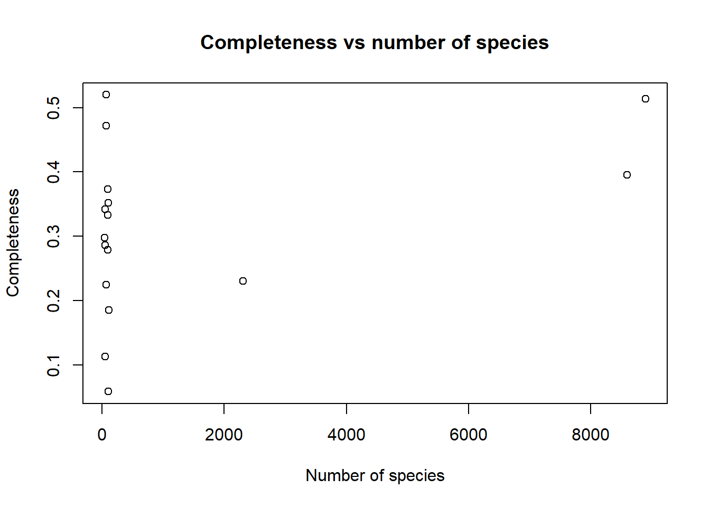
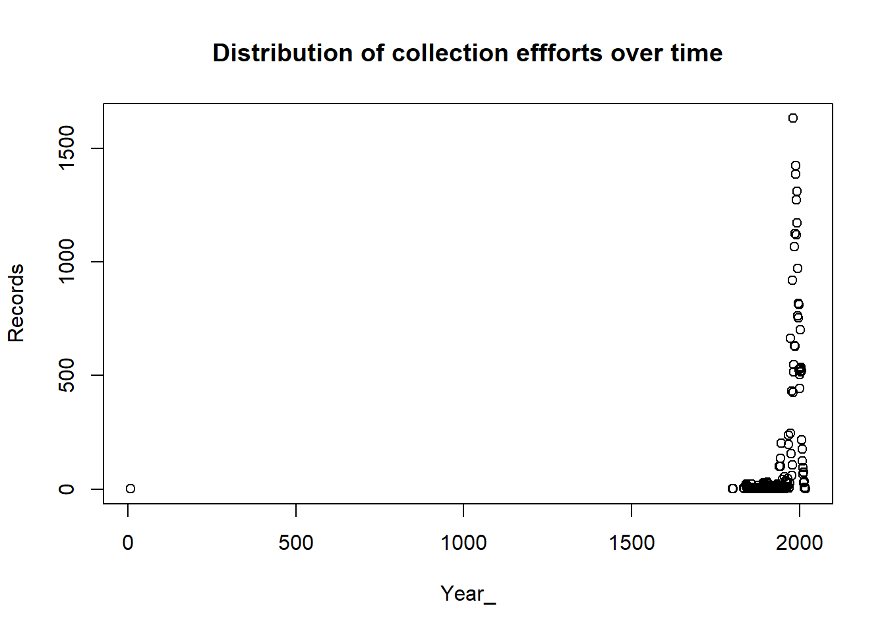
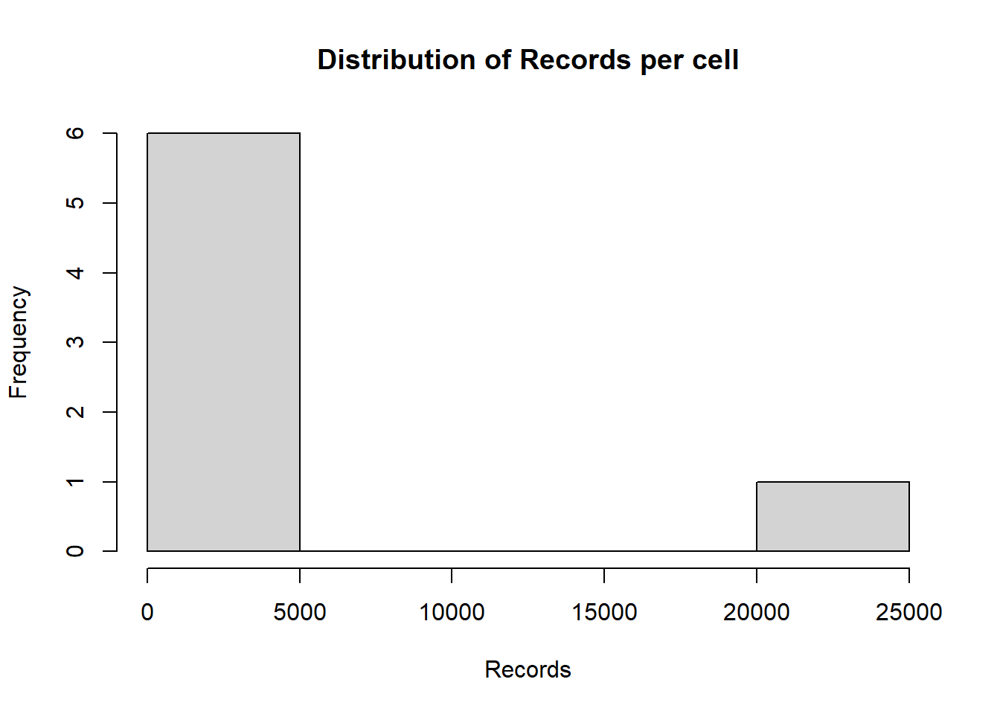
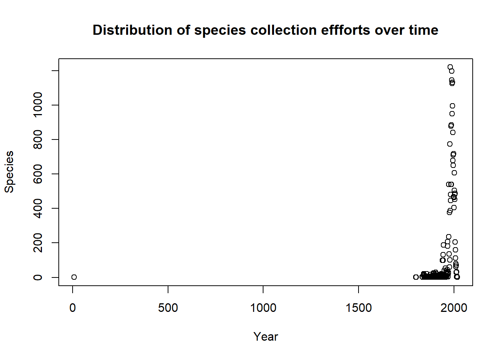

Ecuador plant BIEN data cleaning
2022-12-07
Last updated: 2022-12-07
Checks: 5 2
Knit directory: IBIO870_FinalProject/
This reproducible R Markdown analysis was created with workflowr (version 1.7.0). The Checks tab describes the reproducibility checks that were applied when the results were created. The Past versions tab lists the development history.
The R Markdown file has unstaged changes. To know which version of
the R Markdown file created these results, you’ll want to first commit
it to the Git repo. If you’re still working on the analysis, you can
ignore this warning. When you’re finished, you can run
wflow_publish to commit the R Markdown file and build the
HTML.
Great job! The global environment was empty. Objects defined in the global environment can affect the analysis in your R Markdown file in unknown ways. For reproduciblity it’s best to always run the code in an empty environment.
The command set.seed(20221207) was run prior to running
the code in the R Markdown file. Setting a seed ensures that any results
that rely on randomness, e.g. subsampling or permutations, are
reproducible.
Great job! Recording the operating system, R version, and package versions is critical for reproducibility.
Nice! There were no cached chunks for this analysis, so you can be confident that you successfully produced the results during this run.
Using absolute paths to the files within your workflowr project makes it difficult for you and others to run your code on a different machine. Change the absolute path(s) below to the suggested relative path(s) to make your code more reproducible.
| absolute | relative |
|---|---|
| C:/Users/hj152/Documents/GitHub/IBIO870_FinalProject/analysis/query_names.Rdata | analysis/query_names.Rdata |
Great! You are using Git for version control. Tracking code development and connecting the code version to the results is critical for reproducibility.
The results in this page were generated with repository version 0f2d145. See the Past versions tab to see a history of the changes made to the R Markdown and HTML files.
Note that you need to be careful to ensure that all relevant files for
the analysis have been committed to Git prior to generating the results
(you can use wflow_publish or
wflow_git_commit). workflowr only checks the R Markdown
file, but you know if there are other scripts or data files that it
depends on. Below is the status of the Git repository when the results
were generated:
Ignored files:
Ignored: .Rhistory
Ignored: .Rproj.user/
Ignored: Output/
Untracked files:
Untracked: analysis/query_names
Untracked: analysis/query_names.Rdata
Untracked: query_names.Rdata
Unstaged changes:
Modified: analysis/L1_Ecuador_BIEN_PlantData_Cleaning.Rmd
Note that any generated files, e.g. HTML, png, CSS, etc., are not included in this status report because it is ok for generated content to have uncommitted changes.
These are the previous versions of the repository in which changes were
made to the R Markdown
(analysis/L1_Ecuador_BIEN_PlantData_Cleaning.Rmd) and HTML
(docs/L1_Ecuador_BIEN_PlantData_Cleaning.html) files. If
you’ve configured a remote Git repository (see
?wflow_git_remote), click on the hyperlinks in the table
below to view the files as they were in that past version.
| File | Version | Author | Date | Message |
|---|---|---|---|---|
| Rmd | 33226e1 | Hazel J. Anderson | 2022-12-07 | fix figure issue to print all figures in markdown and not save to file |
| Rmd | b6ccb79 | Hazel J. Anderson | 2022-12-07 | add data subsetting to simplifiy dataset by removing unnecessary columns |
| Rmd | 5f91a6a | Hazel J. Anderson | 2022-12-07 | convert file structure |
Set file paths
data_path <- file.path('G:/My Drive/IBIO 870/Final project/data/L0')
output_path <- file.path('G:/My Drive/IBIO 870/Final project/data/L1')Load required packages
library(bdc)
library(bdDwC)
library(bdvis)Read in BIEN data
database <- read.csv(file.path(data_path,"Ecuador_BIEN_occurrence.csv"))Configure BIEN data to Darwin Core Standards
# darwinizing a dataset
config <- read.csv(file.path(output_path,"configuration table.csv"))
print(config) nameOld nameNew matchType
1 catalog_number catalogNumber Darwinized
2 collection_code collectionCode Darwinized
3 country country Darwinized
4 county county Darwinized
5 custodial_institution_codes institutionCode Darwinized
6 dataowner ownerInstitutionCode Darwinized
7 dataset datasetName Darwinized
8 datasource collectionID Darwinized
9 datasource_id datasetID Darwinized
10 date_collected verbatimEventDate Darwinized
11 date_identified dateIdentified Darwinized
12 elevation_m verbatimElevation Darwinized
13 identification_remarks identificationRemarks Darwinized
14 identified_by identifiedBy Darwinized
15 latitude decimalLatitude Darwinized
16 locality verbatimLocality Darwinized
17 longitude decimalLongitude Darwinized
18 observation_type basisOfRecord Darwinized
19 record_number recordNumber Darwinized
20 recorded_by recordedBy Darwinized
21 scrubbed_taxonomic_status taxonomicStatus Darwinized
22 state_province stateProvince Darwinized
23 verbatim_family family Darwinized
24 verbatim_scientific_name scientificName Darwinized# rename dataset fields
database <- renameUserData(database, config)Pre-filter
Modified from https://brunobrr.github.io/bdc/articles/prefilter.html
# Flag records missing species names
check_pf <-
bdc_scientificName_empty(
data = database,
sci_name = "scientificName")
bdc_scientificName_empty:
Flagged 0 records.
One column was added to the database.# Flag records missing partial or complete information on geographic coordinates
check_pf <- bdc_coordinates_empty(
data = check_pf,
lat = "decimalLatitude",
lon = "decimalLongitude")
bdc_coordinates_empty:
Flagged 28540 records.
One column was added to the database.# Flag records with out-of-range coordinates: latitude > 90 or -90; longitude >180 or -180
check_pf <- bdc_coordinates_outOfRange(
data = check_pf,
lat = "decimalLatitude",
lon = "decimalLongitude")
bdc_coordinates_outOfRange:
Flagged 0 records.
One column was added to the database.# Check record sources of your dataset using:
check_pf %>%
dplyr::group_by(basisOfRecord) %>%
dplyr::summarise(n = dplyr::n())# A tibble: 2 × 2
basisOfRecord n
<chr> <int>
1 plot 6383
2 specimen 297648check_pf <- bdc_basisOfRecords_notStandard(
data = check_pf,
basisOfRecord = "basisOfRecord",
names_to_keep = "all")
bdc_basisOfRecords_notStandard:
Flagged 6383 of the following specific nature:
plot
One column was added to the database.# Deriving country names for records missing country names
check_pf <- bdc_country_from_coordinates(
data = check_pf,
lat = "decimalLatitude",
lon = "decimalLongitude",
country = "country")Loading required package: rnaturalearthLoading required package: rnaturalearthdataAll records already had country information. Nothing was done!# Standardizing country names and getting country code information
check_pf <- bdc_country_standardized(
data = check_pf,
country = "country"
)Loading auxiliary data: country names from wikipediaLoading auxiliary data: world map and country isoStandardizing country namescountry found: Ecuador
bdc_country_standardized:
The country names of 0 records were standardized.
Two columns ('country_suggested' and 'countryCode') were added to the database.# Correcting latitude and longitude transposed
check_pf <-
bdc_coordinates_transposed(
data = check_pf,
id = "collectionID",
sci_names = "scientificName",
lat = "decimalLatitude",
lon = "decimalLongitude",
country = "country_suggested",
countryCode = "countryCode",
border_buffer = 0.2, # in decimal degrees (~22 km at the equator)
save_outputs = FALSE
)Loading required package: readrCorrecting latitude and longitude transposed4370 occurrences will be testedProcessing occurrences from: EC (4370)
bdc_coordinates_transposed:
Corrected 300969 records.
One columns were added to the database.# Records outside one or multiple reference countries
check_pf <-
bdc_coordinates_country_inconsistent(
data = check_pf,
country_name = "Ecuador",
country = "country_suggested",
lon = "decimalLongitude",
lat = "decimalLatitude",
dist = 0.1 # in decimal degrees (~11 km at the equator)
)Spherical geometry (s2) switched offdist is assumed to be in decimal degrees (arc_degrees).although coordinates are longitude/latitude, st_intersection assumes that they
are planar
bdc_coordinates_country_inconsistent:
Flagged 13 records.
One column was added to the database.# Report
check_pf <- bdc_summary_col(data = check_pf)
bdc_summary_col:
Flagged 34730 records.
One column was added to the database.report <-
bdc_create_report(data = check_pf,
database_id = "database_id",
workflow_step = "prefilter",
save_report = FALSE)Loading required package: DTreport# Figures
bdc_create_figures(data = check_pf,
database_id = "database_id",
workflow_step = "prefilter",
save_figures = FALSE)Loading required package: cowplotLoading required package: rworldmapLoading required package: sp### Welcome to rworldmap ###For a short introduction type : vignette('rworldmap')Loading required package: ggplot2Loading required package: hexbin$.coordinates_empty
$.coordinates_country_inconsistent
$.summary
$summary_all_tests
$.coordinates_country_inconsistent
# Filter out flags
database <-
check_pf %>%
dplyr::filter(.summary == TRUE) %>%
bdc_filter_out_flags(data = ., col_to_remove = "all")
bdc_fiter_out_flags:
The following columns were removed from the database:
.scientificName_empty, .coordinates_empty, .coordinates_outOfRange, .basisOfRecords_notStandard, .coordinates_country_inconsistent, .summaryFlagging common time issues
Modified from https://brunobrr.github.io/bdc/articles/time.html
check_time <-
bdc_eventDate_empty(data = database, eventDate = "verbatimEventDate")
bdc_eventDate_empty:
Flagged 24892 records.
One column was added to the database.check_time <-
bdc_year_from_eventDate(data = check_time, eventDate = "verbatimEventDate")
bdc_year_from_eventDate:
Four-digit year were extracted from 244409 records.check_time <-
bdc_year_outOfRange(data = check_time,
eventDate = "year",
year_threshold = 1800)
bdc_year_outOfRange:
Flagged 101 records.
One column was added to the database.check_time <- bdc_summary_col(data = check_time)
bdc_summary_col:
Flagged 24993 records.
One column was added to the database.report <-
bdc_create_report(data = check_time,
database_id = "database_id",
workflow_step = "time",
save_report = FALSE)
reportbdc_create_figures(data = check_time,
database_id = "database_id",
workflow_step = "time",
save_figures = FALSE)$.eventDate_empty
$.year_outOfRange
$.summary
$summary_all_tests
$year
database <-
check_time %>%
dplyr::filter(.summary == TRUE) %>%
bdc_filter_out_flags(data = ., col_to_remove = "all")
bdc_fiter_out_flags:
The following columns were removed from the database:
.eventDate_empty, .year_outOfRange, .summaryFlagging common spatial issues
Modified from https://brunobrr.github.io/bdc/articles/space.html
check_space <-
bdc_coordinates_precision(
data = database,
lon = "decimalLongitude",
lat = "decimalLatitude",
ndec = c(0, 1) # number of decimals to be tested
)bdc_coordinates_precision:
Flagged 165 records
One column was added to the database.check_space <-
CoordinateCleaner::clean_coordinates(
x = check_space,
lon = "decimalLongitude",
lat = "decimalLatitude",
species = "scientificName",
countries = ,
tests = c(
"capitals", # records within 2km around country and province centroids
"centroids", # records within 1km of capitals centroids
"duplicates", # duplicated records
"equal", # records with equal coordinates
"gbif", # records within 1 degree (~111km) of GBIF headsquare
"institutions", # records within 100m of zoo and herbaria
"outliers", # outliers
"zeros", # records with coordinates 0,0
"urban" # records within urban areas
),
capitals_rad = 2000,
centroids_rad = 1000,
centroids_detail = "both", # test both country and province centroids
inst_rad = 100, # remove zoo and herbaria within 100m
outliers_method = "quantile",
outliers_mtp = 5,
outliers_td = 1000,
outliers_size = 10,
range_rad = 0,
zeros_rad = 0.5,
capitals_ref = NULL,
centroids_ref = NULL,
country_ref = NULL,
country_refcol = "countryCode",
inst_ref = NULL,
range_ref = NULL,
# seas_ref = continent_border,
# seas_scale = 110,
urban_ref = NULL,
value = "spatialvalid" # result of tests are appended in separate columns
)Testing coordinate validityFlagged 0 records.Testing equal lat/lonFlagged 0 records.Testing zero coordinatesFlagged 0 records.Testing country capitalsFlagged 0 records.Testing country centroidsFlagged 1 records.Testing urban areasDownloading urban areas via rnaturalearthOGR data source with driver: ESRI Shapefile
Source: "C:\Users\hj152\AppData\Local\Temp\Rtmpmym0et", layer: "ne_50m_urban_areas"
with 2143 features
It has 4 fields
Integer64 fields read as strings: scalerank Flagged 42 records.Testing geographic outliersWarning in cc_outl(otl_test, lon = lon, lat = lat, species = species, method =
outliers_method, : Species with fewer than 7 unique records will not be tested.Flagged 449 records.Testing GBIF headquarters, flagging records around CopenhagenFlagged 0 records.Testing biodiversity institutionsFlagged 0 records.Testing duplicatesFlagged 212680 records.Flagged 213068 of 244308 records, EQ = 0.87.check_space <- bdc_summary_col(data = check_space)Column '.summary' already exist. It will be updated
bdc_summary_col:
Flagged 213210 records.
One column was added to the database.check_space %>%
dplyr::filter(.summary == FALSE) %>% # map only records flagged as FALSE
bdc_quickmap(
data = .,
lon = "decimalLongitude",
lat = "decimalLatitude",
col_to_map = ".summary",
size = 0.9
)
report <-
bdc_create_report(data = check_space,
database_id = "database_id",
workflow_step = "space",
save_report = FALSE)
reportbdc_create_figures(data = check_space,
database_id = "database_id",
workflow_step = "space",
save_figures = FALSE)$.cen
$.otl
$.dpl
$.rou
$.urb
$.summary
$summary_all_tests
$.cen
$.otl
$.dpl
$.rou
$.urb
database <-
check_space %>%
dplyr::filter(.summary == TRUE) %>%
bdc_filter_out_flags(data = ., col_to_remove = "all")
bdc_fiter_out_flags:
The following columns were removed from the database:
.rou, .val, .equ, .zer, .cap, .cen, .urb, .otl, .gbf, .inst, .dpl, .summaryClean and parse species names
Modified from https://brunobrr.github.io/bdc/articles/taxonomy.html
parse_names <-
bdc_clean_names(sci_names = database$scientificName, save_outputs = FALSE)
>> Family names prepended to scientific names were flagged and removed from 1 records.>> Terms denoting taxonomic uncertainty were flagged and removed from 5 records.>> Other issues, capitalizing the first letter of the generic name, replacing empty names by NA, and removing extra spaces, were flagged and corrected or removed from 4 records.>> Infraspecific terms were flagged and removed from 1162 records.parse_names <-
parse_names %>%
dplyr::select(.uncer_terms, names_clean)
database <- dplyr::bind_cols(database, parse_names)#not run for knit version - error with database
#query_names <- bdc_query_names_taxadb(
# sci_name = database$names_clean,
# replace_synonyms = TRUE, # replace synonyms by accepted names?
# suggest_names = TRUE, # try to found a candidate name for misspelled names?
# suggestion_distance = 0.9, # distance between the searched and suggested names
# db = "gbif", # taxonomic database
# parallel = TRUE, # should parallel processing be used?
# ncores = 8, # number of cores to be used in the parallelization process
# export_accepted = TRUE # save names linked to multiple accepted names
#)
#save(query_names, file = "C:/Users/hj152/Documents/GitHub/IBIO870_FinalProject/analysis/query_names.Rdata")
load("C:/Users/hj152/Documents/GitHub/IBIO870_FinalProject/analysis/query_names.Rdata")database <-
database %>%
dplyr::rename(verbatim_scientificName = scientificName) %>%
dplyr::select(-names_clean) %>%
dplyr::bind_cols(., query_names)New names:
• `family` -> `family...3`
• `taxonomicStatus` -> `taxonomicStatus...9`
• `taxonomicStatus` -> `taxonomicStatus...46`
• `family` -> `family...52`report <-
bdc_create_report(data = database,
database_id = "database_id",
workflow_step = "taxonomy",
save_report = FALSE)
reportunresolved_names <-
bdc_filter_out_names(data = database,
col_name = "notes",
taxonomic_status = "accepted",
opposite = TRUE)output <-
bdc_filter_out_names(
data = database,
taxonomic_status = "accepted",
opposite = FALSE
)Summary
output <- format_bdvis(output, Latitude = "decimalLatitude", Longitude = "decimalLongitude", Date_collected = "verbatimEventDate", Scientific_name = "scientificName")Mapping via individual parametersChanged "decimalLatitude" to "Latitude"Changed "decimalLongitude" to "Longitude"Changed "verbatimEventDate" to "Date_collected"Changed "scientificName" to "Scientific_name"bdsummary(output)
Total no of records = 28045
Temporal coverage...
Date range of the records from 0008-04-29 to 2018-04-15
Taxonomic coverage...
No of Families : 0
No of Genus : 0
No of Species : 11474
Spatial coverage ...
Bounding box of records -4.79138889 , -80.917 - 1.38472 , -75.36639
Degree celles covered : 7
% degree cells covered : 23.3333333333333 bdcalendarheat(output)
getcellid(output) X scrubbed_species_binomial family...3
1 3 <NA> Asteraceae
2 4 <NA> Piperaceae
3 5 Trichilia septentrionalis Meliaceae
4 6 <NA> Polypodiaceae
5 7 Clusia mocoensis Clusiaceae
6 8 <NA> Hymenophyllaceae
7 9 <NA> Poaceae
8 10 <NA> Gunneraceae
9 11 <NA> Ranunculaceae
10 12 <NA> Passifloraceae
11 13 <NA> Thymelaeaceae
12 14 <NA> Polygonaceae
13 15 <NA> Athyriaceae
14 17 <NA> Blechnaceae
15 18 <NA> Juncaceae
16 19 <NA> Poaceae
17 20 <NA> Aquifoliaceae
18 21 <NA> Coriariaceae
19 22 <NA> Dryopteridaceae
20 23 <NA> Berberidaceae
21 24 <NA> Caryophyllaceae
22 26 <NA> Solanaceae
23 28 <NA> Asteraceae
24 29 <NA> Malvaceae
25 30 <NA> Amaranthaceae
26 31 <NA> Asteraceae
27 32 <NA> Euphorbiaceae
28 33 <NA> Polygonaceae
29 34 <NA> Rubiaceae
30 35 <NA> Polygalaceae
31 37 <NA> Melastomataceae
32 39 Brachyotum campii Melastomataceae
33 40 <NA> Cyperaceae
34 41 <NA> Gentianaceae
35 42 <NA> Aspleniaceae
36 44 <NA> Tropaeolaceae
37 45 <NA> Rosaceae
38 46 <NA> Ericaceae
39 47 <NA> Araceae
40 48 <NA> Rhizophoraceae
41 49 <NA> Arecaceae
42 54 <NA> Polygonaceae
43 55 <NA> Rubiaceae
44 56 <NA> Malpighiaceae
45 57 <NA> Fabaceae
46 58 <NA> Rutaceae
47 59 <NA> <NA>
48 60 <NA> Lamiaceae
49 61 <NA> Frullaniaceae
50 63 <NA> Amaranthaceae
51 64 <NA> Ephedraceae
52 65 <NA> Rubiaceae
53 66 <NA> Solanaceae
54 71 <NA> Primulaceae
55 73 <NA> Poaceae
56 76 <NA> Poaceae
57 77 <NA> Bryaceae
58 80 <NA> Araceae
59 81 <NA> Melastomataceae
60 83 <NA> Araceae
61 84 <NA> Rubiaceae
62 88 <NA> Araceae
63 89 <NA> Dryopteridaceae
64 90 <NA> Solanaceae
65 92 <NA> Boraginaceae
66 93 <NA> Scrophulariaceae
67 95 <NA> Dennstaedtiaceae
68 96 <NA> Fabaceae
69 97 <NA> Malvaceae
70 99 <NA> Cyperaceae
71 101 <NA> Asteraceae
72 102 <NA> Santalaceae
73 106 <NA> Melastomataceae
74 107 <NA> Poaceae
75 109 <NA> Alstroemeriaceae
76 113 <NA> Cyclanthaceae
77 115 <NA> Adoxaceae
78 118 <NA> Fabaceae
79 119 Liabum floribundum Asteraceae
80 120 <NA> Dryopteridaceae
81 123 <NA> Sphagnaceae
82 126 <NA> Piperaceae
83 127 <NA> Cyperaceae
84 129 <NA> <NA>
85 130 <NA> Cyperaceae
86 132 <NA> Bryaceae
87 136 Munnozia senecionidis Asteraceae
88 139 <NA> Rubiaceae
89 140 <NA> Apocynaceae
90 141 <NA> Gesneriaceae
91 144 <NA> Bromeliaceae
92 145 Centropogon solanifolius Campanulaceae
93 146 Eragrostis lurida Poaceae
94 151 <NA> Solanaceae
95 152 Burmeistera aspera Campanulaceae
96 153 <NA> Apocynaceae
97 154 Rubus acanthophyllos Rosaceae
98 158 <NA> Loganiaceae
99 160 <NA> Moraceae
100 161 <NA> <NA>
101 162 <NA> Fabaceae
102 165 <NA> Asteraceae
103 166 <NA> Aceraceae
104 167 Uniola pittieri Poaceae
105 168 <NA> Equisetaceae
106 173 <NA> Ochnaceae
107 175 Cleidion castaneifolium Euphorbiaceae
108 178 Pappobolus imbaburensis Asteraceae
109 179 <NA> Araceae
110 181 <NA> Lauraceae
111 184 <NA> Amaranthaceae
112 186 <NA> Euphorbiaceae
113 187 <NA> Lamiaceae
114 189 <NA> Sapindaceae
115 190 <NA> Asteraceae
116 193 <NA> Chloranthaceae
117 199 <NA> Picramniaceae
118 200 <NA> Convolvulaceae
119 207 <NA> Poaceae
120 209 <NA> Sapindaceae
121 210 Bromus lanatus Poaceae
122 211 <NA> Asteraceae
123 212 <NA> Lecythidaceae
124 214 <NA> Araceae
125 216 <NA> Pteridaceae
126 217 <NA> Cyperaceae
127 218 <NA> Didymochlaenaceae
128 220 <NA> Polygonaceae
129 221 <NA> Caricaceae
130 225 <NA> Lamiaceae
131 231 <NA> Euphorbiaceae
132 234 <NA> Cyperaceae
133 236 <NA> Polygalaceae
134 237 <NA> Arecaceae
135 240 <NA> Fabaceae
136 243 <NA> Melastomataceae
137 244 <NA> Caprifoliaceae
138 246 <NA> Acanthaceae
139 251 <NA> Lycopodiaceae
140 253 <NA> Lamiaceae
141 254 <NA> Rubiaceae
142 255 Philodendron tenue Araceae
143 262 <NA> Bromeliaceae
144 267 <NA> Poaceae
145 268 <NA> Bromeliaceae
146 269 <NA> Eriocaulaceae
147 271 <NA> Lauraceae
148 272 Macleania loeseneriana Ericaceae
149 274 <NA> Nyctaginaceae
150 275 <NA> Scrophulariaceae
151 278 <NA> Verbenaceae
152 279 <NA> Fabaceae
153 281 <NA> Dicranaceae
154 282 Iryanthera juruensis Myristicaceae
155 285 <NA> Vitaceae
156 286 <NA> Loasaceae
157 288 <NA> Selaginellaceae
158 289 Cacosmia harlingii Asteraceae
159 290 <NA> <NA>
160 291 Podandrogyne glabra Cleomaceae
161 292 <NA> Myrtaceae
162 295 <NA> Phytolaccaceae
163 299 Oxalis mollis Oxalidaceae
164 301 <NA> Sapindaceae
165 306 <NA> Arecaceae
166 310 <NA> Araliaceae
167 313 <NA> Lauraceae
168 314 <NA> Asteraceae
169 315 <NA> Asteraceae
170 319 Ipomoea alba Convolvulaceae
171 321 <NA> Campanulaceae
172 322 <NA> Rubiaceae
173 323 <NA> Rutaceae
174 324 <NA> Bromeliaceae
175 325 <NA> Xyridaceae
176 326 <NA> Asteraceae
177 334 <NA> Bartramiaceae
178 335 <NA> Fabaceae
179 336 Piper lanceifolium Piperaceae
180 337 <NA> Selaginellaceae
181 339 <NA> Poaceae
182 340 <NA> Sapindaceae
183 341 <NA> Boraginaceae
184 343 <NA> Primulaceae
185 344 <NA> Hypericaceae
186 346 Ixora panurensis Rubiaceae
187 347 Berberis lutea Berberidaceae
188 349 <NA> Dioscoreaceae
189 356 <NA> Solanaceae
190 357 <NA> Solanaceae
191 359 <NA> Lamiaceae
192 363 <NA> Poaceae
193 365 Cinchona pubescens Rubiaceae
194 382 <NA> Pottiaceae
195 384 Trigynaea duckei Annonaceae
196 386 <NA> Dennstaedtiaceae
197 387 <NA> Fabaceae
198 388 Chamissoa altissima Amaranthaceae
199 390 <NA> Oxalidaceae
200 393 <NA> Araliaceae
201 394 Colignonia ovalifolia Nyctaginaceae
202 395 <NA> Asteraceae
203 397 <NA> Loasaceae
204 398 Solanum sessile Solanaceae
205 404 Solanum sessile Solanaceae
206 409 <NA> Clusiaceae
207 412 <NA> Melastomataceae
208 413 <NA> Solanaceae
209 415 <NA> Bignoniaceae
210 418 <NA> Plantaginaceae
211 419 <NA> Rosaceae
212 421 <NA> Thymelaeaceae
213 422 <NA> Phyllanthaceae
214 427 <NA> Orchidaceae
215 431 Anthurium jimenae Araceae
216 434 <NA> Cleomaceae
217 435 <NA> Lamiaceae
218 436 <NA> Thuidiaceae
219 439 <NA> Fabaceae
220 445 <NA> Gesneriaceae
221 451 <NA> Lamiaceae
222 456 <NA> Connaraceae
223 458 Inga spectabilis Fabaceae
224 460 <NA> Actinidiaceae
225 464 <NA> Gesneriaceae
226 466 <NA> Lacistemataceae
227 470 <NA> Piperaceae
228 474 <NA> Sapindaceae
229 476 <NA> Gesneriaceae
230 477 <NA> Fabaceae
231 478 <NA> Hypnaceae
232 479 <NA> Bromeliaceae
233 481 <NA> Fabaceae
234 484 <NA> Solanaceae
235 485 <NA> Euphorbiaceae
236 488 <NA> Poaceae
237 489 <NA> Clusiaceae
238 492 <NA> Boraginaceae
239 496 <NA> Begoniaceae
240 499 <NA> Rhamnaceae
241 501 <NA> Fabaceae
242 502 <NA> Acanthaceae
243 505 <NA> Annonaceae
244 514 <NA> Iridaceae
245 517 <NA> Phyllanthaceae
246 519 <NA> Rubiaceae
247 520 <NA> Rubiaceae
248 525 <NA> Ericaceae
249 527 <NA> Celastraceae
250 528 <NA> Passifloraceae
251 535 <NA> Campanulaceae
252 538 <NA> Cunoniaceae
253 539 <NA> Poaceae
254 540 <NA> Nephrolepidaceae
255 550 Stromanthe ramosissima Marantaceae
256 551 <NA> Araliaceae
257 552 <NA> Polypodiaceae
258 556 <NA> Apocynaceae
259 557 <NA> Primulaceae
260 560 <NA> Staphyleaceae
261 561 <NA> Scrophulariaceae
262 563 <NA> Rubiaceae
263 566 Sigesbeckia jorullensis Asteraceae
264 567 Matisia bracteolosa Malvaceae
265 569 <NA> Vochysiaceae
266 570 <NA> Plagiochilaceae
267 571 Polylepis pauta Rosaceae
268 572 <NA> Funariaceae
269 573 <NA> Melastomataceae
270 574 <NA> Hypoxidaceae
271 576 Tillandsia clavigera Bromeliaceae
272 577 Calceolaria dilatata Calceolariaceae
273 578 <NA> Hymenophyllaceae
274 580 Melochia lupulina Malvaceae
275 581 <NA> Araceae
276 584 Miconia media Melastomataceae
277 591 <NA> Caryophyllaceae
278 593 <NA> Myrtaceae
279 594 Wedelia grandiflora Asteraceae
280 597 <NA> Urticaceae
281 598 <NA> Olacaceae
282 601 <NA> Cucurbitaceae
283 602 <NA> Rubiaceae
284 607 Piper imperiale Piperaceae
285 608 Bomarea hirsuta Alstroemeriaceae
286 609 <NA> Sapindaceae
287 614 Podocarpus oleifolius Podocarpaceae
288 616 <NA> Campanulaceae
289 617 <NA> Geraniaceae
290 619 <NA> Caryophyllaceae
291 620 <NA> Arecaceae
292 622 Cortaderia bifida Poaceae
293 623 <NA> Calceolariaceae
294 625 <NA> Humiriaceae
295 632 <NA> Crassulaceae
296 634 <NA> Brassicaceae
297 635 <NA> Siparunaceae
298 647 <NA> Commelinaceae
299 648 <NA> Rubiaceae
300 652 Dennstaedtia cicutaria Dennstaedtiaceae
301 654 Plantago linearis Plantaginaceae
302 665 <NA> Loasaceae
303 672 <NA> Chrysobalanaceae
304 673 <NA> Cucurbitaceae
305 677 Miconia hexamera Melastomataceae
306 682 <NA> Melastomataceae
307 685 <NA> Fabaceae
308 693 <NA> Lembophyllaceae
309 696 <NA> Herbertaceae
310 699 <NA> Marcgraviaceae
311 704 <NA> Myrtaceae
312 710 <NA> Rubiaceae
313 711 Centropogon cornutus Campanulaceae
314 715 Pereilema crinitum Poaceae
315 722 <NA> Neckeraceae
316 723 <NA> Bryaceae
317 724 <NA> Asteraceae
318 726 Ladenbergia macrocarpa Rubiaceae
319 727 <NA> Pottiaceae
320 729 <NA> Myrtaceae
321 732 <NA> Solanaceae
322 733 <NA> Brassicaceae
323 738 <NA> Cyclanthaceae
324 744 <NA> Euphorbiaceae
325 752 <NA> Lamiaceae
326 753 <NA> Solanaceae
327 754 Casearia decandra Salicaceae
328 758 <NA> Polygonaceae
329 759 Paspalum orbiculatum Poaceae
330 768 <NA> Poaceae
331 769 <NA> Hypericaceae
332 771 <NA> Malvaceae
333 772 <NA> Euphorbiaceae
334 775 <NA> Ericaceae
335 777 <NA> Marantaceae
336 780 <NA> Rubiaceae
337 783 Paspalum paniculatum Poaceae
338 786 <NA> Euphorbiaceae
339 788 Scleria secans Cyperaceae
340 791 <NA> Tectariaceae
341 793 Solanum aureum Solanaceae
342 794 <NA> Meliaceae
343 795 <NA> Primulaceae
344 802 <NA> Rubiaceae
345 807 <NA> Sapindaceae
346 814 <NA> Brassicaceae
347 817 <NA> Sapindaceae
348 820 <NA> Loranthaceae
349 821 <NA> Solanaceae
350 830 <NA> Asteraceae
351 832 <NA> Asteraceae
352 833 <NA> Polypodiaceae
353 837 Vallesia glabra Apocynaceae
354 838 Disterigma noyesiae Ericaceae
355 845 <NA> Polygalaceae
356 848 <NA> Asteraceae
357 850 <NA> Verbenaceae
358 857 <NA> Rosaceae
359 858 <NA> Poaceae
360 859 <NA> Bignoniaceae
361 869 Inga chartacea Fabaceae
362 877 <NA> Cyperaceae
363 878 <NA> Grossulariaceae
364 884 <NA> Commelinaceae
365 885 Ceratostema alatum Ericaceae
366 888 Polybotrya pubens Dryopteridaceae
367 894 <NA> Urticaceae
368 896 Tectaria vivipara Tectariaceae
369 897 <NA> Polygalaceae
370 903 <NA> Apiaceae
371 904 <NA> Plumbaginaceae
372 912 <NA> Urticaceae
373 914 <NA> Burseraceae
374 916 <NA> Solanaceae
375 925 <NA> Fabaceae
376 933 <NA> Cactaceae
377 935 <NA> Acanthaceae
378 936 <NA> Acanthaceae
379 938 <NA> Bartramiaceae
380 946 <NA> Bromeliaceae
381 949 <NA> Marcgraviaceae
382 951 <NA> Daltoniaceae
383 955 <NA> Monimiaceae
384 956 <NA> Geraniaceae
385 958 <NA> Myrtaceae
386 968 Paspalum humboldtianum Poaceae
387 971 Phytolacca rivinoides Phytolaccaceae
388 976 <NA> Melastomataceae
389 977 Eragrostis pastoensis Poaceae
390 978 Agrostis breviculmis Poaceae
391 982 <NA> Celastraceae
392 992 <NA> Chrysobalanaceae
393 997 Guzmania spectabilis Bromeliaceae
394 999 <NA> Costaceae
395 1001 <NA> Santalaceae
396 1007 <NA> Amaranthaceae
397 1008 <NA> Sabiaceae
398 1016 <NA> Asparagaceae
399 1028 <NA> Commelinaceae
400 1033 <NA> Acanthaceae
401 1034 <NA> Nyctaginaceae
402 1039 Galium pseudotriflorum Rubiaceae
403 1047 Maripa nicaraguensis Convolvulaceae
404 1048 <NA> Cannaceae
405 1057 <NA> Poaceae
406 1059 <NA> Polygonaceae
407 1060 <NA> Lamiaceae
408 1062 <NA> Heliotropiaceae
409 1068 <NA> Ericaceae
410 1075 Solanum cucullatum Solanaceae
411 1077 <NA> Asteraceae
412 1078 <NA> Dennstaedtiaceae
413 1081 <NA> Melastomataceae
414 1098 <NA> Gentianaceae
415 1099 <NA> Lauraceae
416 1103 <NA> Polypodiaceae
417 1104 <NA> Araliaceae
418 1107 <NA> Orthotrichaceae
419 1109 <NA> Clethraceae
420 1111 Nassella pubiflora Poaceae
421 1113 <NA> Fabaceae
422 1114 <NA> Asteraceae
423 1116 <NA> Euphorbiaceae
424 1123 <NA> Lentibulariaceae
425 1125 <NA> Meliaceae
426 1130 Gynerium sagittatum Poaceae
427 1131 <NA> Orobanchaceae
428 1137 <NA> Rubiaceae
429 1138 <NA> Asteraceae
430 1139 <NA> Polypodiaceae
431 1147 <NA> Geraniaceae
432 1148 <NA> Cyclanthaceae
433 1152 <NA> Verbenaceae
434 1160 Azorella aretioides Apiaceae
435 1162 <NA> Bryaceae
436 1165 Calceolaria hyssopifolia Calceolariaceae
437 1172 <NA> Cucurbitaceae
438 1177 <NA> Arecaceae
439 1179 Peperomia parasitica Piperaceae
440 1180 <NA> Bryaceae
441 1192 <NA> Hookeriaceae
442 1195 <NA> Marantaceae
443 1197 <NA> Amaranthaceae
444 1199 <NA> Euphorbiaceae
445 1206 <NA> Melastomataceae
446 1212 Asplenium rutaceum Aspleniaceae
447 1214 <NA> Poaceae
448 1218 <NA> Poaceae
449 1219 Senna obtusifolia Fabaceae
450 1220 Piper nubigenum Piperaceae
451 1227 Platymiscium stipulare Fabaceae
452 1228 <NA> Menispermaceae
453 1229 Mollia gracilis Malvaceae
454 1239 Paspalum ceresia Poaceae
455 1244 <NA> Convolvulaceae
456 1246 <NA> Primulaceae
457 1247 <NA> Bromeliaceae
458 1248 Aciotis purpurascens Melastomataceae
459 1251 <NA> Radulaceae
460 1252 <NA> Elaeocarpaceae
461 1256 <NA> Rubiaceae
462 1260 <NA> Campanulaceae
463 1261 <NA> Solanaceae
464 1262 <NA> Asteraceae
465 1265 <NA> Phyllogoniaceae
466 1271 <NA> Amaryllidaceae
467 1272 <NA> Rubiaceae
468 1274 <NA> Melastomataceae
469 1275 Sesbania emerus Fabaceae
470 1285 <NA> Acanthaceae
471 1306 <NA> Poaceae
472 1318 <NA> Melastomataceae
473 1325 <NA> Cyperaceae
474 1328 <NA> Turneraceae
475 1344 <NA> Menispermaceae
476 1351 Acalypha setosa Euphorbiaceae
477 1352 Oryctanthus alveolatus Loranthaceae
478 1358 Polylepis sericea Rosaceae
479 1362 <NA> Apiaceae
480 1364 <NA> Fabaceae
481 1367 <NA> Grossulariaceae
482 1371 <NA> Violaceae
483 1377 <NA> Asteraceae
484 1378 <NA> Pteridaceae
485 1384 <NA> Urticaceae
486 1399 <NA> Euphorbiaceae
487 1404 <NA> Clusiaceae
488 1405 Sabicea panamensis Rubiaceae
489 1408 <NA> Boraginaceae
490 1409 Equisetum bogotense Equisetaceae
491 1411 <NA> Loranthaceae
492 1421 Acmella alba Asteraceae
493 1424 <NA> Lamiaceae
494 1426 <NA> Asteraceae
495 1429 <NA> Melastomataceae
496 1435 <NA> Elaeocarpaceae
497 1446 <NA> Symplocaceae
498 1450 Miconia caelata Melastomataceae
499 1451 <NA> Ophioglossaceae
500 1453 <NA> Brassicaceae
501 1454 <NA> Chrysobalanaceae
502 1461 <NA> Plantaginaceae
503 1462 <NA> Asteraceae
504 1463 <NA> Cyatheaceae
505 1466 <NA> Phytolaccaceae
506 1467 Calliandra trinervia Fabaceae
507 1475 <NA> Lindsaeaceae
508 1476 <NA> Onagraceae
509 1478 Rhodospatha latifolia Araceae
510 1484 <NA> Apocynaceae
511 1495 <NA> Apocynaceae
512 1502 <NA> Campanulaceae
513 1522 <NA> Poaceae
514 1531 Diplazium seemannii Woodsiaceae
515 1539 Buddleja americana Scrophulariaceae
516 1543 <NA> Euphorbiaceae
517 1558 Polylepis incana Rosaceae
518 1562 <NA> Phytolaccaceae
519 1565 <NA> Poaceae
520 1566 <NA> Malpighiaceae
521 1572 <NA> Gesneriaceae
522 1573 <NA> Salicaceae
523 1578 <NA> Pteridaceae
524 1580 <NA> Rubiaceae
525 1586 <NA> Lepicoleaceae
526 1588 <NA> Euphorbiaceae
527 1593 <NA> Pteridaceae
528 1595 <NA> Commelinaceae
529 1602 <NA> Gleicheniaceae
530 1608 <NA> Apiaceae
531 1612 <NA> Convolvulaceae
532 1613 <NA> Achariaceae
533 1617 Muhlenbergia peruviana Poaceae
534 1622 <NA> Asteraceae
535 1624 <NA> Rubiaceae
536 1625 Bomarea multiflora Alstroemeriaceae
537 1627 <NA> Poaceae
538 1632 Clethra fimbriata Clethraceae
539 1638 <NA> Asparagaceae
540 1641 <NA> Vitaceae
541 1643 <NA> Caryophyllaceae
542 1652 <NA> Apocynaceae
543 1653 <NA> Bartramiaceae
544 1661 <NA> Gesneriaceae
545 1662 Paspalum candidum Poaceae
546 1666 <NA> Apocynaceae
547 1667 <NA> Crassulaceae
548 1670 <NA> Gesneriaceae
549 1671 <NA> Malvaceae
550 1673 <NA> Onagraceae
551 1674 Leretia cordata Icacinaceae
552 1676 <NA> Burseraceae
553 1683 <NA> Lauraceae
554 1685 <NA> Clusiaceae
555 1686 Phyllanthus salviifolius Phyllanthaceae
556 1690 Zygia inaequalis Fabaceae
557 1701 <NA> Poaceae
558 1703 Indigofera tephrosioides Fabaceae
559 1710 Poa cucullata Poaceae
560 1712 <NA> Solanaceae
561 1713 Trisetum spicatum Poaceae
562 1714 <NA> Gesneriaceae
563 1716 <NA> Proteaceae
564 1719 <NA> Fabaceae
565 1726 <NA> Dicranaceae
566 1728 Paspalum conjugatum Poaceae
567 1729 Triolena pluvialis Melastomataceae
568 1733 <NA> Urticaceae
569 1739 Muhlenbergia ligularis Poaceae
570 1747 <NA> Bignoniaceae
571 1748 <NA> Asteraceae
572 1754 <NA> Ericaceae
573 1755 Hydrocotyle leucocephala Araliaceae
574 1757 Solanum trachycyphum Solanaceae
575 1761 <NA> Polypodiaceae
576 1762 <NA> Fabaceae
577 1764 <NA> Dryopteridaceae
578 1769 Solanum acanthodes Solanaceae
579 1773 <NA> Apocynaceae
580 1776 <NA> Rosaceae
581 1777 <NA> Poaceae
582 1781 <NA> Solanaceae
583 1784 <NA> Fabaceae
584 1787 <NA> Brassicaceae
585 1799 <NA> Solanaceae
586 1803 <NA> Meliaceae
587 1813 <NA> Nyctaginaceae
588 1814 <NA> Lamiaceae
589 1817 <NA> Cucurbitaceae
590 1820 <NA> Anacardiaceae
591 1823 <NA> Capparaceae
592 1824 <NA> Malvaceae
593 1831 <NA> Gentianaceae
594 1835 Solanum brevifolium Solanaceae
595 1836 Peperomia hispidula Piperaceae
596 1842 <NA> Hypnaceae
597 1844 <NA> Melastomataceae
598 1849 <NA> Commelinaceae
599 1850 <NA> Salviniaceae
600 1852 <NA> Asclepiadaceae
601 1858 Rinorea lindeniana Violaceae
602 1870 <NA> Rubiaceae
603 1875 <NA> Lecythidaceae
604 1881 <NA> Vochysiaceae
605 1886 Cuphea ciliata Lythraceae
606 1887 <NA> Combretaceae
607 1889 <NA> Rubiaceae
608 1896 <NA> Ericaceae
609 1899 <NA> Balanophoraceae
610 1904 <NA> Lepidoziaceae
611 1917 Amaranthus hybridus Amaranthaceae
612 1918 <NA> Meteoriaceae
613 1920 Piper macerispicum Piperaceae
614 1930 Valeriana pyramidalis Caprifoliaceae
615 1932 <NA> Poaceae
616 1940 <NA> Fabaceae
617 1944 <NA> Lythraceae
618 1945 <NA> Poaceae
619 1959 <NA> Cannabaceae
620 1961 Joosia longisepala Rubiaceae
621 1965 Asplenium cuspidatum Aspleniaceae
622 1977 Columnea mastersonii Gesneriaceae
623 1992 <NA> Clusiaceae
624 1997 <NA> Fabaceae
625 2000 <NA> Euphorbiaceae
626 2002 Agrostis tolucensis Poaceae
627 2008 Philodendron tenuipes Araceae
628 2016 Megalastrum subincisum Dryopteridaceae
629 2021 Valeriana cernua Caprifoliaceae
630 2022 <NA> Gleicheniaceae
631 2026 Waltheria ovata Malvaceae
632 2035 <NA> Meliaceae
633 2046 Inga edulis Fabaceae
634 2053 <NA> Heliconiaceae
635 2057 <NA> Apiaceae
636 2062 <NA> Myrtaceae
637 2065 <NA> Putranjivaceae
638 2073 <NA> Meteoriaceae
639 2074 <NA> Lophocoleaceae
640 2075 Gurania spinulosa Cucurbitaceae
641 2076 <NA> Asparagaceae
642 2077 <NA> Pteridaceae
643 2093 <NA> Asteraceae
644 2095 <NA> Humiriaceae
645 2096 <NA> Araliaceae
646 2101 Paspalum vaginatum Poaceae
647 2104 <NA> Melastomataceae
648 2107 <NA> Myrtaceae
649 2114 Brachyotum rostratum Melastomataceae
650 2116 <NA> Lycopodiaceae
651 2130 Luzula vulcanica Juncaceae
652 2132 Sporobolus indicus Poaceae
653 2135 <NA> Ericaceae
654 2136 <NA> Rubiaceae
655 2139 Polypodium dissimile Polypodiaceae
656 2140 <NA> Verbenaceae
657 2141 Daphnopsis macrophylla Thymelaeaceae
658 2143 Palicourea nigricans Rubiaceae
659 2148 <NA> Gesneriaceae
660 2153 Anthurium andraeanum Araceae
661 2154 Anthurium andraeanum Araceae
662 2160 <NA> Melastomataceae
663 2164 Matisia longiflora Malvaceae
664 2172 <NA> Juncaceae
665 2173 <NA> Polygonaceae
666 2177 <NA> Lejeuneaceae
667 2185 Hypochaeris sessiliflora Asteraceae
668 2189 <NA> Lamiaceae
669 2192 Puya eryngioides Bromeliaceae
670 2194 <NA> Verbenaceae
671 2196 <NA> Cyclanthaceae
672 2197 Barnadesia arborea Asteraceae
673 2198 Aciotis polystachya Melastomataceae
674 2203 <NA> Salviniaceae
675 2205 <NA> Asteraceae
676 2213 <NA> Poaceae
677 2214 <NA> Fabaceae
678 2215 <NA> Fabaceae
679 2217 <NA> Poaceae
680 2221 <NA> Rubiaceae
681 2231 Matisia ochrocalyx Malvaceae
682 2233 <NA> Asteraceae
683 2245 Piresia goeldii Poaceae
684 2253 <NA> Clusiaceae
685 2255 <NA> Asteraceae
686 2256 Anthurium nigrescens Araceae
687 2263 <NA> Rubiaceae
688 2276 <NA> Rubiaceae
689 2289 <NA> Cyperaceae
690 2294 Calceolaria perfoliata Calceolariaceae
691 2295 <NA> Solanaceae
692 2296 <NA> Fabaceae
693 2299 <NA> Fabaceae
694 2305 <NA> Solanaceae
695 2309 <NA> Urticaceae
696 2312 <NA> Lentibulariaceae
697 2317 <NA> Poaceae
698 2321 Vallea stipularis Elaeocarpaceae
699 2322 Calamagrostis carchiensis Poaceae
700 2323 <NA> Caryophyllaceae
701 2334 <NA> Melastomataceae
702 2335 <NA> Rubiaceae
703 2341 <NA> Fabaceae
704 2342 <NA> Rutaceae
705 2346 <NA> Fabaceae
706 2352 <NA> Fabaceae
707 2353 <NA> Myrtaceae
708 2361 Lachemilla angustata Rosaceae
709 2367 Swartzia simplex Fabaceae
710 2383 <NA> Asteraceae
711 2390 <NA> Apocynaceae
712 2393 <NA> Fabaceae
713 2402 Ilex rupicola Aquifoliaceae
714 2406 <NA> Pentaphylacaceae
715 2412 <NA> Fabaceae
716 2413 Flaveria bidentis Asteraceae
717 2416 Castilleja fissifolia Orobanchaceae
718 2423 <NA> Gesneriaceae
719 2428 <NA> Lamiaceae
720 2429 <NA> Cephaloziaceae
721 2435 <NA> Dioscoreaceae
722 2437 Nectandra laurel Lauraceae
723 2440 <NA> Orthotrichaceae
724 2441 <NA> Escalloniaceae
725 2443 Asplenium tricholepis Aspleniaceae
726 2451 <NA> Hookeriaceae
727 2452 <NA> Polypodiaceae
728 2465 <NA> Escalloniaceae
729 2472 Aechmea dactylina Bromeliaceae
730 2473 <NA> Poaceae
731 2478 <NA> Poaceae
732 2491 <NA> Metteniusaceae
733 2498 <NA> Onagraceae
734 2515 Cassia grandis Fabaceae
735 2516 Cassia grandis Fabaceae
736 2521 <NA> Asteraceae
737 2522 <NA> Cyperaceae
738 2529 <NA> Moraceae
739 2532 Sticherus simplex Gleicheniaceae
740 2536 Byttneria ovata Malvaceae
741 2543 Bidens andicola Asteraceae
742 2553 <NA> Alzateaceae
743 2554 <NA> Polypodiaceae
744 2557 <NA> Sapindaceae
745 2562 Niphogeton azorelloides Apiaceae
746 2573 <NA> Plantaginaceae
747 2577 Canna jaegeriana Cannaceae
748 2579 Pteris pungens Pteridaceae
749 2580 Ruagea tomentosa Meliaceae
750 2581 Pentacalia carchiensis Asteraceae
751 2582 Cortaderia nitida Poaceae
752 2583 Monnina arbuscula Polygalaceae
753 2586 Dorobaea pimpinellifolia Asteraceae
754 2588 Pteris muricata Pteridaceae
755 2589 Miconia radula Melastomataceae
756 2590 Muhlenbergia angustata Poaceae
757 2593 Themistoclesia campii Ericaceae
758 2594 Heliconia schumanniana Heliconiaceae
759 2597 Microgramma percussa Polypodiaceae
760 2599 Ocotea sericea Lauraceae
761 2604 Hypericum laricifolium Hypericaceae
762 2605 Mayna odorata Achariaceae
763 2608 Stellaria ovata Caryophyllaceae
764 2609 Werneria pygmaea Asteraceae
765 2610 Asplenium abscissum Aspleniaceae
766 2612 Hymenophyllum fucoides Hymenophyllaceae
767 2613 Valeriana plantaginea Caprifoliaceae
768 2614 Clidemia japurensis Melastomataceae
769 2615 Iresine diffusa Amaranthaceae
770 2617 Bromus catharticus Poaceae
771 2618 Mimosa acantholoba Fabaceae
772 2619 Palicourea demissa Rubiaceae
773 2620 Desfontainia splendens Columelliaceae
774 2621 Monstera pinnatipartita Araceae
775 2622 Erythrina fusca Fabaceae
776 2623 Aechmea fraseri Bromeliaceae
777 2624 Hesperomeles obtusifolia Rosaceae
778 2626 Azorella crenata Apiaceae
779 2627 Aeschynomene rudis Fabaceae
780 2628 Thibaudia harlingii Ericaceae
781 2630 Baccharis arbutifolia Asteraceae
782 2631 Heliconia velutina Heliconiaceae
783 2632 Drymonia coccinea Gesneriaceae
784 2633 Pleopeltis macrocarpa Polypodiaceae
785 2635 Blakea subconnata Melastomataceae
786 2636 Alchornea websteri Euphorbiaceae
787 2638 Quiina florida Ochnaceae
788 2642 Asplenium monanthes Aspleniaceae
789 2643 Rumex tolimensis Polygonaceae
790 2645 Anthurium nigropunctatum Araceae
791 2647 Piper andreanum Piperaceae
792 2650 Pilea myriantha Urticaceae
793 2651 Ocotea aciphylla Lauraceae
794 2655 Festuca vaginalis Poaceae
795 2657 Hamelia patens Rubiaceae
796 2659 Solanum lepidotum Solanaceae
797 2660 Desmodium axillare Fabaceae
798 2665 Vigna peduncularis Fabaceae
799 2667 Miconia theaezans Melastomataceae
800 2668 Guatteria decurrens Annonaceae
801 2670 Psychotria ostreophora Rubiaceae
802 2671 Coutarea hexandra Rubiaceae
803 2672 Myrcia neesiana Myrtaceae
804 2675 Passiflora sprucei Passifloraceae
805 2676 Clibadium glabrescens Asteraceae
806 2677 Pausandra trianae Euphorbiaceae
807 2679 Macleania cordifolia Ericaceae
808 2683 Delostoma integrifolium Bignoniaceae
809 2686 Gaultheria erecta Ericaceae
810 2690 Columnea ciliata Gesneriaceae
811 2696 Cissus erosa Vitaceae
812 2699 Melpomene wolfii Polypodiaceae
813 2701 Oreopanax eriocephalus Araliaceae
814 2702 Picramnia juniniana Picramniaceae
815 2705 Bejaria resinosa Ericaceae
816 2707 Trichilia hirta Meliaceae
817 2711 Ronnbergia deleonii Bromeliaceae
818 2713 Columellia oblonga Columelliaceae
819 2716 Myrcianthes fragrans Myrtaceae
820 2719 Didymochlaena truncatula Dryopteridaceae
821 2720 Anthurium oxybelium Araceae
822 2721 Acalypha diversifolia Euphorbiaceae
823 2724 Danthonia secundiflora Poaceae
824 2727 Cuscuta grandiflora Convolvulaceae
825 2731 Orthaea oriens Ericaceae
826 2732 Drymonia teuscheri Gesneriaceae
827 2735 Peyritschia conferta Poaceae
828 2738 Piper barbatum Piperaceae
829 2739 Dalechampia scandens Euphorbiaceae
830 2740 Theobroma gileri Malvaceae
831 2741 Adiantum pulverulentum Pteridaceae
832 2743 Isolepis nigricans Cyperaceae
833 2744 Monopyle macrocarpa Gesneriaceae
834 2747 Calceolaria ternata Calceolariaceae
835 2748 Solanum juglandifolium Solanaceae
836 2750 Plantago australis Plantaginaceae
837 2754 Muehlenbeckia tamnifolia Polygonaceae
838 2756 Rubus adenotrichos Rosaceae
839 2757 Adelobotrys adscendens Melastomataceae
840 2758 Bouteloua curtipendula Poaceae
841 2759 Costus arabicus Costaceae
842 2760 Psychotria cooperi Rubiaceae
843 2761 Cerastium floccosum Caryophyllaceae
844 2763 Aciotis rubricaulis Melastomataceae
845 2764 Tillandsia recurvata Bromeliaceae
846 2765 Jamesonia cinnamomea Pteridaceae
847 2767 Croton abutiloides Euphorbiaceae
848 2772 Setaria parviflora Poaceae
849 2776 Piper phytolaccifolium Piperaceae
850 2779 Melpomene flabelliformis Polypodiaceae
851 2780 Axinaea merianiae Melastomataceae
852 2784 Salacia macrantha Celastraceae
853 2785 Sauvagesia erecta Ochnaceae
854 2787 Tillandsia disticha Bromeliaceae
855 2788 Philodendron ernestii Araceae
856 2791 Sanango racemosum Gesneriaceae
857 2792 Cynanchum microphyllum Apocynaceae
858 2794 Halenia weddelliana Gentianaceae
859 2797 Portulaca halimoides Portulacaceae
860 2799 Sagotia racemosa Euphorbiaceae
861 2800 Ficus apollinaris Moraceae
862 2803 Erechtites valerianifolius Asteraceae
863 2804 Hydrangea peruviana Hydrangeaceae
864 2805 Baccharis macrantha Asteraceae
865 2806 Anthurium pallatangense Araceae
866 2807 Hyptis pectinata Lamiaceae
867 2809 Bothriochloa barbinodis Poaceae
868 2810 Solanum cucullatum Solanaceae
869 2812 Psychotria pilosa Rubiaceae
870 2814 Viburnum pichinchense Adoxaceae
871 2815 Nectandra reticulata Lauraceae
872 2816 Anthurium dolichophyllum Araceae
873 2817 Passiflora foetida Passifloraceae
874 2820 Cestrum validum Solanaceae
875 2821 Alternanthera mexicana Amaranthaceae
876 2823 Salpichlaena volubilis Blechnaceae
877 2824 Muhlenbergia diversiglumis Poaceae
878 2826 Chusquea lehmannii Poaceae
879 2827 Trichilia martiana Meliaceae
880 2828 Solanum aturense Solanaceae
881 2830 Solanum colombianum Solanaceae
882 2835 Calamagrostis mollis Poaceae
883 2836 Rubus glabratus Rosaceae
884 2842 Ocimum campechianum Lamiaceae
885 2843 Verbesina rivetii Asteraceae
886 2844 Oenothera multicaulis Onagraceae
887 2847 Miconia schunkei Melastomataceae
888 2848 Acnistus arborescens Solanaceae
889 2850 Acnistus arborescens Solanaceae
890 2853 Campyloneurum amphostenon Polypodiaceae
891 2855 Drymonia dodsonii Gesneriaceae
892 2856 Agrostis breviculmis Poaceae
893 2858 Hedyosmum luteynii Chloranthaceae
894 2860 Lupinus microphyllus Fabaceae
895 2861 Gloeospermum equatoriense Violaceae
896 2867 Aiphanes chiribogensis Arecaceae
897 2868 Peperomia miqueliana Piperaceae
898 2870 Citharexylum gentryi Verbenaceae
899 2871 Chamissoa altissima Amaranthaceae
900 2872 Monnina loxensis Polygalaceae
901 2874 Halenia longicaulis Gentianaceae
902 2880 Costus scaber Costaceae
903 2881 Neea tristis Nyctaginaceae
904 2883 Trema micrantha Cannabaceae
905 2889 Faramea quinqueflora Rubiaceae
906 2890 Codonanthe crassifolia Gesneriaceae
907 2891 Annona muricata Annonaceae
908 2893 Anredera marginata Basellaceae
909 2894 Anthurium andraeanum Araceae
910 2900 Psychotria gentryi Rubiaceae
911 2901 Stevia andina Asteraceae
912 2902 Aulonemia patula Poaceae
913 2905 Cleome anomala Cleomaceae
914 2906 Arracacia xanthorrhiza Apiaceae
915 2908 Arracacia xanthorrhiza Apiaceae
916 2914 Phaseolus coccineus Fabaceae
917 2917 Tropaeolum harlingii Tropaeolaceae
918 2918 Catopsis sessiliflora Bromeliaceae
919 2920 Microgramma reptans Polypodiaceae
920 2923 Cuphea strigulosa Lythraceae
921 2924 Costus asplundii Costaceae
922 2929 Syngonium podophyllum Araceae
923 2930 Psychotria cincta Rubiaceae
924 2936 Monnina crassifolia Polygalaceae
925 2938 Hieracium frigidum Asteraceae
926 2943 Rubus peruvianus Rosaceae
927 2945 Kutchubaea sericantha Rubiaceae
928 2947 Guettarda crispiflora Rubiaceae
929 2948 Columnea picta Gesneriaceae
930 2949 Gynoxys reinaldii Asteraceae
931 2950 Sticherus bifidus Gleicheniaceae
932 2951 Oreopanax confusus Araliaceae
933 2953 Faramea glandulosa Rubiaceae
934 2954 Achatocarpus pubescens Achatocarpaceae
935 2955 Mimosa myriadenia Fabaceae
936 2957 Bauhinia aculeata Fabaceae
937 2967 Stenospermation hilligii Araceae
938 2968 Piper asperiusculum Piperaceae
939 2969 Pseudolmedia rigida Moraceae
940 2973 Pellaea ovata Pteridaceae
941 2977 Gaultheria tomentosa Ericaceae
942 2981 Renealmia nicolaioides Zingiberaceae
943 2983 Aeschynomene americana Fabaceae
944 2984 Batis maritima Bataceae
945 2985 Philodendron cuneatum Araceae
946 2986 Euterpe precatoria Arecaceae
947 2987 Casearia fasciculata Salicaceae
948 2992 Bixa orellana Bixaceae
949 2996 Solanum clathratum Solanaceae
950 2998 Monnina revoluta Polygalaceae
951 2999 Dussia tessmannii Fabaceae
952 3002 Aegiphila alba Lamiaceae
953 3004 Piper dolichotrichum Piperaceae
954 3005 Hedyosmum racemosum Chloranthaceae
955 3010 Virola multinervia Myristicaceae
956 3011 Saurauia pseudostrigillosa Actinidiaceae
957 3012 Daphnopsis equatorialis Thymelaeaceae
958 3013 Mucuna rostrata Fabaceae
959 3014 Chamaedorea pinnatifrons Arecaceae
960 3015 Hieracium frigidum Asteraceae
961 3016 Unonopsis veneficiorum Annonaceae
962 3017 Matisia ochrocalyx Malvaceae
963 3020 Sporobolus purpurascens Poaceae
964 3022 Pityrogramma calomelanos Pteridaceae
965 3023 Panicum hirticaule Poaceae
966 3025 Blakea hispida Melastomataceae
967 3026 Evolvulus nummularius Convolvulaceae
968 3028 Vriesea incurva Bromeliaceae
969 3030 Macleania rupestris Ericaceae
970 3031 Juncus stipulatus Juncaceae
971 3032 Cordia alliodora Boraginaceae
972 3033 Monnina pseudopilosa Polygalaceae
973 3034 Bromus pitensis Poaceae
974 3035 Ipomoea ramosissima Convolvulaceae
975 3036 Solanum cheesmaniae Solanaceae
976 3037 Columnea eburnea Gesneriaceae
977 3039 Lamourouxia virgata Orobanchaceae
978 3044 Baccharis obtusifolia Asteraceae
979 3045 Polylepis reticulata Rosaceae
980 3046 Brugmansia sanguinea Solanaceae
981 3051 Brugmansia sanguinea Solanaceae
982 3072 Brunfelsia grandiflora Solanaceae
983 3086 Solanum asperolanatum Solanaceae
984 3102 Chamaedorea pinnatifrons Arecaceae
985 3103 Oenocarpus bataua Arecaceae
986 3104 Clidemia hirta Melastomataceae
987 3105 Werneria pumila Asteraceae
988 3107 Palicourea guianensis Rubiaceae
989 3108 Caladium bicolor Araceae
990 3119 Aristida adscensionis Poaceae
991 3120 Chromolaena leptocephala Asteraceae
992 3123 Desmodium scorpiurus Fabaceae
993 3125 Pernettya prostrata Ericaceae
994 3128 Ryania speciosa Salicaceae
995 3130 Valeriana microphylla Caprifoliaceae
996 3131 Nomopyle dodsonii Gesneriaceae
997 3133 Canna indica Cannaceae
998 3137 Hydrocotyle humboldtii Apiaceae
999 3140 Guzmania alborosea Bromeliaceae
1000 3142 Solanum hypaleurotrichum Solanaceae
1001 3146 Distichia acicularis Juncaceae
1002 3147 Centropogon intonsus Campanulaceae
1003 3148 Psychotria micrantha Rubiaceae
1004 3149 Fuchsia harlingii Onagraceae
1005 3150 Oxandra euneura Annonaceae
1006 3154 Tillandsia rhomboidea Bromeliaceae
1007 3155 Peperomia persulcata Piperaceae
1008 3156 Blechnum auratum Blechnaceae
1009 3158 Adenaria floribunda Lythraceae
1010 3159 Calceolaria lamiifolia Calceolariaceae
1011 3160 Ugni myricoides Myrtaceae
1012 3161 Mendoncia sprucei Acanthaceae
1013 3163 Bidens triplinervia Asteraceae
1014 3167 Malachra rudis Malvaceae
1015 3168 Ixora killipii Rubiaceae
1016 3170 Hydrocotyle pusilla Apiaceae
1017 3173 Cordia lutea Ehretiaceae
1018 3175 Caryodendron orinocense Euphorbiaceae
1019 3194 Caryodendron orinocense Euphorbiaceae
1020 3200 Caryodendron orinocense Euphorbiaceae
1021 3210 Geoffroea spinosa Fabaceae
1022 3211 Mabea piriri Euphorbiaceae
1023 3213 Vallea stipularis Elaeocarpaceae
1024 3214 Onoseris hyssopifolia Asteraceae
1025 3216 Weinmannia sorbifolia Cunoniaceae
1026 3217 Passiflora manicata Passifloraceae
1027 3218 Miconia multiplinervia Melastomataceae
1028 3219 Ceiba pentandra Bombacaceae
1029 3221 Clibadium surinamense Asteraceae
1030 3223 Nassella inconspicua Poaceae
1031 3224 Coccoloba ruiziana Polygonaceae
1032 3227 Ranunculus peruvianus Ranunculaceae
1033 3229 Chenopodium quinoa Amaranthaceae
1034 3230 Diplazium bombonasae Athyriaceae
1035 3231 Fuchsia sylvatica Onagraceae
1036 3232 Veronica peregrina Plantaginaceae
1037 3235 Eriotheca ruizii Malvaceae
1038 3239 Anthurium giganteum Araceae
1039 3244 Paullinia tumbesensis Sapindaceae
1040 3245 Sida acuta Malvaceae
1041 3246 Peperomia ternata Piperaceae
1042 3247 Poiretia punctata Fabaceae
1043 3249 Sporobolus pyramidatus Poaceae
1044 3250 Guarea kunthiana Meliaceae
1045 3251 Gentiana sedifolia Gentianaceae
1046 3253 Plantago australis Plantaginaceae
1047 3256 Phyllanthus niruri Phyllanthaceae
1048 3258 Piptocarpha poeppigiana Asteraceae
1049 3259 Polygala paniculata Polygalaceae
1050 3260 Colignonia scandens Nyctaginaceae
1051 3261 Otoba glycycarpa Myristicaceae
1052 3262 Poa pauciflora Poaceae
1053 3263 Renealmia breviscapa Zingiberaceae
1054 3265 Aniba hostmanniana Lauraceae
1055 3267 Geonoma stricta Arecaceae
1056 3269 Monstera spruceana Araceae
1057 3270 Pitcairnia dodsonii Bromeliaceae
1058 3273 Salvia misella Lamiaceae
1059 3275 Solanum deflexiflorum Solanaceae
1060 3276 Gynoxys sodiroi Asteraceae
1061 3279 Wissadula excelsior Malvaceae
1062 3280 Caesalpinia glabrata Fabaceae
1063 3282 Protium nodulosum Burseraceae
1064 3285 Cestrum reflexum Solanaceae
1065 3288 Lomariopsis japurensis Lomariopsidaceae
1066 3289 Ficus krukovii Moraceae
1067 3290 Corynaea crassa Balanophoraceae
1068 3292 Solanum acerifolium Solanaceae
1069 3293 Trichomanes diversifrons Hymenophyllaceae
1070 3294 Combretum laxum Combretaceae
1071 3295 Polybotrya altescandens Dryopteridaceae
1072 3298 Celtis iguanaea Cannabaceae
1073 3301 Anemia phyllitidis Anemiaceae
1074 3302 Solanum rudepannum Solanaceae
1075 3304 Utricularia foliosa Lentibulariaceae
1076 3305 Virola elongata Myristicaceae
1077 3306 Virola calophylla Myristicaceae
1078 3308 Mimosa rufescens Fabaceae
1079 3310 Miconia pterocaulon Melastomataceae
1080 3312 Saurauia bullosa Actinidiaceae
1081 3313 Scalesia crockeri Asteraceae
1082 3314 Neea macrophylla Nyctaginaceae
1083 3320 Psammisia montana Ericaceae
1084 3321 Anthurium oreophilum Araceae
1085 3322 Piper squamulosum Piperaceae
1086 3323 Trema micrantha Cannabaceae
1087 3324 Salvia sagittata Lamiaceae
1088 3325 Paspalum sodiroanum Poaceae
1089 3326 Begonia maynensis Begoniaceae
1090 3327 Faramea multiflora Rubiaceae
1091 3328 Cenchrus echinatus Poaceae
1092 3329 Bejaria aestuans Ericaceae
1093 3331 Miconia venulosa Melastomataceae
1094 3332 Psychotria ostreophora Rubiaceae
1095 3335 Corynaea crassa Balanophoraceae
1096 3337 Solanum macrotonum Solanaceae
1097 3338 Protium ecuadorense Burseraceae
1098 3339 Peperomia saligna Piperaceae
1099 3340 Ludwigia erecta Onagraceae
1100 3341 Miconia pustulata Melastomataceae
1101 3348 Panicum hirsutum Poaceae
1102 3349 Huperzia transilla Lycopodiaceae
1103 3350 Asplenium escaleroense Aspleniaceae
1104 3351 Anthurium rimbachii Araceae
1105 3353 Selaginella geniculata Selaginellaceae
1106 3356 Pitcairnia pungens Bromeliaceae
1107 3357 Pilea fasciata Urticaceae
1108 3359 Centropogon salviiformis Campanulaceae
1109 3360 Aetanthus macranthus Loranthaceae
1110 3362 Vaccinium floribundum Ericaceae
1111 3363 Ficus mutisii Moraceae
1112 3365 Solanum marantifolium Solanaceae
1113 3367 Glossoloma subglabrum Gesneriaceae
1114 3370 Miconia gracilis Melastomataceae
1115 3371 Peperomia hartwegiana Piperaceae
1116 3375 Miconia brevitheca Melastomataceae
1117 3376 Loricaria thuyoides Asteraceae
1118 3378 Alternanthera pubiflora Amaranthaceae
1119 3379 Psittacanthus barlowii Loranthaceae
1120 3380 Vicia setifolia Fabaceae
1121 3381 Anthurium dolichostachyum Araceae
1122 3383 Saurauia tomentosa Actinidiaceae
1123 3384 Xylopia sericea Annonaceae
1124 3385 Aechmea woronowii Bromeliaceae
1125 3386 Eragrostis condensata Poaceae
1126 3387 Hedyosmum scabrum Chloranthaceae
1127 3388 Virola duckei Myristicaceae
1128 3389 Acalypha cuneata Euphorbiaceae
1129 3391 Drymonia coriacea Gesneriaceae
1130 3392 Sorocea jaramilloi Moraceae
1131 3393 Chloris inflata Poaceae
1132 3396 Columnea angustata Gesneriaceae
1133 3397 Axonopus scoparius Poaceae
1134 3398 Acalypha padifolia Euphorbiaceae
1135 3404 Ephedra rupestris Ephedraceae
1136 3405 Acalypha stachyura Euphorbiaceae
1137 3406 Byrsonima putumayensis Malpighiaceae
1138 3407 Desmodium procumbens Fabaceae
1139 3408 Puya sodiroana Bromeliaceae
1140 3409 Luzula peruviana Juncaceae
1141 3410 Triodanis biflora Campanulaceae
1142 3412 Guazuma ulmifolia Malvaceae
1143 3413 Chuquiraga jussieui Asteraceae
1144 3414 Stipa rosea Poaceae
1145 3417 Cordiera triflora Rubiaceae
1146 3418 Adiantum humile Pteridaceae
1147 3420 Centradeniastrum album Melastomataceae
1148 3422 Pentagonia macrophylla Rubiaceae
1149 3425 Stenospermation amomifolium Araceae
1150 3426 Dendrophthora clavata Santalaceae
1151 3428 Panicum grande Poaceae
1152 3430 Dasyphyllum popayanense Asteraceae
1153 3432 Ruellia chartacea Acanthaceae
1154 3433 Baccharis latifolia Asteraceae
1155 3435 Homolepis aturensis Poaceae
1156 3436 Isolepis inundata Cyperaceae
1157 3441 Miconia alypifolia Melastomataceae
1158 3442 Weinmannia pinnata Cunoniaceae
1159 3444 Crotalaria incana Fabaceae
1160 3445 Columnea capillosa Gesneriaceae
1161 3447 Columnea microsepala Gesneriaceae
1162 3448 Acmella repens Asteraceae
1163 3449 Onoseris speciosa Asteraceae
1164 3451 Anthurium versicolor Araceae
1165 3452 Forsteronia affinis Apocynaceae
1166 3453 Guzmania hitchcockiana Bromeliaceae
1167 3455 Pseudelephantopus spiralis Asteraceae
1168 3456 Adelobotrys klugii Melastomataceae
1169 3457 Anthurium carchiense Araceae
1170 3461 Solanum nudum Solanaceae
1171 3462 Myrciaria racemosa Myrtaceae
1172 3463 Clematis haenkeana Ranunculaceae
1173 3464 Oreocallis grandiflora Proteaceae
1174 3466 Anthurium ovatifolium Araceae
1175 3471 Genipa spruceana Rubiaceae
1176 3473 Costus erythrophyllus Costaceae
1177 3474 Asplundia isabellina Cyclanthaceae
1178 3475 Drymonia killipii Gesneriaceae
1179 3477 Lozanella enantiophylla Cannabaceae
1180 3479 Solanum ovalifolium Solanaceae
1181 3481 Miconia pichinchensis Melastomataceae
1182 3482 Boehmeria ramiflora Urticaceae
1183 3484 Loricaria thuyoides Asteraceae
1184 3485 Fuchsia macrostigma Onagraceae
1185 3488 Anthurium truncicola Araceae
1186 3491 Nototriche phyllanthos Malvaceae
1187 3497 Antidaphne andina Santalaceae
1188 3499 Doliocarpus novogranatensis Dilleniaceae
1189 3500 Eschweilera andina Lecythidaceae
1190 3503 Citharexylum ilicifolium Verbenaceae
1191 3512 Banara nitida Salicaceae
1192 3513 Psammisia idalima Ericaceae
1193 3515 Alternanthera porrigens Amaranthaceae
1194 3517 Melothria pendula Cucurbitaceae
1195 3518 Mimosa quitensis Fabaceae
1196 3523 Eragrostis bahiensis Poaceae
1197 3524 Heppiella ulmifolia Gesneriaceae
1198 3527 Pteris propinqua Pteridaceae
1199 3528 Cyclanthera brachybotrys Cucurbitaceae
1200 3530 Cyclanthera pedata Cucurbitaceae
1201 3533 Trichomanes pinnatum Hymenophyllaceae
1202 3534 Ficus americana Moraceae
1203 3536 Iryanthera paraensis Myristicaceae
1204 3538 Muhlenbergia rigida Poaceae
1205 3539 Solanum venosum Solanaceae
1206 3541 Neea macrophylla Nyctaginaceae
1207 3542 Clusia laurifolia Clusiaceae
1208 3543 Tillandsia lajensis Bromeliaceae
1209 3544 Muhlenbergia rigida Poaceae
1210 3547 Chusquea aristata Poaceae
1211 3548 Luzula gigantea Juncaceae
1212 3549 Anthurium michelii Araceae
1213 3551 Duguetia hadrantha Annonaceae
1214 3552 Myrcia subcordifolia Myrtaceae
1215 3554 Pourouma bicolor Urticaceae
1216 3556 Vigna luteola Fabaceae
1217 3558 Monstera obliqua Araceae
1218 3562 Polybotrya hickeyi Dryopteridaceae
1219 3563 Monnina crassifolia Polygalaceae
1220 3564 Astragalus geminiflorus Fabaceae
1221 3566 Columnea minutiflora Gesneriaceae
1222 3567 Pitcairnia hirtzii Bromeliaceae
1223 3569 Lycianthes pauciflora Solanaceae
1224 3571 Dennstaedtia dissecta Dennstaedtiaceae
1225 3573 Semiramisia speciosa Ericaceae
1226 3574 Valeriana laurifolia Caprifoliaceae
1227 3575 Faramea rectinervia Rubiaceae
1228 3578 Bauhinia pichinchensis Fabaceae
1229 3579 Cleome pilosa Cleomaceae
1230 3580 Machaerium millei Fabaceae
1231 3581 Piper aequale Piperaceae
1232 3582 Halenia minima Gentianaceae
1233 3583 Eriochloa pacifica Poaceae
1234 3584 Gaultheria lanigera Ericaceae
1235 3585 Salvia scutellarioides Lamiaceae
1236 3587 Fuchsia andrei Onagraceae
1237 3590 Calopogonium mucunoides Fabaceae
1238 3592 Croton lobatus Euphorbiaceae
1239 3595 Palicourea quadrifolia Rubiaceae
1240 3599 Rumex andinus Polygonaceae
1241 3600 Ficus insipida Moraceae
1242 3602 Palicourea lineata Rubiaceae
1243 3604 Coussapoa contorta Urticaceae
1244 3606 Solanum bellum Solanaceae
1245 3608 Aegiphila bogotensis Lamiaceae
1246 3614 Jungia rugosa Asteraceae
1247 3617 Brunellia tomentosa Brunelliaceae
1248 3619 Dulacia candida Olacaceae
1249 3620 Solanum oblongifolium Solanaceae
1250 3621 Lemna aequinoctialis Araceae
1251 3622 Andropogon bicornis Poaceae
1252 3623 Erythroxylum gracilipes Erythroxylaceae
1253 3625 Sorocea muriculata Moraceae
1254 3626 Mikania multinervia Asteraceae
1255 3627 Unonopsis floribunda Annonaceae
1256 3629 Crotalaria sagittalis Fabaceae
1257 3630 Miconia glaucescens Melastomataceae
1258 3631 Vriesea dubia Bromeliaceae
1259 3632 Miconia dorsiloba Melastomataceae
1260 3633 Solanum interandinum Solanaceae
1261 3637 Plukenetia brachybotrya Euphorbiaceae
1262 3638 Centratherum punctatum Asteraceae
1263 3640 Piper arboreum Piperaceae
1264 3641 Erythrina amazonica Fabaceae
1265 3642 Scutia spicata Rhamnaceae
1266 3645 Gaultheria amoena Ericaceae
1267 3647 Heliconia griggsiana Heliconiaceae
1268 3648 Brownea grandiceps Fabaceae
1269 3650 Selaginella kunzeana Selaginellaceae
1270 3651 Ardisia guianensis Primulaceae
1271 3652 Piptadenia uaupensis Fabaceae
1272 3655 Anthurium longicaudatum Araceae
1273 3656 Elaphoglossum minutum Dryopteridaceae
1274 3657 Paspalum decumbens Poaceae
1275 3659 Acaena subincisa Rosaceae
1276 3664 Solanum anisophyllum Solanaceae
1277 3666 Verbesina arborea Asteraceae
1278 3667 Macleania ericae Ericaceae
1279 3668 Juncus microcephalus Juncaceae
1280 3670 Berberis rigida Berberidaceae
1281 3671 Piper andreanum Piperaceae
1282 3673 Hylenaea comosa Celastraceae
1283 3675 Philodendron megalophyllum Araceae
1284 3677 Celtis schippii Cannabaceae
1285 3680 Asplenium serra Aspleniaceae
1286 3683 Azorella aretioides Apiaceae
1287 3684 Paullinia fuscescens Sapindaceae
1288 3688 Gaultheria foliolosa Ericaceae
1289 3689 Tillandsia usneoides Bromeliaceae
1290 3690 Hygrophila costata Acanthaceae
1291 3691 Pedicularis incurva Orobanchaceae
1292 3695 Gaultheria glomerata Ericaceae
1293 3697 Pleuropetalum darwinii Amaranthaceae
1294 3699 Eragrostis mexicana Poaceae
1295 3700 Anthurium clavigerum Araceae
1296 3706 Ardisia pluvialis Primulaceae
1297 3708 Diplazium lindbergii Athyriaceae
1298 3710 Sapium laurifolium Euphorbiaceae
1299 3713 Fuchsia summa Onagraceae
1300 3715 Macleania benthamiana Ericaceae
1301 3717 Polystichum orbiculatum Dryopteridaceae
1302 3718 Blechnum gracile Blechnaceae
1303 3719 Nierembergia repens Solanaceae
1304 3721 Coccoloba lehmannii Polygonaceae
1305 3724 Solanum aphyodendron Solanaceae
1306 3726 Geranium diffusum Geraniaceae
1307 3729 Piper subsessilifolium Piperaceae
1308 3731 Aparisthmium cordatum Euphorbiaceae
1309 3732 Ludovia integrifolia Cyclanthaceae
1310 3733 Senna multiglandulosa Fabaceae
1311 3737 Prestoea decurrens Arecaceae
1312 3739 Psychotria racemosa Rubiaceae
1313 3742 Coussapoa villosa Urticaceae
1314 3743 Cyclanthus bipartitus Cyclanthaceae
1315 3744 Warszewiczia coccinea Rubiaceae
1316 3748 Vicia andicola Fabaceae
1317 3753 Prunus serotina Rosaceae
1318 3756 Juncus ecuadoriensis Juncaceae
1319 3757 Cecropia putumayonis Urticaceae
1320 3758 Phaedranassa dubia Amaryllidaceae
1321 3760 Aetheolaena patens Asteraceae
1322 3761 Didymochlaena truncatula Didymochlaenaceae
1323 3763 Trisetum irazuense Poaceae
1324 3765 Trichomanes diaphanum Hymenophyllaceae
1325 3766 Tournefortia fuliginosa Boraginaceae
1326 3767 Asclepias curassavica Apocynaceae
1327 3770 Peperomia sodiroi Piperaceae
1328 3772 Distichia muscoides Juncaceae
1329 3774 Symplocos nana Symplocaceae
1330 3775 Disterigma pentandrum Ericaceae
1331 3776 Tridax stuebelii Asteraceae
1332 3777 Adenostemma platyphyllum Asteraceae
1333 3778 Batocarpus amazonicus Moraceae
1334 3781 Eragrostis condensata Poaceae
1335 3784 Centropogon loretensis Campanulaceae
1336 3785 Mikania websteri Asteraceae
1337 3786 Calceolaria comosa Calceolariaceae
1338 3788 Tillandsia fendleri Bromeliaceae
1339 3791 Cortaderia sericantha Poaceae
1340 3792 Carpotroche ramosii Achariaceae
1341 3794 Lupinus ramosissimus Fabaceae
1342 3797 Miconia lutescens Melastomataceae
1343 3798 Muhlenbergia peruviana Poaceae
1344 3800 Schefflera dielsii Araliaceae
1345 3803 Drimys granadensis Winteraceae
1346 3804 Inga suaveolens Fabaceae
1347 3806 Acaena elongata Rosaceae
1348 3807 Lysimachia andina Primulaceae
1349 3809 Eclipta prostrata Asteraceae
1350 3810 Lantana fucata Verbenaceae
1351 3811 Grias neuberthii Lecythidaceae
1352 3812 Mikania granulata Asteraceae
1353 3815 Muhlenbergia ciliata Poaceae
1354 3818 Poa subspicata Poaceae
1355 3819 Brownea macrophylla Fabaceae
1356 3822 Bomarea hirsuta Alstroemeriaceae
1357 3823 Diplazium ambiguum Woodsiaceae
1358 3825 Gynerium sagittatum Poaceae
1359 3827 Canna glauca Cannaceae
1360 3828 Salvia corrugata Lamiaceae
1361 3835 Pitcairnia sceptrigera Bromeliaceae
1362 3837 Gasteranthus corallinus Gesneriaceae
1363 3840 Conceveiba rhytidocarpa Euphorbiaceae
1364 3842 Apeiba membranacea Malvaceae
1365 3845 Anthurium punctatum Araceae
1366 3846 Ruellia spectabilis Acanthaceae
1367 3847 Cerastium mollissimum Caryophyllaceae
1368 3848 Polypogon elongatus Poaceae
1369 3851 Juncus bufonius Juncaceae
1370 3852 Inga densiflora Fabaceae
1371 3857 Eragrostis pectinacea Poaceae
1372 3858 Theobroma glaucum Malvaceae
1373 3862 Passiflora rubra Passifloraceae
1374 3863 Lundia corymbifera Bignoniaceae
1375 3865 Ichnanthus pallens Poaceae
1376 3867 Guzmania angustifolia Bromeliaceae
1377 3870 Anthurium praealtum Araceae
1378 3873 Anthurium incurvatum Araceae
1379 3875 Critoniopsis occidentalis Asteraceae
1380 3877 Valeriana scandens Caprifoliaceae
1381 3878 Oleandra pilosa Oleandraceae
1382 3885 Vallea ecuadorensis Elaeocarpaceae
1383 3886 Inga cordatoalata Fabaceae
1384 3888 Escallonia paniculata Escalloniaceae
1385 3893 Nassella inconspicua Poaceae
1386 3895 Stenospermation longipetiolatum Araceae
1387 3896 Micropholis venulosa Sapotaceae
1388 3898 Cuatresia trianae Solanaceae
1389 3899 Symphonia globulifera Clusiaceae
1390 3900 Cuphea racemosa Lythraceae
1391 3901 Anthurium napaeum Araceae
1392 3903 Dendrophthora lueri Santalaceae
1393 3904 Lycopodiella cernua Lycopodiaceae
1394 3906 Sida poeppigiana Malvaceae
1395 3907 Digitaria insularis Poaceae
1396 3908 Werauhia viridiflora Bromeliaceae
1397 3910 Geonoma cuneata Arecaceae
1398 3911 Hymenophyllum lehmannii Hymenophyllaceae
1399 3914 Mollinedia ovata Monimiaceae
1400 3917 Tovaria pendula Tovariaceae
1401 3919 Vaccinium crenatum Ericaceae
1402 3920 Miconia loreyoides Melastomataceae
1403 3921 Symplocos canescens Symplocaceae
1404 3922 Festuca sodiroana Poaceae
1405 3923 Anoda cristata Malvaceae
1406 3924 Amaranthus sclerantoides Amaranthaceae
1407 3925 Calamagrostis bogotensis Poaceae
1408 3926 Solanum robustifrons Solanaceae
1409 3929 Schizachyrium condensatum Poaceae
1410 3932 Macleania mollis Ericaceae
1411 3933 Portulaca pilosa Portulacaceae
1412 3934 Calceolaria pedunculata Calceolariaceae
1413 3935 Hymenophyllum valvatum Hymenophyllaceae
1414 3940 Anthurium ernestii Araceae
1415 3942 Spirotheca awadendron Malvaceae
1416 3946 Calathea crotalifera Marantaceae
1417 3948 Urera laciniata Urticaceae
1418 3949 Miconia centrodesma Melastomataceae
1419 3951 Piper supernum Piperaceae
1420 3953 Solanum pedemontanum Solanaceae
1421 3954 Oritrophium peruvianum Asteraceae
1422 3956 Cleome anomala Cleomaceae
1423 3963 Cestrum microcalyx Solanaceae
1424 3964 Festuca glumosa Poaceae
1425 3965 Berberis grandiflora Berberidaceae
1426 3967 Rudgea cornifolia Rubiaceae
1427 3968 Mandevilla hirsuta Apocynaceae
1428 3969 Nephrolepis rivularis Nephrolepidaceae
1429 3970 Huperzia capellae Lycopodiaceae
1430 3971 Anthurium cuspidatum Araceae
1431 3972 Anthurium obtusum Araceae
1432 3976 Chusquea falcata Poaceae
1433 3977 Pterocarpus rohrii Fabaceae
1434 3981 Eriochloa polystachya Poaceae
1435 3982 Erythrina edulis Fabaceae
1436 3989 Silene thysanodes Caryophyllaceae
1437 3990 Elephantopus mollis Asteraceae
1438 3991 Trichilia solitudinis Meliaceae
1439 3993 Cacosmia hieronymi Asteraceae
1440 3999 Rubus boliviensis Rosaceae
1441 4000 Tropaeolum tuberosum Tropaeolaceae
1442 4001 Vitex triflora Lamiaceae
1443 4004 Leonia glycycarpa Violaceae
1444 4006 Sporobolus indicus Poaceae
1445 4007 Diastema eggersianum Gesneriaceae
1446 4010 Besleria barclayi Gesneriaceae
1447 4012 Paspalum bonplandianum Poaceae
1448 4013 Solanum andreanum Solanaceae
1449 4014 Drypetes amazonica Putranjivaceae
1450 4015 Miconia crocea Melastomataceae
1451 4017 Desmodium axillare Fabaceae
1452 4018 Quiina blackii Ochnaceae
1453 4019 Cavendishia palustris Ericaceae
1454 4020 Lachemilla uniflora Rosaceae
1455 4023 Muehlenbeckia volcanica Polygonaceae
1456 4027 Fuchsia ampliata Onagraceae
1457 4028 Ficus caballina Moraceae
1458 4029 Rhodospatha moritziana Araceae
1459 4030 Anthurium citrifolium Araceae
1460 4035 Bidens pilosa Asteraceae
1461 4036 Ardisia pichinchana Primulaceae
1462 4037 Monnina reticulata Polygalaceae
1463 4040 Psychotria pichisensis Rubiaceae
1464 4043 Guilleminea densa Amaranthaceae
1465 4044 Coriaria ruscifolia Coriariaceae
1466 4045 Drymonia turrialvae Gesneriaceae
1467 4048 Spermacoce confusa Rubiaceae
1468 4051 Oxalis hedysaroides Oxalidaceae
1469 4052 Guatteria punctata Annonaceae
1470 4053 Cestrum morae Solanaceae
1471 4054 Miconia hymenanthera Melastomataceae
1472 4058 Abarema laeta Fabaceae
1473 4060 Grias peruviana Lecythidaceae
1474 4064 Carex pichinchensis Cyperaceae
1475 4065 Trichilia pallida Meliaceae
1476 4070 Piper villosum Piperaceae
1477 4073 Gossypium barbadense Malvaceae
1478 4075 Gossypium hirsutum Malvaceae
1479 4076 Inga striata Fabaceae
1480 4077 Festuca flacca Poaceae
1481 4078 Brachypodium mexicanum Poaceae
1482 4079 Erato sodiroi Asteraceae
1483 4080 Prestonia mollis Apocynaceae
1484 4082 Tillandsia stenoura Bromeliaceae
1485 4083 Pilea mutisiana Urticaceae
1486 4084 Dalea coerulea Fabaceae
1487 4088 Alibertia bertierifolia Rubiaceae
1488 4090 Manettia flexilis Rubiaceae
1489 4092 Anthurium margaricarpum Araceae
1490 4094 Dendrophthora lueri Santalaceae
1491 4095 Panicum hirtum Poaceae
1492 4098 Guzmania bipartita Bromeliaceae
1493 4100 Calathea congesta Marantaceae
1494 4101 Spondias mombin Anacardiaceae
1495 4102 Wettinia maynensis Arecaceae
1496 4104 Psammisia aberrans Ericaceae
1497 4108 Margaritaria nobilis Phyllanthaceae
1498 4112 Chusquea leonardiorum Poaceae
1499 4113 Attalea insignis Arecaceae
1500 4115 Guevaria sodiroi Asteraceae
1501 4116 Hyptis atrorubens Lamiaceae
1502 4119 Rubus nubigenus Rosaceae
1503 4120 Trisetum spicatum Poaceae
1504 4121 Peperomia trinervis Piperaceae
1505 4124 Panicum trichoides Poaceae
1506 4126 Oplismenus hirtellus Poaceae
1507 4129 Banara glauca Salicaceae
1508 4131 Melica scabra Poaceae
1509 4133 Monnina reticulata Polygalaceae
1510 4136 Alnus acuminata Betulaceae
1511 4139 Heteropsis spruceana Araceae
1512 4144 Trichomanes polypodioides Hymenophyllaceae
1513 4145 Galium obovatum Rubiaceae
1514 4146 Cryptocarpus pyriformis Nyctaginaceae
1515 4147 Inga marginata Fabaceae
1516 4148 Tabernaemontana sananho Apocynaceae
1517 4150 Ilex guayusa Aquifoliaceae
1518 4178 Inga feuillei Fabaceae
1519 4184 Inga insignis Fabaceae
1520 4190 Inga oerstediana Fabaceae
1521 4191 Inga oerstediana Fabaceae
1522 4206 Iochroma fuchsioides Solanaceae
1523 4207 Iochroma fuchsioides Solanaceae
1524 4208 Coreopsis capillacea Asteraceae
1525 4209 Ipomoea batatas Convolvulaceae
1526 4231 Pilea pubescens Urticaceae
1527 4235 Heppiella ulmifolia Gesneriaceae
1528 4236 Ipomoea purpurea Convolvulaceae
1529 4241 Psammisia debilis Ericaceae
1530 4243 Lachemilla aphanoides Rosaceae
1531 4245 Miconia jahnii Melastomataceae
1532 4246 Conocarpus erectus Combretaceae
1533 4247 Chamaedorea linearis Arecaceae
1534 4250 Piper hispidum Piperaceae
1535 4255 Browallia americana Solanaceae
1536 4261 Jungia hirsuta Asteraceae
1537 4267 Croton hirtus Euphorbiaceae
1538 4269 Nepsera aquatica Melastomataceae
1539 4276 Festuca subulifolia Poaceae
1540 4279 Guzmania jaramilloi Bromeliaceae
1541 4280 Randia armata Rubiaceae
1542 4282 Blakea rosea Melastomataceae
1543 4291 Huperzia cumingii Lycopodiaceae
1544 4293 Hieronyma macrocarpa Phyllanthaceae
1545 4294 Lycopodium clavatum Lycopodiaceae
1546 4296 Axinaea macrophylla Melastomataceae
1547 4298 Eragrostis lurida Poaceae
1548 4303 Piper peltatum Piperaceae
1549 4304 Diastema affine Gesneriaceae
1550 4309 Perezia pungens Asteraceae
1551 4310 Selaginella hartwegiana Selaginellaceae
1552 4313 Triumfetta grandiflora Malvaceae
1553 4314 Juncus subulitepalus Juncaceae
1554 4316 Puya nutans Bromeliaceae
1555 4317 Miconia asperrima Melastomataceae
1556 4318 Siparuna conica Siparunaceae
1557 4319 Valeriana bracteata Caprifoliaceae
1558 4321 Brachyotum lindenii Melastomataceae
1559 4322 Casearia sylvestris Salicaceae
1560 4326 Ichnanthus tenuis Poaceae
1561 4329 Siparuna echinata Siparunaceae
1562 4330 Clusia crenata Clusiaceae
1563 4331 Ranunculus praemorsus Ranunculaceae
1564 4332 Pleurothyrium bifidum Lauraceae
1565 4334 Bromus berteroanus Poaceae
1566 4341 Besleria aggregata Gesneriaceae
1567 4343 Paepalanthus muscosus Eriocaulaceae
1568 4345 Physalis pubescens Solanaceae
1569 4346 Clusia hammeliana Clusiaceae
1570 4349 Fevillea pergamentacea Cucurbitaceae
1571 4355 Hyptis savannarum Lamiaceae
1572 4357 Weinmannia latifolia Cunoniaceae
1573 4358 Desmodium tortuosum Fabaceae
1574 4359 Clusia amazonica Clusiaceae
1575 4365 Bejaria mathewsii Ericaceae
1576 4369 Perezia pungens Asteraceae
1577 4373 Otoba parvifolia Myristicaceae
1578 4374 Mikania psilostachya Asteraceae
1579 4375 Oreobolus goeppingeri Cyperaceae
1580 4376 Jacquemontia corymbulosa Convolvulaceae
1581 4379 Iryanthera ulei Myristicaceae
1582 4382 Columnea albiflora Gesneriaceae
1583 4390 Pachyrhizus erosus Fabaceae
1584 4394 Mimosa pudica Fabaceae
1585 4395 Schizachyrium tenerum Poaceae
1586 4396 Persea brevipes Lauraceae
1587 4398 Calathea latrinotecta Marantaceae
1588 4399 Rudgea japurensis Rubiaceae
1589 4402 Dasyphyllum argenteum Asteraceae
1590 4404 Muehlenbeckia tamnifolia Polygonaceae
1591 4408 Cestrum mariquitense Solanaceae
1592 4409 Trianthema portulacastrum Aizoaceae
1593 4410 Melpomene firma Polypodiaceae
1594 4412 Petiveria alliacea Phytolaccaceae
1595 4419 Polylepis lanuginosa Rosaceae
1596 4424 Hieracium lagopus Asteraceae
1597 4427 Pteris altissima Pteridaceae
1598 4430 Cedrela montana Meliaceae
1599 4431 Rubus roseus Rosaceae
1600 4432 Evodianthus funifer Cyclanthaceae
1601 4433 Hamelia axillaris Rubiaceae
1602 4434 Oxalis lotoides Oxalidaceae
1603 4436 Chusquea tessellata Poaceae
1604 4440 Colignonia pentoptera Nyctaginaceae
1605 4442 Pellaea ternifolia Pteridaceae
1606 4443 Drymonia serrulata Gesneriaceae
1607 4444 Elaphoglossum cardiophyllum Dryopteridaceae
1608 4445 Iochroma loxense Solanaceae
1609 4446 Campyloneurum brevifolium Polypodiaceae
1610 4447 Luzula racemosa Juncaceae
1611 4448 Lindackeria paludosa Achariaceae
1612 4449 Oxalis spiralis Oxalidaceae
1613 4450 Cardiospermum corindum Sapindaceae
1614 4451 Centrolobium ochroxylum Fabaceae
1615 4452 Otoba parvifolia Myristicaceae
1616 4456 Culcitium nivale Asteraceae
1617 4457 Glossoloma subglabrum Gesneriaceae
1618 4458 Solanum aureum Solanaceae
1619 4459 Polypogon interruptus Poaceae
1620 4460 Anthurium pulverulentum Araceae
1621 4461 Oreobolus venezuelensis Cyperaceae
1622 4463 Drymaria cordata Caryophyllaceae
1623 4465 Oxalis jasminifolia Oxalidaceae
1624 4466 Ortachne erectifolia Poaceae
1625 4467 Ardisia loretensis Primulaceae
1626 4469 Elaphoglossum tectum Dryopteridaceae
1627 4470 Notopleura scarlatina Rubiaceae
1628 4471 Selaginella speciosa Selaginellaceae
1629 4474 Solanum caripense Solanaceae
1630 4478 Geonoma triglochin Arecaceae
1631 4482 Piper augustum Piperaceae
1632 4483 Anthurium ochreatum Araceae
1633 4484 Zanthoxylum rigidum Rutaceae
1634 4488 Ficus ecuadorensis Moraceae
1635 4491 Passiflora coactilis Passifloraceae
1636 4492 Lamprothyrsus peruvianus Poaceae
1637 4493 Philodendron alliodorum Araceae
1638 4495 Stipa ichu Poaceae
1639 4498 Brosimum lactescens Moraceae
verbatim_scientificName
1 Diplostephium Kunth
2 Piper L.
3 Trichilia septentrionalis C. DC.
4 Grammitis Sw.
5 Clusia mocoensis Cuatrec.
6 Trichomanes L.
7 Poaceae
8 Gunnera L.
9 Ranunculus L.
10 Passiflora L.
11 Schoenobiblus Mart. & Zucc.
12 Rumex L.
13 Diplazium Sw.
14 Blechnum L.
15 Juncus L.
16 Andropogon L.
17 Ilex L.
18 Coriaria L.
19 Elaphoglossum Schott ex J. Sm.
20 Berberis L.
21 Silene L.
22 Solanum L.
23 Gnaphalium L.
24 Theobroma L.
25 Alternanthera Forssk.
26 Oritrophium (Kunth) Cuatrec.
27 Acalypha L.
28 Triplaris Loefl.
29 Ladenbergia Klotzsch
30 Polygala L.
31 Miconia Ruiz & Pav.
32 Brachyotum campii Wurdack
33 Cyperaceae
34 Gentianella Moench
35 Asplenium L.
36 Tropaeolum L.
37 Rubus L.
38 Macleania Hook.
39 Monstera Adans.
40 Rhizophora L.
41 Palmae
42 Triplaris Loefl. ex L.
43 Rubiaceae
44 Tetrapterys Cav.
45 Derris Lour.
46 Citrus L.
47 Plantae
48 Stachys L.
49 Frullania Raddi
50 Chamissoa Kunth
51 Ephedra L.
52 Psychotria L.
53 Cestrum L.
54 Myrsine L.
55 Chusquea Kunth
56 Agrostis L.
57 Bryum Hedw.
58 Araceae
59 Topobea Aubl.
60 Anthurium Schott
61 Diodia L.
62 Rhodospatha Poepp.
63 Polystichum Roth
64 Capsicum L.
65 Tournefortia L.
66 Scrophulariaceae
67 Dennstaedtia Bernh.
68 Lupinus L.
69 Matisia Bonpl.
70 Scirpus L.
71 Asteraceae
72 Phoradendron Nutt.
73 Adelobotrys DC.
74 Nassella (Trin.) E. Desv.
75 Bomarea Mirb.
76 Sphaeradenia Harling
77 Viburnum L.
78 Acacia Mill.
79 Liabum floribundum Less.
80 Elaphoglossum Schott ex J.Sm.
81 Sphagnum L.
82 Peperomia Ruiz & Pav.
83 Rhynchospora Vahl
84 Musci
85 Pycreus P.Beauv.
86 Bryaceae
87 Munnozia senecionidis Benth.
88 Hippotis Ruiz & Pav.
89 Rauvolfia L.
90 Columnea L.
91 Tillandsia L.
92 Centropogon solanifolius Benth.
93 Eragrostis lurida J.Presl & C.Presl
94 Iochroma Benth.
95 Burmeistera aspera E.Wimm.
96 Aspidosperma Mart. & Zucc.
97 Rubus acanthophyllos Focke
98 Loganiaceae
99 Moraceae
100 Bryopsida
101 Cassia L.
102 Senecio Herbarium Practice & Following Welman.
103 Aceraceae
104 Uniola pittieri Hack.
105 Equisetum L.
106 Ouratea Aubl.
107 Cleidion castaneifolium Müll. Arg.
108 Pappobolus imbaburensis (Hieron.) Panero
109 Stenospermation Schott
110 Lauraceae
111 Iresine P.Browne
112 Croton L.
113 Lamiaceae
114 Allophylus L.
115 Gnaphalium Adans., 1763
116 Hedyosmum Sw.
117 Picramnia Sw.
118 Ipomoea L.
119 Poa L.
120 Cupania L.
121 Bromus lanatus Kunth
122 Achyrocline (Less.) DC.
123 Eschweilera Mart. ex DC.
124 Xanthosoma Schott
125 Adiantum L.
126 Carex L.
127 Didymochlaena Desvaux.
128 Muehlenbeckia Meisn.
129 Carica L.
130 Salvia L.
131 Sapium Jacq.
132 Oreobolus R. Br.
133 Monnina Ruiz & Pav.
134 Desmoncus Mart.
135 Mimosa L.
136 Brachyotum
137 Valeriana L.
138 Acanthaceae
139 Lycopodium L.
140 Scutellaria L.
141 Borreria G. Mey.
142 Philodendron tenue K. Koch & Augustin
143 Bromeliaceae
144 Calamagrostis Adans.
145 Puya Molina
146 Paepalanthus Mart.
147 Ocotea Aubl.
148 Macleania loeseneriana Hoerold
149 Neea Ruiz & Pav.
150 Buddleja L.
151 Lantana L.
152 Senna Mill.
153 Campylopus Brid.
154 Iryanthera juruensis
155 Cissus L.
156 Loasa Adans.
157 Selaginella P. Beauv.
158 Cacosmia harlingii B.Nord.
159 Bryophyta
160 Podandrogyne glabra Ducke
161 Myrcia DC.
162 Seguieria Loefl.
163 Oxalis mollis Kunth
164 Paullinia L.
165 Geonoma Willd.
166 Schefflera Forst.
167 Aniba Aubl.
168 Bidens L.
169 Ageratina Spach
170 Ipomoea alba L.
171 Campanulaceae
172 Coussarea Aubl.
173 Zanthoxylum L.
174 Pitcairnia L'Hér.
175 Xyris L.
176 Sigesbeckia L.
177 Breutelia (Bruch & Schimp.) Schimp.
178 Desmodium Desv.
179 Piper lanceifolium Kunth
180 Selaginella P.Beauv.
181 Pennisetum Rich.
182 Serjania Mill.
183 Hackelia Opiz
184 Clavija Ruiz & Pav.
185 Hypericum L.
186 Ixora panurensis Müll. Arg.
187 Berberis lutea Ruiz & Pav.
188 Dioscorea Plum. ex L.
189 Markea Rich.
190 Lycianthes Hassl.
191 Jungia Heist. ex Fabr.
192 Paspalum L.
193 Cinchona pubescens Vahl
194 Pottiaceae
195 Trigynaea duckei (R.V.Fries) R.E.Fr.
196 Hypolepis Bernh.
197 Dalea L.
198 Chamissoa altissima (Jacq.) Kunth
199 Oxalis L.
200 Schefflera J.R. Forst. & G. Forst.
201 Colignonia ovalifolia Heimerl
202 Verbesina L.
203 Klaprothia Kunth
204 Solanum sessile Ruiz & Pav.
205 Solanum sessile Ruiz & Pav.
206 Chrysochlamys Poepp.
207 Blakea P.Browne
208 Juanulloa Ruiz & Pav.
209 Bignoniaceae
210 Ourisia Comm. ex Juss.
211 Hesperomeles Lindl.
212 Daphnopsis Mart.
213 Richeria Vahl
214 Orchidaceae
215 Anthurium jimenae Croat
216 Podandrogyne Ducke
217 Hyptis Jacq.
218 Thuidium Bruch & Schimp.
219 Dussia Krug & Urb. ex Taub.
220 Gasteranthus Benth.
221 Clinopodium L.
222 Connarus L.
223 Inga spectabilis (Vahl) Willd.
224 Saurauia Willd.
225 Gesneriaceae
226 Lacistema Sw.
227 Piperaceae
228 Cardiospermum L.
229 Besleria L.
230 Chamaecrista Moench
231 Hypnum Hedw.
232 Aechmea Ruiz & Pav.
233 Swartzia Schreb.
234 Trianaea Planch. & Linden
235 Jatropha L.
236 Uniola L.
237 Clusiaceae
238 Boraginaceae
239 Begonia L.
240 Scutia Comm. ex Brongn.
241 Crotalaria L.
242 Mendoncia Vell. ex Vand.
243 Guatteria Ruiz & Pav.
244 Sisyrinchium L.
245 Hieronyma Allemão
246 Manettia Mutis ex L.
247 Palicourea Aubl.
248 Anthopterus Hook.
249 Maytenus Molina
250 Turnera L.
251 Siphocampylus Pohl
252 Weinmannia L.
253 Neurolepis Meisn.
254 Nephrolepis Schott
255 Stromanthe ramosissima L. Andersson
256 Oreopanax Decne. & Planch.
257 Pecluma M.G. Price
258 Tabernaemontana L.
259 Cybianthus Mart.
260 Turpinia Vent.
261 Alonsoa Ruiz & Pav.
262 Rudgea Salisb.
263 Sigesbeckia cordifolia Kunth
264 Matisia bracteolosa Ducke
265 Vochysia Aubl.
266 Plagiochila (Dumort.) Dumort.
267 Polylepis pauta Hieron.
268 Entosthodon Schwägr.
269 Blakea P. Browne
270 Hypoxis L.
271 Tillandsia clavigera Mez
272 Calceolaria dilatata Benth.
273 Hymenophyllum Sm.
274 Melochia lupulina Sw.
275 Philodendron Schott
276 Miconia media (D. Don) Naudin
277 Scleranthus L.
278 Calyptranthes Sw.
279 Wedelia eggersii Hieron.
280 Pilea Lindl.
281 Heisteria Jacq.
282 Cayaponia Silva Manso
283 Borojoa Cuatrec.
284 Piper imperiale C.DC.
285 Bomarea hirsuta var. concolor (Cufod.) Killip
286 Dodonaea Mill.
287 Podocarpus oleifolius D.Don
288 Lysipomia Kunth
289 Geranium L.
290 Cerastium L.
291 Bactris Jacq. ex Scop.
292 Cortaderia bifida Pilg.
293 Calceolaria L.
294 Humiria Aubl.
295 Echeveria DC.
296 Cardamine L.
297 Siparuna Aubl.
298 Floscopa Lour.
299 Galium L.
300 Dennstaedtia cicutaria (Sw.) T.Moore
301 Plantago linearis Kunth
302 Loasaceae
303 Couepia Aubl.
304 Gurania (Schltdl.) Cogn.
305 Miconia hexamera Wurdack
306 Clidemia D.Don
307 Lonchocarpus Kunth
308 Lembophyllaceae
309 Herbertus Gray
310 Marcgravia L.
311 Myrtaceae
312 Hoffmannia Sw.
313 Centropogon cornutus (L.) Druce
314 Pereilema crinitum J.Presl & C.Presl
315 Neckera Hedw.
316 Rhodobryum (Schimp.) Limpr.
317 Pentacalia Cass.
318 Ladenbergia macrocarpa Klotzsch
319 Didymodon Hedw.
320 Myrcianthes O.Berg
321 Larnax Miers
322 Brassica L.
323 Asplundia Harling
324 Conceveiba Aubl.
325 Mentha L.
326 Witheringia L'Hér.
327 Casearia decandra Jacq.
328 Coccoloba P. Browne
329 Paspalum orbiculatum Poir.
330 Eragrostis Wolf
331 Vismia Vand.
332 Sterculia L.
333 Euphorbiaceae
334 Ceratostema Juss.
335 Calathea G.Mey.
336 Coccocypselum P.Browne
337 Paspalum paniculatum L.
338 Hieronima Allem.
339 Scleria secans Urb.
340 Tectaria Cav.
341 Solanum aureum Humb. & Bonpl. ex Dunal
342 Guarea F. Allam. ex L.
343 Ardisia Sw.
344 Ixora L.
345 Sapindaceae
346 Draba L.
347 Talisia Aubl.
348 Loranthaceae
349 Physalis L.
350 Baccharis L.
351 Wedelia Jacq.
352 Polypodiaceae
353 Vallesia glabra Link
354 Disterigma noyesiae Luteyn
355 Heisteria L.
356 Hypochaeris L.
357 Verbena L.
358 Lachemilla Rydb.
359 Bromus L.
360 Macfadyena A. DC.
361 Inga chartacea Poepp.
362 Fuirena Rottb.
363 Ribes L.
364 Tradescantia L.
365 Ceratostema alatum (Hoerold) Sleumer
366 Polybotrya pubens Mart.
367 Coussapoa Aubl.
368 Tectaria vivipara Jermy & T.G. Walker
369 Polygalaceae
370 Apiaceae
371 Plumbaginaceae
372 Urticaceae
373 Protium Burm. f.
374 Deprea Raf.
375 Melilotus Mill.
376 Cactaceae
377 Pseuderanthemum Radlk. ex Lindau
378 Carlowrightia A. Gray
379 Philonotis Brid.
380 Mezobromelia L.B. Sm.
381 Souroubea Aubl.
382 Lepidopilum (Brid.) Brid.
383 Monimiaceae
384 Pelargonium L'Hér.
385 Eucalyptus L'Hér.
386 Paspalum humboldtianum Fluegge
387 Phytolacca rivinoides Kunth & C.D. Bouché
388 Ossaea DC.
389 Eragrostis pastoensis Trin.
390 Agrostis breviculmis (J.Presl) Hitchc.
391 Cheiloclinium Miers
392 Licania Aubl.
393 Guzmania spectabilis (Mez & Wercklé) Utley
394 Costus L.
395 Dendrophthora Eichler
396 Chenopodium L.
397 Meliosma Blume
398 Yucca L.
399 Commelinaceae
400 Aphelandra R.Br.
401 Colignonia Endl.
402 Galium pseudotriflorum Dempster & Ehrendorfer
403 Maripa nicaraguensis Hemsl.
404 Canna L.
405 Lasiacis Hitchcock
406 Polygonum L.
407 Lepechinia Willd.
408 Heliotropium L.
409 Ericaceae
410 Solanum cucullatum S. Knapp
411 Mikania F.W.Schmidt
412 Saccoloma Kaulf.
413 Conostegia D.Don
414 Voyria Aubl.
415 Endlicheria Nees
416 Mycopteris Sundue
417 Dendropanax Decne. & Planch.
418 Orthotrichum Hedw.
419 Clethra L.
420 Nassella pubiflora (Trin. & Rupr.) E. Desv.
421 Fabaceae
422 Mikania Willd.
423 Alchornea Sw.
424 Utricularia L.
425 Guarea F.Allam. ex L.
426 Gynerium sagittatum P.Beauv.
427 Bartsia L.
428 Amphidasya Standl.
429 Eupatorium L.
430 Campyloneurum C. Presl
431 Pelargonium L'Hér. ex Aiton
432 Dicranopygium Harling
433 Citharexylum L.
434 Azorella aretioides DC.
435 Anomobryum Schimp.
436 Calceolaria hyssopifolia Kunth
437 Sicyos L.
438 Euterpe Mart.
439 Peperomia parasitica C. DC.
440 Schizymenium Harv.
441 Hookeriopsis (Besch.) A.Jaeger
442 Ischnosiphon Körn.
443 Iresine P. Browne
444 Mabea Aubl.
445 Melastomataceae
446 Asplenium rutaceum (Willd.) Mett.
447 Panicum L.
448 Festuca L.
449 Senna obtusifolia (L.) H.S. Irwin & Barneby
450 Piper nubigenum Kunth
451 Platymiscium stipulare Benth.
452 Curarea Barneby & Krukoff
453 Mollia gracilis Spruce ex Benth.
454 Paspalum ceresia (Kuntze) Chase
455 Cuscuta L.
456 Rapanea Aubl.
457 Guzmania Ruiz & Pav.
458 Aciotis purpurascens (Aubl.) Triana
459 Radula Dumort.
460 Sloanea L.
461 Gonzalagunia Ruiz & Pav.
462 Burmeistera Triana
463 Solanaceae
464 Clibadium L.
465 Phyllogonium Brid.
466 Phaedranassa Herb.
467 Schradera Vahl
468 Axinaea Ruiz & Pav.
469 Sesbania emerus (Aubl.) Urb.
470 Avicennia L.
471 Hackelochloa Kuntze
472 Clidemia D. Don
473 Trichophorum Pers.
474 Turneraceae
475 Odontocarya Miers
476 Acalypha setosa A. Rich.
477 Oryctanthus alveolatus (Kunth) Kuijt
478 Polylepis sericea Wedd.
479 Hydrocotyle L.
480 Aeschynomene L.
481 Grossulariaceae
482 Violaceae
483 Aphanactis Wedd.
484 Polytaenium Desv.
485 Parietaria L.
486 Hieronyma Baill.
487 Tovomita Aubl.
488 Sabicea panamensis var. panamensis
489 Myosotis L.
490 Equisetum bogotense Kunth
491 Phthirusa Mart.
492 Acmella alba (L'Hér.) R.K.Jansen
493 Cornutia L.
494 Gynoxys Cass.
495 Brachyotum Triana
496 Elaeocarpaceae
497 Symplocos Jacq.
498 Miconia caelata DC.
499 Botrychium Sw.
500 Cremolobus DC.
501 Chrysobalanaceae
502 Callitriche L.
503 Chromolaena DC.
504 Cyatheaceae
505 Phytolacca L.
506 Calliandra trinervia Benth.
507 Lindsaea Dryand. ex Sm.
508 Oenothera L.
509 Rhodospatha latifolia Poepp. & Endl.
510 Cynanchum L.
511 Odontadenia Benth.
512 Burmeistera Karst. & Triana
513 Lycurus Kunth
514 Diplazium seemannii T. Moore
515 Buddleja americana L.
516 Nealchornea Huber
517 Polylepis incana Kunth
518 Petiveria L.
519 Oplismenus P. Beauv.
520 Bunchosia Rich. ex Juss.
521 Cremosperma Benth.
522 Salicaceae
523 Vittaria J.Sm.
524 Cephaelis Sw.
525 Lepicolea Dumort.
526 Tetrorchidium Poepp.
527 Pteris L.
528 Dichorisandra J.C.Mikan
529 Sticherus C.Presl
530 Azorella Lam.
531 Evolvulus L.
532 Mayna Aubl.
533 Muhlenbergia peruviana Steud.
534 Aster L.
535 Arcytophyllum Roem. & Schult.
536 Bomarea multiflora Mirb.
537 Cortaderia Stapf
538 Clethra fimbriata Kunth
539 Anthericum L.
540 Vitaceae
541 Drymaria Willd. ex Schult.
542 Plumeria Tourn. ex L.
543 Bartramia
544 Pearcea Regel
545 Paspalum candidum Kunth
546 Apocynaceae
547 Crassulaceae
548 Corytoplectus Oerst.
549 Abutilon Mill.
550 Epilobium L.
551 Leretia cordata Vell.
552 Dacryodes Vahl
553 Persea Mill.
554 Tovomitopsis Planch & Triana
555 Phyllanthus salviifolius Kunth
556 Zygia inaequalis (Humb. & Bonpl. ex Willd.) Pittier
557 Schizachyrium Nees
558 Indigofera tephrosioides Kunth
559 Poa cucullata Hack.
560 Browallia L.
561 Trisetum spicatum (L.) K. Richt.
562 Nautilocalyx Linden
563 Roupala Aubl.
564 Sclerolobium Vogel
565 Pilopogon Brid.
566 Paspalum conjugatum P.J.Bergius
567 Triolena pluvialis (Wurdack) Wurdack
568 Myriocarpa Benth.
569 Muhlenbergia ligularis Hitchc.
570 Jacaranda Juss.
571 Culcitium Humb. & Bonpl.
572 Cavendishia Lindl.
573 Hydrocotyle leucocephala Cham. & Schltdl.
574 Solanum trachycyphum Bitter
575 Pleopeltis Humb. & Bonpl.
576 Indigofera L.
577 Megalastrum Holttum
578 Solanum acanthodes Hook.fil.
579 Marsdenia R.Br.
580 Fragaria L.
581 Aulonemia Goudot
582 Lycianthes (Dunal) Hassl.
583 Hymenaea L.
584 Rorippa Scop.
585 Brugmansia Pers.
586 Carapa Aubl.
587 Nyctaginaceae
588 Minthostachys (Benth.) Spach
589 Cucurbitaceae
590 Tapirira Aubl.
591 Capparis L.
592 Urena L.
593 Macrocarpaea Gilg
594 Solanum brevifolium Dunal
595 Peperomia hispidula A.Dietr.
596 Ctenidium (Schimp.) Mitt.
597 Tococa Aubl.
598 Dichorisandra J.C. Mikan
599 Azolla Lamarck
600 Asclepiadaceae
601 Rinorea lindeniana Kuntze
602 Nertera Banks & Sol. ex Gaertn.
603 Grias L.
604 Qualea Aubl.
605 Cuphea ciliata Ruiz & Pav.
606 Combretum Loefl.
607 Faramea Aubl.
608 Gaultheria Kalm ex L.
609 Helosis Rich.
610 Micropterygium Lindenb.
611 Amaranthus hybridus L.
612 Meteoriaceae
613 Piper macerispicum Trel. & Yunck.
614 Valeriana pyramidalis Kunth
615 Muhlenbergia Schreb.
616 Dioclea Kunth
617 Cuphea P. Browne
618 Merostachys Spreng.
619 Trema Lour.
620 Joosia longisepala L. Andersson
621 Asplenium cuspidatum Lam.
622 Columnea mastersonii (Wiehler) L.E.Skog & L.P.Kvist
623 Chrysochlamys Poepp. & Endl.
624 Vachellia Wight & Arn.
625 Hevea Aubl.
626 Agrostis tolucensis Kunth
627 Philodendron tenuipes Engl.
628 Megalastrum subincisum (Willd.) A.R. Sm. & R.C. Moran
629 Valeriana cernua B.Eriksen
630 Gleichenia Sm.
631 Waltheria ovata Cav.
632 Meliaceae
633 Inga edulis Mart.
634 Heliconia L.
635 Apium L.
636 Marlierea Cambess.
637 Drypetes Vahl
638 Meteorium (Brid.) Dozy & Molk.
639 Lophocolea (Dumort.) Dumort.
640 Gurania spinulosa (Poepp. & Endl.) Cogn.
641 Furcraea Vent.
642 Vittaria Sm.
643 Hypochoeris L.
644 Vantanea Aubl.
645 Araliaceae
646 Paspalum vaginatum Sw.
647 Leandra Raddi
648 Psidium L.
649 Brachyotum rostratum (Naudin) Triana
650 Huperzia Bernh.
651 Luzula vulcanica Liebm.
652 Sporobolus indicus (L.) R. Br.
653 Gaultheria L.
654 Borreria G.Mey.
655 Polypodium dissimile L.
656 Verbenaceae
657 Daphnopsis macrophylla (Kunth) Gilg
658 Palicourea nigricans K. Krause
659 Trichodrymonia Oerst.
660 Anthurium venustum Sodiro
661 Anthurium andraeanum Linden
662 Monolena Triana ex Benth. & Hook. f.
663 Matisia longiflora Gleason
664 Luzula DC.
665 Coccoloba P.Browne
666 Lejeunea Lib.
667 Hypochaeris sessiliflora Kunth
668 Aegiphila Jacq.
669 Puya eryngioides André
670 Petrea L.
671 Cyclanthaceae
672 Barnadesia arborea Kunth
673 Aciotis polystachya (Bonpl.) Triana
674 Azolla Lam.
675 Matricaria L.
676 Sporobolus R.Br.
677 Bauhinia L.
678 Zygia P.Browne
679 Stipa L.
680 Phitopis Hook. f.
681 Matisia ochrocalyx K. Schum.
682 Porophyllum Guett.
683 Piresia goeldii Swallen
684 Hipericum Neck.
685 Schistocarpha Less.
686 Anthurium malacophyllum Sodiro
687 Guettarda L.
688 Elaeagia Wedd.
689 Uncinia Pers.
690 Calceolaria perfoliata L.f.
691 Salpichroa Miers
692 Macroptilium (Benth.) Urb.
693 Calliandra Benth.
694 Solandra Sw.
695 Urera Gaudich.
696 Pinguicula L.
697 Pariana Aubl.
698 Vallea stipularis L.f.
699 Calamagrostis carchiensis Laegaard
700 Sagina L.
701 Aciotis D. Don
702 Spermacoce L.
703 Mucuna Adans.
704 Rutaceae
705 Lysiloma Benth.
706 Aeschinomene Nocca
707 Myrcianthes O. Berg
708 Lachemilla angustata K.Romoleroux
709 Swartzia simplex var. simplex
710 Stevia Cav.
711 Metastelma R. Br.
712 Vicia L.
713 Ilex rupicola Kunth
714 Ternstroemia Mutis ex L. f.
715 Centrosema (DC.) Benth.
716 Flaveria bidentis (L.) Kuntze
717 Castilleja fissifolia L. f.
718 Codonanthe Hanst.
719 Vitex L.
720 Odontoschisma (Dumort.) Dumort.
721 Dioscoreaceae
722 Nectandra laurel Klotzsch ex Nees
723 Zygodon Hook. & Taylor
724 Escallonia Mutis ex L. f.
725 Asplenium tricholepis Rosenst.
726 Hookeriaceae
727 Terpsichore A.R.Sm.
728 Escallonia Mutis ex L.f.
729 Aechmea dactylina Baker
730 Bouteloua Lag.
731 Rhipidocladum McClure
732 Metteniusa H.Karst.
733 Onagraceae
734 Cassia grandis L. f.
735 Cassia grandis L.f.
736 Senecio L.
737 Eleocharis R. Br.
738 Pseudolmedia Trécul
739 Gleichenia simplex (Desv.) Hook.
740 Byttneria ovata Lam.
741 Bidens andicola Kunth
742 Alzatea Ruiz & Pav.
743 Pleopeltis Humb. & Bonpl. ex Willd.
744 Matayba Aubl.
745 Niphogeton azorelloides Mathias & Constance
746 Plantago L.
747 Canna jaegeriana Urb.
748 Pteris pungens Willd.
749 Ruagea tomentosa Cuatrec.
750 Pentacalia carchiensis (Cuatrec.) Cuatrec.
751 Cortaderia nitida (Kunth) Pilg.
752 Monnina arbuscula Chodat
753 Senecio nubigenus Kunth
754 Pteris muricata Hook.
755 Miconia radula Cogn.
756 Muhlenbergia angustata Kunth
757 Themistoclesia campii A.C.Sm.
758 Heliconia schumanniana Loes.
759 Microgramma percussa (Cav.) de la Sota
760 Ocotea sericea Kunth
761 Hypericum laricifolium Juss.
762 Mayna odorata Aubl.
763 Stellaria ovata Willd. ex Schlecht.
764 Werneria pygmaea Gill. ex Hook.
765 Asplenium abscissum Willd.
766 Hymenophyllum fucoides (Sw.) Sw.
767 Valeriana plantaginea Kunth
768 Clidemia japurensis DC.
769 Iresine diffusa Humb. & Bonpl. ex Willd.
770 Bromus catharticus Vahl
771 Mimosa acantholoba (Humb. & Bonpl. ex Willd.) Poir.
772 Palicourea demissa Standl.
773 Desfontainia splendens Bonpl.
774 Monstera pinnatipartita Schott
775 Erythrina fusca Lour.
776 Aechmea fraseri Baker
777 Hesperomeles obtusifolia (Pers.) Lindl.
778 Azorella crenata Pers.
779 Aeschynomene rudis Benth.
780 Thibaudia harlingii Luteyn
781 Baccharis arbutifolia Vahl
782 Heliconia velutina L.Andersson
783 Drymonia coccinea (Aubl.) Wiehler
784 Pleopeltis macrocarpa (Bory ex Willd.) Kaulf.
785 Blakea subconnata O.Berg ex Triana
786 Alchornea websteri Secco
787 Quiina florida Tul.
788 Asplenium monanthes L.
789 Rumex tolimensis Wedd.
790 Anthurium nigropunctatum Croat & J.Rodr.
791 Piper andreanum C.DC.
792 Pilea myriantha Killip
793 Ocotea aciphylla (Nees & Mart.) Mez
794 Festuca vaginalis (Benth.) Laegaard
795 Hamelia patens Jacq.
796 Solanum lepidotum Dunal
797 Desmodium axillare (Sw.) DC.
798 Vigna peduncularis Fawc. & Rendle
799 Miconia theaezans Cogn.
800 Guatteria decurrens R.E.Fr.
801 Psychotria ostreophora (Wernham) C.M.Taylor
802 Coutarea hexandra (Jacq.) K.Schum.
803 Myrcia neesiana DC.
804 Passiflora sprucei Mast.
805 Clibadium glabrescens S.F. Blake
806 Pausandra trianae Baill.
807 Macleania cordifolia Benth.
808 Delostoma integrifolium D.Don
809 Gaultheria erecta Vent.
810 Columnea ciliata (Wiehler) L.P.Kvist & L.E.Skog
811 Cissus erosa Rich.
812 Melpomene wolfii (Hieron.) A.R.Sm. & R.C.Moran
813 Oreopanax eriocephalus Harms
814 Picramnia juniniana J.F.Macbr.
815 Bejaria resinosa L.f.
816 Trichilia hirta L.
817 Ronnbergia deleonii L.B. Sm.
818 Columellia oblonga Ruiz & Pav.
819 Myrcianthes fragrans (Sw.) McVaugh
820 Didymochlaena truncatula (Sw.) J. Sm.
821 Anthurium oxybelium Schott
822 Acalypha diversifolia Jacq.
823 Danthonia secundiflora J.Presl & C.Presl
824 Cuscuta grandiflora Kunth
825 Orthaea oriens Luteyn
826 Drymonia teuscheri (Raymond) J.L.Clark
827 Peyritschia conferta (Pilg.) Finot
828 Piper barbatum Kunth
829 Dalechampia scandens L.
830 Theobroma gileri Cuatrec.
831 Adiantum pulverulentum L.
832 Isolepis nigricans Kunth
833 Monopyle macrocarpa Benth.
834 Calceolaria ternata Molau
835 Solanum juglandifolium Humb. & Bonpl. ex Dunal
836 Plantago australis Lam.
837 Muehlenbeckia tamnifolia (Kunth) Meisn.
838 Rubus adenotrichos Schltdl.
839 Adelobotrys adscendens Triana
840 Bouteloua curtipendula (Michx.) Torr.
841 Costus arabicus Vell.
842 Psychotria cooperi Standl.
843 Cerastium floccosum Benth.
844 Aciotis rubricaulis (Mart. ex DC.) Triana
845 Tillandsia recurvata (L.) L.
846 Jamesonia cinnamomea Kunze
847 Croton abutiloides Kunth
848 Setaria parviflora (Poir.) Kerguélen
849 Piper phytolaccifolium Opiz
850 Melpomene flabelliformis (Poir.) A.R.Sm. & R.C.Moran
851 Axinaea merianiae Triana
852 Salacia macrantha A.C.Sm.
853 Sauvagesia erecta L.
854 Tillandsia disticha Kunth
855 Philodendron ernestii Engl.
856 Sanango racemosum (Ruiz & Pav.) Barringer
857 Cynanchum microphyllum Kunth
858 Halenia weddelliana Gilg
859 Portulaca halimoides L.
860 Sagotia racemosa Baill.
861 Ficus apollinaris Dugand
862 Erechtites valerianifolius DC.
863 Hydrangea peruviana Moric.
864 Baccharis macrantha Kunth
865 Anthurium pallatangense Engl.
866 Hyptis pectinata (L.) Poit.
867 Bothriochloa barbinodis (Lag.) Herter
868 Solanum cucullatum S.Knapp
869 Psychotria pilosa Ruiz & Pav.
870 Viburnum pichinchense Benth.
871 Nectandra reticulata Mez
872 Anthurium dolichophyllum Sodiro
873 Passiflora foetida L.
874 Cestrum validum Francey
875 Alternanthera mexicana Moq.
876 Salpichlaena volubilis J.Sm.
877 Muhlenbergia diversiglumis Trin.
878 Chusquea lehmannii Pilg.
879 Trichilia martiana C. DC.
880 Solanum aturense Dunal
881 Solanum colombianum Dunal
882 Calamagrostis mollis Pilg.
883 Rubus glabratus Kunth
884 Ocimum campechianum Mill.
885 Verbesina rivetii S.F.Blake
886 Oenothera multicaulis Ruiz & Pav.
887 Miconia schunkei Wurdack
888 Acnistus arborescens Schltdl.
889 Acnistus arborescens (L.) Schltdl.
890 Campyloneurum amphostenon Fée
891 Drymonia dodsonii (Wiehler) J.L.Clark
892 Agrostis breviculmis Hitchc.
893 Hedyosmum luteynii Todzia
894 Lupinus microphyllus Desr.
895 Gloeospermum equatoriense Hekking
896 Aiphanes chiribogensis Borchs. & Balslev
897 Peperomia miqueliana C.DC.
898 Citharexylum gentryi Moldenke
899 Chamissoa altissima var. rubella Suess.
900 Monnina loxensis Benth.
901 Halenia longicaulis J.S.Pringle
902 Costus scaber Ruiz & Pav.
903 Neea tristis Heimerl
904 Trema micrantha Blume
905 Faramea quinqueflora Poepp. & Endl.
906 Codonanthe crassifolia (Focke) Morton
907 Annona muricata L.
908 Anredera marginata (Humb., Bonpl. & Kunth) Sperling
909 Anthurium andraeanum Linden ex André
910 Psychotria gentryi (Dwyer) C.M.Taylor
911 Stevia andina B.L.Rob.
912 Aulonemia patula (Pilg.) McClure
913 Cleome anomala Kunth
914 Arracacia xanthorrhiza var. andina (Britton) S.Knudsen, Sørensen & Hermann
915 Arracacha esculenta DC.
916 Phaseolus coccineus L.
917 Tropaeolum harlingii Sparre
918 Catopsis sessiliflora Mez
919 Microgramma reptans (Cav.) A.R.Sm.
920 Cuphea strigulosa Kunth
921 Costus asplundii (Maas) Maas
922 Syngonium podophyllum Schott
923 Psychotria cincta Standl.
924 Monnina crassifolia Kunth
925 Hieracium frigidum Wedd.
926 Rubus peruvianus Fritsch
927 Kutchubaea sericantha Standl.
928 Guettarda crispiflora Vahl
929 Columnea picta H.Karst.
930 Gynoxys reinaldii Cuatrec.
931 Sticherus bifidus (Willd.) Ching
932 Oreopanax confusus Marchal
933 Faramea glandulosa Poepp. & Endl.
934 Achatocarpus pubescens C.H.Wright
935 Mimosa myriadenia (Benth.) Benth.
936 Bauhinia aculeata subsp. grandiflora (Juss.) Wunderlin
937 Stenospermation hilligii Sodiro
938 Piper asperiusculum Kunth
939 Pseudolmedia rigida subsp. eggersii (Standl.) C.C. Berg
940 Pellaea ovata Weath.
941 Gaultheria tomentosa Kunth
942 Renealmia nicolaioides Loes.
943 Aeschynomene americana L.
944 Batis maritima L.
945 Philodendron cuneatum Engl.
946 Euterpe precatoria var. precatoria
947 Casearia fasciculata (Ruiz & Pav.) Sleumer
948 Bixa orellana L.
949 Solanum clathratum Sendtner
950 Monnina revoluta (Bonpl.) Kunth
951 Dussia tessmannii Harms
952 Aegiphila alba Moldenke
953 Piper dolichotrichum Yunck.
954 Hedyosmum racemosum (Ruiz & Pav.) G.Don
955 Virola multinervia Ducke
956 Saurauia pseudostrigillosa Buscal.
957 Daphnopsis equatorialis Nevling
958 Mucuna rostrata Benth.
959 Chamaedorea pinnatifrons Oerst.
960 Hieracium frigidum Turcz.
961 Unonopsis veneficiorum (Mart.) R.E.Fr.
962 Matisia ochrocalyx K.Schum.
963 Sporobolus purpurascens Ham.
964 Pityrogramma calomelanos (L.) Link
965 Panicum hirticaule J.Presl
966 Blakea hispida Markgr.
967 Evolvulus nummularius L.
968 Vriesea incurva (Griseb.) Read
969 Macleania rupestris A.C.Sm.
970 Juncus stipulatus Nees & Meyen
971 Cordia alliodora (Ruiz & Pav.) Oken
972 Monnina pseudopilosa Ferreyra
973 Bromus pitensis Kunth
974 Ipomoea ramosissima (Poir.) Choisy
975 Solanum cheesmaniae (L.Riley) Fosberg
976 Columnea eburnea (Wiehler) L.P.Kvist & L.E.Skog
977 Lamourouxia virgata Kunth
978 Baccharis obtusifolia Kunth
979 Polylepis reticulata Hieron.
980 Brugmansia sanguinea (Ruiz & Pav.) D. Don
981 Brugmansia sanguinea D.Don
982 Brunfelsia grandiflora D.Don
983 Solanum asperolanatum Ruiz & Pav.
984 Chamaedorea pinnatifrons H. Wendl.
985 Oenocarpus bataua var. bataua
986 Clidemia hirta D.Don
987 Werneria pumila Kunth
988 Palicourea guianensis Aubl.
989 Caladium bicolor Vent.
990 Aristida adscensionis L.
991 Chromolaena leptocephala (DC.) R.M.King & H.Rob.
992 Desmodium scorpiurus (Sw.) Desv.
993 Pernettya prostrata (Cav.) DC.
994 Ryania speciosa Vahl
995 Valeriana microphylla Kunth
996 Nomopyle dodsonii (Wiehler) Roalson & Boggan
997 Canna indica L.
998 Hydrocotyle humboldtii A.Rich.
999 Guzmania alborosea H. Luther
1000 Solanum hypaleurotrichum Bitter
1001 Distichia acicularis Balslev & Laegaard
1002 Centropogon intonsus Gleason
1003 Psychotria micrantha Kunth
1004 Fuchsia harlingii Munz
1005 Oxandra euneura Diels
1006 Tillandsia rhomboidea André
1007 Peperomia persulcata Yunck.
1008 Blechnum auratum (Fée) R.M.Tryon & Stolze
1009 Adenaria floribunda Kunth
1010 Calceolaria lamiifolia Kunth
1011 Ugni myricoides O.Berg
1012 Mendoncia sprucei Lindau
1013 Bidens triplinervia Kunth
1014 Malachra rudis Benth.
1015 Ixora killipii Standl.
1016 Hydrocotyle pusilla R.Br. ex Rich.
1017 Cordia lutea Lam.
1018 Caryodendron orinocense Karst.
1019 Caryodendron orinocense H. Karst.
1020 Caryodendron orinocense
1021 Geoffroea spinosa Jacq.
1022 Mabea piriri Aubl.
1023 Vallea stipularis L. f.
1024 Onoseris hyssopifolia Kunth
1025 Weinmannia sorbifolia Kunth
1026 Passiflora manicata Pers.
1027 Miconia multiplinervia Cogn.
1028 Ceiba pentandra (L.) Gaertn.
1029 Clibadium surinamense L.
1030 Nassella inconspicua (J.Presl) Barkworth
1031 Coccoloba ruiziana Lindau
1032 Ranunculus peruvianus Pers.
1033 Chenopodium quinoa Willd.
1034 Diplazium bombonasae Rosenst.
1035 Fuchsia sylvatica Benth.
1036 Veronica peregrina L.
1037 Eriotheca ruizii (K.Schum.) A.Robyns
1038 Anthurium giganteum Engl.
1039 Paullinia tumbesensis D.R.Simpson
1040 Sida acuta Burm.f.
1041 Peperomia ternata C. DC.
1042 Poiretia punctata (Willd.) Desv.
1043 Sporobolus pyramidatus (Lam.) Hitchcock
1044 Guarea kunthiana A. Juss.
1045 Gentiana sedifolia Kunth
1046 Plantago australis subsp. hirtella (Kunth) Rahn
1047 Phyllanthus niruri L.
1048 Piptocarpha poeppigiana Baker
1049 Polygala paniculata L.
1050 Colignonia scandens Benth.
1051 Otoba glycycarpa
1052 Poa pauciflora Roem. & Schult.
1053 Renealmia breviscapa Poepp. & Endl.
1054 Aniba hostmanniana Mez
1055 Geonoma stricta var. piscicauda (Dammer) A.J. Hend.
1056 Monstera spruceana (Schott) Engl.
1057 Pitcairnia dodsonii H.Luther
1058 Salvia misella Kunth
1059 Solanum deflexiflorum Bitter
1060 Gynoxys sodiroi Hieron.
1061 Wissadula excelsior C.Presl
1062 Caesalpinia glabrata Kunth
1063 Protium nodulosum Swart
1064 Cestrum reflexum Sendtn.
1065 Lomariopsis japurensis (Mart.) J. Sm.
1066 Ficus krukovii Standl.
1067 Corynaea crassa Hook.f.
1068 Solanum acerifolium Humb. & Bonpl. ex Dunal
1069 Trichomanes diversifrons (Bory) Mett.
1070 Combretum laxum Jacq.
1071 Polybotrya altescandens C.Chr.
1072 Celtis iguanaea (Jacq.) Sarg.
1073 Anemia phyllitidis (L.) Sw.
1074 Solanum rudepannum Dun.
1075 Utricularia foliosa L.
1076 Virola elongata Warb.
1077 Virola calophylla Warb.
1078 Mimosa rufescens Benth.
1079 Miconia pterocaulon Triana
1080 Saurauia bullosa Wawra
1081 Scalesia crockeri Howell
1082 Neea macrophylla Poepp. & Endl.
1083 Psammisia montana Luteyn
1084 Anthurium oreophilum Sodiro
1085 Piper squamulosum C.DC.
1086 Trema micrantha (L.) Blume
1087 Salvia sagittata Ruiz & Pav.
1088 Paspalum sodiroanum Hack.
1089 Begonia maynensis A.DC.
1090 Faramea multiflora A. Rich. ex DC.
1091 Cenchrus echinatus L.
1092 Bejaria aestuans L.
1093 Miconia venulosa Wurdack
1094 Psychotria ostreophora (Wernham) C.M. Taylor
1095 Corynaea crassa Hook. f.
1096 Solanum macrotonum Bitter
1097 Protium ecuadorense Benoist
1098 Peperomia saligna Kunth
1099 Ludwigia erecta (L.) H. Hara
1100 Miconia pustulata Naudin
1101 Panicum hirsutum Sw.
1102 Huperzia transilla (Bak.) Holub
1103 Asplenium escaleroense Christ
1104 Anthurium rimbachii Sodiro
1105 Selaginella geniculata (C.Presl) Spring
1106 Pitcairnia pungens Kunth
1107 Pilea fasciata Wedd.
1108 Centropogon salviiformis Zahlbr.
1109 Aetanthus macranthus (Hook.) Kuijt
1110 Vaccinium floribundum Kunth
1111 Ficus mutisii Dugand
1112 Solanum marantifolium Bitter
1113 Glossoloma subglabrum J.L. Clark
1114 Miconia gracilis Triana
1115 Peperomia hartwegiana Miq.
1116 Miconia brevitheca Gleason
1117 Loricaria thuyoides (Lam.) Sch. Bip.
1118 Alternanthera pubiflora (Benth.) Kuntze
1119 Psittacanthus barlowii Kuijt
1120 Vicia setifolia Kunth
1121 Anthurium dolichostachyum Sodiro
1122 Saurauia tomentosa (Kunth) Spreng.
1123 Xylopia sericea A.St.-Hil.
1124 Aechmea woronowii Harms
1125 Eragrostis condensata Steud.
1126 Hedyosmum scabrum (Ruiz & Pav.) Solms
1127 Virola duckei A.C. Sm.
1128 Acalypha cuneata Poepp. & Endl.
1129 Drymonia coriacea (Oerst.) Wiehler
1130 Sorocea jaramilloi C.C. Berg
1131 Chloris inflata Link
1132 Columnea angustata (Wiehl.) L.E.Skog
1133 Axonopus scoparius Kuhlm.
1134 Acalypha padifolia Kunth
1135 Ephedra rupestris Benth.
1136 Acalypha stachyura Pax
1137 Byrsonima putumayensis Cuatrec.
1138 Desmodium procumbens Hitchc.
1139 Puya sodiroana Mez
1140 Luzula peruviana Desv.
1141 Triodanis biflora (Ruiz & Pav.) Greene
1142 Guazuma ulmifolia Lam.
1143 Chuquiraga jussieui J.F.Gmel.
1144 Stipa rosea Hitchc.
1145 Cordiera triflora A.Rich. ex DC.
1146 Adiantum humile Kunze
1147 Centradeniastrum album Gleason
1148 Pentagonia macrophylla Benth.
1149 Stenospermation amomifolium Schott
1150 Dendrophthora clavata Urb.
1151 Panicum grande Hitchcock & Chase
1152 Dasyphyllum popayanense (Hieron.) Cabrera
1153 Ruellia chartacea (T.Anderson) Wassh.
1154 Baccharis latifolia Pers.
1155 Homolepis aturensis Chase.
1156 Isolepis inundata R.Br.
1157 Miconia alypifolia Naudin
1158 Weinmannia pinnata L.
1159 Crotalaria incana L.
1160 Columnea capillosa L.P.Kvist & L.E.Skog
1161 Columnea microsepala (C.V.Morton) L.P.Kvist & L.E.Skog
1162 Acmella repens (Walter) Rich.
1163 Onoseris speciosa Kunth
1164 Anthurium versicolor Sodiro
1165 Forsteronia affinis Müll.Arg.
1166 Guzmania hitchcockiana L.B. Sm.
1167 Pseudelephantopus spiralis (Less.) Cronquist
1168 Adelobotrys klugii Wurdack
1169 Anthurium carchiense Croat
1170 Solanum nudum Humb. & Bonpl. ex Dunal
1171 Myrciaria racemosa M.L.Kawas.
1172 Clematis haenkeana C.Presl
1173 Oreocallis grandiflora (Lam.) R. Br.
1174 Anthurium ovatifolium Engl.
1175 Genipa spruceana Steyerm.
1176 Costus erythrophyllus Loes.
1177 Asplundia isabellina Harling
1178 Drymonia killipii Wiehler
1179 Lozanella enantiophylla Killip & C.V.Morton
1180 Solanum ovalifolium Humb. & Bonpl. ex Dunal
1181 Miconia pichinchensis Benth.
1182 Boehmeria ramiflora Jacq.
1183 Loricaria thuyoides (Lam.) Sch Bip.
1184 Fuchsia macrostigma Benth.
1185 Anthurium truncicola Engl.
1186 Nototriche phyllanthos A.W.Hill
1187 Antidaphne andina Kuijt
1188 Doliocarpus novogranatensis Kubitzki
1189 Eschweilera andina (Rusby) J.F. Macbr.
1190 Citharexylum ilicifolium Kunth
1191 Banara nitida Spruce ex Benth.
1192 Psammisia idalima A.C.Sm.
1193 Alternanthera porrigens Kuntze
1194 Melothria pendula L.
1195 Mimosa quitensis Benth.
1196 Eragrostis bahiensis Schrad.
1197 Heppiella ulmifolia Hanst.
1198 Pteris propinqua J. Agardh
1199 Cyclanthera brachybotrys (Poepp. & Endl.) Cogn.
1200 Cyclanthera pedata (L.) Schrad.
1201 Trichomanes pinnatum Hedw.
1202 Ficus americana Aubl.
1203 Iryanthera paraensis Huber
1204 Muhlenbergia rigida (Kunth) Kunth
1205 Solanum venosum Humb. & Bonpl. ex Dunal
1206 Neea macrophylla Poepp. & Endl.
1207 Clusia laurifolia Planch. & Triana
1208 Tillandsia lajensis André
1209 Muhlenbergia rigida (Kunth) Trin.
1210 Chusquea aristata Munro
1211 Luzula gigantea Desv.
1212 Anthurium michelii Guillaumin
1213 Duguetia hadrantha (Diels) R.E. Fr.
1214 Myrcia subcordifolia B.Holst & M.L.Kawas.
1215 Pourouma bicolor Mart.
1216 Vigna luteola (Jacq.) Benth.
1217 Monstera obliqua Miq.
1218 Polybotrya hickeyi R.C.Moran
1219 Monnina crassifolia (Bonpl.) Kunth
1220 Astragalus geminiflorus Bonpl.
1221 Columnea minutiflora L.P.Kvist & L.E.Skog
1222 Pitcairnia hirtzii H.Luther
1223 Lycianthes pauciflora Bitter
1224 Dennstaedtia dissecta (Sw.) T.Moore
1225 Semiramisia speciosa Klotzsch
1226 Valeriana laurifolia Kunth
1227 Faramea rectinervia Standl.
1228 Bauhinia pichinchensis Wunderlin
1229 Cleome pilosa Benth.
1230 Machaerium millei Standl.
1231 Piper aequale Vahl
1232 Halenia minima Allen
1233 Eriochloa pacifica Mez
1234 Gaultheria lanigera Hook.
1235 Salvia scutellarioides Kunth
1236 Fuchsia andrei I.M. Johnst.
1237 Calopogonium mucunoides Desv.
1238 Croton lobatus L.
1239 Palicourea quadrifolia (Rudge) DC.
1240 Rumex andinus Rech.f.
1241 Ficus insipida subsp. insipida
1242 Palicourea lineata Benth.
1243 Coussapoa contorta Cuatrec.
1244 Solanum bellum S.Knapp
1245 Aegiphila bogotensis var. aequinoctialis Moldenke
1246 Jungia rugosa Less.
1247 Brunellia tomentosa Bonpl.
1248 Dulacia candida (Poepp.) Kuntze
1249 Solanum oblongifolium Humb. & Bonpl. ex Dunal
1250 Lemna aequinoctialis Welw.
1251 Andropogon bicornis L.
1252 Erythroxylum gracilipes Peyr.
1253 Sorocea muriculata subsp. muriculata
1254 Mikania multinervia Turcz.
1255 Unonopsis floribunda Diels
1256 Crotalaria sagittalis L.
1257 Miconia glaucescens Triana
1258 Vriesea dubia (L.B. Sm.) L.B. Sm.
1259 Miconia dorsiloba Gleason
1260 Solanum interandinum Bitter
1261 Plukenetia brachybotrya Müll. Arg.
1262 Centratherum punctatum Cass.
1263 Piper arboreum Aubl.
1264 Erythrina amazonica Krukoff
1265 Scutia spicata Weberb.
1266 Gaultheria amoena A.C.Sm.
1267 Heliconia griggsiana L.B. Sm.
1268 Brownea grandiceps Jacq.
1269 Selaginella kunzeana A.Br.
1270 Ardisia guianensis (Aubl.) Mez
1271 Piptadenia uaupensis Spruce ex Benth.
1272 Anthurium longicaudatum Engl.
1273 Elaphoglossum leptophyllum (Fée) Moore
1274 Paspalum decumbens Sw.
1275 Acaena subincisa Wedd.
1276 Solanum anisophyllum Van Heurck & Müll.Arg.
1277 Verbesina arborea Kunth
1278 Macleania ericae Sleumer
1279 Juncus microcephalus Kunth
1280 Berberis rigida Hieron.
1281 Piper andreanum C. DC.
1282 Hylenaea comosa Miers
1283 Philodendron megalophyllum Schott
1284 Celtis schippii Standl.
1285 Asplenium serra Langsd. & Fisch.
1286 Azorella aretioides Willd. ex DC.
1287 Paullinia fuscescens Kunth
1288 Gaultheria foliolosa Benth.
1289 Tillandsia usneoides (L.) L.
1290 Hygrophila costata Nees
1291 Pedicularis incurva Benth.
1292 Gaultheria glomerata (Cav.) Sleumer
1293 Pleuropetalum darwinii Hook.f.
1294 Eragrostis mexicana Link
1295 Anthurium clavigerum Poepp.
1296 Ardisia pluvialis Pipoly
1297 Diplazium lindbergii (Mett.) Christ
1298 Sapium laurifolium Griseb.
1299 Fuchsia summa P.E. Berry
1300 Macleania benthamiana Walp.
1301 Polystichum polyphyllum C.Presl
1302 Blechnum gracile Kaulf.
1303 Nierembergia repens Ruiz & Pav.
1304 Coccoloba lehmannii Lindau
1305 Solanum aphyodendron S.Knapp
1306 Geranium diffusum Kunth
1307 Piper subsessilifolium C.DC.
1308 Aparisthmium cordatum (A.Juss.) Baill.
1309 Ludovia integrifolia (Woodson) Harling
1310 Senna multiglandulosa (Jacq.) H.S. Irwin & Barneby
1311 Prestoea decurrens (H. Wendl. ex Burret) H.E. Moore
1312 Psychotria racemosa Rich.
1313 Coussapoa villosa Poepp. & Endl.
1314 Cyclanthus bipartitus Poit.
1315 Warszewiczia coccinea (Vahl) Klotzsch
1316 Vicia andicola Kunth
1317 Prunus serotina Ehrh.
1318 Juncus ecuadoriensis Balslev
1319 Cecropia putumayonis Cuatrec.
1320 Phaedranassa dubia (Kunth) J.F. Macbr.
1321 Senecio patens (Kunth) DC.
1322 Didymochlaena truncatula (Sw.) J.Sm.
1323 Trisetum irazuense Hitchc.
1324 Trichomanes diaphanum Kunth
1325 Tournefortia fuliginosa Kunth
1326 Asclepias curassavica L.
1327 Peperomia sodiroi C.DC.
1328 Distichia muscoides Nees & Meyen
1329 Symplocos nana Brand
1330 Disterigma pentandrum S.F. Blake
1331 Tridax stuebelii Hieron.
1332 Adenostemma platyphyllum Cass.
1333 Batocarpus amazonicus (Ducke) Fosberg
1334 Eragrostis condensata (J. Presl) Steud.
1335 Centropogon loretensis E. Wimm.
1336 Mikania websteri H.Rob. & W.C.Holmes
1337 Calceolaria comosa Pennell
1338 Tillandsia fendleri Griseb.
1339 Cortaderia sericantha Hitchcock
1340 Carpotroche ramosii Cuatrec.
1341 Lupinus ramosissimus Benth.
1342 Miconia lutescens DC.
1343 Muhlenbergia peruviana (P. Beauv.) Steud.
1344 Schefflera dielsii Harms
1345 Drimys granadensis L.f.
1346 Inga suaveolens Ducke
1347 Acaena elongata L.
1348 Lysimachia andina Sandwith
1349 Eclipta prostrata L.
1350 Lantana fucata Lindl.
1351 Grias neuberthii J.F.Macbr.
1352 Mikania granulata B.L.Rob.
1353 Muhlenbergia ciliata (Kunth) Trin.
1354 Poa subspicata Kunth
1355 Brownea macrophylla Linden
1356 Bomarea hirsuta Herb.
1357 Diplazium ambiguum var. ambiguum
1358 Gynerium sagittatum (Aubl.) P. Beauv.
1359 Canna glauca L.
1360 Salvia corrugata Vahl
1361 Pitcairnia sceptrigera Mez
1362 Gasteranthus corallinus (Fritsch) Wiehler
1363 Conceveiba rhytidocarpa Müll.Arg.
1364 Apeiba membranacea Spruce ex Benth.
1365 Anthurium punctatum N.E.Br.
1366 Ruellia spectabilis G.Nicholson
1367 Cerastium mollissimum Poir.
1368 Polypogon elongatus Kunth
1369 Juncus bufonius L.
1370 Inga densiflora Benth.
1371 Eragrostis pectinacea (Michx.) Nees
1372 Theobroma glaucum H.Karst.
1373 Passiflora rubra L.
1374 Lundia corymbifera (Vahl) Sandwith
1375 Ichnanthus pallens (Sw.) Munro ex Benth.
1376 Guzmania angustifolia Wittm.
1377 Anthurium praealtum Sodiro
1378 Anthurium incurvatum Engl.
1379 Critoniopsis occidentalis (Cuatrec.) H.Rob.
1380 Valeriana scandens Loefl. ex L.
1381 Oleandra pilosa Hook.
1382 Vallea ecuadorensis J.Jaram.
1383 Inga cordatoalata Ducke
1384 Escallonia paniculata Roem. & Schult.
1385 Nassella inconspicua (J. Presl) Barkworth
1386 Stenospermation longipetiolatum Engl.
1387 Micropholis venulosa (Mart. & Eichler) Pierre
1388 Cuatresia trianae Hunz.
1389 Symphonia globulifera L.f.
1390 Cuphea racemosa (L.f.) Spreng.
1391 Anthurium napaeum Engl.
1392 Dendrophthora lueri Kuijt
1393 Lycopodiella cernua (L.) Pic. Serm.
1394 Sida poeppigiana (K.Schum.) Fryxell
1395 Digitaria insularis (L.) Fedde
1396 Werauhia viridiflora (Regel) J.R. Grant
1397 Geonoma cuneata H.Wendl. ex Spruce
1398 Hymenophyllum lehmannii Hier. & Sadeb.
1399 Mollinedia ovata Ruiz & Pav.
1400 Tovaria pendula Ruiz & Pav.
1401 Vaccinium crenatum Sleumer
1402 Miconia loreyoides Triana
1403 Symplocos canescens B.Ståhl
1404 Festuca sodiroana Hack. ex E.B.Alexeev
1405 Anoda cristata Schltdl.
1406 Amaranthus sclerantoides (Andersson) Andersson
1407 Calamagrostis bogotensis (Pilg.) Pilg.
1408 Solanum robustifrons Bitter
1409 Schizachyrium condensatum Nees
1410 Macleania mollis A.C.Sm.
1411 Portulaca pilosa L.
1412 Calceolaria pedunculata Molau
1413 Hymenophyllum valvatum Hook. & Grev.
1414 Anthurium ernestii Engl.
1415 Spirotheca awadendron Fern. Alonso
1416 Calathea crotalifera S. Watson
1417 Urera laciniata Wedd.
1418 Miconia centrodesma Naudin
1419 Piper supernum Trel. & Yunck.
1420 Solanum pedemontanum M.Nee
1421 Oritrophium peruvianum (Lam.) Cuatrec.
1422 Cleome pichinchensis Heilb.
1423 Cestrum silvaticum Francey
1424 Festuca glumosa Hack. ex E.B.Alexeev
1425 Berberis grandiflora Turcz.
1426 Rudgea cornifolia (Kunth) Standl.
1427 Mandevilla hirsuta (Rich.) K.Schum.
1428 Nephrolepis rivularis (Vahl) Mett. & Krug
1429 Huperzia capellae (Herter) Holub
1430 Anthurium cuspidatum Mast.
1431 Anthurium obtusum (Engl.) Grayum
1432 Chusquea falcata L.G.Clark
1433 Pterocarpus rohrii Vahl
1434 Eriochloa polystachya Kunth
1435 Erythrina edulis Triana ex Micheli
1436 Silene thysanodes Fenzl
1437 Elephantopus mollis Kunth
1438 Trichilia solitudinis Harms
1439 Cacosmia hieronymi H.Rob.
1440 Rubus boliviensis Focke
1441 Tropaeolum tuberosum Ruiz & Pav.
1442 Vitex triflora Vahl
1443 Leonia glycycarpa Ruiz & Pav.
1444 Sporobolus indicus R.Br.
1445 Diastema eggerisanum Fritsch
1446 Besleria barclayi L.E.Skog
1447 Paspalum bonplandianum Fluegge
1448 Solanum andreanum Baker
1449 Drypetes amazonica Steyerm.
1450 Miconia crocea Naudin
1451 Desmodium axillare DC.
1452 Quiina blackii Pires
1453 Cavendishia palustris A.C.Sm.
1454 Lachemilla uniflora Maguire
1455 Muehlenbeckia volcanica (Benth.) Endl.
1456 Fuchsia ampliata Benth.
1457 Ficus caballina Standl.
1458 Rhodospatha moritziana Schott
1459 Anthurium citrifolium Sodiro
1460 Bidens pilosa L.
1461 Ardisia pichinchana Lundell
1462 Monnina reticulata B.Eriksen
1463 Psychotria pichisensis Standl.
1464 Guilleminea densa Moq.
1465 Coriaria ruscifolia L.
1466 Drymonia turrialvae Hanst.
1467 Spermacoce confusa Rendle
1468 Oxalis hedysaroides Kunth
1469 Guatteria punctata (Aubl.) R.A.Howard
1470 Cestrum morae Hunz.
1471 Miconia hymenanthera Triana
1472 Abarema laeta (Benth.) Barneby & J.W. Grimes
1473 Grias peruviana Miers
1474 Carex pichinchensis Kunth
1475 Trichilia pallida Sw.
1476 Piper villosum C. DC.
1477 Gossypium barbadense L.
1478 Gossypium hirsutum L.
1479 Inga striata Benth.
1480 Festuca flacca Hack.
1481 Brachypodium mexicanum Link
1482 Erato sodiroi (Hieron) H.Rob.
1483 Prestonia mollis Kunth
1484 Tillandsia stenoura Harms
1485 Pilea mutisiana (Spreng.) Wedd.
1486 Dalea coerulea (L.f.) Schinz & Thell.
1487 Alibertia stenantha Standl.
1488 Manettia flexilis Brandegee
1489 Anthurium margaricarpum Sodiro
1490 Dendrophthora luerii Kuijt
1491 Panicum hirtum Lam.
1492 Guzmania bipartita L.B.Sm.
1493 Calathea congesta H.Kenn.
1494 Spondias mombin L.
1495 Wettinia maynensis Spruce
1496 Psammisia aberrans A.C. Sm.
1497 Margaritaria nobilis L. f.
1498 Chusquea leonardiorum L.G.Clark
1499 Attalea insignis (Mart. ex H. Wendl.) Drude
1500 Guevaria sodiroi (Hieron. ex Sodiro) R.M.King & H.Rob.
1501 Hyptis atrorubens Poit.
1502 Rubus nubigenus Kunth
1503 Trisetum spicatum (L.) K.Richt.
1504 Peperomia trinervis var. subnudicaulis Yunck.
1505 Panicum trichoides Sw.
1506 Oplismenus hirtellus (L.) P.Beauv.
1507 Banara glauca (Kunth) Benth.
1508 Melica scabra Kunth
1509 Monnina reticulata B. Eriksen
1510 Alnus acuminata Kunth
1511 Heteropsis spruceana Schott
1512 Trichomanes polypodioides L.
1513 Galium obovatum Kunth
1514 Cryptocarpus pyriformis Kunth
1515 Inga marginata Willd.
1516 Tabernaemontana sananho Ruiz & Pav.
1517 Ilex guayusa Loes.
1518 Inga feuillei DC.
1519 Inga insignis Kunth
1520 Inga oerstediana Benth. ex Seem.
1521 Inga minutula (Schery) T.S. Elias
1522 Iochroma fuchsioides Miers
1523 Iochroma fuchsioides (Bonpl.) Miers
1524 Coreopsis capillacea Kunth
1525 Ipomoea batatas (L.) Lam.
1526 Pilea pubescens Liebm.
1527 Heppiella ulmifolia (Kunth) Hanst.
1528 Ipomoea purpurea (L.) Roth
1529 Psammisia debilis Sleumer
1530 Lachemilla aphanoides (Mutis ex L.f.) Rothm.
1531 Miconia jahnii Pittier
1532 Conocarpus erectus L.
1533 Chamaedorea linearis Mart.
1534 Piper hispidum Sw.
1535 Browallia americana L.
1536 Jungia hirsuta Cuatrec.
1537 Croton hirtus L'Hér.
1538 Nepsera aquatica Naudin
1539 Festuca subulifolia Benth.
1540 Guzmania jaramilloi H.Luther
1541 Randia armata DC.
1542 Blakea rosea D.Don
1543 Huperzia cumingii (Nessel) Holub
1544 Hieronyma macrocarpa Müll. Arg.
1545 Lycopodium clavatum L.
1546 Axinaea macrophylla Triana
1547 Eragrostis lurida J. Presl
1548 Piper peltatum L.
1549 Diastema affine Fritsch
1550 Perezia pungens Less.
1551 Selaginella hartwegiana Spring
1552 Triumfetta grandiflora Vahl
1553 Juncus subulitepalus Balslev
1554 Puya nutans L.B. Sm.
1555 Miconia asperrima Triana
1556 Siparuna conica S.S. Renner & Hausner
1557 Valeriana bracteata Benth.
1558 Brachyotum lindenii Cogn.
1559 Casearia sylvestris Sw.
1560 Ichnanthus tenuis Hitchoock & Chase
1561 Siparuna echinata (Kunth) A. DC.
1562 Clusia crenata Cuatrec.
1563 Ranunculus praemorsus Humb., Bonpl. & Kunth ex DC.
1564 Pleurothyrium bifidum Nees
1565 Bromus berterianus Colla
1566 Besleria aggregata (Mart.) Hanst.
1567 Paepalanthus muscosus Körn.
1568 Physalis pubescens L.
1569 Clusia hammeliana Pipoly
1570 Fevillea pergamentacea Cogn.
1571 Hyptis savannarum Briq.
1572 Weinmannia latifolia C. Presl
1573 Desmodium tortuosum (Sw.) DC.
1574 Clusia amazonica Planch. & Triana
1575 Bejaria mathewsii Field. & Gardn.
1576 Perezia pungens (Bonpl.) Less.
1577 Otoba parvifolia (Mgf.) A.H.Gentry
1578 Mikania psilostachya DC.
1579 Oreobolus goeppingeri Suess.
1580 Jacquemontia corymbulosa Benth.
1581 Iryanthera ulei Warb.
1582 Columnea albiflora L.P. Kvist & L.E. Skog
1583 Pachyrhizus erosus (L.) Urb.
1584 Mimosa pudica L.
1585 Schizachyrium tenerum Nees
1586 Persea brevipes Meisn.
1587 Calathea latrinotecta H.Kenn.
1588 Rudgea japurensis Müll.Arg.
1589 Dasyphyllum argenteum Kunth
1590 Muehlenbeckia peruviana Meisn.
1591 Cestrum mariquitense Kunth
1592 Trianthema portulacastrum L.
1593 Melpomene firma (J.Sm.) A.R.Sm. & R.C.Moran
1594 Petiveria alliacea L.
1595 Polylepis lanuginosa Kunth
1596 Hieracium lagopus D.Don
1597 Pteris altissima Poir.
1598 Cedrela montana Turcz.
1599 Rubus roseus Poir.
1600 Evodianthus funifer Lindm.
1601 Hamelia axillaris Sw.
1602 Oxalis lotoides Kunth
1603 Chusquea tessellata Munro
1604 Colignonia pentoptera J.E.Bohlin
1605 Pellaea ternifolia (Cav.) Link
1606 Drymonia serrulata (Jacq.) Mart.
1607 Elaphoglossum cardiophyllum (Hook.) T.Moore
1608 Iochroma loxense (Kunth) Miers
1609 Campyloneurum brevifolium Link
1610 Luzula racemosa Desv.
1611 Lindackeria paludosa (Benth.) Gilg
1612 Oxalis spiralis G.Don
1613 Cardiospermum corindum L.
1614 Centrolobium ochroxylum Rose ex Rudd
1615 Otoba parvifolia
1616 Culcitium nivale Kunth
1617 Glossoloma subglabrum J.L.Clark
1618 Solanum aureum Dunal
1619 Polypogon interruptus Kunth
1620 Anthurium pulverulentum Sodiro
1621 Oreobolus venezuelensis Steyerm.
1622 Drymaria cordata (L.) Willd. ex Roem. & Schult.
1623 Oxalis jasminifolia Norlind
1624 Ortachne erectifolia (Swallen) Clayton
1625 Ardisia loretensis Lundell
1626 Elaphoglossum tectum (Willd.) T.Moore
1627 Notopleura scarlatina C.M.Taylor
1628 Selaginella speciosa A.Br.
1629 Solanum caripense Humb. & Bonpl. ex Dunal
1630 Geonoma triglochin Burret
1631 Piper augustum Rudge
1632 Anthurium ochreatum Sodiro
1633 Zanthoxylum rigidum Humb. & Bonpl. ex Willd.
1634 Ficus ecuadorensis C.C.Berg
1635 Passiflora coactilis (Mast.) Killip
1636 Lamprothyrsus peruvianus Hitchc.
1637 Philodendron alliodorum Croat & Grayum
1638 Stipa ichu (Ruiz & Pav.) Kunth
1639 Brosimum lactescens (S.Moore) C.C.Berg
family_matched name_matched
1 Asteraceae Diplostephium
2 Piperaceae Piper
3 Meliaceae Trichilia septentrionalis
4 Polypodiaceae Grammitis
5 Clusiaceae Clusia mocoensis
6 Hymenophyllaceae Trichomanes
7 Poaceae Poaceae
8 Gunneraceae Gunnera
9 Ranunculaceae Ranunculus
10 Passifloraceae Passiflora
11 Thymelaeaceae Schoenobiblus
12 Polygonaceae Rumex
13 Athyriaceae Diplazium
14 Blechnaceae Blechnum
15 Juncaceae Juncus
16 Poaceae Andropogon
17 Aquifoliaceae Ilex
18 Coriariaceae Coriaria
19 Dryopteridaceae Elaphoglossum
20 Berberidaceae Berberis
21 Caryophyllaceae Silene
22 Solanaceae Solanum
23 Asteraceae Gnaphalium
24 Malvaceae Theobroma
25 Amaranthaceae Alternanthera
26 Asteraceae Oritrophium
27 Euphorbiaceae Acalypha
28 Polygonaceae Triplaris
29 Rubiaceae Ladenbergia
30 Polygalaceae Polygala
31 Melastomataceae Miconia
32 Melastomataceae Brachyotum campii
33 Cyperaceae Cyperaceae
34 Gentianaceae Gentianella
35 Aspleniaceae Asplenium
36 Tropaeolaceae Tropaeolum
37 Rosaceae Rubus
38 Ericaceae Macleania
39 Araceae Monstera
40 Rhizophoraceae Rhizophora
41 Arecaceae Palma
42 Polygonaceae Triplaris
43 Rubiaceae Rubiaceae
44 Malpighiaceae Tetrapterys
45 Fabaceae Derris
46 Rutaceae Citrus
47 Plantaginaceae Plantago
48 Lamiaceae Stachys
49 Frullaniaceae Frullania
50 Amaranthaceae Chamissoa
51 Ephedraceae Ephedra
52 Rubiaceae Psychotria
53 Solanaceae Cestrum
54 Primulaceae Myrsine
55 Poaceae Chusquea
56 Poaceae Agrostis
57 Bryaceae Bryum
58 Araceae Araceae
59 Melastomataceae Topobea
60 Araceae Anthurium
61 Rubiaceae Diodia
62 Araceae Rhodospatha
63 Dryopteridaceae Polystichum
64 Solanaceae Capsicum
65 Boraginaceae Tournefortia
66 Scrophulariaceae Scrophulariaceae
67 Dennstaedtiaceae Dennstaedtia
68 Fabaceae Lupinus
69 Malvaceae Matisia
70 Cyperaceae Scirpus
71 Asteraceae Asteraceae
72 Santalaceae Phoradendron
73 Melastomataceae Adelobotrys
74 Poaceae Nassella
75 Alstroemeriaceae Bomarea
76 Cyclanthaceae Sphaeradenia
77 Viburnaceae Viburnum
78 Fabaceae Acacia
79 Asteraceae Liabum floribundum
80 Dryopteridaceae Elaphoglossum
81 Sphagnaceae Sphagnum
82 Piperaceae Peperomia
83 Cyperaceae Rhynchospora
84 Asparagaceae Muscari
85 Cyperaceae Pycreus
86 Bryaceae Bryaceae
87 Asteraceae Munnozia senecionidis
88 Rubiaceae Hippotis
89 Apocynaceae Rauvolfia
90 Gesneriaceae Columnea
91 Bromeliaceae Tillandsia
92 Campanulaceae Centropogon solanifolius
93 Poaceae Eragrostis lurida
94 Solanaceae Iochroma
95 Campanulaceae Burmeistera aspera
96 Apocynaceae Aspidosperma
97 Rosaceae Rubus acanthophyllos
98 Loganiaceae Loganiaceae
99 Moraceae Moraceae
100 Caryophyllaceae Bryopsis
101 Fabaceae Cassia
102 Asteraceae Senecio
103 Aceraceae Aceraceae
104 Poaceae Uniola pittieri
105 Equisetaceae Equisetum
106 Ochnaceae Ouratea
107 Euphorbiaceae Cleidion castaneifolium
108 Asteraceae Pappobolus imbaburensis
109 Araceae Stenospermation
110 Lauraceae Lauraceae
111 Amaranthaceae Iresine
112 Euphorbiaceae Croton
113 Lamiaceae Lamiaceae
114 Sapindaceae Allophylus
115 Asteraceae Gnaphalium
116 Chloranthaceae Hedyosmum
117 Picramniaceae Picramnia
118 Convolvulaceae Ipomoea
119 Poaceae Poa
120 Sapindaceae Cupania
121 Poaceae Bromus lanatus
122 Asteraceae Achyrocline
123 Lecythidaceae Eschweilera
124 Araceae Xanthosoma
125 Pteridaceae Adiantum
126 Cyperaceae Carex
127 Dryopteridaceae Didymochlaena
128 Polygonaceae Muehlenbeckia
129 Caricaceae Carica
130 Lamiaceae Salvia
131 Euphorbiaceae Sapium
132 Cyperaceae Oreobolus
133 Polygalaceae Monnina
134 Arecaceae Desmoncus
135 Fabaceae Mimosa
136 Melastomataceae Brachyotum
137 Caprifoliaceae Valeriana
138 Acanthaceae Acanthaceae
139 Lycopodiaceae Lycopodium
140 Lamiaceae Scutellaria
141 Rubiaceae Borreria
142 Araceae Philodendron tenue
143 Bromeliaceae Bromeliaceae
144 Poaceae Calamagrostis
145 Bromeliaceae Puya
146 Eriocaulaceae Paepalanthus
147 Lauraceae Ocotea
148 Ericaceae Macleania loeseneriana
149 Nyctaginaceae Neea
150 Scrophulariaceae Buddleja
151 Verbenaceae Lantana
152 Fabaceae Senna
153 Dicranaceae Campylopus
154 Myristicaceae Iryanthera juruensis
155 Vitaceae Cissus
156 Loasaceae Loasa
157 Selaginellaceae Selaginella
158 Asteraceae Cacosmia harlingii
159 Asteraceae Bolophyta
160 Cleomaceae Podandrogyne glabra
161 Myrtaceae Myrcia
162 Petiveriaceae Seguieria
163 Oxalidaceae Oxalis mollis
164 Sapindaceae Paullinia
165 Arecaceae Geonoma
166 Araliaceae Schefflera
167 Lauraceae Aniba
168 Asteraceae Bidens
169 Asteraceae Ageratina
170 Convolvulaceae Ipomoea alba
171 Campanulaceae Campanulaceae
172 Rubiaceae Coussarea
173 Rutaceae Zanthoxylum
174 Bromeliaceae Pitcairnia
175 Xyridaceae Xyris
176 Asteraceae Sigesbeckia
177 Bartramiaceae Breutelia
178 Fabaceae Desmodium
179 Piperaceae Piper lanceifolium
180 Selaginellaceae Selaginella
181 Poaceae Pennisetum
182 Sapindaceae Serjania
183 Boraginaceae Hackelia
184 Primulaceae Clavija
185 Hypericaceae Hypericum
186 Rubiaceae Ixora panurensis
187 Berberidaceae Berberis lutea
188 Dioscoreaceae Dioscorea
189 Solanaceae Markea
190 Solanaceae Lycianthes
191 Lamiaceae Jungia
192 Poaceae Paspalum
193 Rubiaceae Cinchona pubescens
194 Pottiaceae Pottiaceae
195 Annonaceae Trigynaea duckei
196 Dennstaedtiaceae Hypolepis
197 Fabaceae Dalea
198 Amaranthaceae Chamissoa altissima
199 Oxalidaceae Oxalis
200 Araliaceae Schefflera
201 Nyctaginaceae Colignonia ovalifolia
202 Asteraceae Verbesina
203 Loasaceae Klaprothia
204 Solanaceae Solanum sessile
205 Solanaceae Solanum sessile
206 Clusiaceae Chrysochlamys
207 Melastomataceae Blakea
208 Solanaceae Juanulloa
209 Bignoniaceae Bignoniaceae
210 Plantaginaceae Ourisia
211 Rosaceae Hesperomeles
212 Thymelaeaceae Daphnopsis
213 Phyllanthaceae Richeria
214 Orchidaceae Orchidaceae
215 Araceae Anthurium jimenae
216 Cleomaceae Podandrogyne
217 Lamiaceae Hyptis
218 Thuidiaceae Thuidium
219 Fabaceae Dussia
220 Gesneriaceae Gasteranthus
221 Lamiaceae Clinopodium
222 Connaraceae Connarus
223 Fabaceae Inga spectabilis
224 Actinidiaceae Saurauia
225 Gesneriaceae Gesneriaceae
226 Lacistemataceae Lacistema
227 Piperaceae Piperaceae
228 Sapindaceae Cardiospermum
229 Gesneriaceae Besleria
230 Fabaceae Chamaecrista
231 Hypnaceae Hypnum
232 Bromeliaceae Aechmea
233 Fabaceae Swartzia
234 Solanaceae Trianaea
235 Euphorbiaceae Jatropha
236 Poaceae Uniola
237 Clusiaceae Clusiaceae
238 Boraginaceae Boraginaceae
239 Begoniaceae Begonia
240 Rhamnaceae Scutia
241 Fabaceae Crotalaria
242 Acanthaceae Mendoncia
243 Annonaceae Guatteria
244 Iridaceae Sisyrinchium
245 Phyllanthaceae Hieronyma
246 Rubiaceae Manettia
247 Rubiaceae Palicourea
248 Ericaceae Anthopterus
249 Celastraceae Maytenus
250 Passifloraceae Turnera
251 Campanulaceae Siphocampylus
252 Cunoniaceae Weinmannia
253 Poaceae Neurolepis
254 Nephrolepidaceae Nephrolepis
255 Marantaceae Stromanthe ramosissima
256 Araliaceae Oreopanax
257 Polypodiaceae Pecluma
258 Apocynaceae Tabernaemontana
259 Primulaceae Cybianthus
260 Staphyleaceae Turpinia
261 Scrophulariaceae Alonsoa
262 Rubiaceae Rudgea
263 Asteraceae Sigesbeckia cordifolia
264 Malvaceae Matisia bracteolosa
265 Vochysiaceae Vochysia
266 Plagiochilaceae Plagiochila
267 Rosaceae Polylepis pauta
268 Funariaceae Entosthodon
269 Melastomataceae Blakea
270 Hypoxidaceae Hypoxis
271 Bromeliaceae Tillandsia clavigera
272 Calceolariaceae Calceolaria dilatata
273 Hymenophyllaceae Hymenophyllum
274 Malvaceae Melochia lupulina
275 Araceae Philodendron
276 Melastomataceae Miconia media
277 Caryophyllaceae Scleranthus
278 Myrtaceae Calyptranthes
279 Asteraceae Wedelia eggersii
280 Urticaceae Pilea
281 Olacaceae Heisteria
282 Cucurbitaceae Cayaponia
283 Rubiaceae Borojoa
284 Piperaceae Piper imperiale
285 Alstroemeriaceae Bomarea hirsuta var. concolor
286 Sapindaceae Dodonaea
287 Podocarpaceae Podocarpus oleifolius
288 Campanulaceae Lysipomia
289 Geraniaceae Geranium
290 Caryophyllaceae Cerastium
291 Arecaceae Bactris
292 Poaceae Cortaderia bifida
293 Calceolariaceae Calceolaria
294 Humiriaceae Humiria
295 Crassulaceae Echeveria
296 Brassicaceae Cardamine
297 Siparunaceae Siparuna
298 Commelinaceae Floscopa
299 Rubiaceae Galium
300 Dennstaedtiaceae Dennstaedtia cicutaria
301 Plantaginaceae Plantago linearis
302 Loasaceae Loasaceae
303 Chrysobalanaceae Couepia
304 Cucurbitaceae Gurania
305 Melastomataceae Miconia hexamera
306 Melastomataceae Clidemia
307 Fabaceae Lonchocarpus
308 Lembophyllaceae Lembophyllaceae
309 Herbertaceae Herbertus
310 Marcgraviaceae Marcgravia
311 Myrtaceae Myrtaceae
312 Rubiaceae Hoffmannia
313 Campanulaceae Centropogon cornutus
314 Poaceae Pereilema crinitum
315 Neckeraceae Neckera
316 Bryaceae Rhodobryum
317 Asteraceae Pentacalia
318 Rubiaceae Ladenbergia macrocarpa
319 Pottiaceae Didymodon
320 Myrtaceae Myrcianthes
321 Solanaceae Larnax
322 Brassicaceae Brassica
323 Cyclanthaceae Asplundia
324 Euphorbiaceae Conceveiba
325 Lamiaceae Mentha
326 Solanaceae Witheringia
327 Salicaceae Casearia decandra
328 Polygonaceae Coccoloba
329 Poaceae Paspalum orbiculatum
330 Poaceae Eragrostis
331 Hypericaceae Vismia
332 Malvaceae Sterculia
333 Euphorbiaceae Euphorbiaceae
334 Ericaceae Ceratostema
335 Marantaceae Calathea
336 Rubiaceae Coccocypselum
337 Poaceae Paspalum paniculatum
338 Phyllanthaceae Hieronyma
339 Cyperaceae Scleria secans
340 Tectariaceae Tectaria
341 Solanaceae Solanum aureum
342 Meliaceae Guarea
343 Primulaceae Ardisia
344 Rubiaceae Ixora
345 Sapindaceae Sapindaceae
346 Brassicaceae Draba
347 Sapindaceae Talisia
348 Loranthaceae Loranthaceae
349 Solanaceae Physalis
350 Asteraceae Baccharis
351 Asteraceae Wedelia
352 Polypodiaceae Polypodiaceae
353 Apocynaceae Vallesia glabra
354 Ericaceae Disterigma noyesiae
355 Polygalaceae Heisteria
356 Asteraceae Hypochaeris
357 Verbenaceae Verbena
358 Rosaceae Lachemilla
359 Poaceae Bromus
360 Bignoniaceae Macfadyena
361 Fabaceae Inga chartacea
362 Cyperaceae Fuirena
363 Grossulariaceae Ribes
364 Commelinaceae Tradescantia
365 Ericaceae Ceratostema alatum
366 Dryopteridaceae Polybotrya pubens
367 Urticaceae Coussapoa
368 Tectariaceae Tectaria vivipara
369 Polygalaceae Polygalaceae
370 Apiaceae Apiaceae
371 Plumbaginaceae Plumbaginaceae
372 Urticaceae Urticaceae
373 Burseraceae Protium
374 Solanaceae Deprea
375 Fabaceae Melilotus
376 Cactaceae Cactaceae
377 Acanthaceae Pseuderanthemum
378 Acanthaceae Carlowrightia
379 Bartramiaceae Philonotis
380 Bromeliaceae Mezobromelia
381 Marcgraviaceae Souroubea
382 Daltoniaceae Lepidopilum
383 Monimiaceae Monimiaceae
384 Geraniaceae Pelargonium
385 Myrtaceae Eucalyptus
386 Poaceae Paspalum humboldtianum
387 Phytolaccaceae Phytolacca rivinoides
388 Melastomataceae Ossaea
389 Poaceae Eragrostis pastoensis
390 Poaceae Agrostis breviculmis
391 Celastraceae Cheiloclinium
392 Chrysobalanaceae Licania
393 Bromeliaceae Guzmania spectabilis
394 Costaceae Costus
395 Santalaceae Dendrophthora
396 Amaranthaceae Chenopodium
397 Sabiaceae Meliosma
398 Asparagaceae Yucca
399 Commelinaceae Commelinaceae
400 Acanthaceae Aphelandra
401 Nyctaginaceae Colignonia
402 Rubiaceae Galium pseudotriflorum
403 Convolvulaceae Maripa nicaraguensis
404 Cannaceae Canna
405 Poaceae Lasiacis
406 Polygonaceae Polygonum
407 Lamiaceae Lepechinia
408 Heliotropiaceae Heliotropium
409 Ericaceae Ericaceae
410 Solanaceae Solanum cucullatum
411 Asteraceae Mikania
412 Saccolomataceae Saccoloma
413 Melastomataceae Conostegia
414 Gentianaceae Voyria
415 Lauraceae Endlicheria
416 Polypodiaceae Mycopteris
417 Araliaceae Dendropanax
418 Orthotrichaceae Orthotrichum
419 Clethraceae Clethra
420 Poaceae Nassella pubiflora
421 Fabaceae Fabaceae
422 Asteraceae Mikania
423 Euphorbiaceae Alchornea
424 Lentibulariaceae Utricularia
425 Meliaceae Guarea
426 Poaceae Gynerium sagittatum
427 Orobanchaceae Bartsia
428 Rubiaceae Amphidasya
429 Asteraceae Eupatorium
430 Polypodiaceae Campyloneurum
431 Geraniaceae Pelargonium
432 Cyclanthaceae Dicranopygium
433 Verbenaceae Citharexylum
434 Apiaceae Azorella aretioides
435 Bryaceae Anomobryum
436 Calceolariaceae Calceolaria hyssopifolia
437 Cucurbitaceae Sicyos
438 Arecaceae Euterpe
439 Piperaceae Peperomia parasitica
440 Bryaceae Schizymenium
441 Hookeriaceae Hookeriopsis
442 Marantaceae Ischnosiphon
443 Amaranthaceae Iresine
444 Euphorbiaceae Mabea
445 Melastomataceae Melastomataceae
446 Aspleniaceae Asplenium rutaceum
447 Poaceae Panicum
448 Poaceae Festuca
449 Fabaceae Senna obtusifolia
450 Piperaceae Piper nubigenum
451 Fabaceae Platymiscium stipulare
452 Menispermaceae Curarea
453 Malvaceae Mollia gracilis
454 Poaceae Paspalum ceresia
455 Convolvulaceae Cuscuta
456 Primulaceae Rapanea
457 Bromeliaceae Guzmania
458 Melastomataceae Aciotis purpurascens
459 Radulaceae Radula
460 Elaeocarpaceae Sloanea
461 Rubiaceae Gonzalagunia
462 Campanulaceae Burmeistera
463 Solanaceae Solanaceae
464 Asteraceae Clibadium
465 Phyllogoniaceae Phyllogonium
466 Amaryllidaceae Phaedranassa
467 Rubiaceae Schradera
468 Melastomataceae Axinaea
469 Fabaceae Sesbania emerus
470 Acanthaceae Avicennia
471 Poaceae Hackelochloa
472 Melastomataceae Clidemia
473 Cyperaceae Trichophorum
474 <NA> Turneraceae
475 Menispermaceae Odontocarya
476 Euphorbiaceae Acalypha setosa
477 Loranthaceae Oryctanthus alveolatus
478 Rosaceae Polylepis sericea
479 Araliaceae Hydrocotyle
480 Fabaceae Aeschynomene
481 Grossulariaceae Grossulariaceae
482 Violaceae Violaceae
483 Asteraceae Aphanactis
484 Pteridaceae Polytaenium
485 Urticaceae Parietaria
486 Phyllanthaceae Hieronyma
487 Clusiaceae Tovomita
488 Rubiaceae Sabicea panamensis var. panamensis
489 Boraginaceae Myosotis
490 Equisetaceae Equisetum bogotense
491 Loranthaceae Phthirusa
492 Asteraceae Acmella alba
493 Lamiaceae Cornutia
494 Asteraceae Gynoxys
495 Melastomataceae Brachyotum
496 Elaeocarpaceae Elaeocarpaceae
497 Symplocaceae Symplocos
498 Melastomataceae Miconia caelata
499 Ophioglossaceae Botrychium
500 Brassicaceae Cremolobus
501 Chrysobalanaceae Chrysobalanaceae
502 Plantaginaceae Callitriche
503 Asteraceae Chromolaena
504 Cyatheaceae Cyatheaceae
505 Phytolaccaceae Phytolacca
506 Fabaceae Calliandra trinervia
507 Lindsaeaceae Lindsaea
508 Onagraceae Oenothera
509 Araceae Rhodospatha latifolia
510 Apocynaceae Cynanchum
511 Apocynaceae Odontadenia
512 Campanulaceae Burmeistera
513 Poaceae Lycurus
514 Athyriaceae Diplazium seemannii
515 Scrophulariaceae Buddleja americana
516 Euphorbiaceae Nealchornea
517 Rosaceae Polylepis incana
518 Petiveriaceae Petiveria
519 Poaceae Oplismenus
520 Malpighiaceae Bunchosia
521 Gesneriaceae Cremosperma
522 Salicaceae Salicaceae
523 Pteridaceae Vittaria
524 Rubiaceae Cephaelis
525 Lepicoleaceae Lepicolea
526 Euphorbiaceae Tetrorchidium
527 Pteridaceae Pteris
528 Commelinaceae Dichorisandra
529 Gleicheniaceae Sticherus
530 Apiaceae Azorella
531 Convolvulaceae Evolvulus
532 Achariaceae Mayna
533 Poaceae Muhlenbergia peruviana
534 Asteraceae Aster
535 Rubiaceae Arcytophyllum
536 Alstroemeriaceae Bomarea multiflora
537 Poaceae Cortaderia
538 Clethraceae Clethra fimbriata
539 Asparagaceae Anthericum
540 Vitaceae Vitaceae
541 Caryophyllaceae Drymaria
542 Apocynaceae Plumeria
543 Bartramiaceae Bartramia
544 Gesneriaceae Pearcea
545 Poaceae Paspalum candidum
546 Apocynaceae Apocynaceae
547 Crassulaceae Crassulaceae
548 Gesneriaceae Corytoplectus
549 Malvaceae Abutilon
550 Onagraceae Epilobium
551 Icacinaceae Leretia cordata
552 Burseraceae Dacryodes
553 Lauraceae Persea
554 Clusiaceae Tovomitopsis
555 Phyllanthaceae Phyllanthus salviifolius
556 Fabaceae Zygia inaequalis
557 Poaceae Schizachyrium
558 Fabaceae Indigofera tephrosioides
559 Poaceae Poa cucullata
560 Solanaceae Browallia
561 Poaceae Trisetum spicatum
562 Gesneriaceae Nautilocalyx
563 Proteaceae Roupala
564 Fabaceae Sclerolobium
565 Dicranaceae Pilopogon
566 Poaceae Paspalum conjugatum
567 Melastomataceae Triolena pluvialis
568 Urticaceae Myriocarpa
569 Poaceae Muhlenbergia ligularis
570 Bignoniaceae Jacaranda
571 Asteraceae Culcitium
572 Ericaceae Cavendishia
573 Araliaceae Hydrocotyle leucocephala
574 Solanaceae Solanum trachycyphum
575 Polypodiaceae Pleopeltis
576 Fabaceae Indigofera
577 Dryopteridaceae Megalastrum
578 Solanaceae Solanum acanthodes
579 Apocynaceae Marsdenia
580 Rosaceae Fragaria
581 Poaceae Aulonemia
582 Solanaceae Lycianthes
583 Fabaceae Hymenaea
584 Brassicaceae Rorippa
585 Solanaceae Brugmansia
586 Meliaceae Carapa
587 Nyctaginaceae Nyctaginaceae
588 Lamiaceae Minthostachys
589 Cucurbitaceae Cucurbitaceae
590 Anacardiaceae Tapirira
591 Capparaceae Capparis
592 Malvaceae Urena
593 Gentianaceae Macrocarpaea
594 Solanaceae Solanum brevifolium
595 Piperaceae Peperomia hispidula
596 Hypnaceae Ctenidium
597 Melastomataceae Tococa
598 Commelinaceae Dichorisandra
599 Salviniaceae Azolla
600 <NA> Asclepiadaceae
601 Violaceae Rinorea lindeniana
602 Rubiaceae Nertera
603 Lecythidaceae Grias
604 Vochysiaceae Qualea
605 Lythraceae Cuphea ciliata
606 Combretaceae Combretum
607 Rubiaceae Faramea
608 Ericaceae Gaultheria
609 Balanophoraceae Helosis
610 Lepidoziaceae Micropterygium
611 Amaranthaceae Amaranthus hybridus
612 Meteoriaceae Meteoriaceae
613 Piperaceae Piper macerispicum
614 Caprifoliaceae Valeriana pyramidalis
615 Poaceae Muhlenbergia
616 Fabaceae Dioclea
617 Lythraceae Cuphea
618 Poaceae Merostachys
619 Cannabaceae Trema
620 Rubiaceae Joosia longisepala
621 Aspleniaceae Asplenium cuspidatum
622 Gesneriaceae Columnea mastersonii
623 Clusiaceae Chrysochlamys
624 Fabaceae Vachellia
625 Euphorbiaceae Hevea
626 Poaceae Agrostis tolucensis
627 Araceae Philodendron tenuipes
628 Dryopteridaceae Megalastrum subincisum
629 Caprifoliaceae Valeriana cernua
630 Gleicheniaceae Gleichenia
631 Malvaceae Waltheria ovata
632 Meliaceae Meliaceae
633 Fabaceae Inga edulis
634 Heliconiaceae Heliconia
635 Apiaceae Apium
636 Myrtaceae Marlierea
637 Putranjivaceae Drypetes
638 Meteoriaceae Meteorium
639 Lophocoleaceae Lophocolea
640 Cucurbitaceae Gurania spinulosa
641 Asparagaceae Furcraea
642 Pteridaceae Vittaria
643 Asteraceae Hypochoeris
644 Humiriaceae Vantanea
645 Araliaceae Araliaceae
646 Poaceae Paspalum vaginatum
647 Melastomataceae Leandra
648 Myrtaceae Psidium
649 Melastomataceae Brachyotum rostratum
650 Lycopodiaceae Huperzia
651 Juncaceae Luzula vulcanica
652 Poaceae Sporobolus indicus
653 Ericaceae Gaultheria
654 Rubiaceae Borreria
655 Polypodiaceae Polypodium dissimile
656 Verbenaceae Verbenaceae
657 Thymelaeaceae Daphnopsis macrophylla
658 Rubiaceae Palicourea nigricans
659 Gesneriaceae Trichodrymonia
660 Araceae Anthurium venustum
661 Araceae Anthurium andraeanum
662 Melastomataceae Monolena
663 Malvaceae Matisia longiflora
664 Juncaceae Luzula
665 Polygonaceae Coccoloba
666 Lejeuneaceae Lejeunea
667 Asteraceae Hypochaeris sessiliflora
668 Lamiaceae Aegiphila
669 Bromeliaceae Puya eryngioides
670 Verbenaceae Petrea
671 Cyclanthaceae Cyclanthaceae
672 Asteraceae Barnadesia arborea
673 Melastomataceae Aciotis polystachya
674 Salviniaceae Azolla
675 Asteraceae Matricaria
676 Poaceae Sporobolus
677 Fabaceae Bauhinia
678 Fabaceae Zygia
679 Poaceae Stipa
680 Rubiaceae Phitopis
681 Malvaceae Matisia ochrocalyx
682 Asteraceae Porophyllum
683 Poaceae Piresia goeldii
684 Clusiaceae Hipericum
685 Asteraceae Schistocarpha
686 Araceae Anthurium malacophyllum
687 Rubiaceae Guettarda
688 Rubiaceae Elaeagia
689 Cyperaceae Uncinia
690 Calceolariaceae Calceolaria perfoliata
691 Solanaceae Salpichroa
692 Fabaceae Macroptilium
693 Fabaceae Calliandra
694 Solanaceae Solandra
695 Urticaceae Urera
696 Lentibulariaceae Pinguicula
697 Poaceae Pariana
698 Elaeocarpaceae Vallea stipularis
699 Poaceae Calamagrostis carchiensis
700 Caryophyllaceae Sagina
701 Melastomataceae Aciotis
702 Rubiaceae Spermacoce
703 Fabaceae Mucuna
704 Rutaceae Rutaceae
705 Fabaceae Lysiloma
706 Fabaceae Aeschinomene
707 Myrtaceae Myrcianthes
708 Rosaceae Lachemilla angustata
709 Fabaceae Swartzia simplex var. simplex
710 Asteraceae Stevia
711 Apocynaceae Metastelma
712 Fabaceae Vicia
713 Aquifoliaceae Ilex rupicola
714 Pentaphylacaceae Ternstroemia
715 Fabaceae Centrosema
716 Asteraceae Flaveria bidentis
717 Orobanchaceae Castilleja fissifolia
718 Gesneriaceae Codonanthe
719 Lamiaceae Vitex
720 Cephaloziaceae Odontoschisma
721 Dioscoreaceae Dioscoreaceae
722 Lauraceae Nectandra laurel
723 Orthotrichaceae Zygodon
724 Escalloniaceae Escallonia
725 Aspleniaceae Asplenium tricholepis
726 Hookeriaceae Hookeriaceae
727 Polypodiaceae Terpsichore
728 Escalloniaceae Escallonia
729 Bromeliaceae Aechmea dactylina
730 Poaceae Bouteloua
731 Poaceae Rhipidocladum
732 Metteniusaceae Metteniusa
733 Onagraceae Onagraceae
734 Fabaceae Cassia grandis
735 Fabaceae Cassia grandis
736 Asteraceae Senecio
737 Cyperaceae Eleocharis
738 Moraceae Pseudolmedia
739 Gleicheniaceae Gleichenia simplex
740 Malvaceae Byttneria ovata
741 Asteraceae Bidens andicola
742 Alzateaceae Alzatea
743 Polypodiaceae Pleopeltis
744 Sapindaceae Matayba
745 Apiaceae Niphogeton azorelloides
746 Plantaginaceae Plantago
747 Cannaceae Canna jaegeriana
748 Pteridaceae Pteris pungens
749 Meliaceae Ruagea tomentosa
750 Asteraceae Pentacalia carchiensis
751 Poaceae Cortaderia nitida
752 Polygalaceae Monnina arbuscula
753 Asteraceae Senecio nubigenus
754 Pteridaceae Pteris muricata
755 Melastomataceae Miconia radula
756 Poaceae Muhlenbergia angustata
757 Ericaceae Themistoclesia campii
758 Heliconiaceae Heliconia schumanniana
759 Polypodiaceae Microgramma percussa
760 Lauraceae Ocotea sericea
761 Hypericaceae Hypericum laricifolium
762 Achariaceae Mayna odorata
763 Caryophyllaceae Stellaria ovata
764 Asteraceae Werneria pygmaea
765 Aspleniaceae Asplenium abscissum
766 Hymenophyllaceae Hymenophyllum fucoides
767 Caprifoliaceae Valeriana plantaginea
768 Melastomataceae Clidemia japurensis
769 Amaranthaceae Iresine diffusa
770 Poaceae Bromus catharticus
771 Fabaceae Mimosa acantholoba
772 Rubiaceae Palicourea demissa
773 Columelliaceae Desfontainia splendens
774 Araceae Monstera pinnatipartita
775 Fabaceae Erythrina fusca
776 Bromeliaceae Aechmea fraseri
777 Rosaceae Hesperomeles obtusifolia
778 Apiaceae Azorella crenata
779 Fabaceae Aeschynomene rudis
780 Ericaceae Thibaudia harlingii
781 Asteraceae Baccharis arbutifolia
782 Heliconiaceae Heliconia velutina
783 Gesneriaceae Drymonia coccinea
784 Polypodiaceae Pleopeltis macrocarpa
785 Melastomataceae Blakea subconnata
786 Euphorbiaceae Alchornea websteri
787 Ochnaceae Quiina florida
788 Aspleniaceae Asplenium monanthes
789 Polygonaceae Rumex tolimensis
790 Araceae Anthurium nigropunctatum
791 Piperaceae Piper andreanum
792 Urticaceae Pilea myriantha
793 Lauraceae Ocotea aciphylla
794 Poaceae Festuca vaginalis
795 Rubiaceae Hamelia patens
796 Solanaceae Solanum lepidotum
797 Fabaceae Desmodium axillare
798 Fabaceae Vigna peduncularis
799 Melastomataceae Miconia theaezans
800 Annonaceae Guatteria decurrens
801 Rubiaceae Psychotria ostreophora
802 Rubiaceae Coutarea hexandra
803 Myrtaceae Myrcia neesiana
804 Passifloraceae Passiflora sprucei
805 Asteraceae Clibadium glabrescens
806 Euphorbiaceae Pausandra trianae
807 Ericaceae Macleania cordifolia
808 Bignoniaceae Delostoma integrifolium
809 Ericaceae Gaultheria erecta
810 Gesneriaceae Columnea ciliata
811 Vitaceae Cissus erosa
812 Polypodiaceae Melpomene wolfii
813 Araliaceae Oreopanax eriocephalus
814 Picramniaceae Picramnia juniniana
815 Ericaceae Bejaria resinosa
816 Meliaceae Trichilia hirta
817 Bromeliaceae Ronnbergia deleonii
818 Columelliaceae Columellia oblonga
819 Myrtaceae Myrcianthes fragrans
820 Dryopteridaceae Didymochlaena truncatula
821 Araceae Anthurium oxybelium
822 Euphorbiaceae Acalypha diversifolia
823 Poaceae Danthonia secundiflora
824 Convolvulaceae Cuscuta grandiflora
825 Ericaceae Orthaea oriens
826 Gesneriaceae Drymonia teuscheri
827 Poaceae Peyritschia conferta
828 Piperaceae Piper barbatum
829 Euphorbiaceae Dalechampia scandens
830 Malvaceae Theobroma gileri
831 Pteridaceae Adiantum pulverulentum
832 Cyperaceae Isolepis nigricans
833 Gesneriaceae Monopyle macrocarpa
834 Calceolariaceae Calceolaria ternata
835 Solanaceae Solanum juglandifolium
836 Plantaginaceae Plantago australis
837 Polygonaceae Muehlenbeckia tamnifolia
838 Rosaceae Rubus adenotrichos
839 Melastomataceae Adelobotrys adscendens
840 Poaceae Bouteloua curtipendula
841 Costaceae Costus arabicus
842 Rubiaceae Psychotria cooperi
843 Caryophyllaceae Cerastium floccosum
844 Melastomataceae Aciotis rubricaulis
845 Bromeliaceae Tillandsia recurvata
846 Pteridaceae Jamesonia cinnamomea
847 Euphorbiaceae Croton abutiloides
848 Poaceae Setaria parviflora
849 Piperaceae Piper phytolaccifolium
850 Polypodiaceae Melpomene flabelliformis
851 Melastomataceae Axinaea merianiae
852 Celastraceae Salacia macrantha
853 Ochnaceae Sauvagesia erecta
854 Bromeliaceae Tillandsia disticha
855 Araceae Philodendron ernestii
856 Gesneriaceae Sanango racemosum
857 Apocynaceae Cynanchum microphyllum
858 Gentianaceae Halenia weddelliana
859 Portulacaceae Portulaca halimoides
860 Euphorbiaceae Sagotia racemosa
861 Moraceae Ficus apollinaris
862 Asteraceae Erechtites valerianifolius
863 Hydrangeaceae Hydrangea peruviana
864 Asteraceae Baccharis macrantha
865 Araceae Anthurium pallatangense
866 Lamiaceae Hyptis pectinata
867 Poaceae Bothriochloa barbinodis
868 Solanaceae Solanum cucullatum
869 Rubiaceae Psychotria pilosa
870 Viburnaceae Viburnum pichinchense
871 Lauraceae Nectandra reticulata
872 Araceae Anthurium dolichophyllum
873 Passifloraceae Passiflora foetida
874 Solanaceae Cestrum validum
875 Amaranthaceae Alternanthera mexicana
876 Blechnaceae Salpichlaena volubilis
877 Poaceae Muhlenbergia diversiglumis
878 Poaceae Chusquea lehmannii
879 Meliaceae Trichilia martiana
880 Solanaceae Solanum aturense
881 Solanaceae Solanum colombianum
882 Poaceae Calamagrostis mollis
883 Rosaceae Rubus glabratus
884 Lamiaceae Ocimum campechianum
885 Asteraceae Verbesina rivetii
886 Onagraceae Oenothera multicaulis
887 Melastomataceae Miconia schunkei
888 Solanaceae Acnistus arborescens
889 Solanaceae Acnistus arborescens
890 Polypodiaceae Campyloneurum amphostenon
891 Gesneriaceae Drymonia dodsonii
892 Poaceae Agrostis breviculmis
893 Chloranthaceae Hedyosmum luteynii
894 Fabaceae Lupinus microphyllus
895 Violaceae Gloeospermum equatoriense
896 Arecaceae Aiphanes chiribogensis
897 Piperaceae Peperomia miqueliana
898 Verbenaceae Citharexylum gentryi
899 Amaranthaceae Chamissoa altissima var. rubella
900 Polygalaceae Monnina loxensis
901 Gentianaceae Halenia longicaulis
902 Costaceae Costus scaber
903 Nyctaginaceae Neea tristis
904 Cannabaceae Trema micrantha
905 Rubiaceae Faramea quinqueflora
906 Gesneriaceae Codonanthe crassifolia
907 Annonaceae Annona muricata
908 Basellaceae Anredera marginata
909 Araceae Anthurium andraeanum
910 Rubiaceae Psychotria gentryi
911 Asteraceae Stevia andina
912 Poaceae Aulonemia patula
913 Cleomaceae Cleome anomala
914 Apiaceae Arracacia xanthorrhiza var. andina
915 Apiaceae Arracacha esculenta
916 Fabaceae Phaseolus coccineus
917 Tropaeolaceae Tropaeolum harlingii
918 Bromeliaceae Catopsis sessiliflora
919 Polypodiaceae Microgramma reptans
920 Lythraceae Cuphea strigulosa
921 Costaceae Costus asplundii
922 Araceae Syngonium podophyllum
923 Rubiaceae Psychotria cincta
924 Polygalaceae Monnina crassifolia
925 Asteraceae Hieracium frigidum
926 Rosaceae Rubus peruvianus
927 Rubiaceae Kutchubaea sericantha
928 Rubiaceae Guettarda crispiflora
929 Gesneriaceae Columnea picta
930 Asteraceae Gynoxys reinaldii
931 Gleicheniaceae Sticherus bifidus
932 Araliaceae Oreopanax confusus
933 Rubiaceae Faramea glandulosa
934 Achatocarpaceae Achatocarpus pubescens
935 Fabaceae Mimosa myriadenia
936 Fabaceae Bauhinia aculeata subsp. grandiflora
937 Araceae Stenospermation hilligii
938 Piperaceae Piper asperiusculum
939 Moraceae Pseudolmedia rigida subsp. eggersii
940 Pteridaceae Pellaea ovata
941 Ericaceae Gaultheria tomentosa
942 Zingiberaceae Renealmia nicolaioides
943 Fabaceae Aeschynomene americana
944 Bataceae Batis maritima
945 Araceae Philodendron cuneatum
946 Arecaceae Euterpe precatoria var. precatoria
947 Salicaceae Casearia fasciculata
948 Bixaceae Bixa orellana
949 Solanaceae Solanum clathratum
950 Polygalaceae Monnina revoluta
951 Fabaceae Dussia tessmannii
952 Lamiaceae Aegiphila alba
953 Piperaceae Piper dolichotrichum
954 Chloranthaceae Hedyosmum racemosum
955 Myristicaceae Virola multinervia
956 Actinidiaceae Saurauia pseudostrigillosa
957 Thymelaeaceae Daphnopsis equatorialis
958 Fabaceae Mucuna rostrata
959 Arecaceae Chamaedorea pinnatifrons
960 Asteraceae Hieracium frigidum
961 Annonaceae Unonopsis veneficiorum
962 Malvaceae Matisia ochrocalyx
963 Poaceae Sporobolus purpurascens
964 Pteridaceae Pityrogramma calomelanos
965 Poaceae Panicum hirticaule
966 Melastomataceae Blakea hispida
967 Convolvulaceae Evolvulus nummularius
968 Bromeliaceae Vriesea incurva
969 Ericaceae Macleania rupestris
970 Juncaceae Juncus stipulatus
971 Cordiaceae Cordia alliodora
972 Polygalaceae Monnina pseudopilosa
973 Poaceae Bromus pitensis
974 Convolvulaceae Ipomoea ramosissima
975 Solanaceae Solanum cheesmaniae
976 Gesneriaceae Columnea eburnea
977 Orobanchaceae Lamourouxia virgata
978 Asteraceae Baccharis obtusifolia
979 Rosaceae Polylepis reticulata
980 Solanaceae Brugmansia sanguinea
981 Solanaceae Brugmansia sanguinea
982 Solanaceae Brunfelsia grandiflora
983 Solanaceae Solanum asperolanatum
984 Arecaceae Chamaedorea pinnatifrons
985 Arecaceae Oenocarpus bataua var. bataua
986 Melastomataceae Clidemia hirta
987 Asteraceae Werneria pumila
988 Rubiaceae Palicourea guianensis
989 Araceae Caladium bicolor
990 Poaceae Aristida adscensionis
991 Asteraceae Chromolaena leptocephala
992 Fabaceae Desmodium scorpiurus
993 Ericaceae Pernettya prostrata
994 Salicaceae Ryania speciosa
995 Caprifoliaceae Valeriana microphylla
996 Gesneriaceae Nomopyle dodsonii
997 Cannaceae Canna indica
998 Araliaceae Hydrocotyle humboldtii
999 Bromeliaceae Guzmania alborosea
1000 Solanaceae Solanum hypaleurotrichum
1001 Juncaceae Distichia acicularis
1002 Campanulaceae Centropogon intonsus
1003 Rubiaceae Psychotria micrantha
1004 Onagraceae Fuchsia harlingii
1005 Annonaceae Oxandra euneura
1006 Bromeliaceae Tillandsia rhomboidea
1007 Piperaceae Peperomia persulcata
1008 Blechnaceae Blechnum auratum
1009 Lythraceae Adenaria floribunda
1010 Calceolariaceae Calceolaria lamiifolia
1011 Myrtaceae Ugni myricoides
1012 Acanthaceae Mendoncia sprucei
1013 Asteraceae Bidens triplinervia
1014 Malvaceae Malachra rudis
1015 Rubiaceae Ixora killipii
1016 Araliaceae Hydrocotyle pusilla
1017 Cordiaceae Cordia lutea
1018 Euphorbiaceae Caryodendron orinocense
1019 Euphorbiaceae Caryodendron orinocense
1020 Euphorbiaceae Caryodendron orinocense
1021 Fabaceae Geoffroea spinosa
1022 Euphorbiaceae Mabea piriri
1023 Elaeocarpaceae Vallea stipularis
1024 Asteraceae Onoseris hyssopifolia
1025 Cunoniaceae Weinmannia sorbifolia
1026 Passifloraceae Passiflora manicata
1027 Melastomataceae Miconia multiplinervia
1028 Malvaceae Ceiba pentandra
1029 Asteraceae Clibadium surinamense
1030 Poaceae Nassella inconspicua
1031 Polygonaceae Coccoloba ruiziana
1032 Ranunculaceae Ranunculus peruvianus
1033 Amaranthaceae Chenopodium quinoa
1034 Athyriaceae Diplazium bombonasae
1035 Onagraceae Fuchsia sylvatica
1036 Plantaginaceae Veronica peregrina
1037 Malvaceae Eriotheca ruizii
1038 Araceae Anthurium giganteum
1039 Sapindaceae Paullinia tumbesensis
1040 Malvaceae Sida acuta
1041 Piperaceae Peperomia ternata
1042 Fabaceae Poiretia punctata
1043 Poaceae Sporobolus pyramidatus
1044 Meliaceae Guarea kunthiana
1045 Gentianaceae Gentiana sedifolia
1046 Plantaginaceae Plantago australis subsp. hirtella
1047 Phyllanthaceae Phyllanthus niruri
1048 Asteraceae Piptocarpha poeppigiana
1049 Polygalaceae Polygala paniculata
1050 Nyctaginaceae Colignonia scandens
1051 Myristicaceae Otoba glycycarpa
1052 Poaceae Poa pauciflora
1053 Zingiberaceae Renealmia breviscapa
1054 Lauraceae Aniba hostmanniana
1055 Arecaceae Geonoma stricta var. piscicauda
1056 Araceae Monstera spruceana
1057 Bromeliaceae Pitcairnia dodsonii
1058 Lamiaceae Salvia misella
1059 Solanaceae Solanum deflexiflorum
1060 Asteraceae Gynoxys sodiroi
1061 Malvaceae Wissadula excelsior
1062 Fabaceae Caesalpinia glabrata
1063 Burseraceae Protium nodulosum
1064 Solanaceae Cestrum reflexum
1065 Lomariopsidaceae Lomariopsis japurensis
1066 Moraceae Ficus krukovii
1067 Balanophoraceae Corynaea crassa
1068 Solanaceae Solanum acerifolium
1069 Hymenophyllaceae Trichomanes diversifrons
1070 Combretaceae Combretum laxum
1071 Dryopteridaceae Polybotrya altescandens
1072 Cannabaceae Celtis iguanaea
1073 Anemiaceae Anemia phyllitidis
1074 Solanaceae Solanum rudepannum
1075 Lentibulariaceae Utricularia foliosa
1076 Myristicaceae Virola elongata
1077 Myristicaceae Virola calophylla
1078 Fabaceae Mimosa rufescens
1079 Melastomataceae Miconia pterocaulon
1080 Actinidiaceae Saurauia bullosa
1081 Asteraceae Scalesia crockeri
1082 Nyctaginaceae Neea macrophylla
1083 Ericaceae Psammisia montana
1084 Araceae Anthurium oreophilum
1085 Piperaceae Piper squamulosum
1086 Cannabaceae Trema micrantha
1087 Lamiaceae Salvia sagittata
1088 Poaceae Paspalum sodiroanum
1089 Begoniaceae Begonia maynensis
1090 Rubiaceae Faramea multiflora
1091 Poaceae Cenchrus echinatus
1092 Ericaceae Bejaria aestuans
1093 Melastomataceae Miconia venulosa
1094 Rubiaceae Psychotria ostreophora
1095 Balanophoraceae Corynaea crassa
1096 Solanaceae Solanum macrotonum
1097 Burseraceae Protium ecuadorense
1098 Piperaceae Peperomia saligna
1099 Onagraceae Ludwigia erecta
1100 Melastomataceae Miconia pustulata
1101 Poaceae Panicum hirsutum
1102 Lycopodiaceae Huperzia transilla
1103 Aspleniaceae Asplenium escaleroense
1104 Araceae Anthurium rimbachii
1105 Selaginellaceae Selaginella geniculata
1106 Bromeliaceae Pitcairnia pungens
1107 Urticaceae Pilea fasciata
1108 Campanulaceae Centropogon salviiformis
1109 Loranthaceae Aetanthus macranthus
1110 Ericaceae Vaccinium floribundum
1111 Moraceae Ficus mutisii
1112 Solanaceae Solanum marantifolium
1113 Gesneriaceae Glossoloma subglabrum
1114 Melastomataceae Miconia gracilis
1115 Piperaceae Peperomia hartwegiana
1116 Melastomataceae Miconia brevitheca
1117 Asteraceae Loricaria thuyoides
1118 Amaranthaceae Alternanthera pubiflora
1119 Loranthaceae Psittacanthus barlowii
1120 Fabaceae Vicia setifolia
1121 Araceae Anthurium dolichostachyum
1122 Actinidiaceae Saurauia tomentosa
1123 Annonaceae Xylopia sericea
1124 Bromeliaceae Aechmea woronowii
1125 Poaceae Eragrostis condensata
1126 Chloranthaceae Hedyosmum scabrum
1127 Myristicaceae Virola duckei
1128 Euphorbiaceae Acalypha cuneata
1129 Gesneriaceae Drymonia coriacea
1130 Moraceae Sorocea jaramilloi
1131 Poaceae Chloris inflata
1132 Gesneriaceae Columnea angustata
1133 Poaceae Axonopus scoparius
1134 Euphorbiaceae Acalypha padifolia
1135 Ephedraceae Ephedra rupestris
1136 Euphorbiaceae Acalypha stachyura
1137 Malpighiaceae Byrsonima putumayensis
1138 Fabaceae Desmodium procumbens
1139 Bromeliaceae Puya sodiroana
1140 Juncaceae Luzula peruviana
1141 Campanulaceae Triodanis biflora
1142 Malvaceae Guazuma ulmifolia
1143 Asteraceae Chuquiraga jussieui
1144 Poaceae Stipa rosea
1145 Rubiaceae Cordiera triflora
1146 Pteridaceae Adiantum humile
1147 Melastomataceae Centradeniastrum album
1148 Rubiaceae Pentagonia macrophylla
1149 Araceae Stenospermation amomifolium
1150 Santalaceae Dendrophthora clavata
1151 Poaceae Panicum grande
1152 Asteraceae Dasyphyllum popayanense
1153 Acanthaceae Ruellia chartacea
1154 Asteraceae Baccharis latifolia
1155 Poaceae Homolepis aturensis
1156 Cyperaceae Isolepis inundata
1157 Melastomataceae Miconia alypifolia
1158 Cunoniaceae Weinmannia pinnata
1159 Fabaceae Crotalaria incana
1160 Gesneriaceae Columnea capillosa
1161 Gesneriaceae Columnea microsepala
1162 Asteraceae Acmella repens
1163 Asteraceae Onoseris speciosa
1164 Araceae Anthurium versicolor
1165 Apocynaceae Forsteronia affinis
1166 Bromeliaceae Guzmania hitchcockiana
1167 Asteraceae Pseudelephantopus spiralis
1168 Melastomataceae Adelobotrys klugii
1169 Araceae Anthurium carchiense
1170 Solanaceae Solanum nudum
1171 Myrtaceae Myrciaria racemosa
1172 Ranunculaceae Clematis haenkeana
1173 Proteaceae Oreocallis grandiflora
1174 Araceae Anthurium ovatifolium
1175 Rubiaceae Genipa spruceana
1176 Costaceae Costus erythrophyllus
1177 Cyclanthaceae Asplundia isabellina
1178 Gesneriaceae Drymonia killipii
1179 Cannabaceae Lozanella enantiophylla
1180 Solanaceae Solanum ovalifolium
1181 Melastomataceae Miconia pichinchensis
1182 Urticaceae Boehmeria ramiflora
1183 Asteraceae Loricaria thuyoides
1184 Onagraceae Fuchsia macrostigma
1185 Araceae Anthurium truncicola
1186 Malvaceae Nototriche phyllanthos
1187 Santalaceae Antidaphne andina
1188 Dilleniaceae Doliocarpus novogranatensis
1189 Lecythidaceae Eschweilera andina
1190 Verbenaceae Citharexylum ilicifolium
1191 Salicaceae Banara nitida
1192 Ericaceae Psammisia idalima
1193 Amaranthaceae Alternanthera porrigens
1194 Cucurbitaceae Melothria pendula
1195 Fabaceae Mimosa quitensis
1196 Poaceae Eragrostis bahiensis
1197 Gesneriaceae Heppiella ulmifolia
1198 Pteridaceae Pteris propinqua
1199 Cucurbitaceae Cyclanthera brachybotrys
1200 Cucurbitaceae Cyclanthera pedata
1201 Hymenophyllaceae Trichomanes pinnatum
1202 Moraceae Ficus americana
1203 Myristicaceae Iryanthera paraensis
1204 Poaceae Muhlenbergia rigida
1205 Solanaceae Solanum venosum
1206 Nyctaginaceae Neea macrophylla
1207 Clusiaceae Clusia laurifolia
1208 Bromeliaceae Tillandsia lajensis
1209 Poaceae Muhlenbergia rigida
1210 Poaceae Chusquea aristata
1211 Juncaceae Luzula gigantea
1212 Araceae Anthurium michelii
1213 Annonaceae Duguetia hadrantha
1214 Myrtaceae Myrcia subcordifolia
1215 Urticaceae Pourouma bicolor
1216 Fabaceae Vigna luteola
1217 Araceae Monstera obliqua
1218 Dryopteridaceae Polybotrya hickeyi
1219 Polygalaceae Monnina crassifolia
1220 Fabaceae Astragalus geminiflorus
1221 Gesneriaceae Columnea minutiflora
1222 Bromeliaceae Pitcairnia hirtzii
1223 Solanaceae Lycianthes pauciflora
1224 Dennstaedtiaceae Dennstaedtia dissecta
1225 Ericaceae Semiramisia speciosa
1226 Caprifoliaceae Valeriana laurifolia
1227 Rubiaceae Faramea rectinervia
1228 Fabaceae Bauhinia pichinchensis
1229 Cleomaceae Cleome pilosa
1230 Fabaceae Machaerium millei
1231 Piperaceae Piper aequale
1232 Gentianaceae Halenia minima
1233 Poaceae Eriochloa pacifica
1234 Ericaceae Gaultheria lanigera
1235 Lamiaceae Salvia scutellarioides
1236 Onagraceae Fuchsia andrei
1237 Fabaceae Calopogonium mucunoides
1238 Euphorbiaceae Croton lobatus
1239 Rubiaceae Palicourea quadrifolia
1240 Polygonaceae Rumex andinus
1241 Moraceae Ficus insipida subsp. insipida
1242 Rubiaceae Palicourea lineata
1243 Urticaceae Coussapoa contorta
1244 Solanaceae Solanum bellum
1245 Lamiaceae Aegiphila bogotensis var. aequinoctialis
1246 Asteraceae Jungia rugosa
1247 Brunelliaceae Brunellia tomentosa
1248 Olacaceae Dulacia candida
1249 Solanaceae Solanum oblongifolium
1250 Araceae Lemna aequinoctialis
1251 Poaceae Andropogon bicornis
1252 Erythroxylaceae Erythroxylum gracilipes
1253 Moraceae Sorocea muriculata subsp. muriculata
1254 Asteraceae Mikania multinervia
1255 Annonaceae Unonopsis floribunda
1256 Fabaceae Crotalaria sagittalis
1257 Melastomataceae Miconia glaucescens
1258 Bromeliaceae Vriesea dubia
1259 Melastomataceae Miconia dorsiloba
1260 Solanaceae Solanum interandinum
1261 Euphorbiaceae Plukenetia brachybotrya
1262 Asteraceae Centratherum punctatum
1263 Piperaceae Piper arboreum
1264 Fabaceae Erythrina amazonica
1265 Rhamnaceae Scutia spicata
1266 Ericaceae Gaultheria amoena
1267 Heliconiaceae Heliconia griggsiana
1268 Fabaceae Brownea grandiceps
1269 Selaginellaceae Selaginella kunzeana
1270 Primulaceae Ardisia guianensis
1271 Fabaceae Piptadenia uaupensis
1272 Araceae Anthurium longicaudatum
1273 Dryopteridaceae Elaphoglossum leptophyllum
1274 Poaceae Paspalum decumbens
1275 Rosaceae Acaena subincisa
1276 Solanaceae Solanum anisophyllum
1277 Asteraceae Verbesina arborea
1278 Ericaceae Macleania ericae
1279 Juncaceae Juncus microcephalus
1280 Berberidaceae Berberis rigida
1281 Piperaceae Piper andreanum
1282 Celastraceae Hylenaea comosa
1283 Araceae Philodendron megalophyllum
1284 Cannabaceae Celtis schippii
1285 Aspleniaceae Asplenium serra
1286 Apiaceae Azorella aretioides
1287 Sapindaceae Paullinia fuscescens
1288 Ericaceae Gaultheria foliolosa
1289 Bromeliaceae Tillandsia usneoides
1290 Acanthaceae Hygrophila costata
1291 Orobanchaceae Pedicularis incurva
1292 Ericaceae Gaultheria glomerata
1293 Amaranthaceae Pleuropetalum darwinii
1294 Poaceae Eragrostis mexicana
1295 Araceae Anthurium clavigerum
1296 Primulaceae Ardisia pluvialis
1297 Athyriaceae Diplazium lindbergii
1298 Euphorbiaceae Sapium laurifolium
1299 Onagraceae Fuchsia summa
1300 Ericaceae Macleania benthamiana
1301 Dryopteridaceae Polystichum polyphyllum
1302 Blechnaceae Blechnum gracile
1303 Solanaceae Nierembergia repens
1304 Polygonaceae Coccoloba lehmannii
1305 Solanaceae Solanum aphyodendron
1306 Geraniaceae Geranium diffusum
1307 Piperaceae Piper subsessilifolium
1308 Euphorbiaceae Aparisthmium cordatum
1309 Cyclanthaceae Ludovia integrifolia
1310 Fabaceae Senna multiglandulosa
1311 Arecaceae Prestoea decurrens
1312 Rubiaceae Psychotria racemosa
1313 Urticaceae Coussapoa villosa
1314 Cyclanthaceae Cyclanthus bipartitus
1315 Rubiaceae Warszewiczia coccinea
1316 Fabaceae Vicia andicola
1317 Rosaceae Prunus serotina
1318 Juncaceae Juncus ecuadoriensis
1319 Urticaceae Cecropia putumayonis
1320 Amaryllidaceae Phaedranassa dubia
1321 Asteraceae Senecio patens
1322 Dryopteridaceae Didymochlaena truncatula
1323 Poaceae Trisetum irazuense
1324 Hymenophyllaceae Trichomanes diaphanum
1325 Boraginaceae Tournefortia fuliginosa
1326 Apocynaceae Asclepias curassavica
1327 Piperaceae Peperomia sodiroi
1328 Juncaceae Distichia muscoides
1329 Symplocaceae Symplocos nana
1330 Ericaceae Disterigma pentandrum
1331 Asteraceae Tridax stuebelii
1332 Asteraceae Adenostemma platyphyllum
1333 Moraceae Batocarpus amazonicus
1334 Poaceae Eragrostis condensata
1335 Campanulaceae Centropogon loretensis
1336 Asteraceae Mikania websteri
1337 Calceolariaceae Calceolaria comosa
1338 Bromeliaceae Tillandsia fendleri
1339 Poaceae Cortaderia sericantha
1340 Achariaceae Carpotroche ramosii
1341 Fabaceae Lupinus ramosissimus
1342 Melastomataceae Miconia lutescens
1343 Poaceae Muhlenbergia peruviana
1344 Araliaceae Schefflera dielsii
1345 Winteraceae Drimys granadensis
1346 Fabaceae Inga suaveolens
1347 Rosaceae Acaena elongata
1348 Primulaceae Lysimachia andina
1349 Asteraceae Eclipta prostrata
1350 Verbenaceae Lantana fucata
1351 Lecythidaceae Grias neuberthii
1352 Asteraceae Mikania granulata
1353 Poaceae Muhlenbergia ciliata
1354 Poaceae Poa subspicata
1355 Fabaceae Brownea macrophylla
1356 Alstroemeriaceae Bomarea hirsuta
1357 Athyriaceae Diplazium ambiguum var. ambiguum
1358 Poaceae Gynerium sagittatum
1359 Cannaceae Canna glauca
1360 Lamiaceae Salvia corrugata
1361 Bromeliaceae Pitcairnia sceptrigera
1362 Gesneriaceae Gasteranthus corallinus
1363 Euphorbiaceae Conceveiba rhytidocarpa
1364 Malvaceae Apeiba membranacea
1365 Araceae Anthurium punctatum
1366 Acanthaceae Ruellia spectabilis
1367 Caryophyllaceae Cerastium mollissimum
1368 Poaceae Polypogon elongatus
1369 Juncaceae Juncus bufonius
1370 Fabaceae Inga densiflora
1371 Poaceae Eragrostis pectinacea
1372 Malvaceae Theobroma glaucum
1373 Passifloraceae Passiflora rubra
1374 Bignoniaceae Lundia corymbifera
1375 Poaceae Ichnanthus pallens
1376 Bromeliaceae Guzmania angustifolia
1377 Araceae Anthurium praealtum
1378 Araceae Anthurium incurvatum
1379 Asteraceae Critoniopsis occidentalis
1380 Caprifoliaceae Valeriana scandens
1381 Oleandraceae Oleandra pilosa
1382 Elaeocarpaceae Vallea ecuadorensis
1383 Fabaceae Inga cordatoalata
1384 Escalloniaceae Escallonia paniculata
1385 Poaceae Nassella inconspicua
1386 Araceae Stenospermation longipetiolatum
1387 Sapotaceae Micropholis venulosa
1388 Solanaceae Cuatresia trianae
1389 Clusiaceae Symphonia globulifera
1390 Lythraceae Cuphea racemosa
1391 Araceae Anthurium napaeum
1392 Santalaceae Dendrophthora lueri
1393 Lycopodiaceae Lycopodiella cernua
1394 Malvaceae Sida poeppigiana
1395 Poaceae Digitaria insularis
1396 Bromeliaceae Werauhia viridiflora
1397 Arecaceae Geonoma cuneata
1398 Hymenophyllaceae Hymenophyllum lehmannii
1399 Monimiaceae Mollinedia ovata
1400 Tovariaceae Tovaria pendula
1401 Ericaceae Vaccinium crenatum
1402 Melastomataceae Miconia loreyoides
1403 Symplocaceae Symplocos canescens
1404 Poaceae Festuca sodiroana
1405 Malvaceae Anoda cristata
1406 Amaranthaceae Amaranthus sclerantoides
1407 Poaceae Calamagrostis bogotensis
1408 Solanaceae Solanum robustifrons
1409 Poaceae Schizachyrium condensatum
1410 Ericaceae Macleania mollis
1411 Portulacaceae Portulaca pilosa
1412 Calceolariaceae Calceolaria pedunculata
1413 Hymenophyllaceae Hymenophyllum valvatum
1414 Araceae Anthurium ernestii
1415 Malvaceae Spirotheca awadendron
1416 Marantaceae Calathea crotalifera
1417 Urticaceae Urera laciniata
1418 Melastomataceae Miconia centrodesma
1419 Piperaceae Piper supernum
1420 Solanaceae Solanum pedemontanum
1421 Asteraceae Oritrophium peruvianum
1422 Cleomaceae Cleome pichinchensis
1423 Solanaceae Cestrum silvaticum
1424 Poaceae Festuca glumosa
1425 Berberidaceae Berberis grandiflora
1426 Rubiaceae Rudgea cornifolia
1427 Apocynaceae Mandevilla hirsuta
1428 Nephrolepidaceae Nephrolepis rivularis
1429 Lycopodiaceae Huperzia capellae
1430 Araceae Anthurium cuspidatum
1431 Araceae Anthurium obtusum
1432 Poaceae Chusquea falcata
1433 Fabaceae Pterocarpus rohrii
1434 Poaceae Eriochloa polystachya
1435 Fabaceae Erythrina edulis
1436 Caryophyllaceae Silene thysanodes
1437 Asteraceae Elephantopus mollis
1438 Meliaceae Trichilia solitudinis
1439 Asteraceae Cacosmia hieronymi
1440 Rosaceae Rubus boliviensis
1441 Tropaeolaceae Tropaeolum tuberosum
1442 Lamiaceae Vitex triflora
1443 Violaceae Leonia glycycarpa
1444 Poaceae Sporobolus indicus
1445 Gesneriaceae Diastema eggersianum
1446 Gesneriaceae Besleria barclayi
1447 Poaceae Paspalum bonplandianum
1448 Solanaceae Solanum andreanum
1449 Putranjivaceae Drypetes amazonica
1450 Melastomataceae Miconia crocea
1451 Fabaceae Desmodium axillare
1452 Ochnaceae Quiina blackii
1453 Ericaceae Cavendishia palustris
1454 Rosaceae Lachemilla uniflora
1455 Polygonaceae Muehlenbeckia volcanica
1456 Onagraceae Fuchsia ampliata
1457 Moraceae Ficus caballina
1458 Araceae Rhodospatha moritziana
1459 Araceae Anthurium citrifolium
1460 Asteraceae Bidens pilosa
1461 Primulaceae Ardisia pichinchana
1462 Polygalaceae Monnina reticulata
1463 Rubiaceae Psychotria pichisensis
1464 Amaranthaceae Guilleminea densa
1465 Coriariaceae Coriaria ruscifolia
1466 Gesneriaceae Drymonia turrialvae
1467 Rubiaceae Spermacoce confusa
1468 Oxalidaceae Oxalis hedysaroides
1469 Annonaceae Guatteria punctata
1470 Solanaceae Cestrum morae
1471 Melastomataceae Miconia hymenanthera
1472 Fabaceae Abarema laeta
1473 Lecythidaceae Grias peruviana
1474 Cyperaceae Carex pichinchensis
1475 Meliaceae Trichilia pallida
1476 Piperaceae Piper villosum
1477 Malvaceae Gossypium barbadense
1478 Malvaceae Gossypium hirsutum
1479 Fabaceae Inga striata
1480 Poaceae Festuca flacca
1481 Poaceae Brachypodium mexicanum
1482 Asteraceae Erato sodiroi
1483 Apocynaceae Prestonia mollis
1484 Bromeliaceae Tillandsia stenoura
1485 Urticaceae Pilea mutisiana
1486 Fabaceae Dalea coerulea
1487 Rubiaceae Alibertia stenantha
1488 Rubiaceae Manettia flexilis
1489 Araceae Anthurium margaricarpum
1490 Santalaceae Dendrophthora lueri
1491 Poaceae Panicum hirtum
1492 Bromeliaceae Guzmania bipartita
1493 Marantaceae Calathea congesta
1494 Anacardiaceae Spondias mombin
1495 Arecaceae Wettinia maynensis
1496 Ericaceae Psammisia aberrans
1497 Phyllanthaceae Margaritaria nobilis
1498 Poaceae Chusquea leonardiorum
1499 Arecaceae Attalea insignis
1500 Asteraceae Guevaria sodiroi
1501 Lamiaceae Hyptis atrorubens
1502 Rosaceae Rubus nubigenus
1503 Poaceae Trisetum spicatum
1504 Piperaceae Peperomia trinervis var. subnudicaulis
1505 Poaceae Panicum trichoides
1506 Poaceae Oplismenus hirtellus
1507 Salicaceae Banara glauca
1508 Poaceae Melica scabra
1509 Polygalaceae Monnina reticulata
1510 Betulaceae Alnus acuminata
1511 Araceae Heteropsis spruceana
1512 Hymenophyllaceae Trichomanes polypodioides
1513 Rubiaceae Galium obovatum
1514 Nyctaginaceae Cryptocarpus pyriformis
1515 Fabaceae Inga marginata
1516 Apocynaceae Tabernaemontana sananho
1517 Aquifoliaceae Ilex guayusa
1518 Fabaceae Inga feuillei
1519 Fabaceae Inga insignis
1520 Fabaceae Inga oerstediana
1521 Fabaceae Inga minutula
1522 Solanaceae Iochroma fuchsioides
1523 Solanaceae Iochroma fuchsioides
1524 Asteraceae Coreopsis capillacea
1525 Convolvulaceae Ipomoea batatas
1526 Urticaceae Pilea pubescens
1527 Gesneriaceae Heppiella ulmifolia
1528 Convolvulaceae Ipomoea purpurea
1529 Ericaceae Psammisia debilis
1530 Rosaceae Lachemilla aphanoides
1531 Melastomataceae Miconia jahnii
1532 Combretaceae Conocarpus erectus
1533 Arecaceae Chamaedorea linearis
1534 Piperaceae Piper hispidum
1535 Solanaceae Browallia americana
1536 Asteraceae Jungia hirsuta
1537 Euphorbiaceae Croton hirtus
1538 Melastomataceae Nepsera aquatica
1539 Poaceae Festuca subulifolia
1540 Bromeliaceae Guzmania jaramilloi
1541 Rubiaceae Randia armata
1542 Melastomataceae Blakea rosea
1543 Lycopodiaceae Huperzia cumingii
1544 Phyllanthaceae Hieronyma macrocarpa
1545 Lycopodiaceae Lycopodium clavatum
1546 Melastomataceae Axinaea macrophylla
1547 Poaceae Eragrostis lurida
1548 Piperaceae Piper peltatum
1549 Gesneriaceae Diastema affine
1550 Asteraceae Perezia pungens
1551 Selaginellaceae Selaginella hartwegiana
1552 Malvaceae Triumfetta grandiflora
1553 Juncaceae Juncus subulitepalus
1554 Bromeliaceae Puya nutans
1555 Melastomataceae Miconia asperrima
1556 Siparunaceae Siparuna conica
1557 Caprifoliaceae Valeriana bracteata
1558 Melastomataceae Brachyotum lindenii
1559 Salicaceae Casearia sylvestris
1560 Poaceae Ichnanthus tenuis
1561 Siparunaceae Siparuna echinata
1562 Clusiaceae Clusia crenata
1563 Ranunculaceae Ranunculus praemorsus
1564 Lauraceae Pleurothyrium bifidum
1565 Poaceae Bromus berterianus
1566 Gesneriaceae Besleria aggregata
1567 Eriocaulaceae Paepalanthus muscosus
1568 Solanaceae Physalis pubescens
1569 Clusiaceae Clusia hammeliana
1570 Cucurbitaceae Fevillea pergamentacea
1571 Lamiaceae Hyptis savannarum
1572 Cunoniaceae Weinmannia latifolia
1573 Fabaceae Desmodium tortuosum
1574 Clusiaceae Clusia amazonica
1575 Ericaceae Bejaria mathewsii
1576 Asteraceae Perezia pungens
1577 Myristicaceae Otoba parvifolia
1578 Asteraceae Mikania psilostachya
1579 Cyperaceae Oreobolus goeppingeri
1580 Convolvulaceae Jacquemontia corymbulosa
1581 Myristicaceae Iryanthera ulei
1582 Gesneriaceae Columnea albiflora
1583 Fabaceae Pachyrhizus erosus
1584 Fabaceae Mimosa pudica
1585 Poaceae Schizachyrium tenerum
1586 Lauraceae Persea brevipes
1587 Marantaceae Calathea latrinotecta
1588 Rubiaceae Rudgea japurensis
1589 Asteraceae Dasyphyllum argenteum
1590 Polygonaceae Muehlenbeckia peruviana
1591 Solanaceae Cestrum mariquitense
1592 Aizoaceae Trianthema portulacastrum
1593 Polypodiaceae Melpomene firma
1594 Petiveriaceae Petiveria alliacea
1595 Rosaceae Polylepis lanuginosa
1596 Asteraceae Hieracium lagopus
1597 Pteridaceae Pteris altissima
1598 Meliaceae Cedrela montana
1599 Rosaceae Rubus roseus
1600 Cyclanthaceae Evodianthus funifer
1601 Rubiaceae Hamelia axillaris
1602 Oxalidaceae Oxalis lotoides
1603 Poaceae Chusquea tessellata
1604 Nyctaginaceae Colignonia pentoptera
1605 Pteridaceae Pellaea ternifolia
1606 Gesneriaceae Drymonia serrulata
1607 Dryopteridaceae Elaphoglossum cardiophyllum
1608 Solanaceae Iochroma loxense
1609 Polypodiaceae Campyloneurum brevifolium
1610 Juncaceae Luzula racemosa
1611 Achariaceae Lindackeria paludosa
1612 Oxalidaceae Oxalis spiralis
1613 Sapindaceae Cardiospermum corindum
1614 Fabaceae Centrolobium ochroxylum
1615 Myristicaceae Otoba parvifolia
1616 Asteraceae Culcitium nivale
1617 Gesneriaceae Glossoloma subglabrum
1618 Solanaceae Solanum aureum
1619 Poaceae Polypogon interruptus
1620 Araceae Anthurium pulverulentum
1621 Cyperaceae Oreobolus venezuelensis
1622 Caryophyllaceae Drymaria cordata
1623 Oxalidaceae Oxalis jasminifolia
1624 Poaceae Ortachne erectifolia
1625 Primulaceae Ardisia loretensis
1626 Dryopteridaceae Elaphoglossum tectum
1627 Rubiaceae Notopleura scarlatina
1628 Selaginellaceae Selaginella speciosa
1629 Solanaceae Solanum caripense
1630 Arecaceae Geonoma triglochin
1631 Piperaceae Piper augustum
1632 Araceae Anthurium ochreatum
1633 Rutaceae Zanthoxylum rigidum
1634 Moraceae Ficus ecuadorensis
1635 Passifloraceae Passiflora coactilis
1636 Poaceae Lamprothyrsus peruvianus
1637 Araceae Philodendron alliodorum
1638 Poaceae Stipa ichu
1639 Moraceae Brosimum lactescens
name_matched_author higher_plant_group
1 Kunth flowering plants
2 L. flowering plants
3 C. DC. flowering plants
4 Sw. ferns and allies
5 Cuatrec. flowering plants
6 L. ferns and allies
7 Barnhart flowering plants
8 L. flowering plants
9 L. flowering plants
10 L. flowering plants
11 <NA> flowering plants
12 L. flowering plants
13 Sw. ferns and allies
14 L. ferns and allies
15 L. flowering plants
16 L. flowering plants
17 L. flowering plants
18 L. flowering plants
19 Schott ex J. Sm. ferns and allies
20 L. flowering plants
21 L. flowering plants
22 L. flowering plants
23 L. flowering plants
24 L. flowering plants
25 Forssk. flowering plants
26 <NA> flowering plants
27 L. flowering plants
28 Loefl. flowering plants
29 Klotzsch flowering plants
30 L. flowering plants
31 Ruiz & Pav. flowering plants
32 Wurdack flowering plants
33 Juss. flowering plants
34 Moench flowering plants
35 L. ferns and allies
36 L. flowering plants
37 L. flowering plants
38 Hook. flowering plants
39 Adans. flowering plants
40 L. flowering plants
41 Mill. flowering plants
42 <NA> flowering plants
43 Juss. flowering plants
44 Cav. flowering plants
45 Lour. flowering plants
46 L. flowering plants
47 L. flowering plants
48 L. flowering plants
49 Raddi bryophytes
50 Kunth flowering plants
51 L. gymnosperms (non-conifer)
52 L. flowering plants
53 L. flowering plants
54 L. flowering plants
55 Kunth flowering plants
56 L. flowering plants
57 Hedw. bryophytes
58 Juss. flowering plants
59 Aubl. flowering plants
60 Schott flowering plants
61 Gronov. flowering plants
62 Poepp. flowering plants
63 Roth ferns and allies
64 L. flowering plants
65 L. flowering plants
66 Juss. flowering plants
67 Bernh. ferns and allies
68 L. flowering plants
69 Bonpl. flowering plants
70 L. flowering plants
71 Bercht. & J. Presl flowering plants
72 Nutt. flowering plants
73 DC. flowering plants
74 <NA> flowering plants
75 Mirb. flowering plants
76 Harling flowering plants
77 L. flowering plants
78 Mill. flowering plants
79 Less. flowering plants
80 Schott ex J. Sm. ferns and allies
81 L. bryophytes
82 Ruiz & Pav. flowering plants
83 Vahl flowering plants
84 Mill. flowering plants
85 <NA> flowering plants
86 Rchb. bryophytes
87 Benth. flowering plants
88 Ruiz & Pav. flowering plants
89 L. flowering plants
90 L. flowering plants
91 L. flowering plants
92 Benth. flowering plants
93 J. Presl flowering plants
94 Benth. flowering plants
95 E. Wimm. flowering plants
96 Mart. & Zucc. flowering plants
97 Focke flowering plants
98 R. Br. ex Mart. flowering plants
99 Gaudich. flowering plants
100 Reiche flowering plants
101 L. flowering plants
102 <NA> flowering plants
103 Juss. flowering plants
104 Hack. flowering plants
105 L. ferns and allies
106 Aubl. flowering plants
107 Müll. Arg. flowering plants
108 (Hieron.) Panero flowering plants
109 Schott flowering plants
110 Juss. flowering plants
111 P. Browne flowering plants
112 L. flowering plants
113 Martinov flowering plants
114 L. flowering plants
115 <NA> flowering plants
116 Sw. flowering plants
117 Sw. flowering plants
118 L. flowering plants
119 L. flowering plants
120 L. flowering plants
121 Kunth flowering plants
122 <NA> flowering plants
123 Mart. ex DC. flowering plants
124 Schott flowering plants
125 L. ferns and allies
126 L. flowering plants
127 <NA> ferns and allies
128 Meisn. flowering plants
129 L. flowering plants
130 L. flowering plants
131 Jacq. flowering plants
132 R. Br. flowering plants
133 Ruiz & Pav. flowering plants
134 Mart. flowering plants
135 L. flowering plants
136 (DC.) Triana flowering plants
137 L. flowering plants
138 Juss. flowering plants
139 L. ferns and allies
140 L. flowering plants
141 G. Mey. flowering plants
142 K. Koch & Augustin flowering plants
143 Juss. flowering plants
144 Adans. flowering plants
145 Molina flowering plants
146 Mart. flowering plants
147 Aubl. flowering plants
148 Hoerold flowering plants
149 Ruiz & Pav. flowering plants
150 L. flowering plants
151 L. flowering plants
152 Mill. flowering plants
153 Brid. bryophytes
154 Warb. flowering plants
155 L. flowering plants
156 Adans. flowering plants
157 P. Beauv. ferns and allies
158 B. Nord. flowering plants
159 Nutt. flowering plants
160 Ducke flowering plants
161 DC. flowering plants
162 Loefl. flowering plants
163 Kunth flowering plants
164 L. flowering plants
165 Willd. flowering plants
166 <NA> flowering plants
167 Aubl. flowering plants
168 L. flowering plants
169 Spach flowering plants
170 L. flowering plants
171 Juss. flowering plants
172 Aubl. flowering plants
173 L. flowering plants
174 <NA> flowering plants
175 Gronov. flowering plants
176 L. flowering plants
177 (Bruch & Schimp.) Schimp. bryophytes
178 Desv. flowering plants
179 Kunth flowering plants
180 P. Beauv. ferns and allies
181 <NA> flowering plants
182 Mill. flowering plants
183 Opiz flowering plants
184 Ruiz & Pav. flowering plants
185 L. flowering plants
186 Müll. Arg. flowering plants
187 Ruiz & Pav. flowering plants
188 <NA> flowering plants
189 Rich. flowering plants
190 <NA> flowering plants
191 Heist. ex Fabr. flowering plants
192 L. flowering plants
193 Vahl flowering plants
194 Hampe bryophytes
195 (R.E. Fr.) R.E. Fr. flowering plants
196 Bernh. ferns and allies
197 L. flowering plants
198 (Jacq.) Kunth flowering plants
199 L. flowering plants
200 J.R. Forst. & G. Forst. flowering plants
201 Heimerl flowering plants
202 L. flowering plants
203 Kunth flowering plants
204 Ruiz & Pav. flowering plants
205 Ruiz & Pav. flowering plants
206 Poepp. flowering plants
207 P. Browne flowering plants
208 Ruiz & Pav. flowering plants
209 Juss. flowering plants
210 Comm. ex Juss. flowering plants
211 Lindl. flowering plants
212 Mart. flowering plants
213 Vahl flowering plants
214 Juss. flowering plants
215 Croat flowering plants
216 Ducke flowering plants
217 Jacq. flowering plants
218 <NA> bryophytes
219 Krug & Urb. ex Taub. flowering plants
220 Benth. flowering plants
221 L. flowering plants
222 L. flowering plants
223 (Vahl) Willd. flowering plants
224 Willd. flowering plants
225 Rich. & Juss. flowering plants
226 Sw. flowering plants
227 Giseke flowering plants
228 L. flowering plants
229 L. flowering plants
230 <NA> flowering plants
231 Hedw. bryophytes
232 Ruiz & Pav. flowering plants
233 Schreb. flowering plants
234 Planch. & Linden flowering plants
235 L. flowering plants
236 L. flowering plants
237 Lindl. flowering plants
238 Juss. flowering plants
239 L. flowering plants
240 <NA> flowering plants
241 L. flowering plants
242 Vell. ex Vand. flowering plants
243 Ruiz & Pav. flowering plants
244 L. flowering plants
245 Allemão flowering plants
246 Mutis ex L. flowering plants
247 Aubl. flowering plants
248 Hook. flowering plants
249 Molina flowering plants
250 L. flowering plants
251 Pohl flowering plants
252 L. flowering plants
253 Meisn. flowering plants
254 Schott ferns and allies
255 L. Andersson flowering plants
256 Decne. & Planch. flowering plants
257 M.G. Price ferns and allies
258 L. flowering plants
259 Mart. flowering plants
260 Vent. flowering plants
261 Ruiz & Pav. flowering plants
262 Salisb. flowering plants
263 Kunth flowering plants
264 Ducke flowering plants
265 Aubl. flowering plants
266 (Dumort.) Dumort. bryophytes
267 Hieron. flowering plants
268 Schwägr. bryophytes
269 P. Browne flowering plants
270 L. flowering plants
271 Mez flowering plants
272 Benth. flowering plants
273 Sm. ferns and allies
274 Sw. flowering plants
275 Schott flowering plants
276 (D. Don) Naudin flowering plants
277 L. flowering plants
278 Sw. flowering plants
279 Hieron. flowering plants
280 Lindl. flowering plants
281 Jacq. flowering plants
282 Silva Manso flowering plants
283 Cuatrec. flowering plants
284 (Miq.) C. DC. flowering plants
285 (Cufod.) Killip flowering plants
286 Mill. flowering plants
287 D.Don gymnosperms (conifers)
288 Kunth flowering plants
289 L. flowering plants
290 L. flowering plants
291 Jacq. ex Scop. flowering plants
292 Pilg. flowering plants
293 L. flowering plants
294 Aubl. flowering plants
295 DC. flowering plants
296 L. flowering plants
297 Aubl. flowering plants
298 Lour. flowering plants
299 L. flowering plants
300 (Sw.) T. Moore ferns and allies
301 Kunth flowering plants
302 Juss. flowering plants
303 Aubl. flowering plants
304 (Schltdl.) Cogn. flowering plants
305 Wurdack flowering plants
306 D. Don flowering plants
307 Kunth flowering plants
308 Broth. bryophytes
309 Gray bryophytes
310 L. flowering plants
311 Juss. flowering plants
312 Sw. flowering plants
313 (L.) Druce flowering plants
314 J.Presl flowering plants
315 Hedw. bryophytes
316 (Schimp.) Limpr. bryophytes
317 Cass. flowering plants
318 (Vahl) Klotzsch flowering plants
319 Hedw. bryophytes
320 O. Berg flowering plants
321 <NA> flowering plants
322 L. flowering plants
323 Harling flowering plants
324 Aubl. flowering plants
325 L. flowering plants
326 <NA> flowering plants
327 Jacq. flowering plants
328 P. Browne flowering plants
329 Poir. flowering plants
330 Wolf flowering plants
331 Vand. flowering plants
332 L. flowering plants
333 Juss. flowering plants
334 Juss. flowering plants
335 G. Mey. flowering plants
336 P. Browne flowering plants
337 L. flowering plants
338 <NA> flowering plants
339 (L.) Urb. flowering plants
340 Cav. ferns and allies
341 Dunal flowering plants
342 F. Allam. ex L. flowering plants
343 Sw. flowering plants
344 L. flowering plants
345 Juss. flowering plants
346 L. flowering plants
347 Aubl. flowering plants
348 Juss. flowering plants
349 L. flowering plants
350 L. flowering plants
351 Jacq. flowering plants
352 J. Presl & C. Presl ferns and allies
353 (Cav.) Link flowering plants
354 Luteyn flowering plants
355 L. flowering plants
356 L. flowering plants
357 L. flowering plants
358 <NA> flowering plants
359 L. flowering plants
360 A. DC. flowering plants
361 Poepp. flowering plants
362 Rottb. flowering plants
363 L. flowering plants
364 L. flowering plants
365 (Hoerold) Sleumer flowering plants
366 Mart. ferns and allies
367 Aubl. flowering plants
368 Jermy & T.G. Walker ferns and allies
369 Hoffmanns. & Link flowering plants
370 Lindl. flowering plants
371 Juss. flowering plants
372 Juss. flowering plants
373 Burm. f. flowering plants
374 Raf. flowering plants
375 <NA> flowering plants
376 Juss. flowering plants
377 Radlk. ex Lindau flowering plants
378 A. Gray flowering plants
379 Brid. bryophytes
380 L.B. Sm. flowering plants
381 Aubl. flowering plants
382 (Brid.) Brid. bryophytes
383 Juss. flowering plants
384 <NA> flowering plants
385 <NA> flowering plants
386 Flüggé flowering plants
387 Kunth & C.D. Bouché flowering plants
388 DC. flowering plants
389 (Kunth) Trin. flowering plants
390 Hitchc. flowering plants
391 Miers flowering plants
392 Aubl. flowering plants
393 (Mez & Wercklé) Utley flowering plants
394 L. flowering plants
395 Eichler flowering plants
396 L. flowering plants
397 Blume flowering plants
398 L. flowering plants
399 Mirb. flowering plants
400 R. Br. flowering plants
401 Endl. flowering plants
402 Dempster & Ehrend. flowering plants
403 Hemsl. flowering plants
404 L. flowering plants
405 <NA> flowering plants
406 L. flowering plants
407 Willd. flowering plants
408 L. flowering plants
409 Juss. flowering plants
410 S. Knapp flowering plants
411 Willd. flowering plants
412 Kaulf. ferns and allies
413 D. Don flowering plants
414 Aubl. flowering plants
415 Nees flowering plants
416 Sundue ferns and allies
417 Decne. & Planch. flowering plants
418 Hedw. bryophytes
419 L. flowering plants
420 (Trin. & Rupr.) E. Desv. flowering plants
421 Lindl. flowering plants
422 Willd. flowering plants
423 Sw. flowering plants
424 L. flowering plants
425 F. Allam. ex L. flowering plants
426 (Aubl.) P. Beauv. flowering plants
427 L. flowering plants
428 Standl. flowering plants
429 L. flowering plants
430 C. Presl ferns and allies
431 <NA> flowering plants
432 Harling flowering plants
433 L. flowering plants
434 (Kunth) Willd. ex DC. flowering plants
435 Schimp. bryophytes
436 Kunth flowering plants
437 L. flowering plants
438 Mart. flowering plants
439 C. DC. flowering plants
440 Harv. bryophytes
441 <NA> bryophytes
442 Körn. flowering plants
443 P. Browne flowering plants
444 Aubl. flowering plants
445 Juss. flowering plants
446 (Willd.) Mett. ferns and allies
447 L. flowering plants
448 L. flowering plants
449 (L.) H.S. Irwin & Barneby flowering plants
450 Kunth flowering plants
451 Benth. flowering plants
452 Barneby & Krukoff flowering plants
453 Spruce ex Benth. flowering plants
454 (Kuntze) Chase flowering plants
455 L. flowering plants
456 <NA> flowering plants
457 Ruiz & Pav. flowering plants
458 (Aubl.) Triana flowering plants
459 Dumort. bryophytes
460 L. flowering plants
461 Ruiz & Pav. flowering plants
462 <NA> flowering plants
463 Juss. flowering plants
464 F. Allam. ex L. flowering plants
465 Brid. bryophytes
466 Herb. flowering plants
467 Vahl flowering plants
468 Ruiz & Pav. flowering plants
469 (Aubl.) Urb. flowering plants
470 L. flowering plants
471 Kuntze flowering plants
472 D. Don flowering plants
473 Pers. flowering plants
474 <NA> flowering plants
475 Miers flowering plants
476 A. Rich. flowering plants
477 (Kunth) Kuijt flowering plants
478 Wedd. flowering plants
479 L. flowering plants
480 L. flowering plants
481 DC. flowering plants
482 Batsch flowering plants
483 Wedd. flowering plants
484 Desv. ferns and allies
485 L. flowering plants
486 <NA> flowering plants
487 Aubl. flowering plants
488 <NA> flowering plants
489 L. flowering plants
490 Kunth ferns and allies
491 Mart. flowering plants
492 (L'Hér.) R.K. Jansen flowering plants
493 L. flowering plants
494 Cass. flowering plants
495 <NA> flowering plants
496 Juss. flowering plants
497 Jacq. flowering plants
498 (Bonpl.) DC. flowering plants
499 Sw. ferns and allies
500 DC. flowering plants
501 R. Br. flowering plants
502 L. flowering plants
503 DC. flowering plants
504 Kaulf. ferns and allies
505 L. flowering plants
506 Benth. flowering plants
507 Dryand. ex Sm. ferns and allies
508 L. flowering plants
509 Poepp. flowering plants
510 L. flowering plants
511 Benth. flowering plants
512 <NA> flowering plants
513 Kunth flowering plants
514 T. Moore ferns and allies
515 L. flowering plants
516 Huber flowering plants
517 Kunth flowering plants
518 L. flowering plants
519 P. Beauv. flowering plants
520 <NA> flowering plants
521 Benth. flowering plants
522 Mirb. flowering plants
523 Sm. ferns and allies
524 Sw. flowering plants
525 Dumort. bryophytes
526 Poepp. flowering plants
527 L. ferns and allies
528 J.C. Mikan flowering plants
529 C. Presl ferns and allies
530 Lam. flowering plants
531 L. flowering plants
532 Aubl. flowering plants
533 (P. Beauv.) Steud. flowering plants
534 L. flowering plants
535 <NA> flowering plants
536 (L. f.) Mirb. flowering plants
537 Stapf flowering plants
538 Kunth flowering plants
539 <NA> flowering plants
540 Juss. flowering plants
541 Willd. ex Schult. flowering plants
542 <NA> flowering plants
543 Hedw. bryophytes
544 Regel flowering plants
545 Kunth flowering plants
546 Juss. flowering plants
547 J. St.-Hil. flowering plants
548 Oerst. flowering plants
549 Mill. flowering plants
550 L. flowering plants
551 Vell. flowering plants
552 Vahl flowering plants
553 Mill. flowering plants
554 <NA> flowering plants
555 Kunth flowering plants
556 (Humb. & Bonpl. ex Willd.) Pittier flowering plants
557 Nees flowering plants
558 Kunth flowering plants
559 Hack. flowering plants
560 L. flowering plants
561 (L.) K.Richt. flowering plants
562 <NA> flowering plants
563 Aubl. flowering plants
564 Vogel flowering plants
565 Brid. bryophytes
566 P.J. Bergius flowering plants
567 (Wurdack) Wurdack flowering plants
568 Benth. flowering plants
569 (Hack.) Hitchc. flowering plants
570 Juss. flowering plants
571 <NA> flowering plants
572 Lindl. flowering plants
573 Cham. & Schltdl. flowering plants
574 Bitter flowering plants
575 <NA> ferns and allies
576 L. flowering plants
577 Holttum ferns and allies
578 Hook. f. flowering plants
579 R. Br. flowering plants
580 L. flowering plants
581 Goudot flowering plants
582 <NA> flowering plants
583 L. flowering plants
584 Scop. flowering plants
585 Pers. flowering plants
586 Aubl. flowering plants
587 Juss. flowering plants
588 (Benth.) Spach flowering plants
589 Juss. flowering plants
590 Aubl. flowering plants
591 L. flowering plants
592 L. flowering plants
593 <NA> flowering plants
594 Dunal flowering plants
595 (Sw.) A. Dietr. flowering plants
596 (Schimp.) Mitt. bryophytes
597 <NA> flowering plants
598 J.C. Mikan flowering plants
599 <NA> ferns and allies
600 <NA> flowering plants
601 (Tul.) Kuntze flowering plants
602 Banks & Sol. ex Gaertn. flowering plants
603 L. flowering plants
604 Aubl. flowering plants
605 Ruiz & Pav. flowering plants
606 Loefl. flowering plants
607 Aubl. flowering plants
608 <NA> flowering plants
609 Rich. flowering plants
610 <NA> bryophytes
611 L. flowering plants
612 Kindb. bryophytes
613 Trel. & Yunck. flowering plants
614 Kunth flowering plants
615 Schreb. flowering plants
616 Kunth flowering plants
617 P. Browne flowering plants
618 Spreng. flowering plants
619 Lour. flowering plants
620 L. Andersson flowering plants
621 Lam. ferns and allies
622 (Wiehler) L.E. Skog & L.P. Kvist flowering plants
623 <NA> flowering plants
624 Wight & Arn. flowering plants
625 Aubl. flowering plants
626 Kunth flowering plants
627 Engl. flowering plants
628 (Willd.) A.R. Sm. & R.C. Moran ferns and allies
629 B. Eriksen flowering plants
630 Sm. ferns and allies
631 Cav. flowering plants
632 Juss. flowering plants
633 Mart. flowering plants
634 L. flowering plants
635 L. flowering plants
636 <NA> flowering plants
637 Vahl flowering plants
638 <NA> bryophytes
639 <NA> bryophytes
640 (Poepp. & Endl.) Cogn. flowering plants
641 Vent. flowering plants
642 Sm. ferns and allies
643 <NA> flowering plants
644 Aubl. flowering plants
645 Juss. flowering plants
646 Sw. flowering plants
647 Raddi flowering plants
648 L. flowering plants
649 (Naudin) Triana flowering plants
650 Bernh. ferns and allies
651 Liebm. flowering plants
652 (L.) R. Br. flowering plants
653 L. flowering plants
654 G. Mey. flowering plants
655 L. ferns and allies
656 J. St.-Hil. flowering plants
657 (Kunth) Gilg flowering plants
658 K. Krause flowering plants
659 Oerst. flowering plants
660 Sodiro flowering plants
661 Linden flowering plants
662 Triana ex Benth. & Hook. f. flowering plants
663 Gleason flowering plants
664 DC. flowering plants
665 P. Browne flowering plants
666 Lib. bryophytes
667 Kunth flowering plants
668 Jacq. flowering plants
669 André flowering plants
670 L. flowering plants
671 Poit. ex A. Rich. flowering plants
672 Kunth flowering plants
673 (Bonpl.) Triana flowering plants
674 Lam. ferns and allies
675 L. flowering plants
676 R. Br. flowering plants
677 L. flowering plants
678 <NA> flowering plants
679 L. flowering plants
680 Hook. f. flowering plants
681 K. Schum. flowering plants
682 Guett. flowering plants
683 Swallen flowering plants
684 Neck. flowering plants
685 Less. flowering plants
686 Sodiro flowering plants
687 L. flowering plants
688 Wedd. flowering plants
689 Pers. flowering plants
690 L. f. flowering plants
691 Miers flowering plants
692 (Benth.) Urb. flowering plants
693 Benth. flowering plants
694 Sw. flowering plants
695 Gaudich. flowering plants
696 L. flowering plants
697 Aubl. flowering plants
698 L. f. flowering plants
699 Laegaard flowering plants
700 L. flowering plants
701 D. Don flowering plants
702 L. flowering plants
703 Adans. flowering plants
704 Juss. flowering plants
705 Benth. flowering plants
706 Nocca flowering plants
707 O. Berg flowering plants
708 Romol. flowering plants
709 <NA> flowering plants
710 Cav. flowering plants
711 R. Br. flowering plants
712 L. flowering plants
713 Kunth flowering plants
714 Mutis ex L. f. flowering plants
715 (DC.) Benth. flowering plants
716 (L.) Kuntze flowering plants
717 L. f. flowering plants
718 <NA> flowering plants
719 L. flowering plants
720 (Dumort.) Dumort. bryophytes
721 R. Br. flowering plants
722 Klotzsch ex Nees flowering plants
723 Hook. & Taylor bryophytes
724 Mutis ex L. f. flowering plants
725 Rosenst. ferns and allies
726 Schimp. bryophytes
727 A.R. Sm. ferns and allies
728 Mutis ex L. f. flowering plants
729 Baker flowering plants
730 Lag. flowering plants
731 McClure flowering plants
732 H. Karst. flowering plants
733 Juss. flowering plants
734 L. f. flowering plants
735 L. f. flowering plants
736 L. flowering plants
737 R. Br. flowering plants
738 Trécul flowering plants
739 (Desv.) Hook. ferns and allies
740 Lam. flowering plants
741 Kunth flowering plants
742 Ruiz & Pav. flowering plants
743 Humb. & Bonpl. ex Willd. ferns and allies
744 Aubl. flowering plants
745 Mathias & Constance flowering plants
746 L. flowering plants
747 Urb. flowering plants
748 Willd. ferns and allies
749 Cuatrec. flowering plants
750 (Cuatrec.) Cuatrec. flowering plants
751 (Kunth) Pilg. flowering plants
752 Chodat flowering plants
753 Kunth flowering plants
754 Hook. ferns and allies
755 Cogn. flowering plants
756 (J. Presl) Kunth flowering plants
757 A.C. Sm. flowering plants
758 Loes. flowering plants
759 (Cav.) de la Sota ferns and allies
760 Kunth flowering plants
761 Juss. flowering plants
762 Aubl. flowering plants
763 Willd. ex Schltdl. flowering plants
764 Gillies ex Hook. & Arn. flowering plants
765 Willd. ferns and allies
766 (Sw.) Sw. ferns and allies
767 Kunth flowering plants
768 DC. flowering plants
769 Humb. & Bonpl. ex Willd. flowering plants
770 Vahl flowering plants
771 (Humb. & Bonpl. ex Willd.) Poir. flowering plants
772 Standl. flowering plants
773 Bonpl. flowering plants
774 Schott flowering plants
775 Lour. flowering plants
776 Baker flowering plants
777 (Pers.) Lindl. flowering plants
778 (Ruiz & Pav.) Pers. flowering plants
779 Benth. flowering plants
780 Luteyn flowering plants
781 Vahl flowering plants
782 L. Andersson flowering plants
783 (Aubl.) Wiehler flowering plants
784 (Bory ex Willd.) Kaulf. ferns and allies
785 O. Berg ex Triana flowering plants
786 Secco flowering plants
787 Tul. flowering plants
788 L. ferns and allies
789 Wedd. flowering plants
790 Croat & J. Rodr. flowering plants
791 C. DC. flowering plants
792 Killip flowering plants
793 (Nees & Mart.) Mez flowering plants
794 (Benth.) Laegaard flowering plants
795 Jacq. flowering plants
796 Dunal flowering plants
797 (Sw.) DC. flowering plants
798 Fawc. & Rendle flowering plants
799 Cogn. flowering plants
800 R.E. Fr. flowering plants
801 (Wernham) C.M. Taylor flowering plants
802 (Jacq.) K. Schum. flowering plants
803 DC. flowering plants
804 Mast. flowering plants
805 S.F. Blake flowering plants
806 (Müll. Arg.) Baill. flowering plants
807 Benth. flowering plants
808 D. Don flowering plants
809 Vent. flowering plants
810 (Wiehler) L.P. Kvist & L.E. Skog flowering plants
811 Rich. flowering plants
812 (Hieron.) A.R. Sm. & R.C. Moran ferns and allies
813 Harms flowering plants
814 J.F. Macbr. flowering plants
815 Mutis ex L. f. flowering plants
816 L. flowering plants
817 L.B. Sm. flowering plants
818 Ruiz & Pav. flowering plants
819 (Sw.) McVaugh flowering plants
820 (Sw.) J. Sm. ferns and allies
821 Schott flowering plants
822 Jacq. flowering plants
823 J. Presl flowering plants
824 Kunth flowering plants
825 Luteyn flowering plants
826 (Raymond) J.L. Clark flowering plants
827 (Pilg.) Finot flowering plants
828 Kunth flowering plants
829 L. flowering plants
830 Cuatrec. flowering plants
831 L. ferns and allies
832 Kunth flowering plants
833 Benth. flowering plants
834 Molau flowering plants
835 Dunal flowering plants
836 Lam. flowering plants
837 (Kunth) Meisn. flowering plants
838 Schltdl. flowering plants
839 (Sw.) Triana flowering plants
840 (Michx.) Torr. flowering plants
841 Vell. flowering plants
842 Standl. flowering plants
843 Benth. flowering plants
844 (Mart. ex DC.) Triana flowering plants
845 (L.) L. flowering plants
846 Kunze ferns and allies
847 Kunth flowering plants
848 (Poir.) Kerguélen flowering plants
849 Opiz flowering plants
850 (Poir.) A.R. Sm. & R.C. Moran ferns and allies
851 (DC.) Triana flowering plants
852 A.C. Sm. flowering plants
853 L. flowering plants
854 Kunth flowering plants
855 Engl. flowering plants
856 (Ruiz & Pav.) Barringer flowering plants
857 Kunth flowering plants
858 Gilg flowering plants
859 L. flowering plants
860 Baill. flowering plants
861 Dugand flowering plants
862 (Wolf) DC. flowering plants
863 Moric. flowering plants
864 Kunth flowering plants
865 Engl. flowering plants
866 (L.) Poit. flowering plants
867 (Lag.) Herter flowering plants
868 S. Knapp flowering plants
869 Ruiz & Pav. flowering plants
870 Benth. flowering plants
871 Mez flowering plants
872 Sodiro flowering plants
873 L. flowering plants
874 Francey flowering plants
875 Moq. flowering plants
876 (Kaulf.) J. Sm. ferns and allies
877 Trin. flowering plants
878 Pilg. flowering plants
879 C. DC. flowering plants
880 Dunal flowering plants
881 Dunal flowering plants
882 Pilg. flowering plants
883 Kunth flowering plants
884 Mill. flowering plants
885 S.F. Blake flowering plants
886 Ruiz & Pav. flowering plants
887 Wurdack flowering plants
888 (L.) Schltdl. flowering plants
889 (L.) Schltdl. flowering plants
890 (Kunze ex Klotzsch) Fée ferns and allies
891 (Wiehler) J.L. Clark flowering plants
892 Hitchc. flowering plants
893 Todzia flowering plants
894 Desr. flowering plants
895 Hekking flowering plants
896 Borchs. & Balslev flowering plants
897 C. DC. flowering plants
898 Moldenke flowering plants
899 Suess. flowering plants
900 Benth. flowering plants
901 J.S. Pringle flowering plants
902 Ruiz & Pav. flowering plants
903 Heimerl flowering plants
904 (L.) Blume flowering plants
905 Poepp. & Endl. flowering plants
906 (H. Focke) C.V. Morton flowering plants
907 L. flowering plants
908 (Kunth) Sperling flowering plants
909 Linden ex André flowering plants
910 (Dwyer) C.M.Taylor flowering plants
911 B.L. Rob. flowering plants
912 (Pilg.) McClure flowering plants
913 Kunth flowering plants
914 (Britton) S. Knudsen, Sørensen & Hermann flowering plants
915 DC. flowering plants
916 L. flowering plants
917 Sparre flowering plants
918 (Ruiz & Pav.) Mez flowering plants
919 (Cav.) A.R. Sm. ferns and allies
920 Kunth flowering plants
921 (Maas) Maas flowering plants
922 Schott flowering plants
923 Standl. flowering plants
924 (Bonpl.) Kunth flowering plants
925 Wedd. flowering plants
926 Fritsch flowering plants
927 Standl. flowering plants
928 Vahl flowering plants
929 H. Karst. flowering plants
930 Cuatrec. flowering plants
931 (Willd.) Ching ferns and allies
932 Marchal flowering plants
933 Poepp. & Endl. flowering plants
934 C.H. Wright flowering plants
935 (Benth.) Benth. flowering plants
936 (Juss.) Wunderlin flowering plants
937 Sodiro flowering plants
938 Kunth flowering plants
939 (Standl.) C.C. Berg flowering plants
940 (Desv.) Weath. ferns and allies
941 Kunth flowering plants
942 Loes. flowering plants
943 L. flowering plants
944 L. flowering plants
945 Engl. flowering plants
946 <NA> flowering plants
947 (Ruiz & Pav.) Sleumer flowering plants
948 L. flowering plants
949 Sendtn. flowering plants
950 (Bonpl.) Kunth flowering plants
951 Harms flowering plants
952 Moldenke flowering plants
953 Yunck. flowering plants
954 (Ruiz & Pav.) G. Don flowering plants
955 Ducke flowering plants
956 Buscal. flowering plants
957 Nevling flowering plants
958 Benth. flowering plants
959 (Jacq.) Oerst. flowering plants
960 Turcz. flowering plants
961 (Mart.) R.E. Fr. flowering plants
962 K. Schum. flowering plants
963 (Sw.) Ham. flowering plants
964 (L.) Link ferns and allies
965 J. Presl flowering plants
966 Markgr. flowering plants
967 (L.) L. flowering plants
968 (Griseb.) Read flowering plants
969 (Kunth) A.C. Sm. flowering plants
970 Nees & Meyen flowering plants
971 (Ruiz & Pav.) Oken flowering plants
972 Ferreyra flowering plants
973 Kunth flowering plants
974 (Poir.) Choisy flowering plants
975 (L. Riley) Fosberg flowering plants
976 (Wiehler) L.P. Kvist & L.E. Skog flowering plants
977 Kunth flowering plants
978 Kunth flowering plants
979 Hieron. flowering plants
980 (Ruiz & Pav.) D. Don flowering plants
981 (Ruiz & Pav.) D. Don flowering plants
982 D. Don flowering plants
983 Ruiz & Pav. flowering plants
984 H. Wendl. flowering plants
985 <NA> flowering plants
986 (L.) D. Don flowering plants
987 Kunth flowering plants
988 Aubl. flowering plants
989 (Aiton) Vent. flowering plants
990 L. flowering plants
991 (DC.) R.M. King & H. Rob. flowering plants
992 (Sw.) Desv. flowering plants
993 (Cav.) DC. flowering plants
994 Vahl flowering plants
995 Kunth flowering plants
996 (Wiehler) Roalson & Boggan flowering plants
997 L. flowering plants
998 A. Rich. flowering plants
999 H. Luther flowering plants
1000 Bitter flowering plants
1001 Balslev & Laegaard flowering plants
1002 Gleason flowering plants
1003 Kunth flowering plants
1004 Munz flowering plants
1005 Diels flowering plants
1006 André flowering plants
1007 Yunck. flowering plants
1008 (Fée) R.M. Tryon & Stolze ferns and allies
1009 Kunth flowering plants
1010 Kunth flowering plants
1011 (Kunth) O. Berg flowering plants
1012 Lindau flowering plants
1013 Kunth flowering plants
1014 Benth. flowering plants
1015 Standl. flowering plants
1016 R.Br. ex Rich. flowering plants
1017 Lam. flowering plants
1018 H. Karst. flowering plants
1019 H. Karst. flowering plants
1020 H. Karst. flowering plants
1021 Jacq. flowering plants
1022 Aubl. flowering plants
1023 L. f. flowering plants
1024 Kunth flowering plants
1025 Kunth flowering plants
1026 (Juss.) Pers. flowering plants
1027 Cogn. flowering plants
1028 (L.) Gaertn. flowering plants
1029 L. flowering plants
1030 (J. Presl) Barkworth flowering plants
1031 Lindau flowering plants
1032 Pers. flowering plants
1033 Willd. flowering plants
1034 Rosenst. ferns and allies
1035 Benth. flowering plants
1036 L. flowering plants
1037 (K. Schum.) A. Robyns flowering plants
1038 Engl. flowering plants
1039 D.R. Simpson flowering plants
1040 Burm. f. flowering plants
1041 C. DC. flowering plants
1042 (Willd.) Desv. flowering plants
1043 (Lam.) Hitchc. flowering plants
1044 A. Juss. flowering plants
1045 Kunth flowering plants
1046 (Kunth) Rahn flowering plants
1047 L. flowering plants
1048 (DC.) Baker flowering plants
1049 L. flowering plants
1050 Benth. flowering plants
1051 (Ducke) W.A. Rodrigues & T.S. Jaram. flowering plants
1052 Roem. & Schult. flowering plants
1053 Poepp. & Endl. flowering plants
1054 (Nees) Mez flowering plants
1055 (Dammer) A.J. Hend. flowering plants
1056 (Schott) Engl. flowering plants
1057 H. Luther flowering plants
1058 Kunth flowering plants
1059 Bitter flowering plants
1060 Hieron. flowering plants
1061 (Cav.) C. Presl flowering plants
1062 Kunth flowering plants
1063 Swart flowering plants
1064 Sendtn. flowering plants
1065 (Mart.) J. Sm. ferns and allies
1066 Standl. flowering plants
1067 Hook. f. flowering plants
1068 Dunal flowering plants
1069 (Bory) Mett. ex Sadeb. ferns and allies
1070 Jacq. flowering plants
1071 C. Chr. ferns and allies
1072 (Jacq.) Sarg. flowering plants
1073 (L.) Sw. ferns and allies
1074 Dunal flowering plants
1075 L. flowering plants
1076 (Benth.) Warb. flowering plants
1077 (Spruce) Warb. flowering plants
1078 Benth. flowering plants
1079 Triana flowering plants
1080 Wawra flowering plants
1081 Howell flowering plants
1082 Poepp. & Endl. flowering plants
1083 Luteyn flowering plants
1084 Sodiro flowering plants
1085 C. DC. flowering plants
1086 (L.) Blume flowering plants
1087 Ruiz & Pav. flowering plants
1088 Hack. flowering plants
1089 A. DC. flowering plants
1090 A. Rich. flowering plants
1091 L. flowering plants
1092 Mutis ex L. flowering plants
1093 Wurdack flowering plants
1094 (Wernham) C.M. Taylor flowering plants
1095 Hook. f. flowering plants
1096 Bitter flowering plants
1097 Benoist flowering plants
1098 Kunth flowering plants
1099 (L.) H. Hara flowering plants
1100 Naudin flowering plants
1101 Sw. flowering plants
1102 (Sodiro ex Baker) Holub ferns and allies
1103 Christ ferns and allies
1104 Sodiro flowering plants
1105 (C. Presl) Spring ferns and allies
1106 Kunth flowering plants
1107 Wedd. flowering plants
1108 Zahlbr. flowering plants
1109 (Hook.) Kuijt flowering plants
1110 Kunth flowering plants
1111 Dugand flowering plants
1112 Bitter flowering plants
1113 J.L. Clark flowering plants
1114 Triana flowering plants
1115 Miq. flowering plants
1116 Gleason flowering plants
1117 (Lam.) Sch. Bip. flowering plants
1118 (Benth.) Kuntze flowering plants
1119 Kuijt flowering plants
1120 Kunth flowering plants
1121 Sodiro flowering plants
1122 (Kunth) Spreng. flowering plants
1123 A.St.-Hil. flowering plants
1124 Harms flowering plants
1125 (J. Presl) Steud. flowering plants
1126 (Ruiz & Pav.) Solms flowering plants
1127 A.C. Sm. flowering plants
1128 Poepp. flowering plants
1129 (Oerst. ex Hanst.) Wiehler flowering plants
1130 C.C. Berg flowering plants
1131 Link flowering plants
1132 (Wiehler) L.E. Skog flowering plants
1133 (Flüggé) Kuhlm. flowering plants
1134 Kunth flowering plants
1135 Benth. gymnosperms (non-conifer)
1136 Pax flowering plants
1137 Cuatrec. flowering plants
1138 (Mill.) Hitchc. flowering plants
1139 Mez flowering plants
1140 Desv. flowering plants
1141 (Ruiz & Pav.) Greene flowering plants
1142 Lam. flowering plants
1143 J.F. Gmel. flowering plants
1144 Hitchc. flowering plants
1145 A.Rich. ex DC. flowering plants
1146 Kunze ferns and allies
1147 Gleason flowering plants
1148 Benth. flowering plants
1149 (Poepp.) Schott flowering plants
1150 (Benth.) Urb. flowering plants
1151 Hitchc. & Chase flowering plants
1152 (Hieron.) Cabrera flowering plants
1153 (T. Anderson) Wassh. flowering plants
1154 (Ruiz & Pav.) Pers. flowering plants
1155 (Kunth) Chase flowering plants
1156 R. Br. flowering plants
1157 Naudin flowering plants
1158 L. flowering plants
1159 L. flowering plants
1160 L.P. Kvist & L.E. Skog flowering plants
1161 (C.V. Morton) L.P. Kvist & L.E. Skog flowering plants
1162 (Walter) Rich. flowering plants
1163 Kunth flowering plants
1164 Sodiro flowering plants
1165 Müll. Arg. flowering plants
1166 L.B. Sm. flowering plants
1167 (Less.) Cronquist flowering plants
1168 Wurdack flowering plants
1169 Croat flowering plants
1170 Kunth ex Dunal flowering plants
1171 M.L. Kawas. flowering plants
1172 C. Presl flowering plants
1173 (Lam.) R. Br. flowering plants
1174 Engl. flowering plants
1175 Steyerm. flowering plants
1176 Loes. flowering plants
1177 Harling flowering plants
1178 Wiehler flowering plants
1179 (Donn. Sm.) Killip & C.V. Morton flowering plants
1180 Dunal flowering plants
1181 Benth. flowering plants
1182 Jacq. flowering plants
1183 (Lam.) Sch. Bip. flowering plants
1184 Benth. flowering plants
1185 Engl. flowering plants
1186 (Cav.) A.W. Hill flowering plants
1187 Kuijt flowering plants
1188 Kubitzki flowering plants
1189 (Rusby) J.F. Macbr. flowering plants
1190 Kunth flowering plants
1191 Spruce ex Benth. flowering plants
1192 A.C. Sm. flowering plants
1193 (Jacq.) Kuntze flowering plants
1194 L. flowering plants
1195 Benth. flowering plants
1196 Schrad. ex Schult. flowering plants
1197 (Kunth) Hanst. flowering plants
1198 J. Agardh ferns and allies
1199 (Poepp. & Endl.) Cogn. flowering plants
1200 (L.) Schrad. flowering plants
1201 Hedw. ferns and allies
1202 Aubl. flowering plants
1203 Huber flowering plants
1204 (Kunth) Kunth flowering plants
1205 Dunal flowering plants
1206 Poepp. & Endl. flowering plants
1207 Planch. & Triana flowering plants
1208 André flowering plants
1209 (Kunth) Trin. flowering plants
1210 Munro flowering plants
1211 Desv. flowering plants
1212 Guillaumin flowering plants
1213 (Diels) R.E. Fr. flowering plants
1214 B. Holst & M.L. Kawas. flowering plants
1215 Mart. flowering plants
1216 (Jacq.) Benth. flowering plants
1217 Miq. flowering plants
1218 R.C. Moran ferns and allies
1219 (Bonpl.) Kunth flowering plants
1220 Bonpl. flowering plants
1221 L.P. Kvist & L.E. Skog flowering plants
1222 H. Luther flowering plants
1223 (Vahl) Bitter flowering plants
1224 (Sw.) T. Moore ferns and allies
1225 (Benth.) Klotzsch flowering plants
1226 Kunth flowering plants
1227 Standl. flowering plants
1228 Wunderlin flowering plants
1229 Benth. flowering plants
1230 Standl. flowering plants
1231 Vahl flowering plants
1232 C.K. Allen flowering plants
1233 Mez flowering plants
1234 Hook. flowering plants
1235 Kunth flowering plants
1236 I.M. Johnst. flowering plants
1237 Desv. flowering plants
1238 L. flowering plants
1239 (Rudge) DC. flowering plants
1240 Rech. f. flowering plants
1241 <NA> flowering plants
1242 Benth. flowering plants
1243 Cuatrec. flowering plants
1244 S. Knapp flowering plants
1245 Moldenke flowering plants
1246 Less. flowering plants
1247 Bonpl. flowering plants
1248 (Poepp.) Kuntze flowering plants
1249 Dunal flowering plants
1250 Welw. flowering plants
1251 L. flowering plants
1252 Peyr. flowering plants
1253 <NA> flowering plants
1254 Turcz. flowering plants
1255 Diels flowering plants
1256 L. flowering plants
1257 Triana flowering plants
1258 (L.B. Sm.) L.B. Sm. flowering plants
1259 Gleason flowering plants
1260 Bitter flowering plants
1261 Müll. Arg. flowering plants
1262 Cass. flowering plants
1263 Aubl. flowering plants
1264 Krukoff flowering plants
1265 (Humb. & Bonpl. ex Willd.) Weberb. flowering plants
1266 A.C. Sm. flowering plants
1267 L.B. Sm. flowering plants
1268 Jacq. flowering plants
1269 A. Braun ferns and allies
1270 (Aubl.) Mez flowering plants
1271 Spruce ex Benth. flowering plants
1272 Engl. flowering plants
1273 (Fée) T. Moore ferns and allies
1274 Sw. flowering plants
1275 Wedd. flowering plants
1276 Van Heurck & Müll. Arg. flowering plants
1277 Kunth flowering plants
1278 Sleumer flowering plants
1279 Kunth flowering plants
1280 Hieron. flowering plants
1281 C. DC. flowering plants
1282 (Sw.) Miers flowering plants
1283 Schott flowering plants
1284 Standl. flowering plants
1285 Langsd. & Fisch. ferns and allies
1286 (Kunth) Willd. ex DC. flowering plants
1287 Kunth flowering plants
1288 Benth. flowering plants
1289 (L.) L. flowering plants
1290 Nees flowering plants
1291 Benth. flowering plants
1292 (Cav.) Sleumer flowering plants
1293 Hook. f. flowering plants
1294 (Hornem.) Link flowering plants
1295 Poepp. flowering plants
1296 Pipoly flowering plants
1297 (Mett.) Christ ferns and allies
1298 (A. Rich.) Griseb. flowering plants
1299 P.E. Berry flowering plants
1300 Walp. flowering plants
1301 (C. Presl) C. Presl ferns and allies
1302 Kaulf. ferns and allies
1303 Ruiz & Pav. flowering plants
1304 Lindau flowering plants
1305 S. Knapp flowering plants
1306 Kunth flowering plants
1307 C. DC. flowering plants
1308 (A. Juss.) Baill. flowering plants
1309 (Woodson) Harling flowering plants
1310 (Jacq.) H.S. Irwin & Barneby flowering plants
1311 (H. Wendl. ex Burret) H.E. Moore flowering plants
1312 Rich. flowering plants
1313 Poepp. & Endl. flowering plants
1314 Poit. flowering plants
1315 (Vahl) Klotzsch flowering plants
1316 Kunth flowering plants
1317 Ehrh. flowering plants
1318 Balslev flowering plants
1319 Cuatrec. flowering plants
1320 (Kunth) J.F. Macbr. flowering plants
1321 (Kunth) DC. flowering plants
1322 (Sw.) J. Sm. ferns and allies
1323 (Kuntze) Hitchc. flowering plants
1324 Kunth ferns and allies
1325 Kunth flowering plants
1326 L. flowering plants
1327 C. DC. flowering plants
1328 Nees & Meyen flowering plants
1329 Brand flowering plants
1330 S.F. Blake flowering plants
1331 Hieron. flowering plants
1332 Cass. flowering plants
1333 (Ducke) Fosberg flowering plants
1334 (J. Presl) Steud. flowering plants
1335 E. Wimm. flowering plants
1336 H. Rob. & W.C. Holmes flowering plants
1337 Pennell flowering plants
1338 Griseb. flowering plants
1339 (Steud.) Hitchc. flowering plants
1340 (Cuatrec.) Cuatrec. flowering plants
1341 Benth. flowering plants
1342 (Bonpl.) DC. flowering plants
1343 (P. Beauv.) Steud. flowering plants
1344 Harms flowering plants
1345 L. f. flowering plants
1346 Ducke flowering plants
1347 L. flowering plants
1348 Sandwith flowering plants
1349 (L.) L. flowering plants
1350 Lindl. flowering plants
1351 J.F. Macbr. flowering plants
1352 B.L. Rob. flowering plants
1353 (Kunth) Trin. flowering plants
1354 (J. Presl) Kunth flowering plants
1355 Linden flowering plants
1356 (Kunth) Herb. flowering plants
1357 <NA> ferns and allies
1358 (Aubl.) P. Beauv. flowering plants
1359 L. flowering plants
1360 Vahl flowering plants
1361 Mez flowering plants
1362 (Fritsch) Wiehler flowering plants
1363 Müll. Arg. flowering plants
1364 Spruce ex Benth. flowering plants
1365 N.E. Br. flowering plants
1366 (Hook.) G. Nicholson flowering plants
1367 Poir. flowering plants
1368 Kunth flowering plants
1369 L. flowering plants
1370 Benth. flowering plants
1371 (Michx.) Nees flowering plants
1372 H. Karst. flowering plants
1373 L. flowering plants
1374 (Vahl) Sandwith flowering plants
1375 (Sw.) Munro ex Benth. flowering plants
1376 (Baker) Wittm. flowering plants
1377 Sodiro flowering plants
1378 Engl. flowering plants
1379 (Cuatrec.) H. Rob. flowering plants
1380 Loefl. flowering plants
1381 Hook. ferns and allies
1382 J. Jaram. flowering plants
1383 Ducke flowering plants
1384 (Ruiz & Pav.) Roem. & Schult. flowering plants
1385 (J. Presl) Barkworth flowering plants
1386 Engl. flowering plants
1387 (Mart. & Eichler) Pierre flowering plants
1388 Hunz. flowering plants
1389 L. f. flowering plants
1390 (L. f.) Spreng. flowering plants
1391 Engl. flowering plants
1392 Kuijt flowering plants
1393 (L.) Pic. Serm. ferns and allies
1394 (K. Schum.) Fryxell flowering plants
1395 (L.) Fedde flowering plants
1396 (Regel) J.R. Grant flowering plants
1397 H. Wendl. ex Spruce flowering plants
1398 Hieron. ferns and allies
1399 Ruiz & Pav. flowering plants
1400 Ruiz & Pav. flowering plants
1401 (G. Don) Sleumer flowering plants
1402 Triana flowering plants
1403 B. Ståhl flowering plants
1404 Hack. ex E.B. Alexeev flowering plants
1405 (L.) Schltdl. flowering plants
1406 (Andersson) Andersson flowering plants
1407 (Pilg.) Pilg. flowering plants
1408 Bitter flowering plants
1409 (Kunth) Nees flowering plants
1410 A.C. Sm. flowering plants
1411 L. flowering plants
1412 Molau flowering plants
1413 Hook. & Grev. ferns and allies
1414 Engl. flowering plants
1415 Fern. Alonso flowering plants
1416 S. Watson flowering plants
1417 Wedd. flowering plants
1418 Naudin flowering plants
1419 Trel. & Yunck. flowering plants
1420 M. Nee flowering plants
1421 (Lam.) Cuatrec. flowering plants
1422 Heilborn flowering plants
1423 Francey flowering plants
1424 Hack. ex E.B. Alexeev flowering plants
1425 Turcz. flowering plants
1426 (Kunth) Standl. flowering plants
1427 (Rich.) K. Schum. flowering plants
1428 (Vahl) Mett. ex Krug ferns and allies
1429 (Herter) Holub ferns and allies
1430 Mast. flowering plants
1431 (Engl.) Grayum flowering plants
1432 L.G. Clark flowering plants
1433 Vahl flowering plants
1434 Kunth flowering plants
1435 Triana ex Micheli flowering plants
1436 Fenzl flowering plants
1437 Kunth flowering plants
1438 Harms flowering plants
1439 H. Rob. flowering plants
1440 Focke flowering plants
1441 Ruiz & Pav. flowering plants
1442 Vahl flowering plants
1443 Ruiz & Pav. flowering plants
1444 (L.) R. Br. flowering plants
1445 Fritsch flowering plants
1446 L.E. Skog flowering plants
1447 Flüggé flowering plants
1448 Baker flowering plants
1449 Steyerm. flowering plants
1450 (Desr.) Naudin flowering plants
1451 (Sw.) DC. flowering plants
1452 Pires flowering plants
1453 A.C. Sm. flowering plants
1454 Maguire flowering plants
1455 (Benth.) Endl. flowering plants
1456 Benth. flowering plants
1457 Standl. flowering plants
1458 Schott flowering plants
1459 Sodiro flowering plants
1460 L. flowering plants
1461 Lundell flowering plants
1462 B. Eriksen flowering plants
1463 Standl. flowering plants
1464 (Willd. ex Schult.) Moq. flowering plants
1465 L. flowering plants
1466 Hanst. flowering plants
1467 Rendle flowering plants
1468 Kunth flowering plants
1469 (Aubl.) R.A. Howard flowering plants
1470 Hunz. flowering plants
1471 Triana flowering plants
1472 (Benth.) Barneby & J.W. Grimes flowering plants
1473 Miers flowering plants
1474 Kunth flowering plants
1475 Sw. flowering plants
1476 C. DC. flowering plants
1477 L. flowering plants
1478 L. flowering plants
1479 Benth. flowering plants
1480 Hack. ex Sodiro flowering plants
1481 (Roem. & Schult.) Link flowering plants
1482 (Hieron.) H. Rob. flowering plants
1483 Kunth flowering plants
1484 Harms flowering plants
1485 (Spreng.) Wedd. flowering plants
1486 (L. f.) Schinz & Thell. flowering plants
1487 Standl. flowering plants
1488 Brandegee flowering plants
1489 Sodiro flowering plants
1490 Kuijt flowering plants
1491 Lam. flowering plants
1492 L.B. Sm. flowering plants
1493 H. Kenn. flowering plants
1494 L. flowering plants
1495 Spruce flowering plants
1496 A.C. Sm. flowering plants
1497 L. f. flowering plants
1498 L.G. Clark flowering plants
1499 (Mart. ex H. Wendl.) Drude flowering plants
1500 (Hieron. ex Sodiro) R.M.King & H.Rob. flowering plants
1501 Poit. flowering plants
1502 Kunth flowering plants
1503 (L.) K.Richt. flowering plants
1504 Yunck. flowering plants
1505 Sw. flowering plants
1506 (L.) P. Beauv. flowering plants
1507 (Kunth) Benth. flowering plants
1508 Kunth flowering plants
1509 B. Eriksen flowering plants
1510 Kunth flowering plants
1511 Schott flowering plants
1512 L. ferns and allies
1513 Kunth flowering plants
1514 Kunth flowering plants
1515 Willd. flowering plants
1516 Ruiz & Pav. flowering plants
1517 Loes. flowering plants
1518 DC. flowering plants
1519 Kunth flowering plants
1520 Benth. ex Seem. flowering plants
1521 (Schery) T.S. Elias flowering plants
1522 (Bonpl.) Miers flowering plants
1523 (Bonpl.) Miers flowering plants
1524 Kunth flowering plants
1525 (L.) Lam. flowering plants
1526 Liebm. flowering plants
1527 (Kunth) Hanst. flowering plants
1528 (L.) Roth flowering plants
1529 Sleumer flowering plants
1530 (Mutis ex L. f.) Rothm. flowering plants
1531 Pittier flowering plants
1532 L. flowering plants
1533 (Ruiz & Pav.) Mart. flowering plants
1534 Sw. flowering plants
1535 L. flowering plants
1536 Cuatrec. flowering plants
1537 L'Hér. flowering plants
1538 (Aubl.) Naudin flowering plants
1539 Benth. flowering plants
1540 H. Luther flowering plants
1541 (Sw.) DC. flowering plants
1542 (Ruiz & Pav.) D. Don flowering plants
1543 (Nessel) Holub ferns and allies
1544 Müll. Arg. flowering plants
1545 L. ferns and allies
1546 (Naudin) Triana flowering plants
1547 J. Presl flowering plants
1548 L. flowering plants
1549 Fritsch flowering plants
1550 Less. flowering plants
1551 Spring ferns and allies
1552 Vahl flowering plants
1553 Balslev flowering plants
1554 L.B. Sm. flowering plants
1555 Triana flowering plants
1556 S.S. Renner & Hausner flowering plants
1557 Benth. flowering plants
1558 Cogn. flowering plants
1559 Sw. flowering plants
1560 (J.Presl) Hitchc. & Chase flowering plants
1561 (Kunth) A. DC. flowering plants
1562 Cuatrec. flowering plants
1563 Kunth ex DC. flowering plants
1564 Nees flowering plants
1565 Colla, orth. var. flowering plants
1566 (Mart.) Hanst. flowering plants
1567 Körn. flowering plants
1568 L. flowering plants
1569 Pipoly flowering plants
1570 Cogn. flowering plants
1571 Briq. flowering plants
1572 C. Presl flowering plants
1573 (Sw.) DC. flowering plants
1574 Planch. & Triana flowering plants
1575 Fielding & Gardner flowering plants
1576 (Bonpl.) Less. flowering plants
1577 (Markgr.) A.H. Gentry flowering plants
1578 DC. flowering plants
1579 Suess. flowering plants
1580 Benth. flowering plants
1581 Warb. flowering plants
1582 L.P. Kvist & L.E. Skog flowering plants
1583 Urb. flowering plants
1584 L. flowering plants
1585 Nees flowering plants
1586 Meisn. flowering plants
1587 H. Kenn. flowering plants
1588 Müll. Arg. flowering plants
1589 Kunth flowering plants
1590 Meisn. flowering plants
1591 Kunth flowering plants
1592 L. flowering plants
1593 (J. Sm.) A.R. Sm. & R.C. Moran ferns and allies
1594 L. flowering plants
1595 Kunth flowering plants
1596 D. Don flowering plants
1597 Poir. ferns and allies
1598 Moritz ex Turcz. flowering plants
1599 Poir. flowering plants
1600 (Poit.) Lindm. flowering plants
1601 Sw. flowering plants
1602 Kunth flowering plants
1603 Munro flowering plants
1604 J.E. Bohlin flowering plants
1605 (Cav.) Link ferns and allies
1606 (Jacq.) Mart. flowering plants
1607 (Hook.) T. Moore ferns and allies
1608 (Kunth) Miers flowering plants
1609 (Lodd. ex Link) Link ferns and allies
1610 Desv. flowering plants
1611 (Benth.) Gilg flowering plants
1612 G. Don flowering plants
1613 L. flowering plants
1614 Rose ex Rudd flowering plants
1615 (Markgr.) A.H. Gentry flowering plants
1616 Kunth flowering plants
1617 J.L. Clark flowering plants
1618 Dunal flowering plants
1619 Kunth flowering plants
1620 Sodiro flowering plants
1621 Steyerm. flowering plants
1622 (L.) Willd. ex Schult. flowering plants
1623 Norlind flowering plants
1624 (Swallen) Clayton flowering plants
1625 Lundell flowering plants
1626 (Humb. & Bonpl. ex Willd.) T. Moore ferns and allies
1627 C.M. Taylor flowering plants
1628 A. Braun ferns and allies
1629 Dunal flowering plants
1630 Burret flowering plants
1631 Rudge flowering plants
1632 Sodiro flowering plants
1633 Humb. & Bonpl. ex Willd. flowering plants
1634 C.C. Berg flowering plants
1635 (Mast.) Killip flowering plants
1636 Hitchc. flowering plants
1637 Croat & Grayum flowering plants
1638 (Ruiz & Pav.) Kunth flowering plants
1639 (S. Moore) C.C. Berg flowering plants
taxonomicStatus...9 scrubbed_family
1 Accepted Asteraceae
2 Accepted Piperaceae
3 Accepted Meliaceae
4 Accepted Polypodiaceae
5 Accepted Clusiaceae
6 Accepted Hymenophyllaceae
7 Accepted Poaceae
8 Accepted Gunneraceae
9 Accepted Ranunculaceae
10 Accepted Passifloraceae
11 Accepted Thymelaeaceae
12 Accepted Polygonaceae
13 Accepted Athyriaceae
14 Accepted Blechnaceae
15 Accepted Juncaceae
16 Accepted Poaceae
17 Accepted Aquifoliaceae
18 Accepted Coriariaceae
19 Accepted Dryopteridaceae
20 Accepted Berberidaceae
21 Accepted Caryophyllaceae
22 Accepted Solanaceae
23 Accepted Asteraceae
24 Accepted Malvaceae
25 Accepted Amaranthaceae
26 Accepted Asteraceae
27 Accepted Euphorbiaceae
28 Accepted Polygonaceae
29 Accepted Rubiaceae
30 Accepted Polygalaceae
31 Accepted Melastomataceae
32 Accepted Melastomataceae
33 Accepted Cyperaceae
34 Accepted Gentianaceae
35 Accepted Aspleniaceae
36 Accepted Tropaeolaceae
37 Accepted Rosaceae
38 Accepted Ericaceae
39 Accepted Araceae
40 Accepted Rhizophoraceae
41 Accepted Arecaceae
42 Accepted Polygonaceae
43 Accepted Rubiaceae
44 Accepted Malpighiaceae
45 Accepted Fabaceae
46 Accepted Rutaceae
47 Accepted Plantaginaceae
48 Accepted Lamiaceae
49 Accepted Frullaniaceae
50 Accepted Amaranthaceae
51 Accepted Ephedraceae
52 Accepted Rubiaceae
53 Accepted Solanaceae
54 Accepted Primulaceae
55 Accepted Poaceae
56 Accepted Poaceae
57 Accepted Bryaceae
58 Accepted Araceae
59 Accepted Melastomataceae
60 Accepted Araceae
61 Accepted Rubiaceae
62 Accepted Araceae
63 Accepted Dryopteridaceae
64 Accepted Solanaceae
65 Accepted Boraginaceae
66 Accepted Scrophulariaceae
67 Accepted Dennstaedtiaceae
68 Accepted Fabaceae
69 Accepted Malvaceae
70 Accepted Cyperaceae
71 Accepted Asteraceae
72 Accepted Santalaceae
73 Accepted Melastomataceae
74 Accepted Poaceae
75 Accepted Alstroemeriaceae
76 Accepted Cyclanthaceae
77 Accepted Viburnaceae
78 Accepted Fabaceae
79 Accepted Asteraceae
80 Accepted Dryopteridaceae
81 Accepted Sphagnaceae
82 Accepted Piperaceae
83 Accepted Cyperaceae
84 Accepted Asparagaceae
85 Accepted Cyperaceae
86 Accepted Bryaceae
87 Accepted Asteraceae
88 Accepted Rubiaceae
89 Accepted Apocynaceae
90 Accepted Gesneriaceae
91 Accepted Bromeliaceae
92 Accepted Campanulaceae
93 Accepted Poaceae
94 Accepted Solanaceae
95 Accepted Campanulaceae
96 Accepted Apocynaceae
97 Accepted Rosaceae
98 Accepted Loganiaceae
99 Accepted Moraceae
100 No opinion Caryophyllaceae
101 Accepted Fabaceae
102 Accepted Asteraceae
103 Accepted Aceraceae
104 Accepted Poaceae
105 Accepted Equisetaceae
106 Accepted Ochnaceae
107 Accepted Euphorbiaceae
108 Accepted Asteraceae
109 Accepted Araceae
110 Accepted Lauraceae
111 Accepted Amaranthaceae
112 Accepted Euphorbiaceae
113 Accepted Lamiaceae
114 Accepted Sapindaceae
115 Accepted Asteraceae
116 Accepted Chloranthaceae
117 Accepted Picramniaceae
118 Accepted Convolvulaceae
119 Accepted Poaceae
120 Accepted Sapindaceae
121 Accepted Poaceae
122 Accepted Asteraceae
123 Accepted Lecythidaceae
124 Accepted Araceae
125 Accepted Pteridaceae
126 Accepted Cyperaceae
127 Accepted Dryopteridaceae
128 Accepted Polygonaceae
129 Accepted Caricaceae
130 Accepted Lamiaceae
131 Accepted Euphorbiaceae
132 Accepted Cyperaceae
133 Accepted Polygalaceae
134 Accepted Arecaceae
135 Accepted Fabaceae
136 Accepted Melastomataceae
137 Accepted Caprifoliaceae
138 Accepted Acanthaceae
139 Accepted Lycopodiaceae
140 Accepted Lamiaceae
141 Accepted Rubiaceae
142 Accepted Araceae
143 Accepted Bromeliaceae
144 Accepted Poaceae
145 Accepted Bromeliaceae
146 Accepted Eriocaulaceae
147 Accepted Lauraceae
148 Accepted Ericaceae
149 Accepted Nyctaginaceae
150 Accepted Scrophulariaceae
151 Accepted Verbenaceae
152 Accepted Fabaceae
153 Accepted Dicranaceae
154 Accepted Myristicaceae
155 Accepted Vitaceae
156 Accepted Loasaceae
157 Accepted Selaginellaceae
158 Accepted Asteraceae
159 Accepted Asteraceae
160 Accepted Cleomaceae
161 Accepted Myrtaceae
162 Accepted Petiveriaceae
163 Accepted Oxalidaceae
164 Accepted Sapindaceae
165 Accepted Arecaceae
166 Accepted Araliaceae
167 Accepted Lauraceae
168 Accepted Asteraceae
169 Accepted Asteraceae
170 Accepted Convolvulaceae
171 Accepted Campanulaceae
172 Accepted Rubiaceae
173 Accepted Rutaceae
174 Accepted Bromeliaceae
175 Accepted Xyridaceae
176 Accepted Asteraceae
177 Accepted Bartramiaceae
178 Accepted Fabaceae
179 Accepted Piperaceae
180 Accepted Selaginellaceae
181 Accepted Poaceae
182 Accepted Sapindaceae
183 Accepted Boraginaceae
184 Accepted Primulaceae
185 Accepted Hypericaceae
186 Accepted Rubiaceae
187 Accepted Berberidaceae
188 Accepted Dioscoreaceae
189 Accepted Solanaceae
190 Accepted Solanaceae
191 No opinion Lamiaceae
192 Accepted Poaceae
193 Accepted Rubiaceae
194 Accepted Pottiaceae
195 Accepted Annonaceae
196 Accepted Dennstaedtiaceae
197 Accepted Fabaceae
198 Accepted Amaranthaceae
199 Accepted Oxalidaceae
200 Accepted Araliaceae
201 Accepted Nyctaginaceae
202 Accepted Asteraceae
203 Accepted Loasaceae
204 Accepted Solanaceae
205 Accepted Solanaceae
206 Accepted Clusiaceae
207 Accepted Melastomataceae
208 Accepted Solanaceae
209 Accepted Bignoniaceae
210 Accepted Plantaginaceae
211 Accepted Rosaceae
212 Accepted Thymelaeaceae
213 Accepted Phyllanthaceae
214 Accepted Orchidaceae
215 Accepted Araceae
216 Accepted Cleomaceae
217 Accepted Lamiaceae
218 Accepted Thuidiaceae
219 Accepted Fabaceae
220 Accepted Gesneriaceae
221 Accepted Lamiaceae
222 Accepted Connaraceae
223 Accepted Fabaceae
224 Accepted Actinidiaceae
225 Accepted Gesneriaceae
226 Accepted Lacistemataceae
227 Accepted Piperaceae
228 Accepted Sapindaceae
229 Accepted Gesneriaceae
230 Accepted Fabaceae
231 Accepted Hypnaceae
232 Accepted Bromeliaceae
233 Accepted Fabaceae
234 Accepted Solanaceae
235 Accepted Euphorbiaceae
236 Accepted Poaceae
237 Accepted Clusiaceae
238 Accepted Boraginaceae
239 Accepted Begoniaceae
240 Accepted Rhamnaceae
241 Accepted Fabaceae
242 Accepted Acanthaceae
243 Accepted Annonaceae
244 Accepted Iridaceae
245 Accepted Phyllanthaceae
246 Accepted Rubiaceae
247 Accepted Rubiaceae
248 Accepted Ericaceae
249 Accepted Celastraceae
250 Accepted Passifloraceae
251 Accepted Campanulaceae
252 Accepted Cunoniaceae
253 Accepted Poaceae
254 Accepted Nephrolepidaceae
255 Accepted Marantaceae
256 Accepted Araliaceae
257 Accepted Polypodiaceae
258 Accepted Apocynaceae
259 Accepted Primulaceae
260 Accepted Staphyleaceae
261 Accepted Scrophulariaceae
262 Accepted Rubiaceae
263 Accepted Asteraceae
264 Accepted Malvaceae
265 Accepted Vochysiaceae
266 Accepted Plagiochilaceae
267 Accepted Rosaceae
268 Accepted Funariaceae
269 Accepted Melastomataceae
270 Accepted Hypoxidaceae
271 Accepted Bromeliaceae
272 Accepted Calceolariaceae
273 Accepted Hymenophyllaceae
274 Accepted Malvaceae
275 Accepted Araceae
276 Accepted Melastomataceae
277 Accepted Caryophyllaceae
278 Accepted Myrtaceae
279 Accepted Asteraceae
280 Accepted Urticaceae
281 Accepted Olacaceae
282 Accepted Cucurbitaceae
283 Accepted Rubiaceae
284 Accepted Piperaceae
285 Accepted Alstroemeriaceae
286 Accepted Sapindaceae
287 Accepted Podocarpaceae
288 Accepted Campanulaceae
289 Accepted Geraniaceae
290 Accepted Caryophyllaceae
291 Accepted Arecaceae
292 Accepted Poaceae
293 Accepted Calceolariaceae
294 Accepted Humiriaceae
295 Accepted Crassulaceae
296 Accepted Brassicaceae
297 Accepted Siparunaceae
298 Accepted Commelinaceae
299 Accepted Rubiaceae
300 Accepted Dennstaedtiaceae
301 Accepted Plantaginaceae
302 Accepted Loasaceae
303 Accepted Chrysobalanaceae
304 Accepted Cucurbitaceae
305 Accepted Melastomataceae
306 Accepted Melastomataceae
307 Accepted Fabaceae
308 Accepted Lembophyllaceae
309 Accepted Herbertaceae
310 Accepted Marcgraviaceae
311 Accepted Myrtaceae
312 Accepted Rubiaceae
313 Accepted Campanulaceae
314 Accepted Poaceae
315 Accepted Neckeraceae
316 Accepted Bryaceae
317 Accepted Asteraceae
318 Accepted Rubiaceae
319 Accepted Pottiaceae
320 Accepted Myrtaceae
321 Accepted Solanaceae
322 Accepted Brassicaceae
323 Accepted Cyclanthaceae
324 Accepted Euphorbiaceae
325 Accepted Lamiaceae
326 Accepted Solanaceae
327 Accepted Salicaceae
328 Accepted Polygonaceae
329 Accepted Poaceae
330 Accepted Poaceae
331 Accepted Hypericaceae
332 Accepted Malvaceae
333 Accepted Euphorbiaceae
334 Accepted Ericaceae
335 Accepted Marantaceae
336 Accepted Rubiaceae
337 Accepted Poaceae
338 Accepted Phyllanthaceae
339 Accepted Cyperaceae
340 Accepted Tectariaceae
341 Accepted Solanaceae
342 Accepted Meliaceae
343 Accepted Primulaceae
344 Accepted Rubiaceae
345 Accepted Sapindaceae
346 Accepted Brassicaceae
347 Accepted Sapindaceae
348 Accepted Loranthaceae
349 Accepted Solanaceae
350 Accepted Asteraceae
351 Accepted Asteraceae
352 Accepted Polypodiaceae
353 Accepted Apocynaceae
354 Accepted Ericaceae
355 No opinion Polygalaceae
356 Accepted Asteraceae
357 Accepted Verbenaceae
358 No opinion Rosaceae
359 Accepted Poaceae
360 Accepted Bignoniaceae
361 Accepted Fabaceae
362 Accepted Cyperaceae
363 Accepted Grossulariaceae
364 Accepted Commelinaceae
365 Accepted Ericaceae
366 Accepted Dryopteridaceae
367 Accepted Urticaceae
368 Accepted Tectariaceae
369 Accepted Polygalaceae
370 Accepted Apiaceae
371 Accepted Plumbaginaceae
372 Accepted Urticaceae
373 Accepted Burseraceae
374 Accepted Solanaceae
375 Accepted Fabaceae
376 Accepted Cactaceae
377 Accepted Acanthaceae
378 Accepted Acanthaceae
379 Accepted Bartramiaceae
380 Accepted Bromeliaceae
381 Accepted Marcgraviaceae
382 Accepted Daltoniaceae
383 Accepted Monimiaceae
384 Accepted Geraniaceae
385 Accepted Myrtaceae
386 Accepted Poaceae
387 Accepted Phytolaccaceae
388 Accepted Melastomataceae
389 Accepted Poaceae
390 Accepted Poaceae
391 Accepted Celastraceae
392 Accepted Chrysobalanaceae
393 Accepted Bromeliaceae
394 Accepted Costaceae
395 Accepted Santalaceae
396 Accepted Amaranthaceae
397 Accepted Sabiaceae
398 Accepted Asparagaceae
399 Accepted Commelinaceae
400 Accepted Acanthaceae
401 Accepted Nyctaginaceae
402 Accepted Rubiaceae
403 Accepted Convolvulaceae
404 Accepted Cannaceae
405 Accepted Poaceae
406 Accepted Polygonaceae
407 Accepted Lamiaceae
408 Accepted Heliotropiaceae
409 Accepted Ericaceae
410 Accepted Solanaceae
411 Accepted Asteraceae
412 Accepted Saccolomataceae
413 Accepted Melastomataceae
414 Accepted Gentianaceae
415 Accepted Lauraceae
416 Accepted Polypodiaceae
417 Accepted Araliaceae
418 Accepted Orthotrichaceae
419 Accepted Clethraceae
420 Accepted Poaceae
421 Accepted Fabaceae
422 Accepted Asteraceae
423 Accepted Euphorbiaceae
424 Accepted Lentibulariaceae
425 Accepted Meliaceae
426 Accepted Poaceae
427 Accepted Orobanchaceae
428 Accepted Rubiaceae
429 Accepted Asteraceae
430 Accepted Polypodiaceae
431 Accepted Geraniaceae
432 Accepted Cyclanthaceae
433 Accepted Verbenaceae
434 Accepted Apiaceae
435 Accepted Bryaceae
436 Accepted Calceolariaceae
437 Accepted Cucurbitaceae
438 Accepted Arecaceae
439 Accepted Piperaceae
440 Accepted Bryaceae
441 Accepted Hookeriaceae
442 Accepted Marantaceae
443 Accepted Amaranthaceae
444 Accepted Euphorbiaceae
445 Accepted Melastomataceae
446 Accepted Aspleniaceae
447 Accepted Poaceae
448 Accepted Poaceae
449 Accepted Fabaceae
450 Accepted Piperaceae
451 Accepted Fabaceae
452 Accepted Menispermaceae
453 Accepted Malvaceae
454 Accepted Poaceae
455 Accepted Convolvulaceae
456 Accepted Primulaceae
457 Accepted Bromeliaceae
458 Accepted Melastomataceae
459 Accepted Radulaceae
460 Accepted Elaeocarpaceae
461 Accepted Rubiaceae
462 Accepted Campanulaceae
463 Accepted Solanaceae
464 Accepted Asteraceae
465 Accepted Phyllogoniaceae
466 Accepted Amaryllidaceae
467 Accepted Rubiaceae
468 Accepted Melastomataceae
469 Accepted Fabaceae
470 Accepted Acanthaceae
471 Accepted Poaceae
472 Accepted Melastomataceae
473 Accepted Cyperaceae
474 Accepted Turneraceae
475 Accepted Menispermaceae
476 Accepted Euphorbiaceae
477 Accepted Loranthaceae
478 Accepted Rosaceae
479 Accepted Araliaceae
480 Accepted Fabaceae
481 Accepted Grossulariaceae
482 Accepted Violaceae
483 Accepted Asteraceae
484 Accepted Pteridaceae
485 Accepted Urticaceae
486 Accepted Phyllanthaceae
487 Accepted Clusiaceae
488 No opinion Rubiaceae
489 Accepted Boraginaceae
490 Accepted Equisetaceae
491 Accepted Loranthaceae
492 Accepted Asteraceae
493 Accepted Lamiaceae
494 Accepted Asteraceae
495 Accepted Melastomataceae
496 Accepted Elaeocarpaceae
497 Accepted Symplocaceae
498 Accepted Melastomataceae
499 Accepted Ophioglossaceae
500 Accepted Brassicaceae
501 Accepted Chrysobalanaceae
502 Accepted Plantaginaceae
503 Accepted Asteraceae
504 Accepted Cyatheaceae
505 Accepted Phytolaccaceae
506 Accepted Fabaceae
507 Accepted Lindsaeaceae
508 Accepted Onagraceae
509 Accepted Araceae
510 Accepted Apocynaceae
511 Accepted Apocynaceae
512 Accepted Campanulaceae
513 Accepted Poaceae
514 Accepted Athyriaceae
515 Accepted Scrophulariaceae
516 Accepted Euphorbiaceae
517 Accepted Rosaceae
518 Accepted Petiveriaceae
519 Accepted Poaceae
520 Accepted Malpighiaceae
521 Accepted Gesneriaceae
522 Accepted Salicaceae
523 Accepted Pteridaceae
524 Accepted Rubiaceae
525 Accepted Lepicoleaceae
526 Accepted Euphorbiaceae
527 Accepted Pteridaceae
528 Accepted Commelinaceae
529 Accepted Gleicheniaceae
530 Accepted Apiaceae
531 Accepted Convolvulaceae
532 Accepted Achariaceae
533 Accepted Poaceae
534 Accepted Asteraceae
535 Accepted Rubiaceae
536 Accepted Alstroemeriaceae
537 Accepted Poaceae
538 Accepted Clethraceae
539 Accepted Asparagaceae
540 Accepted Vitaceae
541 Accepted Caryophyllaceae
542 Accepted Apocynaceae
543 Accepted Bartramiaceae
544 Accepted Gesneriaceae
545 No opinion Poaceae
546 Accepted Apocynaceae
547 Accepted Crassulaceae
548 Accepted Gesneriaceae
549 Accepted Malvaceae
550 Accepted Onagraceae
551 Accepted Icacinaceae
552 Accepted Burseraceae
553 Accepted Lauraceae
554 Accepted Clusiaceae
555 Accepted Phyllanthaceae
556 Accepted Fabaceae
557 Accepted Poaceae
558 Accepted Fabaceae
559 Accepted Poaceae
560 Accepted Solanaceae
561 Accepted Poaceae
562 Accepted Gesneriaceae
563 Accepted Proteaceae
564 Accepted Fabaceae
565 Accepted Dicranaceae
566 Accepted Poaceae
567 Accepted Melastomataceae
568 Accepted Urticaceae
569 Accepted Poaceae
570 Accepted Bignoniaceae
571 Accepted Asteraceae
572 Accepted Ericaceae
573 Accepted Araliaceae
574 Accepted Solanaceae
575 Accepted Polypodiaceae
576 Accepted Fabaceae
577 Accepted Dryopteridaceae
578 Accepted Solanaceae
579 Accepted Apocynaceae
580 Accepted Rosaceae
581 Accepted Poaceae
582 Accepted Solanaceae
583 Accepted Fabaceae
584 Accepted Brassicaceae
585 Accepted Solanaceae
586 Accepted Meliaceae
587 Accepted Nyctaginaceae
588 Accepted Lamiaceae
589 Accepted Cucurbitaceae
590 Accepted Anacardiaceae
591 Accepted Capparaceae
592 Accepted Malvaceae
593 Accepted Gentianaceae
594 Accepted Solanaceae
595 Accepted Piperaceae
596 Accepted Hypnaceae
597 Accepted Melastomataceae
598 Accepted Commelinaceae
599 Accepted Salviniaceae
600 Accepted Asclepiadaceae
601 Accepted Violaceae
602 Accepted Rubiaceae
603 Accepted Lecythidaceae
604 Accepted Vochysiaceae
605 Accepted Lythraceae
606 Accepted Combretaceae
607 Accepted Rubiaceae
608 Accepted Ericaceae
609 Accepted Balanophoraceae
610 Accepted Lepidoziaceae
611 Accepted Amaranthaceae
612 Accepted Meteoriaceae
613 Accepted Piperaceae
614 Accepted Caprifoliaceae
615 Accepted Poaceae
616 Accepted Fabaceae
617 Accepted Lythraceae
618 Accepted Poaceae
619 Accepted Cannabaceae
620 Accepted Rubiaceae
621 Accepted Aspleniaceae
622 Accepted Gesneriaceae
623 Accepted Clusiaceae
624 Accepted Fabaceae
625 Accepted Euphorbiaceae
626 Accepted Poaceae
627 Accepted Araceae
628 Accepted Dryopteridaceae
629 Accepted Caprifoliaceae
630 Accepted Gleicheniaceae
631 Accepted Malvaceae
632 Accepted Meliaceae
633 Accepted Fabaceae
634 Accepted Heliconiaceae
635 Accepted Apiaceae
636 Accepted Myrtaceae
637 Accepted Putranjivaceae
638 Accepted Meteoriaceae
639 Accepted Lophocoleaceae
640 Accepted Cucurbitaceae
641 Accepted Asparagaceae
642 Accepted Pteridaceae
643 Accepted Asteraceae
644 Accepted Humiriaceae
645 Accepted Araliaceae
646 Accepted Poaceae
647 Accepted Melastomataceae
648 Accepted Myrtaceae
649 Accepted Melastomataceae
650 Accepted Lycopodiaceae
651 Accepted Juncaceae
652 Accepted Poaceae
653 Accepted Ericaceae
654 Accepted Rubiaceae
655 Accepted Polypodiaceae
656 Accepted Verbenaceae
657 Accepted Thymelaeaceae
658 Accepted Rubiaceae
659 Accepted Gesneriaceae
660 Accepted Araceae
661 Accepted Araceae
662 Accepted Melastomataceae
663 Accepted Malvaceae
664 Accepted Juncaceae
665 Accepted Polygonaceae
666 Accepted Lejeuneaceae
667 Accepted Asteraceae
668 Accepted Lamiaceae
669 Accepted Bromeliaceae
670 Accepted Verbenaceae
671 Accepted Cyclanthaceae
672 Accepted Asteraceae
673 Accepted Melastomataceae
674 Accepted Salviniaceae
675 Accepted Asteraceae
676 Accepted Poaceae
677 Accepted Fabaceae
678 Accepted Fabaceae
679 Accepted Poaceae
680 Accepted Rubiaceae
681 Accepted Malvaceae
682 Accepted Asteraceae
683 Accepted Poaceae
684 No opinion Clusiaceae
685 Accepted Asteraceae
686 Accepted Araceae
687 Accepted Rubiaceae
688 Accepted Rubiaceae
689 Accepted Cyperaceae
690 Accepted Calceolariaceae
691 Accepted Solanaceae
692 Accepted Fabaceae
693 Accepted Fabaceae
694 Accepted Solanaceae
695 Accepted Urticaceae
696 Accepted Lentibulariaceae
697 Accepted Poaceae
698 Accepted Elaeocarpaceae
699 Accepted Poaceae
700 Accepted Caryophyllaceae
701 Accepted Melastomataceae
702 Accepted Rubiaceae
703 Accepted Fabaceae
704 Accepted Rutaceae
705 Accepted Fabaceae
706 No opinion Fabaceae
707 Accepted Myrtaceae
708 Accepted Rosaceae
709 Accepted Fabaceae
710 Accepted Asteraceae
711 Accepted Apocynaceae
712 Accepted Fabaceae
713 Accepted Aquifoliaceae
714 Accepted Pentaphylacaceae
715 Accepted Fabaceae
716 Accepted Asteraceae
717 Accepted Orobanchaceae
718 Accepted Gesneriaceae
719 Accepted Lamiaceae
720 Accepted Cephaloziaceae
721 Accepted Dioscoreaceae
722 Accepted Lauraceae
723 Accepted Orthotrichaceae
724 Accepted Escalloniaceae
725 Accepted Aspleniaceae
726 Accepted Hookeriaceae
727 Accepted Polypodiaceae
728 Accepted Escalloniaceae
729 Accepted Bromeliaceae
730 Accepted Poaceae
731 Accepted Poaceae
732 Accepted Metteniusaceae
733 Accepted Onagraceae
734 Accepted Fabaceae
735 Accepted Fabaceae
736 Accepted Asteraceae
737 Accepted Cyperaceae
738 Accepted Moraceae
739 Accepted Gleicheniaceae
740 Accepted Malvaceae
741 Accepted Asteraceae
742 Accepted Alzateaceae
743 Accepted Polypodiaceae
744 Accepted Sapindaceae
745 Accepted Apiaceae
746 Accepted Plantaginaceae
747 Accepted Cannaceae
748 Accepted Pteridaceae
749 Accepted Meliaceae
750 Accepted Asteraceae
751 Accepted Poaceae
752 No opinion Polygalaceae
753 Accepted Asteraceae
754 Accepted Pteridaceae
755 Accepted Melastomataceae
756 Accepted Poaceae
757 Accepted Ericaceae
758 Accepted Heliconiaceae
759 Accepted Polypodiaceae
760 Accepted Lauraceae
761 Accepted Hypericaceae
762 Accepted Achariaceae
763 Accepted Caryophyllaceae
764 Accepted Asteraceae
765 Accepted Aspleniaceae
766 Accepted Hymenophyllaceae
767 Accepted Caprifoliaceae
768 Accepted Melastomataceae
769 Accepted Amaranthaceae
770 Accepted Poaceae
771 Accepted Fabaceae
772 Accepted Rubiaceae
773 Accepted Columelliaceae
774 Accepted Araceae
775 Accepted Fabaceae
776 Accepted Bromeliaceae
777 Accepted Rosaceae
778 Accepted Apiaceae
779 Accepted Fabaceae
780 Accepted Ericaceae
781 Accepted Asteraceae
782 Accepted Heliconiaceae
783 Accepted Gesneriaceae
784 Accepted Polypodiaceae
785 Accepted Melastomataceae
786 Accepted Euphorbiaceae
787 Accepted Ochnaceae
788 Accepted Aspleniaceae
789 Accepted Polygonaceae
790 Accepted Araceae
791 Accepted Piperaceae
792 Accepted Urticaceae
793 Accepted Lauraceae
794 Accepted Poaceae
795 Accepted Rubiaceae
796 Accepted Solanaceae
797 Accepted Fabaceae
798 Accepted Fabaceae
799 No opinion Melastomataceae
800 Accepted Annonaceae
801 Accepted Rubiaceae
802 Accepted Rubiaceae
803 Accepted Myrtaceae
804 Accepted Passifloraceae
805 Accepted Asteraceae
806 Accepted Euphorbiaceae
807 Accepted Ericaceae
808 Accepted Bignoniaceae
809 Accepted Ericaceae
810 Accepted Gesneriaceae
811 Accepted Vitaceae
812 Accepted Polypodiaceae
813 Accepted Araliaceae
814 Accepted Picramniaceae
815 Accepted Ericaceae
816 Accepted Meliaceae
817 Accepted Bromeliaceae
818 Accepted Columelliaceae
819 Accepted Myrtaceae
820 Accepted Dryopteridaceae
821 Accepted Araceae
822 Accepted Euphorbiaceae
823 Accepted Poaceae
824 Accepted Convolvulaceae
825 Accepted Ericaceae
826 Accepted Gesneriaceae
827 Accepted Poaceae
828 Accepted Piperaceae
829 Accepted Euphorbiaceae
830 Accepted Malvaceae
831 Accepted Pteridaceae
832 Accepted Cyperaceae
833 Accepted Gesneriaceae
834 Accepted Calceolariaceae
835 Accepted Solanaceae
836 Accepted Plantaginaceae
837 Accepted Polygonaceae
838 Accepted Rosaceae
839 Accepted Melastomataceae
840 Accepted Poaceae
841 No opinion Costaceae
842 Accepted Rubiaceae
843 Accepted Caryophyllaceae
844 Accepted Melastomataceae
845 Accepted Bromeliaceae
846 Accepted Pteridaceae
847 Accepted Euphorbiaceae
848 Accepted Poaceae
849 Accepted Piperaceae
850 Accepted Polypodiaceae
851 Accepted Melastomataceae
852 Accepted Celastraceae
853 Accepted Ochnaceae
854 Accepted Bromeliaceae
855 Accepted Araceae
856 Accepted Gesneriaceae
857 Accepted Apocynaceae
858 Accepted Gentianaceae
859 Accepted Portulacaceae
860 Accepted Euphorbiaceae
861 Accepted Moraceae
862 Accepted Asteraceae
863 Accepted Hydrangeaceae
864 Accepted Asteraceae
865 Accepted Araceae
866 Accepted Lamiaceae
867 Accepted Poaceae
868 Accepted Solanaceae
869 Accepted Rubiaceae
870 Accepted Viburnaceae
871 Accepted Lauraceae
872 Accepted Araceae
873 Accepted Passifloraceae
874 Accepted Solanaceae
875 Accepted Amaranthaceae
876 Accepted Blechnaceae
877 Accepted Poaceae
878 Accepted Poaceae
879 Accepted Meliaceae
880 Accepted Solanaceae
881 Accepted Solanaceae
882 Accepted Poaceae
883 Accepted Rosaceae
884 Accepted Lamiaceae
885 Accepted Asteraceae
886 Accepted Onagraceae
887 Accepted Melastomataceae
888 Accepted Solanaceae
889 Accepted Solanaceae
890 Accepted Polypodiaceae
891 Accepted Gesneriaceae
892 Accepted Poaceae
893 Accepted Chloranthaceae
894 Accepted Fabaceae
895 Accepted Violaceae
896 Accepted Arecaceae
897 Accepted Piperaceae
898 Accepted Verbenaceae
899 Accepted Amaranthaceae
900 Accepted Polygalaceae
901 Accepted Gentianaceae
902 Accepted Costaceae
903 Accepted Nyctaginaceae
904 Accepted Cannabaceae
905 Accepted Rubiaceae
906 Accepted Gesneriaceae
907 Accepted Annonaceae
908 Accepted Basellaceae
909 Accepted Araceae
910 Accepted Rubiaceae
911 Accepted Asteraceae
912 Accepted Poaceae
913 Accepted Cleomaceae
914 Accepted Apiaceae
915 Accepted Apiaceae
916 Accepted Fabaceae
917 Accepted Tropaeolaceae
918 Accepted Bromeliaceae
919 Accepted Polypodiaceae
920 Accepted Lythraceae
921 Accepted Costaceae
922 Accepted Araceae
923 Accepted Rubiaceae
924 Accepted Polygalaceae
925 Accepted Asteraceae
926 Accepted Rosaceae
927 Accepted Rubiaceae
928 Accepted Rubiaceae
929 Accepted Gesneriaceae
930 Accepted Asteraceae
931 Accepted Gleicheniaceae
932 Accepted Araliaceae
933 Accepted Rubiaceae
934 Accepted Achatocarpaceae
935 Accepted Fabaceae
936 Accepted Fabaceae
937 Accepted Araceae
938 Accepted Piperaceae
939 Accepted Moraceae
940 Accepted Pteridaceae
941 Accepted Ericaceae
942 Accepted Zingiberaceae
943 Accepted Fabaceae
944 Accepted Bataceae
945 Accepted Araceae
946 Accepted Arecaceae
947 Accepted Salicaceae
948 Accepted Bixaceae
949 Accepted Solanaceae
950 Accepted Polygalaceae
951 Accepted Fabaceae
952 Accepted Lamiaceae
953 Accepted Piperaceae
954 Accepted Chloranthaceae
955 Accepted Myristicaceae
956 Accepted Actinidiaceae
957 Accepted Thymelaeaceae
958 Accepted Fabaceae
959 Accepted Arecaceae
960 No opinion Asteraceae
961 Accepted Annonaceae
962 Accepted Malvaceae
963 Accepted Poaceae
964 Accepted Pteridaceae
965 Accepted Poaceae
966 Accepted Melastomataceae
967 Accepted Convolvulaceae
968 Accepted Bromeliaceae
969 Accepted Ericaceae
970 Accepted Juncaceae
971 Accepted Cordiaceae
972 Accepted Polygalaceae
973 Accepted Poaceae
974 Accepted Convolvulaceae
975 Accepted Solanaceae
976 Accepted Gesneriaceae
977 Accepted Orobanchaceae
978 Accepted Asteraceae
979 Accepted Rosaceae
980 Accepted Solanaceae
981 Accepted Solanaceae
982 Accepted Solanaceae
983 Accepted Solanaceae
984 No opinion Arecaceae
985 Accepted Arecaceae
986 Accepted Melastomataceae
987 Accepted Asteraceae
988 Accepted Rubiaceae
989 Accepted Araceae
990 Accepted Poaceae
991 Accepted Asteraceae
992 Accepted Fabaceae
993 Accepted Ericaceae
994 Accepted Salicaceae
995 Accepted Caprifoliaceae
996 Accepted Gesneriaceae
997 Accepted Cannaceae
998 Accepted Araliaceae
999 Accepted Bromeliaceae
1000 Accepted Solanaceae
1001 Accepted Juncaceae
1002 Accepted Campanulaceae
1003 Accepted Rubiaceae
1004 Accepted Onagraceae
1005 Accepted Annonaceae
1006 Accepted Bromeliaceae
1007 Accepted Piperaceae
1008 Accepted Blechnaceae
1009 Accepted Lythraceae
1010 Accepted Calceolariaceae
1011 Accepted Myrtaceae
1012 Accepted Acanthaceae
1013 Accepted Asteraceae
1014 Accepted Malvaceae
1015 Accepted Rubiaceae
1016 Accepted Araliaceae
1017 Accepted Cordiaceae
1018 Accepted Euphorbiaceae
1019 Accepted Euphorbiaceae
1020 Accepted Euphorbiaceae
1021 Accepted Fabaceae
1022 Accepted Euphorbiaceae
1023 Accepted Elaeocarpaceae
1024 Accepted Asteraceae
1025 Accepted Cunoniaceae
1026 Accepted Passifloraceae
1027 Accepted Melastomataceae
1028 Accepted Malvaceae
1029 Accepted Asteraceae
1030 Accepted Poaceae
1031 Accepted Polygonaceae
1032 Accepted Ranunculaceae
1033 Accepted Amaranthaceae
1034 Accepted Athyriaceae
1035 Accepted Onagraceae
1036 Accepted Plantaginaceae
1037 Accepted Malvaceae
1038 Accepted Araceae
1039 Accepted Sapindaceae
1040 Accepted Malvaceae
1041 Accepted Piperaceae
1042 Accepted Fabaceae
1043 Accepted Poaceae
1044 Accepted Meliaceae
1045 Accepted Gentianaceae
1046 Accepted Plantaginaceae
1047 Accepted Phyllanthaceae
1048 Accepted Asteraceae
1049 Accepted Polygalaceae
1050 Accepted Nyctaginaceae
1051 Accepted Myristicaceae
1052 Accepted Poaceae
1053 Accepted Zingiberaceae
1054 Accepted Lauraceae
1055 Accepted Arecaceae
1056 Accepted Araceae
1057 Accepted Bromeliaceae
1058 Accepted Lamiaceae
1059 Accepted Solanaceae
1060 Accepted Asteraceae
1061 Accepted Malvaceae
1062 Accepted Fabaceae
1063 Accepted Burseraceae
1064 Accepted Solanaceae
1065 Accepted Lomariopsidaceae
1066 Accepted Moraceae
1067 Accepted Balanophoraceae
1068 Accepted Solanaceae
1069 Accepted Hymenophyllaceae
1070 Accepted Combretaceae
1071 Accepted Dryopteridaceae
1072 Accepted Cannabaceae
1073 Accepted Anemiaceae
1074 Accepted Solanaceae
1075 Accepted Lentibulariaceae
1076 Accepted Myristicaceae
1077 Accepted Myristicaceae
1078 Accepted Fabaceae
1079 Accepted Melastomataceae
1080 Accepted Actinidiaceae
1081 Accepted Asteraceae
1082 Accepted Nyctaginaceae
1083 Accepted Ericaceae
1084 Accepted Araceae
1085 Accepted Piperaceae
1086 Accepted Cannabaceae
1087 Accepted Lamiaceae
1088 Accepted Poaceae
1089 Accepted Begoniaceae
1090 Accepted Rubiaceae
1091 Accepted Poaceae
1092 Accepted Ericaceae
1093 Accepted Melastomataceae
1094 Accepted Rubiaceae
1095 Accepted Balanophoraceae
1096 Accepted Solanaceae
1097 Accepted Burseraceae
1098 Accepted Piperaceae
1099 Accepted Onagraceae
1100 Accepted Melastomataceae
1101 Accepted Poaceae
1102 Accepted Lycopodiaceae
1103 Accepted Aspleniaceae
1104 Accepted Araceae
1105 Accepted Selaginellaceae
1106 Accepted Bromeliaceae
1107 Accepted Urticaceae
1108 Accepted Campanulaceae
1109 Accepted Loranthaceae
1110 Accepted Ericaceae
1111 Accepted Moraceae
1112 Accepted Solanaceae
1113 Accepted Gesneriaceae
1114 Accepted Melastomataceae
1115 Accepted Piperaceae
1116 Accepted Melastomataceae
1117 Accepted Asteraceae
1118 Accepted Amaranthaceae
1119 Accepted Loranthaceae
1120 Accepted Fabaceae
1121 Accepted Araceae
1122 Accepted Actinidiaceae
1123 Accepted Annonaceae
1124 Accepted Bromeliaceae
1125 Accepted Poaceae
1126 Accepted Chloranthaceae
1127 Accepted Myristicaceae
1128 Accepted Euphorbiaceae
1129 Accepted Gesneriaceae
1130 Accepted Moraceae
1131 Accepted Poaceae
1132 Accepted Gesneriaceae
1133 Accepted Poaceae
1134 Accepted Euphorbiaceae
1135 Accepted Ephedraceae
1136 Accepted Euphorbiaceae
1137 Accepted Malpighiaceae
1138 Accepted Fabaceae
1139 Accepted Bromeliaceae
1140 Accepted Juncaceae
1141 Accepted Campanulaceae
1142 Accepted Malvaceae
1143 Accepted Asteraceae
1144 Accepted Poaceae
1145 Accepted Rubiaceae
1146 Accepted Pteridaceae
1147 Accepted Melastomataceae
1148 Accepted Rubiaceae
1149 Accepted Araceae
1150 Accepted Santalaceae
1151 Accepted Poaceae
1152 Accepted Asteraceae
1153 Accepted Acanthaceae
1154 Accepted Asteraceae
1155 Accepted Poaceae
1156 Accepted Cyperaceae
1157 Accepted Melastomataceae
1158 Accepted Cunoniaceae
1159 Accepted Fabaceae
1160 Accepted Gesneriaceae
1161 Accepted Gesneriaceae
1162 Accepted Asteraceae
1163 Accepted Asteraceae
1164 Accepted Araceae
1165 Accepted Apocynaceae
1166 Accepted Bromeliaceae
1167 Accepted Asteraceae
1168 Accepted Melastomataceae
1169 Accepted Araceae
1170 Accepted Solanaceae
1171 Accepted Myrtaceae
1172 Accepted Ranunculaceae
1173 Accepted Proteaceae
1174 Accepted Araceae
1175 Accepted Rubiaceae
1176 Accepted Costaceae
1177 Accepted Cyclanthaceae
1178 Accepted Gesneriaceae
1179 Accepted Cannabaceae
1180 Accepted Solanaceae
1181 Accepted Melastomataceae
1182 Accepted Urticaceae
1183 Accepted Asteraceae
1184 Accepted Onagraceae
1185 Accepted Araceae
1186 Accepted Malvaceae
1187 Accepted Santalaceae
1188 Accepted Dilleniaceae
1189 Accepted Lecythidaceae
1190 Accepted Verbenaceae
1191 Accepted Salicaceae
1192 Accepted Ericaceae
1193 Accepted Amaranthaceae
1194 Accepted Cucurbitaceae
1195 Accepted Fabaceae
1196 Accepted Poaceae
1197 Accepted Gesneriaceae
1198 Accepted Pteridaceae
1199 Accepted Cucurbitaceae
1200 Accepted Cucurbitaceae
1201 Accepted Hymenophyllaceae
1202 Accepted Moraceae
1203 Accepted Myristicaceae
1204 Accepted Poaceae
1205 Accepted Solanaceae
1206 Accepted Nyctaginaceae
1207 Accepted Clusiaceae
1208 Accepted Bromeliaceae
1209 Accepted Poaceae
1210 Accepted Poaceae
1211 Accepted Juncaceae
1212 Accepted Araceae
1213 Accepted Annonaceae
1214 Accepted Myrtaceae
1215 Accepted Urticaceae
1216 Accepted Fabaceae
1217 Accepted Araceae
1218 Accepted Dryopteridaceae
1219 Accepted Polygalaceae
1220 Accepted Fabaceae
1221 Accepted Gesneriaceae
1222 Accepted Bromeliaceae
1223 Accepted Solanaceae
1224 Accepted Dennstaedtiaceae
1225 Accepted Ericaceae
1226 Accepted Caprifoliaceae
1227 Accepted Rubiaceae
1228 Accepted Fabaceae
1229 Accepted Cleomaceae
1230 Accepted Fabaceae
1231 Accepted Piperaceae
1232 Accepted Gentianaceae
1233 Accepted Poaceae
1234 Accepted Ericaceae
1235 Accepted Lamiaceae
1236 Accepted Onagraceae
1237 Accepted Fabaceae
1238 Accepted Euphorbiaceae
1239 Accepted Rubiaceae
1240 Accepted Polygonaceae
1241 Accepted Moraceae
1242 Accepted Rubiaceae
1243 Accepted Urticaceae
1244 Accepted Solanaceae
1245 Accepted Lamiaceae
1246 Accepted Asteraceae
1247 Accepted Brunelliaceae
1248 Accepted Olacaceae
1249 Accepted Solanaceae
1250 Accepted Araceae
1251 Accepted Poaceae
1252 Accepted Erythroxylaceae
1253 Accepted Moraceae
1254 Accepted Asteraceae
1255 Accepted Annonaceae
1256 Accepted Fabaceae
1257 Accepted Melastomataceae
1258 Accepted Bromeliaceae
1259 Accepted Melastomataceae
1260 Accepted Solanaceae
1261 Accepted Euphorbiaceae
1262 Accepted Asteraceae
1263 Accepted Piperaceae
1264 Accepted Fabaceae
1265 Accepted Rhamnaceae
1266 Accepted Ericaceae
1267 Accepted Heliconiaceae
1268 Accepted Fabaceae
1269 Accepted Selaginellaceae
1270 Accepted Primulaceae
1271 Accepted Fabaceae
1272 Accepted Araceae
1273 Accepted Dryopteridaceae
1274 Accepted Poaceae
1275 Accepted Rosaceae
1276 Accepted Solanaceae
1277 Accepted Asteraceae
1278 Accepted Ericaceae
1279 Accepted Juncaceae
1280 Accepted Berberidaceae
1281 Accepted Piperaceae
1282 Accepted Celastraceae
1283 Accepted Araceae
1284 Accepted Cannabaceae
1285 Accepted Aspleniaceae
1286 Accepted Apiaceae
1287 Accepted Sapindaceae
1288 Accepted Ericaceae
1289 Accepted Bromeliaceae
1290 Accepted Acanthaceae
1291 Accepted Orobanchaceae
1292 Accepted Ericaceae
1293 Accepted Amaranthaceae
1294 Accepted Poaceae
1295 Accepted Araceae
1296 Accepted Primulaceae
1297 Accepted Athyriaceae
1298 Accepted Euphorbiaceae
1299 Accepted Onagraceae
1300 Accepted Ericaceae
1301 Accepted Dryopteridaceae
1302 Accepted Blechnaceae
1303 Accepted Solanaceae
1304 Accepted Polygonaceae
1305 Accepted Solanaceae
1306 Accepted Geraniaceae
1307 Accepted Piperaceae
1308 Accepted Euphorbiaceae
1309 Accepted Cyclanthaceae
1310 Accepted Fabaceae
1311 Accepted Arecaceae
1312 Accepted Rubiaceae
1313 Accepted Urticaceae
1314 No opinion Cyclanthaceae
1315 Accepted Rubiaceae
1316 Accepted Fabaceae
1317 Accepted Rosaceae
1318 Accepted Juncaceae
1319 Accepted Urticaceae
1320 Accepted Amaryllidaceae
1321 Accepted Asteraceae
1322 Accepted Dryopteridaceae
1323 Accepted Poaceae
1324 Accepted Hymenophyllaceae
1325 Accepted Boraginaceae
1326 Accepted Apocynaceae
1327 Accepted Piperaceae
1328 Accepted Juncaceae
1329 Accepted Symplocaceae
1330 Accepted Ericaceae
1331 Accepted Asteraceae
1332 Accepted Asteraceae
1333 Accepted Moraceae
1334 Accepted Poaceae
1335 Accepted Campanulaceae
1336 Accepted Asteraceae
1337 Accepted Calceolariaceae
1338 Accepted Bromeliaceae
1339 Accepted Poaceae
1340 Accepted Achariaceae
1341 Accepted Fabaceae
1342 Accepted Melastomataceae
1343 Accepted Poaceae
1344 Accepted Araliaceae
1345 Accepted Winteraceae
1346 Accepted Fabaceae
1347 Accepted Rosaceae
1348 Accepted Primulaceae
1349 Accepted Asteraceae
1350 Accepted Verbenaceae
1351 Accepted Lecythidaceae
1352 Accepted Asteraceae
1353 Accepted Poaceae
1354 Accepted Poaceae
1355 Accepted Fabaceae
1356 Accepted Alstroemeriaceae
1357 Accepted Athyriaceae
1358 Accepted Poaceae
1359 Accepted Cannaceae
1360 Accepted Lamiaceae
1361 Accepted Bromeliaceae
1362 Accepted Gesneriaceae
1363 Accepted Euphorbiaceae
1364 Accepted Malvaceae
1365 Accepted Araceae
1366 Accepted Acanthaceae
1367 Accepted Caryophyllaceae
1368 Accepted Poaceae
1369 Accepted Juncaceae
1370 Accepted Fabaceae
1371 Accepted Poaceae
1372 Accepted Malvaceae
1373 Accepted Passifloraceae
1374 Accepted Bignoniaceae
1375 Accepted Poaceae
1376 Accepted Bromeliaceae
1377 Accepted Araceae
1378 Accepted Araceae
1379 Accepted Asteraceae
1380 No opinion Caprifoliaceae
1381 Accepted Oleandraceae
1382 Accepted Elaeocarpaceae
1383 Accepted Fabaceae
1384 Accepted Escalloniaceae
1385 Accepted Poaceae
1386 Accepted Araceae
1387 Accepted Sapotaceae
1388 Accepted Solanaceae
1389 Accepted Clusiaceae
1390 Accepted Lythraceae
1391 Accepted Araceae
1392 Accepted Santalaceae
1393 Accepted Lycopodiaceae
1394 Accepted Malvaceae
1395 Accepted Poaceae
1396 Accepted Bromeliaceae
1397 Accepted Arecaceae
1398 Accepted Hymenophyllaceae
1399 Accepted Monimiaceae
1400 Accepted Tovariaceae
1401 Accepted Ericaceae
1402 Accepted Melastomataceae
1403 Accepted Symplocaceae
1404 Accepted Poaceae
1405 Accepted Malvaceae
1406 Accepted Amaranthaceae
1407 Accepted Poaceae
1408 Accepted Solanaceae
1409 Accepted Poaceae
1410 Accepted Ericaceae
1411 Accepted Portulacaceae
1412 Accepted Calceolariaceae
1413 Accepted Hymenophyllaceae
1414 Accepted Araceae
1415 Accepted Malvaceae
1416 Accepted Marantaceae
1417 Accepted Urticaceae
1418 Accepted Melastomataceae
1419 Accepted Piperaceae
1420 Accepted Solanaceae
1421 Accepted Asteraceae
1422 Accepted Cleomaceae
1423 Accepted Solanaceae
1424 Accepted Poaceae
1425 Accepted Berberidaceae
1426 Accepted Rubiaceae
1427 Accepted Apocynaceae
1428 Accepted Nephrolepidaceae
1429 Accepted Lycopodiaceae
1430 Accepted Araceae
1431 Accepted Araceae
1432 Accepted Poaceae
1433 Accepted Fabaceae
1434 Accepted Poaceae
1435 Accepted Fabaceae
1436 Accepted Caryophyllaceae
1437 Accepted Asteraceae
1438 Accepted Meliaceae
1439 Accepted Asteraceae
1440 Accepted Rosaceae
1441 Accepted Tropaeolaceae
1442 Accepted Lamiaceae
1443 Accepted Violaceae
1444 Accepted Poaceae
1445 Accepted Gesneriaceae
1446 Accepted Gesneriaceae
1447 Accepted Poaceae
1448 Accepted Solanaceae
1449 Accepted Putranjivaceae
1450 Accepted Melastomataceae
1451 Accepted Fabaceae
1452 Accepted Ochnaceae
1453 Accepted Ericaceae
1454 Accepted Rosaceae
1455 Accepted Polygonaceae
1456 Accepted Onagraceae
1457 Accepted Moraceae
1458 Accepted Araceae
1459 Accepted Araceae
1460 Accepted Asteraceae
1461 Accepted Primulaceae
1462 Accepted Polygalaceae
1463 Accepted Rubiaceae
1464 Accepted Amaranthaceae
1465 Accepted Coriariaceae
1466 Accepted Gesneriaceae
1467 Accepted Rubiaceae
1468 Accepted Oxalidaceae
1469 Accepted Annonaceae
1470 Accepted Solanaceae
1471 Accepted Melastomataceae
1472 Accepted Fabaceae
1473 Accepted Lecythidaceae
1474 Accepted Cyperaceae
1475 Accepted Meliaceae
1476 Accepted Piperaceae
1477 Accepted Malvaceae
1478 Accepted Malvaceae
1479 Accepted Fabaceae
1480 No opinion Poaceae
1481 Accepted Poaceae
1482 Accepted Asteraceae
1483 Accepted Apocynaceae
1484 Accepted Bromeliaceae
1485 Accepted Urticaceae
1486 Accepted Fabaceae
1487 Accepted Rubiaceae
1488 Accepted Rubiaceae
1489 Accepted Araceae
1490 Accepted Santalaceae
1491 Accepted Poaceae
1492 Accepted Bromeliaceae
1493 Accepted Marantaceae
1494 Accepted Anacardiaceae
1495 Accepted Arecaceae
1496 Accepted Ericaceae
1497 Accepted Phyllanthaceae
1498 Accepted Poaceae
1499 Accepted Arecaceae
1500 Accepted Asteraceae
1501 Accepted Lamiaceae
1502 Accepted Rosaceae
1503 Accepted Poaceae
1504 Accepted Piperaceae
1505 Accepted Poaceae
1506 Accepted Poaceae
1507 Accepted Salicaceae
1508 Accepted Poaceae
1509 Accepted Polygalaceae
1510 Accepted Betulaceae
1511 Accepted Araceae
1512 Accepted Hymenophyllaceae
1513 Accepted Rubiaceae
1514 Accepted Nyctaginaceae
1515 Accepted Fabaceae
1516 Accepted Apocynaceae
1517 Accepted Aquifoliaceae
1518 Accepted Fabaceae
1519 Accepted Fabaceae
1520 Accepted Fabaceae
1521 Accepted Fabaceae
1522 Accepted Solanaceae
1523 Accepted Solanaceae
1524 Accepted Asteraceae
1525 Accepted Convolvulaceae
1526 Accepted Urticaceae
1527 Accepted Gesneriaceae
1528 Accepted Convolvulaceae
1529 Accepted Ericaceae
1530 Accepted Rosaceae
1531 Accepted Melastomataceae
1532 Accepted Combretaceae
1533 Accepted Arecaceae
1534 Accepted Piperaceae
1535 Accepted Solanaceae
1536 Accepted Asteraceae
1537 Accepted Euphorbiaceae
1538 Accepted Melastomataceae
1539 Accepted Poaceae
1540 Accepted Bromeliaceae
1541 Accepted Rubiaceae
1542 Accepted Melastomataceae
1543 Accepted Lycopodiaceae
1544 Accepted Phyllanthaceae
1545 Accepted Lycopodiaceae
1546 Accepted Melastomataceae
1547 Accepted Poaceae
1548 Accepted Piperaceae
1549 Accepted Gesneriaceae
1550 Accepted Asteraceae
1551 Accepted Selaginellaceae
1552 Accepted Malvaceae
1553 Accepted Juncaceae
1554 Accepted Bromeliaceae
1555 Accepted Melastomataceae
1556 Accepted Siparunaceae
1557 Accepted Caprifoliaceae
1558 Accepted Melastomataceae
1559 Accepted Salicaceae
1560 Accepted Poaceae
1561 Accepted Siparunaceae
1562 Accepted Clusiaceae
1563 Accepted Ranunculaceae
1564 Accepted Lauraceae
1565 Accepted Poaceae
1566 Accepted Gesneriaceae
1567 Accepted Eriocaulaceae
1568 Accepted Solanaceae
1569 Accepted Clusiaceae
1570 Accepted Cucurbitaceae
1571 Accepted Lamiaceae
1572 Accepted Cunoniaceae
1573 Accepted Fabaceae
1574 Accepted Clusiaceae
1575 Accepted Ericaceae
1576 Accepted Asteraceae
1577 Accepted Myristicaceae
1578 Accepted Asteraceae
1579 Accepted Cyperaceae
1580 Accepted Convolvulaceae
1581 Accepted Myristicaceae
1582 Accepted Gesneriaceae
1583 No opinion Fabaceae
1584 Accepted Fabaceae
1585 Accepted Poaceae
1586 Accepted Lauraceae
1587 Accepted Marantaceae
1588 Accepted Rubiaceae
1589 Accepted Asteraceae
1590 Accepted Polygonaceae
1591 Accepted Solanaceae
1592 Accepted Aizoaceae
1593 Accepted Polypodiaceae
1594 Accepted Petiveriaceae
1595 Accepted Rosaceae
1596 Accepted Asteraceae
1597 Accepted Pteridaceae
1598 Accepted Meliaceae
1599 Accepted Rosaceae
1600 Accepted Cyclanthaceae
1601 Accepted Rubiaceae
1602 Accepted Oxalidaceae
1603 Accepted Poaceae
1604 Accepted Nyctaginaceae
1605 Accepted Pteridaceae
1606 Accepted Gesneriaceae
1607 Accepted Dryopteridaceae
1608 Accepted Solanaceae
1609 Accepted Polypodiaceae
1610 Accepted Juncaceae
1611 Accepted Achariaceae
1612 Accepted Oxalidaceae
1613 Accepted Sapindaceae
1614 Accepted Fabaceae
1615 Accepted Myristicaceae
1616 Accepted Asteraceae
1617 Accepted Gesneriaceae
1618 Accepted Solanaceae
1619 Accepted Poaceae
1620 Accepted Araceae
1621 Accepted Cyperaceae
1622 Accepted Caryophyllaceae
1623 Accepted Oxalidaceae
1624 Accepted Poaceae
1625 Accepted Primulaceae
1626 Accepted Dryopteridaceae
1627 Accepted Rubiaceae
1628 Accepted Selaginellaceae
1629 Accepted Solanaceae
1630 Accepted Arecaceae
1631 Accepted Piperaceae
1632 Accepted Araceae
1633 Accepted Rutaceae
1634 Accepted Moraceae
1635 Accepted Passifloraceae
1636 Accepted Poaceae
1637 Accepted Araceae
1638 Accepted Poaceae
1639 Accepted Moraceae
scrubbed_author country stateProvince
1 Kunth Ecuador Cotopaxi
2 L. Ecuador <NA>
3 C. DC. Ecuador Pastaza
4 Sw. Ecuador Francisco de Orellana
5 Cuatrec. Ecuador Pichincha
6 L. Ecuador Zamora-Chinchipe
7 Barnhart Ecuador Cotopaxi
8 L. Ecuador Morona-Santiago
9 L. Ecuador Imbabura
10 L. Ecuador Esmeraldas
11 <NA> Ecuador Esmeraldas
12 L. Ecuador Bolivar
13 Sw. Ecuador Zamora-Chinchipe
14 L. Ecuador Pichincha
15 L. Ecuador Azuay
16 L. Ecuador Loja
17 L. Ecuador <NA>
18 L. Ecuador Loja
19 Schott ex J. Sm. Ecuador Esmeraldas
20 L. Ecuador Pichincha
21 L. Ecuador Cotopaxi
22 L. Ecuador Loja
23 L. Ecuador Pichincha
24 L. Ecuador Esmeraldas
25 Forssk. Ecuador Loja
26 <NA> Ecuador Carchi
27 L. Ecuador Morona-Santiago
28 Loefl. Ecuador Zamora-Chinchipe
29 Klotzsch Ecuador Pichincha
30 L. Ecuador Pichincha
31 Ruiz & Pav. Ecuador Pastaza
32 Wurdack Ecuador Loja
33 Juss. Ecuador Pichincha
34 Moench Ecuador Chimborazo
35 L. Ecuador Pichincha
36 L. Ecuador Cotopaxi
37 L. Ecuador Loja
38 Hook. Ecuador Pichincha
39 Adans. Ecuador <NA>
40 L. Ecuador El Oro
41 L. Ecuador Francisco de Orellana
42 <NA> Ecuador Manabi
43 Juss. Ecuador Zamora-Chinchipe
44 Cav. Ecuador Sucumbios
45 Lour. Ecuador Esmeraldas
46 L. Ecuador Loja
47 L. Ecuador <NA>
48 L. Ecuador Carchi
49 Raddi Ecuador <NA>
50 Kunth Ecuador Zamora-Chinchipe
51 L. Ecuador Cotopaxi
52 L. Ecuador <NA>
53 L. Ecuador Cotopaxi
54 L. Ecuador Loja
55 Kunth Ecuador Azuay
56 L. Ecuador El Oro
57 Hedw. Ecuador Azuay
58 Juss. Ecuador Pastaza
59 Aubl. Ecuador El Oro
60 Schott Ecuador Pastaza
61 Gronov. Ecuador Loja
62 Poepp. Ecuador <NA>
63 Roth Ecuador El Oro
64 L. Ecuador Zamora-Chinchipe
65 L. Ecuador Cotopaxi
66 Juss. Ecuador Esmeraldas
67 Bernh. Ecuador Pichincha
68 L. Ecuador Sucumbios
69 Bonpl. Ecuador Sucumbios
70 L. Ecuador Carchi
71 Bercht. & J. Presl Ecuador Chimborazo
72 Nutt. Ecuador Imbabura
73 DC. Ecuador Francisco de Orellana
74 <NA> Ecuador Chimborazo
75 Mirb. Ecuador Azuay
76 Harling Ecuador Carchi
77 L. Ecuador Pastaza
78 Mill. Ecuador Loja
79 Less. Ecuador Manabi
80 Schott ex J. Sm. Ecuador Pichincha
81 L. Ecuador Azuay
82 Ruiz & Pav. Ecuador Loja
83 Vahl Ecuador Pastaza
84 Mill. Ecuador Loja
85 <NA> Ecuador Cotopaxi
86 Rchb. Ecuador <NA>
87 Benth. Ecuador Carchi
88 Ruiz & Pav. Ecuador Pastaza
89 L. Ecuador Esmeraldas
90 L. Ecuador Carchi
91 L. Ecuador Zamora-Chinchipe
92 Benth. Ecuador Imbabura
93 J. Presl Ecuador Imbabura
94 Benth. Ecuador <NA>
95 E. Wimm. Ecuador Sucumbios
96 Mart. & Zucc. Ecuador Sucumbios
97 Focke Ecuador <NA>
98 R. Br. ex Mart. Ecuador Canar
99 Gaudich. Ecuador Zamora-Chinchipe
100 <NA> Ecuador <NA>
101 L. Ecuador Loja
102 <NA> Ecuador Loja
103 Juss. Ecuador Carchi
104 Hack. Ecuador Esmeraldas
105 L. Ecuador Pastaza
106 Aubl. Ecuador Pastaza
107 Müll. Arg. Ecuador Esmeraldas
108 (Hieron.) Panero Ecuador Carchi
109 Schott Ecuador Esmeraldas
110 Juss. Ecuador <NA>
111 P. Browne Ecuador Loja
112 L. Ecuador Francisco de Orellana
113 Martinov Ecuador Carchi
114 L. Ecuador Pichincha
115 <NA> Ecuador Cotopaxi
116 Sw. Ecuador Morona-Santiago
117 Sw. Ecuador Morona-Santiago
118 L. Ecuador <NA>
119 L. Ecuador Loja
120 L. Ecuador Guayas
121 Kunth Ecuador Cotopaxi
122 <NA> Ecuador Chimborazo
123 Mart. ex DC. Ecuador <NA>
124 Schott Ecuador Esmeraldas
125 L. Ecuador Esmeraldas
126 L. Ecuador Carchi
127 <NA> Ecuador Pichincha
128 Meisn. Ecuador Loja
129 L. Ecuador Pichincha
130 L. Ecuador Manabi
131 Jacq. Ecuador Esmeraldas
132 R. Br. Ecuador Morona-Santiago
133 Ruiz & Pav. Ecuador Loja
134 Mart. Ecuador Esmeraldas
135 L. Ecuador Pichincha
136 (DC.) Triana Ecuador Loja
137 L. Ecuador Loja
138 Juss. Ecuador Napo
139 L. Ecuador <NA>
140 L. Ecuador Morona-Santiago
141 L. Ecuador Guayas
142 K. Koch & Augustin Ecuador Esmeraldas
143 Juss. Ecuador Canar
144 Adans. Ecuador <NA>
145 Molina Ecuador Loja
146 Mart. Ecuador Morona-Santiago
147 Aubl. Ecuador Carchi
148 Hoerold Ecuador Pichincha
149 Ruiz & Pav. Ecuador Francisco de Orellana
150 L. Ecuador Loja
151 L. Ecuador Imbabura
152 Mill. Ecuador Sucumbios
153 Brid. Ecuador Loja
154 Warb. Ecuador <NA>
155 L. Ecuador Pichincha
156 Adans. Ecuador Pichincha
157 P. Beauv. Ecuador Pichincha
158 B. Nord. Ecuador Azuay
159 L. Ecuador Azuay
160 Ducke Ecuador Sucumbios
161 DC. Ecuador Manabi
162 Loefl. Ecuador Francisco de Orellana
163 Kunth Ecuador Pichincha
164 L. Ecuador Sucumbios
165 Willd. Ecuador Pastaza
166 <NA> Ecuador Carchi
167 Aubl. Ecuador Morona-Santiago
168 L. Ecuador Imbabura
169 Spach Ecuador Pastaza
170 L. Ecuador Guayas
171 Juss. Ecuador Azuay
172 Aubl. Ecuador Sucumbios
173 L. Ecuador Francisco de Orellana
174 <NA> Ecuador Azuay
175 Gronov. Ecuador Azuay
176 L. Ecuador Pichincha
177 (Bruch & Schimp.) Schimp. Ecuador Pichincha
178 Desv. Ecuador Esmeraldas
179 Kunth Ecuador <NA>
180 P. Beauv. Ecuador Zamora-Chinchipe
181 <NA> Ecuador Esmeraldas
182 Mill. Ecuador Loja
183 Opiz Ecuador Carchi
184 Ruiz & Pav. Ecuador <NA>
185 L. Ecuador Azuay
186 Müll. Arg. Ecuador Francisco de Orellana
187 Ruiz & Pav. Ecuador Azuay
188 <NA> Ecuador Loja
189 Rich. Ecuador Carchi
190 <NA> Ecuador Guayas
191 Heist. ex Fabr. Ecuador Chimborazo
192 L. Ecuador Pichincha
193 Vahl Ecuador <NA>
194 Hampe Ecuador <NA>
195 (R.E. Fr.) R.E. Fr. Ecuador <NA>
196 Bernh. Ecuador Esmeraldas
197 L. Ecuador El Oro
198 (Jacq.) Kunth Ecuador Francisco de Orellana
199 L. Ecuador Loja
200 J.R. Forst. & G. Forst. Ecuador Pastaza
201 Heimerl Ecuador Pichincha
202 L. Ecuador Zamora-Chinchipe
203 Kunth Ecuador Chimborazo
204 Ruiz & Pav. Ecuador Pastaza
205 Ruiz & Pav. Ecuador Pastaza
206 Poepp. Ecuador Zamora-Chinchipe
207 P. Browne Ecuador Carchi
208 Ruiz & Pav. Ecuador Cotopaxi
209 Juss. Ecuador Sucumbios
210 Comm. ex Juss. Ecuador Morona-Santiago
211 Lindl. Ecuador El Oro
212 Mart. Ecuador Carchi
213 Vahl Ecuador Carchi
214 Juss. Ecuador Loja
215 Croat Ecuador Pichincha
216 Ducke Ecuador Carchi
217 Jacq. Ecuador Esmeraldas
218 <NA> Ecuador Zamora-Chinchipe
219 Krug & Urb. ex Taub. Ecuador Francisco de Orellana
220 Benth. Ecuador Los Rios
221 L. Ecuador Pichincha
222 L. Ecuador Guayas
223 (Vahl) Willd. Ecuador El Oro
224 Willd. Ecuador Pichincha
225 Rich. & Juss. Ecuador Loja
226 Sw. Ecuador Zamora-Chinchipe
227 Giseke Ecuador Sucumbios
228 L. Ecuador Imbabura
229 L. Ecuador Zamora-Chinchipe
230 <NA> Ecuador Imbabura
231 Hedw. Ecuador Loja
232 Ruiz & Pav. Ecuador Manabi
233 Schreb. Ecuador Esmeraldas
234 Planch. & Linden Ecuador Pichincha
235 L. Ecuador Pichincha
236 L. Ecuador <NA>
237 Lindl. Ecuador Carchi
238 Juss. Ecuador El Oro
239 L. Ecuador Canar
240 <NA> Ecuador Manabi
241 L. Ecuador Morona-Santiago
242 Vell. ex Vand. Ecuador <NA>
243 Ruiz & Pav. Ecuador Sucumbios
244 L. Ecuador Imbabura
245 Allemão Ecuador Pastaza
246 Mutis ex L. Ecuador Cotopaxi
247 Aubl. Ecuador Zamora-Chinchipe
248 Hook. Ecuador Imbabura
249 Molina Ecuador Loja
250 L. Ecuador Esmeraldas
251 Pohl Ecuador Azuay
252 L. Ecuador <NA>
253 Kunth Ecuador Loja
254 Schott Ecuador Galapagos
255 L. Andersson Ecuador Cotopaxi
256 Decne. & Planch. Ecuador Imbabura
257 M.G. Price Ecuador Pichincha
258 L. Ecuador Sucumbios
259 Mart. Ecuador Zamora-Chinchipe
260 Vent. Ecuador Imbabura
261 Ruiz & Pav. Ecuador Azuay
262 Salisb. Ecuador <NA>
263 Kunth Ecuador Pichincha
264 Ducke Ecuador Sucumbios
265 Aubl. Ecuador Sucumbios
266 (Dumort.) Dumort. Ecuador Zamora-Chinchipe
267 Hieron. Ecuador Carchi
268 Schwägr. Ecuador Pichincha
269 P. Browne Ecuador Loja
270 L. Ecuador Loja
271 Mez Ecuador <NA>
272 Benth. Ecuador Chimborazo
273 Sm. Ecuador Carchi
274 Sw. Ecuador Guayas
275 Schott Ecuador Esmeraldas
276 (D. Don) Naudin Ecuador Azuay
277 L. Ecuador Pichincha
278 Sw. Ecuador <NA>
279 Benth. Ecuador <NA>
280 Lindl. Ecuador <NA>
281 Jacq. Ecuador Imbabura
282 Silva Manso Ecuador Francisco de Orellana
283 Cuatrec. Ecuador Esmeraldas
284 (Miq.) C. DC. Ecuador Esmeraldas
285 (Kunth) Herb. Ecuador Cotopaxi
286 Mill. Ecuador Azuay
287 D.Don Ecuador Zamora-Chinchipe
288 Kunth Ecuador Azuay
289 L. Ecuador Cotopaxi
290 L. Ecuador Pichincha
291 Jacq. ex Scop. Ecuador Francisco de Orellana
292 Pilg. Ecuador Loja
293 L. Ecuador Zamora-Chinchipe
294 Aubl. Ecuador Zamora-Chinchipe
295 DC. Ecuador Pichincha
296 L. Ecuador <NA>
297 Aubl. Ecuador Morona-Santiago
298 Lour. Ecuador Francisco de Orellana
299 L. Ecuador Cotopaxi
300 (Sw.) T. Moore Ecuador Loja
301 Kunth Ecuador Azuay
302 Juss. Ecuador Azuay
303 Aubl. Ecuador Francisco de Orellana
304 (Schltdl.) Cogn. Ecuador Francisco de Orellana
305 Wurdack Ecuador <NA>
306 D. Don Ecuador Esmeraldas
307 Kunth Ecuador Manabi
308 Broth. Ecuador <NA>
309 Gray Ecuador <NA>
310 L. Ecuador Los Rios
311 Juss. Ecuador Loja
312 Sw. Ecuador Los Rios
313 (L.) Druce Ecuador Guayas
314 J.Presl Ecuador Loja
315 Hedw. Ecuador Azuay
316 (Schimp.) Limpr. Ecuador Azuay
317 Cass. Ecuador Carchi
318 (Vahl) Klotzsch Ecuador Loja
319 Hedw. Ecuador Pichincha
320 O. Berg Ecuador Pichincha
321 <NA> Ecuador Loja
322 L. Ecuador Pichincha
323 Harling Ecuador Los Rios
324 Aubl. Ecuador Sucumbios
325 L. Ecuador Pichincha
326 <NA> Ecuador Esmeraldas
327 Jacq. Ecuador Esmeraldas
328 P. Browne Ecuador Manabi
329 Poir. Ecuador Pichincha
330 Wolf Ecuador Chimborazo
331 Vand. Ecuador Pastaza
332 L. Ecuador Sucumbios
333 Juss. Ecuador Zamora-Chinchipe
334 Juss. Ecuador Loja
335 G. Mey. Ecuador Zamora-Chinchipe
336 P. Browne Ecuador Pastaza
337 L. Ecuador Azuay
338 <NA> Ecuador Zamora-Chinchipe
339 (L.) Urb. Ecuador Pastaza
340 Cav. Ecuador Morona-Santiago
341 Dunal Ecuador <NA>
342 F. Allam. ex L. Ecuador Sucumbios
343 Sw. Ecuador Morona-Santiago
344 L. Ecuador Sucumbios
345 Juss. Ecuador Zamora-Chinchipe
346 L. Ecuador Bolivar
347 Aubl. Ecuador Manabi
348 Juss. Ecuador Loja
349 L. Ecuador Cotopaxi
350 L. Ecuador Loja
351 Jacq. Ecuador Loja
352 J. Presl & C. Presl Ecuador Esmeraldas
353 (Cav.) Link Ecuador Manabi
354 Luteyn Ecuador <NA>
355 <NA> Ecuador Sucumbios
356 L. Ecuador Pichincha
357 L. Ecuador Pichincha
358 <NA> Ecuador Cotopaxi
359 L. Ecuador Loja
360 A. DC. Ecuador Pastaza
361 Poepp. Ecuador Francisco de Orellana
362 Rottb. Ecuador Loja
363 L. Ecuador Carchi
364 L. Ecuador Zamora-Chinchipe
365 (Hoerold) Sleumer Ecuador Loja
366 Mart. Ecuador Sucumbios
367 Aubl. Ecuador <NA>
368 Jermy & T.G. Walker Ecuador Sucumbios
369 Hoffmanns. & Link Ecuador Morona-Santiago
370 Lindl. Ecuador Loja
371 Juss. Ecuador Azuay
372 Juss. Ecuador Zamora-Chinchipe
373 Burm. f. Ecuador Esmeraldas
374 Raf. Ecuador Loja
375 <NA> Ecuador Azuay
376 Juss. Ecuador Azuay
377 Radlk. ex Lindau Ecuador Los Rios
378 A. Gray Ecuador Loja
379 Brid. Ecuador <NA>
380 L.B. Sm. Ecuador Carchi
381 Aubl. Ecuador Zamora-Chinchipe
382 (Brid.) Brid. Ecuador Pastaza
383 Juss. Ecuador Loja
384 <NA> Ecuador Cotopaxi
385 <NA> Ecuador Azuay
386 Flüggé Ecuador Pichincha
387 Kunth & C.D. Bouché Ecuador Esmeraldas
388 DC. Ecuador Carchi
389 (Kunth) Trin. Ecuador Pichincha
390 Hitchc. Ecuador Imbabura
391 Miers Ecuador Sucumbios
392 Aubl. Ecuador Sucumbios
393 (Mez & Wercklé) Utley Ecuador Esmeraldas
394 L. Ecuador Esmeraldas
395 Eichler Ecuador Morona-Santiago
396 L. Ecuador Chimborazo
397 Blume Ecuador Cotopaxi
398 L. Ecuador Azuay
399 Mirb. Ecuador Loja
400 R. Br. Ecuador Sucumbios
401 Endl. Ecuador Pichincha
402 Dempster & Ehrend. Ecuador Cotopaxi
403 Hemsl. Ecuador Esmeraldas
404 L. Ecuador Guayas
405 <NA> Ecuador Pichincha
406 L. Ecuador Azuay
407 Willd. Ecuador Azuay
408 L. Ecuador Guayas
409 Juss. Ecuador Azuay
410 S. Knapp Ecuador Carchi
411 Willd. Ecuador Morona-Santiago
412 Kaulf. Ecuador Carchi
413 D. Don Ecuador Esmeraldas
414 Aubl. Ecuador Morona-Santiago
415 Nees Ecuador Esmeraldas
416 Sundue Ecuador Pichincha
417 Decne. & Planch. Ecuador Sucumbios
418 Hedw. Ecuador Azuay
419 L. Ecuador Imbabura
420 (Trin. & Rupr.) E. Desv. Ecuador Canar
421 Lindl. Ecuador Esmeraldas
422 Willd. Ecuador Zamora-Chinchipe
423 Sw. Ecuador Zamora-Chinchipe
424 L. Ecuador Esmeraldas
425 F. Allam. ex L. Ecuador Sucumbios
426 (Aubl.) P. Beauv. Ecuador Sucumbios
427 L. Ecuador Cotopaxi
428 Standl. Ecuador Zamora-Chinchipe
429 L. Ecuador Loja
430 C. Presl Ecuador Pichincha
431 <NA> Ecuador Azuay
432 Harling Ecuador Sucumbios
433 L. Ecuador Guayas
434 (Kunth) Willd. ex DC. Ecuador Pichincha
435 Schimp. Ecuador Azuay
436 Kunth Ecuador Pichincha
437 L. Ecuador Pastaza
438 Mart. Ecuador Morona-Santiago
439 C. DC. Ecuador Pichincha
440 Harv. Ecuador <NA>
441 <NA> Ecuador <NA>
442 Körn. Ecuador Pastaza
443 P. Browne Ecuador Zamora-Chinchipe
444 Aubl. Ecuador Zamora-Chinchipe
445 Juss. Ecuador Morona-Santiago
446 (Willd.) Mett. Ecuador Imbabura
447 L. Ecuador Loja
448 L. Ecuador Pichincha
449 (L.) H.S. Irwin & Barneby Ecuador Esmeraldas
450 Kunth Ecuador Pichincha
451 Benth. Ecuador Francisco de Orellana
452 Barneby & Krukoff Ecuador Sucumbios
453 Spruce ex Benth. Ecuador Francisco de Orellana
454 (Kuntze) Chase Ecuador Loja
455 L. Ecuador Canar
456 <NA> Ecuador Carchi
457 Ruiz & Pav. Ecuador Morona-Santiago
458 (Aubl.) Triana Ecuador Zamora-Chinchipe
459 Dumort. Ecuador Loja
460 L. Ecuador Francisco de Orellana
461 Ruiz & Pav. Ecuador Manabi
462 <NA> Ecuador Pichincha
463 Juss. Ecuador <NA>
464 F. Allam. ex L. Ecuador Cotopaxi
465 Brid. Ecuador <NA>
466 Herb. Ecuador Loja
467 Vahl Ecuador Cotopaxi
468 Ruiz & Pav. Ecuador <NA>
469 (Aubl.) Urb. Ecuador Guayas
470 L. Ecuador El Oro
471 Kuntze Ecuador Loja
472 D. Don Ecuador El Oro
473 Pers. Ecuador Azuay
474 <NA> Ecuador Loja
475 Miers Ecuador Pichincha
476 A. Rich. Ecuador Guayas
477 (Kunth) Kuijt Ecuador Esmeraldas
478 Wedd. Ecuador Pichincha
479 L. Ecuador Napo
480 L. Ecuador Pichincha
481 DC. Ecuador Chimborazo
482 Batsch Ecuador Esmeraldas
483 Wedd. Ecuador Carchi
484 Desv. Ecuador Francisco de Orellana
485 L. Ecuador Azuay
486 <NA> Ecuador Bolivar
487 Aubl. Ecuador Pichincha
488 <NA> Ecuador Francisco de Orellana
489 L. Ecuador Cotopaxi
490 Kunth Ecuador Chimborazo
491 Mart. Ecuador Esmeraldas
492 (L'Hér.) R.K. Jansen Ecuador El Oro
493 L. Ecuador Esmeraldas
494 Cass. Ecuador Azuay
495 <NA> Ecuador <NA>
496 Juss. Ecuador Sucumbios
497 Jacq. Ecuador Carchi
498 (Bonpl.) DC. Ecuador Loja
499 Sw. Ecuador Pichincha
500 DC. Ecuador Pichincha
501 R. Br. Ecuador Sucumbios
502 L. Ecuador El Oro
503 DC. Ecuador Manabi
504 Kaulf. Ecuador Loja
505 L. Ecuador Imbabura
506 Benth. Ecuador Pastaza
507 Dryand. ex Sm. Ecuador Esmeraldas
508 L. Ecuador Morona-Santiago
509 Poepp. Ecuador Pastaza
510 L. Ecuador Pichincha
511 Benth. Ecuador Morona-Santiago
512 <NA> Ecuador Esmeraldas
513 Kunth Ecuador Azuay
514 T. Moore Ecuador Esmeraldas
515 L. Ecuador Imbabura
516 Huber Ecuador Sucumbios
517 Kunth Ecuador Pichincha
518 L. Ecuador Guayas
519 P. Beauv. Ecuador Loja
520 <NA> Ecuador Francisco de Orellana
521 Benth. Ecuador Esmeraldas
522 Mirb. Ecuador <NA>
523 Sm. Ecuador Sucumbios
524 Sw. Ecuador Esmeraldas
525 Dumort. Ecuador <NA>
526 Poepp. Ecuador Morona-Santiago
527 L. Ecuador Los Rios
528 J.C. Mikan Ecuador Esmeraldas
529 C. Presl Ecuador Zamora-Chinchipe
530 Lam. Ecuador Carchi
531 L. Ecuador Loja
532 Aubl. Ecuador Pastaza
533 (P. Beauv.) Steud. Ecuador Cotopaxi
534 L. Ecuador Loja
535 <NA> Ecuador Morona-Santiago
536 (L. f.) Mirb. Ecuador Canar
537 Stapf Ecuador Loja
538 Kunth Ecuador Azuay
539 <NA> Ecuador Loja
540 Juss. Ecuador Esmeraldas
541 Willd. ex Schult. Ecuador Imbabura
542 <NA> Ecuador <NA>
543 Hedw. Ecuador <NA>
544 Regel Ecuador Pastaza
545 Kunth Ecuador Chimborazo
546 Juss. Ecuador Azuay
547 J. St.-Hil. Ecuador Azuay
548 Oerst. Ecuador Zamora-Chinchipe
549 Mill. Ecuador <NA>
550 L. Ecuador Carchi
551 Vell. Ecuador Francisco de Orellana
552 Vahl Ecuador Morona-Santiago
553 Mill. Ecuador Azuay
554 <NA> Ecuador Sucumbios
555 Kunth Ecuador Cotopaxi
556 (Humb. & Bonpl. ex Willd.) Pittier Ecuador Francisco de Orellana
557 Nees Ecuador Loja
558 Kunth Ecuador Chimborazo
559 Hack. Ecuador Pichincha
560 L. Ecuador Zamora-Chinchipe
561 (L.) K.Richt. Ecuador Pichincha
562 <NA> Ecuador Francisco de Orellana
563 Aubl. Ecuador Morona-Santiago
564 Vogel Ecuador Morona-Santiago
565 Brid. Ecuador <NA>
566 P.J. Bergius Ecuador Guayas
567 (Wurdack) Wurdack Ecuador <NA>
568 Benth. Ecuador Zamora-Chinchipe
569 (Hack.) Hitchc. Ecuador El Oro
570 Juss. Ecuador Morona-Santiago
571 <NA> Ecuador Pichincha
572 Lindl. Ecuador Carchi
573 Cham. & Schltdl. Ecuador Morona-Santiago
574 Bitter Ecuador Zamora-Chinchipe
575 <NA> Ecuador Pastaza
576 L. Ecuador Imbabura
577 Holttum Ecuador Loja
578 Hook. f. Ecuador Morona-Santiago
579 R. Br. Ecuador Guayas
580 L. Ecuador Canar
581 Goudot Ecuador Loja
582 <NA> Ecuador Pastaza
583 L. Ecuador Sucumbios
584 Scop. Ecuador Azuay
585 Pers. Ecuador Pichincha
586 Aubl. Ecuador El Oro
587 Juss. Ecuador Zamora-Chinchipe
588 (Benth.) Spach Ecuador Imbabura
589 Juss. Ecuador Loja
590 Aubl. Ecuador Zamora-Chinchipe
591 L. Ecuador El Oro
592 L. Ecuador Manabi
593 <NA> Ecuador <NA>
594 Dunal Ecuador Pichincha
595 (Sw.) A. Dietr. Ecuador Pichincha
596 (Schimp.) Mitt. Ecuador <NA>
597 <NA> Ecuador Sucumbios
598 J.C. Mikan Ecuador Cotopaxi
599 <NA> Ecuador Loja
600 <NA> Ecuador Pichincha
601 (Tul.) Kuntze Ecuador Sucumbios
602 Banks & Sol. ex Gaertn. Ecuador Zamora-Chinchipe
603 L. Ecuador Esmeraldas
604 Aubl. Ecuador Sucumbios
605 Ruiz & Pav. Ecuador Azuay
606 Loefl. Ecuador Manabi
607 Aubl. Ecuador Morona-Santiago
608 <NA> Ecuador <NA>
609 Rich. Ecuador Pichincha
610 <NA> Ecuador <NA>
611 L. Ecuador Pichincha
612 Kindb. Ecuador <NA>
613 Trel. & Yunck. Ecuador Francisco de Orellana
614 Kunth Ecuador Chimborazo
615 Schreb. Ecuador <NA>
616 Kunth Ecuador Morona-Santiago
617 P. Browne Ecuador Azuay
618 Spreng. Ecuador Morona-Santiago
619 Lour. Ecuador Esmeraldas
620 L. Andersson Ecuador Pastaza
621 Lam. Ecuador Loja
622 (Wiehler) L.E. Skog & L.P. Kvist Ecuador Cotopaxi
623 <NA> Ecuador Esmeraldas
624 Wight & Arn. Ecuador <NA>
625 Aubl. Ecuador Pastaza
626 Kunth Ecuador Napo
627 Engl. Ecuador <NA>
628 (Willd.) A.R. Sm. & R.C. Moran Ecuador Morona-Santiago
629 B. Eriksen Ecuador Azuay
630 Sm. Ecuador Loja
631 Cav. Ecuador <NA>
632 Juss. Ecuador Loja
633 Mart. Ecuador <NA>
634 L. Ecuador Zamora-Chinchipe
635 L. Ecuador Loja
636 <NA> Ecuador <NA>
637 Vahl Ecuador <NA>
638 <NA> Ecuador <NA>
639 <NA> Ecuador <NA>
640 (Poepp. & Endl.) Cogn. Ecuador Esmeraldas
641 Vent. Ecuador Loja
642 Sm. Ecuador Pichincha
643 <NA> Ecuador Pichincha
644 Aubl. Ecuador Morona-Santiago
645 Juss. Ecuador Pastaza
646 Sw. Ecuador Manabi
647 Raddi Ecuador Carchi
648 L. Ecuador Morona-Santiago
649 (Naudin) Triana Ecuador Azuay
650 Bernh. Ecuador Pichincha
651 Liebm. Ecuador <NA>
652 (L.) R. Br. Ecuador El Oro
653 L. Ecuador Azuay
654 L. Ecuador Guayas
655 L. Ecuador Pichincha
656 J. St.-Hil. Ecuador Esmeraldas
657 (Kunth) Gilg Ecuador Chimborazo
658 K. Krause Ecuador Pastaza
659 Oerst. Ecuador Esmeraldas
660 Linden Ecuador <NA>
661 Linden Ecuador <NA>
662 Triana ex Benth. & Hook. f. Ecuador Morona-Santiago
663 Gleason Ecuador Francisco de Orellana
664 DC. Ecuador Bolivar
665 P. Browne Ecuador Manabi
666 Lib. Ecuador <NA>
667 Kunth Ecuador Cotopaxi
668 Jacq. Ecuador Chimborazo
669 André Ecuador Loja
670 L. Ecuador <NA>
671 Poit. ex A. Rich. Ecuador Loja
672 Kunth Ecuador Pichincha
673 (Bonpl.) Triana Ecuador Pastaza
674 Lam. Ecuador Chimborazo
675 L. Ecuador Pichincha
676 R. Br. Ecuador Loja
677 L. Ecuador Manabi
678 <NA> Ecuador <NA>
679 L. Ecuador Chimborazo
680 Hook. f. Ecuador Morona-Santiago
681 K. Schum. Ecuador Francisco de Orellana
682 Guett. Ecuador Azuay
683 Swallen Ecuador Pastaza
684 Neck. Ecuador <NA>
685 Less. Ecuador Chimborazo
686 Engl. Ecuador Pichincha
687 L. Ecuador Loja
688 Wedd. Ecuador Zamora-Chinchipe
689 Pers. Ecuador Loja
690 L. f. Ecuador Imbabura
691 Miers Ecuador Pichincha
692 (Benth.) Urb. Ecuador Guayas
693 Benth. Ecuador Loja
694 Sw. Ecuador Morona-Santiago
695 Gaudich. Ecuador Los Rios
696 L. Ecuador Loja
697 Aubl. Ecuador Pastaza
698 L. f. Ecuador Loja
699 Laegaard Ecuador Carchi
700 L. Ecuador Cotopaxi
701 D. Don Ecuador Esmeraldas
702 L. Ecuador Manabi
703 Adans. Ecuador Pichincha
704 Juss. Ecuador Loja
705 Benth. Ecuador El Oro
706 Nocca Ecuador Morona-Santiago
707 O. Berg Ecuador Loja
708 Romol. Ecuador Loja
709 <NA> Ecuador Esmeraldas
710 Cav. Ecuador Azuay
711 R. Br. Ecuador Chimborazo
712 L. Ecuador Chimborazo
713 Kunth Ecuador <NA>
714 Mutis ex L. f. Ecuador Zamora-Chinchipe
715 (DC.) Benth. Ecuador Morona-Santiago
716 (L.) Kuntze Ecuador Imbabura
717 L. f. Ecuador Chimborazo
718 <NA> Ecuador Morona-Santiago
719 L. Ecuador Francisco de Orellana
720 (Dumort.) Dumort. Ecuador <NA>
721 R. Br. Ecuador Loja
722 Klotzsch ex Nees Ecuador Bolivar
723 Hook. & Taylor Ecuador Azuay
724 Mutis ex L. f. Ecuador Imbabura
725 Rosenst. Ecuador Morona-Santiago
726 Schimp. Ecuador <NA>
727 A.R. Sm. Ecuador <NA>
728 Mutis ex L. f. Ecuador Zamora-Chinchipe
729 Baker Ecuador Sucumbios
730 Lag. Ecuador Loja
731 McClure Ecuador Azuay
732 H. Karst. Ecuador <NA>
733 Juss. Ecuador Sucumbios
734 L. f. Ecuador Los Rios
735 L. f. Ecuador Los Rios
736 L. Ecuador Imbabura
737 R. Br. Ecuador Cotopaxi
738 Trécul Ecuador Morona-Santiago
739 (Desv.) Ching Ecuador Azuay
740 Lam. Ecuador Pichincha
741 Kunth Ecuador Cotopaxi
742 Ruiz & Pav. Ecuador Zamora-Chinchipe
743 Humb. & Bonpl. ex Willd. Ecuador Imbabura
744 Aubl. Ecuador Guayas
745 Mathias & Constance Ecuador <NA>
746 L. Ecuador Pichincha
747 Urb. Ecuador Cotopaxi
748 Willd. Ecuador Esmeraldas
749 Cuatrec. Ecuador Pichincha
750 (Cuatrec.) Cuatrec. Ecuador Esmeraldas
751 (Kunth) Pilg. Ecuador Carchi
752 Chodat Ecuador Loja
753 (Kunth) B. Nord. Ecuador Loja
754 Hook. Ecuador Azuay
755 Cogn. Ecuador Zamora-Chinchipe
756 (J. Presl) Kunth Ecuador Cotopaxi
757 A.C. Sm. Ecuador <NA>
758 Loes. Ecuador Pastaza
759 (Cav.) de la Sota Ecuador Francisco de Orellana
760 Kunth Ecuador Carchi
761 Juss. Ecuador Carchi
762 Aubl. Ecuador Pastaza
763 Willd. ex Schltdl. Ecuador Pichincha
764 Gillies ex Hook. & Arn. Ecuador Carchi
765 Willd. Ecuador <NA>
766 (Sw.) Sw. Ecuador Pastaza
767 Kunth Ecuador Chimborazo
768 DC. Ecuador Pastaza
769 Humb. & Bonpl. ex Willd. Ecuador Carchi
770 Vahl Ecuador Cotopaxi
771 (Humb. & Bonpl. ex Willd.) Poir. Ecuador Manabi
772 Standl. Ecuador <NA>
773 Bonpl. Ecuador Loja
774 Schott Ecuador Los Rios
775 Lour. Ecuador Guayas
776 Baker Ecuador <NA>
777 (Pers.) Lindl. Ecuador Imbabura
778 (Ruiz & Pav.) Pers. Ecuador Carchi
779 Benth. Ecuador Guayas
780 Luteyn Ecuador <NA>
781 Vahl Ecuador <NA>
782 L. Andersson Ecuador Sucumbios
783 (Aubl.) Wiehler Ecuador Morona-Santiago
784 (Bory ex Willd.) Kaulf. Ecuador Pastaza
785 O. Berg ex Triana Ecuador Esmeraldas
786 Secco Ecuador Zamora-Chinchipe
787 Tul. Ecuador Francisco de Orellana
788 L. Ecuador Pichincha
789 Wedd. Ecuador Loja
790 Croat & J. Rodr. Ecuador Pichincha
791 C. DC. Ecuador <NA>
792 Killip Ecuador Azuay
793 (Nees & Mart.) Mez Ecuador Sucumbios
794 (Benth.) Laegaard Ecuador Cotopaxi
795 Jacq. Ecuador Sucumbios
796 Dunal Ecuador Morona-Santiago
797 (Sw.) DC. Ecuador Pastaza
798 Fawc. & Rendle Ecuador Guayas
799 Cogn. Ecuador Zamora-Chinchipe
800 R.E. Fr. Ecuador Sucumbios
801 (Wernham) C.M. Taylor Ecuador Morona-Santiago
802 (Jacq.) K. Schum. Ecuador Guayas
803 DC. Ecuador <NA>
804 Mast. Ecuador Guayas
805 S.F. Blake Ecuador Francisco de Orellana
806 (Müll. Arg.) Baill. Ecuador <NA>
807 Benth. Ecuador Carchi
808 D. Don Ecuador <NA>
809 Vent. Ecuador Canar
810 (Wiehler) L.P. Kvist & L.E. Skog Ecuador Pichincha
811 Rich. Ecuador Pastaza
812 (Hieron.) A.R. Sm. & R.C. Moran Ecuador Carchi
813 Harms Ecuador Azuay
814 J.F. Macbr. Ecuador <NA>
815 Mutis ex L. f. Ecuador Canar
816 L. Ecuador Guayas
817 L.B. Sm. Ecuador Carchi
818 Ruiz & Pav. Ecuador Imbabura
819 (Sw.) McVaugh Ecuador Carchi
820 (Sw.) J. Sm. Ecuador Bolivar
821 Schott Ecuador Carchi
822 Jacq. Ecuador Morona-Santiago
823 J. Presl Ecuador Loja
824 Kunth Ecuador Carchi
825 Luteyn Ecuador Morona-Santiago
826 (Raymond) J.L. Clark Ecuador Los Rios
827 (Pilg.) Finot Ecuador Loja
828 Kunth Ecuador <NA>
829 L. Ecuador <NA>
830 Cuatrec. Ecuador Esmeraldas
831 L. Ecuador Esmeraldas
832 Kunth Ecuador Imbabura
833 Benth. Ecuador Esmeraldas
834 Molau Ecuador <NA>
835 Dunal Ecuador Esmeraldas
836 Lam. Ecuador Carchi
837 (Kunth) Meisn. Ecuador Carchi
838 Schltdl. Ecuador Imbabura
839 (Sw.) Triana Ecuador Morona-Santiago
840 (Michx.) Torr. Ecuador Azuay
841 Vell. Ecuador Francisco de Orellana
842 Standl. Ecuador <NA>
843 Benth. Ecuador Cotopaxi
844 (Mart. ex DC.) Triana Ecuador Pichincha
845 (L.) L. Ecuador Pichincha
846 Kunze Ecuador <NA>
847 Kunth Ecuador <NA>
848 (Poir.) Kerguélen Ecuador Loja
849 Opiz Ecuador Esmeraldas
850 (Poir.) A.R. Sm. & R.C. Moran Ecuador Pichincha
851 (DC.) Triana Ecuador <NA>
852 A.C. Sm. Ecuador Sucumbios
853 L. Ecuador Esmeraldas
854 Kunth Ecuador <NA>
855 Engl. Ecuador Morona-Santiago
856 (Ruiz & Pav.) Barringer Ecuador Pastaza
857 Kunth Ecuador Imbabura
858 Gilg Ecuador Loja
859 L. Ecuador Santa Elena
860 Baill. Ecuador Pastaza
861 Dugand Ecuador <NA>
862 (Wolf) DC. Ecuador Carchi
863 Moric. Ecuador Carchi
864 Kunth Ecuador Azuay
865 Engl. Ecuador Los Rios
866 (L.) Poit. Ecuador Guayas
867 (Lag.) Herter Ecuador Azuay
868 S. Knapp Ecuador Pichincha
869 Ruiz & Pav. Ecuador <NA>
870 Benth. Ecuador Carchi
871 Mez Ecuador Morona-Santiago
872 Sodiro Ecuador <NA>
873 L. Ecuador Esmeraldas
874 Francey Ecuador Cotopaxi
875 Moq. Ecuador Guayas
876 (Kaulf.) J. Sm. Ecuador Pastaza
877 Trin. Ecuador Canar
878 Pilg. Ecuador Loja
879 C. DC. Ecuador Esmeraldas
880 Dunal Ecuador Carchi
881 Dunal Ecuador Napo
882 Pilg. Ecuador Pichincha
883 Kunth Ecuador Pichincha
884 Mill. Ecuador Imbabura
885 S.F. Blake Ecuador Carchi
886 Ruiz & Pav. Ecuador Loja
887 Wurdack Ecuador Pastaza
888 (L.) Schltdl. Ecuador Morona-Santiago
889 (L.) Schltdl. Ecuador Morona-Santiago
890 (Kunze ex Klotzsch) Fée Ecuador Cotopaxi
891 (Wiehler) J.L. Clark Ecuador Los Rios
892 Hitchc. Ecuador Cotopaxi
893 Todzia Ecuador Pichincha
894 Desr. Ecuador Cotopaxi
895 Hekking Ecuador Francisco de Orellana
896 Borchs. & Balslev Ecuador <NA>
897 C. DC. Ecuador <NA>
898 Moldenke Ecuador Manabi
899 Suess. Ecuador <NA>
900 Benth. Ecuador Loja
901 J.S. Pringle Ecuador Morona-Santiago
902 Ruiz & Pav. Ecuador Los Rios
903 Heimerl Ecuador <NA>
904 (L.) Blume Ecuador Loja
905 Poepp. & Endl. Ecuador Pastaza
906 (H. Focke) C.V. Morton Ecuador Pastaza
907 L. Ecuador Guayas
908 (Kunth) Sperling Ecuador Cotopaxi
909 Linden ex André Ecuador Esmeraldas
910 (Dwyer) C.M.Taylor Ecuador Los Rios
911 B.L. Rob. Ecuador Loja
912 (Pilg.) McClure Ecuador Loja
913 Kunth Ecuador Chimborazo
914 (Britton) S. Knudsen, Sørensen & Hermann Ecuador Azuay
915 Bancr. Ecuador Pichincha
916 L. Ecuador Pichincha
917 Sparre Ecuador Manabi
918 (Ruiz & Pav.) Mez Ecuador <NA>
919 (Cav.) A.R. Sm. Ecuador <NA>
920 Kunth Ecuador Esmeraldas
921 (Maas) Maas Ecuador Pastaza
922 Schott Ecuador Morona-Santiago
923 Standl. Ecuador Sucumbios
924 (Bonpl.) Kunth Ecuador Cotopaxi
925 Wedd. Ecuador Imbabura
926 Fritsch Ecuador Azuay
927 Standl. Ecuador Pastaza
928 Vahl Ecuador Manabi
929 H. Karst. Ecuador Carchi
930 Cuatrec. Ecuador Loja
931 (Willd.) Ching Ecuador Esmeraldas
932 Marchal Ecuador Pichincha
933 Poepp. & Endl. Ecuador <NA>
934 C.H. Wright Ecuador Guayas
935 (Benth.) Benth. Ecuador Pastaza
936 (Juss.) Wunderlin Ecuador <NA>
937 Sodiro Ecuador Esmeraldas
938 Kunth Ecuador Loja
939 (Standl.) C.C. Berg Ecuador Esmeraldas
940 (Desv.) Weath. Ecuador Pichincha
941 Kunth Ecuador Loja
942 Loes. Ecuador Morona-Santiago
943 L. Ecuador Guayas
944 L. Ecuador <NA>
945 Engl. Ecuador Pastaza
946 <NA> Ecuador Sucumbios
947 (Ruiz & Pav.) Sleumer Ecuador Francisco de Orellana
948 L. Ecuador Francisco de Orellana
949 Sendtn. Ecuador Zamora-Chinchipe
950 (Bonpl.) Kunth Ecuador Carchi
951 Harms Ecuador Francisco de Orellana
952 Moldenke Ecuador Guayas
953 Yunck. Ecuador Esmeraldas
954 (Ruiz & Pav.) G. Don Ecuador <NA>
955 Ducke Ecuador <NA>
956 Buscal. Ecuador Bolivar
957 Nevling Ecuador Pichincha
958 Benth. Ecuador <NA>
959 (Jacq.) Oerst. Ecuador Zamora-Chinchipe
960 Turcz. Ecuador Sucumbios
961 (Mart.) R.E. Fr. Ecuador Pastaza
962 K. Schum. Ecuador Sucumbios
963 (Sw.) Ham. Ecuador Loja
964 (L.) Link Ecuador Francisco de Orellana
965 J. Presl Ecuador Los Rios
966 Markgr. Ecuador Pastaza
967 (L.) L. Ecuador Manabi
968 (Griseb.) Read Ecuador Loja
969 (Kunth) A.C. Sm. Ecuador <NA>
970 Nees & Meyen Ecuador Pichincha
971 (Ruiz & Pav.) Oken Ecuador Zamora-Chinchipe
972 Ferreyra Ecuador Pichincha
973 Kunth Ecuador Canar
974 (Poir.) Choisy Ecuador <NA>
975 (L. Riley) Fosberg Ecuador Galapagos
976 (Wiehler) L.P. Kvist & L.E. Skog Ecuador Esmeraldas
977 Kunth Ecuador Cotopaxi
978 Kunth Ecuador Loja
979 Hieron. Ecuador Azuay
980 (Ruiz & Pav.) D. Don Ecuador Azuay
981 (Ruiz & Pav.) D. Don Ecuador Pichincha
982 D. Don Ecuador <NA>
983 Ruiz & Pav. Ecuador Carchi
984 H. Wendl. Ecuador Morona-Santiago
985 <NA> Ecuador Sucumbios
986 (L.) D. Don Ecuador Pastaza
987 Kunth Ecuador Chimborazo
988 Aubl. Ecuador Pichincha
989 (Aiton) Vent. Ecuador Pastaza
990 L. Ecuador Loja
991 (DC.) R.M. King & H. Rob. Ecuador Cotopaxi
992 (Sw.) Desv. Ecuador Guayas
993 (Cav.) DC. Ecuador Cotopaxi
994 Vahl Ecuador Pastaza
995 Kunth Ecuador Loja
996 (Wiehler) Roalson & Boggan Ecuador Esmeraldas
997 L. Ecuador Morona-Santiago
998 A. Rich. Ecuador Azuay
999 H. Luther Ecuador Pichincha
1000 Bitter Ecuador Cotopaxi
1001 Balslev & Laegaard Ecuador Azuay
1002 Gleason Ecuador Azuay
1003 Kunth Ecuador Sucumbios
1004 Munz Ecuador Loja
1005 Diels Ecuador Sucumbios
1006 André Ecuador <NA>
1007 Yunck. Ecuador Loja
1008 (Fée) R.M. Tryon & Stolze Ecuador Napo
1009 Kunth Ecuador Pastaza
1010 Kunth Ecuador Imbabura
1011 (Kunth) O. Berg Ecuador <NA>
1012 Lindau Ecuador Pastaza
1013 Kunth Ecuador Carchi
1014 Benth. Ecuador Morona-Santiago
1015 Standl. Ecuador Pastaza
1016 R.Br. ex Rich. Ecuador Azuay
1017 Lam. Ecuador Loja
1018 H. Karst. Ecuador <NA>
1019 H. Karst. Ecuador Morona-Santiago
1020 H. Karst. Ecuador Morona-Santiago
1021 Jacq. Ecuador Guayas
1022 Aubl. Ecuador Francisco de Orellana
1023 L. f. Ecuador Carchi
1024 Kunth Ecuador Pichincha
1025 Kunth Ecuador Imbabura
1026 (Juss.) Pers. Ecuador <NA>
1027 Cogn. Ecuador Carchi
1028 (L.) Gaertn. Ecuador Guayas
1029 L. Ecuador Pastaza
1030 (J. Presl) Barkworth Ecuador Azuay
1031 Lindau Ecuador Manabi
1032 Pers. Ecuador Carchi
1033 Willd. Ecuador Pichincha
1034 Rosenst. Ecuador Esmeraldas
1035 Benth. Ecuador Pichincha
1036 L. Ecuador Cotopaxi
1037 (K. Schum.) A. Robyns Ecuador Guayas
1038 Engl. Ecuador Pichincha
1039 D.R. Simpson Ecuador <NA>
1040 Burm. f. Ecuador <NA>
1041 C. DC. Ecuador Zamora-Chinchipe
1042 (Willd.) Desv. Ecuador El Oro
1043 (Lam.) Hitchc. Ecuador Manabi
1044 A. Juss. Ecuador Esmeraldas
1045 Kunth Ecuador Bolivar
1046 Lam. Ecuador Loja
1047 L. Ecuador <NA>
1048 (DC.) Baker Ecuador Pastaza
1049 L. Ecuador Esmeraldas
1050 Benth. Ecuador Loja
1051 (Ducke) W.A. Rodrigues & T.S. Jaram. Ecuador <NA>
1052 Roem. & Schult. Ecuador Loja
1053 Poepp. & Endl. Ecuador <NA>
1054 (Nees) Mez Ecuador <NA>
1055 (Mart.) A.J. Hend. Ecuador Francisco de Orellana
1056 (Schott) Engl. Ecuador Los Rios
1057 H. Luther Ecuador <NA>
1058 Kunth Ecuador Loja
1059 Bitter Ecuador Sucumbios
1060 Hieron. Ecuador Carchi
1061 (Cav.) C. Presl Ecuador <NA>
1062 Kunth Ecuador Manabi
1063 Swart Ecuador Francisco de Orellana
1064 Sendtn. Ecuador <NA>
1065 (Mart.) J. Sm. Ecuador Sucumbios
1066 Standl. Ecuador Francisco de Orellana
1067 Hook. f. Ecuador Chimborazo
1068 Dunal Ecuador Pichincha
1069 (Bory) Mett. ex Sadeb. Ecuador Esmeraldas
1070 Jacq. Ecuador Francisco de Orellana
1071 C. Chr. Ecuador <NA>
1072 (Jacq.) Sarg. Ecuador Guayas
1073 (L.) Sw. Ecuador Zamora-Chinchipe
1074 Dunal Ecuador Manabi
1075 L. Ecuador Los Rios
1076 (Benth.) Warb. Ecuador <NA>
1077 (Spruce) Warb. Ecuador Pastaza
1078 Benth. Ecuador Francisco de Orellana
1079 Triana Ecuador Francisco de Orellana
1080 Wawra Ecuador Carchi
1081 Howell Ecuador Galapagos
1082 Poepp. & Endl. Ecuador Francisco de Orellana
1083 Luteyn Ecuador Carchi
1084 Sodiro Ecuador <NA>
1085 C. DC. Ecuador Esmeraldas
1086 (L.) Blume Ecuador Francisco de Orellana
1087 Ruiz & Pav. Ecuador Pichincha
1088 Hack. Ecuador Imbabura
1089 A. DC. Ecuador Morona-Santiago
1090 A. Rich. Ecuador Francisco de Orellana
1091 L. Ecuador Imbabura
1092 Mutis ex L. Ecuador Loja
1093 Wurdack Ecuador Francisco de Orellana
1094 (Wernham) C.M. Taylor Ecuador Francisco de Orellana
1095 Hook. f. Ecuador Cotopaxi
1096 Bitter Ecuador <NA>
1097 Benoist Ecuador Carchi
1098 Kunth Ecuador Carchi
1099 (L.) H. Hara Ecuador Francisco de Orellana
1100 Naudin Ecuador Pichincha
1101 Sw. Ecuador Guayas
1102 (Sodiro ex Baker) Holub Ecuador Napo
1103 Christ Ecuador Francisco de Orellana
1104 Sodiro Ecuador Cotopaxi
1105 (C. Presl) Spring Ecuador Pichincha
1106 Kunth Ecuador Pichincha
1107 Wedd. Ecuador Francisco de Orellana
1108 Zahlbr. Ecuador Pichincha
1109 (Hook.) Kuijt Ecuador Pichincha
1110 Kunth Ecuador Loja
1111 Dugand Ecuador Los Rios
1112 Bitter Ecuador Carchi
1113 J.L. Clark Ecuador Carchi
1114 Triana Ecuador Carchi
1115 Miq. Ecuador Azuay
1116 Gleason Ecuador Pichincha
1117 (Lam.) Sch. Bip. Ecuador Carchi
1118 (Benth.) Kuntze Ecuador Manabi
1119 Kuijt Ecuador <NA>
1120 Kunth Ecuador Pichincha
1121 Sodiro Ecuador Esmeraldas
1122 (Kunth) Spreng. Ecuador Bolivar
1123 A.St.-Hil. Ecuador <NA>
1124 Harms Ecuador Francisco de Orellana
1125 (J. Presl) Steud. Ecuador Loja
1126 (Ruiz & Pav.) Solms Ecuador Carchi
1127 A.C. Sm. Ecuador Francisco de Orellana
1128 Poepp. Ecuador <NA>
1129 (Oerst. ex Hanst.) Wiehler Ecuador Los Rios
1130 C.C. Berg Ecuador Carchi
1131 Link Ecuador Guayas
1132 (Wiehler) L.E. Skog Ecuador Los Rios
1133 (Flüggé) Kuhlm. Ecuador Morona-Santiago
1134 Kunth Ecuador <NA>
1135 Benth. Ecuador Cotopaxi
1136 Pax Ecuador Francisco de Orellana
1137 Cuatrec. Ecuador Carchi
1138 (Mill.) Hitchc. Ecuador Guayas
1139 Mez Ecuador Pichincha
1140 Desv. Ecuador Pichincha
1141 (Ruiz & Pav.) Greene Ecuador Pichincha
1142 Lam. Ecuador Guayas
1143 J.F. Gmel. Ecuador Cotopaxi
1144 Hitchc. Ecuador Loja
1145 A.Rich. ex DC. Ecuador <NA>
1146 Kunze Ecuador Pastaza
1147 Gleason Ecuador Carchi
1148 Benth. Ecuador Los Rios
1149 (Poepp.) Schott Ecuador Morona-Santiago
1150 (Benth.) Urb. Ecuador Carchi
1151 Hitchc. & Chase Ecuador Esmeraldas
1152 (Hieron.) Cabrera Ecuador Carchi
1153 (T. Anderson) Wassh. Ecuador Morona-Santiago
1154 (Ruiz & Pav.) Pers. Ecuador Pichincha
1155 (Kunth) Chase Ecuador Pastaza
1156 R. Br. Ecuador Carchi
1157 Naudin Ecuador Loja
1158 L. Ecuador Napo
1159 L. Ecuador Loja
1160 L.P. Kvist & L.E. Skog Ecuador Pastaza
1161 (C.V. Morton) L.P. Kvist & L.E. Skog Ecuador Esmeraldas
1162 (Walter) Rich. Ecuador Pichincha
1163 Kunth Ecuador Loja
1164 Sodiro Ecuador Zamora-Chinchipe
1165 Müll. Arg. Ecuador Francisco de Orellana
1166 L.B. Sm. Ecuador Imbabura
1167 (Less.) Cronquist Ecuador Manabi
1168 Wurdack Ecuador <NA>
1169 Croat Ecuador Carchi
1170 Kunth ex Dunal Ecuador <NA>
1171 M.L. Kawas. Ecuador <NA>
1172 C. Presl Ecuador Azuay
1173 (Lam.) R. Br. Ecuador Bolivar
1174 Engl. Ecuador Morona-Santiago
1175 Steyerm. Ecuador <NA>
1176 Loes. Ecuador Francisco de Orellana
1177 Harling Ecuador <NA>
1178 Wiehler Ecuador Carchi
1179 (Donn. Sm.) Killip & C.V. Morton Ecuador Bolivar
1180 Dunal Ecuador Pichincha
1181 Benth. Ecuador Imbabura
1182 Jacq. Ecuador Bolivar
1183 (Lam.) Sch. Bip. Ecuador Carchi
1184 Benth. Ecuador Carchi
1185 Engl. Ecuador <NA>
1186 (Cav.) A.W. Hill Ecuador Pichincha
1187 Kuijt Ecuador Loja
1188 Kubitzki Ecuador Pastaza
1189 (Rusby) J.F. Macbr. Ecuador Francisco de Orellana
1190 Kunth Ecuador Canar
1191 Spruce ex Benth. Ecuador Sucumbios
1192 A.C. Sm. Ecuador Sucumbios
1193 (Jacq.) Kuntze Ecuador Pichincha
1194 L. Ecuador Guayas
1195 Benth. Ecuador Imbabura
1196 Schrad. ex Schult. Ecuador Sucumbios
1197 (Kunth) Hanst. Ecuador Imbabura
1198 J. Agardh Ecuador Morona-Santiago
1199 (Poepp. & Endl.) Cogn. Ecuador Loja
1200 (L.) Schrad. Ecuador Azuay
1201 Hedw. Ecuador Sucumbios
1202 Aubl. Ecuador Imbabura
1203 Huber Ecuador Sucumbios
1204 (Kunth) Kunth Ecuador Azuay
1205 Dunal Ecuador <NA>
1206 Poepp. & Endl. Ecuador Sucumbios
1207 Planch. & Triana Ecuador Esmeraldas
1208 André Ecuador Pichincha
1209 (Kunth) Trin. Ecuador Loja
1210 Munro Ecuador Morona-Santiago
1211 Desv. Ecuador Cotopaxi
1212 Guillaumin Ecuador Francisco de Orellana
1213 (Diels) R.E. Fr. Ecuador Francisco de Orellana
1214 B. Holst & M.L. Kawas. Ecuador Zamora-Chinchipe
1215 Mart. Ecuador Los Rios
1216 (Jacq.) Benth. Ecuador <NA>
1217 Miq. Ecuador Pastaza
1218 R.C. Moran Ecuador Morona-Santiago
1219 (Bonpl.) Kunth Ecuador Imbabura
1220 Bonpl. Ecuador Pichincha
1221 L.P. Kvist & L.E. Skog Ecuador <NA>
1222 H. Luther Ecuador Zamora-Chinchipe
1223 (Vahl) Bitter Ecuador Pastaza
1224 (Sw.) T. Moore Ecuador Pichincha
1225 (Benth.) Klotzsch Ecuador <NA>
1226 Kunth Ecuador Loja
1227 Standl. Ecuador Pastaza
1228 Wunderlin Ecuador Esmeraldas
1229 Benth. Ecuador Guayas
1230 Standl. Ecuador Manabi
1231 Vahl Ecuador <NA>
1232 C.K. Allen Ecuador Azuay
1233 Mez Ecuador Azuay
1234 Hook. Ecuador <NA>
1235 Kunth Ecuador Pichincha
1236 I.M. Johnst. Ecuador Loja
1237 Desv. Ecuador Esmeraldas
1238 L. Ecuador Guayas
1239 (Rudge) DC. Ecuador Sucumbios
1240 Rech. f. Ecuador Cotopaxi
1241 <NA> Ecuador Pastaza
1242 Benth. Ecuador Pichincha
1243 Cuatrec. Ecuador Carchi
1244 S. Knapp Ecuador Sucumbios
1245 Moldenke Ecuador <NA>
1246 Less. Ecuador Chimborazo
1247 Bonpl. Ecuador Imbabura
1248 (Poepp.) Kuntze Ecuador Pastaza
1249 Dunal Ecuador <NA>
1250 Welw. Ecuador Pichincha
1251 L. Ecuador Pichincha
1252 Peyr. Ecuador Pastaza
1253 <NA> Ecuador Sucumbios
1254 Turcz. Ecuador Imbabura
1255 Diels Ecuador Pastaza
1256 L. Ecuador Guayas
1257 Triana Ecuador Morona-Santiago
1258 (L.B. Sm.) L.B. Sm. Ecuador Francisco de Orellana
1259 Gleason Ecuador Esmeraldas
1260 Bitter Ecuador <NA>
1261 Müll. Arg. Ecuador Francisco de Orellana
1262 Cass. Ecuador Los Rios
1263 Aubl. Ecuador Esmeraldas
1264 Krukoff Ecuador Pastaza
1265 (Humb. & Bonpl. ex Willd.) Weberb. Ecuador Guayas
1266 A.C. Sm. Ecuador <NA>
1267 L.B. Sm. Ecuador Imbabura
1268 Jacq. Ecuador Pastaza
1269 A. Braun Ecuador <NA>
1270 (Aubl.) Mez Ecuador Pastaza
1271 Spruce ex Benth. Ecuador Pastaza
1272 Engl. Ecuador Pichincha
1273 (Pohl ex Fée) T. Moore Ecuador Pichincha
1274 Sw. Ecuador Pichincha
1275 Wedd. Ecuador Chimborazo
1276 Van Heurck & Müll. Arg. Ecuador <NA>
1277 Kunth Ecuador Pichincha
1278 Sleumer Ecuador El Oro
1279 Kunth Ecuador Azuay
1280 Hieron. Ecuador Azuay
1281 C. DC. Ecuador Loja
1282 (Sw.) Miers Ecuador Francisco de Orellana
1283 Schott Ecuador Pastaza
1284 Standl. Ecuador Los Rios
1285 Langsd. & Fisch. Ecuador Cotopaxi
1286 (Kunth) Willd. ex DC. Ecuador Imbabura
1287 Kunth Ecuador Manabi
1288 Benth. Ecuador Zamora-Chinchipe
1289 (L.) L. Ecuador <NA>
1290 Nees Ecuador Pastaza
1291 Benth. Ecuador Zamora-Chinchipe
1292 (Cav.) Sleumer Ecuador Cotopaxi
1293 Hook. f. Ecuador <NA>
1294 (Hornem.) Link Ecuador Azuay
1295 Poepp. Ecuador Pastaza
1296 Pipoly Ecuador Esmeraldas
1297 (Mett.) Christ Ecuador Pastaza
1298 (A. Rich.) Griseb. Ecuador Los Rios
1299 P.E. Berry Ecuador Loja
1300 Walp. Ecuador Loja
1301 (Desv.) J. Rémy & Fée Ecuador Cotopaxi
1302 Kaulf. Ecuador Imbabura
1303 Ruiz & Pav. Ecuador Azuay
1304 Lindau Ecuador Francisco de Orellana
1305 S. Knapp Ecuador <NA>
1306 Kunth Ecuador Pichincha
1307 C. DC. Ecuador <NA>
1308 (A. Juss.) Baill. Ecuador Sucumbios
1309 (Woodson) Harling Ecuador Cotopaxi
1310 (Jacq.) H.S. Irwin & Barneby Ecuador Chimborazo
1311 (H. Wendl. ex Burret) H.E. Moore Ecuador Esmeraldas
1312 Rich. Ecuador Francisco de Orellana
1313 Poepp. & Endl. Ecuador Morona-Santiago
1314 Poit. Ecuador Morona-Santiago
1315 (Vahl) Klotzsch Ecuador Francisco de Orellana
1316 Kunth Ecuador Cotopaxi
1317 Ehrh. Ecuador Chimborazo
1318 Balslev Ecuador Carchi
1319 Cuatrec. Ecuador <NA>
1320 (Kunth) J.F. Macbr. Ecuador Imbabura
1321 (Kunth) B. Nord. Ecuador Imbabura
1322 (Sw.) J. Sm. Ecuador <NA>
1323 (Kuntze) Hitchc. Ecuador Loja
1324 Kunth Ecuador Pichincha
1325 Kunth Ecuador Sucumbios
1326 L. Ecuador Los Rios
1327 C. DC. Ecuador Loja
1328 Nees & Meyen Ecuador Bolivar
1329 Brand Ecuador <NA>
1330 S.F. Blake Ecuador El Oro
1331 Hieron. Ecuador Azuay
1332 Cass. Ecuador Guayas
1333 (Ducke) Fosberg Ecuador Francisco de Orellana
1334 (J. Presl) Steud. Ecuador Chimborazo
1335 E. Wimm. Ecuador Sucumbios
1336 H. Rob. & W.C. Holmes Ecuador Canar
1337 Pennell Ecuador Azuay
1338 Griseb. Ecuador <NA>
1339 (Steud.) Hitchc. Ecuador Azuay
1340 (Cuatrec.) Cuatrec. Ecuador <NA>
1341 Benth. Ecuador Chimborazo
1342 (Bonpl.) DC. Ecuador <NA>
1343 (P. Beauv.) Steud. Ecuador Loja
1344 Harms Ecuador Morona-Santiago
1345 L. f. Ecuador Loja
1346 Ducke Ecuador Pastaza
1347 L. Ecuador Imbabura
1348 Sandwith Ecuador Loja
1349 (L.) L. Ecuador Imbabura
1350 Lindl. Ecuador Imbabura
1351 J.F. Macbr. Ecuador Pastaza
1352 B.L. Rob. Ecuador Loja
1353 (Kunth) Trin. Ecuador Loja
1354 (J. Presl) Kunth Ecuador Cotopaxi
1355 Linden Ecuador Francisco de Orellana
1356 (Kunth) Herb. Ecuador Carchi
1357 <NA> Ecuador Zamora-Chinchipe
1358 (Aubl.) P. Beauv. Ecuador Azuay
1359 L. Ecuador Pastaza
1360 Vahl Ecuador Chimborazo
1361 Mez Ecuador Manabi
1362 (Fritsch) Wiehler Ecuador Pastaza
1363 Müll. Arg. Ecuador <NA>
1364 Spruce ex Benth. Ecuador Carchi
1365 N.E. Br. Ecuador <NA>
1366 (Hook.) G. Nicholson Ecuador Manabi
1367 Poir. Ecuador Cotopaxi
1368 Kunth Ecuador Canar
1369 L. Ecuador Carchi
1370 Benth. Ecuador Sucumbios
1371 (Michx.) Nees Ecuador Azuay
1372 H. Karst. Ecuador Pastaza
1373 L. Ecuador Los Rios
1374 (Vahl) Sandwith Ecuador Francisco de Orellana
1375 (Sw.) Munro ex Benth. Ecuador Carchi
1376 (Baker) Wittm. Ecuador Los Rios
1377 Sodiro Ecuador <NA>
1378 Engl. Ecuador <NA>
1379 (Cuatrec.) H. Rob. Ecuador Pichincha
1380 Loefl. Ecuador Morona-Santiago
1381 Hook. Ecuador Imbabura
1382 J. Jaram. Ecuador Morona-Santiago
1383 Ducke Ecuador Francisco de Orellana
1384 (Ruiz & Pav.) Roem. & Schult. Ecuador Pichincha
1385 (J. Presl) Barkworth Ecuador Carchi
1386 Engl. Ecuador Esmeraldas
1387 (Mart. & Eichler) Pierre Ecuador Pastaza
1388 Hunz. Ecuador Los Rios
1389 L. f. Ecuador Morona-Santiago
1390 (L. f.) Spreng. Ecuador Pichincha
1391 Engl. Ecuador Chimborazo
1392 Kuijt Ecuador Loja
1393 (L.) Pic. Serm. Ecuador Morona-Santiago
1394 (K. Schum.) Fryxell Ecuador Esmeraldas
1395 (L.) Fedde Ecuador El Oro
1396 (Regel) J.R. Grant Ecuador Esmeraldas
1397 H. Wendl. ex Spruce Ecuador Los Rios
1398 Hieron. Ecuador <NA>
1399 Ruiz & Pav. Ecuador Morona-Santiago
1400 Ruiz & Pav. Ecuador Manabi
1401 (G. Don) Sleumer Ecuador Pichincha
1402 Triana Ecuador Esmeraldas
1403 B. Ståhl Ecuador Morona-Santiago
1404 Hack. ex E.B. Alexeev Ecuador Carchi
1405 (L.) Schltdl. Ecuador Guayas
1406 (Andersson) Andersson Ecuador <NA>
1407 (Pilg.) Pilg. Ecuador Cotopaxi
1408 Bitter Ecuador Imbabura
1409 (Kunth) Nees Ecuador Zamora-Chinchipe
1410 A.C. Sm. Ecuador <NA>
1411 L. Ecuador Pichincha
1412 Molau Ecuador Pichincha
1413 Hook. & Grev. Ecuador Carchi
1414 Engl. Ecuador Pastaza
1415 Fern. Alonso Ecuador Pichincha
1416 S. Watson Ecuador Francisco de Orellana
1417 Wedd. Ecuador Sucumbios
1418 Naudin Ecuador <NA>
1419 Trel. & Yunck. Ecuador <NA>
1420 M. Nee Ecuador <NA>
1421 (Lam.) Cuatrec. Ecuador Carchi
1422 Kunth Ecuador <NA>
1423 Francey Ecuador Esmeraldas
1424 Hack. ex E.B. Alexeev Ecuador Pichincha
1425 Turcz. Ecuador Pichincha
1426 (Kunth) Standl. Ecuador Francisco de Orellana
1427 (Rich.) K. Schum. Ecuador Morona-Santiago
1428 (Vahl) Mett. ex Krug Ecuador Sucumbios
1429 (Herter) Holub Ecuador Carchi
1430 Mast. Ecuador Los Rios
1431 (Engl.) Grayum Ecuador Francisco de Orellana
1432 L.G. Clark Ecuador Zamora-Chinchipe
1433 Vahl Ecuador Loja
1434 Kunth Ecuador Pichincha
1435 Triana ex Micheli Ecuador Cotopaxi
1436 Fenzl Ecuador Pichincha
1437 Kunth Ecuador Pastaza
1438 Harms Ecuador Francisco de Orellana
1439 H. Rob. Ecuador Loja
1440 Focke Ecuador Carchi
1441 Ruiz & Pav. Ecuador Pichincha
1442 Vahl Ecuador Francisco de Orellana
1443 Ruiz & Pav. Ecuador Francisco de Orellana
1444 (L.) R. Br. Ecuador Cotopaxi
1445 Fritsch Ecuador Manabi
1446 L.E. Skog Ecuador Esmeraldas
1447 Flüggé Ecuador Loja
1448 Baker Ecuador Bolivar
1449 Steyerm. Ecuador <NA>
1450 (Desr.) Naudin Ecuador Azuay
1451 (Sw.) DC. Ecuador Los Rios
1452 Pires Ecuador Francisco de Orellana
1453 A.C. Sm. Ecuador <NA>
1454 Maguire Ecuador Loja
1455 (Benth.) Endl. Ecuador Canar
1456 Benth. Ecuador Cotopaxi
1457 Standl. Ecuador Sucumbios
1458 Schott Ecuador Esmeraldas
1459 Sodiro Ecuador Esmeraldas
1460 L. Ecuador Azuay
1461 Lundell Ecuador <NA>
1462 B. Eriksen Ecuador Pichincha
1463 Standl. Ecuador <NA>
1464 (Willd. ex Schult.) Moq. Ecuador <NA>
1465 L. Ecuador <NA>
1466 Hanst. Ecuador Pichincha
1467 Rendle Ecuador Guayas
1468 Kunth Ecuador Pichincha
1469 (Aubl.) R.A. Howard Ecuador Sucumbios
1470 Hunz. Ecuador Los Rios
1471 Triana Ecuador Pichincha
1472 (Benth.) Barneby & J.W. Grimes Ecuador Francisco de Orellana
1473 Miers Ecuador Esmeraldas
1474 Kunth Ecuador Loja
1475 Sw. Ecuador Manabi
1476 C. DC. Ecuador Esmeraldas
1477 L. Ecuador Guayas
1478 L. Ecuador Bolivar
1479 Benth. Ecuador El Oro
1480 Hack. ex Sodiro Ecuador Pichincha
1481 (Roem. & Schult.) Link Ecuador Chimborazo
1482 (Hieron.) H. Rob. Ecuador Bolivar
1483 Kunth Ecuador Manabi
1484 Harms Ecuador Morona-Santiago
1485 (Spreng.) Wedd. Ecuador Zamora-Chinchipe
1486 (L. f.) Schinz & Thell. Ecuador Pichincha
1487 K. Schum. Ecuador Pastaza
1488 Brandegee Ecuador <NA>
1489 Sodiro Ecuador Pichincha
1490 Kuijt Ecuador Loja
1491 Lam. Ecuador Loja
1492 L.B. Sm. Ecuador <NA>
1493 H. Kenn. Ecuador Carchi
1494 L. Ecuador Guayas
1495 Spruce Ecuador Pastaza
1496 A.C. Sm. Ecuador Esmeraldas
1497 L. f. Ecuador Pastaza
1498 L.G. Clark Ecuador Azuay
1499 (Mart. ex H. Wendl.) Drude Ecuador Francisco de Orellana
1500 (Hieron. ex Sodiro) R.M.King & H.Rob. Ecuador Azuay
1501 Poit. Ecuador Cotopaxi
1502 Kunth Ecuador Imbabura
1503 (L.) K.Richt. Ecuador Azuay
1504 Ruiz & Pav. Ecuador <NA>
1505 Sw. Ecuador Guayas
1506 (L.) P. Beauv. Ecuador Loja
1507 (Kunth) Benth. Ecuador Pichincha
1508 Kunth Ecuador Loja
1509 B. Eriksen Ecuador Pichincha
1510 Kunth Ecuador <NA>
1511 Schott Ecuador Sucumbios
1512 L. Ecuador Pastaza
1513 Kunth Ecuador Cotopaxi
1514 Kunth Ecuador Galapagos
1515 Willd. Ecuador <NA>
1516 Ruiz & Pav. Ecuador <NA>
1517 Loes. Ecuador Francisco de Orellana
1518 DC. Ecuador Pichincha
1519 Kunth Ecuador <NA>
1520 Benth. ex Seem. Ecuador Esmeraldas
1521 Benth. ex Seem. Ecuador Guayas
1522 (Bonpl.) Miers Ecuador Pichincha
1523 (Bonpl.) Miers Ecuador Pichincha
1524 Kunth Ecuador Azuay
1525 (L.) Lam. Ecuador <NA>
1526 Liebm. Ecuador <NA>
1527 (Kunth) Hanst. Ecuador Pichincha
1528 (L.) Roth Ecuador Imbabura
1529 Sleumer Ecuador <NA>
1530 (Mutis ex L. f.) Rothm. Ecuador Pichincha
1531 Pittier Ecuador Carchi
1532 L. Ecuador Manabi
1533 (Ruiz & Pav.) Mart. Ecuador Manabi
1534 Sw. Ecuador Pastaza
1535 L. Ecuador Manabi
1536 Cuatrec. Ecuador <NA>
1537 L'Hér. Ecuador <NA>
1538 (Aubl.) Naudin Ecuador Pichincha
1539 Benth. Ecuador Imbabura
1540 H. Luther Ecuador <NA>
1541 (Sw.) DC. Ecuador Pastaza
1542 (Ruiz & Pav.) D. Don Ecuador <NA>
1543 (Nessel) Holub Ecuador Imbabura
1544 Müll. Arg. Ecuador Pichincha
1545 L. Ecuador Azuay
1546 (Naudin) Triana Ecuador <NA>
1547 J. Presl Ecuador Pichincha
1548 L. Ecuador <NA>
1549 Fritsch Ecuador Los Rios
1550 Less. Ecuador El Oro
1551 Spring Ecuador Pichincha
1552 Vahl Ecuador Pichincha
1553 Balslev Ecuador Azuay
1554 L.B. Sm. Ecuador Azuay
1555 Triana Ecuador Zamora-Chinchipe
1556 S.S. Renner & Hausner Ecuador Carchi
1557 Benth. Ecuador Carchi
1558 Cogn. Ecuador Pichincha
1559 Sw. Ecuador Pastaza
1560 (J.Presl) Hitchc. & Chase Ecuador Pichincha
1561 (Kunth) A. DC. Ecuador Imbabura
1562 Cuatrec. Ecuador Chimborazo
1563 Kunth ex DC. Ecuador Imbabura
1564 Nees Ecuador Francisco de Orellana
1565 Colla Ecuador Chimborazo
1566 (Mart.) Hanst. Ecuador Pastaza
1567 Körn. Ecuador Carchi
1568 L. Ecuador Esmeraldas
1569 Pipoly Ecuador <NA>
1570 Cogn. Ecuador Pastaza
1571 Briq. Ecuador Imbabura
1572 C. Presl Ecuador Pichincha
1573 (Sw.) DC. Ecuador Esmeraldas
1574 Planch. & Triana Ecuador Francisco de Orellana
1575 Fielding & Gardner Ecuador Loja
1576 (Bonpl.) Less. Ecuador Chimborazo
1577 (Markgr.) A.H. Gentry Ecuador <NA>
1578 DC. Ecuador Pastaza
1579 Suess. Ecuador Azuay
1580 Benth. Ecuador Guayas
1581 Warb. Ecuador Sucumbios
1582 L.P. Kvist & L.E. Skog Ecuador Pastaza
1583 Urb. Ecuador <NA>
1584 L. Ecuador Esmeraldas
1585 Nees Ecuador Loja
1586 Meisn. Ecuador Loja
1587 H. Kenn. Ecuador Carchi
1588 Müll. Arg. Ecuador <NA>
1589 Kunth Ecuador Loja
1590 (Kunth) Meisn. Ecuador Guayas
1591 Kunth Ecuador Zamora-Chinchipe
1592 L. Ecuador Guayas
1593 (J. Sm.) A.R. Sm. & R.C. Moran Ecuador Loja
1594 L. Ecuador Guayas
1595 Kunth Ecuador Azuay
1596 D. Don Ecuador Loja
1597 Poir. Ecuador Morona-Santiago
1598 Moritz ex Turcz. Ecuador Zamora-Chinchipe
1599 Poir. Ecuador Zamora-Chinchipe
1600 (Poit.) Lindm. Ecuador Morona-Santiago
1601 Sw. Ecuador Los Rios
1602 Kunth Ecuador Cotopaxi
1603 Munro Ecuador <NA>
1604 J.E. Bohlin Ecuador Bolivar
1605 (Cav.) Link Ecuador Chimborazo
1606 (Jacq.) Mart. Ecuador Francisco de Orellana
1607 (Hook.) T. Moore Ecuador Loja
1608 (Kunth) Miers Ecuador Loja
1609 (Lodd. ex Link) Link Ecuador Esmeraldas
1610 Desv. Ecuador Cotopaxi
1611 (Benth.) Gilg Ecuador Pastaza
1612 G. Don Ecuador Azuay
1613 L. Ecuador Loja
1614 Rose ex Rudd Ecuador El Oro
1615 (Markgr.) A.H. Gentry Ecuador <NA>
1616 Kunth Ecuador Pichincha
1617 J.L. Clark Ecuador Imbabura
1618 Dunal Ecuador Imbabura
1619 Kunth Ecuador Chimborazo
1620 Sodiro Ecuador Pichincha
1621 Steyerm. Ecuador Loja
1622 (L.) Willd. ex Schult. Ecuador Pichincha
1623 Norlind Ecuador <NA>
1624 (Swallen) Clayton Ecuador Azuay
1625 Lundell Ecuador Francisco de Orellana
1626 (Humb. & Bonpl. ex Willd.) T. Moore Ecuador Cotopaxi
1627 C.M. Taylor Ecuador Pastaza
1628 A. Braun Ecuador Pastaza
1629 Dunal Ecuador Cotopaxi
1630 Burret Ecuador Francisco de Orellana
1631 Rudge Ecuador Esmeraldas
1632 Sodiro Ecuador Pichincha
1633 Humb. & Bonpl. ex Willd. Ecuador Guayas
1634 C.C. Berg Ecuador <NA>
1635 (Mast.) Killip Ecuador Imbabura
1636 Hitchc. Ecuador Loja
1637 Croat & Grayum Ecuador Esmeraldas
1638 (Ruiz & Pav.) Kunth Ecuador Bolivar
1639 (S. Moore) C.C. Berg Ecuador Sucumbios
county
1 <NA>
2 <NA>
3 Pastaza
4 <NA>
5 <NA>
6 <NA>
7 <NA>
8 <NA>
9 <NA>
10 Muisne
11 <NA>
12 <NA>
13 <NA>
14 <NA>
15 <NA>
16 <NA>
17 <NA>
18 <NA>
19 <NA>
20 <NA>
21 <NA>
22 <NA>
23 Quito
24 <NA>
25 <NA>
26 <NA>
27 <NA>
28 <NA>
29 Quito
30 <NA>
31 <NA>
32 <NA>
33 <NA>
34 <NA>
35 <NA>
36 <NA>
37 <NA>
38 <NA>
39 <NA>
40 <NA>
41 <NA>
42 <NA>
43 <NA>
44 <NA>
45 San Lorenzo
46 <NA>
47 <NA>
48 <NA>
49 <NA>
50 <NA>
51 <NA>
52 <NA>
53 <NA>
54 <NA>
55 San Fernando
56 <NA>
57 <NA>
58 <NA>
59 Pinas
60 <NA>
61 <NA>
62 <NA>
63 <NA>
64 <NA>
65 <NA>
66 <NA>
67 <NA>
68 <NA>
69 <NA>
70 <NA>
71 <NA>
72 <NA>
73 <NA>
74 <NA>
75 <NA>
76 <NA>
77 <NA>
78 <NA>
79 <NA>
80 <NA>
81 <NA>
82 <NA>
83 <NA>
84 <NA>
85 <NA>
86 <NA>
87 Espejo
88 <NA>
89 Eloy Alfaro
90 <NA>
91 El Pangui
92 <NA>
93 <NA>
94 <NA>
95 <NA>
96 <NA>
97 <NA>
98 <NA>
99 Nangaritza
100 <NA>
101 <NA>
102 <NA>
103 <NA>
104 <NA>
105 <NA>
106 <NA>
107 <NA>
108 <NA>
109 <NA>
110 <NA>
111 <NA>
112 <NA>
113 <NA>
114 Quito
115 <NA>
116 <NA>
117 <NA>
118 <NA>
119 <NA>
120 <NA>
121 <NA>
122 Penipe
123 <NA>
124 <NA>
125 <NA>
126 <NA>
127 <NA>
128 <NA>
129 Quito
130 <NA>
131 Eloy Alfaro
132 <NA>
133 <NA>
134 <NA>
135 <NA>
136 <NA>
137 <NA>
138 <NA>
139 <NA>
140 <NA>
141 <NA>
142 <NA>
143 <NA>
144 <NA>
145 <NA>
146 Gualaquiza
147 Espejo
148 <NA>
149 <NA>
150 <NA>
151 <NA>
152 <NA>
153 <NA>
154 <NA>
155 <NA>
156 Quito
157 <NA>
158 <NA>
159 <NA>
160 <NA>
161 <NA>
162 <NA>
163 <NA>
164 <NA>
165 <NA>
166 <NA>
167 <NA>
168 <NA>
169 Pastaza
170 Naranjal
171 <NA>
172 <NA>
173 Francisco de Orellana Canton
174 <NA>
175 <NA>
176 <NA>
177 <NA>
178 San Lorenzo
179 <NA>
180 <NA>
181 <NA>
182 <NA>
183 <NA>
184 <NA>
185 <NA>
186 <NA>
187 <NA>
188 <NA>
189 <NA>
190 <NA>
191 <NA>
192 <NA>
193 <NA>
194 <NA>
195 <NA>
196 <NA>
197 <NA>
198 <NA>
199 <NA>
200 Pastaza
201 <NA>
202 <NA>
203 Penipe
204 <NA>
205 <NA>
206 Nangaritza
207 <NA>
208 <NA>
209 <NA>
210 <NA>
211 <NA>
212 Mira
213 Tulcan
214 <NA>
215 <NA>
216 Espejo
217 <NA>
218 <NA>
219 Aguarico
220 <NA>
221 <NA>
222 <NA>
223 <NA>
224 <NA>
225 <NA>
226 <NA>
227 <NA>
228 <NA>
229 <NA>
230 <NA>
231 <NA>
232 <NA>
233 <NA>
234 <NA>
235 <NA>
236 <NA>
237 <NA>
238 <NA>
239 <NA>
240 <NA>
241 <NA>
242 <NA>
243 <NA>
244 Cotacachi
245 Pastaza
246 <NA>
247 <NA>
248 <NA>
249 <NA>
250 <NA>
251 Gualaceo
252 <NA>
253 <NA>
254 Santa Cruz
255 <NA>
256 <NA>
257 <NA>
258 <NA>
259 <NA>
260 Cotacachi
261 <NA>
262 <NA>
263 Ruminahui
264 <NA>
265 <NA>
266 <NA>
267 <NA>
268 <NA>
269 <NA>
270 <NA>
271 <NA>
272 <NA>
273 <NA>
274 <NA>
275 <NA>
276 <NA>
277 <NA>
278 <NA>
279 <NA>
280 <NA>
281 Cotacachi
282 Francisco de Orellana Canton
283 <NA>
284 <NA>
285 <NA>
286 <NA>
287 <NA>
288 <NA>
289 <NA>
290 <NA>
291 <NA>
292 <NA>
293 <NA>
294 <NA>
295 <NA>
296 <NA>
297 Tiwintza
298 <NA>
299 <NA>
300 <NA>
301 <NA>
302 <NA>
303 Francisco de Orellana Canton
304 <NA>
305 <NA>
306 <NA>
307 <NA>
308 <NA>
309 <NA>
310 <NA>
311 <NA>
312 <NA>
313 <NA>
314 <NA>
315 <NA>
316 <NA>
317 <NA>
318 <NA>
319 <NA>
320 <NA>
321 <NA>
322 <NA>
323 <NA>
324 <NA>
325 <NA>
326 <NA>
327 Eloy Alfaro
328 <NA>
329 <NA>
330 <NA>
331 <NA>
332 <NA>
333 <NA>
334 <NA>
335 <NA>
336 <NA>
337 <NA>
338 Palanda
339 <NA>
340 <NA>
341 <NA>
342 <NA>
343 <NA>
344 <NA>
345 <NA>
346 <NA>
347 <NA>
348 <NA>
349 <NA>
350 <NA>
351 <NA>
352 <NA>
353 <NA>
354 <NA>
355 Shushufindi
356 <NA>
357 <NA>
358 <NA>
359 Calvas
360 <NA>
361 <NA>
362 <NA>
363 <NA>
364 Nangaritza
365 <NA>
366 <NA>
367 <NA>
368 Shushufindi
369 <NA>
370 <NA>
371 <NA>
372 <NA>
373 San Lorenzo
374 <NA>
375 <NA>
376 <NA>
377 <NA>
378 <NA>
379 <NA>
380 Tulcan
381 Nangaritza
382 <NA>
383 <NA>
384 <NA>
385 Nabon
386 <NA>
387 San Lorenzo
388 <NA>
389 <NA>
390 <NA>
391 Gonzalo Pizarro
392 <NA>
393 San Lorenzo
394 <NA>
395 <NA>
396 <NA>
397 <NA>
398 Santa Isabel
399 <NA>
400 <NA>
401 <NA>
402 <NA>
403 <NA>
404 Guayaquil
405 <NA>
406 Santa Isabel
407 <NA>
408 <NA>
409 <NA>
410 <NA>
411 <NA>
412 Tulcan
413 <NA>
414 <NA>
415 <NA>
416 <NA>
417 <NA>
418 <NA>
419 Pimampiro
420 <NA>
421 <NA>
422 <NA>
423 Nangaritza
424 <NA>
425 <NA>
426 <NA>
427 <NA>
428 <NA>
429 <NA>
430 <NA>
431 Paute
432 Gonzalo Pizarro
433 <NA>
434 <NA>
435 <NA>
436 <NA>
437 Pastaza
438 <NA>
439 <NA>
440 <NA>
441 <NA>
442 <NA>
443 <NA>
444 <NA>
445 <NA>
446 <NA>
447 <NA>
448 <NA>
449 <NA>
450 <NA>
451 <NA>
452 <NA>
453 <NA>
454 <NA>
455 <NA>
456 <NA>
457 <NA>
458 <NA>
459 <NA>
460 <NA>
461 <NA>
462 <NA>
463 <NA>
464 <NA>
465 <NA>
466 <NA>
467 <NA>
468 <NA>
469 <NA>
470 <NA>
471 <NA>
472 <NA>
473 <NA>
474 <NA>
475 Quito
476 <NA>
477 <NA>
478 <NA>
479 <NA>
480 <NA>
481 <NA>
482 <NA>
483 <NA>
484 <NA>
485 <NA>
486 <NA>
487 <NA>
488 <NA>
489 <NA>
490 <NA>
491 <NA>
492 <NA>
493 <NA>
494 <NA>
495 <NA>
496 <NA>
497 <NA>
498 <NA>
499 <NA>
500 <NA>
501 <NA>
502 <NA>
503 <NA>
504 <NA>
505 <NA>
506 <NA>
507 <NA>
508 Morona
509 <NA>
510 <NA>
511 <NA>
512 <NA>
513 <NA>
514 <NA>
515 <NA>
516 <NA>
517 <NA>
518 <NA>
519 <NA>
520 <NA>
521 <NA>
522 <NA>
523 <NA>
524 <NA>
525 <NA>
526 <NA>
527 <NA>
528 <NA>
529 <NA>
530 <NA>
531 <NA>
532 <NA>
533 <NA>
534 <NA>
535 <NA>
536 <NA>
537 <NA>
538 <NA>
539 <NA>
540 <NA>
541 <NA>
542 <NA>
543 <NA>
544 <NA>
545 <NA>
546 <NA>
547 <NA>
548 <NA>
549 <NA>
550 <NA>
551 <NA>
552 <NA>
553 <NA>
554 <NA>
555 <NA>
556 <NA>
557 <NA>
558 <NA>
559 <NA>
560 <NA>
561 <NA>
562 <NA>
563 <NA>
564 <NA>
565 <NA>
566 <NA>
567 <NA>
568 <NA>
569 <NA>
570 Limon Indanza
571 <NA>
572 <NA>
573 <NA>
574 <NA>
575 <NA>
576 <NA>
577 <NA>
578 <NA>
579 <NA>
580 <NA>
581 <NA>
582 <NA>
583 <NA>
584 <NA>
585 <NA>
586 <NA>
587 <NA>
588 Cotacachi
589 <NA>
590 <NA>
591 <NA>
592 <NA>
593 <NA>
594 <NA>
595 <NA>
596 <NA>
597 <NA>
598 La Mana
599 <NA>
600 <NA>
601 <NA>
602 <NA>
603 Eloy Alfaro
604 <NA>
605 <NA>
606 Jipijapa
607 <NA>
608 <NA>
609 <NA>
610 <NA>
611 <NA>
612 <NA>
613 <NA>
614 <NA>
615 <NA>
616 Gualaquiza
617 <NA>
618 <NA>
619 <NA>
620 <NA>
621 <NA>
622 <NA>
623 <NA>
624 <NA>
625 <NA>
626 <NA>
627 <NA>
628 Gualaquiza
629 <NA>
630 <NA>
631 <NA>
632 <NA>
633 <NA>
634 Nangaritza
635 <NA>
636 <NA>
637 <NA>
638 <NA>
639 <NA>
640 <NA>
641 <NA>
642 <NA>
643 <NA>
644 Palora
645 <NA>
646 <NA>
647 <NA>
648 <NA>
649 <NA>
650 <NA>
651 <NA>
652 <NA>
653 <NA>
654 <NA>
655 <NA>
656 <NA>
657 <NA>
658 <NA>
659 <NA>
660 <NA>
661 <NA>
662 <NA>
663 <NA>
664 <NA>
665 <NA>
666 <NA>
667 <NA>
668 Colta
669 <NA>
670 <NA>
671 <NA>
672 <NA>
673 <NA>
674 <NA>
675 <NA>
676 <NA>
677 <NA>
678 <NA>
679 <NA>
680 Logrono
681 <NA>
682 <NA>
683 <NA>
684 <NA>
685 <NA>
686 <NA>
687 <NA>
688 Yantzaza
689 <NA>
690 <NA>
691 <NA>
692 <NA>
693 <NA>
694 Morona
695 <NA>
696 <NA>
697 <NA>
698 <NA>
699 <NA>
700 <NA>
701 <NA>
702 <NA>
703 <NA>
704 <NA>
705 <NA>
706 <NA>
707 <NA>
708 <NA>
709 San Lorenzo
710 <NA>
711 Penipe
712 <NA>
713 <NA>
714 <NA>
715 <NA>
716 <NA>
717 <NA>
718 <NA>
719 <NA>
720 <NA>
721 <NA>
722 <NA>
723 <NA>
724 Cotacachi
725 Gualaquiza
726 <NA>
727 <NA>
728 <NA>
729 <NA>
730 Calvas
731 <NA>
732 <NA>
733 <NA>
734 <NA>
735 <NA>
736 Cotacachi
737 <NA>
738 Taisha
739 <NA>
740 <NA>
741 <NA>
742 <NA>
743 Cotacachi
744 <NA>
745 <NA>
746 Quito
747 Sigchos
748 <NA>
749 Quito
750 San Lorenzo
751 <NA>
752 <NA>
753 <NA>
754 <NA>
755 <NA>
756 <NA>
757 <NA>
758 <NA>
759 <NA>
760 <NA>
761 <NA>
762 <NA>
763 Quito
764 <NA>
765 <NA>
766 <NA>
767 <NA>
768 <NA>
769 <NA>
770 <NA>
771 Manta
772 <NA>
773 <NA>
774 <NA>
775 <NA>
776 <NA>
777 <NA>
778 <NA>
779 <NA>
780 <NA>
781 <NA>
782 <NA>
783 <NA>
784 <NA>
785 <NA>
786 <NA>
787 <NA>
788 <NA>
789 <NA>
790 <NA>
791 <NA>
792 <NA>
793 <NA>
794 <NA>
795 Shushufindi
796 <NA>
797 <NA>
798 <NA>
799 <NA>
800 <NA>
801 <NA>
802 <NA>
803 <NA>
804 Guayaquil
805 <NA>
806 <NA>
807 <NA>
808 <NA>
809 <NA>
810 <NA>
811 <NA>
812 <NA>
813 <NA>
814 <NA>
815 <NA>
816 <NA>
817 <NA>
818 <NA>
819 <NA>
820 San Miguel
821 Espejo
822 <NA>
823 <NA>
824 <NA>
825 <NA>
826 <NA>
827 <NA>
828 <NA>
829 <NA>
830 <NA>
831 <NA>
832 <NA>
833 <NA>
834 <NA>
835 <NA>
836 <NA>
837 <NA>
838 <NA>
839 <NA>
840 <NA>
841 <NA>
842 <NA>
843 <NA>
844 <NA>
845 <NA>
846 <NA>
847 <NA>
848 <NA>
849 <NA>
850 <NA>
851 <NA>
852 <NA>
853 <NA>
854 <NA>
855 <NA>
856 <NA>
857 <NA>
858 <NA>
859 <NA>
860 <NA>
861 <NA>
862 <NA>
863 <NA>
864 <NA>
865 <NA>
866 <NA>
867 <NA>
868 <NA>
869 <NA>
870 <NA>
871 <NA>
872 <NA>
873 <NA>
874 <NA>
875 <NA>
876 <NA>
877 <NA>
878 <NA>
879 Eloy Alfaro
880 <NA>
881 <NA>
882 <NA>
883 <NA>
884 <NA>
885 <NA>
886 <NA>
887 <NA>
888 <NA>
889 <NA>
890 <NA>
891 <NA>
892 <NA>
893 <NA>
894 <NA>
895 <NA>
896 <NA>
897 <NA>
898 Montecristi
899 <NA>
900 <NA>
901 <NA>
902 <NA>
903 <NA>
904 <NA>
905 <NA>
906 <NA>
907 <NA>
908 <NA>
909 <NA>
910 <NA>
911 <NA>
912 <NA>
913 <NA>
914 <NA>
915 Quito
916 <NA>
917 <NA>
918 <NA>
919 <NA>
920 <NA>
921 Pastaza
922 <NA>
923 <NA>
924 <NA>
925 <NA>
926 <NA>
927 <NA>
928 <NA>
929 <NA>
930 <NA>
931 <NA>
932 <NA>
933 <NA>
934 <NA>
935 Pastaza
936 <NA>
937 San Lorenzo
938 <NA>
939 <NA>
940 <NA>
941 <NA>
942 <NA>
943 <NA>
944 <NA>
945 <NA>
946 <NA>
947 <NA>
948 Francisco de Orellana Canton
949 <NA>
950 <NA>
951 <NA>
952 <NA>
953 <NA>
954 <NA>
955 <NA>
956 <NA>
957 <NA>
958 <NA>
959 <NA>
960 <NA>
961 <NA>
962 <NA>
963 <NA>
964 <NA>
965 <NA>
966 <NA>
967 <NA>
968 <NA>
969 <NA>
970 <NA>
971 El Pangui
972 <NA>
973 <NA>
974 <NA>
975 <NA>
976 <NA>
977 <NA>
978 <NA>
979 <NA>
980 Giron
981 <NA>
982 <NA>
983 <NA>
984 <NA>
985 <NA>
986 <NA>
987 <NA>
988 <NA>
989 <NA>
990 <NA>
991 <NA>
992 <NA>
993 <NA>
994 <NA>
995 <NA>
996 San Lorenzo
997 <NA>
998 <NA>
999 <NA>
1000 <NA>
1001 <NA>
1002 <NA>
1003 <NA>
1004 <NA>
1005 <NA>
1006 <NA>
1007 <NA>
1008 <NA>
1009 <NA>
1010 <NA>
1011 <NA>
1012 <NA>
1013 <NA>
1014 <NA>
1015 <NA>
1016 <NA>
1017 <NA>
1018 <NA>
1019 <NA>
1020 <NA>
1021 <NA>
1022 <NA>
1023 Montufar
1024 <NA>
1025 <NA>
1026 <NA>
1027 <NA>
1028 <NA>
1029 <NA>
1030 <NA>
1031 <NA>
1032 <NA>
1033 Quito
1034 <NA>
1035 <NA>
1036 <NA>
1037 <NA>
1038 <NA>
1039 <NA>
1040 <NA>
1041 <NA>
1042 <NA>
1043 <NA>
1044 <NA>
1045 Guaranda
1046 <NA>
1047 <NA>
1048 <NA>
1049 <NA>
1050 <NA>
1051 <NA>
1052 <NA>
1053 <NA>
1054 <NA>
1055 <NA>
1056 <NA>
1057 <NA>
1058 Calvas
1059 <NA>
1060 <NA>
1061 <NA>
1062 <NA>
1063 <NA>
1064 <NA>
1065 <NA>
1066 Aguarico
1067 <NA>
1068 <NA>
1069 <NA>
1070 <NA>
1071 <NA>
1072 <NA>
1073 <NA>
1074 <NA>
1075 <NA>
1076 <NA>
1077 Pastaza
1078 <NA>
1079 <NA>
1080 <NA>
1081 <NA>
1082 <NA>
1083 <NA>
1084 <NA>
1085 <NA>
1086 Aguarico
1087 <NA>
1088 <NA>
1089 <NA>
1090 <NA>
1091 <NA>
1092 <NA>
1093 <NA>
1094 <NA>
1095 <NA>
1096 <NA>
1097 Tulcan
1098 <NA>
1099 Francisco de Orellana Canton
1100 <NA>
1101 <NA>
1102 <NA>
1103 <NA>
1104 <NA>
1105 <NA>
1106 <NA>
1107 <NA>
1108 <NA>
1109 <NA>
1110 <NA>
1111 <NA>
1112 <NA>
1113 <NA>
1114 <NA>
1115 <NA>
1116 <NA>
1117 <NA>
1118 <NA>
1119 <NA>
1120 <NA>
1121 <NA>
1122 <NA>
1123 <NA>
1124 <NA>
1125 <NA>
1126 <NA>
1127 <NA>
1128 <NA>
1129 <NA>
1130 <NA>
1131 <NA>
1132 <NA>
1133 <NA>
1134 <NA>
1135 <NA>
1136 <NA>
1137 <NA>
1138 <NA>
1139 Quito
1140 <NA>
1141 <NA>
1142 <NA>
1143 <NA>
1144 <NA>
1145 <NA>
1146 <NA>
1147 Espejo
1148 <NA>
1149 <NA>
1150 <NA>
1151 <NA>
1152 <NA>
1153 <NA>
1154 <NA>
1155 <NA>
1156 <NA>
1157 <NA>
1158 <NA>
1159 <NA>
1160 <NA>
1161 <NA>
1162 <NA>
1163 <NA>
1164 <NA>
1165 <NA>
1166 <NA>
1167 <NA>
1168 <NA>
1169 <NA>
1170 <NA>
1171 <NA>
1172 <NA>
1173 <NA>
1174 <NA>
1175 <NA>
1176 <NA>
1177 <NA>
1178 <NA>
1179 <NA>
1180 <NA>
1181 <NA>
1182 <NA>
1183 <NA>
1184 <NA>
1185 <NA>
1186 <NA>
1187 <NA>
1188 <NA>
1189 <NA>
1190 <NA>
1191 Gonzalo Pizarro
1192 <NA>
1193 <NA>
1194 <NA>
1195 <NA>
1196 <NA>
1197 <NA>
1198 <NA>
1199 <NA>
1200 Giron
1201 <NA>
1202 <NA>
1203 <NA>
1204 <NA>
1205 <NA>
1206 <NA>
1207 Eloy Alfaro
1208 Quito
1209 <NA>
1210 <NA>
1211 <NA>
1212 <NA>
1213 <NA>
1214 <NA>
1215 <NA>
1216 <NA>
1217 <NA>
1218 <NA>
1219 <NA>
1220 <NA>
1221 <NA>
1222 <NA>
1223 <NA>
1224 Quito
1225 <NA>
1226 <NA>
1227 <NA>
1228 San Lorenzo
1229 <NA>
1230 <NA>
1231 <NA>
1232 <NA>
1233 <NA>
1234 <NA>
1235 <NA>
1236 <NA>
1237 <NA>
1238 <NA>
1239 <NA>
1240 <NA>
1241 <NA>
1242 Quito
1243 Tulcan
1244 <NA>
1245 <NA>
1246 Chambo
1247 <NA>
1248 <NA>
1249 <NA>
1250 <NA>
1251 <NA>
1252 <NA>
1253 <NA>
1254 <NA>
1255 Pastaza
1256 <NA>
1257 Morona
1258 <NA>
1259 <NA>
1260 <NA>
1261 <NA>
1262 <NA>
1263 <NA>
1264 <NA>
1265 <NA>
1266 <NA>
1267 Cotacachi
1268 <NA>
1269 <NA>
1270 <NA>
1271 Pastaza
1272 Quito
1273 <NA>
1274 <NA>
1275 Pallatanga
1276 <NA>
1277 <NA>
1278 <NA>
1279 <NA>
1280 <NA>
1281 <NA>
1282 <NA>
1283 <NA>
1284 <NA>
1285 <NA>
1286 <NA>
1287 <NA>
1288 <NA>
1289 <NA>
1290 <NA>
1291 <NA>
1292 <NA>
1293 <NA>
1294 <NA>
1295 <NA>
1296 San Lorenzo
1297 <NA>
1298 <NA>
1299 <NA>
1300 <NA>
1301 <NA>
1302 <NA>
1303 <NA>
1304 <NA>
1305 <NA>
1306 <NA>
1307 <NA>
1308 <NA>
1309 <NA>
1310 <NA>
1311 <NA>
1312 <NA>
1313 <NA>
1314 <NA>
1315 <NA>
1316 <NA>
1317 Penipe
1318 <NA>
1319 <NA>
1320 Cotacachi
1321 <NA>
1322 <NA>
1323 <NA>
1324 <NA>
1325 <NA>
1326 <NA>
1327 <NA>
1328 <NA>
1329 <NA>
1330 <NA>
1331 <NA>
1332 <NA>
1333 Francisco de Orellana Canton
1334 <NA>
1335 <NA>
1336 <NA>
1337 <NA>
1338 <NA>
1339 <NA>
1340 <NA>
1341 <NA>
1342 <NA>
1343 <NA>
1344 <NA>
1345 <NA>
1346 <NA>
1347 <NA>
1348 <NA>
1349 <NA>
1350 <NA>
1351 <NA>
1352 <NA>
1353 <NA>
1354 <NA>
1355 <NA>
1356 <NA>
1357 <NA>
1358 <NA>
1359 <NA>
1360 <NA>
1361 <NA>
1362 <NA>
1363 <NA>
1364 Tulcan
1365 <NA>
1366 <NA>
1367 <NA>
1368 <NA>
1369 <NA>
1370 <NA>
1371 <NA>
1372 <NA>
1373 <NA>
1374 <NA>
1375 <NA>
1376 <NA>
1377 <NA>
1378 <NA>
1379 <NA>
1380 <NA>
1381 <NA>
1382 <NA>
1383 Aguarico
1384 <NA>
1385 <NA>
1386 San Lorenzo
1387 <NA>
1388 <NA>
1389 <NA>
1390 <NA>
1391 <NA>
1392 <NA>
1393 Gualaquiza
1394 <NA>
1395 <NA>
1396 <NA>
1397 <NA>
1398 <NA>
1399 <NA>
1400 <NA>
1401 <NA>
1402 <NA>
1403 <NA>
1404 <NA>
1405 <NA>
1406 <NA>
1407 <NA>
1408 <NA>
1409 <NA>
1410 <NA>
1411 <NA>
1412 <NA>
1413 <NA>
1414 <NA>
1415 <NA>
1416 <NA>
1417 Shushufindi
1418 <NA>
1419 <NA>
1420 <NA>
1421 <NA>
1422 <NA>
1423 San Lorenzo
1424 <NA>
1425 <NA>
1426 <NA>
1427 <NA>
1428 <NA>
1429 <NA>
1430 <NA>
1431 <NA>
1432 <NA>
1433 Chaguarpamba
1434 <NA>
1435 Pujili
1436 <NA>
1437 <NA>
1438 <NA>
1439 <NA>
1440 <NA>
1441 <NA>
1442 <NA>
1443 Francisco de Orellana Canton
1444 <NA>
1445 <NA>
1446 <NA>
1447 <NA>
1448 <NA>
1449 <NA>
1450 <NA>
1451 <NA>
1452 Francisco de Orellana Canton
1453 <NA>
1454 <NA>
1455 <NA>
1456 <NA>
1457 <NA>
1458 Quininde
1459 <NA>
1460 <NA>
1461 <NA>
1462 <NA>
1463 <NA>
1464 <NA>
1465 <NA>
1466 <NA>
1467 Guayaquil
1468 <NA>
1469 <NA>
1470 <NA>
1471 <NA>
1472 <NA>
1473 San Lorenzo
1474 <NA>
1475 <NA>
1476 <NA>
1477 Guayaquil
1478 Echeandia
1479 <NA>
1480 <NA>
1481 <NA>
1482 <NA>
1483 <NA>
1484 <NA>
1485 <NA>
1486 <NA>
1487 <NA>
1488 <NA>
1489 <NA>
1490 <NA>
1491 <NA>
1492 <NA>
1493 <NA>
1494 <NA>
1495 <NA>
1496 <NA>
1497 Pastaza
1498 <NA>
1499 <NA>
1500 <NA>
1501 <NA>
1502 <NA>
1503 <NA>
1504 <NA>
1505 <NA>
1506 <NA>
1507 Quito
1508 <NA>
1509 <NA>
1510 <NA>
1511 <NA>
1512 <NA>
1513 <NA>
1514 Santa Cruz
1515 <NA>
1516 <NA>
1517 <NA>
1518 Quito
1519 <NA>
1520 San Lorenzo
1521 Naranjal
1522 <NA>
1523 <NA>
1524 <NA>
1525 <NA>
1526 <NA>
1527 Quito
1528 <NA>
1529 <NA>
1530 <NA>
1531 Montufar
1532 <NA>
1533 <NA>
1534 <NA>
1535 <NA>
1536 <NA>
1537 <NA>
1538 <NA>
1539 <NA>
1540 <NA>
1541 <NA>
1542 <NA>
1543 <NA>
1544 <NA>
1545 <NA>
1546 <NA>
1547 Quito
1548 <NA>
1549 <NA>
1550 <NA>
1551 <NA>
1552 <NA>
1553 <NA>
1554 <NA>
1555 <NA>
1556 Tulcan
1557 <NA>
1558 <NA>
1559 <NA>
1560 <NA>
1561 <NA>
1562 <NA>
1563 <NA>
1564 <NA>
1565 <NA>
1566 <NA>
1567 <NA>
1568 Eloy Alfaro
1569 <NA>
1570 <NA>
1571 <NA>
1572 <NA>
1573 <NA>
1574 <NA>
1575 <NA>
1576 <NA>
1577 <NA>
1578 <NA>
1579 <NA>
1580 <NA>
1581 <NA>
1582 <NA>
1583 <NA>
1584 <NA>
1585 <NA>
1586 Saraguro
1587 <NA>
1588 <NA>
1589 <NA>
1590 <NA>
1591 <NA>
1592 <NA>
1593 <NA>
1594 <NA>
1595 <NA>
1596 <NA>
1597 <NA>
1598 <NA>
1599 <NA>
1600 <NA>
1601 <NA>
1602 <NA>
1603 <NA>
1604 <NA>
1605 <NA>
1606 <NA>
1607 <NA>
1608 <NA>
1609 <NA>
1610 <NA>
1611 <NA>
1612 <NA>
1613 <NA>
1614 <NA>
1615 <NA>
1616 <NA>
1617 <NA>
1618 <NA>
1619 <NA>
1620 <NA>
1621 <NA>
1622 Quito
1623 <NA>
1624 <NA>
1625 <NA>
1626 <NA>
1627 <NA>
1628 <NA>
1629 <NA>
1630 <NA>
1631 <NA>
1632 <NA>
1633 <NA>
1634 <NA>
1635 <NA>
1636 <NA>
1637 <NA>
1638 <NA>
1639 <NA>
verbatimLocality
1 Illiniza Sur, faldas Sur-orientales. Sector Chantambo.
2 Entre Balzapamba y Sta. Lucía, al lado de la pista
3 Pozo petrolero "Moretecocha" de ARCO. 75 km al este de Puyo. Bosque húmedo Tropical. Bosque primario; árboles cortados por las obras petroleras.
4 N side of Cerro Sumaco, 100 m NW of campsite. Humid paramo with Blechnum and thick layers of mosses.; Grammitis
5
6 Cordillera del Cóndor region, vicinity of Ecua-Corriente copper mine development, valley of Río Waiwaime, along road to mine site, 2.5 km from end of road.
7 Parque Nacional Cotopaxi, faldas N de Volcán Cotopaxi. Pajonal. Cuadrante 7.
8 Road Sigsig - Gualaquiza. East of pass. Páramo.
9 At Lagune Grande de Mojanda. Burned paramo. Survivors.; Ranunculus
10 Along road between Atacames and Muisne, 50.1 km SW of Atacames (via El Salto).
11 Tola-road. Svampy forest vegetation behind coastal line.
12 Chimborazo. Wind-swept gravel paramo, with open cushion plant association.
13 Parque Nacional Podocarpus, Quebrada San Francisco (Road Loja-Zamora, E of the pass). Wet montane forest.
14 Bosque Protector Pasochoa, 30 km SE de Quito. Vegetación de Ceja Andina, área lluviosa con suelo humífero y con géneros representativos de Oreopanax, Polylepis, Columellia, Croton, Phyllanthus, Alnus, Escallonia, Gynoxis, Hedyosmum, etc.
15 Panamerican Highway ca 33 km south of Cuenca. Roadside.
16 Km 1-2 above Jimbura along Zumba road
17
18 Along road from Loja to Cuenca, 42 Km N of terminal terrestre in Loja, 26.8 Km S of Ordoneta, 55 Km S of Oña.
19 Road Lita-Alto Tambo, km 18. Perhumid forest on plateau.; Elaphoglossum
20 Lloa valley. Montane forest and steep road banks and occasional open places with pasture land.; Berberis
21 Parque Nacional Cotopaxi. Carretera a El Refugio en faldas norte de Cotopaxi. Vegetacion dispersa en arena.; Silene
22 Vicinity of Yangana, dry forest.
23 Reserva Geobotánica del Pululhua. Parroquia Calacali. Bosque seco Montano Bajo. Transecto de 50 x 2 m. Sector el Hospital. Suelo blanqui con piedro pónaz, topografie colinada, flanco interio oriental de la Caldera.
24 Lita - Ibarra road, near Lita. Disturbed primary rain forest along creek.
25 Celica-Guachanamá. Pastures and hedges.
26 Páramo del Angel, km 18 along road El Angel-Tulcán, around laguna El Voladero, Espeletia-páramo, bogs and tall scrub.
27 Mutints and vicinity. Primary and secondary rain forest.
28
29 Secondary forest along road between Marianitas and; Hacienda El Carmen, c. 4 km airline SE of Nanegal,; elev. c. 1250 m, 00°07.5'N, 78°38.5'W; tree 5 m; high, past flowering.
30 Vicinity of Mindo. Disturbed forest and secondary growth.
31 Kapawí (Amuntai), río Pastaza. Village area, secondary and primary forests, and pastures.
32 Podocarpus National Park. Cerro Toledo, E of Yangana. Páramo.
33 Puerto Quito NE of Vicente Maldonado. Reserva de ENDESA.
34 Road c. 10 km NE of Alao, at Cuspipaccha. Boggy paramo and steep, open mossy slope.; Gentianella
35 km 25 del carretero Nanegalito - San Tadeo. Bosque nublado, selectivamente talado.
36 Pilaló. Montane forest.
37 Km 6 above Jimbura along Zumba road
38 Road Santo Domingo de los Colorados-Quito, above Tandapi (Cornejo Astorga). Montane forest, river beds and roadsides.
39
40 Puerto Bolívar. Mangrove.
41 Parque Nacional Yasuní. Tierra firme Km. 34,6.
42 San Sebastian (four hours along path from Agua Blanca). Cloud forest.
43 Shaime, at junction of Río Nangaritza and Río Numpatakai. Tall montane forest.
44
45 Further down Río Palaví km's camp.
46 10 km north of Saraguro, on Lugma Huaycu. Information of vernacular name and use: Maríe Christine Bermeo, Saraguro-indian.; Citrus
47 Gebiet der Estacion Cientifica San Francisco (ECSF) ca. 35 km östlich von Loja an der Straße nach Zamora, oberer Bergregenwald, Transecto 1, Purdiaea Wald, Plot A4
48 Páramo El ángel, just before the pass on road El Angel - Tulcán. Humid paramo-vegetation with abundance of Espeletia hartwegiana.
49 Province MORONA-SANTIAGO: Pachicutza, at "Escuela Fiscomisional Cardinal Dopfner", km 140 on road Loja-Gualaquiza.
50 Ca 4 km E of Paquishsa.
51 Western side of Muro Urcu. Steep rocky slope and open wet paramo.
52 Prov. Tungurahua, Rio Negro.
53 Quebrada Faldiguera. Hcda. El Pongo. Cuadrat 50 x 10 m. Forest.
54 La Toma - Loja, old road. Roadside.
55 Parroquia Chumblin. Bosque húmedo Montano. Informantes: R. Paccha, Z. Pilco, I. Guelpa, S. Espinoza, F. Cárdenas.
56 Manu - Pasaje km 19, on dry, rocky ridge in paramo, ca 3300 m.; Agrostis
57 Road to Limon through Gualoceo.
58 Curaray. Northern bank 2 km W of the school. Tall rain forest with Ficus and Ceiba as the upper dominants.
59 Parroquia: Moromoro. Reserva Ecologica Buenaventura. Remnant patch of forest south of "Entrada la Virgin"
60 Shell-Mera rain forest.
61 Road Velacruz-Olmedo, c. km 2.; Diodia
62 Estación Biológica de Bilsa. Primary forest.
63 Chilla, dry cloud forest on mountain ridge SW of and above village
64 Estación Biológica San Francisco, camino hacia la antena, pasando el río
65 On the road Latacunga - Quevedo, 2 km W of Pilaló. Roadside vegetation in mountain forest.; Tournefortia
66 Zapallo Grande, a mixed Afro-latin and Cayapa Amerindian community along Río Cayapa. Secondary vegetation and disturbed rain forests close to village.
67 Km 45 carretero Quito - Sto. Domingo, remanentes de bosques, en las quebradas.; Dennstaedtia
68 S of El Playón de San Francisco on the slopes of Cerro Mirador. Espeletia paramo.; Label says Napo, actually Sucumbios
69 Reserva Faunistica Cuyabeno, 1 km north of Laguna Grande. One-hectare study plot for quantitative inventory. Tropical rainforest on terra firme.; Matisia
70 La Esperanza, 5 km W of El Carmelo on road to Tulcán. Hedgerows and pasture margins.
71 Alausí-Baquel-Guamote. Colections between Baquel and páramo de Chanlor.
72 Lago Cuicocha
73 Vicinity of oil company Auca base camp, ca. 40 km S of Coca.
74 Urbina, towards Mt. Chimborazo, bunch grass association.
75 Panamerican Highway 65-70 km south of Cuenca. Shrubby páramo and road banks.
76 Cerro Golondrinas. On crest of N ridge, just below peak. Low elfin forest - páramo ecotone scrub.
77 Cantón: Mera. Rio Anzu Reserve (Fundacion EcoMinga), 10+ km along dirt road from Rio Alpayacu.
78 road Loja - Zamora
79 Road Santa Elena - Jipijapa, Rio Pital at Puerto Lopez
80 Camino Yanacocha en faldas norte de Cerro Pichincha. Bosque montano nublado.
81 Road Cumbe - Oña. Sphagnum-spring.
82 Loja-Zamora, ca 2 km W of pass, ca 2 km along trail to the S
83 Km 10 Puyo - Palora. Roadside.
84 Road La Toma - Loja, c. km 10. Xerophytic thicket.
85 Southern entrance road to highway. Roadside in heavely grazed area dominated by Arcytophyllum and Eucalyptus.
86 Prov. Napo. 34.7 km west of Baeza- just west of Papallacta a few km.
87 Cerro Golondrinas. El Corazón, alrededores de casa administrativa. Bosque muy húmedo Montano Bajo. Bosque secundario.; X
88 Chapetón on Río Bobonaza, ca. 8 km ESE of Canelos, primary and secondary rain forest.
89 San Miguel. Propiedad de Miguel Chapiro. Bosque primario en colinas disectadas. Parcela Permanente 7
90 Mira. Parroquia: Jijon Y Camaño. Unfinished road from El Carmen towards Chical. Agua Amarilla.
91 Cordillera del Cóndor, vertiente occidental. Cantón El Panui, parroquia Tundayme. Cuenca del Río Quimi. Formación rocosa arenisca, suelo arenoso. Bosque muy húmedo montano bajo.
92 Road to Intag valley above Apuela. Montane forest.
93 Along road Ibarra - Juncal, near road to Salinas.
94 Prov. Pichincha: road Aloag - Santo Domingo, Tandápi, at the confluence between Rio Tandápi and Rio Pilatón.
95 SE of El Playón de San Francisco on the slopes of Cerro Mirador. Montane forest.
96 Reserva de Produccion Faunistica Cuyabeno, 1 km north of Laguna Grande. Hectare-plot no.1. Tropical rain forest on terra firme.
97 Near the pass on road Gualaceo - Limon
98 Panamerican highway, between Cañar and Biblian. Fuganillas. Meadows and grassy slopes.
99 Parroquia: Zurmi. Comunidad Centro Shaime (along Río Nangaritza). Forest 2-4 km NW of Centro Shaime. Forest on limestOneoutcrop (i.e., presence of sinkholes, rocks, and caves).
100 Cayambe Coca National Park
101 Los Encuentros Near Los Encuentros
102 Amaluza. Mountain ridges 8-10 km ENE of the village (Potrero del Medio). Ridge with low scrubby forest partly cleared and burned.
103 Espejo, Reserva Golondrinas. El Corazón. Sendero a Río El Corazón. Bosque Muy Húmedo Montano.
104 Coast at Same between Sua and Tonchiqui.
105 At road Baños - Puyo. Near Mera. Roadside.; Equisetum
106 Curaray. SE of the airstrip. Rain forest and Mauritia várzea. Understorey dominated of Melastomataceae, Rubiaceae and palms.
107 Anchayacu. Eloy Alfaro, Mayronga.
108 Prov. Carchi, Quebrada del Rio angel, 3 km NE San Isidro on road to El Angel. Iter Regnellianum nonum. Flora aequadoriensis
109 Lita-San Lorenzo Road, 24.7 Km W of Río Lita, 5.5 Km W of Alto Tambo.
110 Morona-Santiago, "Garza" Petrol Stop, ca 35 km NE of Montaluo
111 Road La Toma - Loja, km 12. Cactus thicket and deciduous forest along ravines.
112 Loreto. Faldas del volcán Sumaco. Al oeste de Avila Viejo. Bloque 19 , línea sísmica 8. Compañía Triton. Bosque pluvial Premontano. Bosque primario. Suelo en roca sedimentaria.
113 Valle de Maldonado, km 53 on the road Tulcán - Maldonado. Steep slopes in cloud forest.
114 Reserva Biológica Maquipucuna. Nanegal. Bosque muy húmedo Montano Bajo. Bosque primario, colina. Suelos negros. Parcela permanente de 1 hectárea.
115 Parque Nacional Cotopaxi, faldas N de Volcán Cotopaxi. Pajonal. Cuadrante 7.
116 Sigsig - Gualaquiza, km 27.7 - 28.2. Shrub páramo.
117 Misión Bamboiza. Rain forest.; Picramnia
118 Ecuador, Manabí, Cantón Jipijapa, sector Salaite, 3 a 6km al O de la Guardianía de Salaite, 100 m.
119 Along road to Fierro Urcu, ca10 km from main road Loja-Saraguro; Poa
120 Guayaquil Cantón. Bosque Protector Cerro Blanco, 15 km al oeste de Guayaquil, cerro Mirador de los Monos
121 Latacunga-Quevedo road, ca. 28.5 kmW of Latacunga.
122 Parroquia Puela, sendero hacia las aguas termales, bosque perturbado.
123 Provincia de Orellana, Parque Nacional Yasuní. Tierra firme Km. 114,1
124 1.2 km N of Quinindé (Rosa Zárate)
125 Lita-San Lorenzo Road, Río Piguambi, 6.4 km W of Río Lita Bridge (below Lita).
126 Paramo del Angel.; Carex
127 Miraflores, 7 km al NE de Nanegalito. Carretero al río Pachijal.
128 Along road from Loja to Cuenca, 42 Km N of terminal terrestre in Loja, 26.8 Km S of Ordoneta, 55 Km S of Oña.
129 Parr. Nanegalito, disturbed rain forest remnants 2 km N of Tandayapa; tree c. 5 m high; flowers brown with pale green lobes, fruits green.
130 Vicinity of Salango. Savanna and semi-deciduous forest close to beach.
131 Reserva Ecológica Cotacachi-Cayapas. Charco Vicente, Río San Miguel, 10 Km al sur de San Miguel de Cayapas. Bosque muy húmedo Tropical. Bosque primario. Parcela Permanente # 8, de una hectárea.
132 Road Gualaceo-Limón, km 28.5, E of the pass. Moist scrub-páramo and ridgetop.; Oreobolus
133 Disturbed forest around antennas on exposed hilltop above the village of Guachanama (North of Celica)
134 Along road between Esmeraldas and Mataje on Colombia border, 7.2 Km N of main San Lorenzo-Lita Hwy.
135 Q. Yanahuaico, quebrada vegetation.
136 Vía Yangana-Cerro Toledo.; habitat: Bosque andinoy páramo.
137 km 8.5 on road Loja-Saraguro, dirt track off to Fierro Urco, c. 10 km on this.
138 Road Salcedo - Napo, 60 km from Salcedo. Mountain forest on rocky terrain near Río Mulatos dominated by Alnus acuminata, Hedyosmum, Weinmannia.
139 al N de La Paz y S de La Jarata
140 Bomboiza, 17 km al SE de Gualaquiza. Bosque Subtropical Húmedo.
141 Isla Puná. Path from Puná Nueva to Zapote, mainly at Loma de Corallito. Prosopis-Caesalpinia-savanna with seasonal swamps and salt marshes.; Borreria
142 Along road from main Lita-San Lorenzo highway to Mataje, 0.3 km S of main road.
143 Cerro Yanguán NE of Pindilig. Scrub forest.
144 In pass Cuenca - Limon, along road towards the antennas
145 C. 5 km N of Paso de Sabanilla on road Yangana -Valladolid.; Puya
146 Campamento Achupalla, Cordillera del Cóndor, 15 km east of Gualaquiza, open tepui-like bromeliad sward with scattered trees.
147 Ro Golondrinas. Bosque Muy húmedo Montano.
148 Parroquia Calacalí Reserva Geobotánica Pululahua. Línea de cumbre hacia el cerro Sincholahua. Bosque andino poco alterado b.h.M.B.; b.s.M.B.; y; b.h.P.M.
149 Along road between Coca and Río Tiguino, 6.3 km S of Petroecuador Camp "Amazonas".
150 Jera, 9 km north of Saraguro. Information of vernacular name and use: Maríe Christine Bermeo, Saraguro-indian.; Buddleja
151 Between Guayupe and Peñas Negras. Deciduous montane forest.
152 Dureno, Community of Dureno, Territorio Cofan, E. of Lago Agrio, south side of Rio Aguarico. 3 km from K28 of main road to Lago, 1 km hike W. from Coop. 28 Julio. 'Reserva Mundae', Río Totoa Nai'qui. Campsite 3 (Totoa Nai'qui) of Rapid Biological and Social I
153 Surroundings of Lag. Chuquiragua E of Amaluza
154 Prov. Napo: Añangu. Rain forest on well drained hilly ground in the Parque Nacional YasunÃ.
155 Road Quito-Nono, road side scrub.
156 Parroquia Nanegalito. Reserva Biológica Maquipucuna. Bosque Muy Húmedo Premontano.
157 Road Guayllabamba - Tabacundo at bridge crossing Río Pisque. Riverside and dry steppe.; Selaginella
158 Cuenca to Loja, km 54, from junction Cuenca-Giron-Loja, 6 km N of Susudel
159 Lagunas del Parque Nacional Cajas. Sector Toreadora
160
161 Cantón Pedernales. Cerro Pata de Pájaro a 10 km al este de Pedernales. A 3 km del rancho de la Familia Arroyo. Bosque húmedo nublado. Bosque primario. Suelo aluvial.
162 Parque Nacional Yasuní. Carretera Pompeya Sur-Iro, Tierra firme Km. 36,6. Plot # 7.; Seguieria sp. 1
163 Old road Quito - Santo Domingo, km 62. Steep slope and montane forest.
164 Dureno, Terr. Cofan, E of Lago Agrio, S side of Rio Aguarico
165 Along road to Río Anzu, 17.1 Km N of Mera, 3.5 Km N of Río Anzu, trail W into mountains.
166 Prov. Carchi. 2.8 km W of Maldonado on road to Chical.
167 NW range of Cordillera del Cóndor; a short distance N and NW of base camp overlooking Río Zamora at headwaters of Río Piuntza; cloud forest.
168 Along road between Cotacachi and Apuela, 6.3 Km W of Quiroga.
169 Parroquia Simón Bolivar, Los Vencedores, E.E. Pastaza.
170 Reserva Ecológica Manglares-Churute. Bosque muy seco Tropical y bosque Secon Premontano. Base del Cimalon Pequeño.
171 Páramo de las Cajas. In the pass.
172 Reserva Faunistica Cuyabeno, 1 km north of Laguna Grande. One-hectare study plot for quantitative inventory. Tropical rainforest on terra firme.
173 Yasuni National Park. Occasionally flooded forest along the Tiputini river, ca. 3 km upriver from the PUCE station.
174 20-25 km E of Jesus Maria, wet forest; border with Cañar.
175 Road Cumbe - Oña. Sphagnum-spring.
176 Quito - Santo Domingo road, between Aloag and Cornejo Astorga (Tandapi), km 8 from Aloag. Steep shrubby roadside.
177 Volcán Atacazo, W slope, 13 km from San Juan
178 Bosque muy húmedo tropical. Bosque primario. Suelo arcilloso.
179
180 Road Zamora-Romerillo, 1-1.5 km N of Romerillo. Forested stream ravines.
181 Chantadura at river Río Verde.
182 Loja to Machala road, along road from Jct. of Hwy 92 west of San Pedro de Bemlez to Pinas via Zambi, Guayquichuma, El Rosiario and Portovelo
183 El Angel - Tulcán, around Lagunas El Voladero. Espeletia páramo with small islands of shrubby vegetation.; Hackelia
184 Prov. Pastaza:Hacienda San Antonio del Barón von Humboldt. 2 km al NE de Mera.
185 Panamerican Highway 65-70 km south of Cuenca. Shrubby páramo and road banks.; Hypericum
186 Oriente Ecuador/Colombia
187 Cuenca - Molleturo, km 30.
188 Parque Nacional Podocarpus. Road Yangana - Cerro Toledo. Tall montane forest, dominated by Chusquea thicket on the forest floor.
189 Río Palaví above Awá encampment.
190 Isla Puná. Vicinity of Bellavista. Dry scrub.
191 Panamerican highway at Alausi. Dry gulley and roadbanks.; Jungia
192 At Palmeras, km. 36 San Juan - Alluriquin. Along trail in partly disturbed forest.
193 Río Paute Drainage. Hacienda Frutillas, canyon of Río Paute near confluence of Río Jubal, Prov. de Cañar (or Santiago Zamora)
194 Province: AZUAY. Cuenca-Machala road, between Giron and Santa Isabel, km 17 from Giron.
195 Napo - Prov. Napo- Pastaza: between Tena and Napo/Provincia de Napo
196 Road Lita-Alto Tambo, km 12.5. Río Chuchuví, waterfall with large boulders.
197 Chilla, dry cloud forest on mountain ridge SW of and above village
198 Tierra Colorada, ca 3 km north of Coca (Puerto Francisco de Orellana).
199 Road Oña-Saraguro, km 11. Depression in grassland, dominated by Orthrosanthus.
200 Parroquia Simón Bolivar, Los Vencedores, E.E. Pastaza.
201 N slopes of Cerro Corazón between Hacienda La Granja and Hacienda El Pongo on road from Aloag. Mountain scrub and thickets in ravines and along road.
202 Parque Nacional Podocarpus. Road Yangana - Valladolid, km 21. Sample Plot area. Wet montane forest.
203 Parroquia Puela, Bosque montano Tambo Palictahua. Parcela Permanente y alrededores.
204 Curaray. Northern bank 2 km W of the school. Tall rain forest with Ficus and Ceiba as the upper dominants.
205 Curaray. Northern bank 2 km W of the school; vegetation: Tall rain forest with Ficus and Ceiba as the upper dominants
206 Rio Nangaritza valley, forest near Shaime.
207 Tulcan Canton. Reserva Etnica Awá. Comunidad de Gualpi Medio. Bosque pluvial Premontano.
208 Zumbahua - Pilaló. Roadside.
209 Reserva de Prodducion Faunistica Cuyabeno. One-hectare plot ca. 1 km north of Laguna Grande and surroundings. Tropical rainforest on terra firme.
210 Gualaceo - Limón road, km 24, at the pass. Roadside. Shrubby páramo.; Ourisia
211 Chilla, 7 km up dirt road to the Antennas. Vegetation: bosque nublado.
212 Parroquia: Jijon Y Camaño. Unfinished road from El Carmen towards Chical. Agua Amarilla.
213 Parroquia Tobar Donoso. Sector Sabalera. Reserva Indígena Awá. Bosque primario Noreste Casa Comunal. Bosque muy húmedo premontano.
214 Road Yangana-Valledolid, km 11
215 ca 53.2 km E of Alluriquín on Machachi-Santo Domingo road
216 Parroquia: Guatal. Mirador de las Golondrinas (Fundación Golondrinas). Trail from Santa Rosa (El Rosal) towards Las Juntas.
217 Along road between San Lorenzo and Mataje (departing main Lita-San Lorenzo Hwy., 11.6 Km N of Gasolinera San Lorenzo); 1.4 Km W of main Lita-San Lorenzo Road.
218 Along lower section of old road Loja-Zamora, ca. 12-15 km below junction
219 Huaorani Ethnic Reserve. Vicinity of the community Dicaro. Periodically flooded forest along the banks of the Dicaro River.
220 Hacienda Clementina, Cerro Samama, trail between Destacamento Pita and Limone
221 Volcán Pichincha. Eucalyptus forest with thickets along creeks, old ditches, and quebradas.
222 Reserva Ecológica Churute, cerro Pancho Diablo.
223 Along road from Balsas and Piñas, departing ca. 24 km NW of Balsas on main Balsas-Machala Hwy, 7.3 km NW of jct. at main highway, 9.8 km W of Piñas.
224 Carretera Chillogallo - Chiriboga km 36. Bosque de montaña.; Saurauia
225 Parque National Podocarpus/ Reserva El Bosque, above San Pedro de Vilcabamba (5 km east of the village). Along trail from Rio Banderilla to Fila Banderilla, humid to semidry forest.
226 Tunantza, ca 5 km NE of Zamora, along Río Zamora. Forested river bank, along trail.; Lacistema
227 Reserva de Prodducion Faunistica Cuyabeno. One-hectare plot ca. 1 km north of Laguna Grande and surroundings. Tropical rainforest on terra firme.
228 Along road from main Ibarra-Tuleán Hwy. to Pimampiro, 5.8 km S of Juncal, ca. 1 km NW of Pimampiro.
229 Chinchipe. Ca., 13 km W of Zumba on road to Amaluza.
230 Hwy. Salinas-Lita. 0º40'-45'N, 78º10-15' W. Elev. 1140 m. Río Mira gorge.
231 Along trail from Lag. Chuquiragua to Amaluza
232 45 km north of Pedernales along new coastal highway. Tropical moist forest. Low ground in stream valley, with forest remnants, just above tidal estuary of Río Cojimiés.
233 Ecuador, prov. Esmeraldas, Chaflú
234 Ca. 50 km. W. of Quito on Nono-Puerto Quito road, along Río Alambí.
235 Road Aloag - Santo Domingo, Chitoa, km 57. Montane forest.
236 Ancón, Isla San Pedro.
237 Cantón: Mira. Parroquia: Jijon Y Camaño, Unfinished road from El Carmen towards Chical. Agua Amarilla.
238 Hcda. Daucay. Bosque del Perezoso. Bosque humedo Premontano. Bosque nublado estacional.
239 El Triumfo - Huigra km 52. Roadbank.; Begonia
240 Boca de Briceño. Beach between San Vincente and Canoa,5 km S of Canoa. Wind-swept coastal scrub, 30 m from the coastline.
241 General Plaza (Limón) - Méndez road, km 24 from Limón. Disturbed moist forest on steep slope along the road.
242 Yasuni. Napo. -0.67506851, -76,34958133
243 Reserva Faunistica Cuyabeno, 2 km. north of Laguna Grande. One-hectare study plot for cuantitative inventory. Tropical rainforest on terra firme.
244 Reserva Ecológica Cotacachi Cayapas. Alrededores de la laguna Piñán o Donoso. Bosque muy húmedo Montano. Sucesión de pajonal. Suelo franco-limoso.
245 Parroquia Simón Bolivar, Los Vencedores, E.E. Pastaza.
246 Parque Nacional Cotopaxi. Quebrada de Agua Longo. Relicto de Bosque en Ondonada.
247 Canton: Chinchipe. Parroquia: Zumba. Finca de Sandy Leon. Forest near Rio Tarrangami
248 Cantón: Cotacachi. Parroquia: García Moreno. Cordillera de Toisán. Cerro de la Plata. Bosque Protector Los Cedros. Sendero Observatorio (SW of lodge).
249 Parque Nacional Podocarpus. Cerro Toledo. Montane forest and paramo.
250 Atacames, SE of Esmeraldas. Dune vegetation dominated by Ipomoea pes-caprae, Sesuvium, and grasses.; Turnera
251 20 km SE of Gualaceo
252 73km N of Saraguro, 7km S of turn off to Nabon on Pan American Highway
253 Cajanuma, along trail to El Mirador
254 Below Media Luna, along trail.
255 Quevedo-Latacunga road above Macochi
256 Imbabura: Road from Otavalo to lagunas Mojanda, ca. 3 km. before the lakes.
257 Sta. Rosa, 8 km al S de Nanegalito. Bosque nublado.; Pecluma
258
259 In the vicinity of the mining camp at the Río Tundaime. Km 14 along road to military base El Condor. Montane forest, few trees collected in pastures.
260 Parroquia Plaza Gutierrez. Caserio Tablachupa. Via a Apuela. Noroeste de Cuicocha. Bosque humedo Montano. Bosque primario. Suelos de origen volcanico.
261 30 km N of Oña. Scrub.
262 Nangaritza, Cordill. Condor, alto R. Nangaritza, R. Tzenganga
263 Parroquia Amaguaña. Bosque Protector Pasochoa. Bosque Húmedo Montano Bajo. Alrededores de Otones.
264 Reserva Faunistica Cuyabeno, 1 km north of Laguna Grande. One-hectare study plot for quantitative inventory. Tropical rainforest on terra firme.
265 Reserva Faunistica Cuyabeno, 1 km north of Laguna Grande. One-hectare study plot for quantitative inventory. Tropical rainforest on terra firme.; Vochysia
266 Región de la Cordillera del Cóndor. Cuenca del Río Tundayme, carretera al Cóndor Mirador, 7.2 km SO de Tundayme. Bosque premontano. <24367-24394>
267 Road Tulcan - Maldonado, near Volcán Chiles. Polylepis forest and paramo.
268 Reserva de Yanacocha. Bosque nublado. Taludes con Gunnera y Siphocompylus
269 Finca of the Calderón family, taking a trail NE from Mercadillo towards the crest. Cloud forest remnants close to the house.; Blakea
270 Vicinity of Loja, at road toward La Toma (Catamayo). Disturbed xerophytic vegetation, locally more humid.
271
272 Road Pallatanga - Cajabamba, 29-30 km from Pallatanga. Narrow ravine with rivulet. High scrub.
273 Carchi: Base of Vulcán Chiles, km 34-36 on road Tulcán -Maldonado. Páramo, meadow and small lake area in Espeletia-páramo, elfin forest on sheltered places alt. 3900-4050m. Pendant Epiphyte
274 Guayaquil
275 GRAVEL ROAD 8: 6 km beyond bridge over Rio Esmeraldas (near San Mateo, road to Esmeraldas airport), ca 6.6 km beyond Univ. Techn. Luis Vargas Torres-Est. Exp. Mutile); Río Mutile; primary forest.
276 Cuenca-Girón, turnoff at km 22 (Hcda. Tarqui) towards Patococha.
277 Quito, just E of the Cumandá bus terminal. Waste area, ruderal vegetation.
278 Rio Cuyabeno
279
280 Prov. Azuay: Rio Machangara, NW Cuenca.
281 Reserva Biológica Los Cedros. Parcela permanente de inventario de una hectárea de bosque. Arboles etiquetados. Bosque muy húmedo pre-montano. Bosque primario, en terreno plano. Sendero Y de la Cascada-Bracilargo.
282 Parque Nacional Yasuni. Carretera y oleoducto de Maxus en construcción, Km 5-28. Bosque húmedo Tropical. Suelo rojo. Malezas adventivas en el borde de la carretera.; X
283 Awá Reserve. Comunidad de Mataje.
284 Río Cayapa. Zapallo Grande. Framland behind the village.
285 Pilalo-Latacunga road W.
286 Road between Gualaceo and Sigsig, 8.3 km S of Chordeleg, along Río Zhao
287 Parque Nacional Podocarpus. At pass on road Yangana - Valladolid.
288 Par. de Soldados, at the pass ca 14 km above Soldados.
289 Parque Nacional Cotopaxi, faldas N de Volcán Cotopaxi. Pajonal.
290 Peñas Blancas, talud con Polylepis y Lachemilla
291 Añango on the Río Napo. Bosque tropical humedo, pantano.; Bactris
292 Yangana-Cerro Toledo ca km 10-12
293 Reserva Tapichalaca, bosque nublado andino
294
295 pr. parque Jerusalem, ladera con Acacia y cactaceas
296 Dos Novias, km 16 on road Aloag - Sto Domingo.
297 Región de la Cordillera del Cóndor. Río Santiago. Kaputna, comunidad Shuar. Cerro Kampa Naint al este de la comunidad. Bosque alto de suelo arenisca.
298 Añangu, south bank of Río Napo 95 km downstream from Coca. Tropical rain forest.; Floscopa
299 Zumbahua - Pujilí km 39. Páramo-swamp.
300 "Trails ca 5 km ENE of San Pedro de Vilcabamba, Loma and Quebrada El Trigal; light-open low forest on peaty soil, and adjacent sheltered stream ravine."
301 Flora of Ecuador, Azuay, km 91 on Pan American Highway N of Loja
302 pr. Río San Francisco
303 Parque Nacional Yasuní. Carretera y Oleoducto de Maxus en construcción; Km 46-52. Bosque húmedo Tropical. Bosque primario, colinas de suelo rojo.
304 Añangu, south bank of Río Napo 95 km downstream from Coca. [coordinate corrected from 0.32N to 0.32S]; Gurania
305
306
307 "El Empalme - Portoviejo road, c. 1 km before coming to San Sebastian"
308 Province NAPO: N side of Cerro Sumaco, quebrada N of campsite.
309 Province NAPO: Cerro Sumaco. Quadrat 8-11.
310 Ecuador, Los Ríos: Hacienda Clementina, near Los Postes, SW of Destacamento Pita.
311 Lugma Huycu 12 km north of Saraguro. Information of local name and use: Marie Christine Bermeo, Saraguro-indian.
312 Flora of Ecuador, Los Ríos: Hacienda Clementina, Cerro Samama, trail between Destacamento Pita and La Torre.
313 Naranjito. 8 km to the E along the railway (Hda. San Antonio). Tropical rain forest with secondary undergrowth and large trees.
314 Along road La Toma - Portovelo, 3-6 km below Zambe. Roadbanks.
315 At dam ca 26 km above Machangara.
316 Along road from Cuenca to Guayaquil through Cajas National Park. Over the divide and down the W side
317 6 km above Maldonado, just below Puente de Palo
318
319 Reserva geobotánica Pululahua. Talud rocoso con Baccaris latifolia
320 One hectare plot, Lloa Valley, Hcda. Las Palmas of Lcdo. Fernando Sotomayor. Lloa-Mindo, km 14, unfinished road. Slightly disturbed cloud forest.
321 Yanganá, Rumbo a cerro Toledo, acceso a 700 m de un puente de Yanganá pasando la segunda curva.
322 Quito, around Universidad Católica. Ruderal vegetation. Along streets.
323 Flora of Ecuador. Los Ríos; Hacienda Clementina, Cerro Samama.
324 Reserva Faunistica Cuyabeno, 1 km north of Laguna Grande. One-hectare study plot for quantitative inventory. Tropical rainforest on terra firme.
325 Quito, Santa Clara Fruitmarket.
326 Along road to Río Tulubí from main San Lorenzo-Lita hwy., 33.0 Km E of Gasolinera San Lorenzo at edge of San Lorenzo, along Río San José, 1.1 Km N of main hwy.
327 San Miguel. Propiedad de Miguel Chapiro. Bosque primario, sobre colinas disectadas. Parcela Permanente 7.
328 Crucita. Dunes and dry thickets near the beach.; Coccoloba
329 Reserva de ENDESA, NE of Vicinte Maldonado.; Paspalum orbiculatum Poir.
330 Chunchi-Alausí; Eragrostis
331 Around the village Montalvo on the Río Bobonaza. Pastures with scattered trees, along the river.
332 Reserva de Produccion Faunistica Cuyabeno, 1 km north of Laguna Grande. Hectare-plot no.1. Tropical rain forest on terra firme.
333 Road Loja - Zamora, km 39. Rocky area with steep scrub covered slopes.
334 Road to Cajanumaa (parque Nacional podocarpus), ca. 1 km before park and 8 km from main road south of Loja. Cloud forest
335
336 Mera. Road and muletracks to approx. 4 km N of the village (along Río San Jorge and Río Tigre). Road banks and rain forest.
337 East of Santa Isabel. Deep lying creek. Gravel, boulders and sandy sediments. many earthslides along abrupt sides.
338 Parroquia: Valladolid. Southern slopes of the Cordillera de Sabanilla (headwaters of Río Chinchipe). Tapichalaca Reserve (Fundación Jocotoco). Trail/old road to Valladolid via Quebrada Honda.
339 C. 5 km E of Mera, on road to Shell Mera. Rocky escarpment, road bank and riverside vegetation.
340 Road Patuca-Santiago, km 8,4 from Santiago. Rocky forested ravine.; Tectaria
341 Ecuador, Provincia: Azuay, Cantón: Cuenca, Cuenca: Pindilig
342 Reserva Faunistica Cuyabeno, 1 km north of Laguna Grande. One-hectare study plot for quantitative inventory. Tropical rainforest on terra firme.; Guarea
343 Flora of Ecuador. Morona-Santiago: Trail from Mutintz to Tunants, SW of Makuma.
344 Reserva Faunistica Cuyabeno, 1 km north of Laguna Grande. One-hectare study plot for quantitative inventory. Tropical rainforest on terra firme.; Ixora
345 Cantón: Nangaritza. Trail from Río Numpatakayma to the Laberinto de las Mil Ilusiones; tributary of Río Nangaritza
346 Km 6 on road Salinas - Los Arenales. Grass-paramo and open rocks.; Draba
347 Ecuador, prov. Manabi, San Sebastián, Parque Nac. Machalilla
348 From crossrd. Catacocha - Catamayo (at km 10) app. 8 km S along gravel road. Ravine with semi-evergreen vegetation surrounded by disturbed, dry slopes with xerophytic plants.
349 Cantón Sigchos, Triunfo Grande, entrada a la comunidad "El Valle".
350 Podocarpus National Park. Road to Cajanuma Visitors Centre. Secondary vegetation.; Baccharis
351 Flora of Ecuador, prov. Loja, road Macará-Catacotcha, 7 km N of Macará
352 Río Onzolé, upstream from San Francisco de Onzolé. Pantanal.
353 Machalilla National Park. C. 1 hour walk on path from Aguas Blancas to San Sebastian
354
355 Limoncocha. Comunidad San Roque cerca al Río Napo. Oleoducto Eden-Yuturi - Lago Agrio. OXY. Bosque Primario. Derecho de Vía.
356 Cantón Pedro Moncayo. Parroquia Cochasquí. Camino Cochasquí. Lagunas de Mojanda Bosque húmedo Montano. Bosque de Ceja Andina.
357 10 km S of Tumbaco, lower slopes of Cerro Ilaló. Remnants of interandine forest and secondary scrub.
358 Parque Nacional Cotopaxi. Guebrada 7 km al sur de Limpiopungo. Vegetación de arbustos.
359 Cerro El Ahuaca, close to the town of Cariamanga. Montane dry forest, scrub and pyrogenic grassland.
360 Kapawí (Amuntai), río Pastaza. Village area, secondary and primary forests, and pastures.
361 Parque Nacional Yasuní. Carretera Pompeya Sur - Iro Km 105,8. En territorio de la comunidad Huaorani de Dicaro. Parcela temporal de muestreo (0.1 ha) Nº 17.
362 Road to paramo 4.2 km from Bellavista on Manu-Saraguro road km 4 from Manu. Disturbed moist montane forest.
363 Huaca. Parroquia Mariscal Sucre. Estación Biológica Guandera. Inmediaciones del Sendero Osos.
364 Región de la Cordillera del Cóndor; cuenca alta del Río Nangaritza. Sector Las Orquídeas, al este del río. Bosque muy húmedo premontano. Substrato de roca arenisca.
365 Road Pichig - Fierro Urcu, km 11 (app. 15 km SW of Saraguro). Paramo and wet montane forest in ravines.
366 Reserva de Producción Faunística Cuyabeno. North of Laguna Grande. Hectare plot no. 1 and surroundings.
367
368 Limoncocha. Comunidad Kichwa Río Jivino. Bosque muy húmedo tropical. Bosque intervenido. Suelo oxisol, rojo. Proyecto Etnobotánico del Herbario Nacional, co-financiado por PetroEcuador.
369 Flora of Ecuador. Morona-Santiago: Mutintz and vicinity, SW of Makuma, 700-800 m, 77º44' W, 02º 12' S. Primary and secondary forest. Liana, flowers purple, fruits green. 4 Nov. 1996 B. Ståhl, H. Navarrete, B. Øllgaard & E. Ternéus 3558
370 Rd. Loja - Saraguro, km 30. La Cotradia. Upper montane rain forest, moderately disturbed by selective logging.
371 pr. Río San Francisco
372 Rd. Loja - Zamora, km 18 (El Tiro). Ridge-top vegetation with elfin forest and roadside.
373 Reserva Etnica Awá. Cañon del Río Mira, 10 km al oeste de Alto Tambo. Comunidad "La Union". Bosque muy húmedo Tropical.
374 Parque Nacional Podocarpus. Cerro Toledo. Montane forest and paramo.
375 Baños: Weeds collected on roadbank along the road to Cuenca and along a track on southfacing slope.
376 Cuenca - Machala road, between Girón and Santa Isabel, km 17 from Girón. Steep, dry, rocky slope with shrubs and cactae.
377 Flora of Ecuador, Los Rios: Hacienda Clementina, Cerro Samama, trail from Destacamento Pita to La Torre.
378 La Cruz. Deciduous dry forest with Erythrina and Prosopis.; Carlowrightia
379 Prov. Azuay. 20-23 km SE of Gualaceo on road to Mendez. Paramo Culebrillas.
380 Carretera a Maldonado.
381 Río Nangaritza. Miazi. Rocky river banks and adjacent forest. Tropical Premontane Wet Forest.
382 Ca. 5 km SE of Puyo, on road to Macas. Secondary premontane forest, along stream. <13671-13717>; @2@
383 La Victoria. Ravine in deciduous dry forest.
384 Flora of Ecuador, prov. Cotopaxi, around Pilalo
385 Parroquia Cochapata. Bosque Húmedo Montano Bajo. Informantes: M. Sn. Martin, R. Rodriquez, R. Putiño y R. Oña.
386 At bridge across Río Chiche, following the old road below the new bridge.
387 Parroquia Ricaurte. Comunidad Balsareño a 10 km al Este de Ricaurte. Reserva Etnica Awá. Bosque primario con parches alterados.
388 Gualpi Chico, vicinity of Awá encampment.
389 Pifo (road to Ibarra) - Papallacta km 7. Dry, scrubby slope.
390 Páramo de Mariano Acosta, km 20 Yahuarcocha - Mariano Acosta
391 Lumbaqui. Derecho de Vía OCP.
392
393 Carretera de Alto Tambo la Puntilla Km 14.2.
394 Río Onzolé, upstream from Bella Vista. Riverside vegetation.
395 Río Tsuirim entre los Centros Shuar de Numpatkain y Banderas. Bosque Primario sobre terrazas de caliza.
396 Between Chanchan and Huigra.
397 Cantón Sigchos. Campo Alegre, a ca. 20 Km al noreste de Sigchos. Bosque muy húmedo montano.
398 Parroquia Shaglli. Bosque seco Montano Bajo. Informantes: N. Fajardo, M. Cabrera, G. Rodríguez, P. Fajardo.
399 Rd. Yangana - Valladolid, km 15. Upper montane rain forest and disturbed borderzone.
400 Eastern slopes of the Andes, ca. 10 km south of the Ecuador-Colombia border, ridgeline north of campsite #2 (Bermejo Vista) and south of Cerro Sur Pax, on Rapid Biological Inventory #3.
401 On the old Santo Domingo road, 28 km from Quito. Roadside in mountain forest.; Colignonia
402 Western side of Muro Urcu. Steep rocky slope and open wet paramo.
403 San Lorenzo. Estación Experimental La Chiquita. Bosque húmedo Tropical. Suelos rojos.
404 Capeira, km 21 Guayaquil to Daule. Tropical dry forest.
405 Nanegalito-Mindo km 2
406 Parroquia Shaglli. Bosque seco Montano Bajo. Informantes: N. Fajardo, M. Cabrera, G. Rodríguez, P. Fajardo.
407 Ecuador; Small stream; on slopes above, off road, One plant on road at least 20 plts. ca 12 km from Loja. 3.2 km past en
408 Road Babahoyo - Guayaquil, near Yaguachi Nuevo. Forest remnants in swamp.
409 Páramo de Tinajillas, 5 km S of the of cross to Gima. Forestline, south ecuadorean scrub forest.
410 Further ascent of Río Verde approaching headwaters of river at base of Cerro Golondrinas stopping at point where prominent stream with waterfall enters from SW.
411 Misión Bamboiza. Rain forest.
412 Parroquia Maldonado. Sector El Untal. Cerro Verde. Bosque húmedo Pre montano.
413
414 One hours walk south of Taisha along the trail to Chingiuitan. Remnants of tropical rain forest.
415 Alto Tambo, 5 km. O. (Muestra 48).
416 Around Yanacocha
417 Reserva Faunistica Cuyabeno. Laguna Grande and surroundings, including Río Cuyabeno from Pto. Bolívar to above Laguna Cañangueno.
418 Along the road to Loja, ca. 11 kms generally S of Cumbe.
419 Ibarra-Mariano Acosta. Loma Yanalpacunga. Ceja de Páramo.
420 Along paramo-road ca 10 km WNW of Cañar. Dry slope with scattered shrubs.
421 Sua- Atacames road, walking from Sua in direction to Atacames. Ruderal vegetation on the roadside.
422 Cordillera del Cóndor region, vicinity of Ecua-Corriente copper mine development, along road to mine site, 1.8 km S of mine headquarters.
423 Miazi, ridge top, above military base on Rio Nangaritza, dense montane thicket.
424 Road Lita-Urbina (under construction), km 38.8. Wet forest on slope along small river.
425 Reserva de Produccion Faunistica Cuyabeno, 1 km north of Laguna Grande. Hectare-plot no.1. Tropical rain forest on terra firme.
426 Banks of Rio Aguarico above Puente Lumbaquí
427 Cotopaxi National Park, NW slopes of Volcan Cotopaxi. Alpine heath with sparse low open vegetation.; Bartsia
428 Along road from Los Encuentros to El Sarsa, Cordillera del Cóndor, 14.4 Km SE of Los Encuentros.
429 Flora of Ecuador, prov. Loja, road Loja-Cuenca, 40 km N of San Lucas
430 Sta. Rosa, 8 km al S de Nanegalito. Bosque nublado.; Campyloneurum
431 Parroquia Guillermo Ortega. Bosque Seco Montano Bajo. Informantes: A. Andreeta, J. Lunardi, R. Moscoso & C. Juela.
432 Cooperativa Santa Rosa Luz de Belén. Km. 73 vía Lago Agrio-Quito. Suelos volcánicos. Bosque pluvial Premontano.
433 Isla Puná. Cerro Ramón and N along trail towards Campo Alegre. Dry forest.
434 Road Quito-Papallacta, Páramo de Guamaní.
435 Along the road to Limon.
436 Hacienda Paloquillo above Pifo, on Quito - Papallacta road. Scrub along road.
437 Parroquia Simón Bolivar, Los Vencedores, E.E. Pastaza.
438 Río Tsuirim entre los Centros Shuar de Numpatkain y Banderas. Bosque Primario sobre terrazas de caliza.
439 Pasochoa National Park, NE rim of the volcano crater.
440 PROV. PICHINCHA: Cordillera Occidental, Laguna de Mojanda-Malchingui road (old Otovalo-Quito mule trail).
441 2 km S of Shell towards Madre Tierra, just W of Puyo
442 Lorocachi. A 3 km, margen izquierda del Río Curaray, aquas abajo, al sur este del campamento militar. Bosque primario y secundario.
443 Along road between Loja and Zumba, 99.0 km S of Vilcabamba, 8 km N of Bellavista, 19 km N of progresso, 125.5 km N of Isimanchi.
444
445 Trail from Mutints to Tunants. Primary and secondary rain forest.
446 Forest of La Magdalena (Mandurial), on S-facing slopes just N of Río Guayllabamba, opposite Hda. Conquista, E of Saguangal. Tall montane forest.
447 Cariamanga-Amalusa km 9
448 Along road to Hacienda Pinatura (Antisana).
449 Hacienda Guayas, +/- 20 km S Esmeraldas, open secondary vegetation.
450 "Bosque Protector Pasochoa". On hectare plot for ecological studies, dominated by Miconia theaezans, Myrcianthes rhopaloides and Piper andreanum.
451 Proyecto Dínamico de 500 ha, Estación Cientifico PUCE, Parque Nacional Yasuni, km 1 hacia campo Tivacuno; Platymiscium stipulare Benth.
452 Reserva de Producción Faunística Cuyabeno RPFC. Un kilómetro al norte de la laguna Grande. Sendero detrás de la estación Cuyabeno. Cuadrante de vegetación RFPC-1. Tierra firme.
453 Parque Nacional Yasuni-ECY, Parcela de 50 ha PDBY.
454 Malacatos - La Toma km 30, near El Tambo. Grassed and eroded slope..
455 San Miguel de Porotos, Jatunbamba and La Conuma, SE of Azogues. Remnants of Podocarpus - Oreocallis scrub.; Cuscuta
456 Chical
457 Región de la Cordillera de Cutucú, al norte del Río Santiago. Centro Shuar Yapapas. Bosque húmedo tropical. Bosque levemente intervenido.
458 Flora of Ecuador, province Zamora-Chinchipe, Rio Nangaritza, Ashuar community of Shaime, area close to the border with Peru
459 Loja - Zamora road, 0-1 km W of the pass. Elfin forest.
460 Parque Nacional Yasuní. Carretera Pompeya Sur-Iro, Tierra firme Km. 36,6. Plot # 7.; Sloanea sp. 3
461 Pedernales Canton. Reserva Ecologica Mache-Chindul. Comunidad Ambacha (via marginal de la costa-Chindul)
462 Hacienda Yanacocha, taludes con Gunnera y Polylepis
463 Prov. Azuay: Rio Machangara, NW Cuenca.
464 Road between Quevedo & Latacunga; 76.0 km E of Quevedo
465 Province: CARCHI. About 4 km E of Frailejon between Cruce Cordillera on the Pan American Highway and El Carmelo.
466 Las Chinchas - Portovelo ca 18 km below Zumbe.
467 Quevedo - Latacunga road, km 46 from Quevedo. NE exposed slopes with rain forest.
468 Parque Nacional Podocarpus, entre Yangana y Sabanilla. Vía al Cerro Toledo. Quebrada s/n, a 20 m de un pequeño río.
469 Isla Puná. Path from Puná Nueva to Santa Teresa, Recinto Zapote. Savanna and dry forest.
470 Puerto Bolívar. Mangrove.
471 La Naranja at Cariamanga-Amalusa km 27; Hackelochloa
472 11 Km west of PInas on new road to Santa Rosa.; C.H. Dodson, A. Gentry & G. Shupp
473 Páramo de las Cajas. W of pass.
474 Catamayo valley, road Loja-La Toma, km 12 W of pass. Dry scrub with moist forested ravines.
475 Bosque Protector Maquipucuna, Inca Trail, secondary lower montane rain forest; vine, leaves only collected.
476 Isla Puná. Path from Puná Nueva to La Polvora. Disturbed semi-deciduous forest.
477 Quininde Cantón. Fundacion Paraiso de Papagayps. Centro de Rescate de Aves y Mamiferos. Km 2 via Esmeraldas.
478 Flora of Ecuador, prov. Pichincha, N-side of Volcán Pichincha above Hacienda Yanacocha
479 Cordillera de los Llanganatis. NE side of Laguna Encantada. Cloud forest at the lower slope of Cerro Negro.
480 Parroquia Calacalí. Reserva Geobotánica del Pululahua. Bosque húmedo Montano Bajo. Sta. Rita. La Escuela. Colecciones en chacras abandonadas.
481 Carretera Riobamba-Penipe-Bayuschic-Llurarllacu.
482
483 San Gabriel-Chutan Alto road, above Cutan Alto. Espeletia páramo with patches of low forest.
484 Payamino. Reserva Florística "El Chuncho". Bosque húmedo tropical.
485 Cuenca - Machala road, between Girón and Santa Isabel, km 17 from Girón. Steep, dry, rocky slope with shrubs and cactae.
486 Carretera Chillanes-Bucay. En la haciends "Tiquibuso", del Sr. Gonzalo Gomez
487 Road Pacto - Nuevo Azuay, 10 km N of La Esperanza. Rain forest.
488 Carretera Coca-Loreto. Entre la Comuna 10 de Agosto y el río Pinguillo. Bosque muy húmedo Premontano.
489 Pilalo.; Myosotis
490 New road from Riobamba to Juan de Velasco (Pangor), at the pass about 5 km before J. de Velasco. Disturbed and humid paramo. Soil temp.: 10° C.
491 Río Onzolé at Anchayaco. Riverside forest.
492
493 Near Estacion Servicio Forestal (ASA), Borbón. Rain forest.
494 Flora of Ecuador, prov. Azuay, road Cuenca-Loja, 8 km from the village Cumbe (Ganjadel)
495 Loja, P.N. Podocarpus, Cajanuma
496 Reserva de Produccion Faunistica Cuyabeno, 1 km north of Laguna Grande. Hectare-plot no.1. Tropical rain forest on terra firme.
497 Cerro Golondrinas. On crest of N ridge, Low elfin forest - páramo ecotone scrub.
498 Loja - Zamora road, 2-7 km W of the pass. Disturbed montane forest.
499 Camino hacia el Cotopaxi, 7 km al S de Sangolquí.
500 N slopes of Cerro Corazón, 2-4 km W of Aloag on road to Hacienda El Pongo. Mountain scrub along road.
501 Reserva de Produccion Faunistica Cuyabeno, 1 km north of Laguna Grande. Hectare-plot no.1. Tropical rain forest on terra firme.
502 Manu - Pasaje km 19, along main road, 3000 - 3100 m
503 Chone, Río Chone close to the town. Riverside vegetation.; Chromolaena
504 Road Pichig - Fierro Urco, ca. km 10. Paramo and upper montane forest.
505 Between Carchi, Guajara and Guayupe. Deciduous dry forest.; Phytolacca
506 Tsurakú (Pitirishca), km 51 south on road from Puyo to Macas. Vicinity of village, including pastures and mostly disturbed and secondary forests.
507 Road Lita-San Lorenzo, km 46.7. Tall wet forest on undulating ground.; Lindsaea
508 Carretera Macas - Riobamba, tramo Proan!6o - 9 de Octubre. Vegetacio!4n alterada.; Jorge Caranqui, E.Toapanta & T.Croat
509 Río Papayacu at Río Curaray. Rain forest. Moraceae (Ficus), Lecythidaceae (Grias), Annonaceae, and few palms.
510 Old road Quito - Santo Domingo, between San Juan and Chiriboga, 3-5 km SW of San Juan. Mountain scrub along road.; Cynanchum
511 Road Sucúa - Macas. Tropical scrub forest.
512 Road Lita-Urbina (under construction), km 30. Newly cut forest with solitary trees and disturbed scrub.
513 Gualaceo, on road to Remigio Crespo. Dry hills; Lycurus
514 Road buildings 5 km west of Lita, toward San Lorenzo. Almost undisturbed primary rain forest.
515 Hacienda Pimán, between Ibarra and Chota on the abandoned Pan American Highway. Steep rock, very dry slope.
516 Reserva de Produccion Faunistica Cuyabeno, 1 km north of Laguna Grande. Hectare-plot no.1. Tropical rain forest on terra firme.
517 Road El Chaupi - Iliñiza.
518 Reserva Ecológica Manglares Churute, Cerro Pancho Diablo, Sendero La Cascade.
519 Amalusa; Oplismenus
520 Parque Nacional Yasuní - Estación Científica Yasuní
521 Road Lita-Alto Tambo, km 18. Perhumid forest on plateau.
522 Ecuador. Prov. Napo: carretera Hollin-Loreto-Coca. En las orillas del Río Hollin [=Hollin-Loreto-Coca road. On the banks of the Hollin River].
523 Las Pizarras, upstream from Lumbaqui on Río Aguarico. Tall mature forest, river banks, mountain ridge.
524 Zapallo Grande, a mixed black and Cayapa Amerindian community along Río Cayapa. Second growth vegetation and disturbed rain forests close to village.
525 Province NAPO: Cerro Sumaco. Quadrat 1-4.
526 Along road between Macas and Riobamba and Guamote, between Proaño and 9 de Octubre, 10.5 Km west of Proaño, for 12.1 Km west of Proaño.
527 Hacienda La Clementina, cerro Zamamá, entrada por Caluma, bosque nublado, 200 m SE de la Torre.
528 Río San Miguel, upstream from Pueblo Cayapas. Riverside forest.
529 Road Yangana-Valladolid, km 30.9. Steep slopes along road through montane forest
530 Flora of Ecuador, Carchi, base of Volcán Chiles, km 34-36 on road Tulcán-Maldonado
531 Catamayo valley, road Loja-La Toma, km 12 W of pass. Dry scrub with moist forested ravines.
532 Curaray. Northern bank 2 km W of the school. Tall rain forest with Ficus and Ceiba as the upper dominants.
533 Parque Nac. Cotopaxi, NE of Limpio Pungu
534 Rd. Amaluza - Zumba (in construction), km 37. Paramo with cushion plants.; Aster
535 Gualaceo - Limón road, km 24, at the pass. Roadside. Shrubby páramo.
536 Cerro Yausay, E of Azogues. Oreocallis scrub.
537 Cerro de Arcos W of road Manu - Zaruma. 3250 - 3600 m.
538 Cumbe - Oña, km 34, new road. Heath vegetation. Dominated by Befaria and Lomatia.
539 Old road Loja - Catamayo, c. km 10. Disturbed shrubby vegetation along roadside and on hills used for pasture; evidently burned rather recently.
540 Río Onzolé, upstream from San Francisco de Onzolé. Forested hill.
541 Cotacachi. Reserva Ecológica Cotacachi-Cayapas. Alrededores de la Laguna de Cuicocha. Quebrada Chumabí, sector que desemboca el ríio a la Laguna. Bosque Húmedo Montano.
542
543 Cordillera Oriental, road Otovalo-Laguna de Mojanda
544 Simon Bolivar. Parroquia: Simon Bolivar. From Puyo, km 38 on the Puyo-Macas highway; near turn off towards Palora.
545 10 km NE of Cumandá.
546 Km 91 on Pan American Highway N of Loja. Dry scrub, 1-3 m high.
547 Río Cumbe valley, c. 5 km S of Cumbe. Mountain scrub and W-exposed evergreen, mossy, montane forest.
548 Rd. Zumba - Yangana, km 62. Vegetation remnants along stream and small waterfall.
549 Prov. Imbabura: carretera Pimampiro-Chuga.
550 Summit on the road El ángel - Tulcán, km 17 from El Angel. Landslide in Espeletia and bunchgrass paramo.
551 Parque Nacional Yasuní. Carretera Pompeya Sur-Iro, Tierra firme Km. 34,6. Plot # 5.; Leretia cordata Vell.
552 Parroquia El Copal. San José Grande, cuenca del río Paute entre el río Cardenillo Grande y Cardenillo Chico. Bosque húmedo Pre-Montano. Topografía muy colinada. Suelo rocoso.
553 Jima - San Miguel de Cuyes, km 17.2. Páramos de Palcurco. Forest island or remnant in grass páramo.; Persea
554 Reserva Faunistica Cuyabeno, 2 km. north of Laguna Grande. One-hectare study plot for cuantitative inventory. Tropical rainforest on terra firme.
555 Pilalo.; << SPECIES|Phyllanthus salviaefolius H.B.K. >>
556 Rio Yasuni, Garza Coche. Igapó forest and lake vegetation.
557 Cariamanga-Amalusa km 9; Schizachyrium
558 Huigra
559 Rucu Pichincha, shrub and cushion páramo on the NE slope of the volcano.
560 Ca 4 km E of Paquishsa.
561 Lloa - Guagua Pichincha km 11. Grass-páramo and roadside.
562 Orellana: Orellana. Comunidad Shuar Tiguano. Al sur del Coca por la via al Pindo, Bloque 14 (ENCAN), en el km 45 via a los Pozos Hormiguero
563 Bomboiza. Colinas, arriba de la Misión Salesiana - Shuar. Informante Shuar: Antonio Wampash. Bosque Húmedo Premontano. Bosque primario y secundario.
564 Misión Salesiana de Bomboiza, 6 km. SE. de Gualaquiza.
565
566 Isla Puná. Puná Nueva to Concordia. Semi-deciduous forest.
567 Prov. Napo: Between Proyecto Buffalo and Proyecto INCRAE, about 12-13km from Lago agrio on via San Miguel.
568 Reserva San Francisco, road Loja-Zamora, ca. 35 km from Loja, montane tropical forest
569 Manu - Pasaje km 19, in paramo, 3100 - 3200 m
570 Cordillera del Cóndor. Centro Shuar Warints.
571 carretera de la Hacienda Mi Cielo, faldas noroccidentales del Volcán Pichincha
572 Cerro Golondrinas. North-facing slope on south side of upper Río Blanco valley. Very wet cloud forest; even the thinnest twigs are thickly covered with moss.
573 Along new road Mendez-Morona, km 25-30. Forest remnants.
574 Ca 4 km E of Paquishsa.
575 Canelos, sector Puca Urcu ca 1 km NW of village. Tall old secondary forest.
576 Valle de Chota. Thickets along small stream.
577 "Trails ca 5 km ENE of San Pedro de Vilcabamba, from ""El Bosque"" to Quebrada Romerillos. Open trail banks in pastures and deep wet stream ravines."
578 Santiago-Patuca Road
579 Isla Puná. Trail Puná Vieja - Campo Alegre, km 0-5. Dry forest with Ceiba and Eriotheca.
580 Cerro Yausay E of Azogues. Shrub forest.; Fragaria
581 6 km S of Saraguro. Ravine and dry grassy slope.
582 Canelos.
583 Reserva Faunistica Cuyabeno, 2 km. north of Laguna Grande. One-hectare study plot for cuantitative inventory. Tropical rainforest on terra firme.
584 Baños: Weeds collected on roadbank along the road to Cuenca and along a track on southfacing slope.
585 Canton Mejía. Aloag. Bosque muy húmedo Montano.
586 Limón-Playa. Bosque húmedo Premontano. Bosque nublado estacional.
587
588 Reserva Ecológica Cotacachi-Cayapas. Laguna de Cuicocha. Sendero alrededor de la Laguna. Entre Cotacachi-Loma y la Quebreda de Chumabí. Bosque Húmedo Montano. Suelo Volcánico.
589 Los Encuentros
590
591 A 2 km al Sur de Chacras cerca a la entrada a Balsalito en la carretera de la Reserva Militar Arenillas. Bosque seco con parches de Bosque disturbado. Suelo Paleustalf, rojo con profundidad variable.
592 Chone, Recinto el Bejuco. Swamp vegetation.
593 Sevilla de Oro-Méndez, llegando al Páramo del Castillo
594 Reserva Geobotánica Pululahua. Camino desde la ventana de entrada al cráter siguiendo la línea cumbre hacia el Cerro Sincholahaua. b.h.M.B.; b.s.M.B. y b.h.P.M.
595 Road from Lloa to the west, km c. 25. Deep rocky ravine in wet montane forest.
596 Province Imbabura: Cordillera Oriental, Ibarra - Mariana Acosta Road, E slope above Mariana Acosta.
597 Cantón San Pedro de los Cofanes. Reserva Limoncocha. Bosque Primario aluvial.
598 Reserva Ecológica Los Ilinizas, sector Brasil, acceso desde La Carmela, Cordillera Occidental, vertiente occidental, bosque nublado primario.
599 Tambo Negro, road Sozoranga-Macará, 6.6 km from Sabiango. Dry deciduous forest.
600 Volcán Pichincha. Eucalyptus forest with thickets along creeks, old ditches, and quebradas.
601 Reserva Faunistica Cuyabeno, 2 km. north of Laguna Grande. One-hectare study plot for cuantitative inventory. Tropical rainforest on terra firme.
602 Zumba - Valladolid, km 5-10. Moist vegetation at roadside.
603 Comuna de Loma Linda. Cerca al río Cayapas, entre vegetación de Pithecellobium, Castilla, Apeiba, Nectandra, Ocotea, Herrania, etc.
604 Reserva Faunistica Cuyabeno, 1 km north of Laguna Grande. One-hectare study plot for quantitative inventory. Tropical rainforest on terra firme.
605 6.4 km S of Chordeleg; field near ravine.
606 Parroquia Machalilla. Parque Nacional Machalilla. San Sebastian, entre la Guacharaca y Quimise. Bosque seco Premontano. Informante: N. Merchan (nativo). Transectos de 50 x 2 m (0.1 Ha.)
607 Canton: Limon-Indanza, Cordillera del Condor, on trail camp # 2 to camp # 1 (ca. 15-20 km S/SE from the Comunidad Warints)
608 Zamora-Chinchipe, reserva Tapichalaca
609 Parroquia Nanegal: Reserva Maquipucuna, secondary; rain forest, El Pacchal, S slopes of Cerro; Campana, 4-5 km airline SE of Nanegal, elev.; 1300-1500 m, 00°08'N, 78°38'W; occasional; thallus
610 Province MORONA-SANTIAGO: Shuinia Nait, small mountain ridge c. 8 km SE of Mision Bomboiza.
611 Quito, just E of the Cumandá bus terminal. Waste area, ruderal vegetation.
612 Province Napo: Creek 4 km NW of Borja.
613 Estación Experimental INIAP-Payamino, 5 km al N de Coca. Reserva Florística El Chuncho. Bosque Muy Húmedo Tropical. Bosque primario; suelo oxisol rojo.
614 Road Alao - Húamboya. Mountain forest along road, below the pass.
615 Quebrada del Rio Angel, 3 km NE San Isidro on road to El Angel.
616 Parroquia Gualaquiza, ribera del río Gualaquiza hasta los 50 m hacia dentro. Vegetación de bosque intervenido.
617 Dirt road from Oña to Cochapata, km 20.3.
618 Road Patuca-Santiago, km 44. Forested ridge just S of road.; Merostachys
619 South of Camarones. Shrubby vegetation on sandy beach.
620 PUYO: Pambayucua. Río Lliquino. Bosque primario.
621 Parque Nacional Podocarpus. Above Nudo de Cajanuma around Centro de Información. Wet montane forest.
622 Sigchos. Parroquia: San Francisco de las Pampas. Bosque Integral Otonga
623 Fila de Bilsa, 7 km E of San Jose de Bilsa, wet forest, ca. 80 km due SW of Esmeraldas, 12 km SE of El Salto on Atacames-Muisne Road. Transect # 1.
624 MANABI: JIPIJAPA; ON THE ROAD TO PORTOMAYO.
625 Kapawí (Amuntai), río Pastaza. Village area, secondary and primary forests, and pastures.
626 Volc·n Antisana, scree slope of the moraine on the W side of the mountain, upper superp·ramo dominated by cushions of Werneria rigida and a prostrate shrub of Baccharis caespitosa.
627
628 Within 3 km of town of Gualaquiza; << G-13031 >>
629 Plants of Ecuador, prov. Azuay, Las Cajas
630 pr. Yangana, talud de la carretera
631 Near Hood Island
632 Road Macara - Tambo Negro. Semi-deciduous dry forest with Celtis and Pisonia.
633 15Km S Rod. Carretera/Quito/Aloag/Sto. Domingo.
634 Zurmi
635 km 8.5 on road Loja-Saraguro, dirt track off to Fierro Urco, c. 12-13 km on this.; Apium
636 Taisha
637
638 Prov. Napo. 5.6 km south of Baeza, on road to Tena.
639 Province NAPO: S side of Cerro Sumaco, 100-200 m S of the main crater.
640 Fila de Bilsa, 7 km E of San Jose de Bilsa, wet forest, ca. 80 km due SW of Esmeraldas, 12 km SE of El Salto on Atacames-Muisne Road. TRANSECT # 6
641 Road San Pedro de la Bendita (W of Catamayo)-El Cisne, c. km 5.; Furcraea
642 Saguangal, Hda. Conquista. Water catchment forest reserve ca 2 km S of Hda. Tall moist to wet forest.; Vittaria
643 Volcán Pichincha, Cerro Ventanillas.
644 Sitio La Planada. Bosque con pocos árboles grandes. Arboles musgosos.
645 Chapetón on Río Bobonaza, ca. 8 km ESE of Canelos, primary and secondary rain forest.
646 Coast NW of San Vicente.
647 Banks of Río Gualpi Chico above encampment by river.
648 Parroquia Bomboiza, Misión Salesiana Shuar Bosque Húmedo Premontano Unión del río Zamora-Bomboiza Bosque disturbado
649 Sevilla de Oro, approx. 10 km NNE of the village. Montane forest and partly deforested adjacent areas.
650 Carretera antigua Quito - Sto. Domingo, km 25, páramo de San Juan.; Huperzia
651 Volcán Cotopaxi. NE slope at road to El Refugio. Sandy slopes with scattered Chuquiragua and low herbs.
652 Near Balsas.; Sporobolus indicus (L.)R.Br.
653 Road Sígsig - Ludo, about 5 km west of Sígsig. Dry and recently burnt area with low shrubs. Soil temp.:12.5° C.; Gaultheria
654 Isla Puná. Vicinity of Puná Vieja. Semi-deciduous forest, swamps, meadows and salt marshes; disturbed.
655 Road Quito to Puerto Quito km 113, forest reserve of ENDESA ca 10 km N of the main road. Primary forest and deforested areas around the reserve.
656 Lita - Ibarra road, near Lita. Wet roadside vegetation.
657 Carretera Riobamba-Baños, colecciones entre Puela carretera antigua. Vegetación secundaria.
658 Lorocachi. Sur oeste a del campamento militar. Con aguajales. Bosque primario.
659 Provincia: Esmeraldas. Cantón: San Lorenzo. Highway Ibarra - San Lorenzo. Remnant patch of primary forest between Durango and Alto Tambo.
660
661
662 Close to Macas, E of Río Upano and the small village Sevilla don Bosce, bambu (Guadua) thicket with few trees.; Monolena
663 Parque Nacional Yasuní. Carretera Pompeya Sur - Iro Km 41. En territorio de la comunidad Huaorani de Tiputini. Parcela temporal de muestreo (0.1 ha) Nº 2
664 Km 6 on road Salinas - Los Arenales. Grass-paramo and open rocks.
665 Crucita. Dunes and dry thickets near the beach.
666 Province COTOPAXI: Quevedo-Latagunga road, above Macuchi.
667 Parque Nacional Cotopaxi, faldas norte de Volcán Cotopaxi. Pajonal. Cuadrante 9. Arbustos.
668 Parroquia Pangor. Bosque montano alterado
669 Yangana-Valladolid.; Puya eryngioides André
670 Ecuador, Orellana, Parque Nacional Yasuní - ECY, Sendero "Barizo" - 100 m. Bosque Húmedo Tropical, áreas de tierra firme colinado y de bajios. Especies representativas: Parkia nitida, Iryanthera hostmannii, Rinorea lindeniana, Iriartea deltoidea, Alt: 200-300 m, 00°40'40"S 76°23'40"W
671 Vivinity of Orianga. Forest.
672 Northern slopes of Cerro Corazon, between Hacienda la Granja and Hacienda El Pongo on road from Aloag. Montane scrub and thicket in ravines
673 Puyo-El Porvenir-Puyopungo road. Collections between El Porvenir and the bridge before crossing to Puyopungo.
674 Laguna Colta, lake with Totora.; Azolla
675 Cayambe, just N of the town on the road towards Ibarra. Road banks.; Matricaria
676 W of pass at km 6 Vilcabamba - Yangana. Dry area, grazed, with scattered scrubs, some erosion.
677 Between Portoviejo and Montecristi, 5 km W of Montecristi. Dry deciduous forest vegetation, disturbed.
678 Provincia Orellana, Parque Nacional Yasuní, Tierra firme km. 105,8 carretera Pompeya-Iro parcela 18
679 Arenales de Palmira, 4-5 km S of Guamote
680 Shuar village of Tumpaim, in the southern portion of the Cordillera de Cutucú. One-hectare forest inventory plot, on slope about one km south of the Tumpaim village and school. Tree plot established by Tumpaim secondary school students in program supported by National Geographic Society "Genographic Legacy Fund". Tall undisturbed forest on clay/loam soil.; =
681 Yasuni Forest Reserve; E of Pontificia Universidad Católica del Ecuador Scientific Station.
682 Flora of Ecuador, Azuay, km 89 S of Cuenca on Pan American Highway
683 Lorocachi. On the path to Lagartococha. Wet type of primary forest.
684 Azuay, paramo de Cajas, Chuspipuñuna
685 Road General Elizalde (Bucay) - Pallatanga, 32 km from Pallatanga. Road banks and narrow forested ravine.
686 Vicinity of Bellavista km 12 on road from Tandayapa to Mindo.
687 Loja-Zamora 12 km from Loja, on the finca of Dr. David Espinosa. Information of vernacular names: Daniel Chalán Chartuche, Saraguro-indian.
688 Cordillera del Cóndor. Carretera desde Los Encuentros hacia el Cerro Machinaza. Cima del Cerro Machinaza. Formación geológica Hollín, roca arenisca. Suelo de humus de color negro. Bosque primario denso y bajo, dominado por Clusia y Weinmannia.
689 Cajanuma, along trail to El Mirador
690 Flora of Ecuador, prov. Imbabura, road Ibarra-Mariano Acosta, E of the pass
691 New road to Sto. Domingo, 8 km from take of Panamerican Highway. Grazed fields with small stand of mainly Hesperomeles sp. densely covered with Bryophytes and Lichens.
692 "Isla Puná. Path from Puná Nueva to Santa Teresa, Recinto Zapote. Savanna and dry forest."
693 Catamayo Valley. Dry slopes and "quebradas" E of La Toma - Catamayo. Mixed scrub.
694 Parque Nacional Sangay. Topografía plana, chacra con regeneración de especies secundarias con especies de bosque primario, árboles esparcidos con abundantes herbáceas.
695 Flora of Ecuador, Los Rios, surroundings of Montalvo (foothills of the Andes, ca. 40 km E of Babahoyo)
696 Recently burned area in Loma del Oro, just S of Saraguro. Humid shruby paramo.; Pinguicula
697 Ca km 35-40 along road in construction through 10. de Augusto towards Arajuno
698 Amaluza. 5-10 km ENE of the village (Pasaje del Romerillo). Montane forest with 4-10 m high trees along river.
699 Km 14 along road Las Juntas (Tulcán) - El Angel. Low grassland, small swamp.
700 Western side of Muro Urcu. Steep rocky slope and open wet paramo.
701 Lita-San Lorenzo Road, 14.2 km W of Río Lita Bridge (below Lita), vicinity of Alto Tambo, near sign for Ecological Reserve, 6.6 km W of Río Chuchubí.
702 Manabi: Cojimies, small island in front of Chamanga, secondary vegetation. Flora of Ecuador. 11th Regnellian Expedition
703 Road Nanegalito - Pacto, 5 km W of Tulipe. Seasonal montane forest.
704 Rd. Udushi - Santa Isabel, km 2. Dry cactus scrub with Croton.
705 1 km NW of Arenillas.
706 Along road between Gualaguiza and Plan de Milagro, 0.9 km S of San Juan Bosco, 36.2 km S of Plan de Milagro.
707 Cerro de Celica. Celica-Guachanamá, Km 3.8. Secondary forest with many typical hedge shrubs like Barnadesia and Euphorbia laurifolia. Quadrat 50x10m.
708 Surroundings of Lag. Chuquiragua E of Amaluza
709 Ricaurte. Reserva Indígena Awá. Bosque primario. Bosque húmedo Tropical.
710 Páramo, Cumbe-Oh|6a
711 Parroquia San Antonio de Bayushig. Bosque Seco Montano Bajo. Informante: V. Avendaño.
712 Road ca 4 km E of Alao. Disturbed and grazed shrubby forest, dominated by Brachyotum, Rapanea, Osteomeles, and Hesperomeles.
713
714 Vicinity of Ecua-Corrientes copper mine development, valley of Río Waiwaime, along road to mine site at end of road, along trail down from parking spot.
715 Along road between Limón and Gualaquiza, 12.0 Km S of Plan de Milagro (jct. of Limón-Gualaceo Rd.), 5.8 Km S of Indanza at Río Cruzada, 14.1 Km N of San Juan Bosco.
716 Pimampiro, along path towards Carpuela. Fields and roadbanks.
717 Road c. 10 km NE of Alao, at Cuspipaccha. Boggy paramo and steep, open mossy slope.
718 San Juan Bosco. Road between San Juan Bosco and El Pangui; 27 km S of San Juan Bosco
719 Añangu, NW corner of the Parque Nacional Yasuní. Disturbed forest on well-drained, humid ground at river on north side of Río Napo, opposite to Añangu.; Vitex
720 El Tiro Pass östlich von Loja an der Straße nach Zamora, Kammwald, Plot C3, auf Humus in Höhlung
721 Flora of Ecuador, prov. Loja, road Loja-Saraguro, 8 km N of San Lucas, at the pass
722 carretera Guaranda-San Pable de Atenas-Chillanes. Sector Sicoto.
723 Along the road to Loja, ca. 11 kms generally S of Cumbe.
724 COTACACHI: Parroquia Plaza Gutierrez. Caserío Tablachupa. Vía a Apuela, Noroeste de Cuicocha. Bosque húmedo Montano. Bosque primario. Suelos de origen volcánico.
725 Hilltops near town of Gualaquiza.
726 Province: NAPO. Km 40 from El Carmelo on road towards La Bonita, c. 5 km below La Alegria.
727 Quinindé
728 Old road Zamora - Loja, km 27, c. 31 km from Zamora
729 Reserva Faunistica Cuyabeno, Laguna Grande.
730 Cerro El Ahuaca, close to the town of Cariamanga. Montane dry forest, scrub and pyrogenic grassland.
731 Along road Pto. Inca - Cuenca, ca km 30
732 Ecuador, Azuay/Cañar, Cantón Cuenca, recinto Manta Real, tomando la carretera La Troncal hacia Zhud y luego el desvío hacia Zhucay y Manta Real, 700 m.
733 Reserva Faunistica de Cuyabeno, Laguna Cañangueno. Floating islands and submerged vegetation in blackwater lake in tropical rain forest.
734 5 km from Palenque.
735 W of Ventanas
736 Reserva Ecológica Cotacachi-Cayapas. Laguna de Cuicocha. Sendero alrededor del Islote. Suelo volcánico. Bosque húmedo Montano.
737 Just E of Latacunga airstrip. Grassed area, partly swampy.; Eleocharis
738 Centro Shuar Tuutinentsa. Bosque húmedo tropical. Bosque maduro, no intervenido, dosel alto de 40 m, tierra firme. Parcela permanente de una hectárea; estudio para tesis de Tuntiak Katan.
739 Páramo de Soldados, at highest point of road W of Soldados. Bunch grass and cushion paramo, paramo scrub and Polylepis forest.
740 Quito, Panecillo
741 Latacunga - Quevedo road, c. 10 km W of Pujilí. Dry secondary roadside vegetation.
742 Sur del Ecuador. Numbaka a 15 Km. SE de la ciudad de Yangana.
743 Parroquia Intag, Comuna Santa Rosa de Pucurá, Reserva Privada Intag, bosque montano secundario, sendero ecológico.
744 Reserva Ecológica Manglares - Churute. Cumbre del Cerro Perequetre Pequeño. Topografía colinada. Suelo Pedregoso. La base del cerro al terado por deforestación. Transectos de 50 x 2 m x 5 (0.05 Ha.).
745
746 Parroquia Calacalí. Reserva Geobotánica del Pululahua. Bosque Húmedo Montano Bajo. Minas de material para bloques. Línea de Cumbre hacia el Sincholagua.
747 Reserva Ecológica Los Ilinizas, colecio|n hecha ca. 4 km antes de Saguambi, en la vía Triunfo Grande-Las Pampas, en bosque; J.E. Ramos, J. Contreras, L. Ramos & F. Bitteri
748 Lita-San Lorenzo Road, Río Piguambi, 6.4 km W of Río Lita Bridge (below Lita).
749 Nanegal. Reserva Biológica Maquipucuna. Bosque muy Húmedo Premontano.
750 Parroquia Alto Tambo. Frente Finca del Sr. Lalama, a 1,5 Km del sector de El Cristal. Bosque pluvial Premontano
751 Páramo del Angel, at the lakes at Los Voladeros. Mossy bogs along lake.
752 Parque Nacional Podocarpus. Cerro Toledo. Heath and chapparal vegetation.
753 Jera 10 km north of Saraguro. Information about local name and use: Maríe Christine Bermeo.
754 Sevilla de Oro, old road 10-12 km N of the village. W-exposed montane forest, overgrown road and old road banks.
755 Footpath to Rio San Francisco (towards Parque Nacional Podocarpus) off new road Loja-Zamora, km 23-24
756 At Lag. Quilotoa. Inner slopes of crater, densely grassed by sheep.
757
758 Curaray. Ridge NE of Destacamento. Rain forest. Annonaceae, Mimosaceae, Moraceae, and many ferns and Selaginellas.
759 Parque Nacional Yasuní. Pozo Amo 2. Bosque húmedo tropical. Trocha hacia el Río Daymi.
760 Kommune Morán.
761 Páramo El Angel, 2 km before the pass on road El Angel to Tulcán. Espeletia paramo quadrate.
762 Río Pastaza, between Destacamento Chiriboga and Apachi Entza. Forest on elevated ground and riversides.
763 Parroquia Nanegal: montane rain forest along; trail from Río Umachaca to Loma Sta. Lucia, c.; 6 km airline SE of Nanegal, 1675 m, 00°07'N,; 78°37'W; spreading over a log; petals white.
764 Páramo el ángel, 28 km N of El ángel. Espeletia paramo with grazed bunchgrasses and bogs.
765
766 Shell-Mera rain forest.
767
768 Río Ishpingo, tributary of Río Pastaza. Vegetation of inundated river margins.
769 Prov. Carchi: Quabrada de Rio Angel, 3 km NE San Isidro on road to El Angel. Iter Regnellianum nonum. Flora aequadoriensis
770 At Lag. Quilotoa. Inner slopes of crater, densely grassed by sheep.
771 14 km southwest of Manta on new road to San Lorenzo. Tropical Dry Forest scrub formation dominated by Ceiba trichistandra, Eriotheca ruizii, and columnar cacti.
772 Ridge between rios Ontza and Chupiasa, Prov. Santiago-Zamora ("Oriente"): Cordillera Cutucu.
773 Cofradia. Saraguro-Loja, Km 40.2. Montane forest, disturbed.
774 Flora of Ecuador, Los Ríos. Hacienda Clementina, trail from Destacamento Pita to La Torre.
775 BAQUERIZO MORENO: Carretera entre Guayaquil y Babahoyo, km 38. Bosque húmedo Tropical. Suelo con capa freática alta.
776
777 Quebrada San Isidro, on the road from Otavalo to Laguna Mojanda. Mountain forest, partly disturbed by cutting and mixed with areas cleared for pastures.
778 Road Tulcán-Maldonado, immediately E of the pass, (base of Volcán Chiles). Road banks, bunch grass páramo with Espeletia, and rocky slopes dominated by mosses.
779 Guayaquil
780
781
782 Reserva Faunistica Cuyabeno, north of Lagune Grande. Terre firme forest.
783 Pumpuentza. S-SW of the village. Disturbed primary forest.; Drymonia coccinea (Aubl.)Wiehl.
784 Lorocachi. On the path to Lagartococha. Wet type of primary forest.
785 Limones - Borbón, 5 km before Borbón. Riverside flooded forest.
786
787 Parque Nacional Yasuní. Pozo Amo 2. Bosque húmedo tropical. Trocha hacia el Río Daymi.
788 Old road Quito - Santo Domingo, between San Juan and Chiriboga, 3-5 km SW of San Juan. Mountain scrub along road.
789 Parque Nacional Podocarpus. Cerro Toledo. Montane forest and paramo.
790 Reserva Endesa, 9 km N of Km. 113 on Quito- Pto. Quito Highway
791
792 The eastern Cordillera, 1-8 km. north of the village of Sevilla de Oro.
793 Reserva de Produccion Faunistica Cuyabeno, 1 km north of Laguna Grande. Hectare-plot no.1. Tropical rain forest on terra firme.
794 At Lag. Quilotoa. Inner slopes of crater, densely grassed by sheep.
795 Comunidad San Isla. Oleoducto Edén-Yuturi. OXY. Bosque Primario. Derecho de Vía.
796 Along Río Palora 2-5 km downstream from Arapicos.
797 Montalvo, within military camp. Fields, hedgerows, and lawns with small ditches.
798 Isla Puná. Puná Nueva to Concordia. Semi-deciduous forest.
799 Limit of Parque Nacional Podocarpus. Road Loja-Zamora, about 1 km E of pass.
800 Reserva Faunistica Cuyabeno, 2 km. north of Laguna Grande. One-hectare study plot for cuantitative inventory. Tropical rainforest on terra firme.
801 Morona. Cordillera de Cutucu. Centro Shuar Angel Roubi. Pie de la Cordillera
802 Prov. Guayas: Capeira, 22 km N of Guayaquil
803
804 Bosque Protector Cerro Blanco. Carretera Guayaquil - Salinas, Km 15. Bosque seco Tropical. Bosque secundario. Suelos derivados de roca caliza.
805 Río Napo, Chiroisla. Riverside rain forest with Cecropia.
806
807 Alrededores de Maldonado, 90 km ay Oeste de Tulcán. Selva de montaña.; Macleania cordifolia Benth.
808
809 Cerro Yanguán NE of Pindilig. Scrub forest.
810 Quito Cantón. Cordillera de los Yumbos. Overgrown path between La Victoria and Chiriboga.
811 Río Bobonaza. Rain forest on river bank, and secondary forest around houses between Huagracachi and Cachitama, below Montalvo.
812 Valle de Maldonado, km 67 on road Tulcán-Maldonado. Montane forest.
813 Road Cuenca-Naranjal, just above Molleturo
814 Provincia de Orellana, Parque Nacional Yasuní. Tierra firme Km. 41.
815 Loma Shún, 5 km E of Taday.
816 Ecuador, prov. Guayas, Vuelta Larga, área de influencia de la Est. 3
817 Ridge to NE of Rafael Quindís mountain finca. Forest area.
818 Prov. Imbabura/Pichincha. Vicinity of Mojanda, 15 km N of Malchinguin, S of Otavalo, shrubby cloud forest.
819 Monte Verde near San Gabriel. Remnants of disturbed mountain forest.
820 Within 3 km of Balzapamba.
821 el Gualtal, Faldas de Cerro Golondrina Hembra
822 Road Sucua - Macas, km 10. Tropical rain forest.
823 Saraguro - Loja (new road) km 7
824 C. 2 km along the road El ángel - Tulcán. Hedges along the road.
825 Limón-Gualaquiza road, 38.7 km S of Plan de Milagro (military post) and 14.7 km S of San Juan Bosco.
826 Los Ríos: Hacienda Clementina, Cerro Samama
827 Catamayo - Catacocha km 30. Steep slope with grasses and low shrubs.
828
829
830 Lita
831 Hill above Rio Calope (near Rio Verde). In field, alt. 200 m. 1.N, 79.30'W.
832 Road Ibarra-Mariano Acosta, at the pass (Hda. Yura Cruz). Recently burnt and grazed páramo.
833 Canton: San Lorenzo. Parroquia Alto Tambo. Trail from the community Durango to Rio Tululbi via trail north of highway San Lorenzo-Ibarra. Forest managed by Fundacion Sirua.
834
835
836 Flora of Ecuador, Carchi, Páramo El Angel, just before the pass on road El Angel-Tulcán
837 Near El Angel on old road to Tulcan. Roadside plants. Elev. 3060- 3180 m. 0º40'N, 77º55'W.
838 Flora of Ecuador, Imbabura, Laguna Cuicocha, crater lake 30 km. W of Ibarra
839 Misión Bamboiza. Rain forest.
840 Ca km 80 Cuenca - Machala. Rock-shelves, very dry.
841 Río Yasuní. Riverbanks around Garza Coche.
842 Esmeraldas: San Lorenzo Canton. Reserva Indigena Awa. Canon del Rio Mira, 10 Km
843 Cotopaxi National Park, NW slopes of Volcan Cotopaxi. Alpine heath with sparse low open vegetation.
844 Madretierra-La Isla. Collections in La Isla, Km 1-3 from the bridge.
845 Outskirts of the Guayllabamba village, east side. Quite dense vegetation of shrubs and small trees.
846
847
848 Loja - Saraguro (old road) km 18. Roadside - roadbanks.
849 Río Santiago at Concepción. Rain forest, dominated of palms, often inundated.
850 Road from El Angel to Moran. Páramo dominated by Espeletia
851
852 Reserva Faunistica Cuyabeno south of Laguna Garzacocha. Tropical rain forest with terre firme and swampy areas in between.
853 Río Santiago at Rocafuerte. Riverside forest.
854
855 Along road between Puyo and Macas, between Río Pastaza and Macas, vicinity of Río Tayunza.
856 Trail between Chapetón and Canelos, primary forest.
857 Lake Cuicocha
858 Panamerican Highway 10-15 km north of Saraguro. Shrubby páramo and bogs in low-lying places.
859 Salinas
860 Vía Auca, 120 km al sur de Coca. Cerca al Río Tigüino; carretera de PETRO-CANADA en construcción. Bosque húmedo Tropical. Bosque primario; colinas de suelo rojo Dystropept.
861 Road Santo Domingo-Quevedo. The Río Palenque, Science Center. Primary rain forest.; Ficus apollinaris Dugand
862 Valle de Maldonado, km 71 on road Tulcán - Maldonado. Steep forested slopes.
863 Stream by Rafael Quindís Finca flowing into Río Verde. Above Untal (along road to Chical).
864 Cuenca-Molleturo, km 20
865 Flora of Ecuador, Los Ríos. Hacienda Clementina, Cerro Samama, trail between Destacamento Pita and La Torre.
866 Chongón, Hacienda Cerro Azul, dry scrub.
867 At bridge of Panamericana across Río Leon
868 Carretera Quito-Nono-Taqndayapa-Pto. Quito. Entre Nono y Tandayapa.
869 NAPO: Archidona Canton. Comunidad de Pacto Sumaco. Colecciones en el
870 Road between El Carmelo and Pan American Highway
871 Bomboiza. Salesiana mission.
872
873 Borbón. Bosque húmedo tropical, secundario. Latitud: =01.05 Longitud: -78.58
874 Flora of Ecuador, prov. Cotopaxi, around Pilalo
875 Cerro Azul, along ridge line N of Chongon, Km 22 Guayaquil-Salinas road, N 10 km to crest then following crest to Km 16.
876 Chapeton on Río Bobonaza, trail E of village to Río Aulapi. Tall rain forest.
877 El Triumfo - Huigra km 48. Roadbank.
878 <NA>
879 San Miguel. Propiedad de Miguel Chapiro. Bosque primario, sobre colinas disectadas. Parcela Permanente 7.
880 Gualpi Chico, vicinity of Awá encampment.
881 Laguna Encantada
882 West-side of Volcán Atacazo, along drinkwater-canal.
883 Reserva Geobotanica Pasochoa. Along trail through the mountain forest, mostly rather shaded.; << SPECIES|Rubus glabrata >>
884 Between Guayupe and Peñas Negras. Deciduous montane forest.
885 Quebrada del Rio Angel, 3 km NE San Isidro on road to El Angel
886 Jera, 9 km north of Saraguro. Information of vernacular name and use: Maríe Christine Bermeo, Saraguro-indian.
887 Lorocachi. Disturbed, partly inundated primary forest 2-4 km S-SE of the military camp.
888 Road Sucúa - Macas. Tropical scrub forest.
889 Road Sucúa - Macas. Tropical scrub forest.
890 Road La Maná-Zumbagua, km 42, below Pilaló. Open pasture with trees.
891
892 Between Limpio Punja and Ruminahui.; Agrostis breviculmis Hitchc.
893 Bosque Protector Pasochoa. On the hectare plot for ecological studies, dominated by Miconia theaezans, Myrcianthes and Piper andreanum.; Hedyosmum luteynii Todzia
894 Pilalo-Latacunga road E.
895 Vía Payamino-Loreto. 4-6 Km. del río Areas de potreros y bosques secundarios. Bosque Húmedo Tropical. Suelos rojos oxisoles.
896 Cantón Sigchos. Orillas del Rio Los Illinizas, dentro del bosque
897
898 Bosque Protector Sancan y Cerro Montecristi
899
900 Loja-Zamora 12 km from Loja, on the finca of Dr. David Espinosa. Information of vernacular name and use: Daniel Chalán Cartuche, Saraguro-indian.
901 Páramo de Matanga, km 36 on road Sigsig - Gualaquiza (old muletrack) E of the pass. Scrub paramo.
902 Flora of Ecuador. Los Ríos: Hacienda Clementina, Cerro Samama.
903 Equador
904 Vivinity of Orianga. Forest.
905 Lorocachi, Pica a Lagartococha, a 3 km sur este del campamento del militar, Bosque primario.
906 Lorocachi, on the path to Lagartococha
907 Isla Puná. Vicinity of Santa Teresa (inland from Zapote). Dry, semi-deciduous forest.
908 Road Pilaló - Zumbagua, Valle de Zumbagua. Inter montane dry vegetation.
909 Road Lita-Alto Tambo, km 18. Perhumid forest on plateau.
910 Flora of Ecuador. Los Ríos: Hacienda Clementina, Between Destacamento Pita and Pechiche.
911 Loja - La Toma, new road at "La Virgen". Secondary forest and Machia vegetation.
912 ÊEl TundoË near Sozoranga.
913 Sector Llimbe, on Pallatanga - Cani road. Roadside and disturbed montane forest with Clusia and Miconia.
914 Km 6 Susudél - El Progreso. Dry area, partly an open scrub, partly densely grassed.
915 Vía San Antonio de Pichincha - San José de Minas. Hacienda Tanlahua, límite con la Reserva Geobotánica Pululahua. Bosque seco Montano Bajo. Bosque secundario.
916 Canton Quito. Nueva carretera Calacalí-Nanegalito, Km 20. Bosque primario. Bosque muy húmedo Montano Bajo.
917 Flora of Ecuador, Manabi, 5 km S of Casco (S of Pajan)
918
919
920 Lita - Ibarra road, near Lita. Disturbed primary rain forest along creek.
921 Estacíon Experimental Pastaza,Km 33 vía Puyo-Macas,trayecto Km:33-36.5, al borde del carretero.
922 El Centro Shuar Kankaim (Cangaimine), Rio Kankaim (Cangaime), 20 k WNW of Taisha
923 Reserva Faunistica Cuyabeno, north of Laguna Grande. Terra firme, tropical rain forest.
924 Pilalo-Latacunga road W.
925 Cerro Imbabura, S side of the volcano, burned grass páramo with Puya.
926 Km 43 on road Cuenca - Loja.
927 Rio Curaray, Riverside forest and open river banks downstream Rio Curaray from Lorocachi
928 Canton: Pedernales. Cerro Pata de Pájaro, 10 km east of Pedernales. Finca of the family Aroyo. Fog/Cloud Forest, Wet Forest.
929 Valle de Maldonado, km 71 on road Tulcán - Maldonado. Steep forested slopes.
930 Loja - La Toma, new road at "La Virgen". Secondary forest and Machia vegetation.
931 San Lorenzo - Lita, ca km 50, near Doralgo.
932 Reserva Geobotánica Pululahua. Entre la REventazón y Chaupisacha. Bosque húmedo Premontano.
933 Ridge between ríos Itzintza and Chupiasa. Prov. Santiago-Zamora ("Oriente"): Cordillera Cutucú.
934 Isla Puná. El Placer, 0-5 km on path toward Río Hondo. Semi-deciduous forest and beach.
935 Ca. 4 km east of Pacayacu on the Río Bobonaza.
936 Province Loja. Old road Puyango - Limon, 2 (crossing the old bridge).
937 Reserva Etnica Awá. Centro Ricaurte. Bosque húmedo Tropical. Bosque primario.
938 Las Lagunas 2 km south of Saraguro. Information of use and vernacular name: Natívidad Guamán, Saraguro-indian.
939 Anchayacu, Eloy Alfaro, Mayronga. Mixed forest on hills, heavy clay.
940 Tumbaco
941 Parque Nacional Podocarpus. Road Yangana - Cerro Toledo. Tall montane forest, dominated by Chusquea thicket on the forest floor.
942 La Mision Salesiano, 5 km al S del Rio Bomboiza y cerca la carretera Zamora-Gualaquiza.
943 Isla Puná. Path from Puná Nueva to La Polvora. Disturbed semi-deciduous forest.
944
945 Curaray; << SPECIES|Philodendron cunneatum Engl. >>
946 Reserva de Produccion Faunistica Cuyabeno, 1 km north of Laguna Grande. Hectare-plot no.1. Tropical rain forest on terra firme.
947 Vía El Coca-Los Sachas. En borde de carretera. Bosque primario.
948 Parque Nacional Yasuni. Carretera y oleoducto de Maxus en connstruccin Km. 47-48. Bosque húmedo Tropical. Bosque primario. Colinas de suelo rojo.
949 Cordillera del Cóndor. Río Wawaime valley, tributary of Río Quimi. Along road from EcuaCorriente camp to mine site.
950 26 km W of Tulcan on road to Maldonado, paramo de Chilos on Colombia border.
951 Parque Nacional Yasuní. Carretera Pompeya Sur - Iro Km 34,6. En territorio de la comunidad Huaorani de Tiputini. Parcela temporal de muestreo (0.1 ha) Nº 6.
952 Coastal plain, in the vicinity of Naranjito.
953
954
955 Provincia de Orellana, Parque Nacional Yasuní. Tierra firme Km. 114,1
956 Carretera Chillanes-Tambillo-Trigoloma. Entre Bola de Oro y Panecillo.
957 Maquipucuna Reserve, vicinity of Nanegal 6.7 km NE of Nanegalito-Nanegal Road (departing 3 km S of Nanegal), 19 km N of Nanegalito, along Sendero del Río.
958
959 Yantzaza. Cordillera del Condor. Carretera desde Los Encuentros hacia el Cerro Machinaza. Bosque El Zarza.
960 8 km E of the Pan American Hwy on rd to La Bonita, S at Cocha Seca 1.2 km, roadside.
961 Curaray. Northern bank 2 km W of the school. Tall rain forest with Ficus and Ceiba as the upper dominants.
962 Reserva de Produccion Faunistica Cuyabeno, 1 km north of Laguna Grande. Hectare-plot no.1. Tropical rain forest on terra firme.
963 Along road Yangana - Cerro Toledo. Roadside and slopes, dry.
964 Parque Nacional Yasuní. Pozo Petrolero "Cowi" de Conoco. Bosque muy húmedo Tropical. Bosque primario. Colinas de suelo rojo Dystropept.
965 Between Vince and Palestine. Roadside, moist ground.
966 Road Puyo - Macas (under construction), 31 km from Puyo. Rain forest.
967 Road Santa Elena - Jipijapa, Río Pital at Puerto Lopez. Wet forest.
968 Cerro Toledo
969
970 Along drinkwater-canal on W-side of Volcan Atacazo.
971 Vertiente occidental de la Cordillera del Cóndor. Valle del Río Quimi. Bosque muy húmedo pre-montano, en el fondo del valle, suelo alluvial.
972 Quito-San Juan-Sto. Domingo de los Colorados road. Km 28, about 7 km W of San Juan.
973 Páramo app. 20 km NE of Azoges. Grass-páramo.
974
975 Santa Cruz, about 5 km NW of Cerro Colorado
976 Road buildings 5 km west of Lita, toward San Lorenzo. Almost undisturbed primary rain forest.
977 Pilalo.
978 Summit of road Saraguro-Tenta.
979 Páramo de Soldados SW of Cuenca.
980 Parroquia San Gerardo. Bosque Seco Premontano. Informantes: J.L. Querido Yunda & M.L. Hernandez.
981 Carretera antigua Chillogallo - San Juan - Chiriboga - Empalme, km 27. Carretera antigua Chillogallo - San Juan - Chiriboga - Empalme, km 27
982 Prov. Francisco De Orellana, Parque Nacional Yasuní, Este de la carretera Repsol-YPF, km 3 desvío hacia el pozo Tivacuno.
983 Plants of Ecuador. Ecuador. Prov. Carchi. 5 km E of Maldonado.
984 Road from Limon to Cuenca, 3 km above Plan de Milagro. Disturbed primary forest.; Chamaedorea pinnatifrons (Jacq.)Oerst.
985 Reserva de Produccion Faunistica Cuyabeno, 1 km north of Laguna Grande. Hectare-plot no.1. Tropical rain forest on terra firme.
986 Lorocachi. Secondary vegetation behind the air strip.
987 Urbina, Páramo de Chimborazo
988 Along road between [interpreted] Rio Guaycuyacu near Cielo Verde and Santa Rosa, 1.2 km E of Rio Guaycuyacu, 3.8 km W of Santa Rosa.
989 Tsurakú (Pitirishca), km 51 south on road from Puyo to Macas. Vicinity of village, including pastures and mostly disturbed and secondary forests.
990 San Pedro de la Bendita - Catacocha km 6. Grassed slope with thorny scrub.
991 Quevedo-Latacunga road. Steep rocky slopes along Rio Pilaló with scattered trees.
992 Kilómetro 4 del carretero Guayaquil-Salinas.
993 Parque Nacional Cotopaxi, faldas norte de Volcán Cotopaxi. Pajonal. Cuadrante 9. Arbustos.
994 Curaray. SE of the airstrip. Rain forest and Mauritia várzea. Understorey dominated of Melastomataceae, Rubiaceae and palms.
995 Yangana-Cerro Toledo. Páramo of Cerro Toledo.
996 La Peña Blanca, Sendero de la Fundacion Sirua (for bird monitoring project), trail from main highway towards Rio Tulubi via Rio San Jose near base of large cliff.
997 Río Tutanangosa. Road Sucúa - Huarani. Secondary vegetation.
998 Small hill in paramo close to km stone 55 on Cuanca-Loja road
999 Carretera de Los Bancos al Río Blanco, km 3.6.
1000 Cantón Sigchos, en la cima del Cerro Azul, ca. 1:20 horas de casa del Sr. Marco Sillio.
1001 Paramo de Soldadas-Angas, at highest point of road.
1002 Sevilla de Oro, approx. 10 km NNE of the village. Páramo at the timberline, regularly burnt off, and scrub on W-exposed slopes.
1003 Rio Bermejo: Cofan community of Alto Bermejo. Access from Bermejo oil field road to Pozo 2, NW between Lumbaqui and Cascales. Vicinity of Bermejo station.; Roberto Aguinda, Nigel Pitman & Robin Foster
1004 Road Pichig - Fierro Urcu, km 11 (app. 15 km SW of Saraguro). Paramo and wet montane forest in ravines.
1005
1006 Vic. of Macas.
1007 Parque Nacional Podocarpus, S of Loja. Mountain crest with low scrub, above "Centro de Información", E of Nudo de Cajanuma.
1008 Llanganati. Steep slope along Río Topo, immediately SE of Aucacocha. Elfin forest.
1009 Montalvo, on the Río Bobonaza. Disturbed rain forest around the military camp.
1010 Carretera desde Ibarra hacia el Páramo de Veracruz. Vestigios de bosque andino. Bosque húmedo Montano. Suelo arenoso-humífero.
1011
1012 Río Curaray; dos horas río abajo del pueblo Curaray, en la boca del Río Namoyacu. Bosque húmedo tropical. Bosque primario; terraza del río; suelo aluvial sujeto a inundación ocasional.
1013 Prov. Carchi, Quebrada del Rio Angel, 3 km NE San Isidro on road to El Angel. Iter Regnellianum nonum. Flora aequadoriensis
1014 Campamento La Playa, road consruction camp, 23 km SE of San Juan Bosco.
1015 Oil exploration camp Chichirota, on the Río Bobonaza. Rain forest on elevated ground around the camp, partly cleared.
1016 Km 91 on Pan American Highway N of Loja. Dry scrub, 1-3 m high.
1017 Sur del Ecuador. Hacienda "La Ceiba" a 8 Km. N. de Zapotillo.
1018
1019 Centro Shuar Yukutais, 10 km S Sucua, Rio Upano, bet. Antuash and Kunkumas houses. Chacra.
1020 Bomboiza; Misión Salesiana Shiar. Informante Shuar: Antonio Wampash.
1021 Ecuador, prov. Guayas, via Durán-Tambo, km 6
1022 Parque Nacional Yasuní. Carretera Pompeya Sur-Iro, Tierra firme Km. 36,6. Plot # 7.; Mabea piriri Aubl.
1023 Parroquia Chifán. Hacienda Santa Rosa. Bosque seco Montano Bajo. Plantas útiles de la zona. Informante: Segundo M. Cumbal Zuñiga.
1024 Guayllabamba, km 0-1 S to the village. Sandy and stony slopes with xerophytic scrub.; Onoseris
1025 Road Cotacachi - Apuela, 33-36 km from Cotacachi (Intac valley). Road banks and montane forest.
1026 Azuay, pr. Andacocha
1027 Carchi: Tulcan Canton. Reserva Etnica Awá. Comunidad de Gualpi Medio.
1028 Guayaquil, Cdla. La Pradera.; habitat: Bosque seco tropical.
1029 Carretera Tena-Puyo. Bosque pluvial Pre-Montano. Bosque secundario, borde de carretera.
1030 Cuenca - Molleturo road ca 11 km W of pass in Las Cajas. Scrubland, somewhat grassed.
1031 Montecristo, on road to Jaramijo, about 4 km N Montecristo.
1032 El Angel - Tulcán main road, km 1, turn off towards E, km 4. Secondary forest and pastures.
1033 Parroquia Calacali. Reserva Geobotanica del Pululahuá. Bosque húmedo Pre-Montano. Informantes: S. Chipantas & S. Moraspungo.
1034 Zapallo Grande, a mixed Afro-latin and Cayapa Amerindian community along Río Cayapa. Secondary vegetation and disturbed rain forests close to village.
1035 Carreters Sto. Domingo - Quito 13 km al oeste del passo. Ceja andina.
1036 Pilalo.
1037 Isla Puná. El Placer, 0-5 km on path toward Río Hondo. Semi-deciduous forest and beach.
1038 Bosque Andino de El Corazón, lado Norte, Cord. Occ.
1039
1040 El Oro: 26 km N of Machala
1041 Parque Nacional Podocarpus. Road Yangana - Valladolid, km. 21. Sample plot area. Wet montane forest.; Peperomia ternata C.DC.
1042 Between Curtinacapa and Portovelo.
1043 San Clemente. Old salinas, dune-depressions, low dunes.
1044 San Miguel. Sector Río Grande. Comunidad Corriente Grande. Bosque muy húmedo Tropical. Bosque alterado.
1045 Reserva de Producción Faunística Chimborazo. Guanujo El-Sinche. Bosque húmedo Subalpino (Puna). Matorral y pajonal. Suelo negro arenoso de origen volcánico.
1046 Parque Nacional Podocarpus. Around entrance to the park on road Yangana - Cerro Toledo.
1047
1048 Río Ishpingo, tributary of Río Pastaza. Vegetation of inundated river margins.
1049 Pueblo San Miguel. Rain forest in ravine on clay.
1050 Antenna maintenance road climbing Cordillera Oriental E of Yangana. Lower cloud forest.
1051 Napo: Aguarico, Reserva Etnica Huaorani, carretera y oleoducto de Maxus en cosntrucción, km 60-61, al sur el rÃo Tivacuno
1052 Cerro de Arcos W of road Manu - Zaruma. 3250 - 3600 m.
1053 Río shiripuno, Quehueiri-ono. Bosque primario, Riberas.
1054 Provincia de Orellana, Parque Nacional Yasuní. Tierra firme Km. 41.
1055 Mainly old-growth tropical rain forest, near the Yasuní Scientific Station; Geonoma stricta var. piscicauda (Dammer) Skov
1056 Centro Scientifico Rio Palenque, along trails W of laboratory and in vicinity of laboratory clearing.
1057
1058 Cerro El Ahuaca, close to the town of Cariamanga. Montane dry forest, scrub and pyrogenic grassland.
1059 km 19 La Bonita-Tulcán road, Qbda. Las Ollas, old road to La Alegria
1060 Páramo El Angel, 2 km before the pass on road El Angel to Tulcán. Espeletia paramo quadrate.
1061 Napo/Provincia de Napo
1062 Punta de Jaramijó, sand dunes and deciduous scrub.
1063 Parque Nacional Yasuní. Alrededores del Helipuerto de Amo Sur.; habitat: Bosque húmedo tropical. Bosque inundado.; substrate: Suelo pantanoso.
1064 El Recreo
1065 Lagunas de Cuyabeno. Primary forest on elevated ground with some lower swampy parts dominated by palms.
1066 Reserva Faunística Cuyabeno. Laguna Zancudo Cocha (Iriparí). Orilla sureste de la laguna. Bosque primario.
1067 Pangor - Tepeyac. Remnant of forest along river.
1068 Prov. Pichincha: Nanegalito, subtropical rain forest, secondary. Iter Regnellianum nonum. Flora aequadoriensis
1069 Río San Miguel, upstream from Pueblo Cayapas. Riverside forest.
1070 Parque Nacional Yasuní. Carretera Pompeya Sur-Iro, Tierra firme Km. 114,1. Plot # 16.; Combretum laxum Jacq.
1071
1072 Cerro Azul, Cordillera Chongon-Colonche, behind Cemento Nacional, 12 km W of Guayaquil, Quebrada Canoa.
1073 Zumba - Valladolid, km 5-10. Moist vegetation at roadside.
1074 Chone, Río Chone close to the town. Riverside vegetation.
1075 Catarama. Swamp.
1076 Prov. Napo, Río Cuyabeno, near Puerto Montúfar
1077 "Pozo petrolero ""Ramirez"". 20 Km al sur de la población de Curaray"
1078 Carretera Coca-Loreto, hasta el Km 23. Bosque disturbado al borde de la carretera. Bosque Húmedo Tropical.
1079 Parque Nacional Yasuní. Pozo Amo 2. Bosque húmedo tropical. Bosque primario. Trochas de Amosur.
1080 La Esperanza, 5 km W of El Carmelo on road to Tulcán. Hedgerows and pasture margins.
1081 3 km S of Baltra canal, along the road to Puerta Ayora.; Scalesia crockeri
1082 Parq. Nac. Yasuni, Anango; habitat: Terra firme lomas around varzea forest. Collected in swamp forest
1083 Embankments along Río Verde. From point at which trail from Rafael's Mountain Finca crosses river, 1.5 km.
1084 In forests, valley Lloa near Uraco.
1085 Río Sapayo, 1 km upstream. Riverside forest.
1086 Chiro Isla community, north bank of Río Napo ca. 195 km downstream from Puerto Francisco de Orellana.
1087 Quito, just E of the Cumandá bus terminal. Waste area, ruderal vegetation.
1088 Weed vegetation on rather dry place, in the town of Ibarra.
1089 Road Sucua - Macas, km 10. Tropical rain forest.
1090 One hour in canoe downstream Río Napo from Coca. Secondary and disturbed primary forest.; Faramea multiflora A. Rich.
1091 At Lago Yahuarcocha, dry slopes.; Cenchrus echinatus L.
1092 Parque Nacional Podocarpus. Cerro Toledo. Montane forest and paramo.
1093 Cantón Archidona. Huiruno. Al pie del Volcán Sumaco. Carretera Hollín-Loreto, 5 km al suroeste de Loreto. Bosque muy húmedo Tropical. Bosque perturbado.
1094 Añangu, NW corner of the Parque Nacional Yasuní. Undisturbed rain forest in the area of the terra firma SEF-line.; Psychotria ostreophora (Wernham)C.M. Taylor
1095 Cantón Sigchos, en la base del Cerro Azul, bosque en sucesión.
1096
1097 Chical. Reserva Etnica Awá-Camumbí. Bosque pluvial Montano Bajo. Bosque primario, suelo pantanoso.
1098 Above La Esperenza, 5 km W of El Carmelo on road to Tulcán. Virgin cloud forest, dominated by Clusia.
1099 Parque Nacional Yasuni. Carretera y oleoducto de Maxus en construcción, Km 5-28. Bosque húmedo Tropical. Suelo rojo. Malezas adventivas en el borde de la carretera.
1100 Cerro Rumiñahui.
1101 Guayaquil - Milagro km 8 (Km-stones). Roadsides and ditches
1102 Prov. Napo, Cordillera de los Llanganatis, summit of ridge SW of Cerro Crista del Gallo, above Laguna Encantada
1103 At Rio Sung.
1104 Tenefuerste. Río Pilalo, Km 52-53, Quevedo-Latacunga.
1105 Parroquia Nanegal: Reserva Maquipucuna, secondary; rain forest along Río Umachaca near Hacienda El; Carmen, c. 4-5 km airline SE of Nanegal, elev.; 1250-1300 m, 00°07'N, 78°38'W; common.
1106 New road from Quito To Santo Domingo de Los Colorados, 2 km west of Tandapi to 20 km east of Tandapi, between Alluriquín and la Cumbre.
1107 Parque Nacional Napo-Galeras. Cordillera de Galeras. Sendero hacia Santa Rosa de Arapino. Bosque primario. Bosque pluvial Pre-Montano.
1108
1109 Km 32-37, carretera vieja via Chiriboga, Quito-Santo Domingo
1110 Km 85 on Pan American Highway, N of Loja.
1111 Ecuador, Los Ríos: Hacienda Clementina, Cerro Samama, trail between Destacamento Pita and La Torre.
1112 Mountain E & NE. Forest area along slope of mountain ENE of Rafael Quindí's mountain finca and above Río Verde including top of mountain which is similar in geologic format to Golondrinas Mountains.
1113 Stream area in forest SE of Awá encampment, Gualpi Chico area.
1114 South-east Trail. Primary forest in Gualipi Chicó area near Awá encampment.
1115 Cuenca - Molleturo, km 44, W of pass. Polylepis forest.
1116 Carretera Quito - Puerto Quito, km 113
1117 Vía Las Juntas-El Angel. Páramo del Angel. Bosque muy húmedo Montano.
1118 5 km east of San Vicente. Roadside in dry forest.
1119
1120 Tambillo.
1121 Carretera Esmeraldas - Muisne 50 km SW de Atacames. Selva tropical.
1122 Carretera Chillanes-Bucay. En la hacienda "Tiquibuso" del Sr. Gonzalo Gómez.
1123 Ecuador, Orellana, Parque Nacional Yasuní - ECY, Sendero "Tinamu" - 200 m. Bosque Húmedo Tropical, áreas de tierra firme colinado y de bajios. Especies representativas: Parkia nitida, Iryanthera hostmannii, Rinorea lindeniana, Iriartea deltoidea, Alt: 200-300 m, 00º40'40"S 76º23'40"W
1124 Río Yasuní, Garza Cocha. Blackwater swamp forest.
1125 20 km S of Oña. Roadside.
1126 Along road Julio Andrade-El Carmelo-Tulcan. Pastures, secondary forest and grazed paramo.
1127 Parque Nacional Yasuní. Pozo petrolero Daimi 2. Bosque húmedo Tropical. Bosque primario.
1128 10 km N de Lago Agrio
1129
1130 Gualpí Alto area. Disturbed wet forest.; Sorocea jaramilloi C.C. Berg
1131 Km 18 Naranjal - Machala. Roadside.
1132 Hacienda Clementina, Cerro Semana
1133 Road Gualaceo - San Juan Bosco. C. 15 km S of San Juan Bosco.
1134
1135 Parque Nacional Cotopaxi. Quebrada al lado oeste de Loma Ingapirca. Páramo graminicola.; Ephedra rupestris Benth.
1136 From Coca to one hour in canoe downstream Río Napo. Riverside forest.
1137 Tulcan. Reserva Etnica Awá. Comunidad de Gualpi Medio.
1138 Guayaquil
1139 Calacalí - Mitad del Mundo, km 6.9, desde la Mitad del Mundo.
1140 At Laguna Grande de Mojanda.
1141 S of Viewpoint to Volcán Pululahua, N of road San Antonio-Calacalí. Pasture with scrub.
1142 22-30 km S of Empalme on road to Guayaquil.
1143 Parque Nacional Cotopaxi, faldas N de Volcán Cotopaxi. Pajonal. Cuadrante no. 5.
1144 6 km S of Saraguro. Ravine and dry grassy slope.; Stipa rosea Hitchc.
1145 Prov. Santiago-Zamora ("Oriente"): Cordillera Cutucu
1146 Lorocachi. 2 km upriver Río Curaray from Lorocachi on the opposite side of the military camp. Primary forest.
1147 Ro Golondrinas. Bosque Muy húmedo Montano.; X
1148 Ecuador, Los Rios: Hacienda Clementina, Cerro Samama, Puerta Negra. Primary and disturbed, seasonal, almost evergreen forest. - Tree 10 m, corolla green.
1149
1150 La Esperanza, 5 km W of El Carmelo on road to Tulcán. Hedgerows and pasture margins.
1151 E of Esmeraldas. Beach and roadside.
1152 EL ANGEL: Carretera entre San Isidro y Chulte. Bosque alterado. Suelos negros de origen volcánico.
1153 Bomboiza. Cercanías de la Misión Salesiana - Shuar.
1154 Road Santo Domingo de los Colorados-Quito, above Tandapi (Cornejo Astorga). Montane forest, river beds and roadsides.
1155 Río Puyo. At sideroad from km 15 on Puyo - Macas road.
1156 Páramo del Angel, at the lakes at Los Voladeros. Mossy bogs along lake.
1157 7 km S of Ona on the road to Loja
1158 Cordillera de los Llanganatis. NE side of Laguna Encantada. Cloud forest at the lower slope of Cerro Negro.
1159 3.9 km W of Loja on Loja-Catamayo rd.; abandoned field near roadside.
1160 Puyo. Parroquia: Veracruz. La Esperanza (Siguin); Finca Salina (de Hilda Perez). Km 14 on the Puyo-Macas road.
1161 Santa María, a mixed black and Cayapa Amerindian community along Río Cayapa. Pastures and disturbed vegetation.
1162 Parroquia Guayllabamba. Monte espinoso Montano Bajo
1163 Catamayo - Loja, km 12
1164 15 km W of Zamora.; EC-CE
1165 Prov.: Francisco De Orellana. Estación Científica Yasuní. Río Tiputini, al noroeste de la confluencia con el R. Tivacuno; Este de la carretera Repsol-YPF, km 7 desvío hacia el pozo Tivacuno. Parcela de 50 ha, sendero Tortuga trampa SSP N° 181.
1166 Carretera de Lita al Río Cristal.
1167 Road El Carmen - Empalme, km 24, Río la Esperanza. Secondary vegetation on riverside.
1168 Provincia de Orellana, Parque Nacional Yasuní. Tierra firme Km. 41.
1169 Chical; filed EC-Porphy
1170 Prov. Pichincha: Carretera Quito-Chiriboga-Empalme, en bnorde de la carretera, entre los Kms 75 y 85.
1171
1172 Km 12 - 15 Gualeceo - Macas road. Remnants of montane forest with pastures.
1173 Along road Chillanes-San Pablo, ca. 6 km outside Chillanes, disturbed cloud forest.
1174
1175 Ecuador, Orellana, Vía de acceso Chiruisla-Río Tiputini, colecciones a los alrededores de la Laguna Muyuna. Bosque Húmedo Tropical, áreas de Tierra firme y Plano Temporalmente Inundable. Especies representativas: Couropita guianensis, Duguetia spixiana, Genipa spruceana, Astrocaryum jaguari, Alt: 200 - 220 m, 00º42'24"S 75º56'00W
1176 Río Yasuní, 3-4 km from Río Napo. Rain forest.
1177 Quinindé
1178 Stream area in forest SE of Awá encampment, Gualpi Chico area.
1179 Carretera Chillanes-Bucay. En la hacienda "Tiquibuso" del Sr. Gonzalo Gómez.
1180 Along road from Pacto to San Miguel de los Bancos, between La Delicia and Cielo Verde (Imbabura), 10.9 km east of central plaza in Pacto, 5 km east of La Delicia.
1181 Road to Intag valley above Apuela. Montane forest.
1182 Along road Chillanes-Yaquibusu, in disturbed cloud forest.
1183 Via Las Juntas-El Angel. Paramo del Angel
1184 Ridge to NE of Rafael Quindís mountain finca. Forest area.
1185
1186 Volcan Cayambe, S slope of the vulcanic cone, near the refugio.
1187 Jera 10 km north of Saraguro. Information about local name and use: Maríe Christine Bermeo.
1188 Hacienda San Antonio de Baron von Humboldt, 2 Km al NE de Mera.
1189 Carretera Cañon de los Monos- Sachas. Bosque húmedo tropical. Arboles dejados en potreros. Suelos rojos oxisoles.
1190 Ingapirca Parish. Ingapirca. Highly disturbed Montane Humid Forest life zone.
1191 Bosque Protector Los Cedros. Cuena del Río Tigre. Bosque pluvial Premontano. Bosque primario.
1192 Eastern slopes of the Andes, ca. 10 km south of the Ecuador-Colombia border, steep slopes north of campsite #2 (Bermejo Vista) and south of Cerro Sur Pax, on Rapid Biological Inventory #3.
1193 Flora of Ecuador. Pichincha: Base of Volcán Sincholahua.
1194 Hacienda Piedad, Balzar.
1195 Pimampiro, along path towards Carpuela. Fields and roadbanks.
1196 Lumbaquí, town square
1197 Cotacachi - Cayapas Ecology Reserve
1198 Road Gualaceo-Limón, km 43, E of the pass. Moist, shaded stream ravine in montane forest.
1199 2 km south of Saraguro. Information of vernacular name and use: Natívidad Guamán, Saraguro-indian.
1200 Parroquia San Gerardo. Bosque Seco Premontano. Informantes: J.L. Querido Yunda & M.L. Hernandez.
1201 Reserva de Prodducion Faunistica Cuyabeno. One-hectare plot ca. 1 km north of Laguna Grande and surroundings. Tropical rainforest on terra firme.
1202 <NA>
1203 Reserva de Produccion Faunistica Cuyabeno, 1 km north of Laguna Grande. Hectare-plot no.1. Tropical rain forest on terra firme.
1204 Gualaceo 1) dry grassy slopes. Grazed and burned. Along gravel road, montane forest nemnants along creeks
1205 Pichincha. Canton Mejia. Parroquia El Chaupi. Faldas del Volcan El Corazon. Bosque humedo Montano. Relictos de bosque andino. Suelo humifero.
1206 Reserva Faunistica Cuyabeno, 2 km. north of Laguna Grande. One-hectare study plot for cuantitative inventory. Tropical rainforest on terra firme.
1207 Reserva Ecológica Cotacachi-Cayapas. Río San Miguel. Charco Vicente. Bosque húmedo Tropical. Bosque primario.
1208 Guayllabamba.
1209 App. 2 km N of pass on Vilcabamba - Yangana road. Dry hill-side, dominated by Melinis minutiflora.
1210 Road Sigsig - gualaquia
1211 Pilalo-Latacunga road W.
1212 Tiputini Biodiversity Station. Epiphyte. Evergreen lowland rainforest.
1213 Carretera Coca-Loreto. 10 km al W del Río Payamino. Bosque húmedo tropical. Lomas de suelo rojo oxisol.
1214 Cordillera del Cóndor, vertiente occidental. Cuenca del Río Machinaza. Comunidad Machinaza.
1215 Flora of Ecuador. Los Rios: Hacienda Clementina, Cerro Samama, near Destacamento Pita along trail to Limón.
1216 Prov. Esmeraldas: Ancón, Isla San Pedro.
1217 Lorocachi. Zona oeste del campamento militar a 3 km del Río Curaray. Bosque primario.
1218 Road Limón-El Pescado-La Union, km 10-13. Roadsides and disturbed open forest.
1219 Road Ibarra - Mariano Acosta, at the pass (on Hda. Yura Cruz). Sloping bunch grass páramo.
1220 Volcán Ilinniza, NE slope below the refugio; habitat: Lee side of loma with cushion plants and arenal
1221 Ecuador, Imbabura, Reserva Biologica Los Cedros. Camino al observatorio, 1835 m.
1222 Zamora - Loja road. Wet montane forest.
1223 Pastaza Cantón, Pozo petrolero "Moretecocha" de ARCO, 75 km al este de Puyo.
1224 Bosque Protector Maquipucuna: montane rain forest; on steep slopes above Río Pichán, 7.5 km airline; SE of Nanegalito, 2000 m, 00°02.5'N, 78°37'W; epiphytic, 3 m above ground.
1225
1226 Parque Nacional Podocarpus. E. of Nudo de Cajanuma, just N. of "Centro de Información" Sample plot site.
1227 Río Bobonaza. River banks and rain forest on elevated ground between oil exploration camp Chichirota and Destacamento Cabo Pozo.
1228 Reserva Etnica Awá. Cañon del Río Mira, 10 km al oeste de Alto Tambo. Comunidad "La Union". Bosque muy húmedo Tropical.
1229
1230 Estero Perro Muerto, Machalilla National Park, below San Sebastian.
1231 Ecuador, Pastaza, Colecciones entre los Pozos Villano "B" y Villano "A" (AGIP). Bosque húmedo tropical, áreas de tierra firme colinada con pendientes entre los 50° a 70° y suelos rocosos. Especies representativas: Parkia multijuga, Rinorea apiculata, Vochysia sp., Tachigali vasquezii, Alt: 320 - 450 m, 01°28'32"S 77°29'04"W
1232 Flora of Ecuador, Azuay, km 67 S of Cuenca on Pan American Highway
1233 Cuenca - Pasaje, ca 2 km below La Union; Eriochloa pacifica Mez
1234
1235 Crater of Pululahua. Partly grazed scrub in bottom of the crater.
1236 Moist bank in secondary cloud forest, 3 km E of Yangana on road to Cerro Toledo.
1237 Along road between Lita and San Lorenzo, at edge of Río Piquambí.
1238 Isla Puná. Vicinity of Puná Vieja. Semi-deciduous forest, swamps, meadows and salt marshes; disturbed.
1239 Reserva Faunistica Cuyabeno, north of Laguna Grande. Terra firme, tropical rain forest.
1240 Limpiopongo in "Parque Nacional Cotopaxi". Along stream.
1241 Río Capihuari, tributary of Río Pastaza. Inundated forest, black water swamp, and forest on elevated ground.
1242 Parroquia Nanegal: Bosque Protectora Maquipucuna,; Montañas de Maquipucuna, rain forest on main; ridge of Cerro Sosa, c. 7 km airline SE of; Nanegal, elev. 2100 m, 00°04.5N, 78°36.5'W.
1243 Parroquia Tobar Donoso. Sector Sabalera. Reserva Indígena Awá. Bosque primario Noreste Casa Comunal. Bosque muy húmedo premontano.
1244 Napo; San Pablo de los Secoyas, Río Aguarico.
1245
1246 Comuna Dal-dal. Remanente bosque montano, trayecto al Pa14ramo.
1247 Cotacachi - Apuela road. Disturbed montane forest on Hcda. Tablachupa.; Brunellia tomentosa H. & B.
1248 Lorocachi, 3 km S of the military camp, in open somewhat disturbed primary forest
1249 Province: Loja, Saraguro-Manu, dirt road to Rio Negro, km 4 from Bellavista.
1250 Carretera Aloag - Sto. Domingo, población de Tandapi. Cascada de Napa
1251 NE of Vicente Maldonado, Reserva de ENDESA.
1252 Lorocachi. On the path to Lagartococha. Wet type of primary forest.
1253 Reserva Faunistica Cuyabeno, 2 km. north of Laguna Grande. One-hectare study plot for cuantitative inventory. Tropical rainforest on terra firme.
1254 Imbabura. Cotacachi. Reserva Ecológica. Cotacachi-Cayapas. Laguna de Cuicocha. Islote Teodoro Wolff. Bosque Húmedo Montano. Suelo Volcánico. Transecto 9. Realizado en la parte baja del kIslote
1255 Pozo petrolero "Moretecocha" de ARCO. 75 km al este de Puyo. Bosque húmedo Tropical. Bosque primario; árboles cortados por las obras petroleras.
1256 No locality information available
1257 Parque Nacional Sangay. Parroquia Zuña. Loma Tigrillo. Bosque secundario. Topografía pendiente 40 %. Presencia de pequeños esteros.
1258 Parque Nacional Yasuní. Pozo petrolero Daimi I, CONOCO. Bosque húmedo Tropical; bosque primario, lomas, suelos rojos oxisol.
1259 habitat: Bosque húmedo Pre-Montano. Bosque primario intervenido.
1260
1261 Parque Nacional Yasuní. Pozo petrolero Daimi 2. Bosque húmedo Tropical. Bosque primario.
1262 Río Palenque.
1263 Esmeraldas - Muisne road, near Galera. Disturbed moist seasonal forest.
1264 Río Bobonaza, near outlet into Río Pastaza, between Destacamento Cabo Pozo and La Boca. River banks and periodically flooded palm forest, dominated by Mauritia.
1265 Isla Punà. Vicinity of Bellavista. Xerophytic scrub with cacti, Croton, Cordia and Ipomoea.
1266
1267 Carretera de Cotachi a Nangulbí y Apuela. Relictos de bosque. Bosque muy húmedo Montano.
1268 Lorocachi. Sur oeste a del campamento militar. Con aguajales. Bosque primario.
1269
1270 Shell-Mera rain forest.
1271 Pozo petrolero "Ramirez". 20 km al sur de la población de Curaray. Bosque primario; árboles cortados por las obras petroleras. Bosque húmedo Tropical.
1272 Parroquia Nanegal, Montanas de Maquipucuna, Cerro Sosa
1273 Road Chillogallo - Chiriboga. Western slope with outcropping rocks and montane forest.
1274 NE of Vicente Maldonado, Reserva de ENDESA.; Paspalum decumbens Sw.
1275 Comunidad Jesús del Gran Poder. From Panza Redonda on main highway, 2 km S on cobble road. Ca. 4 km NE of Pallatanga. Montane Wet Forest.
1276 Province Napo, Añangu. Rain forest on well drained hilly ground in the Parque Nacional Yasuní. Collections in the area of the SEF project.
1277 Carretera antigua Chillogallo-San Juan-Chiriboga-Empalme, Km 27
1278 Loja-Machala road. 2.7 kms NNW of Balsas.
1279 Km 10 on road Sigsig - Gualaquiza. Roadside, grassy slopes and Sphagnum-springs.
1280 Around Laguna Toreadora in Parque Nacional de Cajas, c. 35 km WNW of Cuenca. Polylepis forest and grassparamo.
1281 Parque Recreational de la Universidad Nacional de Loja. Disturbed lower montane rain forest.; Piper
1282 Parque Nacional Yasuní. Tierra firme Km. 34,6.
1283 Hacienda San Antonio del Barón von Humboldt, 2 km al NE de Mera. Bosque pluvial premontano. Bosque primario.
1284 Rio Palenque Biological Station Km. 56 Rd. Quevedo-Sto Domingo.
1285 Cantón Sigchos, abajo de Costa Azul, por el camino a Dos Ríos, borde de bosque.
1286 Road Ibarra - Mariano Acosta, at the pass (on Hda. Yura Cruz). Sloping bunch grass páramo.
1287 Vicinity of Salango.
1288 Parque Nacional Podocarpus. Road Yangana - Valladolid, km 26. Montane forest along ravine.
1289 Ancón, Isla San Pedro.
1290 Kapawí (Amuntai), río Pastaza.
1291 Along trail Saraguro - Yacuambi. At decent from Cordillera Condorcillo
1292 Quevedo - Latacunga road, above Pilaló, at the timber line. Small valley with scrub and humid grass paramo.
1293
1294 East of Santa Isabel. Deep lying creek. Gravel, boulders and sandy sediments. many earthslides along abrupt sides.
1295 Kapawí (Amuntai), río Pastaza. Village area, secondary and primary forests, and pastures.
1296 Ricaurte. Reserva Indígena Awá. Bosque primario. Bosque húmedo Tropical.
1297 Lorocachi. On the path to Lagartococha. Wet type of primary forest.
1298 Road Quevedo - Babahoyo at San Carlos. Secondary forest.
1299 Parque Nacional Podocarpus. Cerro Toledo. Montane forest and paramo.; Fuchsia summa P.E.Berry
1300 Ca. km 5 on road leading to Fierro Urcu from Pichig, SSW of Saraguro.
1301 Just S of the Gate to Cotopaxi National Park
1302 Río Cachaco, at bridge on road Ibarra-Lita, km 88.4. Rocky river banks.
1303 Flora of Ecuador, Azuay, km 91 on Pan American Highway N of Loja
1304 Parque Nacional Yasuni-ECY, frente a la entrada al campamento NPF.
1305 Pichincha: just N. of town of Tandapi (on Quito-Sto. Domingo road), across Río Toachi.
1306 Quito
1307
1308 Reserva de Produccion Faunistica Cuyabeno, 1 km north of Laguna Grande. Hectare-plot no.1. Tropical rain forest on terra firme.
1309 Tenefuerste. Río Pilalo, km 52-53, Quevado, Latacunga.
1310 Pangor - Tepeyac. Slopes dominated by shrubs and small trees.
1311 Fila de Bilsa, 7 km E of San Jose de Bilsa, wet forest, ca. 80 km due SW of Esmeraldas, 12 km SE of El Salto on Atacames-Muisne Road. TRANSECT # 2
1312 Río Aguarico, E of Destacamento Zancudo. Rain forest.
1313 Taisha. 5 km E of the military camp. Primary forest.
1314 Pumpuentza. S-SW of the village. Disturbed primary forest.
1315 8 km de Río Payamino en via a Loreto. Bosque húmedo tropical. Bosque secundario sobre suelos rojos.
1316 Parque Nacional Cotopaxi. Bosque húmedo montano. Sendero El Boliche - Control de Caspi.
1317 Parroquia El Altar. Bosque Seco Montano Bajo. Informante: L. Vallejo.
1318 Road Tulcán - El Carmelo, km 14. Seepage area in montane scrub.
1319 Ecuador, Zamora-Chinchipe, Between Yantzatza and Cumbaratza, 900 m .
1320 Reserva Ecológica Cotacachi-Cayapas. Laguna de Cuicocha. Sendero alrededor de la Laguna. Bosque Húmedo Montano. Suelo Volcánico.
1321 Imbabura, Carretera desde Ibarra hacia el Paramo, de Veracruz. Vestigos de bosue andino.
1322 Ecuador, Napo, Orellana: en el bosque oeste del calle cerca 1 km N de Coca, [250 m], [0°25'S 76°59'W].
1323 Par. de Carboncillo at highest point of Panamericana.
1324 Road from Lloa to the west, km 15.7. Narrow, shaded rocky ravine.
1325 Km 30 on road from El Carmelo towards La Bonita, SE of Santa Bábara. Virgin cloud forest around waterfall.
1326 Hacienda Clementina on Río Pita
1327 Road La Toma - Loja, km 12. Dry scrub and forest with cacti along ravines.
1328 Road Ambato - Guaranda, 12 km W of intersection between old and new road.
1329
1330 15 km NW of Paccha on the road to Pasaje. Remnants of mountain forest.
1331 Km 91 on Pan American Highway N of Loja. Dry scrub, 1-3 m high.
1332 Flora of Ecuador, prov. Guayas, Hacienda Piedad, 5 km N of Balzar
1333 Yasuni National Park. Maxus/YPF pipeline road, km 34. Terra firme forest on highest ridgeline between the Tiputini and Capiron rivers, W of road.
1334 Arenales de Palmiras.
1335 8 km W of Lumbaque on Quito-Lago Agrio road, 5 km N of highway, edge of Cayambe-Coca National Park. Rich soil.
1336 Between Rivera and Pindilig. Montane forest.
1337 Cuenca - Loja road, N slopes of Valle del Río León. Roadside with weeds and subscrubs.
1338 Ecuador, Prov. Napo, along the road from Baeza to El Chaco, 5 km W [recte: S] of El Chaco.
1339
1340
1341 Mt Chimborazo
1342 Azuay, Sevilla de Oro. En el camino Sevilla de Oro-Méndez
1343 9 km NE of Celica on road to Guachanama.
1344 Shuinia Nait, small mountain ridge c. 8 km SE of Misión Bomboiza. Tropical rain forest.; << SPECIES|Schefflera dielssii Harms. >>
1345 Loja-Zamora 12 km from Loja, on the finca of Dr. David Espinosa. Information of vernacular name and use: Daniel Chalán Cartuche, Saraguro-indian.
1346 Río Papayacu at Río Curaray. Riverside forest with Inga.
1347 At road Chauasqui - Merced de Buenos Aires, km 20, near pass.
1348 Parque Nacional Podocarpus. Cerro Toledo. Heath and chapparal vegetation.
1349 Lago San Pablo, a 5 km. De la ciudad de Otavalo.
1350 Hwy. Salinas-Lita. Rio Mira gorge
1351 Curaray. SE of the airstrip. Rain forest and Mauritia várzea. Understorey dominated of Melastomataceae, Rubiaceae and palms.
1352 Parque Nacional Podocarpus. Around entrance to the park on road Yangana - Cerro Toledo.
1353 Macara - Zapotillo.; Muhlenbergia ciliata (Kunth)Kunth
1354 Cotopaxi National Park, Limpiopungo. Flat plain NW of Cotopaxi cone, dominated by lichens and low herbaceous vegetation.
1355 Parque Nacional Yasuní. Tierra firme Km. 34,6.
1356 La Esperanza, 5 km W of El Carmelo, on road to Tulcán. Hedgerows and pasture margins.
1357 <NA>
1358 Ca km 82 Cuenca - Machala. Shores of Rio Jubones.
1359 Flora of Ecuador, prov. Pastaza, Shell-Mera rainforest, 2 km N of Shell-Mera
1360 Pangor - Tepeyac. Remnant of forest along river.
1361 Hacienda el Recreo in sylbestribus.
1362 Curaray. SE of the airstrip. Rain forest and Mauritia várzea. Understorey dominated of Melastomataceae, Rubiaceae and palms.
1363
1364 Reserva Etnica Awá. Comunidad de Gualpi Medio. Bosque pluvial Premontano. Bosque primario.
1365
1366 Flora of Ecuador, Manabi, 3 km E of Montecristi
1367 Parque Nacional Cotopaxi. 1 km antes la entrada. Quebrada con arbustos.
1368 Along Panamericana ca 2 km N of Zhud.
1369 Pan-American Highway, 1 km S of Tulcán. Ditches at roadside.
1370 Cantón Lago Agrio. Parroquia Dureno. Comunidad indígena Cofán-Dureno. Bosque Húmedo Tropical.
1371 Ca km 49 Cuenca - Machala. Roadside, slopes. Disturbed ground.
1372 Río Curaray, CosTado sur, Boca del Río Querano
1373 Ecuador, Los Ríos: Hacienda Clementina, Cerro Samama, between Ito 15 and 17. Primary forest. - Vine, fruit red and white.
1374 The Yasuní National Park. Liana diversity plot no. 2, dry ridgetop.; Lundia corymbifera (Vahl.)Sandw.
1375 NW side of Río Gualpi Chico, heading N down river.
1376 Flora of Ecuador. Los Rios, Hacienda Clementina, Cerro Samama.
1377
1378
1379 Pichincha, Quiro Canton, Reserva Biologica Maquipucuna, Nanegal, bosque muy humedo Montano Bajo
1380 Road Sucua - Macas, km 10. Tropical rain forest.
1381 Ecuador, Province of Imbabura: in the vicinity of the Rio Verde, ca. 5 km SW from the village of Mani, Rio Cachaco.
1382 Road Gualaceo-Limón, km 33.3, E of the pass. Road banks in cloud forest.
1383 Reserva Etnica Huaorani. Carretera y oleoducto de Maxus, Km 108. Bosque húmedo Tropical. Bosque primario. Colinas de suelos rojos.
1384 carretera Quito-Lloa-Mindo, en cercanías de Lloa
1385 Km 4 along road Las Juntas (Tulcán) - El Angel. Roadbanks and roadsides.; Nassella inconspicua (J. Presl)Barkworth
1386 Along road between Lita and San Lorenzo (unfinished), 40.1 km W of Lita.
1387 Vía Auca, 110 km al sur de Coca, a 10 km del Río Tigüino. Sector Cristal. Bosque húmedo Tropical. Bosque primario; suelos rojos de colinas.
1388 Flora of Ecuador. Los Ríos: Hacienda Clementina, Cerro Samama.
1389 Provincia de Morona Santiago. Sucúa.
1390 Road Aloag - Santo Domingo, Chitoa, km 57. Montane forest.
1391 Sibambe
1392 Parque Nacional Podocarpus. Above Nudo de Cajanuma.
1393 Along road east from Sevilla (5 km south of Gualaquiza) along Bomboiza River.
1394 Río Santiago at Rocafuerte. Riverside forest.
1395 Ca km 3 St. Rosa - Machala. Roadsides and swamps.
1396 Province of Esmeraldas/Carchi, along the road from Lita to Alto Tambo.
1397 Flora Ecuador. Los Ríos: Hacienda Clementina, Cerro Samama.
1398 Quinindé
1399 Gualaquiza, Mision Bomboiza
1400 Road Santa Elena - Jipijapa, near Punta Cabezona. Deciduous wet forest.
1401 Flora of Ecuador. Pichincha: Base of Volcán Sin holahua.
1402 San Lorenzo Canton. Río Negro, a 2 km de El Placer.
1403
1404 Hacienda La Esperanza, NE of El Angel.
1405 Milagro
1406
1407 Pilalo-Latacunga road E.
1408 Prov. Imbabura/Pichincha. Vicinity of Mojanda, 15 km N of Malchinguin, S of Otavalo, shrubby cloud forest.
1409 Zumba-Rio Mayo ca km 2
1410
1411 Prov. Pichincha: Panamerican highway, at bridge over Rio Guallabamba, xerophytic slopes and gallery forest. Iter Regnellianum nonum. Flora aequadoriensis
1412 Road Alóag - Tandapi, W of the pass. Montane rain forest on steep rocky slope.
1413 Further along trail to NW of Awá encampment, forest area and small stream to Rodrigues Finca. Gualpi Chico area.
1414 Lorocachi 3 km from Río Curaray
1415 Maquipucuna, 5 km E of Nanegal, mature cloud forest. TRANSECT # 6
1416 Parque Nacional Yasuní. Pozo Amo 2. Bosque húmedo tropical. Bosque primario. Trochas de Amosur.
1417 Limoncocha. Comunidad Kichwa Río Jivino. Bosque muy húmedo tropical. Bosque intervenido. Suelo oxisol, rojo. Proyecto Etnobotánico del Herbario Nacional, co-financiado por PetroEcuador.
1418 CARCHI: TULCAN CANTON. PARROQUIA TOBAR DONOSO. SECTOR SABALERA. RESERVA INDÍGENA AWÁ.
1419
1420 Prov. Napo: Río Wai si ayá. 1 km upstream from the outlet in Río Aguarico.
1421 Road between Tulcan and Maldonado. Espeletia paramo S of Volcán Chiles.
1422
1423 Ricaurte. Reserva Indígena Awá. Bosque primario. Bosque húmedo Tropical.
1424 Guagua Pichincha, around the Refúgio (4550 m). Open sandy/gravelly ground; low, closed vegetation; rocks.
1425 Pichincha
1426 Estación Científica Yasuni, 2 km NW de la Estacion, llanura inundada del Río Tiputini.
1427
1428 Reserva de Producción Faunística Cuyabeno. North of Laguna Grande. Hectare plot no. 1 and surroundings.
1429 Paramo El Angel, along road Tulcan - El Angel, dominate by Espeletia and Puya.
1430 Flora of Ecuador, Los Rios, surroundings of Montalvo (foothills of the Andes, ca. 40 km E of Babahoyo)
1431 Tiputini Biodiversity Station.
1432 Road Vilcabamba - Valladolid, km 5 S of provincial border.
1433 Road Balsas - Chaguarpamba, 10km NW of Chaguarpamba, 20 km from border with El Oro.
1434 Road Quito - San Miquel de los Bancos.
1435 Cantón Pujilí. Reserva Ecológica Los Ilinizas. Sector II (Sector Sur), sector Chuspitambo, al occiedente de Choasillí, Cordillera Occidental, vertiente occidental, bosque nublado primario,
1436 Volcán Iliniza, NE slope below the refugio. Sporadic vegetation in arenal.
1437 Hacienda San Antonio de Baron van Humboldt, 2 km al NE de Mera
1438 Añangu, NW corner of the Parque Nacional Yasuní. Along SEF line in terra firme forest. Undisturbed rain forest.; << SPECIES|Trichilia solitudinus Harms >>
1439 Summit of road Saraguro-Tenta.
1440 1-2 km W of Tufiño. Hedges along road.
1441 Río Guayllabamba, 1 km from the Pan-American Highway upstream. Interandine dry thorn scrub with Schinus.
1442 Parque Nacional Yasuní. Carretera Pompeya Sur-Iro, Tierra firme Km. 105,8. Plot # 17.; Vitex triflora Vahl
1443 Parque Nacional Yasun. Carretera y oleoducto de Maxus, Km 40. Parcela permanente #10 de 1 hectrea. Bosque húmedo Tropical. Bosque primario. Colinas de suelos rojos.
1444 Prov. Cotopaxi, around Pilalo
1445
1446 Cooperativa 3 de Julio
1447 Par. de Carboncillo at highest point of Panamericana
1448 Bolivar: On road from La Magdalena to Balsapamba at Tundaloma, 10.3 km S of jct of dirt roads on S. side of La Magdalena, IGM Map 1:50,000 scale- San Miguel de Bolívar.
1449
1450 SW of Cuenca. Hedges along roads in agricultural land.
1451 No locality information available
1452 Parque Nacional Yasun. Carretera y oleoducto en construcción, Km 8-10. Bosque húmedo Tropical. Bosque primario. Colinas de suelos rojos.
1453
1454 Along road to Fierro Urcu, ca 3.5 km E of the old campment
1455 Río Paute Drainage. Headwaters of Río Mangán, 20-22 km. e.n.e. of Azogues.
1456 Latacunga - Quevedo road, c. 12 km above Pilaló. Secondary forest along road.
1457 Reserva Faunistica Cuyabeno. Laguna Grande and surroundings, including Río Cuyabeno from Pto. Bolívar to above Laguna Cañangueno.
1458 Bilsa Biological Station.
1459 Lita-San Lorenzo Road, 17 km W of Bridge over Río Lita (on old road below Lita).
1460 Chullambaba, 11 km N of Cuenca in the Cuenca valley near the river. At the country estate of Marcelo Jaramillo.
1461
1462 Volcán Atacazo, W slope, 17 km from San Juan. Polylepis forest.
1463 Provincia de Morona- Santiago: Bomboiza, 17 Km al SE de Gualaquiza
1464
1465
1466 Between km 104 on Quito-Esmeraldas Road and Pachijal
1467 Puná Island.
1468 Road Gualea - La Armenia, 3 km from La Armenia. Deep ravine with tall montane rain forest and adjacent open roads banks.
1469 Reserva de Produccion Faunistica Cuyabeno, 1 km north of Laguna Grande. Hectare-plot no.1. Tropical rain forest on terra firme.
1470 Ecuador, Los Ríos: Hacienda Clementina, Cerro Samama, trail between Destacamento Pita and Limone.
1471 Mindo, vía Nono-Tandayapa, Cerro El Campanario. Derecho de vía del Oleoducto de Crudos Pesados. Bosque muy húmedo montano.
1472 "Añangu, NW corner of the ""Parque Nacional Yasuní"". Undisturbed rain forest in the area of the terra firma SEF-line. "
1473 Territorio Indígena Awá. Centro Mataje. Forest management area. One-hectare permanent plot in primary forest, 500 m west of Río Mataje. Lowland wet forest.
1474 Yangana-Cerro Toledo. Páramo of Cerro Toledo.
1475 Machalilla National Park, zona de San Sebastian, ridgetop. TRANSECT # 9-10
1476 Lita-San Lorenzo road, 10-20 km NW of Lita.
1477 Capeira, km 21, Guayaquil to Daule, Tropical dry forest.
1478 Al borde del camino hacia Echeandi!4a
1479 Limón-Playa. Bosque húmedo Premontano. Bosque nublado estacional.
1480 Volcan Pasochoa.
1481 Parque Nacional Sangay. Near Campanilla.
1482 Guaranda-San Pablo de Atenas-Chillanes carretera. Sector Sicoto.
1483 Road Santa Elena - Jipijapa, Río Pital at Puerto Lopez. Wet forest.; Prestonia mollis Kunth
1484 Carretera entre Indanza y Gualaquiza.
1485 Area of Estación Cientifica San Francisco, road Loja-Zamora, ca. 35 km from Loja; moist montane forest. Quebrada San Ramon - disturbed ravine forest (little upstream from power plant). On boulders in creek
1486 Eastern slopes of Volcán Pichincha above Quito. Shrub forest, much disturbed.
1487 Lorocachi. En margen derecha del Río Curaray, aguas abajo, a unos 3 km del campamento militar. Bosque primario.
1488
1489 Carretera Quito-Puerto Quito, km 113, 10 km N of main highway, bosque virgen y alrededores de la reserva.
1490 Parque Nacional de Podocarpus, Cajanuma, Mirador trail. Vegetation: low bosque nublado and ericaceous scrub on ridge top
1491 Flora of Ecuador. Loja. Las Chinchas - Portovelo ca 30 km below Zumbe.
1492 Buffer zone around Podocarpus National Park. Natural Reserve: Maycu. Forest along the road from Yankuam lodge to Shaime. -4.250547, -78.655805
1493
1494 Capeira, km 21, Guayaquil to DAule, Tropical dry forest.
1495 35 km north of Puyo along road to Tena. Cut over pasture in otherwise forested area.
1496 Road buildings 5 km west of Lita, toward San Lorenzo. Almost undisturbed primary rain forest.; Psammisia aberrans A.C.Smith
1497 Estacíon Experimental Pastaza, Km 32, vía Puyo-Macas. Tramo desde el río Pacayacu hacia la cascada.
1498 Road Sigsig - Gualaquiza, near pass.
1499 Parque Nacional Yasuní. Alrededores del Helipuerto de Amo Sur. Bosque húmedo tropical. Bosque inundado, suelo pantanoso.
1500 Km 91 on Pan American Highway N of Loja
1501 Quevedo - Latacunga road, km 46 from Quevedo. NE exposed slopes with rain forest.
1502 Road Otavalo - Selva Alegre, 5 km W of Hacienda Sigsicunga. Heavily grazed and burnt paramo.; Rubus nubigenus Kunth
1503 Páramo de Cajas, W of Cuenca. Along new road, c. 11 km W of pass. Roadside and grassy slope.
1504
1505 Isla Puná. Path from Puná Nueva to La Polvora. Disturbed semi-deciduous forest.
1506 Along road Yangana - Cerro Toledo. Roadside and slopes, dry.
1507 Reserva Geobotánica del Pululahua. Cerro Los Reales. Topografía muy colinada, aspecto noblado, muy húmedo, abundante herbaceas y musgos en los árboles. Transectos de 50 x 2 m x 10 (0 Ha). ssp. +2.5 de DAP.
1508 Catamayo-Loja km 10.5, along trail through scrub to open ridge
1509 Yanacocha. Ceja andina or upper andean forest with total dominance of Polylepis sericea.; Monnina reticulata B. Eriksen
1510 Laguna de Sorocuchu [?=Surucucho].
1511 Reserva Faunistica Cuyabeno, north of Lagune Grande. Terre firme forest.
1512 Road N of Mera, toward Río Anzu, km 6.7. Wet, mossy forest remnant.
1513 Latacunga - Quevedo road, c. 12 km above Pilaló. Secondary forest along road.
1514 Charles Darwin Research Station
1515 Provincia de Orellana, Parque Nacional Yasuní. Tierra firme Km. 114,1
1516
1517 Cantón Archidona. Carretera Hollín-Loreto, entre Avila y Loreto. Huiruno, comunidad Quichua. Bosque muy húmedo Tropical. Entre bosque primario y chacras. Informante: Alberto Siquihua Grefa.
1518 Parroquia Calacali. Reserva Geobotánica del Pululahua. Bosque húmedo montano bajo, bosque seco montano bajo y bosque húmedo premontano. Informante: Humberto Murminacho (63 años). Entre la ventanilla y la Caldera del volcán.
1519 Ecuador, Loja, Carretera antigua desde Yangana hacia Vilcabamba, de 1km a 6km de la población de Yangana hacia Vilcabamba, 1820 m.
1520 Reserva Etnica Awá. Centro Guadualito. Bosque húmedo Tropical.
1521 Reserva Ecológica Manglares-Churute. Bosque muy seco Tropical y Bosque Seco Premontano. Cerca a Cumbre del Cerro Cimalon Pequeño entrando por el Pentagono. Bosque Primario. Suelo Pedregoso. Topografía colinada. Transecto de 50 x 2 m x 5 (0.05 Ha).
1522 Pichincha, carretera Quito-Nono-Taqndayapa-Pto. Quito. Entre Nono y Tandayapa.
1523 Selva Alegre-Carlos Gavilanes, km 0.3. Valle de Chillos, S of Quito. Beside stream.
1524 Cumbe - Oña, km 34, new road. Heath vegetation. Dominated by Befaria and Lomatia.
1525
1526 Ecuador, Esmeraldas, Hill above Rio Calope, near Rio Verde, 200 m.
1527 Trek from Lloa to Mindo (vía Río Cinto). Disturbed sunny roadside with remnant forest on steep/vertical sections.
1528 Laguna Yahuracocha. Grass-fields at the edge of the lake.
1529
1530 W of Calicalí, W slopes of Cordillera Occidental, km 21 on road from Calicalí. Cloud forest along road.
1531 Loma Guagua. Bosque húmedo montano alto.
1532 Manabi: Cojimies, shrubbery, indide the beach of a small isalnd in front of Chamanga. Shrub, 1,5-2 m. Flora of Ecuador. 11th Regnellian Expedition
1533 Jama. Hacienda Don Juan, 10 km NE of Jama, slopes N of río Don Juan. Tropical moist forest along ridge, with frequent fogs and high humidity
1534 Río Pastaza, between Destacamento Chiriboga and Apachi Entza. Forest on elevated ground and riversides.
1535 Road Santa Elena - Jipijapa, near Punta Cabezona. Deciduous wet forest.
1536
1537
1538 NE of Vicente Maldonado, Reserva de ENDESA.
1539 Volcán Cotocachi. Superparamo.; Festuca subulifolia Benth.
1540 Parroquia Nanegal: Reserva Maquipucuna, mature; cloud forest along ridge, Cerro Campana,; 1610 m, 00°09'N, 78°38.5'W; epiphyte; bracts red,; fls. yellow.
1541 Lorocachi. Path leading into the forest in the direction S-SW
1542 Provincia de Orellana, Parque Nacional Yasuní. Tierra firme Km. 114,1
1543 Road Cotacachi - Apuela, 33-36 km from Cotacachi (Intac valley). Road banks and montane forest.
1544 Parroquia Calacali. Reserva Geobotánica Pululahua. Camino a Lulumbamba. Bosque Húmedo Montano Bajo; Bosque Seco Montano Bajo; Bosque Húmedo Premontano.
1545 Km 91 on Pan American Highway N of Loja, Dry scrub 1-3m high
1546
1547 Parroquia Calacalí. Reserva Geobotánica del Pululahua. Bosque Húmedo Montano Bajo. Minas de material para bloques. Línea de Cumbre hacia el Sincholagua.
1548
1549 Los Ríos: Hacienda Clementina, Cerro Samama, near Destacamento Pita along trail to Limón
1550 El Oro: Chilla Cantón. Cerro de Chilla. Vegetación de páramo, arbustiva y herbacea.
1551 Road Gualea - La Armenia, 3 km from La Armenia. Deep ravine with tall montane rain forest and adjacent open roads banks.
1552 Parroquia Nanegalito: Maquipucuna region, montane; rain forest, W slopes of Cerro Negro, 2-3 km E of; Nanegalito, elev. 1500-2000 m, 00°04'N,; 78°38.5-39'W; tree c. 10 m high; fls. yellow.
1553 Km 11.9 along road Soldados - Cuenca; Juncus subulitepalus Balslev
1554 Along the road from Cuenca to Oña, little N Below the Tinajilla pass.
1555 Parque Nacional Podocarpus. Around pass on rd. Loja - Zamora. Old mule track towards Zamora. Slightly disturbed montane forest and scrub.
1556 Reserva Etnica Awá. Comunidad de Gualpi Medio. Bosque pluvial Premontano. Bosque primario.
1557 Km 18 on old road El Angel - Tulcan. Paramo near El Voladero.
1558 Around summit of road from Olmedo, 2 km SW of Laguna San Marcos. Moist paramo with scattered shrubs
1559 Cantón Arajuno, Parroquia Villano. Línea propuesta por ARCO para el oleoducto, campamento 4 a 5. Km 10 de Villano. Bosque primario.
1560 Along road 10 km N of Nanegalito.
1561 Along road between Apuela and El Rosario, vic. of Rosario, 13.4 Km N of Cuellaje, along Río Cristo.
1562 Cantón Pallatanga. Al este de la población Pallatanga. Vegetación húmedo. Suelo humífero.
1563 S of the top of Volcán Cotacachi
1564 Parque Nacional Yasuní - ECY, sendero "Tinamu".
1565 Steep slope at Moya, app. 16 km S of Alausi
1566 Oil exploration camp Chichirota, on the Río Bobonaza. Rain forest on elevated ground around the camp, partly cleared.
1567 Páramo del Angel, c. 20 km NE of El Angel. Burned paramo and swamps.
1568 Comuna de Corriente Grande (Río Chimbagal, afluente del Cayapas). Creciendo en zona disturbada con pastizales y cultivos de Theobroma, Citrus, etc.; A.P. Yanez, M. Chapiro & M. de la Cruz Añapa
1569 Quinindé
1570 Río Bufeo, northern tributary of Río Bobonaza. Rain forest, partly on periodically flooded ground.
1571 Between Guayupe and Peñas Negras. Deciduous montane forest.
1572 Maquipucuna, 5 km E of Nanegal. Mature cloud forest. TRANSECT No. 1
1573 Road Quinindé (Rosa Zárate)-Esmeraldas, at km 10 N of Quinindé. Roadsides.
1574 Parque Nacional Yasuní. Pozo Amo 2. Bosque húmedo tropical. Trocha hacia el Río Daymi.
1575 Amaluza. 5-10 km ENE of the village (Pasaje del Romerillo). Montane forest with 4-10 m high trees along river.
1576 Road ca 4 km E of Alao. Disturbed and grazed shrubby forest, dominated by Brachyotum, Rapanea, Osteomeles, and Hesperomeles.
1577 Napo: Cantón Archidona. Faldas al sur del Volcán Sumaco. Carretera Hollín-Loreto, km 32. Comuna Challua Yacu.
1578 Ecuador: Provincia del Pastaza, km 3 vía Puyo-Macas
1579 Páramo de las Cajas. W of pass. In secondary paramo.
1580 Isla Puná. Path from Puná Nueva to Zapote, mainly at Loma de Corallito. Prosopis-Caesalpinia-savanna with seasonal swamps and salt marshes.
1581 Reserva Faunistica Cuyabeno, 2 km. north of Laguna Grande. One-hectare study plot for cuantitative inventory. Tropical rainforest on terra firme.
1582 Shell-Mera rain forest.
1583
1584 Zapallo Grande, a mixed Afro-latin and Cayapa Amerindian community along Río Cayapa. Secondary vegetation and disturbed rain forests close to village.
1585 Along road Yangana - Cerro Toledo. Roadside and slopes, dry.
1586 Summit of road Saraguro-Tenta.
1587
1588 Archidona Canton, Parque Nacional Sumaco Napo-Galeras
1589 On road from Loja to Cuenca.
1590 Isla Punà. From Punà Vieja to Poza de Lechusa. Semi-deciduous forest and border of lake.
1591 Along road from near Paquisha south to Las Orchídeas and end of road on Río Nangaritza via Guayzimi, beginning 15.9 km E of Zumbi and Río Zamora, then 49.6 km S at Las Orchídeas, in vicinity of Las Orchídeas.
1592 Guayaquil
1593 New road Loja-Saraguro, km 17.
1594 Flora of Ecuador. Prov. Guayas. Hacienda Piedad, 5 km N of Balzar.
1595 Páramo de las Cajas. W of pass.
1596 Parque Nacional Podocarpus. Cerro Toledo. Heath and chapparal vegetation.
1597 Morona-Santiago: Misión Bomboiza. Rain forest. Terrestrial. Rhizome short, creeping. Stipes spreading.
1598 Numbala a 15 Km. SE de la ciudad de Yangana.
1599 In the pass on the road Loja - Zamora. Scrub.
1600 Pumpuentza. S-SW of the village. Disturbed primary forest.
1601 Flora of Ecuador, Los Ríos: Hacienda Clementina, Cerro Samama, near Puerta Negra.
1602 Pilalo.
1603 In pass Cuenca - Limon, along road towards the antennas
1604 Road Guaranda - Catarama, just above Santa Fe. Semidry montane forest with Oreocallis, Fuchsia, and Siphocampylus giganteus.
1605 17k N of Riobamba
1606 Río Aguarico. Island midway between Zancudo and Lagarto Cocha. Rain forest and Cecropia forest.
1607 Province Loja, road Loja-Saraguro, km 28, bosque protector La Cofredia
1608 Loja Catamayo road.
1609 Disturbed river bank vegetation along Río Camerones - a small tributary to Río Cayapa.
1610 Parque Nacional Cotopaxi. Plano de lava con rocas grandes.
1611 Vía Auca, 115 km al sur de Coca. Cerca del Río Tigüino. Carretera de PETRO-CANADA en construcción. Arboles cortados. Bosque primario sobre colinas; suelo rojo Dystropept. Bosque húmedo Tropical.
1612 Portete de Tarqui on Cuenca - Girón road. Mountain scrub in ravines and on dry slopes along road.
1613 About 10 km east of Celica. Dry open deciduous wood land vegetation.
1614 Bosque Petrificado Puyango. Ca. 1.5 km on upper track from information centre towards the forest.; Centrolobium ochroxylum Rose ex Rudd
1615 Napo: Orellana. Parque Nacional YasunÃ. Carretera y oleoducto de Maxus en construcción, km 46 al Pozo Capiron.
1616 Guagua Pichincha, around Refugio above Lloa. Superpáramo.
1617 Cotacachi. Parroquia: García Moreno. Cordillera de Toisán. Cerro de la Plata. Bosque Protector Los Cedros. Sendero Camino del Oso (north of Lodge).
1618 Shanshipamba
1619 Cumanda, on shores of Río Chanchan. Sandy, moist soil.
1620 Río Alambi. Km 43-45.
1621 Road Vilcabamba - Valladolid. At pass. Exposed ridge.
1622 Colecciones en Chacra de la Caldera del Volcán Pululahua.
1623 Aqua Amargu ad El Recreo - Equador
1624 Paramo de Soldados.
1625 Parque Nacional Yasuní. Pozo petrolero Daimi I, CONOCO. Bosque húmedo Tropical; bosque primario, lomas, suelos rojos oxisol.
1626 Prov. Cotopaxi, around Pilalo
1627 Curaray. Ridge NE of Destacamento. Rain forest. Annonaceae, Mimosaceae, Moraceae, and many ferns and Selaginellas.
1628 Curaray. SE of the airstrip. Rain forest and Mauritia várzea. Understorey dominated of Melastomataceae, Rubiaceae and palms.
1629 Road Salcedo - Ambato, km 2 from Salcedo. Seminatural xerophytic vegetation.
1630 Parque Nacional Yasuní. Pozo Amo 2. Bosque húmedo tropical. Bosque primario. Trochas de Amosur.
1631 Río Cayapa, Zapallo Grande. In front of the village at rail was followed into the forest. Disturbed forest.
1632 San Ignacio, km 23.
1633 Isla Puná. Path Campo Alegre-Agua Piedra, km 0-5. Xerophytic thickets and dry forest with seasonal ponds.
1634 Napo: Orellana, parque Nacional Yasuní. Carretera y oleducto de Maxus en construccíon, km 46 al Pozo Capiron.
1635 Cuicocha - Apuela road km 16-19. Roadside vegetation dominated by bambusoid grasses.
1636 Km 16 San Pedro de La Bendita - Portovelo. Roadslopes.
1637 Lita-San Lorenzo Road, 19.4 km W of El Durango.
1638 Km 14 Guaranda (sideroad to Riobamba) - Puebloviejo. Degraded and grazed, cloudforest.
1639 Reserva Faunistica Cuyabeno, 2 km. north of Laguna Grande. One-hectare study plot for cuantitative inventory. Tropical rainforest on terra firme.
verbatimElevation Latitude Longitude Date_collected database_id
1 3650.0 -1.16600 -78.96600 1989-06-11 MO
2 NA -1.16600 -78.96600 1995-11-13 GBIF
3 580.0 -1.16600 -78.96600 1990-09-28 MO
4 3700.0 -1.16600 -78.96600 1979-04-24 MO
5 NA -1.16600 -78.96600 1987-12-02 GBIF
6 1280.0 -1.16600 -78.96600 2006-04-09 MO
7 NA -1.16600 -78.96600 1983-01-09 GBIF
8 NA -1.16600 -78.96600 1984-08-31 GBIF
9 3850.0 -1.16600 -78.96600 1985-11-18 MO
10 100.0 -1.16600 -78.96600 1992-03-18 MO
11 NA -1.16600 -78.96600 1985-07-16 GBIF
12 NA -1.16600 -78.96600 1979-08-04 GBIF
13 NA -1.16600 -78.96600 1994-11-23 GBIF
14 3375.0 -1.16600 -78.96600 1988-10-15 MO
15 NA -1.16600 -78.96600 1981-01-03 GBIF
16 NA -1.16600 -78.96600 1994-03-27 GBIF
17 NA -1.16600 -78.96600 1986-08-23 GBIF
18 2468.0 -1.16600 -78.96600 2003-06-01 MO
19 900.0 -1.16600 -78.96600 1991-01-13 MO
20 2600.0 -1.16600 -78.96600 1980-05-18 MO
21 4300.0 -1.16600 -78.96600 1982-10-02 MO
22 2500.0 -1.16600 -78.96600 2004-07-29 MO
23 2900.0 -1.16600 -78.96600 1991-05-21 MO
24 NA -1.16600 -78.96600 1983-05-23 GBIF
25 NA -1.16600 -78.96600 1988-02-25 GBIF
26 NA -1.16600 -78.96600 1990-12-18 GBIF
27 NA -1.16600 -78.96600 1995-10-04 GBIF
28 NA -1.16600 -78.96600 1993-07-31 GBIF
29 NA -1.16600 -78.96600 1989-09-10 GBIF
30 NA -1.16600 -78.96600 1995-06-15 GBIF
31 235.0 -1.16600 -78.96600 1989-07-25 MO
32 NA -1.16600 -78.96600 2000-11-29 GBIF
33 NA -1.16600 -78.96600 1984-04-28 GBIF
34 3575.0 -1.16600 -78.96600 1982-05-06 MO
35 NA -1.16600 -78.96600 1995-01-30 GBIF
36 NA -1.16600 -78.96600 1980-07-19 GBIF
37 NA -1.16600 -78.96600 1994-03-27 GBIF
38 NA -1.16600 -78.96600 1973-06-12 GBIF
39 NA -1.16600 -78.96600 1949-09-11 GBIF
40 NA -1.16600 -78.96600 1980-04-06 GBIF
41 NA -1.16600 -78.96600 1997-08-14 GBIF
42 NA -1.16600 -78.96600 1987-10-13 GBIF
43 NA -1.16600 -78.96600 1990-12-07 GBIF
44 NA -1.16600 -78.96600 1998-11-18 GBIF
45 150.0 -1.16600 -78.96600 1988-02-13 MO
46 2200.0 -1.16600 -78.96600 1989-03-17 MO
47 NA -1.16600 -78.96600 2011-01-27 GBIF
48 NA -1.16600 -78.96600 1973-05-14 GBIF
49 NA -1.16600 -78.96600 1973-04-26 GBIF
50 NA -1.16600 -78.96600 1989-02-06 GBIF
51 NA -1.16600 -78.96600 1979-04-01 GBIF
52 NA -1.16600 -78.96600 1987-09-18 GBIF
53 NA -1.16600 -78.96600 1991-02-16 GBIF
54 NA -1.16600 -78.96600 1990-07-22 GBIF
55 2800.0 -1.16600 -78.96600 1991-02-27 MO
56 3300.0 -1.16600 -78.96600 1999-09-14 MO
57 NA -1.16600 -78.96600 2000-12-09 GBIF
58 NA -1.16600 -78.96600 1980-03-18 GBIF
59 NA -1.16600 -78.96600 2003-05-12 GBIF
60 NA -1.16600 -78.96600 1968-06-06 GBIF
61 2030.0 -1.16600 -78.96600 1989-03-11 MO
62 550.0 -1.16600 -78.96600 1998-09-03 MO
63 NA -1.16600 -78.96600 1996-11-20 GBIF
64 NA -1.16600 -78.96600 2017-05-02 GBIF
65 2350.0 -1.16600 -78.96600 1984-11-11 MO
66 NA -1.16600 -78.96600 1983-10-22 GBIF
67 2250.0 -1.16600 -78.96600 1991-12-06 MO
68 3700.0 -1.16600 -78.96600 1980-12-29 MO
69 265.0 -1.16600 -78.96600 1989-01-20 MO
70 NA -1.16600 -78.96600 1979-04-10 GBIF
71 NA -1.16600 -78.96600 1987-08-11 GBIF
72 NA -1.16600 -78.96600 2000-10-21 GBIF
73 300.0 -1.16600 -78.96600 1974-11-06 MO
74 3700.0 -1.16600 -78.96600 1939-01-01 MO
75 NA -1.16600 -78.96600 1981-01-03 GBIF
76 3030.0 -1.16600 -78.96600 1994-07-24 MO
77 NA -1.16600 -78.96600 2013-08-02 GBIF
78 NA -1.16600 -78.96600 1999-06-13 MO
79 NA -1.16600 -78.96600 1980-10-26 GBIF
80 NA -1.16600 -78.96600 1982-06-03 GBIF
81 NA -1.16600 -78.96600 1984-09-03 GBIF
82 NA -1.16600 -78.96600 1998-08-23 GBIF
83 NA -1.16600 -78.96600 1988-04-16 GBIF
84 NA -1.16600 -78.96600 1988-08-13 GBIF
85 NA -1.16600 -78.96600 1988-05-25 GBIF
86 NA -1.16600 -78.96600 1985-07-21 GBIF
87 877.5 -1.16600 -78.96600 1994-01-23 MO
88 NA -1.16600 -78.96600 1995-11-03 GBIF
89 130.0 -1.16600 -78.96600 1993-01-15 MO
90 NA -1.16600 -78.96600 2003-07-08 GBIF
91 1335.0 -1.16600 -78.96600 2006-03-24 MO
92 NA -1.16600 -78.96600 1980-05-07 GBIF
93 NA -1.16600 -78.96600 1985-05-21 GBIF
94 NA -1.16600 -78.96600 1967-01-19 GBIF
95 NA -1.16600 -78.96600 1980-12-28 GBIF
96 NA -1.16600 -78.96600 1989-04-01 GBIF
97 NA -1.16600 -78.96600 1992-05-30 GBIF
98 NA -1.16600 -78.96600 1984-08-29 GBIF
99 NA -1.16600 -78.96600 2001-12-14 GBIF
100 NA -1.16600 -78.96600 2012-09-23 GBIF
101 NA -1.16600 -78.96600 1967-07-15 GBIF
102 NA -1.16600 -78.96600 1976-09-23 GBIF
103 NA -1.16600 -78.96600 2004-01-24 GBIF
104 NA -1.16600 -78.96600 1985-07-20 GBIF
105 1350.0 -1.16600 -78.96600 1984-04-19 MO
106 NA -1.16600 -78.96600 1980-03-20 GBIF
107 175.0 -1.16600 -78.96600 1993-10-21 MO
108 NA -1.16600 -78.96600 1967-01-28 GBIF
109 685.0 -1.16600 -78.96600 1999-10-17 MO
110 NA -1.16600 -78.96600 1989-07-02 GBIF
111 NA -1.16600 -78.96600 1989-01-21 GBIF
112 850.0 -1.16600 -78.96600 1996-02-15 MO
113 NA -1.16600 -78.96600 1973-05-17 GBIF
114 1600.0 -1.16600 -78.96600 1991-05-17 MO
115 NA -1.16600 -78.96600 1983-01-09 GBIF
116 NA -1.16600 -78.96600 1990-12-02 GBIF
117 800.0 -1.16600 -78.96600 1973-04-23 MO
118 NA -1.16600 -78.96600 1992-07-30 GBIF
119 3400.0 -1.16600 -78.96600 1998-06-08 MO
120 NA -1.16600 -78.96600 1992-02-26 GBIF
121 NA -1.16600 -78.96600 1992-04-04 GBIF
122 2900.0 -1.16600 -78.96600 2002-06-16 MO
123 NA -1.16600 -78.96600 1998-04-23 GBIF
124 NA -1.16600 -78.96600 1979-05-13 GBIF
125 685.0 -1.16600 -78.96600 1998-06-30 MO
126 3500.0 -1.16600 -78.96600 1985-12-10 MO
127 NA -1.16600 -78.96600 1991-08-07 GBIF
128 2468.0 -1.16600 -78.96600 2003-06-01 MO
129 NA -1.16600 -78.96600 1998-11-11 GBIF
130 NA -1.16600 -78.96600 1987-06-26 GBIF
131 150.0 -1.16600 -78.96600 1993-02-20 MO
132 3300.0 -1.16600 -78.96600 1990-12-27 MO
133 NA -1.16600 -78.96600 1994-08-24 GBIF
134 112.0 -1.16600 -78.96600 2000-07-15 MO
135 2750.0 -1.16600 -78.96600 1966-12-03 MO
136 2847.5 -4.38083 -79.15139 2010-06-04 NY
137 NA -1.16600 -78.96600 1997-03-29 GBIF
138 NA -1.16600 -78.96600 1983-04-01 GBIF
139 NA -1.16600 -78.96600 2003-04-08 GBIF
140 700.0 -1.16600 -78.96600 1985-07-01 MO
141 NA -1.16600 -78.96600 1987-04-21 MO
142 56.0 -1.16600 -78.96600 2007-10-14 MO
143 NA -1.16600 -78.96600 1980-12-13 GBIF
144 NA -1.16600 -78.96600 1999-11-21 GBIF
145 2500.0 -1.16600 -78.96600 1985-09-03 MO
146 2090.0 -1.16600 -78.96600 1993-07-22 MO
147 1650.0 -1.16600 -78.96600 1994-08-01 MO
148 2578.0 -1.16600 -78.96600 1987-08-15 MO
149 350.0 -1.16600 -78.96600 1992-03-01 MO
150 2400.0 -1.16600 -78.96600 1989-01-13 MO
151 NA -1.16600 -78.96600 1980-12-06 GBIF
152 NA -1.16600 -78.96600 2007-05-30 GBIF
153 NA -1.16600 -78.96600 1998-11-26 GBIF
154 260.0 -1.16600 -78.96600 1982-01-01 SpeciesLink
155 NA -1.16600 -78.96600 1995-10-15 GBIF
156 1800.0 -1.16600 -78.96600 1990-12-02 MO
157 1800.0 -1.16600 -78.96600 1984-03-18 MO
158 NA -1.16600 -78.96600 1997-04-06 GBIF
159 NA -1.16600 -78.96600 1998-09-12 GBIF
160 NA -1.16600 -78.96600 2000-07-08 GBIF
161 700.0 -1.16600 -78.96600 1997-03-08 MO
162 275.0 -1.16600 -78.96600 1997-05-27 MO
163 NA -1.16600 -78.96600 1979-03-22 GBIF
164 NA -1.16600 -78.96600 2007-05-23 GBIF
165 1319.0 -1.16600 -78.96600 2003-05-06 MO
166 NA -1.16600 -78.96600 1988-11-12 GBIF
167 1830.0 -1.16600 -78.96600 1972-01-06 MO
168 2940.0 -1.16600 -78.96600 2003-04-28 MO
169 1000.0 -1.16600 -78.96600 1997-06-13 MO
170 170.0 -1.16600 -78.96600 1992-08-08 MO
171 NA -1.16600 -78.96600 1985-08-27 GBIF
172 NA -1.16600 -78.96600 1989-02-09 GBIF
173 250.0 -1.16600 -78.96600 1997-11-01 MO
174 780.0 -1.16600 -78.96600 1980-04-12 MO
175 NA -1.16600 -78.96600 1984-09-03 GBIF
176 NA -1.16600 -78.96600 1979-05-29 GBIF
177 2800.0 -1.16600 -78.96600 1980-08-20 MO
178 200.0 -1.16600 -78.96600 2000-11-17 MO
179 NA -1.16600 -78.96600 1983-08-08 GBIF
180 NA -1.16600 -78.96600 1994-11-27 GBIF
181 NA -1.16600 -78.96600 1985-07-15 GBIF
182 NA -1.16600 -78.96600 2004-07-29 GBIF
183 3600.0 -1.16600 -78.96600 1990-08-09 MO
184 NA -1.16600 -78.96600 1985-03-19 GBIF
185 3350.0 -1.16600 -78.96600 1981-01-03 MO
186 NA -1.16600 -78.96600 1996-06-24 MO
187 NA -1.16600 -78.96600 1990-11-17 GBIF
188 NA -1.16600 -78.96600 1985-02-27 GBIF
189 200.0 -1.16600 -78.96600 1988-02-10 MO
190 NA -1.16600 -78.96600 1989-05-13 GBIF
191 2500.0 -1.16600 -78.96600 1995-07-10 MO
192 NA -1.16600 -78.96600 1988-02-09 GBIF
193 NA -1.16600 -78.96600 1945-02-04 GBIF
194 NA -1.16600 -78.96600 1979-06-07 GBIF
195 NA -1.16600 -78.96600 1939-10-04 GBIF
196 NA -1.16600 -78.96600 1994-11-03 GBIF
197 NA -1.16600 -78.96600 1996-11-20 GBIF
198 NA -1.16600 -78.96600 1973-01-22 MO
199 NA -1.16600 -78.96600 1993-02-15 GBIF
200 1000.0 -1.16600 -78.96600 1997-06-07 MO
201 3375.0 -1.16600 -78.96600 1979-05-13 MO
202 NA -1.16600 -78.96600 1989-11-12 GBIF
203 2900.0 -1.16600 -78.96600 2005-01-08 MO
204 250.0 -1.16600 -78.96600 1980-03-18 MO
205 250.0 -1.36700 -76.96700 1980-03-18 NY
206 930.0 -1.16600 -78.96600 1993-07-31 MO
207 NA -1.16600 -78.96600 1992-05-21 GBIF
208 NA -1.16600 -78.96600 1991-02-18 GBIF
209 NA -1.16600 -78.96600 1988-05-11 GBIF
210 3445.0 -1.16600 -78.96600 1990-11-12 MO
211 2920.0 -1.16600 -78.96600 1996-10-04 MO
212 NA -1.16600 -78.96600 2003-07-08 GBIF
213 375.0 -1.16600 -78.96600 1992-06-19 MO
214 NA -1.16600 -78.96600 1997-04-23 GBIF
215 NA -1.16600 -78.96600 1983-08-17 GBIF
216 NA -1.16600 -78.96600 2003-07-07 GBIF
217 63.0 -1.16600 -78.96600 2000-07-15 MO
218 1100.0 -1.16600 -78.96600 1998-05-09 MO
219 250.0 -1.16600 -78.96600 1998-09-01 MO
220 NA -1.16600 -78.96600 1999-09-19 GBIF
221 NA -1.16600 -78.96600 1984-10-18 GBIF
222 NA -1.16600 -78.96600 1996-05-03 GBIF
223 802.0 -1.16600 -78.96600 2004-07-31 MO
224 2400.0 -1.16600 -78.96600 1981-10-18 MO
225 NA -1.16600 -78.96600 1994-11-30 GBIF
226 1000.0 -1.16600 -78.96600 1997-11-07 MO
227 NA -1.16600 -78.96600 1988-05-11 GBIF
228 1900.0 -1.16600 -78.96600 2004-08-23 MO
229 NA -1.16600 -78.96600 2005-03-31 GBIF
230 1140.0 -1.16600 -78.96600 1984-02-22 MO
231 NA -1.16600 -78.96600 1998-11-27 GBIF
232 5.0 -1.16600 -78.96600 1998-08-28 MO
233 NA -1.16600 -78.96600 1996-10-18 GBIF
234 NA -1.16600 -78.96600 1984-01-20 GBIF
235 NA -1.16600 -78.96600 1980-10-28 GBIF
236 NA -1.16600 -78.96600 1967-08-20 GBIF
237 NA -1.16600 -78.96600 2003-07-08 GBIF
238 NA -1.16600 -78.96600 1993-10-13 GBIF
239 1400.0 -1.16600 -78.96600 1988-06-19 MO
240 NA -1.16600 -78.96600 1980-03-03 GBIF
241 NA -1.16600 -78.96600 1979-06-10 GBIF
242 NA -1.16600 -78.96600 2013-03-17 GBIF
243 NA -1.16600 -78.96600 1988-10-23 GBIF
244 3236.0 -1.16600 -78.96600 1994-01-10 MO
245 1000.0 -1.16600 -78.96600 1997-06-12 MO
246 3500.0 -1.16600 -78.96600 1991-12-14 MO
247 NA -1.16600 -78.96600 2005-03-30 GBIF
248 NA -1.16600 -78.96600 2003-03-18 GBIF
249 NA -1.16600 -78.96600 1989-10-30 GBIF
250 NA -1.16600 -78.96600 1979-06-24 MO
251 NA -1.16600 -78.96600 1986-10-30 GBIF
252 NA -1.16600 -78.96600 1997-04-04 GBIF
253 NA -1.16600 -78.96600 1998-09-27 GBIF
254 NA -1.16600 -78.96600 1976-02-13 GBIF
255 875.0 -1.16600 -78.96600 1973-04-05 MO
256 NA -1.16600 -78.96600 1983-10-23 GBIF
257 2000.0 -1.16600 -78.96600 1995-01-10 MO
258 NA -1.16600 -78.96600 2000-07-06 GBIF
259 1200.0 -1.16600 -78.96600 2004-11-04 MO
260 2900.0 -1.16600 -78.96600 1992-06-11 MO
261 3100.0 -1.16600 -78.96600 1991-01-25 MO
262 NA -1.16600 -78.96600 2005-06-06 GBIF
263 2800.0 -1.16600 -78.96600 1990-11-15 MO
264 NA -1.16600 -78.96600 1989-02-09 GBIF
265 265.0 -1.16600 -78.96600 1989-01-20 MO
266 1175.0 -1.16600 -78.96600 2005-12-04 MO
267 NA -1.16600 -78.96600 1985-08-16 GBIF
268 3360.0 -1.16600 -78.96600 2006-07-12 MO
269 1800.0 -1.16600 -78.96600 2000-08-13 MO
270 NA -1.16600 -78.96600 1984-02-19 GBIF
271 NA -1.16600 -78.96600 1948-11-30 GBIF
272 NA -1.16600 -78.96600 1976-08-28 GBIF
273 NA -1.16600 -78.96600 1973-05-19 GBIF
274 NA -1.16600 -78.96600 1923-06-18 GBIF
275 80.0 -1.16600 -78.96600 1983-04-01 MO
276 2700.0 -1.16600 -78.96600 1987-08-20 MO
277 NA -1.16600 -78.96600 1979-07-03 GBIF
278 NA -1.16600 -78.96600 1986-08-23 GBIF
279 NA -1.16600 -78.96600 1893-07-22 GBIF
280 NA -1.16600 -78.96600 1967-09-18 GBIF
281 1390.0 -1.16600 -78.96600 2005-12-04 MO
282 230.0 -1.16600 -78.96600 1994-05-23 MO
283 216.0 -1.16600 -78.96600 1993-09-27 MO
284 NA -1.16600 -78.96600 1982-07-05 GBIF
285 NA -1.16600 -78.96600 1968-07-06 GBIF
286 NA -1.16600 -78.96600 2003-05-21 GBIF
287 NA -1.16600 -78.96600 1984-05-21 GBIF
288 NA -1.16600 -78.96600 2000-01-09 GBIF
289 NA -1.16600 -78.96600 1983-01-14 GBIF
290 4200.0 -1.16600 -78.96600 2006-07-14 MO
291 300.0 -1.16600 -78.96600 1983-03-01 MO
292 NA -1.16600 -78.96600 1998-04-27 GBIF
293 2530.0 -1.16600 -78.96600 2006-07-23 MO
294 NA -1.16600 -78.96600 1993-07-30 GBIF
295 2298.0 -1.16600 -78.96600 2006-07-13 MO
296 NA -1.16600 -78.96600 1967-03-21 GBIF
297 550.0 -1.16600 -78.96600 2003-07-04 MO
298 300.0 -1.16600 -78.96600 1986-04-11 MO
299 NA -1.16600 -78.96600 1992-04-04 GBIF
300 NA -1.16600 -78.96600 1994-12-02 GBIF
301 NA -1.16600 -78.96600 1973-05-05 GBIF
302 NA -1.16600 -78.96600 2006-07-19 GBIF
303 250.0 -1.16600 -78.96600 1993-09-01 MO
304 300.0 -1.16600 -78.96600 1985-06-19 MO
305 NA -1.16600 -78.96600 1945-08-31 GBIF
306 NA -1.16600 -78.96600 1991-01-30 GBIF
307 550.0 -1.16600 -78.96600 1991-11-12 MO
308 NA -1.16600 -78.96600 1979-05-05 GBIF
309 NA -1.16600 -78.96600 1979-05-03 GBIF
310 NA -1.16600 -78.96600 2009-10-09 GBIF
311 NA -1.16600 -78.96600 1989-01-19 GBIF
312 NA -1.16600 -78.96600 2010-10-26 GBIF
313 50.0 -1.16600 -78.96600 1976-07-03 MO
314 NA -1.16600 -78.96600 1992-04-30 GBIF
315 NA -1.16600 -78.96600 2000-01-10 GBIF
316 NA -1.16600 -78.96600 2000-12-13 GBIF
317 NA -1.16600 -78.96600 1993-05-23 GBIF
318 NA -1.16600 -78.96600 1943-10-17 GBIF
319 2795.0 -1.16600 -78.96600 2006-07-13 MO
320 NA -1.16600 -78.96600 1988-09-19 GBIF
321 NA -1.16600 -78.96600 2011-11-17 GBIF
322 NA -1.16600 -78.96600 1979-07-14 GBIF
323 NA -1.16600 -78.96600 1997-01-12 GBIF
324 NA -1.16600 -78.96600 1989-02-09 GBIF
325 NA -1.16600 -78.96600 1983-02-08 GBIF
326 59.0 -1.16600 -78.96600 2000-07-12 MO
327 130.0 -1.16600 -78.96600 1993-01-15 MO
328 10.0 -1.16600 -78.96600 1984-09-25 MO
329 600.0 -1.16600 -78.96600 1985-04-29 MO
330 2210.0 -1.16600 -78.96600 1994-03-23 MO
331 NA -1.16600 -78.96600 1979-05-21 GBIF
332 NA -1.16600 -78.96600 1989-04-01 GBIF
333 NA -1.16600 -78.96600 1973-04-21 GBIF
334 NA -1.16600 -78.96600 1992-04-24 GBIF
335 NA -1.16600 -78.96600 1995-09-01 GBIF
336 NA -1.16600 -78.96600 1976-09-01 GBIF
337 NA -1.16600 -78.96600 1986-12-20 GBIF
338 NA -1.16600 -78.96600 2003-05-30 GBIF
339 NA -1.16600 -78.96600 1980-07-30 GBIF
340 480.0 -1.16600 -78.96600 1997-03-19 MO
341 NA -1.16600 -78.96600 1888-10-11 GBIF
342 265.0 -1.16600 -78.96600 1989-01-20 MO
343 NA -1.16600 -78.96600 1995-10-05 GBIF
344 265.0 -1.16600 -78.96600 1989-01-20 MO
345 NA -1.16600 -78.96600 2009-05-14 GBIF
346 4000.0 -1.16600 -78.96600 1985-10-02 MO
347 NA -1.16600 -78.96600 1995-05-20 GBIF
348 NA -1.16600 -78.96600 2001-09-03 GBIF
349 2765.0 -1.16600 -78.96600 2003-07-31 MO
350 2800.0 -1.16600 -78.96600 2000-11-09 MO
351 NA -1.16600 -78.96600 1987-02-12 GBIF
352 NA -1.16600 -78.96600 1980-09-03 GBIF
353 NA -1.16600 -78.96600 1991-11-15 GBIF
354 NA -1.16600 -78.96600 1978-04-29 GBIF
355 235.0 -1.16600 -78.96600 2002-03-01 MO
356 3275.0 -1.16600 -78.96600 1988-10-10 MO
357 NA -1.16600 -78.96600 1979-04-07 GBIF
358 NA -1.16600 -78.96600 1982-10-02 GBIF
359 2450.0 -1.16600 -78.96600 2005-07-05 MO
360 235.0 -1.16600 -78.96600 1989-07-25 MO
361 275.0 -1.16600 -78.96600 1997-11-07 MO
362 NA -1.16600 -78.96600 1996-11-21 GBIF
363 3433.0 -1.16600 -78.96600 2001-09-04 MO
364 1150.0 -1.16600 -78.96600 2002-08-09 MO
365 3400.0 -1.16600 -78.96600 1989-01-22 MO
366 NA -1.16600 -78.96600 1988-06-19 GBIF
367 NA -1.16600 -78.96600 1991-01-28 GBIF
368 248.0 -1.16600 -78.96600 2004-01-19 MO
369 NA -1.16600 -78.96600 1996-11-04 GBIF
370 NA -1.16600 -78.96600 2000-09-07 GBIF
371 NA -1.16600 -78.96600 2006-07-19 GBIF
372 NA -1.16600 -78.96600 2001-03-06 GBIF
373 250.0 -1.16600 -78.96600 1991-03-16 MO
374 NA -1.16600 -78.96600 1989-10-30 GBIF
375 NA -1.16600 -78.96600 1983-09-17 GBIF
376 NA -1.16600 -78.96600 1979-06-07 GBIF
377 NA -1.16600 -78.96600 2005-09-28 GBIF
378 500.0 -1.16600 -78.96600 2000-09-20 MO
379 NA -1.16600 -78.96600 1988-10-30 GBIF
380 2250.0 -1.16600 -78.96600 1993-04-01 MO
381 1000.0 -1.16600 -78.96600 1990-12-10 MO
382 1000.0 -1.16600 -78.96600 1985-07-23 MO
383 NA -1.16600 -78.96600 2000-09-19 GBIF
384 NA -1.16600 -78.96600 1968-06-30 GBIF
385 2720.0 -1.16600 -78.96600 1991-08-08 MO
386 NA -1.16600 -78.96600 1999-02-23 GBIF
387 80.0 -1.16600 -78.96600 1991-04-15 MO
388 1330.0 -1.16600 -78.96600 1988-01-17 MO
389 NA -1.16600 -78.96600 1992-06-09 GBIF
390 NA -1.16600 -78.96600 1992-02-07 GBIF
391 792.0 -1.16600 -78.96600 2002-06-12 MO
392 NA -1.16600 -78.96600 1999-12-06 GBIF
393 900.0 -1.16600 -78.96600 1995-08-01 MO
394 NA -1.16600 -78.96600 1980-09-03 GBIF
395 1300.0 -1.16600 -78.96600 1999-10-25 MO
396 NA -1.16600 -78.96600 1985-11-12 GBIF
397 2614.0 -1.16600 -78.96600 2003-07-11 MO
398 2000.0 -1.16600 -78.96600 1991-02-18 MO
399 NA -1.16600 -78.96600 2001-08-30 GBIF
400 NA -1.16600 -78.96600 2001-07-27 GBIF
401 3050.0 -1.16600 -78.96600 1984-09-21 MO
402 NA -1.16600 -78.96600 1979-04-01 GBIF
403 70.0 -1.16600 -78.96600 1990-07-04 MO
404 110.0 -1.16600 -78.96600 1982-02-18 MO
405 NA -1.16600 -78.96600 1994-03-11 GBIF
406 2000.0 -1.16600 -78.96600 1991-02-18 MO
407 NA -1.16600 -78.96600 2004-05-15 GBIF
408 NA -1.16600 -78.96600 1980-10-24 GBIF
409 NA -1.16600 -78.96600 1980-04-03 GBIF
410 1900.0 -1.16600 -78.96600 1987-11-30 MO
411 NA -1.16600 -78.96600 1973-04-23 GBIF
412 1600.0 -1.16600 -78.96600 1999-05-22 MO
413 NA -1.16600 -78.96600 1991-01-28 GBIF
414 NA -1.16600 -78.96600 1986-05-14 GBIF
415 650.0 -1.16600 -78.96600 1965-09-22 MO
416 NA -1.16600 -78.96600 2004-09-09 GBIF
417 NA -1.16600 -78.96600 1990-04-11 GBIF
418 10500.0 -1.16600 -78.96600 1974-02-04 MO
419 3400.0 -1.16600 -78.96600 1992-03-03 MO
420 3550.0 -1.16600 -78.96600 1988-04-27 MO
421 NA -1.16600 -78.96600 1991-06-23 GBIF
422 1000.0 -1.16600 -78.96600 2006-04-09 MO
423 1090.0 -1.16600 -78.96600 1993-07-30 MO
424 NA -1.16600 -78.96600 1991-01-12 GBIF
425 NA -1.16600 -78.96600 1989-04-01 GBIF
426 NA -1.16600 -78.96600 1992-01-29 GBIF
427 4350.0 -1.16600 -78.96600 1988-05-27 MO
428 1188.0 -1.16600 -78.96600 2003-05-26 MO
429 NA -1.16600 -78.96600 1987-02-15 GBIF
430 2000.0 -1.16600 -78.96600 1995-01-10 MO
431 2440.0 -1.16600 -78.96600 1991-07-05 MO
432 900.0 -1.16600 -78.96600 1992-03-26 MO
433 NA -1.16600 -78.96600 1989-05-12 GBIF
434 4200.0 -1.16600 -78.96600 1973-06-05 MO
435 8900.0 -1.16600 -78.96600 1974-01-31 MO
436 NA -1.16600 -78.96600 1979-03-18 GBIF
437 1000.0 -1.16600 -78.96600 1997-06-07 MO
438 1300.0 -1.16600 -78.96600 1999-10-25 MO
439 3600.0 -1.16600 -78.96600 2004-05-02 MO
440 NA -1.16600 -78.96600 1983-10-23 GBIF
441 NA -1.16600 -78.96600 1983-03-15 GBIF
442 NA -1.16600 -78.96600 1980-05-27 GBIF
443 1213.0 -1.16600 -78.96600 2004-07-26 MO
444 NA -1.16600 -78.96600 1993-07-28 GBIF
445 NA -1.16600 -78.96600 1995-10-05 GBIF
446 NA -1.16600 -78.96600 1996-11-29 GBIF
447 NA -1.16600 -78.96600 1994-03-25 GBIF
448 NA -1.16600 -78.96600 1988-03-03 GBIF
449 NA -1.16600 -78.96600 1967-04-14 MO
450 NA -1.16600 -78.96600 1986-10-27 GBIF
451 300.0 -1.16600 -78.96600 1997-09-23 MO
452 265.0 -1.16600 -78.96600 1988-04-01 MO
453 250.0 -1.16600 -78.96600 2007-10-15 MO
454 NA -1.16600 -78.96600 1992-04-24 GBIF
455 2900.0 -1.16600 -78.96600 1980-12-12 MO
456 NA -1.16600 -78.96600 1983-08-13 GBIF
457 450.0 -1.16600 -78.96600 2005-10-22 MO
458 NA -1.16600 -78.96600 2000-08-15 GBIF
459 NA -1.16600 -78.96600 1979-06-17 GBIF
460 275.0 -1.16600 -78.96600 1997-06-03 MO
461 NA -1.16600 -78.96600 1997-03-25 GBIF
462 3360.0 -1.16600 -78.96600 2006-07-12 MO
463 NA -1.16600 -78.96600 1967-09-18 GBIF
464 NA -1.16600 -78.96600 1983-04-05 GBIF
465 NA -1.16600 -78.96600 1979-04-10 GBIF
466 NA -1.16600 -78.96600 1999-06-04 GBIF
467 NA -1.16600 -78.96600 1973-04-04 GBIF
468 NA -1.16600 -78.96600 2016-09-12 GBIF
469 NA -1.16600 -78.96600 1987-07-01 GBIF
470 NA -1.16600 -78.96600 1980-04-06 GBIF
471 1310.0 -1.16600 -78.96600 1994-03-25 MO
472 850.0 -1.16600 -78.96600 1979-10-08 MO
473 NA -1.16600 -78.96600 1985-08-27 GBIF
474 NA -1.16600 -78.96600 1998-03-23 GBIF
475 NA -1.16600 -78.96600 1997-06-25 GBIF
476 25.0 -1.16600 -78.96600 1987-04-14 MO
477 NA -1.16600 -78.96600 1997-07-06 GBIF
478 NA -1.16600 -78.96600 1985-06-04 GBIF
479 NA -1.16600 -78.96600 1983-03-16 GBIF
480 1600.0 -1.16600 -78.96600 1988-09-07 MO
481 NA -1.16600 -78.96600 1987-02-18 GBIF
482 NA -1.16600 -78.96600 1991-01-29 GBIF
483 NA -1.16600 -78.96600 1989-03-23 GBIF
484 250.0 -1.16600 -78.96600 1987-10-01 MO
485 NA -1.16600 -78.96600 1979-06-07 GBIF
486 NA -1.16600 -78.96600 1987-08-29 GBIF
487 NA -1.16600 -78.96600 1980-07-22 GBIF
488 1000.0 -1.16600 -78.96600 1988-10-20 MO
489 2400.0 -1.16600 -78.96600 1968-07-01 MO
490 NA -1.16600 -78.96600 1983-10-24 GBIF
491 NA -1.16600 -78.96600 1980-09-03 GBIF
492 NA -1.16600 -78.96600 1979-02-04 GBIF
493 NA -1.16600 -78.96600 1980-08-30 GBIF
494 NA -1.16600 -78.96600 1987-02-22 GBIF
495 NA -1.16600 -78.96600 2006-07-25 GBIF
496 NA -1.16600 -78.96600 1989-04-01 GBIF
497 2915.0 -1.16600 -78.96600 1994-07-24 MO
498 NA -1.16600 -78.96600 1979-06-17 GBIF
499 NA -1.16600 -78.96600 1992-06-30 GBIF
500 NA -1.16600 -78.96600 1979-05-13 GBIF
501 NA -1.16600 -78.96600 1989-04-01 GBIF
502 NA -1.16600 -78.96600 1999-09-14 GBIF
503 30.0 -1.16600 -78.96600 1979-08-13 MO
504 NA -1.16600 -78.96600 1990-01-20 GBIF
505 1250.0 -1.16600 -78.96600 1980-12-05 MO
506 800.0 -1.16600 -78.96600 1988-08-01 MO
507 150.0 -1.16600 -78.96600 1994-11-03 MO
508 1562.0 -1.16600 -78.96600 2002-08-22 MO
509 NA -1.16600 -78.96600 1980-03-23 GBIF
510 3225.0 -1.16600 -78.96600 1979-03-15 MO
511 NA -1.16600 -78.96600 1979-09-26 GBIF
512 NA -1.16600 -78.96600 1991-01-12 GBIF
513 2400.0 -1.16600 -78.96600 1987-03-09 MO
514 700.0 -1.16600 -78.96600 1983-05-25 MO
515 2300.0 -1.16600 -78.96600 1973-05-27 MO
516 NA -1.16600 -78.96600 1989-04-01 GBIF
517 NA -1.16600 -78.96600 1985-06-20 GBIF
518 180.0 -1.16600 -78.96600 2006-03-21 MO
519 1625.0 -1.16600 -78.96600 1994-03-26 MO
520 NA -1.16600 -78.96600 2000-03-03 GBIF
521 NA -1.16600 -78.96600 1991-01-12 GBIF
522 NA -1.16600 -78.96600 1987-12-09 GBIF
523 NA -1.16600 -78.96600 1996-10-24 GBIF
524 NA -1.16600 -78.96600 1983-10-13 GBIF
525 NA -1.16600 -78.96600 1979-05-01 GBIF
526 1185.0 -1.16600 -78.96600 2002-08-22 MO
527 NA -1.16600 -78.96600 1998-10-05 GBIF
528 NA -1.16600 -78.96600 1980-08-31 GBIF
529 NA -1.16600 -78.96600 1993-02-18 GBIF
530 NA -1.16600 -78.96600 1973-05-19 GBIF
531 NA -1.16600 -78.96600 1998-03-23 GBIF
532 NA -1.16600 -78.96600 1980-03-18 GBIF
533 NA -1.16600 -78.96600 1992-05-08 GBIF
534 3500.0 -1.16600 -78.96600 2001-08-12 MO
535 NA -1.16600 -78.96600 1990-11-12 GBIF
536 NA -1.16600 -78.96600 1980-12-13 GBIF
537 NA -1.16600 -78.96600 1999-09-14 GBIF
538 NA -1.16600 -78.96600 1990-07-20 GBIF
539 NA -1.16600 -78.96600 1984-05-23 GBIF
540 NA -1.16600 -78.96600 1980-09-03 GBIF
541 3325.0 -1.16600 -78.96600 1992-03-02 MO
542 NA -1.16600 -78.96600 1995-05-25 GBIF
543 NA -1.16600 -78.96600 1983-10-29 GBIF
544 NA -1.16600 -78.96600 2003-06-25 GBIF
545 NA -1.16600 -78.96600 1985-04-08 GBIF
546 NA -1.16600 -78.96600 1973-05-05 GBIF
547 NA -1.16600 -78.96600 1979-06-09 GBIF
548 NA -1.16600 -78.96600 2001-05-26 GBIF
549 NA -1.16600 -78.96600 1988-01-16 GBIF
550 NA -1.16600 -78.96600 1980-05-28 GBIF
551 275.0 -1.16600 -78.96600 1998-05-08 MO
552 1050.0 -1.16600 -78.96600 1991-04-13 MO
553 3140.0 -1.16600 -78.96600 1990-12-04 MO
554 NA -1.16600 -78.96600 1988-10-23 GBIF
555 NA -1.16600 -78.96600 1968-07-05 MO
556 200.0 -1.16600 -78.96600 1983-04-10 MO
557 2150.0 -1.16600 -78.96600 1994-03-25 MO
558 NA -1.16600 -78.96600 1955-02-15 GBIF
559 NA -1.16600 -78.96600 1995-05-13 GBIF
560 NA -1.16600 -78.96600 1989-02-06 GBIF
561 4170.0 -1.16600 -78.96600 1992-05-09 MO
562 NA -1.16600 -78.96600 2004-05-06 GBIF
563 900.0 -1.16600 -78.96600 1986-11-06 MO
564 700.0 -1.16600 -78.96600 1975-09-15 MO
565 NA -1.16600 -78.96600 1930-11-08 GBIF
566 NA -1.16600 -78.96600 1987-06-05 GBIF
567 NA -1.16600 -78.96600 1980-04-04 GBIF
568 NA -1.16600 -78.96600 2004-10-10 MO
569 NA -1.16600 -78.96600 1999-09-14 GBIF
570 850.0 -1.16600 -78.96600 2003-02-13 MO
571 NA -1.16600 -78.96600 1987-04-24 GBIF
572 1775.0 -1.16600 -78.96600 1993-03-23 MO
573 800.0 -1.16600 -78.96600 1989-08-21 MO
574 1250.0 -1.16600 -78.96600 1989-02-06 MO
575 NA -1.16600 -78.96600 1997-03-07 GBIF
576 NA -1.16600 -78.96600 1987-01-16 GBIF
577 NA -1.16600 -78.96600 1994-11-29 GBIF
578 NA -1.16600 -78.96600 2005-08-12 GBIF
579 NA -1.16600 -78.96600 1988-10-11 GBIF
580 2900.0 -1.16600 -78.96600 1980-12-13 MO
581 NA -1.16600 -78.96600 1985-08-31 GBIF
582 NA -1.16600 -78.96600 1974-01-01 MO
583 NA -1.16600 -78.96600 1988-10-23 GBIF
584 NA -1.16600 -78.96600 1983-09-17 GBIF
585 2890.0 -1.16600 -78.96600 1989-06-09 MO
586 450.0 -1.16600 -78.96600 1993-10-11 MO
587 NA -1.16600 -78.96600 1993-07-28 GBIF
588 3150.0 -1.16600 -78.96600 1991-12-28 MO
589 NA -1.16600 -78.96600 1967-07-15 GBIF
590 NA -1.16600 -78.96600 1993-07-29 GBIF
591 200.0 -1.16600 -78.96600 1997-02-16 MO
592 NA -1.16600 -78.96600 1979-08-13 GBIF
593 NA -1.16600 -78.96600 1996-09-26 GBIF
594 2578.0 -1.16600 -78.96600 1987-07-26 MO
595 NA -1.16600 -78.96600 1990-11-18 GBIF
596 NA -1.16600 -78.96600 1983-10-27 GBIF
597 250.0 -1.16600 -78.96600 2003-05-15 MO
598 1480.0 -1.16600 -78.96600 2003-07-13 MO
599 NA -1.16600 -78.96600 1996-11-24 GBIF
600 NA -1.16600 -78.96600 1984-10-18 GBIF
601 NA -1.16600 -78.96600 1988-10-23 GBIF
602 NA -1.16600 -78.96600 2001-05-24 GBIF
603 135.0 -1.16600 -78.96600 1993-09-17 MO
604 NA -1.16600 -78.96600 1989-02-09 GBIF
605 2300.0 -1.16600 -78.96600 1971-05-14 MO
606 525.0 -1.16600 -78.96600 1991-09-24 MO
607 NA -1.16600 -78.96600 2002-12-16 GBIF
608 NA -1.16600 -78.96600 2006-07-23 GBIF
609 NA -1.16600 -78.96600 1990-07-10 GBIF
610 NA -1.16600 -78.96600 1973-04-24 GBIF
611 NA -1.16600 -78.96600 1979-07-03 GBIF
612 NA -1.16600 -78.96600 1980-09-20 GBIF
613 250.0 -1.16600 -78.96600 1986-11-29 MO
614 NA -1.16600 -78.96600 1985-05-18 GBIF
615 NA -1.16600 -78.96600 1967-01-28 GBIF
616 860.0 -1.16600 -78.96600 2000-12-08 MO
617 2550.0 -1.16600 -78.96600 1997-10-24 MO
618 855.0 -1.16600 -78.96600 1998-03-12 MO
619 NA -1.16600 -78.96600 1985-07-14 GBIF
620 420.0 -1.16600 -78.96600 1992-05-07 MO
621 2900.0 -1.16600 -78.96600 1988-09-06 MO
622 NA -1.16600 -78.96600 2001-01-25 GBIF
623 NA -1.16600 -78.96600 1991-01-28 GBIF
624 NA -1.16600 -78.96600 1981-03-25 GBIF
625 235.0 -1.16600 -78.96600 1989-07-25 MO
626 NA -1.16600 -78.96600 1997-07-22 GBIF
627 NA -1.16600 -78.96600 1976-08-31 GBIF
628 1000.0 -1.16600 -78.96600 1993-05-08 MO
629 NA -1.16600 -78.96600 1990-02-07 GBIF
630 2375.0 -1.16600 -78.96600 2006-07-23 MO
631 NA -1.16600 -78.96600 1905-09-29 GBIF
632 NA -1.16600 -78.96600 2000-09-19 GBIF
633 NA -1.16600 -78.96600 1988-04-17 GBIF
634 NA -1.16600 -78.96600 2001-12-14 GBIF
635 3500.0 -1.16600 -78.96600 1997-03-29 MO
636 NA -1.16600 -78.96600 1962-01-26 GBIF
637 NA -1.16600 -78.96600 1987-10-02 GBIF
638 NA -1.16600 -78.96600 1985-07-22 GBIF
639 NA -1.16600 -78.96600 1979-04-29 GBIF
640 280.0 -1.16600 -78.96600 1991-01-29 MO
641 1800.0 -1.16600 -78.96600 1989-02-25 MO
642 795.0 -1.16600 -78.96600 1995-03-09 MO
643 NA -1.16600 -78.96600 1984-01-09 GBIF
644 900.0 -1.16600 -78.96600 1993-09-21 MO
645 NA -1.16600 -78.96600 1995-11-03 GBIF
646 NA -1.16600 -78.96600 1984-09-24 GBIF
647 1161.0 -1.16600 -78.96600 1988-01-22 MO
648 800.0 -1.16600 -78.96600 1986-11-04 MO
649 3100.0 -1.16600 -78.96600 1976-09-13 MO
650 3800.0 -1.16600 -78.96600 1992-06-06 MO
651 4300.0 -1.16600 -78.96600 1976-10-02 MO
652 1000.0 -1.16600 -78.96600 1985-04-07 MO
653 3200.0 -1.16600 -78.96600 1983-11-17 MO
654 NA -1.16600 -78.96600 1987-05-07 GBIF
655 NA -1.16600 -78.96600 1983-12-28 GBIF
656 NA -1.16600 -78.96600 1983-05-23 GBIF
657 2650.0 -1.16600 -78.96600 1987-02-19 MO
658 200.0 -1.16600 -78.96600 1980-05-26 MO
659 NA -1.16600 -78.96600 2009-06-04 GBIF
660 NA -1.16600 -78.96600 1904-08-01 GBIF
661 NA -1.16600 -78.96600 1979-11-26 GBIF
662 1000.0 -1.16600 -78.96600 1987-01-17 MO
663 275.0 -1.16600 -78.96600 1997-08-04 MO
664 NA -1.16600 -78.96600 1985-10-02 GBIF
665 NA -1.16600 -78.96600 1984-09-25 GBIF
666 NA -1.16600 -78.96600 1973-04-05 GBIF
667 NA -1.16600 -78.96600 1983-01-21 GBIF
668 3600.0 -1.16600 -78.96600 2003-10-22 MO
669 2550.0 -1.16600 -78.96600 1988-02-24 MO
670 NA -1.16600 -78.96600 2010-01-27 GBIF
671 NA -1.16600 -78.96600 1990-03-05 GBIF
672 NA -1.16600 -78.96600 1979-05-13 GBIF
673 850.0 -1.16600 -78.96600 1997-06-03 MO
674 3200.0 -1.16600 -78.96600 1997-03-14 MO
675 3000.0 -1.16600 -78.96600 1981-11-19 MO
676 NA -1.16600 -78.96600 1988-05-08 GBIF
677 NA -1.16600 -78.96600 1984-09-26 GBIF
678 NA -1.16600 -78.96600 1998-02-25 GBIF
679 NA -1.16600 -78.96600 1994-03-22 GBIF
680 650.0 -1.16600 -78.96600 2008-08-15 MO
681 225.0 -1.16600 -78.96600 1995-06-20 MO
682 NA -1.16600 -78.96600 1973-05-04 GBIF
683 200.0 -1.16600 -78.96600 1980-05-25 MO
684 NA -1.16600 -78.96600 2006-07-20 GBIF
685 NA -1.16600 -78.96600 1976-08-29 GBIF
686 2300.0 -1.16600 -78.96600 2005-02-14 MO
687 NA -1.16600 -78.96600 1988-09-30 GBIF
688 2100.0 -1.16600 -78.96600 2005-07-24 MO
689 NA -1.16600 -78.96600 1999-01-30 GBIF
690 NA -1.16600 -78.96600 1976-08-09 GBIF
691 NA -1.16600 -78.96600 1980-11-30 GBIF
692 0.0 -1.16600 -78.96600 1987-07-01 MO
693 NA -1.16600 -78.96600 1988-10-07 GBIF
694 1500.0 -1.16600 -78.96600 1999-02-14 MO
695 NA -1.16600 -78.96600 1973-03-30 GBIF
696 3150.0 -1.16600 -78.96600 1986-08-04 MO
697 NA -1.16600 -78.96600 1998-09-19 GBIF
698 NA -1.16600 -78.96600 1976-09-23 GBIF
699 NA -1.16600 -78.96600 1992-03-11 GBIF
700 NA -1.16600 -78.96600 1979-04-01 GBIF
701 425.0 -1.16600 -78.96600 1998-07-10 MO
702 NA -1.16600 -78.96600 1981-02-25 GBIF
703 NA -1.16600 -78.96600 1980-07-22 GBIF
704 NA -1.16600 -78.96600 2000-10-11 GBIF
705 NA -1.16600 -78.96600 1989-01-19 MO
706 1634.0 -1.16600 -78.96600 2007-09-24 MO
707 2340.0 -1.16600 -78.96600 1994-04-13 MO
708 NA -1.16600 -78.96600 1998-11-26 GBIF
709 300.0 -1.16600 -78.96600 1992-10-19 MO
710 3100.0 -1.16600 -78.96600 1987-09-21 MO
711 2760.0 -1.16600 -78.96600 1991-08-03 MO
712 NA -1.16600 -78.96600 1982-05-05 GBIF
713 NA -1.16600 -78.96600 1945-06-29 GBIF
714 1312.0 -1.16600 -78.96600 2006-04-04 MO
715 1219.0 -1.16600 -78.96600 2003-05-23 MO
716 NA -1.16600 -78.96600 1981-11-24 GBIF
717 3575.0 -1.16600 -78.96600 1982-05-06 MO
718 NA -1.16600 -78.96600 2007-06-02 GBIF
719 250.0 -1.16600 -78.96600 1986-02-01 MO
720 NA -1.16600 -78.96600 2011-01-29 GBIF
721 NA -1.16600 -78.96600 1987-02-15 GBIF
722 NA -1.16600 -78.96600 1987-08-28 GBIF
723 10500.0 -1.16600 -78.96600 1974-02-04 MO
724 2900.0 -1.16600 -78.96600 1992-05-12 MO
725 1100.0 -1.16600 -78.96600 1993-07-26 MO
726 NA -1.16600 -78.96600 1979-04-08 GBIF
727 NA -1.16600 -78.96600 2006-09-01 GBIF
728 NA -1.16600 -78.96600 1996-11-09 GBIF
729 NA -1.16600 -78.96600 1990-04-08 GBIF
730 2450.0 -1.16600 -78.96600 2005-07-05 MO
731 NA -1.16600 -78.96600 1999-10-11 GBIF
732 NA -1.16600 -78.96600 1991-07-13 GBIF
733 NA -1.16600 -78.96600 1989-04-07 GBIF
734 100.0 -1.16600 -78.96600 1965-12-23 MO
735 NA -1.16600 -78.96600 1987-11-30 GBIF
736 3000.0 -1.16600 -78.96600 1991-06-29 MO
737 2750.0 -1.16600 -78.96600 1992-04-04 MO
738 270.0 -1.16600 -78.96600 2006-08-04 MO
739 3850.0 -1.16600 -78.96600 1985-03-03 MO
740 NA -1.16600 -78.96600 1939-05-15 GBIF
741 NA -1.16600 -78.96600 1979-05-28 GBIF
742 NA -1.16600 -78.96600 1975-08-25 GBIF
743 1850.0 -1.16600 -78.96600 2002-03-08 MO
744 365.0 -1.16600 -78.96600 1992-08-11 MO
745 NA -1.16600 -78.96600 1943-06-15 GBIF
746 3000.0 -1.16600 -78.96600 1990-11-26 MO
747 2156.0 -1.16600 -78.96600 2003-08-13 MO
748 685.0 -1.16600 -78.96600 1998-06-30 MO
749 1450.0 -1.16600 -78.96600 1991-05-20 MO
750 650.0 -1.16600 -78.96600 1992-05-13 MO
751 3700.0 -1.16600 -78.96600 1992-02-14 MO
752 NA -1.16600 -78.96600 1988-11-27 GBIF
753 NA -1.16600 -78.96600 1989-01-30 GBIF
754 2800.0 -1.16600 -78.96600 1976-09-11 MO
755 NA -1.16600 -78.96600 1996-09-26 GBIF
756 NA -1.16600 -78.96600 1992-02-18 GBIF
757 NA -1.16600 -78.96600 1976-09-16 GBIF
758 NA -1.16600 -78.96600 1980-03-19 GBIF
759 230.0 -1.16600 -78.96600 1988-01-14 MO
760 3000.0 -1.16600 -78.96600 1995-08-28 MO
761 3600.0 -1.16600 -78.96600 1979-06-14 MO
762 NA -1.16600 -78.96600 1980-07-24 GBIF
763 NA -1.16600 -78.96600 1993-09-06 GBIF
764 NA -1.16600 -78.96600 1980-05-28 GBIF
765 NA -1.16600 -78.96600 1893-08-22 GBIF
766 1050.0 -1.16600 -78.96600 1968-06-06 MO
767 NA -1.16600 -78.96600 1944-03-10 GBIF
768 NA -1.16600 -78.96600 1980-07-22 GBIF
769 NA -1.16600 -78.96600 1967-01-28 GBIF
770 NA -1.16600 -78.96600 1992-02-18 GBIF
771 300.0 -1.16600 -78.96600 1997-06-02 MO
772 NA -1.16600 -78.96600 1944-11-17 GBIF
773 2580.0 -1.16600 -78.96600 1994-12-09 MO
774 NA -1.16600 -78.96600 2007-01-28 GBIF
775 50.0 -1.16600 -78.96600 1991-09-06 MO
776 NA -1.16600 -78.96600 1945-05-19 GBIF
777 3035.0 -1.16600 -78.96600 1983-04-15 MO
778 NA -1.16600 -78.96600 1976-08-02 GBIF
779 NA -1.16600 -78.96600 1841-01-01 GBIF
780 NA -1.16600 -78.96600 1973-04-21 GBIF
781 NA -1.16600 -78.96600 1944-10-28 GBIF
782 NA -1.16600 -78.96600 1989-03-22 GBIF
783 250.0 -1.16600 -78.96600 1980-06-29 MO
784 NA -1.16600 -78.96600 1980-05-25 GBIF
785 NA -1.16600 -78.96600 1980-09-05 GBIF
786 NA -1.16600 -78.96600 1993-07-29 GBIF
787 230.0 -1.16600 -78.96600 1988-01-14 MO
788 NA -1.16600 -78.96600 1979-03-15 GBIF
789 2950.0 -1.16600 -78.96600 1989-10-30 MO
790 NA -1.16600 -78.96600 1986-07-15 GBIF
791 NA -1.16600 -78.96600 1945-07-27 GBIF
792 8500.0 -1.16600 -78.96600 1945-07-27 MO
793 NA -1.16600 -78.96600 1989-04-01 GBIF
794 NA -1.16600 -78.96600 1992-02-18 GBIF
795 245.0 -1.16600 -78.96600 2002-02-01 MO
796 850.0 -1.16600 -78.96600 1981-04-09 MO
797 250.0 -1.16600 -78.96600 1979-05-17 MO
798 NA -1.16600 -78.96600 1987-06-05 GBIF
799 NA -1.16600 -78.96600 1989-01-29 GBIF
800 NA -1.16600 -78.96600 1988-10-23 GBIF
801 NA -1.16600 -78.96600 2002-03-26 GBIF
802 NA -1.16600 -78.96600 1986-07-15 GBIF
803 NA -1.16600 -78.96600 1991-11-21 GBIF
804 250.0 -1.16600 -78.96600 1994-01-01 MO
805 250.0 -1.16600 -78.96600 1979-08-24 MO
806 NA -1.16600 -78.96600 1993-08-16 GBIF
807 1500.0 -1.16600 -78.96600 1981-09-05 MO
808 NA -1.16600 -78.96600 1943-11-04 GBIF
809 3100.0 -1.16600 -78.96600 1980-12-13 MO
810 NA -1.16600 -78.96600 1998-03-08 GBIF
811 NA -1.16600 -78.96600 1980-07-18 GBIF
812 NA -1.16600 -78.96600 1973-05-20 GBIF
813 NA -1.16600 -78.96600 1995-09-22 GBIF
814 NA -1.16600 -78.96600 1997-06-09 GBIF
815 NA -1.16600 -78.96600 1980-12-13 GBIF
816 NA -1.16600 -78.96600 1999-03-20 GBIF
817 2000.0 -1.16600 -78.96600 1987-11-29 MO
818 4250.0 -1.16600 -78.96600 1974-11-10 MO
819 NA -1.16600 -78.96600 1984-10-06 GBIF
820 800.0 -1.16600 -78.96600 1995-07-10 MO
821 NA -1.16600 -78.96600 1994-08-21 GBIF
822 NA -1.16600 -78.96600 1979-09-24 GBIF
823 NA -1.16600 -78.96600 1992-03-29 GBIF
824 NA -1.16600 -78.96600 1973-05-14 GBIF
825 NA -1.16600 -78.96600 1998-11-19 GBIF
826 NA -1.16600 -78.96600 1997-01-05 GBIF
827 NA -1.16600 -78.96600 1999-04-03 GBIF
828 NA -1.16600 -78.96600 1943-08-03 GBIF
829 NA -1.16600 -78.96600 1978-06-07 GBIF
830 NA -1.16600 -78.96600 1987-05-08 GBIF
831 200.0 -1.16600 -78.96600 1983-03-28 MO
832 3700.0 -1.16600 -78.96600 1976-08-10 MO
833 NA -1.16600 -78.96600 2009-06-02 GBIF
834 NA -1.16600 -78.96600 1974-04-30 GBIF
835 NA -1.16600 -78.96600 1986-12-06 GBIF
836 NA -1.16600 -78.96600 1973-05-14 GBIF
837 3120.0 -1.16600 -78.96600 1984-02-23 MO
838 NA -1.16600 -78.96600 1973-05-24 GBIF
839 NA -1.16600 -78.96600 1973-04-23 GBIF
840 NA -1.16600 -78.96600 1988-02-15 GBIF
841 200.0 -1.16600 -78.96600 1983-04-12 MO
842 NA -1.16600 -78.96600 1991-03-01 GBIF
843 NA -1.16600 -78.96600 1988-05-27 GBIF
844 1150.0 -1.16600 -78.96600 1997-06-02 MO
845 NA -1.16600 -78.96600 1991-07-17 GBIF
846 NA -1.16600 -78.96600 1979-04-01 GBIF
847 NA -1.16600 -78.96600 1946-11-05 GBIF
848 NA -1.16600 -78.96600 1992-03-29 GBIF
849 NA -1.16600 -78.96600 1980-09-04 GBIF
850 NA -1.16600 -78.96600 2011-03-14 GBIF
851 NA -1.16600 -78.96600 1986-08-05 GBIF
852 NA -1.16600 -78.96600 1989-04-01 GBIF
853 NA -1.16600 -78.96600 1980-09-04 GBIF
854 NA -1.16600 -78.96600 1980-03-18 GBIF
855 953.0 -1.16600 -78.96600 2004-07-08 MO
856 NA -1.16600 -78.96600 1995-11-06 GBIF
857 3500.0 -1.16600 -78.96600 1939-05-27 MO
858 NA -1.16600 -78.96600 1981-01-03 GBIF
859 NA -1.16600 -78.96600 1939-04-07 GBIF
860 320.0 -1.16600 -78.96600 1989-07-01 MO
861 200.0 -1.16600 -78.96600 1991-12-13 MO
862 NA -1.16600 -78.96600 1973-05-20 GBIF
863 1730.0 -1.16600 -78.96600 1987-11-25 MO
864 NA -1.16600 -78.96600 1990-11-17 GBIF
865 NA -1.16600 -78.96600 2008-01-30 GBIF
866 NA -1.16600 -78.96600 1974-01-01 MO
867 NA -1.16600 -78.96600 1999-03-27 GBIF
868 NA -1.16600 -78.96600 1987-11-28 GBIF
869 NA -1.16600 -78.96600 1997-04-01 GBIF
870 NA -1.16600 -78.96600 2009-06-29 GBIF
871 NA -1.16600 -78.96600 1986-11-06 GBIF
872 NA -1.16600 -78.96600 1902-11-01 GBIF
873 18.0 -1.16600 -78.96600 1994-02-22 MO
874 NA -1.16600 -78.96600 1968-07-03 GBIF
875 400.0 -1.16600 -78.96600 1980-03-18 MO
876 NA -1.16600 -78.96600 1995-11-02 GBIF
877 NA -1.16600 -78.96600 1988-06-19 GBIF
878 2200.0 -1.16600 -78.96600 1923-09-04 MO
879 130.0 -1.16600 -78.96600 1993-01-15 MO
880 1330.0 -1.16600 -78.96600 1988-01-17 MO
881 NA -1.16600 -78.96600 1983-03-17 GBIF
882 3725.0 -1.16600 -78.96600 1984-08-11 MO
883 3250.0 -1.16600 -78.96600 1992-02-23 MO
884 1050.0 -1.16600 -78.96600 1980-12-06 MO
885 NA -1.16600 -78.96600 1967-01-28 GBIF
886 NA -1.16600 -78.96600 1989-01-13 GBIF
887 NA -1.16600 -78.96600 1980-05-24 GBIF
888 NA -1.16600 -78.96600 1979-09-26 GBIF
889 980.0 -1.16600 -78.96600 1979-09-26 MO
890 NA -1.16600 -78.96600 1993-03-01 GBIF
891 NA -1.16600 -78.96600 1979-11-12 GBIF
892 4050.0 -1.16600 -78.96600 1985-12-03 MO
893 3267.5 -1.16600 -78.96600 1986-08-26 MO
894 NA -1.16600 -78.96600 1968-07-04 GBIF
895 250.0 -1.16600 -78.96600 1986-09-13 MO
896 NA -1.16600 -78.96600 2003-07-14 GBIF
897 NA -1.16600 -78.96600 1978-06-07 GBIF
898 450.0 -1.16600 -78.96600 1998-11-02 MO
899 NA -1.16600 -78.96600 1919-12-06 GBIF
900 2600.0 -1.16600 -78.96600 1988-10-01 MO
901 NA -1.16600 -78.96600 1980-12-14 GBIF
902 NA -1.16600 -78.96600 1996-12-22 GBIF
903 NA -1.16600 -78.96600 1983-02-18 GBIF
904 NA -1.16600 -78.96600 1990-03-05 GBIF
905 NA -1.16600 -78.96600 1980-05-25 GBIF
906 NA -1.16600 -78.96600 1980-05-25 GBIF
907 0.0 -1.16600 -78.96600 1987-07-04 MO
908 NA -1.16600 -78.96600 1980-07-29 GBIF
909 NA -1.16600 -78.96600 1991-01-13 GBIF
910 NA -1.16600 -78.96600 2009-10-07 GBIF
911 NA -1.16600 -78.96600 1990-07-22 GBIF
912 NA -1.16600 -78.96600 1999-11-30 GBIF
913 NA -1.16600 -78.96600 1990-05-22 GBIF
914 NA -1.16600 -78.96600 1992-03-30 GBIF
915 2550.0 -1.16600 -78.96600 1995-06-21 MO
916 1900.0 -1.16600 -78.96600 1989-01-19 MO
917 NA -1.16600 -78.96600 1973-06-16 GBIF
918 NA -1.16600 -78.96600 1973-03-30 GBIF
919 NA -1.16600 -78.96600 1933-04-27 GBIF
920 NA -1.16600 -78.96600 1983-05-23 GBIF
921 NA -1.16600 -78.96600 2002-02-17 MO
922 500.0 -1.16600 -78.96600 1985-12-17 MO
923 NA -1.16600 -78.96600 1989-04-03 GBIF
924 NA -1.16600 -78.96600 1968-07-06 GBIF
925 NA -1.16600 -78.96600 1995-06-06 GBIF
926 3350.0 -1.16600 -78.96600 1985-01-01 MO
927 NA -1.16600 -78.96600 1980-06-03 GBIF
928 500.0 -1.16600 -78.96600 1996-06-20 MO
929 NA -1.16600 -78.96600 1973-05-20 GBIF
930 NA -1.16600 -78.96600 1990-07-22 GBIF
931 NA -1.16600 -78.96600 1999-05-13 GBIF
932 2185.0 -1.16600 -78.96600 1988-12-09 MO
933 NA -1.16600 -78.96600 1944-11-17 GBIF
934 NA -1.16600 -78.96600 1987-09-08 GBIF
935 450.0 -1.16600 -78.96600 1974-10-31 MO
936 NA -1.16600 -78.96600 1997-02-26 GBIF
937 300.0 -1.16600 -78.96600 1992-10-19 MO
938 NA -1.16600 -78.96600 1988-09-27 GBIF
939 175.0 -1.16600 -78.96600 1993-05-06 MO
940 NA -1.16600 -78.96600 1939-05-29 GBIF
941 NA -1.16600 -78.96600 1985-02-27 GBIF
942 800.0 -1.16600 -78.96600 1985-08-24 MO
943 NA -1.16600 -78.96600 1987-04-14 GBIF
944 NA -1.16600 -78.96600 1982-02-18 GBIF
945 250.0 -1.16600 -78.96600 1980-03-20 MO
946 NA -1.16600 -78.96600 1989-04-01 GBIF
947 250.0 -1.16600 -78.96600 1987-10-08 MO
948 250.0 -1.16600 -78.96600 1993-11-22 MO
949 NA -1.16600 -78.96600 2006-10-20 GBIF
950 3510.0 -1.16600 -78.96600 1979-09-22 MO
951 275.0 -1.16600 -78.96600 1997-09-25 MO
952 120.0 -1.16600 -78.96600 1945-06-06 MO
953 NA -1.16600 -78.96600 1987-05-10 GBIF
954 NA -1.16600 -78.96600 1984-06-30 GBIF
955 NA -1.16600 -78.96600 1998-04-25 GBIF
956 NA -1.16600 -78.96600 1987-09-05 GBIF
957 1293.5 -1.16600 -78.96600 2006-03-12 MO
958 NA -1.16600 -78.96600 1945-06-08 GBIF
959 NA -1.16600 -78.96600 2005-07-25 GBIF
960 NA -1.16600 -78.96600 1992-03-01 GBIF
961 NA -1.16600 -78.96600 1980-03-18 GBIF
962 NA -1.16600 -78.96600 1989-04-01 GBIF
963 NA -1.16600 -78.96600 1985-02-27 GBIF
964 290.0 -1.16600 -78.96600 1988-03-31 MO
965 NA -1.16600 -78.96600 1988-03-08 GBIF
966 1100.0 -1.16600 -78.96600 1976-08-31 MO
967 NA -1.16600 -78.96600 1980-10-26 GBIF
968 2560.0 -1.16600 -78.96600 1998-03-16 MO
969 NA -1.16600 -78.96600 1945-08-09 GBIF
970 NA -1.16600 -78.96600 1985-11-24 GBIF
971 830.0 -1.16600 -78.96600 2006-04-13 MO
972 NA -1.16600 -78.96600 1963-07-09 GBIF
973 NA -1.16600 -78.96600 1988-02-13 GBIF
974 NA -1.16600 -78.96600 1972-05-16 GBIF
975 NA -1.16600 -78.96600 2000-07-05 GBIF
976 NA -1.16600 -78.96600 1983-05-24 GBIF
977 2400.0 -1.16600 -78.96600 1964-07-06 MO
978 NA -1.16600 -78.96600 1989-02-12 GBIF
979 NA -1.16600 -78.96600 1984-10-24 GBIF
980 2820.0 -1.16600 -78.96600 1991-06-19 MO
981 NA -1.16600 -78.96600 1986-11-29 GBIF
982 NA -1.16600 -78.96600 1999-05-19 GBIF
983 NA -1.16600 -78.96600 1988-11-12 GBIF
984 1800.0 -1.16600 -78.96600 1988-05-19 MO
985 NA -1.16600 -78.96600 1989-04-01 GBIF
986 NA -1.16600 -78.96600 1980-05-23 GBIF
987 NA -1.16600 -78.96600 1964-09-03 GBIF
988 NA -1.16600 -78.96600 2008-12-10 GBIF
989 800.0 -1.16600 -78.96600 1988-08-01 MO
990 NA -1.16600 -78.96600 1992-04-29 GBIF
991 NA -1.16600 -78.96600 1973-04-07 GBIF
992 NA -1.16600 -78.96600 1968-01-01 MO
993 3200.0 -1.16600 -78.96600 1983-01-21 MO
994 250.0 -1.16600 -78.96600 1980-03-20 MO
995 NA -1.16600 -78.96600 1988-12-28 GBIF
996 NA -1.16600 -78.96600 2009-06-03 GBIF
997 NA -1.16600 -78.96600 1979-09-25 GBIF
998 NA -1.16600 -78.96600 1998-04-11 GBIF
999 840.0 -1.16600 -78.96600 2000-02-12 MO
1000 3681.0 -1.16600 -78.96600 2003-07-27 MO
1001 NA -1.16600 -78.96600 1988-02-14 GBIF
1002 NA -1.16600 -78.96600 1976-09-13 GBIF
1003 450.0 -1.16600 -78.96600 2001-07-25 MO
1004 NA -1.16600 -78.96600 1989-01-22 GBIF
1005 NA -1.16600 -78.96600 1999-12-04 GBIF
1006 NA -1.16600 -78.96600 1989-10-14 GBIF
1007 NA -1.16600 -78.96600 1985-02-22 GBIF
1008 NA -1.16600 -78.96600 1982-05-18 GBIF
1009 NA -1.16600 -78.96600 1980-07-28 GBIF
1010 2900.0 -1.16600 -78.96600 1988-03-19 MO
1011 NA -1.16600 -78.96600 2003-09-06 GBIF
1012 275.0 -1.16600 -78.96600 1985-08-14 MO
1013 NA -1.16600 -78.96600 1967-01-28 GBIF
1014 1050.0 -1.16600 -78.96600 1981-01-28 MO
1015 NA -1.16600 -78.96600 1980-07-26 GBIF
1016 NA -1.16600 -78.96600 1973-05-05 GBIF
1017 NA -1.16600 -78.96600 1975-08-05 GBIF
1018 NA -1.16600 -78.96600 1986-11-02 GBIF
1019 NA -1.16600 -78.96600 1988-09-24 MO
1020 800.0 -1.16600 -78.96600 1986-01-01 SpeciesLink
1021 NA -1.16600 -78.96600 1997-06-14 GBIF
1022 275.0 -1.16600 -78.96600 1997-06-02 MO
1023 2800.0 -1.16600 -78.96600 1990-07-08 MO
1024 2200.0 -1.16600 -78.96600 1984-02-29 MO
1025 NA -1.16600 -78.96600 1976-08-11 GBIF
1026 NA -1.16600 -78.96600 2006-07-17 GBIF
1027 NA -1.16600 -78.96600 1992-05-21 GBIF
1028 10.0 -2.11000 -79.53000 1998-04-14 NY
1029 1200.0 -1.16600 -78.96600 1991-07-07 MO
1030 NA -1.16600 -78.96600 1992-05-01 GBIF
1031 NA -1.16600 -78.96600 1981-03-15 GBIF
1032 NA -1.16600 -78.96600 1990-08-08 GBIF
1033 3100.0 -1.16600 -78.96600 1991-08-05 MO
1034 NA -1.16600 -78.96600 1983-10-22 GBIF
1035 3000.0 -1.16600 -78.96600 1982-06-21 MO
1036 NA -1.16600 -78.96600 1968-07-03 GBIF
1037 NA -1.16600 -78.96600 1987-09-08 GBIF
1038 2900.0 -1.16600 -78.96600 1944-01-18 MO
1039 NA -1.16600 -78.96600 1961-11-12 GBIF
1040 NA -1.16600 -78.96600 1983-11-01 GBIF
1041 2700.0 -1.16600 -78.96600 1989-10-28 MO
1042 1097.5 -1.16600 -78.96600 1943-08-18 MO
1043 NA -1.16600 -78.96600 1988-03-10 GBIF
1044 350.0 -1.16600 -78.96600 1992-11-22 MO
1045 3900.0 -1.16600 -78.96600 1992-03-26 MO
1046 NA -1.16600 -78.96600 1984-06-02 GBIF
1047 NA -1.16600 -78.96600 1973-06-14 GBIF
1048 NA -1.16600 -78.96600 1980-07-22 GBIF
1049 NA -1.16600 -78.96600 1980-08-31 GBIF
1050 NA -1.16600 -78.96600 1985-05-10 MO
1051 250.0 -1.16600 -78.96600 1993-10-01 SpeciesLink
1052 NA -1.16600 -78.96600 1999-09-14 GBIF
1053 300.0 -1.16600 -78.96600 1992-03-01 MO
1054 NA -1.16600 -78.96600 1997-06-04 GBIF
1055 229.0 -1.16600 -78.96600 1995-10-06 MO
1056 230.0 -1.16600 -78.96600 1976-08-31 MO
1057 NA -1.16600 -78.96600 1989-10-13 GBIF
1058 2450.0 -1.16600 -78.96600 2005-07-04 MO
1059 NA -1.16600 -78.96600 2001-12-13 GBIF
1060 3600.0 -1.16600 -78.96600 1979-06-14 MO
1061 NA -1.16600 -78.96600 1939-10-04 GBIF
1062 7.5 -1.16600 -78.96600 1985-05-05 MO
1063 230.0 -0.86700 -76.08300 1988-01-16 NY
1064 NA -1.16600 -78.96600 1893-09-01 GBIF
1065 300.0 -1.16600 -78.96600 1981-08-25 MO
1066 230.0 -1.16600 -78.96600 1991-09-28 MO
1067 NA -1.16600 -78.96600 1983-02-09 GBIF
1068 NA -1.16600 -78.96600 1967-03-16 GBIF
1069 NA -1.16600 -78.96600 1980-08-31 GBIF
1070 275.0 -1.16600 -78.96600 1998-04-18 MO
1071 NA -1.16600 -78.96600 1932-10-01 GBIF
1072 175.0 -1.16600 -78.96600 1991-01-17 MO
1073 NA -1.16600 -78.96600 2001-05-24 GBIF
1074 NA -1.16600 -78.96600 1979-08-13 GBIF
1075 50.0 -1.16600 -78.96600 1980-04-20 MO
1076 NA -1.16600 -78.96600 1980-02-17 GBIF
1077 NA -1.16600 -78.96600 1990-02-28 GBIF
1078 300.0 -1.16600 -78.96600 1987-10-10 MO
1079 230.0 -1.16600 -78.96600 1988-01-09 MO
1080 NA -1.16600 -78.96600 1979-04-10 GBIF
1081 120.0 -1.16600 -78.96600 1976-02-06 MO
1082 NA -0.50000 -76.41700 1982-07-12 NY
1083 1890.0 -1.16600 -78.96600 1987-11-29 MO
1084 1700.0 -1.16600 -78.96600 1899-11-01 MO
1085 NA -1.16600 -78.96600 1980-09-02 GBIF
1086 200.0 -1.16600 -78.96600 1991-01-07 MO
1087 NA -1.16600 -78.96600 1979-07-03 GBIF
1088 NA -1.16600 -78.96600 1973-05-24 GBIF
1089 NA -1.16600 -78.96600 1979-09-24 GBIF
1090 200.0 -1.16600 -78.96600 1980-03-18 MO
1091 2200.0 -1.16600 -78.96600 1988-03-14 MO
1092 NA -1.16600 -78.96600 1989-10-30 GBIF
1093 450.0 -1.16600 -78.96600 1989-11-24 MO
1094 300.0 -1.16600 -78.96600 1983-12-01 MO
1095 3200.0 -1.16600 -78.96600 2003-07-28 MO
1096 NA -1.16600 -78.96600 1974-07-28 GBIF
1097 1800.0 -1.16600 -78.96600 1991-07-20 MO
1098 3325.0 -1.16600 -78.96600 1979-04-09 MO
1099 230.0 -1.16600 -78.96600 1994-05-23 MO
1100 NA -1.16600 -78.96600 1979-06-01 GBIF
1101 NA -1.16600 -78.96600 1999-03-12 GBIF
1102 NA -1.16600 -78.96600 1983-03-16 GBIF
1103 NA -1.16600 -78.96600 1968-06-23 MO
1104 825.0 -1.16600 -78.96600 1982-07-19 MO
1105 NA -1.16600 -78.96600 1990-07-09 GBIF
1106 1700.0 -1.16600 -78.96600 1989-05-13 MO
1107 1675.0 -1.16600 -78.96600 1997-03-22 MO
1108 NA -1.16600 -78.96600 1945-10-27 GBIF
1109 2525.0 -1.16600 -78.96600 1984-07-23 MO
1110 2900.0 -1.16600 -78.96600 1973-05-03 MO
1111 NA -1.16600 -78.96600 2001-05-11 GBIF
1112 2135.0 -1.16600 -78.96600 1987-12-03 MO
1113 1258.0 -1.16600 -78.96600 1988-01-20 MO
1114 1330.0 -1.16600 -78.96600 1988-01-18 MO
1115 NA -1.16600 -78.96600 1990-11-17 GBIF
1116 800.0 -1.16600 -78.96600 1984-03-03 MO
1117 3350.0 -1.16600 -78.96600 1989-02-21 MO
1118 250.0 -1.16600 -78.96600 1984-09-23 MO
1119 NA -1.16600 -78.96600 1981-04-20 GBIF
1120 2700.0 -1.16600 -78.96600 1939-05-25 MO
1121 NA -1.16600 -78.96600 1982-09-16 GBIF
1122 NA -1.16600 -78.96600 1987-09-10 GBIF
1123 NA -1.16600 -78.96600 2009-11-19 GBIF
1124 330.0 -1.16600 -78.96600 1979-08-26 MO
1125 NA -1.16600 -78.96600 1984-09-05 GBIF
1126 3050.0 -1.16600 -78.96600 1989-08-07 MO
1127 200.0 -1.16600 -78.96600 1988-05-26 MO
1128 NA -1.16600 -78.96600 1976-06-23 GBIF
1129 NA -1.16600 -78.96600 1949-09-05 GBIF
1130 950.0 -1.16600 -78.96600 1985-05-18 MO
1131 NA -1.16600 -78.96600 1988-02-26 GBIF
1132 NA -1.16600 -78.96600 1995-06-30 GBIF
1133 NA -1.16600 -78.96600 1985-04-03 GBIF
1134 NA -1.16600 -78.96600 1923-07-04 GBIF
1135 4000.0 -1.16600 -78.96600 1982-11-06 MO
1136 200.0 -1.16600 -78.96600 1980-03-18 MO
1137 NA -1.16600 -78.96600 1992-05-21 GBIF
1138 NA -1.16600 -78.96600 1955-04-13 GBIF
1139 2833.0 -1.16600 -78.96600 1998-03-25 MO
1140 NA -1.16600 -78.96600 1984-06-25 GBIF
1141 2870.0 -1.16600 -78.96600 1991-09-06 MO
1142 100.0 -1.16600 -78.96600 1974-02-05 MO
1143 NA -1.16600 -78.96600 1982-12-26 GBIF
1144 2950.0 -1.16600 -78.96600 1985-08-31 MO
1145 NA -1.16600 -78.96600 1944-11-17 GBIF
1146 NA -1.16600 -78.96600 1980-05-29 GBIF
1147 2000.0 -1.16600 -78.96600 1994-08-01 MO
1148 NA -1.16600 -78.96600 2003-10-08 GBIF
1149 NA -1.16600 -78.96600 1993-07-17 GBIF
1150 NA -1.16600 -78.96600 1979-04-10 GBIF
1151 NA -1.16600 -78.96600 1985-07-15 GBIF
1152 3200.0 -1.16600 -78.96600 1991-04-08 MO
1153 NA -1.16600 -78.96600 1986-11-07 GBIF
1154 NA -1.16600 -78.96600 1973-06-12 GBIF
1155 NA -1.16600 -78.96600 1984-12-02 GBIF
1156 NA -1.16600 -78.96600 1992-02-14 GBIF
1157 NA -1.16600 -78.96600 1996-05-05 GBIF
1158 NA -1.16600 -78.96600 1983-03-16 GBIF
1159 2280.0 -1.16600 -78.96600 1971-05-20 MO
1160 NA -1.16600 -78.96600 2003-06-24 GBIF
1161 NA -1.16600 -78.96600 1983-10-08 GBIF
1162 NA -1.16600 -78.96600 1989-06-19 GBIF
1163 NA -1.16600 -78.96600 1989-07-17 GBIF
1164 1580.0 -1.16600 -78.96600 1975-12-18 MO
1165 NA -1.16600 -78.96600 2001-06-18 GBIF
1166 1000.0 -1.16600 -78.96600 2000-03-15 MO
1167 NA -1.16600 -78.96600 1979-08-13 GBIF
1168 NA -1.16600 -78.96600 1997-06-09 GBIF
1169 1225.0 -1.16600 -78.96600 1983-08-08 MO
1170 NA -1.16600 -78.96600 1987-07-31 GBIF
1171 NA -1.16600 -78.96600 1990-03-11 GBIF
1172 NA -1.16600 -78.96600 1986-08-06 GBIF
1173 2600.0 -1.16600 -78.96600 1991-07-21 MO
1174 NA -1.16600 -78.96600 1993-07-17 GBIF
1175 NA -1.16600 -78.96600 2005-10-18 GBIF
1176 260.0 -1.16600 -78.96600 1979-01-01 MO
1177 NA -1.16600 -78.96600 2006-09-01 GBIF
1178 1258.0 -1.16600 -78.96600 1988-01-20 MO
1179 NA -1.16600 -78.96600 1987-09-01 GBIF
1180 NA -1.16600 -78.96600 2007-09-08 GBIF
1181 NA -1.16600 -78.96600 1980-05-07 GBIF
1182 2300.0 -1.16600 -78.96600 1991-07-20 MO
1183 NA -1.16600 -78.96600 1989-02-21 GBIF
1184 2000.0 -1.16600 -78.96600 1987-11-29 MO
1185 NA -1.16600 -78.96600 1984-04-26 GBIF
1186 NA -1.16600 -78.96600 1980-06-18 GBIF
1187 NA -1.16600 -78.96600 1989-01-30 GBIF
1188 NA -1.16600 -78.96600 1985-02-20 GBIF
1189 250.0 -1.16600 -78.96600 1987-10-08 MO
1190 3200.0 -1.16600 -78.96600 1991-12-01 MO
1191 1000.0 -1.16600 -78.96600 1992-03-17 MO
1192 NA -1.16600 -78.96600 2001-07-29 GBIF
1193 NA -1.16600 -78.96600 1973-05-30 GBIF
1194 NA -1.16600 -78.96600 1968-05-20 GBIF
1195 NA -1.16600 -78.96600 1981-11-24 GBIF
1196 NA -1.16600 -78.96600 1992-01-28 GBIF
1197 NA -1.16600 -78.96600 1991-06-21 GBIF
1198 2400.0 -1.16600 -78.96600 1990-12-27 MO
1199 2500.0 -1.16600 -78.96600 1988-11-14 MO
1200 2820.0 -1.16600 -78.96600 1991-06-19 MO
1201 NA -1.16600 -78.96600 1988-05-11 GBIF
1202 900.0 -1.16600 -78.96600 1985-05-07 MO
1203 NA -1.16600 -78.96600 1989-04-01 GBIF
1204 2250.0 -1.16600 -78.96600 1986-12-26 MO
1205 NA -1.16600 -78.96600 1988-05-23 GBIF
1206 NA -1.16600 -78.96600 1988-10-23 GBIF
1207 200.0 -1.16600 -78.96600 1993-09-20 MO
1208 2300.0 -1.16600 -78.96600 1987-08-01 MO
1209 NA -1.16600 -78.96600 1992-04-27 GBIF
1210 NA -1.16600 -78.96600 1984-08-31 GBIF
1211 NA -1.16600 -78.96600 1968-07-06 GBIF
1212 200.0 -1.16600 -78.96600 2002-01-30 MO
1213 275.0 -1.16600 -78.96600 1987-10-10 MO
1214 NA -1.16600 -78.96600 2006-03-22 GBIF
1215 NA -1.16600 -78.96600 2004-10-10 GBIF
1216 NA -1.16600 -78.96600 1967-08-20 GBIF
1217 200.0 -1.16600 -78.96600 1980-05-24 MO
1218 NA -1.16600 -78.96600 1998-11-17 GBIF
1219 3700.0 -1.16600 -78.96600 1976-08-09 MO
1220 4300.0 -0.63300 -78.70000 1980-08-13 NY
1221 NA -1.16600 -78.96600 2002-03-18 GBIF
1222 NA -1.16600 -78.96600 1990-02-13 GBIF
1223 NA -1.16600 -78.96600 1990-10-04 GBIF
1224 NA -1.16600 -78.96600 1993-09-01 GBIF
1225 NA -1.16600 -78.96600 1943-07-10 GBIF
1226 NA -1.16600 -78.96600 1989-10-18 GBIF
1227 NA -1.16600 -78.96600 1980-07-20 GBIF
1228 250.0 -1.16600 -78.96600 1991-03-16 MO
1229 NA -1.16600 -78.96600 1991-01-17 GBIF
1230 410.0 -1.16600 -78.96600 1991-01-23 MO
1231 NA -1.16600 -78.96600 2008-03-13 GBIF
1232 NA -1.16600 -78.96600 1973-05-04 GBIF
1233 1400.0 -1.16600 -78.96600 1999-05-18 MO
1234 NA -1.16600 -78.96600 1985-03-06 GBIF
1235 NA -1.16600 -78.96600 1979-04-05 GBIF
1236 2180.0 -1.16600 -78.96600 1988-11-13 MO
1237 797.0 -1.16600 -78.96600 2007-10-13 MO
1238 NA -1.16600 -78.96600 1987-05-07 GBIF
1239 NA -1.16600 -78.96600 1989-04-03 GBIF
1240 NA -1.16600 -78.96600 1984-10-21 GBIF
1241 NA -1.16600 -78.96600 1980-07-23 GBIF
1242 NA -1.16600 -78.96600 1992-07-08 GBIF
1243 375.0 -1.16600 -78.96600 1992-06-19 MO
1244 NA -1.16600 -78.96600 1980-02-13 GBIF
1245 NA -1.16600 -78.96600 1945-08-31 GBIF
1246 3425.0 -1.16600 -78.96600 2002-04-30 MO
1247 2850.0 -1.16600 -78.96600 1986-12-06 MO
1248 200.0 -1.16600 -78.96600 1980-05-23 MO
1249 NA -1.16600 -78.96600 1996-10-03 GBIF
1250 NA -1.16600 -78.96600 1999-08-13 GBIF
1251 600.0 -1.16600 -78.96600 1984-07-07 MO
1252 200.0 -1.16600 -78.96600 1980-05-25 MO
1253 NA -1.16600 -78.96600 1988-10-23 GBIF
1254 NA -1.16600 -78.96600 1992-01-31 GBIF
1255 580.0 -1.16600 -78.96600 1990-10-04 MO
1256 NA -1.16600 -78.96600 1952-10-01 GBIF
1257 1540.0 -1.16600 -78.96600 1999-02-12 MO
1258 230.0 -1.16600 -78.96600 1988-05-27 MO
1259 1000.0 0.81700 -78.50000 1994-04-01 NY
1260 NA -1.16600 -78.96600 1944-10-25 GBIF
1261 200.0 -1.16600 -78.96600 1988-05-26 MO
1262 185.0 -1.16600 -78.96600 1978-08-18 MO
1263 NA -1.16600 -78.96600 1979-06-27 GBIF
1264 NA -1.16600 -78.96600 1980-07-21 GBIF
1265 NA -1.16600 -78.96600 1987-08-10 GBIF
1266 NA -1.16600 -78.96600 1985-01-12 GBIF
1267 3000.0 -1.16600 -78.96600 1990-08-11 MO
1268 NA -1.16600 -78.96600 1980-05-26 GBIF
1269 NA -1.16600 -78.96600 1893-09-11 GBIF
1270 NA -1.16600 -78.96600 1968-06-06 GBIF
1271 300.0 -1.16600 -78.96600 1990-02-21 MO
1272 2200.0 -1.16600 -78.96600 1992-07-08 MO
1273 NA -1.16600 -78.96600 1979-07-14 GBIF
1274 600.0 -1.16600 -78.96600 1984-07-07 MO
1275 3000.0 -1.16600 -78.96600 1995-07-13 MO
1276 NA -1.16600 -78.96600 1982-05-30 GBIF
1277 NA -1.16600 -78.96600 1986-02-22 GBIF
1278 NA -1.16600 -78.96600 1992-10-26 GBIF
1279 NA -1.16600 -78.96600 1984-08-31 GBIF
1280 NA -1.16600 -78.96600 1979-06-14 GBIF
1281 2150.0 -1.16600 -78.96600 2000-08-19 MO
1282 NA -1.16600 -78.96600 1997-09-25 GBIF
1283 1300.0 -1.16600 -78.96600 1985-02-27 MO
1284 185.0 -1.16600 -78.96600 1976-10-02 MO
1285 2442.0 -1.16600 -78.96600 2003-08-11 MO
1286 NA -1.16600 -78.96600 1976-08-09 GBIF
1287 NA -1.16600 -78.96600 1987-06-26 GBIF
1288 NA -1.16600 -78.96600 1988-12-02 GBIF
1289 NA -1.16600 -78.96600 1967-08-20 GBIF
1290 NA -1.16600 -78.96600 1989-07-25 GBIF
1291 NA -1.16600 -78.96600 1999-10-25 GBIF
1292 NA -1.16600 -78.96600 1973-03-08 GBIF
1293 NA -1.16600 -78.96600 1953-02-15 GBIF
1294 NA -1.16600 -78.96600 1986-12-20 GBIF
1295 235.0 -1.16600 -78.96600 1989-07-25 MO
1296 300.0 -1.16600 -78.96600 1992-10-19 MO
1297 NA -1.16600 -78.96600 1980-05-25 GBIF
1298 NA -1.16600 -78.96600 1980-10-24 GBIF
1299 2950.0 -1.16600 -78.96600 1989-10-30 MO
1300 NA -1.16600 -78.96600 1989-02-12 GBIF
1301 NA -1.16600 -78.96600 1985-10-18 GBIF
1302 NA -1.16600 -78.96600 1994-11-02 GBIF
1303 NA -1.16600 -78.96600 1973-05-05 GBIF
1304 250.0 -1.16600 -78.96600 2008-05-16 MO
1305 NA -1.16600 -78.96600 1984-02-11 GBIF
1306 NA -1.16600 -78.96600 1843-01-01 GBIF
1307 NA -1.16600 -78.96600 1949-09-08 GBIF
1308 NA -1.16600 -78.96600 1989-04-01 GBIF
1309 1025.0 -1.16600 -78.96600 1982-02-21 MO
1310 3300.0 -1.16600 -78.96600 1983-05-03 MO
1311 280.0 -1.16600 -78.96600 1991-01-28 MO
1312 310.0 -1.16600 -78.96600 1979-08-29 MO
1313 300.0 -1.16600 -78.96600 1980-06-22 MO
1314 NA -1.16600 -78.96600 1980-06-29 GBIF
1315 300.0 -1.16600 -78.96600 1987-12-15 MO
1316 3500.0 -1.16600 -78.96600 1991-12-13 MO
1317 2425.0 -1.16600 -78.96600 1991-07-18 MO
1318 NA -1.16600 -78.96600 1980-05-27 GBIF
1319 NA -1.16600 -78.96600 1991-01-04 GBIF
1320 3000.0 -1.16600 -78.96600 1991-08-03 MO
1321 NA -1.16600 -78.96600 1988-03-19 GBIF
1322 NA -1.16600 -78.96600 1985-04-02 GBIF
1323 NA -1.16600 -78.96600 1999-03-27 GBIF
1324 NA -1.16600 -78.96600 1991-05-01 GBIF
1325 2600.0 -1.16600 -78.96600 1979-04-13 MO
1326 600.0 -1.16600 -78.96600 1939-03-28 MO
1327 NA -1.16600 -78.96600 1988-09-02 GBIF
1328 4150.0 -1.16600 -78.96600 1985-08-01 MO
1329 NA -1.16600 -78.96600 1945-08-31 GBIF
1330 1800.0 -1.16600 -78.96600 1983-09-29 MO
1331 NA -1.16600 -78.96600 1973-05-05 GBIF
1332 NA -1.16600 -78.96600 1968-05-16 GBIF
1333 250.0 -1.16600 -78.96600 1998-06-01 MO
1334 3250.0 -1.16600 -78.96600 1988-06-26 MO
1335 500.0 -1.16600 -78.96600 1986-07-21 MO
1336 NA -1.16600 -78.96600 1980-12-13 GBIF
1337 NA -1.16600 -78.96600 1979-06-18 GBIF
1338 NA -1.16600 -78.96600 1997-02-11 GBIF
1339 NA -1.16600 -78.96600 1943-06-15 GBIF
1340 NA -1.16600 -78.96600 1985-03-18 GBIF
1341 NA -1.16600 -78.96600 1843-01-01 GBIF
1342 NA -1.16600 -78.96600 1996-08-31 GBIF
1343 2500.0 -1.16600 -78.96600 1990-06-03 MO
1344 950.0 -1.16600 -78.96600 1973-04-24 MO
1345 NA -1.16600 -78.96600 1988-10-01 GBIF
1346 230.0 -1.16600 -78.96600 1980-03-23 MO
1347 NA -1.16600 -78.96600 1984-12-10 GBIF
1348 3350.0 -1.16600 -78.96600 1988-12-01 MO
1349 NA -1.16600 -78.96600 1998-10-22 GBIF
1350 1140.0 0.70800 -78.20800 1984-02-22 NY
1351 NA -1.16600 -78.96600 1980-03-20 GBIF
1352 NA -1.16600 -78.96600 1984-06-02 GBIF
1353 450.0 -1.16600 -78.96600 1988-06-24 MO
1354 NA -1.16600 -78.96600 1988-05-21 GBIF
1355 NA -1.16600 -78.96600 1997-09-25 GBIF
1356 NA -1.16600 -78.96600 1979-04-10 GBIF
1357 900.0 -1.16600 -78.96600 1992-03-03 MO
1358 900.0 -1.16600 -78.96600 1988-02-15 MO
1359 NA -1.16600 -78.96600 1968-06-08 GBIF
1360 NA -1.16600 -78.96600 1983-02-09 GBIF
1361 NA -1.16600 -78.96600 1896-10-26 MO
1362 NA -1.16600 -78.96600 1980-03-20 GBIF
1363 NA -1.16600 -78.96600 1993-07-28 GBIF
1364 900.0 -1.16600 -78.96600 1992-05-21 MO
1365 NA -1.16600 -78.96600 1893-07-10 GBIF
1366 NA -1.16600 -78.96600 1973-06-16 GBIF
1367 NA -1.16600 -78.96600 1982-05-15 GBIF
1368 NA -1.16600 -78.96600 1999-06-10 GBIF
1369 NA -1.16600 -78.96600 1980-05-27 GBIF
1370 350.0 -1.16600 -78.96600 1987-12-29 MO
1371 NA -1.16600 -78.96600 1988-02-15 GBIF
1372 NA -1.16600 -78.96600 1985-08-29 GBIF
1373 NA -1.16600 -78.96600 1999-09-23 GBIF
1374 245.0 -1.16600 -78.96600 1996-07-24 MO
1375 1150.0 -1.16600 -78.96600 1988-01-25 MO
1376 NA -1.16600 -78.96600 1996-12-21 GBIF
1377 NA -1.16600 -78.96600 1905-12-01 GBIF
1378 NA -1.16600 -78.96600 1891-09-01 GBIF
1379 NA -1.16600 -78.96600 1991-05-17 GBIF
1380 NA -1.16600 -78.96600 1979-09-24 GBIF
1381 NA -1.16600 -78.96600 1980-06-07 GBIF
1382 NA -1.16600 -78.96600 1990-12-27 GBIF
1383 245.0 -1.16600 -78.96600 1995-01-12 MO
1384 NA -1.16600 -78.96600 1987-07-04 GBIF
1385 3180.0 -1.16600 -78.96600 1992-03-11 MO
1386 350.0 -1.16600 -78.96600 1992-02-21 MO
1387 320.0 -1.16600 -78.96600 1989-01-07 MO
1388 NA -1.16600 -78.96600 1996-03-12 GBIF
1389 NA -1.16600 -78.96600 1975-10-04 GBIF
1390 NA -1.16600 -78.96600 1980-10-28 GBIF
1391 1300.0 -1.16600 -78.96600 1943-08-16 MO
1392 NA -1.16600 -78.96600 1984-05-13 GBIF
1393 800.0 -1.16600 -78.96600 1993-07-31 MO
1394 NA -1.16600 -78.96600 1980-09-04 GBIF
1395 NA -1.16600 -78.96600 1988-02-16 GBIF
1396 800.0 -1.16600 -78.96600 2003-02-16 MO
1397 NA -1.16600 -78.96600 1995-06-28 GBIF
1398 NA -1.16600 -78.96600 2006-09-01 GBIF
1399 NA -1.16600 -78.96600 1992-09-04 GBIF
1400 NA -1.16600 -78.96600 1980-10-26 GBIF
1401 NA -1.16600 -78.96600 1973-05-30 GBIF
1402 NA -1.16600 -78.96600 1991-02-20 GBIF
1403 NA -1.16600 -78.96600 1993-07-24 GBIF
1404 NA -1.16600 -78.96600 1984-10-08 GBIF
1405 NA -1.16600 -78.96600 1939-04-21 GBIF
1406 NA -1.16600 -78.96600 1932-05-19 GBIF
1407 4300.0 -1.16600 -78.96600 1968-07-04 MO
1408 4250.0 -1.16600 -78.96600 1974-11-10 MO
1409 NA -1.16600 -78.96600 1998-08-21 GBIF
1410 NA -1.16600 -78.96600 1942-11-18 GBIF
1411 NA -1.16600 -78.96600 1966-12-21 GBIF
1412 3150.0 -1.16600 -78.96600 1979-07-04 MO
1413 1350.0 -1.16600 -78.96600 1988-01-21 MO
1414 200.0 -1.16600 -78.96600 1980-05-24 MO
1415 1550.0 -1.16600 -78.96600 1991-02-10 MO
1416 230.0 -1.16600 -78.96600 1988-01-09 MO
1417 248.0 -1.16600 -78.96600 2004-01-19 MO
1418 NA -1.16600 -78.96600 1992-06-19 GBIF
1419 NA -1.16600 -78.96600 1945-06-08 GBIF
1420 NA -1.16600 -78.96600 1981-08-06 GBIF
1421 3825.0 -1.16600 -78.96600 1985-03-12 MO
1422 NA -1.16600 -78.96600 1920-01-26 GBIF
1423 300.0 -1.16600 -78.96600 1992-10-19 MO
1424 NA -1.16600 -78.96600 1992-05-09 GBIF
1425 NA -1.16600 -78.96600 1846-01-01 GBIF
1426 250.0 -1.16600 -78.96600 1995-10-23 MO
1427 NA -1.16600 -78.96600 1985-08-26 GBIF
1428 NA -1.16600 -78.96600 1988-06-19 GBIF
1429 3400.0 -1.16600 -78.96600 1989-02-21 MO
1430 NA -1.16600 -78.96600 1973-03-30 GBIF
1431 200.0 -1.16600 -78.96600 2002-02-06 MO
1432 NA -1.16600 -78.96600 1985-02-28 GBIF
1433 1030.0 -1.16600 -78.96600 1996-10-05 MO
1434 NA -1.16600 -78.96600 1984-04-08 GBIF
1435 1900.0 -1.16600 -78.96600 2003-08-05 MO
1436 NA -1.16600 -78.96600 1980-08-13 GBIF
1437 NA -1.16600 -78.96600 1985-02-20 GBIF
1438 300.0 -1.16600 -78.96600 1985-01-23 MO
1439 NA -1.16600 -78.96600 1989-02-12 GBIF
1440 NA -1.16600 -78.96600 1992-03-10 GBIF
1441 NA -1.16600 -78.96600 1979-04-04 GBIF
1442 275.0 -1.16600 -78.96600 1997-11-14 MO
1443 250.0 -1.16600 -78.96600 1994-04-15 MO
1444 NA -1.16600 -78.96600 1968-07-02 GBIF
1445 NA -1.16600 -78.96600 1893-08-22 GBIF
1446 NA -1.16600 -78.96600 1998-09-09 GBIF
1447 NA -1.16600 -78.96600 1999-03-27 GBIF
1448 NA -1.16600 -78.96600 1991-05-12 GBIF
1449 NA -1.16600 -78.96600 1983-11-10 GBIF
1450 NA -1.16600 -78.96600 1999-11-30 GBIF
1451 NA -1.16600 -78.96600 1939-03-22 GBIF
1452 250.0 -1.16600 -78.96600 1993-11-03 MO
1453 NA -1.16600 -78.96600 1984-05-26 GBIF
1454 NA -1.16600 -78.96600 1998-06-08 GBIF
1455 NA -1.16600 -78.96600 1945-02-05 GBIF
1456 NA -1.16600 -78.96600 1979-05-28 GBIF
1457 NA -1.16600 -78.96600 1990-04-11 GBIF
1458 550.0 -1.16600 -78.96600 2006-10-01 MO
1459 425.0 -1.16600 -78.96600 1998-07-06 MO
1460 2350.0 -1.16600 -78.96600 1981-10-07 MO
1461 NA -1.16600 -78.96600 1978-08-23 GBIF
1462 NA -1.16600 -78.96600 1980-08-25 GBIF
1463 NA -1.16600 -78.96600 1985-10-31 GBIF
1464 NA -1.16600 -78.96600 1876-01-01 GBIF
1465 NA -1.16600 -78.96600 1945-06-27 GBIF
1466 NA -1.16600 -78.96600 1995-10-22 GBIF
1467 0.0 -1.16600 -78.96600 1987-05-13 MO
1468 NA -1.16600 -78.96600 1982-05-03 GBIF
1469 NA -1.16600 -78.96600 1989-04-01 GBIF
1470 NA -1.16600 -78.96600 1999-09-22 GBIF
1471 2700.0 -1.16600 -78.96600 2001-10-06 MO
1472 300.0 -1.16600 -78.96600 1983-10-01 MO
1473 150.0 -1.16600 -78.96600 2000-11-15 MO
1474 NA -1.16600 -78.96600 1988-12-28 GBIF
1475 550.0 -1.16600 -78.96600 1991-01-21 MO
1476 800.0 -1.16600 -78.96600 1990-05-12 MO
1477 110.0 -1.16600 -78.96600 1982-02-18 MO
1478 2000.0 -1.16600 -78.96600 2004-01-09 MO
1479 600.0 -1.16600 -78.96600 1993-10-11 MO
1480 NA -1.16600 -78.96600 1985-09-19 GBIF
1481 NA -1.16600 -78.96600 1984-03-24 GBIF
1482 NA -1.16600 -78.96600 1987-08-28 GBIF
1483 10.0 -1.16600 -78.96600 1980-10-26 MO
1484 900.0 -1.16600 -78.96600 1993-08-01 MO
1485 1750.0 -1.16600 -78.96600 2005-09-18 MO
1486 NA -1.16600 -78.96600 1981-01-30 GBIF
1487 NA -1.16600 -78.96600 1980-05-30 GBIF
1488 NA -1.16600 -78.96600 1943-10-14 GBIF
1489 800.0 -1.16600 -78.96600 1984-02-22 MO
1490 2950.0 -1.16600 -78.96600 1997-06-18 MO
1491 NA -1.16600 -78.96600 1999-06-04 GBIF
1492 NA -1.16600 -78.96600 2014-06-30 GBIF
1493 NA -1.16600 -78.96600 1978-05-01 GBIF
1494 110.0 -1.16600 -78.96600 1982-02-11 MO
1495 1100.0 -1.16600 -78.96600 1986-05-02 MO
1496 700.0 -1.16600 -78.96600 1983-05-24 MO
1497 1040.0 -1.16600 -78.96600 2002-02-15 MO
1498 NA -1.16600 -78.96600 1984-08-31 GBIF
1499 230.0 -1.16600 -78.96600 1988-01-16 MO
1500 NA -1.16600 -78.96600 1973-05-05 GBIF
1501 NA -1.16600 -78.96600 1973-04-04 GBIF
1502 3400.0 -1.16600 -78.96600 1980-05-28 MO
1503 NA -1.16600 -78.96600 1985-03-31 GBIF
1504 NA -1.16600 -78.96600 1943-06-12 GBIF
1505 NA -1.16600 -78.96600 1987-04-14 GBIF
1506 NA -1.16600 -78.96600 1985-02-27 GBIF
1507 2200.0 -1.16600 -78.96600 1992-03-19 MO
1508 NA -1.16600 -78.96600 1998-04-19 GBIF
1509 3700.0 -1.16600 -78.96600 1987-01-22 MO
1510 NA -1.16600 -78.96600 1967-09-21 GBIF
1511 NA -1.16600 -78.96600 1989-03-22 GBIF
1512 NA -1.16600 -78.96600 1994-11-12 GBIF
1513 NA -1.16600 -78.96600 1979-05-28 GBIF
1514 NA -1.16600 -78.96600 1982-10-29 MO
1515 NA -1.16600 -78.96600 1998-04-25 GBIF
1516 NA -1.16600 -78.96600 1991-12-01 GBIF
1517 450.0 -1.16600 -78.96600 1989-11-29 MO
1518 2500.0 -1.16600 -78.96600 1992-05-31 MO
1519 NA -1.16600 -78.96600 1986-07-31 GBIF
1520 80.0 -1.16600 -78.96600 1992-07-20 MO
1521 375.0 -1.16600 -78.96600 1992-08-08 MO
1522 NA -1.16600 -78.96600 1987-11-28 GBIF
1523 2571.0 -1.16600 -78.96600 2005-01-13 MO
1524 NA -1.16600 -78.96600 1990-07-20 GBIF
1525 NA -1.16600 -78.96600 1979-07-12 GBIF
1526 NA -1.16600 -78.96600 1983-03-28 GBIF
1527 2000.0 -1.16600 -78.96600 1998-02-07 MO
1528 NA -1.16600 -78.96600 1981-11-26 GBIF
1529 NA -1.16600 -78.96600 1978-06-01 GBIF
1530 NA -1.16600 -78.96600 1979-05-24 GBIF
1531 3000.0 -1.16600 -78.96600 1998-12-04 MO
1532 NA -1.16600 -78.96600 1981-02-26 GBIF
1533 NA -1.16600 -78.96600 1998-12-18 GBIF
1534 NA -1.16600 -78.96600 1980-07-24 GBIF
1535 20.0 -1.16600 -78.96600 1980-10-26 MO
1536 NA -1.16600 -78.96600 1945-05-07 GBIF
1537 NA -1.16600 -78.96600 1973-03-19 GBIF
1538 NA -1.16600 -78.96600 1984-06-02 GBIF
1539 4250.0 -1.16600 -78.96600 1985-06-06 MO
1540 NA -1.16600 -78.96600 1995-01-07 GBIF
1541 NA -1.16600 -78.96600 1980-05-26 GBIF
1542 NA -1.16600 -78.96600 1998-04-24 GBIF
1543 2925.0 -1.16600 -78.96600 1976-08-11 MO
1544 2250.0 -1.16600 -78.96600 1987-02-26 MO
1545 NA -1.16600 -78.96600 1973-05-02 GBIF
1546 NA -1.16600 -78.96600 1987-08-12 GBIF
1547 3000.0 -1.16600 -78.96600 1990-11-26 MO
1548 NA -1.16600 -78.96600 1985-04-01 GBIF
1549 NA -1.16600 -78.96600 2006-05-21 GBIF
1550 NA -1.16600 -78.96600 1997-05-03 GBIF
1551 NA -1.16600 -78.96600 1982-05-03 GBIF
1552 NA -1.16600 -78.96600 1990-07-10 GBIF
1553 2950.0 -1.16600 -78.96600 2001-07-29 MO
1554 3500.0 -1.16600 -78.96600 1997-02-16 MO
1555 NA -1.16600 -78.96600 1990-03-08 GBIF
1556 900.0 -1.16600 -78.96600 1992-05-21 MO
1557 NA -1.16600 -78.96600 1985-08-14 GBIF
1558 3700.0 -1.16600 -78.96600 1987-12-18 MO
1559 430.0 -1.16600 -78.96600 1998-07-03 MO
1560 NA -1.16600 -78.96600 1984-10-06 GBIF
1561 2168.0 -1.16600 -78.96600 2003-04-30 MO
1562 NA -1.16600 -78.96600 1988-04-21 GBIF
1563 2950.0 -1.16600 -78.96600 1987-12-02 MO
1564 250.0 -1.16600 -78.96600 2008-07-04 MO
1565 NA -1.16600 -78.96600 1998-04-11 GBIF
1566 NA -1.16600 -78.96600 1980-07-26 GBIF
1567 NA -1.16600 -78.96600 1984-10-09 GBIF
1568 185.0 -1.16600 -78.96600 1993-08-07 MO
1569 NA -1.16600 -78.96600 2006-09-01 GBIF
1570 NA -1.16600 -78.96600 1980-07-19 GBIF
1571 NA -1.16600 -78.96600 1980-12-06 GBIF
1572 1630.0 -1.16600 -78.96600 1990-05-09 MO
1573 NA -1.16600 -78.96600 1973-06-11 GBIF
1574 230.0 -1.16600 -78.96600 1988-01-14 MO
1575 NA -1.16600 -78.96600 1976-09-23 GBIF
1576 3425.0 -1.16600 -78.96600 1982-05-05 MO
1577 NA -1.16600 -78.96600 1989-09-01 GBIF
1578 NA -1.16600 -78.96600 1995-06-24 GBIF
1579 3700.0 -1.16600 -78.96600 1985-08-27 MO
1580 NA -1.16600 -78.96600 1987-04-22 GBIF
1581 NA -1.16600 -78.96600 1988-10-23 GBIF
1582 1050.0 -1.16600 -78.96600 1968-06-06 MO
1583 NA -1.16600 -78.96600 1983-05-24 GBIF
1584 NA -1.16600 -78.96600 1983-10-22 GBIF
1585 NA -1.16600 -78.96600 1985-02-27 GBIF
1586 2900.0 -1.16600 -78.96600 1989-02-12 MO
1587 NA -1.16600 -78.96600 1978-05-27 GBIF
1588 NA -1.16600 -78.96600 1996-04-16 GBIF
1589 2900.0 -1.16600 -78.96600 1961-10-01 MO
1590 NA -1.16600 -78.96600 1987-09-04 GBIF
1591 NA -1.16600 -78.96600 2004-07-16 GBIF
1592 NA -1.16600 -78.96600 1955-01-31 GBIF
1593 NA -1.16600 -78.96600 1989-03-19 GBIF
1594 NA -1.16600 -78.96600 1968-05-16 GBIF
1595 NA -1.16600 -78.96600 1985-08-27 GBIF
1596 NA -1.16600 -78.96600 1988-11-27 GBIF
1597 NA -1.16600 -78.96600 1973-04-23 GBIF
1598 NA -1.16600 -78.96600 1975-08-25 GBIF
1599 NA -1.16600 -78.96600 1992-05-31 GBIF
1600 NA -1.16600 -78.96600 1980-06-29 GBIF
1601 NA -1.16600 -78.96600 2002-05-23 GBIF
1602 NA -1.16600 -78.96600 1968-07-01 GBIF
1603 NA -1.16600 -78.96600 1999-11-21 GBIF
1604 NA -1.16600 -78.96600 1980-04-22 GBIF
1605 NA -1.16600 -78.96600 1985-10-16 GBIF
1606 290.0 -1.16600 -78.96600 1979-08-30 MO
1607 NA -1.16600 -78.96600 2000-08-04 GBIF
1608 2050.0 -1.16600 -78.96600 2003-01-03 MO
1609 NA -1.16600 -78.96600 1983-10-08 GBIF
1610 NA -1.16600 -78.96600 1982-04-16 GBIF
1611 320.0 -1.16600 -78.96600 1989-05-24 MO
1612 NA -1.16600 -78.96600 1979-06-07 GBIF
1613 NA -1.16600 -78.96600 1983-09-28 GBIF
1614 450.0 -1.16600 -78.96600 1996-08-23 MO
1615 244.0 -1.16600 -78.96600 1993-09-01 SpeciesLink
1616 4450.0 -1.16600 -78.96600 1990-11-18 MO
1617 NA -1.16600 -78.96600 2003-03-19 GBIF
1618 2700.0 -1.16600 -78.96600 1949-11-10 MO
1619 NA -1.16600 -78.96600 1985-11-14 GBIF
1620 2350.0 -1.16600 -78.96600 1967-05-07 MO
1621 NA -1.16600 -78.96600 1985-02-28 GBIF
1622 2600.0 -1.16600 -78.96600 1991-05-21 MO
1623 NA -1.16600 -78.96600 1893-07-01 GBIF
1624 NA -1.16600 -78.96600 1985-08-28 GBIF
1625 230.0 -1.16600 -78.96600 1988-05-27 MO
1626 NA -1.16600 -78.96600 1968-07-05 GBIF
1627 NA -1.16600 -78.96600 1980-03-19 GBIF
1628 NA -1.16600 -78.96600 1980-03-20 GBIF
1629 NA -1.16600 -78.96600 1984-03-02 GBIF
1630 230.0 -1.16600 -78.96600 1988-01-09 MO
1631 NA -1.16600 -78.96600 1982-08-01 GBIF
1632 2000.0 -1.16600 -78.96600 1967-03-04 MO
1633 NA -1.16600 -78.96600 1987-06-07 GBIF
1634 NA -1.16600 -78.96600 1993-09-06 GBIF
1635 3035.0 -1.16600 -78.96600 1984-10-04 MO
1636 NA -1.16600 -78.96600 1988-02-20 GBIF
1637 425.0 -1.16600 -78.96600 1998-07-08 MO
1638 NA -1.16600 -78.96600 1988-03-06 GBIF
1639 NA -1.16600 -78.96600 1988-10-23 GBIF
datasetName
1 MO
2 MA
3 MO
4 AAU
5 F
6 MO
7 AAU
8 AAU
9 <NA>
10 MO
11 AAU
12 AAU
13 AAU
14 MO
15 AAU
16 AAU
17 F
18 MO
19 AAU
20 <NA>
21 AAU
22 MO
23 <NA>
24 AAU
25 AAU
26 AAU
27 AAU
28 F
29 DAV
30 AAU
31 MO
32 AAU
33 AAU
34 AAU
35 AAU
36 AAU
37 AAU
38 AAU
39 F
40 AAU
41 MA
42 AAU
43 AAU
44 F
45 MO
46 AAU
47 SMNS
48 AAU
49 CANB
50 AAU
51 AAU
52 CNS
53 AAU
54 AAU
55 MO
56 <NA>
57 DUKE
58 AAU
59 US
60 AAU
61 AAU
62 MO
63 AAU
64 CORD
65 AAU
66 AAU
67 AAU
68 AAU, MO
69 AAU
70 AAU
71 AAU
72 AAU
73 MO
74 MO
75 AAU
76 MO
77 US
78 BIEL, LOJA, MO, QCNE
79 US
80 AAU
81 AAU
82 AAU
83 AAU
84 AAU
85 AAU
86 CANB
87 MO, QCNE
88 AAU
89 INB, MO, QCNE
90 US
91 LOJA
92 AAU
93 AAU
94 MEL
95 AAU
96 AAU
97 AAU
98 AAU
99 US
100 TU(B)
101 UConn
102 AAU
103 US
104 AAU
105 <NA>
106 AAU
107 MO
108 S
109 MO, USM
110 CNS
111 AAU
112 MO, QCNE
113 AAU
114 MO
115 AAU
116 AAU
117 AAU
118 W
119 MO
120 US
121 US
122 CHEP
123 MA
124 CM
125 MO, QCNE
126 <NA>
127 AAU
128 MO
129 DAV
130 AAU
131 MO, QCNE
132 AAU
133 AAU
134 MO
135 MO
136 NY
137 AAU
138 AAU
139 SANT
140 MO
141 AAU
142 MO
143 AAU
144 AAU
145 <NA>
146 MO
147 MO, QCNE
148 MO
149 MO
150 AAU
151 AAU
152 F
153 AAU
154 INPA
155 AAU
156 MO
157 <NA>
158 US
159 AAU
160 F
161 MO, QCNE
162 MO, QCA
163 AAU
164 F
165 MO
166 US
167 MO
168 MO
169 CHEP, MO, QCNE
170 ARIZ, MO
171 AAU
172 AAU
173 MO, QCA, QCNE
174 <NA>
175 AAU
176 AAU
177 AAU
178 MO, QCNE
179 F
180 AAU
181 AAU
182 US
183 <NA>
184 UEFS
185 AAU
186 MO
187 AAU
188 AAU
189 MO
190 AAU
191 AAU
192 AAU
193 US
194 CANB
195 G
196 AAU
197 AAU
198 MO
199 AAU
200 CHEP, MO
201 AAU, GB, QCA
202 AAU
203 CHEP
204 AAU
205 NY
206 MO
207 US
208 AAU
209 AAU
210 <NA>
211 MO
212 US
213 MO
214 AAU
215 CM
216 US
217 MO
218 AAU
219 MO, QCA, QCNE
220 US
221 AAU
222 ICN
223 MO
224 AAU
225 AAU
226 AAU
227 AAU
228 MO
229 US
230 MO
231 AAU
232 <NA>
233 S
234 US
235 AAU
236 MEL
237 US
238 AAU
239 <NA>
240 AAU
241 AAU
242 WU
243 AAU
244 MO, QCNE
245 CHEP, MO, QCNE
246 MO
247 US
248 US
249 AAU
250 AAU
251 MPEG
252 HO
253 AAU
254 AAU
255 AAU, F, GB, MO, QCA, S
256 US
257 AAU
258 F
259 <NA>
260 MO
261 MO
262 K
263 MO
264 AAU
265 AAU
266 GOET, MO, QCNE
267 AAU
268 LOJA, MUB
269 AAU
270 AAU
271 F
272 AAU
273 GB
274 US
275 MO
276 <NA>
277 AAU
278 K
279 F
280 MEL
281 MO, QCNE
282 MO, QCNE
283 MO
284 AAU
285 AAU
286 US
287 AAU
288 AAU
289 AAU
290 MA, MO, QCNE
291 AAU
292 AAU
293 MA, MO, QCNE
294 F
295 MA, MO, QCNE
296 MEL
297 MO, QCNE
298 AAU
299 AAU
300 AAU
301 S
302 MA
303 MO, QCNE
304 AAU
305 F
306 F
307 AAU
308 CANB
309 CANB
310 S
311 AAU
312 S
313 AAU
314 AAU
315 AAU
316 DUKE
317 US
318 F
319 LOJA, MUB
320 AAU
321 ICN
322 AAU
323 S
324 AAU
325 AAU
326 MO
327 MO, QCNE
328 AAU
329 <NA>
330 <NA>
331 AAU
332 AAU
333 AAU
334 AAU
335 F
336 AAU
337 AAU
338 US
339 AAU
340 AAU
341 K
342 AAU
343 S
344 AAU
345 US
346 <NA>
347 S
348 AAU
349 CUVC, MO, QCNE
350 <NA>
351 S
352 AAU
353 AAU
354 F
355 MO, QCNE
356 MO
357 AAU
358 AAU
359 MO
360 MO
361 AAU, QCA
362 AAU
363 MO
364 MO, QCNE
365 AAU
366 AAU
367 F
368 QCNE
369 GB
370 AAU
371 MA
372 AAU
373 MO
374 AAU
375 AAU
376 AAU
377 S
378 AAU
379 CANB
380 QCNE
381 MO
382 MO
383 AAU
384 S
385 <NA>
386 ICN
387 MO
388 MO
389 AAU
390 AAU
391 MO, QCNE
392 F
393 QCNE
394 AAU
395 MO, QCNE
396 AAU
397 CUVC, MO, QCNE
398 MO
399 AAU
400 F
401 AAU
402 AAU
403 MO
404 MO
405 AAU
406 MO
407 MSC
408 AAU
409 AAU
410 MO
411 AAU
412 QAP, QCNE
413 F
414 AAU
415 MO, US
416 VT
417 AAU
418 MO
419 MO
420 AAU
421 AAU
422 MO
423 <NA>
424 AAU
425 AAU
426 AAU
427 AAU
428 MO
429 S
430 AAU
431 MO
432 MO
433 AAU
434 AAU, MO
435 MO
436 AAU
437 CHEP, MO, QCA, QCNE
438 MO, QCNE
439 BR, HUA, K, MO, QCNE
440 CANB
441 HO
442 AAU
443 MO
444 F
445 AAU
446 AAU
447 AAU
448 AAU
449 S
450 AAU
451 <NA>
452 MO, QCA
453 MO, QCA
454 AAU
455 <NA>
456 CM
457 MO, QCNE
458 S
459 AAU
460 MO, QCA
461 US
462 MA, MO, QCNE
463 MEL
464 US
465 CANB
466 AAU
467 AAU
468 WU
469 AAU
470 AAU
471 <NA>
472 MO
473 AAU
474 AAU
475 DAV
476 AAU
477 US
478 S
479 AAU
480 MO
481 ASU
482 F
483 AAU
484 MO
485 AAU
486 US
487 AAU
488 MO
489 AAU
490 AAU
491 AAU
492 F
493 AAU
494 S
495 MA
496 AAU
497 <NA>
498 AAU
499 AAU
500 AAU
501 AAU
502 AAU
503 AAU
504 AAU
505 <NA>
506 MO
507 AAU
508 CHEP, QCNE
509 AAU
510 <NA>
511 AAU
512 AAU
513 AAU
514 AAU
515 AAU
516 AAU
517 AAU
518 MO
519 <NA>
520 NHMUK
521 AAU
522 MEL
523 AAU
524 AAU
525 CANB
526 MO
527 AAU
528 AAU
529 AAU
530 S
531 AAU
532 AAU
533 AAU
534 AAU
535 AAU
536 AAU
537 AAU
538 AAU
539 AAU
540 AAU
541 MO
542 F
543 HO
544 US
545 AAU
546 AAU
547 AAU
548 AAU
549 MEL
550 AAU
551 MO, QCA
552 MO, QCNE
553 <NA>
554 AAU
555 AAU
556 AAU, MO
557 <NA>
558 LD
559 AAU
560 AAU
561 AAU
562 US
563 MO
564 MO
565 F
566 AAU
567 JBRJ
568 LOJA, MO, QCNE
569 AAU
570 MO, QCNE
571 CM
572 MO
573 MO
574 AAU
575 AAU
576 AAU
577 AAU
578 US
579 AAU
580 <NA>
581 AAU
582 MO
583 AAU
584 AAU
585 MO
586 MO
587 F
588 MO
589 UConn
590 F
591 MO, QCNE
592 AAU
593 MA
594 MO, QCA
595 AAU
596 CANB
597 MO, QCNE
598 CUVC, MO, QCNE, US
599 AAU
600 AAU
601 AAU
602 AAU
603 MO
604 AAU
605 MO
606 <NA>
607 US
608 MA
609 DAV
610 CANB
611 AAU
612 CANB
613 MO
614 AAU
615 MEL
616 <NA>
617 MO
618 AAU
619 AAU
620 MO
621 AAU
622 US
623 US
624 JBRJ
625 MO
626 AAU
627 F
628 MO, QCNE
629 S
630 MA, MO, QCNE
631 US
632 AAU
633 Comissão Executiva do Plano da Lavoura Cacaueira
634 US
635 <NA>
636 K
637 F
638 CANB
639 CANB
640 MO
641 AAU
642 AAU
643 AAU
644 MO, QCNE
645 AAU
646 AAU
647 MO
648 MO
649 AAU, MO
650 AAU
651 AAU
652 <NA>
653 AAU
654 AAU
655 AAU
656 AAU
657 AAU, QCA
658 MO
659 US
660 F
661 F
662 <NA>
663 AAU, QCA
664 AAU
665 AAU
666 CANB
667 AAU
668 CHEP
669 <NA>
670 W
671 AAU
672 US
673 MO, QCA
674 AAU
675 AAU
676 AAU
677 AAU
678 MA
679 AAU
680 MO, QCNE
681 MO
682 S
683 AAU
684 MA
685 AAU
686 MO
687 AAU
688 LOJA, MO, QCNE
689 AAU
690 S
691 AAU
692 AAU, MO
693 AAU
694 MO, QCNE
695 S
696 <NA>
697 AAU
698 AAU
699 AAU
700 AAU
701 MO
702 S
703 AAU
704 AAU
705 MO, QCNE
706 MO
707 <NA>
708 AAU
709 MO
710 QCNE
711 MO
712 AAU
713 F
714 MO
715 MO
716 AAU
717 AAU
718 US
719 <NA>
720 SMNS
721 S
722 CM
723 MO
724 MO
725 MO, QCNE
726 CANB
727 BGBM
728 AAU
729 AAU
730 MO
731 AAU
732 W
733 AAU
734 MO
735 US
736 MO
737 <NA>
738 QCNE
739 AAU, MO
740 US
741 AAU
742 US
743 MO
744 <NA>
745 F
746 MO
747 MO
748 MO, QCNE
749 MO
750 MO
751 AAU
752 AAU
753 AAU
754 AAU
755 AAU
756 AAU
757 F
758 AAU
759 MO
760 B, QCNE
761 AAU
762 AAU
763 DAV
764 AAU
765 F
766 AAU
767 F
768 AAU
769 S
770 AAU
771 MO, QCNE
772 US
773 MO
774 S
775 MO
776 F
777 AAU, MO, NY, QCA
778 AAU
779 LD
780 F
781 F
782 AAU
783 AAU
784 AAU
785 AAU
786 F
787 MO
788 AAU
789 AAU, MO
790 GH
791 F
792 MO
793 AAU
794 AAU
795 MO, QCNE
796 MO
797 AAU
798 AAU
799 AAU
800 AAU
801 US
802 US
803 F
804 MO, QCNE
805 AAU
806 F
807 AAU
808 F
809 AAU
810 US
811 AAU
812 AAU
813 AAU
814 MA
815 US
816 S
817 MO
818 AAU, GB, MO, QCA
819 AAU
820 AAU, MO, QCNE
821 CM
822 AAU
823 AAU
824 AAU
825 US
826 US
827 AAU
828 F
829 F
830 MPEG
831 MO
832 AAU, MO, NY, QCA, S
833 US
834 F
835 NHMUK
836 S
837 MO
838 S
839 AAU
840 AAU
841 AAU
842 IBUNAM
843 AAU
844 MO
845 AAU
846 F
847 F
848 AAU
849 AAU
850 UFPR
851 F
852 AAU
853 AAU
854 F
855 MO
856 AAU
857 MO
858 AAU
859 LD
860 MO
861 AAU
862 AAU
863 MO
864 US
865 S
866 MO
867 AAU
868 US
869 IBUNAM
870 YPM
871 UEFS
872 F
873 MO
874 S
875 MO
876 AAU
877 AAU
878 US
879 MO, QCNE
880 MO
881 LD
882 AAU
883 AAU
884 AAU, MO
885 US
886 AAU
887 AAU
888 AAU
889 AAU
890 AAU
891 F
892 <NA>
893 <NA>
894 AAU
895 MO
896 AAU
897 F
898 AAU, K, MO, QCNE
899 F
900 AAU
901 AAU
902 S
903 MPEG
904 AAU
905 AAU
906 US
907 AAU
908 AAU
909 AAU
910 S
911 AAU
912 AAU
913 AAU
914 AAU
915 MO, QCNE
916 MO, QCNE
917 S
918 F
919 F
920 AAU
921 MO, QCNE, U
922 MO, NY
923 AAU
924 AAU
925 AAU
926 AAU
927 US
928 MO, QCNE
929 AAU
930 AAU
931 AAU
932 MO
933 US
934 AAU
935 GB, MO
936 JBRJ
937 MO, QCNE
938 AAU
939 MO
940 LD
941 AAU
942 MO
943 AAU
944 F
945 AAU
946 AAU
947 MO
948 MO, QCNE
949 NHMUK
950 <NA>
951 AAU, QCA
952 MO
953 F
954 F
955 MA
956 US
957 MO
958 F
959 AAU
960 US
961 AAU
962 AAU
963 AAU
964 MO
965 AAU
966 AAU, MO
967 AAU
968 LOJA, QCNE
969 F
970 AAU
971 LOJA, MO, QCNE
972 US
973 AAU
974 F
975 NHMUK
976 AAU
977 AAU
978 AAU
979 AAU
980 MO
981 ICN
982 US
983 S
984 AAU
985 AAU
986 AAU
987 US
988 US
989 MO
990 AAU
991 MBM
992 MO
993 AAU, QCA
994 AAU, MO
995 AAU
996 US
997 AAU
998 AAU
999 QCNE
1000 CUVC, MO, QCNE
1001 AAU
1002 AAU
1003 MO
1004 AAU
1005 F
1006 K
1007 AAU
1008 AAU
1009 AAU
1010 MO
1011 F
1012 MO
1013 S
1014 MO
1015 AAU
1016 AAU
1017 US
1018 F
1019 MO
1020 INPA
1021 S
1022 MO, QCA
1023 MO
1024 AAU, MO
1025 AAU
1026 MA
1027 US
1028 NY
1029 MO
1030 AAU
1031 US
1032 AAU
1033 MO
1034 AAU
1035 AAU, MO, QCA
1036 AAU
1037 AAU
1038 F, MO
1039 F
1040 DES
1041 AAU
1042 MO
1043 AAU
1044 MO, QCNE
1045 MO, QCNE, U
1046 AAU
1047 F
1048 AAU
1049 AAU
1050 MO
1051 UFPR
1052 AAU
1053 MO
1054 MA
1055 AAU
1056 MO
1057 F
1058 MO
1059 NHMUK
1060 AAU, MO, QCA
1061 G
1062 GB
1063 NY
1064 M
1065 AAU, MO
1066 MO
1067 AAU
1068 S
1069 AAU
1070 MO, QCA
1071 F
1072 MO
1073 AAU
1074 AAU
1075 AAU
1076 MA
1077 Instituto Nacional de Pesquisas da Amazônia (INPA)
1078 MO, QCNE
1079 MO
1080 AAU
1081 <NA>
1082 NY
1083 MO
1084 MO
1085 AAU
1086 MO
1087 AAU
1088 AAU
1089 AAU
1090 AAU
1091 <NA>
1092 AAU
1093 MO
1094 <NA>
1095 CUVC, MO, QCNE
1096 F
1097 MO
1098 AAU
1099 MO, QCNE
1100 CAS
1101 AAU
1102 S
1103 AAU
1104 MO, SEL
1105 DAV
1106 QCNE
1107 <NA>
1108 F
1109 MO
1110 AAU
1111 S
1112 MO
1113 MO
1114 MO
1115 AAU
1116 MO, QCA
1117 MO
1118 AAU, MO
1119 F
1120 F, MO
1121 AAU
1122 US
1123 W
1124 AAU
1125 AAU
1126 MO
1127 MO
1128 UAM
1129 F
1130 AAU
1131 AAU
1132 US
1133 AAU
1134 F
1135 AAU
1136 AAU, MO
1137 US
1138 LD
1139 QCNE
1140 AAU
1141 AAU
1142 MO
1143 AAU
1144 <NA>
1145 US
1146 AAU
1147 MO, QCNE
1148 S
1149 F
1150 AAU
1151 AAU
1152 MO
1153 US
1154 AAU
1155 AAU
1156 AAU
1157 AAU
1158 AAU
1159 JEF, MO, NY
1160 US
1161 AAU
1162 US
1163 US
1164 GH, SEL
1165 US
1166 QCNE
1167 AAU
1168 MA
1169 CM
1170 K
1171 F
1172 AAU
1173 MO
1174 F
1175 W
1176 AAU, MO
1177 BGBM
1178 MO
1179 US
1180 NHMUK
1181 AAU
1182 MO
1183 US
1184 MO
1185 F
1186 US
1187 AAU
1188 US
1189 MO
1190 MO
1191 MO
1192 F
1193 S
1194 AAU
1195 AAU
1196 AAU
1197 US
1198 AAU
1199 AAU
1200 MO
1201 AAU
1202 AAU, BG
1203 AAU
1204 AAU, MO
1205 K
1206 AAU
1207 MO, QCNE
1208 QCNE
1209 AAU
1210 US
1211 AAU
1212 MO
1213 MO
1214 US
1215 S
1216 MEL
1217 AAU
1218 AAU
1219 AAU, MO
1220 NY
1221 W
1222 AAU
1223 US
1224 DAV
1225 F
1226 AAU
1227 AAU
1228 MO
1229 F
1230 MO
1231 W
1232 S
1233 <NA>
1234 F
1235 AAU
1236 MO
1237 AAU, MO, NY, US
1238 AAU
1239 AAU
1240 AAU
1241 AAU
1242 DAV
1243 MO
1244 NHMUK
1245 F
1246 MO
1247 <NA>
1248 AAU, GB, MO, NY
1249 K
1250 AAU
1251 AAU
1252 AAU
1253 AAU
1254 US
1255 MO
1256 LD
1257 MO, QCNE
1258 MO
1259 NY
1260 F
1261 MO
1262 SEL, US
1263 AAU
1264 AAU
1265 AAU
1266 F
1267 MO
1268 AAU
1269 F
1270 AAU
1271 MO
1272 DAV
1273 AAU
1274 <NA>
1275 MO, QCNE
1276 K
1277 US
1278 ICN
1279 AAU
1280 AAU
1281 AAU
1282 MA
1283 MO
1284 MO
1285 CUVC, MO, QCNE
1286 AAU
1287 US
1288 AAU
1289 MEL
1290 US
1291 AAU
1292 AAU
1293 F
1294 AAU
1295 MO
1296 MO
1297 AAU
1298 AAU
1299 AAU
1300 AAU
1301 ASU
1302 AAU
1303 S
1304 MO, QCA
1305 K
1306 LD
1307 F
1308 AAU
1309 MO
1310 AAU, MO, QCA
1311 MO
1312 AAU, MO
1313 AAU
1314 AAU
1315 MO
1316 MO
1317 MO
1318 AAU
1319 W
1320 MO
1321 US
1322 W
1323 US
1324 AAU
1325 AAU
1326 S
1327 AAU
1328 AAU, MO
1329 F
1330 AAU, MO
1331 AAU
1332 S
1333 MO, QCA, QCNE
1334 AAU
1335 MO
1336 AAU
1337 AAU
1338 WU
1339 F
1340 F
1341 LD
1342 MA
1343 MO
1344 AAU
1345 AAU
1346 AAU
1347 AAU
1348 AAU
1349 AAU
1350 NY
1351 AAU
1352 AAU
1353 MO
1354 AAU
1355 MA
1356 AAU
1357 MO
1358 AAU
1359 S
1360 AAU
1361 MO
1362 AAU
1363 F
1364 MO
1365 F
1366 S
1367 AAU
1368 AAU
1369 AAU
1370 MO
1371 AAU
1372 US
1373 S
1374 AAU
1375 MO
1376 S
1377 F
1378 F
1379 US
1380 AAU
1381 US
1382 AAU
1383 MO, QCNE
1384 CM
1385 <NA>
1386 MO
1387 MO
1388 S
1389 US
1390 AAU
1391 F, MO
1392 AAU
1393 MO, QCNE
1394 AAU
1395 AAU
1396 QCNE, WU
1397 S
1398 BGBM
1399 AAU
1400 AAU
1401 S
1402 US
1403 F
1404 AAU
1405 US
1406 F
1407 AAU
1408 MO
1409 AAU
1410 F
1411 S
1412 AAU, MO
1413 MO
1414 AAU
1415 MO
1416 MO
1417 QCNE
1418 JBRJ
1419 F
1420 K
1421 AAU, MO
1422 F
1423 MO
1424 AAU
1425 US
1426 MO, QCA
1427 F
1428 AAU
1429 MO
1430 S
1431 MO
1432 AAU
1433 MO
1434 AAU
1435 CUVC, K, LPB, MO, QCNE
1436 AAU
1437 US
1438 AAU
1439 AAU
1440 AAU
1441 AAU
1442 MO, QCA
1443 MO, QCNE
1444 S
1445 F
1446 US
1447 AAU
1448 US
1449 F
1450 AAU
1451 LD
1452 MO, QCNE
1453 F
1454 AAU
1455 US
1456 AAU
1457 AAU
1458 MO
1459 MO
1460 MO
1461 F
1462 AAU
1463 IBUNAM
1464 F
1465 F
1466 US
1467 AAU
1468 AAU
1469 AAU
1470 S
1471 QCNE
1472 AAU, MO
1473 MO, QCNE
1474 AAU
1475 MO
1476 MO
1477 MO
1478 CHEP
1479 MO, QCNE
1480 AAU
1481 AAU
1482 US
1483 <NA>
1484 QCNE
1485 GOET, MO
1486 AAU
1487 AAU
1488 F
1489 MO
1490 MO
1491 S
1492 WU
1493 F
1494 MO
1495 AAU
1496 <NA>
1497 MO
1498 AAU
1499 AAU, MO
1500 US
1501 AAU
1502 <NA>
1503 AAU
1504 F
1505 AAU
1506 AAU
1507 <NA>
1508 AAU
1509 AAU
1510 MEL
1511 AAU
1512 AAU
1513 AAU
1514 QCA
1515 MA
1516 F
1517 MO
1518 K, MO, QCNE
1519 W
1520 MO, QCNE
1521 <NA>
1522 US
1523 F, MO, QCNE, WIS
1524 AAU
1525 F
1526 W
1527 QCNE
1528 AAU
1529 F
1530 AAU
1531 MO
1532 S
1533 AAU
1534 AAU
1535 AAU, BM, MO, QCA
1536 F
1537 F
1538 AAU
1539 <NA>
1540 DAV
1541 US
1542 MA
1543 AAU
1544 MO
1545 US
1546 F
1547 MO
1548 F
1549 US
1550 US
1551 AAU
1552 DAV
1553 <NA>
1554 QCNE, WU
1555 AAU
1556 MO
1557 AAU
1558 AAU, QCA
1559 MO, QCNE
1560 AAU
1561 MO
1562 US
1563 QCA
1564 MO
1565 AAU
1566 AAU
1567 AAU
1568 MO
1569 BGBM
1570 AAU
1571 AAU
1572 MO
1573 AAU
1574 MO
1575 AAU
1576 AAU
1577 UFPR
1578 US
1579 AAU, MO
1580 AAU
1581 AAU
1582 AAU
1583 F
1584 AAU
1585 AAU
1586 AAU, MO
1587 F
1588 K
1589 MO, US
1590 AAU
1591 US
1592 LD
1593 AAU
1594 S
1595 CM
1596 AAU
1597 GB
1598 US
1599 AAU
1600 AAU
1601 S
1602 AAU
1603 AAU
1604 AAU
1605 ASU
1606 AAU, MO
1607 S
1608 MO
1609 AAU
1610 AAU
1611 MO
1612 AAU
1613 AAU
1614 <NA>
1615 UFPR
1616 AAU
1617 US
1618 F
1619 AAU
1620 MO, S
1621 AAU
1622 <NA>
1623 M
1624 AAU
1625 MO
1626 S
1627 AAU
1628 AAU
1629 AAU
1630 MO
1631 AAU
1632 MO, S
1633 AAU
1634 BG
1635 AAU, MO
1636 AAU
1637 MO
1638 AAU
1639 AAU
ownerInstitutionCode
1 MO
2 MA
3 MO
4 AAU
5 F
6 MO
7 AAU
8 AAU
9 <NA>
10 MO
11 AAU
12 AAU
13 AAU
14 MO
15 AAU
16 AAU
17 F
18 MO
19 AAU
20 <NA>
21 AAU
22 MO
23 <NA>
24 AAU
25 AAU
26 AAU
27 AAU
28 F
29 DAV
30 AAU
31 MO
32 AAU
33 AAU
34 AAU
35 AAU
36 AAU
37 AAU
38 AAU
39 F
40 AAU
41 MA
42 AAU
43 AAU
44 F
45 MO
46 AAU
47 SMNS
48 AAU
49 CANB
50 AAU
51 AAU
52 CNS
53 AAU
54 AAU
55 MO
56 <NA>
57 DUKE
58 AAU
59 US
60 AAU
61 AAU
62 MO
63 AAU
64 CORD
65 AAU
66 AAU
67 AAU
68 AAU, MO
69 AAU
70 AAU
71 AAU
72 AAU
73 MO
74 MO
75 AAU
76 MO
77 US
78 BIEL, LOJA, MO, QCNE
79 US
80 AAU
81 AAU
82 AAU
83 AAU
84 AAU
85 AAU
86 CANB
87 MO, QCNE
88 AAU
89 INB, MO, QCNE
90 US
91 LOJA
92 AAU
93 AAU
94 MEL
95 AAU
96 AAU
97 AAU
98 AAU
99 US
100 TU(B)
101 UConn
102 AAU
103 US
104 AAU
105 <NA>
106 AAU
107 MO
108 S
109 MO, USM
110 CNS
111 AAU
112 MO, QCNE
113 AAU
114 MO
115 AAU
116 AAU
117 AAU
118 W
119 MO
120 US
121 US
122 CHEP
123 MA
124 CM
125 MO, QCNE
126 <NA>
127 AAU
128 MO
129 DAV
130 AAU
131 MO, QCNE
132 AAU
133 AAU
134 MO
135 MO
136 NY
137 AAU
138 AAU
139 SANT
140 MO
141 AAU
142 MO
143 AAU
144 AAU
145 <NA>
146 MO
147 MO, QCNE
148 MO
149 MO
150 AAU
151 AAU
152 F
153 AAU
154 INPA
155 AAU
156 MO
157 <NA>
158 US
159 AAU
160 F
161 MO, QCNE
162 MO, QCA
163 AAU
164 F
165 MO
166 US
167 MO
168 MO
169 CHEP, MO, QCNE
170 ARIZ, MO
171 AAU
172 AAU
173 MO, QCA, QCNE
174 <NA>
175 AAU
176 AAU
177 AAU
178 MO, QCNE
179 F
180 AAU
181 AAU
182 US
183 <NA>
184 UEFS
185 AAU
186 MO
187 AAU
188 AAU
189 MO
190 AAU
191 AAU
192 AAU
193 US
194 CANB
195 G
196 AAU
197 AAU
198 MO
199 AAU
200 CHEP, MO
201 AAU, GB, QCA
202 AAU
203 CHEP
204 AAU
205 NY
206 MO
207 US
208 AAU
209 AAU
210 <NA>
211 MO
212 US
213 MO
214 AAU
215 CM
216 US
217 MO
218 AAU
219 MO, QCA, QCNE
220 US
221 AAU
222 ICN
223 MO
224 AAU
225 AAU
226 AAU
227 AAU
228 MO
229 US
230 MO
231 AAU
232 <NA>
233 S
234 US
235 AAU
236 MEL
237 US
238 AAU
239 <NA>
240 AAU
241 AAU
242 WU
243 AAU
244 MO, QCNE
245 CHEP, MO, QCNE
246 MO
247 US
248 US
249 AAU
250 AAU
251 MPEG
252 HO
253 AAU
254 AAU
255 AAU, F, GB, MO, QCA, S
256 US
257 AAU
258 F
259 <NA>
260 MO
261 MO
262 K
263 MO
264 AAU
265 AAU
266 GOET, MO, QCNE
267 AAU
268 LOJA, MUB
269 AAU
270 AAU
271 F
272 AAU
273 GB
274 US
275 MO
276 <NA>
277 AAU
278 K
279 F
280 MEL
281 MO, QCNE
282 MO, QCNE
283 MO
284 AAU
285 AAU
286 US
287 AAU
288 AAU
289 AAU
290 MA, MO, QCNE
291 AAU
292 AAU
293 MA, MO, QCNE
294 F
295 MA, MO, QCNE
296 MEL
297 MO, QCNE
298 AAU
299 AAU
300 AAU
301 S
302 MA
303 MO, QCNE
304 AAU
305 F
306 F
307 AAU
308 CANB
309 CANB
310 S
311 AAU
312 S
313 AAU
314 AAU
315 AAU
316 DUKE
317 US
318 F
319 LOJA, MUB
320 AAU
321 ICN
322 AAU
323 S
324 AAU
325 AAU
326 MO
327 MO, QCNE
328 AAU
329 <NA>
330 <NA>
331 AAU
332 AAU
333 AAU
334 AAU
335 F
336 AAU
337 AAU
338 US
339 AAU
340 AAU
341 K
342 AAU
343 S
344 AAU
345 US
346 <NA>
347 S
348 AAU
349 CUVC, MO, QCNE
350 <NA>
351 S
352 AAU
353 AAU
354 F
355 MO, QCNE
356 MO
357 AAU
358 AAU
359 MO
360 MO
361 AAU, QCA
362 AAU
363 MO
364 MO, QCNE
365 AAU
366 AAU
367 F
368 QCNE
369 GB
370 AAU
371 MA
372 AAU
373 MO
374 AAU
375 AAU
376 AAU
377 S
378 AAU
379 CANB
380 QCNE
381 MO
382 MO
383 AAU
384 S
385 <NA>
386 ICN
387 MO
388 MO
389 AAU
390 AAU
391 MO, QCNE
392 F
393 QCNE
394 AAU
395 MO, QCNE
396 AAU
397 CUVC, MO, QCNE
398 MO
399 AAU
400 F
401 AAU
402 AAU
403 MO
404 MO
405 AAU
406 MO
407 MSC
408 AAU
409 AAU
410 MO
411 AAU
412 QAP, QCNE
413 F
414 AAU
415 MO, US
416 VT
417 AAU
418 MO
419 MO
420 AAU
421 AAU
422 MO
423 <NA>
424 AAU
425 AAU
426 AAU
427 AAU
428 MO
429 S
430 AAU
431 MO
432 MO
433 AAU
434 AAU, MO
435 MO
436 AAU
437 CHEP, MO, QCA, QCNE
438 MO, QCNE
439 BR, HUA, K, MO, QCNE
440 CANB
441 HO
442 AAU
443 MO
444 F
445 AAU
446 AAU
447 AAU
448 AAU
449 S
450 AAU
451 <NA>
452 MO, QCA
453 MO, QCA
454 AAU
455 <NA>
456 CM
457 MO, QCNE
458 S
459 AAU
460 MO, QCA
461 US
462 MA, MO, QCNE
463 MEL
464 US
465 CANB
466 AAU
467 AAU
468 WU
469 AAU
470 AAU
471 <NA>
472 MO
473 AAU
474 AAU
475 DAV
476 AAU
477 US
478 S
479 AAU
480 MO
481 ASU
482 F
483 AAU
484 MO
485 AAU
486 US
487 AAU
488 MO
489 AAU
490 AAU
491 AAU
492 F
493 AAU
494 S
495 MA
496 AAU
497 <NA>
498 AAU
499 AAU
500 AAU
501 AAU
502 AAU
503 AAU
504 AAU
505 <NA>
506 MO
507 AAU
508 CHEP, QCNE
509 AAU
510 <NA>
511 AAU
512 AAU
513 AAU
514 AAU
515 AAU
516 AAU
517 AAU
518 MO
519 <NA>
520 NHMUK
521 AAU
522 MEL
523 AAU
524 AAU
525 CANB
526 MO
527 AAU
528 AAU
529 AAU
530 S
531 AAU
532 AAU
533 AAU
534 AAU
535 AAU
536 AAU
537 AAU
538 AAU
539 AAU
540 AAU
541 MO
542 F
543 HO
544 US
545 AAU
546 AAU
547 AAU
548 AAU
549 MEL
550 AAU
551 MO, QCA
552 MO, QCNE
553 <NA>
554 AAU
555 AAU
556 AAU, MO
557 <NA>
558 LD
559 AAU
560 AAU
561 AAU
562 US
563 MO
564 MO
565 F
566 AAU
567 JBRJ
568 LOJA, MO, QCNE
569 AAU
570 MO, QCNE
571 CM
572 MO
573 MO
574 AAU
575 AAU
576 AAU
577 AAU
578 US
579 AAU
580 <NA>
581 AAU
582 MO
583 AAU
584 AAU
585 MO
586 MO
587 F
588 MO
589 UConn
590 F
591 MO, QCNE
592 AAU
593 MA
594 MO, QCA
595 AAU
596 CANB
597 MO, QCNE
598 CUVC, MO, QCNE, US
599 AAU
600 AAU
601 AAU
602 AAU
603 MO
604 AAU
605 MO
606 <NA>
607 US
608 MA
609 DAV
610 CANB
611 AAU
612 CANB
613 MO
614 AAU
615 MEL
616 <NA>
617 MO
618 AAU
619 AAU
620 MO
621 AAU
622 US
623 US
624 JBRJ
625 MO
626 AAU
627 F
628 MO, QCNE
629 S
630 MA, MO, QCNE
631 US
632 AAU
633 Comissão Executiva do Plano da Lavoura Cacaueira
634 US
635 <NA>
636 K
637 F
638 CANB
639 CANB
640 MO
641 AAU
642 AAU
643 AAU
644 MO, QCNE
645 AAU
646 AAU
647 MO
648 MO
649 AAU, MO
650 AAU
651 AAU
652 <NA>
653 AAU
654 AAU
655 AAU
656 AAU
657 AAU, QCA
658 MO
659 US
660 F
661 F
662 <NA>
663 AAU, QCA
664 AAU
665 AAU
666 CANB
667 AAU
668 CHEP
669 <NA>
670 W
671 AAU
672 US
673 MO, QCA
674 AAU
675 AAU
676 AAU
677 AAU
678 MA
679 AAU
680 MO, QCNE
681 MO
682 S
683 AAU
684 MA
685 AAU
686 MO
687 AAU
688 LOJA, MO, QCNE
689 AAU
690 S
691 AAU
692 AAU, MO
693 AAU
694 MO, QCNE
695 S
696 <NA>
697 AAU
698 AAU
699 AAU
700 AAU
701 MO
702 S
703 AAU
704 AAU
705 MO, QCNE
706 MO
707 <NA>
708 AAU
709 MO
710 QCNE
711 MO
712 AAU
713 F
714 MO
715 MO
716 AAU
717 AAU
718 US
719 <NA>
720 SMNS
721 S
722 CM
723 MO
724 MO
725 MO, QCNE
726 CANB
727 BGBM
728 AAU
729 AAU
730 MO
731 AAU
732 W
733 AAU
734 MO
735 US
736 MO
737 <NA>
738 QCNE
739 AAU, MO
740 US
741 AAU
742 US
743 MO
744 <NA>
745 F
746 MO
747 MO
748 MO, QCNE
749 MO
750 MO
751 AAU
752 AAU
753 AAU
754 AAU
755 AAU
756 AAU
757 F
758 AAU
759 MO
760 B, QCNE
761 AAU
762 AAU
763 DAV
764 AAU
765 F
766 AAU
767 F
768 AAU
769 S
770 AAU
771 MO, QCNE
772 US
773 MO
774 S
775 MO
776 F
777 AAU, MO, NY, QCA
778 AAU
779 LD
780 F
781 F
782 AAU
783 AAU
784 AAU
785 AAU
786 F
787 MO
788 AAU
789 AAU, MO
790 GH
791 F
792 MO
793 AAU
794 AAU
795 MO, QCNE
796 MO
797 AAU
798 AAU
799 AAU
800 AAU
801 US
802 US
803 F
804 MO, QCNE
805 AAU
806 F
807 AAU
808 F
809 AAU
810 US
811 AAU
812 AAU
813 AAU
814 MA
815 US
816 S
817 MO
818 AAU, GB, MO, QCA
819 AAU
820 AAU, MO, QCNE
821 CM
822 AAU
823 AAU
824 AAU
825 US
826 US
827 AAU
828 F
829 F
830 MPEG
831 MO
832 AAU, MO, NY, QCA, S
833 US
834 F
835 NHMUK
836 S
837 MO
838 S
839 AAU
840 AAU
841 AAU
842 IBUNAM
843 AAU
844 MO
845 AAU
846 F
847 F
848 AAU
849 AAU
850 UFPR
851 F
852 AAU
853 AAU
854 F
855 MO
856 AAU
857 MO
858 AAU
859 LD
860 MO
861 AAU
862 AAU
863 MO
864 US
865 S
866 MO
867 AAU
868 US
869 IBUNAM
870 YPM
871 UEFS
872 F
873 MO
874 S
875 MO
876 AAU
877 AAU
878 US
879 MO, QCNE
880 MO
881 LD
882 AAU
883 AAU
884 AAU, MO
885 US
886 AAU
887 AAU
888 AAU
889 AAU
890 AAU
891 F
892 <NA>
893 <NA>
894 AAU
895 MO
896 AAU
897 F
898 AAU, K, MO, QCNE
899 F
900 AAU
901 AAU
902 S
903 MPEG
904 AAU
905 AAU
906 US
907 AAU
908 AAU
909 AAU
910 S
911 AAU
912 AAU
913 AAU
914 AAU
915 MO, QCNE
916 MO, QCNE
917 S
918 F
919 F
920 AAU
921 MO, QCNE, U
922 MO, NY
923 AAU
924 AAU
925 AAU
926 AAU
927 US
928 MO, QCNE
929 AAU
930 AAU
931 AAU
932 MO
933 US
934 AAU
935 GB, MO
936 JBRJ
937 MO, QCNE
938 AAU
939 MO
940 LD
941 AAU
942 MO
943 AAU
944 F
945 AAU
946 AAU
947 MO
948 MO, QCNE
949 NHMUK
950 <NA>
951 AAU, QCA
952 MO
953 F
954 F
955 MA
956 US
957 MO
958 F
959 AAU
960 US
961 AAU
962 AAU
963 AAU
964 MO
965 AAU
966 AAU, MO
967 AAU
968 LOJA, QCNE
969 F
970 AAU
971 LOJA, MO, QCNE
972 US
973 AAU
974 F
975 NHMUK
976 AAU
977 AAU
978 AAU
979 AAU
980 MO
981 ICN
982 US
983 S
984 AAU
985 AAU
986 AAU
987 US
988 US
989 MO
990 AAU
991 MBM
992 MO
993 AAU, QCA
994 AAU, MO
995 AAU
996 US
997 AAU
998 AAU
999 QCNE
1000 CUVC, MO, QCNE
1001 AAU
1002 AAU
1003 MO
1004 AAU
1005 F
1006 K
1007 AAU
1008 AAU
1009 AAU
1010 MO
1011 F
1012 MO
1013 S
1014 MO
1015 AAU
1016 AAU
1017 US
1018 F
1019 MO
1020 INPA
1021 S
1022 MO, QCA
1023 MO
1024 AAU, MO
1025 AAU
1026 MA
1027 US
1028 NY
1029 MO
1030 AAU
1031 US
1032 AAU
1033 MO
1034 AAU
1035 AAU, MO, QCA
1036 AAU
1037 AAU
1038 F, MO
1039 F
1040 DES
1041 AAU
1042 MO
1043 AAU
1044 MO, QCNE
1045 MO, QCNE, U
1046 AAU
1047 F
1048 AAU
1049 AAU
1050 MO
1051 UFPR
1052 AAU
1053 MO
1054 MA
1055 AAU
1056 MO
1057 F
1058 MO
1059 NHMUK
1060 AAU, MO, QCA
1061 G
1062 GB
1063 NY
1064 M
1065 AAU, MO
1066 MO
1067 AAU
1068 S
1069 AAU
1070 MO, QCA
1071 F
1072 MO
1073 AAU
1074 AAU
1075 AAU
1076 MA
1077 Instituto Nacional de Pesquisas da Amazônia (INPA)
1078 MO, QCNE
1079 MO
1080 AAU
1081 <NA>
1082 NY
1083 MO
1084 MO
1085 AAU
1086 MO
1087 AAU
1088 AAU
1089 AAU
1090 AAU
1091 <NA>
1092 AAU
1093 MO
1094 <NA>
1095 CUVC, MO, QCNE
1096 F
1097 MO
1098 AAU
1099 MO, QCNE
1100 CAS
1101 AAU
1102 S
1103 AAU
1104 MO, SEL
1105 DAV
1106 QCNE
1107 <NA>
1108 F
1109 MO
1110 AAU
1111 S
1112 MO
1113 MO
1114 MO
1115 AAU
1116 MO, QCA
1117 MO
1118 AAU, MO
1119 F
1120 F, MO
1121 AAU
1122 US
1123 W
1124 AAU
1125 AAU
1126 MO
1127 MO
1128 UAM
1129 F
1130 AAU
1131 AAU
1132 US
1133 AAU
1134 F
1135 AAU
1136 AAU, MO
1137 US
1138 LD
1139 QCNE
1140 AAU
1141 AAU
1142 MO
1143 AAU
1144 <NA>
1145 US
1146 AAU
1147 MO, QCNE
1148 S
1149 F
1150 AAU
1151 AAU
1152 MO
1153 US
1154 AAU
1155 AAU
1156 AAU
1157 AAU
1158 AAU
1159 JEF, MO, NY
1160 US
1161 AAU
1162 US
1163 US
1164 GH, SEL
1165 US
1166 QCNE
1167 AAU
1168 MA
1169 CM
1170 K
1171 F
1172 AAU
1173 MO
1174 F
1175 W
1176 AAU, MO
1177 BGBM
1178 MO
1179 US
1180 NHMUK
1181 AAU
1182 MO
1183 US
1184 MO
1185 F
1186 US
1187 AAU
1188 US
1189 MO
1190 MO
1191 MO
1192 F
1193 S
1194 AAU
1195 AAU
1196 AAU
1197 US
1198 AAU
1199 AAU
1200 MO
1201 AAU
1202 AAU, BG
1203 AAU
1204 AAU, MO
1205 K
1206 AAU
1207 MO, QCNE
1208 QCNE
1209 AAU
1210 US
1211 AAU
1212 MO
1213 MO
1214 US
1215 S
1216 MEL
1217 AAU
1218 AAU
1219 AAU, MO
1220 NY
1221 W
1222 AAU
1223 US
1224 DAV
1225 F
1226 AAU
1227 AAU
1228 MO
1229 F
1230 MO
1231 W
1232 S
1233 <NA>
1234 F
1235 AAU
1236 MO
1237 AAU, MO, NY, US
1238 AAU
1239 AAU
1240 AAU
1241 AAU
1242 DAV
1243 MO
1244 NHMUK
1245 F
1246 MO
1247 <NA>
1248 AAU, GB, MO, NY
1249 K
1250 AAU
1251 AAU
1252 AAU
1253 AAU
1254 US
1255 MO
1256 LD
1257 MO, QCNE
1258 MO
1259 NY
1260 F
1261 MO
1262 SEL, US
1263 AAU
1264 AAU
1265 AAU
1266 F
1267 MO
1268 AAU
1269 F
1270 AAU
1271 MO
1272 DAV
1273 AAU
1274 <NA>
1275 MO, QCNE
1276 K
1277 US
1278 ICN
1279 AAU
1280 AAU
1281 AAU
1282 MA
1283 MO
1284 MO
1285 CUVC, MO, QCNE
1286 AAU
1287 US
1288 AAU
1289 MEL
1290 US
1291 AAU
1292 AAU
1293 F
1294 AAU
1295 MO
1296 MO
1297 AAU
1298 AAU
1299 AAU
1300 AAU
1301 ASU
1302 AAU
1303 S
1304 MO, QCA
1305 K
1306 LD
1307 F
1308 AAU
1309 MO
1310 AAU, MO, QCA
1311 MO
1312 AAU, MO
1313 AAU
1314 AAU
1315 MO
1316 MO
1317 MO
1318 AAU
1319 W
1320 MO
1321 US
1322 W
1323 US
1324 AAU
1325 AAU
1326 S
1327 AAU
1328 AAU, MO
1329 F
1330 AAU, MO
1331 AAU
1332 S
1333 MO, QCA, QCNE
1334 AAU
1335 MO
1336 AAU
1337 AAU
1338 WU
1339 F
1340 F
1341 LD
1342 MA
1343 MO
1344 AAU
1345 AAU
1346 AAU
1347 AAU
1348 AAU
1349 AAU
1350 NY
1351 AAU
1352 AAU
1353 MO
1354 AAU
1355 MA
1356 AAU
1357 MO
1358 AAU
1359 S
1360 AAU
1361 MO
1362 AAU
1363 F
1364 MO
1365 F
1366 S
1367 AAU
1368 AAU
1369 AAU
1370 MO
1371 AAU
1372 US
1373 S
1374 AAU
1375 MO
1376 S
1377 F
1378 F
1379 US
1380 AAU
1381 US
1382 AAU
1383 MO, QCNE
1384 CM
1385 <NA>
1386 MO
1387 MO
1388 S
1389 US
1390 AAU
1391 F, MO
1392 AAU
1393 MO, QCNE
1394 AAU
1395 AAU
1396 QCNE, WU
1397 S
1398 BGBM
1399 AAU
1400 AAU
1401 S
1402 US
1403 F
1404 AAU
1405 US
1406 F
1407 AAU
1408 MO
1409 AAU
1410 F
1411 S
1412 AAU, MO
1413 MO
1414 AAU
1415 MO
1416 MO
1417 QCNE
1418 JBRJ
1419 F
1420 K
1421 AAU, MO
1422 F
1423 MO
1424 AAU
1425 US
1426 MO, QCA
1427 F
1428 AAU
1429 MO
1430 S
1431 MO
1432 AAU
1433 MO
1434 AAU
1435 CUVC, K, LPB, MO, QCNE
1436 AAU
1437 US
1438 AAU
1439 AAU
1440 AAU
1441 AAU
1442 MO, QCA
1443 MO, QCNE
1444 S
1445 F
1446 US
1447 AAU
1448 US
1449 F
1450 AAU
1451 LD
1452 MO, QCNE
1453 F
1454 AAU
1455 US
1456 AAU
1457 AAU
1458 MO
1459 MO
1460 MO
1461 F
1462 AAU
1463 IBUNAM
1464 F
1465 F
1466 US
1467 AAU
1468 AAU
1469 AAU
1470 S
1471 QCNE
1472 AAU, MO
1473 MO, QCNE
1474 AAU
1475 MO
1476 MO
1477 MO
1478 CHEP
1479 MO, QCNE
1480 AAU
1481 AAU
1482 US
1483 <NA>
1484 QCNE
1485 GOET, MO
1486 AAU
1487 AAU
1488 F
1489 MO
1490 MO
1491 S
1492 WU
1493 F
1494 MO
1495 AAU
1496 <NA>
1497 MO
1498 AAU
1499 AAU, MO
1500 US
1501 AAU
1502 <NA>
1503 AAU
1504 F
1505 AAU
1506 AAU
1507 <NA>
1508 AAU
1509 AAU
1510 MEL
1511 AAU
1512 AAU
1513 AAU
1514 QCA
1515 MA
1516 F
1517 MO
1518 K, MO, QCNE
1519 W
1520 MO, QCNE
1521 <NA>
1522 US
1523 F, MO, QCNE, WIS
1524 AAU
1525 F
1526 W
1527 QCNE
1528 AAU
1529 F
1530 AAU
1531 MO
1532 S
1533 AAU
1534 AAU
1535 AAU, BM, MO, QCA
1536 F
1537 F
1538 AAU
1539 <NA>
1540 DAV
1541 US
1542 MA
1543 AAU
1544 MO
1545 US
1546 F
1547 MO
1548 F
1549 US
1550 US
1551 AAU
1552 DAV
1553 <NA>
1554 QCNE, WU
1555 AAU
1556 MO
1557 AAU
1558 AAU, QCA
1559 MO, QCNE
1560 AAU
1561 MO
1562 US
1563 QCA
1564 MO
1565 AAU
1566 AAU
1567 AAU
1568 MO
1569 BGBM
1570 AAU
1571 AAU
1572 MO
1573 AAU
1574 MO
1575 AAU
1576 AAU
1577 UFPR
1578 US
1579 AAU, MO
1580 AAU
1581 AAU
1582 AAU
1583 F
1584 AAU
1585 AAU
1586 AAU, MO
1587 F
1588 K
1589 MO, US
1590 AAU
1591 US
1592 LD
1593 AAU
1594 S
1595 CM
1596 AAU
1597 GB
1598 US
1599 AAU
1600 AAU
1601 S
1602 AAU
1603 AAU
1604 AAU
1605 ASU
1606 AAU, MO
1607 S
1608 MO
1609 AAU
1610 AAU
1611 MO
1612 AAU
1613 AAU
1614 <NA>
1615 UFPR
1616 AAU
1617 US
1618 F
1619 AAU
1620 MO, S
1621 AAU
1622 <NA>
1623 M
1624 AAU
1625 MO
1626 S
1627 AAU
1628 AAU
1629 AAU
1630 MO
1631 AAU
1632 MO, S
1633 AAU
1634 BG
1635 AAU, MO
1636 AAU
1637 MO
1638 AAU
1639 AAU
institutionCode
1 MO
2 MA
3 MO
4 AAU
5 F
6 MO
7 AAU
8 AAU
9 <NA>
10 MO
11 AAU
12 AAU
13 AAU
14 MO
15 AAU
16 AAU
17 F
18 MO
19 AAU
20 <NA>
21 AAU
22 MO
23 <NA>
24 AAU
25 AAU
26 AAU
27 AAU
28 F
29 DAV
30 AAU
31 MO
32 AAU
33 AAU
34 AAU
35 AAU
36 AAU
37 AAU
38 AAU
39 F
40 AAU
41 MA
42 AAU
43 AAU
44 F
45 MO
46 AAU
47 SMNS
48 AAU
49 CANB
50 AAU
51 AAU
52 CNS
53 AAU
54 AAU
55 MO
56 <NA>
57 DUKE
58 AAU
59 US
60 AAU
61 AAU
62 MO
63 AAU
64 CORD
65 AAU
66 AAU
67 AAU
68 AAU, MO
69 AAU
70 AAU
71 AAU
72 AAU
73 MO
74 MO
75 AAU
76 MO
77 US
78 BIEL, LOJA, MO, QCNE
79 US
80 AAU
81 AAU
82 AAU
83 AAU
84 AAU
85 AAU
86 CANB
87 MO, QCNE
88 AAU
89 INB, MO, QCNE
90 US
91 LOJA
92 AAU
93 AAU
94 MEL
95 AAU
96 AAU
97 AAU
98 AAU
99 US
100 TU(B)
101 UConn
102 AAU
103 US
104 AAU
105 <NA>
106 AAU
107 MO
108 S
109 MO, USM
110 CNS
111 AAU
112 MO, QCNE
113 AAU
114 MO
115 AAU
116 AAU
117 AAU
118 W
119 MO
120 US
121 US
122 CHEP
123 MA
124 CM
125 MO, QCNE
126 <NA>
127 AAU
128 MO
129 DAV
130 AAU
131 MO, QCNE
132 AAU
133 AAU
134 MO
135 MO
136 NY
137 AAU
138 AAU
139 SANT
140 MO
141 AAU
142 MO
143 AAU
144 AAU
145 <NA>
146 MO
147 MO, QCNE
148 MO
149 MO
150 AAU
151 AAU
152 F
153 AAU
154 INPA
155 AAU
156 MO
157 <NA>
158 US
159 AAU
160 F
161 MO, QCNE
162 MO, QCA
163 AAU
164 F
165 MO
166 US
167 MO
168 MO
169 CHEP, MO, QCNE
170 ARIZ, MO
171 AAU
172 AAU
173 MO, QCA, QCNE
174 <NA>
175 AAU
176 AAU
177 AAU
178 MO, QCNE
179 F
180 AAU
181 AAU
182 US
183 <NA>
184 UEFS
185 AAU
186 MO
187 AAU
188 AAU
189 MO
190 AAU
191 AAU
192 AAU
193 US
194 CANB
195 G
196 AAU
197 AAU
198 MO
199 AAU
200 CHEP, MO
201 AAU, GB, QCA
202 AAU
203 CHEP
204 AAU
205 NY
206 MO
207 US
208 AAU
209 AAU
210 <NA>
211 MO
212 US
213 MO
214 AAU
215 CM
216 US
217 MO
218 AAU
219 MO, QCA, QCNE
220 US
221 AAU
222 ICN
223 MO
224 AAU
225 AAU
226 AAU
227 AAU
228 MO
229 US
230 MO
231 AAU
232 <NA>
233 S
234 US
235 AAU
236 MEL
237 US
238 AAU
239 <NA>
240 AAU
241 AAU
242 WU
243 AAU
244 MO, QCNE
245 CHEP, MO, QCNE
246 MO
247 US
248 US
249 AAU
250 AAU
251 MPEG
252 HO
253 AAU
254 AAU
255 AAU, F, GB, MO, QCA, S
256 US
257 AAU
258 F
259 <NA>
260 MO
261 MO
262 K
263 MO
264 AAU
265 AAU
266 GOET, MO, QCNE
267 AAU
268 LOJA, MUB
269 AAU
270 AAU
271 F
272 AAU
273 GB
274 US
275 MO
276 <NA>
277 AAU
278 K
279 F
280 MEL
281 MO, QCNE
282 MO, QCNE
283 MO
284 AAU
285 AAU
286 US
287 AAU
288 AAU
289 AAU
290 MA, MO, QCNE
291 AAU
292 AAU
293 MA, MO, QCNE
294 F
295 MA, MO, QCNE
296 MEL
297 MO, QCNE
298 AAU
299 AAU
300 AAU
301 S
302 MA
303 MO, QCNE
304 AAU
305 F
306 F
307 AAU
308 CANB
309 CANB
310 S
311 AAU
312 S
313 AAU
314 AAU
315 AAU
316 DUKE
317 US
318 F
319 LOJA, MUB
320 AAU
321 ICN
322 AAU
323 S
324 AAU
325 AAU
326 MO
327 MO, QCNE
328 AAU
329 <NA>
330 <NA>
331 AAU
332 AAU
333 AAU
334 AAU
335 F
336 AAU
337 AAU
338 US
339 AAU
340 AAU
341 K
342 AAU
343 S
344 AAU
345 US
346 <NA>
347 S
348 AAU
349 CUVC, MO, QCNE
350 <NA>
351 S
352 AAU
353 AAU
354 F
355 MO, QCNE
356 MO
357 AAU
358 AAU
359 MO
360 MO
361 AAU, QCA
362 AAU
363 MO
364 MO, QCNE
365 AAU
366 AAU
367 F
368 QCNE
369 GB
370 AAU
371 MA
372 AAU
373 MO
374 AAU
375 AAU
376 AAU
377 S
378 AAU
379 CANB
380 QCNE
381 MO
382 MO
383 AAU
384 S
385 <NA>
386 ICN
387 MO
388 MO
389 AAU
390 AAU
391 MO, QCNE
392 F
393 QCNE
394 AAU
395 MO, QCNE
396 AAU
397 CUVC, MO, QCNE
398 MO
399 AAU
400 F
401 AAU
402 AAU
403 MO
404 MO
405 AAU
406 MO
407 MSC
408 AAU
409 AAU
410 MO
411 AAU
412 QAP, QCNE
413 F
414 AAU
415 MO, US
416 VT
417 AAU
418 MO
419 MO
420 AAU
421 AAU
422 MO
423 <NA>
424 AAU
425 AAU
426 AAU
427 AAU
428 MO
429 S
430 AAU
431 MO
432 MO
433 AAU
434 AAU, MO
435 MO
436 AAU
437 CHEP, MO, QCA, QCNE
438 MO, QCNE
439 BR, HUA, K, MO, QCNE
440 CANB
441 HO
442 AAU
443 MO
444 F
445 AAU
446 AAU
447 AAU
448 AAU
449 S
450 AAU
451 <NA>
452 MO, QCA
453 MO, QCA
454 AAU
455 <NA>
456 CM
457 MO, QCNE
458 S
459 AAU
460 MO, QCA
461 US
462 MA, MO, QCNE
463 MEL
464 US
465 CANB
466 AAU
467 AAU
468 WU
469 AAU
470 AAU
471 <NA>
472 MO
473 AAU
474 AAU
475 DAV
476 AAU
477 US
478 S
479 AAU
480 MO
481 ASU
482 F
483 AAU
484 MO
485 AAU
486 US
487 AAU
488 MO
489 AAU
490 AAU
491 AAU
492 F
493 AAU
494 S
495 MA
496 AAU
497 <NA>
498 AAU
499 AAU
500 AAU
501 AAU
502 AAU
503 AAU
504 AAU
505 <NA>
506 MO
507 AAU
508 CHEP, QCNE
509 AAU
510 <NA>
511 AAU
512 AAU
513 AAU
514 AAU
515 AAU
516 AAU
517 AAU
518 MO
519 <NA>
520 NHMUK
521 AAU
522 MEL
523 AAU
524 AAU
525 CANB
526 MO
527 AAU
528 AAU
529 AAU
530 S
531 AAU
532 AAU
533 AAU
534 AAU
535 AAU
536 AAU
537 AAU
538 AAU
539 AAU
540 AAU
541 MO
542 F
543 HO
544 US
545 AAU
546 AAU
547 AAU
548 AAU
549 MEL
550 AAU
551 MO, QCA
552 MO, QCNE
553 <NA>
554 AAU
555 AAU
556 AAU, MO
557 <NA>
558 LD
559 AAU
560 AAU
561 AAU
562 US
563 MO
564 MO
565 F
566 AAU
567 JBRJ
568 LOJA, MO, QCNE
569 AAU
570 MO, QCNE
571 CM
572 MO
573 MO
574 AAU
575 AAU
576 AAU
577 AAU
578 US
579 AAU
580 <NA>
581 AAU
582 MO
583 AAU
584 AAU
585 MO
586 MO
587 F
588 MO
589 UConn
590 F
591 MO, QCNE
592 AAU
593 MA
594 MO, QCA
595 AAU
596 CANB
597 MO, QCNE
598 CUVC, MO, QCNE, US
599 AAU
600 AAU
601 AAU
602 AAU
603 MO
604 AAU
605 MO
606 <NA>
607 US
608 MA
609 DAV
610 CANB
611 AAU
612 CANB
613 MO
614 AAU
615 MEL
616 <NA>
617 MO
618 AAU
619 AAU
620 MO
621 AAU
622 US
623 US
624 JBRJ
625 MO
626 AAU
627 F
628 MO, QCNE
629 S
630 MA, MO, QCNE
631 US
632 AAU
633 Comissão Executiva do Plano da Lavoura Cacaueira
634 US
635 <NA>
636 K
637 F
638 CANB
639 CANB
640 MO
641 AAU
642 AAU
643 AAU
644 MO, QCNE
645 AAU
646 AAU
647 MO
648 MO
649 AAU, MO
650 AAU
651 AAU
652 <NA>
653 AAU
654 AAU
655 AAU
656 AAU
657 AAU, QCA
658 MO
659 US
660 F
661 F
662 <NA>
663 AAU, QCA
664 AAU
665 AAU
666 CANB
667 AAU
668 CHEP
669 <NA>
670 W
671 AAU
672 US
673 MO, QCA
674 AAU
675 AAU
676 AAU
677 AAU
678 MA
679 AAU
680 MO, QCNE
681 MO
682 S
683 AAU
684 MA
685 AAU
686 MO
687 AAU
688 LOJA, MO, QCNE
689 AAU
690 S
691 AAU
692 AAU, MO
693 AAU
694 MO, QCNE
695 S
696 <NA>
697 AAU
698 AAU
699 AAU
700 AAU
701 MO
702 S
703 AAU
704 AAU
705 MO, QCNE
706 MO
707 <NA>
708 AAU
709 MO
710 QCNE
711 MO
712 AAU
713 F
714 MO
715 MO
716 AAU
717 AAU
718 US
719 <NA>
720 SMNS
721 S
722 CM
723 MO
724 MO
725 MO, QCNE
726 CANB
727 BGBM
728 AAU
729 AAU
730 MO
731 AAU
732 W
733 AAU
734 MO
735 US
736 MO
737 <NA>
738 QCNE
739 AAU, MO
740 US
741 AAU
742 US
743 MO
744 <NA>
745 F
746 MO
747 MO
748 MO, QCNE
749 MO
750 MO
751 AAU
752 AAU
753 AAU
754 AAU
755 AAU
756 AAU
757 F
758 AAU
759 MO
760 B, QCNE
761 AAU
762 AAU
763 DAV
764 AAU
765 F
766 AAU
767 F
768 AAU
769 S
770 AAU
771 MO, QCNE
772 US
773 MO
774 S
775 MO
776 F
777 AAU, MO, NY, QCA
778 AAU
779 LD
780 F
781 F
782 AAU
783 AAU
784 AAU
785 AAU
786 F
787 MO
788 AAU
789 AAU, MO
790 GH
791 F
792 MO
793 AAU
794 AAU
795 MO, QCNE
796 MO
797 AAU
798 AAU
799 AAU
800 AAU
801 US
802 US
803 F
804 MO, QCNE
805 AAU
806 F
807 AAU
808 F
809 AAU
810 US
811 AAU
812 AAU
813 AAU
814 MA
815 US
816 S
817 MO
818 AAU, GB, MO, QCA
819 AAU
820 AAU, MO, QCNE
821 CM
822 AAU
823 AAU
824 AAU
825 US
826 US
827 AAU
828 F
829 F
830 MPEG
831 MO
832 AAU, MO, NY, QCA, S
833 US
834 F
835 NHMUK
836 S
837 MO
838 S
839 AAU
840 AAU
841 AAU
842 IBUNAM
843 AAU
844 MO
845 AAU
846 F
847 F
848 AAU
849 AAU
850 UFPR
851 F
852 AAU
853 AAU
854 F
855 MO
856 AAU
857 MO
858 AAU
859 LD
860 MO
861 AAU
862 AAU
863 MO
864 US
865 S
866 MO
867 AAU
868 US
869 IBUNAM
870 YPM
871 UEFS
872 F
873 MO
874 S
875 MO
876 AAU
877 AAU
878 US
879 MO, QCNE
880 MO
881 LD
882 AAU
883 AAU
884 AAU, MO
885 US
886 AAU
887 AAU
888 AAU
889 AAU
890 AAU
891 F
892 <NA>
893 <NA>
894 AAU
895 MO
896 AAU
897 F
898 AAU, K, MO, QCNE
899 F
900 AAU
901 AAU
902 S
903 MPEG
904 AAU
905 AAU
906 US
907 AAU
908 AAU
909 AAU
910 S
911 AAU
912 AAU
913 AAU
914 AAU
915 MO, QCNE
916 MO, QCNE
917 S
918 F
919 F
920 AAU
921 MO, QCNE, U
922 MO, NY
923 AAU
924 AAU
925 AAU
926 AAU
927 US
928 MO, QCNE
929 AAU
930 AAU
931 AAU
932 MO
933 US
934 AAU
935 GB, MO
936 JBRJ
937 MO, QCNE
938 AAU
939 MO
940 LD
941 AAU
942 MO
943 AAU
944 F
945 AAU
946 AAU
947 MO
948 MO, QCNE
949 NHMUK
950 <NA>
951 AAU, QCA
952 MO
953 F
954 F
955 MA
956 US
957 MO
958 F
959 AAU
960 US
961 AAU
962 AAU
963 AAU
964 MO
965 AAU
966 AAU, MO
967 AAU
968 LOJA, QCNE
969 F
970 AAU
971 LOJA, MO, QCNE
972 US
973 AAU
974 F
975 NHMUK
976 AAU
977 AAU
978 AAU
979 AAU
980 MO
981 ICN
982 US
983 S
984 AAU
985 AAU
986 AAU
987 US
988 US
989 MO
990 AAU
991 MBM
992 MO
993 AAU, QCA
994 AAU, MO
995 AAU
996 US
997 AAU
998 AAU
999 QCNE
1000 CUVC, MO, QCNE
1001 AAU
1002 AAU
1003 MO
1004 AAU
1005 F
1006 K
1007 AAU
1008 AAU
1009 AAU
1010 MO
1011 F
1012 MO
1013 S
1014 MO
1015 AAU
1016 AAU
1017 US
1018 F
1019 MO
1020 INPA
1021 S
1022 MO, QCA
1023 MO
1024 AAU, MO
1025 AAU
1026 MA
1027 US
1028 NY
1029 MO
1030 AAU
1031 US
1032 AAU
1033 MO
1034 AAU
1035 AAU, MO, QCA
1036 AAU
1037 AAU
1038 F, MO
1039 F
1040 DES
1041 AAU
1042 MO
1043 AAU
1044 MO, QCNE
1045 MO, QCNE, U
1046 AAU
1047 F
1048 AAU
1049 AAU
1050 MO
1051 UFPR
1052 AAU
1053 MO
1054 MA
1055 AAU
1056 MO
1057 F
1058 MO
1059 NHMUK
1060 AAU, MO, QCA
1061 G
1062 GB
1063 NY
1064 M
1065 AAU, MO
1066 MO
1067 AAU
1068 S
1069 AAU
1070 MO, QCA
1071 F
1072 MO
1073 AAU
1074 AAU
1075 AAU
1076 MA
1077 Instituto Nacional de Pesquisas da Amazônia (INPA)
1078 MO, QCNE
1079 MO
1080 AAU
1081 <NA>
1082 NY
1083 MO
1084 MO
1085 AAU
1086 MO
1087 AAU
1088 AAU
1089 AAU
1090 AAU
1091 <NA>
1092 AAU
1093 MO
1094 <NA>
1095 CUVC, MO, QCNE
1096 F
1097 MO
1098 AAU
1099 MO, QCNE
1100 CAS
1101 AAU
1102 S
1103 AAU
1104 MO, SEL
1105 DAV
1106 QCNE
1107 <NA>
1108 F
1109 MO
1110 AAU
1111 S
1112 MO
1113 MO
1114 MO
1115 AAU
1116 MO, QCA
1117 MO
1118 AAU, MO
1119 F
1120 F, MO
1121 AAU
1122 US
1123 W
1124 AAU
1125 AAU
1126 MO
1127 MO
1128 UAM
1129 F
1130 AAU
1131 AAU
1132 US
1133 AAU
1134 F
1135 AAU
1136 AAU, MO
1137 US
1138 LD
1139 QCNE
1140 AAU
1141 AAU
1142 MO
1143 AAU
1144 <NA>
1145 US
1146 AAU
1147 MO, QCNE
1148 S
1149 F
1150 AAU
1151 AAU
1152 MO
1153 US
1154 AAU
1155 AAU
1156 AAU
1157 AAU
1158 AAU
1159 JEF, MO, NY
1160 US
1161 AAU
1162 US
1163 US
1164 GH, SEL
1165 US
1166 QCNE
1167 AAU
1168 MA
1169 CM
1170 K
1171 F
1172 AAU
1173 MO
1174 F
1175 W
1176 AAU, MO
1177 BGBM
1178 MO
1179 US
1180 NHMUK
1181 AAU
1182 MO
1183 US
1184 MO
1185 F
1186 US
1187 AAU
1188 US
1189 MO
1190 MO
1191 MO
1192 F
1193 S
1194 AAU
1195 AAU
1196 AAU
1197 US
1198 AAU
1199 AAU
1200 MO
1201 AAU
1202 AAU, BG
1203 AAU
1204 AAU, MO
1205 K
1206 AAU
1207 MO, QCNE
1208 QCNE
1209 AAU
1210 US
1211 AAU
1212 MO
1213 MO
1214 US
1215 S
1216 MEL
1217 AAU
1218 AAU
1219 AAU, MO
1220 NY
1221 W
1222 AAU
1223 US
1224 DAV
1225 F
1226 AAU
1227 AAU
1228 MO
1229 F
1230 MO
1231 W
1232 S
1233 <NA>
1234 F
1235 AAU
1236 MO
1237 AAU, MO, NY, US
1238 AAU
1239 AAU
1240 AAU
1241 AAU
1242 DAV
1243 MO
1244 NHMUK
1245 F
1246 MO
1247 <NA>
1248 AAU, GB, MO, NY
1249 K
1250 AAU
1251 AAU
1252 AAU
1253 AAU
1254 US
1255 MO
1256 LD
1257 MO, QCNE
1258 MO
1259 NY
1260 F
1261 MO
1262 SEL, US
1263 AAU
1264 AAU
1265 AAU
1266 F
1267 MO
1268 AAU
1269 F
1270 AAU
1271 MO
1272 DAV
1273 AAU
1274 <NA>
1275 MO, QCNE
1276 K
1277 US
1278 ICN
1279 AAU
1280 AAU
1281 AAU
1282 MA
1283 MO
1284 MO
1285 CUVC, MO, QCNE
1286 AAU
1287 US
1288 AAU
1289 MEL
1290 US
1291 AAU
1292 AAU
1293 F
1294 AAU
1295 MO
1296 MO
1297 AAU
1298 AAU
1299 AAU
1300 AAU
1301 ASU
1302 AAU
1303 S
1304 MO, QCA
1305 K
1306 LD
1307 F
1308 AAU
1309 MO
1310 AAU, MO, QCA
1311 MO
1312 AAU, MO
1313 AAU
1314 AAU
1315 MO
1316 MO
1317 MO
1318 AAU
1319 W
1320 MO
1321 US
1322 W
1323 US
1324 AAU
1325 AAU
1326 S
1327 AAU
1328 AAU, MO
1329 F
1330 AAU, MO
1331 AAU
1332 S
1333 MO, QCA, QCNE
1334 AAU
1335 MO
1336 AAU
1337 AAU
1338 WU
1339 F
1340 F
1341 LD
1342 MA
1343 MO
1344 AAU
1345 AAU
1346 AAU
1347 AAU
1348 AAU
1349 AAU
1350 NY
1351 AAU
1352 AAU
1353 MO
1354 AAU
1355 MA
1356 AAU
1357 MO
1358 AAU
1359 S
1360 AAU
1361 MO
1362 AAU
1363 F
1364 MO
1365 F
1366 S
1367 AAU
1368 AAU
1369 AAU
1370 MO
1371 AAU
1372 US
1373 S
1374 AAU
1375 MO
1376 S
1377 F
1378 F
1379 US
1380 AAU
1381 US
1382 AAU
1383 MO, QCNE
1384 CM
1385 <NA>
1386 MO
1387 MO
1388 S
1389 US
1390 AAU
1391 F, MO
1392 AAU
1393 MO, QCNE
1394 AAU
1395 AAU
1396 QCNE, WU
1397 S
1398 BGBM
1399 AAU
1400 AAU
1401 S
1402 US
1403 F
1404 AAU
1405 US
1406 F
1407 AAU
1408 MO
1409 AAU
1410 F
1411 S
1412 AAU, MO
1413 MO
1414 AAU
1415 MO
1416 MO
1417 QCNE
1418 JBRJ
1419 F
1420 K
1421 AAU, MO
1422 F
1423 MO
1424 AAU
1425 US
1426 MO, QCA
1427 F
1428 AAU
1429 MO
1430 S
1431 MO
1432 AAU
1433 MO
1434 AAU
1435 CUVC, K, LPB, MO, QCNE
1436 AAU
1437 US
1438 AAU
1439 AAU
1440 AAU
1441 AAU
1442 MO, QCA
1443 MO, QCNE
1444 S
1445 F
1446 US
1447 AAU
1448 US
1449 F
1450 AAU
1451 LD
1452 MO, QCNE
1453 F
1454 AAU
1455 US
1456 AAU
1457 AAU
1458 MO
1459 MO
1460 MO
1461 F
1462 AAU
1463 IBUNAM
1464 F
1465 F
1466 US
1467 AAU
1468 AAU
1469 AAU
1470 S
1471 QCNE
1472 AAU, MO
1473 MO, QCNE
1474 AAU
1475 MO
1476 MO
1477 MO
1478 CHEP
1479 MO, QCNE
1480 AAU
1481 AAU
1482 US
1483 <NA>
1484 QCNE
1485 GOET, MO
1486 AAU
1487 AAU
1488 F
1489 MO
1490 MO
1491 S
1492 WU
1493 F
1494 MO
1495 AAU
1496 <NA>
1497 MO
1498 AAU
1499 AAU, MO
1500 US
1501 AAU
1502 <NA>
1503 AAU
1504 F
1505 AAU
1506 AAU
1507 <NA>
1508 AAU
1509 AAU
1510 MEL
1511 AAU
1512 AAU
1513 AAU
1514 QCA
1515 MA
1516 F
1517 MO
1518 K, MO, QCNE
1519 W
1520 MO, QCNE
1521 <NA>
1522 US
1523 F, MO, QCNE, WIS
1524 AAU
1525 F
1526 W
1527 QCNE
1528 AAU
1529 F
1530 AAU
1531 MO
1532 S
1533 AAU
1534 AAU
1535 AAU, BM, MO, QCA
1536 F
1537 F
1538 AAU
1539 <NA>
1540 DAV
1541 US
1542 MA
1543 AAU
1544 MO
1545 US
1546 F
1547 MO
1548 F
1549 US
1550 US
1551 AAU
1552 DAV
1553 <NA>
1554 QCNE, WU
1555 AAU
1556 MO
1557 AAU
1558 AAU, QCA
1559 MO, QCNE
1560 AAU
1561 MO
1562 US
1563 QCA
1564 MO
1565 AAU
1566 AAU
1567 AAU
1568 MO
1569 BGBM
1570 AAU
1571 AAU
1572 MO
1573 AAU
1574 MO
1575 AAU
1576 AAU
1577 UFPR
1578 US
1579 AAU, MO
1580 AAU
1581 AAU
1582 AAU
1583 F
1584 AAU
1585 AAU
1586 AAU, MO
1587 F
1588 K
1589 MO, US
1590 AAU
1591 US
1592 LD
1593 AAU
1594 S
1595 CM
1596 AAU
1597 GB
1598 US
1599 AAU
1600 AAU
1601 S
1602 AAU
1603 AAU
1604 AAU
1605 ASU
1606 AAU, MO
1607 S
1608 MO
1609 AAU
1610 AAU
1611 MO
1612 AAU
1613 AAU
1614 <NA>
1615 UFPR
1616 AAU
1617 US
1618 F
1619 AAU
1620 MO, S
1621 AAU
1622 <NA>
1623 M
1624 AAU
1625 MO
1626 S
1627 AAU
1628 AAU
1629 AAU
1630 MO
1631 AAU
1632 MO, S
1633 AAU
1634 BG
1635 AAU, MO
1636 AAU
1637 MO
1638 AAU
1639 AAU
collectionCode
1 <NA>
2 MA
3 <NA>
4 <NA>
5 Botany
6 <NA>
7 Herbarium
8 Herbarium
9 <NA>
10 <NA>
11 Herbarium
12 Herbarium
13 Herbarium
14 <NA>
15 Herbarium
16 Herbarium
17 Botany
18 <NA>
19 <NA>
20 <NA>
21 <NA>
22 <NA>
23 <NA>
24 Herbarium
25 Herbarium
26 Herbarium
27 Herbarium
28 Botany
29 Herbarium
30 Herbarium
31 <NA>
32 Herbarium
33 Herbarium
34 <NA>
35 Herbarium
36 Herbarium
37 Herbarium
38 Herbarium
39 Botany
40 Herbarium
41 MA
42 Herbarium
43 Herbarium
44 Botany
45 <NA>
46 <NA>
47 SMNS-B-ecuadorianliverwortscoll
48 Herbarium
49 CBG
50 Herbarium
51 Herbarium
52 QRS
53 Herbarium
54 Herbarium
55 <NA>
56 <NA>
57 <NA>
58 Herbarium
59 Botany
60 Herbarium
61 <NA>
62 <NA>
63 Herbarium
64 <NA>
65 <NA>
66 Herbarium
67 <NA>
68 <NA>
69 <NA>
70 Herbarium
71 Herbarium
72 Herbarium
73 <NA>
74 <NA>
75 Herbarium
76 <NA>
77 Botany
78 <NA>
79 Botany
80 Herbarium
81 Herbarium
82 Herbarium
83 Herbarium
84 Herbarium
85 Herbarium
86 CBG
87 <NA>
88 Herbarium
89 <NA>
90 Botany
91 <NA>
92 Herbarium
93 Herbarium
94 MEL
95 Herbarium
96 Herbarium
97 Herbarium
98 Herbarium
99 Botany
100 <NA>
101 CONN
102 Herbarium
103 Botany
104 Herbarium
105 <NA>
106 Herbarium
107 <NA>
108 VascularPlants
109 <NA>
110 QRS
111 Herbarium
112 <NA>
113 Herbarium
114 <NA>
115 Herbarium
116 Herbarium
117 <NA>
118 Herbarium W
119 <NA>
120 Botany
121 Botany
122 <NA>
123 MA
124 Botany
125 <NA>
126 <NA>
127 Herbarium
128 <NA>
129 Herbarium
130 Herbarium
131 <NA>
132 <NA>
133 Herbarium
134 <NA>
135 <NA>
136 Herbarium
137 Herbarium
138 Herbarium
139 SANT
140 <NA>
141 <NA>
142 <NA>
143 Herbarium
144 Herbarium
145 <NA>
146 <NA>
147 <NA>
148 <NA>
149 <NA>
150 <NA>
151 Herbarium
152 Botany
153 Herbarium
154 INPA-Herbario
155 Herbarium
156 <NA>
157 <NA>
158 Botany
159 Herbarium
160 Botany
161 <NA>
162 <NA>
163 Herbarium
164 Botany
165 <NA>
166 Botany
167 <NA>
168 <NA>
169 <NA>
170 <NA>
171 Herbarium
172 Herbarium
173 <NA>
174 <NA>
175 Herbarium
176 Herbarium
177 <NA>
178 <NA>
179 Botany
180 Herbarium
181 Herbarium
182 Botany
183 <NA>
184 HUEFS
185 <NA>
186 <NA>
187 Herbarium
188 Herbarium
189 <NA>
190 Herbarium
191 <NA>
192 Herbarium
193 Botany
194 CBG
195 Geneva Herbarium – General Collection (G)
196 Herbarium
197 Herbarium
198 <NA>
199 Herbarium
200 <NA>
201 <NA>
202 Herbarium
203 <NA>
204 <NA>
205 Herbarium
206 <NA>
207 Botany
208 Herbarium
209 Herbarium
210 <NA>
211 <NA>
212 Botany
213 <NA>
214 Herbarium
215 Botany
216 Botany
217 <NA>
218 <NA>
219 <NA>
220 Botany
221 Herbarium
222 COL
223 <NA>
224 <NA>
225 Herbarium
226 <NA>
227 Herbarium
228 <NA>
229 Botany
230 <NA>
231 Herbarium
232 <NA>
233 VascularPlants
234 Botany
235 Herbarium
236 MEL
237 Botany
238 Herbarium
239 <NA>
240 Herbarium
241 Herbarium
242 Herbarium WU
243 Herbarium
244 <NA>
245 <NA>
246 <NA>
247 Botany
248 Botany
249 Herbarium
250 <NA>
251 HERBMG
252 HO
253 Herbarium
254 Herbarium
255 <NA>
256 Botany
257 <NA>
258 Botany
259 <NA>
260 <NA>
261 <NA>
262 Herbarium
263 <NA>
264 Herbarium
265 <NA>
266 <NA>
267 Herbarium
268 <NA>
269 <NA>
270 Herbarium
271 Botany
272 Herbarium
273 General
274 Botany
275 <NA>
276 <NA>
277 Herbarium
278 Herbarium
279 Botany
280 MEL
281 <NA>
282 <NA>
283 <NA>
284 Herbarium
285 Herbarium
286 Botany
287 Herbarium
288 Herbarium
289 Herbarium
290 <NA>
291 <NA>
292 Herbarium
293 <NA>
294 Botany
295 <NA>
296 MEL
297 <NA>
298 <NA>
299 Herbarium
300 Herbarium
301 VascularPlants
302 MA
303 <NA>
304 <NA>
305 Botany
306 Botany
307 <NA>
308 CBG
309 CBG
310 VascularPlants
311 Herbarium
312 VascularPlants
313 <NA>
314 Herbarium
315 Herbarium
316 <NA>
317 Botany
318 Botany
319 <NA>
320 Herbarium
321 COL
322 Herbarium
323 VascularPlants
324 Herbarium
325 Herbarium
326 <NA>
327 <NA>
328 <NA>
329 <NA>
330 <NA>
331 Herbarium
332 Herbarium
333 Herbarium
334 Herbarium
335 Botany
336 Herbarium
337 Herbarium
338 Botany
339 Herbarium
340 <NA>
341 Herbarium
342 <NA>
343 VascularPlants
344 <NA>
345 Botany
346 <NA>
347 VascularPlants
348 Herbarium
349 <NA>
350 <NA>
351 VascularPlants
352 Herbarium
353 Herbarium
354 Botany
355 <NA>
356 <NA>
357 Herbarium
358 Herbarium
359 <NA>
360 <NA>
361 <NA>
362 Herbarium
363 <NA>
364 <NA>
365 <NA>
366 Herbarium
367 Botany
368 <NA>
369 Types
370 Herbarium
371 MA
372 Herbarium
373 <NA>
374 Herbarium
375 Herbarium
376 Herbarium
377 VascularPlants
378 <NA>
379 CBG
380 <NA>
381 <NA>
382 <NA>
383 Herbarium
384 VascularPlants
385 <NA>
386 COL
387 <NA>
388 <NA>
389 Herbarium
390 Herbarium
391 <NA>
392 Botany
393 <NA>
394 Herbarium
395 <NA>
396 Herbarium
397 <NA>
398 <NA>
399 Herbarium
400 Botany
401 <NA>
402 Herbarium
403 <NA>
404 <NA>
405 Herbarium
406 <NA>
407 Vascular Plants
408 Herbarium
409 Herbarium
410 <NA>
411 Herbarium
412 <NA>
413 Botany
414 Herbarium
415 <NA>
416 <NA>
417 Herbarium
418 <NA>
419 <NA>
420 <NA>
421 Herbarium
422 <NA>
423 <NA>
424 Herbarium
425 Herbarium
426 Herbarium
427 <NA>
428 <NA>
429 VascularPlants
430 <NA>
431 <NA>
432 <NA>
433 Herbarium
434 <NA>
435 <NA>
436 Herbarium
437 <NA>
438 <NA>
439 <NA>
440 CBG
441 HO
442 Herbarium
443 <NA>
444 Botany
445 Herbarium
446 Herbarium
447 Herbarium
448 Herbarium
449 <NA>
450 Herbarium
451 <NA>
452 <NA>
453 <NA>
454 Herbarium
455 <NA>
456 Botany
457 <NA>
458 VascularPlants
459 Herbarium
460 <NA>
461 Botany
462 <NA>
463 MEL
464 Botany
465 CBG
466 Herbarium
467 Herbarium
468 Herbarium WU
469 Herbarium
470 Herbarium
471 <NA>
472 <NA>
473 Herbarium
474 Herbarium
475 Herbarium
476 <NA>
477 Botany
478 VascularPlants
479 Herbarium
480 <NA>
481 Plants
482 Botany
483 Herbarium
484 <NA>
485 Herbarium
486 Botany
487 Herbarium
488 <NA>
489 <NA>
490 Herbarium
491 Herbarium
492 Botany
493 Herbarium
494 VascularPlants
495 MA
496 Herbarium
497 <NA>
498 Herbarium
499 Herbarium
500 Herbarium
501 Herbarium
502 Herbarium
503 <NA>
504 Herbarium
505 <NA>
506 <NA>
507 <NA>
508 <NA>
509 Herbarium
510 <NA>
511 Herbarium
512 Herbarium
513 <NA>
514 <NA>
515 <NA>
516 Herbarium
517 Herbarium
518 <NA>
519 <NA>
520 BOT
521 Herbarium
522 MEL
523 Herbarium
524 Herbarium
525 CBG
526 <NA>
527 Herbarium
528 Herbarium
529 Herbarium
530 VascularPlants
531 Herbarium
532 Herbarium
533 Herbarium
534 <NA>
535 Herbarium
536 Herbarium
537 Herbarium
538 Herbarium
539 Herbarium
540 Herbarium
541 <NA>
542 Botany
543 HO
544 Botany
545 Herbarium
546 Herbarium
547 Herbarium
548 Herbarium
549 MEL
550 Herbarium
551 <NA>
552 <NA>
553 <NA>
554 Herbarium
555 <NA>
556 <NA>
557 <NA>
558 General
559 Herbarium
560 Herbarium
561 <NA>
562 Botany
563 <NA>
564 <NA>
565 Botany
566 Herbarium
567 RB
568 <NA>
569 Herbarium
570 <NA>
571 Botany
572 <NA>
573 <NA>
574 <NA>
575 Herbarium
576 Herbarium
577 Herbarium
578 Botany
579 Herbarium
580 <NA>
581 Herbarium
582 <NA>
583 Herbarium
584 Herbarium
585 <NA>
586 <NA>
587 Botany
588 <NA>
589 CONN
590 Botany
591 <NA>
592 Herbarium
593 MA
594 <NA>
595 Herbarium
596 CANB
597 <NA>
598 <NA>
599 Herbarium
600 Herbarium
601 Herbarium
602 Herbarium
603 <NA>
604 Herbarium
605 <NA>
606 <NA>
607 Botany
608 MA
609 Herbarium
610 CBG
611 Herbarium
612 CBG
613 <NA>
614 Herbarium
615 MEL
616 <NA>
617 <NA>
618 <NA>
619 Herbarium
620 <NA>
621 <NA>
622 Botany
623 Botany
624 RB
625 <NA>
626 Herbarium
627 Botany
628 <NA>
629 VascularPlants
630 <NA>
631 Botany
632 Herbarium
633 CEPEC
634 Botany
635 <NA>
636 Herbarium
637 Botany
638 CBG
639 CBG
640 <NA>
641 <NA>
642 <NA>
643 Herbarium
644 <NA>
645 Herbarium
646 Herbarium
647 <NA>
648 <NA>
649 <NA>
650 <NA>
651 <NA>
652 <NA>
653 <NA>
654 Herbarium
655 Herbarium
656 Herbarium
657 <NA>
658 <NA>
659 Botany
660 Botany
661 Botany
662 <NA>
663 <NA>
664 Herbarium
665 Herbarium
666 CBG
667 Herbarium
668 <NA>
669 <NA>
670 Herbarium W
671 Herbarium
672 Botany
673 <NA>
674 <NA>
675 <NA>
676 Herbarium
677 Herbarium
678 MA
679 Herbarium
680 <NA>
681 <NA>
682 VascularPlants
683 <NA>
684 MA
685 Herbarium
686 <NA>
687 Herbarium
688 <NA>
689 Herbarium
690 VascularPlants
691 Herbarium
692 <NA>
693 Herbarium
694 <NA>
695 VascularPlants
696 <NA>
697 Herbarium
698 Herbarium
699 Herbarium
700 Herbarium
701 <NA>
702 VascularPlants
703 Herbarium
704 Herbarium
705 <NA>
706 <NA>
707 <NA>
708 Herbarium
709 <NA>
710 <NA>
711 <NA>
712 Herbarium
713 Botany
714 <NA>
715 <NA>
716 Herbarium
717 <NA>
718 Botany
719 <NA>
720 SMNS-B-ecuadorianliverwortscoll
721 VascularPlants
722 Botany
723 <NA>
724 <NA>
725 <NA>
726 CBG
727 NK_Bilsa
728 Herbarium
729 Herbarium
730 <NA>
731 Herbarium
732 Herbarium W
733 Herbarium
734 <NA>
735 Botany
736 <NA>
737 <NA>
738 <NA>
739 <NA>
740 Botany
741 Herbarium
742 Botany
743 <NA>
744 <NA>
745 Botany
746 <NA>
747 <NA>
748 <NA>
749 <NA>
750 <NA>
751 <NA>
752 Herbarium
753 Herbarium
754 <NA>
755 Herbarium
756 Herbarium
757 Botany
758 Herbarium
759 <NA>
760 <NA>
761 <NA>
762 Herbarium
763 Herbarium
764 Herbarium
765 Botany
766 <NA>
767 Botany
768 Herbarium
769 VascularPlants
770 Herbarium
771 <NA>
772 Botany
773 <NA>
774 VascularPlants
775 <NA>
776 Botany
777 <NA>
778 Herbarium
779 General
780 Botany
781 Botany
782 Herbarium
783 <NA>
784 Herbarium
785 Herbarium
786 Botany
787 <NA>
788 Herbarium
789 <NA>
790 GH
791 Botany
792 <NA>
793 Herbarium
794 Herbarium
795 <NA>
796 <NA>
797 <NA>
798 Herbarium
799 Herbarium
800 Herbarium
801 Botany
802 Botany
803 Botany
804 <NA>
805 <NA>
806 Botany
807 <NA>
808 Botany
809 <NA>
810 Botany
811 Herbarium
812 Herbarium
813 Herbarium
814 MA
815 Botany
816 VascularPlants
817 <NA>
818 <NA>
819 Herbarium
820 <NA>
821 Botany
822 Herbarium
823 Herbarium
824 Herbarium
825 Botany
826 Botany
827 Herbarium
828 Botany
829 Botany
830 HERBMG
831 <NA>
832 <NA>
833 Botany
834 Botany
835 BOT
836 VascularPlants
837 <NA>
838 VascularPlants
839 Herbarium
840 Herbarium
841 <NA>
842 MEXU
843 Herbarium
844 <NA>
845 Herbarium
846 Botany
847 Botany
848 Herbarium
849 Herbarium
850 UPCB
851 Botany
852 Herbarium
853 Herbarium
854 Botany
855 <NA>
856 Herbarium
857 <NA>
858 Herbarium
859 General
860 <NA>
861 <NA>
862 Herbarium
863 <NA>
864 Botany
865 VascularPlants
866 <NA>
867 Herbarium
868 Botany
869 MEXU
870 YU
871 HUEFS
872 Botany
873 <NA>
874 VascularPlants
875 <NA>
876 Herbarium
877 Herbarium
878 <NA>
879 <NA>
880 <NA>
881 General
882 <NA>
883 <NA>
884 <NA>
885 Botany
886 Herbarium
887 Herbarium
888 Herbarium
889 <NA>
890 Herbarium
891 Botany
892 <NA>
893 <NA>
894 Herbarium
895 <NA>
896 Herbarium
897 Botany
898 <NA>
899 Botany
900 <NA>
901 Herbarium
902 VascularPlants
903 HERBMG
904 Herbarium
905 Herbarium
906 Botany
907 <NA>
908 Herbarium
909 Herbarium
910 VascularPlants
911 Herbarium
912 Herbarium
913 Herbarium
914 Herbarium
915 <NA>
916 <NA>
917 VascularPlants
918 Botany
919 Botany
920 Herbarium
921 <NA>
922 <NA>
923 Herbarium
924 Herbarium
925 Herbarium
926 <NA>
927 Botany
928 <NA>
929 Herbarium
930 Herbarium
931 Herbarium
932 <NA>
933 Botany
934 Herbarium
935 <NA>
936 RB
937 <NA>
938 Herbarium
939 <NA>
940 General
941 Herbarium
942 <NA>
943 Herbarium
944 Botany
945 <NA>
946 Herbarium
947 <NA>
948 <NA>
949 BOT
950 <NA>
951 <NA>
952 <NA>
953 Botany
954 Botany
955 MA
956 Botany
957 <NA>
958 Botany
959 Herbarium
960 Botany
961 Herbarium
962 Herbarium
963 Herbarium
964 <NA>
965 Herbarium
966 <NA>
967 Herbarium
968 <NA>
969 Botany
970 Herbarium
971 <NA>
972 Botany
973 Herbarium
974 Botany
975 BOT
976 Herbarium
977 <NA>
978 Herbarium
979 Herbarium
980 <NA>
981 COL
982 Botany
983 VascularPlants
984 <NA>
985 Herbarium
986 Herbarium
987 Botany
988 Botany
989 <NA>
990 Herbarium
991 MBM
992 <NA>
993 <NA>
994 <NA>
995 Herbarium
996 Botany
997 Herbarium
998 Herbarium
999 <NA>
1000 <NA>
1001 Herbarium
1002 Herbarium
1003 <NA>
1004 Herbarium
1005 Botany
1006 Herbarium
1007 Herbarium
1008 Herbarium
1009 Herbarium
1010 <NA>
1011 Botany
1012 <NA>
1013 VascularPlants
1014 <NA>
1015 Herbarium
1016 Herbarium
1017 Botany
1018 Botany
1019 <NA>
1020 INPA-Herbario
1021 VascularPlants
1022 <NA>
1023 <NA>
1024 <NA>
1025 Herbarium
1026 MA
1027 Botany
1028 Herbarium
1029 <NA>
1030 Herbarium
1031 Botany
1032 Herbarium
1033 <NA>
1034 Herbarium
1035 <NA>
1036 Herbarium
1037 Herbarium
1038 <NA>
1039 Botany
1040 <NA>
1041 <NA>
1042 <NA>
1043 Herbarium
1044 <NA>
1045 <NA>
1046 Herbarium
1047 Botany
1048 Herbarium
1049 Herbarium
1050 <NA>
1051 UPCB
1052 Herbarium
1053 <NA>
1054 MA
1055 <NA>
1056 <NA>
1057 Botany
1058 <NA>
1059 BOT
1060 <NA>
1061 Geneva Herbarium – General Collection (G)
1062 <NA>
1063 Herbarium
1064 BSMvplantscoll
1065 <NA>
1066 <NA>
1067 Herbarium
1068 VascularPlants
1069 Herbarium
1070 <NA>
1071 Botany
1072 <NA>
1073 Herbarium
1074 Herbarium
1075 <NA>
1076 MA
1077 Coleção Botânica, Instituto Nacional de Pesquisas da Amazônia (INPA)
1078 <NA>
1079 <NA>
1080 Herbarium
1081 <NA>
1082 Herbarium
1083 <NA>
1084 <NA>
1085 Herbarium
1086 <NA>
1087 Herbarium
1088 Herbarium
1089 Herbarium
1090 <NA>
1091 <NA>
1092 Herbarium
1093 <NA>
1094 <NA>
1095 <NA>
1096 Botany
1097 <NA>
1098 <NA>
1099 <NA>
1100 BOT-BC
1101 Herbarium
1102 VascularPlants
1103 <NA>
1104 <NA>
1105 Herbarium
1106 <NA>
1107 <NA>
1108 Botany
1109 <NA>
1110 <NA>
1111 VascularPlants
1112 <NA>
1113 <NA>
1114 <NA>
1115 Herbarium
1116 <NA>
1117 <NA>
1118 <NA>
1119 Botany
1120 <NA>
1121 Herbarium
1122 Botany
1123 Herbarium W
1124 <NA>
1125 Herbarium
1126 <NA>
1127 <NA>
1128 Acalypha
1129 Botany
1130 <NA>
1131 Herbarium
1132 Botany
1133 Herbarium
1134 Botany
1135 <NA>
1136 <NA>
1137 Botany
1138 General
1139 <NA>
1140 Herbarium
1141 <NA>
1142 <NA>
1143 Herbarium
1144 <NA>
1145 Botany
1146 Herbarium
1147 <NA>
1148 VascularPlants
1149 Botany
1150 Herbarium
1151 Herbarium
1152 <NA>
1153 Botany
1154 Herbarium
1155 Herbarium
1156 Herbarium
1157 Herbarium
1158 Herbarium
1159 <NA>
1160 Botany
1161 Herbarium
1162 Botany
1163 Botany
1164 <NA>
1165 Botany
1166 <NA>
1167 Herbarium
1168 MA
1169 <NA>
1170 Herbarium
1171 Botany
1172 Herbarium
1173 <NA>
1174 Botany
1175 Herbarium W
1176 <NA>
1177 NK_Bilsa
1178 <NA>
1179 Botany
1180 BOT
1181 Herbarium
1182 <NA>
1183 Botany
1184 <NA>
1185 Botany
1186 Botany
1187 Herbarium
1188 Botany
1189 <NA>
1190 <NA>
1191 <NA>
1192 Botany
1193 VascularPlants
1194 Herbarium
1195 Herbarium
1196 Herbarium
1197 Botany
1198 <NA>
1199 <NA>
1200 <NA>
1201 Herbarium
1202 <NA>
1203 Herbarium
1204 <NA>
1205 Herbarium
1206 Herbarium
1207 <NA>
1208 <NA>
1209 Herbarium
1210 Botany
1211 Herbarium
1212 <NA>
1213 <NA>
1214 Botany
1215 VascularPlants
1216 MEL
1217 <NA>
1218 Herbarium
1219 <NA>
1220 Herbarium
1221 Herbarium W
1222 Herbarium
1223 Botany
1224 Herbarium
1225 Botany
1226 Herbarium
1227 Herbarium
1228 <NA>
1229 Botany
1230 <NA>
1231 Herbarium W
1232 VascularPlants
1233 <NA>
1234 Botany
1235 Herbarium
1236 <NA>
1237 <NA>
1238 Herbarium
1239 Herbarium
1240 Herbarium
1241 Herbarium
1242 Herbarium
1243 <NA>
1244 BOT
1245 Botany
1246 <NA>
1247 <NA>
1248 <NA>
1249 Herbarium
1250 Herbarium
1251 <NA>
1252 <NA>
1253 Herbarium
1254 Botany
1255 <NA>
1256 General
1257 <NA>
1258 <NA>
1259 Herbarium
1260 Botany
1261 <NA>
1262 <NA>
1263 Herbarium
1264 Herbarium
1265 Herbarium
1266 Botany
1267 <NA>
1268 Herbarium
1269 Botany
1270 Herbarium
1271 <NA>
1272 <NA>
1273 Herbarium
1274 <NA>
1275 <NA>
1276 Herbarium
1277 Botany
1278 COL
1279 Herbarium
1280 Herbarium
1281 <NA>
1282 MA
1283 <NA>
1284 <NA>
1285 <NA>
1286 Herbarium
1287 Botany
1288 Herbarium
1289 MEL
1290 Botany
1291 Herbarium
1292 Herbarium
1293 Botany
1294 Herbarium
1295 <NA>
1296 <NA>
1297 Herbarium
1298 Herbarium
1299 <NA>
1300 Herbarium
1301 Plants
1302 Herbarium
1303 VascularPlants
1304 <NA>
1305 Herbarium
1306 General
1307 Botany
1308 Herbarium
1309 <NA>
1310 <NA>
1311 <NA>
1312 <NA>
1313 <NA>
1314 Herbarium
1315 <NA>
1316 <NA>
1317 <NA>
1318 Herbarium
1319 Herbarium W
1320 <NA>
1321 Botany
1322 Herbarium W
1323 Botany
1324 Herbarium
1325 <NA>
1326 <NA>
1327 Herbarium
1328 <NA>
1329 Botany
1330 <NA>
1331 Herbarium
1332 VascularPlants
1333 <NA>
1334 <NA>
1335 <NA>
1336 Herbarium
1337 Herbarium
1338 Herbarium WU
1339 Botany
1340 Botany
1341 General
1342 MA
1343 <NA>
1344 <NA>
1345 Herbarium
1346 <NA>
1347 Herbarium
1348 <NA>
1349 Herbarium
1350 Herbarium
1351 Herbarium
1352 Herbarium
1353 <NA>
1354 Herbarium
1355 MA
1356 Herbarium
1357 <NA>
1358 <NA>
1359 VascularPlants
1360 Herbarium
1361 <NA>
1362 Herbarium
1363 Botany
1364 <NA>
1365 Botany
1366 VascularPlants
1367 Herbarium
1368 Herbarium
1369 Herbarium
1370 <NA>
1371 Herbarium
1372 Botany
1373 VascularPlants
1374 <NA>
1375 <NA>
1376 VascularPlants
1377 Botany
1378 Botany
1379 Botany
1380 Herbarium
1381 Botany
1382 Herbarium
1383 <NA>
1384 Botany
1385 <NA>
1386 <NA>
1387 <NA>
1388 VascularPlants
1389 Botany
1390 Herbarium
1391 <NA>
1392 Herbarium
1393 <NA>
1394 Herbarium
1395 Herbarium
1396 <NA>
1397 VascularPlants
1398 NK_Bilsa
1399 Herbarium
1400 Herbarium
1401 VascularPlants
1402 Botany
1403 Botany
1404 Herbarium
1405 Botany
1406 Botany
1407 <NA>
1408 <NA>
1409 Herbarium
1410 Botany
1411 VascularPlants
1412 <NA>
1413 <NA>
1414 <NA>
1415 <NA>
1416 <NA>
1417 <NA>
1418 RB
1419 Botany
1420 Herbarium
1421 <NA>
1422 Botany
1423 <NA>
1424 Herbarium
1425 Botany
1426 <NA>
1427 Botany
1428 Herbarium
1429 <NA>
1430 VascularPlants
1431 <NA>
1432 Herbarium
1433 <NA>
1434 Herbarium
1435 <NA>
1436 Herbarium
1437 Botany
1438 <NA>
1439 Herbarium
1440 Herbarium
1441 Herbarium
1442 <NA>
1443 <NA>
1444 VascularPlants
1445 Botany
1446 Botany
1447 Herbarium
1448 Botany
1449 Botany
1450 Herbarium
1451 General
1452 <NA>
1453 Botany
1454 Herbarium
1455 Botany
1456 Herbarium
1457 Herbarium
1458 <NA>
1459 <NA>
1460 <NA>
1461 Botany
1462 Herbarium
1463 MEXU
1464 Botany
1465 Botany
1466 Botany
1467 <NA>
1468 Herbarium
1469 Herbarium
1470 VascularPlants
1471 <NA>
1472 <NA>
1473 <NA>
1474 Herbarium
1475 <NA>
1476 <NA>
1477 <NA>
1478 <NA>
1479 <NA>
1480 Herbarium
1481 Herbarium
1482 Botany
1483 <NA>
1484 <NA>
1485 <NA>
1486 Herbarium
1487 Herbarium
1488 Botany
1489 <NA>
1490 <NA>
1491 VascularPlants
1492 Herbarium WU
1493 Botany
1494 <NA>
1495 <NA>
1496 <NA>
1497 <NA>
1498 Herbarium
1499 <NA>
1500 Botany
1501 Herbarium
1502 <NA>
1503 Herbarium
1504 Botany
1505 Herbarium
1506 Herbarium
1507 <NA>
1508 Herbarium
1509 <NA>
1510 MEL
1511 Herbarium
1512 Herbarium
1513 Herbarium
1514 <NA>
1515 MA
1516 Botany
1517 <NA>
1518 <NA>
1519 Herbarium W
1520 <NA>
1521 <NA>
1522 Botany
1523 <NA>
1524 Herbarium
1525 Botany
1526 Herbarium W
1527 <NA>
1528 Herbarium
1529 Botany
1530 Herbarium
1531 <NA>
1532 VascularPlants
1533 Herbarium
1534 Herbarium
1535 <NA>
1536 Botany
1537 Botany
1538 Herbarium
1539 <NA>
1540 Herbarium
1541 Botany
1542 MA
1543 <NA>
1544 <NA>
1545 Botany
1546 Botany
1547 <NA>
1548 Botany
1549 Botany
1550 Botany
1551 Herbarium
1552 Herbarium
1553 <NA>
1554 <NA>
1555 Herbarium
1556 <NA>
1557 Herbarium
1558 <NA>
1559 <NA>
1560 Herbarium
1561 <NA>
1562 Botany
1563 <NA>
1564 <NA>
1565 Herbarium
1566 Herbarium
1567 Herbarium
1568 <NA>
1569 NK_Bilsa
1570 Herbarium
1571 Herbarium
1572 <NA>
1573 Herbarium
1574 <NA>
1575 Herbarium
1576 <NA>
1577 UPCB
1578 Botany
1579 <NA>
1580 Herbarium
1581 Herbarium
1582 <NA>
1583 Botany
1584 Herbarium
1585 Herbarium
1586 <NA>
1587 Botany
1588 Herbarium
1589 <NA>
1590 Herbarium
1591 Botany
1592 General
1593 Herbarium
1594 VascularPlants
1595 Botany
1596 Herbarium
1597 General
1598 Botany
1599 Herbarium
1600 Herbarium
1601 VascularPlants
1602 Herbarium
1603 Herbarium
1604 Herbarium
1605 Plants
1606 <NA>
1607 VascularPlants
1608 <NA>
1609 Herbarium
1610 Herbarium
1611 <NA>
1612 Herbarium
1613 Herbarium
1614 <NA>
1615 UPCB
1616 <NA>
1617 Botany
1618 <NA>
1619 Herbarium
1620 <NA>
1621 Herbarium
1622 <NA>
1623 BSMvplantscoll
1624 Herbarium
1625 <NA>
1626 VascularPlants
1627 Herbarium
1628 Herbarium
1629 Herbarium
1630 <NA>
1631 Herbarium
1632 <NA>
1633 Herbarium
1634 S
1635 <NA>
1636 Herbarium
1637 <NA>
1638 Herbarium
1639 Herbarium
datasetID catalogNumber
1 267 <NA>
2 4584 1936556347
3 267 <NA>
4 267 <NA>
5 4382 1228332761
6 267 <NA>
7 4161 47831410
8 4161 47777418
9 267 <NA>
10 267 <NA>
11 4161 47843900
12 4161 47841446
13 4161 47757950
14 267 <NA>
15 4161 47789796
16 4161 47721730
17 4382 1701744512
18 267 <NA>
19 267 <NA>
20 267 <NA>
21 267 <NA>
22 267 <NA>
23 267 <NA>
24 4161 47855520
25 4161 47720825
26 4161 47816628
27 4161 47717144
28 4382 1228608214
29 4338 2626931376
30 4161 47832253
31 267 <NA>
32 4161 47735079
33 4161 47753696
34 267 <NA>
35 4161 47726622
36 4161 178303519
37 4161 47841804
38 4161 47802316
39 4382 1990690681
40 4161 47839235
41 4584 1936562657
42 4161 178303342
43 4161 47840715
44 4382 1228581063
45 267 <NA>
46 267 <NA>
47 1915 2864988776
48 4161 47849935
49 4277 2829880498
50 4161 47744740
51 4161 47764457
52 4311 2827278205
53 4161 47744470
54 4161 47812778
55 267 <NA>
56 267 <NA>
57 4360 2028297596
58 4161 47724671
59 4885 1318498711
60 4161 47722768
61 267 <NA>
62 267 <NA>
63 4161 47833294
64 4320 2252414811
65 267 <NA>
66 4161 47843892
67 267 <NA>
68 267 <NA>
69 267 <NA>
70 4161 47843922
71 4161 47728960
72 4161 47824823
73 267 <NA>
74 267 <NA>
75 4161 47733680
76 267 <NA>
77 4885 1836726926
78 267 <NA>
79 4885 1322747698
80 4161 47761761
81 4161 47850271
82 4161 47823766
83 4161 47840433
84 4161 47811277
85 4161 47837798
86 4277 2830305020
87 267 <NA>
88 4161 47780511
89 267 <NA>
90 4885 1322044914
91 267 <NA>
92 4161 47744295
93 4161 47765778
94 4601 2436382827
95 4161 47736946
96 4161 47727019
97 4161 47841791
98 4161 47798692
99 4885 1322157842
100 958 2464462675
101 1807 415941805
102 4161 47845447
103 4885 2284269127
104 4161 178303878
105 267 <NA>
106 4161 47817018
107 267 <NA>
108 4748 1096667691
109 267 <NA>
110 4311 2827650987
111 4161 185099911
112 267 <NA>
113 4161 47794005
114 267 <NA>
115 4161 47775401
116 4161 47778809
117 267 <NA>
118 4913 1701528401
119 267 <NA>
120 4885 1843556656
121 4885 2900473966
122 267 <NA>
123 4584 1936560259
124 4306 2859025374
125 267 <NA>
126 267 <NA>
127 4161 47757069
128 267 <NA>
129 4338 2626947135
130 4161 47842551
131 267 <NA>
132 267 <NA>
133 4161 47807832
134 267 <NA>
135 267 <NA>
136 251 01164830
137 4161 47859024
138 4161 47717358
139 4752 2821293910
140 267 <NA>
141 267 <NA>
142 267 <NA>
143 4161 47735925
144 4161 47737235
145 267 <NA>
146 267 <NA>
147 267 <NA>
148 267 <NA>
149 267 <NA>
150 267 <NA>
151 4161 47793957
152 4382 1944834644
153 4161 47741505
154 268 113060
155 4161 47745854
156 267 <NA>
157 267 <NA>
158 4885 1319680939
159 4161 47736561
160 4382 1228627152
161 267 <NA>
162 267 <NA>
163 4161 47816969
164 4382 1228630573
165 267 <NA>
166 4885 1320176294
167 267 <NA>
168 267 <NA>
169 267 <NA>
170 267 <NA>
171 4161 47740148
172 4161 47751076
173 267 <NA>
174 267 <NA>
175 4161 47864116
176 4161 47846477
177 267 <NA>
178 267 <NA>
179 4382 1944823196
180 4161 47845194
181 4161 47822295
182 4885 1843564949
183 267 <NA>
184 1909 1094908488
185 267 <NA>
186 267 <NA>
187 4161 47733159
188 4161 47758091
189 267 <NA>
190 4161 47799495
191 267 <NA>
192 4161 47820413
193 4885 1702754511
194 4277 2828817325
195 4405 1144786046
196 4161 47787096
197 4161 47753969
198 267 <NA>
199 4161 47816509
200 267 <NA>
201 267 <NA>
202 4161 47861373
203 267 <NA>
204 267 <NA>
205 251 00724303
206 267 <NA>
207 4885 2235979921
208 4161 47790533
209 4161 47732357
210 267 <NA>
211 267 <NA>
212 4885 1322919442
213 267 <NA>
214 4161 47815314
215 4306 2859025406
216 4885 1321524282
217 267 <NA>
218 267 <NA>
219 267 <NA>
220 4885 1317465748
221 4161 47842926
222 4487 2013816059
223 267 <NA>
224 267 <NA>
225 4161 47775350
226 267 <NA>
227 4161 47826488
228 267 <NA>
229 4885 1318563105
230 267 <NA>
231 4161 47786842
232 267 <NA>
233 4748 1096737077
234 4885 1852129376
235 4161 47790339
236 4601 2435263312
237 4885 2236166518
238 4161 226120485
239 267 <NA>
240 4161 47830455
241 4161 47750885
242 4937 1830988020
243 4161 47776767
244 267 <NA>
245 267 <NA>
246 267 <NA>
247 4885 1702824172
248 4885 2235954376
249 4161 47804262
250 267 <NA>
251 583 2598715657
252 4458 2430724663
253 4161 47814072
254 4161 47814036
255 267 <NA>
256 4885 2235786524
257 267 <NA>
258 4382 1228408863
259 267 <NA>
260 267 <NA>
261 267 <NA>
262 4513 912375058
263 267 <NA>
264 4161 47803004
265 267 <NA>
266 267 <NA>
267 4161 47833020
268 267 <NA>
269 267 <NA>
270 4161 47787490
271 4382 1424778125
272 4161 47737635
273 4408 1043017183
274 4885 1317530679
275 267 <NA>
276 267 <NA>
277 4161 47843943
278 4513 912293939
279 4382 1228214805
280 4601 2438156711
281 267 <NA>
282 267 <NA>
283 267 <NA>
284 4161 47828226
285 4161 47733964
286 4885 1843524766
287 4161 47831297
288 4161 47802446
289 4161 47774425
290 267 <NA>
291 267 <NA>
292 4161 47750631
293 267 <NA>
294 4382 1228575220
295 267 <NA>
296 4601 2435298438
297 267 <NA>
298 267 <NA>
299 4161 47770627
300 4161 47755917
301 4748 1096775759
302 4584 1936662681
303 267 <NA>
304 267 <NA>
305 4382 1228298474
306 4382 1228576608
307 267 <NA>
308 4277 2828680935
309 4277 2830662697
310 4748 1096787799
311 4161 47812733
312 4748 2618355170
313 267 <NA>
314 4161 47823746
315 4161 47812960
316 4360 2028290613
317 4885 1456145802
318 4382 1228421887
319 267 <NA>
320 4161 47811678
321 4487 1934705318
322 4161 47734389
323 4748 1096766355
324 4161 47749056
325 4161 47805114
326 267 <NA>
327 267 <NA>
328 267 <NA>
329 267 <NA>
330 267 <NA>
331 4161 47862146
332 4161 47852186
333 4161 47768075
334 4161 47744190
335 4382 1228470478
336 4161 47747897
337 4161 47819693
338 4885 1317433167
339 4161 47843972
340 267 <NA>
341 4513 912369150
342 267 <NA>
343 4748 1096781264
344 267 <NA>
345 4885 1676018452
346 267 <NA>
347 4748 1096779597
348 4161 47798266
349 267 <NA>
350 267 <NA>
351 4748 1096802548
352 4161 47832585
353 4161 47860674
354 4382 1228246945
355 267 <NA>
356 267 <NA>
357 4161 47861440
358 4161 47791987
359 267 <NA>
360 267 <NA>
361 267 <NA>
362 4161 47769827
363 267 <NA>
364 267 <NA>
365 267 <NA>
366 4161 47832298
367 4382 2612104404
368 267 <NA>
369 4408 85904146
370 4161 47724302
371 4584 1936662564
372 4161 47859336
373 267 <NA>
374 4161 47756479
375 4161 47803765
376 4161 47736460
377 4748 1096852880
378 267 <NA>
379 4277 2830759935
380 267 <NA>
381 267 <NA>
382 267 <NA>
383 4161 47808033
384 4748 1096738715
385 267 <NA>
386 4487 1934706809
387 267 <NA>
388 267 <NA>
389 4161 47765354
390 4161 47719438
391 267 <NA>
392 4382 1228527073
393 267 <NA>
394 4161 47750380
395 267 <NA>
396 4161 47745639
397 267 <NA>
398 267 <NA>
399 4161 47749327
400 4382 1228438492
401 267 <NA>
402 4161 47772128
403 267 <NA>
404 267 <NA>
405 4161 47794183
406 267 <NA>
407 4625 1030449338
408 4161 47779670
409 4161 47766562
410 267 <NA>
411 4161 47808382
412 267 <NA>
413 4382 1228259812
414 4161 47862351
415 267 <NA>
416 4912 2573050415
417 4161 47754118
418 267 <NA>
419 267 <NA>
420 267 <NA>
421 4161 47769185
422 267 <NA>
423 267 <NA>
424 4161 47859164
425 4161 185098248
426 4161 47778860
427 267 <NA>
428 267 <NA>
429 4748 1096801016
430 267 <NA>
431 267 <NA>
432 267 <NA>
433 4161 47746186
434 267 <NA>
435 267 <NA>
436 4161 47738669
437 267 <NA>
438 267 <NA>
439 267 <NA>
440 4277 2829028896
441 4458 2430694104
442 4161 47790002
443 267 <NA>
444 4382 1228433645
445 4161 165492717
446 4161 47727206
447 4161 47819158
448 4161 47769688
449 267 <NA>
450 4161 47828293
451 267 <NA>
452 267 <NA>
453 267 <NA>
454 4161 47819987
455 267 <NA>
456 4306 2859355286
457 267 <NA>
458 4748 1096776171
459 4161 47838709
460 267 <NA>
461 4885 1702801947
462 267 <NA>
463 4601 2436192023
464 4885 1456480954
465 4277 2830490274
466 4161 47824922
467 4161 47844640
468 4937 1848350094
469 4161 47846837
470 4161 47728621
471 267 <NA>
472 267 <NA>
473 4161 178303889
474 4161 178302778
475 4338 2626921617
476 267 <NA>
477 4885 2426924543
478 4748 1096735919
479 4161 47785242
480 267 <NA>
481 4193 2270517231
482 4382 1228151292
483 4161 47723863
484 267 <NA>
485 4161 47819585
486 4885 1319033549
487 4161 47856719
488 267 <NA>
489 267 <NA>
490 4161 47764890
491 4161 47824617
492 4382 1228197510
493 4161 47750371
494 4748 1096803966
495 4584 1936662469
496 4161 47760548
497 267 <NA>
498 4161 47805152
499 4161 47734581
500 4161 47750862
501 4161 47745471
502 4161 47740108
503 267 <NA>
504 4161 47752423
505 267 <NA>
506 267 <NA>
507 267 <NA>
508 267 <NA>
509 4161 47839229
510 267 <NA>
511 4161 47814976
512 4161 47736541
513 267 <NA>
514 267 <NA>
515 267 <NA>
516 4161 47812854
517 4161 47832978
518 267 <NA>
519 267 <NA>
520 1748 1057573026
521 4161 47751000
522 4601 2438435076
523 4161 47862194
524 4161 47743604
525 4277 2829719185
526 267 <NA>
527 4161 47837879
528 4161 47757384
529 4161 47850968
530 4748 1096780599
531 4161 47767460
532 4161 47804414
533 4161 47809955
534 267 <NA>
535 4161 47725871
536 4161 47734925
537 4161 47750652
538 4161 47746513
539 4161 47722492
540 4161 47862891
541 267 <NA>
542 4382 1701751495
543 4458 2430901151
544 4885 1319362303
545 4161 47820349
546 4161 47724884
547 4161 47750880
548 4161 47750203
549 4601 2438800220
550 4161 47764965
551 267 <NA>
552 267 <NA>
553 267 <NA>
554 4161 47856328
555 267 <NA>
556 267 <NA>
557 267 <NA>
558 4544 1990273585
559 4161 47831763
560 4161 47735534
561 267 <NA>
562 4885 1317660141
563 267 <NA>
564 267 <NA>
565 4382 1091034831
566 4161 47819800
567 3364 1424036278
568 267 <NA>
569 4161 47810056
570 267 <NA>
571 4306 2859228275
572 267 <NA>
573 267 <NA>
574 267 <NA>
575 4161 47829043
576 4161 47787330
577 4161 47803826
578 4885 2236132606
579 4161 47803347
580 267 <NA>
581 4161 47729253
582 267 <NA>
583 4161 47784959
584 4161 47839592
585 267 <NA>
586 267 <NA>
587 4382 1228567152
588 267 <NA>
589 1807 415976417
590 4382 1228296526
591 267 <NA>
592 4161 47858500
593 4584 1936554935
594 267 <NA>
595 4161 47822789
596 4277 2828402193
597 267 <NA>
598 267 <NA>
599 4161 47727803
600 4161 47726992
601 4161 47839824
602 4161 47813639
603 267 <NA>
604 4161 47837816
605 267 <NA>
606 267 <NA>
607 4885 1702766302
608 4584 1936662768
609 4338 2626947208
610 4277 2830302033
611 4161 47721053
612 4277 2829793186
613 267 <NA>
614 4161 47860810
615 4601 2436285880
616 267 <NA>
617 267 <NA>
618 267 <NA>
619 4161 47857054
620 267 <NA>
621 267 <NA>
622 4885 1317870286
623 4885 2235870366
624 3364 1423978364
625 267 <NA>
626 4161 47719419
627 4382 1990691560
628 267 <NA>
629 4748 1096799979
630 267 <NA>
631 4885 1317415306
632 4161 47804215
633 1891 1090459552
634 4885 2900424121
635 267 <NA>
636 4513 912286174
637 4382 1228588392
638 4277 2830663547
639 4277 2830510069
640 267 <NA>
641 267 <NA>
642 267 <NA>
643 4161 47788030
644 267 <NA>
645 4161 47725276
646 4161 47821538
647 267 <NA>
648 267 <NA>
649 267 <NA>
650 267 <NA>
651 267 <NA>
652 267 <NA>
653 267 <NA>
654 4161 47734720
655 4161 47833672
656 4161 47861220
657 267 <NA>
658 267 <NA>
659 4885 1675775599
660 4382 1228261139
661 4382 1847939883
662 267 <NA>
663 267 <NA>
664 4161 47800565
665 4161 47748149
666 4277 2827798188
667 4161 47787237
668 267 <NA>
669 267 <NA>
670 4913 1848987827
671 4161 47753212
672 4885 1320866136
673 267 <NA>
674 267 <NA>
675 267 <NA>
676 4161 47850431
677 4161 47730764
678 4584 1936559645
679 4161 47852239
680 267 <NA>
681 267 <NA>
682 4748 1096803191
683 267 <NA>
684 4584 1936662114
685 4161 47843990
686 267 <NA>
687 4161 47777317
688 267 <NA>
689 4161 178303783
690 4748 1096775475
691 4161 47840863
692 267 <NA>
693 4161 47739177
694 267 <NA>
695 4748 1096717060
696 267 <NA>
697 4161 47820112
698 4161 47861047
699 4161 47737124
700 4161 47841437
701 267 <NA>
702 4748 1096648272
703 4161 47809476
704 4161 47841220
705 267 <NA>
706 267 <NA>
707 267 <NA>
708 4161 47792532
709 267 <NA>
710 267 <NA>
711 267 <NA>
712 4161 47860926
713 4382 1701743812
714 267 <NA>
715 267 <NA>
716 4161 47770558
717 267 <NA>
718 4885 1318217093
719 267 <NA>
720 1915 2864988685
721 4748 1096746330
722 4306 2859136350
723 267 <NA>
724 267 <NA>
725 267 <NA>
726 4277 2829638343
727 4079 1503366821
728 4161 215986332
729 4161 47718757
730 267 <NA>
731 4161 47839507
732 4913 1701537862
733 4161 47814483
734 267 <NA>
735 4885 1317679440
736 267 <NA>
737 267 <NA>
738 267 <NA>
739 267 <NA>
740 4885 1320750617
741 4161 47732417
742 4885 2236048076
743 267 <NA>
744 267 <NA>
745 4382 1228352242
746 267 <NA>
747 267 <NA>
748 267 <NA>
749 267 <NA>
750 267 <NA>
751 267 <NA>
752 4161 47808044
753 4161 47846204
754 267 <NA>
755 4161 47806370
756 4161 47809903
757 4382 1228497835
758 4161 47779630
759 267 <NA>
760 267 <NA>
761 267 <NA>
762 4161 47803882
763 4338 2626924188
764 4161 47863480
765 4382 1500175032
766 267 <NA>
767 4382 1228622879
768 4161 47747770
769 4748 1096622764
770 4161 47736054
771 267 <NA>
772 4885 1702836074
773 267 <NA>
774 4748 2618413842
775 267 <NA>
776 4382 1265790545
777 267 <NA>
778 4161 47727838
779 4544 788461157
780 4382 1228330948
781 4382 2612133242
782 4161 47779306
783 267 <NA>
784 4161 47829743
785 4161 47732987
786 4382 1228146979
787 267 <NA>
788 4161 47726164
789 267 <NA>
790 4414 1998841794
791 4382 1847927551
792 267 <NA>
793 4161 47814004
794 4161 47769387
795 267 <NA>
796 267 <NA>
797 267 <NA>
798 4161 47861322
799 4161 47806875
800 4161 47776772
801 4885 1702791631
802 4885 1702782914
803 4382 1847935723
804 267 <NA>
805 267 <NA>
806 4382 1228604325
807 267 <NA>
808 4382 1701728552
809 267 <NA>
810 4885 1319464399
811 4161 47745777
812 4161 47804495
813 4161 47815516
814 4584 1936562538
815 4885 2236000079
816 4748 1096739442
817 267 <NA>
818 267 <NA>
819 4161 47811241
820 267 <NA>
821 4306 2859304697
822 4161 47717648
823 4161 47754662
824 4161 47752633
825 4885 2235998012
826 4885 1317236373
827 4161 47824915
828 4382 1847934561
829 4382 1228247945
830 583 1314852858
831 267 <NA>
832 267 <NA>
833 4885 1675920742
834 4382 1228327449
835 1748 1056330918
836 4748 1096775728
837 267 <NA>
838 4748 1096735391
839 4161 47718667
840 4161 47735304
841 267 <NA>
842 2859 46382327
843 4161 47744027
844 267 <NA>
845 4161 47856856
846 4382 1500184195
847 4382 1228169458
848 4161 47847140
849 4161 47828063
850 2873 1226941237
851 4382 1228376678
852 4161 47840937
853 4161 47842760
854 4382 1424780521
855 267 <NA>
856 4161 47842272
857 267 <NA>
858 4161 47778084
859 4544 788641364
860 267 <NA>
861 267 <NA>
862 4161 47728773
863 267 <NA>
864 4885 1456109088
865 4748 2618579862
866 267 <NA>
867 4161 47735208
868 4885 1852156806
869 2859 46385631
870 2807 1039015424
871 1909 1094926274
872 4382 1228410159
873 267 <NA>
874 4748 1096775050
875 267 <NA>
876 4161 47840612
877 4161 47810226
878 267 <NA>
879 267 <NA>
880 267 <NA>
881 4544 1051169
882 267 <NA>
883 267 <NA>
884 267 <NA>
885 4885 1456306622
886 4161 47815087
887 4161 47806705
888 4161 47718565
889 267 <NA>
890 4161 47738914
891 4382 1228333093
892 267 <NA>
893 267 <NA>
894 4161 47799538
895 267 <NA>
896 4161 148098227
897 4382 1847937802
898 267 <NA>
899 4382 1701746287
900 267 <NA>
901 4161 47778619
902 4748 1096793967
903 583 1314793411
904 4161 47857697
905 4161 47768724
906 4885 1320106552
907 267 <NA>
908 4161 47722709
909 4161 47722187
910 4748 1096903410
911 4161 47852148
912 4161 47729173
913 4161 47746508
914 4161 47727031
915 267 <NA>
916 267 <NA>
917 4748 1096738875
918 4382 1265788339
919 4382 1500187420
920 4161 47752320
921 267 <NA>
922 267 <NA>
923 4161 47836738
924 4161 47808200
925 4161 47782750
926 267 <NA>
927 4885 1702832933
928 267 <NA>
929 4161 47749553
930 4161 47778779
931 4161 47852294
932 267 <NA>
933 4885 1802572979
934 4161 47717490
935 267 <NA>
936 3364 1424454104
937 267 <NA>
938 4161 47828193
939 267 <NA>
940 4544 1838276630
941 4161 47771523
942 267 <NA>
943 4161 47719163
944 4382 1944830573
945 267 <NA>
946 4161 47768235
947 267 <NA>
948 267 <NA>
949 1748 1055914260
950 267 <NA>
951 267 <NA>
952 267 <NA>
953 4382 1944838538
954 4382 1847941780
955 4584 1936560244
956 4885 2397730025
957 267 <NA>
958 4382 1701739580
959 4161 215986218
960 4885 1563233002
961 4161 178303500
962 4161 47803680
963 4161 47850314
964 267 <NA>
965 4161 47819491
966 267 <NA>
967 4161 47768059
968 267 <NA>
969 4382 1228581946
970 4161 47792757
971 267 <NA>
972 4885 2284227362
973 4161 47736359
974 4382 1847938408
975 1748 1055747721
976 4161 47749170
977 267 <NA>
978 4161 238945681
979 4161 47832903
980 267 <NA>
981 4487 2013782379
982 4885 1852097257
983 4748 1096754365
984 267 <NA>
985 4161 47815150
986 4161 47748084
987 4885 1321167297
988 4885 1702791575
989 267 <NA>
990 4161 47725928
991 4598 2512701721
992 267 <NA>
993 267 <NA>
994 267 <NA>
995 4161 47861796
996 4885 1456131364
997 4161 47741241
998 4161 47785441
999 267 <NA>
1000 267 <NA>
1001 4161 47759832
1002 4161 47742782
1003 267 <NA>
1004 4161 47770135
1005 4382 1228210018
1006 4513 912401313
1007 4161 47822718
1008 4161 47733485
1009 4161 47718053
1010 267 <NA>
1011 4382 1228409125
1012 267 <NA>
1013 4748 1096667540
1014 267 <NA>
1015 4161 47789597
1016 4161 47785282
1017 4885 2236182994
1018 4382 1228351024
1019 267 <NA>
1020 268 156303
1021 4748 1096737946
1022 267 <NA>
1023 267 <NA>
1024 267 <NA>
1025 4161 47863372
1026 4584 1936663102
1027 4885 2235975396
1028 251 784842
1029 267 <NA>
1030 4161 47812924
1031 4885 2284319817
1032 4161 47839445
1033 267 <NA>
1034 4161 47757881
1035 267 <NA>
1036 4161 47861419
1037 4161 47766387
1038 267 <NA>
1039 4382 1228623294
1040 4343 1846490178
1041 267 <NA>
1042 267 <NA>
1043 4161 47850411
1044 267 <NA>
1045 267 <NA>
1046 4161 47829135
1047 4382 1228518266
1048 4161 47826743
1049 4161 47832571
1050 267 <NA>
1051 109 28205
1052 4161 47832008
1053 267 <NA>
1054 4584 1936563402
1055 267 <NA>
1056 267 <NA>
1057 4382 1424777217
1058 267 <NA>
1059 1748 1135481067
1060 267 <NA>
1061 4405 1144801531
1062 267 <NA>
1063 251 1310362
1064 4583 1098985775
1065 267 <NA>
1066 267 <NA>
1067 4161 47750078
1068 4748 1096645871
1069 4161 47857810
1070 267 <NA>
1071 4382 1500138564
1072 267 <NA>
1073 4161 47721453
1074 4161 47849114
1075 267 <NA>
1076 4584 1936147557
1077 2483 1042672082
1078 267 <NA>
1079 267 <NA>
1080 4161 47842150
1081 267 <NA>
1082 251 663599
1083 267 <NA>
1084 267 <NA>
1085 4161 47827935
1086 267 <NA>
1087 4161 47842171
1088 4161 47821303
1089 4161 47731079
1090 267 <NA>
1091 267 <NA>
1092 4161 47732834
1093 267 <NA>
1094 267 <NA>
1095 267 <NA>
1096 4382 1944830441
1097 267 <NA>
1098 267 <NA>
1099 267 <NA>
1100 4278 1426416404
1101 4161 47819298
1102 4748 1096708901
1103 267 <NA>
1104 267 <NA>
1105 4338 2626923213
1106 267 <NA>
1107 267 <NA>
1108 4382 1228440289
1109 267 <NA>
1110 267 <NA>
1111 4748 1096755075
1112 267 <NA>
1113 267 <NA>
1114 267 <NA>
1115 4161 47823703
1116 267 <NA>
1117 267 <NA>
1118 267 <NA>
1119 4382 1228457862
1120 267 <NA>
1121 4161 47722243
1122 4885 2397768172
1123 4913 1701555118
1124 267 <NA>
1125 4161 47765726
1126 267 <NA>
1127 267 <NA>
1128 4844 317997321
1129 4382 1228609670
1130 267 <NA>
1131 4161 47745645
1132 4885 1318055340
1133 4161 47729233
1134 4382 1228174620
1135 267 <NA>
1136 267 <NA>
1137 4885 2284333364
1138 4544 1890634236
1139 267 <NA>
1140 4161 47800505
1141 267 <NA>
1142 267 <NA>
1143 4161 47745900
1144 267 <NA>
1145 4885 1702762179
1146 4161 47718267
1147 267 <NA>
1148 4748 1096635408
1149 4382 1228442220
1150 4161 47755888
1151 4161 47819473
1152 267 <NA>
1153 4885 1852160098
1154 4161 238946054
1155 4161 47782860
1156 4161 47790575
1157 4161 120104063
1158 4161 47863948
1159 267 <NA>
1160 4885 1322853212
1161 4161 47748817
1162 4885 1456454668
1163 4885 1455940352
1164 267 <NA>
1165 4885 2236098294
1166 267 <NA>
1167 4161 47837151
1168 4584 1936563015
1169 267 <NA>
1170 4513 1252682093
1171 4382 1847931632
1172 4161 47746494
1173 267 <NA>
1174 4382 1228478113
1175 4913 1701523126
1176 267 <NA>
1177 4079 1503339367
1178 267 <NA>
1179 4885 2397733149
1180 1748 1055697007
1181 4161 47807015
1182 267 <NA>
1183 4885 1456050451
1184 267 <NA>
1185 4382 2612131259
1186 4885 1318972791
1187 4161 47724933
1188 4885 2397785678
1189 267 <NA>
1190 267 <NA>
1191 267 <NA>
1192 4382 1228169006
1193 4748 1096723998
1194 4161 47804505
1195 4161 47808461
1196 4161 47765270
1197 4885 1321404065
1198 267 <NA>
1199 267 <NA>
1200 267 <NA>
1201 4161 47857011
1202 267 <NA>
1203 4161 47790562
1204 267 <NA>
1205 4513 1252683446
1206 4161 47812321
1207 267 <NA>
1208 267 <NA>
1209 4161 47809945
1210 4885 1317228481
1211 4161 47799542
1212 267 <NA>
1213 267 <NA>
1214 4885 2236138635
1215 4748 1096755683
1216 4601 2805575358
1217 267 <NA>
1218 4161 47831500
1219 267 <NA>
1220 251 01267292
1221 4913 1701512205
1222 4161 47827691
1223 4885 1843524332
1224 4338 2626947642
1225 4382 1228614591
1226 4161 47859007
1227 4161 47768419
1228 267 <NA>
1229 4382 1228296803
1230 267 <NA>
1231 4913 1848989880
1232 4748 1096749882
1233 267 <NA>
1234 4382 1228435790
1235 4161 47842682
1236 267 <NA>
1237 267 <NA>
1238 4161 47751352
1239 4161 47818187
1240 4161 47841106
1241 4161 47768425
1242 4338 2626949161
1243 267 <NA>
1244 1748 1056054777
1245 4382 1228338012
1246 267 <NA>
1247 267 <NA>
1248 267 <NA>
1249 4513 1252682141
1250 4161 47794772
1251 267 <NA>
1252 267 <NA>
1253 4161 47848760
1254 4885 1456478964
1255 267 <NA>
1256 4544 1890636839
1257 267 <NA>
1258 267 <NA>
1259 251 1722292
1260 4382 1944831311
1261 267 <NA>
1262 267 <NA>
1263 4161 47826683
1264 4161 47766032
1265 4161 47844431
1266 4382 1228338214
1267 267 <NA>
1268 4161 47735751
1269 4382 1500154379
1270 4161 47725788
1271 267 <NA>
1272 267 <NA>
1273 4161 47762278
1274 267 <NA>
1275 267 <NA>
1276 4513 1252680121
1277 4885 1456270410
1278 4487 1898923104
1279 4161 47792688
1280 4161 47732421
1281 267 <NA>
1282 4584 1936561599
1283 267 <NA>
1284 267 <NA>
1285 267 <NA>
1286 4161 47727840
1287 4885 1318498501
1288 4161 47771987
1289 4601 2439364869
1290 4885 1852129805
1291 4161 47822244
1292 4161 47772487
1293 4382 1701750487
1294 4161 47764983
1295 267 <NA>
1296 267 <NA>
1297 4161 47758402
1298 4161 47842779
1299 267 <NA>
1300 4161 47801539
1301 4193 2270470153
1302 4161 47733344
1303 4748 1096775161
1304 267 <NA>
1305 4513 1252680195
1306 4544 788691903
1307 4382 1944833883
1308 4161 47725031
1309 267 <NA>
1310 267 <NA>
1311 267 <NA>
1312 267 <NA>
1313 267 <NA>
1314 4161 47753028
1315 267 <NA>
1316 267 <NA>
1317 267 <NA>
1318 4161 47792298
1319 4913 1701512142
1320 267 <NA>
1321 4885 1456029995
1322 4913 1836911546
1323 4885 1318641675
1324 4161 47857373
1325 267 <NA>
1326 267 <NA>
1327 4161 47823135
1328 267 <NA>
1329 4382 1701753559
1330 267 <NA>
1331 4161 47728757
1332 4748 1096800894
1333 267 <NA>
1334 267 <NA>
1335 267 <NA>
1336 4161 47808359
1337 4161 47737560
1338 4937 1831002926
1339 4382 1228223198
1340 4382 1228222122
1341 4544 864500
1342 4584 1936554858
1343 267 <NA>
1344 267 <NA>
1345 4161 47759607
1346 267 <NA>
1347 4161 47717906
1348 267 <NA>
1349 4161 47759979
1350 251 569479
1351 4161 185098178
1352 4161 47807762
1353 267 <NA>
1354 4161 47831461
1355 4584 1936564050
1356 4161 47733284
1357 267 <NA>
1358 267 <NA>
1359 4748 1096746775
1360 4161 47842491
1361 267 <NA>
1362 4161 47772248
1363 4382 1228595879
1364 267 <NA>
1365 4382 1228247190
1366 4748 1096796593
1367 4161 47743942
1368 4161 47834271
1369 4161 47792295
1370 267 <NA>
1371 4161 47765818
1372 4885 1317462607
1373 4748 1096613306
1374 267 <NA>
1375 267 <NA>
1376 4748 2618582446
1377 4382 1228486907
1378 4382 1228353697
1379 4885 1322412114
1380 4161 47861489
1381 4885 1318529745
1382 4161 47861052
1383 267 <NA>
1384 4306 2859478561
1385 267 <NA>
1386 267 <NA>
1387 267 <NA>
1388 4748 1096771532
1389 4885 2236138525
1390 4161 47752601
1391 267 <NA>
1392 4161 47755964
1393 267 <NA>
1394 4161 47847006
1395 4161 47757801
1396 267 <NA>
1397 4748 1096793295
1398 4079 1503351472
1399 4161 120105199
1400 4161 47856748
1401 4748 1096681339
1402 4885 2235910819
1403 4382 1228602237
1404 4161 47769606
1405 4885 1319230158
1406 4382 1701746080
1407 267 <NA>
1408 267 <NA>
1409 4161 47844838
1410 4382 1228577137
1411 4748 1096622907
1412 267 <NA>
1413 267 <NA>
1414 267 <NA>
1415 267 <NA>
1416 267 <NA>
1417 267 <NA>
1418 3364 1424032551
1419 4382 2612124950
1420 4513 1252682413
1421 267 <NA>
1422 4382 1228315980
1423 267 <NA>
1424 4161 47769450
1425 4885 1318890545
1426 267 <NA>
1427 4382 1228487221
1428 4161 47813492
1429 267 <NA>
1430 4748 1096744982
1431 267 <NA>
1432 4161 47746651
1433 267 <NA>
1434 4161 47767038
1435 267 <NA>
1436 4161 47846996
1437 4885 1455965525
1438 267 <NA>
1439 4161 47736530
1440 4161 47841749
1441 4161 178303468
1442 267 <NA>
1443 267 <NA>
1444 4748 1096721960
1445 4382 1228629074
1446 4885 1319000426
1447 4161 47820138
1448 4885 2236012196
1449 4382 1228306399
1450 4161 47806598
1451 4544 1890634792
1452 267 <NA>
1453 4382 1228144977
1454 4161 47794205
1455 4885 2284162247
1456 4161 47769797
1457 4161 47768604
1458 267 <NA>
1459 267 <NA>
1460 267 <NA>
1461 4382 1228488484
1462 4161 47809494
1463 2859 46385098
1464 4382 1701750529
1465 4382 1847937290
1466 4885 1321220338
1467 267 <NA>
1468 4161 47816535
1469 4161 47777389
1470 4748 1096795185
1471 267 <NA>
1472 267 <NA>
1473 267 <NA>
1474 4161 215986169
1475 267 <NA>
1476 267 <NA>
1477 267 <NA>
1478 267 <NA>
1479 267 <NA>
1480 4161 47769646
1481 4161 47735257
1482 4885 1317744236
1483 267 <NA>
1484 267 <NA>
1485 267 <NA>
1486 4161 47754094
1487 4161 47720476
1488 4382 1701727551
1489 267 <NA>
1490 267 <NA>
1491 4748 1096750741
1492 4937 1135456523
1493 4382 1228468177
1494 267 <NA>
1495 267 <NA>
1496 267 <NA>
1497 267 <NA>
1498 4161 47746621
1499 267 <NA>
1500 4885 1318946953
1501 4161 47787768
1502 267 <NA>
1503 4161 178303859
1504 4382 1228594692
1505 4161 47819794
1506 4161 47815240
1507 267 <NA>
1508 4161 47804631
1509 267 <NA>
1510 4601 2435021769
1511 4161 47780624
1512 4161 47857121
1513 4161 47771383
1514 267 <NA>
1515 4584 1936563635
1516 4382 1701736967
1517 267 <NA>
1518 267 <NA>
1519 4913 1701528389
1520 267 <NA>
1521 267 <NA>
1522 4885 1843554268
1523 267 <NA>
1524 4161 47750550
1525 4382 1847944464
1526 4913 1848989706
1527 267 <NA>
1528 4161 185100141
1529 4382 1228361807
1530 4161 47791694
1531 267 <NA>
1532 4748 1096627935
1533 4161 47743872
1534 4161 47826758
1535 267 <NA>
1536 4382 1228477491
1537 4382 1228192317
1538 4161 47814115
1539 267 <NA>
1540 4338 2626924195
1541 4885 1702769140
1542 4584 1936562911
1543 267 <NA>
1544 267 <NA>
1545 4885 1320280280
1546 4382 1228374230
1547 267 <NA>
1548 4382 1944833140
1549 4885 1322597910
1550 4885 1320573500
1551 4161 47845345
1552 4338 2626943234
1553 267 <NA>
1554 267 <NA>
1555 4161 47805868
1556 267 <NA>
1557 4161 47859905
1558 267 <NA>
1559 267 <NA>
1560 4161 47788057
1561 267 <NA>
1562 4885 2235881580
1563 267 <NA>
1564 267 <NA>
1565 4161 47736165
1566 4161 47732451
1567 4161 47819450
1568 267 <NA>
1569 4079 1503343769
1570 4161 47768417
1571 4161 47787780
1572 267 <NA>
1573 4161 47756646
1574 267 <NA>
1575 4161 47732530
1576 267 <NA>
1577 2873 1086627175
1578 4885 1456238171
1579 267 <NA>
1580 4161 47789969
1581 4161 47789880
1582 267 <NA>
1583 4382 1701733296
1584 4161 47807552
1585 4161 47844951
1586 267 <NA>
1587 4382 1228197199
1588 4513 912081793
1589 267 <NA>
1590 4161 47809225
1591 4885 1852149279
1592 4544 1340027568
1593 4161 47803938
1594 4748 1096724474
1595 4306 2859322969
1596 4161 47781062
1597 4408 1043018316
1598 4885 2284378769
1599 4161 47841796
1600 4161 47767723
1601 4748 2618522164
1602 4161 47816964
1603 4161 47746607
1604 4161 47749445
1605 4193 2270459768
1606 267 <NA>
1607 4748 1096707091
1608 267 <NA>
1609 4161 47740564
1610 4161 47799275
1611 267 <NA>
1612 4161 47816476
1613 4161 185096188
1614 267 <NA>
1615 109 28217
1616 267 <NA>
1617 4885 1319467124
1618 267 <NA>
1619 4161 47834342
1620 267 <NA>
1621 4161 47816190
1622 267 <NA>
1623 4583 1099088008
1624 4161 47817377
1625 267 <NA>
1626 4748 1096707354
1627 4161 47813773
1628 4161 47845974
1629 4161 47848966
1630 267 <NA>
1631 4161 47828237
1632 267 <NA>
1633 4161 47863721
1634 4229 1265127744
1635 267 <NA>
1636 4161 47794467
1637 267 <NA>
1638 4161 47852471
1639 4161 47735631
recordedBy
1 Mauricio Gavilanes
2 A. Garmendia & A. Hualpa
3 Edgar Gudiño, Carlos Quelal & Ñama Caiga
4 L.B. Holm-Nielsen, Jaime L. Jaramillo & de Vries, Tjitte
5 V. Zak
6 Thomas B. Croat
7 H. Balslev
8 S. Laegaard
9 Simon Lægaard
10 Thomas B. Croat
11 A.S. Barfod
12 L.B. Holm-Nielsen
13 B. Ollgaard
14 Paz
15 H. Balslev
16 S. Laegaard
17 J. Jaramillo
18 Thomas B. Croat & Mark Menke
19 Benjamin Øllgaard, J. Korning & Krogstrup, K.
20 L.B. Holm-Nielsen
21 Henrik Balslev
22 Thomas B. Croat
23 Carlos E. Cerón & S. Albán
24 J.E. Lawesson
25 P.M. Jorgensen
26 B. Ollgaard
27 B. Staahl
28 A. H. Gentry
29 Grady L. Webster; UREP participants
30 B. Staahl
31 Walter H. Lewis, Memory Elvin-Lewis, Carlos E. Cerón, E. J. Kennelly & M. C. Gnerre
32 R. Leimbeck
33 S. Laegaard
34 Benjamin Øllgaard, L.B. Holm-Nielsen, N.H. Andreasen, B.B. Larsen & Lars P. Kvist
35 H. Navarrete
36 L.B. Holm-Nielsen
37 S. Laegaard
38 L.B. Holm-Nielsen
39 M. Acosta Solis
40 L.B. Holm-Nielsen
41 M.J.Macía, A.P.Yánez & comunidad Huaorani de Tiput
42 J.E. Madsen
43 B. Ollgaard
44 R. Aguinda
45 W. Scott Hoover, Lorentzen, R. A. & Gelpi, P.
46 L. Ellemann
47 Nebel, Martin, Dr.
48 L.B. Holm-Nielsen
49 Holm-Nielsen, L.
50 B. Ollgaard
51 L.B. Holm-Nielsen
52 Zak, V. | Jaramillo, J.
53 P.M. Jorgensen
54 P.M. Jorgensen
55 Carlos E. Cerón
56 Simon Lægaard & Zhofre Aguirre
57 Cox, Cymon J.
58 L.B. Holm-Nielsen
59 J. L. Clark, M. Mailloux & S. Seger
60 L.B. Holm-Nielsen
61 Benjamin Øllgaard, L. Ellemann & Bjarke Eriksen
62 Anonymous
63 B. Ollgaard
64 Barboza, G. E. | Leiva G., S.
65 John S. Brandbyge & P.M. Jørgensen
66 A.S. Barfod
67 Hugo Navarrete
68 L.B. Holm-Nielsen, Jaime L. Jaramillo & F. Coello
69 Henning Christensen
70 B. Lojtnant
71 P.M. Jorgensen
72 R. Leimbeck
73 Alwyn H. Gentry
74 Erik Asplund
75 H. Balslev
76 Brad Boyle, Alice Boyle, Jason C. Bradford & N. Skinner
77 J. L. Clark, J. Grammer, J. Martin & P. Taber
78 Juergen Homeier
79 L. B. Holm-Nielsen, J. Jaramillo & F. Coello
80 H. Balslev
81 S. Laegaard
82 S. Laegaard
83 S. Laegaard
84 J.E. Madsen
85 H. Balslev
86 Churchill, S.P.
87 Homero Vargas L.
88 B. Staahl
89 Galo A. Tipaz
90 J. L. Clark & E. Folleco
91 Wilson Quizhpe
92 L.B. Holm-Nielsen
93 S. Laegaard
94 Sparre, B.
95 L.B. Holm-Nielsen
96 R. Valencia
97 S. Laegaard
98 S. Laegaard
99 J. L. Clark, A. Lucia, M. Terry & R. Chuinda
100 Jaanus Paal
101 B.L. Wrigley
102 B. Ollgaard
103 H. Vargas, E. Narváez, W. Torres & P. Escobar
104 S. Laegaard
105 Simon Lægaard
106 L.B. Holm-Nielsen
107 T.D. Pennington
108 Benkt Sparre
109 Thomas B. Croat & et al.
110 Zak, V.
111 J.E. Madsen
112 Efrain Freire & P. Cerda
113 L.B. Holm-Nielsen
114 Carlos Quelal & Galo A. Tipaz
115 H. Balslev
116 P.M. Jorgensen
117 L.B. Holm-Nielsen, S. Jeppesen, B. Løjtnant & Benjamin Øllgaard
118 Yánez,A.P., Keel,S., Gavilanes,M., Hernández,C. & Merchán,N.
119 Simon Lægaard
120 D. Rubio & W. Palacios
121 J. L. Luteyn & G. Quezada
122 ESTUDIANTES ESPOCH
123 M.J.Macía, H.Romero & comunidad Huaorani de Dicaro
124 Thompson, S.A.
125 Thomas B. Croat, Richard Mansell, Lynn P. Hannon & J. Whitehill
126 Simon Lægaard
127 H. Navarrete
128 Thomas B. Croat & Mark Menke
129 Grady L. Webster; Bernardo Castro
130 J.E. Madsen
131 P. Méndez, M. Aulestia & Milton Tirado
132 Benjamin Øllgaard, P.M. Jørgensen & Carmen Ulloa
133 H.B. Pedersen
134 Thomas B. Croat & et al.
135 Benkt Sparre
136 C. Ulloa Ulloa
137 B.B. Klitgaard
138 J. Brandbyge
139 F.M.Santín, J.Izco, Í.Pulgar
140 Jorge Zaruma
141 Jens E. Madsen
142 Thomas B. Croat, Monica Carlsen & Dan Levin
143 L.B. Holm-Nielsen
144 S. Laegaard
145 Simon Lægaard
146 Alwyn H. Gentry
147 Walter A. Palacios
148 Carlos E. Cerón & M. Macías
149 Thomas B. Croat
150 L. Ellemann
151 L.B. Holm-Nielsen
152 C. F. Vriesendorp
153 S. Laegaard
154 SEF
155 B. Staahl
156 Carlos E. Cerón
157 Simon Lægaard
158 G. P. Lewis & B. B. Klitgaard
159 E. Terneus
160 R. Aguinda
161 Homero Vargas L., Aguirre, Ximena, R. Miranda & C. Robles
162 Manuel J. Macía, A.P. Yanez & Comunidad Huaorani de Tiputini
163 L.B. Holm-Nielsen
164 C. F. Vriesendorp
165 Thomas B. Croat, Lynn P. Hannon & Mark Menke
166 L. J. Dorr & L. C. Barnett
167 Bruce MacBryde
168 Thomas B. Croat & Lynn P. Hannon
169 Djaja D. Soejarto & Jorge Caranqui
170 CERON
171 S. Laegaard
172 H. Christensen
173 N. Pitman & Tom Delinks
174 Alwyn H. Gentry, Carmen Bonifaz & Horna, R.
175 S. Laegaard
176 B. Lojtnant
177 L.B. Holm-Nielsen & John S. Brandbyge
178 T. Montenegro & Grupo Post-Grado MO-QCNE
179 L. A. Bohs
180 B. Ollgaard
181 S. Laegaard
182 T. B. Croat & L. Hannon
183 P.M. Jørgensen, Carmen Ulloa, Benjamin Øllgaard, K. Romoleroux & Mauricio Gavilanes
184 Baker, M.A.
185 Henrik Balslev
186 K. Romoleroux
187 P.M. Jorgensen
188 B. Ollgaard
189 W. Scott Hoover, Gelpi, P., Lorentzen, R. A. & Ana Argüello
190 J.E. Madsen
191 Henrik Balslev & E. Balslev
192 S. Laegaard
193 F. R. Fosberg & F. Prieto
194 Lojtnant, B.
195 Asplund, E. (Coll. Delessert)
196 B. Ollgaard
197 B. Ollgaard
198 Hólguer Lugo S.
199 B. Ollgaard
200 Djaja D. Soejarto
201 B. Løjtnant & Ulf Molau
202 J.E. Madsen
203 CARANQUI
204 L.B. Holm-Nielsen & et al.
205 L. B. Holm-Nielsen
206 Alwyn H. Gentry
207 C. Quelal, G. Tipaz & J. Taicuz
208 P.M. Jorgensen
209 A.D. Poulsen
210 P.M. Jørgensen
211 Gwilym P. Lewis
212 J. L. Clark & E. Folleco
213 Galo A. Tipaz, Jorge Zuleta & N. Guanga
214 B.B. Klitgaard
215 Thompson, S.A.; Rawlins, J.E.
216 J. L. Clark & E. Folleco
217 Thomas B. Croat & et al.
218 Simon Lægaard
219 N. Pitman, T. Omehuai & Tom Delinks
220 C. G. Gustafsson & C. Bonifaz
221 P.M. Jorgensen
222 X. Cornejo
223 Thomas B. Croat & Lynn P. Hannon
224 Henrik Balslev
225 H.B. Pedersen
226 Benjamin Øllgaard & Zhofre Aguirre
227 A.D. Poulsen
228 Thomas B. Croat & Geneviève Ferry
229 J. L. Clark, J. R. Bennett & N. Leon
230 Adrian Juncosa
231 S. Laegaard
232 David A. Neill & QCNE Botany Interns
233 X. Cornejo & C. Bonifaz
234 S. Knapp, J. Mallet & R. Moran
235 L.B. Holm-Nielsen
236 Sparre, B.
237 J. L. Clark & E. Folleco
238 X. Cornejo
239 Simon Lægaard
240 L.B. Holm-Nielsen
241 B. Lojtnant
242 Nunes V.,M.P.
243 H. Christensen
244 Edison Jiménez & A. Mariscal
245 Djaja D. Soejarto & Jorge Caranqui
246 Carlos E. Cerón
247 J. L. Clark, J. R. Bennett, L. A. Bohs & N. Leon
248 J. L. Clark, F. Nicolalde & R. Hall
249 J.E. Madsen
250 B. Løjtnant & Ulf Molau
251 Backer, M.A.; Trushell, W.N.
252 Lewis, G.P.|Klitgaard, B.B.
253 S. Laegaard
254 S. Jeppesen
255 L.B. Holm-Nielsen, S. Jeppesen, B. Løjtnant & Benjamin Øllgaard
256 H. Balslev & W. C. Steere
257 Hugo Navarrete
258 R. Aguinda
259 H. van der Werff, Bruce Gray, Juan C. Ronquillo & Wilson Quizhpe
260 Edgar Gudiño & Galo A. Tipaz
261 Roger Eriksson
262 Quizhpe, W.
263 Carlos E. Cerón & Rocío Alarcón
264 H. Christensen
265 Henning Christensen
266 S. P. Churchill
267 S. Laegaard
268 María Jesús Cano
269 Elvira Cotton, Henrik Balslev, Calderón, Santos, M.A. Gustafsson, K. Kyed & Jens E. Madsen
270 J.E. Madsen
271 M. B. Foster
272 B. Ollgaard
273 Holm-Nielsen, L. et al.
274 A. S. Hitchcock
275 Thomas B. Croat
276 P.M. Jørgensen
277 B. Lojtnant
278 Jaramillo, J.
279 H. F. A. von Eggers
280 Sparre, B.
281 Homero Vargas L., A. Mariscal & et al.
282 A. Dik
283 Hans T. Beck & et al.
284 L.P. Kvist
285 L.B. Holm-Nielsen
286 T. B. Croat & M. Menke
287 B. Ollgaard
288 S. Laegaard
289 H. Balslev
290 Carlos Aedo & Carmen Ulloa
291 Henrik Balslev
292 S. Laegaard
293 Carlos Aedo, L. Gutiérrez & Carmen Ulloa
294 A. H. Gentry
295 Carlos Aedo & Carmen Ulloa
296 Sparre, B.
297 Tuntiak Katan
298 Henrik Balslev, Andrew J. Henderson & Finn Borchsenius
299 S. Laegaard
300 B. Ollgaard
301 L. Holm-Nielsen, S. Jeppesen, B. Løjtnant & B. Øllgaard
302 C. Aedo, D. Minga & C. Ulloa
303 M. Aulestia & J. Andi
304 Henrik Balslev, A.S. Barfod & F. Skov
305 W. H. Camp
306 A. H. Gentry
307 Bente B. Klitgaard, Claes Gustafsson, see Persson, Claes Hakan & Wilson, E. C.
308 Holm-Nielsen, L.
309 Holm-Nielsen, L.
310 B. Ståhl, C. Persson & Ch. Sandberg
311 L. Ellemann
312 B. Ståhl & K. M. Andersson
313 Benjamin Øllgaard & Henrik Balslev
314 S. Laegaard
315 S. Laegaard
316 Shaw, Jonathan
317 B. Boyle & J. Bradford
318 J. A. Steyermark
319 María Jesús Cano
320 P.M. Jorgensen
321 Clara Inés Orozco Pardo
322 B. Lojtnant
323 S. Roponen, Å. Johannessen & S. Lindström
324 H. Christensen
325 A.S. Barfod
326 Thomas B. Croat & et al.
327 Galo A. Tipaz
328 John S. Brandbyge
329 Simon Lægaard
330 Simon Lægaard
331 B. Lojtnant
332 R. Valencia
333 L.B. Holm-Nielsen
334 J.L. Luteyn
335 M. Weigend
336 B. Ollgaard
337 I. Grignon
338 J. L. Clark & F. Mendoza
339 B. Ollgaard
340 Benjamin Øllgaard & Hugo Navarrete
341 Lehmann, F.C.
342 Henning Christensen
343 B. Ståhl
344 Henning Christensen
345 J. L. Clark et al.
346 Simon Lægaard
347 X. Cornejo & C. Bonifaz
348 J.E. Madsen
349 Ramos
350 R. Leimbeck & B. Windeballe
351 R. Lundin, J-E. Bohlin, B. Ståhl & M. Neuendorf
352 L.B. Holm-Nielsen
353 B.B. Klitgaard
354 J. L. Luteyn & M. L. Lebron-Luteyn
355 Efrain Freire & I. Suárez
356 Carlos E. Cerón, Aída Alvarez & Carlos Iguago
357 L.B. Holm-Nielsen
358 H. Balslev
359 Florian A. Werner
360 Walter H. Lewis, Memory Elvin-Lewis, Carlos E. Cerón, E. J. Kennelly & M. C. Gnerre
361 Manuel J. Macía, C. Velez & comunidad Huaorani de Dicaro
362 B. Ollgaard
363 Aída Alvarez & Jorge Caranqui
364 Wilson Quizhpe, Carlos Chimbo & A. Jiménez
365 Jens E. Madsen & L. Ellemann
366 I. Nielsen
367 A. H. Gentry
368 Diego Reyes
369 Ståhl, B.; Navarrete, H.; Øllgaard, B.; Ternéus, E.
370 J.E. Madsen
371 C. Aedo, D. Minga & C. Ulloa
372 J.E. Madsen
373 Daniel Rubio, Carlos Quelal & Cleto Pai
374 J.E. Madsen
375 B.B. Larsen
376 B. Lojtnant
377 B. Ståhl& S. Pettersson
378 Jens E. Madsen, R. Alvarado, Omar Cabrera, C. Rosales & O.A. Sanchez
379 Dorr, L.J.
380 José M. Manzanares
381 David A. Neill
382 S. P. Churchill & Inés Sastre de Jesús
383 J.E. Madsen
384 L. Holm-Nielsen & Stig Jeppesen
385 Carlos E. Cerón
386 Simon Laegaard
387 Daniel Rubio & Carlos Quelal
388 W. Scott Hoover, Ana Argüello, Gelpi, P. & Lorentzen, R. A.
389 S. Laegaard
390 S. Laegaard
391 Morales
392 R. Aguinda
393 José M. Manzanares
394 L.B. Holm-Nielsen
395 Patricio Fuentes, Juan C. Ronquillo & P. Tiwi
396 S. Laegaard
397 Jorge E. Ramos, L. Ramos, A. Tigsu & R. Tigsu
398 Carlos E. Cerón
399 J.E. Madsen
400 R. Aguinda
401 John S. Brandbyge
402 L.B. Holm-Nielsen
403 Walter A. Palacios
404 Calaway H. Dodson & Alwyn H. Gentry
405 S. Laegaard
406 Carlos E. Cerón
407 Prather, Alan; With: Mark Porter, Orlando Alvarez and Rosa Batallas
408 L.B. Holm-Nielsen
409 L.B. Holm-Nielsen
410 W. Scott Hoover
411 L.B. Holm-Nielsen
412 Tatiana Dávila
413 A. H. Gentry
414 H. Balslev
415 Elbert L. Little & Robert G. Dixon
416 M. Lehnert; M. Kessler
417 H. Balslev
418 Robert M. King
419 Walter A. Palacios & Galo A. Tipaz
420 Simon Lægaard
421 M. Blasco
422 Thomas B. Croat
423 Alwyn H. Gentry
424 B. Ollgaard
425 R. Valencia
426 S. Laegaard
427 Henrik Balslev & Guillermo Paz y Miño
428 Thomas B. Croat & Mark Menke
429 R. Lundin, J-E. Bohlin, B. Ståhl & M. Neuendorf
430 Hugo Navarrete
431 Carlos E. Cerón
432 Carlos Quelal, Galo A. Tipaz & Mayia, Tito
433 J.E. Madsen
434 L.B. Holm-Nielsen, S. Jeppesen, B. Løjtnant & Benjamin Øllgaard
435 Robert M. King
436 B. Lojtnant
437 Djaja D. Soejarto
438 Patricio Fuentes, Juan C. Ronquillo & P. Tiwi
439 Guido Mathieu
440 Steere, W.C.
441 Brako, L.
442 J. Jaramillo
443 Thomas B. Croat
444 A. H. Gentry
445 B. Staahl
446 B. Ollgaard
447 S. Laegaard
448 S. Laegaard
449 Benkt Sparre
450 P.M. Jorgensen
451 Bente B. Klitgaard, Pablo Lozano & A. Bruneau
452 Guillermo Paz y Miño
453 Alvaro J. Pérez C.
454 S. Laegaard
455 L.B. Holm-Nielsen, Jaime L. Jaramillo & F. Coello
456 Thompson, S.A.; Rawlins, J.E.; Davidson, R.
457 Camilo Kajekai & Grupo Shuar
458 Elvira Cotton, Henrik Balslev, Mats Gustafsson & Pablo Lorenzo
459 B. Lojtnant
460 Manuel J. Macía, A.P. Yanez & Comunidad Huaorani de Tiputini
461 J. L. Clark, R. Dunn, T. Núñez & C. Robles
462 Carlos Aedo & Carmen Ulloa
463 Sparre, B.
464 T. B. Croat
465 Lojtnant, B.
466 S. Laegaard
467 L.B. Holm-Nielsen
468 Fernández Fernández,D., Dellinger, A. & Artuso, S.
469 J.E. Madsen
470 L.B. Holm-Nielsen
471 Simon Lægaard
472 Calaway H. Dodson, Alwyn H. Gentry & G. Schupp
473 S. Laegaard
474 B. Ollgaard
475 Grady L. Webster; Bernardo Castro
476 Jens E. Madsen
477 J. L. Clark
478 S. Lægaard
479 L.B. Holm-Nielsen
480 Carlos E. Cerón, Miguel Cerón & Chipantasi, Segundo
481 J. Jaramillo
482 A. H. Gentry
483 H.B. Pedersen
484 Carlos E. Cerón, David A. Neill & Manny, S.
485 B. Lojtnant
486 V. Zak & R. Jaramillo M.
487 L.B. Holm-Nielsen
488 Carlos E. Cerón & Carlos Iguago
489 L.B. Holm-Nielsen & S. Jeppesen
490 B.B. Larsen
491 L.B. Holm-Nielsen
492 R. M. King & F. Almeda
493 L.B. Holm-Nielsen
494 R. Lundin, J-E. Bohlin, B. Ståhl & M. Neuendorf
495 C. Aedo, L. Gutiérrez & C. Ulloa
496 R. Valencia
497 Brad Boyle, Alice Boyle, Jason C. Bradford & N. Skinner
498 B. Lojtnant
499 H. Navarrete
500 B. Lojtnant
501 R. Valencia
502 S. Laegaard
503 L.B. Holm-Nielsen, E. Bravo & Patricia Gómez A.
504 J.E. Madsen
505 L.B. Holm-Nielsen & Jaime L. Jaramillo
506 Walter H. Lewis, Memory Elvin-Lewis, E. J. Kennelly & M. C. Gnerre
507 Benjamin Øllgaard & Hugo Navarrete
508 Jorge Caranqui, Elsa R. Toapanta & Thomas B. Croat
509 L.B. Holm-Nielsen
510 B. Løjtnant & Ulf Molau
511 L.B. Holm-Nielsen
512 B. Ollgaard
513 Isabelle Grignon
514 J.E. Lawesson
515 L.B. Holm-Nielsen & et al.
516 R. Valencia
517 S. Laegaard
518 Thomas B. Croat, C. Davidson & Sharon Davidson
519 Simon Lægaard
520 Collaboration; C. Whitefoord, N.C. Garwood & V. Persson
521 B. Ollgaard
522 Zak, V.|Jaramillo, J.
523 B. Ollgaard
524 A.S. Barfod
525 Holm-Nielsen, L.
526 Thomas B. Croat & Lynn P. Hannon
527 H. Navarrete
528 L.B. Holm-Nielsen
529 E.O. Andersen
530 L. Holm-Nielsen, S. Jeppesen, B. Løjtnant & B. Øllgaard
531 B. Ollgaard
532 L.B. Holm-Nielsen
533 S. Laegaard
534 Jens E. Madsen, Simon Lægaard, Carlos Rosales & O.A. Sanchez
535 P.M. Jorgensen
536 L.B. Holm-Nielsen
537 S. Laegaard
538 P.M. Jorgensen
539 J.E. Madsen
540 L.B. Holm-Nielsen
541 Marcia Peñafiel, A. Bastidas, Mery Montesdeoca & Germán Toasa
542 V. Tafur
543 Steere, W.C.
544 J. L. Clark & J. Katzenstein
545 S. Laegaard
546 L.B. Holm-Nielsen
547 B. Lojtnant
548 J.E. Madsen
549 Zak, V.|Jaramillo, J.
550 H. Balslev
551 Manuel J. Macía, H. Romero & Comunidad Huaorani de Tiputini
552 Carlos E. Cerón & Gladys Benavides
553 P.M. Jørgensen, Carmen Ulloa & James L. Luteyn
554 H. Christensen
555 L.B. Holm-Nielsen & S. Jeppesen
556 J.E. Lawesson, T. Laessoe & P.M. Jørgensen
557 Simon Lægaard
558 Erik Asplund
559 P. Sklenar
560 B. Ollgaard
561 Simon Lægaard
562 A. Herrera & W. Guerrero
563 David A. Neill & Carlos E. Cerón
564 Elbert L. Little, Alberto Ortega U., Alfredo Samaniego V. & Francisco A. Vivar C.
565 R. Benoist
566 J.E. Madsen
567 J. Brandbyge; et al
568 Juergen Homeier & S.-W. Breckle
569 S. Laegaard
570 TSUINK
571 Zak, V.; Jaramillo, J.
572 Brad Boyle, P. O'Hara & Tynberg, A.
573 H. van der Werff & Edgar Gudiño
574 Benjamin Øllgaard, Jens E. Madsen, L. Ellemann & Bjarke Eriksen
575 B. Ollgaard
576 J. Brandbyge
577 B. Ollgaard
578 J. L. Clark, D. Menuz & S. Quinn
579 J.E. Madsen
580 L.B. Holm-Nielsen, Jaime L. Jaramillo & F. Coello
581 S. Laegaard
582 Hólguer Lugo S.
583 H. Christensen
584 B.B. Larsen
585 Carlos E. Cerón
586 X. Cornejo S.
587 A. H. Gentry
588 Marcia Peñafiel, Tamayo, Marco & Germán Toasa
589 B.L. Wrigley
590 A. H. Gentry
591 Homero Vargas L., C. Canaday & R. Miranda
592 L.B. Holm-Nielsen
593 A. Garmendia & A. Hualpa
594 Carlos E. Cerón, Gladys Benavides & Velasquez, L.
595 B. Ollgaard
596 Steere, W.C.
597 Jorge Caranqui
598 Philip A. Silverstone-Sopkin, N. Paz, A. Giraldo & M. Cerna
599 B. Ollgaard
600 P.M. Jorgensen
601 H. Christensen
602 J.E. Madsen
603 Yánez
604 H. Christensen
605 Bruce MacBryde
606 CERON
607 J. L. Clark
608 C. Aedo, L. Gutiérrez & C. Ulloa
609 Grady L. Webster; Jamie Natelson
610 Holm-Nielsen, L.
611 B. Lojtnant
612 Holm-Nielsen, L.
613 David A. Neill
614 B. Eriksen
615 Sparre, B.
616 Wagner Ramírez, David A. Neill & Grupo Post-Grado MO-QCNE
617 George Lewis & Pablo Lozano
618 Benjamin Øllgaard, Hugo Navarrete & Pablo Lozano
619 A.S. Barfod
620 Walter A. Palacios
621 Jens E. Madsen & L. Ellemann
622 J. L. Clark & A. Muñoz
623 A. H. Gentry & C. Josse
624 BENKT SPARRE
625 Walter H. Lewis, Memory Elvin-Lewis, Carlos E. Cerón, E. J. Kennelly & M. C. Gnerre
626 P. Sklenar
627 T. B. Croat
628 Alice Fay & Louis Fay
629 Jette Knudsen
630 Carlos Aedo, L. Gutiérrez & Carmen Ulloa
631 A. Stewart
632 J.E. Madsen
633 V. Zac
634 J. L. Clark, A. Lucia, M. Terry & R. Chuinda
635 M.B. Klitgaard
636 Cazalet, P.C.D.; Pennington, T.D.
637 W. A. Palacios
638 Churchill, S.P.
639 Lojtnant, B.
640 Alwyn H. Gentry & Carmen Josse
641 Benjamin Øllgaard, Jens E. Madsen, L. Ellemann & Bjarke Eriksen
642 Benjamin Øllgaard, Hugo Navarrete, Christina Kragelund & H. Ankersen
643 S. Laegaard
644 Walter A. Palacios
645 B. Staahl
646 S. Laegaard
647 W. Scott Hoover, Ana Argüello, Gelpi, P. & Lorentzen, R. A.
648 Carlos E. Cerón, Marc A. Baker, David A. Neill, Walter A. Palacios & Jorge Zaruma
649 Benjamin Øllgaard & Henrik Balslev
650 Hugo Navarrete
651 Benjamin Øllgaard & Henrik Balslev
652 Simon Lægaard
653 Bente Eriksen & B.B. Larsen
654 J.E. Madsen
655 H. Balslev
656 J.E. Lawesson
657 Jaime L. Jaramillo
658 Benjamin Øllgaard
659 J. L. Clark & 2009 Gesneriad Research Expedition Participants
660 L. A. Sodiro
661 M. T. Madison & L. Besse
662 Lars P. Kvist
663 Manuel J. Macía, A.P. Yanez & Comunidad Huaorani de Tiputini
664 S. Laegaard
665 J. Brandbyge
666 Holm-Nielsen, L.
667 H. Balslev
668 ESTUDIANTES ESPOCH
669 P.M. Jørgensen
670 Pérez,A.J. & Santillán,W.
671 J.E. Madsen
672 L. B. Holm-Nielsen
673 Freire
674 Benjamin Øllgaard & Hugo Navarrete
675 Filskov, Per, Søndergaard, Martin & Gregersen, I.
676 S. Laegaard
677 J. Brandbyge
678 M.J. Macía, & al.
679 S. Laegaard
680 David A. Neill
681 Pedro Acevedo-Rodríguez & J.A. Cedeño
682 L. Holm-Nielsen, S. Jeppesen, B. Løjtnant & B. Øllgaard
683 John S. Brandbyge & Eduardo Asanza C.
684 C. Aedo & C. Ulloa
685 B. Ollgaard
686 Thomas B. Croat, C. Davidson & Sharon Davidson
687 L. Ellemann
688 Wilson Quizhpe
689 S. Laegaard
690 B. Øllgaard & H. Balslev
691 H. Balslev
692 Jens E. Madsen
693 E.B. Madsen
694 Germán Toasa, P. Stern, Antonio Peña, Uwe Drehwald & M. Vinza
695 L. Holm-Nielsen, S. Jeppesen, B. Løjtnant & B. Øllgaard
696 P.M. Jørgensen
697 S. Laegaard
698 B. Ollgaard
699 S. Laegaard
700 L.B. Holm-Nielsen
701 Thomas B. Croat, Richard Mansell, Lynn P. Hannon & J. Whitehill
702 Benkt Sparre
703 L.B. Holm-Nielsen
704 J.E. Madsen
705 Clarence D. Johnson
706 Thomas B. Croat & Geneviève Ferry
707 P.M. Jørgensen, Carmen Ulloa, Homero Vargas L. & Abendaño
708 S. Laegaard
709 Galo A. Tipaz, C. Aulestia & Llanos, A.
710 Ramsay, Paul M. & Merrow-Smith, Pete J.
711 Carlos E. Cerón
712 B. Ollgaard
713 W. H. Camp
714 Thomas B. Croat
715 Thomas B. Croat & Mark Menke
716 P. Filskov
717 Benjamin Øllgaard, L.B. Holm-Nielsen, N.H. Andreasen, B.B. Larsen & Lars P. Kvist
718 J. L. Clark & Gesneriad Research Expedition 2007 Participants
719 J. Korning & Karsten Thomsen
720 Nebel, Martin, Dr.
721 J-E Bohlin, B. Ståhl, R. Lundin & M. Neuendorf
722 Zak, V.; Jaramillo, J.
723 Robert M. King
724 S. Bibiana Cuamacás, Edgar Gudiño & Galo A. Tipaz
725 Alice Fay & Louis Fay
726 Lojtnant, B.
727 Nils Köster & Anne-Marie Schnell
728 G.P. Lewis
729 R. Brucculeri
730 Florian A. Werner
731 S. Laegaard
732 Yánez,A.P.
733 H. Balslev
734 Edward F. Anderson
735 D. A. Neill & W. Palacios
736 Marcia Peñafiel & Trujillo, Luisa
737 Simon Lægaard
738 Camilo Kajekai, Tuntiak Katan & Abel Wisum
739 Benjamin Øllgaard, Simon Lægaard & Thea Illum
740 E. Asplund
741 B. Lojtnant
742 A. Samaniego & F. A. Vivar C.
743 Jorge Caranqui & et al.
744 Carlos E. Cerón
745 J. A. Steyermark
746 Carlos E. Cerón, Pozo, Elizabeth & Imbaquingo, S.
747 Jorge E. Ramos
748 Thomas B. Croat, Richard Mansell, Lynn P. Hannon & J. Whitehill
749 Galo A. Tipaz & Carlos Quelal
750 Carlos Quelal & James L. Luteyn
751 Simon Lægaard
752 J.E. Madsen
753 L. Ellemann
754 Benjamin Øllgaard & Henrik Balslev
755 B.B. Klitgaard
756 S. Laegaard
757 B. Øllgaard & H. Balslev
758 L.B. Holm-Nielsen
759 Carlos E. Cerón
760 * POTTHAST
761 L.B. Holm-Nielsen
762 B. Ollgaard
763 Grady L. Webster; Brian Smith, Sigward Elsas
764 H. Balslev
765 <NA>
766 L.B. Holm-Nielsen & S. Jeppesen
767 M. Acosta Solis
768 B. Ollgaard
769 Benkt Sparre
770 S. Laegaard
771 David A. Neill & Mercedes Asanza
772 W. H. Camp
773 P.M. Jørgensen, Carmen Ulloa, Homero Vargas L. & Pablo Lozano
774 B. Ståhl
775 Daniel Rubio
776 W. H. Camp
777 John S. Brandbyge
778 B. Ollgaard
779 Hartweg
780 L. B. Holm-Nielsen & et al.
781 M. Acosta Solis
782 H. Balslev
783 John S. Brandbyge & Eduardo Asanza C.
784 J. Brandbyge
785 L.B. Holm-Nielsen
786 A. H. Gentry
787 Carlos E. Cerón
788 B. Lojtnant
789 Jens E. Madsen
790 T. B. Croat & J. Rodriguez de Salvador
791 W. H. Camp
792 Wendell H. Camp
793 R. Valencia
794 S. Laegaard
795 Efrain Freire & I. Suárez
796 Hólguer Lugo S.
797 B. Løjtnant & Ulf Molau
798 J.E. Madsen
799 J.E. Madsen
800 H. Christensen
801 F. Nicolalde, G. Toasa, I. Vinza & V. Jimbicti
802 A. H. Gentry & C. Dodson
803 W. A. Palacios & et al.
804 Tamara Núñez & Hernández, A.
805 L.B. Holm-Nielsen & et al.
806 A. Dik
807 Henrik Balslev
808 M. Acosta Solis
809 L.B. Holm-Nielsen & et al.
810 J. L. Clark & S. Nazzaro
811 B. Ollgaard
812 L.B. Holm-Nielsen
813 F. Borchsenius
814 A.P.Yánez, M.J.Macía & comunidad Huaorani de Tiput
815 L. Holm-Nielsen, J. Jaramillo & F. Coello
816 X. Cornejo & C. Bonifaz
817 W. Scott Hoover
818 Alwyn H. Gentry
819 J. Brandbyge
820 Alice Fay, Louis Fay & Louis Fay V.
821 Palacios, W.; Clark, J.
822 L.B. Holm-Nielsen
823 S. Laegaard
824 L.B. Holm-Nielsen
825 J. Luteyn & H. Mogollón
826 S. Roponen, A. Johannessen & S. Lindstrom
827 S. Laegaard
828 J. A. Steyermark
829 M. T. Madison et al.
830 Daly, D.C.; Acevedo-Rodríguez, P.
831 Adrian Juncosa
832 Benjamin Øllgaard & Henrik Balslev
833 J. Clark
834 G. W. Harling & L. Andersson
835 V. Zak
836 L. Holm-Nielsen, S. Jeppesen, B. Løjtnant & B. Øllgaard
837 Adrian Juncosa
838 L. Holm-Nielsen, S. Jeppesen, B. Løjtnant & B. Øllgaard
839 L.B. Holm-Nielsen
840 S. Laegaard
841 J.E. Lawesson
842 Daniel Rubio
843 H. Balslev
844 Freire
845 M. Blasco
846 L. B. Holm-Nielsen
847 R. Espinosa
848 S. Laegaard
849 L.B. Holm-Nielsen
850 Sundue, M | McHenry, M.
851 N. Betancourt
852 H. Balslev
853 L.B. Holm-Nielsen
854 C. H. Dodson et al.
855 Thomas B. Croat, Lynn P. Hannon, Greg Walhert & Tuntiak Katan
856 B. Staahl
857 PENLAND
858 H. Balslev
859 Erik Asplund
860 Edgar Gudiño
861 Finn Ervik
862 L.B. Holm-Nielsen
863 W. Scott Hoover & Wormley, S.
864 P. Jörgensen, J. L. Luteyn & K. Romoleroux
865 B. Ståhl, S. Pettersson & F. Skagerberg
866 G. Harling & Lennart Andersson
867 S. Laegaard
868 V. Zak & J. Jaramillo
869 Aida Alvarez
870 Patrick W. Sweeney
871 Baker, M.A.
872 L. A. Sodiro
873 X. Cornejo S. & Carmen Bonifaz
874 L. Holm-Nielsen & Stig Jeppesen
875 Calaway H. Dodson, Alwyn H. Gentry & F.M. Valverde B.
876 B. Ollgaard
877 S. Laegaard
878 Albert S. Hitchcock
879 Galo A. Tipaz
880 W. Scott Hoover, Ana Argüello, Gelpi, P. & Lorentzen, R. A.
881 Lauritz Broder Holm-Nielsen
882 Simon Lægaard
883 Simon Lægaard
884 L.B. Holm-Nielsen & Jaime L. Jaramillo
885 B. Sparre
886 L. Ellemann
887 J. Brandbyge
888 L.B. Holm-Nielsen
889 L.B. Holm-Nielsen & et al.
890 B. Ollgaard
891 E. Schupp
892 Simon Lægaard
893 P.M. Jørgensen
894 L.B. Holm-Nielsen
895 Jorge Zaruma
896 J. Ramos
897 M. T. Madison & et al.
898 Lider Miranda
899 I. A. Holmgren
900 L. Ellemann
901 L.B. Holm-Nielsen
902 Sari Roponen & Åse Johannessen
903 Luteyn, J.L.; Balslev
904 J.E. Madsen
905 J. Brandbyge
906 J. Brandbyge & E. Asanza C.
907 Jens E. Madsen
908 L.B. Holm-Nielsen
909 B. Ollgaard
910 B. Ståhl, C. Persson & Ch. Sandberg
911 P.M. Jorgensen
912 S. Laegaard
913 P.M. Jorgensen
914 S. Laegaard
915 Tamara Núñez & F. Chitapaxi
916 Fernando Hurtado, Carlos E. Cerón & Regalado, Jhanira
917 L. Holm-Nielsen, S. Jeppesen, B. Løjtnant & B. Øllgaard
918 L. B. Holm-Nielsen et al.
919 E. Heinrichs
920 J.E. Lawesson
921 Jorge Caranqui
922 SHIKI
923 H. Balslev
924 L.B. Holm-Nielsen
925 P. Sklenar
926 Simon Lægaard
927 J. Brandbyge & E. Asanza C.
928 John L. Clark, Arroyo, Eduardo & Peter Hibbs
929 L.B. Holm-Nielsen
930 P.M. Jorgensen
931 S. Laegaard
932 Carlos E. Cerón & Carlos Iguago
933 W. H. Camp
934 J.E. Madsen
935 Hólguer Lugo S.
936 B.B. Klitgaard; et al
937 Galo A. Tipaz, C. Aulestia & Llanos, A.
938 L. Ellemann
939 T.D. Pennington & L. Veloz
940 Erik Asplund
941 B. Ollgaard
942 Marc A. Baker & et al.
943 J.E. Madsen
944 H. Balslev
945 L.B. Holm-Nielsen & et al.
946 R. Valencia
947 Carlos E. Cerón, Walter A. Palacios, David A. Neill & Sue Manning
948 M. Aulestia & Nenquerei, Enomenga
949 Hendrik Hessel (Henk) van der Werff, Bruce Gray, Wilson Quizhpe
950 Alwyn H. Gentry & Eugene Schupp
951 Manuel J. Macía, Romel Montúfar & Comunidad Huaorani de Tiputini
952 Wendell H. Camp
953 D. C. Daly
954 C. A. Todzia
955 M.J.Macía, H.Romero & comunidad Huaorani de Dicaro
956 V. Zak & J. Jaramillo
957 Thomas B. Croat, C. Davidson & Sharon Davidson
958 W. H. Camp
959 W. Quizhpe
960 V. A. Funk & M. Gavilanes
961 L.B. Holm-Nielsen
962 R. Valencia
963 S. Laegaard
964 F. Coello
965 S. Laegaard
966 Benjamin Øllgaard & Henrik Balslev
967 L.B. Holm-Nielsen
968 José M. Manzanares, Eduardo Cueva & P. Ochoa
969 M. Acosta Solis
970 S. Laegaard
971 Wilson Quizhpe
972 D. Ugent & V. Ugent
973 S. Laegaard
974 H. Lugo S.
975 Sarah C. Darwin, D Fitter, T Fitter, G Appleton
976 J.E. Lawesson
977 L.B. Holm-Nielsen & S. Jeppesen
978 B. Ollgaard
979 S. Laegaard
980 Carlos E. Cerón
981 V. Zak
982 G. Villa & M. Aulestia
983 L. J. Dorr & L. C. Barnett
984 Birgitte Bergmann & H. Borgtoft Pedersen
985 R. Valencia
986 J. Brandbyge
987 D. D. Soejarto
988 T. B. Croat
989 Walter H. Lewis, Memory Elvin-Lewis, E. J. Kennelly & M. C. Gnerre
990 S. Laegaard
991 Holm-Nielsen, L.; Jeppesen, S.; Lojtnant, B.; Ollgaard, B.; Jeppesen, S.; Lojtnant, B.; Ollgaard, B.
992 Ignacia Cajas
993 Henrik Balslev & de Vries, Tjitte
994 L.B. Holm-Nielsen & et al.
995 P.M. Jorgensen
996 J. L. Clark
997 L.B. Holm-Nielsen
998 S. Laegaard
999 Manzanares
1000 Jorge E. Ramos, J. Contreras, L. Ramos, A. Tigsu & R. Tigsu
1001 S. Laegaard
1002 B. Ollgaard
1003 AGUINDA
1004 J.E. Madsen
1005 R. Aguinda
1006 Kress, W.J.; Luther, H.E.
1007 B. Ollgaard
1008 B. Ollgaard
1009 B. Ollgaard
1010 Vlastimil Zak & Jaime L. Jaramillo
1011 D. A. Neill & et al.
1012 Walter A. Palacios & David A. Neill
1013 Benkt Sparre
1014 Alwyn H. Gentry, Carmen Bonifaz & Jorge Loor C.
1015 B. Ollgaard
1016 L.B. Holm-Nielsen
1017 A. V. Samaniego & F. A. Vivar C.
1018 D. A. Neill et al.
1019 B. Bennett
1020 Neill, D.A.; Palacios, W.; Zaruma, J. & Cerón, C.
1021 X. Cornejo & C. Bonifaz
1022 Manuel J. Macía, A.P. Yanez & Comunidad Huaorani de Tiputini
1023 Carlos E. Cerón
1024 Jens E. Madsen
1025 B. Ollgaard
1026 C. Aedo & C. Ulloa
1027 C. Quelal, G. Tipaz & J. Taicuz
1028 X. Cornejo
1029 Edgar Gudiño & Velasco Negueruela, Arturo
1030 S. Laegaard
1031 B. Sparre
1032 P.M. Jorgensen
1033 Carlos E. Cerón
1034 A.S. Barfod
1035 Henrik Balslev
1036 L.B. Holm-Nielsen
1037 J.E. Madsen
1038 M. Acosta-Solis
1039 C. H. Dodson & L. B. Thien
1040 C. D. Johnson
1041 A. Bøgh Pedersen
1042 Julian A. Steyermark
1043 S. Laegaard
1044 Galo A. Tipaz, P. Méndez, Homero Vargas L. & M. Chapiro
1045 Homero Vargas L. & M. Villacís
1046 B. Ollgaard
1047 L. B. Holm-Nielsen et al.
1048 B. Ollgaard
1049 L.B. Holm-Nielsen
1050 Bruce A. Stein & D. D'Alessandro
1051 Aulestia, M.
1052 S. Laegaard
1053 James S. Miller
1054 M.J.Macía, A.P.Yánez & comunidad Huaorani de Tiput
1055 SVENNING
1056 Thomas B. Croat
1057 H. E. Luther & C. Roesel
1058 Florian A. Werner
1059 K R. Willmott
1060 L.B. Holm-Nielsen
1061 Asplund, E. (Coll. G)
1062 G. Harling & Lennart Andersson
1063 C. Cerón Martínez
1064 Eggers, H.F.A. von (no. 15305)
1065 John S. Brandbyge & et al.
1066 Walter A. Palacios, Carlos Quelal, C. Aulestia, Nixon Revelo & Efrain Freire
1067 J. Brandbyge
1068 Benkt Sparre
1069 L.B. Holm-Nielsen
1070 Manuel J. Macía, H. Romero & comunidad Huaorani de Dicaro
1071 <NA>
1072 Alwyn H. Gentry & Carmen Josse
1073 J.E. Madsen
1074 L.B. Holm-Nielsen
1075 L.B. Holm-Nielsen
1076 L. Holm-Nielsen, J. Jaramillo & J. Brandbyge
1077 Mike Hopkins
1078 Carlos E. Cerón
1079 Carlos E. Cerón & F. Coello
1080 B. Lojtnant
1081 JEPPESEN
1082 J. L. Luteyn
1083 W. Scott Hoover
1084 L. Sodiro
1085 L.B. Holm-Nielsen
1086 R. Bensman
1087 B. Lojtnant
1088 L.B. Holm-Nielsen
1089 L.B. Holm-Nielsen
1090 John S. Brandbyge, Eduardo Asanza C. & R. Akkermans
1091 Simon Lægaard & Steve A. Renvoize
1092 J.E. Madsen
1093 Fernando Hurtado
1094 J. Korning & Karsten Thomsen
1095 Jorge E. Ramos, J. Contreras, L. Ramos, A. Tigsu & R. Tigsu
1096 T. Plowman et al.
1097 Carlos Quelal & Galo A. Tipaz
1098 B. Løjtnant, Ulf Molau & Michael T. Madison
1099 A. Dik
1100 Holm-Neilsen, L.
1101 S. Laegaard
1102 L. B. Holm-Nielsen, J. Brandbyge & A. Barfod
1103 L.B. Holm-Nielsen & S. Jeppesen
1104 Calaway H. Dodson & Alvin Embree
1105 Grady L. Webster; Dean Kelch
1106 James F. Smith
1107 Aída Alvarez, P. Cerda & Shiguango, B.
1108 M. Acosta Solis
1109 Calaway H. Dodson, Alwyn H. Gentry, Walter A. Palacios & Jorge Zaruma
1110 L.B. Holm-Nielsen, S. Jeppesen, B. Løjtnant & Benjamin Øllgaard
1111 B. Ståhl, S. Pettersson & T. Tranefors
1112 W. Scott Hoover
1113 W. Scott Hoover, Ana Argüello, Gelpi, P. & Lorentzen, R. A.
1114 W. Scott Hoover, Gelpi, P., Lorentzen, R. A. & Ana Argüello
1115 P.M. Jorgensen
1116 N. Betancourt
1117 Walter A. Palacios & H. van der Werff
1118 John S. Brandbyge
1119 E. Wade Davis & J. Yost
1120 Erik Asplund
1121 H. Balslev
1122 V. Zak & J. Jaramillo
1123 Pérez,A.J. & Santillán,W.
1124 L.B. Holm-Nielsen & et al.
1125 S. Laegaard
1126 H. van der Werff & Edgar Gudiño
1127 Carlos E. Cerón & Fernando Hurtado
1128 Oldeman, al.
1129 M. Acosta Solis
1130 THOMSEN
1131 S. Laegaard
1132 S. Roponen & S. Lindstrom
1133 S. Laegaard
1134 A. S. Hitchcock
1135 Henrik Balslev, Muñoz, Laura, de Vries, Tjitte & John S. Brandbyge
1136 John S. Brandbyge & et al.
1137 C. Quelal, G. Tipaz & J. Taicuz
1138 Erik Asplund
1139 José M. Manzanares
1140 S. Laegaard
1141 Benjamin Øllgaard
1142 Alwyn H. Gentry
1143 H. Balslev
1144 Simon Lægaard
1145 W. H. Camp
1146 J. Brandbyge
1147 Walter A. Palacios
1148 B. Ståhl & X. Cornejo
1149 A. H. Gentry
1150 B. Lojtnant
1151 S. Laegaard
1152 Walter A. Palacios & Daniel Rubio
1153 D. Neill, M. Baker & C. E. Cerón M.
1154 L.B. Holm-Nielsen
1155 S. Laegaard
1156 S. Laegaard
1157 G.P. Lewis
1158 L.B. Holm-Nielsen
1159 Bruce MacBryde
1160 J. L. Clark & J. Katzenstein
1161 A.S. Barfod
1162 C. E. Cerón M. & D. Pak
1163 J. E. Madsen
1164 Michael T. Madison
1165 G. Villa, P. Alvia & M. Zambrano
1166 José M. Manzanares
1167 L.B. Holm-Nielsen
1168 A.P.Yánez, M.J.Macía & comunidad Huaorani de Tiput
1169 Sue A. Thompson & John E. Rawlins
1170 Jaramillo, J.; Zak, V.
1171 H. Balslev & et al.
1172 P.M. Jorgensen
1173 H. van der Werff, Bruce Gray & Galo A. Tipaz
1174 A. H. Gentry
1175 Pérez,A.J., Yandún,S., Endara,M.J., Diaz,C. & Zambrano,L.
1176 L.B. Holm-Nielsen & et al.
1177 Nils Köster & Anne-Marie Schnell
1178 W. Scott Hoover, Ana Argüello, Gelpi, P. & Lorentzen, R. A.
1179 V. Zak & J. Jaramillo
1180 Thomas Bernard Croat, G. Ferry
1181 L.B. Holm-Nielsen
1182 H. van der Werff, Bruce Gray & Galo A. Tipaz
1183 W. Palacios & H. van der Werff
1184 W. Scott Hoover
1185 T. B. Croat
1186 L. B. Holm-Nielsen
1187 L. Ellemann
1188 W. Palacios, D. Neill, M. Baker & J. Zaruma
1189 Walter A. Palacios
1190 E. Kohn
1191 Galo A. Tipaz, Carlos Quelal, Bernardo Castro & Maía, T.
1192 R. Aguinda
1193 L. Holm-Nielsen, S. Jeppesen, B. Løjtnant & B. Øllgaard
1194 L.B. Holm-Nielsen
1195 P. Filskov
1196 S. Laegaard
1197 M. Penafiel & E. Varella
1198 Benjamin Øllgaard, P.M. Jørgensen & Carmen Ulloa
1199 L. Ellemann
1200 Carlos E. Cerón
1201 A.D. Poulsen
1202 Bente Eriksen
1203 R. Valencia
1204 Isabelle Grignon
1205 Jaramillo, J.; Zak, V.
1206 H. Christensen
1207 Milton Tirado, Albuja, Eduardo & M. Chapiro
1208 José M. Manzanares
1209 S. Laegaard
1210 S. Lægaard
1211 L.B. Holm-Nielsen
1212 KOSTER
1213 David A. Neill, Walter A. Palacios, Carlos E. Cerón & Sue Manning
1214 W. Quizhpe & F. Luisier
1215 B. Ståhl & M. Andersson
1216 Sparre, B.
1217 Jaime L. Jaramillo & et al.
1218 H. Navarrete
1219 Benjamin Øllgaard & Henrik Balslev
1220 L. B. Holm-Nielsen
1221 Endara,A.L.
1222 J.E. Madsen
1223 C. Quelal & N. Caiga
1224 Grady L. Webster; Brian Smith, UREP participants
1225 J. A. Steyermark
1226 A. Bogh
1227 B. Ollgaard
1228 Daniel Rubio, Carlos Quelal & Cleto Pai
1229 A. H. Gentry
1230 Alwyn H. Gentry & Carmen Josse
1231 Pérez,A.J., Jaramillo,J., Pinto,E., Diaz,C., Gualinga,J. & Dagua,D.
1232 L. Holm-Nielsen, S. Jeppesen, B. Løjtnant & B. Øllgaard
1233 Simon Lægaard
1234 G. W. Harling & L. Andersson
1235 L.B. Holm-Nielsen
1236 Paul E. Berry & Lois Brako
1237 Thomas B. Croat, Monica Carlsen & Dan Levin
1238 J.E. Madsen
1239 H. Balslev
1240 J. Brandbyge
1241 B. Ollgaard
1242 Grady L. Webster; Fred Hrusa, Cynthia Zurinsky
1243 Galo A. Tipaz, Jorge Zuleta & N. Guanga
1244 Lauritz B. Holm-Nielsen, Jorge Jaramillo, John Brandbyge
1245 W. H. Camp
1246 Jorge Caranqui
1247 P.M. Jørgensen
1248 John S. Brandbyge & Eduardo Asanza C.
1249 Lewis, G.P.; Lozano, P.; Aguirre, N.; Aldaz, I.
1250 E. Terneus
1251 Simon Lægaard
1252 John S. Brandbyge & Eduardo Asanza C.
1253 H. Christensen
1254 M. Penafiel, P. Méndez & M. Tamayo
1255 Edgar Gudiño, Carlos Quelal & Ñama Caiga
1256 F. Fagerlind & G. Wibom
1257 Germán Toasa, P. Stern, Antonio Peña, Uwe Drehwald & M. Vinza
1258 Fernando Hurtado, David A. Neill & Carlos E. Cerón
1259 W. A. Palacios
1260 A. Solís
1261 Carlos E. Cerón & Fernando Hurtado
1262 Calaway H. Dodson
1263 B. Lojtnant
1264 B. Ollgaard
1265 J.E. Madsen
1266 J. L. Luteyn & E. Cotton
1267 Daniel Rubio & Carlos Quelal
1268 J. Jaramillo
1269 H. F. A. von Eggers
1270 L.B. Holm-Nielsen
1271 Vlastimil Zak & Severo Espinoza
1272 Grady L. Webster & et al.
1273 L.B. Holm-Nielsen
1274 Simon Lægaard
1275 John L. Clark, Harris, Tom, James F. Smith & Claire Watt
1276 et al; Larsen, M.B.; Mori, S.A.; Luteyn, J.L.; Øllgaard, B.
1277 V. Zak
1278 James L. Luteyn
1279 S. Laegaard
1280 B. Lojtnant
1281 Jens E. Madsen
1282 M.J.Macía, R.Montúfar & comunidad Huaorani de Tipu
1283 * ZARUMA
1284 Calaway H. Dodson & Alwyn H. Gentry
1285 Jorge E. Ramos, J. Contreras, R. Ramos & F. Biteri
1286 B. Ollgaard
1287 J. E. Madsen
1288 J.E. Madsen
1289 Sparre, B.
1290 W. H. Lewis, M. Elvin-Lewis, C. E. Cerón M., E. Kennelly & M. Gnerre
1291 S. Laegaard
1292 L.B. Holm-Nielsen
1293 R. I. Bowman
1294 I. Grignon
1295 Walter H. Lewis, Memory Elvin-Lewis, Carlos E. Cerón, E. J. Kennelly & M. C. Gnerre
1296 Galo A. Tipaz, C. Aulestia & Llanos, A.
1297 J. Brandbyge
1298 L.B. Holm-Nielsen
1299 Jens E. Madsen
1300 B. Ollgaard
1301 Marc A. Baker;
1302 B. Ollgaard
1303 L. Holm-Nielsen, S. Jeppesen, B. Løjtnant & B. Øllgaard
1304 A.J. Pérez & P. Alvia
1305 Wilson, P.; Knapp, S.; Mallet, J.
1306 Hartweg
1307 M. Acosta Solis
1308 R. Valencia
1309 Calaway H. Dodson & Alwyn H. Gentry
1310 John S. Brandbyge & Herrera Cruz, Lilian
1311 Alwyn H. Gentry & Carmen Josse
1312 L.B. Holm-Nielsen & et al.
1313 John S. Brandbyge & Eduardo Asanza C.
1314 J. Brandbyge
1315 Walter A. Palacios
1316 CERON
1317 Carlos E. Cerón
1318 L.B. Holm-Nielsen
1319 Berg,C.C., Merino,B., Monteros,Y. & Castillo,J.
1320 Marcia Peñafiel & L. Ortíz
1321 V. Zak & J. Jaramillo
1322 Trushell,N.
1323 S. Lægaard
1324 B. Ollgaard
1325 B. Løjtnant, Ulf Molau & Michael T. Madison
1326 Erik Asplund
1327 J.E. Madsen
1328 Simon Lægaard
1329 W. H. Camp
1330 John S. Brandbyge
1331 L.B. Holm-Nielsen
1332 L. Holm-Nielsen & Stig Jeppesen
1333 N. Pitman, Kawena & Tom Delinks
1334 Simon Lægaard
1335 Alwyn H. Gentry & James S. Miller
1336 L.B. Holm-Nielsen
1337 B. Lojtnant
1338 Till,W.
1339 J. A. Steyermark
1340 J. Jaramillo
1341 Hartweg
1342 A. Garmendia & R. Cisneros
1343 Paul M. Peterson & Emmet J. Judziewicz
1344 L.B. Holm-Nielsen & et al.
1345 L. Ellemann
1346 L.B. Holm-Nielsen, Jaime L. Jaramillo & F. Coello
1347 S. Laegaard
1348 Jens E. Madsen & et al.
1349 E. Terneus
1350 A. M. Juncosa
1351 L.B. Holm-Nielsen
1352 B. Ollgaard
1353 Simon Lægaard
1354 H. Balslev
1355 M.J.Macía, R.Montúfar & comunidad Huaorani de Tipu
1356 B. Lojtnant
1357 R.G. Stolze & S.H. Stolze
1358 Simon Lægaard
1359 L. Holm-Nielsen & Stig Jeppesen
1360 J. Brandbyge
1361 H.F.A. von Eggers
1362 L.B. Holm-Nielsen
1363 M. Aulestia & G. Grefa
1364 Carlos Quelal, Galo A. Tipaz & J. Taicúz
1365 H. F. A. von Eggers
1366 L. Holm-Nielsen, S. Jeppesen, B. Løjtnant & B. Øllgaard
1367 H. Balslev
1368 S. Laegaard
1369 L.B. Holm-Nielsen
1370 Carlos E. Cerón & Miguel Cerón
1371 S. Laegaard
1372 D. A. Neill & W. Palacios
1373 C. Gustafsson & X. Cornejo
1374 Jacob Nabe-Nielsen
1375 W. Scott Hoover, Gelpi, P., Ana Argüello & Lorentzen, R. A.
1376 Sari Roponen & Åse Johannessen
1377 L. A. Sodiro
1378 L. A. Sodiro
1379 C. Quelal & G. Tipaz
1380 L.B. Holm-Nielsen
1381 C. R. Sperling & R. Bleiweiss
1382 B. Ollgaard
1383 M. Aulestia
1384 Zak, V.; Jaramillo, J.
1385 Simon Lægaard
1386 Thomas B. Croat
1387 Walter A. Palacios, Carlos Iguago & Fernando Hurtado
1388 Sari Roponen
1389 E. L. Little Jr., A. T. Ortega U., A. Samaniego & F. A. Vivar C.
1390 L.B. Holm-Nielsen
1391 M. Acosta-Solis
1392 B. Ollgaard
1393 Alice Fay & Louis Fay
1394 L.B. Holm-Nielsen
1395 S. Laegaard
1396 Walter Till
1397 Sari Raponen & Staffan Lindström
1398 Nils Köster & Anne-Marie Schnell
1399 R.E. Schönfelder
1400 L.B. Holm-Nielsen
1401 L. Holm-Nielsen, S. Jeppesen, B. Løjtnant, B. Øllgaard
1402 W. Palacios
1403 A. H. Gentry
1404 S. Laegaard
1405 E. Asplund
1406 J. T. Howell
1407 L.B. Holm-Nielsen & S. Jeppesen
1408 Alwyn H. Gentry
1409 S. Laegaard
1410 M. Acosta Solis
1411 Benkt Sparre
1412 L.B. Holm-Nielsen
1413 W. Scott Hoover, Ana Argüello, Gelpi, P. & Lorentzen, R. A.
1414 Jaime L. Jaramillo & et al.
1415 Alwyn H. Gentry & R. Valencia
1416 Carlos E. Cerón & F. Coello
1417 Diego Reyes
1418 GALO TIPAZ; J. ZULETA, N. GUANGA
1419 W. H. Camp
1420 Werling, L.; et al; Asanza, C.E.; Brandbyge, J.; Leth-Nissen, S.
1421 Bente Eriksen
1422 O. Heilborn
1423 Galo A. Tipaz, C. Aulestia & Llanos, A.
1424 S. Laegaard
1425 W. Jameson
1426 K. Romoleroux
1427 K. S. Lowell
1428 I. Nielsen
1429 H. van der Werff & Walter A. Palacios
1430 L. Holm-Nielsen, S. Jeppesen, B. Løjtnant & B. Øllgaard
1431 Nils Köster, Holger Kreft & M. Wimmer
1432 S. Laegaard
1433 G.J. Lewis
1434 S. Laegaard
1435 Philip A. Silverstone-Sopkin, Nestor Paz, A. Giraldo, M. Cerna, N. Saltos & et al.
1436 L.B. Holm-Nielsen
1437 W. Palacios, D. Neill, M. Baker & J. Zaruma
1438 Benjamin Øllgaard, J. Korning & Karsten Thomsen
1439 B. Ollgaard
1440 S. Laegaard
1441 L.B. Holm-Nielsen
1442 Manuel J. Macía, C. Velez & comunidad Huaorani de Dicaro
1443 M. Aulestia
1444 L. Holm-Nielsen & Stig Jeppesen
1445 H. F. A. von Eggers
1446 X. F. Cornejo & C. Bonifaz
1447 S. Laegaard
1448 D. Spooner, R. Castillo & L. López
1449 D. Irvine
1450 H. Balslev
1451 Erik Asplund
1452 Armando Grijalva
1453 J. Jaramillo
1454 S. Laegaard
1455 F. R. Fosberg & F. Prieto
1456 B. Lojtnant
1457 H. Balslev
1458 Nils Köster & A. Schnell
1459 Thomas B. Croat, Richard Mansell, Lynn P. Hannon & J. Whitehill
1460 Calaway H. Dodson
1461 C. H. Dodson & et al.
1462 L.B. Holm-Nielsen
1463 Jorge Zaruma
1464 E. F. André
1465 W. H. Camp
1466 P. Mendoza-T., J. L. Clark, L. P. Kvist & L. E. Skog
1467 Jens E. Madsen
1468 B. Ollgaard
1469 R. Valencia
1470 C. Gustafsson & X. Cornejo
1471 Fernández
1472 J. Korning & Karsten Thomsen
1473 David A. Neill & Awa Foresters
1474 P.M. Jorgensen
1475 Alwyn H. Gentry & Carmen Josse
1476 Alwyn H. Gentry, Calaway H. Dodson, Brad Boyle & Daniel Rubio
1477 Calaway H. Dodson & Alwyn H. Gentry
1478 ESTUDIANTES ESPOCH
1479 X. Cornejo S.
1480 S. Laegaard
1481 S. Laegaard
1482 V. Zak & J. L. Jaramillo
1483 L.B. Holm-Nielsen, Jaime L. Jaramillo & F. Coello
1484 Manzanares
1485 Florian A. Werner & J. Knuth
1486 H. Balslev
1487 J. Jaramillo
1488 J. A. Steyermark
1489 Jimena Rodríguez
1490 Gwilym P. Lewis
1491 Simon Laegaard
1492 Olivares,I. & Kessler,M.
1493 M. T. Madison et al.
1494 Calaway H. Dodson & Alwyn H. Gentry
1495 Henrik Balslev & et al.
1496 J.E. Lawesson, T. Laessoe & P.M. Jørgensen
1497 Jorge Caranqui & et al.
1498 S. Laegaard
1499 Carlos E. Cerón
1500 L. B. Holm-Nielsen, S. Jeppesen, B. Löjtnant & B. Øllgaard
1501 L.B. Holm-Nielsen
1502 L.B. Holm-Nielsen & Quintana, Fernando
1503 S. Laegaard
1504 J. A. Steyermark
1505 J.E. Madsen
1506 S. Laegaard
1507 Carlos E. Cerón
1508 S. Laegaard
1509 John S. Brandbyge
1510 Sparre, B.
1511 H. Balslev
1512 B. Ollgaard
1513 B. Lojtnant
1514 Phylliis S. Bentley
1515 M.J.Macía, H.Romero & comunidad Huaorani de Dicaro
1516 F. Hurtado
1517 Carlos E. Cerón
1518 Carlos E. Cerón
1519 Jaramillo,J., Zak,V. & Valencia,R.
1520 C. Aulestia, Galo A. Tipaz, Delgado, Luisa & Lao, Guillermo
1521 CERON
1522 V. Zak & J. Jaramillo
1523 Stacey D. Smith
1524 P.M. Jorgensen
1525 C. H. Dodson & et al.
1526 Juncosa,A.
1527 John L. Clark
1528 P. Filskov
1529 M. T. Madison et al.
1530 B. Lojtnant
1531 Aguirre, Ximena & et al.
1532 Benkt Sparre
1533 D. Neill
1534 B. Ollgaard
1535 L.B. Holm-Nielsen & et al.
1536 W. H. Camp
1537 L. B. Holm-Nielsen et al.
1538 S. Laegaard
1539 Simon Lægaard
1540 Grady L. Webster; Bernardo Castro, Carol Lerner
1541 J. Brandbyge & E. Asanza C.
1542 M.J.Macía, H.Romero & comunidad Huaorani de Dicaro
1543 Benjamin Øllgaard & Henrik Balslev
1544 Carlos E. Cerón, Miguel Cerón & M. Macías
1545 L. B. Holm-Nielsen, S. Jeppesen, B. Löjtnant & B. Øllgaard
1546 C. Ulloa
1547 Carlos E. Cerón, Pozo, Elizabeth & Imbaquingo, S.
1548 J. Zaruma et al.
1549 B. Ståhl, M. Ehn & S. Pettersson
1550 H. Vargas & C. Canaday
1551 B. Ollgaard
1552 Grady L. Webster; Dean Kelch
1553 Simon Lægaard, S. Dhooge & E. Jones
1554 Walter Till
1555 J.E. Madsen
1556 Carlos Quelal, Galo A. Tipaz & J. Taicúz
1557 S. Laegaard
1558 Ulf Molau & Bente Eriksen
1559 Efrain Freire & M. Immunda
1560 S. Laegaard
1561 Thomas B. Croat & Lynn P. Hannon
1562 V. Zak & J. Jaramillo
1563 F. Hekker & W.H.A. Hekking
1564 Alvaro J. Pérez C.
1565 S. Laegaard
1566 B. Ollgaard
1567 S. Laegaard
1568 A.P. Yanez
1569 Nils Köster & Anne-Marie Schnell
1570 B. Ollgaard
1571 L.B. Holm-Nielsen
1572 Alwyn H. Gentry, Brad Boyle & Daniel Rubio
1573 L.B. Holm-Nielsen
1574 Carlos E. Cerón
1575 B. Ollgaard
1576 Benjamin Øllgaard, L.B. Holm-Nielsen, N.H. Andreasen, B.B. Larsen & Lars P. Kvist
1577 Hurtado, F.
1578 J. Guanoluisa
1579 Simon Lægaard
1580 J.E. Madsen
1581 H. Christensen
1582 L.B. Holm-Nielsen & S. Jeppesen
1583 C. H. Dodson & A. H. Gentry
1584 A.S. Barfod
1585 S. Laegaard
1586 Benjamin Øllgaard & Jens E. Madsen
1587 M. T. Madison et al.
1588 Cerda; Freire
1589 Calaway H. Dodson & L.B. Thien
1590 J.E. Madsen
1591 T. B. Croat, L. Hannon, G. Walhert & T. Katan Jua
1592 Erik Asplund
1593 B. Ollgaard
1594 L. Holm-Nielsen & Stig Jeppesen
1595 Lægaard, S.
1596 J.E. Madsen
1597 Holm-Nielsen, L. et al.
1598 A. V. Samaniego & F. A. Vivar C.
1599 S. Laegaard
1600 J. Brandbyge
1601 B. Ståhl & X. Cornejo
1602 L.B. Holm-Nielsen
1603 S. Laegaard
1604 L.B. Holm-Nielsen
1605 Marc A. Baker; N. Trushell, T. Nash
1606 L.B. Holm-Nielsen, Jaime L. Jaramillo & F. Coello
1607 Elvira Cotton, Kristian Kyed & Pablo Lozano
1608 Smith
1609 A.S. Barfod
1610 H. Balslev
1611 Daniel Rubio
1612 B. Lojtnant
1613 J. Brandbyge
1614 Bente B. Klitgaard, Gwilym P. Lewis, Pablo Lozano, T. Delgado, F. Elizalde & T. Tinitana
1615 Dik, A.
1616 Benjamin Øllgaard
1617 J. L. Clark, F. Nicolalde & R. Hall
1618 M. Acosta-Solis
1619 S. Laegaard
1620 Benkt Sparre
1621 S. Laegaard
1622 Carlos E. Cerón
1623 Eggers, H.F.A. von (no. 14856)
1624 S. Laegaard
1625 Fernando Hurtado, David A. Neill & Carlos E. Cerón
1626 L. Holm-Nielsen & Stig Jeppesen
1627 L.B. Holm-Nielsen
1628 L.B. Holm-Nielsen
1629 J.E. Madsen
1630 Carlos E. Cerón & F. Coello
1631 L.P. Kvist
1632 Benkt Sparre
1633 J.E. Madsen
1634 Alberto Dik
1635 P.M. Jørgensen & S. Vire
1636 S. Laegaard
1637 Thomas B. Croat, Richard Mansell, Lynn P. Hannon & J. Whitehill
1638 S. Laegaard
1639 H. Christensen
recordNumber date_collected.1
1 104 1989-06-11
2 833 1995-11-13
3 850 1990-09-28
4 17113 1979-04-24
5 3103 1987-12-02
6 96814 2006-04-09
7 <NA> 1983-01-09
8 <NA> 1984-08-31
9 55630 1985-11-18
10 73128 1992-03-18
11 <NA> 1985-07-16
12 <NA> 1979-08-04
13 <NA> 1994-11-23
14 068 1988-10-15
15 <NA> 1981-01-03
16 <NA> 1994-03-27
17 9077 1986-08-23
18 89989 2003-06-01
19 98774 1991-01-13
20 23547 1980-05-18
21 3324 1982-10-02
22 92589 2004-07-29
23 14880 1991-05-21
24 <NA> 1983-05-23
25 <NA> 1988-02-25
26 <NA> 1990-12-18
27 <NA> 1995-10-04
28 80929 1993-07-31
29 27382 1989-09-10
30 <NA> 1995-06-15
31 13603 1989-07-25
32 <NA> 2000-11-29
33 <NA> 1984-04-28
34 38064 1982-05-06
35 <NA> 1995-01-30
36 <NA> 1980-07-19
37 <NA> 1994-03-27
38 <NA> 1973-06-12
39 13947 1949-09-11
40 <NA> 1980-04-06
41 MJM1199 1997-08-14
42 <NA> 1987-10-13
43 <NA> 1990-12-07
44 346 1998-11-18
45 4137 1988-02-13
46 91716 1989-03-17
47 <NA> 2011-01-27
48 <NA> 1973-05-14
49 4523 1973-04-26
50 <NA> 1989-02-06
51 <NA> 1979-04-01
52 3570 1987-09-18
53 <NA> 1991-02-16
54 <NA> 1990-07-22
55 13486 1991-02-27
56 20576 1999-09-14
57 1246/00 2000-12-09
58 <NA> 1980-03-18
59 07921 2003-05-12
60 <NA> 1968-06-06
61 90935 1989-03-11
62 s.n. 1998-09-03
63 <NA> 1996-11-20
64 4821 2017-05-02
65 42857 1984-11-11
66 <NA> 1983-10-22
67 230 1991-12-06
68 29983 1980-12-29
69 72310 1989-01-20
70 <NA> 1979-04-10
71 <NA> 1987-08-11
72 <NA> 2000-10-21
73 12537 1974-11-06
74 7898 1939-01-01
75 <NA> 1981-01-03
76 3397 1994-07-24
77 13635 2013-08-02
78 136 1999-06-13
79 27847 1980-10-26
80 <NA> 1982-06-03
81 <NA> 1984-09-03
82 <NA> 1998-08-23
83 <NA> 1988-04-16
84 <NA> 1988-08-13
85 <NA> 1988-05-25
86 13550 1985-07-21
87 183 1994-01-23
88 <NA> 1995-11-03
89 2519 1993-01-15
90 8537 2003-07-08
91 2079 2006-03-24
92 <NA> 1980-05-07
93 <NA> 1985-05-21
94 14021 1967-01-19
95 <NA> 1980-12-28
96 <NA> 1989-04-01
97 <NA> 1992-05-30
98 <NA> 1984-08-29
99 6501 2001-12-14
100 <NA> 2012-09-23
101 73 1967-07-15
102 <NA> 1976-09-23
103 4404 2004-01-24
104 <NA> 1985-07-20
105 51959 1984-04-19
106 <NA> 1980-03-20
107 14163 1993-10-21
108 14304 1967-01-28
109 83431 1999-10-17
110 4452 1989-07-02
111 <NA> 1989-01-21
112 117 1996-02-15
113 <NA> 1973-05-17
114 37 1991-05-17
115 <NA> 1983-01-09
116 <NA> 1990-12-02
117 4186 1973-04-23
118 <NA> 1992-07-30
119 18871 1998-06-08
120 2430 1992-02-26
121 14391 1992-04-04
122 619 2002-06-16
123 MJM3436 1998-04-23
124 271 1979-05-13
125 82172 1998-06-30
126 55767 1985-12-10
127 <NA> 1991-08-07
128 89991 2003-06-01
129 32779 1998-11-11
130 <NA> 1987-06-26
131 6 1993-02-20
132 98561 1990-12-27
133 <NA> 1994-08-24
134 84049 2000-07-15
135 13260 1966-12-03
136 1841 2010-06-04
137 <NA> 1997-03-29
138 <NA> 1983-04-01
139 <NA> 2003-04-08
140 333 1985-07-01
141 63220 1987-04-21
142 99856 2007-10-14
143 <NA> 1980-12-13
144 <NA> 1999-11-21
145 55182A 1985-09-03
146 80354 1993-07-22
147 12805 1994-08-01
148 1893 1987-08-15
149 72601 1992-03-01
150 66733 1989-01-13
151 <NA> 1980-12-06
152 <NA> 2007-05-30
153 <NA> 1998-11-26
154 8634 1982-01-01
155 <NA> 1995-10-15
156 12412 1990-12-02
157 51839 1984-03-18
158 3152 1997-04-06
159 <NA> 1998-09-12
160 888 2000-07-08
161 1264 1997-03-08
162 567 1997-05-27
163 <NA> 1979-03-22
164 14 2007-05-23
165 88724 2003-05-06
166 6067 1988-11-12
167 995 1972-01-06
168 88135 2003-04-28
169 10037 1997-06-13
170 19962 1992-08-08
171 <NA> 1985-08-27
172 <NA> 1989-02-09
173 2918 1997-11-01
174 28512 1980-04-12
175 <NA> 1984-09-03
176 <NA> 1979-05-29
177 25063 1980-08-20
178 99 2000-11-17
179 2186 1983-08-08
180 <NA> 1994-11-27
181 <NA> 1985-07-15
182 92737 2004-07-29
183 92319 1990-08-09
184 5386 1985-03-19
185 1421 1981-01-03
186 2410 1996-06-24
187 <NA> 1990-11-17
188 <NA> 1985-02-27
189 3117 1988-02-10
190 <NA> 1989-05-13
191 6021 1995-07-10
192 <NA> 1988-02-09
193 22734 1945-02-04
194 14197 1979-06-07
195 <NA> 1939-10-04
196 <NA> 1994-11-03
197 <NA> 1996-11-20
198 2923 1973-01-22
199 <NA> 1993-02-15
200 9964 1997-06-07
201 13218 1979-05-13
202 <NA> 1989-11-12
203 1379 2005-01-08
204 21928A 1980-03-18
205 21888 1980-03-18
206 80868 1993-07-31
207 726 1992-05-21
208 <NA> 1991-02-18
209 <NA> 1988-05-11
210 92697 1990-11-12
211 2655 1996-10-04
212 08515 2003-07-08
213 1331 1992-06-19
214 <NA> 1997-04-23
215 1082 1983-08-17
216 08503 2003-07-07
217 84021 2000-07-15
218 18811 1998-05-09
219 4262 1998-09-01
220 479 1999-09-19
221 <NA> 1984-10-18
222 5086 1996-05-03
223 92811 2004-07-31
224 2102 1981-10-18
225 <NA> 1994-11-30
226 2547 1997-11-07
227 <NA> 1988-05-11
228 93870 2004-08-23
229 8972 2005-03-31
230 2297 1984-02-22
231 <NA> 1998-11-27
232 11433 1998-08-28
233 5304 1996-10-18
234 6170 1984-01-20
235 <NA> 1980-10-28
236 18245 1967-08-20
237 8541 2003-07-08
238 <NA> 1993-10-13
239 71501 1988-06-19
240 <NA> 1980-03-03
241 <NA> 1979-06-10
242 <NA> 2013-03-17
243 <NA> 1988-10-23
244 1 1994-01-10
245 10033 1997-06-12
246 17769 1991-12-14
247 8951 2005-03-30
248 7402 2003-03-18
249 <NA> 1989-10-30
250 15222 1979-06-24
251 7192 1986-10-30
252 3142 1997-04-04
253 <NA> 1998-09-27
254 <NA> 1976-02-13
255 3000 1973-04-05
256 4451 1983-10-23
257 826 1995-01-10
258 750 2000-07-06
259 19272 2004-11-04
260 130 1992-06-11
261 231 1991-01-25
262 1194 2005-06-06
263 12195 1990-11-15
264 <NA> 1989-02-09
265 72923 1989-01-20
266 24380 2005-12-04
267 <NA> 1985-08-16
268 2686 2006-07-12
269 1609 2000-08-13
270 <NA> 1984-02-19
271 2602 1948-11-30
272 <NA> 1976-08-28
273 5923 1973-05-19
274 19934 1923-06-18
275 55630 1983-04-01
276 61907 1987-08-20
277 <NA> 1979-07-03
278 9072 1986-08-23
279 14972 1893-07-22
280 18668 1967-09-18
281 6623 2005-12-04
282 1309 1994-05-23
283 2204 1993-09-27
284 <NA> 1982-07-05
285 <NA> 1968-07-06
286 89112 2003-05-21
287 <NA> 1984-05-21
288 <NA> 2000-01-09
289 <NA> 1983-01-14
290 12948 2006-07-14
291 4264 1983-03-01
292 <NA> 1998-04-27
293 13127 2006-07-23
294 80747 1993-07-30
295 12927 2006-07-13
296 14938 1967-03-21
297 166 2003-07-04
298 62308 1986-04-11
299 <NA> 1992-04-04
300 <NA> 1994-12-02
301 5085 1973-05-05
302 13071 2006-07-19
303 518 1993-09-01
304 60634 1985-06-19
305 E-5185 1945-08-31
306 72966 1991-01-30
307 99462 1991-11-12
308 17962 1979-05-05
309 17720 1979-05-03
310 7259 2009-10-09
311 <NA> 1989-01-19
312 7352 2010-10-26
313 7503 1976-07-03
314 <NA> 1992-04-30
315 <NA> 2000-01-10
316 11095 2000-12-13
317 1968 1993-05-23
318 54756 1943-10-17
319 2715 2006-07-13
320 <NA> 1988-09-19
321 3949 2011-11-17
322 <NA> 1979-07-14
323 333 1997-01-12
324 <NA> 1989-02-09
325 <NA> 1983-02-08
326 83919 2000-07-12
327 2643 1993-01-15
328 42754 1984-09-25
329 54200 1985-04-29
330 105115 1994-03-23
331 <NA> 1979-05-21
332 <NA> 1989-04-01
333 <NA> 1973-04-21
334 <NA> 1992-04-24
335 3920 1995-09-01
336 <NA> 1976-09-01
337 <NA> 1986-12-20
338 08155 2003-05-30
339 <NA> 1980-07-30
340 2469 1997-03-19
341 4948 1888-10-11
342 72721 1989-01-20
343 1754 1995-10-05
344 72748 1989-01-20
345 10801 2009-05-14
346 55335 1985-10-02
347 3878 1995-05-20
348 <NA> 2001-09-03
349 6764 2003-07-31
350 358 2000-11-09
351 641 1987-02-12
352 <NA> 1980-09-03
353 <NA> 1991-11-15
354 5854 1978-04-29
355 5132 2002-03-01
356 5208 1988-10-10
357 <NA> 1979-04-07
358 <NA> 1982-10-02
359 1651 2005-07-05
360 13871 1989-07-25
361 2020 1997-11-07
362 <NA> 1996-11-21
363 2889 2001-09-04
364 172 2002-08-09
365 85622 1989-01-22
366 <NA> 1988-06-19
367 72825 1991-01-28
368 132 2004-01-19
369 3558 1996-11-04
370 <NA> 2000-09-07
371 13078 2006-07-19
372 <NA> 2001-03-06
373 1161 1991-03-16
374 <NA> 1989-10-30
375 <NA> 1983-09-17
376 <NA> 1979-06-07
377 6396 2005-09-28
378 7348 2000-09-20
379 6001A 1988-10-30
380 5480 1993-04-01
381 9650 1990-12-10
382 13685 1985-07-23
383 <NA> 2000-09-19
384 1096 1968-06-30
385 16041 1991-08-08
386 19603 1999-02-23
387 1511 1991-04-15
388 2665 1988-01-17
389 <NA> 1992-06-09
390 <NA> 1992-02-07
391 908 2002-06-12
392 637 1999-12-06
393 5862 1995-08-01
394 <NA> 1980-09-03
395 1220 1999-10-25
396 <NA> 1985-11-12
397 5881 2003-07-11
398 13297 1991-02-18
399 <NA> 2001-08-30
400 1041 2001-07-27
401 42733 1984-09-21
402 <NA> 1979-04-01
403 5237 1990-07-04
404 12645 1982-02-18
405 <NA> 1994-03-11
406 13304 1991-02-18
407 <NA> 2004-05-15
408 <NA> 1980-10-24
409 <NA> 1980-04-03
410 2137 1987-11-30
411 <NA> 1973-04-23
412 134 1999-05-22
413 72818 1991-01-28
414 <NA> 1986-05-14
415 21122 1965-09-22
416 1128 2004-09-09
417 <NA> 1990-04-11
418 6710C 1974-02-04
419 9918 1992-03-03
420 71025 1988-04-27
421 <NA> 1991-06-23
422 96797 2006-04-09
423 80795 1993-07-30
424 <NA> 1991-01-12
425 <NA> 1989-04-01
426 <NA> 1992-01-29
427 69298 1988-05-27
428 89466 2003-05-26
429 668 1987-02-15
430 777 1995-01-10
431 15588 1991-07-05
432 373 1992-03-26
433 <NA> 1989-05-12
434 6697 1973-06-05
435 6633D 1974-01-31
436 <NA> 1979-03-18
437 9955 1997-06-07
438 1227 1999-10-25
439 972 2004-05-02
440 26718 1983-10-23
441 5450 1983-03-15
442 <NA> 1980-05-27
443 92296 2004-07-26
444 80513 1993-07-28
445 <NA> 1995-10-05
446 <NA> 1996-11-29
447 <NA> 1994-03-25
448 <NA> 1988-03-03
449 15532 1967-04-14
450 <NA> 1986-10-27
451 623 1997-09-23
452 81077 1988-04-01
453 3582 2007-10-15
454 <NA> 1992-04-24
455 29084 1980-12-12
456 1050 1983-08-13
457 237 2005-10-22
458 1634 2000-08-15
459 <NA> 1979-06-17
460 748 1997-06-03
461 4165 1997-03-25
462 12903 2006-07-12
463 18628 1967-09-18
464 55804 1983-04-05
465 12187 1979-04-10
466 <NA> 1999-06-04
467 <NA> 1973-04-04
468 <NA> 2016-09-12
469 <NA> 1987-07-01
470 <NA> 1980-04-06
471 105200 1994-03-25
472 9038 1979-10-08
473 <NA> 1985-08-27
474 <NA> 1998-03-23
475 32370 1997-06-25
476 63051 1987-04-14
477 2813 1997-07-06
478 55665 1985-06-04
479 <NA> 1983-03-16
480 4730 1988-09-07
481 9435 1987-02-18
482 72862 1991-01-29
483 <NA> 1989-03-23
484 2295 1987-10-01
485 <NA> 1979-06-07
486 2554 1987-08-29
487 <NA> 1980-07-22
488 5304 1988-10-20
489 1133 1968-07-01
490 <NA> 1983-10-24
491 <NA> 1980-09-03
492 7970 1979-02-04
493 <NA> 1980-08-30
494 713 1987-02-22
495 13185 2006-07-25
496 <NA> 1989-04-01
497 3409 1994-07-24
498 <NA> 1979-06-17
499 <NA> 1992-06-30
500 <NA> 1979-05-13
501 <NA> 1989-04-01
502 <NA> 1999-09-14
503 18925 1979-08-13
504 <NA> 1990-01-20
505 28926 1980-12-05
506 14304 1988-08-01
507 105342 1994-11-03
508 765 2002-08-22
509 <NA> 1980-03-23
510 11034 1979-03-15
511 <NA> 1979-09-26
512 <NA> 1991-01-12
513 84299 1987-03-09
514 44094 1983-05-25
515 6529 1973-05-27
516 <NA> 1989-04-01
517 <NA> 1985-06-20
518 96192 2006-03-21
519 105209 1994-03-26
520 457 2000-03-03
521 <NA> 1991-01-12
522 3158 1987-12-09
523 <NA> 1996-10-24
524 <NA> 1983-10-13
525 17544 1979-05-01
526 86770 2002-08-22
527 <NA> 1998-10-05
528 <NA> 1980-08-31
529 <NA> 1993-02-18
530 5947 1973-05-19
531 <NA> 1998-03-23
532 <NA> 1980-03-18
533 <NA> 1992-05-08
534 8265 2001-08-12
535 <NA> 1990-11-12
536 <NA> 1980-12-13
537 <NA> 1999-09-14
538 <NA> 1990-07-20
539 <NA> 1984-05-23
540 <NA> 1980-09-03
541 1111 1992-03-02
542 137 1995-05-25
543 26924 1983-10-29
544 8323 2003-06-25
545 <NA> 1985-04-08
546 <NA> 1973-05-05
547 <NA> 1979-06-09
548 <NA> 2001-05-26
549 3343 1988-01-16
550 <NA> 1980-05-28
551 3831 1998-05-08
552 14056 1991-04-13
553 92840 1990-12-04
554 <NA> 1988-10-23
555 1346 1968-07-05
556 43395 1983-04-10
557 105182 1994-03-25
558 <NA> 1955-02-15
559 <NA> 1995-05-13
560 <NA> 1989-02-06
561 102741 1992-05-09
562 240 2004-05-06
563 7451 1986-11-06
564 361 1975-09-15
565 3225 1930-11-08
566 <NA> 1987-06-05
567 30436 1980-04-04
568 1392 2004-10-10
569 <NA> 1999-09-14
570 41 2003-02-13
571 2013 1987-04-24
572 1607 1993-03-23
573 11323 1989-08-21
574 90411 1989-02-06
575 <NA> 1997-03-07
576 <NA> 1987-01-16
577 <NA> 1994-11-29
578 9187 2005-08-12
579 <NA> 1988-10-11
580 29125 1980-12-13
581 <NA> 1985-08-31
582 4476 1974-01-01
583 <NA> 1988-10-23
584 <NA> 1983-09-17
585 6802 1989-06-09
586 349 1993-10-11
587 80610 1993-07-28
588 793 1991-12-28
589 89 1967-07-15
590 80635 1993-07-29
591 1158 1997-02-16
592 <NA> 1979-08-13
593 778 1996-09-26
594 1813 1987-07-26
595 <NA> 1990-11-18
596 26828 1983-10-27
597 871 2003-05-15
598 9095 2003-07-13
599 <NA> 1996-11-24
600 <NA> 1984-10-18
601 <NA> 1988-10-23
602 <NA> 2001-05-24
603 1611 1993-09-17
604 <NA> 1989-02-09
605 264 1971-05-14
606 16551 1991-09-24
607 7037 2002-12-16
608 13134 2006-07-23
609 27969 1990-07-10
610 4410 1973-04-24
611 <NA> 1979-07-03
612 26384 1980-09-20
613 7496 1986-11-29
614 <NA> 1985-05-18
615 14284 1967-01-28
616 20 2000-12-08
617 3649 1997-10-24
618 2876 1998-03-12
619 <NA> 1985-07-14
620 10145 1992-05-07
621 75229 1988-09-06
622 06105 2001-01-25
623 72780 1991-01-28
624 20012 1981-03-25
625 13850 1989-07-25
626 <NA> 1997-07-22
627 38649 1976-08-31
628 4250 1993-05-08
629 37 1990-02-07
630 13114 2006-07-23
631 2062 1905-09-29
632 <NA> 2000-09-19
633 3463 1988-04-17
634 6478 2001-12-14
635 446 1997-03-29
636 7525 1962-01-26
637 2063 1987-10-02
638 13588 1985-07-22
639 12969 1979-04-29
640 72847 1991-01-29
641 90698 1989-02-25
642 1156 1995-03-09
643 <NA> 1984-01-09
644 11405 1993-09-21
645 <NA> 1995-11-03
646 <NA> 1984-09-24
647 3528 1988-01-22
648 454 1986-11-04
649 9450 1976-09-13
650 435 1992-06-06
651 9988A 1976-10-02
652 54079 1985-04-07
653 45708 1983-11-17
654 <NA> 1987-05-07
655 <NA> 1983-12-28
656 <NA> 1983-05-23
657 9459 1987-02-19
658 31107 1980-05-26
659 11184 2009-06-04
660 <NA> 1904-08-01
661 7017 1979-11-26
662 60443 1987-01-17
663 957 1997-08-04
664 <NA> 1985-10-02
665 <NA> 1984-09-25
666 2991 1973-04-05
667 <NA> 1983-01-21
668 96 2003-10-22
669 65097 1988-02-24
670 <NA> 2010-01-27
671 <NA> 1990-03-05
672 18087 1979-05-13
673 2811 1997-06-03
674 2430 1997-03-14
675 37214 1981-11-19
676 <NA> 1988-05-08
677 <NA> 1984-09-26
678 2346 1998-02-25
679 <NA> 1994-03-22
680 16426 2008-08-15
681 7418 1995-06-20
682 4930 1973-05-04
683 30880 1980-05-25
684 13093 2006-07-20
685 <NA> 1976-08-29
686 94610 2005-02-14
687 <NA> 1988-09-30
688 1697 2005-07-24
689 <NA> 1999-01-30
690 8577 1976-08-09
691 <NA> 1980-11-30
692 63729 1987-07-01
693 <NA> 1988-10-07
694 5495 1999-02-14
695 2746 1973-03-30
696 61393 1986-08-04
697 <NA> 1998-09-19
698 <NA> 1976-09-23
699 <NA> 1992-03-11
700 <NA> 1979-04-01
701 82643 1998-07-10
702 19793 1981-02-25
703 <NA> 1980-07-22
704 <NA> 2000-10-11
705 4245-89 1989-01-19
706 99126 2007-09-24
707 189 1994-04-13
708 <NA> 1998-11-26
709 2073 1992-10-19
710 634 1987-09-21
711 15856 1991-08-03
712 <NA> 1982-05-05
713 E-3958A 1945-06-29
714 96575 2006-04-04
715 89289 2003-05-23
716 <NA> 1981-11-24
717 38117 1982-05-06
718 9922 2007-06-02
719 47486 1986-02-01
720 <NA> 2011-01-29
721 1349 1987-02-15
722 2529 1987-08-28
723 6710D 1974-02-04
724 61 1992-05-12
725 4147 1993-07-26
726 11911 1979-04-08
727 <NA> 2006-09-01
728 <NA> 1996-11-09
729 <NA> 1990-04-08
730 1649 2005-07-05
731 <NA> 1999-10-11
732 <NA> 1991-07-13
733 <NA> 1989-04-07
734 2517 1965-12-23
735 8025 1987-11-30
736 166 1991-06-29
737 102073 1992-04-04
738 672 2006-08-04
739 58523 1985-03-03
740 6038 1939-05-15
741 <NA> 1979-05-28
742 101 1975-08-25
743 572 2002-03-08
744 20059 1992-08-11
745 53226 1943-06-15
746 12375 1990-11-26
747 7280 2003-08-13
748 82173 1998-06-30
749 170 1991-05-20
750 477 1992-05-13
751 101283 1992-02-14
752 <NA> 1988-11-27
753 <NA> 1989-01-30
754 9336 1976-09-11
755 <NA> 1996-09-26
756 <NA> 1992-02-18
757 9590 1976-09-16
758 <NA> 1980-03-19
759 3368 1988-01-14
760 103 1995-08-28
761 18242 1979-06-14
762 <NA> 1980-07-24
763 30357 1993-09-06
764 <NA> 1980-05-28
765 15214 1893-08-22
766 411B 1968-06-06
767 7675 1944-03-10
768 <NA> 1980-07-22
769 14309 1967-01-28
770 <NA> 1992-02-18
771 10705 1997-06-02
772 E-1184 1944-11-17
773 1385 1994-12-09
774 6764 2007-01-28
775 2105 1991-09-06
776 E-3465 1945-05-19
777 42126 1983-04-15
778 <NA> 1976-08-02
779 <NA> 1841-01-01
780 4101 1973-04-21
781 8733 1944-10-28
782 <NA> 1989-03-22
783 32413 1980-06-29
784 <NA> 1980-05-25
785 <NA> 1980-09-05
786 80669 1993-07-29
787 3328 1988-01-14
788 <NA> 1979-03-15
789 86357 1989-10-30
790 61457 1986-07-15
791 E-4517 1945-07-27
792 E-4252 1945-07-27
793 <NA> 1989-04-01
794 <NA> 1992-02-18
795 5104 2002-02-01
796 6054 1981-04-09
797 13408 1979-05-17
798 <NA> 1987-06-05
799 <NA> 1989-01-29
800 <NA> 1988-10-23
801 1265 2002-03-26
802 54846 1986-07-15
803 9507 1991-11-21
804 200 1994-01-01
805 19785 1979-08-24
806 226 1993-08-16
807 1960 1981-09-05
808 6694 1943-11-04
809 29299 1980-12-13
810 4590 1998-03-08
811 <NA> 1980-07-18
812 <NA> 1973-05-20
813 <NA> 1995-09-22
814 APY2140 1997-06-09
815 29350 1980-12-13
816 6839 1999-03-20
817 2009 1987-11-29
818 12664 1974-11-10
819 <NA> 1984-10-06
820 4628 1995-07-10
821 12689 1994-08-21
822 <NA> 1979-09-24
823 <NA> 1992-03-29
824 <NA> 1973-05-14
825 15388 1998-11-19
826 298 1997-01-05
827 <NA> 1999-04-03
828 53710 1943-08-03
829 4953 1978-06-07
830 5148 1987-05-08
831 810 1983-03-28
832 8658 1976-08-10
833 11053 2009-06-02
834 14100 1974-04-30
835 1473 1986-12-06
836 5296 1973-05-14
837 2331 1984-02-23
838 6336 1973-05-24
839 <NA> 1973-04-23
840 <NA> 1988-02-15
841 43551 1983-04-12
842 <NA> 1991-03-01
843 <NA> 1988-05-27
844 2791 1997-06-02
845 <NA> 1991-07-17
846 16413 1979-04-01
847 857 1946-11-05
848 <NA> 1992-03-29
849 <NA> 1980-09-04
850 2673 2011-03-14
851 366 1986-08-05
852 <NA> 1989-04-01
853 <NA> 1980-09-04
854 9669 1980-03-18
855 90535 2004-07-08
856 <NA> 1995-11-06
857 723 1939-05-27
858 <NA> 1981-01-03
859 <NA> 1939-04-07
860 28 1989-07-01
861 36886 1991-12-13
862 <NA> 1973-05-20
863 1565 1987-11-25
864 92747 1990-11-17
865 6819 2008-01-30
866 11510 1974-01-01
867 <NA> 1999-03-27
868 3046 1987-11-28
869 <NA> 1997-04-01
870 1650 2009-06-29
871 7234 1986-11-06
872 <NA> 1902-11-01
873 1827 1994-02-22
874 1265 1968-07-03
875 9667 1980-03-18
876 <NA> 1995-11-02
877 <NA> 1988-06-19
878 21388 1923-09-04
879 2498 1993-01-15
880 2667 1988-01-17
881 <NA> 1983-03-17
882 52635 1984-08-11
883 101418 1992-02-23
884 28986 1980-12-06
885 14303 1967-01-28
886 <NA> 1989-01-13
887 <NA> 1980-05-24
888 <NA> 1979-09-26
889 20615 1979-09-26
890 <NA> 1993-03-01
891 42 1979-11-12
892 55740 1985-12-03
893 61507 1986-08-26
894 <NA> 1968-07-04
895 673 1986-09-13
896 <NA> 2003-07-14
897 4969 1978-06-07
898 24 1998-11-02
899 121 1919-12-06
900 66542 1988-10-01
901 <NA> 1980-12-14
902 270 1996-12-22
903 8989 1983-02-18
904 <NA> 1990-03-05
905 <NA> 1980-05-25
906 30884 1980-05-25
907 63772 1987-07-04
908 <NA> 1980-07-29
909 <NA> 1991-01-13
910 7158 2009-10-07
911 <NA> 1990-07-22
912 <NA> 1999-11-30
913 <NA> 1990-05-22
914 <NA> 1992-03-30
915 162 1995-06-21
916 1442 1989-01-19
917 7207 1973-06-16
918 2640 1973-03-30
919 390 1933-04-27
920 <NA> 1983-05-23
921 409 2002-02-17
922 RBAE351 1985-12-17
923 <NA> 1989-04-03
924 <NA> 1968-07-06
925 <NA> 1995-06-06
926 55121 1985-01-01
927 31479 1980-06-03
928 2665 1996-06-20
929 <NA> 1973-05-20
930 <NA> 1990-07-22
931 <NA> 1999-05-13
932 5675 1988-12-09
933 E-1274 1944-11-17
934 <NA> 1987-09-08
935 4398 1974-10-31
936 432 1997-02-26
937 2156 1992-10-19
938 <NA> 1988-09-27
939 13932 1993-05-06
940 <NA> 1939-05-29
941 <NA> 1985-02-27
942 6286 1985-08-24
943 <NA> 1987-04-14
944 2234 1982-02-18
945 22230 1980-03-20
946 <NA> 1989-04-01
947 2422A 1987-10-08
948 1269 1993-11-22
949 21572 2006-10-20
950 26328 1979-09-22
951 1496 1997-09-25
952 E-3606 1945-06-06
953 5166 1987-05-10
954 2509 1984-06-30
955 MJM3504 1998-04-25
956 2739 1987-09-05
957 95788 2006-03-12
958 3759 1945-06-08
959 <NA> 2005-07-25
960 11059 1992-03-01
961 <NA> 1980-03-18
962 <NA> 1989-04-01
963 <NA> 1985-02-27
964 191 1988-03-31
965 <NA> 1988-03-08
966 9028 1976-08-31
967 <NA> 1980-10-26
968 6635 1998-03-16
969 10861 1945-08-09
970 <NA> 1985-11-24
971 2261 2006-04-13
972 5572 1963-07-09
973 <NA> 1988-02-13
974 2286 1972-05-16
975 244 2000-07-05
976 <NA> 1983-05-24
977 1503 1964-07-06
978 <NA> 1989-02-12
979 <NA> 1984-10-24
980 15311 1991-06-19
981 1449 1986-11-29
982 214 1999-05-19
983 6078 1988-11-12
984 62582 1988-05-19
985 <NA> 1989-04-01
986 <NA> 1980-05-23
987 1352 1964-09-03
988 101114 2008-12-10
989 14165 1988-08-01
990 <NA> 1992-04-29
991 3153 1973-04-07
992 26 1968-01-01
993 3794 1983-01-21
994 22146 1980-03-20
995 <NA> 1988-12-28
996 11140 2009-06-03
997 <NA> 1979-09-25
998 <NA> 1998-04-11
999 6954 2000-02-12
1000 6641 2003-07-27
1001 <NA> 1988-02-14
1002 <NA> 1976-09-13
1003 998 2001-07-25
1004 <NA> 1989-01-22
1005 607 1999-12-04
1006 2716 1989-10-14
1007 <NA> 1985-02-22
1008 <NA> 1982-05-18
1009 <NA> 1980-07-28
1010 3426 1988-03-19
1011 14410 2003-09-06
1012 618 1985-08-14
1013 14306 1967-01-28
1014 30948 1981-01-28
1015 <NA> 1980-07-26
1016 <NA> 1973-05-05
1017 031 1975-08-05
1018 7426 1986-11-02
1019 3430 1988-09-24
1020 7426 1986-01-01
1021 5649 1997-06-14
1022 723 1997-06-02
1023 10858 1990-07-08
1024 50333 1984-02-29
1025 <NA> 1976-08-11
1026 12997 2006-07-17
1027 621 1992-05-21
1028 6078 1998-04-14
1029 1461 1991-07-07
1030 <NA> 1992-05-01
1031 19919 1981-03-15
1032 <NA> 1990-08-08
1033 15911 1991-08-05
1034 <NA> 1983-10-22
1035 2762 1982-06-21
1036 <NA> 1968-07-03
1037 <NA> 1987-09-08
1038 7041 1944-01-18
1039 1285 1961-11-12
1040 2707 1983-11-01
1041 86590 1989-10-28
1042 53956 1943-08-18
1043 <NA> 1988-03-10
1044 2323 1992-11-22
1045 18 1992-03-26
1046 <NA> 1984-06-02
1047 7171 1973-06-14
1048 <NA> 1980-07-22
1049 <NA> 1980-08-31
1050 2708 1985-05-10
1051 936 1993-10-01
1052 <NA> 1999-09-14
1053 186 1992-03-01
1054 MJM798 1997-06-04
1055 179 1995-10-06
1056 38662 1976-08-31
1057 2708 1989-10-13
1058 1634 2005-07-04
1059 KRW10 2001-12-13
1060 18249 1979-06-14
1061 <NA> 1939-10-04
1062 24881 1985-05-05
1063 3395 1988-01-16
1064 <NA> 1893-09-01
1065 36144 1981-08-25
1066 7837 1991-09-28
1067 <NA> 1983-02-09
1068 14873 1967-03-16
1069 <NA> 1980-08-31
1070 3252 1998-04-18
1071 91 1932-10-01
1072 72359 1991-01-17
1073 <NA> 2001-05-24
1074 <NA> 1979-08-13
1075 22936 1980-04-20
1076 <NA> 1980-02-17
1077 4871 1990-02-28
1078 2465 1987-10-10
1079 3225 1988-01-09
1080 <NA> 1979-04-10
1081 3040 1976-02-06
1082 8654 1982-07-12
1083 1985 1987-11-29
1084 110 1899-11-01
1085 <NA> 1980-09-02
1086 346A 1991-01-07
1087 <NA> 1979-07-03
1088 <NA> 1973-05-24
1089 <NA> 1979-09-24
1090 30221 1980-03-18
1091 70851 1988-03-14
1092 <NA> 1989-10-30
1093 2656 1989-11-24
1094 47408 1983-12-01
1095 6701 2003-07-28
1096 3871 1974-07-28
1097 203 1991-07-20
1098 12061 1979-04-09
1099 1326 1994-05-23
1100 18158 1979-06-01
1101 <NA> 1999-03-12
1102 41930 1983-03-16
1103 901 1968-06-23
1104 13460 1982-07-19
1105 27919 1990-07-09
1106 1916 1989-05-13
1107 1756 1997-03-22
1108 11168 1945-10-27
1109 14343 1984-07-23
1110 4787 1973-05-03
1111 5773 2001-05-11
1112 2288 1987-12-03
1113 3418 1988-01-20
1114 2725 1988-01-18
1115 <NA> 1990-11-17
1116 163 1984-03-03
1117 3988 1989-02-21
1118 42736 1984-09-23
1119 999 1981-04-20
1120 6450 1939-05-25
1121 <NA> 1982-09-16
1122 2873 1987-09-10
1123 <NA> 2009-11-19
1124 19887 1979-08-26
1125 <NA> 1984-09-05
1126 10975 1989-08-07
1127 3845 1988-05-26
1128 <NA> 1976-06-23
1129 13786 1949-09-05
1130 58829 1985-05-18
1131 <NA> 1988-02-26
1132 47 1995-06-30
1133 <NA> 1985-04-03
1134 20645 1923-07-04
1135 3434 1982-11-06
1136 30228 1980-03-18
1137 724 1992-05-21
1138 <NA> 1955-04-13
1139 6654 1998-03-25
1140 <NA> 1984-06-25
1141 99022 1991-09-06
1142 9662 1974-02-05
1143 <NA> 1982-12-26
1144 55140 1985-08-31
1145 E-1072 1944-11-17
1146 <NA> 1980-05-29
1147 12790 1994-08-01
1148 6155 2003-10-08
1149 79998 1993-07-17
1150 <NA> 1979-04-10
1151 <NA> 1985-07-15
1152 7016 1991-04-08
1153 7472 1986-11-07
1154 <NA> 1973-06-12
1155 <NA> 1984-12-02
1156 <NA> 1992-02-14
1157 <NA> 1996-05-05
1158 <NA> 1983-03-16
1159 310 1971-05-20
1160 8291 2003-06-24
1161 <NA> 1983-10-08
1162 6946 1989-06-19
1163 86071 1989-07-17
1164 2498 1975-12-18
1165 1123 2001-06-18
1166 7006 2000-03-15
1167 <NA> 1979-08-13
1168 APY2133 1997-06-09
1169 995 1983-08-08
1170 2333 1987-07-31
1171 97393 1990-03-11
1172 <NA> 1986-08-06
1173 12548 1991-07-21
1174 80005 1993-07-17
1175 <NA> 2005-10-18
1176 19842 1979-01-01
1177 <NA> 2006-09-01
1178 3422 1988-01-20
1179 2650 1987-09-01
1180 98434 2007-09-08
1181 <NA> 1980-05-07
1182 12517 1991-07-20
1183 3988 1989-02-21
1184 2032 1987-11-29
1185 58539 1984-04-26
1186 24251 1980-06-18
1187 <NA> 1989-01-30
1188 00053 1985-02-20
1189 2090 1987-10-08
1190 1481 1991-12-01
1191 765 1992-03-17
1192 1427 2001-07-29
1193 6560 1973-05-30
1194 <NA> 1968-05-20
1195 <NA> 1981-11-24
1196 <NA> 1992-01-28
1197 138 1991-06-21
1198 98547 1990-12-27
1199 66681 1988-11-14
1200 15325 1991-06-19
1201 <NA> 1988-05-11
1202 59244 1985-05-07
1203 <NA> 1989-04-01
1204 84076 1986-12-26
1205 3684 1988-05-23
1206 <NA> 1988-10-23
1207 283 1993-09-20
1208 5513 1987-08-01
1209 <NA> 1992-04-27
1210 52818 1984-08-31
1211 <NA> 1968-07-06
1212 763 2002-01-30
1213 7879 1987-10-10
1214 2043 2006-03-22
1215 6210 2004-10-10
1216 18248 1967-08-20
1217 30798 1980-05-24
1218 <NA> 1998-11-17
1219 8617 1976-08-09
1220 24990 1980-08-13
1221 <NA> 2002-03-18
1222 <NA> 1990-02-13
1223 1071 1990-10-04
1224 30144 1993-09-01
1225 53506 1943-07-10
1226 <NA> 1989-10-18
1227 <NA> 1980-07-20
1228 1141 1991-03-16
1229 72357 1991-01-17
1230 72680 1991-01-23
1231 <NA> 2008-03-13
1232 4946 1973-05-04
1233 20147 1999-05-18
1234 22811 1985-03-06
1235 <NA> 1979-04-05
1236 4637 1988-11-13
1237 99702 2007-10-13
1238 <NA> 1987-05-07
1239 <NA> 1989-04-03
1240 <NA> 1984-10-21
1241 <NA> 1980-07-23
1242 29174 1992-07-08
1243 1437 1992-06-19
1244 21028 1980-02-13
1245 E-5193 1945-08-31
1246 603 2002-04-30
1247 61616 1986-12-06
1248 30660 1980-05-23
1249 2627 1996-10-03
1250 <NA> 1999-08-13
1251 52476 1984-07-07
1252 30871 1980-05-25
1253 <NA> 1988-10-23
1254 915 1992-01-31
1255 867 1990-10-04
1256 <NA> 1952-10-01
1257 5366 1999-02-12
1258 49 1988-05-27
1259 12259 1994-04-01
1260 8655 1944-10-25
1261 4083 1988-05-26
1262 7139 1978-08-18
1263 <NA> 1979-06-27
1264 <NA> 1980-07-21
1265 <NA> 1987-08-10
1266 11021 1985-01-12
1267 583 1990-08-11
1268 <NA> 1980-05-26
1269 14878 1893-09-11
1270 <NA> 1968-06-06
1271 5013 1990-02-21
1272 29137 1992-07-08
1273 <NA> 1979-07-14
1274 52469 1984-07-07
1275 1370 1995-07-13
1276 39034 1982-05-30
1277 920 1986-02-22
1278 14717 1992-10-26
1279 <NA> 1984-08-31
1280 <NA> 1979-06-14
1281 7146 2000-08-19
1282 MJM1471 1997-09-25
1283 13 1985-02-27
1284 6230 1976-10-02
1285 7252 2003-08-11
1286 <NA> 1976-08-09
1287 63687 1987-06-26
1288 <NA> 1988-12-02
1289 18243 1967-08-20
1290 13890 1989-07-25
1291 <NA> 1999-10-25
1292 <NA> 1973-03-08
1293 84 1953-02-15
1294 <NA> 1986-12-20
1295 13907 1989-07-25
1296 2100 1992-10-19
1297 <NA> 1980-05-25
1298 <NA> 1980-10-24
1299 86320 1989-10-30
1300 <NA> 1989-02-12
1301 6440 1985-10-18
1302 <NA> 1994-11-02
1303 5063 1973-05-05
1304 3998 2008-05-16
1305 6274 1984-02-11
1306 <NA> 1843-01-01
1307 13801 1949-09-08
1308 <NA> 1989-04-01
1309 12760 1982-02-21
1310 42154 1983-05-03
1311 72809 1991-01-28
1312 20181 1979-08-29
1313 32221 1980-06-22
1314 <NA> 1980-06-29
1315 2308 1987-12-15
1316 17741 1991-12-13
1317 15715 1991-07-18
1318 <NA> 1980-05-27
1319 <NA> 1991-01-04
1320 237 1991-08-03
1321 3427 1988-03-19
1322 <NA> 1985-04-02
1323 19751 1999-03-27
1324 <NA> 1991-05-01
1325 12318 1979-04-13
1326 5507 1939-03-28
1327 <NA> 1988-09-02
1328 54810 1985-08-01
1329 5151A 1945-08-31
1330 42365 1983-09-29
1331 <NA> 1973-05-05
1332 10 1968-05-16
1333 3730 1998-06-01
1334 71691 1988-06-26
1335 54939 1986-07-21
1336 <NA> 1980-12-13
1337 <NA> 1979-06-18
1338 <NA> 1997-02-11
1339 53187 1943-06-15
1340 7520 1985-03-18
1341 <NA> 1843-01-01
1342 1158 1996-08-31
1343 9500 1990-06-03
1344 4385 1973-04-24
1345 <NA> 1988-10-01
1346 22546 1980-03-23
1347 <NA> 1984-12-10
1348 75639 1988-12-01
1349 <NA> 1998-10-22
1350 2282 1984-02-22
1351 <NA> 1980-03-20
1352 <NA> 1984-06-02
1353 71619 1988-06-24
1354 <NA> 1988-05-21
1355 MJM1468 1997-09-25
1356 <NA> 1979-04-10
1357 1823 1992-03-03
1358 70153 1988-02-15
1359 442 1968-06-08
1360 <NA> 1983-02-09
1361 15061 1896-10-26
1362 <NA> 1980-03-20
1363 279 1993-07-28
1364 611 1992-05-21
1365 14877 1893-07-10
1366 7211 1973-06-16
1367 <NA> 1982-05-15
1368 <NA> 1999-06-10
1369 <NA> 1980-05-27
1370 3056 1987-12-29
1371 <NA> 1988-02-15
1372 6767 1985-08-29
1373 554 1999-09-23
1374 346 1996-07-24
1375 3028 1988-01-25
1376 378 1996-12-21
1377 <NA> 1905-12-01
1378 <NA> 1891-09-01
1379 31 1991-05-17
1380 <NA> 1979-09-24
1381 5082 1980-06-07
1382 <NA> 1990-12-27
1383 3048 1995-01-12
1384 2104 1987-07-04
1385 101712 1992-03-11
1386 72318 1992-02-21
1387 3351 1989-01-07
1388 v. 152 1996-03-12
1389 597 1975-10-04
1390 <NA> 1980-10-28
1391 5342 1943-08-16
1392 <NA> 1984-05-13
1393 4200 1993-07-31
1394 <NA> 1980-09-04
1395 <NA> 1988-02-16
1396 19057 2003-02-16
1397 30 1995-06-28
1398 <NA> 2006-09-01
1399 <NA> 1992-09-04
1400 <NA> 1980-10-26
1401 6587 1973-05-30
1402 6945 1991-02-20
1403 80436 1993-07-24
1404 <NA> 1984-10-08
1405 5753 1939-04-21
1406 9391 1932-05-19
1407 1334 1968-07-04
1408 12668 1974-11-10
1409 <NA> 1998-08-21
1410 6843 1942-11-18
1411 13655 1966-12-21
1412 18384 1979-07-04
1413 3461 1988-01-21
1414 30918 1980-05-24
1415 73183 1991-02-10
1416 3283 1988-01-09
1417 162 2004-01-19
1418 1264 1992-06-19
1419 E-3800 1945-06-08
1420 33229 1981-08-06
1421 59008 1985-03-12
1422 243 1920-01-26
1423 2104 1992-10-19
1424 <NA> 1992-05-09
1425 s.n. 1846-01-01
1426 1893 1995-10-23
1427 450 1985-08-26
1428 <NA> 1988-06-19
1429 10649 1989-02-21
1430 2702 1973-03-30
1431 840 2002-02-06
1432 <NA> 1985-02-28
1433 2676 1996-10-05
1434 <NA> 1984-04-08
1435 9796 2003-08-05
1436 <NA> 1980-08-13
1437 00124 1985-02-20
1438 57146 1985-01-23
1439 <NA> 1989-02-12
1440 <NA> 1992-03-10
1441 <NA> 1979-04-04
1442 2222 1997-11-14
1443 2138 1994-04-15
1444 1191 1968-07-02
1445 15021 1893-08-22
1446 6437 1998-09-09
1447 <NA> 1999-03-27
1448 5075 1991-05-12
1449 321 1983-11-10
1450 <NA> 1999-11-30
1451 <NA> 1939-03-22
1452 674 1993-11-03
1453 6610 1984-05-26
1454 <NA> 1998-06-08
1455 22809 1945-02-05
1456 <NA> 1979-05-28
1457 <NA> 1990-04-11
1458 1973 2006-10-01
1459 82375 1998-07-06
1460 11637 1981-10-07
1461 7207 1978-08-23
1462 <NA> 1980-08-25
1463 <NA> 1985-10-31
1464 3543 1876-01-01
1465 3905 1945-06-27
1466 519 1995-10-22
1467 63362 1987-05-13
1468 <NA> 1982-05-03
1469 <NA> 1989-04-01
1470 535 1999-09-22
1471 621 2001-10-06
1472 47092 1983-10-01
1473 12918 2000-11-15
1474 <NA> 1988-12-28
1475 72555 1991-01-21
1476 70112 1990-05-12
1477 12646 1982-02-18
1478 164 2004-01-09
1479 326 1993-10-11
1480 <NA> 1985-09-19
1481 <NA> 1984-03-24
1482 2548 1987-08-28
1483 27862 1980-10-26
1484 5044 1993-08-01
1485 1769 2005-09-18
1486 <NA> 1981-01-30
1487 <NA> 1980-05-30
1488 54679 1943-10-14
1489 218 1984-02-22
1490 3353 1997-06-18
1491 20254 1999-06-04
1492 <NA> 2014-06-30
1493 4800 1978-05-01
1494 12345 1982-02-11
1495 62079 1986-05-02
1496 44086 1983-05-24
1497 369 2002-02-15
1498 <NA> 1984-08-31
1499 3461 1988-01-16
1500 5066 1973-05-05
1501 <NA> 1973-04-04
1502 23997 1980-05-28
1503 <NA> 1985-03-31
1504 52963 1943-06-12
1505 <NA> 1987-04-14
1506 <NA> 1985-02-27
1507 18629 1992-03-19
1508 <NA> 1998-04-19
1509 60929 1987-01-22
1510 18858 1967-09-21
1511 <NA> 1989-03-22
1512 <NA> 1994-11-12
1513 <NA> 1979-05-28
1514 9 1982-10-29
1515 MJM3539 1998-04-25
1516 2919 1991-12-01
1517 7890 1989-11-29
1518 18968 1992-05-31
1519 <NA> 1986-07-31
1520 103 1992-07-20
1521 19924 1992-08-08
1522 3044 1987-11-28
1523 496 2005-01-13
1524 <NA> 1990-07-20
1525 7880 1979-07-12
1526 <NA> 1983-03-28
1527 4483 1998-02-07
1528 <NA> 1981-11-26
1529 4857 1978-06-01
1530 <NA> 1979-05-24
1531 387 1998-12-04
1532 19797 1981-02-26
1533 <NA> 1998-12-18
1534 <NA> 1980-07-24
1535 27808 1980-10-26
1536 E-3011 1945-05-07
1537 2178 1973-03-19
1538 <NA> 1984-06-02
1539 54506 1985-06-06
1540 31057 1995-01-07
1541 31022 1980-05-26
1542 MJM3451 1998-04-24
1543 8696 1976-08-11
1544 902 1987-02-26
1545 4716 1973-05-02
1546 424 1987-08-12
1547 12378 1990-11-26
1548 76 1985-04-01
1549 6518 2006-05-21
1550 1414 1997-05-03
1551 <NA> 1982-05-03
1552 28042 1990-07-10
1553 21499 2001-07-29
1554 13077 1997-02-16
1555 <NA> 1990-03-08
1556 541 1992-05-21
1557 <NA> 1985-08-14
1558 2061 1987-12-18
1559 3219 1998-07-03
1560 <NA> 1984-10-06
1561 88316 2003-04-30
1562 3672 1988-04-21
1563 10359 1987-12-02
1564 4028 2008-07-04
1565 <NA> 1998-04-11
1566 <NA> 1980-07-26
1567 <NA> 1984-10-09
1568 1437 1993-08-07
1569 <NA> 2006-09-01
1570 <NA> 1980-07-19
1571 <NA> 1980-12-06
1572 69928 1990-05-09
1573 <NA> 1973-06-11
1574 3341 1988-01-14
1575 <NA> 1976-09-23
1576 37979 1982-05-05
1577 2529 1989-09-01
1578 32 1995-06-24
1579 55048 1985-08-27
1580 <NA> 1987-04-22
1581 <NA> 1988-10-23
1582 378 1968-06-06
1583 13866 1983-05-24
1584 <NA> 1983-10-22
1585 <NA> 1985-02-27
1586 90535 1989-02-12
1587 4646 1978-05-27
1588 422 1996-04-16
1589 858 1961-10-01
1590 <NA> 1987-09-04
1591 91259 2004-07-16
1592 <NA> 1955-01-31
1593 <NA> 1989-03-19
1594 23 1968-05-16
1595 55036 1985-08-27
1596 <NA> 1988-11-27
1597 4262 1973-04-23
1598 115 1975-08-25
1599 <NA> 1992-05-31
1600 <NA> 1980-06-29
1601 5862 2002-05-23
1602 <NA> 1968-07-01
1603 <NA> 1999-11-21
1604 <NA> 1980-04-22
1605 6413 1985-10-16
1606 20213 1979-08-30
1607 1546 A 2000-08-04
1608 220 2003-01-03
1609 <NA> 1983-10-08
1610 <NA> 1982-04-16
1611 124 1989-05-24
1612 <NA> 1979-06-07
1613 <NA> 1983-09-28
1614 319 1996-08-23
1615 355 1993-09-01
1616 98262 1990-11-18
1617 7411 2003-03-19
1618 14159 1949-11-10
1619 <NA> 1985-11-14
1620 15974 1967-05-07
1621 <NA> 1985-02-28
1622 19297 1991-05-21
1623 <NA> 1893-07-01
1624 <NA> 1985-08-28
1625 64 1988-05-27
1626 1372 B 1968-07-05
1627 <NA> 1980-03-19
1628 <NA> 1980-03-20
1629 <NA> 1984-03-02
1630 3213 1988-01-09
1631 <NA> 1982-08-01
1632 14721 1967-03-04
1633 <NA> 1987-06-07
1634 396 1993-09-06
1635 56077 1984-10-04
1636 <NA> 1988-02-20
1637 82589 1998-07-08
1638 <NA> 1988-03-06
1639 <NA> 1988-10-23
identifiedBy
1 <NA>
2 A. Garmendia
3 W. Palacios (QCNE),
4 <NA>
5 RRC ID Flag
6 <NA>
7 <NA>
8 <NA>
9 <NA>
10 <NA>
11 <NA>
12 <NA>
13 <NA>
14 <NA>
15 <NA>
16 <NA>
17 <NA>
18 Ron Liesner,
19 <NA>
20 <NA>
21 <NA>
22 <NA>
23 <NA>
24 <NA>
25 <NA>
26 <NA>
27 <NA>
28 RRC ID Flag
29 <NA>
30 <NA>
31 E. Cotton (AAU),
32 <NA>
33 <NA>
34 <NA>
35 <NA>
36 <NA>
37 <NA>
38 <NA>
39 <NA>
40 <NA>
41 <NA>
42 <NA>
43 <NA>
44 RRC ID Flag
45 <NA>
46 <NA>
47 <NA>
48 <NA>
49 Steere, W.C.
50 <NA>
51 <NA>
52 <NA>
53 <NA>
54 <NA>
55 <NA>
56 <NA>
57 <NA>
58 <NA>
59 <NA>
60 <NA>
61 Andersson, L. (GB),
62 <NA>
63 <NA>
64 <NA>
65 <NA>
66 <NA>
67 <NA>
68 <NA>
69 H. Christensen
70 <NA>
71 <NA>
72 <NA>
73 <NA>
74 M.E. Barkworth (UTC),
75 <NA>
76 <NA>
77 <NA>
78 J. Homeier,
79 Robinson, H. E., (US)
80 <NA>
81 <NA>
82 <NA>
83 <NA>
84 <NA>
85 <NA>
86 <NA>
87 H. Robinson (US),
88 <NA>
89 <NA>
90 <NA>
91 <NA>
92 <NA>
93 <NA>
94 <NA>
95 <NA>
96 <NA>
97 <NA>
98 <NA>
99 <NA>
100 <NA>
101 <NA>
102 <NA>
103 <NA>
104 <NA>
105 <NA>
106 <NA>
107 <NA>
108 <NA>
109 <NA>
110 <NA>
111 <NA>
112 <NA>
113 <NA>
114 <NA>
115 <NA>
116 <NA>
117 <NA>
118 collectors
119 Det. S. Laegaard (LOJA),
120 <NA>
121 <NA>
122 <NA>
123 <NA>
124 <NA>
125 <NA>
126 <NA>
127 <NA>
128 Ron Liesner,
129 <NA>
130 <NA>
131 <NA>
132 <NA>
133 <NA>
134 <NA>
135 <NA>
136 <NA>
137 <NA>
138 <NA>
139 <NA>
140 <NA>
141 <NA>
142 <NA>
143 <NA>
144 <NA>
145 <NA>
146 <NA>
147 <NA>
148 J.L. Luteyn (NY),
149 RL
150 <NA>
151 <NA>
152 <NA>
153 <NA>
154 Rodrigues, W.A.
155 <NA>
156 <NA>
157 <NA>
158 Hind, N.
159 <NA>
160 <NA>
161 F.F. Mazine (ESA),
162 <NA>
163 <NA>
164 <NA>
165 <NA>
166 <NA>
167 <NA>
168 <NA>
169 <NA>
170 C. Cerón (QAP),
171 <NA>
172 <NA>
173 <NA>
174 <NA>
175 <NA>
176 <NA>
177 <NA>
178 <NA>
179 <NA>
180 <NA>
181 <NA>
182 <NA>
183 <NA>
184 <NA>
185 <NA>
186 C.Taylor,
187 <NA>
188 <NA>
189 <NA>
190 <NA>
191 <NA>
192 <NA>
193 <NA>
194 Steere, W.C.
195 Johnson, D. M. (1989)
196 <NA>
197 <NA>
198 U. Eliasson,
199 <NA>
200 <NA>
201 Bohlin,
202 <NA>
203 <NA>
204 M. Nee,
205 M. H. Nee
206 <NA>
207 <NA>
208 <NA>
209 <NA>
210 <NA>
211 <NA>
212 <NA>
213 <NA>
214 <NA>
215 T.B. Croat 1996
216 <NA>
217 <NA>
218 <NA>
219 <NA>
220 Skog, L. E.
221 <NA>
222 Enrique Forero González
223 C. Romero (COL),
224 <NA>
225 <NA>
226 <NA>
227 <NA>
228 <NA>
229 <NA>
230 RL
231 <NA>
232 <NA>
233 <NA>
234 <NA>
235 <NA>
236 S -- Swedish Museum of Natural History
237 <NA>
238 <NA>
239 <NA>
240 <NA>
241 <NA>
242 M.P. Nunes V.
243 <NA>
244 <NA>
245 RL
246 C.M. Taylor (MO),
247 <NA>
248 <NA>
249 <NA>
250 <NA>
251 <NA>
252 <NA>
253 <NA>
254 <NA>
255 L. Andersson,
256 <NA>
257 <NA>
258 RRC ID Flag
259 <NA>
260 <NA>
261 <NA>
262 <NA>
263 H. Robinson (US),
264 <NA>
265 H. Christensen
266 <NA>
267 <NA>
268 <NA>
269 <NA>
270 <NA>
271 <NA>
272 <NA>
273 <NA>
274 Goldberg, A., (US), NMNH
275 <NA>
276 S.S. Renner (AAU),
277 <NA>
278 <NA>
279 <NA>
280 <NA>
281 <NA>
282 M. Nee (NY),
283 <NA>
284 <NA>
285 <NA>
286 <NA>
287 <NA>
288 <NA>
289 <NA>
290 <NA>
291 <NA>
292 <NA>
293 <NA>
294 RRC ID Flag
295 <NA>
296 <NA>
297 <NA>
298 Maas, P. J. M. (U),
299 <NA>
300 <NA>
301 <NA>
302 <NA>
303 <NA>
304 <NA>
305 <NA>
306 RRC ID Flag
307 <NA>
308 Steere, W.C.
309 Fransen, S.
310 <NA>
311 <NA>
312 <NA>
313 S. Jeppesen,
314 <NA>
315 <NA>
316 Shaw, Jonathan
317 <NA>
318 RRC ID Flag
319 <NA>
320 <NA>
321 <NA>
322 <NA>
323 <NA>
324 <NA>
325 <NA>
326 <NA>
327 Ronald Liesner (MO),
328 <NA>
329 Renvoize, S. (K),
330 <NA>
331 <NA>
332 <NA>
333 <NA>
334 <NA>
335 RRC ID Flag
336 <NA>
337 <NA>
338 <NA>
339 <NA>
340 <NA>
341 Knapp, S.
342 H. Christensen
343 <NA>
344 H. Christensen
345 <NA>
346 <NA>
347 <NA>
348 <NA>
349 <NA>
350 <NA>
351 <NA>
352 <NA>
353 <NA>
354 <NA>
355 <NA>
356 <NA>
357 <NA>
358 <NA>
359 F.A. Werner
360 <NA>
361 M. J. Macía,
362 <NA>
363 <NA>
364 <NA>
365 J. Luteyn (NY),
366 <NA>
367 <NA>
368 <NA>
369 Ståhl, B.
370 <NA>
371 <NA>
372 <NA>
373 D. Daly (NY),
374 <NA>
375 <NA>
376 <NA>
377 <NA>
378 <NA>
379 <NA>
380 <NA>
381 <NA>
382 <NA>
383 <NA>
384 <NA>
385 <NA>
386 S. Laegaard
387 Ronald Liesner (MO),
388 H. Mendoza (COL)
389 <NA>
390 <NA>
391 J.A. Lombardi (HRCB),
392 RRC ID Flag
393 J. M. Manzanares (QCNE),
394 <NA>
395 <NA>
396 <NA>
397 Ron Liesner (MO),
398 <NA>
399 <NA>
400 RRC ID Flag
401 <NA>
402 <NA>
403 E. Feltz (MO)
404 <NA>
405 <NA>
406 <NA>
407 <NA>
408 <NA>
409 <NA>
410 M. Nee (NY),
411 <NA>
412 <NA>
413 RRC ID Flag
414 <NA>
415 <NA>
416 <NA>
417 <NA>
418 <NA>
419 <NA>
420 S. Lægaard (AAU),
421 <NA>
422 <NA>
423 <NA>
424 <NA>
425 <NA>
426 <NA>
427 <NA>
428 C.M. Taylor (MO),
429 <NA>
430 <NA>
431 RL
432 B. Hammel, VII/
433 <NA>
434 Mathias & Constance
435 <NA>
436 <NA>
437 <NA>
438 <NA>
439 <NA>
440 Shaw, J.
441 W.C. Steere
442 <NA>
443 <NA>
444 RRC ID Flag
445 <NA>
446 <NA>
447 <NA>
448 <NA>
449 D.A. Neill (MO),
450 <NA>
451 <NA>
452 R. Ortiz (MO),
453 <NA>
454 <NA>
455 <NA>
456 <NA>
457 <NA>
458 <NA>
459 <NA>
460 <NA>
461 <NA>
462 <NA>
463 <NA>
464 <NA>
465 Steere, W.C.
466 <NA>
467 <NA>
468 Fernández Fernández D.
469 <NA>
470 <NA>
471 <NA>
472 <NA>
473 <NA>
474 <NA>
475 <NA>
476 Huft, M. J. (MO),
477 <NA>
478 <NA>
479 <NA>
480 <NA>
481 <NA>
482 RRC ID Flag
483 <NA>
484 J.E. Watkins, Jr. (ISC), January
485 <NA>
486 <NA>
487 <NA>
488 S.A. Khan (UBT),
489 <NA>
490 <NA>
491 <NA>
492 RRC ID Flag
493 <NA>
494 <NA>
495 <NA>
496 <NA>
497 <NA>
498 <NA>
499 <NA>
500 <NA>
501 <NA>
502 <NA>
503 <NA>
504 <NA>
505 <NA>
506 D.A. Neill (MO),
507 <NA>
508 <NA>
509 <NA>
510 <NA>
511 <NA>
512 <NA>
513 <NA>
514 B. Øllgaard,
515 E.M. Norman,
516 <NA>
517 <NA>
518 <NA>
519 <NA>
520 <NA>
521 <NA>
522 Liesner, R.
523 <NA>
524 <NA>
525 <NA>
526 <NA>
527 <NA>
528 <NA>
529 <NA>
530 <NA>
531 <NA>
532 <NA>
533 <NA>
534 <NA>
535 <NA>
536 <NA>
537 <NA>
538 <NA>
539 <NA>
540 <NA>
541 <NA>
542 <NA>
543 W.C. Steere
544 <NA>
545 <NA>
546 <NA>
547 <NA>
548 <NA>
549 Fryxell, P.A.
550 <NA>
551 M. J. Macía,
552 D. Daly (NY),
553 <NA>
554 <NA>
555 <NA>
556 D. Neill,
557 <NA>
558 <NA>
559 <NA>
560 <NA>
561 S. Lægaard (AAU),
562 Skog, Laurence E., (US), Smithsonian Institution - National Museum of Natural History (UNITED STATES)
563 G.T. Prance (K),
564 <NA>
565 <NA>
566 <NA>
567 J. Wurdack
568 <NA>
569 <NA>
570 <NA>
571 synonymy
572 J. Luteyn (NY),
573 Henk van der Werff,
574 Knapp, S. (BM),
575 <NA>
576 <NA>
577 <NA>
578 <NA>
579 <NA>
580 <NA>
581 <NA>
582 <NA>
583 <NA>
584 <NA>
585 <NA>
586 <NA>
587 RRC ID Flag
588 <NA>
589 <NA>
590 RRC ID Flag
591 <NA>
592 <NA>
593 A. Garmendia
594 M. Nee, 1988 (NY)
595 <NA>
596 Linis, V.C.
597 <NA>
598 <NA>
599 <NA>
600 <NA>
601 <NA>
602 <NA>
603 A.P. Yánez
604 <NA>
605 R.L. Liesner,
606 <NA>
607 <NA>
608 <NA>
609 <NA>
610 Steere, W.C.
611 <NA>
612 Steere, W.C.
613 R. Callejas (HUA),
614 <NA>
615 Laegaard, S.
616 <NA>
617 <NA>
618 <NA>
619 <NA>
620 Lennart Andersson (GB),
621 B. Øllgaard
622 Clark, J. L., (UNA), University of Alabama (UNITED STATES)
623 <NA>
624 <NA>
625 <NA>
626 <NA>
627 <NA>
628 R.C. Moran (AAU),
629 <NA>
630 <NA>
631 Saunders, J. G.
632 <NA>
633 T. D. Pennington
634 <NA>
635 <NA>
636 <NA>
637 <NA>
638 Steere, W.C.
639 Vana, J.
640 <NA>
641 <NA>
642 <NA>
643 <NA>
644 <NA>
645 <NA>
646 <NA>
647 H. Mendoza (COL)
648 <NA>
649 S.S. Renner,
650 <NA>
651 H. Balslev,
652 Grignon, I. (AAU),
653 <NA>
654 <NA>
655 <NA>
656 <NA>
657 P.M. Jørgensen,
658 C. M. Taylor (MO),
659 Skog, L. E.
660 <NA>
661 <NA>
662 <NA>
663 M. J. Macía,
664 <NA>
665 <NA>
666 <NA>
667 <NA>
668 <NA>
669 Luther, H.E. (SEL),
670 Collectors
671 <NA>
672 <NA>
673 A. Freire-Fierro (MO),
674 <NA>
675 B. Ollgaard,
676 <NA>
677 <NA>
678 <NA>
679 <NA>
680 <NA>
681 W.S. Alverson (F),
682 <NA>
683 Judziewicz,
684 <NA>
685 <NA>
686 Thomas B. Croat
687 <NA>
688 <NA>
689 <NA>
690 <NA>
691 <NA>
692 <NA>
693 <NA>
694 <NA>
695 <NA>
696 <NA>
697 <NA>
698 <NA>
699 <NA>
700 <NA>
701 <NA>
702 <NA>
703 <NA>
704 <NA>
705 <NA>
706 <NA>
707 <NA>
708 <NA>
709 W. Palacios (QCNE),
710 <NA>
711 <NA>
712 <NA>
713 <NA>
714 <NA>
715 <NA>
716 <NA>
717 N. H. Holmgren,
718 <NA>
719 K. Thomsen,
720 <NA>
721 <NA>
722 J. Rohwer 1990
723 <NA>
724 <NA>
725 R.C. Moran (AAU),
726 Steere, W.C.
727 <NA>
728 <NA>
729 <NA>
730 F.A. Werner
731 <NA>
732 Anonymous
733 <NA>
734 D.A. Neill,
735 <NA>
736 <NA>
737 <NA>
738 <NA>
739 <NA>
740 Cristóbal, C. L.
741 <NA>
742 <NA>
743 <NA>
744 <NA>
745 <NA>
746 <NA>
747 P. Maas (U),
748 J. Prado,
749 W. Palacios (QCNE),
750 H. Robinson (US),
751 <NA>
752 <NA>
753 <NA>
754 <NA>
755 <NA>
756 <NA>
757 <NA>
758 <NA>
759 Robbin C. Moran
760 C. Cerón (QAP),
761 N.K. B. Robson,
762 <NA>
763 <NA>
764 <NA>
765 <NA>
766 D.S. Barrington
767 RRC ID Flag
768 <NA>
769 <NA>
770 <NA>
771 D.A. Neill,
772 <NA>
773 R.Liesner (MO)
774 <NA>
775 W. Palacios (QCNE),
776 <NA>
777 K. Romoleroux (QCA),
778 <NA>
779 <NA>
780 <NA>
781 J. Cuatrecasas
782 <NA>
783 Skog, L.E. (US),
784 <NA>
785 <NA>
786 RRC ID Flag
787 R.Foster(F),
788 <NA>
789 J. Brandbyge (AAU),
790 <NA>
791 <NA>
792 R. Liesner,
793 <NA>
794 <NA>
795 C. M. Taylor (MO),
796 M. Nee,
797 <NA>
798 <NA>
799 <NA>
800 <NA>
801 <NA>
802 <NA>
803 <NA>
804 Peter M. Jørgensen (MO),
805 J. Pruski (Syn. C. napoense H. Rob.),
806 <NA>
807 <NA>
808 A. H. Gentry
809 J.L. Luteyn,
810 Clark, J. L., (UNA), University of Alabama (UNITED STATES)
811 <NA>
812 <NA>
813 <NA>
814 W. Thomas (NY)
815 <NA>
816 <NA>
817 H.E. Luther (QCNE),
818 Liesner,
819 <NA>
820 Alan R. Smith (UC),
821 synonymy
822 <NA>
823 <NA>
824 <NA>
825 <NA>
826 Skog, L. E.
827 <NA>
828 <NA>
829 <NA>
830 Dorr, L.J.
831 Henk van der Werff
832 G. Davidse (MO),
833 <NA>
834 <NA>
835 I. Peralta & S. Knapp
836 <NA>
837 John Brandbyge (AAU),
838 <NA>
839 <NA>
840 <NA>
841 P.J. M. Maas,
842 C.M. Taylor
843 <NA>
844 A. Freire-Fierro (PH),
845 <NA>
846 <NA>
847 <NA>
848 <NA>
849 <NA>
850 Sundue, M.
851 <NA>
852 <NA>
853 <NA>
854 <NA>
855 <NA>
856 <NA>
857 W.D. Stevens
858 <NA>
859 <NA>
860 D. Neill (MO),
861 Berg, C.C. (BG),
862 <NA>
863 E.McClintock (UC),
864 <NA>
865 <NA>
866 R.M. Harley
867 <NA>
868 <NA>
869 C.M. Taylor
870 <NA>
871 <NA>
872 <NA>
873 <NA>
874 <NA>
875 <NA>
876 <NA>
877 <NA>
878 L. Clark (ISC),
879 W. Palacios (QCNE),
880 M. Nee (NY),
881 <NA>
882 S. Lægaard (AAU),
883 K. Romoleroux (QCA),
884 R.M. Harley, 1986 (K)
885 <NA>
886 <NA>
887 <NA>
888 <NA>
889 M. Nee,
890 <NA>
891 RRC ID Flag
892 Laegaard, S. (AAU),
893 C. Todzia,
894 <NA>
895 W. Hekking 1988 (U)
896 <NA>
897 <NA>
898 L. & H. Miranda,
899 <NA>
900 <NA>
901 <NA>
902 <NA>
903 Pipoly, J.J.
904 <NA>
905 <NA>
906 <NA>
907 Maas, P.J.M. (U),
908 <NA>
909 <NA>
910 <NA>
911 <NA>
912 <NA>
913 <NA>
914 <NA>
915 <NA>
916 Alfonso Delgado Salinas,
917 <NA>
918 <NA>
919 <NA>
920 <NA>
921 !P.J.M. Maas & H. Maas (U),
922 T. Croat,
923 <NA>
924 <NA>
925 <NA>
926 K. Romoleroux (QCA),
927 <NA>
928 C.M. Taylor (MO),
929 <NA>
930 <NA>
931 <NA>
932 F. Borchsenius (AAU),
933 <NA>
934 <NA>
935 D.A. Neill,
936 G.P. Lewis
937 T.B. Croat (MO),
938 <NA>
939 <NA>
940 <NA>
941 <NA>
942 P. Maas (U),
943 <NA>
944 <NA>
945 <NA>
946 <NA>
947 R.Liesner (MO),
948 R.Liesner(MO)
949 L L. Giacomin
950 J. Wurdack
951 M. J. Macía,
952 H.N. Moldenke,
953 <NA>
954 <NA>
955 P. Muriel (QCA), 199
956 <NA>
957 Z.S. Rogers (MO),
958 <NA>
959 <NA>
960 <NA>
961 <NA>
962 <NA>
963 <NA>
964 C. Cerón (QAME)
965 <NA>
966 S. S. Renner,
967 <NA>
968 J.M. Manzanares (QCNE),
969 <NA>
970 <NA>
971 J.S. Miller (MO),
972 <NA>
973 <NA>
974 <NA>
975 Sandra (Sandy) Diane Knapp
976 <NA>
977 N.H. Holmgren,
978 <NA>
979 <NA>
980 C.E. Cerón,
981 A. Hay
982 <NA>
983 <NA>
984 <NA>
985 <NA>
986 <NA>
987 <NA>
988 <NA>
989 T. Croat,
990 <NA>
991 Christ, A.L.
992 M. Blasco (AAU),
993 <NA>
994 B. Øllgaard,
995 <NA>
996 <NA>
997 <NA>
998 <NA>
999 J. Manzanares (QCNE),
1000 S. Knapp (BM),
1001 <NA>
1002 <NA>
1003 C.M. Taylor '01
1004 <NA>
1005 RRC ID Flag
1006 <NA>
1007 <NA>
1008 <NA>
1009 <NA>
1010 U. Molau (GB),
1011 <NA>
1012 D. Wasshausen (US)
1013 <NA>
1014 P. Fryxell,
1015 <NA>
1016 <NA>
1017 <NA>
1018 <NA>
1019 <NA>
1020 Huft, M.J.
1021 <NA>
1022 M. J. Macía,
1023 C. Cerón
1024 H. Robinson (US),
1025 <NA>
1026 <NA>
1027 <NA>
1028 <NA>
1029 H. Robinson (US),
1030 <NA>
1031 <NA>
1032 <NA>
1033 C.E. Cerón,
1034 <NA>
1035 P. Berry,
1036 <NA>
1037 <NA>
1038 Thomas B. Croat (MO),
1039 <NA>
1040 <NA>
1041 Mathieu, G. (GENT),
1042 M. Lavin (MONT),
1043 <NA>
1044 Walter Palacios (QCNE),
1045 <NA>
1046 <NA>
1047 <NA>
1048 <NA>
1049 <NA>
1050 G. Harling,
1051 Neill, D.
1052 <NA>
1053 P.J.M. Maas,
1054 <NA>
1055 Svenning, J.-C. (AAU),
1056 <NA>
1057 <NA>
1058 F.A. Werner
1059 Sandra (Sandy) Diane Knapp
1060 H. Robinson
1061 Fryxell, P. A. (2009)
1062 D.A. Neill (MO),
1063 D. C. de B. Daly
1064 <NA>
1065 R.C. Moran (AAU),
1066 C.C. Berg (BG),
1067 <NA>
1068 <NA>
1069 <NA>
1070 M. J. Macía,
1071 <NA>
1072 S. Laegaard (AAU),
1073 <NA>
1074 <NA>
1075 B. Øllgaard,
1076 William A. Rodrigues
1077 <NA>
1078 R. Barneby (NY),
1079 J.J. Wurdack (US),
1080 <NA>
1081 <NA>
1082 <NA>
1083 J.L. Luteyn (NY),
1084 <NA>
1085 <NA>
1086 S. Laegaard (AAU),
1087 <NA>
1088 <NA>
1089 <NA>
1090 Taylor, C. M. (MO),
1091 S. Laegaard (AAU),
1092 <NA>
1093 J. Wurdack, 1991 (US)
1094 Taylor, C.M. (MO),
1095 P. Silverstone-Sopkin,
1096 <NA>
1097 D. Daly (NY),
1098 R. Callejas,
1099 E. Zardini (MO),
1100 <NA>
1101 <NA>
1102 <NA>
1103 R.G. Stolze
1104 M. Carlsen,
1105 Iván A. Valdespino, 1995
1106 J.M. Manzanarez (QCNE),
1107 <NA>
1108 RRC ID Flag
1109 Job Kuijt (UVIC),
1110 <NA>
1111 <NA>
1112 S. Knapp (BM),
1113 J.L. Clark (US),
1114 J. Wurdack, 1990 (US)
1115 <NA>
1116 J. Wurdack,
1117 H. Robinson (US),
1118 U. Eliasson,
1119 <NA>
1120 D.A. Neill
1121 <NA>
1122 <NA>
1123 Pérez
1124 H.E. Luther,
1125 <NA>
1126 C. Todzia (TEX),
1127 Priscilla Muriel (AAU),
1128 J.M. Cardiel
1129 RRC ID Flag
1130 Berg, C.C. (BG),
1131 <NA>
1132 Skog, L. E.
1133 <NA>
1134 <NA>
1135 <NA>
1136 J.M. Cardiel (MA),
1137 <NA>
1138 <NA>
1139 J.M. Manzanares (QCNE),
1140 <NA>
1141 B. Øllgaard
1142 <NA>
1143 <NA>
1144 Laegaard, S. (AAU),
1145 <NA>
1146 <NA>
1147 E.Cotton (AAU),
1148 <NA>
1149 RRC ID Flag
1150 <NA>
1151 <NA>
1152 H. Robinson, 1991 (US)
1153 <NA>
1154 <NA>
1155 <NA>
1156 <NA>
1157 <NA>
1158 <NA>
1159 DRW,
1160 Clark, J. L., (UNA), University of Alabama (UNITED STATES)
1161 <NA>
1162 <NA>
1163 <NA>
1164 Thomas B. Croat (MO),
1165 <NA>
1166 J. Manzanares (QCNE),
1167 <NA>
1168 <NA>
1169 <NA>
1170 <NA>
1171 <NA>
1172 <NA>
1173 V. Plana (K),
1174 RRC ID Flag
1175 Collectors
1176 <NA>
1177 <NA>
1178 L.E. Skog (US),
1179 <NA>
1180 Sandra (Sandy) Diane Knapp
1181 <NA>
1182 !C.M. Wilmot-Dear (K),
1183 <NA>
1184 P. Berry (MO),
1185 <NA>
1186 <NA>
1187 <NA>
1188 <NA>
1189 S. Mori (NY)
1190 P.M. Jørgensen (MO),
1191 G. Tipaz (QCNE),
1192 RRC ID Flag
1193 <NA>
1194 <NA>
1195 <NA>
1196 <NA>
1197 <NA>
1198 B. Øllgaard
1199 M. Nee (NY),
1200 C.E. Cerón,
1201 <NA>
1202 C.C. Berg (BG),
1203 <NA>
1204 <NA>
1205 <NA>
1206 <NA>
1207 J.J. Pipoly (BRIT),
1208 J.M. Manzanares (QCNE)
1209 <NA>
1210 <NA>
1211 <NA>
1212 N. Koster & H. Kreft,
1213 G.E. Schatz (MO),
1214 <NA>
1215 <NA>
1216 <NA>
1217 T. Croat,
1218 <NA>
1219 B. Eriksen (GB),
1220 R. C. Barneby
1221 Trujillo Tamayo
1222 <NA>
1223 <NA>
1224 A. Smith, 1994
1225 <NA>
1226 <NA>
1227 <NA>
1228 D. Neill (MO),
1229 RRC ID Flag
1230 <NA>
1231 Collectors
1232 <NA>
1233 Laegaard, S. (AAU),
1234 <NA>
1235 <NA>
1236 <NA>
1237 D.A. Neill (MO),
1238 <NA>
1239 <NA>
1240 <NA>
1241 <NA>
1242 C.M. Taylor, 1997
1243 C.C. Berg (BG),
1244 Michael (Mike) Harley Nee
1245 <NA>
1246 <NA>
1247 P.M. Jorgensen (AAU),
1248 C. Ulloa & P.M. Jørgensen (MO),
1249 <NA>
1250 <NA>
1251 Renvoize,
1252 T. Plowman,
1253 <NA>
1254 <NA>
1255 !P.J.M. Maas& L.Y.Th. Westra,
1256 <NA>
1257 <NA>
1258 Darren Crayn (US),
1259 E. Cotton
1260 <NA>
1261 M.J. Huft (F),
1262 H. Robinson,
1263 <NA>
1264 <NA>
1265 <NA>
1266 <NA>
1267 W.J. Kress (US),
1268 <NA>
1269 <NA>
1270 <NA>
1271 D. Neill (MO),
1272 T.B. Croat,
1273 <NA>
1274 Renvoize, S. (K),
1275 K. Romoleroux (QCA),
1276 <NA>
1277 <NA>
1278 James L. Luteyn
1279 <NA>
1280 <NA>
1281 R. Callejas (HUA),
1282 <NA>
1283 T. B. Croat (MO),
1284 S. Laegaard (AAU),
1285 A.R. Smith (UC),
1286 <NA>
1287 Acevedo-Rodríguez, P., (BOT), Smithsonian Institution - National Museum of Natural History (UNITED STATES)
1288 <NA>
1289 <NA>
1290 <NA>
1291 <NA>
1292 <NA>
1293 <NA>
1294 <NA>
1295 Thomas B. Croat (MO),
1296 John J. Pipoly (BRIT),
1297 <NA>
1298 <NA>
1299 Berry, P. (MO),
1300 <NA>
1301 Ivan A. Valdespino
1302 <NA>
1303 <NA>
1304 A. Perez
1305 <NA>
1306 <NA>
1307 <NA>
1308 <NA>
1309 <NA>
1310 P.M. Jørgensen (AAU),
1311 H. Balslev (AAU),
1312 B. Boom,
1313 C.C. Berg, 1983 (BG)
1314 <NA>
1315 W. Palacios,
1316 C. Cerón (QAP),
1317 C.E. Cerón,
1318 <NA>
1319 Berg
1320 D.A. Neill (MO),
1321 Salomon, Luciana
1322 R. C. Moran 2014
1323 Lægaard, S., (AAU), University of Aarhus
1324 <NA>
1325 <NA>
1326 <NA>
1327 <NA>
1328 <NA>
1329 <NA>
1330 J. Luteyn,
1331 <NA>
1332 <NA>
1333 N. Pitman
1334 Peterson, P.M. (US),
1335 Bruce A. Stein (MO)
1336 <NA>
1337 <NA>
1338 W. Till (WU)
1339 RRC ID Flag
1340 D. Santamaría Aguilar
1341 <NA>
1342 P. Baltasar Merino
1343 <NA>
1344 <NA>
1345 <NA>
1346 T.D. Pennington (K),
1347 <NA>
1348 J.E. Madsen (AAU),
1349 <NA>
1350 R. L. Liesner
1351 <NA>
1352 <NA>
1353 Laegaard, S. (AAU),
1354 <NA>
1355 <NA>
1356 <NA>
1357 R.G. Stolze (F),
1358 <NA>
1359 <NA>
1360 <NA>
1361 Carl Mez III,
1362 <NA>
1363 <NA>
1364 L.J. Dorr (US),
1365 <NA>
1366 <NA>
1367 <NA>
1368 <NA>
1369 <NA>
1370 R.E. Gereau (MO)
1371 <NA>
1372 Dorr, L. J., (BOT), Smithsonian Institution - National Museum of Natural History (UNITED STATES)
1373 <NA>
1374 Lohmann, L. (MO),
1375 Gerrit Davidse,
1376 <NA>
1377 <NA>
1378 <NA>
1379 <NA>
1380 <NA>
1381 <NA>
1382 <NA>
1383 T.D. Pennington (K),
1384 R. Liesner 1990
1385 Laegaard, S. (AAU),
1386 T.Croat (MO),
1387 T.D. Pennington (K),
1388 <NA>
1389 <NA>
1390 <NA>
1391 <NA>
1392 <NA>
1393 A.R. Smith (UC),
1394 <NA>
1395 <NA>
1396 <NA>
1397 <NA>
1398 <NA>
1399 <NA>
1400 <NA>
1401 <NA>
1402 <NA>
1403 RRC ID Flag
1404 <NA>
1405 <NA>
1406 <NA>
1407 S. Lægaard (AAU),
1408 S. Knapp (BM),
1409 <NA>
1410 <NA>
1411 <NA>
1412 U. Molau,
1413 Robbin C. Moran,
1414 T. Croat,
1415 W. Alverson (F),
1416 Helen Kennedy (UBC)
1417 R.Liesner (MO)
1418 WURDACK
1419 <NA>
1420 <NA>
1421 P. Sklenar (PRC),
1422 <NA>
1423 M. Nee (NY),
1424 <NA>
1425 Ulloa Ulloa, C.
1426 CMT
1427 RRC ID Flag
1428 <NA>
1429 A.R. Smith (UC),
1430 <NA>
1431 N. Koster & H. Kreft,
1432 <NA>
1433 Lews,
1434 <NA>
1435 David Neill (MO),
1436 <NA>
1437 <NA>
1438 <NA>
1439 <NA>
1440 <NA>
1441 <NA>
1442 M. J. Macía,
1443 <NA>
1444 <NA>
1445 <NA>
1446 Skog, L. E.
1447 <NA>
1448 <NA>
1449 <NA>
1450 <NA>
1451 <NA>
1452 R.L.Liesner(MO)
1453 <NA>
1454 <NA>
1455 <NA>
1456 <NA>
1457 <NA>
1458 N. Köster & A. Schnell,
1459 Thomas B. Croat (MO),
1460 <NA>
1461 <NA>
1462 <NA>
1463 C.M. Taylor
1464 <NA>
1465 <NA>
1466 Skog, L. E.
1467 fide Madsen
1468 <NA>
1469 <NA>
1470 <NA>
1471 <NA>
1472 D. Neill,
1473 D.A. Neill,
1474 <NA>
1475 W. Palacios (QCNE),
1476 R. Callejas (HUA),
1477 <NA>
1478 J.Caranqui(CHEP),
1479 Carolina Romero (MO),
1480 <NA>
1481 <NA>
1482 Robinson, H. E., (US)
1483 Morales, F. (INB),
1484 J. Manzanares (QCNE),
1485 R.Liesner (MO)
1486 <NA>
1487 <NA>
1488 <NA>
1489 T.B. Croat,
1490 Job Kuijt,
1491 <NA>
1492 W. TILL (WU) 2015
1493 RRC ID Flag
1494 Al Gentry,
1495 <NA>
1496 J. L. Luteyn
1497 G.L. Webster (DAV),
1498 <NA>
1499 H. Balslev (AAU),
1500 <NA>
1501 <NA>
1502 Romoleroux, K. (AAU),
1503 <NA>
1504 <NA>
1505 <NA>
1506 <NA>
1507 C. Cerón (QAP),
1508 <NA>
1509 Eriksen, B. (GB),
1510 <NA>
1511 <NA>
1512 <NA>
1513 <NA>
1514 Bentley
1515 <NA>
1516 <NA>
1517 C. Cerón (QCNE)
1518 C. Cerón (QAP),
1519 Ulloa
1520 T.D. Pennington (K),
1521 C. Cerón (QAP),
1522 <NA>
1523 S.D. Smith (WIS)
1524 <NA>
1525 <NA>
1526 unclear
1527 John L. Clark (US),
1528 <NA>
1529 <NA>
1530 <NA>
1531 E. Cotton (AAU),
1532 <NA>
1533 <NA>
1534 <NA>
1535 S. Knapp,
1536 <NA>
1537 <NA>
1538 <NA>
1539 Laegaard, S. (AAU),
1540 H. Luther, 1995
1541 <NA>
1542 K. Ruokolainen (TUR)
1543 B. Øllgaard,
1544 Ronald Liesner,
1545 <NA>
1546 <NA>
1547 S. Lægaard (AAU),
1548 <NA>
1549 Skog, L. E.
1550 <NA>
1551 <NA>
1552 G.L. Webster, date unknown
1553 Jones, E. in lit.
1554 <NA>
1555 <NA>
1556 S.S. Renner (MJG),
1557 <NA>
1558 <NA>
1559 R.Liesner(MO)
1560 <NA>
1561 Susanne S. Renner (MO),
1562 <NA>
1563 S. León,
1564 <NA>
1565 <NA>
1566 <NA>
1567 <NA>
1568 M. Nee (NY),
1569 <NA>
1570 <NA>
1571 <NA>
1572 A. Fuentes (LPD),
1573 <NA>
1574 B. Hammel
1575 <NA>
1576 Harling,
1577 Rodrigues, W.A.
1578 <NA>
1579 S. Lægaard,
1580 <NA>
1581 <NA>
1582 L.E. Skog (US),
1583 <NA>
1584 <NA>
1585 <NA>
1586 H. v.d. Werff (MO),
1587 RRC ID Flag
1588 <NA>
1589 G. Harling,
1590 <NA>
1591 <NA>
1592 <NA>
1593 <NA>
1594 <NA>
1595 Lægaard, S.
1596 <NA>
1597 <NA>
1598 <NA>
1599 <NA>
1600 <NA>
1601 <NA>
1602 <NA>
1603 <NA>
1604 <NA>
1605 Kerry D. Heafner
1606 L.E. Skog
1607 <NA>
1608 <NA>
1609 <NA>
1610 <NA>
1611 W. Palacios (QAME)
1612 <NA>
1613 <NA>
1614 <NA>
1615 Rodrigues, W.A.
1616 <NA>
1617 <NA>
1618 M. Nee (NY),
1619 <NA>
1620 T. Croat,
1621 <NA>
1622 C. Cerón (QAP),
1623 <NA>
1624 <NA>
1625 J. Pipoly,
1626 <NA>
1627 <NA>
1628 <NA>
1629 <NA>
1630 H. Balslev (AAU),
1631 <NA>
1632 <NA>
1633 <NA>
1634 C.C. Berg
1635 Holm-Nielsen
1636 <NA>
1637 T. Croat,
1638 <NA>
1639 <NA>
dateIdentified identificationRemarks basisOfRecord country_suggested
1 <NA> <NA> specimen Ecuador
2 1995-11-01 <NA> specimen Ecuador
3 1991-01-01 <NA> specimen Ecuador
4 <NA> <NA> specimen Ecuador
5 1989-01-01 <NA> specimen Ecuador
6 <NA> <NA> specimen Ecuador
7 <NA> <NA> specimen Ecuador
8 <NA> <NA> specimen Ecuador
9 <NA> <NA> specimen Ecuador
10 <NA> <NA> specimen Ecuador
11 <NA> <NA> specimen Ecuador
12 <NA> <NA> specimen Ecuador
13 <NA> <NA> specimen Ecuador
14 <NA> <NA> specimen Ecuador
15 <NA> <NA> specimen Ecuador
16 <NA> <NA> specimen Ecuador
17 <NA> <NA> specimen Ecuador
18 2004-01-01 <NA> specimen Ecuador
19 <NA> <NA> specimen Ecuador
20 <NA> <NA> specimen Ecuador
21 <NA> <NA> specimen Ecuador
22 <NA> <NA> specimen Ecuador
23 <NA> <NA> specimen Ecuador
24 <NA> <NA> specimen Ecuador
25 <NA> <NA> specimen Ecuador
26 <NA> <NA> specimen Ecuador
27 <NA> <NA> specimen Ecuador
28 <NA> <NA> specimen Ecuador
29 <NA> <NA> specimen Ecuador
30 <NA> <NA> specimen Ecuador
31 1997-01-01 <NA> specimen Ecuador
32 <NA> <NA> specimen Ecuador
33 <NA> <NA> specimen Ecuador
34 <NA> <NA> specimen Ecuador
35 <NA> <NA> specimen Ecuador
36 <NA> <NA> specimen Ecuador
37 <NA> <NA> specimen Ecuador
38 <NA> <NA> specimen Ecuador
39 <NA> <NA> specimen Ecuador
40 <NA> <NA> specimen Ecuador
41 <NA> <NA> specimen Ecuador
42 <NA> <NA> specimen Ecuador
43 <NA> <NA> specimen Ecuador
44 <NA> <NA> specimen Ecuador
45 <NA> <NA> specimen Ecuador
46 <NA> <NA> specimen Ecuador
47 <NA> <NA> specimen Ecuador
48 <NA> <NA> specimen Ecuador
49 <NA> <NA> specimen Ecuador
50 <NA> <NA> specimen Ecuador
51 <NA> <NA> specimen Ecuador
52 <NA> <NA> specimen Ecuador
53 <NA> <NA> specimen Ecuador
54 <NA> <NA> specimen Ecuador
55 <NA> <NA> specimen Ecuador
56 <NA> <NA> specimen Ecuador
57 <NA> <NA> specimen Ecuador
58 <NA> <NA> specimen Ecuador
59 <NA> <NA> specimen Ecuador
60 <NA> <NA> specimen Ecuador
61 1994-01-01 <NA> specimen Ecuador
62 <NA> <NA> specimen Ecuador
63 <NA> <NA> specimen Ecuador
64 <NA> <NA> specimen Ecuador
65 <NA> <NA> specimen Ecuador
66 <NA> <NA> specimen Ecuador
67 <NA> <NA> specimen Ecuador
68 <NA> <NA> specimen Ecuador
69 <NA> <NA> specimen Ecuador
70 <NA> <NA> specimen Ecuador
71 <NA> <NA> specimen Ecuador
72 <NA> <NA> specimen Ecuador
73 <NA> <NA> specimen Ecuador
74 2008-01-01 <NA> specimen Ecuador
75 <NA> <NA> specimen Ecuador
76 <NA> <NA> specimen Ecuador
77 <NA> <NA> specimen Ecuador
78 <NA> <NA> specimen Ecuador
79 <NA> <NA> specimen Ecuador
80 <NA> <NA> specimen Ecuador
81 <NA> <NA> specimen Ecuador
82 <NA> <NA> specimen Ecuador
83 <NA> <NA> specimen Ecuador
84 <NA> <NA> specimen Ecuador
85 <NA> <NA> specimen Ecuador
86 <NA> <NA> specimen Ecuador
87 1998-01-01 <NA> specimen Ecuador
88 <NA> <NA> specimen Ecuador
89 <NA> <NA> specimen Ecuador
90 <NA> <NA> specimen Ecuador
91 <NA> <NA> specimen Ecuador
92 <NA> <NA> specimen Ecuador
93 <NA> <NA> specimen Ecuador
94 <NA> <NA> specimen Ecuador
95 <NA> <NA> specimen Ecuador
96 <NA> <NA> specimen Ecuador
97 <NA> <NA> specimen Ecuador
98 <NA> <NA> specimen Ecuador
99 <NA> <NA> specimen Ecuador
100 <NA> <NA> specimen Ecuador
101 <NA> <NA> specimen Ecuador
102 <NA> <NA> specimen Ecuador
103 <NA> <NA> specimen Ecuador
104 <NA> <NA> specimen Ecuador
105 <NA> <NA> specimen Ecuador
106 <NA> <NA> specimen Ecuador
107 <NA> <NA> specimen Ecuador
108 <NA> <NA> specimen Ecuador
109 <NA> <NA> specimen Ecuador
110 <NA> <NA> specimen Ecuador
111 <NA> <NA> specimen Ecuador
112 <NA> <NA> specimen Ecuador
113 <NA> <NA> specimen Ecuador
114 <NA> <NA> specimen Ecuador
115 <NA> <NA> specimen Ecuador
116 <NA> <NA> specimen Ecuador
117 <NA> <NA> specimen Ecuador
118 <NA> <NA> specimen Ecuador
119 1998-01-01 <NA> specimen Ecuador
120 <NA> <NA> specimen Ecuador
121 <NA> <NA> specimen Ecuador
122 <NA> <NA> specimen Ecuador
123 <NA> <NA> specimen Ecuador
124 <NA> <NA> specimen Ecuador
125 <NA> <NA> specimen Ecuador
126 <NA> <NA> specimen Ecuador
127 <NA> <NA> specimen Ecuador
128 2004-01-01 <NA> specimen Ecuador
129 <NA> <NA> specimen Ecuador
130 <NA> <NA> specimen Ecuador
131 <NA> <NA> specimen Ecuador
132 <NA> <NA> specimen Ecuador
133 <NA> <NA> specimen Ecuador
134 <NA> <NA> specimen Ecuador
135 <NA> <NA> specimen Ecuador
136 <NA> <NA> specimen Ecuador
137 <NA> <NA> specimen Ecuador
138 <NA> <NA> specimen Ecuador
139 <NA> <NA> specimen Ecuador
140 <NA> <NA> specimen Ecuador
141 <NA> <NA> specimen Ecuador
142 <NA> <NA> specimen Ecuador
143 <NA> <NA> specimen Ecuador
144 <NA> <NA> specimen Ecuador
145 <NA> <NA> specimen Ecuador
146 <NA> <NA> specimen Ecuador
147 <NA> <NA> specimen Ecuador
148 1994-01-01 <NA> specimen Ecuador
149 2011-01-01 <NA> specimen Ecuador
150 <NA> <NA> specimen Ecuador
151 <NA> <NA> specimen Ecuador
152 <NA> <NA> specimen Ecuador
153 <NA> <NA> specimen Ecuador
154 <NA> <NA> specimen Ecuador
155 <NA> <NA> specimen Ecuador
156 <NA> <NA> specimen Ecuador
157 <NA> <NA> specimen Ecuador
158 <NA> <NA> specimen Ecuador
159 <NA> <NA> specimen Ecuador
160 <NA> <NA> specimen Ecuador
161 2007-01-01 <NA> specimen Ecuador
162 <NA> <NA> specimen Ecuador
163 <NA> <NA> specimen Ecuador
164 <NA> <NA> specimen Ecuador
165 <NA> <NA> specimen Ecuador
166 <NA> <NA> specimen Ecuador
167 <NA> <NA> specimen Ecuador
168 <NA> <NA> specimen Ecuador
169 <NA> <NA> specimen Ecuador
170 1994-01-01 <NA> specimen Ecuador
171 <NA> <NA> specimen Ecuador
172 <NA> <NA> specimen Ecuador
173 <NA> <NA> specimen Ecuador
174 <NA> <NA> specimen Ecuador
175 <NA> <NA> specimen Ecuador
176 <NA> <NA> specimen Ecuador
177 <NA> <NA> specimen Ecuador
178 <NA> <NA> specimen Ecuador
179 <NA> <NA> specimen Ecuador
180 <NA> <NA> specimen Ecuador
181 <NA> <NA> specimen Ecuador
182 <NA> <NA> specimen Ecuador
183 <NA> <NA> specimen Ecuador
184 <NA> <NA> specimen Ecuador
185 <NA> <NA> specimen Ecuador
186 1999-01-01 <NA> specimen Ecuador
187 <NA> <NA> specimen Ecuador
188 <NA> <NA> specimen Ecuador
189 <NA> <NA> specimen Ecuador
190 <NA> <NA> specimen Ecuador
191 <NA> <NA> specimen Ecuador
192 <NA> <NA> specimen Ecuador
193 <NA> <NA> specimen Ecuador
194 <NA> <NA> specimen Ecuador
195 <NA> <NA> specimen Ecuador
196 <NA> <NA> specimen Ecuador
197 <NA> <NA> specimen Ecuador
198 1984-01-01 <NA> specimen Ecuador
199 <NA> <NA> specimen Ecuador
200 <NA> <NA> specimen Ecuador
201 1987-01-01 <NA> specimen Ecuador
202 <NA> <NA> specimen Ecuador
203 <NA> <NA> specimen Ecuador
204 1985-01-01 <NA> specimen Ecuador
205 1985-01-01 <NA> specimen Ecuador
206 <NA> <NA> specimen Ecuador
207 <NA> <NA> specimen Ecuador
208 <NA> <NA> specimen Ecuador
209 <NA> <NA> specimen Ecuador
210 <NA> <NA> specimen Ecuador
211 <NA> <NA> specimen Ecuador
212 <NA> <NA> specimen Ecuador
213 <NA> <NA> specimen Ecuador
214 <NA> <NA> specimen Ecuador
215 <NA> <NA> specimen Ecuador
216 <NA> <NA> specimen Ecuador
217 <NA> <NA> specimen Ecuador
218 <NA> <NA> specimen Ecuador
219 <NA> <NA> specimen Ecuador
220 <NA> <NA> specimen Ecuador
221 <NA> <NA> specimen Ecuador
222 2000-11-01 <NA> specimen Ecuador
223 2006-01-01 <NA> specimen Ecuador
224 <NA> <NA> specimen Ecuador
225 <NA> <NA> specimen Ecuador
226 <NA> <NA> specimen Ecuador
227 <NA> <NA> specimen Ecuador
228 <NA> <NA> specimen Ecuador
229 <NA> <NA> specimen Ecuador
230 2007-01-01 <NA> specimen Ecuador
231 <NA> <NA> specimen Ecuador
232 <NA> <NA> specimen Ecuador
233 <NA> <NA> specimen Ecuador
234 <NA> <NA> specimen Ecuador
235 <NA> <NA> specimen Ecuador
236 <NA> <NA> specimen Ecuador
237 <NA> <NA> specimen Ecuador
238 <NA> <NA> specimen Ecuador
239 <NA> <NA> specimen Ecuador
240 <NA> <NA> specimen Ecuador
241 <NA> <NA> specimen Ecuador
242 <NA> <NA> specimen Ecuador
243 <NA> <NA> specimen Ecuador
244 <NA> <NA> specimen Ecuador
245 2008-01-01 <NA> specimen Ecuador
246 2005-01-01 <NA> specimen Ecuador
247 <NA> <NA> specimen Ecuador
248 <NA> <NA> specimen Ecuador
249 <NA> <NA> specimen Ecuador
250 <NA> <NA> specimen Ecuador
251 <NA> <NA> specimen Ecuador
252 <NA> <NA> specimen Ecuador
253 <NA> <NA> specimen Ecuador
254 <NA> <NA> specimen Ecuador
255 1984-01-01 <NA> specimen Ecuador
256 <NA> <NA> specimen Ecuador
257 <NA> <NA> specimen Ecuador
258 <NA> <NA> specimen Ecuador
259 <NA> <NA> specimen Ecuador
260 <NA> <NA> specimen Ecuador
261 <NA> <NA> specimen Ecuador
262 <NA> <NA> specimen Ecuador
263 1996-01-01 <NA> specimen Ecuador
264 <NA> <NA> specimen Ecuador
265 <NA> <NA> specimen Ecuador
266 <NA> <NA> specimen Ecuador
267 <NA> <NA> specimen Ecuador
268 <NA> <NA> specimen Ecuador
269 <NA> <NA> specimen Ecuador
270 <NA> <NA> specimen Ecuador
271 <NA> <NA> specimen Ecuador
272 <NA> <NA> specimen Ecuador
273 <NA> <NA> specimen Ecuador
274 <NA> <NA> specimen Ecuador
275 <NA> <NA> specimen Ecuador
276 1992-01-01 <NA> specimen Ecuador
277 <NA> <NA> specimen Ecuador
278 <NA> <NA> specimen Ecuador
279 <NA> <NA> specimen Ecuador
280 <NA> <NA> specimen Ecuador
281 <NA> <NA> specimen Ecuador
282 1997-01-01 <NA> specimen Ecuador
283 <NA> <NA> specimen Ecuador
284 <NA> <NA> specimen Ecuador
285 <NA> <NA> specimen Ecuador
286 <NA> <NA> specimen Ecuador
287 <NA> <NA> specimen Ecuador
288 <NA> <NA> specimen Ecuador
289 <NA> <NA> specimen Ecuador
290 <NA> <NA> specimen Ecuador
291 <NA> <NA> specimen Ecuador
292 <NA> <NA> specimen Ecuador
293 <NA> <NA> specimen Ecuador
294 2017-01-01 <NA> specimen Ecuador
295 <NA> <NA> specimen Ecuador
296 <NA> <NA> specimen Ecuador
297 <NA> <NA> specimen Ecuador
298 2003-01-01 <NA> specimen Ecuador
299 <NA> <NA> specimen Ecuador
300 <NA> <NA> specimen Ecuador
301 <NA> <NA> specimen Ecuador
302 2009-11-01 <NA> specimen Ecuador
303 <NA> <NA> specimen Ecuador
304 <NA> <NA> specimen Ecuador
305 <NA> <NA> specimen Ecuador
306 <NA> <NA> specimen Ecuador
307 <NA> <NA> specimen Ecuador
308 <NA> <NA> specimen Ecuador
309 <NA> <NA> specimen Ecuador
310 <NA> <NA> specimen Ecuador
311 <NA> <NA> specimen Ecuador
312 <NA> <NA> specimen Ecuador
313 1977-01-01 <NA> specimen Ecuador
314 <NA> <NA> specimen Ecuador
315 <NA> <NA> specimen Ecuador
316 <NA> <NA> specimen Ecuador
317 <NA> <NA> specimen Ecuador
318 1997-01-01 <NA> specimen Ecuador
319 <NA> <NA> specimen Ecuador
320 <NA> <NA> specimen Ecuador
321 <NA> <NA> specimen Ecuador
322 <NA> <NA> specimen Ecuador
323 <NA> <NA> specimen Ecuador
324 <NA> <NA> specimen Ecuador
325 <NA> <NA> specimen Ecuador
326 <NA> <NA> specimen Ecuador
327 1996-01-01 <NA> specimen Ecuador
328 <NA> <NA> specimen Ecuador
329 2000-01-01 <NA> specimen Ecuador
330 <NA> <NA> specimen Ecuador
331 <NA> <NA> specimen Ecuador
332 <NA> <NA> specimen Ecuador
333 <NA> <NA> specimen Ecuador
334 <NA> <NA> specimen Ecuador
335 <NA> <NA> specimen Ecuador
336 <NA> <NA> specimen Ecuador
337 <NA> <NA> specimen Ecuador
338 <NA> <NA> specimen Ecuador
339 <NA> <NA> specimen Ecuador
340 <NA> <NA> specimen Ecuador
341 2008-07-01 <NA> specimen Ecuador
342 <NA> <NA> specimen Ecuador
343 <NA> <NA> specimen Ecuador
344 <NA> <NA> specimen Ecuador
345 <NA> <NA> specimen Ecuador
346 <NA> <NA> specimen Ecuador
347 <NA> <NA> specimen Ecuador
348 <NA> <NA> specimen Ecuador
349 <NA> <NA> specimen Ecuador
350 <NA> <NA> specimen Ecuador
351 <NA> <NA> specimen Ecuador
352 <NA> <NA> specimen Ecuador
353 <NA> <NA> specimen Ecuador
354 <NA> <NA> specimen Ecuador
355 <NA> <NA> specimen Ecuador
356 <NA> <NA> specimen Ecuador
357 <NA> <NA> specimen Ecuador
358 <NA> <NA> specimen Ecuador
359 <NA> <NA> specimen Ecuador
360 <NA> <NA> specimen Ecuador
361 2000-01-01 <NA> specimen Ecuador
362 <NA> <NA> specimen Ecuador
363 <NA> <NA> specimen Ecuador
364 <NA> <NA> specimen Ecuador
365 1994-01-01 <NA> specimen Ecuador
366 <NA> <NA> specimen Ecuador
367 <NA> <NA> specimen Ecuador
368 <NA> <NA> specimen Ecuador
369 1905-06-22 <NA> specimen Ecuador
370 <NA> <NA> specimen Ecuador
371 <NA> <NA> specimen Ecuador
372 <NA> <NA> specimen Ecuador
373 1992-01-01 <NA> specimen Ecuador
374 <NA> <NA> specimen Ecuador
375 <NA> <NA> specimen Ecuador
376 <NA> <NA> specimen Ecuador
377 <NA> <NA> specimen Ecuador
378 <NA> <NA> specimen Ecuador
379 <NA> <NA> specimen Ecuador
380 <NA> <NA> specimen Ecuador
381 <NA> <NA> specimen Ecuador
382 <NA> <NA> specimen Ecuador
383 <NA> <NA> specimen Ecuador
384 <NA> <NA> specimen Ecuador
385 <NA> <NA> specimen Ecuador
386 1999-01-01 <NA> specimen Ecuador
387 1996-01-01 <NA> specimen Ecuador
388 2009-01-01 <NA> specimen Ecuador
389 <NA> <NA> specimen Ecuador
390 <NA> <NA> specimen Ecuador
391 2009-01-01 <NA> specimen Ecuador
392 <NA> <NA> specimen Ecuador
393 1995-01-01 <NA> specimen Ecuador
394 <NA> <NA> specimen Ecuador
395 <NA> <NA> specimen Ecuador
396 <NA> <NA> specimen Ecuador
397 2004-01-01 <NA> specimen Ecuador
398 <NA> <NA> specimen Ecuador
399 <NA> <NA> specimen Ecuador
400 <NA> <NA> specimen Ecuador
401 <NA> <NA> specimen Ecuador
402 <NA> <NA> specimen Ecuador
403 2011-01-01 <NA> specimen Ecuador
404 <NA> <NA> specimen Ecuador
405 <NA> <NA> specimen Ecuador
406 <NA> <NA> specimen Ecuador
407 <NA> <NA> specimen Ecuador
408 <NA> <NA> specimen Ecuador
409 <NA> <NA> specimen Ecuador
410 2001-01-01 <NA> specimen Ecuador
411 <NA> <NA> specimen Ecuador
412 <NA> <NA> specimen Ecuador
413 <NA> <NA> specimen Ecuador
414 <NA> <NA> specimen Ecuador
415 <NA> <NA> specimen Ecuador
416 <NA> <NA> specimen Ecuador
417 <NA> <NA> specimen Ecuador
418 <NA> <NA> specimen Ecuador
419 <NA> <NA> specimen Ecuador
420 1992-01-01 <NA> specimen Ecuador
421 <NA> <NA> specimen Ecuador
422 <NA> <NA> specimen Ecuador
423 <NA> <NA> specimen Ecuador
424 <NA> <NA> specimen Ecuador
425 <NA> <NA> specimen Ecuador
426 <NA> <NA> specimen Ecuador
427 <NA> <NA> specimen Ecuador
428 2004-01-01 <NA> specimen Ecuador
429 <NA> <NA> specimen Ecuador
430 <NA> <NA> specimen Ecuador
431 2004-01-01 <NA> specimen Ecuador
432 1993-01-01 <NA> specimen Ecuador
433 <NA> <NA> specimen Ecuador
434 <NA> <NA> specimen Ecuador
435 <NA> <NA> specimen Ecuador
436 <NA> <NA> specimen Ecuador
437 <NA> <NA> specimen Ecuador
438 <NA> <NA> specimen Ecuador
439 <NA> <NA> specimen Ecuador
440 <NA> <NA> specimen Ecuador
441 <NA> <NA> specimen Ecuador
442 <NA> <NA> specimen Ecuador
443 <NA> <NA> specimen Ecuador
444 <NA> <NA> specimen Ecuador
445 <NA> <NA> specimen Ecuador
446 <NA> <NA> specimen Ecuador
447 <NA> <NA> specimen Ecuador
448 <NA> <NA> specimen Ecuador
449 2005-01-01 <NA> specimen Ecuador
450 <NA> <NA> specimen Ecuador
451 <NA> <NA> specimen Ecuador
452 1999-01-01 <NA> specimen Ecuador
453 <NA> <NA> specimen Ecuador
454 <NA> <NA> specimen Ecuador
455 <NA> <NA> specimen Ecuador
456 <NA> <NA> specimen Ecuador
457 <NA> <NA> specimen Ecuador
458 <NA> <NA> specimen Ecuador
459 <NA> <NA> specimen Ecuador
460 <NA> <NA> specimen Ecuador
461 <NA> <NA> specimen Ecuador
462 <NA> <NA> specimen Ecuador
463 <NA> <NA> specimen Ecuador
464 <NA> <NA> specimen Ecuador
465 <NA> <NA> specimen Ecuador
466 <NA> <NA> specimen Ecuador
467 <NA> <NA> specimen Ecuador
468 <NA> <NA> specimen Ecuador
469 <NA> <NA> specimen Ecuador
470 <NA> <NA> specimen Ecuador
471 <NA> <NA> specimen Ecuador
472 <NA> <NA> specimen Ecuador
473 <NA> <NA> specimen Ecuador
474 <NA> <NA> specimen Ecuador
475 <NA> <NA> specimen Ecuador
476 1992-01-01 <NA> specimen Ecuador
477 <NA> <NA> specimen Ecuador
478 <NA> <NA> specimen Ecuador
479 <NA> <NA> specimen Ecuador
480 <NA> <NA> specimen Ecuador
481 <NA> <NA> specimen Ecuador
482 2019-01-01 <NA> specimen Ecuador
483 <NA> <NA> specimen Ecuador
484 2000-01-01 <NA> specimen Ecuador
485 <NA> <NA> specimen Ecuador
486 <NA> <NA> specimen Ecuador
487 <NA> <NA> specimen Ecuador
488 2007-01-01 <NA> specimen Ecuador
489 <NA> <NA> specimen Ecuador
490 <NA> <NA> specimen Ecuador
491 <NA> <NA> specimen Ecuador
492 <NA> <NA> specimen Ecuador
493 <NA> <NA> specimen Ecuador
494 <NA> <NA> specimen Ecuador
495 <NA> <NA> specimen Ecuador
496 <NA> <NA> specimen Ecuador
497 <NA> <NA> specimen Ecuador
498 <NA> <NA> specimen Ecuador
499 <NA> <NA> specimen Ecuador
500 <NA> <NA> specimen Ecuador
501 <NA> <NA> specimen Ecuador
502 <NA> <NA> specimen Ecuador
503 <NA> <NA> specimen Ecuador
504 <NA> <NA> specimen Ecuador
505 <NA> <NA> specimen Ecuador
506 1999-01-01 <NA> specimen Ecuador
507 <NA> <NA> specimen Ecuador
508 <NA> <NA> specimen Ecuador
509 <NA> <NA> specimen Ecuador
510 <NA> <NA> specimen Ecuador
511 <NA> <NA> specimen Ecuador
512 <NA> <NA> specimen Ecuador
513 <NA> <NA> specimen Ecuador
514 1985-01-01 <NA> specimen Ecuador
515 1988-01-01 <NA> specimen Ecuador
516 <NA> <NA> specimen Ecuador
517 <NA> <NA> specimen Ecuador
518 <NA> <NA> specimen Ecuador
519 <NA> <NA> specimen Ecuador
520 <NA> <NA> specimen Ecuador
521 <NA> <NA> specimen Ecuador
522 <NA> <NA> specimen Ecuador
523 <NA> <NA> specimen Ecuador
524 <NA> <NA> specimen Ecuador
525 <NA> <NA> specimen Ecuador
526 <NA> <NA> specimen Ecuador
527 <NA> <NA> specimen Ecuador
528 <NA> <NA> specimen Ecuador
529 <NA> <NA> specimen Ecuador
530 <NA> <NA> specimen Ecuador
531 <NA> <NA> specimen Ecuador
532 <NA> <NA> specimen Ecuador
533 <NA> <NA> specimen Ecuador
534 <NA> <NA> specimen Ecuador
535 <NA> <NA> specimen Ecuador
536 <NA> <NA> specimen Ecuador
537 <NA> <NA> specimen Ecuador
538 <NA> <NA> specimen Ecuador
539 <NA> <NA> specimen Ecuador
540 <NA> <NA> specimen Ecuador
541 <NA> <NA> specimen Ecuador
542 <NA> <NA> specimen Ecuador
543 <NA> <NA> specimen Ecuador
544 <NA> <NA> specimen Ecuador
545 <NA> <NA> specimen Ecuador
546 <NA> <NA> specimen Ecuador
547 <NA> <NA> specimen Ecuador
548 <NA> <NA> specimen Ecuador
549 <NA> <NA> specimen Ecuador
550 <NA> <NA> specimen Ecuador
551 2000-01-01 <NA> specimen Ecuador
552 2005-01-01 <NA> specimen Ecuador
553 <NA> <NA> specimen Ecuador
554 <NA> <NA> specimen Ecuador
555 <NA> <NA> specimen Ecuador
556 1997-01-01 <NA> specimen Ecuador
557 <NA> <NA> specimen Ecuador
558 <NA> <NA> specimen Ecuador
559 <NA> <NA> specimen Ecuador
560 <NA> <NA> specimen Ecuador
561 1992-01-01 <NA> specimen Ecuador
562 <NA> <NA> specimen Ecuador
563 2002-01-01 <NA> specimen Ecuador
564 <NA> <NA> specimen Ecuador
565 <NA> <NA> specimen Ecuador
566 <NA> <NA> specimen Ecuador
567 1983-01-01 <NA> specimen Ecuador
568 <NA> <NA> specimen Ecuador
569 <NA> <NA> specimen Ecuador
570 <NA> <NA> specimen Ecuador
571 <NA> <NA> specimen Ecuador
572 1996-01-01 <NA> specimen Ecuador
573 1989-01-01 <NA> specimen Ecuador
574 1992-01-01 <NA> specimen Ecuador
575 <NA> <NA> specimen Ecuador
576 <NA> <NA> specimen Ecuador
577 <NA> <NA> specimen Ecuador
578 <NA> <NA> specimen Ecuador
579 <NA> <NA> specimen Ecuador
580 <NA> <NA> specimen Ecuador
581 <NA> <NA> specimen Ecuador
582 <NA> <NA> specimen Ecuador
583 <NA> <NA> specimen Ecuador
584 <NA> <NA> specimen Ecuador
585 <NA> <NA> specimen Ecuador
586 <NA> <NA> specimen Ecuador
587 <NA> <NA> specimen Ecuador
588 <NA> <NA> specimen Ecuador
589 <NA> <NA> specimen Ecuador
590 1993-01-01 <NA> specimen Ecuador
591 <NA> <NA> specimen Ecuador
592 <NA> <NA> specimen Ecuador
593 1997-01-01 <NA> specimen Ecuador
594 <NA> <NA> specimen Ecuador
595 <NA> <NA> specimen Ecuador
596 <NA> <NA> specimen Ecuador
597 <NA> <NA> specimen Ecuador
598 <NA> <NA> specimen Ecuador
599 <NA> <NA> specimen Ecuador
600 <NA> <NA> specimen Ecuador
601 <NA> <NA> specimen Ecuador
602 <NA> <NA> specimen Ecuador
603 <NA> <NA> specimen Ecuador
604 <NA> <NA> specimen Ecuador
605 1977-01-01 <NA> specimen Ecuador
606 <NA> <NA> specimen Ecuador
607 <NA> <NA> specimen Ecuador
608 <NA> <NA> specimen Ecuador
609 <NA> <NA> specimen Ecuador
610 <NA> <NA> specimen Ecuador
611 <NA> <NA> specimen Ecuador
612 <NA> <NA> specimen Ecuador
613 1995-01-01 <NA> specimen Ecuador
614 <NA> <NA> specimen Ecuador
615 <NA> <NA> specimen Ecuador
616 <NA> <NA> specimen Ecuador
617 <NA> <NA> specimen Ecuador
618 <NA> <NA> specimen Ecuador
619 <NA> <NA> specimen Ecuador
620 1995-01-01 <NA> specimen Ecuador
621 1989-01-01 <NA> specimen Ecuador
622 <NA> <NA> specimen Ecuador
623 <NA> <NA> specimen Ecuador
624 <NA> <NA> specimen Ecuador
625 <NA> <NA> specimen Ecuador
626 <NA> <NA> specimen Ecuador
627 <NA> <NA> specimen Ecuador
628 1996-01-01 <NA> specimen Ecuador
629 <NA> <NA> specimen Ecuador
630 <NA> <NA> specimen Ecuador
631 <NA> <NA> specimen Ecuador
632 <NA> <NA> specimen Ecuador
633 <NA> <NA> specimen Ecuador
634 <NA> <NA> specimen Ecuador
635 <NA> <NA> specimen Ecuador
636 <NA> <NA> specimen Ecuador
637 <NA> <NA> specimen Ecuador
638 <NA> <NA> specimen Ecuador
639 <NA> <NA> specimen Ecuador
640 <NA> <NA> specimen Ecuador
641 <NA> <NA> specimen Ecuador
642 <NA> <NA> specimen Ecuador
643 <NA> <NA> specimen Ecuador
644 <NA> <NA> specimen Ecuador
645 <NA> <NA> specimen Ecuador
646 <NA> <NA> specimen Ecuador
647 2009-01-01 <NA> specimen Ecuador
648 <NA> <NA> specimen Ecuador
649 1989-01-01 <NA> specimen Ecuador
650 <NA> <NA> specimen Ecuador
651 1978-01-01 <NA> specimen Ecuador
652 1988-01-01 <NA> specimen Ecuador
653 <NA> <NA> specimen Ecuador
654 <NA> <NA> specimen Ecuador
655 <NA> <NA> specimen Ecuador
656 <NA> <NA> specimen Ecuador
657 1990-01-01 <NA> specimen Ecuador
658 1993-01-01 <NA> specimen Ecuador
659 <NA> <NA> specimen Ecuador
660 <NA> <NA> specimen Ecuador
661 <NA> <NA> specimen Ecuador
662 <NA> <NA> specimen Ecuador
663 2000-01-01 <NA> specimen Ecuador
664 <NA> <NA> specimen Ecuador
665 <NA> <NA> specimen Ecuador
666 <NA> <NA> specimen Ecuador
667 <NA> <NA> specimen Ecuador
668 <NA> <NA> specimen Ecuador
669 2000-01-01 <NA> specimen Ecuador
670 <NA> <NA> specimen Ecuador
671 <NA> <NA> specimen Ecuador
672 <NA> <NA> specimen Ecuador
673 2000-01-01 <NA> specimen Ecuador
674 <NA> <NA> specimen Ecuador
675 1983-01-01 <NA> specimen Ecuador
676 <NA> <NA> specimen Ecuador
677 <NA> <NA> specimen Ecuador
678 <NA> <NA> specimen Ecuador
679 <NA> <NA> specimen Ecuador
680 <NA> <NA> specimen Ecuador
681 2009-01-01 <NA> specimen Ecuador
682 <NA> <NA> specimen Ecuador
683 1989-01-01 <NA> specimen Ecuador
684 <NA> <NA> specimen Ecuador
685 <NA> <NA> specimen Ecuador
686 2012-01-01 <NA> specimen Ecuador
687 <NA> <NA> specimen Ecuador
688 <NA> <NA> specimen Ecuador
689 <NA> <NA> specimen Ecuador
690 <NA> <NA> specimen Ecuador
691 <NA> <NA> specimen Ecuador
692 <NA> <NA> specimen Ecuador
693 <NA> <NA> specimen Ecuador
694 <NA> <NA> specimen Ecuador
695 <NA> <NA> specimen Ecuador
696 <NA> <NA> specimen Ecuador
697 <NA> <NA> specimen Ecuador
698 <NA> <NA> specimen Ecuador
699 <NA> <NA> specimen Ecuador
700 <NA> <NA> specimen Ecuador
701 <NA> <NA> specimen Ecuador
702 <NA> <NA> specimen Ecuador
703 <NA> <NA> specimen Ecuador
704 <NA> <NA> specimen Ecuador
705 <NA> <NA> specimen Ecuador
706 <NA> <NA> specimen Ecuador
707 <NA> <NA> specimen Ecuador
708 <NA> <NA> specimen Ecuador
709 1993-01-01 <NA> specimen Ecuador
710 <NA> <NA> specimen Ecuador
711 <NA> <NA> specimen Ecuador
712 <NA> <NA> specimen Ecuador
713 <NA> <NA> specimen Ecuador
714 <NA> <NA> specimen Ecuador
715 <NA> <NA> specimen Ecuador
716 <NA> <NA> specimen Ecuador
717 1983-01-01 <NA> specimen Ecuador
718 <NA> <NA> specimen Ecuador
719 1986-01-01 <NA> specimen Ecuador
720 <NA> <NA> specimen Ecuador
721 <NA> <NA> specimen Ecuador
722 <NA> <NA> specimen Ecuador
723 <NA> <NA> specimen Ecuador
724 <NA> <NA> specimen Ecuador
725 1996-01-01 <NA> specimen Ecuador
726 <NA> <NA> specimen Ecuador
727 <NA> <NA> specimen Ecuador
728 <NA> <NA> specimen Ecuador
729 <NA> <NA> specimen Ecuador
730 <NA> <NA> specimen Ecuador
731 <NA> <NA> specimen Ecuador
732 <NA> <NA> specimen Ecuador
733 <NA> <NA> specimen Ecuador
734 1997-01-01 <NA> specimen Ecuador
735 <NA> <NA> specimen Ecuador
736 <NA> <NA> specimen Ecuador
737 <NA> <NA> specimen Ecuador
738 <NA> <NA> specimen Ecuador
739 <NA> <NA> specimen Ecuador
740 <NA> <NA> specimen Ecuador
741 <NA> <NA> specimen Ecuador
742 <NA> <NA> specimen Ecuador
743 <NA> <NA> specimen Ecuador
744 <NA> <NA> specimen Ecuador
745 <NA> <NA> specimen Ecuador
746 <NA> <NA> specimen Ecuador
747 2004-01-01 <NA> specimen Ecuador
748 2006-01-01 <NA> specimen Ecuador
749 1994-01-01 <NA> specimen Ecuador
750 1994-01-01 <NA> specimen Ecuador
751 <NA> <NA> specimen Ecuador
752 <NA> <NA> specimen Ecuador
753 <NA> <NA> specimen Ecuador
754 <NA> <NA> specimen Ecuador
755 <NA> <NA> specimen Ecuador
756 <NA> <NA> specimen Ecuador
757 <NA> <NA> specimen Ecuador
758 <NA> <NA> specimen Ecuador
759 1988-01-01 <NA> specimen Ecuador
760 2004-01-01 <NA> specimen Ecuador
761 1983-01-01 <NA> specimen Ecuador
762 <NA> <NA> specimen Ecuador
763 <NA> <NA> specimen Ecuador
764 <NA> <NA> specimen Ecuador
765 <NA> <NA> specimen Ecuador
766 <NA> <NA> specimen Ecuador
767 1988-01-01 <NA> specimen Ecuador
768 <NA> <NA> specimen Ecuador
769 <NA> <NA> specimen Ecuador
770 <NA> <NA> specimen Ecuador
771 1997-01-01 <NA> specimen Ecuador
772 <NA> <NA> specimen Ecuador
773 2013-01-01 <NA> specimen Ecuador
774 <NA> <NA> specimen Ecuador
775 1992-01-01 <NA> specimen Ecuador
776 <NA> <NA> specimen Ecuador
777 1995-01-01 <NA> specimen Ecuador
778 <NA> <NA> specimen Ecuador
779 <NA> <NA> specimen Ecuador
780 <NA> <NA> specimen Ecuador
781 1952-01-01 <NA> specimen Ecuador
782 <NA> <NA> specimen Ecuador
783 1999-01-01 <NA> specimen Ecuador
784 <NA> <NA> specimen Ecuador
785 <NA> <NA> specimen Ecuador
786 2006-01-01 <NA> specimen Ecuador
787 1997-01-01 <NA> specimen Ecuador
788 <NA> <NA> specimen Ecuador
789 1992-01-01 <NA> specimen Ecuador
790 <NA> <NA> specimen Ecuador
791 <NA> <NA> specimen Ecuador
792 1983-01-01 <NA> specimen Ecuador
793 <NA> <NA> specimen Ecuador
794 <NA> <NA> specimen Ecuador
795 2008-01-01 <NA> specimen Ecuador
796 1989-01-01 <NA> specimen Ecuador
797 <NA> <NA> specimen Ecuador
798 <NA> <NA> specimen Ecuador
799 <NA> <NA> specimen Ecuador
800 <NA> <NA> specimen Ecuador
801 <NA> <NA> specimen Ecuador
802 <NA> <NA> specimen Ecuador
803 <NA> <NA> specimen Ecuador
804 1997-01-01 <NA> specimen Ecuador
805 2002-01-01 <NA> specimen Ecuador
806 <NA> <NA> specimen Ecuador
807 <NA> <NA> specimen Ecuador
808 1976-01-01 <NA> specimen Ecuador
809 1989-01-01 <NA> specimen Ecuador
810 <NA> <NA> specimen Ecuador
811 <NA> <NA> specimen Ecuador
812 <NA> <NA> specimen Ecuador
813 <NA> <NA> specimen Ecuador
814 1998-01-01 <NA> specimen Ecuador
815 <NA> <NA> specimen Ecuador
816 <NA> <NA> specimen Ecuador
817 1989-01-01 <NA> specimen Ecuador
818 1981-01-01 <NA> specimen Ecuador
819 <NA> <NA> specimen Ecuador
820 2000-01-01 <NA> specimen Ecuador
821 <NA> <NA> specimen Ecuador
822 <NA> <NA> specimen Ecuador
823 <NA> <NA> specimen Ecuador
824 <NA> <NA> specimen Ecuador
825 <NA> <NA> specimen Ecuador
826 <NA> <NA> specimen Ecuador
827 <NA> <NA> specimen Ecuador
828 <NA> <NA> specimen Ecuador
829 <NA> <NA> specimen Ecuador
830 1989-01-01 <NA> specimen Ecuador
831 1984-01-01 <NA> specimen Ecuador
832 2005-01-01 <NA> specimen Ecuador
833 <NA> <NA> specimen Ecuador
834 <NA> <NA> specimen Ecuador
835 <NA> <NA> specimen Ecuador
836 <NA> <NA> specimen Ecuador
837 1988-01-01 <NA> specimen Ecuador
838 <NA> <NA> specimen Ecuador
839 <NA> <NA> specimen Ecuador
840 <NA> <NA> specimen Ecuador
841 1988-01-01 <NA> specimen Ecuador
842 <NA> <NA> specimen Ecuador
843 <NA> <NA> specimen Ecuador
844 2007-01-01 <NA> specimen Ecuador
845 <NA> <NA> specimen Ecuador
846 <NA> <NA> specimen Ecuador
847 <NA> <NA> specimen Ecuador
848 <NA> <NA> specimen Ecuador
849 <NA> <NA> specimen Ecuador
850 2012-01-01 <NA> specimen Ecuador
851 <NA> <NA> specimen Ecuador
852 <NA> <NA> specimen Ecuador
853 <NA> <NA> specimen Ecuador
854 <NA> <NA> specimen Ecuador
855 <NA> <NA> specimen Ecuador
856 <NA> <NA> specimen Ecuador
857 1986-01-01 <NA> specimen Ecuador
858 <NA> <NA> specimen Ecuador
859 <NA> <NA> specimen Ecuador
860 1994-01-01 <NA> specimen Ecuador
861 2004-01-01 <NA> specimen Ecuador
862 <NA> <NA> specimen Ecuador
863 1994-01-01 <NA> specimen Ecuador
864 <NA> <NA> specimen Ecuador
865 <NA> <NA> specimen Ecuador
866 1979-01-01 <NA> specimen Ecuador
867 <NA> <NA> specimen Ecuador
868 <NA> <NA> specimen Ecuador
869 <NA> <NA> specimen Ecuador
870 <NA> <NA> specimen Ecuador
871 <NA> <NA> specimen Ecuador
872 <NA> <NA> specimen Ecuador
873 <NA> <NA> specimen Ecuador
874 <NA> <NA> specimen Ecuador
875 <NA> <NA> specimen Ecuador
876 <NA> <NA> specimen Ecuador
877 <NA> <NA> specimen Ecuador
878 1994-01-01 <NA> specimen Ecuador
879 1993-01-01 <NA> specimen Ecuador
880 2007-01-01 <NA> specimen Ecuador
881 <NA> <NA> specimen Ecuador
882 1992-01-01 <NA> specimen Ecuador
883 1995-01-01 <NA> specimen Ecuador
884 <NA> <NA> specimen Ecuador
885 <NA> <NA> specimen Ecuador
886 <NA> <NA> specimen Ecuador
887 <NA> <NA> specimen Ecuador
888 <NA> <NA> specimen Ecuador
889 1985-01-01 <NA> specimen Ecuador
890 <NA> <NA> specimen Ecuador
891 2005-01-01 <NA> specimen Ecuador
892 1997-01-01 <NA> specimen Ecuador
893 1989-01-01 <NA> specimen Ecuador
894 <NA> <NA> specimen Ecuador
895 <NA> <NA> specimen Ecuador
896 <NA> <NA> specimen Ecuador
897 <NA> <NA> specimen Ecuador
898 1999-01-01 <NA> specimen Ecuador
899 <NA> <NA> specimen Ecuador
900 <NA> <NA> specimen Ecuador
901 <NA> <NA> specimen Ecuador
902 <NA> <NA> specimen Ecuador
903 1983-01-01 <NA> specimen Ecuador
904 <NA> <NA> specimen Ecuador
905 <NA> <NA> specimen Ecuador
906 <NA> <NA> specimen Ecuador
907 1992-01-01 <NA> specimen Ecuador
908 <NA> <NA> specimen Ecuador
909 <NA> <NA> specimen Ecuador
910 <NA> <NA> specimen Ecuador
911 <NA> <NA> specimen Ecuador
912 <NA> <NA> specimen Ecuador
913 <NA> <NA> specimen Ecuador
914 <NA> <NA> specimen Ecuador
915 <NA> <NA> specimen Ecuador
916 2002-01-01 <NA> specimen Ecuador
917 <NA> <NA> specimen Ecuador
918 <NA> <NA> specimen Ecuador
919 <NA> <NA> specimen Ecuador
920 <NA> <NA> specimen Ecuador
921 2008-01-01 <NA> specimen Ecuador
922 1990-01-01 <NA> specimen Ecuador
923 <NA> <NA> specimen Ecuador
924 <NA> <NA> specimen Ecuador
925 <NA> <NA> specimen Ecuador
926 1995-01-01 <NA> specimen Ecuador
927 <NA> <NA> specimen Ecuador
928 1998-01-01 <NA> specimen Ecuador
929 <NA> <NA> specimen Ecuador
930 <NA> <NA> specimen Ecuador
931 <NA> <NA> specimen Ecuador
932 1995-01-01 <NA> specimen Ecuador
933 <NA> <NA> specimen Ecuador
934 <NA> <NA> specimen Ecuador
935 1997-01-01 <NA> specimen Ecuador
936 1998-01-01 <NA> specimen Ecuador
937 1997-01-01 <NA> specimen Ecuador
938 <NA> <NA> specimen Ecuador
939 <NA> <NA> specimen Ecuador
940 <NA> <NA> specimen Ecuador
941 <NA> <NA> specimen Ecuador
942 2002-01-01 <NA> specimen Ecuador
943 <NA> <NA> specimen Ecuador
944 <NA> <NA> specimen Ecuador
945 <NA> <NA> specimen Ecuador
946 <NA> <NA> specimen Ecuador
947 2004-01-01 <NA> specimen Ecuador
948 2000-01-01 <NA> specimen Ecuador
949 <NA> <NA> specimen Ecuador
950 <NA> <NA> specimen Ecuador
951 2000-01-01 <NA> specimen Ecuador
952 1950-01-01 <NA> specimen Ecuador
953 <NA> <NA> specimen Ecuador
954 <NA> <NA> specimen Ecuador
955 <NA> <NA> specimen Ecuador
956 <NA> <NA> specimen Ecuador
957 2012-01-01 <NA> specimen Ecuador
958 <NA> <NA> specimen Ecuador
959 <NA> <NA> specimen Ecuador
960 <NA> <NA> specimen Ecuador
961 <NA> <NA> specimen Ecuador
962 <NA> <NA> specimen Ecuador
963 <NA> <NA> specimen Ecuador
964 1988-01-01 <NA> specimen Ecuador
965 <NA> <NA> specimen Ecuador
966 1989-01-01 <NA> specimen Ecuador
967 <NA> <NA> specimen Ecuador
968 1998-01-01 <NA> specimen Ecuador
969 <NA> <NA> specimen Ecuador
970 <NA> <NA> specimen Ecuador
971 2006-01-01 <NA> specimen Ecuador
972 <NA> <NA> specimen Ecuador
973 <NA> <NA> specimen Ecuador
974 <NA> <NA> specimen Ecuador
975 <NA> <NA> specimen Ecuador
976 <NA> <NA> specimen Ecuador
977 1983-01-01 <NA> specimen Ecuador
978 <NA> <NA> specimen Ecuador
979 <NA> <NA> specimen Ecuador
980 1991-01-01 <NA> specimen Ecuador
981 2011-01-01 <NA> specimen Ecuador
982 <NA> <NA> specimen Ecuador
983 <NA> <NA> specimen Ecuador
984 <NA> <NA> specimen Ecuador
985 <NA> <NA> specimen Ecuador
986 <NA> <NA> specimen Ecuador
987 <NA> <NA> specimen Ecuador
988 <NA> <NA> specimen Ecuador
989 1991-01-01 <NA> specimen Ecuador
990 <NA> <NA> specimen Ecuador
991 2019-08-01 <NA> specimen Ecuador
992 1994-01-01 <NA> specimen Ecuador
993 <NA> <NA> specimen Ecuador
994 1983-01-01 <NA> specimen Ecuador
995 <NA> <NA> specimen Ecuador
996 <NA> <NA> specimen Ecuador
997 <NA> <NA> specimen Ecuador
998 <NA> <NA> specimen Ecuador
999 2000-01-01 <NA> specimen Ecuador
1000 2006-01-01 <NA> specimen Ecuador
1001 <NA> <NA> specimen Ecuador
1002 <NA> <NA> specimen Ecuador
1003 <NA> <NA> specimen Ecuador
1004 <NA> <NA> specimen Ecuador
1005 2004-01-01 <NA> specimen Ecuador
1006 <NA> <NA> specimen Ecuador
1007 <NA> <NA> specimen Ecuador
1008 <NA> <NA> specimen Ecuador
1009 <NA> <NA> specimen Ecuador
1010 1991-01-01 <NA> specimen Ecuador
1011 <NA> <NA> specimen Ecuador
1012 1987-01-01 <NA> specimen Ecuador
1013 <NA> <NA> specimen Ecuador
1014 1983-01-01 <NA> specimen Ecuador
1015 <NA> <NA> specimen Ecuador
1016 <NA> <NA> specimen Ecuador
1017 <NA> <NA> specimen Ecuador
1018 <NA> <NA> specimen Ecuador
1019 <NA> <NA> specimen Ecuador
1020 <NA> <NA> specimen Ecuador
1021 <NA> <NA> specimen Ecuador
1022 2000-01-01 <NA> specimen Ecuador
1023 1991-01-01 <NA> specimen Ecuador
1024 2004-01-01 <NA> specimen Ecuador
1025 <NA> <NA> specimen Ecuador
1026 <NA> <NA> specimen Ecuador
1027 <NA> <NA> specimen Ecuador
1028 <NA> <NA> specimen Ecuador
1029 1993-01-01 <NA> specimen Ecuador
1030 <NA> <NA> specimen Ecuador
1031 <NA> <NA> specimen Ecuador
1032 <NA> <NA> specimen Ecuador
1033 1991-01-01 <NA> specimen Ecuador
1034 <NA> <NA> specimen Ecuador
1035 1985-01-01 <NA> specimen Ecuador
1036 <NA> <NA> specimen Ecuador
1037 <NA> <NA> specimen Ecuador
1038 1994-01-01 <NA> specimen Ecuador
1039 <NA> <NA> specimen Ecuador
1040 <NA> <NA> specimen Ecuador
1041 2003-01-01 <NA> specimen Ecuador
1042 2001-01-01 <NA> specimen Ecuador
1043 <NA> <NA> specimen Ecuador
1044 1993-01-01 <NA> specimen Ecuador
1045 <NA> <NA> specimen Ecuador
1046 <NA> <NA> specimen Ecuador
1047 <NA> <NA> specimen Ecuador
1048 <NA> <NA> specimen Ecuador
1049 <NA> <NA> specimen Ecuador
1050 2006-01-01 <NA> specimen Ecuador
1051 <NA> <NA> specimen Ecuador
1052 <NA> <NA> specimen Ecuador
1053 1998-01-01 <NA> specimen Ecuador
1054 <NA> <NA> specimen Ecuador
1055 1995-01-01 <NA> specimen Ecuador
1056 <NA> <NA> specimen Ecuador
1057 <NA> <NA> specimen Ecuador
1058 <NA> <NA> specimen Ecuador
1059 <NA> <NA> specimen Ecuador
1060 <NA> <NA> specimen Ecuador
1061 <NA> <NA> specimen Ecuador
1062 2005-01-01 <NA> specimen Ecuador
1063 <NA> <NA> specimen Ecuador
1064 <NA> <NA> specimen Ecuador
1065 1996-01-01 <NA> specimen Ecuador
1066 1995-01-01 <NA> specimen Ecuador
1067 <NA> <NA> specimen Ecuador
1068 <NA> <NA> specimen Ecuador
1069 <NA> <NA> specimen Ecuador
1070 2000-01-01 <NA> specimen Ecuador
1071 <NA> <NA> specimen Ecuador
1072 2009-01-01 <NA> specimen Ecuador
1073 <NA> <NA> specimen Ecuador
1074 <NA> <NA> specimen Ecuador
1075 1983-01-01 <NA> specimen Ecuador
1076 1985-08-01 <NA> specimen Ecuador
1077 <NA> <NA> specimen Ecuador
1078 1988-01-01 <NA> specimen Ecuador
1079 1988-01-01 <NA> specimen Ecuador
1080 <NA> <NA> specimen Ecuador
1081 <NA> <NA> specimen Ecuador
1082 <NA> <NA> specimen Ecuador
1083 2006-01-01 <NA> specimen Ecuador
1084 <NA> <NA> specimen Ecuador
1085 <NA> <NA> specimen Ecuador
1086 2009-01-01 <NA> specimen Ecuador
1087 <NA> <NA> specimen Ecuador
1088 <NA> <NA> specimen Ecuador
1089 <NA> <NA> specimen Ecuador
1090 1994-01-01 <NA> specimen Ecuador
1091 1998-01-01 <NA> specimen Ecuador
1092 <NA> <NA> specimen Ecuador
1093 <NA> <NA> specimen Ecuador
1094 2001-01-01 <NA> specimen Ecuador
1095 2005-01-01 <NA> specimen Ecuador
1096 <NA> <NA> specimen Ecuador
1097 1993-01-01 <NA> specimen Ecuador
1098 1983-01-01 <NA> specimen Ecuador
1099 1996-01-01 <NA> specimen Ecuador
1100 <NA> <NA> specimen Ecuador
1101 <NA> <NA> specimen Ecuador
1102 <NA> <NA> specimen Ecuador
1103 <NA> <NA> specimen Ecuador
1104 2003-01-01 <NA> specimen Ecuador
1105 <NA> <NA> specimen Ecuador
1106 1995-01-01 <NA> specimen Ecuador
1107 <NA> <NA> specimen Ecuador
1108 1973-01-01 <NA> specimen Ecuador
1109 2011-01-01 <NA> specimen Ecuador
1110 <NA> <NA> specimen Ecuador
1111 <NA> <NA> specimen Ecuador
1112 2004-01-01 <NA> specimen Ecuador
1113 2005-01-01 <NA> specimen Ecuador
1114 <NA> <NA> specimen Ecuador
1115 <NA> <NA> specimen Ecuador
1116 1984-01-01 <NA> specimen Ecuador
1117 1989-01-01 <NA> specimen Ecuador
1118 1989-01-01 <NA> specimen Ecuador
1119 <NA> <NA> specimen Ecuador
1120 1997-01-01 <NA> specimen Ecuador
1121 <NA> <NA> specimen Ecuador
1122 <NA> <NA> specimen Ecuador
1123 <NA> <NA> specimen Ecuador
1124 1989-01-01 <NA> specimen Ecuador
1125 <NA> <NA> specimen Ecuador
1126 1989-01-01 <NA> specimen Ecuador
1127 1999-01-01 <NA> specimen Ecuador
1128 <NA> <NA> specimen Ecuador
1129 1979-01-01 <NA> specimen Ecuador
1130 2004-01-01 <NA> specimen Ecuador
1131 <NA> <NA> specimen Ecuador
1132 <NA> <NA> specimen Ecuador
1133 <NA> <NA> specimen Ecuador
1134 <NA> <NA> specimen Ecuador
1135 <NA> <NA> specimen Ecuador
1136 1999-01-01 <NA> specimen Ecuador
1137 <NA> <NA> specimen Ecuador
1138 <NA> <NA> specimen Ecuador
1139 2003-01-01 <NA> specimen Ecuador
1140 <NA> <NA> specimen Ecuador
1141 1991-01-01 <NA> specimen Ecuador
1142 <NA> <NA> specimen Ecuador
1143 <NA> <NA> specimen Ecuador
1144 1996-01-01 <NA> specimen Ecuador
1145 <NA> <NA> specimen Ecuador
1146 <NA> <NA> specimen Ecuador
1147 1999-01-01 <NA> specimen Ecuador
1148 <NA> <NA> specimen Ecuador
1149 1994-01-01 <NA> specimen Ecuador
1150 <NA> <NA> specimen Ecuador
1151 <NA> <NA> specimen Ecuador
1152 <NA> <NA> specimen Ecuador
1153 <NA> <NA> specimen Ecuador
1154 <NA> <NA> specimen Ecuador
1155 <NA> <NA> specimen Ecuador
1156 <NA> <NA> specimen Ecuador
1157 <NA> <NA> specimen Ecuador
1158 <NA> <NA> specimen Ecuador
1159 1979-01-01 <NA> specimen Ecuador
1160 <NA> <NA> specimen Ecuador
1161 <NA> <NA> specimen Ecuador
1162 <NA> <NA> specimen Ecuador
1163 <NA> <NA> specimen Ecuador
1164 2007-01-01 <NA> specimen Ecuador
1165 <NA> <NA> specimen Ecuador
1166 2000-01-01 <NA> specimen Ecuador
1167 <NA> <NA> specimen Ecuador
1168 <NA> <NA> specimen Ecuador
1169 <NA> <NA> specimen Ecuador
1170 <NA> <NA> specimen Ecuador
1171 <NA> <NA> specimen Ecuador
1172 <NA> <NA> specimen Ecuador
1173 1997-01-01 <NA> specimen Ecuador
1174 1994-01-01 <NA> specimen Ecuador
1175 <NA> <NA> specimen Ecuador
1176 <NA> <NA> specimen Ecuador
1177 <NA> <NA> specimen Ecuador
1178 1991-01-01 <NA> specimen Ecuador
1179 <NA> <NA> specimen Ecuador
1180 <NA> <NA> specimen Ecuador
1181 <NA> <NA> specimen Ecuador
1182 2007-01-01 <NA> specimen Ecuador
1183 <NA> <NA> specimen Ecuador
1184 1989-01-01 <NA> specimen Ecuador
1185 <NA> <NA> specimen Ecuador
1186 <NA> <NA> specimen Ecuador
1187 <NA> <NA> specimen Ecuador
1188 <NA> <NA> specimen Ecuador
1189 1988-01-01 <NA> specimen Ecuador
1190 1995-01-01 <NA> specimen Ecuador
1191 1992-01-01 <NA> specimen Ecuador
1192 2007-01-01 <NA> specimen Ecuador
1193 <NA> <NA> specimen Ecuador
1194 <NA> <NA> specimen Ecuador
1195 <NA> <NA> specimen Ecuador
1196 <NA> <NA> specimen Ecuador
1197 <NA> <NA> specimen Ecuador
1198 1991-01-01 <NA> specimen Ecuador
1199 1991-01-01 <NA> specimen Ecuador
1200 1991-01-01 <NA> specimen Ecuador
1201 <NA> <NA> specimen Ecuador
1202 1996-01-01 <NA> specimen Ecuador
1203 <NA> <NA> specimen Ecuador
1204 <NA> <NA> specimen Ecuador
1205 <NA> <NA> specimen Ecuador
1206 <NA> <NA> specimen Ecuador
1207 1997-01-01 <NA> specimen Ecuador
1208 <NA> <NA> specimen Ecuador
1209 <NA> <NA> specimen Ecuador
1210 <NA> <NA> specimen Ecuador
1211 <NA> <NA> specimen Ecuador
1212 2002-01-01 <NA> specimen Ecuador
1213 1997-01-01 <NA> specimen Ecuador
1214 <NA> <NA> specimen Ecuador
1215 <NA> <NA> specimen Ecuador
1216 <NA> <NA> specimen Ecuador
1217 1984-01-01 <NA> specimen Ecuador
1218 <NA> <NA> specimen Ecuador
1219 2000-01-01 <NA> specimen Ecuador
1220 <NA> <NA> specimen Ecuador
1221 <NA> <NA> specimen Ecuador
1222 <NA> <NA> specimen Ecuador
1223 <NA> <NA> specimen Ecuador
1224 <NA> <NA> specimen Ecuador
1225 <NA> <NA> specimen Ecuador
1226 <NA> <NA> specimen Ecuador
1227 <NA> <NA> specimen Ecuador
1228 1994-01-01 <NA> specimen Ecuador
1229 1997-01-01 <NA> specimen Ecuador
1230 <NA> <NA> specimen Ecuador
1231 <NA> <NA> specimen Ecuador
1232 <NA> <NA> specimen Ecuador
1233 2000-01-01 <NA> specimen Ecuador
1234 <NA> <NA> specimen Ecuador
1235 <NA> <NA> specimen Ecuador
1236 <NA> <NA> specimen Ecuador
1237 2008-01-01 <NA> specimen Ecuador
1238 <NA> <NA> specimen Ecuador
1239 <NA> <NA> specimen Ecuador
1240 <NA> <NA> specimen Ecuador
1241 <NA> <NA> specimen Ecuador
1242 <NA> <NA> specimen Ecuador
1243 1996-01-01 <NA> specimen Ecuador
1244 <NA> <NA> specimen Ecuador
1245 <NA> <NA> specimen Ecuador
1246 <NA> <NA> specimen Ecuador
1247 1992-01-01 <NA> specimen Ecuador
1248 2002-01-01 <NA> specimen Ecuador
1249 <NA> <NA> specimen Ecuador
1250 <NA> <NA> specimen Ecuador
1251 1988-01-01 <NA> specimen Ecuador
1252 1983-01-01 <NA> specimen Ecuador
1253 <NA> <NA> specimen Ecuador
1254 <NA> <NA> specimen Ecuador
1255 2006-01-01 <NA> specimen Ecuador
1256 <NA> <NA> specimen Ecuador
1257 <NA> <NA> specimen Ecuador
1258 1999-01-01 <NA> specimen Ecuador
1259 2002-01-01 <NA> specimen Ecuador
1260 <NA> <NA> specimen Ecuador
1261 1989-01-01 <NA> specimen Ecuador
1262 1993-01-01 <NA> specimen Ecuador
1263 <NA> <NA> specimen Ecuador
1264 <NA> <NA> specimen Ecuador
1265 <NA> <NA> specimen Ecuador
1266 <NA> <NA> specimen Ecuador
1267 1996-01-01 <NA> specimen Ecuador
1268 <NA> <NA> specimen Ecuador
1269 <NA> <NA> specimen Ecuador
1270 <NA> <NA> specimen Ecuador
1271 1992-01-01 <NA> specimen Ecuador
1272 1995-01-01 <NA> specimen Ecuador
1273 <NA> <NA> specimen Ecuador
1274 2000-01-01 <NA> specimen Ecuador
1275 1995-01-01 <NA> specimen Ecuador
1276 <NA> <NA> specimen Ecuador
1277 <NA> <NA> specimen Ecuador
1278 <NA> (Short rachis form) specimen Ecuador
1279 <NA> <NA> specimen Ecuador
1280 <NA> <NA> specimen Ecuador
1281 2005-01-01 <NA> specimen Ecuador
1282 <NA> <NA> specimen Ecuador
1283 1998-01-01 <NA> specimen Ecuador
1284 2009-01-01 <NA> specimen Ecuador
1285 2005-01-01 <NA> specimen Ecuador
1286 <NA> <NA> specimen Ecuador
1287 <NA> <NA> specimen Ecuador
1288 <NA> <NA> specimen Ecuador
1289 <NA> <NA> specimen Ecuador
1290 <NA> <NA> specimen Ecuador
1291 <NA> <NA> specimen Ecuador
1292 <NA> <NA> specimen Ecuador
1293 <NA> <NA> specimen Ecuador
1294 <NA> <NA> specimen Ecuador
1295 1991-01-01 <NA> specimen Ecuador
1296 1997-01-01 <NA> specimen Ecuador
1297 <NA> <NA> specimen Ecuador
1298 <NA> <NA> specimen Ecuador
1299 1995-01-01 <NA> specimen Ecuador
1300 <NA> <NA> specimen Ecuador
1301 <NA> <NA> specimen Ecuador
1302 <NA> <NA> specimen Ecuador
1303 <NA> <NA> specimen Ecuador
1304 2011-01-01 <NA> specimen Ecuador
1305 <NA> <NA> specimen Ecuador
1306 <NA> <NA> specimen Ecuador
1307 <NA> <NA> specimen Ecuador
1308 <NA> <NA> specimen Ecuador
1309 <NA> <NA> specimen Ecuador
1310 1991-01-01 <NA> specimen Ecuador
1311 1997-01-01 <NA> specimen Ecuador
1312 1987-01-01 <NA> specimen Ecuador
1313 <NA> <NA> specimen Ecuador
1314 <NA> <NA> specimen Ecuador
1315 1987-01-01 <NA> specimen Ecuador
1316 1992-01-01 <NA> specimen Ecuador
1317 1991-01-01 <NA> specimen Ecuador
1318 <NA> <NA> specimen Ecuador
1319 <NA> <NA> specimen Ecuador
1320 2006-01-01 <NA> specimen Ecuador
1321 <NA> <NA> specimen Ecuador
1322 <NA> <NA> specimen Ecuador
1323 <NA> <NA> specimen Ecuador
1324 <NA> <NA> specimen Ecuador
1325 <NA> <NA> specimen Ecuador
1326 <NA> <NA> specimen Ecuador
1327 <NA> <NA> specimen Ecuador
1328 <NA> <NA> specimen Ecuador
1329 <NA> <NA> specimen Ecuador
1330 1986-01-01 <NA> specimen Ecuador
1331 <NA> <NA> specimen Ecuador
1332 <NA> <NA> specimen Ecuador
1333 <NA> <NA> specimen Ecuador
1334 1991-01-01 <NA> specimen Ecuador
1335 1987-01-01 <NA> specimen Ecuador
1336 <NA> <NA> specimen Ecuador
1337 <NA> <NA> specimen Ecuador
1338 <NA> <NA> specimen Ecuador
1339 1995-01-01 <NA> specimen Ecuador
1340 2017-01-01 <NA> specimen Ecuador
1341 <NA> <NA> specimen Ecuador
1342 1996-08-01 <NA> specimen Ecuador
1343 <NA> <NA> specimen Ecuador
1344 <NA> <NA> specimen Ecuador
1345 <NA> <NA> specimen Ecuador
1346 1997-01-01 <NA> specimen Ecuador
1347 <NA> <NA> specimen Ecuador
1348 1992-01-01 <NA> specimen Ecuador
1349 <NA> <NA> specimen Ecuador
1350 1985-01-01 <NA> specimen Ecuador
1351 <NA> <NA> specimen Ecuador
1352 <NA> <NA> specimen Ecuador
1353 1997-01-01 <NA> specimen Ecuador
1354 <NA> <NA> specimen Ecuador
1355 <NA> <NA> specimen Ecuador
1356 <NA> <NA> specimen Ecuador
1357 1992-01-01 <NA> specimen Ecuador
1358 <NA> <NA> specimen Ecuador
1359 <NA> <NA> specimen Ecuador
1360 <NA> <NA> specimen Ecuador
1361 1906-01-01 <NA> specimen Ecuador
1362 <NA> <NA> specimen Ecuador
1363 <NA> <NA> specimen Ecuador
1364 2005-01-01 <NA> specimen Ecuador
1365 <NA> <NA> specimen Ecuador
1366 <NA> <NA> specimen Ecuador
1367 <NA> <NA> specimen Ecuador
1368 <NA> <NA> specimen Ecuador
1369 <NA> <NA> specimen Ecuador
1370 1988-01-01 <NA> specimen Ecuador
1371 <NA> <NA> specimen Ecuador
1372 <NA> <NA> specimen Ecuador
1373 <NA> <NA> specimen Ecuador
1374 1997-01-01 <NA> specimen Ecuador
1375 1989-01-01 <NA> specimen Ecuador
1376 <NA> <NA> specimen Ecuador
1377 <NA> <NA> specimen Ecuador
1378 <NA> <NA> specimen Ecuador
1379 <NA> <NA> specimen Ecuador
1380 <NA> <NA> specimen Ecuador
1381 <NA> <NA> specimen Ecuador
1382 <NA> <NA> specimen Ecuador
1383 1998-01-01 <NA> specimen Ecuador
1384 <NA> <NA> specimen Ecuador
1385 1996-01-01 <NA> specimen Ecuador
1386 1998-01-01 <NA> specimen Ecuador
1387 1990-01-01 <NA> specimen Ecuador
1388 <NA> <NA> specimen Ecuador
1389 <NA> <NA> specimen Ecuador
1390 <NA> <NA> specimen Ecuador
1391 <NA> <NA> specimen Ecuador
1392 <NA> <NA> specimen Ecuador
1393 1996-01-01 <NA> specimen Ecuador
1394 <NA> <NA> specimen Ecuador
1395 <NA> <NA> specimen Ecuador
1396 <NA> <NA> specimen Ecuador
1397 <NA> <NA> specimen Ecuador
1398 <NA> <NA> specimen Ecuador
1399 <NA> <NA> specimen Ecuador
1400 <NA> <NA> specimen Ecuador
1401 <NA> <NA> specimen Ecuador
1402 <NA> <NA> specimen Ecuador
1403 2006-01-01 <NA> specimen Ecuador
1404 <NA> <NA> specimen Ecuador
1405 <NA> <NA> specimen Ecuador
1406 <NA> <NA> specimen Ecuador
1407 1993-01-01 <NA> specimen Ecuador
1408 2004-01-01 <NA> specimen Ecuador
1409 <NA> <NA> specimen Ecuador
1410 <NA> <NA> specimen Ecuador
1411 <NA> <NA> specimen Ecuador
1412 1983-01-01 <NA> specimen Ecuador
1413 1989-01-01 <NA> specimen Ecuador
1414 1988-01-01 <NA> specimen Ecuador
1415 2003-01-01 <NA> specimen Ecuador
1416 <NA> <NA> specimen Ecuador
1417 2009-01-01 <NA> specimen Ecuador
1418 1993-01-01 <NA> specimen Ecuador
1419 <NA> <NA> specimen Ecuador
1420 <NA> <NA> specimen Ecuador
1421 1998-01-01 <NA> specimen Ecuador
1422 <NA> <NA> specimen Ecuador
1423 1995-01-01 <NA> specimen Ecuador
1424 <NA> <NA> specimen Ecuador
1425 <NA> <NA> specimen Ecuador
1426 2007-01-01 <NA> specimen Ecuador
1427 2002-01-01 <NA> specimen Ecuador
1428 <NA> <NA> specimen Ecuador
1429 1989-01-01 <NA> specimen Ecuador
1430 <NA> <NA> specimen Ecuador
1431 2002-01-01 <NA> specimen Ecuador
1432 <NA> <NA> specimen Ecuador
1433 2001-01-01 <NA> specimen Ecuador
1434 <NA> <NA> specimen Ecuador
1435 2005-01-01 <NA> specimen Ecuador
1436 <NA> <NA> specimen Ecuador
1437 <NA> <NA> specimen Ecuador
1438 <NA> <NA> specimen Ecuador
1439 <NA> <NA> specimen Ecuador
1440 <NA> <NA> specimen Ecuador
1441 <NA> <NA> specimen Ecuador
1442 2000-01-01 <NA> specimen Ecuador
1443 <NA> <NA> specimen Ecuador
1444 <NA> <NA> specimen Ecuador
1445 <NA> <NA> specimen Ecuador
1446 <NA> <NA> specimen Ecuador
1447 <NA> <NA> specimen Ecuador
1448 <NA> <NA> specimen Ecuador
1449 <NA> <NA> specimen Ecuador
1450 <NA> <NA> specimen Ecuador
1451 <NA> <NA> specimen Ecuador
1452 1998-01-01 <NA> specimen Ecuador
1453 <NA> <NA> specimen Ecuador
1454 <NA> <NA> specimen Ecuador
1455 <NA> <NA> specimen Ecuador
1456 <NA> <NA> specimen Ecuador
1457 <NA> <NA> specimen Ecuador
1458 2006-01-01 <NA> specimen Ecuador
1459 2010-01-01 <NA> specimen Ecuador
1460 <NA> <NA> specimen Ecuador
1461 <NA> <NA> specimen Ecuador
1462 <NA> <NA> specimen Ecuador
1463 <NA> <NA> specimen Ecuador
1464 <NA> <NA> specimen Ecuador
1465 <NA> <NA> specimen Ecuador
1466 <NA> <NA> specimen Ecuador
1467 2001-01-01 <NA> specimen Ecuador
1468 <NA> <NA> specimen Ecuador
1469 <NA> <NA> specimen Ecuador
1470 <NA> <NA> specimen Ecuador
1471 <NA> <NA> specimen Ecuador
1472 1996-01-01 <NA> specimen Ecuador
1473 2000-01-01 <NA> specimen Ecuador
1474 <NA> <NA> specimen Ecuador
1475 1992-01-01 <NA> specimen Ecuador
1476 2005-01-01 <NA> specimen Ecuador
1477 <NA> <NA> specimen Ecuador
1478 2004-01-01 <NA> specimen Ecuador
1479 2012-01-01 <NA> specimen Ecuador
1480 <NA> <NA> specimen Ecuador
1481 <NA> <NA> specimen Ecuador
1482 <NA> <NA> specimen Ecuador
1483 1997-01-01 <NA> specimen Ecuador
1484 2008-01-01 <NA> specimen Ecuador
1485 2009-01-01 <NA> specimen Ecuador
1486 <NA> <NA> specimen Ecuador
1487 <NA> <NA> specimen Ecuador
1488 <NA> <NA> specimen Ecuador
1489 1995-01-01 <NA> specimen Ecuador
1490 1999-01-01 <NA> specimen Ecuador
1491 <NA> <NA> specimen Ecuador
1492 <NA> <NA> specimen Ecuador
1493 <NA> <NA> specimen Ecuador
1494 1982-01-01 <NA> specimen Ecuador
1495 <NA> <NA> specimen Ecuador
1496 <NA> <NA> specimen Ecuador
1497 2005-01-01 <NA> specimen Ecuador
1498 <NA> <NA> specimen Ecuador
1499 1997-01-01 <NA> specimen Ecuador
1500 <NA> <NA> specimen Ecuador
1501 <NA> <NA> specimen Ecuador
1502 1995-01-01 <NA> specimen Ecuador
1503 <NA> <NA> specimen Ecuador
1504 <NA> <NA> specimen Ecuador
1505 <NA> <NA> specimen Ecuador
1506 <NA> <NA> specimen Ecuador
1507 1992-01-01 <NA> specimen Ecuador
1508 <NA> <NA> specimen Ecuador
1509 2000-01-01 <NA> specimen Ecuador
1510 <NA> <NA> specimen Ecuador
1511 <NA> <NA> specimen Ecuador
1512 <NA> <NA> specimen Ecuador
1513 <NA> <NA> specimen Ecuador
1514 <NA> <NA> specimen Ecuador
1515 <NA> <NA> specimen Ecuador
1516 <NA> <NA> specimen Ecuador
1517 1989-01-01 <NA> specimen Ecuador
1518 1992-01-01 <NA> specimen Ecuador
1519 <NA> <NA> specimen Ecuador
1520 1996-01-01 <NA> specimen Ecuador
1521 1994-01-01 <NA> specimen Ecuador
1522 <NA> <NA> specimen Ecuador
1523 <NA> <NA> specimen Ecuador
1524 <NA> <NA> specimen Ecuador
1525 <NA> <NA> specimen Ecuador
1526 <NA> <NA> specimen Ecuador
1527 1998-01-01 <NA> specimen Ecuador
1528 <NA> <NA> specimen Ecuador
1529 <NA> <NA> specimen Ecuador
1530 <NA> <NA> specimen Ecuador
1531 1999-01-01 <NA> specimen Ecuador
1532 <NA> <NA> specimen Ecuador
1533 <NA> <NA> specimen Ecuador
1534 <NA> <NA> specimen Ecuador
1535 1987-01-01 <NA> specimen Ecuador
1536 <NA> <NA> specimen Ecuador
1537 <NA> <NA> specimen Ecuador
1538 <NA> <NA> specimen Ecuador
1539 1996-01-01 <NA> specimen Ecuador
1540 <NA> <NA> specimen Ecuador
1541 <NA> <NA> specimen Ecuador
1542 <NA> <NA> specimen Ecuador
1543 1986-01-01 <NA> specimen Ecuador
1544 1992-01-01 <NA> specimen Ecuador
1545 <NA> <NA> specimen Ecuador
1546 <NA> <NA> specimen Ecuador
1547 1994-01-01 <NA> specimen Ecuador
1548 <NA> <NA> specimen Ecuador
1549 <NA> <NA> specimen Ecuador
1550 <NA> <NA> specimen Ecuador
1551 <NA> <NA> specimen Ecuador
1552 <NA> <NA> specimen Ecuador
1553 2001-01-01 <NA> specimen Ecuador
1554 <NA> <NA> specimen Ecuador
1555 <NA> <NA> specimen Ecuador
1556 1996-01-01 <NA> specimen Ecuador
1557 <NA> <NA> specimen Ecuador
1558 <NA> <NA> specimen Ecuador
1559 2000-01-01 <NA> specimen Ecuador
1560 <NA> <NA> specimen Ecuador
1561 1996-01-01 <NA> specimen Ecuador
1562 <NA> <NA> specimen Ecuador
1563 1995-01-01 <NA> specimen Ecuador
1564 <NA> <NA> specimen Ecuador
1565 <NA> <NA> specimen Ecuador
1566 <NA> <NA> specimen Ecuador
1567 <NA> <NA> specimen Ecuador
1568 2005-01-01 <NA> specimen Ecuador
1569 <NA> <NA> specimen Ecuador
1570 <NA> <NA> specimen Ecuador
1571 <NA> <NA> specimen Ecuador
1572 2010-01-01 <NA> specimen Ecuador
1573 <NA> <NA> specimen Ecuador
1574 1989-01-01 <NA> specimen Ecuador
1575 <NA> <NA> specimen Ecuador
1576 1990-01-01 <NA> specimen Ecuador
1577 <NA> <NA> specimen Ecuador
1578 <NA> <NA> specimen Ecuador
1579 1987-01-01 <NA> specimen Ecuador
1580 <NA> <NA> specimen Ecuador
1581 <NA> <NA> specimen Ecuador
1582 1995-01-01 <NA> specimen Ecuador
1583 <NA> <NA> specimen Ecuador
1584 <NA> <NA> specimen Ecuador
1585 <NA> <NA> specimen Ecuador
1586 1991-01-01 <NA> specimen Ecuador
1587 <NA> <NA> specimen Ecuador
1588 <NA> <NA> specimen Ecuador
1589 1989-01-01 <NA> specimen Ecuador
1590 <NA> <NA> specimen Ecuador
1591 <NA> <NA> specimen Ecuador
1592 <NA> <NA> specimen Ecuador
1593 <NA> <NA> specimen Ecuador
1594 <NA> <NA> specimen Ecuador
1595 <NA> <NA> specimen Ecuador
1596 <NA> <NA> specimen Ecuador
1597 <NA> <NA> specimen Ecuador
1598 <NA> <NA> specimen Ecuador
1599 <NA> <NA> specimen Ecuador
1600 <NA> <NA> specimen Ecuador
1601 <NA> <NA> specimen Ecuador
1602 <NA> <NA> specimen Ecuador
1603 <NA> <NA> specimen Ecuador
1604 <NA> <NA> specimen Ecuador
1605 <NA> <NA> specimen Ecuador
1606 <NA> <NA> specimen Ecuador
1607 <NA> <NA> specimen Ecuador
1608 <NA> <NA> specimen Ecuador
1609 <NA> <NA> specimen Ecuador
1610 <NA> <NA> specimen Ecuador
1611 1989-01-01 <NA> specimen Ecuador
1612 <NA> <NA> specimen Ecuador
1613 <NA> <NA> specimen Ecuador
1614 <NA> <NA> specimen Ecuador
1615 <NA> <NA> specimen Ecuador
1616 <NA> <NA> specimen Ecuador
1617 <NA> <NA> specimen Ecuador
1618 1997-01-01 <NA> specimen Ecuador
1619 <NA> <NA> specimen Ecuador
1620 1992-01-01 <NA> specimen Ecuador
1621 <NA> <NA> specimen Ecuador
1622 1992-01-01 <NA> specimen Ecuador
1623 <NA> <NA> specimen Ecuador
1624 <NA> <NA> specimen Ecuador
1625 1990-01-01 <NA> specimen Ecuador
1626 <NA> <NA> specimen Ecuador
1627 <NA> <NA> specimen Ecuador
1628 <NA> <NA> specimen Ecuador
1629 <NA> <NA> specimen Ecuador
1630 1997-01-01 <NA> specimen Ecuador
1631 <NA> <NA> specimen Ecuador
1632 <NA> <NA> specimen Ecuador
1633 <NA> <NA> specimen Ecuador
1634 2002-09-19 <NA> specimen Ecuador
1635 1988-01-01 <NA> specimen Ecuador
1636 <NA> <NA> specimen Ecuador
1637 2004-01-01 <NA> specimen Ecuador
1638 <NA> <NA> specimen Ecuador
1639 <NA> <NA> specimen Ecuador
countryCode coordinates_transposed year .uncer_terms
1 EC FALSE 1989 TRUE
2 EC FALSE 1995 TRUE
3 EC FALSE 1990 TRUE
4 EC FALSE 1979 TRUE
5 EC FALSE 1987 TRUE
6 EC FALSE 2006 TRUE
7 EC FALSE 1983 TRUE
8 EC FALSE 1984 TRUE
9 EC FALSE 1985 TRUE
10 EC FALSE 1992 TRUE
11 EC FALSE 1985 TRUE
12 EC FALSE 1979 TRUE
13 EC FALSE 1994 TRUE
14 EC FALSE 1988 TRUE
15 EC FALSE 1981 TRUE
16 EC FALSE 1994 TRUE
17 EC FALSE 1986 TRUE
18 EC FALSE 2003 TRUE
19 EC FALSE 1991 TRUE
20 EC FALSE 1980 TRUE
21 EC FALSE 1982 TRUE
22 EC FALSE 2004 TRUE
23 EC FALSE 1991 TRUE
24 EC FALSE 1983 TRUE
25 EC FALSE 1988 TRUE
26 EC FALSE 1990 TRUE
27 EC FALSE 1995 TRUE
28 EC FALSE 1993 TRUE
29 EC FALSE 1989 TRUE
30 EC FALSE 1995 TRUE
31 EC FALSE 1989 TRUE
32 EC FALSE 2000 TRUE
33 EC FALSE 1984 TRUE
34 EC FALSE 1982 TRUE
35 EC FALSE 1995 TRUE
36 EC FALSE 1980 TRUE
37 EC FALSE 1994 TRUE
38 EC FALSE 1973 TRUE
39 EC FALSE 1949 TRUE
40 EC FALSE 1980 TRUE
41 EC FALSE 1997 TRUE
42 EC FALSE 1987 TRUE
43 EC FALSE 1990 TRUE
44 EC FALSE 1998 TRUE
45 EC FALSE 1988 TRUE
46 EC FALSE 1989 TRUE
47 EC FALSE 2011 TRUE
48 EC FALSE 1973 TRUE
49 EC FALSE 1973 TRUE
50 EC FALSE 1989 TRUE
51 EC FALSE 1979 TRUE
52 EC FALSE 1987 TRUE
53 EC FALSE 1991 TRUE
54 EC FALSE 1990 TRUE
55 EC FALSE 1991 TRUE
56 EC FALSE 1999 TRUE
57 EC FALSE 2000 TRUE
58 EC FALSE 1980 TRUE
59 EC FALSE 2003 TRUE
60 EC FALSE 1968 TRUE
61 EC FALSE 1989 TRUE
62 EC FALSE 1998 TRUE
63 EC FALSE 1996 TRUE
64 EC FALSE 2017 TRUE
65 EC FALSE 1984 TRUE
66 EC FALSE 1983 TRUE
67 EC FALSE 1991 TRUE
68 EC FALSE 1980 TRUE
69 EC FALSE 1989 TRUE
70 EC FALSE 1979 TRUE
71 EC FALSE 1987 TRUE
72 EC FALSE 2000 TRUE
73 EC FALSE 1974 TRUE
74 EC FALSE 1939 TRUE
75 EC FALSE 1981 TRUE
76 EC FALSE 1994 TRUE
77 EC FALSE 2013 TRUE
78 EC FALSE 1999 TRUE
79 EC FALSE 1980 TRUE
80 EC FALSE 1982 TRUE
81 EC FALSE 1984 TRUE
82 EC FALSE 1998 TRUE
83 EC FALSE 1988 TRUE
84 EC FALSE 1988 TRUE
85 EC FALSE 1988 TRUE
86 EC FALSE 1985 TRUE
87 EC FALSE 1994 TRUE
88 EC FALSE 1995 TRUE
89 EC FALSE 1993 TRUE
90 EC FALSE 2003 TRUE
91 EC FALSE 2006 TRUE
92 EC FALSE 1980 TRUE
93 EC FALSE 1985 TRUE
94 EC FALSE 1967 TRUE
95 EC FALSE 1980 TRUE
96 EC FALSE 1989 TRUE
97 EC FALSE 1992 TRUE
98 EC FALSE 1984 TRUE
99 EC FALSE 2001 TRUE
100 EC FALSE 2012 TRUE
101 EC FALSE 1967 TRUE
102 EC FALSE 1976 TRUE
103 EC FALSE 2004 TRUE
104 EC FALSE 1985 TRUE
105 EC FALSE 1984 TRUE
106 EC FALSE 1980 TRUE
107 EC FALSE 1993 TRUE
108 EC FALSE 1967 TRUE
109 EC FALSE 1999 TRUE
110 EC FALSE 1989 TRUE
111 EC FALSE 1989 TRUE
112 EC FALSE 1996 TRUE
113 EC FALSE 1973 TRUE
114 EC FALSE 1991 TRUE
115 EC FALSE 1983 TRUE
116 EC FALSE 1990 TRUE
117 EC FALSE 1973 TRUE
118 EC FALSE 1992 TRUE
119 EC FALSE 1998 TRUE
120 EC FALSE 1992 TRUE
121 EC FALSE 1992 TRUE
122 EC FALSE 2002 TRUE
123 EC FALSE 1998 TRUE
124 EC FALSE 1979 TRUE
125 EC FALSE 1998 TRUE
126 EC FALSE 1985 TRUE
127 EC FALSE 1991 TRUE
128 EC FALSE 2003 TRUE
129 EC FALSE 1998 TRUE
130 EC FALSE 1987 TRUE
131 EC FALSE 1993 TRUE
132 EC FALSE 1990 TRUE
133 EC FALSE 1994 TRUE
134 EC FALSE 2000 TRUE
135 EC FALSE 1966 TRUE
136 EC TRUE 2010 TRUE
137 EC FALSE 1997 TRUE
138 EC FALSE 1983 TRUE
139 EC FALSE 2003 TRUE
140 EC FALSE 1985 TRUE
141 EC FALSE 1987 TRUE
142 EC FALSE 2007 TRUE
143 EC FALSE 1980 TRUE
144 EC FALSE 1999 TRUE
145 EC FALSE 1985 TRUE
146 EC FALSE 1993 TRUE
147 EC FALSE 1994 TRUE
148 EC FALSE 1987 TRUE
149 EC FALSE 1992 TRUE
150 EC FALSE 1989 TRUE
151 EC FALSE 1980 TRUE
152 EC FALSE 2007 TRUE
153 EC FALSE 1998 TRUE
154 EC FALSE 1982 TRUE
155 EC FALSE 1995 TRUE
156 EC FALSE 1990 TRUE
157 EC FALSE 1984 TRUE
158 EC FALSE 1997 TRUE
159 EC FALSE 1998 TRUE
160 EC FALSE 2000 TRUE
161 EC FALSE 1997 TRUE
162 EC FALSE 1997 TRUE
163 EC FALSE 1979 TRUE
164 EC FALSE 2007 TRUE
165 EC FALSE 2003 TRUE
166 EC FALSE 1988 TRUE
167 EC FALSE 1972 TRUE
168 EC FALSE 2003 TRUE
169 EC FALSE 1997 TRUE
170 EC FALSE 1992 TRUE
171 EC FALSE 1985 TRUE
172 EC FALSE 1989 TRUE
173 EC FALSE 1997 TRUE
174 EC FALSE 1980 TRUE
175 EC FALSE 1984 TRUE
176 EC FALSE 1979 TRUE
177 EC FALSE 1980 TRUE
178 EC FALSE 2000 TRUE
179 EC FALSE 1983 TRUE
180 EC FALSE 1994 TRUE
181 EC FALSE 1985 TRUE
182 EC FALSE 2004 TRUE
183 EC FALSE 1990 TRUE
184 EC FALSE 1985 TRUE
185 EC FALSE 1981 TRUE
186 EC FALSE 1996 TRUE
187 EC FALSE 1990 TRUE
188 EC FALSE 1985 TRUE
189 EC FALSE 1988 TRUE
190 EC FALSE 1989 TRUE
191 EC FALSE 1995 TRUE
192 EC FALSE 1988 TRUE
193 EC FALSE 1945 TRUE
194 EC FALSE 1979 TRUE
195 EC FALSE 1939 TRUE
196 EC FALSE 1994 TRUE
197 EC FALSE 1996 TRUE
198 EC FALSE 1973 TRUE
199 EC FALSE 1993 TRUE
200 EC FALSE 1997 TRUE
201 EC FALSE 1979 TRUE
202 EC FALSE 1989 TRUE
203 EC FALSE 2005 TRUE
204 EC FALSE 1980 TRUE
205 EC TRUE 1980 TRUE
206 EC FALSE 1993 TRUE
207 EC FALSE 1992 TRUE
208 EC FALSE 1991 TRUE
209 EC FALSE 1988 TRUE
210 EC FALSE 1990 TRUE
211 EC FALSE 1996 TRUE
212 EC FALSE 2003 TRUE
213 EC FALSE 1992 TRUE
214 EC FALSE 1997 TRUE
215 EC FALSE 1983 TRUE
216 EC FALSE 2003 TRUE
217 EC FALSE 2000 TRUE
218 EC FALSE 1998 TRUE
219 EC FALSE 1998 TRUE
220 EC FALSE 1999 TRUE
221 EC FALSE 1984 TRUE
222 EC FALSE 1996 TRUE
223 EC FALSE 2004 TRUE
224 EC FALSE 1981 TRUE
225 EC FALSE 1994 TRUE
226 EC FALSE 1997 TRUE
227 EC FALSE 1988 TRUE
228 EC FALSE 2004 TRUE
229 EC FALSE 2005 TRUE
230 EC FALSE 1984 TRUE
231 EC FALSE 1998 TRUE
232 EC FALSE 1998 TRUE
233 EC FALSE 1996 TRUE
234 EC FALSE 1984 TRUE
235 EC FALSE 1980 TRUE
236 EC FALSE 1967 TRUE
237 EC FALSE 2003 TRUE
238 EC FALSE 1993 TRUE
239 EC FALSE 1988 TRUE
240 EC FALSE 1980 TRUE
241 EC FALSE 1979 TRUE
242 EC FALSE 2013 TRUE
243 EC FALSE 1988 TRUE
244 EC FALSE 1994 TRUE
245 EC FALSE 1997 TRUE
246 EC FALSE 1991 TRUE
247 EC FALSE 2005 TRUE
248 EC FALSE 2003 TRUE
249 EC FALSE 1989 TRUE
250 EC FALSE 1979 TRUE
251 EC FALSE 1986 TRUE
252 EC FALSE 1997 TRUE
253 EC FALSE 1998 TRUE
254 EC FALSE 1976 TRUE
255 EC FALSE 1973 TRUE
256 EC FALSE 1983 TRUE
257 EC FALSE 1995 TRUE
258 EC FALSE 2000 TRUE
259 EC FALSE 2004 TRUE
260 EC FALSE 1992 TRUE
261 EC FALSE 1991 TRUE
262 EC FALSE 2005 TRUE
263 EC FALSE 1990 TRUE
264 EC FALSE 1989 TRUE
265 EC FALSE 1989 TRUE
266 EC FALSE 2005 TRUE
267 EC FALSE 1985 TRUE
268 EC FALSE 2006 TRUE
269 EC FALSE 2000 TRUE
270 EC FALSE 1984 TRUE
271 EC FALSE 1948 TRUE
272 EC FALSE 1976 TRUE
273 EC FALSE 1973 TRUE
274 EC FALSE 1923 TRUE
275 EC FALSE 1983 TRUE
276 EC FALSE 1987 TRUE
277 EC FALSE 1979 TRUE
278 EC FALSE 1986 TRUE
279 EC FALSE 1893 TRUE
280 EC FALSE 1967 TRUE
281 EC FALSE 2005 TRUE
282 EC FALSE 1994 TRUE
283 EC FALSE 1993 TRUE
284 EC FALSE 1982 TRUE
285 EC FALSE 1968 TRUE
286 EC FALSE 2003 TRUE
287 EC FALSE 1984 TRUE
288 EC FALSE 2000 TRUE
289 EC FALSE 1983 TRUE
290 EC FALSE 2006 TRUE
291 EC FALSE 1983 TRUE
292 EC FALSE 1998 TRUE
293 EC FALSE 2006 TRUE
294 EC FALSE 1993 TRUE
295 EC FALSE 2006 TRUE
296 EC FALSE 1967 TRUE
297 EC FALSE 2003 TRUE
298 EC FALSE 1986 TRUE
299 EC FALSE 1992 TRUE
300 EC FALSE 1994 TRUE
301 EC FALSE 1973 TRUE
302 EC FALSE 2006 TRUE
303 EC FALSE 1993 TRUE
304 EC FALSE 1985 TRUE
305 EC FALSE 1945 TRUE
306 EC FALSE 1991 TRUE
307 EC FALSE 1991 TRUE
308 EC FALSE 1979 TRUE
309 EC FALSE 1979 TRUE
310 EC FALSE 2009 TRUE
311 EC FALSE 1989 TRUE
312 EC FALSE 2010 TRUE
313 EC FALSE 1976 TRUE
314 EC FALSE 1992 TRUE
315 EC FALSE 2000 TRUE
316 EC FALSE 2000 TRUE
317 EC FALSE 1993 TRUE
318 EC FALSE 1943 TRUE
319 EC FALSE 2006 TRUE
320 EC FALSE 1988 TRUE
321 EC FALSE 2011 TRUE
322 EC FALSE 1979 TRUE
323 EC FALSE 1997 TRUE
324 EC FALSE 1989 TRUE
325 EC FALSE 1983 TRUE
326 EC FALSE 2000 TRUE
327 EC FALSE 1993 TRUE
328 EC FALSE 1984 TRUE
329 EC FALSE 1985 TRUE
330 EC FALSE 1994 TRUE
331 EC FALSE 1979 TRUE
332 EC FALSE 1989 TRUE
333 EC FALSE 1973 TRUE
334 EC FALSE 1992 TRUE
335 EC FALSE 1995 TRUE
336 EC FALSE 1976 TRUE
337 EC FALSE 1986 TRUE
338 EC FALSE 2003 TRUE
339 EC FALSE 1980 TRUE
340 EC FALSE 1997 TRUE
341 EC FALSE 1888 TRUE
342 EC FALSE 1989 TRUE
343 EC FALSE 1995 TRUE
344 EC FALSE 1989 TRUE
345 EC FALSE 2009 TRUE
346 EC FALSE 1985 TRUE
347 EC FALSE 1995 TRUE
348 EC FALSE 2001 TRUE
349 EC FALSE 2003 TRUE
350 EC FALSE 2000 TRUE
351 EC FALSE 1987 TRUE
352 EC FALSE 1980 TRUE
353 EC FALSE 1991 TRUE
354 EC FALSE 1978 TRUE
355 EC FALSE 2002 TRUE
356 EC FALSE 1988 TRUE
357 EC FALSE 1979 TRUE
358 EC FALSE 1982 TRUE
359 EC FALSE 2005 TRUE
360 EC FALSE 1989 TRUE
361 EC FALSE 1997 TRUE
362 EC FALSE 1996 TRUE
363 EC FALSE 2001 TRUE
364 EC FALSE 2002 TRUE
365 EC FALSE 1989 TRUE
366 EC FALSE 1988 TRUE
367 EC FALSE 1991 TRUE
368 EC FALSE 2004 TRUE
369 EC FALSE 1996 TRUE
370 EC FALSE 2000 TRUE
371 EC FALSE 2006 TRUE
372 EC FALSE 2001 TRUE
373 EC FALSE 1991 TRUE
374 EC FALSE 1989 TRUE
375 EC FALSE 1983 TRUE
376 EC FALSE 1979 TRUE
377 EC FALSE 2005 TRUE
378 EC FALSE 2000 TRUE
379 EC FALSE 1988 TRUE
380 EC FALSE 1993 TRUE
381 EC FALSE 1990 TRUE
382 EC FALSE 1985 TRUE
383 EC FALSE 2000 TRUE
384 EC FALSE 1968 TRUE
385 EC FALSE 1991 TRUE
386 EC FALSE 1999 TRUE
387 EC FALSE 1991 TRUE
388 EC FALSE 1988 TRUE
389 EC FALSE 1992 TRUE
390 EC FALSE 1992 TRUE
391 EC FALSE 2002 TRUE
392 EC FALSE 1999 TRUE
393 EC FALSE 1995 TRUE
394 EC FALSE 1980 TRUE
395 EC FALSE 1999 TRUE
396 EC FALSE 1985 TRUE
397 EC FALSE 2003 TRUE
398 EC FALSE 1991 TRUE
399 EC FALSE 2001 TRUE
400 EC FALSE 2001 TRUE
401 EC FALSE 1984 TRUE
402 EC FALSE 1979 TRUE
403 EC FALSE 1990 TRUE
404 EC FALSE 1982 TRUE
405 EC FALSE 1994 TRUE
406 EC FALSE 1991 TRUE
407 EC FALSE 2004 TRUE
408 EC FALSE 1980 TRUE
409 EC FALSE 1980 TRUE
410 EC FALSE 1987 TRUE
411 EC FALSE 1973 TRUE
412 EC FALSE 1999 TRUE
413 EC FALSE 1991 TRUE
414 EC FALSE 1986 TRUE
415 EC FALSE 1965 TRUE
416 EC FALSE 2004 TRUE
417 EC FALSE 1990 TRUE
418 EC FALSE 1974 TRUE
419 EC FALSE 1992 TRUE
420 EC FALSE 1988 TRUE
421 EC FALSE 1991 TRUE
422 EC FALSE 2006 TRUE
423 EC FALSE 1993 TRUE
424 EC FALSE 1991 TRUE
425 EC FALSE 1989 TRUE
426 EC FALSE 1992 TRUE
427 EC FALSE 1988 TRUE
428 EC FALSE 2003 TRUE
429 EC FALSE 1987 TRUE
430 EC FALSE 1995 TRUE
431 EC FALSE 1991 TRUE
432 EC FALSE 1992 TRUE
433 EC FALSE 1989 TRUE
434 EC FALSE 1973 TRUE
435 EC FALSE 1974 TRUE
436 EC FALSE 1979 TRUE
437 EC FALSE 1997 TRUE
438 EC FALSE 1999 TRUE
439 EC FALSE 2004 TRUE
440 EC FALSE 1983 TRUE
441 EC FALSE 1983 TRUE
442 EC FALSE 1980 TRUE
443 EC FALSE 2004 TRUE
444 EC FALSE 1993 TRUE
445 EC FALSE 1995 TRUE
446 EC FALSE 1996 TRUE
447 EC FALSE 1994 TRUE
448 EC FALSE 1988 TRUE
449 EC FALSE 1967 TRUE
450 EC FALSE 1986 TRUE
451 EC FALSE 1997 TRUE
452 EC FALSE 1988 TRUE
453 EC FALSE 2007 TRUE
454 EC FALSE 1992 TRUE
455 EC FALSE 1980 TRUE
456 EC FALSE 1983 TRUE
457 EC FALSE 2005 TRUE
458 EC FALSE 2000 TRUE
459 EC FALSE 1979 TRUE
460 EC FALSE 1997 TRUE
461 EC FALSE 1997 TRUE
462 EC FALSE 2006 TRUE
463 EC FALSE 1967 TRUE
464 EC FALSE 1983 TRUE
465 EC FALSE 1979 TRUE
466 EC FALSE 1999 TRUE
467 EC FALSE 1973 TRUE
468 EC FALSE 2016 TRUE
469 EC FALSE 1987 TRUE
470 EC FALSE 1980 TRUE
471 EC FALSE 1994 TRUE
472 EC FALSE 1979 TRUE
473 EC FALSE 1985 TRUE
474 EC FALSE 1998 TRUE
475 EC FALSE 1997 TRUE
476 EC FALSE 1987 TRUE
477 EC FALSE 1997 TRUE
478 EC FALSE 1985 TRUE
479 EC FALSE 1983 TRUE
480 EC FALSE 1988 TRUE
481 EC FALSE 1987 TRUE
482 EC FALSE 1991 TRUE
483 EC FALSE 1989 TRUE
484 EC FALSE 1987 TRUE
485 EC FALSE 1979 TRUE
486 EC FALSE 1987 TRUE
487 EC FALSE 1980 TRUE
488 EC FALSE 1988 TRUE
489 EC FALSE 1968 TRUE
490 EC FALSE 1983 TRUE
491 EC FALSE 1980 TRUE
492 EC FALSE 1979 TRUE
493 EC FALSE 1980 TRUE
494 EC FALSE 1987 TRUE
495 EC FALSE 2006 TRUE
496 EC FALSE 1989 TRUE
497 EC FALSE 1994 TRUE
498 EC FALSE 1979 TRUE
499 EC FALSE 1992 TRUE
500 EC FALSE 1979 TRUE
501 EC FALSE 1989 TRUE
502 EC FALSE 1999 TRUE
503 EC FALSE 1979 TRUE
504 EC FALSE 1990 TRUE
505 EC FALSE 1980 TRUE
506 EC FALSE 1988 TRUE
507 EC FALSE 1994 TRUE
508 EC FALSE 2002 TRUE
509 EC FALSE 1980 TRUE
510 EC FALSE 1979 TRUE
511 EC FALSE 1979 TRUE
512 EC FALSE 1991 TRUE
513 EC FALSE 1987 TRUE
514 EC FALSE 1983 TRUE
515 EC FALSE 1973 TRUE
516 EC FALSE 1989 TRUE
517 EC FALSE 1985 TRUE
518 EC FALSE 2006 TRUE
519 EC FALSE 1994 TRUE
520 EC FALSE 2000 TRUE
521 EC FALSE 1991 TRUE
522 EC FALSE 1987 TRUE
523 EC FALSE 1996 TRUE
524 EC FALSE 1983 TRUE
525 EC FALSE 1979 TRUE
526 EC FALSE 2002 TRUE
527 EC FALSE 1998 TRUE
528 EC FALSE 1980 TRUE
529 EC FALSE 1993 TRUE
530 EC FALSE 1973 TRUE
531 EC FALSE 1998 TRUE
532 EC FALSE 1980 TRUE
533 EC FALSE 1992 TRUE
534 EC FALSE 2001 TRUE
535 EC FALSE 1990 TRUE
536 EC FALSE 1980 TRUE
537 EC FALSE 1999 TRUE
538 EC FALSE 1990 TRUE
539 EC FALSE 1984 TRUE
540 EC FALSE 1980 TRUE
541 EC FALSE 1992 TRUE
542 EC FALSE 1995 TRUE
543 EC FALSE 1983 TRUE
544 EC FALSE 2003 TRUE
545 EC FALSE 1985 TRUE
546 EC FALSE 1973 TRUE
547 EC FALSE 1979 TRUE
548 EC FALSE 2001 TRUE
549 EC FALSE 1988 TRUE
550 EC FALSE 1980 TRUE
551 EC FALSE 1998 TRUE
552 EC FALSE 1991 TRUE
553 EC FALSE 1990 TRUE
554 EC FALSE 1988 TRUE
555 EC FALSE 1968 TRUE
556 EC FALSE 1983 TRUE
557 EC FALSE 1994 TRUE
558 EC FALSE 1955 TRUE
559 EC FALSE 1995 TRUE
560 EC FALSE 1989 TRUE
561 EC FALSE 1992 TRUE
562 EC FALSE 2004 TRUE
563 EC FALSE 1986 TRUE
564 EC FALSE 1975 TRUE
565 EC FALSE 1930 TRUE
566 EC FALSE 1987 TRUE
567 EC FALSE 1980 TRUE
568 EC FALSE 2004 TRUE
569 EC FALSE 1999 TRUE
570 EC FALSE 2003 TRUE
571 EC FALSE 1987 TRUE
572 EC FALSE 1993 TRUE
573 EC FALSE 1989 TRUE
574 EC FALSE 1989 TRUE
575 EC FALSE 1997 TRUE
576 EC FALSE 1987 TRUE
577 EC FALSE 1994 TRUE
578 EC FALSE 2005 TRUE
579 EC FALSE 1988 TRUE
580 EC FALSE 1980 TRUE
581 EC FALSE 1985 TRUE
582 EC FALSE 1974 TRUE
583 EC FALSE 1988 TRUE
584 EC FALSE 1983 TRUE
585 EC FALSE 1989 TRUE
586 EC FALSE 1993 TRUE
587 EC FALSE 1993 TRUE
588 EC FALSE 1991 TRUE
589 EC FALSE 1967 TRUE
590 EC FALSE 1993 TRUE
591 EC FALSE 1997 TRUE
592 EC FALSE 1979 TRUE
593 EC FALSE 1996 TRUE
594 EC FALSE 1987 TRUE
595 EC FALSE 1990 TRUE
596 EC FALSE 1983 TRUE
597 EC FALSE 2003 TRUE
598 EC FALSE 2003 TRUE
599 EC FALSE 1996 TRUE
600 EC FALSE 1984 TRUE
601 EC FALSE 1988 TRUE
602 EC FALSE 2001 TRUE
603 EC FALSE 1993 TRUE
604 EC FALSE 1989 TRUE
605 EC FALSE 1971 TRUE
606 EC FALSE 1991 TRUE
607 EC FALSE 2002 TRUE
608 EC FALSE 2006 TRUE
609 EC FALSE 1990 TRUE
610 EC FALSE 1973 TRUE
611 EC FALSE 1979 TRUE
612 EC FALSE 1980 TRUE
613 EC FALSE 1986 TRUE
614 EC FALSE 1985 TRUE
615 EC FALSE 1967 TRUE
616 EC FALSE 2000 TRUE
617 EC FALSE 1997 TRUE
618 EC FALSE 1998 TRUE
619 EC FALSE 1985 TRUE
620 EC FALSE 1992 TRUE
621 EC FALSE 1988 TRUE
622 EC FALSE 2001 TRUE
623 EC FALSE 1991 TRUE
624 EC FALSE 1981 TRUE
625 EC FALSE 1989 TRUE
626 EC FALSE 1997 TRUE
627 EC FALSE 1976 TRUE
628 EC FALSE 1993 TRUE
629 EC FALSE 1990 TRUE
630 EC FALSE 2006 TRUE
631 EC FALSE 1905 TRUE
632 EC FALSE 2000 TRUE
633 EC FALSE 1988 TRUE
634 EC FALSE 2001 TRUE
635 EC FALSE 1997 TRUE
636 EC FALSE 1962 TRUE
637 EC FALSE 1987 TRUE
638 EC FALSE 1985 TRUE
639 EC FALSE 1979 TRUE
640 EC FALSE 1991 TRUE
641 EC FALSE 1989 TRUE
642 EC FALSE 1995 TRUE
643 EC FALSE 1984 TRUE
644 EC FALSE 1993 TRUE
645 EC FALSE 1995 TRUE
646 EC FALSE 1984 TRUE
647 EC FALSE 1988 TRUE
648 EC FALSE 1986 TRUE
649 EC FALSE 1976 TRUE
650 EC FALSE 1992 TRUE
651 EC FALSE 1976 TRUE
652 EC FALSE 1985 TRUE
653 EC FALSE 1983 TRUE
654 EC FALSE 1987 TRUE
655 EC FALSE 1983 TRUE
656 EC FALSE 1983 TRUE
657 EC FALSE 1987 TRUE
658 EC FALSE 1980 TRUE
659 EC FALSE 2009 TRUE
660 EC FALSE 1904 TRUE
661 EC FALSE 1979 TRUE
662 EC FALSE 1987 TRUE
663 EC FALSE 1997 TRUE
664 EC FALSE 1985 TRUE
665 EC FALSE 1984 TRUE
666 EC FALSE 1973 TRUE
667 EC FALSE 1983 TRUE
668 EC FALSE 2003 TRUE
669 EC FALSE 1988 TRUE
670 EC FALSE 2010 TRUE
671 EC FALSE 1990 TRUE
672 EC FALSE 1979 TRUE
673 EC FALSE 1997 TRUE
674 EC FALSE 1997 TRUE
675 EC FALSE 1981 TRUE
676 EC FALSE 1988 TRUE
677 EC FALSE 1984 TRUE
678 EC FALSE 1998 TRUE
679 EC FALSE 1994 TRUE
680 EC FALSE 2008 TRUE
681 EC FALSE 1995 TRUE
682 EC FALSE 1973 TRUE
683 EC FALSE 1980 TRUE
684 EC FALSE 2006 TRUE
685 EC FALSE 1976 TRUE
686 EC FALSE 2005 TRUE
687 EC FALSE 1988 TRUE
688 EC FALSE 2005 TRUE
689 EC FALSE 1999 TRUE
690 EC FALSE 1976 TRUE
691 EC FALSE 1980 TRUE
692 EC FALSE 1987 TRUE
693 EC FALSE 1988 TRUE
694 EC FALSE 1999 TRUE
695 EC FALSE 1973 TRUE
696 EC FALSE 1986 TRUE
697 EC FALSE 1998 TRUE
698 EC FALSE 1976 TRUE
699 EC FALSE 1992 TRUE
700 EC FALSE 1979 TRUE
701 EC FALSE 1998 TRUE
702 EC FALSE 1981 TRUE
703 EC FALSE 1980 TRUE
704 EC FALSE 2000 TRUE
705 EC FALSE 1989 TRUE
706 EC FALSE 2007 TRUE
707 EC FALSE 1994 TRUE
708 EC FALSE 1998 TRUE
709 EC FALSE 1992 TRUE
710 EC FALSE 1987 TRUE
711 EC FALSE 1991 TRUE
712 EC FALSE 1982 TRUE
713 EC FALSE 1945 TRUE
714 EC FALSE 2006 TRUE
715 EC FALSE 2003 TRUE
716 EC FALSE 1981 TRUE
717 EC FALSE 1982 TRUE
718 EC FALSE 2007 TRUE
719 EC FALSE 1986 TRUE
720 EC FALSE 2011 TRUE
721 EC FALSE 1987 TRUE
722 EC FALSE 1987 TRUE
723 EC FALSE 1974 TRUE
724 EC FALSE 1992 TRUE
725 EC FALSE 1993 TRUE
726 EC FALSE 1979 TRUE
727 EC FALSE 2006 TRUE
728 EC FALSE 1996 TRUE
729 EC FALSE 1990 TRUE
730 EC FALSE 2005 TRUE
731 EC FALSE 1999 TRUE
732 EC FALSE 1991 TRUE
733 EC FALSE 1989 TRUE
734 EC FALSE 1965 TRUE
735 EC FALSE 1987 TRUE
736 EC FALSE 1991 TRUE
737 EC FALSE 1992 TRUE
738 EC FALSE 2006 TRUE
739 EC FALSE 1985 TRUE
740 EC FALSE 1939 TRUE
741 EC FALSE 1979 TRUE
742 EC FALSE 1975 TRUE
743 EC FALSE 2002 TRUE
744 EC FALSE 1992 TRUE
745 EC FALSE 1943 TRUE
746 EC FALSE 1990 TRUE
747 EC FALSE 2003 TRUE
748 EC FALSE 1998 TRUE
749 EC FALSE 1991 TRUE
750 EC FALSE 1992 TRUE
751 EC FALSE 1992 TRUE
752 EC FALSE 1988 TRUE
753 EC FALSE 1989 TRUE
754 EC FALSE 1976 TRUE
755 EC FALSE 1996 TRUE
756 EC FALSE 1992 TRUE
757 EC FALSE 1976 TRUE
758 EC FALSE 1980 TRUE
759 EC FALSE 1988 TRUE
760 EC FALSE 1995 TRUE
761 EC FALSE 1979 TRUE
762 EC FALSE 1980 TRUE
763 EC FALSE 1993 TRUE
764 EC FALSE 1980 TRUE
765 EC FALSE 1893 TRUE
766 EC FALSE 1968 TRUE
767 EC FALSE 1944 TRUE
768 EC FALSE 1980 TRUE
769 EC FALSE 1967 TRUE
770 EC FALSE 1992 TRUE
771 EC FALSE 1997 TRUE
772 EC FALSE 1944 TRUE
773 EC FALSE 1994 TRUE
774 EC FALSE 2007 TRUE
775 EC FALSE 1991 TRUE
776 EC FALSE 1945 TRUE
777 EC FALSE 1983 TRUE
778 EC FALSE 1976 TRUE
779 EC FALSE 1841 TRUE
780 EC FALSE 1973 TRUE
781 EC FALSE 1944 TRUE
782 EC FALSE 1989 TRUE
783 EC FALSE 1980 TRUE
784 EC FALSE 1980 TRUE
785 EC FALSE 1980 TRUE
786 EC FALSE 1993 TRUE
787 EC FALSE 1988 TRUE
788 EC FALSE 1979 TRUE
789 EC FALSE 1989 TRUE
790 EC FALSE 1986 TRUE
791 EC FALSE 1945 TRUE
792 EC FALSE 1945 TRUE
793 EC FALSE 1989 TRUE
794 EC FALSE 1992 TRUE
795 EC FALSE 2002 TRUE
796 EC FALSE 1981 TRUE
797 EC FALSE 1979 TRUE
798 EC FALSE 1987 TRUE
799 EC FALSE 1989 TRUE
800 EC FALSE 1988 TRUE
801 EC FALSE 2002 TRUE
802 EC FALSE 1986 TRUE
803 EC FALSE 1991 TRUE
804 EC FALSE 1994 TRUE
805 EC FALSE 1979 TRUE
806 EC FALSE 1993 TRUE
807 EC FALSE 1981 TRUE
808 EC FALSE 1943 TRUE
809 EC FALSE 1980 TRUE
810 EC FALSE 1998 TRUE
811 EC FALSE 1980 TRUE
812 EC FALSE 1973 TRUE
813 EC FALSE 1995 TRUE
814 EC FALSE 1997 TRUE
815 EC FALSE 1980 TRUE
816 EC FALSE 1999 TRUE
817 EC FALSE 1987 TRUE
818 EC FALSE 1974 TRUE
819 EC FALSE 1984 TRUE
820 EC FALSE 1995 TRUE
821 EC FALSE 1994 TRUE
822 EC FALSE 1979 TRUE
823 EC FALSE 1992 TRUE
824 EC FALSE 1973 TRUE
825 EC FALSE 1998 TRUE
826 EC FALSE 1997 TRUE
827 EC FALSE 1999 TRUE
828 EC FALSE 1943 TRUE
829 EC FALSE 1978 TRUE
830 EC FALSE 1987 TRUE
831 EC FALSE 1983 TRUE
832 EC FALSE 1976 TRUE
833 EC FALSE 2009 TRUE
834 EC FALSE 1974 TRUE
835 EC FALSE 1986 TRUE
836 EC FALSE 1973 TRUE
837 EC FALSE 1984 TRUE
838 EC FALSE 1973 TRUE
839 EC FALSE 1973 TRUE
840 EC FALSE 1988 TRUE
841 EC FALSE 1983 TRUE
842 EC FALSE 1991 TRUE
843 EC FALSE 1988 TRUE
844 EC FALSE 1997 TRUE
845 EC FALSE 1991 TRUE
846 EC FALSE 1979 TRUE
847 EC FALSE 1946 TRUE
848 EC FALSE 1992 TRUE
849 EC FALSE 1980 TRUE
850 EC FALSE 2011 TRUE
851 EC FALSE 1986 TRUE
852 EC FALSE 1989 TRUE
853 EC FALSE 1980 TRUE
854 EC FALSE 1980 TRUE
855 EC FALSE 2004 TRUE
856 EC FALSE 1995 TRUE
857 EC FALSE 1939 TRUE
858 EC FALSE 1981 TRUE
859 EC FALSE 1939 TRUE
860 EC FALSE 1989 TRUE
861 EC FALSE 1991 TRUE
862 EC FALSE 1973 TRUE
863 EC FALSE 1987 TRUE
864 EC FALSE 1990 TRUE
865 EC FALSE 2008 TRUE
866 EC FALSE 1974 TRUE
867 EC FALSE 1999 TRUE
868 EC FALSE 1987 TRUE
869 EC FALSE 1997 TRUE
870 EC FALSE 2009 TRUE
871 EC FALSE 1986 TRUE
872 EC FALSE 1902 TRUE
873 EC FALSE 1994 TRUE
874 EC FALSE 1968 TRUE
875 EC FALSE 1980 TRUE
876 EC FALSE 1995 TRUE
877 EC FALSE 1988 TRUE
878 EC FALSE 1923 TRUE
879 EC FALSE 1993 TRUE
880 EC FALSE 1988 TRUE
881 EC FALSE 1983 TRUE
882 EC FALSE 1984 TRUE
883 EC FALSE 1992 TRUE
884 EC FALSE 1980 TRUE
885 EC FALSE 1967 TRUE
886 EC FALSE 1989 TRUE
887 EC FALSE 1980 TRUE
888 EC FALSE 1979 TRUE
889 EC FALSE 1979 TRUE
890 EC FALSE 1993 TRUE
891 EC FALSE 1979 TRUE
892 EC FALSE 1985 TRUE
893 EC FALSE 1986 TRUE
894 EC FALSE 1968 TRUE
895 EC FALSE 1986 TRUE
896 EC FALSE 2003 TRUE
897 EC FALSE 1978 TRUE
898 EC FALSE 1998 TRUE
899 EC FALSE 1919 TRUE
900 EC FALSE 1988 TRUE
901 EC FALSE 1980 TRUE
902 EC FALSE 1996 TRUE
903 EC FALSE 1983 TRUE
904 EC FALSE 1990 TRUE
905 EC FALSE 1980 TRUE
906 EC FALSE 1980 TRUE
907 EC FALSE 1987 TRUE
908 EC FALSE 1980 TRUE
909 EC FALSE 1991 TRUE
910 EC FALSE 2009 TRUE
911 EC FALSE 1990 TRUE
912 EC FALSE 1999 TRUE
913 EC FALSE 1990 TRUE
914 EC FALSE 1992 TRUE
915 EC FALSE 1995 TRUE
916 EC FALSE 1989 TRUE
917 EC FALSE 1973 TRUE
918 EC FALSE 1973 TRUE
919 EC FALSE 1933 TRUE
920 EC FALSE 1983 TRUE
921 EC FALSE 2002 TRUE
922 EC FALSE 1985 TRUE
923 EC FALSE 1989 TRUE
924 EC FALSE 1968 TRUE
925 EC FALSE 1995 TRUE
926 EC FALSE 1985 TRUE
927 EC FALSE 1980 TRUE
928 EC FALSE 1996 TRUE
929 EC FALSE 1973 TRUE
930 EC FALSE 1990 TRUE
931 EC FALSE 1999 TRUE
932 EC FALSE 1988 TRUE
933 EC FALSE 1944 TRUE
934 EC FALSE 1987 TRUE
935 EC FALSE 1974 TRUE
936 EC FALSE 1997 TRUE
937 EC FALSE 1992 TRUE
938 EC FALSE 1988 TRUE
939 EC FALSE 1993 TRUE
940 EC FALSE 1939 TRUE
941 EC FALSE 1985 TRUE
942 EC FALSE 1985 TRUE
943 EC FALSE 1987 TRUE
944 EC FALSE 1982 TRUE
945 EC FALSE 1980 TRUE
946 EC FALSE 1989 TRUE
947 EC FALSE 1987 TRUE
948 EC FALSE 1993 TRUE
949 EC FALSE 2006 TRUE
950 EC FALSE 1979 TRUE
951 EC FALSE 1997 TRUE
952 EC FALSE 1945 TRUE
953 EC FALSE 1987 TRUE
954 EC FALSE 1984 TRUE
955 EC FALSE 1998 TRUE
956 EC FALSE 1987 TRUE
957 EC FALSE 2006 TRUE
958 EC FALSE 1945 TRUE
959 EC FALSE 2005 TRUE
960 EC FALSE 1992 TRUE
961 EC FALSE 1980 TRUE
962 EC FALSE 1989 TRUE
963 EC FALSE 1985 TRUE
964 EC FALSE 1988 TRUE
965 EC FALSE 1988 TRUE
966 EC FALSE 1976 TRUE
967 EC FALSE 1980 TRUE
968 EC FALSE 1998 TRUE
969 EC FALSE 1945 TRUE
970 EC FALSE 1985 TRUE
971 EC FALSE 2006 TRUE
972 EC FALSE 1963 TRUE
973 EC FALSE 1988 TRUE
974 EC FALSE 1972 TRUE
975 EC FALSE 2000 TRUE
976 EC FALSE 1983 TRUE
977 EC FALSE 1964 TRUE
978 EC FALSE 1989 TRUE
979 EC FALSE 1984 TRUE
980 EC FALSE 1991 TRUE
981 EC FALSE 1986 TRUE
982 EC FALSE 1999 TRUE
983 EC FALSE 1988 TRUE
984 EC FALSE 1988 TRUE
985 EC FALSE 1989 TRUE
986 EC FALSE 1980 TRUE
987 EC FALSE 1964 TRUE
988 EC FALSE 2008 TRUE
989 EC FALSE 1988 TRUE
990 EC FALSE 1992 TRUE
991 EC FALSE 1973 TRUE
992 EC FALSE 1968 TRUE
993 EC FALSE 1983 TRUE
994 EC FALSE 1980 TRUE
995 EC FALSE 1988 TRUE
996 EC FALSE 2009 TRUE
997 EC FALSE 1979 TRUE
998 EC FALSE 1998 TRUE
999 EC FALSE 2000 TRUE
1000 EC FALSE 2003 TRUE
1001 EC FALSE 1988 TRUE
1002 EC FALSE 1976 TRUE
1003 EC FALSE 2001 TRUE
1004 EC FALSE 1989 TRUE
1005 EC FALSE 1999 TRUE
1006 EC FALSE 1989 TRUE
1007 EC FALSE 1985 TRUE
1008 EC FALSE 1982 TRUE
1009 EC FALSE 1980 TRUE
1010 EC FALSE 1988 TRUE
1011 EC FALSE 2003 TRUE
1012 EC FALSE 1985 TRUE
1013 EC FALSE 1967 TRUE
1014 EC FALSE 1981 TRUE
1015 EC FALSE 1980 TRUE
1016 EC FALSE 1973 TRUE
1017 EC FALSE 1975 TRUE
1018 EC FALSE 1986 TRUE
1019 EC FALSE 1988 TRUE
1020 EC FALSE 1986 TRUE
1021 EC FALSE 1997 TRUE
1022 EC FALSE 1997 TRUE
1023 EC FALSE 1990 TRUE
1024 EC FALSE 1984 TRUE
1025 EC FALSE 1976 TRUE
1026 EC FALSE 2006 TRUE
1027 EC FALSE 1992 TRUE
1028 EC TRUE 1998 TRUE
1029 EC FALSE 1991 TRUE
1030 EC FALSE 1992 TRUE
1031 EC FALSE 1981 TRUE
1032 EC FALSE 1990 TRUE
1033 EC FALSE 1991 TRUE
1034 EC FALSE 1983 TRUE
1035 EC FALSE 1982 TRUE
1036 EC FALSE 1968 TRUE
1037 EC FALSE 1987 TRUE
1038 EC FALSE 1944 TRUE
1039 EC FALSE 1961 TRUE
1040 EC FALSE 1983 TRUE
1041 EC FALSE 1989 TRUE
1042 EC FALSE 1943 TRUE
1043 EC FALSE 1988 TRUE
1044 EC FALSE 1992 TRUE
1045 EC FALSE 1992 TRUE
1046 EC FALSE 1984 TRUE
1047 EC FALSE 1973 TRUE
1048 EC FALSE 1980 TRUE
1049 EC FALSE 1980 TRUE
1050 EC FALSE 1985 TRUE
1051 EC FALSE 1993 TRUE
1052 EC FALSE 1999 TRUE
1053 EC FALSE 1992 TRUE
1054 EC FALSE 1997 TRUE
1055 EC FALSE 1995 TRUE
1056 EC FALSE 1976 TRUE
1057 EC FALSE 1989 TRUE
1058 EC FALSE 2005 TRUE
1059 EC FALSE 2001 TRUE
1060 EC FALSE 1979 TRUE
1061 EC FALSE 1939 TRUE
1062 EC FALSE 1985 TRUE
1063 EC TRUE 1988 TRUE
1064 EC FALSE 1893 TRUE
1065 EC FALSE 1981 TRUE
1066 EC FALSE 1991 TRUE
1067 EC FALSE 1983 TRUE
1068 EC FALSE 1967 TRUE
1069 EC FALSE 1980 TRUE
1070 EC FALSE 1998 TRUE
1071 EC FALSE 1932 TRUE
1072 EC FALSE 1991 TRUE
1073 EC FALSE 2001 TRUE
1074 EC FALSE 1979 TRUE
1075 EC FALSE 1980 TRUE
1076 EC FALSE 1980 TRUE
1077 EC FALSE 1990 TRUE
1078 EC FALSE 1987 TRUE
1079 EC FALSE 1988 TRUE
1080 EC FALSE 1979 TRUE
1081 EC FALSE 1976 TRUE
1082 EC TRUE 1982 TRUE
1083 EC FALSE 1987 TRUE
1084 EC FALSE 1899 TRUE
1085 EC FALSE 1980 TRUE
1086 EC FALSE 1991 TRUE
1087 EC FALSE 1979 TRUE
1088 EC FALSE 1973 TRUE
1089 EC FALSE 1979 TRUE
1090 EC FALSE 1980 TRUE
1091 EC FALSE 1988 TRUE
1092 EC FALSE 1989 TRUE
1093 EC FALSE 1989 TRUE
1094 EC FALSE 1983 TRUE
1095 EC FALSE 2003 TRUE
1096 EC FALSE 1974 TRUE
1097 EC FALSE 1991 TRUE
1098 EC FALSE 1979 TRUE
1099 EC FALSE 1994 TRUE
1100 EC FALSE 1979 TRUE
1101 EC FALSE 1999 TRUE
1102 EC FALSE 1983 TRUE
1103 EC FALSE 1968 TRUE
1104 EC FALSE 1982 TRUE
1105 EC FALSE 1990 TRUE
1106 EC FALSE 1989 TRUE
1107 EC FALSE 1997 TRUE
1108 EC FALSE 1945 TRUE
1109 EC FALSE 1984 TRUE
1110 EC FALSE 1973 TRUE
1111 EC FALSE 2001 TRUE
1112 EC FALSE 1987 TRUE
1113 EC FALSE 1988 TRUE
1114 EC FALSE 1988 TRUE
1115 EC FALSE 1990 TRUE
1116 EC FALSE 1984 TRUE
1117 EC FALSE 1989 TRUE
1118 EC FALSE 1984 TRUE
1119 EC FALSE 1981 TRUE
1120 EC FALSE 1939 TRUE
1121 EC FALSE 1982 TRUE
1122 EC FALSE 1987 TRUE
1123 EC FALSE 2009 TRUE
1124 EC FALSE 1979 TRUE
1125 EC FALSE 1984 TRUE
1126 EC FALSE 1989 TRUE
1127 EC FALSE 1988 TRUE
1128 EC FALSE 1976 TRUE
1129 EC FALSE 1949 TRUE
1130 EC FALSE 1985 TRUE
1131 EC FALSE 1988 TRUE
1132 EC FALSE 1995 TRUE
1133 EC FALSE 1985 TRUE
1134 EC FALSE 1923 TRUE
1135 EC FALSE 1982 TRUE
1136 EC FALSE 1980 TRUE
1137 EC FALSE 1992 TRUE
1138 EC FALSE 1955 TRUE
1139 EC FALSE 1998 TRUE
1140 EC FALSE 1984 TRUE
1141 EC FALSE 1991 TRUE
1142 EC FALSE 1974 TRUE
1143 EC FALSE 1982 TRUE
1144 EC FALSE 1985 TRUE
1145 EC FALSE 1944 TRUE
1146 EC FALSE 1980 TRUE
1147 EC FALSE 1994 TRUE
1148 EC FALSE 2003 TRUE
1149 EC FALSE 1993 TRUE
1150 EC FALSE 1979 TRUE
1151 EC FALSE 1985 TRUE
1152 EC FALSE 1991 TRUE
1153 EC FALSE 1986 TRUE
1154 EC FALSE 1973 TRUE
1155 EC FALSE 1984 TRUE
1156 EC FALSE 1992 TRUE
1157 EC FALSE 1996 TRUE
1158 EC FALSE 1983 TRUE
1159 EC FALSE 1971 TRUE
1160 EC FALSE 2003 TRUE
1161 EC FALSE 1983 TRUE
1162 EC FALSE 1989 TRUE
1163 EC FALSE 1989 TRUE
1164 EC FALSE 1975 TRUE
1165 EC FALSE 2001 TRUE
1166 EC FALSE 2000 TRUE
1167 EC FALSE 1979 TRUE
1168 EC FALSE 1997 TRUE
1169 EC FALSE 1983 TRUE
1170 EC FALSE 1987 TRUE
1171 EC FALSE 1990 TRUE
1172 EC FALSE 1986 TRUE
1173 EC FALSE 1991 TRUE
1174 EC FALSE 1993 TRUE
1175 EC FALSE 2005 TRUE
1176 EC FALSE 1979 TRUE
1177 EC FALSE 2006 TRUE
1178 EC FALSE 1988 TRUE
1179 EC FALSE 1987 TRUE
1180 EC FALSE 2007 TRUE
1181 EC FALSE 1980 TRUE
1182 EC FALSE 1991 TRUE
1183 EC FALSE 1989 TRUE
1184 EC FALSE 1987 TRUE
1185 EC FALSE 1984 TRUE
1186 EC FALSE 1980 TRUE
1187 EC FALSE 1989 TRUE
1188 EC FALSE 1985 TRUE
1189 EC FALSE 1987 TRUE
1190 EC FALSE 1991 TRUE
1191 EC FALSE 1992 TRUE
1192 EC FALSE 2001 TRUE
1193 EC FALSE 1973 TRUE
1194 EC FALSE 1968 TRUE
1195 EC FALSE 1981 TRUE
1196 EC FALSE 1992 TRUE
1197 EC FALSE 1991 TRUE
1198 EC FALSE 1990 TRUE
1199 EC FALSE 1988 TRUE
1200 EC FALSE 1991 TRUE
1201 EC FALSE 1988 TRUE
1202 EC FALSE 1985 TRUE
1203 EC FALSE 1989 TRUE
1204 EC FALSE 1986 TRUE
1205 EC FALSE 1988 TRUE
1206 EC FALSE 1988 TRUE
1207 EC FALSE 1993 TRUE
1208 EC FALSE 1987 TRUE
1209 EC FALSE 1992 TRUE
1210 EC FALSE 1984 TRUE
1211 EC FALSE 1968 TRUE
1212 EC FALSE 2002 TRUE
1213 EC FALSE 1987 TRUE
1214 EC FALSE 2006 TRUE
1215 EC FALSE 2004 TRUE
1216 EC FALSE 1967 TRUE
1217 EC FALSE 1980 TRUE
1218 EC FALSE 1998 TRUE
1219 EC FALSE 1976 TRUE
1220 EC TRUE 1980 TRUE
1221 EC FALSE 2002 TRUE
1222 EC FALSE 1990 TRUE
1223 EC FALSE 1990 TRUE
1224 EC FALSE 1993 TRUE
1225 EC FALSE 1943 TRUE
1226 EC FALSE 1989 TRUE
1227 EC FALSE 1980 TRUE
1228 EC FALSE 1991 TRUE
1229 EC FALSE 1991 TRUE
1230 EC FALSE 1991 TRUE
1231 EC FALSE 2008 TRUE
1232 EC FALSE 1973 TRUE
1233 EC FALSE 1999 TRUE
1234 EC FALSE 1985 TRUE
1235 EC FALSE 1979 TRUE
1236 EC FALSE 1988 TRUE
1237 EC FALSE 2007 TRUE
1238 EC FALSE 1987 TRUE
1239 EC FALSE 1989 TRUE
1240 EC FALSE 1984 TRUE
1241 EC FALSE 1980 TRUE
1242 EC FALSE 1992 TRUE
1243 EC FALSE 1992 TRUE
1244 EC FALSE 1980 TRUE
1245 EC FALSE 1945 TRUE
1246 EC FALSE 2002 TRUE
1247 EC FALSE 1986 TRUE
1248 EC FALSE 1980 TRUE
1249 EC FALSE 1996 TRUE
1250 EC FALSE 1999 TRUE
1251 EC FALSE 1984 TRUE
1252 EC FALSE 1980 TRUE
1253 EC FALSE 1988 TRUE
1254 EC FALSE 1992 TRUE
1255 EC FALSE 1990 TRUE
1256 EC FALSE 1952 TRUE
1257 EC FALSE 1999 TRUE
1258 EC FALSE 1988 TRUE
1259 EC TRUE 1994 TRUE
1260 EC FALSE 1944 TRUE
1261 EC FALSE 1988 TRUE
1262 EC FALSE 1978 TRUE
1263 EC FALSE 1979 TRUE
1264 EC FALSE 1980 TRUE
1265 EC FALSE 1987 TRUE
1266 EC FALSE 1985 TRUE
1267 EC FALSE 1990 TRUE
1268 EC FALSE 1980 TRUE
1269 EC FALSE 1893 TRUE
1270 EC FALSE 1968 TRUE
1271 EC FALSE 1990 TRUE
1272 EC FALSE 1992 TRUE
1273 EC FALSE 1979 TRUE
1274 EC FALSE 1984 TRUE
1275 EC FALSE 1995 TRUE
1276 EC FALSE 1982 TRUE
1277 EC FALSE 1986 TRUE
1278 EC FALSE 1992 TRUE
1279 EC FALSE 1984 TRUE
1280 EC FALSE 1979 TRUE
1281 EC FALSE 2000 TRUE
1282 EC FALSE 1997 TRUE
1283 EC FALSE 1985 TRUE
1284 EC FALSE 1976 TRUE
1285 EC FALSE 2003 TRUE
1286 EC FALSE 1976 TRUE
1287 EC FALSE 1987 TRUE
1288 EC FALSE 1988 TRUE
1289 EC FALSE 1967 TRUE
1290 EC FALSE 1989 TRUE
1291 EC FALSE 1999 TRUE
1292 EC FALSE 1973 TRUE
1293 EC FALSE 1953 TRUE
1294 EC FALSE 1986 TRUE
1295 EC FALSE 1989 TRUE
1296 EC FALSE 1992 TRUE
1297 EC FALSE 1980 TRUE
1298 EC FALSE 1980 TRUE
1299 EC FALSE 1989 TRUE
1300 EC FALSE 1989 TRUE
1301 EC FALSE 1985 TRUE
1302 EC FALSE 1994 TRUE
1303 EC FALSE 1973 TRUE
1304 EC FALSE 2008 TRUE
1305 EC FALSE 1984 TRUE
1306 EC FALSE 1843 TRUE
1307 EC FALSE 1949 TRUE
1308 EC FALSE 1989 TRUE
1309 EC FALSE 1982 TRUE
1310 EC FALSE 1983 TRUE
1311 EC FALSE 1991 TRUE
1312 EC FALSE 1979 TRUE
1313 EC FALSE 1980 TRUE
1314 EC FALSE 1980 TRUE
1315 EC FALSE 1987 TRUE
1316 EC FALSE 1991 TRUE
1317 EC FALSE 1991 TRUE
1318 EC FALSE 1980 TRUE
1319 EC FALSE 1991 TRUE
1320 EC FALSE 1991 TRUE
1321 EC FALSE 1988 TRUE
1322 EC FALSE 1985 TRUE
1323 EC FALSE 1999 TRUE
1324 EC FALSE 1991 TRUE
1325 EC FALSE 1979 TRUE
1326 EC FALSE 1939 TRUE
1327 EC FALSE 1988 TRUE
1328 EC FALSE 1985 TRUE
1329 EC FALSE 1945 TRUE
1330 EC FALSE 1983 TRUE
1331 EC FALSE 1973 TRUE
1332 EC FALSE 1968 TRUE
1333 EC FALSE 1998 TRUE
1334 EC FALSE 1988 TRUE
1335 EC FALSE 1986 TRUE
1336 EC FALSE 1980 TRUE
1337 EC FALSE 1979 TRUE
1338 EC FALSE 1997 TRUE
1339 EC FALSE 1943 TRUE
1340 EC FALSE 1985 TRUE
1341 EC FALSE 1843 TRUE
1342 EC FALSE 1996 TRUE
1343 EC FALSE 1990 TRUE
1344 EC FALSE 1973 TRUE
1345 EC FALSE 1988 TRUE
1346 EC FALSE 1980 TRUE
1347 EC FALSE 1984 TRUE
1348 EC FALSE 1988 TRUE
1349 EC FALSE 1998 TRUE
1350 EC TRUE 1984 TRUE
1351 EC FALSE 1980 TRUE
1352 EC FALSE 1984 TRUE
1353 EC FALSE 1988 TRUE
1354 EC FALSE 1988 TRUE
1355 EC FALSE 1997 TRUE
1356 EC FALSE 1979 TRUE
1357 EC FALSE 1992 TRUE
1358 EC FALSE 1988 TRUE
1359 EC FALSE 1968 TRUE
1360 EC FALSE 1983 TRUE
1361 EC FALSE 1896 TRUE
1362 EC FALSE 1980 TRUE
1363 EC FALSE 1993 TRUE
1364 EC FALSE 1992 TRUE
1365 EC FALSE 1893 TRUE
1366 EC FALSE 1973 TRUE
1367 EC FALSE 1982 TRUE
1368 EC FALSE 1999 TRUE
1369 EC FALSE 1980 TRUE
1370 EC FALSE 1987 TRUE
1371 EC FALSE 1988 TRUE
1372 EC FALSE 1985 TRUE
1373 EC FALSE 1999 TRUE
1374 EC FALSE 1996 TRUE
1375 EC FALSE 1988 TRUE
1376 EC FALSE 1996 TRUE
1377 EC FALSE 1905 TRUE
1378 EC FALSE 1891 TRUE
1379 EC FALSE 1991 TRUE
1380 EC FALSE 1979 TRUE
1381 EC FALSE 1980 TRUE
1382 EC FALSE 1990 TRUE
1383 EC FALSE 1995 TRUE
1384 EC FALSE 1987 TRUE
1385 EC FALSE 1992 TRUE
1386 EC FALSE 1992 TRUE
1387 EC FALSE 1989 TRUE
1388 EC FALSE 1996 TRUE
1389 EC FALSE 1975 TRUE
1390 EC FALSE 1980 TRUE
1391 EC FALSE 1943 TRUE
1392 EC FALSE 1984 TRUE
1393 EC FALSE 1993 TRUE
1394 EC FALSE 1980 TRUE
1395 EC FALSE 1988 TRUE
1396 EC FALSE 2003 TRUE
1397 EC FALSE 1995 TRUE
1398 EC FALSE 2006 TRUE
1399 EC FALSE 1992 TRUE
1400 EC FALSE 1980 TRUE
1401 EC FALSE 1973 TRUE
1402 EC FALSE 1991 TRUE
1403 EC FALSE 1993 TRUE
1404 EC FALSE 1984 TRUE
1405 EC FALSE 1939 TRUE
1406 EC FALSE 1932 TRUE
1407 EC FALSE 1968 TRUE
1408 EC FALSE 1974 TRUE
1409 EC FALSE 1998 TRUE
1410 EC FALSE 1942 TRUE
1411 EC FALSE 1966 TRUE
1412 EC FALSE 1979 TRUE
1413 EC FALSE 1988 TRUE
1414 EC FALSE 1980 TRUE
1415 EC FALSE 1991 TRUE
1416 EC FALSE 1988 TRUE
1417 EC FALSE 2004 TRUE
1418 EC FALSE 1992 TRUE
1419 EC FALSE 1945 TRUE
1420 EC FALSE 1981 TRUE
1421 EC FALSE 1985 TRUE
1422 EC FALSE 1920 TRUE
1423 EC FALSE 1992 TRUE
1424 EC FALSE 1992 TRUE
1425 EC FALSE 1846 TRUE
1426 EC FALSE 1995 TRUE
1427 EC FALSE 1985 TRUE
1428 EC FALSE 1988 TRUE
1429 EC FALSE 1989 TRUE
1430 EC FALSE 1973 TRUE
1431 EC FALSE 2002 TRUE
1432 EC FALSE 1985 TRUE
1433 EC FALSE 1996 TRUE
1434 EC FALSE 1984 TRUE
1435 EC FALSE 2003 TRUE
1436 EC FALSE 1980 TRUE
1437 EC FALSE 1985 TRUE
1438 EC FALSE 1985 TRUE
1439 EC FALSE 1989 TRUE
1440 EC FALSE 1992 TRUE
1441 EC FALSE 1979 TRUE
1442 EC FALSE 1997 TRUE
1443 EC FALSE 1994 TRUE
1444 EC FALSE 1968 TRUE
1445 EC FALSE 1893 TRUE
1446 EC FALSE 1998 TRUE
1447 EC FALSE 1999 TRUE
1448 EC FALSE 1991 TRUE
1449 EC FALSE 1983 TRUE
1450 EC FALSE 1999 TRUE
1451 EC FALSE 1939 TRUE
1452 EC FALSE 1993 TRUE
1453 EC FALSE 1984 TRUE
1454 EC FALSE 1998 TRUE
1455 EC FALSE 1945 TRUE
1456 EC FALSE 1979 TRUE
1457 EC FALSE 1990 TRUE
1458 EC FALSE 2006 TRUE
1459 EC FALSE 1998 TRUE
1460 EC FALSE 1981 TRUE
1461 EC FALSE 1978 TRUE
1462 EC FALSE 1980 TRUE
1463 EC FALSE 1985 TRUE
1464 EC FALSE 1876 TRUE
1465 EC FALSE 1945 TRUE
1466 EC FALSE 1995 TRUE
1467 EC FALSE 1987 TRUE
1468 EC FALSE 1982 TRUE
1469 EC FALSE 1989 TRUE
1470 EC FALSE 1999 TRUE
1471 EC FALSE 2001 TRUE
1472 EC FALSE 1983 TRUE
1473 EC FALSE 2000 TRUE
1474 EC FALSE 1988 TRUE
1475 EC FALSE 1991 TRUE
1476 EC FALSE 1990 TRUE
1477 EC FALSE 1982 TRUE
1478 EC FALSE 2004 TRUE
1479 EC FALSE 1993 TRUE
1480 EC FALSE 1985 TRUE
1481 EC FALSE 1984 TRUE
1482 EC FALSE 1987 TRUE
1483 EC FALSE 1980 TRUE
1484 EC FALSE 1993 TRUE
1485 EC FALSE 2005 TRUE
1486 EC FALSE 1981 TRUE
1487 EC FALSE 1980 TRUE
1488 EC FALSE 1943 TRUE
1489 EC FALSE 1984 TRUE
1490 EC FALSE 1997 TRUE
1491 EC FALSE 1999 TRUE
1492 EC FALSE 2014 TRUE
1493 EC FALSE 1978 TRUE
1494 EC FALSE 1982 TRUE
1495 EC FALSE 1986 TRUE
1496 EC FALSE 1983 TRUE
1497 EC FALSE 2002 TRUE
1498 EC FALSE 1984 TRUE
1499 EC FALSE 1988 TRUE
1500 EC FALSE 1973 TRUE
1501 EC FALSE 1973 TRUE
1502 EC FALSE 1980 TRUE
1503 EC FALSE 1985 TRUE
1504 EC FALSE 1943 TRUE
1505 EC FALSE 1987 TRUE
1506 EC FALSE 1985 TRUE
1507 EC FALSE 1992 TRUE
1508 EC FALSE 1998 TRUE
1509 EC FALSE 1987 TRUE
1510 EC FALSE 1967 TRUE
1511 EC FALSE 1989 TRUE
1512 EC FALSE 1994 TRUE
1513 EC FALSE 1979 TRUE
1514 EC FALSE 1982 TRUE
1515 EC FALSE 1998 TRUE
1516 EC FALSE 1991 TRUE
1517 EC FALSE 1989 TRUE
1518 EC FALSE 1992 TRUE
1519 EC FALSE 1986 TRUE
1520 EC FALSE 1992 TRUE
1521 EC FALSE 1992 TRUE
1522 EC FALSE 1987 TRUE
1523 EC FALSE 2005 TRUE
1524 EC FALSE 1990 TRUE
1525 EC FALSE 1979 TRUE
1526 EC FALSE 1983 TRUE
1527 EC FALSE 1998 TRUE
1528 EC FALSE 1981 TRUE
1529 EC FALSE 1978 TRUE
1530 EC FALSE 1979 TRUE
1531 EC FALSE 1998 TRUE
1532 EC FALSE 1981 TRUE
1533 EC FALSE 1998 TRUE
1534 EC FALSE 1980 TRUE
1535 EC FALSE 1980 TRUE
1536 EC FALSE 1945 TRUE
1537 EC FALSE 1973 TRUE
1538 EC FALSE 1984 TRUE
1539 EC FALSE 1985 TRUE
1540 EC FALSE 1995 TRUE
1541 EC FALSE 1980 TRUE
1542 EC FALSE 1998 TRUE
1543 EC FALSE 1976 TRUE
1544 EC FALSE 1987 TRUE
1545 EC FALSE 1973 TRUE
1546 EC FALSE 1987 TRUE
1547 EC FALSE 1990 TRUE
1548 EC FALSE 1985 TRUE
1549 EC FALSE 2006 TRUE
1550 EC FALSE 1997 TRUE
1551 EC FALSE 1982 TRUE
1552 EC FALSE 1990 TRUE
1553 EC FALSE 2001 TRUE
1554 EC FALSE 1997 TRUE
1555 EC FALSE 1990 TRUE
1556 EC FALSE 1992 TRUE
1557 EC FALSE 1985 TRUE
1558 EC FALSE 1987 TRUE
1559 EC FALSE 1998 TRUE
1560 EC FALSE 1984 TRUE
1561 EC FALSE 2003 TRUE
1562 EC FALSE 1988 TRUE
1563 EC FALSE 1987 TRUE
1564 EC FALSE 2008 TRUE
1565 EC FALSE 1998 TRUE
1566 EC FALSE 1980 TRUE
1567 EC FALSE 1984 TRUE
1568 EC FALSE 1993 TRUE
1569 EC FALSE 2006 TRUE
1570 EC FALSE 1980 TRUE
1571 EC FALSE 1980 TRUE
1572 EC FALSE 1990 TRUE
1573 EC FALSE 1973 TRUE
1574 EC FALSE 1988 TRUE
1575 EC FALSE 1976 TRUE
1576 EC FALSE 1982 TRUE
1577 EC FALSE 1989 TRUE
1578 EC FALSE 1995 TRUE
1579 EC FALSE 1985 TRUE
1580 EC FALSE 1987 TRUE
1581 EC FALSE 1988 TRUE
1582 EC FALSE 1968 TRUE
1583 EC FALSE 1983 TRUE
1584 EC FALSE 1983 TRUE
1585 EC FALSE 1985 TRUE
1586 EC FALSE 1989 TRUE
1587 EC FALSE 1978 TRUE
1588 EC FALSE 1996 TRUE
1589 EC FALSE 1961 TRUE
1590 EC FALSE 1987 TRUE
1591 EC FALSE 2004 TRUE
1592 EC FALSE 1955 TRUE
1593 EC FALSE 1989 TRUE
1594 EC FALSE 1968 TRUE
1595 EC FALSE 1985 TRUE
1596 EC FALSE 1988 TRUE
1597 EC FALSE 1973 TRUE
1598 EC FALSE 1975 TRUE
1599 EC FALSE 1992 TRUE
1600 EC FALSE 1980 TRUE
1601 EC FALSE 2002 TRUE
1602 EC FALSE 1968 TRUE
1603 EC FALSE 1999 TRUE
1604 EC FALSE 1980 TRUE
1605 EC FALSE 1985 TRUE
1606 EC FALSE 1979 TRUE
1607 EC FALSE 2000 TRUE
1608 EC FALSE 2003 TRUE
1609 EC FALSE 1983 TRUE
1610 EC FALSE 1982 TRUE
1611 EC FALSE 1989 TRUE
1612 EC FALSE 1979 TRUE
1613 EC FALSE 1983 TRUE
1614 EC FALSE 1996 TRUE
1615 EC FALSE 1993 TRUE
1616 EC FALSE 1990 TRUE
1617 EC FALSE 2003 TRUE
1618 EC FALSE 1949 TRUE
1619 EC FALSE 1985 TRUE
1620 EC FALSE 1967 TRUE
1621 EC FALSE 1985 TRUE
1622 EC FALSE 1991 TRUE
1623 EC FALSE 1893 TRUE
1624 EC FALSE 1985 TRUE
1625 EC FALSE 1988 TRUE
1626 EC FALSE 1968 TRUE
1627 EC FALSE 1980 TRUE
1628 EC FALSE 1980 TRUE
1629 EC FALSE 1984 TRUE
1630 EC FALSE 1988 TRUE
1631 EC FALSE 1982 TRUE
1632 EC FALSE 1967 TRUE
1633 EC FALSE 1987 TRUE
1634 EC FALSE 1993 TRUE
1635 EC FALSE 1984 TRUE
1636 EC FALSE 1988 TRUE
1637 EC FALSE 1998 TRUE
1638 EC FALSE 1988 TRUE
1639 EC FALSE 1988 TRUE
original_search suggested_name distance
1 Diplostephium <NA> NA
2 Piper <NA> NA
3 Trichilia septentrionalis <NA> NA
4 Grammitis <NA> NA
5 Clusia mocoensis <NA> NA
6 Trichomanes <NA> NA
7 Poaceae <NA> NA
8 Gunnera <NA> NA
9 Ranunculus <NA> NA
10 Passiflora <NA> NA
11 Schoenobiblus <NA> NA
12 Rumex <NA> NA
13 Diplazium <NA> NA
14 Blechnum <NA> NA
15 Juncus <NA> NA
16 Andropogon <NA> NA
17 Ilex <NA> NA
18 Coriaria <NA> NA
19 Elaphoglossum <NA> NA
20 Berberis <NA> NA
21 Silene <NA> NA
22 Solanum <NA> NA
23 Gnaphalium <NA> NA
24 Theobroma <NA> NA
25 Alternanthera <NA> NA
26 Oritrophium <NA> NA
27 Acalypha <NA> NA
28 Triplaris <NA> NA
29 Ladenbergia <NA> NA
30 Polygala <NA> NA
31 Miconia <NA> NA
32 Brachyotum campii <NA> NA
33 Cyperaceae <NA> NA
34 Gentianella <NA> NA
35 Asplenium <NA> NA
36 Tropaeolum <NA> NA
37 Rubus <NA> NA
38 Macleania <NA> NA
39 Monstera <NA> NA
40 Rhizophora <NA> NA
41 Palmae <NA> NA
42 Triplaris <NA> NA
43 Rubiaceae <NA> NA
44 Tetrapterys <NA> NA
45 Derris <NA> NA
46 Citrus <NA> NA
47 Plantae <NA> NA
48 Stachys <NA> NA
49 Frullania <NA> NA
50 Chamissoa <NA> NA
51 Ephedra <NA> NA
52 Psychotria <NA> NA
53 Cestrum <NA> NA
54 Myrsine <NA> NA
55 Chusquea <NA> NA
56 Agrostis <NA> NA
57 Bryum <NA> NA
58 Araceae <NA> NA
59 Topobea <NA> NA
60 Anthurium <NA> NA
61 Diodia <NA> NA
62 Rhodospatha <NA> NA
63 Polystichum <NA> NA
64 Capsicum <NA> NA
65 Tournefortia <NA> NA
66 Scrophulariaceae <NA> NA
67 Dennstaedtia <NA> NA
68 Lupinus <NA> NA
69 Matisia <NA> NA
70 Scirpus <NA> NA
71 Asteraceae <NA> NA
72 Phoradendron <NA> NA
73 Adelobotrys <NA> NA
74 Nassella <NA> NA
75 Bomarea <NA> NA
76 Sphaeradenia <NA> NA
77 Viburnum <NA> NA
78 Acacia <NA> NA
79 Liabum floribundum <NA> NA
80 Elaphoglossum <NA> NA
81 Sphagnum <NA> NA
82 Peperomia <NA> NA
83 Rhynchospora <NA> NA
84 Musci <NA> NA
85 Pycreus <NA> NA
86 Bryaceae <NA> NA
87 Munnozia senecionidis <NA> NA
88 Hippotis <NA> NA
89 Rauvolfia <NA> NA
90 Columnea <NA> NA
91 Tillandsia <NA> NA
92 Centropogon solanifolius <NA> NA
93 Eragrostis lurida <NA> NA
94 Iochroma <NA> NA
95 Burmeistera aspera <NA> NA
96 Aspidosperma <NA> NA
97 Rubus acanthophyllos <NA> NA
98 Loganiaceae <NA> NA
99 Moraceae <NA> NA
100 Bryopsida <NA> NA
101 Cassia <NA> NA
102 Senecio <NA> NA
103 Aceraceae <NA> NA
104 Uniola pittieri <NA> NA
105 Equisetum <NA> NA
106 Ouratea <NA> NA
107 Cleidion castaneifolium <NA> NA
108 Pappobolus imbaburensis <NA> NA
109 Stenospermation <NA> NA
110 Lauraceae <NA> NA
111 Iresine <NA> NA
112 Croton <NA> NA
113 Lamiaceae <NA> NA
114 Allophylus <NA> NA
115 Gnaphalium <NA> NA
116 Hedyosmum <NA> NA
117 Picramnia <NA> NA
118 Ipomoea <NA> NA
119 Poa <NA> NA
120 Cupania <NA> NA
121 Bromus lanatus <NA> NA
122 Achyrocline <NA> NA
123 Eschweilera <NA> NA
124 Xanthosoma <NA> NA
125 Adiantum <NA> NA
126 Carex <NA> NA
127 Didymochlaena <NA> NA
128 Muehlenbeckia <NA> NA
129 Carica <NA> NA
130 Salvia <NA> NA
131 Sapium <NA> NA
132 Oreobolus <NA> NA
133 Monnina <NA> NA
134 Desmoncus <NA> NA
135 Mimosa <NA> NA
136 Brachyotum <NA> NA
137 Valeriana <NA> NA
138 Acanthaceae <NA> NA
139 Lycopodium <NA> NA
140 Scutellaria <NA> NA
141 Borreria <NA> NA
142 Philodendron tenue <NA> NA
143 Bromeliaceae <NA> NA
144 Calamagrostis <NA> NA
145 Puya <NA> NA
146 Paepalanthus <NA> NA
147 Ocotea <NA> NA
148 Macleania loeseneriana <NA> NA
149 Neea <NA> NA
150 Buddleja <NA> NA
151 Lantana <NA> NA
152 Senna <NA> NA
153 Campylopus <NA> NA
154 Iryanthera juruensis <NA> NA
155 Cissus <NA> NA
156 Loasa <NA> NA
157 Selaginella <NA> NA
158 Cacosmia harlingii <NA> NA
159 Bryophyta <NA> NA
160 Podandrogyne glabra <NA> NA
161 Myrcia <NA> NA
162 Seguieria <NA> NA
163 Oxalis mollis <NA> NA
164 Paullinia <NA> NA
165 Geonoma <NA> NA
166 Schefflera <NA> NA
167 Aniba <NA> NA
168 Bidens <NA> NA
169 Ageratina <NA> NA
170 Ipomoea alba <NA> NA
171 Campanulaceae <NA> NA
172 Coussarea <NA> NA
173 Zanthoxylum <NA> NA
174 Pitcairnia <NA> NA
175 Xyris <NA> NA
176 Sigesbeckia <NA> NA
177 Breutelia <NA> NA
178 Desmodium <NA> NA
179 Piper lanceifolium <NA> NA
180 Selaginella <NA> NA
181 Pennisetum <NA> NA
182 Serjania <NA> NA
183 Hackelia <NA> NA
184 Clavija <NA> NA
185 Hypericum <NA> NA
186 Ixora panurensis <NA> NA
187 Berberis lutea <NA> NA
188 Dioscorea <NA> NA
189 Markea <NA> NA
190 Lycianthes <NA> NA
191 Jungia <NA> NA
192 Paspalum <NA> NA
193 Cinchona pubescens <NA> NA
194 Pottiaceae <NA> NA
195 Trigynaea duckei <NA> NA
196 Hypolepis <NA> NA
197 Dalea <NA> NA
198 Chamissoa altissima <NA> NA
199 Oxalis <NA> NA
200 Schefflera <NA> NA
201 Colignonia ovalifolia <NA> NA
202 Verbesina <NA> NA
203 Klaprothia <NA> NA
204 Solanum sessile <NA> NA
205 Solanum sessile <NA> NA
206 Chrysochlamys <NA> NA
207 Blakea <NA> NA
208 Juanulloa <NA> NA
209 Bignoniaceae <NA> NA
210 Ourisia <NA> NA
211 Hesperomeles <NA> NA
212 Daphnopsis <NA> NA
213 Richeria <NA> NA
214 Orchidaceae <NA> NA
215 Anthurium jimenae <NA> NA
216 Podandrogyne <NA> NA
217 Hyptis <NA> NA
218 Thuidium <NA> NA
219 Dussia <NA> NA
220 Gasteranthus <NA> NA
221 Clinopodium <NA> NA
222 Connarus <NA> NA
223 Inga spectabilis <NA> NA
224 Saurauia <NA> NA
225 Gesneriaceae <NA> NA
226 Lacistema <NA> NA
227 Piperaceae <NA> NA
228 Cardiospermum <NA> NA
229 Besleria <NA> NA
230 Chamaecrista <NA> NA
231 Hypnum <NA> NA
232 Aechmea <NA> NA
233 Swartzia <NA> NA
234 Trianaea <NA> NA
235 Jatropha <NA> NA
236 Uniola <NA> NA
237 Clusiaceae <NA> NA
238 Boraginaceae <NA> NA
239 Begonia <NA> NA
240 Scutia <NA> NA
241 Crotalaria <NA> NA
242 Mendoncia <NA> NA
243 Guatteria <NA> NA
244 Sisyrinchium <NA> NA
245 Hieronyma <NA> NA
246 Manettia <NA> NA
247 Palicourea <NA> NA
248 Anthopterus <NA> NA
249 Maytenus <NA> NA
250 Turnera <NA> NA
251 Siphocampylus <NA> NA
252 Weinmannia <NA> NA
253 Neurolepis <NA> NA
254 Nephrolepis <NA> NA
255 Stromanthe ramosissima <NA> NA
256 Oreopanax <NA> NA
257 Pecluma <NA> NA
258 Tabernaemontana <NA> NA
259 Cybianthus <NA> NA
260 Turpinia <NA> NA
261 Alonsoa <NA> NA
262 Rudgea <NA> NA
263 Sigesbeckia cordifolia <NA> NA
264 Matisia bracteolosa <NA> NA
265 Vochysia <NA> NA
266 Plagiochila <NA> NA
267 Polylepis pauta <NA> NA
268 Entosthodon <NA> NA
269 Blakea <NA> NA
270 Hypoxis <NA> NA
271 Tillandsia clavigera <NA> NA
272 Calceolaria dilatata <NA> NA
273 Hymenophyllum <NA> NA
274 Melochia lupulina <NA> NA
275 Philodendron <NA> NA
276 Miconia media <NA> NA
277 Scleranthus <NA> NA
278 Calyptranthes <NA> NA
279 Wedelia eggersii <NA> NA
280 Pilea <NA> NA
281 Heisteria <NA> NA
282 Cayaponia <NA> NA
283 Borojoa <NA> NA
284 Piper imperiale <NA> NA
285 Bomarea hirsuta concolor <NA> NA
286 Dodonaea <NA> NA
287 Podocarpus oleifolius <NA> NA
288 Lysipomia <NA> NA
289 Geranium <NA> NA
290 Cerastium <NA> NA
291 Bactris <NA> NA
292 Cortaderia bifida <NA> NA
293 Calceolaria <NA> NA
294 Humiria <NA> NA
295 Echeveria <NA> NA
296 Cardamine <NA> NA
297 Siparuna <NA> NA
298 Floscopa <NA> NA
299 Galium <NA> NA
300 Dennstaedtia cicutaria <NA> NA
301 Plantago linearis <NA> NA
302 Loasaceae <NA> NA
303 Couepia <NA> NA
304 Gurania <NA> NA
305 Miconia hexamera <NA> NA
306 Clidemia <NA> NA
307 Lonchocarpus <NA> NA
308 Lembophyllaceae <NA> NA
309 Herbertus <NA> NA
310 Marcgravia <NA> NA
311 Myrtaceae <NA> NA
312 Hoffmannia <NA> NA
313 Centropogon cornutus <NA> NA
314 Pereilema crinitum <NA> NA
315 Neckera <NA> NA
316 Rhodobryum <NA> NA
317 Pentacalia <NA> NA
318 Ladenbergia macrocarpa <NA> NA
319 Didymodon <NA> NA
320 Myrcianthes <NA> NA
321 Larnax <NA> NA
322 Brassica <NA> NA
323 Asplundia <NA> NA
324 Conceveiba <NA> NA
325 Mentha <NA> NA
326 Witheringia <NA> NA
327 Casearia decandra <NA> NA
328 Coccoloba <NA> NA
329 Paspalum orbiculatum <NA> NA
330 Eragrostis <NA> NA
331 Vismia <NA> NA
332 Sterculia <NA> NA
333 Euphorbiaceae <NA> NA
334 Ceratostema <NA> NA
335 Calathea <NA> NA
336 Coccocypselum <NA> NA
337 Paspalum paniculatum <NA> NA
338 Hieronima <NA> NA
339 Scleria secans <NA> NA
340 Tectaria <NA> NA
341 Solanum aureum <NA> NA
342 Guarea <NA> NA
343 Ardisia <NA> NA
344 Ixora <NA> NA
345 Sapindaceae <NA> NA
346 Draba <NA> NA
347 Talisia <NA> NA
348 Loranthaceae <NA> NA
349 Physalis <NA> NA
350 Baccharis <NA> NA
351 Wedelia <NA> NA
352 Polypodiaceae <NA> NA
353 Vallesia glabra <NA> NA
354 Disterigma noyesiae <NA> NA
355 Heisteria <NA> NA
356 Hypochaeris <NA> NA
357 Verbena <NA> NA
358 Lachemilla <NA> NA
359 Bromus <NA> NA
360 Macfadyena <NA> NA
361 Inga chartacea <NA> NA
362 Fuirena <NA> NA
363 Ribes <NA> NA
364 Tradescantia <NA> NA
365 Ceratostema alatum <NA> NA
366 Polybotrya pubens <NA> NA
367 Coussapoa <NA> NA
368 Tectaria vivipara <NA> NA
369 Polygalaceae <NA> NA
370 Apiaceae <NA> NA
371 Plumbaginaceae <NA> NA
372 Urticaceae <NA> NA
373 Protium <NA> NA
374 Deprea <NA> NA
375 Melilotus <NA> NA
376 Cactaceae <NA> NA
377 Pseuderanthemum <NA> NA
378 Carlowrightia <NA> NA
379 Philonotis <NA> NA
380 Mezobromelia <NA> NA
381 Souroubea <NA> NA
382 Lepidopilum <NA> NA
383 Monimiaceae <NA> NA
384 Pelargonium <NA> NA
385 Eucalyptus <NA> NA
386 Paspalum humboldtianum <NA> NA
387 Phytolacca rivinoides <NA> NA
388 Ossaea <NA> NA
389 Eragrostis pastoensis <NA> NA
390 Agrostis breviculmis <NA> NA
391 Cheiloclinium <NA> NA
392 Licania <NA> NA
393 Guzmania spectabilis <NA> NA
394 Costus <NA> NA
395 Dendrophthora <NA> NA
396 Chenopodium <NA> NA
397 Meliosma <NA> NA
398 Yucca <NA> NA
399 Commelinaceae <NA> NA
400 Aphelandra <NA> NA
401 Colignonia <NA> NA
402 Galium pseudotriflorum <NA> NA
403 Maripa nicaraguensis <NA> NA
404 Canna <NA> NA
405 Lasiacis <NA> NA
406 Polygonum <NA> NA
407 Lepechinia <NA> NA
408 Heliotropium <NA> NA
409 Ericaceae <NA> NA
410 Solanum cucullatum <NA> NA
411 Mikania <NA> NA
412 Saccoloma <NA> NA
413 Conostegia <NA> NA
414 Voyria <NA> NA
415 Endlicheria <NA> NA
416 Mycopteris <NA> NA
417 Dendropanax <NA> NA
418 Orthotrichum <NA> NA
419 Clethra <NA> NA
420 Nassella pubiflora <NA> NA
421 Fabaceae <NA> NA
422 Mikania <NA> NA
423 Alchornea <NA> NA
424 Utricularia <NA> NA
425 Guarea <NA> NA
426 Gynerium sagittatum <NA> NA
427 Bartsia <NA> NA
428 Amphidasya <NA> NA
429 Eupatorium <NA> NA
430 Campyloneurum <NA> NA
431 Pelargonium <NA> NA
432 Dicranopygium <NA> NA
433 Citharexylum <NA> NA
434 Azorella aretioides <NA> NA
435 Anomobryum <NA> NA
436 Calceolaria hyssopifolia <NA> NA
437 Sicyos <NA> NA
438 Euterpe <NA> NA
439 Peperomia parasitica <NA> NA
440 Schizymenium <NA> NA
441 Hookeriopsis <NA> NA
442 Ischnosiphon <NA> NA
443 Iresine <NA> NA
444 Mabea <NA> NA
445 Melastomataceae <NA> NA
446 Asplenium rutaceum <NA> NA
447 Panicum <NA> NA
448 Festuca <NA> NA
449 Senna obtusifolia <NA> NA
450 Piper nubigenum <NA> NA
451 Platymiscium stipulare <NA> NA
452 Curarea <NA> NA
453 Mollia gracilis <NA> NA
454 Paspalum ceresia <NA> NA
455 Cuscuta <NA> NA
456 Rapanea <NA> NA
457 Guzmania <NA> NA
458 Aciotis purpurascens <NA> NA
459 Radula <NA> NA
460 Sloanea <NA> NA
461 Gonzalagunia <NA> NA
462 Burmeistera <NA> NA
463 Solanaceae <NA> NA
464 Clibadium <NA> NA
465 Phyllogonium <NA> NA
466 Phaedranassa <NA> NA
467 Schradera <NA> NA
468 Axinaea <NA> NA
469 Sesbania emerus <NA> NA
470 Avicennia <NA> NA
471 Hackelochloa <NA> NA
472 Clidemia <NA> NA
473 Trichophorum <NA> NA
474 Turneraceae <NA> NA
475 Odontocarya <NA> NA
476 Acalypha setosa <NA> NA
477 Oryctanthus alveolatus <NA> NA
478 Polylepis sericea <NA> NA
479 Hydrocotyle <NA> NA
480 Aeschynomene <NA> NA
481 Grossulariaceae <NA> NA
482 Violaceae <NA> NA
483 Aphanactis <NA> NA
484 Polytaenium <NA> NA
485 Parietaria <NA> NA
486 Hieronyma <NA> NA
487 Tovomita <NA> NA
488 Sabicea panamensis panamensis <NA> NA
489 Myosotis <NA> NA
490 Equisetum bogotense <NA> NA
491 Phthirusa <NA> NA
492 Acmella alba <NA> NA
493 Cornutia <NA> NA
494 Gynoxys <NA> NA
495 Brachyotum <NA> NA
496 Elaeocarpaceae <NA> NA
497 Symplocos <NA> NA
498 Miconia caelata <NA> NA
499 Botrychium <NA> NA
500 Cremolobus <NA> NA
501 Chrysobalanaceae <NA> NA
502 Callitriche <NA> NA
503 Chromolaena <NA> NA
504 Cyatheaceae <NA> NA
505 Phytolacca <NA> NA
506 Calliandra trinervia <NA> NA
507 Lindsaea <NA> NA
508 Oenothera <NA> NA
509 Rhodospatha latifolia <NA> NA
510 Cynanchum <NA> NA
511 Odontadenia <NA> NA
512 Burmeistera <NA> NA
513 Lycurus <NA> NA
514 Diplazium seemannii <NA> NA
515 Buddleja americana <NA> NA
516 Nealchornea <NA> NA
517 Polylepis incana <NA> NA
518 Petiveria <NA> NA
519 Oplismenus <NA> NA
520 Bunchosia <NA> NA
521 Cremosperma <NA> NA
522 Salicaceae <NA> NA
523 Vittaria <NA> NA
524 Cephaelis <NA> NA
525 Lepicolea <NA> NA
526 Tetrorchidium <NA> NA
527 Pteris <NA> NA
528 Dichorisandra <NA> NA
529 Sticherus <NA> NA
530 Azorella <NA> NA
531 Evolvulus <NA> NA
532 Mayna <NA> NA
533 Muhlenbergia peruviana <NA> NA
534 Aster <NA> NA
535 Arcytophyllum <NA> NA
536 Bomarea multiflora <NA> NA
537 Cortaderia <NA> NA
538 Clethra fimbriata <NA> NA
539 Anthericum <NA> NA
540 Vitaceae <NA> NA
541 Drymaria <NA> NA
542 Plumeria <NA> NA
543 Bartramia <NA> NA
544 Pearcea <NA> NA
545 Paspalum candidum <NA> NA
546 Apocynaceae <NA> NA
547 Crassulaceae <NA> NA
548 Corytoplectus <NA> NA
549 Abutilon <NA> NA
550 Epilobium <NA> NA
551 Leretia cordata <NA> NA
552 Dacryodes <NA> NA
553 Persea <NA> NA
554 Tovomitopsis <NA> NA
555 Phyllanthus salviifolius <NA> NA
556 Zygia inaequalis <NA> NA
557 Schizachyrium <NA> NA
558 Indigofera tephrosioides <NA> NA
559 Poa cucullata <NA> NA
560 Browallia <NA> NA
561 Trisetum spicatum <NA> NA
562 Nautilocalyx <NA> NA
563 Roupala <NA> NA
564 Sclerolobium <NA> NA
565 Pilopogon <NA> NA
566 Paspalum conjugatum <NA> NA
567 Triolena pluvialis <NA> NA
568 Myriocarpa <NA> NA
569 Muhlenbergia ligularis <NA> NA
570 Jacaranda <NA> NA
571 Culcitium <NA> NA
572 Cavendishia <NA> NA
573 Hydrocotyle leucocephala <NA> NA
574 Solanum trachycyphum <NA> NA
575 Pleopeltis <NA> NA
576 Indigofera <NA> NA
577 Megalastrum <NA> NA
578 Solanum acanthodes <NA> NA
579 Marsdenia <NA> NA
580 Fragaria <NA> NA
581 Aulonemia <NA> NA
582 Lycianthes <NA> NA
583 Hymenaea <NA> NA
584 Rorippa <NA> NA
585 Brugmansia <NA> NA
586 Carapa <NA> NA
587 Nyctaginaceae <NA> NA
588 Minthostachys <NA> NA
589 Cucurbitaceae <NA> NA
590 Tapirira <NA> NA
591 Capparis <NA> NA
592 Urena <NA> NA
593 Macrocarpaea <NA> NA
594 Solanum brevifolium <NA> NA
595 Peperomia hispidula <NA> NA
596 Ctenidium <NA> NA
597 Tococa <NA> NA
598 Dichorisandra <NA> NA
599 Azolla <NA> NA
600 Asclepiadaceae <NA> NA
601 Rinorea lindeniana <NA> NA
602 Nertera <NA> NA
603 Grias <NA> NA
604 Qualea <NA> NA
605 Cuphea ciliata <NA> NA
606 Combretum <NA> NA
607 Faramea <NA> NA
608 Gaultheria <NA> NA
609 Helosis <NA> NA
610 Micropterygium <NA> NA
611 Amaranthus hybridus <NA> NA
612 Meteoriaceae <NA> NA
613 Piper macerispicum <NA> NA
614 Valeriana pyramidalis <NA> NA
615 Muhlenbergia <NA> NA
616 Dioclea <NA> NA
617 Cuphea <NA> NA
618 Merostachys <NA> NA
619 Trema <NA> NA
620 Joosia longisepala <NA> NA
621 Asplenium cuspidatum <NA> NA
622 Columnea mastersonii <NA> NA
623 Chrysochlamys <NA> NA
624 Vachellia <NA> NA
625 Hevea <NA> NA
626 Agrostis tolucensis <NA> NA
627 Philodendron tenuipes <NA> NA
628 Megalastrum subincisum <NA> NA
629 Valeriana cernua <NA> NA
630 Gleichenia <NA> NA
631 Waltheria ovata <NA> NA
632 Meliaceae <NA> NA
633 Inga edulis <NA> NA
634 Heliconia <NA> NA
635 Apium <NA> NA
636 Marlierea <NA> NA
637 Drypetes <NA> NA
638 Meteorium <NA> NA
639 Lophocolea <NA> NA
640 Gurania spinulosa <NA> NA
641 Furcraea <NA> NA
642 Vittaria <NA> NA
643 Hypochoeris Hypochaeris 0.91
644 Vantanea <NA> NA
645 Araliaceae <NA> NA
646 Paspalum vaginatum <NA> NA
647 Leandra <NA> NA
648 Psidium <NA> NA
649 Brachyotum rostratum <NA> NA
650 Huperzia <NA> NA
651 Luzula vulcanica <NA> NA
652 Sporobolus indicus <NA> NA
653 Gaultheria <NA> NA
654 Borreria <NA> NA
655 Polypodium dissimile <NA> NA
656 Verbenaceae <NA> NA
657 Daphnopsis macrophylla <NA> NA
658 Palicourea nigricans <NA> NA
659 Trichodrymonia <NA> NA
660 Anthurium venustum <NA> NA
661 Anthurium andraeanum <NA> NA
662 Monolena <NA> NA
663 Matisia longiflora <NA> NA
664 Luzula <NA> NA
665 Coccoloba <NA> NA
666 Lejeunea <NA> NA
667 Hypochaeris sessiliflora <NA> NA
668 Aegiphila <NA> NA
669 Puya eryngioides <NA> NA
670 Petrea <NA> NA
671 Cyclanthaceae <NA> NA
672 Barnadesia arborea <NA> NA
673 Aciotis polystachya <NA> NA
674 Azolla <NA> NA
675 Matricaria <NA> NA
676 Sporobolus <NA> NA
677 Bauhinia <NA> NA
678 Zygia <NA> NA
679 Stipa <NA> NA
680 Phitopis <NA> NA
681 Matisia ochrocalyx <NA> NA
682 Porophyllum <NA> NA
683 Piresia goeldii <NA> NA
684 Hipericum <NA> NA
685 Schistocarpha <NA> NA
686 Anthurium malacophyllum <NA> NA
687 Guettarda <NA> NA
688 Elaeagia <NA> NA
689 Uncinia <NA> NA
690 Calceolaria perfoliata <NA> NA
691 Salpichroa <NA> NA
692 Macroptilium <NA> NA
693 Calliandra <NA> NA
694 Solandra <NA> NA
695 Urera <NA> NA
696 Pinguicula <NA> NA
697 Pariana <NA> NA
698 Vallea stipularis <NA> NA
699 Calamagrostis carchiensis <NA> NA
700 Sagina <NA> NA
701 Aciotis <NA> NA
702 Spermacoce <NA> NA
703 Mucuna <NA> NA
704 Rutaceae <NA> NA
705 Lysiloma <NA> NA
706 Aeschinomene Aeschynomene 0.92
707 Myrcianthes <NA> NA
708 Lachemilla angustata <NA> NA
709 Swartzia simplex simplex <NA> NA
710 Stevia <NA> NA
711 Metastelma <NA> NA
712 Vicia <NA> NA
713 Ilex rupicola <NA> NA
714 Ternstroemia <NA> NA
715 Centrosema <NA> NA
716 Flaveria bidentis <NA> NA
717 Castilleja fissifolia <NA> NA
718 Codonanthe <NA> NA
719 Vitex <NA> NA
720 Odontoschisma <NA> NA
721 Dioscoreaceae <NA> NA
722 Nectandra laurel <NA> NA
723 Zygodon <NA> NA
724 Escallonia <NA> NA
725 Asplenium tricholepis <NA> NA
726 Hookeriaceae <NA> NA
727 Terpsichore <NA> NA
728 Escallonia <NA> NA
729 Aechmea dactylina <NA> NA
730 Bouteloua <NA> NA
731 Rhipidocladum <NA> NA
732 Metteniusa <NA> NA
733 Onagraceae <NA> NA
734 Cassia grandis <NA> NA
735 Cassia grandis <NA> NA
736 Senecio <NA> NA
737 Eleocharis <NA> NA
738 Pseudolmedia <NA> NA
739 Gleichenia simplex <NA> NA
740 Byttneria ovata <NA> NA
741 Bidens andicola <NA> NA
742 Alzatea <NA> NA
743 Pleopeltis <NA> NA
744 Matayba <NA> NA
745 Niphogeton azorelloides <NA> NA
746 Plantago <NA> NA
747 Canna jaegeriana <NA> NA
748 Pteris pungens <NA> NA
749 Ruagea tomentosa <NA> NA
750 Pentacalia carchiensis <NA> NA
751 Cortaderia nitida <NA> NA
752 Monnina arbuscula <NA> NA
753 Senecio nubigenus <NA> NA
754 Pteris muricata <NA> NA
755 Miconia radula <NA> NA
756 Muhlenbergia angustata <NA> NA
757 Themistoclesia campii <NA> NA
758 Heliconia schumanniana <NA> NA
759 Microgramma percussa <NA> NA
760 Ocotea sericea <NA> NA
761 Hypericum laricifolium <NA> NA
762 Mayna odorata <NA> NA
763 Stellaria ovata <NA> NA
764 Werneria pygmaea <NA> NA
765 Asplenium abscissum <NA> NA
766 Hymenophyllum fucoides <NA> NA
767 Valeriana plantaginea <NA> NA
768 Clidemia japurensis <NA> NA
769 Iresine diffusa <NA> NA
770 Bromus catharticus <NA> NA
771 Mimosa acantholoba <NA> NA
772 Palicourea demissa <NA> NA
773 Desfontainia splendens <NA> NA
774 Monstera pinnatipartita <NA> NA
775 Erythrina fusca <NA> NA
776 Aechmea fraseri <NA> NA
777 Hesperomeles obtusifolia <NA> NA
778 Azorella crenata <NA> NA
779 Aeschynomene rudis <NA> NA
780 Thibaudia harlingii <NA> NA
781 Baccharis arbutifolia <NA> NA
782 Heliconia velutina <NA> NA
783 Drymonia coccinea <NA> NA
784 Pleopeltis macrocarpa <NA> NA
785 Blakea subconnata <NA> NA
786 Alchornea websteri <NA> NA
787 Quiina florida <NA> NA
788 Asplenium monanthes <NA> NA
789 Rumex tolimensis <NA> NA
790 Anthurium nigropunctatum <NA> NA
791 Piper andreanum <NA> NA
792 Pilea myriantha <NA> NA
793 Ocotea aciphylla <NA> NA
794 Festuca vaginalis <NA> NA
795 Hamelia patens <NA> NA
796 Solanum lepidotum <NA> NA
797 Desmodium axillare <NA> NA
798 Vigna peduncularis <NA> NA
799 Miconia theaezans <NA> NA
800 Guatteria decurrens <NA> NA
801 Psychotria ostreophora <NA> NA
802 Coutarea hexandra <NA> NA
803 Myrcia neesiana <NA> NA
804 Passiflora sprucei <NA> NA
805 Clibadium glabrescens <NA> NA
806 Pausandra trianae <NA> NA
807 Macleania cordifolia <NA> NA
808 Delostoma integrifolium <NA> NA
809 Gaultheria erecta <NA> NA
810 Columnea ciliata <NA> NA
811 Cissus erosa <NA> NA
812 Melpomene wolfii <NA> NA
813 Oreopanax eriocephalus <NA> NA
814 Picramnia juniniana <NA> NA
815 Bejaria resinosa <NA> NA
816 Trichilia hirta <NA> NA
817 Ronnbergia deleonii <NA> NA
818 Columellia oblonga <NA> NA
819 Myrcianthes fragrans <NA> NA
820 Didymochlaena truncatula <NA> NA
821 Anthurium oxybelium <NA> NA
822 Acalypha diversifolia <NA> NA
823 Danthonia secundiflora <NA> NA
824 Cuscuta grandiflora <NA> NA
825 Orthaea oriens <NA> NA
826 Drymonia teuscheri <NA> NA
827 Peyritschia conferta <NA> NA
828 Piper barbatum <NA> NA
829 Dalechampia scandens <NA> NA
830 Theobroma gileri <NA> NA
831 Adiantum pulverulentum <NA> NA
832 Isolepis nigricans <NA> NA
833 Monopyle macrocarpa <NA> NA
834 Calceolaria ternata <NA> NA
835 Solanum juglandifolium <NA> NA
836 Plantago australis <NA> NA
837 Muehlenbeckia tamnifolia <NA> NA
838 Rubus adenotrichos <NA> NA
839 Adelobotrys adscendens <NA> NA
840 Bouteloua curtipendula <NA> NA
841 Costus arabicus <NA> NA
842 Psychotria cooperi <NA> NA
843 Cerastium floccosum <NA> NA
844 Aciotis rubricaulis <NA> NA
845 Tillandsia recurvata <NA> NA
846 Jamesonia cinnamomea <NA> NA
847 Croton abutiloides <NA> NA
848 Setaria parviflora <NA> NA
849 Piper phytolaccifolium <NA> NA
850 Melpomene flabelliformis <NA> NA
851 Axinaea merianiae <NA> NA
852 Salacia macrantha <NA> NA
853 Sauvagesia erecta <NA> NA
854 Tillandsia disticha <NA> NA
855 Philodendron ernestii <NA> NA
856 Sanango racemosum <NA> NA
857 Cynanchum microphyllum Cynanchum macrophyllum 0.95
858 Halenia weddelliana <NA> NA
859 Portulaca halimoides <NA> NA
860 Sagotia racemosa <NA> NA
861 Ficus apollinaris <NA> NA
862 Erechtites valerianifolius <NA> NA
863 Hydrangea peruviana <NA> NA
864 Baccharis macrantha <NA> NA
865 Anthurium pallatangense <NA> NA
866 Hyptis pectinata <NA> NA
867 Bothriochloa barbinodis <NA> NA
868 Solanum cucullatum <NA> NA
869 Psychotria pilosa <NA> NA
870 Viburnum pichinchense <NA> NA
871 Nectandra reticulata <NA> NA
872 Anthurium dolichophyllum <NA> NA
873 Passiflora foetida <NA> NA
874 Cestrum validum <NA> NA
875 Alternanthera mexicana <NA> NA
876 Salpichlaena volubilis <NA> NA
877 Muhlenbergia diversiglumis <NA> NA
878 Chusquea lehmannii <NA> NA
879 Trichilia martiana <NA> NA
880 Solanum aturense <NA> NA
881 Solanum colombianum <NA> NA
882 Calamagrostis mollis <NA> NA
883 Rubus glabratus <NA> NA
884 Ocimum campechianum <NA> NA
885 Verbesina rivetii <NA> NA
886 Oenothera multicaulis <NA> NA
887 Miconia schunkei <NA> NA
888 Acnistus arborescens <NA> NA
889 Acnistus arborescens <NA> NA
890 Campyloneurum amphostenon <NA> NA
891 Drymonia dodsonii <NA> NA
892 Agrostis breviculmis <NA> NA
893 Hedyosmum luteynii <NA> NA
894 Lupinus microphyllus <NA> NA
895 Gloeospermum equatoriense <NA> NA
896 Aiphanes chiribogensis <NA> NA
897 Peperomia miqueliana <NA> NA
898 Citharexylum gentryi <NA> NA
899 Chamissoa altissima rubella <NA> NA
900 Monnina loxensis <NA> NA
901 Halenia longicaulis <NA> NA
902 Costus scaber <NA> NA
903 Neea tristis <NA> NA
904 Trema micrantha <NA> NA
905 Faramea quinqueflora <NA> NA
906 Codonanthe crassifolia Codonanthe crassifoloa 0.95
907 Annona muricata <NA> NA
908 Anredera marginata <NA> NA
909 Anthurium andraeanum <NA> NA
910 Psychotria gentryi <NA> NA
911 Stevia andina <NA> NA
912 Aulonemia patula <NA> NA
913 Cleome anomala <NA> NA
914 Arracacia xanthorrhiza andina Arracacia xanthorhiza andina 0.97
915 Arracacha esculenta <NA> NA
916 Phaseolus coccineus <NA> NA
917 Tropaeolum harlingii <NA> NA
918 Catopsis sessiliflora <NA> NA
919 Microgramma reptans <NA> NA
920 Cuphea strigulosa <NA> NA
921 Costus asplundii <NA> NA
922 Syngonium podophyllum <NA> NA
923 Psychotria cincta <NA> NA
924 Monnina crassifolia <NA> NA
925 Hieracium frigidum <NA> NA
926 Rubus peruvianus <NA> NA
927 Kutchubaea sericantha <NA> NA
928 Guettarda crispiflora <NA> NA
929 Columnea picta <NA> NA
930 Gynoxys reinaldii <NA> NA
931 Sticherus bifidus <NA> NA
932 Oreopanax confusus <NA> NA
933 Faramea glandulosa <NA> NA
934 Achatocarpus pubescens <NA> NA
935 Mimosa myriadenia <NA> NA
936 Bauhinia aculeata grandiflora <NA> NA
937 Stenospermation hilligii <NA> NA
938 Piper asperiusculum <NA> NA
939 Pseudolmedia rigida eggersii <NA> NA
940 Pellaea ovata <NA> NA
941 Gaultheria tomentosa <NA> NA
942 Renealmia nicolaioides <NA> NA
943 Aeschynomene americana <NA> NA
944 Batis maritima <NA> NA
945 Philodendron cuneatum <NA> NA
946 Euterpe precatoria precatoria <NA> NA
947 Casearia fasciculata <NA> NA
948 Bixa orellana <NA> NA
949 Solanum clathratum <NA> NA
950 Monnina revoluta <NA> NA
951 Dussia tessmannii <NA> NA
952 Aegiphila alba <NA> NA
953 Piper dolichotrichum <NA> NA
954 Hedyosmum racemosum <NA> NA
955 Virola multinervia <NA> NA
956 Saurauia pseudostrigillosa <NA> NA
957 Daphnopsis equatorialis <NA> NA
958 Mucuna rostrata <NA> NA
959 Chamaedorea pinnatifrons <NA> NA
960 Hieracium frigidum <NA> NA
961 Unonopsis veneficiorum <NA> NA
962 Matisia ochrocalyx <NA> NA
963 Sporobolus purpurascens <NA> NA
964 Pityrogramma calomelanos <NA> NA
965 Panicum hirticaule <NA> NA
966 Blakea hispida <NA> NA
967 Evolvulus nummularius <NA> NA
968 Vriesea incurva <NA> NA
969 Macleania rupestris <NA> NA
970 Juncus stipulatus <NA> NA
971 Cordia alliodora <NA> NA
972 Monnina pseudopilosa <NA> NA
973 Bromus pitensis <NA> NA
974 Ipomoea ramosissima <NA> NA
975 Solanum cheesmaniae <NA> NA
976 Columnea eburnea <NA> NA
977 Lamourouxia virgata <NA> NA
978 Baccharis obtusifolia <NA> NA
979 Polylepis reticulata <NA> NA
980 Brugmansia sanguinea <NA> NA
981 Brugmansia sanguinea <NA> NA
982 Brunfelsia grandiflora <NA> NA
983 Solanum asperolanatum <NA> NA
984 Chamaedorea pinnatifrons <NA> NA
985 Oenocarpus bataua bataua <NA> NA
986 Clidemia hirta <NA> NA
987 Werneria pumila <NA> NA
988 Palicourea guianensis <NA> NA
989 Caladium bicolor <NA> NA
990 Aristida adscensionis <NA> NA
991 Chromolaena leptocephala <NA> NA
992 Desmodium scorpiurus <NA> NA
993 Pernettya prostrata <NA> NA
994 Ryania speciosa <NA> NA
995 Valeriana microphylla <NA> NA
996 Nomopyle dodsonii <NA> NA
997 Canna indica <NA> NA
998 Hydrocotyle humboldtii <NA> NA
999 Guzmania alborosea <NA> NA
1000 Solanum hypaleurotrichum <NA> NA
1001 Distichia acicularis <NA> NA
1002 Centropogon intonsus <NA> NA
1003 Psychotria micrantha <NA> NA
1004 Fuchsia harlingii <NA> NA
1005 Oxandra euneura <NA> NA
1006 Tillandsia rhomboidea <NA> NA
1007 Peperomia persulcata <NA> NA
1008 Blechnum auratum <NA> NA
1009 Adenaria floribunda <NA> NA
1010 Calceolaria lamiifolia <NA> NA
1011 Ugni myricoides <NA> NA
1012 Mendoncia sprucei <NA> NA
1013 Bidens triplinervia <NA> NA
1014 Malachra rudis <NA> NA
1015 Ixora killipii <NA> NA
1016 Hydrocotyle pusilla <NA> NA
1017 Cordia lutea <NA> NA
1018 Caryodendron orinocense <NA> NA
1019 Caryodendron orinocense <NA> NA
1020 Caryodendron orinocense <NA> NA
1021 Geoffroea spinosa <NA> NA
1022 Mabea piriri <NA> NA
1023 Vallea stipularis <NA> NA
1024 Onoseris hyssopifolia <NA> NA
1025 Weinmannia sorbifolia <NA> NA
1026 Passiflora manicata <NA> NA
1027 Miconia multiplinervia <NA> NA
1028 Ceiba pentandra <NA> NA
1029 Clibadium surinamense <NA> NA
1030 Nassella inconspicua <NA> NA
1031 Coccoloba ruiziana <NA> NA
1032 Ranunculus peruvianus <NA> NA
1033 Chenopodium quinoa <NA> NA
1034 Diplazium bombonasae <NA> NA
1035 Fuchsia sylvatica <NA> NA
1036 Veronica peregrina <NA> NA
1037 Eriotheca ruizii <NA> NA
1038 Anthurium giganteum <NA> NA
1039 Paullinia tumbesensis <NA> NA
1040 Sida acuta <NA> NA
1041 Peperomia ternata <NA> NA
1042 Poiretia punctata <NA> NA
1043 Sporobolus pyramidatus <NA> NA
1044 Guarea kunthiana <NA> NA
1045 Gentiana sedifolia <NA> NA
1046 Plantago australis hirtella <NA> NA
1047 Phyllanthus niruri <NA> NA
1048 Piptocarpha poeppigiana <NA> NA
1049 Polygala paniculata <NA> NA
1050 Colignonia scandens <NA> NA
1051 Otoba glycycarpa <NA> NA
1052 Poa pauciflora <NA> NA
1053 Renealmia breviscapa <NA> NA
1054 Aniba hostmanniana <NA> NA
1055 Geonoma stricta piscicauda <NA> NA
1056 Monstera spruceana <NA> NA
1057 Pitcairnia dodsonii <NA> NA
1058 Salvia misella <NA> NA
1059 Solanum deflexiflorum <NA> NA
1060 Gynoxys sodiroi <NA> NA
1061 Wissadula excelsior <NA> NA
1062 Caesalpinia glabrata Caesalpinia glabra NA
1063 Protium nodulosum <NA> NA
1064 Cestrum reflexum <NA> NA
1065 Lomariopsis japurensis <NA> NA
1066 Ficus krukovii <NA> NA
1067 Corynaea crassa <NA> NA
1068 Solanum acerifolium <NA> NA
1069 Trichomanes diversifrons <NA> NA
1070 Combretum laxum <NA> NA
1071 Polybotrya altescandens <NA> NA
1072 Celtis iguanaea <NA> NA
1073 Anemia phyllitidis <NA> NA
1074 Solanum rudepannum <NA> NA
1075 Utricularia foliosa <NA> NA
1076 Virola elongata <NA> NA
1077 Virola calophylla <NA> NA
1078 Mimosa rufescens <NA> NA
1079 Miconia pterocaulon <NA> NA
1080 Saurauia bullosa <NA> NA
1081 Scalesia crockeri <NA> NA
1082 Neea macrophylla <NA> NA
1083 Psammisia montana <NA> NA
1084 Anthurium oreophilum <NA> NA
1085 Piper squamulosum <NA> NA
1086 Trema micrantha <NA> NA
1087 Salvia sagittata <NA> NA
1088 Paspalum sodiroanum <NA> NA
1089 Begonia maynensis <NA> NA
1090 Faramea multiflora <NA> NA
1091 Cenchrus echinatus <NA> NA
1092 Bejaria aestuans <NA> NA
1093 Miconia venulosa <NA> NA
1094 Psychotria ostreophora <NA> NA
1095 Corynaea crassa <NA> NA
1096 Solanum macrotonum <NA> NA
1097 Protium ecuadorense <NA> NA
1098 Peperomia saligna <NA> NA
1099 Ludwigia erecta <NA> NA
1100 Miconia pustulata <NA> NA
1101 Panicum hirsutum <NA> NA
1102 Huperzia transilla <NA> NA
1103 Asplenium escaleroense <NA> NA
1104 Anthurium rimbachii <NA> NA
1105 Selaginella geniculata <NA> NA
1106 Pitcairnia pungens <NA> NA
1107 Pilea fasciata <NA> NA
1108 Centropogon salviiformis <NA> NA
1109 Aetanthus macranthus <NA> NA
1110 Vaccinium floribundum <NA> NA
1111 Ficus mutisii <NA> NA
1112 Solanum marantifolium <NA> NA
1113 Glossoloma subglabrum <NA> NA
1114 Miconia gracilis <NA> NA
1115 Peperomia hartwegiana <NA> NA
1116 Miconia brevitheca <NA> NA
1117 Loricaria thuyoides <NA> NA
1118 Alternanthera pubiflora <NA> NA
1119 Psittacanthus barlowii <NA> NA
1120 Vicia setifolia <NA> NA
1121 Anthurium dolichostachyum <NA> NA
1122 Saurauia tomentosa <NA> NA
1123 Xylopia sericea <NA> NA
1124 Aechmea woronowii <NA> NA
1125 Eragrostis condensata <NA> NA
1126 Hedyosmum scabrum <NA> NA
1127 Virola duckei <NA> NA
1128 Acalypha cuneata <NA> NA
1129 Drymonia coriacea <NA> NA
1130 Sorocea jaramilloi <NA> NA
1131 Chloris inflata <NA> NA
1132 Columnea angustata <NA> NA
1133 Axonopus scoparius <NA> NA
1134 Acalypha padifolia <NA> NA
1135 Ephedra rupestris <NA> NA
1136 Acalypha stachyura <NA> NA
1137 Byrsonima putumayensis <NA> NA
1138 Desmodium procumbens <NA> NA
1139 Puya sodiroana <NA> NA
1140 Luzula peruviana <NA> NA
1141 Triodanis biflora <NA> NA
1142 Guazuma ulmifolia <NA> NA
1143 Chuquiraga jussieui <NA> NA
1144 Stipa rosea <NA> NA
1145 Cordiera triflora <NA> NA
1146 Adiantum humile <NA> NA
1147 Centradeniastrum album <NA> NA
1148 Pentagonia macrophylla <NA> NA
1149 Stenospermation amomifolium <NA> NA
1150 Dendrophthora clavata <NA> NA
1151 Panicum grande <NA> NA
1152 Dasyphyllum popayanense <NA> NA
1153 Ruellia chartacea <NA> NA
1154 Baccharis latifolia <NA> NA
1155 Homolepis aturensis <NA> NA
1156 Isolepis inundata <NA> NA
1157 Miconia alypifolia <NA> NA
1158 Weinmannia pinnata <NA> NA
1159 Crotalaria incana <NA> NA
1160 Columnea capillosa <NA> NA
1161 Columnea microsepala <NA> NA
1162 Acmella repens <NA> NA
1163 Onoseris speciosa <NA> NA
1164 Anthurium versicolor <NA> NA
1165 Forsteronia affinis <NA> NA
1166 Guzmania hitchcockiana <NA> NA
1167 Pseudelephantopus spiralis <NA> NA
1168 Adelobotrys klugii <NA> NA
1169 Anthurium carchiense <NA> NA
1170 Solanum nudum <NA> NA
1171 Myrciaria racemosa <NA> NA
1172 Clematis haenkeana <NA> NA
1173 Oreocallis grandiflora <NA> NA
1174 Anthurium ovatifolium <NA> NA
1175 Genipa spruceana <NA> NA
1176 Costus erythrophyllus <NA> NA
1177 Asplundia isabellina <NA> NA
1178 Drymonia killipii <NA> NA
1179 Lozanella enantiophylla <NA> NA
1180 Solanum ovalifolium <NA> NA
1181 Miconia pichinchensis <NA> NA
1182 Boehmeria ramiflora <NA> NA
1183 Loricaria thuyoides <NA> NA
1184 Fuchsia macrostigma <NA> NA
1185 Anthurium truncicola <NA> NA
1186 Nototriche phyllanthos <NA> NA
1187 Antidaphne andina <NA> NA
1188 Doliocarpus novogranatensis <NA> NA
1189 Eschweilera andina <NA> NA
1190 Citharexylum ilicifolium <NA> NA
1191 Banara nitida <NA> NA
1192 Psammisia idalima <NA> NA
1193 Alternanthera porrigens <NA> NA
1194 Melothria pendula <NA> NA
1195 Mimosa quitensis <NA> NA
1196 Eragrostis bahiensis <NA> NA
1197 Heppiella ulmifolia <NA> NA
1198 Pteris propinqua <NA> NA
1199 Cyclanthera brachybotrys <NA> NA
1200 Cyclanthera pedata <NA> NA
1201 Trichomanes pinnatum <NA> NA
1202 Ficus americana <NA> NA
1203 Iryanthera paraensis <NA> NA
1204 Muhlenbergia rigida <NA> NA
1205 Solanum venosum <NA> NA
1206 Neea macrophylla <NA> NA
1207 Clusia laurifolia <NA> NA
1208 Tillandsia lajensis <NA> NA
1209 Muhlenbergia rigida <NA> NA
1210 Chusquea aristata <NA> NA
1211 Luzula gigantea <NA> NA
1212 Anthurium michelii <NA> NA
1213 Duguetia hadrantha <NA> NA
1214 Myrcia subcordifolia <NA> NA
1215 Pourouma bicolor <NA> NA
1216 Vigna luteola <NA> NA
1217 Monstera obliqua <NA> NA
1218 Polybotrya hickeyi <NA> NA
1219 Monnina crassifolia <NA> NA
1220 Astragalus geminiflorus <NA> NA
1221 Columnea minutiflora <NA> NA
1222 Pitcairnia hirtzii <NA> NA
1223 Lycianthes pauciflora <NA> NA
1224 Dennstaedtia dissecta <NA> NA
1225 Semiramisia speciosa <NA> NA
1226 Valeriana laurifolia <NA> NA
1227 Faramea rectinervia <NA> NA
1228 Bauhinia pichinchensis <NA> NA
1229 Cleome pilosa <NA> NA
1230 Machaerium millei <NA> NA
1231 Piper aequale <NA> NA
1232 Halenia minima <NA> NA
1233 Eriochloa pacifica <NA> NA
1234 Gaultheria lanigera <NA> NA
1235 Salvia scutellarioides <NA> NA
1236 Fuchsia andrei <NA> NA
1237 Calopogonium mucunoides <NA> NA
1238 Croton lobatus <NA> NA
1239 Palicourea quadrifolia <NA> NA
1240 Rumex andinus <NA> NA
1241 Ficus insipida insipida <NA> NA
1242 Palicourea lineata <NA> NA
1243 Coussapoa contorta <NA> NA
1244 Solanum bellum <NA> NA
1245 Aegiphila bogotensis aequinoctialis <NA> NA
1246 Jungia rugosa <NA> NA
1247 Brunellia tomentosa <NA> NA
1248 Dulacia candida <NA> NA
1249 Solanum oblongifolium <NA> NA
1250 Lemna aequinoctialis <NA> NA
1251 Andropogon bicornis <NA> NA
1252 Erythroxylum gracilipes <NA> NA
1253 Sorocea muriculata muriculata <NA> NA
1254 Mikania multinervia <NA> NA
1255 Unonopsis floribunda <NA> NA
1256 Crotalaria sagittalis <NA> NA
1257 Miconia glaucescens <NA> NA
1258 Vriesea dubia <NA> NA
1259 Miconia dorsiloba <NA> NA
1260 Solanum interandinum <NA> NA
1261 Plukenetia brachybotrya <NA> NA
1262 Centratherum punctatum <NA> NA
1263 Piper arboreum <NA> NA
1264 Erythrina amazonica <NA> NA
1265 Scutia spicata <NA> NA
1266 Gaultheria amoena <NA> NA
1267 Heliconia griggsiana <NA> NA
1268 Brownea grandiceps <NA> NA
1269 Selaginella kunzeana <NA> NA
1270 Ardisia guianensis <NA> NA
1271 Piptadenia uaupensis <NA> NA
1272 Anthurium longicaudatum <NA> NA
1273 Elaphoglossum leptophyllum <NA> NA
1274 Paspalum decumbens <NA> NA
1275 Acaena subincisa <NA> NA
1276 Solanum anisophyllum <NA> NA
1277 Verbesina arborea <NA> NA
1278 Macleania ericae <NA> NA
1279 Juncus microcephalus <NA> NA
1280 Berberis rigida <NA> NA
1281 Piper andreanum <NA> NA
1282 Hylenaea comosa <NA> NA
1283 Philodendron megalophyllum <NA> NA
1284 Celtis schippii <NA> NA
1285 Asplenium serra <NA> NA
1286 Azorella aretioides <NA> NA
1287 Paullinia fuscescens <NA> NA
1288 Gaultheria foliolosa <NA> NA
1289 Tillandsia usneoides <NA> NA
1290 Hygrophila costata <NA> NA
1291 Pedicularis incurva <NA> NA
1292 Gaultheria glomerata <NA> NA
1293 Pleuropetalum darwinii <NA> NA
1294 Eragrostis mexicana <NA> NA
1295 Anthurium clavigerum <NA> NA
1296 Ardisia pluvialis <NA> NA
1297 Diplazium lindbergii <NA> NA
1298 Sapium laurifolium <NA> NA
1299 Fuchsia summa <NA> NA
1300 Macleania benthamiana <NA> NA
1301 Polystichum polyphyllum <NA> NA
1302 Blechnum gracile <NA> NA
1303 Nierembergia repens <NA> NA
1304 Coccoloba lehmannii <NA> NA
1305 Solanum aphyodendron <NA> NA
1306 Geranium diffusum <NA> NA
1307 Piper subsessilifolium <NA> NA
1308 Aparisthmium cordatum <NA> NA
1309 Ludovia integrifolia <NA> NA
1310 Senna multiglandulosa <NA> NA
1311 Prestoea decurrens <NA> NA
1312 Psychotria racemosa <NA> NA
1313 Coussapoa villosa <NA> NA
1314 Cyclanthus bipartitus <NA> NA
1315 Warszewiczia coccinea <NA> NA
1316 Vicia andicola <NA> NA
1317 Prunus serotina <NA> NA
1318 Juncus ecuadoriensis <NA> NA
1319 Cecropia putumayonis <NA> NA
1320 Phaedranassa dubia <NA> NA
1321 Senecio patens <NA> NA
1322 Didymochlaena truncatula <NA> NA
1323 Trisetum irazuense <NA> NA
1324 Trichomanes diaphanum <NA> NA
1325 Tournefortia fuliginosa <NA> NA
1326 Asclepias curassavica <NA> NA
1327 Peperomia sodiroi <NA> NA
1328 Distichia muscoides <NA> NA
1329 Symplocos nana <NA> NA
1330 Disterigma pentandrum <NA> NA
1331 Tridax stuebelii <NA> NA
1332 Adenostemma platyphyllum <NA> NA
1333 Batocarpus amazonicus <NA> NA
1334 Eragrostis condensata <NA> NA
1335 Centropogon loretensis <NA> NA
1336 Mikania websteri <NA> NA
1337 Calceolaria comosa <NA> NA
1338 Tillandsia fendleri <NA> NA
1339 Cortaderia sericantha <NA> NA
1340 Carpotroche ramosii <NA> NA
1341 Lupinus ramosissimus <NA> NA
1342 Miconia lutescens <NA> NA
1343 Muhlenbergia peruviana <NA> NA
1344 Schefflera dielsii <NA> NA
1345 Drimys granadensis <NA> NA
1346 Inga suaveolens <NA> NA
1347 Acaena elongata <NA> NA
1348 Lysimachia andina <NA> NA
1349 Eclipta prostrata <NA> NA
1350 Lantana fucata <NA> NA
1351 Grias neuberthii <NA> NA
1352 Mikania granulata <NA> NA
1353 Muhlenbergia ciliata <NA> NA
1354 Poa subspicata <NA> NA
1355 Brownea macrophylla <NA> NA
1356 Bomarea hirsuta <NA> NA
1357 Diplazium ambiguum ambiguum <NA> NA
1358 Gynerium sagittatum <NA> NA
1359 Canna glauca <NA> NA
1360 Salvia corrugata <NA> NA
1361 Pitcairnia sceptrigera <NA> NA
1362 Gasteranthus corallinus <NA> NA
1363 Conceveiba rhytidocarpa <NA> NA
1364 Apeiba membranacea <NA> NA
1365 Anthurium punctatum <NA> NA
1366 Ruellia spectabilis <NA> NA
1367 Cerastium mollissimum <NA> NA
1368 Polypogon elongatus <NA> NA
1369 Juncus bufonius <NA> NA
1370 Inga densiflora <NA> NA
1371 Eragrostis pectinacea <NA> NA
1372 Theobroma glaucum <NA> NA
1373 Passiflora rubra <NA> NA
1374 Lundia corymbifera <NA> NA
1375 Ichnanthus pallens <NA> NA
1376 Guzmania angustifolia <NA> NA
1377 Anthurium praealtum <NA> NA
1378 Anthurium incurvatum <NA> NA
1379 Critoniopsis occidentalis <NA> NA
1380 Valeriana scandens <NA> NA
1381 Oleandra pilosa <NA> NA
1382 Vallea ecuadorensis <NA> NA
1383 Inga cordatoalata <NA> NA
1384 Escallonia paniculata <NA> NA
1385 Nassella inconspicua <NA> NA
1386 Stenospermation longipetiolatum <NA> NA
1387 Micropholis venulosa <NA> NA
1388 Cuatresia trianae <NA> NA
1389 Symphonia globulifera <NA> NA
1390 Cuphea racemosa <NA> NA
1391 Anthurium napaeum <NA> NA
1392 Dendrophthora lueri <NA> NA
1393 Lycopodiella cernua <NA> NA
1394 Sida poeppigiana <NA> NA
1395 Digitaria insularis <NA> NA
1396 Werauhia viridiflora <NA> NA
1397 Geonoma cuneata <NA> NA
1398 Hymenophyllum lehmannii <NA> NA
1399 Mollinedia ovata <NA> NA
1400 Tovaria pendula <NA> NA
1401 Vaccinium crenatum <NA> NA
1402 Miconia loreyoides <NA> NA
1403 Symplocos canescens <NA> NA
1404 Festuca sodiroana <NA> NA
1405 Anoda cristata <NA> NA
1406 Amaranthus sclerantoides <NA> NA
1407 Calamagrostis bogotensis <NA> NA
1408 Solanum robustifrons <NA> NA
1409 Schizachyrium condensatum <NA> NA
1410 Macleania mollis <NA> NA
1411 Portulaca pilosa <NA> NA
1412 Calceolaria pedunculata <NA> NA
1413 Hymenophyllum valvatum <NA> NA
1414 Anthurium ernestii <NA> NA
1415 Spirotheca awadendron <NA> NA
1416 Calathea crotalifera <NA> NA
1417 Urera laciniata <NA> NA
1418 Miconia centrodesma <NA> NA
1419 Piper supernum <NA> NA
1420 Solanum pedemontanum <NA> NA
1421 Oritrophium peruvianum <NA> NA
1422 Cleome pichinchensis <NA> NA
1423 Cestrum silvaticum <NA> NA
1424 Festuca glumosa <NA> NA
1425 Berberis grandiflora <NA> NA
1426 Rudgea cornifolia <NA> NA
1427 Mandevilla hirsuta <NA> NA
1428 Nephrolepis rivularis <NA> NA
1429 Huperzia capellae <NA> NA
1430 Anthurium cuspidatum <NA> NA
1431 Anthurium obtusum <NA> NA
1432 Chusquea falcata <NA> NA
1433 Pterocarpus rohrii <NA> NA
1434 Eriochloa polystachya <NA> NA
1435 Erythrina edulis <NA> NA
1436 Silene thysanodes <NA> NA
1437 Elephantopus mollis <NA> NA
1438 Trichilia solitudinis <NA> NA
1439 Cacosmia hieronymi <NA> NA
1440 Rubus boliviensis <NA> NA
1441 Tropaeolum tuberosum <NA> NA
1442 Vitex triflora <NA> NA
1443 Leonia glycycarpa <NA> NA
1444 Sporobolus indicus <NA> NA
1445 Diastema eggerisanum Diastema eggersianum 0.95
1446 Besleria barclayi <NA> NA
1447 Paspalum bonplandianum <NA> NA
1448 Solanum andreanum <NA> NA
1449 Drypetes amazonica <NA> NA
1450 Miconia crocea <NA> NA
1451 Desmodium axillare <NA> NA
1452 Quiina blackii <NA> NA
1453 Cavendishia palustris <NA> NA
1454 Lachemilla uniflora <NA> NA
1455 Muehlenbeckia volcanica <NA> NA
1456 Fuchsia ampliata <NA> NA
1457 Ficus caballina <NA> NA
1458 Rhodospatha moritziana <NA> NA
1459 Anthurium citrifolium <NA> NA
1460 Bidens pilosa <NA> NA
1461 Ardisia pichinchana <NA> NA
1462 Monnina reticulata <NA> NA
1463 Psychotria pichisensis <NA> NA
1464 Guilleminea densa <NA> NA
1465 Coriaria ruscifolia <NA> NA
1466 Drymonia turrialvae <NA> NA
1467 Spermacoce confusa <NA> NA
1468 Oxalis hedysaroides <NA> NA
1469 Guatteria punctata <NA> NA
1470 Cestrum morae <NA> NA
1471 Miconia hymenanthera <NA> NA
1472 Abarema laeta <NA> NA
1473 Grias peruviana <NA> NA
1474 Carex pichinchensis <NA> NA
1475 Trichilia pallida <NA> NA
1476 Piper villosum <NA> NA
1477 Gossypium barbadense <NA> NA
1478 Gossypium hirsutum <NA> NA
1479 Inga striata <NA> NA
1480 Festuca flacca <NA> NA
1481 Brachypodium mexicanum <NA> NA
1482 Erato sodiroi <NA> NA
1483 Prestonia mollis <NA> NA
1484 Tillandsia stenoura <NA> NA
1485 Pilea mutisiana <NA> NA
1486 Dalea coerulea <NA> NA
1487 Alibertia stenantha <NA> NA
1488 Manettia flexilis <NA> NA
1489 Anthurium margaricarpum <NA> NA
1490 Dendrophthora luerii Dendrophthora lueri 0.95
1491 Panicum hirtum <NA> NA
1492 Guzmania bipartita <NA> NA
1493 Calathea congesta <NA> NA
1494 Spondias mombin <NA> NA
1495 Wettinia maynensis <NA> NA
1496 Psammisia aberrans <NA> NA
1497 Margaritaria nobilis <NA> NA
1498 Chusquea leonardiorum <NA> NA
1499 Attalea insignis <NA> NA
1500 Guevaria sodiroi <NA> NA
1501 Hyptis atrorubens <NA> NA
1502 Rubus nubigenus <NA> NA
1503 Trisetum spicatum <NA> NA
1504 Peperomia trinervis subnudicaulis <NA> NA
1505 Panicum trichoides <NA> NA
1506 Oplismenus hirtellus <NA> NA
1507 Banara glauca <NA> NA
1508 Melica scabra <NA> NA
1509 Monnina reticulata <NA> NA
1510 Alnus acuminata <NA> NA
1511 Heteropsis spruceana <NA> NA
1512 Trichomanes polypodioides <NA> NA
1513 Galium obovatum <NA> NA
1514 Cryptocarpus pyriformis <NA> NA
1515 Inga marginata <NA> NA
1516 Tabernaemontana sananho <NA> NA
1517 Ilex guayusa <NA> NA
1518 Inga feuillei <NA> NA
1519 Inga insignis <NA> NA
1520 Inga oerstediana <NA> NA
1521 Inga minutula <NA> NA
1522 Iochroma fuchsioides <NA> NA
1523 Iochroma fuchsioides <NA> NA
1524 Coreopsis capillacea <NA> NA
1525 Ipomoea batatas <NA> NA
1526 Pilea pubescens <NA> NA
1527 Heppiella ulmifolia <NA> NA
1528 Ipomoea purpurea <NA> NA
1529 Psammisia debilis <NA> NA
1530 Lachemilla aphanoides <NA> NA
1531 Miconia jahnii <NA> NA
1532 Conocarpus erectus <NA> NA
1533 Chamaedorea linearis <NA> NA
1534 Piper hispidum <NA> NA
1535 Browallia americana <NA> NA
1536 Jungia hirsuta <NA> NA
1537 Croton hirtus <NA> NA
1538 Nepsera aquatica <NA> NA
1539 Festuca subulifolia <NA> NA
1540 Guzmania jaramilloi <NA> NA
1541 Randia armata <NA> NA
1542 Blakea rosea <NA> NA
1543 Huperzia cumingii <NA> NA
1544 Hieronyma macrocarpa <NA> NA
1545 Lycopodium clavatum <NA> NA
1546 Axinaea macrophylla <NA> NA
1547 Eragrostis lurida <NA> NA
1548 Piper peltatum <NA> NA
1549 Diastema affine <NA> NA
1550 Perezia pungens <NA> NA
1551 Selaginella hartwegiana <NA> NA
1552 Triumfetta grandiflora <NA> NA
1553 Juncus subulitepalus <NA> NA
1554 Puya nutans <NA> NA
1555 Miconia asperrima <NA> NA
1556 Siparuna conica <NA> NA
1557 Valeriana bracteata <NA> NA
1558 Brachyotum lindenii <NA> NA
1559 Casearia sylvestris <NA> NA
1560 Ichnanthus tenuis <NA> NA
1561 Siparuna echinata <NA> NA
1562 Clusia crenata <NA> NA
1563 Ranunculus praemorsus <NA> NA
1564 Pleurothyrium bifidum <NA> NA
1565 Bromus berterianus Bromus berteroanus 0.94
1566 Besleria aggregata <NA> NA
1567 Paepalanthus muscosus <NA> NA
1568 Physalis pubescens <NA> NA
1569 Clusia hammeliana <NA> NA
1570 Fevillea pergamentacea <NA> NA
1571 Hyptis savannarum <NA> NA
1572 Weinmannia latifolia <NA> NA
1573 Desmodium tortuosum <NA> NA
1574 Clusia amazonica <NA> NA
1575 Bejaria mathewsii <NA> NA
1576 Perezia pungens <NA> NA
1577 Otoba parvifolia <NA> NA
1578 Mikania psilostachya <NA> NA
1579 Oreobolus goeppingeri <NA> NA
1580 Jacquemontia corymbulosa <NA> NA
1581 Iryanthera ulei <NA> NA
1582 Columnea albiflora <NA> NA
1583 Pachyrhizus erosus <NA> NA
1584 Mimosa pudica <NA> NA
1585 Schizachyrium tenerum <NA> NA
1586 Persea brevipes <NA> NA
1587 Calathea latrinotecta <NA> NA
1588 Rudgea japurensis <NA> NA
1589 Dasyphyllum argenteum <NA> NA
1590 Muehlenbeckia peruviana <NA> NA
1591 Cestrum mariquitense <NA> NA
1592 Trianthema portulacastrum <NA> NA
1593 Melpomene firma <NA> NA
1594 Petiveria alliacea <NA> NA
1595 Polylepis lanuginosa <NA> NA
1596 Hieracium lagopus <NA> NA
1597 Pteris altissima <NA> NA
1598 Cedrela montana <NA> NA
1599 Rubus roseus <NA> NA
1600 Evodianthus funifer <NA> NA
1601 Hamelia axillaris <NA> NA
1602 Oxalis lotoides <NA> NA
1603 Chusquea tessellata <NA> NA
1604 Colignonia pentoptera <NA> NA
1605 Pellaea ternifolia <NA> NA
1606 Drymonia serrulata <NA> NA
1607 Elaphoglossum cardiophyllum <NA> NA
1608 Iochroma loxense <NA> NA
1609 Campyloneurum brevifolium <NA> NA
1610 Luzula racemosa <NA> NA
1611 Lindackeria paludosa <NA> NA
1612 Oxalis spiralis <NA> NA
1613 Cardiospermum corindum <NA> NA
1614 Centrolobium ochroxylum <NA> NA
1615 Otoba parvifolia <NA> NA
1616 Culcitium nivale <NA> NA
1617 Glossoloma subglabrum <NA> NA
1618 Solanum aureum <NA> NA
1619 Polypogon interruptus <NA> NA
1620 Anthurium pulverulentum <NA> NA
1621 Oreobolus venezuelensis <NA> NA
1622 Drymaria cordata <NA> NA
1623 Oxalis jasminifolia <NA> NA
1624 Ortachne erectifolia <NA> NA
1625 Ardisia loretensis <NA> NA
1626 Elaphoglossum tectum <NA> NA
1627 Notopleura scarlatina <NA> NA
1628 Selaginella speciosa <NA> NA
1629 Solanum caripense <NA> NA
1630 Geonoma triglochin <NA> NA
1631 Piper augustum <NA> NA
1632 Anthurium ochreatum <NA> NA
1633 Zanthoxylum rigidum <NA> NA
1634 Ficus ecuadorensis <NA> NA
1635 Passiflora coactilis <NA> NA
1636 Lamprothyrsus peruvianus <NA> NA
1637 Philodendron alliodorum <NA> NA
1638 Stipa ichu <NA> NA
1639 Brosimum lactescens <NA> NA
notes taxonID
1 accepted GBIF:3090548
2 accepted GBIF:3075433
3 accepted GBIF:3851153
4 accepted GBIF:2650378
5 accepted GBIF:5556243
6 accepted GBIF:2651238
7 accepted GBIF:3073
8 accepted GBIF:2984296
9 accepted GBIF:3033294
10 accepted GBIF:2874172
11 accepted GBIF:7311257
12 accepted GBIF:2888942
13 accepted GBIF:2650853
14 accepted GBIF:2651523
15 accepted GBIF:2701072
16 accepted GBIF:2706077
17 accepted GBIF:10792217
18 accepted GBIF:7323108
19 accepted GBIF:2651032
20 accepted GBIF:3033893
21 accepted GBIF:3085897
22 accepted GBIF:2928997
23 accepted GBIF:5390705
24 accepted GBIF:2984934
25 accepted GBIF:3084921
26 accepted GBIF:3096709
27 accepted GBIF:3055964
28 accepted GBIF:6390747
29 accepted GBIF:2908647
30 accepted GBIF:3191366
31 accepted GBIF:3188558
32 accepted GBIF:3862634
33 accepted GBIF:7708
34 accepted GBIF:3169845
35 accepted GBIF:2650583
36 accepted GBIF:2889929
37 accepted GBIF:2988638
38 accepted GBIF:7328331
39 accepted GBIF:2868125
40 accepted GBIF:3086525
41 accepted | replaceSynonym GBIF:4270410
42 accepted GBIF:6390747
43 accepted GBIF:8798
44 accepted GBIF:3191303
45 accepted GBIF:2947465
46 accepted GBIF:3190155
47 accepted GBIF:6
48 accepted GBIF:2927228
49 accepted GBIF:2688736
50 accepted GBIF:3085177
51 accepted GBIF:2653237
52 accepted GBIF:2919963
53 accepted GBIF:2928784
54 accepted GBIF:3169412
55 accepted GBIF:2706422
56 accepted GBIF:2706434
57 accepted GBIF:2676502
58 accepted GBIF:6979
59 accepted | replaceSynonym GBIF:3868810
60 accepted GBIF:2872218
61 accepted GBIF:2908570
62 accepted GBIF:2871974
63 accepted GBIF:2651085
64 accepted GBIF:2932937
65 accepted GBIF:2925828
66 accepted GBIF:2390
67 accepted GBIF:10847691
68 accepted GBIF:2963774
69 accepted GBIF:7296118
70 accepted GBIF:2720078
71 accepted GBIF:3065
72 accepted GBIF:2889864
73 accepted GBIF:3860441
74 accepted GBIF:2703595
75 accepted GBIF:2753928
76 accepted GBIF:2861194
77 accepted GBIF:2888580
78 accepted GBIF:2978223
79 accepted GBIF:4244543
80 accepted GBIF:2651032
81 accepted GBIF:2668958
82 accepted GBIF:3086367
83 accepted GBIF:2701052
84 accepted | replaceSynonym GBIF:7744879
85 accepted | replaceSynonym GBIF:2730284
86 accepted GBIF:8736
87 accepted GBIF:3099401
88 accepted GBIF:2901965
89 accepted GBIF:3169769
90 accepted GBIF:3172890
91 accepted GBIF:8279994
92 accepted GBIF:5412457
93 accepted GBIF:4144925
94 accepted GBIF:6402978
95 accepted GBIF:3161592
96 accepted GBIF:7316607
97 accepted GBIF:2990382
98 accepted GBIF:2502
99 accepted GBIF:6640
100 accepted GBIF:327
101 accepted GBIF:2963414
102 accepted GBIF:3106738
103 accepted | replaceSynonym GBIF:6660
104 accepted GBIF:4152599
105 accepted GBIF:2687913
106 accepted GBIF:3189667
107 accepted GBIF:3073732
108 accepted GBIF:3093622
109 accepted GBIF:2870157
110 accepted GBIF:6688
111 accepted GBIF:10679135
112 accepted GBIF:3057454
113 accepted GBIF:2497
114 accepted GBIF:3189992
115 accepted GBIF:5390705
116 accepted GBIF:3086513
117 accepted GBIF:8118842
118 accepted GBIF:2928509
119 accepted GBIF:2704173
120 accepted GBIF:3189959
121 accepted GBIF:4127564
122 accepted GBIF:3139525
123 accepted GBIF:3083183
124 accepted GBIF:2872044
125 accepted GBIF:2650796
126 accepted GBIF:2721893
127 accepted GBIF:7319833
128 accepted GBIF:2888858
129 accepted GBIF:2874482
130 accepted GBIF:2926981
131 accepted GBIF:7627276
132 accepted GBIF:2711892
133 accepted GBIF:3191468
134 accepted GBIF:2738753
135 accepted GBIF:2969235
136 accepted GBIF:3861888
137 accepted GBIF:2888741
138 accepted GBIF:2393
139 accepted GBIF:2688247
140 accepted GBIF:2926730
141 accepted | replaceSynonym GBIF:6367618
142 accepted GBIF:2870976
143 accepted GBIF:3740
144 accepted GBIF:2704858
145 accepted GBIF:2696046
146 accepted GBIF:8424714
147 accepted GBIF:3034076
148 accepted GBIF:4170686
149 accepted GBIF:3086079
150 accepted GBIF:3173330
151 accepted GBIF:2925302
152 accepted GBIF:2956904
153 accepted GBIF:2674696
154 accepted GBIF:3743957
155 accepted GBIF:3039160
156 accepted GBIF:7289733
157 accepted GBIF:2688177
158 accepted GBIF:3144907
159 accepted GBIF:35
160 accepted GBIF:3872101
161 accepted GBIF:3173889
162 accepted GBIF:7309605
163 accepted GBIF:7732798
164 accepted GBIF:3189948
165 accepted GBIF:2734029
166 accepted GBIF:3037700
167 accepted GBIF:3034086
168 accepted GBIF:3105856
169 accepted GBIF:5400194
170 accepted GBIF:2928631
171 accepted GBIF:8801
172 accepted GBIF:2904739
173 accepted GBIF:3190076
174 accepted GBIF:2696685
175 accepted GBIF:2692599
176 accepted GBIF:3125889
177 accepted GBIF:8356696
178 accepted GBIF:2967050
179 accepted GBIF:4190447
180 accepted GBIF:2688177
181 accepted | replaceSynonym GBIF:2706129
182 accepted GBIF:5421120
183 accepted GBIF:7943578
184 accepted GBIF:7313189
185 accepted GBIF:3189452
186 accepted GBIF:2906015
187 accepted GBIF:3982204
188 accepted GBIF:2754367
189 accepted GBIF:7299864
190 accepted GBIF:2928971
191 accepted GBIF:8400001
192 accepted GBIF:2705540
193 accepted GBIF:2901294
194 accepted GBIF:4671
195 accepted GBIF:9181920
196 accepted GBIF:2650755
197 accepted GBIF:2954771
198 accepted GBIF:3085178
199 accepted GBIF:2891642
200 accepted GBIF:3037700
201 accepted GBIF:3701362
202 accepted GBIF:3147795
203 accepted GBIF:7289784
204 accepted GBIF:2930479
205 accepted GBIF:2930479
206 accepted GBIF:3231115
207 accepted GBIF:3231475
208 accepted GBIF:7299873
209 accepted GBIF:6655
210 accepted GBIF:7331990
211 accepted GBIF:2988498
212 accepted GBIF:3188467
213 accepted GBIF:3075271
214 accepted GBIF:7689
215 accepted GBIF:2872675
216 accepted GBIF:7273331
217 accepted GBIF:2926807
218 accepted GBIF:2673587
219 accepted GBIF:2968226
220 accepted GBIF:6365043
221 accepted GBIF:2926907
222 accepted GBIF:3032531
223 accepted GBIF:5357491
224 accepted GBIF:7270665
225 accepted GBIF:6654
226 accepted GBIF:3075381
227 accepted GBIF:6678
228 accepted GBIF:3189931
229 accepted GBIF:6365035
230 accepted GBIF:2949492
231 accepted GBIF:2673041
232 accepted GBIF:2697812
233 accepted GBIF:2950920
234 accepted GBIF:7299921
235 accepted GBIF:3072692
236 accepted GBIF:2702846
237 accepted GBIF:6646
238 accepted GBIF:2498
239 accepted GBIF:2874710
240 accepted GBIF:7273726
241 accepted GBIF:2941719
242 accepted GBIF:7263432
243 accepted GBIF:3155604
244 accepted GBIF:8311345
245 accepted GBIF:7570851
246 accepted GBIF:2906969
247 accepted GBIF:2898662
248 accepted GBIF:7328432
249 accepted GBIF:3169095
250 accepted GBIF:2874846
251 accepted GBIF:3168383
252 accepted GBIF:3032536
253 accepted | replaceSynonym GBIF:4114394
254 accepted GBIF:2650926
255 accepted GBIF:2761273
256 accepted GBIF:3036520
257 accepted GBIF:2650499
258 accepted GBIF:3169624
259 accepted GBIF:3169407
260 accepted GBIF:3190468
261 accepted GBIF:7331527
262 accepted GBIF:2910457
263 accepted | replaceSynonym GBIF:3125897
264 accepted GBIF:4073984
265 accepted GBIF:8225540
266 accepted GBIF:2688968
267 accepted GBIF:5370623
268 accepted GBIF:2674028
269 accepted GBIF:3231475
270 accepted GBIF:2740390
271 accepted GBIF:2695405
272 accepted GBIF:5560441
273 accepted GBIF:2651287
274 accepted GBIF:7931142
275 accepted GBIF:2861312
276 accepted GBIF:3861100
277 accepted GBIF:3085893
278 accepted GBIF:3181245
279 accepted | replaceSynonym GBIF:5386561
280 accepted GBIF:2984417
281 accepted GBIF:3232590
282 accepted GBIF:2874613
283 accepted | replaceSynonym GBIF:2919728
284 accepted GBIF:4185175
285 accepted | replaceSynonym GBIF:2754162
286 accepted GBIF:3190017
287 accepted GBIF:5286006
288 accepted GBIF:3166024
289 accepted GBIF:2889949
290 accepted GBIF:2873815
291 accepted GBIF:2732906
292 accepted GBIF:4153203
293 accepted GBIF:3172125
294 accepted GBIF:7320135
295 accepted GBIF:5362052
296 accepted GBIF:3045622
297 accepted GBIF:7264484
298 accepted GBIF:2765533
299 accepted GBIF:2913027
300 accepted GBIF:2650784
301 accepted GBIF:7684568
302 accepted GBIF:2379
303 accepted GBIF:2984768
304 accepted GBIF:7317515
305 accepted GBIF:3864464
306 accepted GBIF:3188640
307 accepted GBIF:2968975
308 accepted GBIF:8738
309 accepted GBIF:2689385
310 accepted GBIF:3189414
311 accepted GBIF:5014
312 accepted GBIF:2895112
313 accepted GBIF:5412613
314 accepted GBIF:4144798
315 accepted GBIF:2673281
316 accepted GBIF:5281372
317 accepted GBIF:8368631
318 accepted GBIF:2908702
319 accepted GBIF:2670564
320 accepted GBIF:3188150
321 accepted | replaceSynonym GBIF:7299814
322 accepted GBIF:3042506
323 accepted GBIF:2860937
324 accepted GBIF:3074933
325 accepted GBIF:2927173
326 accepted GBIF:5341755
327 accepted GBIF:5331147
328 accepted GBIF:2888822
329 accepted GBIF:2705628
330 accepted GBIF:2705322
331 accepted GBIF:3189574
332 accepted GBIF:3152129
333 accepted GBIF:4691
334 accepted GBIF:5333443
335 accepted GBIF:8394666
336 accepted GBIF:2906871
337 accepted GBIF:2705587
338 accepted GBIF:3919441
339 accepted GBIF:2712691
340 accepted GBIF:2651193
341 accepted GBIF:2929572
342 accepted GBIF:3190499
343 accepted GBIF:3169458
344 accepted GBIF:2905224
345 accepted GBIF:6657
346 accepted GBIF:3049396
347 accepted GBIF:3189946
348 accepted GBIF:6663
349 accepted GBIF:2928907
350 accepted GBIF:3129135
351 accepted GBIF:3091756
352 accepted GBIF:2368
353 accepted GBIF:5414418
354 accepted GBIF:4170898
355 accepted GBIF:3232590
356 accepted GBIF:3093681
357 accepted GBIF:2925470
358 accepted GBIF:3025314
359 accepted GBIF:2703642
360 accepted | replaceSynonym GBIF:3172477
361 accepted GBIF:5357658
362 accepted GBIF:2718982
363 accepted GBIF:2986095
364 accepted GBIF:2765096
365 accepted GBIF:5682471
366 accepted GBIF:7688771
367 accepted GBIF:7316389
368 accepted | replaceSynonym GBIF:7726707
369 accepted GBIF:2417
370 accepted GBIF:6720
371 accepted GBIF:2419
372 accepted GBIF:6639
373 accepted GBIF:7286732
374 accepted GBIF:7299405
375 accepted GBIF:4924408
376 accepted GBIF:2519
377 accepted GBIF:3173132
378 accepted GBIF:3173145
379 accepted GBIF:2676069
380 accepted GBIF:2694248
381 accepted GBIF:7275871
382 accepted GBIF:2669371
383 accepted GBIF:2494
384 accepted GBIF:9348640
385 accepted GBIF:7493935
386 accepted GBIF:8051753
387 accepted GBIF:3084014
388 accepted GBIF:3188626
389 accepted GBIF:4105827
390 accepted GBIF:2706517
391 accepted GBIF:7265392
392 accepted GBIF:2985250
393 accepted GBIF:2698540
394 accepted GBIF:2756771
395 accepted GBIF:2889790
396 accepted GBIF:3083823
397 accepted GBIF:3033959
398 accepted GBIF:2775496
399 accepted GBIF:2763195
400 accepted GBIF:3173228
401 accepted GBIF:7327368
402 accepted GBIF:2914312
403 accepted GBIF:5549225
404 accepted GBIF:2762470
405 accepted GBIF:2702848
406 accepted GBIF:2889077
407 accepted GBIF:2926564
408 accepted GBIF:2925766
409 accepted GBIF:2505
410 accepted GBIF:2931932
411 accepted GBIF:7722389
412 accepted GBIF:2650791
413 accepted | replaceSynonym GBIF:3188502
414 accepted GBIF:7780728
415 accepted GBIF:7304104
416 accepted GBIF:7564019
417 accepted GBIF:3034954
418 accepted GBIF:2672620
419 accepted GBIF:2888321
420 accepted GBIF:4149237
421 accepted GBIF:5386
422 accepted GBIF:7722389
423 accepted GBIF:3055345
424 accepted GBIF:3172398
425 accepted GBIF:3190499
426 accepted GBIF:5289743
427 accepted GBIF:3170806
428 accepted GBIF:2898631
429 accepted GBIF:3142374
430 accepted GBIF:7500358
431 accepted GBIF:9348640
432 accepted GBIF:2861115
433 accepted GBIF:7853269
434 accepted GBIF:6026589
435 accepted GBIF:2672849
436 accepted GBIF:5559813
437 accepted GBIF:2874625
438 accepted GBIF:7906352
439 accepted GBIF:7305594
440 accepted GBIF:2677061
441 accepted GBIF:8298072
442 accepted GBIF:2761017
443 accepted GBIF:10679135
444 accepted GBIF:3071743
445 accepted GBIF:6683
446 accepted GBIF:2650675
447 accepted GBIF:2705064
448 accepted GBIF:2704913
449 accepted GBIF:2957408
450 accepted GBIF:7305843
451 accepted GBIF:2944751
452 accepted GBIF:7268729
453 accepted GBIF:5705981
454 accepted GBIF:4114040
455 accepted GBIF:2927479
456 accepted | replaceSynonym GBIF:6437571
457 accepted GBIF:2698853
458 accepted GBIF:3861822
459 accepted GBIF:2688754
460 accepted GBIF:3152097
461 accepted GBIF:2896440
462 accepted GBIF:3161537
463 accepted GBIF:7717
464 accepted GBIF:3104738
465 accepted GBIF:2673665
466 accepted GBIF:2853977
467 accepted GBIF:2899396
468 accepted GBIF:3231522
469 accepted | replaceSynonym GBIF:2970599
470 accepted GBIF:2925398
471 accepted GBIF:8029467
472 accepted GBIF:3188640
473 accepted GBIF:2710516
474 accepted GBIF:2377
475 accepted GBIF:7268633
476 accepted GBIF:3055977
477 accepted GBIF:7288139
478 accepted GBIF:5370573
479 accepted GBIF:3034601
480 accepted GBIF:2949034
481 accepted GBIF:2403
482 accepted GBIF:6631
483 accepted GBIF:3122089
484 accepted GBIF:6393286
485 accepted GBIF:2984308
486 accepted GBIF:7570851
487 accepted GBIF:7329865
488 accepted | replaceSynonym GBIF:10626067
489 accepted GBIF:2925668
490 accepted GBIF:7287803
491 accepted GBIF:7287983
492 accepted GBIF:5386728
493 accepted GBIF:2925661
494 accepted GBIF:3138716
495 accepted GBIF:3861888
496 accepted GBIF:2435
497 accepted GBIF:3032996
498 accepted GBIF:3857953
499 accepted GBIF:2650152
500 accepted GBIF:3041466
501 accepted GBIF:9111
502 accepted GBIF:3039547
503 accepted GBIF:7824453
504 accepted GBIF:6624
505 accepted GBIF:3084013
506 accepted GBIF:2982031
507 accepted GBIF:8232661
508 accepted GBIF:3188799
509 accepted GBIF:2871993
510 accepted GBIF:3170354
511 accepted GBIF:7316739
512 accepted GBIF:3161537
513 accepted GBIF:2705677
514 accepted GBIF:7477445
515 accepted GBIF:7288289
516 accepted GBIF:3062050
517 accepted | replaceSynonym GBIF:5370633
518 accepted GBIF:3084011
519 accepted GBIF:2705732
520 accepted GBIF:7404976
521 accepted GBIF:6365295
522 accepted GBIF:6664
523 accepted GBIF:2650240
524 accepted | replaceSynonym GBIF:6367759
525 accepted GBIF:2689307
526 accepted GBIF:3062897
527 accepted GBIF:2651676
528 accepted GBIF:2763579
529 accepted GBIF:7392014
530 accepted GBIF:6026436
531 accepted GBIF:2928670
532 accepted GBIF:7274118
533 accepted GBIF:2703940
534 accepted GBIF:3093921
535 accepted GBIF:10805694
536 accepted GBIF:2754207
537 accepted GBIF:2704519
538 accepted GBIF:3718172
539 accepted GBIF:2741565
540 accepted GBIF:6672
541 accepted GBIF:3085329
542 accepted GBIF:3169672
543 accepted GBIF:2481704
544 accepted GBIF:6365409
545 accepted GBIF:4114302
546 accepted GBIF:6701
547 accepted GBIF:2406
548 accepted GBIF:6365447
549 accepted GBIF:10839991
550 accepted GBIF:3189067
551 accepted GBIF:3597442
552 accepted GBIF:3190454
553 accepted GBIF:3034041
554 accepted GBIF:7329861
555 accepted GBIF:5381107
556 accepted GBIF:5347357
557 accepted GBIF:2704427
558 accepted GBIF:2971661
559 accepted GBIF:4138639
560 accepted GBIF:2932933
561 accepted GBIF:2704353
562 accepted GBIF:7368374
563 accepted GBIF:7286930
564 accepted GBIF:7979478
565 accepted GBIF:2675525
566 accepted GBIF:2705656
567 accepted GBIF:5601041
568 accepted GBIF:3234510
569 accepted GBIF:4106469
570 accepted GBIF:3172498
571 accepted GBIF:8166985
572 accepted GBIF:3234119
573 accepted GBIF:6026968
574 accepted GBIF:2932117
575 accepted GBIF:2650485
576 accepted GBIF:2971355
577 accepted GBIF:2651220
578 accepted | replaceSynonym GBIF:2929842
579 accepted GBIF:3170190
580 accepted GBIF:3029779
581 accepted GBIF:4106111
582 accepted GBIF:2928971
583 accepted GBIF:2950720
584 accepted GBIF:3053118
585 accepted GBIF:2928883
586 accepted GBIF:3190512
587 accepted GBIF:6718
588 accepted GBIF:7306763
589 accepted GBIF:6634
590 accepted GBIF:7321529
591 accepted GBIF:3054191
592 accepted GBIF:3152250
593 accepted GBIF:7269835
594 accepted GBIF:2931099
595 accepted GBIF:7305892
596 accepted GBIF:2673308
597 accepted | replaceSynonym GBIF:3857605
598 accepted GBIF:2763579
599 accepted GBIF:2650103
600 accepted | replaceSynonym GBIF:6700
601 accepted GBIF:7296368
602 accepted GBIF:2902108
603 accepted GBIF:3082326
604 accepted GBIF:7288308
605 accepted GBIF:8173075
606 accepted GBIF:2986357
607 accepted GBIF:2897889
608 accepted GBIF:2882751
609 accepted GBIF:2889924
610 accepted GBIF:2689112
611 accepted GBIF:5384364
612 accepted GBIF:4663
613 accepted GBIF:4187750
614 accepted GBIF:4095194
615 accepted GBIF:2703939
616 accepted GBIF:2974376
617 accepted GBIF:3188676
618 accepted GBIF:3232907
619 accepted GBIF:2984500
620 accepted GBIF:2901110
621 accepted GBIF:7310919
622 accepted GBIF:5589546
623 accepted GBIF:3231115
624 accepted GBIF:8142432
625 accepted GBIF:3071157
626 accepted GBIF:4115072
627 accepted GBIF:2870959
628 accepted GBIF:4044498
629 accepted GBIF:4095774
630 accepted GBIF:2651553
631 accepted GBIF:8318662
632 accepted GBIF:2397
633 accepted GBIF:5357677
634 accepted GBIF:2760545
635 accepted GBIF:3034812
636 accepted GBIF:8154796
637 accepted GBIF:3075615
638 accepted GBIF:2673082
639 accepted GBIF:4276909
640 accepted | replaceSynonym GBIF:7317541
641 accepted GBIF:2766202
642 accepted GBIF:2650240
643 accepted | wasMisspelled GBIF:3093681
644 accepted GBIF:7158977
645 accepted GBIF:8800
646 accepted GBIF:8100050
647 accepted GBIF:3188618
648 accepted GBIF:3187232
649 accepted GBIF:3862067
650 accepted GBIF:2688450
651 accepted GBIF:2701035
652 accepted GBIF:2704757
653 accepted GBIF:2882751
654 accepted | replaceSynonym GBIF:6367618
655 accepted GBIF:7802635
656 accepted GBIF:6689
657 accepted GBIF:3567688
658 accepted GBIF:2898690
659 accepted GBIF:6365186
660 accepted | replaceSynonym GBIF:2872696
661 accepted GBIF:2872695
662 accepted GBIF:3857610
663 accepted GBIF:4073716
664 accepted GBIF:2700604
665 accepted GBIF:2888822
666 accepted GBIF:2688902
667 accepted GBIF:3093832
668 accepted GBIF:9156446
669 accepted GBIF:2696366
670 accepted GBIF:2925535
671 accepted GBIF:7703
672 accepted GBIF:7414794
673 accepted GBIF:3861884
674 accepted GBIF:2650103
675 accepted GBIF:3103757
676 accepted GBIF:2704744
677 accepted GBIF:2952935
678 accepted GBIF:2939650
679 accepted GBIF:2704463
680 accepted | replaceSynonym GBIF:4937957
681 accepted GBIF:4073635
682 accepted GBIF:3103947
683 accepted GBIF:4133219
684 accepted GBIF:3711598
685 accepted GBIF:3105013
686 accepted | replaceSynonym GBIF:2873638
687 accepted GBIF:2894616
688 accepted GBIF:2918905
689 accepted GBIF:7245906
690 accepted GBIF:7762513
691 accepted GBIF:2928795
692 accepted GBIF:2945015
693 accepted GBIF:2981784
694 accepted GBIF:2928987
695 accepted GBIF:2984329
696 accepted GBIF:3172450
697 accepted GBIF:4116760
698 accepted GBIF:7721174
699 accepted GBIF:4125001
700 accepted GBIF:3085387
701 accepted GBIF:3861666
702 accepted GBIF:2918053
703 accepted GBIF:2951351
704 accepted GBIF:2396
705 accepted GBIF:2965788
706 accepted | wasMisspelled GBIF:2949034
707 accepted GBIF:3188150
708 accepted GBIF:3025375
709 accepted | replaceSynonym GBIF:7224389
710 accepted GBIF:3125468
711 accepted GBIF:6416392
712 accepted GBIF:2974751
713 accepted GBIF:7387400
714 accepted GBIF:3189600
715 accepted GBIF:2964887
716 accepted GBIF:3086861
717 accepted GBIF:8130967
718 accepted GBIF:6365712
719 accepted GBIF:2925556
720 accepted GBIF:2689173
721 accepted GBIF:7694
722 accepted GBIF:7304170
723 accepted GBIF:2671984
724 accepted GBIF:2986228
725 accepted GBIF:4256509
726 accepted GBIF:8750
727 accepted GBIF:3229333
728 accepted GBIF:2986228
729 accepted GBIF:2698451
730 accepted GBIF:7557664
731 accepted GBIF:4126203
732 accepted GBIF:7314358
733 accepted GBIF:2430
734 accepted GBIF:5357158
735 accepted GBIF:5357158
736 accepted GBIF:3106738
737 accepted GBIF:2716791
738 accepted GBIF:2984542
739 accepted | replaceSynonym GBIF:3790290
740 accepted GBIF:3668071
741 accepted GBIF:7338058
742 accepted GBIF:3188751
743 accepted GBIF:2650485
744 accepted GBIF:3190011
745 accepted GBIF:3628444
746 accepted GBIF:3189695
747 accepted GBIF:5303157
748 accepted GBIF:5275405
749 accepted GBIF:3851136
750 accepted GBIF:3111168
751 accepted GBIF:4148794
752 accepted GBIF:4052103
753 accepted | replaceSynonym GBIF:3151235
754 accepted GBIF:7310025
755 accepted GBIF:3869366
756 accepted GBIF:4120968
757 accepted GBIF:4169016
758 accepted GBIF:2760662
759 accepted GBIF:4026062
760 accepted GBIF:4182696
761 accepted GBIF:7329877
762 accepted GBIF:3878638
763 accepted GBIF:7266910
764 accepted GBIF:7376188
765 accepted GBIF:2650638
766 accepted GBIF:2651310
767 accepted | replaceSynonym GBIF:7298927
768 accepted | replaceSynonym GBIF:3864290
769 accepted GBIF:3085038
770 accepted GBIF:2703723
771 accepted GBIF:2969413
772 accepted GBIF:2898742
773 accepted GBIF:4019458
774 accepted GBIF:2868226
775 accepted GBIF:5349620
776 accepted GBIF:2697823
777 accepted GBIF:2988522
778 accepted GBIF:6026563
779 accepted GBIF:2949399
780 accepted GBIF:4167456
781 accepted GBIF:3129685
782 accepted GBIF:2760754
783 accepted GBIF:5591185
784 accepted GBIF:7290349
785 accepted GBIF:6634856
786 accepted GBIF:3055432
787 accepted GBIF:3986487
788 accepted GBIF:2650637
789 accepted GBIF:4035440
790 accepted GBIF:2873512
791 accepted GBIF:7305049
792 accepted GBIF:8395598
793 accepted GBIF:7304296
794 accepted GBIF:4111818
795 accepted GBIF:2902066
796 accepted GBIF:2931223
797 accepted GBIF:2967365
798 accepted GBIF:2982466
799 accepted | replaceSynonym GBIF:3188576
800 accepted GBIF:3155665
801 accepted GBIF:2921504
802 accepted GBIF:2893703
803 accepted GBIF:3174202
804 accepted GBIF:3588343
805 accepted GBIF:3104809
806 accepted GBIF:3075100
807 accepted GBIF:4171011
808 accepted GBIF:4093319
809 accepted GBIF:4171873
810 accepted GBIF:5590968
811 accepted GBIF:3039162
812 accepted GBIF:5566944
813 accepted GBIF:3036704
814 accepted GBIF:3708958
815 accepted GBIF:7684115
816 accepted GBIF:3190494
817 accepted GBIF:2694473
818 accepted GBIF:3701738
819 accepted GBIF:9920389
820 accepted GBIF:4047017
821 accepted GBIF:2872506
822 accepted GBIF:3056298
823 accepted GBIF:4147565
824 accepted GBIF:8285329
825 accepted GBIF:5682765
826 accepted GBIF:5590397
827 accepted GBIF:5678825
828 accepted GBIF:7305835
829 accepted GBIF:3055569
830 accepted GBIF:3669732
831 accepted GBIF:2651851
832 accepted GBIF:2713259
833 accepted GBIF:6365491
834 accepted GBIF:8195973
835 accepted GBIF:2929558
836 accepted GBIF:3189718
837 accepted GBIF:7291112
838 accepted GBIF:7272169
839 accepted GBIF:3860874
840 accepted GBIF:5289861
841 accepted GBIF:2756818
842 accepted GBIF:2921948
843 accepted GBIF:3811632
844 accepted GBIF:3861798
845 accepted GBIF:2695588
846 accepted GBIF:5566353
847 accepted GBIF:3058931
848 accepted GBIF:5289679
849 accepted GBIF:7304820
850 accepted GBIF:5567018
851 accepted GBIF:5601094
852 accepted GBIF:5580333
853 accepted GBIF:5421109
854 accepted GBIF:2695693
855 accepted GBIF:2871317
856 accepted GBIF:4055793
857 accepted | wasMisspelled GBIF:7378921
858 accepted GBIF:5595640
859 accepted GBIF:3084714
860 accepted GBIF:5377870
861 accepted GBIF:5572059
862 accepted GBIF:8199967
863 accepted GBIF:7833237
864 accepted GBIF:3129820
865 accepted GBIF:2873043
866 accepted GBIF:10695939
867 accepted GBIF:2704120
868 accepted GBIF:2931932
869 accepted GBIF:2921392
870 accepted GBIF:7272658
871 accepted GBIF:5685985
872 accepted GBIF:2872791
873 accepted GBIF:2874211
874 accepted GBIF:3800829
875 accepted | replaceSynonym GBIF:7603862
876 accepted GBIF:4078790
877 accepted GBIF:4120061
878 accepted GBIF:4132549
879 accepted GBIF:3849592
880 accepted GBIF:2929121
881 accepted GBIF:2929070
882 accepted GBIF:4105455
883 accepted GBIF:2997077
884 accepted GBIF:2927098
885 accepted GBIF:3148011
886 accepted GBIF:3663746
887 accepted GBIF:3867489
888 accepted GBIF:2928878
889 accepted GBIF:2928878
890 accepted GBIF:7289988
891 accepted GBIF:5591110
892 accepted GBIF:2706517
893 accepted GBIF:3750574
894 accepted GBIF:2964353
895 accepted GBIF:4075162
896 accepted GBIF:2738683
897 accepted GBIF:8098746
898 accepted GBIF:4084562
899 accepted GBIF:3672787
900 accepted GBIF:4050442
901 accepted GBIF:5596083
902 accepted GBIF:2756885
903 accepted GBIF:3700553
904 accepted GBIF:7141666
905 accepted GBIF:2898037
906 accepted | wasMisspelled GBIF:6135870
907 accepted GBIF:5407273
908 accepted GBIF:4160754
909 accepted GBIF:2872695
910 accepted GBIF:2920167
911 accepted GBIF:4243152
912 accepted GBIF:4106343
913 accepted | replaceSynonym GBIF:3871537
914 accepted | wasMisspelled | replaceSynonym GBIF:8001466
915 accepted | replaceSynonym GBIF:7502667
916 accepted GBIF:5350466
917 accepted GBIF:4162423
918 accepted GBIF:8411322
919 accepted GBIF:2650542
920 accepted GBIF:3188687
921 accepted GBIF:2756973
922 accepted GBIF:2867866
923 accepted | replaceSynonym GBIF:2923780
924 accepted GBIF:4051573
925 accepted GBIF:7350312
926 accepted GBIF:9978661
927 accepted GBIF:2893782
928 accepted GBIF:2894695
929 accepted GBIF:5589106
930 accepted GBIF:5792783
931 accepted GBIF:2651575
932 accepted GBIF:3036723
933 accepted GBIF:2898063
934 accepted GBIF:3752395
935 accepted GBIF:7266010
936 accepted GBIF:2953561
937 accepted GBIF:2870205
938 accepted GBIF:7306048
939 accepted GBIF:3764033
940 accepted GBIF:5275440
941 accepted GBIF:4168859
942 accepted GBIF:5302540
943 accepted GBIF:2949235
944 accepted GBIF:5414196
945 accepted GBIF:2871042
946 accepted GBIF:5293426
947 accepted GBIF:7746055
948 accepted GBIF:2874863
949 accepted | replaceSynonym GBIF:2930659
950 accepted | replaceSynonym GBIF:7689860
951 accepted GBIF:2968237
952 accepted GBIF:3893622
953 accepted GBIF:4186139
954 accepted GBIF:3750474
955 accepted GBIF:3743027
956 accepted GBIF:3644672
957 accepted GBIF:3568065
958 accepted GBIF:2951411
959 accepted GBIF:2734435
960 accepted GBIF:7350312
961 accepted GBIF:3157823
962 accepted GBIF:4073635
963 accepted GBIF:2704798
964 accepted GBIF:2651790
965 accepted GBIF:2705066
966 accepted GBIF:6634891
967 accepted GBIF:2928680
968 accepted GBIF:5289289
969 accepted GBIF:4170327
970 accepted GBIF:2701130
971 accepted GBIF:7649215
972 accepted GBIF:4049522
973 accepted GBIF:4120928
974 accepted GBIF:4927151
975 accepted GBIF:2929989
976 accepted GBIF:5590424
977 accepted GBIF:7829956
978 accepted GBIF:3129851
979 accepted GBIF:5370637
980 accepted GBIF:5341760
981 accepted GBIF:5341760
982 accepted GBIF:2932917
983 accepted GBIF:2931631
984 accepted GBIF:2734435
985 accepted GBIF:7227396
986 accepted GBIF:10753868
987 accepted GBIF:5393345
988 accepted GBIF:2898772
989 accepted GBIF:2868390
990 accepted GBIF:2706277
991 accepted GBIF:3087839
992 accepted GBIF:8224320
993 accepted GBIF:8083690
994 accepted GBIF:7342747
995 accepted GBIF:4095247
996 accepted GBIF:3818089
997 accepted GBIF:8034409
998 accepted GBIF:6027003
999 accepted GBIF:2699007
1000 accepted GBIF:2931058
1001 accepted GBIF:5289419
1002 accepted GBIF:5412417
1003 accepted GBIF:2923258
1004 accepted GBIF:6028904
1005 accepted GBIF:3154785
1006 accepted GBIF:2695861
1007 accepted GBIF:4187110
1008 accepted | replaceSynonym GBIF:7296748
1009 accepted GBIF:7286112
1010 accepted GBIF:8111404
1011 accepted GBIF:3185061
1012 accepted GBIF:3771665
1013 accepted GBIF:5391928
1014 accepted GBIF:3935898
1015 accepted GBIF:2905346
1016 accepted GBIF:3034615
1017 accepted GBIF:5661644
1018 accepted GBIF:3055897
1019 accepted GBIF:3055897
1020 accepted GBIF:3055897
1021 accepted GBIF:2966693
1022 accepted GBIF:3071818
1023 accepted GBIF:7721174
1024 accepted GBIF:3143176
1025 accepted GBIF:7333804
1026 accepted GBIF:2874185
1027 accepted GBIF:3860131
1028 accepted GBIF:5406697
1029 accepted GBIF:3104771
1030 accepted GBIF:5674032
1031 accepted GBIF:4035740
1032 accepted GBIF:7277983
1033 accepted GBIF:3083935
1034 accepted GBIF:7289273
1035 accepted GBIF:6029271
1036 accepted GBIF:3172104
1037 accepted GBIF:4073574
1038 accepted GBIF:2872651
1039 accepted GBIF:3787124
1040 accepted GBIF:3933670
1041 accepted GBIF:7304780
1042 accepted GBIF:5355192
1043 accepted GBIF:2704755
1044 accepted GBIF:3851727
1045 accepted | replaceSynonym GBIF:7269933
1046 accepted GBIF:4156432
1047 accepted GBIF:5381945
1048 accepted GBIF:5406592
1049 accepted GBIF:3191373
1050 accepted GBIF:3701262
1051 accepted GBIF:3743774
1052 accepted GBIF:4115138
1053 accepted GBIF:5302569
1054 accepted GBIF:4181158
1055 accepted | replaceSynonym GBIF:2734104
1056 accepted GBIF:2868126
1057 accepted GBIF:5288417
1058 accepted GBIF:2927058
1059 accepted GBIF:2931851
1060 accepted GBIF:3138829
1061 accepted GBIF:10691585
1062 accepted | wasMisspelled | replaceSynonym GBIF:2958771
1063 accepted GBIF:3994070
1064 accepted GBIF:7299914
1065 accepted GBIF:4011797
1066 accepted GBIF:5572614
1067 accepted GBIF:7309807
1068 accepted GBIF:2930878
1069 accepted GBIF:7632615
1070 accepted GBIF:7908521
1071 accepted GBIF:4042684
1072 accepted GBIF:2984498
1073 accepted GBIF:2650256
1074 accepted | replaceSynonym GBIF:2930340
1075 accepted GBIF:3172439
1076 accepted GBIF:7171876
1077 accepted GBIF:3152847
1078 accepted GBIF:2969630
1079 accepted GBIF:3870290
1080 accepted GBIF:3644719
1081 accepted GBIF:4248847
1082 accepted GBIF:7970415
1083 accepted GBIF:4172423
1084 accepted GBIF:2872938
1085 accepted GBIF:4188098
1086 accepted GBIF:7141666
1087 accepted GBIF:3888514
1088 accepted GBIF:4153516
1089 accepted GBIF:4158426
1090 accepted GBIF:2897975
1091 accepted GBIF:5289739
1092 accepted GBIF:2882720
1093 accepted GBIF:3863234
1094 accepted GBIF:2921504
1095 accepted GBIF:7309807
1096 accepted GBIF:2932050
1097 accepted GBIF:3993416
1098 accepted GBIF:7305612
1099 accepted GBIF:5420986
1100 accepted GBIF:3869751
1101 accepted GBIF:9245912
1102 accepted | replaceSynonym GBIF:8619904
1103 accepted GBIF:4256316
1104 accepted GBIF:2873450
1105 accepted GBIF:8367935
1106 accepted GBIF:5288263
1107 accepted GBIF:5670140
1108 accepted GBIF:5412748
1109 accepted GBIF:4003608
1110 accepted GBIF:7971787
1111 accepted GBIF:5570900
1112 accepted GBIF:2929777
1113 accepted GBIF:6070553
1114 accepted GBIF:3865092
1115 accepted GBIF:7306052
1116 accepted GBIF:3858219
1117 accepted GBIF:5389941
1118 accepted GBIF:7323600
1119 accepted GBIF:4001145
1120 accepted GBIF:2975144
1121 accepted GBIF:2872992
1122 accepted GBIF:7270807
1123 accepted GBIF:3157040
1124 accepted GBIF:2698382
1125 accepted GBIF:4148423
1126 accepted GBIF:7339054
1127 accepted GBIF:3743458
1128 accepted GBIF:3056769
1129 accepted GBIF:5591161
1130 accepted GBIF:3762827
1131 accepted | replaceSynonym GBIF:5289614
1132 accepted GBIF:5591423
1133 accepted GBIF:2705923
1134 accepted GBIF:3057370
1135 accepted GBIF:2653294
1136 accepted GBIF:3056833
1137 accepted GBIF:3984820
1138 accepted GBIF:2967327
1139 accepted GBIF:2696164
1140 accepted GBIF:2700606
1141 accepted GBIF:8310802
1142 accepted GBIF:3152195
1143 accepted GBIF:3109505
1144 accepted GBIF:4133910
1145 accepted GBIF:5337374
1146 accepted GBIF:3749246
1147 accepted GBIF:3857727
1148 accepted GBIF:5334728
1149 accepted GBIF:2870211
1150 accepted GBIF:4068775
1151 accepted GBIF:4143644
1152 accepted GBIF:5389224
1153 accepted GBIF:5415417
1154 accepted GBIF:3129805
1155 accepted GBIF:4117506
1156 accepted GBIF:2713131
1157 accepted GBIF:3860602
1158 accepted GBIF:3032537
1159 accepted GBIF:2942375
1160 accepted GBIF:5591064
1161 accepted | replaceSynonym GBIF:5589463
1162 accepted GBIF:5386723
1163 accepted GBIF:3143170
1164 accepted GBIF:2872412
1165 accepted GBIF:3618369
1166 accepted GBIF:2699115
1167 accepted GBIF:3092015
1168 accepted GBIF:3860722
1169 accepted GBIF:2872248
1170 accepted GBIF:2931480
1171 accepted GBIF:7982334
1172 accepted GBIF:3920944
1173 accepted GBIF:7287732
1174 accepted GBIF:2872860
1175 accepted GBIF:2895592
1176 accepted GBIF:2756913
1177 accepted GBIF:2860948
1178 accepted GBIF:5590953
1179 accepted GBIF:4160094
1180 accepted GBIF:2931251
1181 accepted GBIF:3857888
1182 accepted GBIF:7300855
1183 accepted GBIF:5389941
1184 accepted GBIF:7322218
1185 accepted GBIF:2872681
1186 accepted GBIF:3934163
1187 accepted GBIF:3990596
1188 accepted GBIF:4163385
1189 accepted GBIF:3083184
1190 accepted GBIF:4084235
1191 accepted GBIF:3879623
1192 accepted GBIF:4172606
1193 accepted GBIF:7323612
1194 accepted GBIF:2874550
1195 accepted GBIF:2969633
1196 accepted GBIF:2705452
1197 accepted GBIF:3822487
1198 accepted GBIF:7710896
1199 accepted | replaceSynonym GBIF:7317964
1200 accepted GBIF:2874529
1201 accepted GBIF:5275202
1202 accepted GBIF:5361926
1203 accepted GBIF:3743809
1204 accepted GBIF:2704019
1205 accepted GBIF:2929636
1206 accepted GBIF:7970415
1207 accepted GBIF:5556356
1208 accepted GBIF:2695906
1209 accepted GBIF:2704019
1210 accepted GBIF:4152687
1211 accepted GBIF:2700918
1212 accepted GBIF:2872841
1213 accepted GBIF:3157624
1214 accepted GBIF:5938313
1215 accepted GBIF:7316430
1216 accepted GBIF:2982573
1217 accepted GBIF:2868185
1218 accepted GBIF:4042271
1219 accepted GBIF:4051573
1220 accepted GBIF:5347113
1221 accepted GBIF:5589438
1222 accepted GBIF:5288406
1223 accepted GBIF:7299532
1224 accepted GBIF:2650776
1225 accepted GBIF:4171649
1226 accepted GBIF:4095896
1227 accepted | replaceSynonym GBIF:2898075
1228 accepted GBIF:2953229
1229 accepted | replaceSynonym GBIF:7273269
1230 accepted GBIF:5355060
1231 accepted GBIF:3086344
1232 accepted GBIF:5596039
1233 accepted GBIF:4134104
1234 accepted GBIF:7328438
1235 accepted GBIF:3887987
1236 accepted GBIF:6029068
1237 accepted GBIF:2959433
1238 accepted GBIF:7826038
1239 accepted GBIF:2899227
1240 accepted GBIF:4036622
1241 accepted GBIF:7262417
1242 accepted GBIF:2899193
1243 accepted GBIF:4013155
1244 accepted GBIF:2930819
1245 accepted | replaceSynonym GBIF:3893466
1246 accepted GBIF:5402228
1247 accepted GBIF:5643560
1248 accepted GBIF:3685635
1249 accepted GBIF:2930683
1250 accepted GBIF:2867616
1251 accepted GBIF:2706079
1252 accepted GBIF:7284849
1253 accepted GBIF:7262388
1254 accepted GBIF:5696676
1255 accepted GBIF:3157782
1256 accepted GBIF:2942194
1257 accepted GBIF:3865400
1258 accepted GBIF:5288917
1259 accepted GBIF:3867274
1260 accepted GBIF:2932856
1261 accepted GBIF:3070722
1262 accepted GBIF:3090864
1263 accepted GBIF:7304860
1264 accepted GBIF:5349510
1265 accepted GBIF:7273727
1266 accepted GBIF:4172798
1267 accepted GBIF:2760842
1268 accepted GBIF:2970463
1269 accepted GBIF:7577067
1270 accepted GBIF:5558301
1271 accepted GBIF:2951819
1272 accepted GBIF:2873222
1273 accepted | replaceSynonym GBIF:4011692
1274 accepted GBIF:2705582
1275 accepted GBIF:5370804
1276 accepted GBIF:2929169
1277 accepted GBIF:3148072
1278 accepted GBIF:4170868
1279 accepted GBIF:7548011
1280 accepted GBIF:3981013
1281 accepted GBIF:7305049
1282 accepted GBIF:3793703
1283 accepted GBIF:2871281
1284 accepted GBIF:4159734
1285 accepted GBIF:2650635
1286 accepted GBIF:6026589
1287 accepted GBIF:3189951
1288 accepted GBIF:4171721
1289 accepted GBIF:2695149
1290 accepted GBIF:5415348
1291 accepted GBIF:3742410
1292 accepted GBIF:4171500
1293 accepted GBIF:3673630
1294 accepted GBIF:2705339
1295 accepted GBIF:2872456
1296 accepted GBIF:5558508
1297 accepted GBIF:7289199
1298 accepted GBIF:5379846
1299 accepted GBIF:6029272
1300 accepted GBIF:4171079
1301 accepted GBIF:4045085
1302 accepted GBIF:7296844
1303 accepted GBIF:3801312
1304 accepted GBIF:4038099
1305 accepted GBIF:2929958
1306 accepted GBIF:2891059
1307 accepted GBIF:7305141
1308 accepted GBIF:3072468
1309 accepted GBIF:5327022
1310 accepted GBIF:2957656
1311 accepted GBIF:2738941
1312 accepted GBIF:7805898
1313 accepted GBIF:7316428
1314 accepted GBIF:2861108
1315 accepted GBIF:5340116
1316 accepted GBIF:2975155
1317 accepted GBIF:3021850
1318 accepted GBIF:2701617
1319 accepted GBIF:4013126
1320 accepted GBIF:2853989
1321 accepted | replaceSynonym GBIF:3099488
1322 accepted GBIF:4047017
1323 accepted GBIF:4112352
1324 accepted GBIF:7315625
1325 accepted GBIF:4065577
1326 accepted GBIF:3170241
1327 accepted GBIF:4186593
1328 accepted GBIF:5289416
1329 accepted GBIF:3643965
1330 accepted GBIF:4170753
1331 accepted GBIF:3149440
1332 accepted GBIF:3094628
1333 accepted GBIF:3763869
1334 accepted GBIF:4148423
1335 accepted GBIF:5412643
1336 accepted GBIF:5398858
1337 accepted GBIF:7480796
1338 accepted GBIF:2694600
1339 accepted GBIF:4145030
1340 accepted GBIF:3877874
1341 accepted GBIF:2963777
1342 accepted GBIF:3861845
1343 accepted GBIF:2703940
1344 accepted GBIF:3038844
1345 accepted GBIF:7827774
1346 accepted GBIF:5357951
1347 accepted GBIF:5370941
1348 accepted GBIF:4006196
1349 accepted GBIF:5384950
1350 accepted GBIF:2925328
1351 accepted GBIF:3082343
1352 accepted GBIF:5398642
1353 accepted GBIF:4120504
1354 accepted GBIF:4109725
1355 accepted GBIF:8170495
1356 accepted GBIF:2754160
1357 accepted | replaceSynonym GBIF:7289040
1358 accepted GBIF:5289743
1359 accepted GBIF:5303128
1360 accepted GBIF:3905260
1361 accepted GBIF:5288539
1362 accepted GBIF:3818481
1363 accepted GBIF:3074954
1364 accepted GBIF:4260481
1365 accepted GBIF:2873066
1366 accepted GBIF:8047135
1367 accepted GBIF:7267290
1368 accepted GBIF:5289911
1369 accepted GBIF:6413649
1370 accepted GBIF:5357837
1371 accepted GBIF:2705420
1372 accepted GBIF:3669722
1373 accepted GBIF:2874212
1374 accepted GBIF:5668482
1375 accepted GBIF:2704501
1376 accepted GBIF:2698876
1377 accepted GBIF:2872831
1378 accepted GBIF:2872535
1379 accepted GBIF:3101452
1380 accepted GBIF:8019756
1381 accepted GBIF:4196926
1382 accepted GBIF:4031249
1383 accepted GBIF:5357823
1384 accepted GBIF:7548211
1385 accepted GBIF:5674032
1386 accepted GBIF:2870164
1387 accepted GBIF:5333937
1388 accepted GBIF:3800134
1389 accepted GBIF:8185162
1390 accepted GBIF:7286020
1391 accepted GBIF:2872344
1392 accepted GBIF:4069343
1393 accepted GBIF:10778214
1394 accepted GBIF:5617801
1395 accepted GBIF:5289938
1396 accepted GBIF:2700308
1397 accepted GBIF:2734082
1398 accepted GBIF:3608451
1399 accepted GBIF:3782703
1400 accepted GBIF:5377847
1401 accepted GBIF:4174140
1402 accepted GBIF:3862000
1403 accepted GBIF:3643335
1404 accepted GBIF:4113774
1405 accepted GBIF:3152493
1406 accepted GBIF:7323673
1407 accepted GBIF:4126206
1408 accepted GBIF:2931617
1409 accepted GBIF:2704451
1410 accepted GBIF:4170628
1411 accepted GBIF:3084704
1412 accepted GBIF:3724374
1413 accepted GBIF:3607572
1414 accepted GBIF:2872717
1415 accepted GBIF:4073098
1416 accepted GBIF:2761715
1417 accepted GBIF:4098975
1418 accepted GBIF:3870706
1419 accepted GBIF:4185403
1420 accepted GBIF:2932227
1421 accepted GBIF:3096721
1422 accepted | replaceSynonym GBIF:3871365
1423 accepted | replaceSynonym GBIF:3801262
1424 accepted GBIF:4116569
1425 accepted GBIF:3981307
1426 accepted GBIF:2910497
1427 accepted GBIF:7913328
1428 accepted GBIF:2650933
1429 accepted | replaceSynonym GBIF:3991739
1430 accepted GBIF:2872801
1431 accepted GBIF:2873359
1432 accepted GBIF:4134726
1433 accepted GBIF:5349322
1434 accepted GBIF:2702513
1435 accepted GBIF:5349541
1436 accepted GBIF:5587994
1437 accepted GBIF:5395928
1438 accepted GBIF:3850994
1439 accepted GBIF:3144905
1440 accepted GBIF:2990404
1441 accepted GBIF:2889931
1442 accepted GBIF:7309189
1443 accepted GBIF:7296446
1444 accepted GBIF:2704757
1445 accepted | wasMisspelled GBIF:5590684
1446 accepted GBIF:3819520
1447 accepted GBIF:4114662
1448 accepted GBIF:2931778
1449 accepted GBIF:3075969
1450 accepted GBIF:3868555
1451 accepted GBIF:2967365
1452 accepted GBIF:3986518
1453 accepted GBIF:5682894
1454 accepted GBIF:3025356
1455 accepted GBIF:4038573
1456 accepted GBIF:6029069
1457 accepted GBIF:5571084
1458 accepted GBIF:2872017
1459 accepted GBIF:2872574
1460 accepted GBIF:5391845
1461 accepted GBIF:5558554
1462 accepted GBIF:4049311
1463 accepted GBIF:2921518
1464 accepted GBIF:3085188
1465 accepted GBIF:3701768
1466 accepted GBIF:5590389
1467 accepted GBIF:2918849
1468 accepted GBIF:3627104
1469 accepted GBIF:3155772
1470 accepted GBIF:3802247
1471 accepted GBIF:3864030
1472 accepted GBIF:3794973
1473 accepted GBIF:3082328
1474 accepted GBIF:2727422
1475 accepted GBIF:3190491
1476 accepted GBIF:7572325
1477 accepted GBIF:3152666
1478 accepted GBIF:3152661
1479 accepted GBIF:5358084
1480 accepted GBIF:4124280
1481 accepted GBIF:4130399
1482 accepted GBIF:5400010
1483 accepted GBIF:5536410
1484 accepted GBIF:2695683
1485 accepted GBIF:5670203
1486 accepted GBIF:5353378
1487 accepted | replaceSynonym GBIF:5335642
1488 accepted GBIF:5338361
1489 accepted GBIF:2873457
1490 accepted | wasMisspelled GBIF:4069343
1491 accepted GBIF:4108154
1492 accepted GBIF:2698970
1493 accepted GBIF:2761927
1494 accepted GBIF:8185571
1495 accepted GBIF:2737000
1496 accepted GBIF:4173231
1497 accepted GBIF:5383279
1498 accepted GBIF:4132524
1499 accepted GBIF:2732824
1500 accepted GBIF:3138205
1501 accepted GBIF:2926821
1502 accepted GBIF:2999848
1503 accepted GBIF:2704353
1504 accepted | replaceSynonym GBIF:4190717
1505 accepted GBIF:2705068
1506 accepted GBIF:2705737
1507 accepted GBIF:3879846
1508 accepted GBIF:4125611
1509 accepted GBIF:4049311
1510 accepted GBIF:2876131
1511 accepted GBIF:5330222
1512 accepted GBIF:5275210
1513 accepted GBIF:2913864
1514 accepted GBIF:7327264
1515 accepted GBIF:7546887
1516 accepted GBIF:3614389
1517 accepted GBIF:5534620
1518 accepted GBIF:5357953
1519 accepted GBIF:5358024
1520 accepted GBIF:5358014
1521 accepted | replaceSynonym GBIF:5358015
1522 accepted GBIF:3802334
1523 accepted GBIF:3802334
1524 accepted GBIF:3134015
1525 accepted GBIF:2928551
1526 accepted GBIF:7300898
1527 accepted GBIF:3822487
1528 accepted GBIF:2928576
1529 accepted GBIF:7328651
1530 accepted GBIF:3025329
1531 accepted GBIF:3863441
1532 accepted GBIF:5421045
1533 accepted GBIF:2734596
1534 accepted GBIF:3086355
1535 accepted GBIF:2932934
1536 accepted GBIF:5402218
1537 accepted GBIF:3058942
1538 accepted GBIF:3188525
1539 accepted GBIF:4113120
1540 accepted GBIF:2698966
1541 accepted GBIF:5339445
1542 accepted GBIF:5600155
1543 accepted | replaceSynonym GBIF:3991304
1544 accepted GBIF:3079113
1545 accepted GBIF:2688393
1546 accepted GBIF:5601097
1547 accepted GBIF:4144925
1548 accepted GBIF:3086365
1549 accepted GBIF:5590769
1550 accepted GBIF:5391419
1551 accepted GBIF:3710124
1552 accepted GBIF:7311080
1553 accepted GBIF:2701119
1554 accepted GBIF:2696105
1555 accepted GBIF:3859758
1556 accepted GBIF:3782270
1557 accepted GBIF:7562289
1558 accepted GBIF:3862334
1559 accepted GBIF:5331148
1560 accepted GBIF:2704499
1561 accepted GBIF:3782969
1562 accepted GBIF:5555554
1563 accepted GBIF:7984425
1564 accepted GBIF:5685848
1565 accepted | wasMisspelled GBIF:4108966
1566 accepted GBIF:6365263
1567 accepted GBIF:5287028
1568 accepted GBIF:5341819
1569 accepted GBIF:5556419
1570 accepted GBIF:8172408
1571 accepted GBIF:3900418
1572 accepted GBIF:7619797
1573 accepted GBIF:2967221
1574 accepted GBIF:7329960
1575 accepted GBIF:7328682
1576 accepted GBIF:5391419
1577 accepted GBIF:8645517
1578 accepted GBIF:5398527
1579 accepted GBIF:2711916
1580 accepted GBIF:7900232
1581 accepted GBIF:3743150
1582 accepted GBIF:5591472
1583 accepted GBIF:2974683
1584 accepted GBIF:2969284
1585 accepted GBIF:2704447
1586 accepted GBIF:4175842
1587 accepted GBIF:2761509
1588 accepted | replaceSynonym GBIF:2910782
1589 accepted GBIF:5389247
1590 accepted | replaceSynonym GBIF:7291157
1591 accepted GBIF:7300035
1592 accepted GBIF:3084848
1593 accepted GBIF:5567023
1594 accepted GBIF:3084012
1595 accepted GBIF:5370620
1596 accepted GBIF:7621240
1597 accepted GBIF:5275403
1598 accepted GBIF:7271324
1599 accepted GBIF:2995594
1600 accepted GBIF:2861089
1601 accepted GBIF:2902047
1602 accepted GBIF:3627367
1603 accepted GBIF:4128117
1604 accepted GBIF:3701299
1605 accepted GBIF:5275439
1606 accepted GBIF:5590493
1607 accepted GBIF:8931794
1608 accepted GBIF:8171484
1609 accepted GBIF:4024988
1610 accepted GBIF:2700629
1611 accepted GBIF:3879608
1612 accepted GBIF:7156841
1613 accepted GBIF:3189932
1614 accepted GBIF:2945574
1615 accepted GBIF:8645517
1616 accepted GBIF:3107370
1617 accepted GBIF:6070553
1618 accepted GBIF:2929572
1619 accepted GBIF:5289915
1620 accepted GBIF:2873551
1621 accepted GBIF:2711893
1622 accepted GBIF:5384509
1623 accepted GBIF:3626179
1624 accepted GBIF:4142552
1625 accepted GBIF:5557652
1626 accepted GBIF:4012410
1627 accepted GBIF:5336793
1628 accepted GBIF:8299968
1629 accepted GBIF:2932832
1630 accepted GBIF:2734265
1631 accepted GBIF:7305990
1632 accepted GBIF:2872395
1633 accepted GBIF:7269206
1634 accepted GBIF:5572086
1635 accepted GBIF:3587654
1636 accepted | replaceSynonym GBIF:4135159
1637 accepted GBIF:2870955
1638 accepted GBIF:4139510
1639 accepted GBIF:3763127
Scientific_name taxonRank taxonomicStatus...46
1 Diplostephium genus accepted
2 Piper genus accepted
3 Trichilia septentrionalis species accepted
4 Grammitis genus accepted
5 Clusia mocoensis species accepted
6 Trichomanes genus accepted
7 Poaceae family accepted
8 Gunnera genus accepted
9 Ranunculus genus accepted
10 Passiflora genus accepted
11 Schoenobiblus genus accepted
12 Rumex genus accepted
13 Diplazium genus accepted
14 Blechnum genus accepted
15 Juncus genus accepted
16 Andropogon genus accepted
17 Ilex genus accepted
18 Coriaria genus accepted
19 Elaphoglossum genus accepted
20 Berberis genus accepted
21 Silene genus accepted
22 Solanum genus accepted
23 Gnaphalium genus accepted
24 Theobroma genus accepted
25 Alternanthera genus accepted
26 Oritrophium genus accepted
27 Acalypha genus accepted
28 Triplaris genus accepted
29 Ladenbergia genus accepted
30 Polygala genus accepted
31 Miconia genus accepted
32 Brachyotum campii species accepted
33 Cyperaceae family accepted
34 Gentianella genus accepted
35 Asplenium genus accepted
36 Tropaeolum genus accepted
37 Rubus genus accepted
38 Macleania genus accepted
39 Monstera genus accepted
40 Rhizophora genus accepted
41 Arecaceae family accepted
42 Triplaris genus accepted
43 Rubiaceae family accepted
44 Tetrapterys genus accepted
45 Derris genus accepted
46 Citrus genus accepted
47 Plantae kingdom accepted
48 Stachys genus accepted
49 Frullania genus accepted
50 Chamissoa genus accepted
51 Ephedra genus accepted
52 Psychotria genus accepted
53 Cestrum genus accepted
54 Myrsine genus accepted
55 Chusquea genus accepted
56 Agrostis genus accepted
57 Bryum genus accepted
58 Araceae family accepted
59 Blakea genus accepted
60 Anthurium genus accepted
61 Diodia genus accepted
62 Rhodospatha genus accepted
63 Polystichum genus accepted
64 Capsicum genus accepted
65 Tournefortia genus accepted
66 Scrophulariaceae family accepted
67 Dennstaedtia genus accepted
68 Lupinus genus accepted
69 Matisia genus accepted
70 Scirpus genus accepted
71 Asteraceae family accepted
72 Phoradendron genus accepted
73 Adelobotrys genus accepted
74 Nassella genus accepted
75 Bomarea genus accepted
76 Sphaeradenia genus accepted
77 Viburnum genus accepted
78 Acacia genus accepted
79 Liabum floribundum species accepted
80 Elaphoglossum genus accepted
81 Sphagnum genus accepted
82 Peperomia genus accepted
83 Rhynchospora genus accepted
84 Bryophyta phylum accepted
85 Cyperus genus accepted
86 Bryaceae family accepted
87 Munnozia senecionidis species accepted
88 Hippotis genus accepted
89 Rauvolfia genus accepted
90 Columnea genus accepted
91 Tillandsia genus accepted
92 Centropogon solanifolius species accepted
93 Eragrostis lurida species accepted
94 Iochroma genus accepted
95 Burmeistera aspera species accepted
96 Aspidosperma genus accepted
97 Rubus acanthophyllos species accepted
98 Loganiaceae family accepted
99 Moraceae family accepted
100 Bryopsida class accepted
101 Cassia genus accepted
102 Senecio genus accepted
103 Sapindaceae family accepted
104 Uniola pittieri species accepted
105 Equisetum genus accepted
106 Ouratea genus accepted
107 Cleidion castaneifolium species accepted
108 Pappobolus imbaburensis species accepted
109 Stenospermation genus accepted
110 Lauraceae family accepted
111 Iresine genus accepted
112 Croton genus accepted
113 Lamiaceae family accepted
114 Allophylus genus accepted
115 Gnaphalium genus accepted
116 Hedyosmum genus accepted
117 Picramnia genus accepted
118 Ipomoea genus accepted
119 Poa genus accepted
120 Cupania genus accepted
121 Bromus lanatus species accepted
122 Achyrocline genus accepted
123 Eschweilera genus accepted
124 Xanthosoma genus accepted
125 Adiantum genus accepted
126 Carex genus accepted
127 Didymochlaena genus accepted
128 Muehlenbeckia genus accepted
129 Carica genus accepted
130 Salvia genus accepted
131 Sapium genus accepted
132 Oreobolus genus accepted
133 Monnina genus accepted
134 Desmoncus genus accepted
135 Mimosa genus accepted
136 Brachyotum genus accepted
137 Valeriana genus accepted
138 Acanthaceae family accepted
139 Lycopodium genus accepted
140 Scutellaria genus accepted
141 Spermacoce genus accepted
142 Philodendron tenue species accepted
143 Bromeliaceae family accepted
144 Calamagrostis genus accepted
145 Puya genus accepted
146 Paepalanthus genus accepted
147 Ocotea genus accepted
148 Macleania loeseneriana species accepted
149 Neea genus accepted
150 Buddleja genus accepted
151 Lantana genus accepted
152 Senna genus accepted
153 Campylopus genus accepted
154 Iryanthera juruensis species accepted
155 Cissus genus accepted
156 Loasa genus accepted
157 Selaginella genus accepted
158 Cacosmia harlingii species accepted
159 Bryophyta phylum accepted
160 Podandrogyne glabra species accepted
161 Myrcia genus accepted
162 Seguieria genus accepted
163 Oxalis mollis species accepted
164 Paullinia genus accepted
165 Geonoma genus accepted
166 Schefflera genus accepted
167 Aniba genus accepted
168 Bidens genus accepted
169 Ageratina genus accepted
170 Ipomoea alba species accepted
171 Campanulaceae family accepted
172 Coussarea genus accepted
173 Zanthoxylum genus accepted
174 Pitcairnia genus accepted
175 Xyris genus accepted
176 Sigesbeckia genus accepted
177 Breutelia genus accepted
178 Desmodium genus accepted
179 Piper lanceifolium species accepted
180 Selaginella genus accepted
181 Cenchrus genus accepted
182 Serjania genus accepted
183 Hackelia genus accepted
184 Clavija genus accepted
185 Hypericum genus accepted
186 Ixora panurensis species accepted
187 Berberis lutea species accepted
188 Dioscorea genus accepted
189 Markea genus accepted
190 Lycianthes genus accepted
191 Jungia genus accepted
192 Paspalum genus accepted
193 Cinchona pubescens species accepted
194 Pottiaceae family accepted
195 Trigynaea duckei species accepted
196 Hypolepis genus accepted
197 Dalea genus accepted
198 Chamissoa altissima species accepted
199 Oxalis genus accepted
200 Schefflera genus accepted
201 Colignonia ovalifolia species accepted
202 Verbesina genus accepted
203 Klaprothia genus accepted
204 Solanum sessile species accepted
205 Solanum sessile species accepted
206 Chrysochlamys genus accepted
207 Blakea genus accepted
208 Juanulloa genus accepted
209 Bignoniaceae family accepted
210 Ourisia genus accepted
211 Hesperomeles genus accepted
212 Daphnopsis genus accepted
213 Richeria genus accepted
214 Orchidaceae family accepted
215 Anthurium jimenae species accepted
216 Podandrogyne genus accepted
217 Hyptis genus accepted
218 Thuidium genus accepted
219 Dussia genus accepted
220 Gasteranthus genus accepted
221 Clinopodium genus accepted
222 Connarus genus accepted
223 Inga spectabilis species accepted
224 Saurauia genus accepted
225 Gesneriaceae family accepted
226 Lacistema genus accepted
227 Piperaceae family accepted
228 Cardiospermum genus accepted
229 Besleria genus accepted
230 Chamaecrista genus accepted
231 Hypnum genus accepted
232 Aechmea genus accepted
233 Swartzia genus accepted
234 Trianaea genus accepted
235 Jatropha genus accepted
236 Uniola genus accepted
237 Clusiaceae family accepted
238 Boraginaceae family accepted
239 Begonia genus accepted
240 Scutia genus accepted
241 Crotalaria genus accepted
242 Mendoncia genus accepted
243 Guatteria genus accepted
244 Sisyrinchium genus accepted
245 Hieronyma genus accepted
246 Manettia genus accepted
247 Palicourea genus accepted
248 Anthopterus genus accepted
249 Maytenus genus accepted
250 Turnera genus accepted
251 Siphocampylus genus accepted
252 Weinmannia genus accepted
253 Chusquea genus accepted
254 Nephrolepis genus accepted
255 Stromanthe ramosissima species accepted
256 Oreopanax genus accepted
257 Pecluma genus accepted
258 Tabernaemontana genus accepted
259 Cybianthus genus accepted
260 Turpinia genus accepted
261 Alonsoa genus accepted
262 Rudgea genus accepted
263 Sigesbeckia jorullensis species accepted
264 Matisia bracteolosa species accepted
265 Vochysia genus accepted
266 Plagiochila genus accepted
267 Polylepis pauta species accepted
268 Entosthodon genus accepted
269 Blakea genus accepted
270 Hypoxis genus accepted
271 Tillandsia clavigera species accepted
272 Calceolaria dilatata species accepted
273 Hymenophyllum genus accepted
274 Melochia lupulina species accepted
275 Philodendron genus accepted
276 Miconia media species accepted
277 Scleranthus genus accepted
278 Calyptranthes genus accepted
279 Wedelia grandiflora species accepted
280 Pilea genus accepted
281 Heisteria genus accepted
282 Cayaponia genus accepted
283 Alibertia genus accepted
284 Piper imperiale species accepted
285 Bomarea hirsuta species accepted
286 Dodonaea genus accepted
287 Podocarpus oleifolius species accepted
288 Lysipomia genus accepted
289 Geranium genus accepted
290 Cerastium genus accepted
291 Bactris genus accepted
292 Cortaderia bifida species accepted
293 Calceolaria genus accepted
294 Humiria genus accepted
295 Echeveria genus accepted
296 Cardamine genus accepted
297 Siparuna genus accepted
298 Floscopa genus accepted
299 Galium genus accepted
300 Dennstaedtia cicutaria species accepted
301 Plantago linearis species accepted
302 Loasaceae family accepted
303 Couepia genus accepted
304 Gurania genus accepted
305 Miconia hexamera species accepted
306 Clidemia genus accepted
307 Lonchocarpus genus accepted
308 Lembophyllaceae family accepted
309 Herbertus genus accepted
310 Marcgravia genus accepted
311 Myrtaceae family accepted
312 Hoffmannia genus accepted
313 Centropogon cornutus species accepted
314 Pereilema crinitum species accepted
315 Neckera genus accepted
316 Rhodobryum genus accepted
317 Pentacalia genus accepted
318 Ladenbergia macrocarpa species accepted
319 Didymodon genus accepted
320 Myrcianthes genus accepted
321 Deprea genus accepted
322 Brassica genus accepted
323 Asplundia genus accepted
324 Conceveiba genus accepted
325 Mentha genus accepted
326 Witheringia genus accepted
327 Casearia decandra species accepted
328 Coccoloba genus accepted
329 Paspalum orbiculatum species accepted
330 Eragrostis genus accepted
331 Vismia genus accepted
332 Sterculia genus accepted
333 Euphorbiaceae family accepted
334 Ceratostema genus accepted
335 Calathea genus accepted
336 Coccocypselum genus accepted
337 Paspalum paniculatum species accepted
338 Hieronima genus accepted
339 Scleria secans species accepted
340 Tectaria genus accepted
341 Solanum aureum species accepted
342 Guarea genus accepted
343 Ardisia genus accepted
344 Ixora genus accepted
345 Sapindaceae family accepted
346 Draba genus accepted
347 Talisia genus accepted
348 Loranthaceae family accepted
349 Physalis genus accepted
350 Baccharis genus accepted
351 Wedelia genus accepted
352 Polypodiaceae family accepted
353 Vallesia glabra species accepted
354 Disterigma noyesiae species accepted
355 Heisteria genus accepted
356 Hypochaeris genus accepted
357 Verbena genus accepted
358 Lachemilla genus accepted
359 Bromus genus accepted
360 Dolichandra genus accepted
361 Inga chartacea species accepted
362 Fuirena genus accepted
363 Ribes genus accepted
364 Tradescantia genus accepted
365 Ceratostema alatum species accepted
366 Polybotrya pubens species accepted
367 Coussapoa genus accepted
368 Tectaria incisa vivipara form accepted
369 Polygalaceae family accepted
370 Apiaceae family accepted
371 Plumbaginaceae family accepted
372 Urticaceae family accepted
373 Protium genus accepted
374 Deprea genus accepted
375 Melilotus genus accepted
376 Cactaceae family accepted
377 Pseuderanthemum genus accepted
378 Carlowrightia genus accepted
379 Philonotis genus accepted
380 Mezobromelia genus accepted
381 Souroubea genus accepted
382 Lepidopilum genus accepted
383 Monimiaceae family accepted
384 Pelargonium genus accepted
385 Eucalyptus genus accepted
386 Paspalum humboldtianum species accepted
387 Phytolacca rivinoides species accepted
388 Ossaea genus accepted
389 Eragrostis pastoensis species accepted
390 Agrostis breviculmis species accepted
391 Cheiloclinium genus accepted
392 Licania genus accepted
393 Guzmania spectabilis species accepted
394 Costus genus accepted
395 Dendrophthora genus accepted
396 Chenopodium genus accepted
397 Meliosma genus accepted
398 Yucca genus accepted
399 Commelinaceae family accepted
400 Aphelandra genus accepted
401 Colignonia genus accepted
402 Galium pseudotriflorum species accepted
403 Maripa nicaraguensis species accepted
404 Canna genus accepted
405 Lasiacis genus accepted
406 Polygonum genus accepted
407 Lepechinia genus accepted
408 Heliotropium genus accepted
409 Ericaceae family accepted
410 Solanum cucullatum species accepted
411 Mikania genus accepted
412 Saccoloma genus accepted
413 Miconia genus accepted
414 Voyria genus accepted
415 Endlicheria genus accepted
416 Mycopteris genus accepted
417 Dendropanax genus accepted
418 Orthotrichum genus accepted
419 Clethra genus accepted
420 Nassella pubiflora species accepted
421 Fabaceae family accepted
422 Mikania genus accepted
423 Alchornea genus accepted
424 Utricularia genus accepted
425 Guarea genus accepted
426 Gynerium sagittatum species accepted
427 Bartsia genus accepted
428 Amphidasya genus accepted
429 Eupatorium genus accepted
430 Campyloneurum genus accepted
431 Pelargonium genus accepted
432 Dicranopygium genus accepted
433 Citharexylum genus accepted
434 Azorella aretioides species accepted
435 Anomobryum genus accepted
436 Calceolaria hyssopifolia species accepted
437 Sicyos genus accepted
438 Euterpe genus accepted
439 Peperomia parasitica species accepted
440 Schizymenium genus accepted
441 Hookeriopsis genus accepted
442 Ischnosiphon genus accepted
443 Iresine genus accepted
444 Mabea genus accepted
445 Melastomataceae family accepted
446 Asplenium rutaceum species accepted
447 Panicum genus accepted
448 Festuca genus accepted
449 Senna obtusifolia species accepted
450 Piper nubigenum species accepted
451 Platymiscium stipulare species accepted
452 Curarea genus accepted
453 Mollia gracilis species accepted
454 Paspalum ceresia species accepted
455 Cuscuta genus accepted
456 Myrsine genus accepted
457 Guzmania genus accepted
458 Aciotis purpurascens species accepted
459 Radula genus accepted
460 Sloanea genus accepted
461 Gonzalagunia genus accepted
462 Burmeistera genus accepted
463 Solanaceae family accepted
464 Clibadium genus accepted
465 Phyllogonium genus accepted
466 Phaedranassa genus accepted
467 Schradera genus accepted
468 Axinaea genus accepted
469 Sesbania herbacea species accepted
470 Avicennia genus accepted
471 Hackelochloa genus accepted
472 Clidemia genus accepted
473 Trichophorum genus accepted
474 Turneraceae family accepted
475 Odontocarya genus accepted
476 Acalypha setosa species accepted
477 Oryctanthus alveolatus species accepted
478 Polylepis sericea species accepted
479 Hydrocotyle genus accepted
480 Aeschynomene genus accepted
481 Grossulariaceae family accepted
482 Violaceae family accepted
483 Aphanactis genus accepted
484 Polytaenium genus accepted
485 Parietaria genus accepted
486 Hieronyma genus accepted
487 Tovomita genus accepted
488 Sabicea panamensis species accepted
489 Myosotis genus accepted
490 Equisetum bogotense species accepted
491 Phthirusa genus accepted
492 Acmella alba species accepted
493 Cornutia genus accepted
494 Gynoxys genus accepted
495 Brachyotum genus accepted
496 Elaeocarpaceae family accepted
497 Symplocos genus accepted
498 Miconia caelata species accepted
499 Botrychium genus accepted
500 Cremolobus genus accepted
501 Chrysobalanaceae family accepted
502 Callitriche genus accepted
503 Chromolaena genus accepted
504 Cyatheaceae family accepted
505 Phytolacca genus accepted
506 Calliandra trinervia species accepted
507 Lindsaea genus accepted
508 Oenothera genus accepted
509 Rhodospatha latifolia species accepted
510 Cynanchum genus accepted
511 Odontadenia genus accepted
512 Burmeistera genus accepted
513 Lycurus genus accepted
514 Diplazium seemannii species accepted
515 Buddleja americana species accepted
516 Nealchornea genus accepted
517 Polylepis besseri species accepted
518 Petiveria genus accepted
519 Oplismenus genus accepted
520 Bunchosia genus accepted
521 Cremosperma genus accepted
522 Salicaceae family accepted
523 Vittaria genus accepted
524 Psychotria genus accepted
525 Lepicolea genus accepted
526 Tetrorchidium genus accepted
527 Pteris genus accepted
528 Dichorisandra genus accepted
529 Sticherus genus accepted
530 Azorella genus accepted
531 Evolvulus genus accepted
532 Mayna genus accepted
533 Muhlenbergia peruviana species accepted
534 Aster genus accepted
535 Arcytophyllum genus accepted
536 Bomarea multiflora species accepted
537 Cortaderia genus accepted
538 Clethra fimbriata species accepted
539 Anthericum genus accepted
540 Vitaceae family accepted
541 Drymaria genus accepted
542 Plumeria genus accepted
543 Bartramia genus accepted
544 Pearcea genus accepted
545 Paspalum candidum species accepted
546 Apocynaceae family accepted
547 Crassulaceae family accepted
548 Corytoplectus genus accepted
549 Abutilon genus accepted
550 Epilobium genus accepted
551 Leretia cordata species accepted
552 Dacryodes genus accepted
553 Persea genus accepted
554 Tovomitopsis genus accepted
555 Phyllanthus salviifolius species accepted
556 Zygia inaequalis species accepted
557 Schizachyrium genus accepted
558 Indigofera tephrosioides species accepted
559 Poa cucullata species accepted
560 Browallia genus accepted
561 Trisetum spicatum species accepted
562 Nautilocalyx genus accepted
563 Roupala genus accepted
564 Sclerolobium genus accepted
565 Pilopogon genus accepted
566 Paspalum conjugatum species accepted
567 Triolena pluvialis species accepted
568 Myriocarpa genus accepted
569 Muhlenbergia ligularis species accepted
570 Jacaranda genus accepted
571 Culcitium genus accepted
572 Cavendishia genus accepted
573 Hydrocotyle leucocephala species accepted
574 Solanum trachycyphum species accepted
575 Pleopeltis genus accepted
576 Indigofera genus accepted
577 Megalastrum genus accepted
578 Solanum grandiflorum species accepted
579 Marsdenia genus accepted
580 Fragaria genus accepted
581 Aulonemia genus accepted
582 Lycianthes genus accepted
583 Hymenaea genus accepted
584 Rorippa genus accepted
585 Brugmansia genus accepted
586 Carapa genus accepted
587 Nyctaginaceae family accepted
588 Minthostachys genus accepted
589 Cucurbitaceae family accepted
590 Tapirira genus accepted
591 Capparis genus accepted
592 Urena genus accepted
593 Macrocarpaea genus accepted
594 Solanum brevifolium species accepted
595 Peperomia hispidula species accepted
596 Ctenidium genus accepted
597 Miconia genus accepted
598 Dichorisandra genus accepted
599 Azolla genus accepted
600 Apocynaceae family accepted
601 Rinorea lindeniana species accepted
602 Nertera genus accepted
603 Grias genus accepted
604 Qualea genus accepted
605 Cuphea ciliata species accepted
606 Combretum genus accepted
607 Faramea genus accepted
608 Gaultheria genus accepted
609 Helosis genus accepted
610 Micropterygium genus accepted
611 Amaranthus hybridus species accepted
612 Meteoriaceae family accepted
613 Piper macerispicum species accepted
614 Valeriana pyramidalis species accepted
615 Muhlenbergia genus accepted
616 Dioclea genus accepted
617 Cuphea genus accepted
618 Merostachys genus accepted
619 Trema genus accepted
620 Joosia longisepala species accepted
621 Asplenium cuspidatum species accepted
622 Columnea mastersonii species accepted
623 Chrysochlamys genus accepted
624 Vachellia genus accepted
625 Hevea genus accepted
626 Agrostis tolucensis species accepted
627 Philodendron tenuipes species accepted
628 Megalastrum subincisum species accepted
629 Valeriana cernua species accepted
630 Gleichenia genus accepted
631 Waltheria ovata species accepted
632 Meliaceae family accepted
633 Inga edulis species accepted
634 Heliconia genus accepted
635 Apium genus accepted
636 Marlierea genus accepted
637 Drypetes genus accepted
638 Meteorium genus accepted
639 Lophocolea genus accepted
640 Gurania lobata species accepted
641 Furcraea genus accepted
642 Vittaria genus accepted
643 Hypochaeris genus accepted
644 Vantanea genus accepted
645 Araliaceae family accepted
646 Paspalum vaginatum species accepted
647 Leandra genus accepted
648 Psidium genus accepted
649 Brachyotum rostratum species accepted
650 Huperzia genus accepted
651 Luzula vulcanica species accepted
652 Sporobolus indicus species accepted
653 Gaultheria genus accepted
654 Spermacoce genus accepted
655 Polypodium dissimile species accepted
656 Verbenaceae family accepted
657 Daphnopsis macrophylla species accepted
658 Palicourea nigricans species accepted
659 Trichodrymonia genus accepted
660 Anthurium andraeanum species accepted
661 Anthurium andraeanum species accepted
662 Monolena genus accepted
663 Matisia longiflora species accepted
664 Luzula genus accepted
665 Coccoloba genus accepted
666 Lejeunea genus accepted
667 Hypochaeris sessiliflora species accepted
668 Aegiphila genus accepted
669 Puya eryngioides species accepted
670 Petrea genus accepted
671 Cyclanthaceae family accepted
672 Barnadesia arborea species accepted
673 Aciotis polystachya species accepted
674 Azolla genus accepted
675 Matricaria genus accepted
676 Sporobolus genus accepted
677 Bauhinia genus accepted
678 Zygia genus accepted
679 Stipa genus accepted
680 Schizocalyx genus accepted
681 Matisia ochrocalyx species accepted
682 Porophyllum genus accepted
683 Piresia goeldii species accepted
684 Hipericum genus accepted
685 Schistocarpha genus accepted
686 Anthurium nigrescens species accepted
687 Guettarda genus accepted
688 Elaeagia genus accepted
689 Uncinia genus accepted
690 Calceolaria perfoliata species accepted
691 Salpichroa genus accepted
692 Macroptilium genus accepted
693 Calliandra genus accepted
694 Solandra genus accepted
695 Urera genus accepted
696 Pinguicula genus accepted
697 Pariana genus accepted
698 Vallea stipularis species accepted
699 Calamagrostis carchiensis species accepted
700 Sagina genus accepted
701 Aciotis genus accepted
702 Spermacoce genus accepted
703 Mucuna genus accepted
704 Rutaceae family accepted
705 Lysiloma genus accepted
706 Aeschynomene genus accepted
707 Myrcianthes genus accepted
708 Lachemilla angustata species accepted
709 Swartzia simplex species accepted
710 Stevia genus accepted
711 Metastelma genus accepted
712 Vicia genus accepted
713 Ilex rupicola species accepted
714 Ternstroemia genus accepted
715 Centrosema genus accepted
716 Flaveria bidentis species accepted
717 Castilleja fissifolia species accepted
718 Codonanthe genus accepted
719 Vitex genus accepted
720 Odontoschisma genus accepted
721 Dioscoreaceae family accepted
722 Nectandra laurel species accepted
723 Zygodon genus accepted
724 Escallonia genus accepted
725 Asplenium tricholepis species accepted
726 Hookeriaceae family accepted
727 Terpsichore genus accepted
728 Escallonia genus accepted
729 Aechmea dactylina species accepted
730 Bouteloua genus accepted
731 Rhipidocladum genus accepted
732 Metteniusa genus accepted
733 Onagraceae family accepted
734 Cassia grandis species accepted
735 Cassia grandis species accepted
736 Senecio genus accepted
737 Eleocharis genus accepted
738 Pseudolmedia genus accepted
739 Sticherus simplex species accepted
740 Byttneria ovata species accepted
741 Bidens andicola species accepted
742 Alzatea genus accepted
743 Pleopeltis genus accepted
744 Matayba genus accepted
745 Niphogeton azorelloides species accepted
746 Plantago genus accepted
747 Canna jaegeriana species accepted
748 Pteris pungens species accepted
749 Ruagea tomentosa species accepted
750 Pentacalia carchiensis species accepted
751 Cortaderia nitida species accepted
752 Monnina arbuscula species accepted
753 Dorobaea pimpinellifolia species accepted
754 Pteris muricata species accepted
755 Miconia radula species accepted
756 Muhlenbergia angustata species accepted
757 Themistoclesia campii species accepted
758 Heliconia schumanniana species accepted
759 Microgramma percussa species accepted
760 Ocotea sericea species accepted
761 Hypericum laricifolium species accepted
762 Mayna odorata species accepted
763 Stellaria ovata species accepted
764 Werneria pygmaea species accepted
765 Asplenium abscissum species accepted
766 Hymenophyllum fucoides species accepted
767 Valeriana pilosa species accepted
768 Miconia heteroclita species accepted
769 Iresine diffusa species accepted
770 Bromus catharticus species accepted
771 Mimosa acantholoba species accepted
772 Palicourea demissa species accepted
773 Desfontainia splendens species accepted
774 Monstera pinnatipartita species accepted
775 Erythrina fusca species accepted
776 Aechmea fraseri species accepted
777 Hesperomeles obtusifolia species accepted
778 Azorella crenata species accepted
779 Aeschynomene rudis species accepted
780 Thibaudia harlingii species accepted
781 Baccharis arbutifolia species accepted
782 Heliconia velutina species accepted
783 Drymonia coccinea species accepted
784 Pleopeltis macrocarpa species accepted
785 Blakea subconnata species accepted
786 Alchornea websteri species accepted
787 Quiina florida species accepted
788 Asplenium monanthes species accepted
789 Rumex tolimensis species accepted
790 Anthurium nigropunctatum species accepted
791 Piper andreanum species accepted
792 Pilea myriantha species accepted
793 Ocotea aciphylla species accepted
794 Festuca vaginalis species accepted
795 Hamelia patens species accepted
796 Solanum lepidotum species accepted
797 Desmodium axillare species accepted
798 Vigna peduncularis species accepted
799 Miconia theizans species accepted
800 Guatteria decurrens species accepted
801 Psychotria ostreophora species accepted
802 Coutarea hexandra species accepted
803 Myrcia neesiana species accepted
804 Passiflora sprucei species accepted
805 Clibadium glabrescens species accepted
806 Pausandra trianae species accepted
807 Macleania cordifolia species accepted
808 Delostoma integrifolium species accepted
809 Gaultheria erecta species accepted
810 Columnea ciliata species accepted
811 Cissus erosa species accepted
812 Melpomene wolfii species accepted
813 Oreopanax eriocephalus species accepted
814 Picramnia juniniana species accepted
815 Bejaria resinosa species accepted
816 Trichilia hirta species accepted
817 Ronnbergia deleonii species accepted
818 Columellia oblonga species accepted
819 Myrcianthes fragrans species accepted
820 Didymochlaena truncatula species accepted
821 Anthurium oxybelium species accepted
822 Acalypha diversifolia species accepted
823 Danthonia secundiflora species accepted
824 Cuscuta grandiflora species accepted
825 Orthaea oriens species accepted
826 Drymonia teuscheri species accepted
827 Peyritschia conferta species accepted
828 Piper barbatum species accepted
829 Dalechampia scandens species accepted
830 Theobroma gileri species accepted
831 Adiantum pulverulentum species accepted
832 Isolepis nigricans species accepted
833 Monopyle macrocarpa species accepted
834 Calceolaria ternata species accepted
835 Solanum juglandifolium species accepted
836 Plantago australis species accepted
837 Muehlenbeckia tamnifolia species accepted
838 Rubus adenotrichos species accepted
839 Adelobotrys adscendens species accepted
840 Bouteloua curtipendula species accepted
841 Costus arabicus species accepted
842 Psychotria cooperi species accepted
843 Cerastium floccosum species accepted
844 Aciotis rubricaulis species accepted
845 Tillandsia recurvata species accepted
846 Jamesonia cinnamomea species accepted
847 Croton abutiloides species accepted
848 Setaria parviflora species accepted
849 Piper phytolaccifolium species accepted
850 Melpomene flabelliformis species accepted
851 Axinaea merianiae species accepted
852 Salacia macrantha species accepted
853 Sauvagesia erecta species accepted
854 Tillandsia disticha species accepted
855 Philodendron ernestii species accepted
856 Sanango racemosum species accepted
857 Cynanchum macrophyllum species accepted
858 Halenia weddelliana species accepted
859 Portulaca halimoides species accepted
860 Sagotia racemosa species accepted
861 Ficus apollinaris species accepted
862 Erechtites valerianifolius species accepted
863 Hydrangea peruviana species accepted
864 Baccharis macrantha species accepted
865 Anthurium pallatangense species accepted
866 Hyptis pectinata species accepted
867 Bothriochloa barbinodis species accepted
868 Solanum cucullatum species accepted
869 Psychotria pilosa species accepted
870 Viburnum pichinchense species accepted
871 Nectandra reticulata species accepted
872 Anthurium dolichophyllum species accepted
873 Passiflora foetida species accepted
874 Cestrum validum species accepted
875 Alternanthera lanceolata species accepted
876 Salpichlaena volubilis species accepted
877 Muhlenbergia diversiglumis species accepted
878 Chusquea lehmannii species accepted
879 Trichilia martiana species accepted
880 Solanum aturense species accepted
881 Solanum colombianum species accepted
882 Calamagrostis mollis species accepted
883 Rubus glabratus species accepted
884 Ocimum campechianum species accepted
885 Verbesina rivetii species accepted
886 Oenothera multicaulis species accepted
887 Miconia schunkei species accepted
888 Acnistus arborescens species accepted
889 Acnistus arborescens species accepted
890 Campyloneurum amphostenon species accepted
891 Drymonia dodsonii species accepted
892 Agrostis breviculmis species accepted
893 Hedyosmum luteynii species accepted
894 Lupinus microphyllus species accepted
895 Gloeospermum equatoriense species accepted
896 Aiphanes chiribogensis species accepted
897 Peperomia miqueliana species accepted
898 Citharexylum gentryi species accepted
899 Chamissoa altissima rubella variety accepted
900 Monnina loxensis species accepted
901 Halenia longicaulis species accepted
902 Costus scaber species accepted
903 Neea tristis species accepted
904 Trema micrantha species accepted
905 Faramea quinqueflora species accepted
906 Codonanthe crassifoloa species accepted
907 Annona muricata species accepted
908 Anredera marginata species accepted
909 Anthurium andraeanum species accepted
910 Psychotria gentryi species accepted
911 Stevia andina species accepted
912 Aulonemia patula species accepted
913 Andinocleome anomala species accepted
914 Arracacia xanthorrhiza species accepted
915 Arracacia xanthorrhiza species accepted
916 Phaseolus coccineus species accepted
917 Tropaeolum harlingii species accepted
918 Catopsis sessiliflora species accepted
919 Microgramma reptans species accepted
920 Cuphea strigulosa species accepted
921 Costus asplundii species accepted
922 Syngonium podophyllum species accepted
923 Psychotria longicuspis species accepted
924 Monnina crassifolia species accepted
925 Hieracium frigidum species accepted
926 Rubus peruvianus species accepted
927 Kutchubaea sericantha species accepted
928 Guettarda crispiflora species accepted
929 Columnea picta species accepted
930 Gynoxys reinaldii species accepted
931 Sticherus bifidus species accepted
932 Oreopanax confusus species accepted
933 Faramea glandulosa species accepted
934 Achatocarpus pubescens species accepted
935 Mimosa myriadenia species accepted
936 Bauhinia aculeata grandiflora subspecies accepted
937 Stenospermation hilligii species accepted
938 Piper asperiusculum species accepted
939 Pseudolmedia rigida eggersii subspecies accepted
940 Pellaea ovata species accepted
941 Gaultheria tomentosa species accepted
942 Renealmia nicolaioides species accepted
943 Aeschynomene americana species accepted
944 Batis maritima species accepted
945 Philodendron cuneatum species accepted
946 Euterpe precatoria precatoria variety accepted
947 Casearia fasciculata species accepted
948 Bixa orellana species accepted
949 Solanum asperum species accepted
950 Monnina crassifolia species accepted
951 Dussia tessmannii species accepted
952 Aegiphila alba species accepted
953 Piper dolichotrichum species accepted
954 Hedyosmum racemosum species accepted
955 Virola multinervia species accepted
956 Saurauia pseudostrigillosa species accepted
957 Daphnopsis equatorialis species accepted
958 Mucuna rostrata species accepted
959 Chamaedorea pinnatifrons species accepted
960 Hieracium frigidum species accepted
961 Unonopsis veneficiorum species accepted
962 Matisia ochrocalyx species accepted
963 Sporobolus purpurascens species accepted
964 Pityrogramma calomelanos species accepted
965 Panicum hirticaule species accepted
966 Blakea hispida species accepted
967 Evolvulus nummularius species accepted
968 Vriesea incurva species accepted
969 Macleania rupestris species accepted
970 Juncus stipulatus species accepted
971 Cordia alliodora species accepted
972 Monnina pseudopilosa species accepted
973 Bromus pitensis species accepted
974 Ipomoea ramosissima species accepted
975 Solanum cheesmaniae species accepted
976 Columnea eburnea species accepted
977 Lamourouxia virgata species accepted
978 Baccharis obtusifolia species accepted
979 Polylepis reticulata species accepted
980 Brugmansia sanguinea species accepted
981 Brugmansia sanguinea species accepted
982 Brunfelsia grandiflora species accepted
983 Solanum asperolanatum species accepted
984 Chamaedorea pinnatifrons species accepted
985 Oenocarpus bataua bataua variety accepted
986 Clidemia hirta species accepted
987 Werneria pumila species accepted
988 Palicourea guianensis species accepted
989 Caladium bicolor species accepted
990 Aristida adscensionis species accepted
991 Chromolaena leptocephala species accepted
992 Desmodium scorpiurus species accepted
993 Pernettya prostrata species accepted
994 Ryania speciosa species accepted
995 Valeriana microphylla species accepted
996 Nomopyle dodsonii species accepted
997 Canna indica species accepted
998 Hydrocotyle humboldtii species accepted
999 Guzmania alborosea species accepted
1000 Solanum hypaleurotrichum species accepted
1001 Distichia acicularis species accepted
1002 Centropogon intonsus species accepted
1003 Psychotria micrantha species accepted
1004 Fuchsia harlingii species accepted
1005 Oxandra euneura species accepted
1006 Tillandsia rhomboidea species accepted
1007 Peperomia persulcata species accepted
1008 Lomariocycas aurata species accepted
1009 Adenaria floribunda species accepted
1010 Calceolaria lamiifolia species accepted
1011 Ugni myricoides species accepted
1012 Mendoncia sprucei species accepted
1013 Bidens triplinervia species accepted
1014 Malachra rudis species accepted
1015 Ixora killipii species accepted
1016 Hydrocotyle pusilla species accepted
1017 Cordia lutea species accepted
1018 Caryodendron orinocense species accepted
1019 Caryodendron orinocense species accepted
1020 Caryodendron orinocense species accepted
1021 Geoffroea spinosa species accepted
1022 Mabea piriri species accepted
1023 Vallea stipularis species accepted
1024 Onoseris hyssopifolia species accepted
1025 Weinmannia sorbifolia species accepted
1026 Passiflora manicata species accepted
1027 Miconia multiplinervia species accepted
1028 Ceiba pentandra species accepted
1029 Clibadium surinamense species accepted
1030 Nassella inconspicua species accepted
1031 Coccoloba ruiziana species accepted
1032 Ranunculus peruvianus species accepted
1033 Chenopodium quinoa species accepted
1034 Diplazium bombonasae species accepted
1035 Fuchsia sylvatica species accepted
1036 Veronica peregrina species accepted
1037 Eriotheca ruizii species accepted
1038 Anthurium giganteum species accepted
1039 Paullinia tumbesensis species accepted
1040 Sida acuta species accepted
1041 Peperomia ternata species accepted
1042 Poiretia punctata species accepted
1043 Sporobolus pyramidatus species accepted
1044 Guarea kunthiana species accepted
1045 Gentiana prostrata species accepted
1046 Plantago australis hirtella subspecies accepted
1047 Phyllanthus niruri species accepted
1048 Piptocarpha poeppigiana species accepted
1049 Polygala paniculata species accepted
1050 Colignonia scandens species accepted
1051 Otoba glycycarpa species accepted
1052 Poa pauciflora species accepted
1053 Renealmia breviscapa species accepted
1054 Aniba hostmanniana species accepted
1055 Geonoma stricta arundinacea subspecies accepted
1056 Monstera spruceana species accepted
1057 Pitcairnia dodsonii species accepted
1058 Salvia misella species accepted
1059 Solanum deflexiflorum species accepted
1060 Gynoxys sodiroi species accepted
1061 Wissadula excelsior species accepted
1062 Guilandina bonduc species accepted
1063 Protium nodulosum species accepted
1064 Cestrum reflexum species accepted
1065 Lomariopsis japurensis species accepted
1066 Ficus krukovii species accepted
1067 Corynaea crassa species accepted
1068 Solanum acerifolium species accepted
1069 Trichomanes diversifrons species accepted
1070 Combretum laxum species accepted
1071 Polybotrya altescandens species accepted
1072 Celtis iguanaea species accepted
1073 Anemia phyllitidis species accepted
1074 Solanum diversifolium diversifolium subspecies accepted
1075 Utricularia foliosa species accepted
1076 Virola elongata species accepted
1077 Virola calophylla species accepted
1078 Mimosa rufescens species accepted
1079 Miconia pterocaulon species accepted
1080 Saurauia bullosa species accepted
1081 Scalesia crockeri species accepted
1082 Neea macrophylla species accepted
1083 Psammisia montana species accepted
1084 Anthurium oreophilum species accepted
1085 Piper squamulosum species accepted
1086 Trema micrantha species accepted
1087 Salvia sagittata species accepted
1088 Paspalum sodiroanum species accepted
1089 Begonia maynensis species accepted
1090 Faramea multiflora species accepted
1091 Cenchrus echinatus species accepted
1092 Bejaria aestuans species accepted
1093 Miconia venulosa species accepted
1094 Psychotria ostreophora species accepted
1095 Corynaea crassa species accepted
1096 Solanum macrotonum species accepted
1097 Protium ecuadorense species accepted
1098 Peperomia saligna species accepted
1099 Ludwigia erecta species accepted
1100 Miconia pustulata species accepted
1101 Panicum hirsutum species accepted
1102 Phlegmariurus transilla species accepted
1103 Asplenium escaleroense species accepted
1104 Anthurium rimbachii species accepted
1105 Selaginella geniculata species accepted
1106 Pitcairnia pungens species accepted
1107 Pilea fasciata species accepted
1108 Centropogon salviiformis species accepted
1109 Aetanthus macranthus species accepted
1110 Vaccinium floribundum species accepted
1111 Ficus mutisii species accepted
1112 Solanum marantifolium species accepted
1113 Glossoloma subglabrum species accepted
1114 Miconia gracilis species accepted
1115 Peperomia hartwegiana species accepted
1116 Miconia brevitheca species accepted
1117 Loricaria thuyoides species accepted
1118 Alternanthera pubiflora species accepted
1119 Psittacanthus barlowii species accepted
1120 Vicia setifolia species accepted
1121 Anthurium dolichostachyum species accepted
1122 Saurauia tomentosa species accepted
1123 Xylopia sericea species accepted
1124 Aechmea woronowii species accepted
1125 Eragrostis condensata species accepted
1126 Hedyosmum scabrum species accepted
1127 Virola duckei species accepted
1128 Acalypha cuneata species accepted
1129 Drymonia coriacea species accepted
1130 Sorocea jaramilloi species accepted
1131 Chloris barbata species accepted
1132 Columnea angustata species accepted
1133 Axonopus scoparius species accepted
1134 Acalypha padifolia species accepted
1135 Ephedra rupestris species accepted
1136 Acalypha stachyura species accepted
1137 Byrsonima putumayensis species accepted
1138 Desmodium procumbens species accepted
1139 Puya sodiroana species accepted
1140 Luzula peruviana species accepted
1141 Triodanis biflora species accepted
1142 Guazuma ulmifolia species accepted
1143 Chuquiraga jussieui species accepted
1144 Stipa rosea species accepted
1145 Cordiera triflora species accepted
1146 Adiantum humile species accepted
1147 Centradeniastrum album species accepted
1148 Pentagonia macrophylla species accepted
1149 Stenospermation amomifolium species accepted
1150 Dendrophthora clavata species accepted
1151 Panicum grande species accepted
1152 Dasyphyllum popayanense species accepted
1153 Ruellia chartacea species accepted
1154 Baccharis latifolia species accepted
1155 Homolepis aturensis species accepted
1156 Isolepis inundata species accepted
1157 Miconia alypifolia species accepted
1158 Weinmannia pinnata species accepted
1159 Crotalaria incana species accepted
1160 Columnea capillosa species accepted
1161 Columnea spathulata species accepted
1162 Acmella repens species accepted
1163 Onoseris speciosa species accepted
1164 Anthurium versicolor species accepted
1165 Forsteronia affinis species accepted
1166 Guzmania hitchcockiana species accepted
1167 Pseudelephantopus spiralis species accepted
1168 Adelobotrys klugii species accepted
1169 Anthurium carchiense species accepted
1170 Solanum nudum species accepted
1171 Myrciaria racemosa species accepted
1172 Clematis haenkeana species accepted
1173 Oreocallis grandiflora species accepted
1174 Anthurium ovatifolium species accepted
1175 Genipa spruceana species accepted
1176 Costus erythrophyllus species accepted
1177 Asplundia isabellina species accepted
1178 Drymonia killipii species accepted
1179 Lozanella enantiophylla species accepted
1180 Solanum ovalifolium species accepted
1181 Miconia pichinchensis species accepted
1182 Boehmeria ramiflora species accepted
1183 Loricaria thuyoides species accepted
1184 Fuchsia macrostigma species accepted
1185 Anthurium truncicola species accepted
1186 Nototriche phyllanthos species accepted
1187 Antidaphne andina species accepted
1188 Doliocarpus novogranatensis species accepted
1189 Eschweilera andina species accepted
1190 Citharexylum ilicifolium species accepted
1191 Banara nitida species accepted
1192 Psammisia idalima species accepted
1193 Alternanthera porrigens species accepted
1194 Melothria pendula species accepted
1195 Mimosa quitensis species accepted
1196 Eragrostis bahiensis species accepted
1197 Heppiella ulmifolia species accepted
1198 Pteris propinqua species accepted
1199 Cyclanthera brachystachya species accepted
1200 Cyclanthera pedata species accepted
1201 Trichomanes pinnatum species accepted
1202 Ficus americana species accepted
1203 Iryanthera paraensis species accepted
1204 Muhlenbergia rigida species accepted
1205 Solanum venosum species accepted
1206 Neea macrophylla species accepted
1207 Clusia laurifolia species accepted
1208 Tillandsia lajensis species accepted
1209 Muhlenbergia rigida species accepted
1210 Chusquea aristata species accepted
1211 Luzula gigantea species accepted
1212 Anthurium michelii species accepted
1213 Duguetia hadrantha species accepted
1214 Myrcia subcordifolia species accepted
1215 Pourouma bicolor species accepted
1216 Vigna luteola species accepted
1217 Monstera obliqua species accepted
1218 Polybotrya hickeyi species accepted
1219 Monnina crassifolia species accepted
1220 Astragalus geminiflorus species accepted
1221 Columnea minutiflora species accepted
1222 Pitcairnia hirtzii species accepted
1223 Lycianthes pauciflora species accepted
1224 Dennstaedtia dissecta species accepted
1225 Semiramisia speciosa species accepted
1226 Valeriana laurifolia species accepted
1227 Faramea torquata species accepted
1228 Bauhinia pichinchensis species accepted
1229 Cochranella pilosa species accepted
1230 Machaerium millei species accepted
1231 Piper aequale species accepted
1232 Halenia minima species accepted
1233 Eriochloa pacifica species accepted
1234 Gaultheria lanigera species accepted
1235 Salvia scutellarioides species accepted
1236 Fuchsia andrei species accepted
1237 Calopogonium mucunoides species accepted
1238 Croton lobatus species accepted
1239 Palicourea quadrifolia species accepted
1240 Rumex andinus species accepted
1241 Ficus insipida insipida subspecies accepted
1242 Palicourea lineata species accepted
1243 Coussapoa contorta species accepted
1244 Solanum bellum species accepted
1245 Aegiphila bogotensis species accepted
1246 Jungia rugosa species accepted
1247 Brunellia tomentosa species accepted
1248 Dulacia candida species accepted
1249 Solanum oblongifolium species accepted
1250 Lemna aequinoctialis species accepted
1251 Andropogon bicornis species accepted
1252 Erythroxylum gracilipes species accepted
1253 Sorocea muriculata muriculata subspecies accepted
1254 Mikania multinervia species accepted
1255 Unonopsis floribunda species accepted
1256 Crotalaria sagittalis species accepted
1257 Miconia glaucescens species accepted
1258 Vriesea dubia species accepted
1259 Miconia dorsiloba species accepted
1260 Solanum interandinum species accepted
1261 Plukenetia brachybotrya species accepted
1262 Centratherum punctatum species accepted
1263 Piper arboreum species accepted
1264 Erythrina amazonica species accepted
1265 Scutia spicata species accepted
1266 Gaultheria amoena species accepted
1267 Heliconia griggsiana species accepted
1268 Brownea grandiceps species accepted
1269 Selaginella kunzeana species accepted
1270 Ardisia guianensis species accepted
1271 Piptadenia uaupensis species accepted
1272 Anthurium longicaudatum species accepted
1273 Elaphoglossum gayanum species accepted
1274 Paspalum decumbens species accepted
1275 Acaena subincisa species accepted
1276 Solanum anisophyllum species accepted
1277 Verbesina arborea species accepted
1278 Macleania ericae species accepted
1279 Juncus microcephalus species accepted
1280 Berberis rigida species accepted
1281 Piper andreanum species accepted
1282 Hylenaea comosa species accepted
1283 Philodendron megalophyllum species accepted
1284 Celtis schippii species accepted
1285 Asplenium serra species accepted
1286 Azorella aretioides species accepted
1287 Paullinia fuscescens species accepted
1288 Gaultheria foliolosa species accepted
1289 Tillandsia usneoides species accepted
1290 Hygrophila costata species accepted
1291 Pedicularis incurva species accepted
1292 Gaultheria glomerata species accepted
1293 Pleuropetalum darwinii species accepted
1294 Eragrostis mexicana species accepted
1295 Anthurium clavigerum species accepted
1296 Ardisia pluvialis species accepted
1297 Diplazium lindbergii species accepted
1298 Sapium laurifolium species accepted
1299 Fuchsia summa species accepted
1300 Macleania benthamiana species accepted
1301 Polystichum polyphyllum species accepted
1302 Blechnum gracile species accepted
1303 Nierembergia repens species accepted
1304 Coccoloba lehmannii species accepted
1305 Solanum aphyodendron species accepted
1306 Geranium diffusum species accepted
1307 Piper subsessilifolium species accepted
1308 Aparisthmium cordatum species accepted
1309 Ludovia integrifolia species accepted
1310 Senna multiglandulosa species accepted
1311 Prestoea decurrens species accepted
1312 Psychotria racemosa species accepted
1313 Coussapoa villosa species accepted
1314 Cyclanthus bipartitus species accepted
1315 Warszewiczia coccinea species accepted
1316 Vicia andicola species accepted
1317 Prunus serotina species accepted
1318 Juncus ecuadoriensis species accepted
1319 Cecropia putumayonis species accepted
1320 Phaedranassa dubia species accepted
1321 Aetheolaena patens species accepted
1322 Didymochlaena truncatula species accepted
1323 Trisetum irazuense species accepted
1324 Trichomanes diaphanum species accepted
1325 Tournefortia fuliginosa species accepted
1326 Asclepias curassavica species accepted
1327 Peperomia sodiroi species accepted
1328 Distichia muscoides species accepted
1329 Symplocos nana species accepted
1330 Disterigma pentandrum species accepted
1331 Tridax stuebelii species accepted
1332 Adenostemma platyphyllum species accepted
1333 Batocarpus amazonicus species accepted
1334 Eragrostis condensata species accepted
1335 Centropogon loretensis species accepted
1336 Mikania websteri species accepted
1337 Calceolaria comosa species accepted
1338 Tillandsia fendleri species accepted
1339 Cortaderia sericantha species accepted
1340 Carpotroche ramosii species accepted
1341 Lupinus ramosissimus species accepted
1342 Miconia lutescens species accepted
1343 Muhlenbergia peruviana species accepted
1344 Schefflera dielsii species accepted
1345 Drimys granadensis species accepted
1346 Inga suaveolens species accepted
1347 Acaena elongata species accepted
1348 Lysimachia andina species accepted
1349 Eclipta prostrata species accepted
1350 Lantana fucata species accepted
1351 Grias neuberthii species accepted
1352 Mikania granulata species accepted
1353 Muhlenbergia ciliata species accepted
1354 Poa subspicata species accepted
1355 Brownea macrophylla species accepted
1356 Bomarea hirsuta species accepted
1357 Diplazium ambiguum species accepted
1358 Gynerium sagittatum species accepted
1359 Canna glauca species accepted
1360 Salvia corrugata species accepted
1361 Pitcairnia sceptrigera species accepted
1362 Gasteranthus corallinus species accepted
1363 Conceveiba rhytidocarpa species accepted
1364 Apeiba membranacea species accepted
1365 Anthurium punctatum species accepted
1366 Ruellia spectabilis species accepted
1367 Cerastium mollissimum species accepted
1368 Polypogon elongatus species accepted
1369 Juncus bufonius species accepted
1370 Inga densiflora species accepted
1371 Eragrostis pectinacea species accepted
1372 Theobroma glaucum species accepted
1373 Passiflora rubra species accepted
1374 Lundia corymbifera species accepted
1375 Ichnanthus pallens species accepted
1376 Guzmania angustifolia species accepted
1377 Anthurium praealtum species accepted
1378 Anthurium incurvatum species accepted
1379 Critoniopsis occidentalis species accepted
1380 Valeriana scandens species accepted
1381 Oleandra pilosa species accepted
1382 Vallea ecuadorensis species accepted
1383 Inga cordatoalata species accepted
1384 Escallonia paniculata species accepted
1385 Nassella inconspicua species accepted
1386 Stenospermation longipetiolatum species accepted
1387 Micropholis venulosa species accepted
1388 Cuatresia trianae species accepted
1389 Symphonia globulifera species accepted
1390 Cuphea racemosa species accepted
1391 Anthurium napaeum species accepted
1392 Dendrophthora lueri species accepted
1393 Lycopodiella cernua species accepted
1394 Sida poeppigiana species accepted
1395 Digitaria insularis species accepted
1396 Werauhia viridiflora species accepted
1397 Geonoma cuneata species accepted
1398 Hymenophyllum lehmannii species accepted
1399 Mollinedia ovata species accepted
1400 Tovaria pendula species accepted
1401 Vaccinium crenatum species accepted
1402 Miconia loreyoides species accepted
1403 Symplocos canescens species accepted
1404 Festuca sodiroana species accepted
1405 Anoda cristata species accepted
1406 Amaranthus sclerantoides species accepted
1407 Calamagrostis bogotensis species accepted
1408 Solanum robustifrons species accepted
1409 Schizachyrium condensatum species accepted
1410 Macleania mollis species accepted
1411 Portulaca pilosa species accepted
1412 Calceolaria pedunculata species accepted
1413 Hymenophyllum valvatum species accepted
1414 Anthurium ernestii species accepted
1415 Spirotheca awadendron species accepted
1416 Calathea crotalifera species accepted
1417 Urera laciniata species accepted
1418 Miconia centrodesma species accepted
1419 Piper supernum species accepted
1420 Solanum pedemontanum species accepted
1421 Oritrophium peruvianum species accepted
1422 Andinocleome anomala species accepted
1423 Cestrum microcalyx species accepted
1424 Festuca glumosa species accepted
1425 Berberis grandiflora species accepted
1426 Rudgea cornifolia species accepted
1427 Mandevilla hirsuta species accepted
1428 Nephrolepis rivularis species accepted
1429 Phlegmariurus capellae species accepted
1430 Anthurium cuspidatum species accepted
1431 Anthurium obtusum species accepted
1432 Chusquea falcata species accepted
1433 Pterocarpus rohrii species accepted
1434 Eriochloa polystachya species accepted
1435 Erythrina edulis species accepted
1436 Silene thysanodes species accepted
1437 Elephantopus mollis species accepted
1438 Trichilia solitudinis species accepted
1439 Cacosmia hieronymi species accepted
1440 Rubus boliviensis species accepted
1441 Tropaeolum tuberosum species accepted
1442 Vitex triflora species accepted
1443 Leonia glycycarpa species accepted
1444 Sporobolus indicus species accepted
1445 Diastema eggersianum species accepted
1446 Besleria barclayi species accepted
1447 Paspalum bonplandianum species accepted
1448 Solanum andreanum species accepted
1449 Drypetes amazonica species accepted
1450 Miconia crocea species accepted
1451 Desmodium axillare species accepted
1452 Quiina blackii species accepted
1453 Cavendishia palustris species accepted
1454 Lachemilla uniflora species accepted
1455 Muehlenbeckia volcanica species accepted
1456 Fuchsia ampliata species accepted
1457 Ficus caballina species accepted
1458 Rhodospatha moritziana species accepted
1459 Anthurium citrifolium species accepted
1460 Bidens pilosa species accepted
1461 Ardisia pichinchana species accepted
1462 Monnina reticulata species accepted
1463 Psychotria pichisensis species accepted
1464 Guilleminea densa species accepted
1465 Coriaria ruscifolia species accepted
1466 Drymonia turrialvae species accepted
1467 Spermacoce confusa species accepted
1468 Oxalis hedysaroides species accepted
1469 Guatteria punctata species accepted
1470 Cestrum morae species accepted
1471 Miconia hymenanthera species accepted
1472 Abarema laeta species accepted
1473 Grias peruviana species accepted
1474 Carex pichinchensis species accepted
1475 Trichilia pallida species accepted
1476 Piper villosum species accepted
1477 Gossypium barbadense species accepted
1478 Gossypium hirsutum species accepted
1479 Inga striata species accepted
1480 Festuca flacca species accepted
1481 Brachypodium mexicanum species accepted
1482 Erato sodiroi species accepted
1483 Prestonia mollis species accepted
1484 Tillandsia stenoura species accepted
1485 Pilea mutisiana species accepted
1486 Dalea coerulea species accepted
1487 Alibertia bertierifolia species accepted
1488 Manettia flexilis species accepted
1489 Anthurium margaricarpum species accepted
1490 Dendrophthora lueri species accepted
1491 Panicum hirtum species accepted
1492 Guzmania bipartita species accepted
1493 Calathea congesta species accepted
1494 Spondias mombin species accepted
1495 Wettinia maynensis species accepted
1496 Psammisia aberrans species accepted
1497 Margaritaria nobilis species accepted
1498 Chusquea leonardiorum species accepted
1499 Attalea insignis species accepted
1500 Guevaria sodiroi species accepted
1501 Hyptis atrorubens species accepted
1502 Rubus nubigenus species accepted
1503 Trisetum spicatum species accepted
1504 Peperomia trinervis species accepted
1505 Panicum trichoides species accepted
1506 Oplismenus hirtellus species accepted
1507 Banara glauca species accepted
1508 Melica scabra species accepted
1509 Monnina reticulata species accepted
1510 Alnus acuminata species accepted
1511 Heteropsis spruceana species accepted
1512 Trichomanes polypodioides species accepted
1513 Galium obovatum species accepted
1514 Cryptocarpus pyriformis species accepted
1515 Inga marginata species accepted
1516 Tabernaemontana sananho species accepted
1517 Ilex guayusa species accepted
1518 Inga feuillei species accepted
1519 Inga insignis species accepted
1520 Inga oerstediana species accepted
1521 Inga oerstediana species accepted
1522 Iochroma fuchsioides species accepted
1523 Iochroma fuchsioides species accepted
1524 Coreopsis capillacea species accepted
1525 Ipomoea batatas species accepted
1526 Pilea pubescens species accepted
1527 Heppiella ulmifolia species accepted
1528 Ipomoea purpurea species accepted
1529 Psammisia debilis species accepted
1530 Lachemilla aphanoides species accepted
1531 Miconia jahnii species accepted
1532 Conocarpus erectus species accepted
1533 Chamaedorea linearis species accepted
1534 Piper hispidum species accepted
1535 Browallia americana species accepted
1536 Jungia hirsuta species accepted
1537 Croton hirtus species accepted
1538 Nepsera aquatica species accepted
1539 Festuca subulifolia species accepted
1540 Guzmania jaramilloi species accepted
1541 Randia armata species accepted
1542 Blakea rosea species accepted
1543 Phlegmariurus cumingii species accepted
1544 Hieronyma macrocarpa species accepted
1545 Lycopodium clavatum species accepted
1546 Axinaea macrophylla species accepted
1547 Eragrostis lurida species accepted
1548 Piper peltatum species accepted
1549 Diastema affine species accepted
1550 Perezia pungens species accepted
1551 Selaginella hartwegiana species accepted
1552 Triumfetta grandiflora species accepted
1553 Juncus subulitepalus species accepted
1554 Puya nutans species accepted
1555 Miconia asperrima species accepted
1556 Siparuna conica species accepted
1557 Valeriana bracteata species accepted
1558 Brachyotum lindenii species accepted
1559 Casearia sylvestris species accepted
1560 Ichnanthus tenuis species accepted
1561 Siparuna echinata species accepted
1562 Clusia crenata species accepted
1563 Ranunculus praemorsus species accepted
1564 Pleurothyrium bifidum species accepted
1565 Bromus berteroanus species accepted
1566 Besleria aggregata species accepted
1567 Paepalanthus muscosus species accepted
1568 Physalis pubescens species accepted
1569 Clusia hammeliana species accepted
1570 Fevillea pergamentacea species accepted
1571 Hyptis savannarum species accepted
1572 Weinmannia latifolia species accepted
1573 Desmodium tortuosum species accepted
1574 Clusia amazonica species accepted
1575 Bejaria mathewsii species accepted
1576 Perezia pungens species accepted
1577 Otoba parvifolia species accepted
1578 Mikania psilostachya species accepted
1579 Oreobolus goeppingeri species accepted
1580 Jacquemontia corymbulosa species accepted
1581 Iryanthera ulei species accepted
1582 Columnea albiflora species accepted
1583 Pachyrhizus erosus species accepted
1584 Mimosa pudica species accepted
1585 Schizachyrium tenerum species accepted
1586 Persea brevipes species accepted
1587 Calathea latrinotecta species accepted
1588 Rudgea panurensis species accepted
1589 Dasyphyllum argenteum species accepted
1590 Muehlenbeckia tamnifolia species accepted
1591 Cestrum mariquitense species accepted
1592 Trianthema portulacastrum species accepted
1593 Melpomene firma species accepted
1594 Petiveria alliacea species accepted
1595 Polylepis lanuginosa species accepted
1596 Hieracium lagopus species accepted
1597 Pteris altissima species accepted
1598 Cedrela montana species accepted
1599 Rubus roseus species accepted
1600 Evodianthus funifer species accepted
1601 Hamelia axillaris species accepted
1602 Oxalis lotoides species accepted
1603 Chusquea tessellata species accepted
1604 Colignonia pentoptera species accepted
1605 Pellaea ternifolia species accepted
1606 Drymonia serrulata species accepted
1607 Elaphoglossum cardiophyllum species accepted
1608 Iochroma loxense species accepted
1609 Campyloneurum brevifolium species accepted
1610 Luzula racemosa species accepted
1611 Lindackeria paludosa species accepted
1612 Oxalis spiralis species accepted
1613 Cardiospermum corindum species accepted
1614 Centrolobium ochroxylum species accepted
1615 Otoba parvifolia species accepted
1616 Culcitium nivale species accepted
1617 Glossoloma subglabrum species accepted
1618 Solanum aureum species accepted
1619 Polypogon interruptus species accepted
1620 Anthurium pulverulentum species accepted
1621 Oreobolus venezuelensis species accepted
1622 Drymaria cordata species accepted
1623 Oxalis jasminifolia species accepted
1624 Ortachne erectifolia species accepted
1625 Ardisia loretensis species accepted
1626 Elaphoglossum tectum species accepted
1627 Notopleura scarlatina species accepted
1628 Selaginella speciosa species accepted
1629 Solanum caripense species accepted
1630 Geonoma triglochin species accepted
1631 Piper augustum species accepted
1632 Anthurium ochreatum species accepted
1633 Zanthoxylum rigidum species accepted
1634 Ficus ecuadorensis species accepted
1635 Passiflora coactilis species accepted
1636 Cortaderia hieronymi species accepted
1637 Philodendron alliodorum species accepted
1638 Stipa ichu species accepted
1639 Brosimum lactescens species accepted
acceptedNameUsageID kingdom phylum class
1 GBIF:3090548 Plantae Tracheophyta Magnoliopsida
2 GBIF:3075433 Plantae Tracheophyta Magnoliopsida
3 GBIF:3851153 Plantae Tracheophyta Magnoliopsida
4 GBIF:2650378 Plantae Tracheophyta Polypodiopsida
5 GBIF:5556243 Plantae Tracheophyta Magnoliopsida
6 GBIF:2651238 Plantae Tracheophyta Polypodiopsida
7 GBIF:3073 Plantae Tracheophyta Liliopsida
8 GBIF:2984296 Plantae Tracheophyta Magnoliopsida
9 GBIF:3033294 Plantae Tracheophyta Magnoliopsida
10 GBIF:2874172 Plantae Tracheophyta Magnoliopsida
11 GBIF:7311257 Plantae Tracheophyta Magnoliopsida
12 GBIF:2888942 Plantae Tracheophyta Magnoliopsida
13 GBIF:2650853 Plantae Tracheophyta Polypodiopsida
14 GBIF:2651523 Plantae Tracheophyta Polypodiopsida
15 GBIF:2701072 Plantae Tracheophyta Liliopsida
16 GBIF:2706077 Plantae Tracheophyta Liliopsida
17 GBIF:10792217 Plantae Tracheophyta Magnoliopsida
18 GBIF:7323108 Plantae Tracheophyta Magnoliopsida
19 GBIF:2651032 Plantae Tracheophyta Polypodiopsida
20 GBIF:3033893 Plantae Tracheophyta Magnoliopsida
21 GBIF:3085897 Plantae Tracheophyta Magnoliopsida
22 GBIF:2928997 Plantae Tracheophyta Magnoliopsida
23 GBIF:5390705 Plantae Tracheophyta Magnoliopsida
24 GBIF:2984934 Plantae Tracheophyta Magnoliopsida
25 GBIF:3084921 Plantae Tracheophyta Magnoliopsida
26 GBIF:3096709 Plantae Tracheophyta Magnoliopsida
27 GBIF:3055964 Plantae Tracheophyta Magnoliopsida
28 GBIF:6390747 Plantae Tracheophyta Magnoliopsida
29 GBIF:2908647 Plantae Tracheophyta Magnoliopsida
30 GBIF:3191366 Plantae Tracheophyta Magnoliopsida
31 GBIF:3188558 Plantae Tracheophyta Magnoliopsida
32 GBIF:3862634 Plantae Tracheophyta Magnoliopsida
33 GBIF:7708 Plantae Tracheophyta Liliopsida
34 GBIF:3169845 Plantae Tracheophyta Magnoliopsida
35 GBIF:2650583 Plantae Tracheophyta Polypodiopsida
36 GBIF:2889929 Plantae Tracheophyta Magnoliopsida
37 GBIF:2988638 Plantae Tracheophyta Magnoliopsida
38 GBIF:7328331 Plantae Tracheophyta Magnoliopsida
39 GBIF:2868125 Plantae Tracheophyta Liliopsida
40 GBIF:3086525 Plantae Tracheophyta Magnoliopsida
41 GBIF:7681 Plantae Tracheophyta Liliopsida
42 GBIF:6390747 Plantae Tracheophyta Magnoliopsida
43 GBIF:8798 Plantae Tracheophyta Magnoliopsida
44 GBIF:3191303 Plantae Tracheophyta Magnoliopsida
45 GBIF:2947465 Plantae Tracheophyta Magnoliopsida
46 GBIF:3190155 Plantae Tracheophyta Magnoliopsida
47 GBIF:6 Plantae <NA> <NA>
48 GBIF:2927228 Plantae Tracheophyta Magnoliopsida
49 GBIF:2688736 Plantae Marchantiophyta Jungermanniopsida
50 GBIF:3085177 Plantae Tracheophyta Magnoliopsida
51 GBIF:2653237 Plantae Tracheophyta Gnetopsida
52 GBIF:2919963 Plantae Tracheophyta Magnoliopsida
53 GBIF:2928784 Plantae Tracheophyta Magnoliopsida
54 GBIF:3169412 Plantae Tracheophyta Magnoliopsida
55 GBIF:2706422 Plantae Tracheophyta Liliopsida
56 GBIF:2706434 Plantae Tracheophyta Liliopsida
57 GBIF:2676502 Plantae Bryophyta Bryopsida
58 GBIF:6979 Plantae Tracheophyta Liliopsida
59 GBIF:3231475 Plantae Tracheophyta Magnoliopsida
60 GBIF:2872218 Plantae Tracheophyta Liliopsida
61 GBIF:2908570 Plantae Tracheophyta Magnoliopsida
62 GBIF:2871974 Plantae Tracheophyta Liliopsida
63 GBIF:2651085 Plantae Tracheophyta Polypodiopsida
64 GBIF:2932937 Plantae Tracheophyta Magnoliopsida
65 GBIF:2925828 Plantae Tracheophyta Magnoliopsida
66 GBIF:2390 Plantae Tracheophyta Magnoliopsida
67 GBIF:10847691 Plantae Tracheophyta Polypodiopsida
68 GBIF:2963774 Plantae Tracheophyta Magnoliopsida
69 GBIF:7296118 Plantae Tracheophyta Magnoliopsida
70 GBIF:2720078 Plantae Tracheophyta Liliopsida
71 GBIF:3065 Plantae Tracheophyta Magnoliopsida
72 GBIF:2889864 Plantae Tracheophyta Magnoliopsida
73 GBIF:3860441 Plantae Tracheophyta Magnoliopsida
74 GBIF:2703595 Plantae Tracheophyta Liliopsida
75 GBIF:2753928 Plantae Tracheophyta Liliopsida
76 GBIF:2861194 Plantae Tracheophyta Liliopsida
77 GBIF:2888580 Plantae Tracheophyta Magnoliopsida
78 GBIF:2978223 Plantae Tracheophyta Magnoliopsida
79 GBIF:4244543 Plantae Tracheophyta Magnoliopsida
80 GBIF:2651032 Plantae Tracheophyta Polypodiopsida
81 GBIF:2668958 Plantae Bryophyta Sphagnopsida
82 GBIF:3086367 Plantae Tracheophyta Magnoliopsida
83 GBIF:2701052 Plantae Tracheophyta Liliopsida
84 GBIF:35 Plantae Bryophyta <NA>
85 GBIF:2713455 Plantae Tracheophyta Liliopsida
86 GBIF:8736 Plantae Bryophyta Bryopsida
87 GBIF:3099401 Plantae Tracheophyta Magnoliopsida
88 GBIF:2901965 Plantae Tracheophyta Magnoliopsida
89 GBIF:3169769 Plantae Tracheophyta Magnoliopsida
90 GBIF:3172890 Plantae Tracheophyta Magnoliopsida
91 GBIF:8279994 Plantae Tracheophyta Liliopsida
92 GBIF:5412457 Plantae Tracheophyta Magnoliopsida
93 GBIF:4144925 Plantae Tracheophyta Liliopsida
94 GBIF:6402978 Plantae Tracheophyta Magnoliopsida
95 GBIF:3161592 Plantae Tracheophyta Magnoliopsida
96 GBIF:7316607 Plantae Tracheophyta Magnoliopsida
97 GBIF:2990382 Plantae Tracheophyta Magnoliopsida
98 GBIF:2502 Plantae Tracheophyta Magnoliopsida
99 GBIF:6640 Plantae Tracheophyta Magnoliopsida
100 GBIF:327 Plantae Bryophyta Bryopsida
101 GBIF:2963414 Plantae Tracheophyta Magnoliopsida
102 GBIF:3106738 Plantae Tracheophyta Magnoliopsida
103 GBIF:6657 Plantae Tracheophyta Magnoliopsida
104 GBIF:4152599 Plantae Tracheophyta Liliopsida
105 GBIF:2687913 Plantae Tracheophyta Polypodiopsida
106 GBIF:3189667 Plantae Tracheophyta Magnoliopsida
107 GBIF:3073732 Plantae Tracheophyta Magnoliopsida
108 GBIF:3093622 Plantae Tracheophyta Magnoliopsida
109 GBIF:2870157 Plantae Tracheophyta Liliopsida
110 GBIF:6688 Plantae Tracheophyta Magnoliopsida
111 GBIF:10679135 Plantae Tracheophyta Magnoliopsida
112 GBIF:3057454 Plantae Tracheophyta Magnoliopsida
113 GBIF:2497 Plantae Tracheophyta Magnoliopsida
114 GBIF:3189992 Plantae Tracheophyta Magnoliopsida
115 GBIF:5390705 Plantae Tracheophyta Magnoliopsida
116 GBIF:3086513 Plantae Tracheophyta Magnoliopsida
117 GBIF:8118842 Plantae Tracheophyta Magnoliopsida
118 GBIF:2928509 Plantae Tracheophyta Magnoliopsida
119 GBIF:2704173 Plantae Tracheophyta Liliopsida
120 GBIF:3189959 Plantae Tracheophyta Magnoliopsida
121 GBIF:4127564 Plantae Tracheophyta Liliopsida
122 GBIF:3139525 Plantae Tracheophyta Magnoliopsida
123 GBIF:3083183 Plantae Tracheophyta Magnoliopsida
124 GBIF:2872044 Plantae Tracheophyta Liliopsida
125 GBIF:2650796 Plantae Tracheophyta Polypodiopsida
126 GBIF:2721893 Plantae Tracheophyta Liliopsida
127 GBIF:7319833 Plantae Tracheophyta Polypodiopsida
128 GBIF:2888858 Plantae Tracheophyta Magnoliopsida
129 GBIF:2874482 Plantae Tracheophyta Magnoliopsida
130 GBIF:2926981 Plantae Tracheophyta Magnoliopsida
131 GBIF:7627276 Plantae Tracheophyta Magnoliopsida
132 GBIF:2711892 Plantae Tracheophyta Liliopsida
133 GBIF:3191468 Plantae Tracheophyta Magnoliopsida
134 GBIF:2738753 Plantae Tracheophyta Liliopsida
135 GBIF:2969235 Plantae Tracheophyta Magnoliopsida
136 GBIF:3861888 Plantae Tracheophyta Magnoliopsida
137 GBIF:2888741 Plantae Tracheophyta Magnoliopsida
138 GBIF:2393 Plantae Tracheophyta Magnoliopsida
139 GBIF:2688247 Plantae Tracheophyta Lycopodiopsida
140 GBIF:2926730 Plantae Tracheophyta Magnoliopsida
141 GBIF:2918053 Plantae Tracheophyta Magnoliopsida
142 GBIF:2870976 Plantae Tracheophyta Liliopsida
143 GBIF:3740 Plantae Tracheophyta Liliopsida
144 GBIF:2704858 Plantae Tracheophyta Liliopsida
145 GBIF:2696046 Plantae Tracheophyta Liliopsida
146 GBIF:8424714 Plantae Tracheophyta Liliopsida
147 GBIF:3034076 Plantae Tracheophyta Magnoliopsida
148 GBIF:4170686 Plantae Tracheophyta Magnoliopsida
149 GBIF:3086079 Plantae Tracheophyta Magnoliopsida
150 GBIF:3173330 Plantae Tracheophyta Magnoliopsida
151 GBIF:2925302 Plantae Tracheophyta Magnoliopsida
152 GBIF:2956904 Plantae Tracheophyta Magnoliopsida
153 GBIF:2674696 Plantae Bryophyta Bryopsida
154 GBIF:3743957 Plantae Tracheophyta Magnoliopsida
155 GBIF:3039160 Plantae Tracheophyta Magnoliopsida
156 GBIF:7289733 Plantae Tracheophyta Magnoliopsida
157 GBIF:2688177 Plantae Tracheophyta Lycopodiopsida
158 GBIF:3144907 Plantae Tracheophyta Magnoliopsida
159 GBIF:35 Plantae Bryophyta <NA>
160 GBIF:3872101 Plantae Tracheophyta Magnoliopsida
161 GBIF:3173889 Plantae Tracheophyta Magnoliopsida
162 GBIF:7309605 Plantae Tracheophyta Magnoliopsida
163 GBIF:7732798 Plantae Tracheophyta Magnoliopsida
164 GBIF:3189948 Plantae Tracheophyta Magnoliopsida
165 GBIF:2734029 Plantae Tracheophyta Liliopsida
166 GBIF:3037700 Plantae Tracheophyta Magnoliopsida
167 GBIF:3034086 Plantae Tracheophyta Magnoliopsida
168 GBIF:3105856 Plantae Tracheophyta Magnoliopsida
169 GBIF:5400194 Plantae Tracheophyta Magnoliopsida
170 GBIF:2928631 Plantae Tracheophyta Magnoliopsida
171 GBIF:8801 Plantae Tracheophyta Magnoliopsida
172 GBIF:2904739 Plantae Tracheophyta Magnoliopsida
173 GBIF:3190076 Plantae Tracheophyta Magnoliopsida
174 GBIF:2696685 Plantae Tracheophyta Liliopsida
175 GBIF:2692599 Plantae Tracheophyta Liliopsida
176 GBIF:3125889 Plantae Tracheophyta Magnoliopsida
177 GBIF:8356696 Plantae Bryophyta Bryopsida
178 GBIF:2967050 Plantae Tracheophyta Magnoliopsida
179 GBIF:4190447 Plantae Tracheophyta Magnoliopsida
180 GBIF:2688177 Plantae Tracheophyta Lycopodiopsida
181 GBIF:2703201 Plantae Tracheophyta Liliopsida
182 GBIF:5421120 Plantae Tracheophyta Magnoliopsida
183 GBIF:7943578 Plantae Tracheophyta Magnoliopsida
184 GBIF:7313189 Plantae Tracheophyta Magnoliopsida
185 GBIF:3189452 Plantae Tracheophyta Magnoliopsida
186 GBIF:2906015 Plantae Tracheophyta Magnoliopsida
187 GBIF:3982204 Plantae Tracheophyta Magnoliopsida
188 GBIF:2754367 Plantae Tracheophyta Liliopsida
189 GBIF:7299864 Plantae Tracheophyta Magnoliopsida
190 GBIF:2928971 Plantae Tracheophyta Magnoliopsida
191 GBIF:8400001 Plantae Tracheophyta Magnoliopsida
192 GBIF:2705540 Plantae Tracheophyta Liliopsida
193 GBIF:2901294 Plantae Tracheophyta Magnoliopsida
194 GBIF:4671 Plantae Bryophyta Bryopsida
195 GBIF:9181920 Plantae Tracheophyta Magnoliopsida
196 GBIF:2650755 Plantae Tracheophyta Polypodiopsida
197 GBIF:2954771 Plantae Tracheophyta Magnoliopsida
198 GBIF:3085178 Plantae Tracheophyta Magnoliopsida
199 GBIF:2891642 Plantae Tracheophyta Magnoliopsida
200 GBIF:3037700 Plantae Tracheophyta Magnoliopsida
201 GBIF:3701362 Plantae Tracheophyta Magnoliopsida
202 GBIF:3147795 Plantae Tracheophyta Magnoliopsida
203 GBIF:7289784 Plantae Tracheophyta Magnoliopsida
204 GBIF:2930479 Plantae Tracheophyta Magnoliopsida
205 GBIF:2930479 Plantae Tracheophyta Magnoliopsida
206 GBIF:3231115 Plantae Tracheophyta Magnoliopsida
207 GBIF:3231475 Plantae Tracheophyta Magnoliopsida
208 GBIF:7299873 Plantae Tracheophyta Magnoliopsida
209 GBIF:6655 Plantae Tracheophyta Magnoliopsida
210 GBIF:7331990 Plantae Tracheophyta Magnoliopsida
211 GBIF:2988498 Plantae Tracheophyta Magnoliopsida
212 GBIF:3188467 Plantae Tracheophyta Magnoliopsida
213 GBIF:3075271 Plantae Tracheophyta Magnoliopsida
214 GBIF:7689 Plantae Tracheophyta Liliopsida
215 GBIF:2872675 Plantae Tracheophyta Liliopsida
216 GBIF:7273331 Plantae Tracheophyta Magnoliopsida
217 GBIF:2926807 Plantae Tracheophyta Magnoliopsida
218 GBIF:2673587 Plantae Bryophyta Bryopsida
219 GBIF:2968226 Plantae Tracheophyta Magnoliopsida
220 GBIF:6365043 Plantae Tracheophyta Magnoliopsida
221 GBIF:2926907 Plantae Tracheophyta Magnoliopsida
222 GBIF:3032531 Plantae Tracheophyta Magnoliopsida
223 GBIF:5357491 Plantae Tracheophyta Magnoliopsida
224 GBIF:7270665 Plantae Tracheophyta Magnoliopsida
225 GBIF:6654 Plantae Tracheophyta Magnoliopsida
226 GBIF:3075381 Plantae Tracheophyta Magnoliopsida
227 GBIF:6678 Plantae Tracheophyta Magnoliopsida
228 GBIF:3189931 Plantae Tracheophyta Magnoliopsida
229 GBIF:6365035 Plantae Tracheophyta Magnoliopsida
230 GBIF:2949492 Plantae Tracheophyta Magnoliopsida
231 GBIF:2673041 Plantae Bryophyta Bryopsida
232 GBIF:2697812 Plantae Tracheophyta Liliopsida
233 GBIF:2950920 Plantae Tracheophyta Magnoliopsida
234 GBIF:7299921 Plantae Tracheophyta Magnoliopsida
235 GBIF:3072692 Plantae Tracheophyta Magnoliopsida
236 GBIF:2702846 Plantae Tracheophyta Liliopsida
237 GBIF:6646 Plantae Tracheophyta Magnoliopsida
238 GBIF:2498 Plantae Tracheophyta Magnoliopsida
239 GBIF:2874710 Plantae Tracheophyta Magnoliopsida
240 GBIF:7273726 Plantae Tracheophyta Magnoliopsida
241 GBIF:2941719 Plantae Tracheophyta Magnoliopsida
242 GBIF:7263432 Plantae Tracheophyta Magnoliopsida
243 GBIF:3155604 Plantae Tracheophyta Magnoliopsida
244 GBIF:8311345 Plantae Tracheophyta Liliopsida
245 GBIF:7570851 Plantae Tracheophyta Magnoliopsida
246 GBIF:2906969 Plantae Tracheophyta Magnoliopsida
247 GBIF:2898662 Plantae Tracheophyta Magnoliopsida
248 GBIF:7328432 Plantae Tracheophyta Magnoliopsida
249 GBIF:3169095 Plantae Tracheophyta Magnoliopsida
250 GBIF:2874846 Plantae Tracheophyta Magnoliopsida
251 GBIF:3168383 Plantae Tracheophyta Magnoliopsida
252 GBIF:3032536 Plantae Tracheophyta Magnoliopsida
253 GBIF:2706422 Plantae Tracheophyta Liliopsida
254 GBIF:2650926 Plantae Tracheophyta Polypodiopsida
255 GBIF:2761273 Plantae Tracheophyta Liliopsida
256 GBIF:3036520 Plantae Tracheophyta Magnoliopsida
257 GBIF:2650499 Plantae Tracheophyta Polypodiopsida
258 GBIF:3169624 Plantae Tracheophyta Magnoliopsida
259 GBIF:3169407 Plantae Tracheophyta Magnoliopsida
260 GBIF:3190468 Plantae Tracheophyta Magnoliopsida
261 GBIF:7331527 Plantae Tracheophyta Magnoliopsida
262 GBIF:2910457 Plantae Tracheophyta Magnoliopsida
263 GBIF:3125893 Plantae Tracheophyta Magnoliopsida
264 GBIF:4073984 Plantae Tracheophyta Magnoliopsida
265 GBIF:8225540 Plantae Tracheophyta Magnoliopsida
266 GBIF:2688968 Plantae Marchantiophyta Jungermanniopsida
267 GBIF:5370623 Plantae Tracheophyta Magnoliopsida
268 GBIF:2674028 Plantae Bryophyta Bryopsida
269 GBIF:3231475 Plantae Tracheophyta Magnoliopsida
270 GBIF:2740390 Plantae Tracheophyta Liliopsida
271 GBIF:2695405 Plantae Tracheophyta Liliopsida
272 GBIF:5560441 Plantae Tracheophyta Magnoliopsida
273 GBIF:2651287 Plantae Tracheophyta Polypodiopsida
274 GBIF:7931142 Plantae Tracheophyta Magnoliopsida
275 GBIF:2861312 Plantae Tracheophyta Liliopsida
276 GBIF:3861100 Plantae Tracheophyta Magnoliopsida
277 GBIF:3085893 Plantae Tracheophyta Magnoliopsida
278 GBIF:3181245 Plantae Tracheophyta Magnoliopsida
279 GBIF:5386560 Plantae Tracheophyta Magnoliopsida
280 GBIF:2984417 Plantae Tracheophyta Magnoliopsida
281 GBIF:3232590 Plantae Tracheophyta Magnoliopsida
282 GBIF:2874613 Plantae Tracheophyta Magnoliopsida
283 GBIF:2896652 Plantae Tracheophyta Magnoliopsida
284 GBIF:4185175 Plantae Tracheophyta Magnoliopsida
285 GBIF:2754160 Plantae Tracheophyta Liliopsida
286 GBIF:3190017 Plantae Tracheophyta Magnoliopsida
287 GBIF:5286006 Plantae Tracheophyta Pinopsida
288 GBIF:3166024 Plantae Tracheophyta Magnoliopsida
289 GBIF:2889949 Plantae Tracheophyta Magnoliopsida
290 GBIF:2873815 Plantae Tracheophyta Magnoliopsida
291 GBIF:2732906 Plantae Tracheophyta Liliopsida
292 GBIF:4153203 Plantae Tracheophyta Liliopsida
293 GBIF:3172125 Plantae Tracheophyta Magnoliopsida
294 GBIF:7320135 Plantae Tracheophyta Magnoliopsida
295 GBIF:5362052 Plantae Tracheophyta Magnoliopsida
296 GBIF:3045622 Plantae Tracheophyta Magnoliopsida
297 GBIF:7264484 Plantae Tracheophyta Magnoliopsida
298 GBIF:2765533 Plantae Tracheophyta Liliopsida
299 GBIF:2913027 Plantae Tracheophyta Magnoliopsida
300 GBIF:2650784 Plantae Tracheophyta Polypodiopsida
301 GBIF:7684568 Plantae Tracheophyta Magnoliopsida
302 GBIF:2379 Plantae Tracheophyta Magnoliopsida
303 GBIF:2984768 Plantae Tracheophyta Magnoliopsida
304 GBIF:7317515 Plantae Tracheophyta Magnoliopsida
305 GBIF:3864464 Plantae Tracheophyta Magnoliopsida
306 GBIF:3188640 Plantae Tracheophyta Magnoliopsida
307 GBIF:2968975 Plantae Tracheophyta Magnoliopsida
308 GBIF:8738 Plantae Bryophyta Bryopsida
309 GBIF:2689385 Plantae Marchantiophyta Jungermanniopsida
310 GBIF:3189414 Plantae Tracheophyta Magnoliopsida
311 GBIF:5014 Plantae Tracheophyta Magnoliopsida
312 GBIF:2895112 Plantae Tracheophyta Magnoliopsida
313 GBIF:5412613 Plantae Tracheophyta Magnoliopsida
314 GBIF:4144798 Plantae Tracheophyta Liliopsida
315 GBIF:2673281 Plantae Bryophyta Bryopsida
316 GBIF:5281372 Plantae Bryophyta Bryopsida
317 GBIF:8368631 Plantae Tracheophyta Magnoliopsida
318 GBIF:2908702 Plantae Tracheophyta Magnoliopsida
319 GBIF:2670564 Plantae Bryophyta Bryopsida
320 GBIF:3188150 Plantae Tracheophyta Magnoliopsida
321 GBIF:7299405 Plantae Tracheophyta Magnoliopsida
322 GBIF:3042506 Plantae Tracheophyta Magnoliopsida
323 GBIF:2860937 Plantae Tracheophyta Liliopsida
324 GBIF:3074933 Plantae Tracheophyta Magnoliopsida
325 GBIF:2927173 Plantae Tracheophyta Magnoliopsida
326 GBIF:5341755 Plantae Tracheophyta Magnoliopsida
327 GBIF:5331147 Plantae Tracheophyta Magnoliopsida
328 GBIF:2888822 Plantae Tracheophyta Magnoliopsida
329 GBIF:2705628 Plantae Tracheophyta Liliopsida
330 GBIF:2705322 Plantae Tracheophyta Liliopsida
331 GBIF:3189574 Plantae Tracheophyta Magnoliopsida
332 GBIF:3152129 Plantae Tracheophyta Magnoliopsida
333 GBIF:4691 Plantae Tracheophyta Magnoliopsida
334 GBIF:5333443 Plantae Tracheophyta Magnoliopsida
335 GBIF:8394666 Plantae Tracheophyta Liliopsida
336 GBIF:2906871 Plantae Tracheophyta Magnoliopsida
337 GBIF:2705587 Plantae Tracheophyta Liliopsida
338 GBIF:3919441 Plantae Tracheophyta Magnoliopsida
339 GBIF:2712691 Plantae Tracheophyta Liliopsida
340 GBIF:2651193 Plantae Tracheophyta Polypodiopsida
341 GBIF:2929572 Plantae Tracheophyta Magnoliopsida
342 GBIF:3190499 Plantae Tracheophyta Magnoliopsida
343 GBIF:3169458 Plantae Tracheophyta Magnoliopsida
344 GBIF:2905224 Plantae Tracheophyta Magnoliopsida
345 GBIF:6657 Plantae Tracheophyta Magnoliopsida
346 GBIF:3049396 Plantae Tracheophyta Magnoliopsida
347 GBIF:3189946 Plantae Tracheophyta Magnoliopsida
348 GBIF:6663 Plantae Tracheophyta Magnoliopsida
349 GBIF:2928907 Plantae Tracheophyta Magnoliopsida
350 GBIF:3129135 Plantae Tracheophyta Magnoliopsida
351 GBIF:3091756 Plantae Tracheophyta Magnoliopsida
352 GBIF:2368 Plantae Tracheophyta Polypodiopsida
353 GBIF:5414418 Plantae Tracheophyta Magnoliopsida
354 GBIF:4170898 Plantae Tracheophyta Magnoliopsida
355 GBIF:3232590 Plantae Tracheophyta Magnoliopsida
356 GBIF:3093681 Plantae Tracheophyta Magnoliopsida
357 GBIF:2925470 Plantae Tracheophyta Magnoliopsida
358 GBIF:3025314 Plantae Tracheophyta Magnoliopsida
359 GBIF:2703642 Plantae Tracheophyta Liliopsida
360 GBIF:6401165 Plantae Tracheophyta Magnoliopsida
361 GBIF:5357658 Plantae Tracheophyta Magnoliopsida
362 GBIF:2718982 Plantae Tracheophyta Liliopsida
363 GBIF:2986095 Plantae Tracheophyta Magnoliopsida
364 GBIF:2765096 Plantae Tracheophyta Liliopsida
365 GBIF:5682471 Plantae Tracheophyta Magnoliopsida
366 GBIF:7688771 Plantae Tracheophyta Polypodiopsida
367 GBIF:7316389 Plantae Tracheophyta Magnoliopsida
368 GBIF:7771433 Plantae Tracheophyta Polypodiopsida
369 GBIF:2417 Plantae Tracheophyta Magnoliopsida
370 GBIF:6720 Plantae Tracheophyta Magnoliopsida
371 GBIF:2419 Plantae Tracheophyta Magnoliopsida
372 GBIF:6639 Plantae Tracheophyta Magnoliopsida
373 GBIF:7286732 Plantae Tracheophyta Magnoliopsida
374 GBIF:7299405 Plantae Tracheophyta Magnoliopsida
375 GBIF:4924408 Plantae Tracheophyta Magnoliopsida
376 GBIF:2519 Plantae Tracheophyta Magnoliopsida
377 GBIF:3173132 Plantae Tracheophyta Magnoliopsida
378 GBIF:3173145 Plantae Tracheophyta Magnoliopsida
379 GBIF:2676069 Plantae Bryophyta Bryopsida
380 GBIF:2694248 Plantae Tracheophyta Liliopsida
381 GBIF:7275871 Plantae Tracheophyta Magnoliopsida
382 GBIF:2669371 Plantae Bryophyta Bryopsida
383 GBIF:2494 Plantae Tracheophyta Magnoliopsida
384 GBIF:9348640 Plantae Tracheophyta Magnoliopsida
385 GBIF:7493935 Plantae Tracheophyta Magnoliopsida
386 GBIF:8051753 Plantae Tracheophyta Liliopsida
387 GBIF:3084014 Plantae Tracheophyta Magnoliopsida
388 GBIF:3188626 Plantae Tracheophyta Magnoliopsida
389 GBIF:4105827 Plantae Tracheophyta Liliopsida
390 GBIF:2706517 Plantae Tracheophyta Liliopsida
391 GBIF:7265392 Plantae Tracheophyta Magnoliopsida
392 GBIF:2985250 Plantae Tracheophyta Magnoliopsida
393 GBIF:2698540 Plantae Tracheophyta Liliopsida
394 GBIF:2756771 Plantae Tracheophyta Liliopsida
395 GBIF:2889790 Plantae Tracheophyta Magnoliopsida
396 GBIF:3083823 Plantae Tracheophyta Magnoliopsida
397 GBIF:3033959 Plantae Tracheophyta Magnoliopsida
398 GBIF:2775496 Plantae Tracheophyta Liliopsida
399 GBIF:2763195 Plantae Tracheophyta Liliopsida
400 GBIF:3173228 Plantae Tracheophyta Magnoliopsida
401 GBIF:7327368 Plantae Tracheophyta Magnoliopsida
402 GBIF:2914312 Plantae Tracheophyta Magnoliopsida
403 GBIF:5549225 Plantae Tracheophyta Magnoliopsida
404 GBIF:2762470 Plantae Tracheophyta Liliopsida
405 GBIF:2702848 Plantae Tracheophyta Liliopsida
406 GBIF:2889077 Plantae Tracheophyta Magnoliopsida
407 GBIF:2926564 Plantae Tracheophyta Magnoliopsida
408 GBIF:2925766 Plantae Tracheophyta Magnoliopsida
409 GBIF:2505 Plantae Tracheophyta Magnoliopsida
410 GBIF:2931932 Plantae Tracheophyta Magnoliopsida
411 GBIF:7722389 Plantae Tracheophyta Magnoliopsida
412 GBIF:2650791 Plantae Tracheophyta Polypodiopsida
413 GBIF:3188558 Plantae Tracheophyta Magnoliopsida
414 GBIF:7780728 Plantae Tracheophyta Magnoliopsida
415 GBIF:7304104 Plantae Tracheophyta Magnoliopsida
416 GBIF:7564019 Plantae Tracheophyta Polypodiopsida
417 GBIF:3034954 Plantae Tracheophyta Magnoliopsida
418 GBIF:2672620 Plantae Bryophyta Bryopsida
419 GBIF:2888321 Plantae Tracheophyta Magnoliopsida
420 GBIF:4149237 Plantae Tracheophyta Liliopsida
421 GBIF:5386 Plantae Tracheophyta Magnoliopsida
422 GBIF:7722389 Plantae Tracheophyta Magnoliopsida
423 GBIF:3055345 Plantae Tracheophyta Magnoliopsida
424 GBIF:3172398 Plantae Tracheophyta Magnoliopsida
425 GBIF:3190499 Plantae Tracheophyta Magnoliopsida
426 GBIF:5289743 Plantae Tracheophyta Liliopsida
427 GBIF:3170806 Plantae Tracheophyta Magnoliopsida
428 GBIF:2898631 Plantae Tracheophyta Magnoliopsida
429 GBIF:3142374 Plantae Tracheophyta Magnoliopsida
430 GBIF:7500358 Plantae Tracheophyta Polypodiopsida
431 GBIF:9348640 Plantae Tracheophyta Magnoliopsida
432 GBIF:2861115 Plantae Tracheophyta Liliopsida
433 GBIF:7853269 Plantae Tracheophyta Magnoliopsida
434 GBIF:6026589 Plantae Tracheophyta Magnoliopsida
435 GBIF:2672849 Plantae Bryophyta Bryopsida
436 GBIF:5559813 Plantae Tracheophyta Magnoliopsida
437 GBIF:2874625 Plantae Tracheophyta Magnoliopsida
438 GBIF:7906352 Plantae Tracheophyta Liliopsida
439 GBIF:7305594 Plantae Tracheophyta Magnoliopsida
440 GBIF:2677061 Plantae Bryophyta Bryopsida
441 GBIF:8298072 Plantae Bryophyta Bryopsida
442 GBIF:2761017 Plantae Tracheophyta Liliopsida
443 GBIF:10679135 Plantae Tracheophyta Magnoliopsida
444 GBIF:3071743 Plantae Tracheophyta Magnoliopsida
445 GBIF:6683 Plantae Tracheophyta Magnoliopsida
446 GBIF:2650675 Plantae Tracheophyta Polypodiopsida
447 GBIF:2705064 Plantae Tracheophyta Liliopsida
448 GBIF:2704913 Plantae Tracheophyta Liliopsida
449 GBIF:2957408 Plantae Tracheophyta Magnoliopsida
450 GBIF:7305843 Plantae Tracheophyta Magnoliopsida
451 GBIF:2944751 Plantae Tracheophyta Magnoliopsida
452 GBIF:7268729 Plantae Tracheophyta Magnoliopsida
453 GBIF:5705981 Plantae Tracheophyta Magnoliopsida
454 GBIF:4114040 Plantae Tracheophyta Liliopsida
455 GBIF:2927479 Plantae Tracheophyta Magnoliopsida
456 GBIF:3169412 Plantae Tracheophyta Magnoliopsida
457 GBIF:2698853 Plantae Tracheophyta Liliopsida
458 GBIF:3861822 Plantae Tracheophyta Magnoliopsida
459 GBIF:2688754 Plantae Marchantiophyta Jungermanniopsida
460 GBIF:3152097 Plantae Tracheophyta Magnoliopsida
461 GBIF:2896440 Plantae Tracheophyta Magnoliopsida
462 GBIF:3161537 Plantae Tracheophyta Magnoliopsida
463 GBIF:7717 Plantae Tracheophyta Magnoliopsida
464 GBIF:3104738 Plantae Tracheophyta Magnoliopsida
465 GBIF:2673665 Plantae Bryophyta Bryopsida
466 GBIF:2853977 Plantae Tracheophyta Liliopsida
467 GBIF:2899396 Plantae Tracheophyta Magnoliopsida
468 GBIF:3231522 Plantae Tracheophyta Magnoliopsida
469 GBIF:2970585 Plantae Tracheophyta Magnoliopsida
470 GBIF:2925398 Plantae Tracheophyta Magnoliopsida
471 GBIF:8029467 Plantae Tracheophyta Liliopsida
472 GBIF:3188640 Plantae Tracheophyta Magnoliopsida
473 GBIF:2710516 Plantae Tracheophyta Liliopsida
474 GBIF:2377 Plantae Tracheophyta Magnoliopsida
475 GBIF:7268633 Plantae Tracheophyta Magnoliopsida
476 GBIF:3055977 Plantae Tracheophyta Magnoliopsida
477 GBIF:7288139 Plantae Tracheophyta Magnoliopsida
478 GBIF:5370573 Plantae Tracheophyta Magnoliopsida
479 GBIF:3034601 Plantae Tracheophyta Magnoliopsida
480 GBIF:2949034 Plantae Tracheophyta Magnoliopsida
481 GBIF:2403 Plantae Tracheophyta Magnoliopsida
482 GBIF:6631 Plantae Tracheophyta Magnoliopsida
483 GBIF:3122089 Plantae Tracheophyta Magnoliopsida
484 GBIF:6393286 Plantae Tracheophyta Polypodiopsida
485 GBIF:2984308 Plantae Tracheophyta Magnoliopsida
486 GBIF:7570851 Plantae Tracheophyta Magnoliopsida
487 GBIF:7329865 Plantae Tracheophyta Magnoliopsida
488 GBIF:2900333 Plantae Tracheophyta Magnoliopsida
489 GBIF:2925668 Plantae Tracheophyta Magnoliopsida
490 GBIF:7287803 Plantae Tracheophyta Polypodiopsida
491 GBIF:7287983 Plantae Tracheophyta Magnoliopsida
492 GBIF:5386728 Plantae Tracheophyta Magnoliopsida
493 GBIF:2925661 Plantae Tracheophyta Magnoliopsida
494 GBIF:3138716 Plantae Tracheophyta Magnoliopsida
495 GBIF:3861888 Plantae Tracheophyta Magnoliopsida
496 GBIF:2435 Plantae Tracheophyta Magnoliopsida
497 GBIF:3032996 Plantae Tracheophyta Magnoliopsida
498 GBIF:3857953 Plantae Tracheophyta Magnoliopsida
499 GBIF:2650152 Plantae Tracheophyta Polypodiopsida
500 GBIF:3041466 Plantae Tracheophyta Magnoliopsida
501 GBIF:9111 Plantae Tracheophyta Magnoliopsida
502 GBIF:3039547 Plantae Tracheophyta Magnoliopsida
503 GBIF:7824453 Plantae Tracheophyta Magnoliopsida
504 GBIF:6624 Plantae Tracheophyta Polypodiopsida
505 GBIF:3084013 Plantae Tracheophyta Magnoliopsida
506 GBIF:2982031 Plantae Tracheophyta Magnoliopsida
507 GBIF:8232661 Plantae Tracheophyta Polypodiopsida
508 GBIF:3188799 Plantae Tracheophyta Magnoliopsida
509 GBIF:2871993 Plantae Tracheophyta Liliopsida
510 GBIF:3170354 Plantae Tracheophyta Magnoliopsida
511 GBIF:7316739 Plantae Tracheophyta Magnoliopsida
512 GBIF:3161537 Plantae Tracheophyta Magnoliopsida
513 GBIF:2705677 Plantae Tracheophyta Liliopsida
514 GBIF:7477445 Plantae Tracheophyta Polypodiopsida
515 GBIF:7288289 Plantae Tracheophyta Magnoliopsida
516 GBIF:3062050 Plantae Tracheophyta Magnoliopsida
517 GBIF:5370588 Plantae Tracheophyta Magnoliopsida
518 GBIF:3084011 Plantae Tracheophyta Magnoliopsida
519 GBIF:2705732 Plantae Tracheophyta Liliopsida
520 GBIF:7404976 Plantae Tracheophyta Magnoliopsida
521 GBIF:6365295 Plantae Tracheophyta Magnoliopsida
522 GBIF:6664 Plantae Tracheophyta Magnoliopsida
523 GBIF:2650240 Plantae Tracheophyta Polypodiopsida
524 GBIF:2919963 Plantae Tracheophyta Magnoliopsida
525 GBIF:2689307 Plantae Marchantiophyta Jungermanniopsida
526 GBIF:3062897 Plantae Tracheophyta Magnoliopsida
527 GBIF:2651676 Plantae Tracheophyta Polypodiopsida
528 GBIF:2763579 Plantae Tracheophyta Liliopsida
529 GBIF:7392014 Plantae Tracheophyta Polypodiopsida
530 GBIF:6026436 Plantae Tracheophyta Magnoliopsida
531 GBIF:2928670 Plantae Tracheophyta Magnoliopsida
532 GBIF:7274118 Plantae Tracheophyta Magnoliopsida
533 GBIF:2703940 Plantae Tracheophyta Liliopsida
534 GBIF:3093921 Plantae Tracheophyta Magnoliopsida
535 GBIF:10805694 Plantae Tracheophyta Magnoliopsida
536 GBIF:2754207 Plantae Tracheophyta Liliopsida
537 GBIF:2704519 Plantae Tracheophyta Liliopsida
538 GBIF:3718172 Plantae Tracheophyta Magnoliopsida
539 GBIF:2741565 Plantae Tracheophyta Liliopsida
540 GBIF:6672 Plantae Tracheophyta Magnoliopsida
541 GBIF:3085329 Plantae Tracheophyta Magnoliopsida
542 GBIF:3169672 Plantae Tracheophyta Magnoliopsida
543 GBIF:2481704 Animalia Chordata Aves
544 GBIF:6365409 Plantae Tracheophyta Magnoliopsida
545 GBIF:4114302 Plantae Tracheophyta Liliopsida
546 GBIF:6701 Plantae Tracheophyta Magnoliopsida
547 GBIF:2406 Plantae Tracheophyta Magnoliopsida
548 GBIF:6365447 Plantae Tracheophyta Magnoliopsida
549 GBIF:10839991 Plantae Tracheophyta Magnoliopsida
550 GBIF:3189067 Plantae Tracheophyta Magnoliopsida
551 GBIF:3597442 Plantae Tracheophyta Magnoliopsida
552 GBIF:3190454 Plantae Tracheophyta Magnoliopsida
553 GBIF:3034041 Plantae Tracheophyta Magnoliopsida
554 GBIF:7329861 Plantae Tracheophyta Magnoliopsida
555 GBIF:5381107 Plantae Tracheophyta Magnoliopsida
556 GBIF:5347357 Plantae Tracheophyta Magnoliopsida
557 GBIF:2704427 Plantae Tracheophyta Liliopsida
558 GBIF:2971661 Plantae Tracheophyta Magnoliopsida
559 GBIF:4138639 Plantae Tracheophyta Liliopsida
560 GBIF:2932933 Plantae Tracheophyta Magnoliopsida
561 GBIF:2704353 Plantae Tracheophyta Liliopsida
562 GBIF:7368374 Plantae Tracheophyta Magnoliopsida
563 GBIF:7286930 Plantae Tracheophyta Magnoliopsida
564 GBIF:7979478 Plantae Tracheophyta Magnoliopsida
565 GBIF:2675525 Plantae Bryophyta Bryopsida
566 GBIF:2705656 Plantae Tracheophyta Liliopsida
567 GBIF:5601041 Plantae Tracheophyta Magnoliopsida
568 GBIF:3234510 Plantae Tracheophyta Magnoliopsida
569 GBIF:4106469 Plantae Tracheophyta Liliopsida
570 GBIF:3172498 Plantae Tracheophyta Magnoliopsida
571 GBIF:8166985 Plantae Tracheophyta Magnoliopsida
572 GBIF:3234119 Plantae Tracheophyta Magnoliopsida
573 GBIF:6026968 Plantae Tracheophyta Magnoliopsida
574 GBIF:2932117 Plantae Tracheophyta Magnoliopsida
575 GBIF:2650485 Plantae Tracheophyta Polypodiopsida
576 GBIF:2971355 Plantae Tracheophyta Magnoliopsida
577 GBIF:2651220 Plantae Tracheophyta Polypodiopsida
578 GBIF:2929153 Plantae Tracheophyta Magnoliopsida
579 GBIF:3170190 Plantae Tracheophyta Magnoliopsida
580 GBIF:3029779 Plantae Tracheophyta Magnoliopsida
581 GBIF:4106111 Plantae Tracheophyta Liliopsida
582 GBIF:2928971 Plantae Tracheophyta Magnoliopsida
583 GBIF:2950720 Plantae Tracheophyta Magnoliopsida
584 GBIF:3053118 Plantae Tracheophyta Magnoliopsida
585 GBIF:2928883 Plantae Tracheophyta Magnoliopsida
586 GBIF:3190512 Plantae Tracheophyta Magnoliopsida
587 GBIF:6718 Plantae Tracheophyta Magnoliopsida
588 GBIF:7306763 Plantae Tracheophyta Magnoliopsida
589 GBIF:6634 Plantae Tracheophyta Magnoliopsida
590 GBIF:7321529 Plantae Tracheophyta Magnoliopsida
591 GBIF:3054191 Plantae Tracheophyta Magnoliopsida
592 GBIF:3152250 Plantae Tracheophyta Magnoliopsida
593 GBIF:7269835 Plantae Tracheophyta Magnoliopsida
594 GBIF:2931099 Plantae Tracheophyta Magnoliopsida
595 GBIF:7305892 Plantae Tracheophyta Magnoliopsida
596 GBIF:2673308 Plantae Bryophyta Bryopsida
597 GBIF:3188558 Plantae Tracheophyta Magnoliopsida
598 GBIF:2763579 Plantae Tracheophyta Liliopsida
599 GBIF:2650103 Plantae Tracheophyta Polypodiopsida
600 GBIF:6701 Plantae Tracheophyta Magnoliopsida
601 GBIF:7296368 Plantae Tracheophyta Magnoliopsida
602 GBIF:2902108 Plantae Tracheophyta Magnoliopsida
603 GBIF:3082326 Plantae Tracheophyta Magnoliopsida
604 GBIF:7288308 Plantae Tracheophyta Magnoliopsida
605 GBIF:8173075 Plantae Tracheophyta Magnoliopsida
606 GBIF:2986357 Plantae Tracheophyta Magnoliopsida
607 GBIF:2897889 Plantae Tracheophyta Magnoliopsida
608 GBIF:2882751 Plantae Tracheophyta Magnoliopsida
609 GBIF:2889924 Plantae Tracheophyta Magnoliopsida
610 GBIF:2689112 Plantae Marchantiophyta Jungermanniopsida
611 GBIF:5384364 Plantae Tracheophyta Magnoliopsida
612 GBIF:4663 Plantae Bryophyta Bryopsida
613 GBIF:4187750 Plantae Tracheophyta Magnoliopsida
614 GBIF:4095194 Plantae Tracheophyta Magnoliopsida
615 GBIF:2703939 Plantae Tracheophyta Liliopsida
616 GBIF:2974376 Plantae Tracheophyta Magnoliopsida
617 GBIF:3188676 Plantae Tracheophyta Magnoliopsida
618 GBIF:3232907 Plantae Tracheophyta Liliopsida
619 GBIF:2984500 Plantae Tracheophyta Magnoliopsida
620 GBIF:2901110 Plantae Tracheophyta Magnoliopsida
621 GBIF:7310919 Plantae Tracheophyta Polypodiopsida
622 GBIF:5589546 Plantae Tracheophyta Magnoliopsida
623 GBIF:3231115 Plantae Tracheophyta Magnoliopsida
624 GBIF:8142432 Plantae Tracheophyta Magnoliopsida
625 GBIF:3071157 Plantae Tracheophyta Magnoliopsida
626 GBIF:4115072 Plantae Tracheophyta Liliopsida
627 GBIF:2870959 Plantae Tracheophyta Liliopsida
628 GBIF:4044498 Plantae Tracheophyta Polypodiopsida
629 GBIF:4095774 Plantae Tracheophyta Magnoliopsida
630 GBIF:2651553 Plantae Tracheophyta Polypodiopsida
631 GBIF:8318662 Plantae Tracheophyta Magnoliopsida
632 GBIF:2397 Plantae Tracheophyta Magnoliopsida
633 GBIF:5357677 Plantae Tracheophyta Magnoliopsida
634 GBIF:2760545 Plantae Tracheophyta Liliopsida
635 GBIF:3034812 Plantae Tracheophyta Magnoliopsida
636 GBIF:8154796 Plantae Tracheophyta Magnoliopsida
637 GBIF:3075615 Plantae Tracheophyta Magnoliopsida
638 GBIF:2673082 Plantae Bryophyta Bryopsida
639 GBIF:4276909 Plantae Marchantiophyta Jungermanniopsida
640 GBIF:3623397 Plantae Tracheophyta Magnoliopsida
641 GBIF:2766202 Plantae Tracheophyta Liliopsida
642 GBIF:2650240 Plantae Tracheophyta Polypodiopsida
643 GBIF:3093681 Plantae Tracheophyta Magnoliopsida
644 GBIF:7158977 Plantae Tracheophyta Magnoliopsida
645 GBIF:8800 Plantae Tracheophyta Magnoliopsida
646 GBIF:8100050 Plantae Tracheophyta Liliopsida
647 GBIF:3188618 Plantae Tracheophyta Magnoliopsida
648 GBIF:3187232 Plantae Tracheophyta Magnoliopsida
649 GBIF:3862067 Plantae Tracheophyta Magnoliopsida
650 GBIF:2688450 Plantae Tracheophyta Lycopodiopsida
651 GBIF:2701035 Plantae Tracheophyta Liliopsida
652 GBIF:2704757 Plantae Tracheophyta Liliopsida
653 GBIF:2882751 Plantae Tracheophyta Magnoliopsida
654 GBIF:2918053 Plantae Tracheophyta Magnoliopsida
655 GBIF:7802635 Plantae Tracheophyta Polypodiopsida
656 GBIF:6689 Plantae Tracheophyta Magnoliopsida
657 GBIF:3567688 Plantae Tracheophyta Magnoliopsida
658 GBIF:2898690 Plantae Tracheophyta Magnoliopsida
659 GBIF:6365186 Plantae Tracheophyta Magnoliopsida
660 GBIF:2872695 Plantae Tracheophyta Liliopsida
661 GBIF:2872695 Plantae Tracheophyta Liliopsida
662 GBIF:3857610 Plantae Tracheophyta Magnoliopsida
663 GBIF:4073716 Plantae Tracheophyta Magnoliopsida
664 GBIF:2700604 Plantae Tracheophyta Liliopsida
665 GBIF:2888822 Plantae Tracheophyta Magnoliopsida
666 GBIF:2688902 Plantae Marchantiophyta Jungermanniopsida
667 GBIF:3093832 Plantae Tracheophyta Magnoliopsida
668 GBIF:9156446 Plantae Tracheophyta Magnoliopsida
669 GBIF:2696366 Plantae Tracheophyta Liliopsida
670 GBIF:2925535 Plantae Tracheophyta Magnoliopsida
671 GBIF:7703 Plantae Tracheophyta Liliopsida
672 GBIF:7414794 Plantae Tracheophyta Magnoliopsida
673 GBIF:3861884 Plantae Tracheophyta Magnoliopsida
674 GBIF:2650103 Plantae Tracheophyta Polypodiopsida
675 GBIF:3103757 Plantae Tracheophyta Magnoliopsida
676 GBIF:2704744 Plantae Tracheophyta Liliopsida
677 GBIF:2952935 Plantae Tracheophyta Magnoliopsida
678 GBIF:2939650 Plantae Tracheophyta Magnoliopsida
679 GBIF:2704463 Plantae Tracheophyta Liliopsida
680 GBIF:7270984 Plantae Tracheophyta Magnoliopsida
681 GBIF:4073635 Plantae Tracheophyta Magnoliopsida
682 GBIF:3103947 Plantae Tracheophyta Magnoliopsida
683 GBIF:4133219 Plantae Tracheophyta Liliopsida
684 GBIF:3711598 Plantae Tracheophyta Magnoliopsida
685 GBIF:3105013 Plantae Tracheophyta Magnoliopsida
686 GBIF:2873625 Plantae Tracheophyta Liliopsida
687 GBIF:2894616 Plantae Tracheophyta Magnoliopsida
688 GBIF:2918905 Plantae Tracheophyta Magnoliopsida
689 GBIF:7245906 Fungi Ascomycota Leotiomycetes
690 GBIF:7762513 Plantae Tracheophyta Magnoliopsida
691 GBIF:2928795 Plantae Tracheophyta Magnoliopsida
692 GBIF:2945015 Plantae Tracheophyta Magnoliopsida
693 GBIF:2981784 Plantae Tracheophyta Magnoliopsida
694 GBIF:2928987 Plantae Tracheophyta Magnoliopsida
695 GBIF:2984329 Plantae Tracheophyta Magnoliopsida
696 GBIF:3172450 Plantae Tracheophyta Magnoliopsida
697 GBIF:4116760 Plantae Tracheophyta Liliopsida
698 GBIF:7721174 Plantae Tracheophyta Magnoliopsida
699 GBIF:4125001 Plantae Tracheophyta Liliopsida
700 GBIF:3085387 Plantae Tracheophyta Magnoliopsida
701 GBIF:3861666 Plantae Tracheophyta Magnoliopsida
702 GBIF:2918053 Plantae Tracheophyta Magnoliopsida
703 GBIF:2951351 Plantae Tracheophyta Magnoliopsida
704 GBIF:2396 Plantae Tracheophyta Magnoliopsida
705 GBIF:2965788 Plantae Tracheophyta Magnoliopsida
706 GBIF:2949034 Plantae Tracheophyta Magnoliopsida
707 GBIF:3188150 Plantae Tracheophyta Magnoliopsida
708 GBIF:3025375 Plantae Tracheophyta Magnoliopsida
709 GBIF:5352047 Plantae Tracheophyta Magnoliopsida
710 GBIF:3125468 Plantae Tracheophyta Magnoliopsida
711 GBIF:6416392 Plantae Tracheophyta Magnoliopsida
712 GBIF:2974751 Plantae Tracheophyta Magnoliopsida
713 GBIF:7387400 Plantae Tracheophyta Magnoliopsida
714 GBIF:3189600 Plantae Tracheophyta Magnoliopsida
715 GBIF:2964887 Plantae Tracheophyta Magnoliopsida
716 GBIF:3086861 Plantae Tracheophyta Magnoliopsida
717 GBIF:8130967 Plantae Tracheophyta Magnoliopsida
718 GBIF:6365712 Plantae Tracheophyta Magnoliopsida
719 GBIF:2925556 Plantae Tracheophyta Magnoliopsida
720 GBIF:2689173 Plantae Marchantiophyta Jungermanniopsida
721 GBIF:7694 Plantae Tracheophyta Liliopsida
722 GBIF:7304170 Plantae Tracheophyta Magnoliopsida
723 GBIF:2671984 Plantae Bryophyta Bryopsida
724 GBIF:2986228 Plantae Tracheophyta Magnoliopsida
725 GBIF:4256509 Plantae Tracheophyta Polypodiopsida
726 GBIF:8750 Plantae Bryophyta Bryopsida
727 GBIF:3229333 Plantae Tracheophyta Polypodiopsida
728 GBIF:2986228 Plantae Tracheophyta Magnoliopsida
729 GBIF:2698451 Plantae Tracheophyta Liliopsida
730 GBIF:7557664 Plantae Tracheophyta Liliopsida
731 GBIF:4126203 Plantae Tracheophyta Liliopsida
732 GBIF:7314358 Plantae Tracheophyta Magnoliopsida
733 GBIF:2430 Plantae Tracheophyta Magnoliopsida
734 GBIF:5357158 Plantae Tracheophyta Magnoliopsida
735 GBIF:5357158 Plantae Tracheophyta Magnoliopsida
736 GBIF:3106738 Plantae Tracheophyta Magnoliopsida
737 GBIF:2716791 Plantae Tracheophyta Liliopsida
738 GBIF:2984542 Plantae Tracheophyta Magnoliopsida
739 GBIF:3790328 Plantae Tracheophyta Polypodiopsida
740 GBIF:3668071 Plantae Tracheophyta Magnoliopsida
741 GBIF:7338058 Plantae Tracheophyta Magnoliopsida
742 GBIF:3188751 Plantae Tracheophyta Magnoliopsida
743 GBIF:2650485 Plantae Tracheophyta Polypodiopsida
744 GBIF:3190011 Plantae Tracheophyta Magnoliopsida
745 GBIF:3628444 Plantae Tracheophyta Magnoliopsida
746 GBIF:3189695 Plantae Tracheophyta Magnoliopsida
747 GBIF:5303157 Plantae Tracheophyta Liliopsida
748 GBIF:5275405 Plantae Tracheophyta Polypodiopsida
749 GBIF:3851136 Plantae Tracheophyta Magnoliopsida
750 GBIF:3111168 Plantae Tracheophyta Magnoliopsida
751 GBIF:4148794 Plantae Tracheophyta Liliopsida
752 GBIF:4052103 Plantae Tracheophyta Magnoliopsida
753 GBIF:3151233 Plantae Tracheophyta Magnoliopsida
754 GBIF:7310025 Plantae Tracheophyta Polypodiopsida
755 GBIF:3869366 Plantae Tracheophyta Magnoliopsida
756 GBIF:4120968 Plantae Tracheophyta Liliopsida
757 GBIF:4169016 Plantae Tracheophyta Magnoliopsida
758 GBIF:2760662 Plantae Tracheophyta Liliopsida
759 GBIF:4026062 Plantae Tracheophyta Polypodiopsida
760 GBIF:4182696 Plantae Tracheophyta Magnoliopsida
761 GBIF:7329877 Plantae Tracheophyta Magnoliopsida
762 GBIF:3878638 Plantae Tracheophyta Magnoliopsida
763 GBIF:7266910 Plantae Tracheophyta Magnoliopsida
764 GBIF:7376188 Plantae Tracheophyta Magnoliopsida
765 GBIF:2650638 Plantae Tracheophyta Polypodiopsida
766 GBIF:2651310 Plantae Tracheophyta Polypodiopsida
767 GBIF:8083409 Plantae Tracheophyta Magnoliopsida
768 GBIF:10891814 Plantae Tracheophyta Magnoliopsida
769 GBIF:3085038 Plantae Tracheophyta Magnoliopsida
770 GBIF:2703723 Plantae Tracheophyta Liliopsida
771 GBIF:2969413 Plantae Tracheophyta Magnoliopsida
772 GBIF:2898742 Plantae Tracheophyta Magnoliopsida
773 GBIF:4019458 Plantae Tracheophyta Magnoliopsida
774 GBIF:2868226 Plantae Tracheophyta Liliopsida
775 GBIF:5349620 Plantae Tracheophyta Magnoliopsida
776 GBIF:2697823 Plantae Tracheophyta Liliopsida
777 GBIF:2988522 Plantae Tracheophyta Magnoliopsida
778 GBIF:6026563 Plantae Tracheophyta Magnoliopsida
779 GBIF:2949399 Plantae Tracheophyta Magnoliopsida
780 GBIF:4167456 Plantae Tracheophyta Magnoliopsida
781 GBIF:3129685 Plantae Tracheophyta Magnoliopsida
782 GBIF:2760754 Plantae Tracheophyta Liliopsida
783 GBIF:5591185 Plantae Tracheophyta Magnoliopsida
784 GBIF:7290349 Plantae Tracheophyta Polypodiopsida
785 GBIF:6634856 Plantae Tracheophyta Magnoliopsida
786 GBIF:3055432 Plantae Tracheophyta Magnoliopsida
787 GBIF:3986487 Plantae Tracheophyta Magnoliopsida
788 GBIF:2650637 Plantae Tracheophyta Polypodiopsida
789 GBIF:4035440 Plantae Tracheophyta Magnoliopsida
790 GBIF:2873512 Plantae Tracheophyta Liliopsida
791 GBIF:7305049 Plantae Tracheophyta Magnoliopsida
792 GBIF:8395598 Plantae Tracheophyta Magnoliopsida
793 GBIF:7304296 Plantae Tracheophyta Magnoliopsida
794 GBIF:4111818 Plantae Tracheophyta Liliopsida
795 GBIF:2902066 Plantae Tracheophyta Magnoliopsida
796 GBIF:2931223 Plantae Tracheophyta Magnoliopsida
797 GBIF:2967365 Plantae Tracheophyta Magnoliopsida
798 GBIF:2982466 Plantae Tracheophyta Magnoliopsida
799 GBIF:6749953 Plantae Tracheophyta Magnoliopsida
800 GBIF:3155665 Plantae Tracheophyta Magnoliopsida
801 GBIF:2921504 Plantae Tracheophyta Magnoliopsida
802 GBIF:2893703 Plantae Tracheophyta Magnoliopsida
803 GBIF:3174202 Plantae Tracheophyta Magnoliopsida
804 GBIF:3588343 Plantae Tracheophyta Magnoliopsida
805 GBIF:3104809 Plantae Tracheophyta Magnoliopsida
806 GBIF:3075100 Plantae Tracheophyta Magnoliopsida
807 GBIF:4171011 Plantae Tracheophyta Magnoliopsida
808 GBIF:4093319 Plantae Tracheophyta Magnoliopsida
809 GBIF:4171873 Plantae Tracheophyta Magnoliopsida
810 GBIF:5590968 Plantae Tracheophyta Magnoliopsida
811 GBIF:3039162 Plantae Tracheophyta Magnoliopsida
812 GBIF:5566944 Plantae Tracheophyta Polypodiopsida
813 GBIF:3036704 Plantae Tracheophyta Magnoliopsida
814 GBIF:3708958 Plantae Tracheophyta Magnoliopsida
815 GBIF:7684115 Plantae Tracheophyta Magnoliopsida
816 GBIF:3190494 Plantae Tracheophyta Magnoliopsida
817 GBIF:2694473 Plantae Tracheophyta Liliopsida
818 GBIF:3701738 Plantae Tracheophyta Magnoliopsida
819 GBIF:9920389 Plantae Tracheophyta Magnoliopsida
820 GBIF:4047017 Plantae Tracheophyta Polypodiopsida
821 GBIF:2872506 Plantae Tracheophyta Liliopsida
822 GBIF:3056298 Plantae Tracheophyta Magnoliopsida
823 GBIF:4147565 Plantae Tracheophyta Liliopsida
824 GBIF:8285329 Plantae Tracheophyta Magnoliopsida
825 GBIF:5682765 Plantae Tracheophyta Magnoliopsida
826 GBIF:5590397 Plantae Tracheophyta Magnoliopsida
827 GBIF:5678825 Plantae Tracheophyta Liliopsida
828 GBIF:7305835 Plantae Tracheophyta Magnoliopsida
829 GBIF:3055569 Plantae Tracheophyta Magnoliopsida
830 GBIF:3669732 Plantae Tracheophyta Magnoliopsida
831 GBIF:2651851 Plantae Tracheophyta Polypodiopsida
832 GBIF:2713259 Plantae Tracheophyta Liliopsida
833 GBIF:6365491 Plantae Tracheophyta Magnoliopsida
834 GBIF:8195973 Plantae Tracheophyta Magnoliopsida
835 GBIF:2929558 Plantae Tracheophyta Magnoliopsida
836 GBIF:3189718 Plantae Tracheophyta Magnoliopsida
837 GBIF:7291112 Plantae Tracheophyta Magnoliopsida
838 GBIF:7272169 Plantae Tracheophyta Magnoliopsida
839 GBIF:3860874 Plantae Tracheophyta Magnoliopsida
840 GBIF:5289861 Plantae Tracheophyta Liliopsida
841 GBIF:2756818 Plantae Tracheophyta Liliopsida
842 GBIF:2921948 Plantae Tracheophyta Magnoliopsida
843 GBIF:3811632 Plantae Tracheophyta Magnoliopsida
844 GBIF:3861798 Plantae Tracheophyta Magnoliopsida
845 GBIF:2695588 Plantae Tracheophyta Liliopsida
846 GBIF:5566353 Plantae Tracheophyta Polypodiopsida
847 GBIF:3058931 Plantae Tracheophyta Magnoliopsida
848 GBIF:5289679 Plantae Tracheophyta Liliopsida
849 GBIF:7304820 Plantae Tracheophyta Magnoliopsida
850 GBIF:5567018 Plantae Tracheophyta Polypodiopsida
851 GBIF:5601094 Plantae Tracheophyta Magnoliopsida
852 GBIF:5580333 Plantae Tracheophyta Magnoliopsida
853 GBIF:5421109 Plantae Tracheophyta Magnoliopsida
854 GBIF:2695693 Plantae Tracheophyta Liliopsida
855 GBIF:2871317 Plantae Tracheophyta Liliopsida
856 GBIF:4055793 Plantae Tracheophyta Magnoliopsida
857 GBIF:7378921 Plantae Tracheophyta Magnoliopsida
858 GBIF:5595640 Plantae Tracheophyta Magnoliopsida
859 GBIF:3084714 Plantae Tracheophyta Magnoliopsida
860 GBIF:5377870 Plantae Tracheophyta Magnoliopsida
861 GBIF:5572059 Plantae Tracheophyta Magnoliopsida
862 GBIF:8199967 Plantae Tracheophyta Magnoliopsida
863 GBIF:7833237 Plantae Tracheophyta Magnoliopsida
864 GBIF:3129820 Plantae Tracheophyta Magnoliopsida
865 GBIF:2873043 Plantae Tracheophyta Liliopsida
866 GBIF:10695939 Plantae Tracheophyta Magnoliopsida
867 GBIF:2704120 Plantae Tracheophyta Liliopsida
868 GBIF:2931932 Plantae Tracheophyta Magnoliopsida
869 GBIF:2921392 Plantae Tracheophyta Magnoliopsida
870 GBIF:7272658 Plantae Tracheophyta Magnoliopsida
871 GBIF:5685985 Plantae Tracheophyta Magnoliopsida
872 GBIF:2872791 Plantae Tracheophyta Liliopsida
873 GBIF:2874211 Plantae Tracheophyta Magnoliopsida
874 GBIF:3800829 Plantae Tracheophyta Magnoliopsida
875 GBIF:3676081 Plantae Tracheophyta Magnoliopsida
876 GBIF:4078790 Plantae Tracheophyta Polypodiopsida
877 GBIF:4120061 Plantae Tracheophyta Liliopsida
878 GBIF:4132549 Plantae Tracheophyta Liliopsida
879 GBIF:3849592 Plantae Tracheophyta Magnoliopsida
880 GBIF:2929121 Plantae Tracheophyta Magnoliopsida
881 GBIF:2929070 Plantae Tracheophyta Magnoliopsida
882 GBIF:4105455 Plantae Tracheophyta Liliopsida
883 GBIF:2997077 Plantae Tracheophyta Magnoliopsida
884 GBIF:2927098 Plantae Tracheophyta Magnoliopsida
885 GBIF:3148011 Plantae Tracheophyta Magnoliopsida
886 GBIF:3663746 Plantae Tracheophyta Magnoliopsida
887 GBIF:3867489 Plantae Tracheophyta Magnoliopsida
888 GBIF:2928878 Plantae Tracheophyta Magnoliopsida
889 GBIF:2928878 Plantae Tracheophyta Magnoliopsida
890 GBIF:7289988 Plantae Tracheophyta Polypodiopsida
891 GBIF:5591110 Plantae Tracheophyta Magnoliopsida
892 GBIF:2706517 Plantae Tracheophyta Liliopsida
893 GBIF:3750574 Plantae Tracheophyta Magnoliopsida
894 GBIF:2964353 Plantae Tracheophyta Magnoliopsida
895 GBIF:4075162 Plantae Tracheophyta Magnoliopsida
896 GBIF:2738683 Plantae Tracheophyta Liliopsida
897 GBIF:8098746 Plantae Tracheophyta Magnoliopsida
898 GBIF:4084562 Plantae Tracheophyta Magnoliopsida
899 GBIF:3672787 Plantae Tracheophyta Magnoliopsida
900 GBIF:4050442 Plantae Tracheophyta Magnoliopsida
901 GBIF:5596083 Plantae Tracheophyta Magnoliopsida
902 GBIF:2756885 Plantae Tracheophyta Liliopsida
903 GBIF:3700553 Plantae Tracheophyta Magnoliopsida
904 GBIF:7141666 Plantae Tracheophyta Magnoliopsida
905 GBIF:2898037 Plantae Tracheophyta Magnoliopsida
906 GBIF:6135870 Plantae Tracheophyta Magnoliopsida
907 GBIF:5407273 Plantae Tracheophyta Magnoliopsida
908 GBIF:4160754 Plantae Tracheophyta Magnoliopsida
909 GBIF:2872695 Plantae Tracheophyta Liliopsida
910 GBIF:2920167 Plantae Tracheophyta Magnoliopsida
911 GBIF:4243152 Plantae Tracheophyta Magnoliopsida
912 GBIF:4106343 Plantae Tracheophyta Liliopsida
913 GBIF:11119173 Plantae Tracheophyta Magnoliopsida
914 GBIF:3034509 Plantae Tracheophyta Magnoliopsida
915 GBIF:3034509 Plantae Tracheophyta Magnoliopsida
916 GBIF:5350466 Plantae Tracheophyta Magnoliopsida
917 GBIF:4162423 Plantae Tracheophyta Magnoliopsida
918 GBIF:8411322 Plantae Tracheophyta Liliopsida
919 GBIF:2650542 Plantae Tracheophyta Polypodiopsida
920 GBIF:3188687 Plantae Tracheophyta Magnoliopsida
921 GBIF:2756973 Plantae Tracheophyta Liliopsida
922 GBIF:2867866 Plantae Tracheophyta Liliopsida
923 GBIF:2923778 Plantae Tracheophyta Magnoliopsida
924 GBIF:4051573 Plantae Tracheophyta Magnoliopsida
925 GBIF:7350312 Plantae Tracheophyta Magnoliopsida
926 GBIF:9978661 Plantae Tracheophyta Magnoliopsida
927 GBIF:2893782 Plantae Tracheophyta Magnoliopsida
928 GBIF:2894695 Plantae Tracheophyta Magnoliopsida
929 GBIF:5589106 Plantae Tracheophyta Magnoliopsida
930 GBIF:5792783 Plantae Tracheophyta Magnoliopsida
931 GBIF:2651575 Plantae Tracheophyta Polypodiopsida
932 GBIF:3036723 Plantae Tracheophyta Magnoliopsida
933 GBIF:2898063 Plantae Tracheophyta Magnoliopsida
934 GBIF:3752395 Plantae Tracheophyta Magnoliopsida
935 GBIF:7266010 Plantae Tracheophyta Magnoliopsida
936 GBIF:2953561 Plantae Tracheophyta Magnoliopsida
937 GBIF:2870205 Plantae Tracheophyta Liliopsida
938 GBIF:7306048 Plantae Tracheophyta Magnoliopsida
939 GBIF:3764033 Plantae Tracheophyta Magnoliopsida
940 GBIF:5275440 Plantae Tracheophyta Polypodiopsida
941 GBIF:4168859 Plantae Tracheophyta Magnoliopsida
942 GBIF:5302540 Plantae Tracheophyta Liliopsida
943 GBIF:2949235 Plantae Tracheophyta Magnoliopsida
944 GBIF:5414196 Plantae Tracheophyta Magnoliopsida
945 GBIF:2871042 Plantae Tracheophyta Liliopsida
946 GBIF:5293426 Plantae Tracheophyta Liliopsida
947 GBIF:7746055 Plantae Tracheophyta Magnoliopsida
948 GBIF:2874863 Plantae Tracheophyta Magnoliopsida
949 GBIF:2930051 Plantae Tracheophyta Magnoliopsida
950 GBIF:4051573 Plantae Tracheophyta Magnoliopsida
951 GBIF:2968237 Plantae Tracheophyta Magnoliopsida
952 GBIF:3893622 Plantae Tracheophyta Magnoliopsida
953 GBIF:4186139 Plantae Tracheophyta Magnoliopsida
954 GBIF:3750474 Plantae Tracheophyta Magnoliopsida
955 GBIF:3743027 Plantae Tracheophyta Magnoliopsida
956 GBIF:3644672 Plantae Tracheophyta Magnoliopsida
957 GBIF:3568065 Plantae Tracheophyta Magnoliopsida
958 GBIF:2951411 Plantae Tracheophyta Magnoliopsida
959 GBIF:2734435 Plantae Tracheophyta Liliopsida
960 GBIF:7350312 Plantae Tracheophyta Magnoliopsida
961 GBIF:3157823 Plantae Tracheophyta Magnoliopsida
962 GBIF:4073635 Plantae Tracheophyta Magnoliopsida
963 GBIF:2704798 Plantae Tracheophyta Liliopsida
964 GBIF:2651790 Plantae Tracheophyta Polypodiopsida
965 GBIF:2705066 Plantae Tracheophyta Liliopsida
966 GBIF:6634891 Plantae Tracheophyta Magnoliopsida
967 GBIF:2928680 Plantae Tracheophyta Magnoliopsida
968 GBIF:5289289 Plantae Tracheophyta Liliopsida
969 GBIF:4170327 Plantae Tracheophyta Magnoliopsida
970 GBIF:2701130 Plantae Tracheophyta Liliopsida
971 GBIF:7649215 Plantae Tracheophyta Magnoliopsida
972 GBIF:4049522 Plantae Tracheophyta Magnoliopsida
973 GBIF:4120928 Plantae Tracheophyta Liliopsida
974 GBIF:4927151 Plantae Tracheophyta Magnoliopsida
975 GBIF:2929989 Plantae Tracheophyta Magnoliopsida
976 GBIF:5590424 Plantae Tracheophyta Magnoliopsida
977 GBIF:7829956 Plantae Tracheophyta Magnoliopsida
978 GBIF:3129851 Plantae Tracheophyta Magnoliopsida
979 GBIF:5370637 Plantae Tracheophyta Magnoliopsida
980 GBIF:5341760 Plantae Tracheophyta Magnoliopsida
981 GBIF:5341760 Plantae Tracheophyta Magnoliopsida
982 GBIF:2932917 Plantae Tracheophyta Magnoliopsida
983 GBIF:2931631 Plantae Tracheophyta Magnoliopsida
984 GBIF:2734435 Plantae Tracheophyta Liliopsida
985 GBIF:7227396 Plantae Tracheophyta Liliopsida
986 GBIF:10753868 Plantae Tracheophyta Magnoliopsida
987 GBIF:5393345 Plantae Tracheophyta Magnoliopsida
988 GBIF:2898772 Plantae Tracheophyta Magnoliopsida
989 GBIF:2868390 Plantae Tracheophyta Liliopsida
990 GBIF:2706277 Plantae Tracheophyta Liliopsida
991 GBIF:3087839 Plantae Tracheophyta Magnoliopsida
992 GBIF:8224320 Plantae Tracheophyta Magnoliopsida
993 GBIF:8083690 Plantae Tracheophyta Magnoliopsida
994 GBIF:7342747 Plantae Tracheophyta Magnoliopsida
995 GBIF:4095247 Plantae Tracheophyta Magnoliopsida
996 GBIF:3818089 Plantae Tracheophyta Magnoliopsida
997 GBIF:8034409 Plantae Tracheophyta Liliopsida
998 GBIF:6027003 Plantae Tracheophyta Magnoliopsida
999 GBIF:2699007 Plantae Tracheophyta Liliopsida
1000 GBIF:2931058 Plantae Tracheophyta Magnoliopsida
1001 GBIF:5289419 Plantae Tracheophyta Liliopsida
1002 GBIF:5412417 Plantae Tracheophyta Magnoliopsida
1003 GBIF:2923258 Plantae Tracheophyta Magnoliopsida
1004 GBIF:6028904 Plantae Tracheophyta Magnoliopsida
1005 GBIF:3154785 Plantae Tracheophyta Magnoliopsida
1006 GBIF:2695861 Plantae Tracheophyta Liliopsida
1007 GBIF:4187110 Plantae Tracheophyta Magnoliopsida
1008 GBIF:9239970 Plantae Tracheophyta Polypodiopsida
1009 GBIF:7286112 Plantae Tracheophyta Magnoliopsida
1010 GBIF:8111404 Plantae Tracheophyta Magnoliopsida
1011 GBIF:3185061 Plantae Tracheophyta Magnoliopsida
1012 GBIF:3771665 Plantae Tracheophyta Magnoliopsida
1013 GBIF:5391928 Plantae Tracheophyta Magnoliopsida
1014 GBIF:3935898 Plantae Tracheophyta Magnoliopsida
1015 GBIF:2905346 Plantae Tracheophyta Magnoliopsida
1016 GBIF:3034615 Plantae Tracheophyta Magnoliopsida
1017 GBIF:5661644 Plantae Tracheophyta Magnoliopsida
1018 GBIF:3055897 Plantae Tracheophyta Magnoliopsida
1019 GBIF:3055897 Plantae Tracheophyta Magnoliopsida
1020 GBIF:3055897 Plantae Tracheophyta Magnoliopsida
1021 GBIF:2966693 Plantae Tracheophyta Magnoliopsida
1022 GBIF:3071818 Plantae Tracheophyta Magnoliopsida
1023 GBIF:7721174 Plantae Tracheophyta Magnoliopsida
1024 GBIF:3143176 Plantae Tracheophyta Magnoliopsida
1025 GBIF:7333804 Plantae Tracheophyta Magnoliopsida
1026 GBIF:2874185 Plantae Tracheophyta Magnoliopsida
1027 GBIF:3860131 Plantae Tracheophyta Magnoliopsida
1028 GBIF:5406697 Plantae Tracheophyta Magnoliopsida
1029 GBIF:3104771 Plantae Tracheophyta Magnoliopsida
1030 GBIF:5674032 Plantae Tracheophyta Liliopsida
1031 GBIF:4035740 Plantae Tracheophyta Magnoliopsida
1032 GBIF:7277983 Plantae Tracheophyta Magnoliopsida
1033 GBIF:3083935 Plantae Tracheophyta Magnoliopsida
1034 GBIF:7289273 Plantae Tracheophyta Polypodiopsida
1035 GBIF:6029271 Plantae Tracheophyta Magnoliopsida
1036 GBIF:3172104 Plantae Tracheophyta Magnoliopsida
1037 GBIF:4073574 Plantae Tracheophyta Magnoliopsida
1038 GBIF:2872651 Plantae Tracheophyta Liliopsida
1039 GBIF:3787124 Plantae Tracheophyta Magnoliopsida
1040 GBIF:3933670 Plantae Tracheophyta Magnoliopsida
1041 GBIF:7304780 Plantae Tracheophyta Magnoliopsida
1042 GBIF:5355192 Plantae Tracheophyta Magnoliopsida
1043 GBIF:2704755 Plantae Tracheophyta Liliopsida
1044 GBIF:3851727 Plantae Tracheophyta Magnoliopsida
1045 GBIF:3170069 Plantae Tracheophyta Magnoliopsida
1046 GBIF:4156432 Plantae Tracheophyta Magnoliopsida
1047 GBIF:5381945 Plantae Tracheophyta Magnoliopsida
1048 GBIF:5406592 Plantae Tracheophyta Magnoliopsida
1049 GBIF:3191373 Plantae Tracheophyta Magnoliopsida
1050 GBIF:3701262 Plantae Tracheophyta Magnoliopsida
1051 GBIF:3743774 Plantae Tracheophyta Magnoliopsida
1052 GBIF:4115138 Plantae Tracheophyta Liliopsida
1053 GBIF:5302569 Plantae Tracheophyta Liliopsida
1054 GBIF:4181158 Plantae Tracheophyta Magnoliopsida
1055 GBIF:7825798 Plantae Tracheophyta Liliopsida
1056 GBIF:2868126 Plantae Tracheophyta Liliopsida
1057 GBIF:5288417 Plantae Tracheophyta Liliopsida
1058 GBIF:2927058 Plantae Tracheophyta Magnoliopsida
1059 GBIF:2931851 Plantae Tracheophyta Magnoliopsida
1060 GBIF:3138829 Plantae Tracheophyta Magnoliopsida
1061 GBIF:10691585 Plantae Tracheophyta Magnoliopsida
1062 GBIF:8400302 Plantae Tracheophyta Magnoliopsida
1063 GBIF:3994070 Plantae Tracheophyta Magnoliopsida
1064 GBIF:7299914 Plantae Tracheophyta Magnoliopsida
1065 GBIF:4011797 Plantae Tracheophyta Polypodiopsida
1066 GBIF:5572614 Plantae Tracheophyta Magnoliopsida
1067 GBIF:7309807 Plantae Tracheophyta Magnoliopsida
1068 GBIF:2930878 Plantae Tracheophyta Magnoliopsida
1069 GBIF:7632615 Plantae Tracheophyta Polypodiopsida
1070 GBIF:7908521 Plantae Tracheophyta Magnoliopsida
1071 GBIF:4042684 Plantae Tracheophyta Polypodiopsida
1072 GBIF:2984498 Plantae Tracheophyta Magnoliopsida
1073 GBIF:2650256 Plantae Tracheophyta Polypodiopsida
1074 GBIF:5792748 Plantae Tracheophyta Magnoliopsida
1075 GBIF:3172439 Plantae Tracheophyta Magnoliopsida
1076 GBIF:7171876 Plantae Tracheophyta Magnoliopsida
1077 GBIF:3152847 Plantae Tracheophyta Magnoliopsida
1078 GBIF:2969630 Plantae Tracheophyta Magnoliopsida
1079 GBIF:3870290 Plantae Tracheophyta Magnoliopsida
1080 GBIF:3644719 Plantae Tracheophyta Magnoliopsida
1081 GBIF:4248847 Plantae Tracheophyta Magnoliopsida
1082 GBIF:7970415 Plantae Tracheophyta Magnoliopsida
1083 GBIF:4172423 Plantae Tracheophyta Magnoliopsida
1084 GBIF:2872938 Plantae Tracheophyta Liliopsida
1085 GBIF:4188098 Plantae Tracheophyta Magnoliopsida
1086 GBIF:7141666 Plantae Tracheophyta Magnoliopsida
1087 GBIF:3888514 Plantae Tracheophyta Magnoliopsida
1088 GBIF:4153516 Plantae Tracheophyta Liliopsida
1089 GBIF:4158426 Plantae Tracheophyta Magnoliopsida
1090 GBIF:2897975 Plantae Tracheophyta Magnoliopsida
1091 GBIF:5289739 Plantae Tracheophyta Liliopsida
1092 GBIF:2882720 Plantae Tracheophyta Magnoliopsida
1093 GBIF:3863234 Plantae Tracheophyta Magnoliopsida
1094 GBIF:2921504 Plantae Tracheophyta Magnoliopsida
1095 GBIF:7309807 Plantae Tracheophyta Magnoliopsida
1096 GBIF:2932050 Plantae Tracheophyta Magnoliopsida
1097 GBIF:3993416 Plantae Tracheophyta Magnoliopsida
1098 GBIF:7305612 Plantae Tracheophyta Magnoliopsida
1099 GBIF:5420986 Plantae Tracheophyta Magnoliopsida
1100 GBIF:3869751 Plantae Tracheophyta Magnoliopsida
1101 GBIF:9245912 Plantae Tracheophyta Liliopsida
1102 GBIF:8339505 Plantae Tracheophyta Lycopodiopsida
1103 GBIF:4256316 Plantae Tracheophyta Polypodiopsida
1104 GBIF:2873450 Plantae Tracheophyta Liliopsida
1105 GBIF:8367935 Plantae Tracheophyta Lycopodiopsida
1106 GBIF:5288263 Plantae Tracheophyta Liliopsida
1107 GBIF:5670140 Plantae Tracheophyta Magnoliopsida
1108 GBIF:5412748 Plantae Tracheophyta Magnoliopsida
1109 GBIF:4003608 Plantae Tracheophyta Magnoliopsida
1110 GBIF:7971787 Plantae Tracheophyta Magnoliopsida
1111 GBIF:5570900 Plantae Tracheophyta Magnoliopsida
1112 GBIF:2929777 Plantae Tracheophyta Magnoliopsida
1113 GBIF:6070553 Plantae Tracheophyta Magnoliopsida
1114 GBIF:3865092 Plantae Tracheophyta Magnoliopsida
1115 GBIF:7306052 Plantae Tracheophyta Magnoliopsida
1116 GBIF:3858219 Plantae Tracheophyta Magnoliopsida
1117 GBIF:5389941 Plantae Tracheophyta Magnoliopsida
1118 GBIF:7323600 Plantae Tracheophyta Magnoliopsida
1119 GBIF:4001145 Plantae Tracheophyta Magnoliopsida
1120 GBIF:2975144 Plantae Tracheophyta Magnoliopsida
1121 GBIF:2872992 Plantae Tracheophyta Liliopsida
1122 GBIF:7270807 Plantae Tracheophyta Magnoliopsida
1123 GBIF:3157040 Plantae Tracheophyta Magnoliopsida
1124 GBIF:2698382 Plantae Tracheophyta Liliopsida
1125 GBIF:4148423 Plantae Tracheophyta Liliopsida
1126 GBIF:7339054 Plantae Tracheophyta Magnoliopsida
1127 GBIF:3743458 Plantae Tracheophyta Magnoliopsida
1128 GBIF:3056769 Plantae Tracheophyta Magnoliopsida
1129 GBIF:5591161 Plantae Tracheophyta Magnoliopsida
1130 GBIF:3762827 Plantae Tracheophyta Magnoliopsida
1131 GBIF:5289612 Plantae Tracheophyta Liliopsida
1132 GBIF:5591423 Plantae Tracheophyta Magnoliopsida
1133 GBIF:2705923 Plantae Tracheophyta Liliopsida
1134 GBIF:3057370 Plantae Tracheophyta Magnoliopsida
1135 GBIF:2653294 Plantae Tracheophyta Gnetopsida
1136 GBIF:3056833 Plantae Tracheophyta Magnoliopsida
1137 GBIF:3984820 Plantae Tracheophyta Magnoliopsida
1138 GBIF:2967327 Plantae Tracheophyta Magnoliopsida
1139 GBIF:2696164 Plantae Tracheophyta Liliopsida
1140 GBIF:2700606 Plantae Tracheophyta Liliopsida
1141 GBIF:8310802 Plantae Tracheophyta Magnoliopsida
1142 GBIF:3152195 Plantae Tracheophyta Magnoliopsida
1143 GBIF:3109505 Plantae Tracheophyta Magnoliopsida
1144 GBIF:4133910 Plantae Tracheophyta Liliopsida
1145 GBIF:5337374 Plantae Tracheophyta Magnoliopsida
1146 GBIF:3749246 Plantae Tracheophyta Polypodiopsida
1147 GBIF:3857727 Plantae Tracheophyta Magnoliopsida
1148 GBIF:5334728 Plantae Tracheophyta Magnoliopsida
1149 GBIF:2870211 Plantae Tracheophyta Liliopsida
1150 GBIF:4068775 Plantae Tracheophyta Magnoliopsida
1151 GBIF:4143644 Plantae Tracheophyta Liliopsida
1152 GBIF:5389224 Plantae Tracheophyta Magnoliopsida
1153 GBIF:5415417 Plantae Tracheophyta Magnoliopsida
1154 GBIF:3129805 Plantae Tracheophyta Magnoliopsida
1155 GBIF:4117506 Plantae Tracheophyta Liliopsida
1156 GBIF:2713131 Plantae Tracheophyta Liliopsida
1157 GBIF:3860602 Plantae Tracheophyta Magnoliopsida
1158 GBIF:3032537 Plantae Tracheophyta Magnoliopsida
1159 GBIF:2942375 Plantae Tracheophyta Magnoliopsida
1160 GBIF:5591064 Plantae Tracheophyta Magnoliopsida
1161 GBIF:5592108 Plantae Tracheophyta Magnoliopsida
1162 GBIF:5386723 Plantae Tracheophyta Magnoliopsida
1163 GBIF:3143170 Plantae Tracheophyta Magnoliopsida
1164 GBIF:2872412 Plantae Tracheophyta Liliopsida
1165 GBIF:3618369 Plantae Tracheophyta Magnoliopsida
1166 GBIF:2699115 Plantae Tracheophyta Liliopsida
1167 GBIF:3092015 Plantae Tracheophyta Magnoliopsida
1168 GBIF:3860722 Plantae Tracheophyta Magnoliopsida
1169 GBIF:2872248 Plantae Tracheophyta Liliopsida
1170 GBIF:2931480 Plantae Tracheophyta Magnoliopsida
1171 GBIF:7982334 Plantae Tracheophyta Magnoliopsida
1172 GBIF:3920944 Plantae Tracheophyta Magnoliopsida
1173 GBIF:7287732 Plantae Tracheophyta Magnoliopsida
1174 GBIF:2872860 Plantae Tracheophyta Liliopsida
1175 GBIF:2895592 Plantae Tracheophyta Magnoliopsida
1176 GBIF:2756913 Plantae Tracheophyta Liliopsida
1177 GBIF:2860948 Plantae Tracheophyta Liliopsida
1178 GBIF:5590953 Plantae Tracheophyta Magnoliopsida
1179 GBIF:4160094 Plantae Tracheophyta Magnoliopsida
1180 GBIF:2931251 Plantae Tracheophyta Magnoliopsida
1181 GBIF:3857888 Plantae Tracheophyta Magnoliopsida
1182 GBIF:7300855 Plantae Tracheophyta Magnoliopsida
1183 GBIF:5389941 Plantae Tracheophyta Magnoliopsida
1184 GBIF:7322218 Plantae Tracheophyta Magnoliopsida
1185 GBIF:2872681 Plantae Tracheophyta Liliopsida
1186 GBIF:3934163 Plantae Tracheophyta Magnoliopsida
1187 GBIF:3990596 Plantae Tracheophyta Magnoliopsida
1188 GBIF:4163385 Plantae Tracheophyta Magnoliopsida
1189 GBIF:3083184 Plantae Tracheophyta Magnoliopsida
1190 GBIF:4084235 Plantae Tracheophyta Magnoliopsida
1191 GBIF:3879623 Plantae Tracheophyta Magnoliopsida
1192 GBIF:4172606 Plantae Tracheophyta Magnoliopsida
1193 GBIF:7323612 Plantae Tracheophyta Magnoliopsida
1194 GBIF:2874550 Plantae Tracheophyta Magnoliopsida
1195 GBIF:2969633 Plantae Tracheophyta Magnoliopsida
1196 GBIF:2705452 Plantae Tracheophyta Liliopsida
1197 GBIF:3822487 Plantae Tracheophyta Magnoliopsida
1198 GBIF:7710896 Plantae Tracheophyta Polypodiopsida
1199 GBIF:3625789 Plantae Tracheophyta Magnoliopsida
1200 GBIF:2874529 Plantae Tracheophyta Magnoliopsida
1201 GBIF:5275202 Plantae Tracheophyta Polypodiopsida
1202 GBIF:5361926 Plantae Tracheophyta Magnoliopsida
1203 GBIF:3743809 Plantae Tracheophyta Magnoliopsida
1204 GBIF:2704019 Plantae Tracheophyta Liliopsida
1205 GBIF:2929636 Plantae Tracheophyta Magnoliopsida
1206 GBIF:7970415 Plantae Tracheophyta Magnoliopsida
1207 GBIF:5556356 Plantae Tracheophyta Magnoliopsida
1208 GBIF:2695906 Plantae Tracheophyta Liliopsida
1209 GBIF:2704019 Plantae Tracheophyta Liliopsida
1210 GBIF:4152687 Plantae Tracheophyta Liliopsida
1211 GBIF:2700918 Plantae Tracheophyta Liliopsida
1212 GBIF:2872841 Plantae Tracheophyta Liliopsida
1213 GBIF:3157624 Plantae Tracheophyta Magnoliopsida
1214 GBIF:5938313 Plantae Tracheophyta Magnoliopsida
1215 GBIF:7316430 Plantae Tracheophyta Magnoliopsida
1216 GBIF:2982573 Plantae Tracheophyta Magnoliopsida
1217 GBIF:2868185 Plantae Tracheophyta Liliopsida
1218 GBIF:4042271 Plantae Tracheophyta Polypodiopsida
1219 GBIF:4051573 Plantae Tracheophyta Magnoliopsida
1220 GBIF:5347113 Plantae Tracheophyta Magnoliopsida
1221 GBIF:5589438 Plantae Tracheophyta Magnoliopsida
1222 GBIF:5288406 Plantae Tracheophyta Liliopsida
1223 GBIF:7299532 Plantae Tracheophyta Magnoliopsida
1224 GBIF:2650776 Plantae Tracheophyta Polypodiopsida
1225 GBIF:4171649 Plantae Tracheophyta Magnoliopsida
1226 GBIF:4095896 Plantae Tracheophyta Magnoliopsida
1227 GBIF:2898072 Plantae Tracheophyta Magnoliopsida
1228 GBIF:2953229 Plantae Tracheophyta Magnoliopsida
1229 GBIF:11193269 Plantae Tracheophyta Magnoliopsida
1230 GBIF:5355060 Plantae Tracheophyta Magnoliopsida
1231 GBIF:3086344 Plantae Tracheophyta Magnoliopsida
1232 GBIF:5596039 Plantae Tracheophyta Magnoliopsida
1233 GBIF:4134104 Plantae Tracheophyta Liliopsida
1234 GBIF:7328438 Plantae Tracheophyta Magnoliopsida
1235 GBIF:3887987 Plantae Tracheophyta Magnoliopsida
1236 GBIF:6029068 Plantae Tracheophyta Magnoliopsida
1237 GBIF:2959433 Plantae Tracheophyta Magnoliopsida
1238 GBIF:7826038 Plantae Tracheophyta Magnoliopsida
1239 GBIF:2899227 Plantae Tracheophyta Magnoliopsida
1240 GBIF:4036622 Plantae Tracheophyta Magnoliopsida
1241 GBIF:7262417 Plantae Tracheophyta Magnoliopsida
1242 GBIF:2899193 Plantae Tracheophyta Magnoliopsida
1243 GBIF:4013155 Plantae Tracheophyta Magnoliopsida
1244 GBIF:2930819 Plantae Tracheophyta Magnoliopsida
1245 GBIF:7308057 Plantae Tracheophyta Magnoliopsida
1246 GBIF:5402228 Plantae Tracheophyta Magnoliopsida
1247 GBIF:5643560 Plantae Tracheophyta Magnoliopsida
1248 GBIF:3685635 Plantae Tracheophyta Magnoliopsida
1249 GBIF:2930683 Plantae Tracheophyta Magnoliopsida
1250 GBIF:2867616 Plantae Tracheophyta Liliopsida
1251 GBIF:2706079 Plantae Tracheophyta Liliopsida
1252 GBIF:7284849 Plantae Tracheophyta Magnoliopsida
1253 GBIF:7262388 Plantae Tracheophyta Magnoliopsida
1254 GBIF:5696676 Plantae Tracheophyta Magnoliopsida
1255 GBIF:3157782 Plantae Tracheophyta Magnoliopsida
1256 GBIF:2942194 Plantae Tracheophyta Magnoliopsida
1257 GBIF:3865400 Plantae Tracheophyta Magnoliopsida
1258 GBIF:5288917 Plantae Tracheophyta Liliopsida
1259 GBIF:3867274 Plantae Tracheophyta Magnoliopsida
1260 GBIF:2932856 Plantae Tracheophyta Magnoliopsida
1261 GBIF:3070722 Plantae Tracheophyta Magnoliopsida
1262 GBIF:3090864 Plantae Tracheophyta Magnoliopsida
1263 GBIF:7304860 Plantae Tracheophyta Magnoliopsida
1264 GBIF:5349510 Plantae Tracheophyta Magnoliopsida
1265 GBIF:7273727 Plantae Tracheophyta Magnoliopsida
1266 GBIF:4172798 Plantae Tracheophyta Magnoliopsida
1267 GBIF:2760842 Plantae Tracheophyta Liliopsida
1268 GBIF:2970463 Plantae Tracheophyta Magnoliopsida
1269 GBIF:7577067 Plantae Tracheophyta Lycopodiopsida
1270 GBIF:5558301 Plantae Tracheophyta Magnoliopsida
1271 GBIF:2951819 Plantae Tracheophyta Magnoliopsida
1272 GBIF:2873222 Plantae Tracheophyta Liliopsida
1273 GBIF:4012008 Plantae Tracheophyta Polypodiopsida
1274 GBIF:2705582 Plantae Tracheophyta Liliopsida
1275 GBIF:5370804 Plantae Tracheophyta Magnoliopsida
1276 GBIF:2929169 Plantae Tracheophyta Magnoliopsida
1277 GBIF:3148072 Plantae Tracheophyta Magnoliopsida
1278 GBIF:4170868 Plantae Tracheophyta Magnoliopsida
1279 GBIF:7548011 Plantae Tracheophyta Liliopsida
1280 GBIF:3981013 Plantae Tracheophyta Magnoliopsida
1281 GBIF:7305049 Plantae Tracheophyta Magnoliopsida
1282 GBIF:3793703 Plantae Tracheophyta Magnoliopsida
1283 GBIF:2871281 Plantae Tracheophyta Liliopsida
1284 GBIF:4159734 Plantae Tracheophyta Magnoliopsida
1285 GBIF:2650635 Plantae Tracheophyta Polypodiopsida
1286 GBIF:6026589 Plantae Tracheophyta Magnoliopsida
1287 GBIF:3189951 Plantae Tracheophyta Magnoliopsida
1288 GBIF:4171721 Plantae Tracheophyta Magnoliopsida
1289 GBIF:2695149 Plantae Tracheophyta Liliopsida
1290 GBIF:5415348 Plantae Tracheophyta Magnoliopsida
1291 GBIF:3742410 Plantae Tracheophyta Magnoliopsida
1292 GBIF:4171500 Plantae Tracheophyta Magnoliopsida
1293 GBIF:3673630 Plantae Tracheophyta Magnoliopsida
1294 GBIF:2705339 Plantae Tracheophyta Liliopsida
1295 GBIF:2872456 Plantae Tracheophyta Liliopsida
1296 GBIF:5558508 Plantae Tracheophyta Magnoliopsida
1297 GBIF:7289199 Plantae Tracheophyta Polypodiopsida
1298 GBIF:5379846 Plantae Tracheophyta Magnoliopsida
1299 GBIF:6029272 Plantae Tracheophyta Magnoliopsida
1300 GBIF:4171079 Plantae Tracheophyta Magnoliopsida
1301 GBIF:4045085 Plantae Tracheophyta Polypodiopsida
1302 GBIF:7296844 Plantae Tracheophyta Polypodiopsida
1303 GBIF:3801312 Plantae Tracheophyta Magnoliopsida
1304 GBIF:4038099 Plantae Tracheophyta Magnoliopsida
1305 GBIF:2929958 Plantae Tracheophyta Magnoliopsida
1306 GBIF:2891059 Plantae Tracheophyta Magnoliopsida
1307 GBIF:7305141 Plantae Tracheophyta Magnoliopsida
1308 GBIF:3072468 Plantae Tracheophyta Magnoliopsida
1309 GBIF:5327022 Plantae Tracheophyta Liliopsida
1310 GBIF:2957656 Plantae Tracheophyta Magnoliopsida
1311 GBIF:2738941 Plantae Tracheophyta Liliopsida
1312 GBIF:7805898 Plantae Tracheophyta Magnoliopsida
1313 GBIF:7316428 Plantae Tracheophyta Magnoliopsida
1314 GBIF:2861108 Plantae Tracheophyta Liliopsida
1315 GBIF:5340116 Plantae Tracheophyta Magnoliopsida
1316 GBIF:2975155 Plantae Tracheophyta Magnoliopsida
1317 GBIF:3021850 Plantae Tracheophyta Magnoliopsida
1318 GBIF:2701617 Plantae Tracheophyta Liliopsida
1319 GBIF:4013126 Plantae Tracheophyta Magnoliopsida
1320 GBIF:2853989 Plantae Tracheophyta Liliopsida
1321 GBIF:3099484 Plantae Tracheophyta Magnoliopsida
1322 GBIF:4047017 Plantae Tracheophyta Polypodiopsida
1323 GBIF:4112352 Plantae Tracheophyta Liliopsida
1324 GBIF:7315625 Plantae Tracheophyta Polypodiopsida
1325 GBIF:4065577 Plantae Tracheophyta Magnoliopsida
1326 GBIF:3170241 Plantae Tracheophyta Magnoliopsida
1327 GBIF:4186593 Plantae Tracheophyta Magnoliopsida
1328 GBIF:5289416 Plantae Tracheophyta Liliopsida
1329 GBIF:3643965 Plantae Tracheophyta Magnoliopsida
1330 GBIF:4170753 Plantae Tracheophyta Magnoliopsida
1331 GBIF:3149440 Plantae Tracheophyta Magnoliopsida
1332 GBIF:3094628 Plantae Tracheophyta Magnoliopsida
1333 GBIF:3763869 Plantae Tracheophyta Magnoliopsida
1334 GBIF:4148423 Plantae Tracheophyta Liliopsida
1335 GBIF:5412643 Plantae Tracheophyta Magnoliopsida
1336 GBIF:5398858 Plantae Tracheophyta Magnoliopsida
1337 GBIF:7480796 Plantae Tracheophyta Magnoliopsida
1338 GBIF:2694600 Plantae Tracheophyta Liliopsida
1339 GBIF:4145030 Plantae Tracheophyta Liliopsida
1340 GBIF:3877874 Plantae Tracheophyta Magnoliopsida
1341 GBIF:2963777 Plantae Tracheophyta Magnoliopsida
1342 GBIF:3861845 Plantae Tracheophyta Magnoliopsida
1343 GBIF:2703940 Plantae Tracheophyta Liliopsida
1344 GBIF:3038844 Plantae Tracheophyta Magnoliopsida
1345 GBIF:7827774 Plantae Tracheophyta Magnoliopsida
1346 GBIF:5357951 Plantae Tracheophyta Magnoliopsida
1347 GBIF:5370941 Plantae Tracheophyta Magnoliopsida
1348 GBIF:4006196 Plantae Tracheophyta Magnoliopsida
1349 GBIF:5384950 Plantae Tracheophyta Magnoliopsida
1350 GBIF:2925328 Plantae Tracheophyta Magnoliopsida
1351 GBIF:3082343 Plantae Tracheophyta Magnoliopsida
1352 GBIF:5398642 Plantae Tracheophyta Magnoliopsida
1353 GBIF:4120504 Plantae Tracheophyta Liliopsida
1354 GBIF:4109725 Plantae Tracheophyta Liliopsida
1355 GBIF:8170495 Plantae Tracheophyta Magnoliopsida
1356 GBIF:2754160 Plantae Tracheophyta Liliopsida
1357 GBIF:7719203 Plantae Tracheophyta Polypodiopsida
1358 GBIF:5289743 Plantae Tracheophyta Liliopsida
1359 GBIF:5303128 Plantae Tracheophyta Liliopsida
1360 GBIF:3905260 Plantae Tracheophyta Magnoliopsida
1361 GBIF:5288539 Plantae Tracheophyta Liliopsida
1362 GBIF:3818481 Plantae Tracheophyta Magnoliopsida
1363 GBIF:3074954 Plantae Tracheophyta Magnoliopsida
1364 GBIF:4260481 Plantae Tracheophyta Magnoliopsida
1365 GBIF:2873066 Plantae Tracheophyta Liliopsida
1366 GBIF:8047135 Plantae Tracheophyta Magnoliopsida
1367 GBIF:7267290 Plantae Tracheophyta Magnoliopsida
1368 GBIF:5289911 Plantae Tracheophyta Liliopsida
1369 GBIF:6413649 Plantae Tracheophyta Liliopsida
1370 GBIF:5357837 Plantae Tracheophyta Magnoliopsida
1371 GBIF:2705420 Plantae Tracheophyta Liliopsida
1372 GBIF:3669722 Plantae Tracheophyta Magnoliopsida
1373 GBIF:2874212 Plantae Tracheophyta Magnoliopsida
1374 GBIF:5668482 Plantae Tracheophyta Magnoliopsida
1375 GBIF:2704501 Plantae Tracheophyta Liliopsida
1376 GBIF:2698876 Plantae Tracheophyta Liliopsida
1377 GBIF:2872831 Plantae Tracheophyta Liliopsida
1378 GBIF:2872535 Plantae Tracheophyta Liliopsida
1379 GBIF:3101452 Plantae Tracheophyta Magnoliopsida
1380 GBIF:8019756 Plantae Tracheophyta Magnoliopsida
1381 GBIF:4196926 Plantae Tracheophyta Polypodiopsida
1382 GBIF:4031249 Plantae Tracheophyta Magnoliopsida
1383 GBIF:5357823 Plantae Tracheophyta Magnoliopsida
1384 GBIF:7548211 Plantae Tracheophyta Magnoliopsida
1385 GBIF:5674032 Plantae Tracheophyta Liliopsida
1386 GBIF:2870164 Plantae Tracheophyta Liliopsida
1387 GBIF:5333937 Plantae Tracheophyta Magnoliopsida
1388 GBIF:3800134 Plantae Tracheophyta Magnoliopsida
1389 GBIF:8185162 Plantae Tracheophyta Magnoliopsida
1390 GBIF:7286020 Plantae Tracheophyta Magnoliopsida
1391 GBIF:2872344 Plantae Tracheophyta Liliopsida
1392 GBIF:4069343 Plantae Tracheophyta Magnoliopsida
1393 GBIF:10778214 Plantae Tracheophyta Lycopodiopsida
1394 GBIF:5617801 Plantae Tracheophyta Magnoliopsida
1395 GBIF:5289938 Plantae Tracheophyta Liliopsida
1396 GBIF:2700308 Plantae Tracheophyta Liliopsida
1397 GBIF:2734082 Plantae Tracheophyta Liliopsida
1398 GBIF:3608451 Plantae Tracheophyta Polypodiopsida
1399 GBIF:3782703 Plantae Tracheophyta Magnoliopsida
1400 GBIF:5377847 Plantae Tracheophyta Magnoliopsida
1401 GBIF:4174140 Plantae Tracheophyta Magnoliopsida
1402 GBIF:3862000 Plantae Tracheophyta Magnoliopsida
1403 GBIF:3643335 Plantae Tracheophyta Magnoliopsida
1404 GBIF:4113774 Plantae Tracheophyta Liliopsida
1405 GBIF:3152493 Plantae Tracheophyta Magnoliopsida
1406 GBIF:7323673 Plantae Tracheophyta Magnoliopsida
1407 GBIF:4126206 Plantae Tracheophyta Liliopsida
1408 GBIF:2931617 Plantae Tracheophyta Magnoliopsida
1409 GBIF:2704451 Plantae Tracheophyta Liliopsida
1410 GBIF:4170628 Plantae Tracheophyta Magnoliopsida
1411 GBIF:3084704 Plantae Tracheophyta Magnoliopsida
1412 GBIF:3724374 Plantae Tracheophyta Magnoliopsida
1413 GBIF:3607572 Plantae Tracheophyta Polypodiopsida
1414 GBIF:2872717 Plantae Tracheophyta Liliopsida
1415 GBIF:4073098 Plantae Tracheophyta Magnoliopsida
1416 GBIF:2761715 Plantae Tracheophyta Liliopsida
1417 GBIF:4098975 Plantae Tracheophyta Magnoliopsida
1418 GBIF:3870706 Plantae Tracheophyta Magnoliopsida
1419 GBIF:4185403 Plantae Tracheophyta Magnoliopsida
1420 GBIF:2932227 Plantae Tracheophyta Magnoliopsida
1421 GBIF:3096721 Plantae Tracheophyta Magnoliopsida
1422 GBIF:11119173 Plantae Tracheophyta Magnoliopsida
1423 GBIF:3802311 Plantae Tracheophyta Magnoliopsida
1424 GBIF:4116569 Plantae Tracheophyta Liliopsida
1425 GBIF:3981307 Plantae Tracheophyta Magnoliopsida
1426 GBIF:2910497 Plantae Tracheophyta Magnoliopsida
1427 GBIF:7913328 Plantae Tracheophyta Magnoliopsida
1428 GBIF:2650933 Plantae Tracheophyta Polypodiopsida
1429 GBIF:8191407 Plantae Tracheophyta Lycopodiopsida
1430 GBIF:2872801 Plantae Tracheophyta Liliopsida
1431 GBIF:2873359 Plantae Tracheophyta Liliopsida
1432 GBIF:4134726 Plantae Tracheophyta Liliopsida
1433 GBIF:5349322 Plantae Tracheophyta Magnoliopsida
1434 GBIF:2702513 Plantae Tracheophyta Liliopsida
1435 GBIF:5349541 Plantae Tracheophyta Magnoliopsida
1436 GBIF:5587994 Plantae Tracheophyta Magnoliopsida
1437 GBIF:5395928 Plantae Tracheophyta Magnoliopsida
1438 GBIF:3850994 Plantae Tracheophyta Magnoliopsida
1439 GBIF:3144905 Plantae Tracheophyta Magnoliopsida
1440 GBIF:2990404 Plantae Tracheophyta Magnoliopsida
1441 GBIF:2889931 Plantae Tracheophyta Magnoliopsida
1442 GBIF:7309189 Plantae Tracheophyta Magnoliopsida
1443 GBIF:7296446 Plantae Tracheophyta Magnoliopsida
1444 GBIF:2704757 Plantae Tracheophyta Liliopsida
1445 GBIF:5590684 Plantae Tracheophyta Magnoliopsida
1446 GBIF:3819520 Plantae Tracheophyta Magnoliopsida
1447 GBIF:4114662 Plantae Tracheophyta Liliopsida
1448 GBIF:2931778 Plantae Tracheophyta Magnoliopsida
1449 GBIF:3075969 Plantae Tracheophyta Magnoliopsida
1450 GBIF:3868555 Plantae Tracheophyta Magnoliopsida
1451 GBIF:2967365 Plantae Tracheophyta Magnoliopsida
1452 GBIF:3986518 Plantae Tracheophyta Magnoliopsida
1453 GBIF:5682894 Plantae Tracheophyta Magnoliopsida
1454 GBIF:3025356 Plantae Tracheophyta Magnoliopsida
1455 GBIF:4038573 Plantae Tracheophyta Magnoliopsida
1456 GBIF:6029069 Plantae Tracheophyta Magnoliopsida
1457 GBIF:5571084 Plantae Tracheophyta Magnoliopsida
1458 GBIF:2872017 Plantae Tracheophyta Liliopsida
1459 GBIF:2872574 Plantae Tracheophyta Liliopsida
1460 GBIF:5391845 Plantae Tracheophyta Magnoliopsida
1461 GBIF:5558554 Plantae Tracheophyta Magnoliopsida
1462 GBIF:4049311 Plantae Tracheophyta Magnoliopsida
1463 GBIF:2921518 Plantae Tracheophyta Magnoliopsida
1464 GBIF:3085188 Plantae Tracheophyta Magnoliopsida
1465 GBIF:3701768 Plantae Tracheophyta Magnoliopsida
1466 GBIF:5590389 Plantae Tracheophyta Magnoliopsida
1467 GBIF:2918849 Plantae Tracheophyta Magnoliopsida
1468 GBIF:3627104 Plantae Tracheophyta Magnoliopsida
1469 GBIF:3155772 Plantae Tracheophyta Magnoliopsida
1470 GBIF:3802247 Plantae Tracheophyta Magnoliopsida
1471 GBIF:3864030 Plantae Tracheophyta Magnoliopsida
1472 GBIF:3794973 Plantae Tracheophyta Magnoliopsida
1473 GBIF:3082328 Plantae Tracheophyta Magnoliopsida
1474 GBIF:2727422 Plantae Tracheophyta Liliopsida
1475 GBIF:3190491 Plantae Tracheophyta Magnoliopsida
1476 GBIF:7572325 Plantae Tracheophyta Magnoliopsida
1477 GBIF:3152666 Plantae Tracheophyta Magnoliopsida
1478 GBIF:3152661 Plantae Tracheophyta Magnoliopsida
1479 GBIF:5358084 Plantae Tracheophyta Magnoliopsida
1480 GBIF:4124280 Plantae Tracheophyta Liliopsida
1481 GBIF:4130399 Plantae Tracheophyta Liliopsida
1482 GBIF:5400010 Plantae Tracheophyta Magnoliopsida
1483 GBIF:5536410 Plantae Tracheophyta Magnoliopsida
1484 GBIF:2695683 Plantae Tracheophyta Liliopsida
1485 GBIF:5670203 Plantae Tracheophyta Magnoliopsida
1486 GBIF:5353378 Plantae Tracheophyta Magnoliopsida
1487 GBIF:5335641 Plantae Tracheophyta Magnoliopsida
1488 GBIF:5338361 Plantae Tracheophyta Magnoliopsida
1489 GBIF:2873457 Plantae Tracheophyta Liliopsida
1490 GBIF:4069343 Plantae Tracheophyta Magnoliopsida
1491 GBIF:4108154 Plantae Tracheophyta Liliopsida
1492 GBIF:2698970 Plantae Tracheophyta Liliopsida
1493 GBIF:2761927 Plantae Tracheophyta Liliopsida
1494 GBIF:8185571 Plantae Tracheophyta Magnoliopsida
1495 GBIF:2737000 Plantae Tracheophyta Liliopsida
1496 GBIF:4173231 Plantae Tracheophyta Magnoliopsida
1497 GBIF:5383279 Plantae Tracheophyta Magnoliopsida
1498 GBIF:4132524 Plantae Tracheophyta Liliopsida
1499 GBIF:2732824 Plantae Tracheophyta Liliopsida
1500 GBIF:3138205 Plantae Tracheophyta Magnoliopsida
1501 GBIF:2926821 Plantae Tracheophyta Magnoliopsida
1502 GBIF:2999848 Plantae Tracheophyta Magnoliopsida
1503 GBIF:2704353 Plantae Tracheophyta Liliopsida
1504 GBIF:7305979 Plantae Tracheophyta Magnoliopsida
1505 GBIF:2705068 Plantae Tracheophyta Liliopsida
1506 GBIF:2705737 Plantae Tracheophyta Liliopsida
1507 GBIF:3879846 Plantae Tracheophyta Magnoliopsida
1508 GBIF:4125611 Plantae Tracheophyta Liliopsida
1509 GBIF:4049311 Plantae Tracheophyta Magnoliopsida
1510 GBIF:2876131 Plantae Tracheophyta Magnoliopsida
1511 GBIF:5330222 Plantae Tracheophyta Liliopsida
1512 GBIF:5275210 Plantae Tracheophyta Polypodiopsida
1513 GBIF:2913864 Plantae Tracheophyta Magnoliopsida
1514 GBIF:7327264 Plantae Tracheophyta Magnoliopsida
1515 GBIF:7546887 Plantae Tracheophyta Magnoliopsida
1516 GBIF:3614389 Plantae Tracheophyta Magnoliopsida
1517 GBIF:5534620 Plantae Tracheophyta Magnoliopsida
1518 GBIF:5357953 Plantae Tracheophyta Magnoliopsida
1519 GBIF:5358024 Plantae Tracheophyta Magnoliopsida
1520 GBIF:5358014 Plantae Tracheophyta Magnoliopsida
1521 GBIF:5358014 Plantae Tracheophyta Magnoliopsida
1522 GBIF:3802334 Plantae Tracheophyta Magnoliopsida
1523 GBIF:3802334 Plantae Tracheophyta Magnoliopsida
1524 GBIF:3134015 Plantae Tracheophyta Magnoliopsida
1525 GBIF:2928551 Plantae Tracheophyta Magnoliopsida
1526 GBIF:7300898 Plantae Tracheophyta Magnoliopsida
1527 GBIF:3822487 Plantae Tracheophyta Magnoliopsida
1528 GBIF:2928576 Plantae Tracheophyta Magnoliopsida
1529 GBIF:7328651 Plantae Tracheophyta Magnoliopsida
1530 GBIF:3025329 Plantae Tracheophyta Magnoliopsida
1531 GBIF:3863441 Plantae Tracheophyta Magnoliopsida
1532 GBIF:5421045 Plantae Tracheophyta Magnoliopsida
1533 GBIF:2734596 Plantae Tracheophyta Liliopsida
1534 GBIF:3086355 Plantae Tracheophyta Magnoliopsida
1535 GBIF:2932934 Plantae Tracheophyta Magnoliopsida
1536 GBIF:5402218 Plantae Tracheophyta Magnoliopsida
1537 GBIF:3058942 Plantae Tracheophyta Magnoliopsida
1538 GBIF:3188525 Plantae Tracheophyta Magnoliopsida
1539 GBIF:4113120 Plantae Tracheophyta Liliopsida
1540 GBIF:2698966 Plantae Tracheophyta Liliopsida
1541 GBIF:5339445 Plantae Tracheophyta Magnoliopsida
1542 GBIF:5600155 Plantae Tracheophyta Magnoliopsida
1543 GBIF:7704476 Plantae Tracheophyta Lycopodiopsida
1544 GBIF:3079113 Plantae Tracheophyta Magnoliopsida
1545 GBIF:2688393 Plantae Tracheophyta Lycopodiopsida
1546 GBIF:5601097 Plantae Tracheophyta Magnoliopsida
1547 GBIF:4144925 Plantae Tracheophyta Liliopsida
1548 GBIF:3086365 Plantae Tracheophyta Magnoliopsida
1549 GBIF:5590769 Plantae Tracheophyta Magnoliopsida
1550 GBIF:5391419 Plantae Tracheophyta Magnoliopsida
1551 GBIF:3710124 Plantae Tracheophyta Lycopodiopsida
1552 GBIF:7311080 Plantae Tracheophyta Magnoliopsida
1553 GBIF:2701119 Plantae Tracheophyta Liliopsida
1554 GBIF:2696105 Plantae Tracheophyta Liliopsida
1555 GBIF:3859758 Plantae Tracheophyta Magnoliopsida
1556 GBIF:3782270 Plantae Tracheophyta Magnoliopsida
1557 GBIF:7562289 Plantae Tracheophyta Magnoliopsida
1558 GBIF:3862334 Plantae Tracheophyta Magnoliopsida
1559 GBIF:5331148 Plantae Tracheophyta Magnoliopsida
1560 GBIF:2704499 Plantae Tracheophyta Liliopsida
1561 GBIF:3782969 Plantae Tracheophyta Magnoliopsida
1562 GBIF:5555554 Plantae Tracheophyta Magnoliopsida
1563 GBIF:7984425 Plantae Tracheophyta Magnoliopsida
1564 GBIF:5685848 Plantae Tracheophyta Magnoliopsida
1565 GBIF:4108966 Plantae Tracheophyta Liliopsida
1566 GBIF:6365263 Plantae Tracheophyta Magnoliopsida
1567 GBIF:5287028 Plantae Tracheophyta Liliopsida
1568 GBIF:5341819 Plantae Tracheophyta Magnoliopsida
1569 GBIF:5556419 Plantae Tracheophyta Magnoliopsida
1570 GBIF:8172408 Plantae Tracheophyta Magnoliopsida
1571 GBIF:3900418 Plantae Tracheophyta Magnoliopsida
1572 GBIF:7619797 Plantae Tracheophyta Magnoliopsida
1573 GBIF:2967221 Plantae Tracheophyta Magnoliopsida
1574 GBIF:7329960 Plantae Tracheophyta Magnoliopsida
1575 GBIF:7328682 Plantae Tracheophyta Magnoliopsida
1576 GBIF:5391419 Plantae Tracheophyta Magnoliopsida
1577 GBIF:8645517 Plantae Tracheophyta Magnoliopsida
1578 GBIF:5398527 Plantae Tracheophyta Magnoliopsida
1579 GBIF:2711916 Plantae Tracheophyta Liliopsida
1580 GBIF:7900232 Plantae Tracheophyta Magnoliopsida
1581 GBIF:3743150 Plantae Tracheophyta Magnoliopsida
1582 GBIF:5591472 Plantae Tracheophyta Magnoliopsida
1583 GBIF:2974683 Plantae Tracheophyta Magnoliopsida
1584 GBIF:2969284 Plantae Tracheophyta Magnoliopsida
1585 GBIF:2704447 Plantae Tracheophyta Liliopsida
1586 GBIF:4175842 Plantae Tracheophyta Magnoliopsida
1587 GBIF:2761509 Plantae Tracheophyta Liliopsida
1588 GBIF:2910777 Plantae Tracheophyta Magnoliopsida
1589 GBIF:5389247 Plantae Tracheophyta Magnoliopsida
1590 GBIF:7291112 Plantae Tracheophyta Magnoliopsida
1591 GBIF:7300035 Plantae Tracheophyta Magnoliopsida
1592 GBIF:3084848 Plantae Tracheophyta Magnoliopsida
1593 GBIF:5567023 Plantae Tracheophyta Polypodiopsida
1594 GBIF:3084012 Plantae Tracheophyta Magnoliopsida
1595 GBIF:5370620 Plantae Tracheophyta Magnoliopsida
1596 GBIF:7621240 Plantae Tracheophyta Magnoliopsida
1597 GBIF:5275403 Plantae Tracheophyta Polypodiopsida
1598 GBIF:7271324 Plantae Tracheophyta Magnoliopsida
1599 GBIF:2995594 Plantae Tracheophyta Magnoliopsida
1600 GBIF:2861089 Plantae Tracheophyta Liliopsida
1601 GBIF:2902047 Plantae Tracheophyta Magnoliopsida
1602 GBIF:3627367 Plantae Tracheophyta Magnoliopsida
1603 GBIF:4128117 Plantae Tracheophyta Liliopsida
1604 GBIF:3701299 Plantae Tracheophyta Magnoliopsida
1605 GBIF:5275439 Plantae Tracheophyta Polypodiopsida
1606 GBIF:5590493 Plantae Tracheophyta Magnoliopsida
1607 GBIF:8931794 Plantae Tracheophyta Polypodiopsida
1608 GBIF:8171484 Plantae Tracheophyta Magnoliopsida
1609 GBIF:4024988 Plantae Tracheophyta Polypodiopsida
1610 GBIF:2700629 Plantae Tracheophyta Liliopsida
1611 GBIF:3879608 Plantae Tracheophyta Magnoliopsida
1612 GBIF:7156841 Plantae Tracheophyta Magnoliopsida
1613 GBIF:3189932 Plantae Tracheophyta Magnoliopsida
1614 GBIF:2945574 Plantae Tracheophyta Magnoliopsida
1615 GBIF:8645517 Plantae Tracheophyta Magnoliopsida
1616 GBIF:3107370 Plantae Tracheophyta Magnoliopsida
1617 GBIF:6070553 Plantae Tracheophyta Magnoliopsida
1618 GBIF:2929572 Plantae Tracheophyta Magnoliopsida
1619 GBIF:5289915 Plantae Tracheophyta Liliopsida
1620 GBIF:2873551 Plantae Tracheophyta Liliopsida
1621 GBIF:2711893 Plantae Tracheophyta Liliopsida
1622 GBIF:5384509 Plantae Tracheophyta Magnoliopsida
1623 GBIF:3626179 Plantae Tracheophyta Magnoliopsida
1624 GBIF:4142552 Plantae Tracheophyta Liliopsida
1625 GBIF:5557652 Plantae Tracheophyta Magnoliopsida
1626 GBIF:4012410 Plantae Tracheophyta Polypodiopsida
1627 GBIF:5336793 Plantae Tracheophyta Magnoliopsida
1628 GBIF:8299968 Plantae Tracheophyta Lycopodiopsida
1629 GBIF:2932832 Plantae Tracheophyta Magnoliopsida
1630 GBIF:2734265 Plantae Tracheophyta Liliopsida
1631 GBIF:7305990 Plantae Tracheophyta Magnoliopsida
1632 GBIF:2872395 Plantae Tracheophyta Liliopsida
1633 GBIF:7269206 Plantae Tracheophyta Magnoliopsida
1634 GBIF:5572086 Plantae Tracheophyta Magnoliopsida
1635 GBIF:3587654 Plantae Tracheophyta Magnoliopsida
1636 GBIF:4932135 Plantae Tracheophyta Liliopsida
1637 GBIF:2870955 Plantae Tracheophyta Liliopsida
1638 GBIF:4139510 Plantae Tracheophyta Liliopsida
1639 GBIF:3763127 Plantae Tracheophyta Magnoliopsida
order family...52 genus specificEpithet
1 Asterales Asteraceae Diplostephium <NA>
2 Piperales Piperaceae Piper <NA>
3 Sapindales Meliaceae Trichilia septentrionalis
4 Polypodiales Polypodiaceae Grammitis <NA>
5 Malpighiales Clusiaceae Clusia mocoensis
6 Hymenophyllales Hymenophyllaceae Trichomanes <NA>
7 Poales Poaceae <NA> <NA>
8 Gunnerales Gunneraceae Gunnera <NA>
9 Ranunculales Ranunculaceae Ranunculus <NA>
10 Malpighiales Passifloraceae Passiflora <NA>
11 Malvales Thymelaeaceae Schoenobiblus <NA>
12 Caryophyllales Polygonaceae Rumex <NA>
13 Polypodiales Athyriaceae Diplazium <NA>
14 Polypodiales Blechnaceae Blechnum <NA>
15 Poales Juncaceae Juncus <NA>
16 Poales Poaceae Andropogon <NA>
17 Aquifoliales Aquifoliaceae Ilex <NA>
18 Cucurbitales Coriariaceae Coriaria <NA>
19 Polypodiales Dryopteridaceae Elaphoglossum <NA>
20 Ranunculales Berberidaceae Berberis <NA>
21 Caryophyllales Caryophyllaceae Silene <NA>
22 Solanales Solanaceae Solanum <NA>
23 Asterales Asteraceae Gnaphalium <NA>
24 Malvales Malvaceae Theobroma <NA>
25 Caryophyllales Amaranthaceae Alternanthera <NA>
26 Asterales Asteraceae Oritrophium <NA>
27 Malpighiales Euphorbiaceae Acalypha <NA>
28 Caryophyllales Polygonaceae Triplaris <NA>
29 Gentianales Rubiaceae Ladenbergia <NA>
30 Fabales Polygalaceae Polygala <NA>
31 Myrtales Melastomataceae Miconia <NA>
32 Myrtales Melastomataceae Brachyotum campii
33 Poales Cyperaceae <NA> <NA>
34 Gentianales Gentianaceae Gentianella <NA>
35 Polypodiales Aspleniaceae Asplenium <NA>
36 Brassicales Tropaeolaceae Tropaeolum <NA>
37 Rosales Rosaceae Rubus <NA>
38 Ericales Ericaceae Macleania <NA>
39 Alismatales Araceae Monstera <NA>
40 Malpighiales Rhizophoraceae Rhizophora <NA>
41 Arecales Arecaceae <NA> <NA>
42 Caryophyllales Polygonaceae Triplaris <NA>
43 Gentianales Rubiaceae <NA> <NA>
44 Malpighiales Malpighiaceae Tetrapterys <NA>
45 Fabales Fabaceae Derris <NA>
46 Sapindales Rutaceae Citrus <NA>
47 <NA> <NA> <NA> <NA>
48 Lamiales Lamiaceae Stachys <NA>
49 Porellales Frullaniaceae Frullania <NA>
50 Caryophyllales Amaranthaceae Chamissoa <NA>
51 Ephedrales Ephedraceae Ephedra <NA>
52 Gentianales Rubiaceae Psychotria <NA>
53 Solanales Solanaceae Cestrum <NA>
54 Ericales Primulaceae Myrsine <NA>
55 Poales Poaceae Chusquea <NA>
56 Poales Poaceae Agrostis <NA>
57 Bryales Bryaceae Bryum <NA>
58 Alismatales Araceae <NA> <NA>
59 Myrtales Melastomataceae Blakea <NA>
60 Alismatales Araceae Anthurium <NA>
61 Gentianales Rubiaceae Diodia <NA>
62 Alismatales Araceae Rhodospatha <NA>
63 Polypodiales Dryopteridaceae Polystichum <NA>
64 Solanales Solanaceae Capsicum <NA>
65 Boraginales Heliotropiaceae Tournefortia <NA>
66 Lamiales Scrophulariaceae <NA> <NA>
67 Polypodiales Dennstaedtiaceae Dennstaedtia <NA>
68 Fabales Fabaceae Lupinus <NA>
69 Malvales Malvaceae Matisia <NA>
70 Poales Cyperaceae Scirpus <NA>
71 Asterales Asteraceae <NA> <NA>
72 Santalales Viscaceae Phoradendron <NA>
73 Myrtales Melastomataceae Adelobotrys <NA>
74 Poales Poaceae Nassella <NA>
75 Liliales Alstroemeriaceae Bomarea <NA>
76 Pandanales Cyclanthaceae Sphaeradenia <NA>
77 Dipsacales Adoxaceae Viburnum <NA>
78 Fabales Fabaceae Acacia <NA>
79 Asterales Asteraceae Liabum floribundum
80 Polypodiales Dryopteridaceae Elaphoglossum <NA>
81 Sphagnales Sphagnaceae Sphagnum <NA>
82 Piperales Piperaceae Peperomia <NA>
83 Poales Cyperaceae Rhynchospora <NA>
84 <NA> <NA> <NA> <NA>
85 Poales Cyperaceae Cyperus <NA>
86 Bryales Bryaceae <NA> <NA>
87 Asterales Asteraceae Munnozia senecionidis
88 Gentianales Rubiaceae Hippotis <NA>
89 Gentianales Apocynaceae Rauvolfia <NA>
90 Lamiales Gesneriaceae Columnea <NA>
91 Poales Bromeliaceae Tillandsia <NA>
92 Asterales Campanulaceae Centropogon solanifolius
93 Poales Poaceae Eragrostis lurida
94 Solanales Solanaceae Iochroma <NA>
95 Asterales Campanulaceae Burmeistera aspera
96 Gentianales Apocynaceae Aspidosperma <NA>
97 Rosales Rosaceae Rubus acanthophyllos
98 Gentianales Loganiaceae <NA> <NA>
99 Rosales Moraceae <NA> <NA>
100 <NA> <NA> <NA> <NA>
101 Fabales Fabaceae Cassia <NA>
102 Asterales Asteraceae Senecio <NA>
103 Sapindales Sapindaceae <NA> <NA>
104 Poales Poaceae Uniola pittieri
105 Equisetales Equisetaceae Equisetum <NA>
106 Malpighiales Ochnaceae Ouratea <NA>
107 Malpighiales Euphorbiaceae Cleidion castaneifolium
108 Asterales Asteraceae Pappobolus imbaburensis
109 Alismatales Araceae Stenospermation <NA>
110 Laurales Lauraceae <NA> <NA>
111 Caryophyllales Amaranthaceae Iresine <NA>
112 Malpighiales Euphorbiaceae Croton <NA>
113 Lamiales Lamiaceae <NA> <NA>
114 Sapindales Sapindaceae Allophylus <NA>
115 Asterales Asteraceae Gnaphalium <NA>
116 Chloranthales Chloranthaceae Hedyosmum <NA>
117 Picramniales Picramniaceae Picramnia <NA>
118 Solanales Convolvulaceae Ipomoea <NA>
119 Poales Poaceae Poa <NA>
120 Sapindales Sapindaceae Cupania <NA>
121 Poales Poaceae Bromus lanatus
122 Asterales Asteraceae Achyrocline <NA>
123 Ericales Lecythidaceae Eschweilera <NA>
124 Alismatales Araceae Xanthosoma <NA>
125 Polypodiales Pteridaceae Adiantum <NA>
126 Poales Cyperaceae Carex <NA>
127 Polypodiales Didymochlaenaceae Didymochlaena <NA>
128 Caryophyllales Polygonaceae Muehlenbeckia <NA>
129 Brassicales Caricaceae Carica <NA>
130 Lamiales Lamiaceae Salvia <NA>
131 Malpighiales Euphorbiaceae Sapium <NA>
132 Poales Cyperaceae Oreobolus <NA>
133 Fabales Polygalaceae Monnina <NA>
134 Arecales Arecaceae Desmoncus <NA>
135 Fabales Fabaceae Mimosa <NA>
136 Myrtales Melastomataceae Brachyotum <NA>
137 Dipsacales Caprifoliaceae Valeriana <NA>
138 Lamiales Acanthaceae <NA> <NA>
139 Lycopodiales Lycopodiaceae Lycopodium <NA>
140 Lamiales Lamiaceae Scutellaria <NA>
141 Gentianales Rubiaceae Spermacoce <NA>
142 Alismatales Araceae Philodendron tenue
143 Poales Bromeliaceae <NA> <NA>
144 Poales Poaceae Calamagrostis <NA>
145 Poales Bromeliaceae Puya <NA>
146 Poales Eriocaulaceae Paepalanthus <NA>
147 Laurales Lauraceae Ocotea <NA>
148 Ericales Ericaceae Macleania loeseneriana
149 Caryophyllales Nyctaginaceae Neea <NA>
150 Lamiales Scrophulariaceae Buddleja <NA>
151 Lamiales Verbenaceae Lantana <NA>
152 Fabales Fabaceae Senna <NA>
153 Dicranales Dicranaceae Campylopus <NA>
154 Magnoliales Myristicaceae Iryanthera juruensis
155 Vitales Vitaceae Cissus <NA>
156 Cornales Loasaceae Loasa <NA>
157 Selaginellales Selaginellaceae Selaginella <NA>
158 Asterales Asteraceae Cacosmia harlingii
159 <NA> <NA> <NA> <NA>
160 Brassicales Cleomaceae Podandrogyne glabra
161 Myrtales Myrtaceae Myrcia <NA>
162 Caryophyllales Phytolaccaceae Seguieria <NA>
163 Oxalidales Oxalidaceae Oxalis mollis
164 Sapindales Sapindaceae Paullinia <NA>
165 Arecales Arecaceae Geonoma <NA>
166 Apiales Araliaceae Schefflera <NA>
167 Laurales Lauraceae Aniba <NA>
168 Asterales Asteraceae Bidens <NA>
169 Asterales Asteraceae Ageratina <NA>
170 Solanales Convolvulaceae Ipomoea alba
171 Asterales Campanulaceae <NA> <NA>
172 Gentianales Rubiaceae Coussarea <NA>
173 Sapindales Rutaceae Zanthoxylum <NA>
174 Poales Bromeliaceae Pitcairnia <NA>
175 Poales Xyridaceae Xyris <NA>
176 Asterales Asteraceae Sigesbeckia <NA>
177 <NA> <NA> Breutelia <NA>
178 Fabales Fabaceae Desmodium <NA>
179 Piperales Piperaceae Piper lanceifolium
180 Selaginellales Selaginellaceae Selaginella <NA>
181 Poales Poaceae Cenchrus <NA>
182 Sapindales Sapindaceae Serjania <NA>
183 Boraginales Boraginaceae Hackelia <NA>
184 Ericales Primulaceae Clavija <NA>
185 Malpighiales Hypericaceae Hypericum <NA>
186 Gentianales Rubiaceae Ixora panurensis
187 Ranunculales Berberidaceae Berberis lutea
188 Dioscoreales Dioscoreaceae Dioscorea <NA>
189 Solanales Solanaceae Markea <NA>
190 Solanales Solanaceae Lycianthes <NA>
191 Asterales Asteraceae Jungia <NA>
192 Poales Poaceae Paspalum <NA>
193 Gentianales Rubiaceae Cinchona pubescens
194 Pottiales Pottiaceae <NA> <NA>
195 Magnoliales Annonaceae Trigynaea duckei
196 Polypodiales Dennstaedtiaceae Hypolepis <NA>
197 Fabales Fabaceae Dalea <NA>
198 Caryophyllales Amaranthaceae Chamissoa altissima
199 Oxalidales Oxalidaceae Oxalis <NA>
200 Apiales Araliaceae Schefflera <NA>
201 Caryophyllales Nyctaginaceae Colignonia ovalifolia
202 Asterales Asteraceae Verbesina <NA>
203 Cornales Loasaceae Klaprothia <NA>
204 Solanales Solanaceae Solanum sessile
205 Solanales Solanaceae Solanum sessile
206 Malpighiales Clusiaceae Chrysochlamys <NA>
207 Myrtales Melastomataceae Blakea <NA>
208 Solanales Solanaceae Juanulloa <NA>
209 Lamiales Bignoniaceae <NA> <NA>
210 Lamiales Plantaginaceae Ourisia <NA>
211 Rosales Rosaceae Hesperomeles <NA>
212 Malvales Thymelaeaceae Daphnopsis <NA>
213 Malpighiales Phyllanthaceae Richeria <NA>
214 Asparagales Orchidaceae <NA> <NA>
215 Alismatales Araceae Anthurium jimenae
216 Brassicales Cleomaceae Podandrogyne <NA>
217 Lamiales Lamiaceae Hyptis <NA>
218 Hypnales Thuidiaceae Thuidium <NA>
219 Fabales Fabaceae Dussia <NA>
220 Lamiales Gesneriaceae Gasteranthus <NA>
221 Lamiales Lamiaceae Clinopodium <NA>
222 Oxalidales Connaraceae Connarus <NA>
223 Fabales Fabaceae Inga spectabilis
224 Ericales Actinidiaceae Saurauia <NA>
225 Lamiales Gesneriaceae <NA> <NA>
226 Malpighiales Lacistemataceae Lacistema <NA>
227 Piperales Piperaceae <NA> <NA>
228 Sapindales Sapindaceae Cardiospermum <NA>
229 Lamiales Gesneriaceae Besleria <NA>
230 Fabales Fabaceae Chamaecrista <NA>
231 Hypnales Hypnaceae Hypnum <NA>
232 Poales Bromeliaceae Aechmea <NA>
233 Fabales Fabaceae Swartzia <NA>
234 Solanales Solanaceae Trianaea <NA>
235 Malpighiales Euphorbiaceae Jatropha <NA>
236 Poales Poaceae Uniola <NA>
237 Malpighiales Clusiaceae <NA> <NA>
238 Boraginales Boraginaceae <NA> <NA>
239 Cucurbitales Begoniaceae Begonia <NA>
240 Rosales Rhamnaceae Scutia <NA>
241 Fabales Fabaceae Crotalaria <NA>
242 Lamiales Acanthaceae Mendoncia <NA>
243 Magnoliales Annonaceae Guatteria <NA>
244 Asparagales Iridaceae Sisyrinchium <NA>
245 Malpighiales Phyllanthaceae Hieronyma <NA>
246 Gentianales Rubiaceae Manettia <NA>
247 Gentianales Rubiaceae Palicourea <NA>
248 Ericales Ericaceae Anthopterus <NA>
249 Celastrales Celastraceae Maytenus <NA>
250 Malpighiales Turneraceae Turnera <NA>
251 Asterales Campanulaceae Siphocampylus <NA>
252 Oxalidales Cunoniaceae Weinmannia <NA>
253 Poales Poaceae Chusquea <NA>
254 Polypodiales Nephrolepidaceae Nephrolepis <NA>
255 Zingiberales Marantaceae Stromanthe ramosissima
256 Apiales Araliaceae Oreopanax <NA>
257 Polypodiales Polypodiaceae Pecluma <NA>
258 Gentianales Apocynaceae Tabernaemontana <NA>
259 Ericales Primulaceae Cybianthus <NA>
260 Crossosomatales Staphyleaceae Turpinia <NA>
261 Lamiales Scrophulariaceae Alonsoa <NA>
262 Gentianales Rubiaceae Rudgea <NA>
263 Asterales Asteraceae Sigesbeckia jorullensis
264 Malvales Malvaceae Matisia bracteolosa
265 Myrtales Vochysiaceae Vochysia <NA>
266 Jungermanniales Plagiochilaceae Plagiochila <NA>
267 Rosales Rosaceae Polylepis pauta
268 Funariales Funariaceae Entosthodon <NA>
269 Myrtales Melastomataceae Blakea <NA>
270 Asparagales Hypoxidaceae Hypoxis <NA>
271 Poales Bromeliaceae Tillandsia clavigera
272 Lamiales Calceolariaceae Calceolaria dilatata
273 Hymenophyllales Hymenophyllaceae Hymenophyllum <NA>
274 Malvales Malvaceae Melochia lupulina
275 Alismatales Araceae Philodendron <NA>
276 Myrtales Melastomataceae Miconia media
277 Caryophyllales Caryophyllaceae Scleranthus <NA>
278 Myrtales Myrtaceae Calyptranthes <NA>
279 Asterales Asteraceae Wedelia grandiflora
280 Rosales Urticaceae Pilea <NA>
281 Santalales Erythropalaceae Heisteria <NA>
282 Cucurbitales Cucurbitaceae Cayaponia <NA>
283 Gentianales Rubiaceae Alibertia <NA>
284 Piperales Piperaceae Piper imperiale
285 Liliales Alstroemeriaceae Bomarea hirsuta
286 Sapindales Sapindaceae Dodonaea <NA>
287 Pinales Podocarpaceae Podocarpus oleifolius
288 Asterales Campanulaceae Lysipomia <NA>
289 Geraniales Geraniaceae Geranium <NA>
290 Caryophyllales Caryophyllaceae Cerastium <NA>
291 Arecales Arecaceae Bactris <NA>
292 Poales Poaceae Cortaderia bifida
293 Lamiales Calceolariaceae Calceolaria <NA>
294 Malpighiales Humiriaceae Humiria <NA>
295 Saxifragales Crassulaceae Echeveria <NA>
296 Brassicales Brassicaceae Cardamine <NA>
297 Laurales Siparunaceae Siparuna <NA>
298 Commelinales Commelinaceae Floscopa <NA>
299 Gentianales Rubiaceae Galium <NA>
300 Polypodiales Dennstaedtiaceae Dennstaedtia cicutaria
301 Lamiales Plantaginaceae Plantago linearis
302 Cornales Loasaceae <NA> <NA>
303 Malpighiales Chrysobalanaceae Couepia <NA>
304 Cucurbitales Cucurbitaceae Gurania <NA>
305 Myrtales Melastomataceae Miconia hexamera
306 Myrtales Melastomataceae Clidemia <NA>
307 Fabales Fabaceae Lonchocarpus <NA>
308 Bryales Lembophyllaceae <NA> <NA>
309 Jungermanniales Herbertaceae Herbertus <NA>
310 Ericales Marcgraviaceae Marcgravia <NA>
311 Myrtales Myrtaceae <NA> <NA>
312 Gentianales Rubiaceae Hoffmannia <NA>
313 Asterales Campanulaceae Centropogon cornutus
314 Poales Poaceae Pereilema crinitum
315 Leucodontales Neckeraceae Neckera <NA>
316 Bryales Bryaceae Rhodobryum <NA>
317 Asterales Asteraceae Pentacalia <NA>
318 Gentianales Rubiaceae Ladenbergia macrocarpa
319 Pottiales Pottiaceae Didymodon <NA>
320 Myrtales Myrtaceae Myrcianthes <NA>
321 Solanales Solanaceae Deprea <NA>
322 Brassicales Brassicaceae Brassica <NA>
323 Pandanales Cyclanthaceae Asplundia <NA>
324 Malpighiales Euphorbiaceae Conceveiba <NA>
325 Lamiales Lamiaceae Mentha <NA>
326 Solanales Solanaceae Witheringia <NA>
327 Malpighiales Salicaceae Casearia decandra
328 Caryophyllales Polygonaceae Coccoloba <NA>
329 Poales Poaceae Paspalum orbiculatum
330 Poales Poaceae Eragrostis <NA>
331 Malpighiales Hypericaceae Vismia <NA>
332 Malvales Malvaceae Sterculia <NA>
333 Malpighiales Euphorbiaceae <NA> <NA>
334 Ericales Ericaceae Ceratostema <NA>
335 Zingiberales Marantaceae Calathea <NA>
336 Gentianales Rubiaceae Coccocypselum <NA>
337 Poales Poaceae Paspalum paniculatum
338 Malpighiales Phyllanthaceae Hieronima <NA>
339 Poales Cyperaceae Scleria secans
340 Polypodiales Tectariaceae Tectaria <NA>
341 Solanales Solanaceae Solanum aureum
342 Sapindales Meliaceae Guarea <NA>
343 Ericales Primulaceae Ardisia <NA>
344 Gentianales Rubiaceae Ixora <NA>
345 Sapindales Sapindaceae <NA> <NA>
346 Brassicales Brassicaceae Draba <NA>
347 Sapindales Sapindaceae Talisia <NA>
348 Santalales Loranthaceae <NA> <NA>
349 Solanales Solanaceae Physalis <NA>
350 Asterales Asteraceae Baccharis <NA>
351 Asterales Asteraceae Wedelia <NA>
352 Polypodiales Polypodiaceae <NA> <NA>
353 Gentianales Apocynaceae Vallesia glabra
354 Ericales Ericaceae Disterigma noyesiae
355 Santalales Erythropalaceae Heisteria <NA>
356 Asterales Asteraceae Hypochaeris <NA>
357 Lamiales Verbenaceae Verbena <NA>
358 Rosales Rosaceae Lachemilla <NA>
359 Poales Poaceae Bromus <NA>
360 Lamiales Bignoniaceae Dolichandra <NA>
361 Fabales Fabaceae Inga chartacea
362 Poales Cyperaceae Fuirena <NA>
363 Saxifragales Grossulariaceae Ribes <NA>
364 Commelinales Commelinaceae Tradescantia <NA>
365 Ericales Ericaceae Ceratostema alatum
366 Polypodiales Dryopteridaceae Polybotrya pubens
367 Rosales Urticaceae Coussapoa <NA>
368 Polypodiales Tectariaceae Tectaria incisa
369 Fabales Polygalaceae <NA> <NA>
370 Apiales Apiaceae <NA> <NA>
371 Caryophyllales Plumbaginaceae <NA> <NA>
372 Rosales Urticaceae <NA> <NA>
373 Sapindales Burseraceae Protium <NA>
374 Solanales Solanaceae Deprea <NA>
375 Fabales Fabaceae Melilotus <NA>
376 Caryophyllales Cactaceae <NA> <NA>
377 Lamiales Acanthaceae Pseuderanthemum <NA>
378 Lamiales Acanthaceae Carlowrightia <NA>
379 Bryales Bartramiaceae Philonotis <NA>
380 Poales Bromeliaceae Mezobromelia <NA>
381 Ericales Marcgraviaceae Souroubea <NA>
382 Hookeriales Daltoniaceae Lepidopilum <NA>
383 Laurales Monimiaceae <NA> <NA>
384 Geraniales Geraniaceae Pelargonium <NA>
385 Myrtales Myrtaceae Eucalyptus <NA>
386 Poales Poaceae Paspalum humboldtianum
387 Caryophyllales Phytolaccaceae Phytolacca rivinoides
388 Myrtales Melastomataceae Ossaea <NA>
389 Poales Poaceae Eragrostis pastoensis
390 Poales Poaceae Agrostis breviculmis
391 Celastrales Celastraceae Cheiloclinium <NA>
392 Malpighiales Chrysobalanaceae Licania <NA>
393 Poales Bromeliaceae Guzmania spectabilis
394 Zingiberales Costaceae Costus <NA>
395 Santalales Viscaceae Dendrophthora <NA>
396 Caryophyllales Amaranthaceae Chenopodium <NA>
397 Proteales Sabiaceae Meliosma <NA>
398 Asparagales Asparagaceae Yucca <NA>
399 Commelinales Commelinaceae <NA> <NA>
400 Lamiales Acanthaceae Aphelandra <NA>
401 Caryophyllales Nyctaginaceae Colignonia <NA>
402 Gentianales Rubiaceae Galium pseudotriflorum
403 Solanales Convolvulaceae Maripa nicaraguensis
404 Zingiberales Cannaceae Canna <NA>
405 Poales Poaceae Lasiacis <NA>
406 Caryophyllales Polygonaceae Polygonum <NA>
407 Lamiales Lamiaceae Lepechinia <NA>
408 Boraginales Heliotropiaceae Heliotropium <NA>
409 Ericales Ericaceae <NA> <NA>
410 Solanales Solanaceae Solanum cucullatum
411 Asterales Asteraceae Mikania <NA>
412 Polypodiales Saccolomataceae Saccoloma <NA>
413 Myrtales Melastomataceae Miconia <NA>
414 Gentianales Gentianaceae Voyria <NA>
415 Laurales Lauraceae Endlicheria <NA>
416 Polypodiales Polypodiaceae Mycopteris <NA>
417 Apiales Araliaceae Dendropanax <NA>
418 Orthotrichales Orthotrichaceae Orthotrichum <NA>
419 Ericales Clethraceae Clethra <NA>
420 Poales Poaceae Nassella pubiflora
421 Fabales Fabaceae <NA> <NA>
422 Asterales Asteraceae Mikania <NA>
423 Malpighiales Euphorbiaceae Alchornea <NA>
424 Lamiales Lentibulariaceae Utricularia <NA>
425 Sapindales Meliaceae Guarea <NA>
426 Poales Poaceae Gynerium sagittatum
427 Lamiales Orobanchaceae Bartsia <NA>
428 Gentianales Rubiaceae Amphidasya <NA>
429 Asterales Asteraceae Eupatorium <NA>
430 Polypodiales Polypodiaceae Campyloneurum <NA>
431 Geraniales Geraniaceae Pelargonium <NA>
432 Pandanales Cyclanthaceae Dicranopygium <NA>
433 Lamiales Verbenaceae Citharexylum <NA>
434 Apiales Apiaceae Azorella aretioides
435 Bryales Bryaceae Anomobryum <NA>
436 Lamiales Calceolariaceae Calceolaria hyssopifolia
437 Cucurbitales Cucurbitaceae Sicyos <NA>
438 Arecales Arecaceae Euterpe <NA>
439 Piperales Piperaceae Peperomia parasitica
440 Bryales Bryaceae Schizymenium <NA>
441 Hookeriales Hookeriaceae Hookeriopsis <NA>
442 Zingiberales Marantaceae Ischnosiphon <NA>
443 Caryophyllales Amaranthaceae Iresine <NA>
444 Malpighiales Euphorbiaceae Mabea <NA>
445 Myrtales Melastomataceae <NA> <NA>
446 Polypodiales Aspleniaceae Asplenium rutaceum
447 Poales Poaceae Panicum <NA>
448 Poales Poaceae Festuca <NA>
449 Fabales Fabaceae Senna obtusifolia
450 Piperales Piperaceae Piper nubigenum
451 Fabales Fabaceae Platymiscium stipulare
452 Ranunculales Menispermaceae Curarea <NA>
453 Malvales Malvaceae Mollia gracilis
454 Poales Poaceae Paspalum ceresia
455 Solanales Convolvulaceae Cuscuta <NA>
456 Ericales Primulaceae Myrsine <NA>
457 Poales Bromeliaceae Guzmania <NA>
458 Myrtales Melastomataceae Aciotis purpurascens
459 Porellales Radulaceae Radula <NA>
460 Oxalidales Elaeocarpaceae Sloanea <NA>
461 Gentianales Rubiaceae Gonzalagunia <NA>
462 Asterales Campanulaceae Burmeistera <NA>
463 Solanales Solanaceae <NA> <NA>
464 Asterales Asteraceae Clibadium <NA>
465 Hypnales Phyllogoniaceae Phyllogonium <NA>
466 Asparagales Amaryllidaceae Phaedranassa <NA>
467 Gentianales Rubiaceae Schradera <NA>
468 Myrtales Melastomataceae Axinaea <NA>
469 Fabales Fabaceae Sesbania herbacea
470 Lamiales Acanthaceae Avicennia <NA>
471 Poales Poaceae Hackelochloa <NA>
472 Myrtales Melastomataceae Clidemia <NA>
473 Poales Cyperaceae Trichophorum <NA>
474 Malpighiales Turneraceae <NA> <NA>
475 Ranunculales Menispermaceae Odontocarya <NA>
476 Malpighiales Euphorbiaceae Acalypha setosa
477 Santalales Loranthaceae Oryctanthus alveolatus
478 Rosales Rosaceae Polylepis sericea
479 Apiales Apiaceae Hydrocotyle <NA>
480 Fabales Fabaceae Aeschynomene <NA>
481 Saxifragales Grossulariaceae <NA> <NA>
482 Malpighiales Violaceae <NA> <NA>
483 Asterales Asteraceae Aphanactis <NA>
484 Polypodiales Pteridaceae Polytaenium <NA>
485 Rosales Urticaceae Parietaria <NA>
486 Malpighiales Phyllanthaceae Hieronyma <NA>
487 Malpighiales Clusiaceae Tovomita <NA>
488 Gentianales Rubiaceae Sabicea panamensis
489 Boraginales Boraginaceae Myosotis <NA>
490 Equisetales Equisetaceae Equisetum bogotense
491 Santalales Loranthaceae Phthirusa <NA>
492 Asterales Asteraceae Acmella alba
493 Lamiales Lamiaceae Cornutia <NA>
494 Asterales Asteraceae Gynoxys <NA>
495 Myrtales Melastomataceae Brachyotum <NA>
496 Oxalidales Elaeocarpaceae <NA> <NA>
497 Ericales Symplocaceae Symplocos <NA>
498 Myrtales Melastomataceae Miconia caelata
499 Ophioglossales Ophioglossaceae Botrychium <NA>
500 Brassicales Brassicaceae Cremolobus <NA>
501 Malpighiales Chrysobalanaceae <NA> <NA>
502 Lamiales Plantaginaceae Callitriche <NA>
503 Asterales Asteraceae Chromolaena <NA>
504 Cyatheales Cyatheaceae <NA> <NA>
505 Caryophyllales Phytolaccaceae Phytolacca <NA>
506 Fabales Fabaceae Calliandra trinervia
507 Polypodiales Lindsaeaceae Lindsaea <NA>
508 Myrtales Onagraceae Oenothera <NA>
509 Alismatales Araceae Rhodospatha latifolia
510 Gentianales Apocynaceae Cynanchum <NA>
511 Gentianales Apocynaceae Odontadenia <NA>
512 Asterales Campanulaceae Burmeistera <NA>
513 Poales Poaceae Lycurus <NA>
514 Polypodiales Athyriaceae Diplazium seemannii
515 Lamiales Scrophulariaceae Buddleja americana
516 Malpighiales Euphorbiaceae Nealchornea <NA>
517 Rosales Rosaceae Polylepis besseri
518 Caryophyllales Phytolaccaceae Petiveria <NA>
519 Poales Poaceae Oplismenus <NA>
520 Malpighiales Malpighiaceae Bunchosia <NA>
521 Lamiales Gesneriaceae Cremosperma <NA>
522 Malpighiales Salicaceae <NA> <NA>
523 Polypodiales Pteridaceae Vittaria <NA>
524 Gentianales Rubiaceae Psychotria <NA>
525 Jungermanniales Lepicoleaceae Lepicolea <NA>
526 Malpighiales Euphorbiaceae Tetrorchidium <NA>
527 Polypodiales Pteridaceae Pteris <NA>
528 Commelinales Commelinaceae Dichorisandra <NA>
529 Gleicheniales Gleicheniaceae Sticherus <NA>
530 Apiales Apiaceae Azorella <NA>
531 Solanales Convolvulaceae Evolvulus <NA>
532 Malpighiales Achariaceae Mayna <NA>
533 Poales Poaceae Muhlenbergia peruviana
534 Asterales Asteraceae Aster <NA>
535 Gentianales Rubiaceae Arcytophyllum <NA>
536 Liliales Alstroemeriaceae Bomarea multiflora
537 Poales Poaceae Cortaderia <NA>
538 Ericales Clethraceae Clethra fimbriata
539 Asparagales Asparagaceae Anthericum <NA>
540 Vitales Vitaceae <NA> <NA>
541 Caryophyllales Caryophyllaceae Drymaria <NA>
542 Gentianales Apocynaceae Plumeria <NA>
543 Charadriiformes Scolopacidae Bartramia <NA>
544 Lamiales Gesneriaceae Pearcea <NA>
545 Poales Poaceae Paspalum candidum
546 Gentianales Apocynaceae <NA> <NA>
547 Saxifragales Crassulaceae <NA> <NA>
548 Lamiales Gesneriaceae Corytoplectus <NA>
549 Malvales Malvaceae Abutilon <NA>
550 Myrtales Onagraceae Epilobium <NA>
551 Icacinales Icacinaceae Leretia cordata
552 Sapindales Burseraceae Dacryodes <NA>
553 Laurales Lauraceae Persea <NA>
554 Malpighiales Clusiaceae Tovomitopsis <NA>
555 Malpighiales Phyllanthaceae Phyllanthus salviifolius
556 Fabales Fabaceae Zygia inaequalis
557 Poales Poaceae Schizachyrium <NA>
558 Fabales Fabaceae Indigofera tephrosioides
559 Poales Poaceae Poa cucullata
560 Solanales Solanaceae Browallia <NA>
561 Poales Poaceae Trisetum spicatum
562 Lamiales Gesneriaceae Nautilocalyx <NA>
563 Proteales Proteaceae Roupala <NA>
564 Fabales Fabaceae Sclerolobium <NA>
565 Dicranales Dicranaceae Pilopogon <NA>
566 Poales Poaceae Paspalum conjugatum
567 Myrtales Melastomataceae Triolena pluvialis
568 Rosales Urticaceae Myriocarpa <NA>
569 Poales Poaceae Muhlenbergia ligularis
570 Lamiales Bignoniaceae Jacaranda <NA>
571 Asterales Asteraceae Culcitium <NA>
572 Ericales Ericaceae Cavendishia <NA>
573 Apiales Apiaceae Hydrocotyle leucocephala
574 Solanales Solanaceae Solanum trachycyphum
575 Polypodiales Polypodiaceae Pleopeltis <NA>
576 Fabales Fabaceae Indigofera <NA>
577 Polypodiales Dryopteridaceae Megalastrum <NA>
578 Solanales Solanaceae Solanum grandiflorum
579 Gentianales Apocynaceae Marsdenia <NA>
580 Rosales Rosaceae Fragaria <NA>
581 Poales Poaceae Aulonemia <NA>
582 Solanales Solanaceae Lycianthes <NA>
583 Fabales Fabaceae Hymenaea <NA>
584 Brassicales Brassicaceae Rorippa <NA>
585 Solanales Solanaceae Brugmansia <NA>
586 Sapindales Meliaceae Carapa <NA>
587 Caryophyllales Nyctaginaceae <NA> <NA>
588 Lamiales Lamiaceae Minthostachys <NA>
589 Cucurbitales Cucurbitaceae <NA> <NA>
590 Sapindales Anacardiaceae Tapirira <NA>
591 Brassicales Capparaceae Capparis <NA>
592 Malvales Malvaceae Urena <NA>
593 Gentianales Gentianaceae Macrocarpaea <NA>
594 Solanales Solanaceae Solanum brevifolium
595 Piperales Piperaceae Peperomia hispidula
596 Hypnales Hypnaceae Ctenidium <NA>
597 Myrtales Melastomataceae Miconia <NA>
598 Commelinales Commelinaceae Dichorisandra <NA>
599 Salviniales Salviniaceae Azolla <NA>
600 Gentianales Apocynaceae <NA> <NA>
601 Malpighiales Violaceae Rinorea lindeniana
602 Gentianales Rubiaceae Nertera <NA>
603 Ericales Lecythidaceae Grias <NA>
604 Myrtales Vochysiaceae Qualea <NA>
605 Myrtales Lythraceae Cuphea ciliata
606 Myrtales Combretaceae Combretum <NA>
607 Gentianales Rubiaceae Faramea <NA>
608 Ericales Ericaceae Gaultheria <NA>
609 Santalales Balanophoraceae Helosis <NA>
610 Jungermanniales Lepidoziaceae Micropterygium <NA>
611 Caryophyllales Amaranthaceae Amaranthus hybridus
612 Leucodontales Meteoriaceae <NA> <NA>
613 Piperales Piperaceae Piper macerispicum
614 Dipsacales Caprifoliaceae Valeriana pyramidalis
615 Poales Poaceae Muhlenbergia <NA>
616 Fabales Fabaceae Dioclea <NA>
617 Myrtales Lythraceae Cuphea <NA>
618 Poales Poaceae Merostachys <NA>
619 Rosales Cannabaceae Trema <NA>
620 Gentianales Rubiaceae Joosia longisepala
621 Polypodiales Aspleniaceae Asplenium cuspidatum
622 Lamiales Gesneriaceae Columnea mastersonii
623 Malpighiales Clusiaceae Chrysochlamys <NA>
624 Fabales Fabaceae Vachellia <NA>
625 Malpighiales Euphorbiaceae Hevea <NA>
626 Poales Poaceae Agrostis tolucensis
627 Alismatales Araceae Philodendron tenuipes
628 Polypodiales Dryopteridaceae Megalastrum subincisum
629 Dipsacales Caprifoliaceae Valeriana cernua
630 Gleicheniales Gleicheniaceae Gleichenia <NA>
631 Malvales Malvaceae Waltheria ovata
632 Sapindales Meliaceae <NA> <NA>
633 Fabales Fabaceae Inga edulis
634 Zingiberales Heliconiaceae Heliconia <NA>
635 Apiales Apiaceae Apium <NA>
636 Myrtales Myrtaceae Marlierea <NA>
637 Malpighiales Putranjivaceae Drypetes <NA>
638 Leucodontales Meteoriaceae Meteorium <NA>
639 Jungermanniales Lophocoleaceae Lophocolea <NA>
640 Cucurbitales Cucurbitaceae Gurania lobata
641 Asparagales Asparagaceae Furcraea <NA>
642 Polypodiales Pteridaceae Vittaria <NA>
643 Asterales Asteraceae Hypochaeris <NA>
644 Malpighiales Humiriaceae Vantanea <NA>
645 Apiales Araliaceae <NA> <NA>
646 Poales Poaceae Paspalum vaginatum
647 Myrtales Melastomataceae Leandra <NA>
648 Myrtales Myrtaceae Psidium <NA>
649 Myrtales Melastomataceae Brachyotum rostratum
650 Lycopodiales Lycopodiaceae Huperzia <NA>
651 Poales Juncaceae Luzula vulcanica
652 Poales Poaceae Sporobolus indicus
653 Ericales Ericaceae Gaultheria <NA>
654 Gentianales Rubiaceae Spermacoce <NA>
655 Polypodiales Polypodiaceae Polypodium dissimile
656 Lamiales Verbenaceae <NA> <NA>
657 Malvales Thymelaeaceae Daphnopsis macrophylla
658 Gentianales Rubiaceae Palicourea nigricans
659 Lamiales Gesneriaceae Trichodrymonia <NA>
660 Alismatales Araceae Anthurium andraeanum
661 Alismatales Araceae Anthurium andraeanum
662 Myrtales Melastomataceae Monolena <NA>
663 Malvales Malvaceae Matisia longiflora
664 Poales Juncaceae Luzula <NA>
665 Caryophyllales Polygonaceae Coccoloba <NA>
666 Porellales Lejeuneaceae Lejeunea <NA>
667 Asterales Asteraceae Hypochaeris sessiliflora
668 Lamiales Lamiaceae Aegiphila <NA>
669 Poales Bromeliaceae Puya eryngioides
670 Lamiales Verbenaceae Petrea <NA>
671 Pandanales Cyclanthaceae <NA> <NA>
672 Asterales Asteraceae Barnadesia arborea
673 Myrtales Melastomataceae Aciotis polystachya
674 Salviniales Salviniaceae Azolla <NA>
675 Asterales Asteraceae Matricaria <NA>
676 Poales Poaceae Sporobolus <NA>
677 Fabales Fabaceae Bauhinia <NA>
678 Fabales Fabaceae Zygia <NA>
679 Poales Poaceae Stipa <NA>
680 Gentianales Rubiaceae Schizocalyx <NA>
681 Malvales Malvaceae Matisia ochrocalyx
682 Asterales Asteraceae Porophyllum <NA>
683 Poales Poaceae Piresia goeldii
684 Malpighiales Clusiaceae Hipericum <NA>
685 Asterales Asteraceae Schistocarpha <NA>
686 Alismatales Araceae Anthurium nigrescens
687 Gentianales Rubiaceae Guettarda <NA>
688 Gentianales Rubiaceae Elaeagia <NA>
689 Helotiales Hyaloscyphaceae Uncinia <NA>
690 Lamiales Calceolariaceae Calceolaria perfoliata
691 Solanales Solanaceae Salpichroa <NA>
692 Fabales Fabaceae Macroptilium <NA>
693 Fabales Fabaceae Calliandra <NA>
694 Solanales Solanaceae Solandra <NA>
695 Rosales Urticaceae Urera <NA>
696 Lamiales Lentibulariaceae Pinguicula <NA>
697 Poales Poaceae Pariana <NA>
698 Oxalidales Elaeocarpaceae Vallea stipularis
699 Poales Poaceae Calamagrostis carchiensis
700 Caryophyllales Caryophyllaceae Sagina <NA>
701 Myrtales Melastomataceae Aciotis <NA>
702 Gentianales Rubiaceae Spermacoce <NA>
703 Fabales Fabaceae Mucuna <NA>
704 Sapindales Rutaceae <NA> <NA>
705 Fabales Fabaceae Lysiloma <NA>
706 Fabales Fabaceae Aeschynomene <NA>
707 Myrtales Myrtaceae Myrcianthes <NA>
708 Rosales Rosaceae Lachemilla angustata
709 Fabales Fabaceae Swartzia simplex
710 Asterales Asteraceae Stevia <NA>
711 Gentianales Apocynaceae Metastelma <NA>
712 Fabales Fabaceae Vicia <NA>
713 Aquifoliales Aquifoliaceae Ilex rupicola
714 Ericales Pentaphylacaceae Ternstroemia <NA>
715 Fabales Fabaceae Centrosema <NA>
716 Asterales Asteraceae Flaveria bidentis
717 Lamiales Orobanchaceae Castilleja fissifolia
718 Lamiales Gesneriaceae Codonanthe <NA>
719 Lamiales Lamiaceae Vitex <NA>
720 Jungermanniales Cephaloziaceae Odontoschisma <NA>
721 Dioscoreales Dioscoreaceae <NA> <NA>
722 Laurales Lauraceae Nectandra laurel
723 Orthotrichales Orthotrichaceae Zygodon <NA>
724 Escalloniales Escalloniaceae Escallonia <NA>
725 Polypodiales Aspleniaceae Asplenium tricholepis
726 Hookeriales Hookeriaceae <NA> <NA>
727 Polypodiales Polypodiaceae Terpsichore <NA>
728 Escalloniales Escalloniaceae Escallonia <NA>
729 Poales Bromeliaceae Aechmea dactylina
730 Poales Poaceae Bouteloua <NA>
731 Poales Poaceae Rhipidocladum <NA>
732 Metteniusales Metteniusaceae Metteniusa <NA>
733 Myrtales Onagraceae <NA> <NA>
734 Fabales Fabaceae Cassia grandis
735 Fabales Fabaceae Cassia grandis
736 Asterales Asteraceae Senecio <NA>
737 Poales Cyperaceae Eleocharis <NA>
738 Rosales Moraceae Pseudolmedia <NA>
739 Gleicheniales Gleicheniaceae Sticherus simplex
740 Malvales Malvaceae Byttneria ovata
741 Asterales Asteraceae Bidens andicola
742 Myrtales Alzateaceae Alzatea <NA>
743 Polypodiales Polypodiaceae Pleopeltis <NA>
744 Sapindales Sapindaceae Matayba <NA>
745 Apiales Apiaceae Niphogeton azorelloides
746 Lamiales Plantaginaceae Plantago <NA>
747 Zingiberales Cannaceae Canna jaegeriana
748 Polypodiales Pteridaceae Pteris pungens
749 Sapindales Meliaceae Ruagea tomentosa
750 Asterales Asteraceae Pentacalia carchiensis
751 Poales Poaceae Cortaderia nitida
752 Fabales Polygalaceae Monnina arbuscula
753 Asterales Asteraceae Dorobaea pimpinellifolia
754 Polypodiales Pteridaceae Pteris muricata
755 Myrtales Melastomataceae Miconia radula
756 Poales Poaceae Muhlenbergia angustata
757 Ericales Ericaceae Themistoclesia campii
758 Zingiberales Heliconiaceae Heliconia schumanniana
759 Polypodiales Polypodiaceae Microgramma percussa
760 Laurales Lauraceae Ocotea sericea
761 Malpighiales Hypericaceae Hypericum laricifolium
762 Malpighiales Achariaceae Mayna odorata
763 Caryophyllales Caryophyllaceae Stellaria ovata
764 Asterales Asteraceae Werneria pygmaea
765 Polypodiales Aspleniaceae Asplenium abscissum
766 Hymenophyllales Hymenophyllaceae Hymenophyllum fucoides
767 Dipsacales Caprifoliaceae Valeriana pilosa
768 Myrtales Melastomataceae Miconia heteroclita
769 Caryophyllales Amaranthaceae Iresine diffusa
770 Poales Poaceae Bromus catharticus
771 Fabales Fabaceae Mimosa acantholoba
772 Gentianales Rubiaceae Palicourea demissa
773 Bruniales Columelliaceae Desfontainia splendens
774 Alismatales Araceae Monstera pinnatipartita
775 Fabales Fabaceae Erythrina fusca
776 Poales Bromeliaceae Aechmea fraseri
777 Rosales Rosaceae Hesperomeles obtusifolia
778 Apiales Apiaceae Azorella crenata
779 Fabales Fabaceae Aeschynomene rudis
780 Ericales Ericaceae Thibaudia harlingii
781 Asterales Asteraceae Baccharis arbutifolia
782 Zingiberales Heliconiaceae Heliconia velutina
783 Lamiales Gesneriaceae Drymonia coccinea
784 Polypodiales Polypodiaceae Pleopeltis macrocarpa
785 Myrtales Melastomataceae Blakea subconnata
786 Malpighiales Euphorbiaceae Alchornea websteri
787 Malpighiales Quiinaceae Quiina florida
788 Polypodiales Aspleniaceae Asplenium monanthes
789 Caryophyllales Polygonaceae Rumex tolimensis
790 Alismatales Araceae Anthurium nigropunctatum
791 Piperales Piperaceae Piper andreanum
792 Rosales Urticaceae Pilea myriantha
793 Laurales Lauraceae Ocotea aciphylla
794 Poales Poaceae Festuca vaginalis
795 Gentianales Rubiaceae Hamelia patens
796 Solanales Solanaceae Solanum lepidotum
797 Fabales Fabaceae Desmodium axillare
798 Fabales Fabaceae Vigna peduncularis
799 Myrtales Melastomataceae Miconia theizans
800 Magnoliales Annonaceae Guatteria decurrens
801 Gentianales Rubiaceae Psychotria ostreophora
802 Gentianales Rubiaceae Coutarea hexandra
803 Myrtales Myrtaceae Myrcia neesiana
804 Malpighiales Passifloraceae Passiflora sprucei
805 Asterales Asteraceae Clibadium glabrescens
806 Malpighiales Euphorbiaceae Pausandra trianae
807 Ericales Ericaceae Macleania cordifolia
808 Lamiales Bignoniaceae Delostoma integrifolium
809 Ericales Ericaceae Gaultheria erecta
810 Lamiales Gesneriaceae Columnea ciliata
811 Vitales Vitaceae Cissus erosa
812 Polypodiales Polypodiaceae Melpomene wolfii
813 Apiales Araliaceae Oreopanax eriocephalus
814 Picramniales Picramniaceae Picramnia juniniana
815 Ericales Ericaceae Bejaria resinosa
816 Sapindales Meliaceae Trichilia hirta
817 Poales Bromeliaceae Ronnbergia deleonii
818 Bruniales Columelliaceae Columellia oblonga
819 Myrtales Myrtaceae Myrcianthes fragrans
820 Polypodiales Didymochlaenaceae Didymochlaena truncatula
821 Alismatales Araceae Anthurium oxybelium
822 Malpighiales Euphorbiaceae Acalypha diversifolia
823 Poales Poaceae Danthonia secundiflora
824 Solanales Convolvulaceae Cuscuta grandiflora
825 Ericales Ericaceae Orthaea oriens
826 Lamiales Gesneriaceae Drymonia teuscheri
827 Poales Poaceae Peyritschia conferta
828 Piperales Piperaceae Piper barbatum
829 Malpighiales Euphorbiaceae Dalechampia scandens
830 Malvales Malvaceae Theobroma gileri
831 Polypodiales Pteridaceae Adiantum pulverulentum
832 Poales Cyperaceae Isolepis nigricans
833 Lamiales Gesneriaceae Monopyle macrocarpa
834 Lamiales Calceolariaceae Calceolaria ternata
835 Solanales Solanaceae Solanum juglandifolium
836 Lamiales Plantaginaceae Plantago australis
837 Caryophyllales Polygonaceae Muehlenbeckia tamnifolia
838 Rosales Rosaceae Rubus adenotrichos
839 Myrtales Melastomataceae Adelobotrys adscendens
840 Poales Poaceae Bouteloua curtipendula
841 Zingiberales Costaceae Costus arabicus
842 Gentianales Rubiaceae Psychotria cooperi
843 Caryophyllales Caryophyllaceae Cerastium floccosum
844 Myrtales Melastomataceae Aciotis rubricaulis
845 Poales Bromeliaceae Tillandsia recurvata
846 Polypodiales Pteridaceae Jamesonia cinnamomea
847 Malpighiales Euphorbiaceae Croton abutiloides
848 Poales Poaceae Setaria parviflora
849 Piperales Piperaceae Piper phytolaccifolium
850 Polypodiales Polypodiaceae Melpomene flabelliformis
851 Myrtales Melastomataceae Axinaea merianiae
852 Celastrales Celastraceae Salacia macrantha
853 Malpighiales Ochnaceae Sauvagesia erecta
854 Poales Bromeliaceae Tillandsia disticha
855 Alismatales Araceae Philodendron ernestii
856 Lamiales Gesneriaceae Sanango racemosum
857 Gentianales Apocynaceae Cynanchum macrophyllum
858 Gentianales Gentianaceae Halenia weddelliana
859 Caryophyllales Portulacaceae Portulaca halimoides
860 Malpighiales Euphorbiaceae Sagotia racemosa
861 Rosales Moraceae Ficus apollinaris
862 Asterales Asteraceae Erechtites valerianifolius
863 Cornales Hydrangeaceae Hydrangea peruviana
864 Asterales Asteraceae Baccharis macrantha
865 Alismatales Araceae Anthurium pallatangense
866 Lamiales Lamiaceae Hyptis pectinata
867 Poales Poaceae Bothriochloa barbinodis
868 Solanales Solanaceae Solanum cucullatum
869 Gentianales Rubiaceae Psychotria pilosa
870 Dipsacales Adoxaceae Viburnum pichinchense
871 Laurales Lauraceae Nectandra reticulata
872 Alismatales Araceae Anthurium dolichophyllum
873 Malpighiales Passifloraceae Passiflora foetida
874 Solanales Solanaceae Cestrum validum
875 Caryophyllales Amaranthaceae Alternanthera lanceolata
876 Polypodiales Blechnaceae Salpichlaena volubilis
877 Poales Poaceae Muhlenbergia diversiglumis
878 Poales Poaceae Chusquea lehmannii
879 Sapindales Meliaceae Trichilia martiana
880 Solanales Solanaceae Solanum aturense
881 Solanales Solanaceae Solanum colombianum
882 Poales Poaceae Calamagrostis mollis
883 Rosales Rosaceae Rubus glabratus
884 Lamiales Lamiaceae Ocimum campechianum
885 Asterales Asteraceae Verbesina rivetii
886 Myrtales Onagraceae Oenothera multicaulis
887 Myrtales Melastomataceae Miconia schunkei
888 Solanales Solanaceae Acnistus arborescens
889 Solanales Solanaceae Acnistus arborescens
890 Polypodiales Polypodiaceae Campyloneurum amphostenon
891 Lamiales Gesneriaceae Drymonia dodsonii
892 Poales Poaceae Agrostis breviculmis
893 Chloranthales Chloranthaceae Hedyosmum luteynii
894 Fabales Fabaceae Lupinus microphyllus
895 Malpighiales Violaceae Gloeospermum equatoriense
896 Arecales Arecaceae Aiphanes chiribogensis
897 Piperales Piperaceae Peperomia miqueliana
898 Lamiales Verbenaceae Citharexylum gentryi
899 Caryophyllales Amaranthaceae Chamissoa altissima
900 Fabales Polygalaceae Monnina loxensis
901 Gentianales Gentianaceae Halenia longicaulis
902 Zingiberales Costaceae Costus scaber
903 Caryophyllales Nyctaginaceae Neea tristis
904 Rosales Cannabaceae Trema micrantha
905 Gentianales Rubiaceae Faramea quinqueflora
906 Lamiales Gesneriaceae Codonanthe crassifoloa
907 Magnoliales Annonaceae Annona muricata
908 Caryophyllales Basellaceae Anredera marginata
909 Alismatales Araceae Anthurium andraeanum
910 Gentianales Rubiaceae Psychotria gentryi
911 Asterales Asteraceae Stevia andina
912 Poales Poaceae Aulonemia patula
913 Brassicales Cleomaceae Andinocleome anomala
914 Apiales Apiaceae Arracacia xanthorrhiza
915 Apiales Apiaceae Arracacia xanthorrhiza
916 Fabales Fabaceae Phaseolus coccineus
917 Brassicales Tropaeolaceae Tropaeolum harlingii
918 Poales Bromeliaceae Catopsis sessiliflora
919 Polypodiales Polypodiaceae Microgramma reptans
920 Myrtales Lythraceae Cuphea strigulosa
921 Zingiberales Costaceae Costus asplundii
922 Alismatales Araceae Syngonium podophyllum
923 Gentianales Rubiaceae Psychotria longicuspis
924 Fabales Polygalaceae Monnina crassifolia
925 Asterales Asteraceae Hieracium frigidum
926 Rosales Rosaceae Rubus peruvianus
927 Gentianales Rubiaceae Kutchubaea sericantha
928 Gentianales Rubiaceae Guettarda crispiflora
929 Lamiales Gesneriaceae Columnea picta
930 Asterales Asteraceae Gynoxys reinaldii
931 Gleicheniales Gleicheniaceae Sticherus bifidus
932 Apiales Araliaceae Oreopanax confusus
933 Gentianales Rubiaceae Faramea glandulosa
934 Caryophyllales Achatocarpaceae Achatocarpus pubescens
935 Fabales Fabaceae Mimosa myriadenia
936 Fabales Fabaceae Bauhinia aculeata
937 Alismatales Araceae Stenospermation hilligii
938 Piperales Piperaceae Piper asperiusculum
939 Rosales Moraceae Pseudolmedia rigida
940 Polypodiales Pteridaceae Pellaea ovata
941 Ericales Ericaceae Gaultheria tomentosa
942 Zingiberales Zingiberaceae Renealmia nicolaioides
943 Fabales Fabaceae Aeschynomene americana
944 Brassicales Bataceae Batis maritima
945 Alismatales Araceae Philodendron cuneatum
946 Arecales Arecaceae Euterpe precatoria
947 Malpighiales Salicaceae Casearia fasciculata
948 Malvales Bixaceae Bixa orellana
949 Solanales Solanaceae Solanum asperum
950 Fabales Polygalaceae Monnina crassifolia
951 Fabales Fabaceae Dussia tessmannii
952 Lamiales Lamiaceae Aegiphila alba
953 Piperales Piperaceae Piper dolichotrichum
954 Chloranthales Chloranthaceae Hedyosmum racemosum
955 Magnoliales Myristicaceae Virola multinervia
956 Ericales Actinidiaceae Saurauia pseudostrigillosa
957 Malvales Thymelaeaceae Daphnopsis equatorialis
958 Fabales Fabaceae Mucuna rostrata
959 Arecales Arecaceae Chamaedorea pinnatifrons
960 Asterales Asteraceae Hieracium frigidum
961 Magnoliales Annonaceae Unonopsis veneficiorum
962 Malvales Malvaceae Matisia ochrocalyx
963 Poales Poaceae Sporobolus purpurascens
964 Polypodiales Pteridaceae Pityrogramma calomelanos
965 Poales Poaceae Panicum hirticaule
966 Myrtales Melastomataceae Blakea hispida
967 Solanales Convolvulaceae Evolvulus nummularius
968 Poales Bromeliaceae Vriesea incurva
969 Ericales Ericaceae Macleania rupestris
970 Poales Juncaceae Juncus stipulatus
971 Boraginales Cordiaceae Cordia alliodora
972 Fabales Polygalaceae Monnina pseudopilosa
973 Poales Poaceae Bromus pitensis
974 Solanales Convolvulaceae Ipomoea ramosissima
975 Solanales Solanaceae Solanum cheesmaniae
976 Lamiales Gesneriaceae Columnea eburnea
977 Lamiales Orobanchaceae Lamourouxia virgata
978 Asterales Asteraceae Baccharis obtusifolia
979 Rosales Rosaceae Polylepis reticulata
980 Solanales Solanaceae Brugmansia sanguinea
981 Solanales Solanaceae Brugmansia sanguinea
982 Solanales Solanaceae Brunfelsia grandiflora
983 Solanales Solanaceae Solanum asperolanatum
984 Arecales Arecaceae Chamaedorea pinnatifrons
985 Arecales Arecaceae Oenocarpus bataua
986 Myrtales Melastomataceae Clidemia hirta
987 Asterales Asteraceae Werneria pumila
988 Gentianales Rubiaceae Palicourea guianensis
989 Alismatales Araceae Caladium bicolor
990 Poales Poaceae Aristida adscensionis
991 Asterales Asteraceae Chromolaena leptocephala
992 Fabales Fabaceae Desmodium scorpiurus
993 Ericales Ericaceae Pernettya prostrata
994 Malpighiales Salicaceae Ryania speciosa
995 Dipsacales Caprifoliaceae Valeriana microphylla
996 Lamiales Gesneriaceae Nomopyle dodsonii
997 Zingiberales Cannaceae Canna indica
998 Apiales Apiaceae Hydrocotyle humboldtii
999 Poales Bromeliaceae Guzmania alborosea
1000 Solanales Solanaceae Solanum hypaleurotrichum
1001 Poales Juncaceae Distichia acicularis
1002 Asterales Campanulaceae Centropogon intonsus
1003 Gentianales Rubiaceae Psychotria micrantha
1004 Myrtales Onagraceae Fuchsia harlingii
1005 Magnoliales Annonaceae Oxandra euneura
1006 Poales Bromeliaceae Tillandsia rhomboidea
1007 Piperales Piperaceae Peperomia persulcata
1008 Polypodiales Blechnaceae Lomariocycas aurata
1009 Myrtales Lythraceae Adenaria floribunda
1010 Lamiales Calceolariaceae Calceolaria lamiifolia
1011 Myrtales Myrtaceae Ugni myricoides
1012 Lamiales Acanthaceae Mendoncia sprucei
1013 Asterales Asteraceae Bidens triplinervia
1014 Malvales Malvaceae Malachra rudis
1015 Gentianales Rubiaceae Ixora killipii
1016 Apiales Apiaceae Hydrocotyle pusilla
1017 Boraginales Cordiaceae Cordia lutea
1018 Malpighiales Euphorbiaceae Caryodendron orinocense
1019 Malpighiales Euphorbiaceae Caryodendron orinocense
1020 Malpighiales Euphorbiaceae Caryodendron orinocense
1021 Fabales Fabaceae Geoffroea spinosa
1022 Malpighiales Euphorbiaceae Mabea piriri
1023 Oxalidales Elaeocarpaceae Vallea stipularis
1024 Asterales Asteraceae Onoseris hyssopifolia
1025 Oxalidales Cunoniaceae Weinmannia sorbifolia
1026 Malpighiales Passifloraceae Passiflora manicata
1027 Myrtales Melastomataceae Miconia multiplinervia
1028 Malvales Malvaceae Ceiba pentandra
1029 Asterales Asteraceae Clibadium surinamense
1030 Poales Poaceae Nassella inconspicua
1031 Caryophyllales Polygonaceae Coccoloba ruiziana
1032 Ranunculales Ranunculaceae Ranunculus peruvianus
1033 Caryophyllales Amaranthaceae Chenopodium quinoa
1034 Polypodiales Athyriaceae Diplazium bombonasae
1035 Myrtales Onagraceae Fuchsia sylvatica
1036 Lamiales Plantaginaceae Veronica peregrina
1037 Malvales Malvaceae Eriotheca ruizii
1038 Alismatales Araceae Anthurium giganteum
1039 Sapindales Sapindaceae Paullinia tumbesensis
1040 Malvales Malvaceae Sida acuta
1041 Piperales Piperaceae Peperomia ternata
1042 Fabales Fabaceae Poiretia punctata
1043 Poales Poaceae Sporobolus pyramidatus
1044 Sapindales Meliaceae Guarea kunthiana
1045 Gentianales Gentianaceae Gentiana prostrata
1046 Lamiales Plantaginaceae Plantago australis
1047 Malpighiales Phyllanthaceae Phyllanthus niruri
1048 Asterales Asteraceae Piptocarpha poeppigiana
1049 Fabales Polygalaceae Polygala paniculata
1050 Caryophyllales Nyctaginaceae Colignonia scandens
1051 Magnoliales Myristicaceae Otoba glycycarpa
1052 Poales Poaceae Poa pauciflora
1053 Zingiberales Zingiberaceae Renealmia breviscapa
1054 Laurales Lauraceae Aniba hostmanniana
1055 Arecales Arecaceae Geonoma stricta
1056 Alismatales Araceae Monstera spruceana
1057 Poales Bromeliaceae Pitcairnia dodsonii
1058 Lamiales Lamiaceae Salvia misella
1059 Solanales Solanaceae Solanum deflexiflorum
1060 Asterales Asteraceae Gynoxys sodiroi
1061 Malvales Malvaceae Wissadula excelsior
1062 Fabales Fabaceae Guilandina bonduc
1063 Sapindales Burseraceae Protium nodulosum
1064 Solanales Solanaceae Cestrum reflexum
1065 Polypodiales Lomariopsidaceae Lomariopsis japurensis
1066 Rosales Moraceae Ficus krukovii
1067 Santalales Balanophoraceae Corynaea crassa
1068 Solanales Solanaceae Solanum acerifolium
1069 Hymenophyllales Hymenophyllaceae Trichomanes diversifrons
1070 Myrtales Combretaceae Combretum laxum
1071 Polypodiales Dryopteridaceae Polybotrya altescandens
1072 Rosales Cannabaceae Celtis iguanaea
1073 Schizaeales Anemiaceae Anemia phyllitidis
1074 Solanales Solanaceae Solanum diversifolium
1075 Lamiales Lentibulariaceae Utricularia foliosa
1076 Magnoliales Myristicaceae Virola elongata
1077 Magnoliales Myristicaceae Virola calophylla
1078 Fabales Fabaceae Mimosa rufescens
1079 Myrtales Melastomataceae Miconia pterocaulon
1080 Ericales Actinidiaceae Saurauia bullosa
1081 Asterales Asteraceae Scalesia crockeri
1082 Caryophyllales Nyctaginaceae Neea macrophylla
1083 Ericales Ericaceae Psammisia montana
1084 Alismatales Araceae Anthurium oreophilum
1085 Piperales Piperaceae Piper squamulosum
1086 Rosales Cannabaceae Trema micrantha
1087 Lamiales Lamiaceae Salvia sagittata
1088 Poales Poaceae Paspalum sodiroanum
1089 Cucurbitales Begoniaceae Begonia maynensis
1090 Gentianales Rubiaceae Faramea multiflora
1091 Poales Poaceae Cenchrus echinatus
1092 Ericales Ericaceae Bejaria aestuans
1093 Myrtales Melastomataceae Miconia venulosa
1094 Gentianales Rubiaceae Psychotria ostreophora
1095 Santalales Balanophoraceae Corynaea crassa
1096 Solanales Solanaceae Solanum macrotonum
1097 Sapindales Burseraceae Protium ecuadorense
1098 Piperales Piperaceae Peperomia saligna
1099 Myrtales Onagraceae Ludwigia erecta
1100 Myrtales Melastomataceae Miconia pustulata
1101 Poales Poaceae Panicum hirsutum
1102 Lycopodiales Lycopodiaceae Phlegmariurus transilla
1103 Polypodiales Aspleniaceae Asplenium escaleroense
1104 Alismatales Araceae Anthurium rimbachii
1105 Selaginellales Selaginellaceae Selaginella geniculata
1106 Poales Bromeliaceae Pitcairnia pungens
1107 Rosales Urticaceae Pilea fasciata
1108 Asterales Campanulaceae Centropogon salviiformis
1109 Santalales Loranthaceae Aetanthus macranthus
1110 Ericales Ericaceae Vaccinium floribundum
1111 Rosales Moraceae Ficus mutisii
1112 Solanales Solanaceae Solanum marantifolium
1113 Lamiales Gesneriaceae Glossoloma subglabrum
1114 Myrtales Melastomataceae Miconia gracilis
1115 Piperales Piperaceae Peperomia hartwegiana
1116 Myrtales Melastomataceae Miconia brevitheca
1117 Asterales Asteraceae Loricaria thuyoides
1118 Caryophyllales Amaranthaceae Alternanthera pubiflora
1119 Santalales Loranthaceae Psittacanthus barlowii
1120 Fabales Fabaceae Vicia setifolia
1121 Alismatales Araceae Anthurium dolichostachyum
1122 Ericales Actinidiaceae Saurauia tomentosa
1123 Magnoliales Annonaceae Xylopia sericea
1124 Poales Bromeliaceae Aechmea woronowii
1125 Poales Poaceae Eragrostis condensata
1126 Chloranthales Chloranthaceae Hedyosmum scabrum
1127 Magnoliales Myristicaceae Virola duckei
1128 Malpighiales Euphorbiaceae Acalypha cuneata
1129 Lamiales Gesneriaceae Drymonia coriacea
1130 Rosales Moraceae Sorocea jaramilloi
1131 Poales Poaceae Chloris barbata
1132 Lamiales Gesneriaceae Columnea angustata
1133 Poales Poaceae Axonopus scoparius
1134 Malpighiales Euphorbiaceae Acalypha padifolia
1135 Ephedrales Ephedraceae Ephedra rupestris
1136 Malpighiales Euphorbiaceae Acalypha stachyura
1137 Malpighiales Malpighiaceae Byrsonima putumayensis
1138 Fabales Fabaceae Desmodium procumbens
1139 Poales Bromeliaceae Puya sodiroana
1140 Poales Juncaceae Luzula peruviana
1141 Asterales Campanulaceae Triodanis biflora
1142 Malvales Malvaceae Guazuma ulmifolia
1143 Asterales Asteraceae Chuquiraga jussieui
1144 Poales Poaceae Stipa rosea
1145 Gentianales Rubiaceae Cordiera triflora
1146 Polypodiales Pteridaceae Adiantum humile
1147 Myrtales Melastomataceae Centradeniastrum album
1148 Gentianales Rubiaceae Pentagonia macrophylla
1149 Alismatales Araceae Stenospermation amomifolium
1150 Santalales Viscaceae Dendrophthora clavata
1151 Poales Poaceae Panicum grande
1152 Asterales Asteraceae Dasyphyllum popayanense
1153 Lamiales Acanthaceae Ruellia chartacea
1154 Asterales Asteraceae Baccharis latifolia
1155 Poales Poaceae Homolepis aturensis
1156 Poales Cyperaceae Isolepis inundata
1157 Myrtales Melastomataceae Miconia alypifolia
1158 Oxalidales Cunoniaceae Weinmannia pinnata
1159 Fabales Fabaceae Crotalaria incana
1160 Lamiales Gesneriaceae Columnea capillosa
1161 Lamiales Gesneriaceae Columnea spathulata
1162 Asterales Asteraceae Acmella repens
1163 Asterales Asteraceae Onoseris speciosa
1164 Alismatales Araceae Anthurium versicolor
1165 Gentianales Apocynaceae Forsteronia affinis
1166 Poales Bromeliaceae Guzmania hitchcockiana
1167 Asterales Asteraceae Pseudelephantopus spiralis
1168 Myrtales Melastomataceae Adelobotrys klugii
1169 Alismatales Araceae Anthurium carchiense
1170 Solanales Solanaceae Solanum nudum
1171 Myrtales Myrtaceae Myrciaria racemosa
1172 Ranunculales Ranunculaceae Clematis haenkeana
1173 Proteales Proteaceae Oreocallis grandiflora
1174 Alismatales Araceae Anthurium ovatifolium
1175 Gentianales Rubiaceae Genipa spruceana
1176 Zingiberales Costaceae Costus erythrophyllus
1177 Pandanales Cyclanthaceae Asplundia isabellina
1178 Lamiales Gesneriaceae Drymonia killipii
1179 Rosales Cannabaceae Lozanella enantiophylla
1180 Solanales Solanaceae Solanum ovalifolium
1181 Myrtales Melastomataceae Miconia pichinchensis
1182 Rosales Urticaceae Boehmeria ramiflora
1183 Asterales Asteraceae Loricaria thuyoides
1184 Myrtales Onagraceae Fuchsia macrostigma
1185 Alismatales Araceae Anthurium truncicola
1186 Malvales Malvaceae Nototriche phyllanthos
1187 Santalales Santalaceae Antidaphne andina
1188 Dilleniales Dilleniaceae Doliocarpus novogranatensis
1189 Ericales Lecythidaceae Eschweilera andina
1190 Lamiales Verbenaceae Citharexylum ilicifolium
1191 Malpighiales Salicaceae Banara nitida
1192 Ericales Ericaceae Psammisia idalima
1193 Caryophyllales Amaranthaceae Alternanthera porrigens
1194 Cucurbitales Cucurbitaceae Melothria pendula
1195 Fabales Fabaceae Mimosa quitensis
1196 Poales Poaceae Eragrostis bahiensis
1197 Lamiales Gesneriaceae Heppiella ulmifolia
1198 Polypodiales Pteridaceae Pteris propinqua
1199 Cucurbitales Cucurbitaceae Cyclanthera brachystachya
1200 Cucurbitales Cucurbitaceae Cyclanthera pedata
1201 Hymenophyllales Hymenophyllaceae Trichomanes pinnatum
1202 Rosales Moraceae Ficus americana
1203 Magnoliales Myristicaceae Iryanthera paraensis
1204 Poales Poaceae Muhlenbergia rigida
1205 Solanales Solanaceae Solanum venosum
1206 Caryophyllales Nyctaginaceae Neea macrophylla
1207 Malpighiales Clusiaceae Clusia laurifolia
1208 Poales Bromeliaceae Tillandsia lajensis
1209 Poales Poaceae Muhlenbergia rigida
1210 Poales Poaceae Chusquea aristata
1211 Poales Juncaceae Luzula gigantea
1212 Alismatales Araceae Anthurium michelii
1213 Magnoliales Annonaceae Duguetia hadrantha
1214 Myrtales Myrtaceae Myrcia subcordifolia
1215 Rosales Urticaceae Pourouma bicolor
1216 Fabales Fabaceae Vigna luteola
1217 Alismatales Araceae Monstera obliqua
1218 Polypodiales Dryopteridaceae Polybotrya hickeyi
1219 Fabales Polygalaceae Monnina crassifolia
1220 Fabales Fabaceae Astragalus geminiflorus
1221 Lamiales Gesneriaceae Columnea minutiflora
1222 Poales Bromeliaceae Pitcairnia hirtzii
1223 Solanales Solanaceae Lycianthes pauciflora
1224 Polypodiales Dennstaedtiaceae Dennstaedtia dissecta
1225 Ericales Ericaceae Semiramisia speciosa
1226 Dipsacales Caprifoliaceae Valeriana laurifolia
1227 Gentianales Rubiaceae Faramea torquata
1228 Fabales Fabaceae Bauhinia pichinchensis
1229 Brassicales Cleomaceae Cochranella pilosa
1230 Fabales Fabaceae Machaerium millei
1231 Piperales Piperaceae Piper aequale
1232 Gentianales Gentianaceae Halenia minima
1233 Poales Poaceae Eriochloa pacifica
1234 Ericales Ericaceae Gaultheria lanigera
1235 Lamiales Lamiaceae Salvia scutellarioides
1236 Myrtales Onagraceae Fuchsia andrei
1237 Fabales Fabaceae Calopogonium mucunoides
1238 Malpighiales Euphorbiaceae Croton lobatus
1239 Gentianales Rubiaceae Palicourea quadrifolia
1240 Caryophyllales Polygonaceae Rumex andinus
1241 Rosales Moraceae Ficus insipida
1242 Gentianales Rubiaceae Palicourea lineata
1243 Rosales Urticaceae Coussapoa contorta
1244 Solanales Solanaceae Solanum bellum
1245 Lamiales Lamiaceae Aegiphila bogotensis
1246 Asterales Asteraceae Jungia rugosa
1247 Oxalidales Brunelliaceae Brunellia tomentosa
1248 Santalales Olacaceae Dulacia candida
1249 Solanales Solanaceae Solanum oblongifolium
1250 Alismatales Araceae Lemna aequinoctialis
1251 Poales Poaceae Andropogon bicornis
1252 Malpighiales Erythroxylaceae Erythroxylum gracilipes
1253 Rosales Moraceae Sorocea muriculata
1254 Asterales Asteraceae Mikania multinervia
1255 Magnoliales Annonaceae Unonopsis floribunda
1256 Fabales Fabaceae Crotalaria sagittalis
1257 Myrtales Melastomataceae Miconia glaucescens
1258 Poales Bromeliaceae Vriesea dubia
1259 Myrtales Melastomataceae Miconia dorsiloba
1260 Solanales Solanaceae Solanum interandinum
1261 Malpighiales Euphorbiaceae Plukenetia brachybotrya
1262 Asterales Asteraceae Centratherum punctatum
1263 Piperales Piperaceae Piper arboreum
1264 Fabales Fabaceae Erythrina amazonica
1265 Rosales Rhamnaceae Scutia spicata
1266 Ericales Ericaceae Gaultheria amoena
1267 Zingiberales Heliconiaceae Heliconia griggsiana
1268 Fabales Fabaceae Brownea grandiceps
1269 Selaginellales Selaginellaceae Selaginella kunzeana
1270 Ericales Primulaceae Ardisia guianensis
1271 Fabales Fabaceae Piptadenia uaupensis
1272 Alismatales Araceae Anthurium longicaudatum
1273 Polypodiales Dryopteridaceae Elaphoglossum gayanum
1274 Poales Poaceae Paspalum decumbens
1275 Rosales Rosaceae Acaena subincisa
1276 Solanales Solanaceae Solanum anisophyllum
1277 Asterales Asteraceae Verbesina arborea
1278 Ericales Ericaceae Macleania ericae
1279 Poales Juncaceae Juncus microcephalus
1280 Ranunculales Berberidaceae Berberis rigida
1281 Piperales Piperaceae Piper andreanum
1282 Celastrales Celastraceae Hylenaea comosa
1283 Alismatales Araceae Philodendron megalophyllum
1284 Rosales Cannabaceae Celtis schippii
1285 Polypodiales Aspleniaceae Asplenium serra
1286 Apiales Apiaceae Azorella aretioides
1287 Sapindales Sapindaceae Paullinia fuscescens
1288 Ericales Ericaceae Gaultheria foliolosa
1289 Poales Bromeliaceae Tillandsia usneoides
1290 Lamiales Acanthaceae Hygrophila costata
1291 Lamiales Orobanchaceae Pedicularis incurva
1292 Ericales Ericaceae Gaultheria glomerata
1293 Caryophyllales Amaranthaceae Pleuropetalum darwinii
1294 Poales Poaceae Eragrostis mexicana
1295 Alismatales Araceae Anthurium clavigerum
1296 Ericales Primulaceae Ardisia pluvialis
1297 Polypodiales Athyriaceae Diplazium lindbergii
1298 Malpighiales Euphorbiaceae Sapium laurifolium
1299 Myrtales Onagraceae Fuchsia summa
1300 Ericales Ericaceae Macleania benthamiana
1301 Polypodiales Dryopteridaceae Polystichum polyphyllum
1302 Polypodiales Blechnaceae Blechnum gracile
1303 Solanales Solanaceae Nierembergia repens
1304 Caryophyllales Polygonaceae Coccoloba lehmannii
1305 Solanales Solanaceae Solanum aphyodendron
1306 Geraniales Geraniaceae Geranium diffusum
1307 Piperales Piperaceae Piper subsessilifolium
1308 Malpighiales Euphorbiaceae Aparisthmium cordatum
1309 Pandanales Cyclanthaceae Ludovia integrifolia
1310 Fabales Fabaceae Senna multiglandulosa
1311 Arecales Arecaceae Prestoea decurrens
1312 Gentianales Rubiaceae Psychotria racemosa
1313 Rosales Urticaceae Coussapoa villosa
1314 Pandanales Cyclanthaceae Cyclanthus bipartitus
1315 Gentianales Rubiaceae Warszewiczia coccinea
1316 Fabales Fabaceae Vicia andicola
1317 Rosales Rosaceae Prunus serotina
1318 Poales Juncaceae Juncus ecuadoriensis
1319 Rosales Urticaceae Cecropia putumayonis
1320 Asparagales Amaryllidaceae Phaedranassa dubia
1321 Asterales Asteraceae Aetheolaena patens
1322 Polypodiales Didymochlaenaceae Didymochlaena truncatula
1323 Poales Poaceae Trisetum irazuense
1324 Hymenophyllales Hymenophyllaceae Trichomanes diaphanum
1325 Boraginales Heliotropiaceae Tournefortia fuliginosa
1326 Gentianales Apocynaceae Asclepias curassavica
1327 Piperales Piperaceae Peperomia sodiroi
1328 Poales Juncaceae Distichia muscoides
1329 Ericales Symplocaceae Symplocos nana
1330 Ericales Ericaceae Disterigma pentandrum
1331 Asterales Asteraceae Tridax stuebelii
1332 Asterales Asteraceae Adenostemma platyphyllum
1333 Rosales Moraceae Batocarpus amazonicus
1334 Poales Poaceae Eragrostis condensata
1335 Asterales Campanulaceae Centropogon loretensis
1336 Asterales Asteraceae Mikania websteri
1337 Lamiales Calceolariaceae Calceolaria comosa
1338 Poales Bromeliaceae Tillandsia fendleri
1339 Poales Poaceae Cortaderia sericantha
1340 Malpighiales Achariaceae Carpotroche ramosii
1341 Fabales Fabaceae Lupinus ramosissimus
1342 Myrtales Melastomataceae Miconia lutescens
1343 Poales Poaceae Muhlenbergia peruviana
1344 Apiales Araliaceae Schefflera dielsii
1345 Canellales Winteraceae Drimys granadensis
1346 Fabales Fabaceae Inga suaveolens
1347 Rosales Rosaceae Acaena elongata
1348 Ericales Primulaceae Lysimachia andina
1349 Asterales Asteraceae Eclipta prostrata
1350 Lamiales Verbenaceae Lantana fucata
1351 Ericales Lecythidaceae Grias neuberthii
1352 Asterales Asteraceae Mikania granulata
1353 Poales Poaceae Muhlenbergia ciliata
1354 Poales Poaceae Poa subspicata
1355 Fabales Fabaceae Brownea macrophylla
1356 Liliales Alstroemeriaceae Bomarea hirsuta
1357 Polypodiales Athyriaceae Diplazium ambiguum
1358 Poales Poaceae Gynerium sagittatum
1359 Zingiberales Cannaceae Canna glauca
1360 Lamiales Lamiaceae Salvia corrugata
1361 Poales Bromeliaceae Pitcairnia sceptrigera
1362 Lamiales Gesneriaceae Gasteranthus corallinus
1363 Malpighiales Euphorbiaceae Conceveiba rhytidocarpa
1364 Malvales Malvaceae Apeiba membranacea
1365 Alismatales Araceae Anthurium punctatum
1366 Lamiales Acanthaceae Ruellia spectabilis
1367 Caryophyllales Caryophyllaceae Cerastium mollissimum
1368 Poales Poaceae Polypogon elongatus
1369 Poales Juncaceae Juncus bufonius
1370 Fabales Fabaceae Inga densiflora
1371 Poales Poaceae Eragrostis pectinacea
1372 Malvales Malvaceae Theobroma glaucum
1373 Malpighiales Passifloraceae Passiflora rubra
1374 Lamiales Bignoniaceae Lundia corymbifera
1375 Poales Poaceae Ichnanthus pallens
1376 Poales Bromeliaceae Guzmania angustifolia
1377 Alismatales Araceae Anthurium praealtum
1378 Alismatales Araceae Anthurium incurvatum
1379 Asterales Asteraceae Critoniopsis occidentalis
1380 Dipsacales Caprifoliaceae Valeriana scandens
1381 Polypodiales Oleandraceae Oleandra pilosa
1382 Oxalidales Elaeocarpaceae Vallea ecuadorensis
1383 Fabales Fabaceae Inga cordatoalata
1384 Escalloniales Escalloniaceae Escallonia paniculata
1385 Poales Poaceae Nassella inconspicua
1386 Alismatales Araceae Stenospermation longipetiolatum
1387 Ericales Sapotaceae Micropholis venulosa
1388 Solanales Solanaceae Cuatresia trianae
1389 Malpighiales Clusiaceae Symphonia globulifera
1390 Myrtales Lythraceae Cuphea racemosa
1391 Alismatales Araceae Anthurium napaeum
1392 Santalales Viscaceae Dendrophthora lueri
1393 Lycopodiales Lycopodiaceae Lycopodiella cernua
1394 Malvales Malvaceae Sida poeppigiana
1395 Poales Poaceae Digitaria insularis
1396 Poales Bromeliaceae Werauhia viridiflora
1397 Arecales Arecaceae Geonoma cuneata
1398 Hymenophyllales Hymenophyllaceae Hymenophyllum lehmannii
1399 Laurales Monimiaceae Mollinedia ovata
1400 Brassicales Tovariaceae Tovaria pendula
1401 Ericales Ericaceae Vaccinium crenatum
1402 Myrtales Melastomataceae Miconia loreyoides
1403 Ericales Symplocaceae Symplocos canescens
1404 Poales Poaceae Festuca sodiroana
1405 Malvales Malvaceae Anoda cristata
1406 Caryophyllales Amaranthaceae Amaranthus sclerantoides
1407 Poales Poaceae Calamagrostis bogotensis
1408 Solanales Solanaceae Solanum robustifrons
1409 Poales Poaceae Schizachyrium condensatum
1410 Ericales Ericaceae Macleania mollis
1411 Caryophyllales Portulacaceae Portulaca pilosa
1412 Lamiales Calceolariaceae Calceolaria pedunculata
1413 Hymenophyllales Hymenophyllaceae Hymenophyllum valvatum
1414 Alismatales Araceae Anthurium ernestii
1415 Malvales Malvaceae Spirotheca awadendron
1416 Zingiberales Marantaceae Calathea crotalifera
1417 Rosales Urticaceae Urera laciniata
1418 Myrtales Melastomataceae Miconia centrodesma
1419 Piperales Piperaceae Piper supernum
1420 Solanales Solanaceae Solanum pedemontanum
1421 Asterales Asteraceae Oritrophium peruvianum
1422 Brassicales Cleomaceae Andinocleome anomala
1423 Solanales Solanaceae Cestrum microcalyx
1424 Poales Poaceae Festuca glumosa
1425 Ranunculales Berberidaceae Berberis grandiflora
1426 Gentianales Rubiaceae Rudgea cornifolia
1427 Gentianales Apocynaceae Mandevilla hirsuta
1428 Polypodiales Nephrolepidaceae Nephrolepis rivularis
1429 Lycopodiales Lycopodiaceae Phlegmariurus capellae
1430 Alismatales Araceae Anthurium cuspidatum
1431 Alismatales Araceae Anthurium obtusum
1432 Poales Poaceae Chusquea falcata
1433 Fabales Fabaceae Pterocarpus rohrii
1434 Poales Poaceae Eriochloa polystachya
1435 Fabales Fabaceae Erythrina edulis
1436 Caryophyllales Caryophyllaceae Silene thysanodes
1437 Asterales Asteraceae Elephantopus mollis
1438 Sapindales Meliaceae Trichilia solitudinis
1439 Asterales Asteraceae Cacosmia hieronymi
1440 Rosales Rosaceae Rubus boliviensis
1441 Brassicales Tropaeolaceae Tropaeolum tuberosum
1442 Lamiales Lamiaceae Vitex triflora
1443 Malpighiales Violaceae Leonia glycycarpa
1444 Poales Poaceae Sporobolus indicus
1445 Lamiales Gesneriaceae Diastema eggersianum
1446 Lamiales Gesneriaceae Besleria barclayi
1447 Poales Poaceae Paspalum bonplandianum
1448 Solanales Solanaceae Solanum andreanum
1449 Malpighiales Putranjivaceae Drypetes amazonica
1450 Myrtales Melastomataceae Miconia crocea
1451 Fabales Fabaceae Desmodium axillare
1452 Malpighiales Quiinaceae Quiina blackii
1453 Ericales Ericaceae Cavendishia palustris
1454 Rosales Rosaceae Lachemilla uniflora
1455 Caryophyllales Polygonaceae Muehlenbeckia volcanica
1456 Myrtales Onagraceae Fuchsia ampliata
1457 Rosales Moraceae Ficus caballina
1458 Alismatales Araceae Rhodospatha moritziana
1459 Alismatales Araceae Anthurium citrifolium
1460 Asterales Asteraceae Bidens pilosa
1461 Ericales Primulaceae Ardisia pichinchana
1462 Fabales Polygalaceae Monnina reticulata
1463 Gentianales Rubiaceae Psychotria pichisensis
1464 Caryophyllales Amaranthaceae Guilleminea densa
1465 Cucurbitales Coriariaceae Coriaria ruscifolia
1466 Lamiales Gesneriaceae Drymonia turrialvae
1467 Gentianales Rubiaceae Spermacoce confusa
1468 Oxalidales Oxalidaceae Oxalis hedysaroides
1469 Magnoliales Annonaceae Guatteria punctata
1470 Solanales Solanaceae Cestrum morae
1471 Myrtales Melastomataceae Miconia hymenanthera
1472 Fabales Fabaceae Abarema laeta
1473 Ericales Lecythidaceae Grias peruviana
1474 Poales Cyperaceae Carex pichinchensis
1475 Sapindales Meliaceae Trichilia pallida
1476 Piperales Piperaceae Piper villosum
1477 Malvales Malvaceae Gossypium barbadense
1478 Malvales Malvaceae Gossypium hirsutum
1479 Fabales Fabaceae Inga striata
1480 Poales Poaceae Festuca flacca
1481 Poales Poaceae Brachypodium mexicanum
1482 Asterales Asteraceae Erato sodiroi
1483 Gentianales Apocynaceae Prestonia mollis
1484 Poales Bromeliaceae Tillandsia stenoura
1485 Rosales Urticaceae Pilea mutisiana
1486 Fabales Fabaceae Dalea coerulea
1487 Gentianales Rubiaceae Alibertia bertierifolia
1488 Gentianales Rubiaceae Manettia flexilis
1489 Alismatales Araceae Anthurium margaricarpum
1490 Santalales Viscaceae Dendrophthora lueri
1491 Poales Poaceae Panicum hirtum
1492 Poales Bromeliaceae Guzmania bipartita
1493 Zingiberales Marantaceae Calathea congesta
1494 Sapindales Anacardiaceae Spondias mombin
1495 Arecales Arecaceae Wettinia maynensis
1496 Ericales Ericaceae Psammisia aberrans
1497 Malpighiales Phyllanthaceae Margaritaria nobilis
1498 Poales Poaceae Chusquea leonardiorum
1499 Arecales Arecaceae Attalea insignis
1500 Asterales Asteraceae Guevaria sodiroi
1501 Lamiales Lamiaceae Hyptis atrorubens
1502 Rosales Rosaceae Rubus nubigenus
1503 Poales Poaceae Trisetum spicatum
1504 Piperales Piperaceae Peperomia trinervis
1505 Poales Poaceae Panicum trichoides
1506 Poales Poaceae Oplismenus hirtellus
1507 Malpighiales Salicaceae Banara glauca
1508 Poales Poaceae Melica scabra
1509 Fabales Polygalaceae Monnina reticulata
1510 Fagales Betulaceae Alnus acuminata
1511 Alismatales Araceae Heteropsis spruceana
1512 Hymenophyllales Hymenophyllaceae Trichomanes polypodioides
1513 Gentianales Rubiaceae Galium obovatum
1514 Caryophyllales Nyctaginaceae Cryptocarpus pyriformis
1515 Fabales Fabaceae Inga marginata
1516 Gentianales Apocynaceae Tabernaemontana sananho
1517 Aquifoliales Aquifoliaceae Ilex guayusa
1518 Fabales Fabaceae Inga feuillei
1519 Fabales Fabaceae Inga insignis
1520 Fabales Fabaceae Inga oerstediana
1521 Fabales Fabaceae Inga oerstediana
1522 Solanales Solanaceae Iochroma fuchsioides
1523 Solanales Solanaceae Iochroma fuchsioides
1524 Asterales Asteraceae Coreopsis capillacea
1525 Solanales Convolvulaceae Ipomoea batatas
1526 Rosales Urticaceae Pilea pubescens
1527 Lamiales Gesneriaceae Heppiella ulmifolia
1528 Solanales Convolvulaceae Ipomoea purpurea
1529 Ericales Ericaceae Psammisia debilis
1530 Rosales Rosaceae Lachemilla aphanoides
1531 Myrtales Melastomataceae Miconia jahnii
1532 Myrtales Combretaceae Conocarpus erectus
1533 Arecales Arecaceae Chamaedorea linearis
1534 Piperales Piperaceae Piper hispidum
1535 Solanales Solanaceae Browallia americana
1536 Asterales Asteraceae Jungia hirsuta
1537 Malpighiales Euphorbiaceae Croton hirtus
1538 Myrtales Melastomataceae Nepsera aquatica
1539 Poales Poaceae Festuca subulifolia
1540 Poales Bromeliaceae Guzmania jaramilloi
1541 Gentianales Rubiaceae Randia armata
1542 Myrtales Melastomataceae Blakea rosea
1543 Lycopodiales Lycopodiaceae Phlegmariurus cumingii
1544 Malpighiales Phyllanthaceae Hieronyma macrocarpa
1545 Lycopodiales Lycopodiaceae Lycopodium clavatum
1546 Myrtales Melastomataceae Axinaea macrophylla
1547 Poales Poaceae Eragrostis lurida
1548 Piperales Piperaceae Piper peltatum
1549 Lamiales Gesneriaceae Diastema affine
1550 Asterales Asteraceae Perezia pungens
1551 Selaginellales Selaginellaceae Selaginella hartwegiana
1552 Malvales Malvaceae Triumfetta grandiflora
1553 Poales Juncaceae Juncus subulitepalus
1554 Poales Bromeliaceae Puya nutans
1555 Myrtales Melastomataceae Miconia asperrima
1556 Laurales Siparunaceae Siparuna conica
1557 Dipsacales Caprifoliaceae Valeriana bracteata
1558 Myrtales Melastomataceae Brachyotum lindenii
1559 Malpighiales Salicaceae Casearia sylvestris
1560 Poales Poaceae Ichnanthus tenuis
1561 Laurales Siparunaceae Siparuna echinata
1562 Malpighiales Clusiaceae Clusia crenata
1563 Ranunculales Ranunculaceae Ranunculus praemorsus
1564 Laurales Lauraceae Pleurothyrium bifidum
1565 Poales Poaceae Bromus berteroanus
1566 Lamiales Gesneriaceae Besleria aggregata
1567 Poales Eriocaulaceae Paepalanthus muscosus
1568 Solanales Solanaceae Physalis pubescens
1569 Malpighiales Clusiaceae Clusia hammeliana
1570 Cucurbitales Cucurbitaceae Fevillea pergamentacea
1571 Lamiales Lamiaceae Hyptis savannarum
1572 Oxalidales Cunoniaceae Weinmannia latifolia
1573 Fabales Fabaceae Desmodium tortuosum
1574 Malpighiales Clusiaceae Clusia amazonica
1575 Ericales Ericaceae Bejaria mathewsii
1576 Asterales Asteraceae Perezia pungens
1577 Magnoliales Myristicaceae Otoba parvifolia
1578 Asterales Asteraceae Mikania psilostachya
1579 Poales Cyperaceae Oreobolus goeppingeri
1580 Solanales Convolvulaceae Jacquemontia corymbulosa
1581 Magnoliales Myristicaceae Iryanthera ulei
1582 Lamiales Gesneriaceae Columnea albiflora
1583 Fabales Fabaceae Pachyrhizus erosus
1584 Fabales Fabaceae Mimosa pudica
1585 Poales Poaceae Schizachyrium tenerum
1586 Laurales Lauraceae Persea brevipes
1587 Zingiberales Marantaceae Calathea latrinotecta
1588 Gentianales Rubiaceae Rudgea panurensis
1589 Asterales Asteraceae Dasyphyllum argenteum
1590 Caryophyllales Polygonaceae Muehlenbeckia tamnifolia
1591 Solanales Solanaceae Cestrum mariquitense
1592 Caryophyllales Aizoaceae Trianthema portulacastrum
1593 Polypodiales Polypodiaceae Melpomene firma
1594 Caryophyllales Phytolaccaceae Petiveria alliacea
1595 Rosales Rosaceae Polylepis lanuginosa
1596 Asterales Asteraceae Hieracium lagopus
1597 Polypodiales Pteridaceae Pteris altissima
1598 Sapindales Meliaceae Cedrela montana
1599 Rosales Rosaceae Rubus roseus
1600 Pandanales Cyclanthaceae Evodianthus funifer
1601 Gentianales Rubiaceae Hamelia axillaris
1602 Oxalidales Oxalidaceae Oxalis lotoides
1603 Poales Poaceae Chusquea tessellata
1604 Caryophyllales Nyctaginaceae Colignonia pentoptera
1605 Polypodiales Pteridaceae Pellaea ternifolia
1606 Lamiales Gesneriaceae Drymonia serrulata
1607 Polypodiales Dryopteridaceae Elaphoglossum cardiophyllum
1608 Solanales Solanaceae Iochroma loxense
1609 Polypodiales Polypodiaceae Campyloneurum brevifolium
1610 Poales Juncaceae Luzula racemosa
1611 Malpighiales Achariaceae Lindackeria paludosa
1612 Oxalidales Oxalidaceae Oxalis spiralis
1613 Sapindales Sapindaceae Cardiospermum corindum
1614 Fabales Fabaceae Centrolobium ochroxylum
1615 Magnoliales Myristicaceae Otoba parvifolia
1616 Asterales Asteraceae Culcitium nivale
1617 Lamiales Gesneriaceae Glossoloma subglabrum
1618 Solanales Solanaceae Solanum aureum
1619 Poales Poaceae Polypogon interruptus
1620 Alismatales Araceae Anthurium pulverulentum
1621 Poales Cyperaceae Oreobolus venezuelensis
1622 Caryophyllales Caryophyllaceae Drymaria cordata
1623 Oxalidales Oxalidaceae Oxalis jasminifolia
1624 Poales Poaceae Ortachne erectifolia
1625 Ericales Primulaceae Ardisia loretensis
1626 Polypodiales Dryopteridaceae Elaphoglossum tectum
1627 Gentianales Rubiaceae Notopleura scarlatina
1628 Selaginellales Selaginellaceae Selaginella speciosa
1629 Solanales Solanaceae Solanum caripense
1630 Arecales Arecaceae Geonoma triglochin
1631 Piperales Piperaceae Piper augustum
1632 Alismatales Araceae Anthurium ochreatum
1633 Sapindales Rutaceae Zanthoxylum rigidum
1634 Rosales Moraceae Ficus ecuadorensis
1635 Malpighiales Passifloraceae Passiflora coactilis
1636 Poales Poaceae Cortaderia hieronymi
1637 Alismatales Araceae Philodendron alliodorum
1638 Poales Poaceae Stipa ichu
1639 Rosales Moraceae Brosimum lactescens
infraspecificEpithet parentNameUsageID originalNameUsageID
1 <NA> 3065 <NA>
2 <NA> 6678 <NA>
3 <NA> 3190490 <NA>
4 <NA> 2368 <NA>
5 <NA> 3189424 <NA>
6 <NA> 2372 <NA>
7 <NA> 1369 <NA>
8 <NA> 6695 <NA>
9 <NA> 2410 <NA>
10 <NA> 2378 <NA>
11 <NA> 2428 <NA>
12 <NA> 2416 <NA>
13 <NA> 4922264 <NA>
14 <NA> 2374 <NA>
15 <NA> 5353 <NA>
16 <NA> 3073 <NA>
17 <NA> 6716 <NA>
18 <NA> 3701754 <NA>
19 <NA> 2373 <NA>
20 <NA> 6673 <NA>
21 <NA> 2518 <NA>
22 <NA> 7717 <NA>
23 <NA> 3065 <NA>
24 <NA> 6685 <NA>
25 <NA> 3064 <NA>
26 <NA> 3065 <NA>
27 <NA> 4691 <NA>
28 <NA> 2416 <NA>
29 <NA> 8798 <NA>
30 <NA> 2417 <NA>
31 <NA> 6683 <NA>
32 <NA> 3861888 <NA>
33 <NA> 1369 <NA>
34 <NA> 2503 <NA>
35 <NA> 6625 <NA>
36 <NA> 6696 <NA>
37 <NA> 5015 <NA>
38 <NA> 2505 <NA>
39 <NA> 6979 <NA>
40 <NA> 6671 <NA>
41 <NA> 552 <NA>
42 <NA> 2416 <NA>
43 <NA> 412 <NA>
44 <NA> 6676 <NA>
45 <NA> 5386 <NA>
46 <NA> 2396 <NA>
47 <NA> <NA> <NA>
48 <NA> 2497 <NA>
49 <NA> 2269 <NA>
50 <NA> 3064 <NA>
51 <NA> 3114 <NA>
52 <NA> 8798 <NA>
53 <NA> 7717 <NA>
54 <NA> 6674 <NA>
55 <NA> 3073 <NA>
56 <NA> 3073 <NA>
57 <NA> 8736 <NA>
58 <NA> 551 <NA>
59 <NA> 6683 <NA>
60 <NA> 6979 <NA>
61 <NA> 8798 <NA>
62 <NA> 6979 <NA>
63 <NA> 2373 <NA>
64 <NA> 7717 <NA>
65 <NA> 4930387 <NA>
66 <NA> 408 <NA>
67 <NA> 6623 <NA>
68 <NA> 5386 <NA>
69 <NA> 6685 <NA>
70 <NA> 7708 <NA>
71 <NA> 414 <NA>
72 <NA> 2399 <NA>
73 <NA> 6683 <NA>
74 <NA> 3073 <NA>
75 <NA> 7695 <NA>
76 <NA> 7703 <NA>
77 <NA> 2510 <NA>
78 <NA> 5386 <NA>
79 <NA> 3103432 <NA>
80 <NA> 2373 <NA>
81 <NA> 4673 <NA>
82 <NA> 6678 <NA>
83 <NA> 7708 <NA>
84 <NA> 6 <NA>
85 <NA> 7708 <NA>
86 <NA> 1333 <NA>
87 <NA> 3099326 <NA>
88 <NA> 8798 <NA>
89 <NA> 6701 <NA>
90 <NA> 6654 <NA>
91 <NA> 3740 <NA>
92 <NA> 7815589 <NA>
93 <NA> 2705322 <NA>
94 <NA> 7717 <NA>
95 <NA> 3161537 <NA>
96 <NA> 6701 <NA>
97 <NA> 2988638 <NA>
98 <NA> 412 <NA>
99 <NA> 691 <NA>
100 <NA> 35 <NA>
101 <NA> 5386 <NA>
102 <NA> 3065 <NA>
103 <NA> 933 <NA>
104 <NA> 2702846 <NA>
105 <NA> 3105 <NA>
106 <NA> 6642 <NA>
107 <NA> 3073726 <NA>
108 <NA> 3093617 3093624
109 <NA> 6979 <NA>
110 <NA> 407 <NA>
111 <NA> 3064 <NA>
112 <NA> 4691 <NA>
113 <NA> 408 <NA>
114 <NA> 6657 <NA>
115 <NA> 3065 <NA>
116 <NA> 6679 <NA>
117 <NA> 3694522 <NA>
118 <NA> 2389 <NA>
119 <NA> 3073 <NA>
120 <NA> 6657 <NA>
121 <NA> 2703642 <NA>
122 <NA> 3065 <NA>
123 <NA> 3990 <NA>
124 <NA> 6979 <NA>
125 <NA> 2367 <NA>
126 <NA> 7708 <NA>
127 <NA> 8049024 <NA>
128 <NA> 2416 <NA>
129 <NA> 6636 <NA>
130 <NA> 2497 <NA>
131 <NA> 4691 <NA>
132 <NA> 7708 <NA>
133 <NA> 2417 <NA>
134 <NA> 7681 <NA>
135 <NA> 5386 <NA>
136 <NA> 6683 <NA>
137 <NA> 6710 <NA>
138 <NA> 408 <NA>
139 <NA> 6725 <NA>
140 <NA> 2497 <NA>
141 <NA> 8798 <NA>
142 <NA> 2861312 <NA>
143 <NA> 1369 <NA>
144 <NA> 3073 <NA>
145 <NA> 3740 <NA>
146 <NA> 3741 <NA>
147 <NA> 6688 <NA>
148 <NA> 7328331 <NA>
149 <NA> 6718 <NA>
150 <NA> 2390 <NA>
151 <NA> 6689 <NA>
152 <NA> 5386 <NA>
153 <NA> 4635 <NA>
154 <NA> 3743006 <NA>
155 <NA> 6672 <NA>
156 <NA> 2379 <NA>
157 <NA> 6724 <NA>
158 <NA> 3144904 <NA>
159 <NA> 6 <NA>
160 <NA> 7273331 <NA>
161 <NA> 5014 <NA>
162 <NA> 2516 <NA>
163 <NA> 2891642 <NA>
164 <NA> 6657 <NA>
165 <NA> 7681 <NA>
166 <NA> 8800 <NA>
167 <NA> 6688 <NA>
168 <NA> 3065 <NA>
169 <NA> 3065 <NA>
170 <NA> 2928509 <NA>
171 <NA> 414 <NA>
172 <NA> 8798 <NA>
173 <NA> 2396 <NA>
174 <NA> 3740 <NA>
175 <NA> 8496 <NA>
176 <NA> 3065 <NA>
177 <NA> 327 <NA>
178 <NA> 5386 <NA>
179 <NA> 3075433 <NA>
180 <NA> 6724 <NA>
181 <NA> 3073 <NA>
182 <NA> 6657 <NA>
183 <NA> 2498 <NA>
184 <NA> 6674 <NA>
185 <NA> 4900406 <NA>
186 <NA> 2905224 <NA>
187 <NA> 3033893 <NA>
188 <NA> 7694 <NA>
189 <NA> 7717 <NA>
190 <NA> 7717 <NA>
191 <NA> 3065 <NA>
192 <NA> 3073 <NA>
193 <NA> 2901235 <NA>
194 <NA> 621 <NA>
195 <NA> 3154838 5407045
196 <NA> 6623 <NA>
197 <NA> 5386 <NA>
198 <NA> 3085177 3085181
199 <NA> 6697 <NA>
200 <NA> 8800 <NA>
201 <NA> 7327368 <NA>
202 <NA> 3065 <NA>
203 <NA> 2379 <NA>
204 <NA> 2928997 <NA>
205 <NA> 2928997 <NA>
206 <NA> 6646 <NA>
207 <NA> 6683 <NA>
208 <NA> 7717 <NA>
209 <NA> 408 <NA>
210 <NA> 2420 <NA>
211 <NA> 5015 <NA>
212 <NA> 2428 <NA>
213 <NA> 8807 <NA>
214 <NA> 1169 <NA>
215 <NA> 2872218 <NA>
216 <NA> 3845332 <NA>
217 <NA> 2497 <NA>
218 <NA> 4659 <NA>
219 <NA> 5386 <NA>
220 <NA> 6654 <NA>
221 <NA> 2497 <NA>
222 <NA> 6669 <NA>
223 <NA> 2965936 2965945
224 <NA> 2385 <NA>
225 <NA> 408 <NA>
226 <NA> 7524 <NA>
227 <NA> 404 <NA>
228 <NA> 6657 <NA>
229 <NA> 6654 <NA>
230 <NA> 5386 <NA>
231 <NA> 8751 <NA>
232 <NA> 3740 <NA>
233 <NA> 5386 <NA>
234 <NA> 7717 <NA>
235 <NA> 4691 <NA>
236 <NA> 3073 <NA>
237 <NA> 1414 <NA>
238 <NA> 7226464 <NA>
239 <NA> 6638 <NA>
240 <NA> 2407 <NA>
241 <NA> 5386 <NA>
242 <NA> 2393 <NA>
243 <NA> 9291 <NA>
244 <NA> 7698 <NA>
245 <NA> 8807 <NA>
246 <NA> 8798 <NA>
247 <NA> 8798 <NA>
248 <NA> 2505 <NA>
249 <NA> 6715 <NA>
250 <NA> 2377 <NA>
251 <NA> 8801 <NA>
252 <NA> 2405 <NA>
253 <NA> 3073 <NA>
254 <NA> 4161438 <NA>
255 <NA> 2761248 <NA>
256 <NA> 8800 <NA>
257 <NA> 2368 <NA>
258 <NA> 6701 <NA>
259 <NA> 6674 <NA>
260 <NA> 6656 <NA>
261 <NA> 2390 <NA>
262 <NA> 8798 <NA>
263 <NA> 3125889 <NA>
264 <NA> 7296118 <NA>
265 <NA> 3231623 <NA>
266 <NA> 2278 <NA>
267 <NA> 3031034 <NA>
268 <NA> 4645 <NA>
269 <NA> 6683 <NA>
270 <NA> 7686 <NA>
271 <NA> 8279994 <NA>
272 <NA> 3172125 <NA>
273 <NA> 2372 <NA>
274 <NA> 3152114 <NA>
275 <NA> 6979 <NA>
276 <NA> 3188558 3858092
277 <NA> 2518 <NA>
278 <NA> 5014 <NA>
279 <NA> 3091756 <NA>
280 <NA> 6639 <NA>
281 <NA> 4924615 <NA>
282 <NA> 6634 <NA>
283 <NA> 8798 <NA>
284 <NA> 3075433 4190629
285 <NA> 2753928 2754165
286 <NA> 6657 <NA>
287 <NA> 5284386 <NA>
288 <NA> 8801 <NA>
289 <NA> 4676 <NA>
290 <NA> 2518 <NA>
291 <NA> 7681 <NA>
292 <NA> 2704519 <NA>
293 <NA> 3593883 <NA>
294 <NA> 3231239 <NA>
295 <NA> 2406 <NA>
296 <NA> 3112 <NA>
297 <NA> 4893899 <NA>
298 <NA> 2763195 <NA>
299 <NA> 8798 <NA>
300 <NA> 10847691 7718834
301 <NA> 3189695 <NA>
302 <NA> 949 <NA>
303 <NA> 9111 <NA>
304 <NA> 6634 <NA>
305 <NA> 3188558 <NA>
306 <NA> 6683 <NA>
307 <NA> 5386 <NA>
308 <NA> 1333 <NA>
309 <NA> 2282 <NA>
310 <NA> 6643 <NA>
311 <NA> 690 <NA>
312 <NA> 8798 <NA>
313 <NA> 7815589 5412619
314 <NA> 9628602 <NA>
315 <NA> 4665 <NA>
316 <NA> 8736 <NA>
317 <NA> 3065 <NA>
318 <NA> 2908647 2908712
319 <NA> 4671 <NA>
320 <NA> 5014 <NA>
321 <NA> 7717 <NA>
322 <NA> 3112 <NA>
323 <NA> 7703 <NA>
324 <NA> 4691 <NA>
325 <NA> 2497 <NA>
326 <NA> 7717 <NA>
327 <NA> 2874105 <NA>
328 <NA> 2416 <NA>
329 <NA> 2705540 <NA>
330 <NA> 3073 <NA>
331 <NA> 4900406 <NA>
332 <NA> 6685 <NA>
333 <NA> 1414 <NA>
334 <NA> 2505 <NA>
335 <NA> 8784 <NA>
336 <NA> 8798 <NA>
337 <NA> 2705540 <NA>
338 <NA> 8807 <NA>
339 <NA> 2712271 2712692
340 <NA> 3229460 <NA>
341 <NA> 2928997 <NA>
342 <NA> 2397 <NA>
343 <NA> 6674 <NA>
344 <NA> 8798 <NA>
345 <NA> 933 <NA>
346 <NA> 3112 <NA>
347 <NA> 6657 <NA>
348 <NA> 934 <NA>
349 <NA> 7717 <NA>
350 <NA> 3065 <NA>
351 <NA> 3065 <NA>
352 <NA> 392 <NA>
353 <NA> 3169758 3618026
354 <NA> 7718378 <NA>
355 <NA> 4924615 <NA>
356 <NA> 3065 <NA>
357 <NA> 6689 <NA>
358 <NA> 5015 <NA>
359 <NA> 3073 <NA>
360 <NA> 6655 <NA>
361 <NA> 2965936 <NA>
362 <NA> 7708 <NA>
363 <NA> 2403 <NA>
364 <NA> 2763195 <NA>
365 <NA> 5333443 4169993
366 <NA> 6424186 4041948
367 <NA> 6639 <NA>
368 vivipara 5275167 4039617
369 <NA> 1370 <NA>
370 <NA> 1351 <NA>
371 <NA> 422 <NA>
372 <NA> 691 <NA>
373 <NA> 6659 <NA>
374 <NA> 7717 <NA>
375 <NA> 5386 <NA>
376 <NA> 422 <NA>
377 <NA> 2393 <NA>
378 <NA> 2393 <NA>
379 <NA> 8737 <NA>
380 <NA> 3740 <NA>
381 <NA> 6643 <NA>
382 <NA> 4649 <NA>
383 <NA> 407 <NA>
384 <NA> 4676 <NA>
385 <NA> 5014 <NA>
386 <NA> 2705540 <NA>
387 <NA> 3084013 <NA>
388 <NA> 6683 <NA>
389 <NA> 2705322 4115206
390 <NA> 2706434 4121389
391 <NA> 6715 <NA>
392 <NA> 9111 <NA>
393 <NA> 2698853 5288746
394 <NA> 4492 <NA>
395 <NA> 2399 <NA>
396 <NA> 3064 <NA>
397 <NA> 2409 <NA>
398 <NA> 7683 <NA>
399 <NA> 553 <NA>
400 <NA> 2393 <NA>
401 <NA> 6718 <NA>
402 <NA> 2913027 <NA>
403 <NA> 3234444 <NA>
404 <NA> 8497 <NA>
405 <NA> 3073 <NA>
406 <NA> 2416 <NA>
407 <NA> 2497 <NA>
408 <NA> 4930387 <NA>
409 <NA> 1353 <NA>
410 <NA> 2928997 <NA>
411 <NA> 3065 <NA>
412 <NA> 3873580 <NA>
413 <NA> 6683 <NA>
414 <NA> 2503 <NA>
415 <NA> 6688 <NA>
416 <NA> 2368 <NA>
417 <NA> 8800 <NA>
418 <NA> 4668 <NA>
419 <NA> 6707 <NA>
420 <NA> 2703595 4151995
421 <NA> 1370 <NA>
422 <NA> 3065 <NA>
423 <NA> 4691 <NA>
424 <NA> 2391 <NA>
425 <NA> 2397 <NA>
426 <NA> 5289742 2703226
427 <NA> 6651 <NA>
428 <NA> 8798 <NA>
429 <NA> 3065 <NA>
430 <NA> 2368 <NA>
431 <NA> 4676 <NA>
432 <NA> 7703 <NA>
433 <NA> 6689 <NA>
434 <NA> 6026436 3634732
435 <NA> 8736 <NA>
436 <NA> 3172125 <NA>
437 <NA> 6634 <NA>
438 <NA> 7681 <NA>
439 <NA> 3086367 <NA>
440 <NA> 8736 <NA>
441 <NA> 8750 <NA>
442 <NA> 8784 <NA>
443 <NA> 3064 <NA>
444 <NA> 4691 <NA>
445 <NA> 690 <NA>
446 <NA> 2650583 7992578
447 <NA> 3073 <NA>
448 <NA> 3073 <NA>
449 <NA> 2956904 5354123
450 <NA> 3075433 <NA>
451 <NA> 2944717 <NA>
452 <NA> 2411 <NA>
453 <NA> 3233956 <NA>
454 <NA> 2705540 4152569
455 <NA> 2389 <NA>
456 <NA> 6674 <NA>
457 <NA> 3740 <NA>
458 <NA> 3861666 8127522
459 <NA> 2266 <NA>
460 <NA> 2435 <NA>
461 <NA> 8798 <NA>
462 <NA> 8801 <NA>
463 <NA> 1176 <NA>
464 <NA> 3065 <NA>
465 <NA> 2445 <NA>
466 <NA> 7682 <NA>
467 <NA> 8798 <NA>
468 <NA> 6683 <NA>
469 <NA> 7854649 5358435
470 <NA> 2393 <NA>
471 <NA> 3073 <NA>
472 <NA> 6683 <NA>
473 <NA> 7708 <NA>
474 <NA> 1414 <NA>
475 <NA> 2411 <NA>
476 <NA> 3055964 <NA>
477 <NA> 7288086 5639743
478 <NA> 3031034 <NA>
479 <NA> 6720 <NA>
480 <NA> 5386 <NA>
481 <NA> 7219248 <NA>
482 <NA> 1414 <NA>
483 <NA> 3065 <NA>
484 <NA> 2367 <NA>
485 <NA> 6639 <NA>
486 <NA> 8807 <NA>
487 <NA> 6646 <NA>
488 <NA> 2900141 <NA>
489 <NA> 2498 <NA>
490 <NA> 2687913 <NA>
491 <NA> 6663 <NA>
492 <NA> 7764312 <NA>
493 <NA> 2497 <NA>
494 <NA> 3065 <NA>
495 <NA> 6683 <NA>
496 <NA> 7224021 <NA>
497 <NA> 6708 <NA>
498 <NA> 3188558 3862794
499 <NA> 6627 <NA>
500 <NA> 3112 <NA>
501 <NA> 1414 <NA>
502 <NA> 2420 <NA>
503 <NA> 3065 <NA>
504 <NA> 7229402 <NA>
505 <NA> 2516 <NA>
506 <NA> 2981784 <NA>
507 <NA> 3229266 <NA>
508 <NA> 2430 <NA>
509 <NA> 2871974 <NA>
510 <NA> 6701 <NA>
511 <NA> 6701 <NA>
512 <NA> 8801 <NA>
513 <NA> 3073 <NA>
514 <NA> 2650853 <NA>
515 <NA> 3173330 <NA>
516 <NA> 4691 <NA>
517 <NA> 3031034 <NA>
518 <NA> 2516 <NA>
519 <NA> 3073 <NA>
520 <NA> 6676 <NA>
521 <NA> 6654 <NA>
522 <NA> 1414 <NA>
523 <NA> 2367 <NA>
524 <NA> 8798 <NA>
525 <NA> 6135 <NA>
526 <NA> 4691 <NA>
527 <NA> 2367 <NA>
528 <NA> 2763195 <NA>
529 <NA> 6621 <NA>
530 <NA> 6720 <NA>
531 <NA> 2389 <NA>
532 <NA> 3231308 <NA>
533 <NA> 2703939 4115275
534 <NA> 3065 <NA>
535 <NA> 8798 <NA>
536 <NA> 2753928 2754224
537 <NA> 3073 <NA>
538 <NA> 2888321 <NA>
539 <NA> 7683 <NA>
540 <NA> 7222050 <NA>
541 <NA> 2518 <NA>
542 <NA> 6701 <NA>
543 <NA> 5282 <NA>
544 <NA> 6654 <NA>
545 <NA> 2705540 4932989
546 <NA> 412 <NA>
547 <NA> 7219248 <NA>
548 <NA> 6654 <NA>
549 <NA> 6685 <NA>
550 <NA> 2430 <NA>
551 <NA> 3596539 <NA>
552 <NA> 6659 <NA>
553 <NA> 6688 <NA>
554 <NA> 6646 <NA>
555 <NA> 3061139 <NA>
556 <NA> 2939650 5347361
557 <NA> 3073 <NA>
558 <NA> 2971355 <NA>
559 <NA> 2704173 <NA>
560 <NA> 7717 <NA>
561 <NA> 2704350 <NA>
562 <NA> 6654 <NA>
563 <NA> 2414 <NA>
564 <NA> 5386 <NA>
565 <NA> 4635 <NA>
566 <NA> 2705540 <NA>
567 <NA> 3231469 3869356
568 <NA> 6639 <NA>
569 <NA> 2703939 4149203
570 <NA> 6655 <NA>
571 <NA> 3065 <NA>
572 <NA> 2505 <NA>
573 <NA> 3034601 <NA>
574 <NA> 2928997 <NA>
575 <NA> 2368 <NA>
576 <NA> 5386 <NA>
577 <NA> 2373 <NA>
578 <NA> 2928997 <NA>
579 <NA> 6701 <NA>
580 <NA> 5015 <NA>
581 <NA> 3073 <NA>
582 <NA> 7717 <NA>
583 <NA> 5386 <NA>
584 <NA> 3112 <NA>
585 <NA> 7717 <NA>
586 <NA> 2397 <NA>
587 <NA> 422 <NA>
588 <NA> 2497 <NA>
589 <NA> 7224005 <NA>
590 <NA> 2398 <NA>
591 <NA> 3111 <NA>
592 <NA> 6685 <NA>
593 <NA> 2503 <NA>
594 <NA> 2928997 <NA>
595 <NA> 3086367 4186351
596 <NA> 8751 <NA>
597 <NA> 6683 <NA>
598 <NA> 2763195 <NA>
599 <NA> 6629 <NA>
600 <NA> 412 <NA>
601 <NA> 7296208 4076178
602 <NA> 8798 <NA>
603 <NA> 3990 <NA>
604 <NA> 3231623 <NA>
605 <NA> 3188676 <NA>
606 <NA> 2431 <NA>
607 <NA> 8798 <NA>
608 <NA> 2505 <NA>
609 <NA> 2401 <NA>
610 <NA> 2280 <NA>
611 <NA> 3085074 <NA>
612 <NA> 1340 <NA>
613 <NA> 3075433 <NA>
614 <NA> 2888741 <NA>
615 <NA> 3073 <NA>
616 <NA> 5386 <NA>
617 <NA> 6684 <NA>
618 <NA> 3073 <NA>
619 <NA> 2384 <NA>
620 <NA> 2901093 <NA>
621 <NA> 2650583 <NA>
622 <NA> 3172890 3822777
623 <NA> 6646 <NA>
624 <NA> 5386 <NA>
625 <NA> 4691 <NA>
626 <NA> 2706434 <NA>
627 <NA> 2861312 <NA>
628 <NA> 2651220 7884597
629 <NA> 2888741 <NA>
630 <NA> 6621 <NA>
631 <NA> 3152104 <NA>
632 <NA> 933 <NA>
633 <NA> 2965936 <NA>
634 <NA> 4677 <NA>
635 <NA> 6720 <NA>
636 <NA> 5014 <NA>
637 <NA> 8808 <NA>
638 <NA> 4663 <NA>
639 <NA> 6134 <NA>
640 <NA> 7317515 5536882
641 <NA> 7683 <NA>
642 <NA> 2367 <NA>
643 <NA> 3065 <NA>
644 <NA> 3231239 <NA>
645 <NA> 1351 <NA>
646 <NA> 2705540 <NA>
647 <NA> 6683 <NA>
648 <NA> 5014 <NA>
649 <NA> 3861888 3870007
650 <NA> 6725 <NA>
651 <NA> 2700604 <NA>
652 <NA> 2704744 7524315
653 <NA> 2505 <NA>
654 <NA> 8798 <NA>
655 <NA> 2650111 <NA>
656 <NA> 408 <NA>
657 <NA> 3188467 5524674
658 <NA> 2898662 <NA>
659 <NA> 6654 <NA>
660 <NA> 2872218 <NA>
661 <NA> 2872218 <NA>
662 <NA> 6683 <NA>
663 <NA> 7296118 <NA>
664 <NA> 5353 <NA>
665 <NA> 2416 <NA>
666 <NA> 6118 <NA>
667 <NA> 3093681 <NA>
668 <NA> 2497 <NA>
669 <NA> 2696046 <NA>
670 <NA> 6689 <NA>
671 <NA> 554 <NA>
672 <NA> 3105285 <NA>
673 <NA> 3861666 5600068
674 <NA> 6629 <NA>
675 <NA> 3065 <NA>
676 <NA> 3073 <NA>
677 <NA> 5386 <NA>
678 <NA> 5386 <NA>
679 <NA> 3073 <NA>
680 <NA> 8798 <NA>
681 <NA> 7296118 <NA>
682 <NA> 3065 <NA>
683 <NA> 4112283 <NA>
684 <NA> 6646 <NA>
685 <NA> 3065 <NA>
686 <NA> 2872218 <NA>
687 <NA> 8798 <NA>
688 <NA> 8798 <NA>
689 <NA> 8382 <NA>
690 <NA> 3172125 <NA>
691 <NA> 7717 <NA>
692 <NA> 5386 <NA>
693 <NA> 5386 <NA>
694 <NA> 7717 <NA>
695 <NA> 6639 <NA>
696 <NA> 2391 <NA>
697 <NA> 3073 <NA>
698 <NA> 7290964 <NA>
699 <NA> 2704858 <NA>
700 <NA> 2518 <NA>
701 <NA> 6683 <NA>
702 <NA> 8798 <NA>
703 <NA> 5386 <NA>
704 <NA> 933 <NA>
705 <NA> 5386 <NA>
706 <NA> 5386 <NA>
707 <NA> 5014 <NA>
708 <NA> 3025314 <NA>
709 <NA> 2950920 2951203
710 <NA> 3065 <NA>
711 <NA> 6701 <NA>
712 <NA> 5386 <NA>
713 <NA> 10792217 <NA>
714 <NA> 4259202 <NA>
715 <NA> 5386 <NA>
716 <NA> 3086826 3086869
717 <NA> 3170565 <NA>
718 <NA> 6654 <NA>
719 <NA> 2497 <NA>
720 <NA> 2288 <NA>
721 <NA> 1171 <NA>
722 <NA> 3034018 <NA>
723 <NA> 4668 <NA>
724 <NA> 3234486 <NA>
725 <NA> 2650583 <NA>
726 <NA> 1339 <NA>
727 <NA> 2368 <NA>
728 <NA> 3234486 <NA>
729 <NA> 2697812 <NA>
730 <NA> 3073 <NA>
731 <NA> 3073 <NA>
732 <NA> 4898632 <NA>
733 <NA> 690 <NA>
734 <NA> 2963414 <NA>
735 <NA> 2963414 <NA>
736 <NA> 3065 <NA>
737 <NA> 7708 <NA>
738 <NA> 6640 <NA>
739 <NA> 7392014 5579341
740 <NA> 7445609 <NA>
741 <NA> 3105856 <NA>
742 <NA> 5909 <NA>
743 <NA> 2368 <NA>
744 <NA> 6657 <NA>
745 <NA> 6026254 <NA>
746 <NA> 2420 <NA>
747 <NA> 2762470 <NA>
748 <NA> 2651676 <NA>
749 <NA> 7271362 <NA>
750 <NA> 8368631 3111169
751 <NA> 2704519 4110680
752 <NA> 3191468 <NA>
753 <NA> 3151228 3151236
754 <NA> 2651676 <NA>
755 <NA> 3188558 <NA>
756 <NA> 2703939 4106498
757 <NA> 7328087 <NA>
758 <NA> 2760545 <NA>
759 <NA> 8393217 <NA>
760 <NA> 3034076 <NA>
761 <NA> 3189452 <NA>
762 <NA> 7274118 <NA>
763 <NA> 3085667 <NA>
764 <NA> 3111712 <NA>
765 <NA> 2650583 <NA>
766 <NA> 2651287 5533035
767 <NA> 2888741 <NA>
768 <NA> 3188558 3864610
769 <NA> 10679135 <NA>
770 <NA> 2703642 <NA>
771 <NA> 2969235 2969419
772 <NA> 2898662 <NA>
773 <NA> 6388685 <NA>
774 <NA> 2868125 <NA>
775 <NA> 2945830 <NA>
776 <NA> 2697812 <NA>
777 <NA> 2988498 3015101
778 <NA> 6026436 <NA>
779 <NA> 2949034 <NA>
780 <NA> 7327778 <NA>
781 <NA> 3129135 5399336
782 <NA> 2760545 <NA>
783 <NA> 3233484 3819120
784 <NA> 2650485 7431642
785 <NA> 3231475 <NA>
786 <NA> 3055345 <NA>
787 <NA> 7285768 <NA>
788 <NA> 2650583 <NA>
789 <NA> 2888942 <NA>
790 <NA> 2872218 <NA>
791 <NA> 3075433 <NA>
792 <NA> 2984417 5670257
793 <NA> 3034076 4180491
794 <NA> 2704913 4107759
795 <NA> 2902033 <NA>
796 <NA> 2928997 <NA>
797 <NA> 2967050 2967373
798 <NA> 2982372 <NA>
799 <NA> 3188558 7561587
800 <NA> 3155604 <NA>
801 <NA> 2919963 2921506
802 <NA> 2893702 5334811
803 <NA> 3173889 <NA>
804 <NA> 2874172 <NA>
805 <NA> 3104738 <NA>
806 <NA> 3075099 5615005
807 <NA> 7328331 <NA>
808 <NA> 7298586 <NA>
809 <NA> 2882751 <NA>
810 <NA> 3172890 5589816
811 <NA> 3039160 <NA>
812 <NA> 3229332 5649010
813 <NA> 3036520 <NA>
814 <NA> 8118842 <NA>
815 <NA> 2882719 <NA>
816 <NA> 3190490 <NA>
817 <NA> 2694466 <NA>
818 <NA> 7327449 <NA>
819 <NA> 3188150 3188284
820 <NA> 7319833 7773022
821 <NA> 2872218 <NA>
822 <NA> 3055964 <NA>
823 <NA> 2703248 <NA>
824 <NA> 2927479 <NA>
825 <NA> 3234115 <NA>
826 <NA> 3233484 3821455
827 <NA> 3232844 4113347
828 <NA> 3075433 <NA>
829 <NA> 3055556 <NA>
830 <NA> 2984934 <NA>
831 <NA> 2650796 <NA>
832 <NA> 2712989 <NA>
833 <NA> 6365469 <NA>
834 <NA> 3172125 <NA>
835 <NA> 2928997 <NA>
836 <NA> 3189695 <NA>
837 <NA> 2888858 7291387
838 <NA> 2988638 <NA>
839 <NA> 3860441 <NA>
840 <NA> 7557664 5678797
841 <NA> 2756771 <NA>
842 <NA> 2919963 <NA>
843 <NA> 2873815 <NA>
844 <NA> 3861666 3869076
845 <NA> 8279994 5287808
846 <NA> 3229436 <NA>
847 <NA> 3057454 <NA>
848 <NA> 2702955 5674025
849 <NA> 3075433 <NA>
850 <NA> 3229332 7290084
851 <NA> 3231522 3868336
852 <NA> 3169160 <NA>
853 <NA> 3189665 <NA>
854 <NA> 8279994 <NA>
855 <NA> 2861312 <NA>
856 <NA> 6387493 5659295
857 <NA> 3170354 <NA>
858 <NA> 3169876 8121485
859 <NA> 3084696 <NA>
860 <NA> 5939732 <NA>
861 <NA> 2984588 <NA>
862 <NA> 3132453 7805529
863 <NA> 2985983 <NA>
864 <NA> 3129135 <NA>
865 <NA> 2872218 <NA>
866 <NA> 2926807 <NA>
867 <NA> 2704089 2704124
868 <NA> 2928997 <NA>
869 <NA> 2919963 <NA>
870 <NA> 2888580 <NA>
871 <NA> 3034018 <NA>
872 <NA> 2872218 <NA>
873 <NA> 2874172 <NA>
874 <NA> 2928784 <NA>
875 <NA> 3084921 5548237
876 <NA> 10894076 7296925
877 <NA> 2703939 <NA>
878 <NA> 2706422 <NA>
879 <NA> 3190490 <NA>
880 <NA> 2928997 <NA>
881 <NA> 2928997 <NA>
882 <NA> 2704858 <NA>
883 <NA> 2988638 <NA>
884 <NA> 2874693 <NA>
885 <NA> 3147795 <NA>
886 <NA> 3188799 <NA>
887 <NA> 3188558 <NA>
888 <NA> 2928875 3802686
889 <NA> 2928875 3802686
890 <NA> 7500358 7988792
891 <NA> 3233484 5590962
892 <NA> 2706434 4121389
893 <NA> 3086513 <NA>
894 <NA> 2963774 <NA>
895 <NA> 7296352 <NA>
896 <NA> 2738638 <NA>
897 <NA> 3086367 <NA>
898 <NA> 7853269 <NA>
899 rubella 3085178 <NA>
900 <NA> 3191468 <NA>
901 <NA> 3169876 <NA>
902 <NA> 2756771 <NA>
903 <NA> 3086079 <NA>
904 <NA> 2984500 3877062
905 <NA> 2897889 <NA>
906 <NA> 6365712 <NA>
907 <NA> 3155252 <NA>
908 <NA> 3083506 4160760
909 <NA> 2872218 <NA>
910 <NA> 2919963 2920169
911 <NA> 3125468 <NA>
912 <NA> 4106111 4115008
913 <NA> 8127769 3871537
914 <NA> 3034508 <NA>
915 <NA> 3034508 <NA>
916 <NA> 2947798 <NA>
917 <NA> 2889929 <NA>
918 <NA> 2698780 2698842
919 <NA> 8393217 3915511
920 <NA> 3188676 <NA>
921 <NA> 2756771 2756974
922 <NA> 2867833 <NA>
923 <NA> 2919963 <NA>
924 <NA> 3191468 4050236
925 <NA> 3134951 <NA>
926 <NA> 2988638 <NA>
927 <NA> 2893775 <NA>
928 <NA> 2894616 <NA>
929 <NA> 3172890 <NA>
930 <NA> 3138716 <NA>
931 <NA> 7392014 5579232
932 <NA> 3036520 <NA>
933 <NA> 2897889 <NA>
934 <NA> 7339148 <NA>
935 <NA> 2969235 2970288
936 grandiflora 2953550 7984279
937 <NA> 2870157 <NA>
938 <NA> 3075433 <NA>
939 eggersii 7262528 3764331
940 <NA> 2651710 5614476
941 <NA> 2882751 <NA>
942 <NA> 9417473 <NA>
943 <NA> 2949034 <NA>
944 <NA> 10829650 <NA>
945 <NA> 2861312 <NA>
946 precatoria 5293425 <NA>
947 <NA> 2874105 7438727
948 <NA> 2874862 <NA>
949 <NA> 2928997 <NA>
950 <NA> 3191468 4050236
951 <NA> 2968226 <NA>
952 <NA> 9156446 <NA>
953 <NA> 3075433 <NA>
954 <NA> 3086513 5566906
955 <NA> 3152843 <NA>
956 <NA> 7270665 <NA>
957 <NA> 3188467 <NA>
958 <NA> 2951351 <NA>
959 <NA> 2734376 2734438
960 <NA> 3134951 <NA>
961 <NA> 3157765 3157825
962 <NA> 7296118 <NA>
963 <NA> 2704744 7818638
964 <NA> 2651789 7310168
965 <NA> 2705064 <NA>
966 <NA> 3231475 <NA>
967 <NA> 2928670 2928681
968 <NA> 2699764 2700383
969 <NA> 7328331 4166460
970 <NA> 2701072 <NA>
971 <NA> 2900865 2926378
972 <NA> 3191468 <NA>
973 <NA> 2703642 <NA>
974 <NA> 2928509 3679362
975 <NA> 2928997 2929991
976 <NA> 3172890 3823086
977 <NA> 3233350 <NA>
978 <NA> 3129135 <NA>
979 <NA> 3031034 <NA>
980 <NA> 2928883 2928891
981 <NA> 2928883 2928891
982 <NA> 2932910 <NA>
983 <NA> 2928997 <NA>
984 <NA> 2734376 2734438
985 bataua 2735462 <NA>
986 <NA> 3188640 <NA>
987 <NA> 3111712 <NA>
988 <NA> 2898662 <NA>
989 <NA> 2868340 5330285
990 <NA> 2706249 <NA>
991 <NA> 7824453 5385384
992 <NA> 2967050 2967727
993 <NA> 8145372 5684047
994 <NA> 3231223 <NA>
995 <NA> 2888741 <NA>
996 <NA> 6365087 5589089
997 <NA> 2762470 <NA>
998 <NA> 3034601 <NA>
999 <NA> 2698853 <NA>
1000 <NA> 2928997 <NA>
1001 <NA> 2701053 <NA>
1002 <NA> 7815589 <NA>
1003 <NA> 2919963 <NA>
1004 <NA> 5938221 <NA>
1005 <NA> 3154735 <NA>
1006 <NA> 8279994 <NA>
1007 <NA> 3086367 <NA>
1008 <NA> 10856091 4078377
1009 <NA> 7286104 <NA>
1010 <NA> 3172125 <NA>
1011 <NA> 3185042 3185067
1012 <NA> 7263432 <NA>
1013 <NA> 3105856 <NA>
1014 <NA> 3152761 <NA>
1015 <NA> 2905224 <NA>
1016 <NA> 3034601 <NA>
1017 <NA> 2900865 <NA>
1018 <NA> 3055896 <NA>
1019 <NA> 3055896 <NA>
1020 <NA> 3055896 <NA>
1021 <NA> 2966691 <NA>
1022 <NA> 3071743 <NA>
1023 <NA> 7290964 <NA>
1024 <NA> 3143129 <NA>
1025 <NA> 3032536 <NA>
1026 <NA> 2874172 3586982
1027 <NA> 3188558 <NA>
1028 <NA> 3152218 3152223
1029 <NA> 3104738 <NA>
1030 <NA> 2703595 4139443
1031 <NA> 2888822 <NA>
1032 <NA> 3033294 <NA>
1033 <NA> 3083823 <NA>
1034 <NA> 2650853 <NA>
1035 <NA> 5938221 <NA>
1036 <NA> 3172047 <NA>
1037 <NA> 7296175 4073573
1038 <NA> 2872218 <NA>
1039 <NA> 3189948 <NA>
1040 <NA> 3152100 <NA>
1041 <NA> 3086367 <NA>
1042 <NA> 5355184 5355193
1043 <NA> 2704744 2704751
1044 <NA> 3190499 <NA>
1045 <NA> 3170037 <NA>
1046 hirtella 3189718 6405691
1047 <NA> 3061139 <NA>
1048 <NA> 8003976 <NA>
1049 <NA> 3191366 <NA>
1050 <NA> 7327368 <NA>
1051 <NA> 7333703 3743343
1052 <NA> 2704173 <NA>
1053 <NA> 9417473 <NA>
1054 <NA> 3034086 4179026
1055 arundinacea 2734102 2734263
1056 <NA> 2868125 2868127
1057 <NA> 2696685 <NA>
1058 <NA> 2926981 <NA>
1059 <NA> 2928997 <NA>
1060 <NA> 3138716 <NA>
1061 <NA> 3152299 5618778
1062 <NA> 6376699 <NA>
1063 <NA> 7286732 <NA>
1064 <NA> 2928784 <NA>
1065 <NA> 2651224 <NA>
1066 <NA> 2984588 <NA>
1067 <NA> 3232655 <NA>
1068 <NA> 2928997 <NA>
1069 <NA> 2651238 3607370
1070 <NA> 2986357 <NA>
1071 <NA> 6424186 3915095
1072 <NA> 2984479 3874764
1073 <NA> 2650255 3645968
1074 diversifolium 8384763 <NA>
1075 <NA> 3172398 <NA>
1076 <NA> 3152843 5564974
1077 <NA> 3152843 5564568
1078 <NA> 2969235 <NA>
1079 <NA> 3188558 3864818
1080 <NA> 7270665 <NA>
1081 <NA> 10777225 <NA>
1082 <NA> 3086079 <NA>
1083 <NA> 7328253 <NA>
1084 <NA> 2872218 <NA>
1085 <NA> 3075433 <NA>
1086 <NA> 2984500 3877062
1087 <NA> 2926981 <NA>
1088 <NA> 2705540 <NA>
1089 <NA> 2874710 <NA>
1090 <NA> 2897889 <NA>
1091 <NA> 2703201 <NA>
1092 <NA> 2882719 <NA>
1093 <NA> 3188558 <NA>
1094 <NA> 2919963 2921506
1095 <NA> 3232655 <NA>
1096 <NA> 2928997 <NA>
1097 <NA> 7286732 <NA>
1098 <NA> 3086367 <NA>
1099 <NA> 3189286 3189288
1100 <NA> 3188558 <NA>
1101 <NA> 2705064 <NA>
1102 <NA> 7641693 7993716
1103 <NA> 2650583 <NA>
1104 <NA> 2872218 <NA>
1105 <NA> 2688177 3991961
1106 <NA> 2696685 <NA>
1107 <NA> 2984417 <NA>
1108 <NA> 7815589 <NA>
1109 <NA> 7287862 5639351
1110 <NA> 2882813 <NA>
1111 <NA> 2984588 <NA>
1112 <NA> 2928997 <NA>
1113 <NA> 8024243 <NA>
1114 <NA> 3188558 <NA>
1115 <NA> 3086367 <NA>
1116 <NA> 3188558 <NA>
1117 <NA> 3100298 5389942
1118 <NA> 3084921 7323524
1119 <NA> 7287854 <NA>
1120 <NA> 2974751 <NA>
1121 <NA> 2872218 <NA>
1122 <NA> 7270665 3644632
1123 <NA> 3157015 <NA>
1124 <NA> 2697812 <NA>
1125 <NA> 2705322 4127222
1126 <NA> 3086513 5566902
1127 <NA> 3152843 <NA>
1128 <NA> 3055964 <NA>
1129 <NA> 3233484 8676104
1130 <NA> 7262353 <NA>
1131 <NA> 2702742 <NA>
1132 <NA> 3172890 3821088
1133 <NA> 2705922 7771507
1134 <NA> 3055964 <NA>
1135 <NA> 2653237 <NA>
1136 <NA> 3055964 <NA>
1137 <NA> 3191347 <NA>
1138 <NA> 2967050 7478171
1139 <NA> 2696046 <NA>
1140 <NA> 2700604 <NA>
1141 <NA> 7780626 <NA>
1142 <NA> 3152194 3669695
1143 <NA> 3109501 <NA>
1144 <NA> 2704463 <NA>
1145 <NA> 2903362 <NA>
1146 <NA> 2650796 <NA>
1147 <NA> 3857708 <NA>
1148 <NA> 2893500 <NA>
1149 <NA> 2870157 2870213
1150 <NA> 2889790 8047913
1151 <NA> 2705064 <NA>
1152 <NA> 5428367 3098345
1153 <NA> 3171840 3780096
1154 <NA> 3129135 <NA>
1155 <NA> 4117430 4104782
1156 <NA> 2712989 <NA>
1157 <NA> 3188558 <NA>
1158 <NA> 3032536 <NA>
1159 <NA> 2941719 <NA>
1160 <NA> 3172890 <NA>
1161 <NA> 3172890 <NA>
1162 <NA> 7764312 3092147
1163 <NA> 3143129 <NA>
1164 <NA> 2872218 <NA>
1165 <NA> 8171331 <NA>
1166 <NA> 2698853 <NA>
1167 <NA> 3092014 3092021
1168 <NA> 3860441 <NA>
1169 <NA> 2872218 <NA>
1170 <NA> 2928997 <NA>
1171 <NA> 3186407 <NA>
1172 <NA> 3033512 <NA>
1173 <NA> 3232557 8127650
1174 <NA> 2872218 <NA>
1175 <NA> 2895591 <NA>
1176 <NA> 2756771 <NA>
1177 <NA> 2860937 <NA>
1178 <NA> 3233484 <NA>
1179 <NA> 7303614 4160236
1180 <NA> 2928997 <NA>
1181 <NA> 3188558 <NA>
1182 <NA> 2984344 <NA>
1183 <NA> 3100298 5389942
1184 <NA> 5938221 <NA>
1185 <NA> 2872218 <NA>
1186 <NA> 7278734 5617824
1187 <NA> 2889821 <NA>
1188 <NA> 3083497 <NA>
1189 <NA> 3083183 3083186
1190 <NA> 7853269 <NA>
1191 <NA> 2874154 <NA>
1192 <NA> 7328253 <NA>
1193 <NA> 3084921 3675121
1194 <NA> 2874549 <NA>
1195 <NA> 2969235 <NA>
1196 <NA> 2705322 <NA>
1197 <NA> 6365533 5589727
1198 <NA> 2651676 <NA>
1199 <NA> 2874528 5930803
1200 <NA> 2874528 3623194
1201 <NA> 2651238 <NA>
1202 <NA> 2984588 <NA>
1203 <NA> 3743006 <NA>
1204 <NA> 2703939 4106195
1205 <NA> 2928997 <NA>
1206 <NA> 3086079 <NA>
1207 <NA> 3189424 <NA>
1208 <NA> 8279994 <NA>
1209 <NA> 2703939 4106195
1210 <NA> 2706422 <NA>
1211 <NA> 2700604 <NA>
1212 <NA> 2872218 <NA>
1213 <NA> 3157467 3157625
1214 <NA> 3173889 <NA>
1215 <NA> 7316388 <NA>
1216 <NA> 2982372 2982693
1217 <NA> 2868125 <NA>
1218 <NA> 6424186 <NA>
1219 <NA> 3191468 4050236
1220 <NA> 2933951 <NA>
1221 <NA> 3172890 <NA>
1222 <NA> 2696685 <NA>
1223 <NA> 2928971 7614571
1224 <NA> 10847691 5687383
1225 <NA> 7328503 4166320
1226 <NA> 2888741 <NA>
1227 <NA> 2897889 <NA>
1228 <NA> 2952935 <NA>
1229 <NA> 11165566 7273269
1230 <NA> 2959589 <NA>
1231 <NA> 3075433 <NA>
1232 <NA> 3169876 <NA>
1233 <NA> 2702510 <NA>
1234 <NA> 2882751 <NA>
1235 <NA> 2926981 <NA>
1236 <NA> 5938221 <NA>
1237 <NA> 2959416 <NA>
1238 <NA> 3057454 <NA>
1239 <NA> 2898662 2899234
1240 <NA> 2888942 <NA>
1241 insipida 6358534 <NA>
1242 <NA> 2898662 <NA>
1243 <NA> 7316389 <NA>
1244 <NA> 2928997 <NA>
1245 <NA> 9156446 4067054
1246 <NA> 8400001 <NA>
1247 <NA> 2986074 <NA>
1248 <NA> 8205552 3685841
1249 <NA> 2928997 <NA>
1250 <NA> 2867567 <NA>
1251 <NA> 2706077 <NA>
1252 <NA> 2873937 <NA>
1253 muriculata 7262387 <NA>
1254 <NA> 7722389 <NA>
1255 <NA> 3157765 <NA>
1256 <NA> 2941719 <NA>
1257 <NA> 3188558 <NA>
1258 <NA> 2699764 2699852
1259 <NA> 3188558 <NA>
1260 <NA> 2928997 2932857
1261 <NA> 3070698 <NA>
1262 <NA> 3090863 <NA>
1263 <NA> 3075433 <NA>
1264 <NA> 2945830 <NA>
1265 <NA> 7273726 5602722
1266 <NA> 2882751 <NA>
1267 <NA> 2760545 <NA>
1268 <NA> 2970433 <NA>
1269 <NA> 2688177 <NA>
1270 <NA> 3169458 3721454
1271 <NA> 2951753 <NA>
1272 <NA> 2872218 <NA>
1273 <NA> 2651032 3914015
1274 <NA> 2705540 <NA>
1275 <NA> 3031147 <NA>
1276 <NA> 2928997 <NA>
1277 <NA> 3147795 <NA>
1278 <NA> 7328331 7328388
1279 <NA> 2701072 <NA>
1280 <NA> 3033893 <NA>
1281 <NA> 3075433 <NA>
1282 <NA> 7265702 3792590
1283 <NA> 2861312 <NA>
1284 <NA> 2984479 <NA>
1285 <NA> 2650583 <NA>
1286 <NA> 6026436 3634732
1287 <NA> 3189948 <NA>
1288 <NA> 2882751 <NA>
1289 <NA> 8279994 5287800
1290 <NA> 9795574 <NA>
1291 <NA> 3171670 <NA>
1292 <NA> 2882751 5684314
1293 <NA> 7323320 <NA>
1294 <NA> 2705322 7463720
1295 <NA> 2872218 <NA>
1296 <NA> 3169458 <NA>
1297 <NA> 2650853 4256794
1298 <NA> 7627276 3070864
1299 <NA> 5938221 <NA>
1300 <NA> 7328331 4170828
1301 <NA> 2651085 4046835
1302 <NA> 2651523 <NA>
1303 <NA> 2928990 <NA>
1304 <NA> 2888822 <NA>
1305 <NA> 2928997 <NA>
1306 <NA> 2889949 <NA>
1307 <NA> 3075433 <NA>
1308 <NA> 3072467 3072472
1309 <NA> 5293109 2861293
1310 <NA> 2956904 5354249
1311 <NA> 2738937 5294724
1312 <NA> 2919963 <NA>
1313 <NA> 7316389 <NA>
1314 <NA> 2861107 <NA>
1315 <NA> 2917365 2917374
1316 <NA> 2974751 <NA>
1317 <NA> 3020559 <NA>
1318 <NA> 2701072 <NA>
1319 <NA> 2984472 <NA>
1320 <NA> 2853977 2853994
1321 <NA> 3099436 9644271
1322 <NA> 7319833 7773022
1323 <NA> 2704350 4108336
1324 <NA> 2651238 <NA>
1325 <NA> 2925828 <NA>
1326 <NA> 3170229 <NA>
1327 <NA> 3086367 <NA>
1328 <NA> 2701053 <NA>
1329 <NA> 3032996 <NA>
1330 <NA> 7718378 <NA>
1331 <NA> 3149429 <NA>
1332 <NA> 3094598 <NA>
1333 <NA> 6358620 3765563
1334 <NA> 2705322 4127222
1335 <NA> 7815589 <NA>
1336 <NA> 7722389 <NA>
1337 <NA> 3172125 <NA>
1338 <NA> 8279994 <NA>
1339 <NA> 2704519 4147474
1340 <NA> 7274050 3878529
1341 <NA> 2963774 <NA>
1342 <NA> 3188558 8228470
1343 <NA> 2703939 4115275
1344 <NA> 3037700 <NA>
1345 <NA> 3153974 <NA>
1346 <NA> 2965936 <NA>
1347 <NA> 3031147 <NA>
1348 <NA> 3169330 <NA>
1349 <NA> 3086569 3086621
1350 <NA> 2925302 <NA>
1351 <NA> 3082326 <NA>
1352 <NA> 7722389 <NA>
1353 <NA> 2703939 4106438
1354 <NA> 2704173 4137741
1355 <NA> 2970433 <NA>
1356 <NA> 2753928 2754165
1357 <NA> 2650853 <NA>
1358 <NA> 5289742 2703226
1359 <NA> 2762470 <NA>
1360 <NA> 2926981 <NA>
1361 <NA> 2696685 <NA>
1362 <NA> 6365043 3818866
1363 <NA> 3074933 <NA>
1364 <NA> 3152049 <NA>
1365 <NA> 2872218 <NA>
1366 <NA> 3171840 3775434
1367 <NA> 2873815 <NA>
1368 <NA> 2704396 <NA>
1369 <NA> 2701072 <NA>
1370 <NA> 2965936 <NA>
1371 <NA> 2705322 9231519
1372 <NA> 2984934 <NA>
1373 <NA> 2874172 <NA>
1374 <NA> 3233547 4093238
1375 <NA> 2704498 7533613
1376 <NA> 2698853 5288684
1377 <NA> 2872218 <NA>
1378 <NA> 2872218 <NA>
1379 <NA> 3101401 <NA>
1380 <NA> 2888741 <NA>
1381 <NA> 2650904 <NA>
1382 <NA> 7290964 <NA>
1383 <NA> 2965936 <NA>
1384 <NA> 2986228 3932848
1385 <NA> 2703595 4139443
1386 <NA> 2870157 <NA>
1387 <NA> 2887381 <NA>
1388 <NA> 7299697 <NA>
1389 <NA> 8233185 <NA>
1390 <NA> 3188676 8199678
1391 <NA> 2872218 <NA>
1392 <NA> 2889790 <NA>
1393 <NA> 2688338 <NA>
1394 <NA> 3152100 5617639
1395 <NA> 2704525 4146848
1396 <NA> 7289561 5289238
1397 <NA> 2734029 <NA>
1398 <NA> 2651287 <NA>
1399 <NA> 3034105 <NA>
1400 <NA> 2764849 <NA>
1401 <NA> 2882813 7819762
1402 <NA> 3188558 <NA>
1403 <NA> 3032996 <NA>
1404 <NA> 2704913 <NA>
1405 <NA> 3152487 5406770
1406 <NA> 3085074 3674971
1407 <NA> 2704858 4141292
1408 <NA> 2928997 <NA>
1409 <NA> 2704427 2704452
1410 <NA> 7328331 <NA>
1411 <NA> 3084696 <NA>
1412 <NA> 3172125 <NA>
1413 <NA> 2651287 <NA>
1414 <NA> 2872218 <NA>
1415 <NA> 7296114 <NA>
1416 <NA> 8394666 <NA>
1417 <NA> 2984329 <NA>
1418 <NA> 3188558 <NA>
1419 <NA> 3075433 <NA>
1420 <NA> 2928997 <NA>
1421 <NA> 3096709 3096735
1422 <NA> 8127769 3871537
1423 <NA> 2928784 <NA>
1424 <NA> 2704913 <NA>
1425 <NA> 3033893 <NA>
1426 <NA> 2910457 2910506
1427 <NA> 3169658 <NA>
1428 <NA> 2650926 <NA>
1429 <NA> 7641693 3991703
1430 <NA> 2872218 <NA>
1431 <NA> 2872218 2873361
1432 <NA> 2706422 <NA>
1433 <NA> 5349236 <NA>
1434 <NA> 2702510 <NA>
1435 <NA> 2945830 <NA>
1436 <NA> 3085897 <NA>
1437 <NA> 3119618 <NA>
1438 <NA> 3190490 <NA>
1439 <NA> 3144904 <NA>
1440 <NA> 2988638 <NA>
1441 <NA> 2889929 <NA>
1442 <NA> 2925556 <NA>
1443 <NA> 3231302 <NA>
1444 <NA> 2704744 7524315
1445 <NA> 3233450 <NA>
1446 <NA> 6365035 <NA>
1447 <NA> 2705540 <NA>
1448 <NA> 2928997 <NA>
1449 <NA> 3075615 <NA>
1450 <NA> 3188558 7946387
1451 <NA> 2967050 2967373
1452 <NA> 7285768 <NA>
1453 <NA> 3234119 <NA>
1454 <NA> 3025314 <NA>
1455 <NA> 2888858 5651457
1456 <NA> 5938221 <NA>
1457 <NA> 2984588 <NA>
1458 <NA> 2871974 <NA>
1459 <NA> 2872218 <NA>
1460 <NA> 3105856 <NA>
1461 <NA> 3169458 <NA>
1462 <NA> 3191468 <NA>
1463 <NA> 2919963 <NA>
1464 <NA> 3085187 4270919
1465 <NA> 7323108 <NA>
1466 <NA> 3233484 <NA>
1467 <NA> 2918053 <NA>
1468 <NA> 2891642 <NA>
1469 <NA> 3155604 5407323
1470 <NA> 2928784 <NA>
1471 <NA> 3188558 <NA>
1472 <NA> 2977807 2962762
1473 <NA> 3082326 <NA>
1474 <NA> 2721893 <NA>
1475 <NA> 3190490 <NA>
1476 <NA> 3075433 <NA>
1477 <NA> 3152652 <NA>
1478 <NA> 3152652 <NA>
1479 <NA> 2965936 <NA>
1480 <NA> 2704913 <NA>
1481 <NA> 2705713 4120502
1482 <NA> 3132076 3132085
1483 <NA> 3169716 <NA>
1484 <NA> 8279994 <NA>
1485 <NA> 2984417 5670959
1486 <NA> 2954771 2955352
1487 <NA> 2896652 <NA>
1488 <NA> 2906969 <NA>
1489 <NA> 2872218 <NA>
1490 <NA> 2889790 <NA>
1491 <NA> 2705064 <NA>
1492 <NA> 2698853 <NA>
1493 <NA> 8394666 <NA>
1494 <NA> 3190592 <NA>
1495 <NA> 2736938 <NA>
1496 <NA> 7328253 <NA>
1497 <NA> 8016408 <NA>
1498 <NA> 2706422 <NA>
1499 <NA> 2732664 2732825
1500 <NA> 3138204 7453149
1501 <NA> 2926807 <NA>
1502 <NA> 2988638 <NA>
1503 <NA> 2704350 <NA>
1504 <NA> 3086367 <NA>
1505 <NA> 2705064 <NA>
1506 <NA> 2705732 2705741
1507 <NA> 2874154 8306809
1508 <NA> 2703093 <NA>
1509 <NA> 3191468 <NA>
1510 <NA> 2876099 <NA>
1511 <NA> 2867803 <NA>
1512 <NA> 2651238 <NA>
1513 <NA> 2913027 <NA>
1514 <NA> 3231794 <NA>
1515 <NA> 2965936 <NA>
1516 <NA> 3169624 <NA>
1517 <NA> 10792217 <NA>
1518 <NA> 2965936 <NA>
1519 <NA> 2965936 <NA>
1520 <NA> 2965936 <NA>
1521 <NA> 2965936 <NA>
1522 <NA> 6402978 3797187
1523 <NA> 6402978 3797187
1524 <NA> 3133864 <NA>
1525 <NA> 2928509 2928553
1526 <NA> 2984417 <NA>
1527 <NA> 6365533 5589727
1528 <NA> 2928509 2928578
1529 <NA> 7328253 <NA>
1530 <NA> 3025314 7941625
1531 <NA> 3188558 <NA>
1532 <NA> 3189384 <NA>
1533 <NA> 2734376 5293533
1534 <NA> 3075433 <NA>
1535 <NA> 2932933 <NA>
1536 <NA> 8400001 <NA>
1537 <NA> 3057454 <NA>
1538 <NA> 3188524 <NA>
1539 <NA> 2704913 <NA>
1540 <NA> 2698853 <NA>
1541 <NA> 2911655 5339411
1542 <NA> 3231475 <NA>
1543 <NA> 7641693 3991298
1544 <NA> 7570851 <NA>
1545 <NA> 2688247 <NA>
1546 <NA> 3231522 <NA>
1547 <NA> 2705322 <NA>
1548 <NA> 3075433 <NA>
1549 <NA> 3233450 <NA>
1550 <NA> 3104583 5391425
1551 <NA> 2688177 <NA>
1552 <NA> 3152064 <NA>
1553 <NA> 2701072 <NA>
1554 <NA> 2696046 <NA>
1555 <NA> 3188558 <NA>
1556 <NA> 7264484 <NA>
1557 <NA> 2888741 <NA>
1558 <NA> 3861888 <NA>
1559 <NA> 2874105 <NA>
1560 <NA> 2704498 2704500
1561 <NA> 7264484 3782517
1562 <NA> 3189424 <NA>
1563 <NA> 3033294 <NA>
1564 <NA> 10738820 <NA>
1565 <NA> 2703642 <NA>
1566 <NA> 6365035 3822066
1567 <NA> 8424714 <NA>
1568 <NA> 2928907 <NA>
1569 <NA> 3189424 3713756
1570 <NA> 2874554 3623010
1571 <NA> 2926807 <NA>
1572 <NA> 3032536 <NA>
1573 <NA> 2967050 2967355
1574 <NA> 3189424 <NA>
1575 <NA> 2882719 <NA>
1576 <NA> 3104583 5391425
1577 <NA> 7333703 3743118
1578 <NA> 7722389 <NA>
1579 <NA> 2711892 <NA>
1580 <NA> 2928487 <NA>
1581 <NA> 3743006 <NA>
1582 <NA> 3172890 <NA>
1583 <NA> 2974664 2974689
1584 <NA> 2969235 <NA>
1585 <NA> 2704427 <NA>
1586 <NA> 3034041 <NA>
1587 <NA> 8394666 <NA>
1588 <NA> 2910457 <NA>
1589 <NA> 5428367 <NA>
1590 <NA> 2888858 7291387
1591 <NA> 2928784 <NA>
1592 <NA> 3084847 <NA>
1593 <NA> 3229332 4026423
1594 <NA> 3084011 <NA>
1595 <NA> 3031034 <NA>
1596 <NA> 3134951 <NA>
1597 <NA> 2651676 <NA>
1598 <NA> 3190510 <NA>
1599 <NA> 2988638 <NA>
1600 <NA> 2861088 5327014
1601 <NA> 2902033 <NA>
1602 <NA> 2891642 <NA>
1603 <NA> 2706422 <NA>
1604 <NA> 7327368 <NA>
1605 <NA> 2651710 5613492
1606 <NA> 3233484 3823805
1607 <NA> 2651032 3915269
1608 <NA> 6402978 <NA>
1609 <NA> 7500358 5649353
1610 <NA> 2700604 <NA>
1611 <NA> 7274185 3878585
1612 <NA> 2891642 <NA>
1613 <NA> 3189931 <NA>
1614 <NA> 2945568 <NA>
1615 <NA> 7333703 3743118
1616 <NA> 8166985 <NA>
1617 <NA> 8024243 <NA>
1618 <NA> 2928997 <NA>
1619 <NA> 2704396 <NA>
1620 <NA> 2872218 <NA>
1621 <NA> 2711892 <NA>
1622 <NA> 3085329 3810562
1623 <NA> 2891642 <NA>
1624 <NA> 4142474 4105163
1625 <NA> 3169458 <NA>
1626 <NA> 2651032 7310082
1627 <NA> 2901654 <NA>
1628 <NA> 2688177 <NA>
1629 <NA> 2928997 <NA>
1630 <NA> 2734029 <NA>
1631 <NA> 3075433 <NA>
1632 <NA> 2872218 <NA>
1633 <NA> 3190076 <NA>
1634 <NA> 2984588 <NA>
1635 <NA> 2874172 3587396
1636 <NA> 2704519 4115061
1637 <NA> 2861312 <NA>
1638 <NA> 2704463 5678417
1639 <NA> 2984656 3763573
scientificNameAuthorship
1 Kunth
2 L.
3 C.DC.
4 Sw.
5 Cuatrec.
6 L.
7 <NA>
8 L.
9 L.
10 L.
11 Mart. & Zucc.
12 L.
13 Sw.
14 L.
15 L.
16 L.
17 L.L.
18 L.
19 Schott ex J.Sm.
20 L.
21 L.
22 L.
23 L.
24 L.
25 Forssk.
26 Cuatrec. (Kunth)
27 L.
28 Loefl. ex L.
29 Klotzsch
30 L.
31 Ruiz & Pav.
32 Wurdack
33 <NA>
34 Moench
35 L.
36 L.
37 L.
38 Hook.
39 Adans.
40 L.
41 <NA>
42 Loefl. ex L.
43 <NA>
44 Cav.
45 Lour.
46 L.
47 <NA>
48 L.
49 Raddi
50 Kunth
51 Tourn. ex L.
52 L.
53 L.
54 L.
55 Kunth
56 L.
57 Hedw.
58 <NA>
59 P.Browne
60 Schott
61 L.
62 Poepp.
63 Roth
64 L.
65 L.
66 <NA>
67 Moore
68 L.
69 Humb. & Bonpl.
70 Tourn. ex L.
71 <NA>
72 Nutt.
73 DC.
74 É.Desv. (Trin.)
75 Mirb.
76 Harling
77 L.
78 Mill.
79 Less.
80 Schott ex J.Sm.
81 L.
82 Ruiz & Pav.
83 Vahl
84 <NA>
85 L.
86 <NA>
87 Benth.
88 Ruiz & Pav.
89 L.
90 L.
91 L.
92 Benth.
93 J.Presl
94 Benth.
95 E.Wimm.
96 Mart. & Zucc.
97 Focke
98 <NA>
99 <NA>
100 <NA>
101 L.
102 L.
103 <NA>
104 Hack.
105 L.
106 Aubl.
107 Müll.Arg.
108 Panero (Hieron.)
109 Schott
110 <NA>
111 R.Br.
112 L.
113 <NA>
114 L.
115 L.
116 Sw.
117 Sw.
118 L.
119 L.
120 L.
121 Kunth
122 Less.
123 Mart. ex DC.
124 Schott
125 L.
126 L.
127 Desv.
128 Meisn.
129 L.
130 L.
131 P.Browne
132 R.Br.
133 Ruiz & Pav.
134 Mart.
135 L.
136 Triana (DC.)
137 L.
138 <NA>
139 L.
140 L.
141 L.
142 K.Koch & Augustin
143 <NA>
144 Adans.
145 Molina
146 Mart.
147 Aubl.
148 Hoerold
149 Ruiz & Pav.
150 L.
151 L.
152 Mill.
153 Brid., 1819
154 Warb.
155 L.
156 Adans.
157 P.Beauv.
158 B.Nord.
159 <NA>
160 Ducke
161 DC. ex Guill.
162 Loefl.
163 Kunth
164 L.
165 Willd.
166 J.R.Forst. & G.Forst.
167 Aubl.
168 L.
169 O.Hoffm.
170 L.
171 <NA>
172 Aubl.
173 L.
174 L'Hér.
175 Gronov. ex L.
176 L.
177 <NA>
178 Desv.
179 Kunth
180 P.Beauv.
181 L.
182 Mill.
183 Opiz ex Berchtold
184 Ruiz & Pav.
185 L.
186 Müll.Arg.
187 Ruiz & Pav.
188 Plum. ex L.
189 Rich.
190 Hassl. (Dunal)
191 L.fil.
192 L.
193 Vahl
194 <NA>
195 R.E.Fr. (R.E.Fr.)
196 Bernh.
197 L.
198 Kunth (Jacq.)
199 L.
200 J.R.Forst. & G.Forst.
201 Heimerl
202 L.
203 Kunth
204 Ruiz & Pav.
205 Ruiz & Pav.
206 Poepp. & Endl.
207 P.Browne
208 Ruiz & Pav.
209 <NA>
210 Comm. ex Juss.
211 Lindl.
212 Mart. & Zucc.
213 Vahl
214 <NA>
215 Croat
216 Ducke
217 Jacq.
218 Bruch & Schimp.
219 Krug & Urb. ex Taub.
220 Benth.
221 L.
222 L.
223 Willd. (Vahl)
224 Willd.
225 <NA>
226 Sw.
227 <NA>
228 L.
229 L.
230 Moench
231 Hedw.
232 Ruiz & Pav.
233 Schreb.
234 Planch. & Linden
235 L.
236 L.
237 <NA>
238 <NA>
239 L.
240 Brongn. (Comm. ex DC.)
241 L.
242 Vell. ex Vand.
243 Ruiz & Pav.
244 L.
245 Allemão
246 Mutis ex L.
247 Aubl.
248 Hook.
249 Molina
250 L.
251 Pohl
252 L.
253 Kunth
254 Schott
255 L.Andersson
256 Decne. & Planch.
257 M.G.Price
258 Plum. ex L.
259 Mart.
260 Vent.
261 Ruiz & Pav.
262 Salisb.
263 Kunth
264 Ducke
265 Aubl.
266 Dumort. (Dumort.)
267 Hieron.
268 Schwägr.
269 P.Browne
270 L.
271 Mez
272 Benth.
273 J.E.Sm.
274 Sw.
275 Schott
276 Naudin (D.Don)
277 L.
278 Sw.
279 Benth.
280 Lindl.
281 Jacq.
282 Silva Manso
283 A.Rich. ex DC.
284 C.DC. (Miq.)
285 Herb. (Kunth)
286 Mill.
287 D.Don
288 Kunth
289 Tourn. ex L.
290 L.
291 Jacq. ex Scop.
292 Pilg.
293 L.
294 J.St.-Hil.
295 DC.
296 L.
297 Aubl.
298 Lour.
299 L.
300 T.Moore (Sw.)
301 Kunth
302 <NA>
303 Aubl.
304 Cogn. (Schltdl.)
305 Wurdack
306 D.Don
307 Kunth
308 <NA>
309 Gray
310 L.
311 <NA>
312 Sw.
313 Druce (L.)
314 J.Presl
315 Hedw.
316 Limpr. (Schimp.)
317 Cass.
318 Klotzsch (Vahl)
319 Hedw.
320 O.Berg
321 Raf.
322 L.
323 Harling
324 Aubl.
325 L.
326 L'Hér.
327 Jacq.
328 P.Browne
329 Poir.
330 Wolf
331 Vand.
332 L.
333 <NA>
334 Juss.
335 G.Mey.
336 P.Browne
337 L.
338 Allem.
339 Urb. (L.)
340 Cav.
341 Humb. & Bonpl. ex Dunal
342 L.
343 Sw.
344 L.
345 <NA>
346 Dill. ex L.
347 Aubl.
348 <NA>
349 L.
350 L.
351 Jacq.
352 <NA>
353 Link (Cav.)
354 Luteyn
355 Jacq.
356 L.
357 L.
358 Rydb.
359 L.
360 Cham.
361 Poepp.
362 Rottb.
363 L.
364 Ruppius ex L.
365 Sleumer (Hoerold)
366 Mart. ex Kunze
367 Aubl.
368 C.V.Morton (Jenman)
369 <NA>
370 <NA>
371 <NA>
372 <NA>
373 Burm.fil.
374 Raf.
375 Mill.
376 <NA>
377 Radlk.
378 A.Gray
379 Brid.
380 L.B.Sm.
381 Aubl.
382 Brid. (Brid.)
383 <NA>
384 L'Hér.
385 L'Hér.
386 Flüggé
387 Kunth & Bouché
388 DC.
389 Trin. (Kunth)
390 Hitchc.
391 Miers
392 Aubl.
393 Utley (Mez & Wercklé)
394 L.
395 Eichler
396 L.
397 Blume
398 L.
399 <NA>
400 R.Br.
401 Endl.
402 Dempster & Ehrend.
403 Hemsl.
404 L.
405 Hitchc. (Griseb.)
406 L.
407 Willd.
408 L.
409 <NA>
410 S.Knapp
411 Willd.
412 Kaulf.
413 Ruiz & Pav.
414 Aubl.
415 Nees
416 Sundue
417 Decne. & Planch.
418 Hedw.
419 L.
420 É.Desv. (Trin. & Rupr.)
421 <NA>
422 Willd.
423 Sw.
424 L.
425 L.
426 P.Beauv. (Aubl.)
427 L.
428 Standl.
429 L.
430 C.Presl
431 L'Hér.
432 Harling
433 B.Juss.
434 Willd. ex DC. (Spreng.)
435 Schimp.
436 Kunth
437 L.
438 Mart.
439 C.DC.
440 Harv.
441 A.Jaeger (Besch.)
442 Körn.
443 R.Br.
444 Aubl.
445 <NA>
446 Mett. (Willd.)
447 L.
448 Tourn. ex L.
449 H.S.Irwin & Barneby (L.)
450 Kunth
451 Benth.
452 Barneby & Krukoff
453 Spruce ex Benth.
454 Chase (Kuntze)
455 L.
456 L.
457 Ruiz & Pav.
458 Triana (Aubl.)
459 Dumort.
460 L.
461 Ruiz & Pav.
462 H.Karst. & Triana
463 <NA>
464 L.
465 Brid.
466 Herb.
467 Vahl
468 Ruiz & Pav.
469 McVaugh (Mill.)
470 L.
471 Kuntze
472 D.Don
473 Pers.
474 <NA>
475 Miers
476 A.Rich.
477 Kuijt (Kunth)
478 Wedd.
479 L.
480 L.
481 <NA>
482 <NA>
483 Wedd.
484 Desv.
485 L.
486 Allemão
487 Aubl.
488 Wernham
489 L.
490 Kunth
491 Mart.
492 Jansen (L'Hér.)
493 Plum. ex L.
494 Cass.
495 Triana (DC.)
496 <NA>
497 Jacq.
498 DC. (Bonpl.)
499 Sw.
500 DC.
501 <NA>
502 L.
503 DC.
504 <NA>
505 L.
506 Benth.
507 Dryand.
508 L.
509 Poepp.
510 L.
511 Benth.
512 H.Karst. & Triana
513 Kunth
514 T.Moore
515 L.
516 Huber
517 Hieron.
518 L.
519 P.Beauv.
520 Rich. ex Juss.
521 Benth.
522 <NA>
523 J.E.Sm.
524 L.
525 Dumort.
526 Poepp.
527 L.
528 J.C.Mikan
529 C.Presl
530 Lam.
531 L.
532 Aubl.
533 Steud. (P.Beauv.)
534 L.
535 Willd.
536 Mirb. (L.f.)
537 Stapf
538 Kunth
539 L.
540 <NA>
541 Willd. ex Schult.
542 Tourn. ex L.
543 Lesson, 1831
544 Regel
545 Kunth (Humb. & Bonpl. ex Flüggé)
546 <NA>
547 <NA>
548 Oerst.
549 Hill
550 L.
551 Vell.
552 Vahl
553 Mill.
554 Planch. & Triana
555 Kunth
556 Pittier (Humb. & Bonpl. ex Willd.)
557 Nees
558 Kunth
559 Hack.
560 L.
561 K.Richt. (L.)
562 Linden
563 Aubl.
564 <NA>
565 Brid.
566 P.J.Bergius
567 Wurdack (Wurdack)
568 Benth.
569 Hitchc. (Hack.)
570 Juss.
571 Humb. & Bonpl.
572 Lindl.
573 Cham. & Schltdl.
574 Bitter
575 Humb. & Bonpl. ex Willd.
576 L.
577 Holttum
578 Ruiz & Pav.
579 R.Br.
580 L.
581 Goudot
582 Hassl. (Dunal)
583 L.
584 Scop.
585 Pers.
586 Aubl.
587 <NA>
588 Spach (Benth.)
589 <NA>
590 Aubl.
591 L.
592 L.
593 Gilg (Griseb.)
594 Humb. & Bonpl. ex Dunal
595 A.Dietr. (Sw.)
596 Mitt. (Schimp.)
597 Ruiz & Pav.
598 J.C.Mikan
599 Lam.
600 <NA>
601 Kuntze (Tul.)
602 Banks ex Gaertn.
603 L.
604 Aubl.
605 Ruiz & Pav.
606 Loefl.
607 Aubl.
608 Kalm ex L.
609 Rich.
610 Lindenb.
611 L.
612 <NA>
613 Trel. & Yunck.
614 Kunth
615 Schreb.
616 Kunth
617 P.Browne
618 Spreng.
619 Lour.
620 L.Andersson
621 Lam.
622 L.P.Kvist & L.E.Skog (Wiehler)
623 Poepp. & Endl.
624 Wight & Arn.
625 Aubl.
626 Kunth
627 Engl.
628 A.R.Sm. & R.C.Moran (Willd.)
629 B.Eriksen
630 J.E.Sm.
631 Cav.
632 <NA>
633 Mart.
634 L.
635 L.
636 Cambess. ex A.St.-Hil., 1833
637 Vahl
638 Dozy & Molk. (Brid.)
639 Dumort. (Dumort.)
640 Pruski (L.)
641 Vent.
642 J.E.Sm.
643 L.
644 Aubl.
645 <NA>
646 Sw.
647 Raddi
648 L.
649 Triana (Naudin)
650 Bernh.
651 Liebm.
652 R.Br. (L.)
653 Kalm ex L.
654 L.
655 Hook., 1863
656 <NA>
657 Gilg (Kunth)
658 K.Krause
659 Oerst.
660 Linden ex André
661 Linden ex André
662 Triana
663 Gleason
664 DC.
665 P.Browne
666 Lib.
667 Kunth
668 Jacq.
669 André
670 L.
671 <NA>
672 Kunth
673 Triana (Bonpl.)
674 Lam.
675 L.
676 R.Br.
677 Plum. ex L.
678 P.Browne
679 L.
680 Wedd.
681 Schum.
682 Adans.
683 Swallen
684 Neck.
685 Less.
686 Engl.
687 L.
688 Wedd.
689 Velen.
690 L.fil.
691 Miers
692 Urb. (Benth.)
693 Benth.
694 Sw.
695 Gaudich.
696 L.
697 Aubl.
698 Mutis ex L.fil.
699 Laegaard
700 L.
701 D.Don
702 L.
703 Adans.
704 <NA>
705 Benth.
706 L.
707 O.Berg
708 Romol.
709 Spreng. (Sw.)
710 Cav.
711 R.Br.
712 L.
713 Kunth
714 Mutis ex L.fil.
715 Benth. (DC.)
716 Kuntze (L.)
717 L.fil.
718 Hanst. (Marloth)
719 L.
720 Dumort. (Dumort.)
721 <NA>
722 Klotzsch ex Nees
723 Hook. & Taylor
724 Mutis ex L.fil.
725 Rosenst.
726 <NA>
727 A.R.Sm.
728 Mutis ex L.fil.
729 Baker
730 Lag.
731 McClure
732 Karst.
733 <NA>
734 L.f.
735 L.f.
736 L.
737 R.Br.
738 Trécul
739 Ching (Desv.)
740 Lam.
741 Kunth
742 Ruiz & Pav.
743 Humb. & Bonpl. ex Willd.
744 Aubl.
745 Mathias & Constance
746 L.
747 Urb.
748 Willd.
749 Cuatrec.
750 Cuatrec. (Cuatrec.)
751 Pilg. (Kunth)
752 Chodat
753 B.Nord. (Kunth)
754 Hook.
755 Cogn.
756 Kunth (J.Presl)
757 A.C.Sm.
758 Loes.
759 de la Sota (Cav.)
760 Kunth
761 Juss.
762 Aubl.
763 Willd. ex Schltdl.
764 Gillies ex Hook.
765 Willd.
766 Sw. (Sw.)
767 Ruiz & Pav.
768 Michelang. (Naudin)
769 Humb. & Bonpl. ex Willd.
770 Vahl
771 Poir. (Humb. & Bonpl. ex Willd.)
772 Standl.
773 Humb. & Bonpl.
774 Schott
775 Lour.
776 Baker
777 Lindl. (Pers.)
778 Pers. (Ruiz & Pav.)
779 Benth.
780 Luteyn
781 Vahl (Lam.)
782 L.Andersson
783 Wiehler (Aubl.)
784 Kaulf. (Bory ex Willd.)
785 O.Berg ex Triana
786 Secco
787 Tul.
788 L.
789 Wedd.
790 Croat & J.Rodr.
791 C.DC.
792 Killip
793 Mez (Nees)
794 Laegaard (Benth.)
795 Jacq.
796 Humb. & Bonpl. ex Dunal
797 DC. (Sw.)
798 <NA>
799 Cogn. (Bonpl.)
800 R.E.Fr.
801 C.M.Taylor (Wernham)
802 K.Schum. (Jacq.)
803 DC.
804 Mast.
805 S.F.Blake
806 Baill. (Müll.Arg.)
807 Benth.
808 D.Don
809 Vent.
810 L.P.Kvist & L.E.Skog (Wiehler)
811 Rich. (L.)
812 A.R.Sm. & R.C.Moran (Hieron.)
813 Harms
814 J.F.Macbr.
815 Mutis ex L.fil.
816 L.
817 L.B.Sm.
818 Ruiz & Pav.
819 Mc Vaugh (Sw)
820 J.Sm. (Sw.)
821 Schott
822 Jacq.
823 J.Presl
824 Kunth
825 Luteyn
826 J.L.Clark (Raymond)
827 Finot (Pilg.)
828 Kunth
829 L.
830 Cuatrec.
831 L.
832 Kunth
833 Benth.
834 Molau
835 Humb. & Bonpl. ex Dunal
836 Lam.
837 Meisn. (Kunth)
838 Schltdl.
839 Triana (Sw.)
840 Torr. (Michx.)
841 L.
842 Standl.
843 Benth.
844 Triana (C.Mart. ex DC.)
845 L. (L.)
846 Kunze
847 Kunth
848 Kerguélen (Poir.)
849 Opiz
850 A.R.Sm. & R.C.Moran (Poir.)
851 Triana (DC.)
852 A.C.Sm.
853 L.
854 Kunth
855 Engl.
856 Barringer (Ruiz & Pav.)
857 Thunb.
858 Gilg
859 L.
860 Baill.
861 Dugand
862 DC. (Wolf ex Rchb.)
863 Moric.
864 Kunth
865 Engl.
866 Linnaeus, 1759
867 Herter (Lag.)
868 S.Knapp
869 Ruiz & Pav.
870 Benth.
871 Mez (Ruiz & Pav.)
872 Sodiro
873 L.
874 Francey
875 Schinz (Benth.)
876 J.Sm. (Kaulf.)
877 Trin.
878 Pilg.
879 C.DC.
880 Humb. & Bonpl. ex Dunal
881 Dunal
882 Pilg.
883 Kunth
884 Mill.
885 S.F.Blake
886 Ruiz & Pav.
887 Wurdack
888 Schltdl. (L.)
889 Schltdl. (L.)
890 Fée (Kunze ex Klotzsch)
891 J.L.Clark (Wiehler)
892 Hitchc.
893 Todzia
894 Desr.
895 Hekking
896 Borchs. & Balslev
897 C.DC.
898 Moldenke
899 Suess.
900 Benth.
901 J.S.Pringle
902 Ruiz & Pav.
903 Heimerl
904 Blume (L.)
905 Poepp.
906 Morton (Focke)
907 L.
908 Sperling (Kunth)
909 Linden ex André
910 C.M.Taylor (Dwyer)
911 B.L.Rob.
912 McClure (Pilg.)
913 Iltis ex E.M.Mc Ginty & Roalson (Kunth)
914 Bancr.
915 Bancr.
916 L.
917 Sparre
918 Mez (Ruiz & Pav.)
919 A.R.Sm. (Cav.)
920 Kunth
921 Maas (Maas)
922 Schott
923 Müll.Arg.
924 Kunth (Bonpl.)
925 Turcz., 1848
926 Fritsch ex Szyszyl.
927 Standl.
928 Vahl
929 H.Karst.
930 Cuatrec.
931 Ching (Willd.)
932 Marchal
933 Poepp.
934 C.H.Wright
935 Benth. (Benth.)
936 Wunderlin (Juss.)
937 Sodiro
938 Kunth
939 C.C.Berg (Standl.)
940 Weath. (Desv.)
941 Kunth
942 Loes.
943 L.
944 L.
945 Engl.
946 <NA>
947 Sleumer (Ruiz & Pav.)
948 L.
949 A.Rich.
950 Kunth (Bonpl.)
951 Harms
952 Moldenke
953 Yunck.
954 G.Don (Ruiz & Pav.)
955 Ducke
956 Buscal.
957 Nevling
958 Benth.
959 Oerst. (Jacq.)
960 Turcz., 1848
961 R.E.Fr. (Mart.)
962 Schum.
963 Ham. (Sw.)
964 Link (L.)
965 J.Presl
966 Markgr.
967 L. (L.)
968 Read (Griseb.)
969 A.C.Sm. (Kunth)
970 Nees & Meyen
971 Oken (Ruiz & Pav.)
972 Ferreyra
973 Kunth
974 Choisy (Poir.)
975 Fosberg (Riley)
976 L.P.Kvist & L.E.Skog (Wiehler)
977 Kunth
978 Kunth
979 Hieron.
980 D.Don (Ruiz & Pav.)
981 D.Don (Ruiz & Pav.)
982 D.Don
983 Ruiz & Pav.
984 Oerst. (Jacq.)
985 <NA>
986 Linnaeus, 1753
987 Kunth
988 Aubl.
989 Vent. (Aiton)
990 L.
991 R.King & H.Rob. (DC.)
992 Desv. ex DC. (Sw.)
993 DC. (Cav.)
994 M.Vahl
995 Kunth
996 Roalson & Boggan (Wiehler)
997 L.
998 A.Rich.
999 H.Luther
1000 Bitter
1001 Balslev & Laegaard
1002 Gleason
1003 Kunth
1004 Munz
1005 Diels
1006 André
1007 Yunck.
1008 Gasper & A.R.Sm. (Fée)
1009 Kunth
1010 Kunth
1011 O.Berg (Kunth)
1012 Lindau
1013 Kunth
1014 Benth.
1015 Standl.
1016 A.Rich.
1017 Lam.
1018 H.Karst.
1019 H.Karst.
1020 H.Karst.
1021 Jacq.
1022 Aubl.
1023 Mutis ex L.fil.
1024 Kunth
1025 Kunth
1026 Pers. (A.Juss.)
1027 Cogn.
1028 Gaertn. (L.)
1029 L.
1030 Barkworth (J.Presl)
1031 Lindau
1032 Pers.
1033 Willd.
1034 Rosenst.
1035 Benth.
1036 L.
1037 A.Robyns (K.Schum.)
1038 Engl.
1039 D.R.Simpson
1040 Burm.fil.
1041 C.DC.
1042 Desv. (Willd.)
1043 Hitchc. (Lam.)
1044 A.Juss.
1045 Haenke
1046 Rahn (Kunth)
1047 L.
1048 Baker (DC.)
1049 L.
1050 Benth.
1051 W.A.Rodrigues & T.S.Jaram. (Ducke)
1052 Roem. & Schult.
1053 Poepp. & Endl.
1054 Mez (Nees)
1055 A.J.Hend. (Mart.)
1056 Engl. (Schott)
1057 H.Luther
1058 Kunth
1059 Bitter
1060 Hieron. ex Sodiro
1061 J.Presl (Cav.)
1062 L.
1063 Swart
1064 Sendtn.
1065 J.Sm. (Mart.)
1066 Standl.
1067 Hook.fil.
1068 Humb. & Bonpl. ex Dunal
1069 Mett. (Bory)
1070 Jacq.
1071 C.Chr.
1072 Sarg. (Jacq.)
1073 Sw. (L.)
1074 <NA>
1075 L.
1076 Warb. (Benth.)
1077 Warb. (Spruce)
1078 Benth.
1079 Triana
1080 Wawra
1081 Howell
1082 Poepp. & Endl.
1083 Luteyn
1084 Sodiro
1085 C.DC.
1086 Blume (L.)
1087 Ruiz & Pav.
1088 Hack.
1089 A.DC.
1090 A.Rich.
1091 L.
1092 L.
1093 Wurdack
1094 C.M.Taylor (Wernham)
1095 Hook.fil.
1096 Bitter
1097 Benoist
1098 Kunth
1099 Hara (L.)
1100 Naudin
1101 Sw.
1102 B.Øllg. (Sodiro ex Baker)
1103 Christ
1104 Sodiro
1105 Spring (C.Presl)
1106 Kunth
1107 Wedd.
1108 Zahlbr.
1109 Kuijt (Hook.)
1110 Kunth
1111 Dugand
1112 Bitter
1113 J.L.Clark
1114 Triana
1115 Miq.
1116 Gleason
1117 Sch.Bip. (Lam.)
1118 Kuntze (Benth.)
1119 Kuijt
1120 Kunth
1121 Sodiro
1122 Spreng. (Kunth)
1123 A.St.-Hil.
1124 Harms
1125 Steud. (J.Presl)
1126 Solms (Ruiz & Pav.)
1127 A.C.Sm.
1128 Poepp.
1129 Wiehler (Oerst.)
1130 C.C.Berg
1131 Sw.
1132 L.E.Skog (Wiehler)
1133 Kuhlm. (Flüggé)
1134 Kunth
1135 Benth.
1136 Pax
1137 Cuatrec.
1138 C.L.Hitchc. (Mill.)
1139 Mez
1140 Desv.
1141 Nieuwl.
1142 Lam.
1143 J.F.Gmel.
1144 Hitchc.
1145 A.Rich. ex DC.
1146 Kunze
1147 Gleason
1148 Benth.
1149 Schott (Poepp.)
1150 Urb. (Benth.)
1151 Hitchc. & Chase
1152 Cabrera (Hieron.)
1153 Wassh. (T.Anderson)
1154 Pers. (Ruiz & Pav.)
1155 Chase (Kunth)
1156 R.Br.
1157 Naudin
1158 L.
1159 L.
1160 L.P.Kvist & L.E.Skog
1161 Mansf.
1162 Richard (Walter)
1163 Kunth
1164 Sodiro
1165 Müll.Arg.
1166 L.B.Sm.
1167 Cronquist (Less.)
1168 Wurdack
1169 Croat
1170 Humb. & Bonpl. ex Dunal
1171 M.L.Kawas.
1172 C.Presl
1173 R.Br. (Lam.)
1174 Engl.
1175 Steyerm.
1176 Loes.
1177 Harling
1178 Wiehler
1179 Killip & Morton (Donn.Sm.)
1180 Humb. & Bonpl. ex Dunal
1181 Benth.
1182 Jacq.
1183 Sch.Bip. (Lam.)
1184 Benth.
1185 Engl.
1186 A.W.Hill (Cav.)
1187 Kuijt
1188 Kubitzki
1189 J.F.Macbr. (Rusby)
1190 Kunth
1191 Spruce ex Benth.
1192 A.C.Sm.
1193 Kuntze (Jacq.)
1194 L.
1195 Benth.
1196 Schult.
1197 Hanst. (Kunth)
1198 J.Agardh
1199 Cogn. (Ser.)
1200 Schrad. (L.)
1201 Hedw.
1202 Aubl.
1203 Huber
1204 Kunth (Kunth)
1205 Humb. & Bonpl. ex Dunal
1206 Poepp. & Endl.
1207 Planch. & Triana
1208 André
1209 Kunth (Kunth)
1210 Munro
1211 Desv.
1212 Guillaumin
1213 R.E.Fr. (Diels)
1214 B.Holst & M.L.Kawas.
1215 C.Mart.
1216 Benth. (Jacq.)
1217 Miq.
1218 R.C.Moran
1219 Kunth (Bonpl.)
1220 Bonpl.
1221 L.P.Kvist & L.E.Skog
1222 H.Luther
1223 Bitter (Vahl)
1224 Moore (Sw.)
1225 Klotzsch (Benth.)
1226 Kunth
1227 Müll.Arg.
1228 Wunderlin
1229 E.M.Mc Ginty & Roalson (Benth.)
1230 Standl.
1231 Vahl
1232 Allen
1233 Mez
1234 Hook.
1235 Kunth
1236 I.M.Johnst.
1237 Desv.
1238 Vell., 1831
1239 DC. (Rudge)
1240 Rech.fil.
1241 <NA>
1242 Benth.
1243 Cuatrec.
1244 S.Knapp
1245 Moldenke (Spreng.)
1246 Less.
1247 Humb. & Bonpl.
1248 Kuntze (Poepp.)
1249 Humb. & Bonpl. ex Dunal
1250 Welw.
1251 L.
1252 Peyr.
1253 <NA>
1254 Turcz.
1255 Diels
1256 L.
1257 Triana
1258 L.B.Sm. (L.B.Sm.)
1259 Gleason
1260 Bitter
1261 Müll.Arg.
1262 Cass.
1263 Aubl.
1264 Krukoff
1265 Weberb. (Humb. & Bonpl. ex Roem. & Schult.)
1266 A.C.Sm.
1267 L.B.Sm.
1268 Jacq.
1269 A.Braun
1270 Mez (Aubl.)
1271 Spruce ex Benth.
1272 Engl.
1273 Moore (Fée)
1274 Sw.
1275 Wedd.
1276 Van Heurck & Müll.Arg.
1277 Kunth
1278 Sleumer
1279 Kunth
1280 Hieron.
1281 C.DC.
1282 Miers (Sw.)
1283 Schott
1284 Standl.
1285 Langsd. & Fisch.
1286 Willd. ex DC. (Spreng.)
1287 Kunth
1288 Benth.
1289 L. (L.)
1290 Nees
1291 Benth.
1292 Sleumer (Cav.)
1293 Hook.fil.
1294 Link (Hornem.)
1295 Poepp.
1296 Pipoly
1297 Christ (Mett.)
1298 Griseb. (A.Rich.)
1299 P.E.Berry
1300 Walp.
1301 C.Presl (C.Presl)
1302 Kaulf.
1303 Ruiz & Pav.
1304 Lindau ex Hieron.
1305 S.Knapp
1306 Kunth
1307 C.DC. ex T.Durand & Pittier
1308 Baill. (A.Juss.)
1309 Harling (Woodson)
1310 H.S.Irwin & Barneby (Jacq.)
1311 H.E.Moore
1312 Willd., 1798
1313 Poepp. & Endl.
1314 Poit. ex A.Rich.
1315 Klotzsch (Vahl)
1316 Kunth
1317 Ehrh.
1318 Balslev
1319 Cuatrec.
1320 J.F.Macbr. (Kunth)
1321 Nord. (Kunth)
1322 J.Sm. (Sw.)
1323 Hitchc. (Kuntze)
1324 Korth. & Salom., 1883
1325 Kunth
1326 L.
1327 C.DC.
1328 Nees & Meyen
1329 Brand
1330 Blake
1331 Hieron.
1332 Cass.
1333 Fosberg (Ducke)
1334 Steud. (J.Presl)
1335 E.Wimm.
1336 H.Rob. & W.C.Holmes
1337 Pennell
1338 Griseb.
1339 Hitchc. (Steud.)
1340 Cuatrec. (Cuatrec.)
1341 Benth.
1342 DC. (Bonpl.)
1343 Steud. (P.Beauv.)
1344 Harms
1345 L.fil.
1346 Ducke
1347 L.
1348 Sandwith
1349 L. (L.)
1350 Lindl.
1351 J.F.Macbr.
1352 B.L.Rob.
1353 Kunth (Kunth)
1354 Kunth (J.Presl)
1355 Linden ex Mast.
1356 Herb. (Kunth)
1357 Raddi
1358 P.Beauv. (Aubl.)
1359 L.
1360 Vahl
1361 Mez
1362 Wiehler (Fritsch)
1363 Müll.Arg.
1364 Spruce ex Benth.
1365 N.E.Br.
1366 Nicholson (Hook.)
1367 Poir.
1368 Kunth
1369 L.
1370 Benth.
1371 Nees (Michx.)
1372 Karst.
1373 L.
1374 Sandwith (Vahl)
1375 Munro ex Benth. (Sw.)
1376 Wittm. (Baker)
1377 Sodiro
1378 Engl.
1379 H.Rob. (Cuatrec.)
1380 Loefl.
1381 Hook.
1382 J.Jaram.
1383 Ducke
1384 Roem. & Schult. (Ruiz & Pav.)
1385 Barkworth (J.Presl)
1386 Engl.
1387 Pierre (Mart. & Eichler)
1388 Hunz.
1389 L.fil.
1390 Spreng. (L.fil.)
1391 Engl.
1392 Kuijt
1393 Linnaeus, 1753
1394 Fryxell (Schum.)
1395 Mez ex Ekman (L.)
1396 J.R.Grant (Regel)
1397 H.Wendl. ex Spruce
1398 Hieron.
1399 Ruiz & Pav.
1400 Ruiz & Pav.
1401 Sleumer (G.Don)
1402 Triana
1403 B.Ståhl
1404 Hack. ex E.B.Alekseev
1405 Schltdl. (L.)
1406 Andersson (Andersson)
1407 Pilg. (Pilg.)
1408 Bitter
1409 Nees (Kunth)
1410 A.C.Sm.
1411 L.
1412 Molau
1413 Hook. & Grev.
1414 Engl.
1415 Fern.Alonso
1416 S.Watson
1417 Goudot ex Wedd.
1418 Naudin
1419 Trel. & Yunck.
1420 M.Nee
1421 Cuatrec. (Lam.)
1422 Iltis ex E.M.Mc Ginty & Roalson (Kunth)
1423 Francey
1424 Hack. ex E.B.Alekseev
1425 Turcz.
1426 Standl. (Kunth)
1427 Malme (A.Rich.)
1428 Mett. ex Krug (Vahl)
1429 B.Øllg. (Herter)
1430 Mast.
1431 Grayum (Engl.)
1432 L.G.Clark
1433 Vahl
1434 Kunth
1435 Triana ex Micheli
1436 Fenzl
1437 Kunth
1438 Harms
1439 H.Rob.
1440 Focke
1441 Ruiz & Pav.
1442 Vahl
1443 Ruiz & Pav.
1444 R.Br. (L.)
1445 Fritsch
1446 L.E.Skog
1447 Flüggé
1448 Baker
1449 Steyerm.
1450 Naudin (Desr.)
1451 DC. (Sw.)
1452 Pires
1453 A.C.Sm.
1454 Maguire
1455 Endl. (Benth.)
1456 Benth.
1457 Standl.
1458 Schott
1459 Sodiro
1460 L.
1461 Lundell
1462 B.Eriksen
1463 Standl.
1464 Moq. (Willd.)
1465 L.
1466 Hanst.
1467 Rendle
1468 Kunth
1469 R.A.Howard (Aubl.)
1470 Hunz.
1471 Triana
1472 Barneby & J.W.Grimes (Benth.)
1473 Miers
1474 Kunth
1475 Sw.
1476 C.DC.
1477 L.
1478 L.
1479 Benth.
1480 Hack. ex E.B.Alekseev
1481 Link (Roem. & Schult.)
1482 H.Rob. (Hieron)
1483 Kunth
1484 Harms
1485 Wedd. (Spreng.)
1486 Schinz & Thell. (L.f.)
1487 K.Schum.
1488 Brandegee
1489 Sodiro
1490 Kuijt
1491 Lam.
1492 L.B.Sm.
1493 H.Kenn.
1494 Jacq.
1495 Spruce
1496 A.C.Sm.
1497 L.f.
1498 L.G.Clark
1499 Drude (Mart.)
1500 R.King & H.Rob. (Hieron. ex Sodiro)
1501 Poit.
1502 Kunth
1503 K.Richt. (L.)
1504 Ruiz & Pav.
1505 Sw.
1506 P.Beauv. (L.)
1507 Benth. (Humb., Bonpl. & Kunth)
1508 Kunth
1509 B.Eriksen
1510 Kunth
1511 Schott
1512 L.
1513 Kunth
1514 Kunth
1515 Willd.
1516 Ruiz & Pav.
1517 Loes.
1518 DC.
1519 Kunth
1520 Benth.
1521 Benth.
1522 Miers (Kunth)
1523 Miers (Kunth)
1524 Kunth
1525 Lam. (L.)
1526 Liebm.
1527 Hanst. (Kunth)
1528 Roth (L.)
1529 Sleumer
1530 Rothm. (Mutis ex L.fil.)
1531 Pittier
1532 L.
1533 Mart. (Ruiz & Pav.)
1534 Sw.
1535 L.
1536 Cuatrec.
1537 L'Hér.
1538 Naudin (Aubl.)
1539 Benth.
1540 H.Luther
1541 DC. (Sw.)
1542 D.Don (Ruiz & Pav.)
1543 B.Øllg. (Nessel)
1544 Müll.Arg.
1545 L.
1546 Triana (Naudin)
1547 J.Presl
1548 L.
1549 Fritsch
1550 Less. (Humb. & Bonpl.)
1551 Spring
1552 Vahl
1553 Balslev
1554 L.B.Sm.
1555 Triana
1556 S.S.Renner & Hausner
1557 Benth.
1558 Cogn.
1559 Sw.
1560 Hitchc. & Chase (J.Presl)
1561 A.DC. (Kunth)
1562 Cuatrec.
1563 Kunth ex DC.
1564 Nees
1565 Colla
1566 Hanst. (C.Mart.)
1567 Körn.
1568 L.
1569 Pipoly
1570 Cogn. ex Kuntze (Kuntze)
1571 Briq.
1572 C.Presl
1573 DC. (Sw.)
1574 Planch. & Triana
1575 Fielding & Gardner
1576 Less. (Humb. & Bonpl.)
1577 A.H.Gentry (Markgr.)
1578 DC.
1579 Suess.
1580 Benth.
1581 Warb.
1582 L.P.Kvist & L.E.Skog
1583 Urb. (L.)
1584 L.
1585 Nees
1586 Meisn.
1587 H.Kenn.
1588 Müll.Arg.
1589 Kunth
1590 Meisn. (Kunth)
1591 Kunth
1592 L.
1593 A.R.Sm. & R.C.Moran (J.Sm.)
1594 L.
1595 Kunth
1596 D.Don
1597 Poir.
1598 Moritz ex Turcz.
1599 Poir.
1600 Lindm. (Poit.)
1601 Sw.
1602 Kunth
1603 Munro
1604 J.E.Bohlin
1605 Link (Cav.)
1606 Mart. (Jacq.)
1607 Moore (Hook.)
1608 Miers (Kunth)
1609 Link (Lodd. ex Link)
1610 Desv.
1611 Gilg (Benth.)
1612 G.Don
1613 L.
1614 Rose ex Rudd
1615 A.H.Gentry (Markgr.)
1616 Kunth
1617 J.L.Clark
1618 Humb. & Bonpl. ex Dunal
1619 Kunth
1620 Sodiro
1621 Steyerm.
1622 Willd. ex Roem. & Schult. (L.)
1623 Norlind
1624 Clayton (Swallen)
1625 Lundell
1626 Moore (Humb. & Bonpl. ex Willd.)
1627 C.M.Taylor
1628 A.Braun
1629 Humb. & Bonpl. ex Dunal
1630 Burret
1631 Rudge
1632 Sodiro
1633 Humb. & Bonpl. ex Willd.
1634 C.C.Berg
1635 Killip (Mast.)
1636 N.P.Barker & H.P.Linder (Kuntze)
1637 Croat & Grayum
1638 Kunth (Ruiz & Pav.)
1639 C.C.Berg (Moore)
vernacularName Cell_id Centi_cell_id
1 <NA> 31680 80
2 후추속 31680 80
3 jito 31680 80
4 dwarf polypody 31680 80
5 <NA> 31680 80
6 Dunnfarn 31680 80
7 イネ科 31680 80
8 gunneror 31680 80
9 Жовтець 31680 80
10 Passionsblomstslaegten 31680 80
11 <NA> 31680 80
12 Щавель 31680 80
13 twinsorus fern 31680 80
14 Rippenfarn 31680 80
15 Ситник 31680 80
16 bluestem 31680 80
17 Holly Trees 31680 80
18 <NA> 31680 80
19 tongueferns 31680 80
20 매자나무속 31680 80
21 Смілка 31680 80
22 סולנו 31680 80
23 Ruhrkraut 31680 80
24 <NA> 31680 80
25 papegojblad 31680 80
26 <NA> 31680 80
27 three seeded mercury 31680 80
28 <NA> 31680 80
29 <NA> 31680 80
30 polygala 31680 80
31 johnnyberry 31680 80
32 <NA> 31680 80
33 カヤツリグサ科 31680 80
34 gentianellor 31680 80
35 svartbraknar 31680 80
36 Tallerkensmaekkerslaegten 31680 80
37 산딸기속 31680 80
38 <NA> 31680 80
39 <NA> 31680 80
40 ヤエヤマヒルギ属 31680 80
41 ヤシ科 31680 80
42 <NA> 31680 80
43 アカネ科 31680 80
44 <NA> 31680 80
45 <NA> 31680 80
46 sitrusslekta 31680 80
47 植物界 31680 80
48 Ziest 31680 80
49 roestmos 31680 80
50 <NA> 31680 80
51 Mormon tea 31680 80
52 wild coffee 31680 80
53 Tinto de castilla 31680 80
54 colicwood 31680 80
55 chusquea bamboo 31680 80
56 ven 31680 80
57 vrangmoseslekta 31680 80
58 myrkonglefamilien 31680 80
59 <NA> 31680 80
60 laceleaf 31680 80
61 buttonweed 31680 80
62 <NA> 31680 80
63 taggbraknar 31680 80
64 spanskpepparslaktet 31680 80
65 soldierbush 31680 80
66 ゴマノハグサ科 31680 80
67 <NA> 31680 80
68 Lupinslaegten 31680 80
69 <NA> 31680 80
70 skogssavsslaktet 31680 80
71 キク科 31680 80
72 mistletoe 31680 80
73 <NA> 31680 80
74 tussockgrass 31680 80
75 bomarea 31680 80
76 Gurupera 31680 80
77 분꽃나무속 31680 80
78 שיטה 31680 80
79 <NA> 31680 80
80 tongueferns 31680 80
81 vitmossor 31680 80
82 radiator plants 31680 80
83 smaag 31680 80
84 mousses 31680 80
85 Zypergras 31680 80
86 Bryaceae 31680 80
87 <NA> 31680 80
88 <NA> 31680 80
89 devils pepper 31680 80
90 <NA> 31680 80
91 airplant 31680 80
92 <NA> 31680 80
93 <NA> 31680 80
94 <NA> 31680 80
95 <NA> 31680 80
96 Jibabeaci 31680 80
97 <NA> 31680 80
98 loganias 31680 80
99 뽕나무과 31680 80
100 tannmoser 31680 80
101 cassia 31680 80
102 Жовтозілля 31680 80
103 무환자나무과 31680 80
104 <NA> 31680 80
105 snelleslekta 31680 80
106 <NA> 31680 80
107 <NA> 31680 80
108 <NA> 31680 80
109 <NA> 31680 80
110 녹나무과 31680 80
111 <NA> 31680 80
112 kaskarilltradsslaktet 31680 80
113 シソ科 31680 80
114 False Currant Tree 31680 80
115 Ruhrkraut 31680 80
116 <NA> 31680 80
117 bitterbush 31680 80
118 サツマイモ属 31680 80
119 Тонконіг 31680 80
120 <NA> 31680 80
121 <NA> 31680 80
122 <NA> 31680 80
123 Duci 31680 80
124 Puyu 31680 80
125 venushar 31680 80
126 スゲ属 31680 80
127 <NA> 31680 80
128 sliderankor 31680 80
129 Papaya montanera 31680 80
130 salvior 31680 80
131 <NA> 31680 80
132 oreobolus 31680 80
133 <NA> 31680 80
134 <NA> 31680 80
135 sensitive plant 31680 80
136 <NA> 30600 60
137 vanderotter 31680 80
138 キツネノマゴ科 31680 80
139 Ulvefod (Lycopodium slaegten) 31680 80
140 skullcap 31680 80
141 false buttonweed 31680 80
142 <NA> 31680 80
143 Bromelias 31680 80
144 Rorhveneslaegten 31680 80
145 <NA> 31680 80
146 <NA> 31680 80
147 sweetwood 31680 80
148 <NA> 31680 80
149 saltwood 31680 80
150 Wild Sage Trees 31680 80
151 Verbena 31680 80
152 sennor 31680 80
153 nervmossor 31680 80
154 ucuuba sangue 31680 80
155 treebine 31680 80
156 <NA> 31680 80
157 Zwergbarlapp 31680 80
158 <NA> 31680 80
159 mousses 31680 80
160 <NA> 31680 80
161 rodwood 31680 80
162 <NA> 31680 80
163 <NA> 31680 80
164 Pupembocuici 31680 80
165 Palma paja de zorro 31680 80
166 <NA> 31680 80
167 <NA> 31680 80
168 Zweizahn 31680 80
169 Ageratinaslaegten 31680 80
170 밤메꽃 31680 80
171 lobeliavaxter 31680 80
172 <NA> 31680 80
173 산초나무속 31680 80
174 pitcairnia 31680 80
175 yelloweyed grass 31680 80
176 St Pauls wort 31680 80
177 <NA> 31680 80
178 잔디갈고리속 31680 80
179 <NA> 31680 80
180 Zwergbarlapp 31680 80
181 tagghirser 31680 80
182 <NA> 31680 80
183 <NA> 31680 80
184 <NA> 31680 80
185 Звіробій 31680 80
186 <NA> 31680 80
187 Pushigil 31680 80
188 yam 31680 80
189 <NA> 31680 80
190 himmelsogon 31680 80
191 <NA> 31680 80
192 tvillinghirser 31680 80
193 rott kinatrad 31680 80
194 Pottiaceae 31680 80
195 <NA> 31680 80
196 Bramble Ferns 31680 80
197 prairieclovers 31680 80
198 mofungo gigante 31680 80
199 woodsorrel 31680 80
200 <NA> 31680 80
201 <NA> 31680 80
202 verbesinor 31680 80
203 <NA> 31680 80
204 <NA> 31680 80
205 <NA> 31680 60
206 <NA> 31680 80
207 <NA> 31680 80
208 <NA> 31680 80
209 trumpet creeper family 31680 80
210 <NA> 31680 80
211 <NA> 31680 80
212 <NA> 31680 80
213 <NA> 31680 80
214 ჯადვარისებრნი 31680 80
215 <NA> 31680 80
216 <NA> 31680 80
217 bushmint 31680 80
218 tujamossor 31680 80
219 <NA> 31680 80
220 <NA> 31680 80
221 Kransborsteslaegten 31680 80
222 <NA> 31680 80
223 Shimbillo 31680 80
224 <NA> 31680 80
225 Gesneriengewachse 31680 80
226 <NA> 31680 80
227 후추과 31680 80
228 balloonvine 31680 80
229 <NA> 31680 80
230 sensitive pea 31680 80
231 klauwtjesmos 31680 80
232 livingvase 31680 80
233 <NA> 31680 80
234 <NA> 31680 80
235 nettlespurge 31680 80
236 uniola 31680 80
237 mangosteen family 31680 80
238 ムラサキ科 31680 80
239 begonior 31680 80
240 <NA> 31680 80
241 sunnhampor 31680 80
242 <NA> 31680 80
243 <NA> 31680 80
244 Grasschwertel 31680 80
245 <NA> 31680 80
246 <NA> 31680 80
247 cappel 31680 80
248 <NA> 31680 80
249 Spike thorn 31680 80
250 <NA> 31680 80
251 <NA> 31680 80
252 <NA> 31680 80
253 chusquea bamboo 31680 80
254 swordfern 31680 80
255 <NA> 31680 80
256 Vecuyucaci 31680 80
257 rockcap fern 31680 80
258 Toad Trees 31680 80
259 Mamuque 31680 80
260 <NA> 31680 80
261 Vippeblomstslaegten 31680 80
262 <NA> 31680 80
263 Herzblattrige Sigesbeckie 31680 80
264 <NA> 31680 80
265 <NA> 31680 80
266 varentjesmos 31680 80
267 <NA> 31680 80
268 lentemos 31680 80
269 <NA> 31680 80
270 star grass 31680 80
271 <NA> 31680 80
272 <NA> 31680 80
273 hymenophylle 31680 80
274 <NA> 31680 80
275 philodendron 31680 80
276 <NA> 31680 80
277 knavlar 31680 80
278 spicewood 31680 80
279 <NA> 31680 80
280 pileor 31680 80
281 <NA> 31680 80
282 melonleaf 31680 80
283 <NA> 31680 80
284 <NA> 31680 80
285 <NA> 31680 80
286 hopseed bush 31680 80
287 ulcumanu 31680 80
288 <NA> 31680 80
289 Storkenaebslaegten 31680 80
290 Роговик 31680 80
291 bactris palm 31680 80
292 <NA> 31680 80
293 Toffelblomstslaegten 31680 80
294 <NA> 31680 80
295 <NA> 31680 80
296 tandrotter 31680 80
297 <NA> 31680 80
298 <NA> 31680 80
299 Snerreslaegten 31680 80
300 Tropical hayscented fern 31680 80
301 <NA> 31680 80
302 stickleaf family 31680 80
303 <NA> 31680 80
304 <NA> 31680 80
305 <NA> 31680 80
306 <NA> 31680 80
307 lancepod 31680 80
308 Lembophyllaceae 31680 80
309 <NA> 31680 80
310 <NA> 31680 80
311 フトモモ科 31680 80
312 <NA> 31680 80
313 aninga 31680 80
314 <NA> 31680 80
315 Neckera 31680 80
316 rosmossor 31680 80
317 <NA> 31680 80
318 <NA> 31680 80
319 lansmossor 31680 80
320 <NA> 31680 80
321 <NA> 31680 80
322 turnips 31680 80
323 <NA> 31680 80
324 <NA> 31680 80
325 myntor 31680 80
326 <NA> 31680 80
327 Wild cherry (Lesser Antilles) 31680 80
328 <NA> 31680 80
329 circular paspalum 31680 80
330 lovegrass spp 31680 80
331 <NA> 31680 80
332 Star chestnut Trees 31680 80
333 トウダイグサ科 31680 80
334 <NA> 31680 80
335 kalateaslaktet 31680 80
336 <NA> 31680 80
337 Russell River grass 31680 80
338 <NA> 31680 80
339 razor grass 31680 80
340 halberd fern 31680 80
341 <NA> 31680 80
342 Yayi ameteyu juuio 31680 80
343 marlberry 31680 80
344 サンタンカ属 31680 80
345 무환자나무과 31680 80
346 Крупка 31680 80
347 <NA> 31680 80
348 showy mistletoe family 31680 80
349 lyktorter 31680 80
350 baccharisslaktet 31680 80
351 Weidela 31680 80
352 Tupfelfarngewachse 31680 80
353 Pearlberry 31680 80
354 <NA> 31680 80
355 <NA> 31680 80
356 هيبُشَريس 31680 80
357 vervains 31680 80
358 <NA> 31680 80
359 Бромус 31680 80
360 <NA> 31680 80
361 Shimbillo 31680 80
362 umbrellasedge 31680 80
363 까치밥나무속 31680 80
364 wandering Jew 31680 80
365 <NA> 31680 80
366 <NA> 31680 80
367 <NA> 31680 80
368 <NA> 31680 80
369 vleugeltjesbloemfamilie 31680 80
370 ქოლგოსანნი 31680 80
371 პლუმბაგოსებრნი 31680 80
372 쐐기풀과 31680 80
373 <NA> 31680 80
374 <NA> 31680 80
375 sweetclover 31680 80
376 kaktusvaxter 31680 80
377 <NA> 31680 80
378 wrightwort 31680 80
379 staartjesmos 31680 80
380 <NA> 31680 80
381 <NA> 31680 80
382 <NA> 31680 80
383 <NA> 31680 80
384 geranium 31680 80
385 gum 31680 80
386 <NA> 31680 80
387 Venezuelan Pokeweed 31680 80
388 <NA> 31680 80
389 <NA> 31680 80
390 <NA> 31680 80
391 <NA> 31680 80
392 <NA> 31680 80
393 <NA> 31680 80
394 costus 31680 80
395 tree destroyer 31680 80
396 ugrasmeldeslekta 31680 80
397 나도밤나무속 31680 80
398 yuccas 31680 80
399 Tradescantiafamilien 31680 80
400 <NA> 31680 80
401 <NA> 31680 80
402 <NA> 31680 80
403 <NA> 31680 80
404 kannor 31680 80
405 smallcane 31680 80
406 Спориш 31680 80
407 pitchersage 31680 80
408 キダチルリソウ属 31680 80
409 진달래과 31680 80
410 <NA> 31680 80
411 mikania 31680 80
412 soralpouch fern 31680 80
413 johnnyberry 31680 80
414 ghostplant 31680 80
415 <NA> 31680 80
416 <NA> 31680 80
417 황칠나무속 31680 80
418 Orthotrichum 31680 80
419 매화오리나무속 31680 80
420 <NA> 31680 80
421 マメ科 31680 80
422 mikania 31680 80
423 <NA> 31680 80
424 Wasserschlauch 31680 80
425 Yayi ameteyu juuio 31680 80
426 wildcane 31680 80
427 velvetbells 31680 80
428 <NA> 31680 80
429 Wasserdost 31680 80
430 strapfern 31680 80
431 geranium 31680 80
432 <NA> 31680 80
433 <NA> 31680 80
434 <NA> 31680 80
435 masknickor 31680 80
436 <NA> 31680 80
437 hargurkor 31680 80
438 <NA> 31680 80
439 <NA> 31680 80
440 <NA> 31680 80
441 <NA> 31680 80
442 <NA> 31680 80
443 <NA> 31680 80
444 <NA> 31680 80
445 Schwarzmundgewachse 31680 80
446 rue spleenwort 31680 80
447 vipphirser 31680 80
448 Костриця 31680 80
449 סנ 31680 80
450 <NA> 31680 80
451 <NA> 31680 80
452 <NA> 31680 80
453 mutamba preta 31680 80
454 <NA> 31680 80
455 snarjor 31680 80
456 colicwood 31680 80
457 tufted airplant 31680 80
458 pegajosa 31680 80
459 schijfjesmos 31680 80
460 bullwood 31680 80
461 <NA> 31680 80
462 <NA> 31680 80
463 ძაღლყურძენასებრნი 31680 80
464 clibadium 31680 80
465 <NA> 31680 80
466 <NA> 31680 80
467 <NA> 31680 80
468 <NA> 31680 80
469 Sesbaniya Roslaya 31680 80
470 ヒルギダマシ属 31680 80
471 pitscale grass 31680 80
472 <NA> 31680 80
473 tuvsavsslaktet 31680 80
474 Safranmalvengewachse 31680 80
475 <NA> 31680 80
476 Cuban copperleaf 31680 80
477 <NA> 31680 80
478 <NA> 31680 80
479 water pennyworts 31680 80
480 jointvetch 31680 80
481 까치밥나무과 31680 80
482 იისებრნი 31680 80
483 <NA> 31680 80
484 <NA> 31680 80
485 Wandkraut 31680 80
486 <NA> 31680 80
487 Jioici 31680 80
488 <NA> 31680 80
489 Vergissmeinnicht 31680 80
490 Cola de caballo 31680 80
491 <NA> 31680 80
492 <NA> 31680 80
493 <NA> 31680 80
494 <NA> 31680 80
495 <NA> 31680 80
496 담팔수과 31680 80
497 노린재나무속 31680 80
498 <NA> 31680 80
499 Rautenfarn 31680 80
500 <NA> 31680 80
501 Goldpflaumengewachse 31680 80
502 Water Starwort 31680 80
503 thoroughwort 31680 80
504 Tree Ferns 31680 80
505 Pokeweed 31680 80
506 <NA> 31680 80
507 <NA> 31680 80
508 sommarljus (slaktet) 31680 80
509 <NA> 31680 80
510 swallowwort 31680 80
511 <NA> 31680 80
512 <NA> 31680 80
513 wolftail 31680 80
514 <NA> 31680 80
515 Tabaco cimarron 31680 80
516 <NA> 31680 80
517 <NA> 31680 80
518 <NA> 31680 80
519 basketgrass 31680 80
520 <NA> 31680 80
521 <NA> 31680 80
522 버드나무과 31680 80
523 Shoestring Ferns 31680 80
524 wild coffee 31680 80
525 <NA> 31680 80
526 <NA> 31680 80
527 brake fern 31680 80
528 <NA> 31680 80
529 umbrella fern 31680 80
530 <NA> 31680 80
531 dwarf morningglory 31680 80
532 <NA> 31680 80
533 Peruvian muhly 31680 80
534 Айстра 31680 80
535 <NA> 31680 80
536 bomarea 31680 80
537 pampasgrasslaktet 31680 80
538 <NA> 31680 80
539 sandliljor 31680 80
540 포도과 31680 80
541 drymary 31680 80
542 <NA> 31680 80
543 Upland Sandpipers 31680 80
544 <NA> 31680 80
545 zacate de agua 31680 80
546 キョウチクトウ科 31680 80
547 სქელფოთლიანნი 31680 80
548 <NA> 31680 80
549 Schonmalve 31680 80
550 willowweed 31680 80
551 surucuina 31680 80
552 <NA> 31680 80
553 bay 31680 80
554 <NA> 31680 80
555 <NA> 31680 80
556 Pichinde 31680 80
557 little bluestem 31680 80
558 <NA> 31680 80
559 <NA> 31680 80
560 browallior 31680 80
561 산잠자리피 31680 80
562 <NA> 31680 80
563 <NA> 31680 80
564 <NA> 31680 80
565 <NA> 31680 80
566 yellow grass 31680 80
567 <NA> 31680 80
568 <NA> 31680 80
569 <NA> 31680 80
570 jacaranda 31680 80
571 <NA> 31680 80
572 <NA> 31680 80
573 vattenspikblad 31680 80
574 <NA> 31680 80
575 scaly polypody 31680 80
576 땅비싸리속 31680 80
577 <NA> 31680 80
578 <NA> 31680 80
579 <NA> 31680 80
580 Strawberry 31680 80
581 <NA> 31680 80
582 himmelsogon 31680 80
583 <NA> 31680 80
584 yellowcress 31680 80
585 engletrompetslekta 31680 80
586 <NA> 31680 80
587 Wunderblumengewachse 31680 80
588 <NA> 31680 80
589 ウリ科 31680 80
590 <NA> 31680 80
591 Kaper 31680 80
592 <NA> 31680 80
593 <NA> 31680 80
594 <NA> 31680 80
595 <NA> 31680 80
596 kammos 31680 80
597 johnnyberry 31680 80
598 <NA> 31680 80
599 water ferns 31680 80
600 キョウチクトウ科 31680 80
601 Cafecillo blanco 31680 80
602 <NA> 31680 80
603 <NA> 31680 80
604 <NA> 31680 80
605 <NA> 31680 80
606 Bushwillows 31680 80
607 false coffee 31680 80
608 wintergreen 31680 80
609 <NA> 31680 80
610 <NA> 31680 80
611 긴털비름 31680 80
612 <NA> 31680 80
613 <NA> 31680 80
614 <NA> 31680 80
615 Myretaeppeslaegten 31680 80
616 <NA> 31680 80
617 waxweed 31680 80
618 <NA> 31680 80
619 Pigeonwood 31680 80
620 <NA> 31680 80
621 Eared Spleenwort 31680 80
622 <NA> 31680 80
623 <NA> 31680 80
624 acacia 31680 80
625 Buyecacu 31680 80
626 <NA> 31680 80
627 <NA> 31680 80
628 jagleaf junglefern 31680 80
629 <NA> 31680 80
630 <NA> 31680 80
631 <NA> 31680 80
632 Мелієві 31680 80
633 Waupa 31680 80
634 Platanillo 31680 80
635 Селера 31680 80
636 <NA> 31680 80
637 <NA> 31680 80
638 <NA> 31680 80
639 kantmos 31680 80
640 Pavi del monte 31680 80
641 furcraea 31680 80
642 Shoestring Ferns 31680 80
643 هيبُشَريس 31680 80
644 <NA> 31680 80
645 두릅나무과 31680 80
646 silt grass 31680 80
647 <NA> 31680 80
648 Guayabo zapatero 31680 80
649 <NA> 31680 80
650 Ulvefod (Huperzia slaegten) 31680 80
651 <NA> 31680 80
652 מדחול הודי 31680 80
653 wintergreen 31680 80
654 false buttonweed 31680 80
655 <NA> 31680 80
656 クマツヅラ科 31680 80
657 <NA> 31680 80
658 <NA> 31680 80
659 <NA> 31680 80
660 oilcloth flower 31680 80
661 oilcloth flower 31680 80
662 <NA> 31680 80
663 <NA> 31680 80
664 woodrushes 31680 80
665 <NA> 31680 80
666 tuitmos p p 31680 80
667 chikku chikku 31680 80
668 spiritweed 31680 80
669 <NA> 31680 80
670 sandpaper vines 31680 80
671 panama hat family 31680 80
672 <NA> 31680 80
673 siricha 31680 80
674 water ferns 31680 80
675 mayweed 31680 80
676 Vilfagras 31680 80
677 bauhinia 31680 80
678 <NA> 31680 80
679 needlegrass 31680 80
680 <NA> 31680 80
681 <NA> 31680 80
682 porophyllum 31680 80
683 <NA> 31680 80
684 <NA> 31680 80
685 <NA> 31680 80
686 <NA> 31680 80
687 <NA> 31680 80
688 <NA> 31680 80
689 <NA> 31680 80
690 <NA> 31680 80
691 <NA> 31680 80
692 bushbean 31680 80
693 stickpea 31680 80
694 <NA> 31680 80
695 <NA> 31680 80
696 vuodjalasta 31680 80
697 <NA> 31680 80
698 manzanilla 31680 80
699 <NA> 31680 80
700 smalnarvar 31680 80
701 <NA> 31680 80
702 false buttonweed 31680 80
703 Ojo de buey 31680 80
704 운향과 31680 80
705 false tamarind 31680 80
706 jointvetch 31680 80
707 <NA> 31680 80
708 <NA> 31680 80
709 <NA> 31680 80
710 candyleaf 31680 80
711 <NA> 31680 80
712 Вика 31680 80
713 <NA> 31680 80
714 후피향나무속 31680 80
715 butterfly pea 31680 80
716 valda 31680 80
717 <NA> 31680 80
718 <NA> 31680 80
719 목형속 31680 80
720 Odontoschisma 31680 80
721 Yamswurzgewachse 31680 80
722 <NA> 31680 80
723 Zygodon 31680 80
724 redclaws 31680 80
725 <NA> 31680 80
726 Hookeriaceae 31680 80
727 <NA> 31680 80
728 redclaws 31680 80
729 <NA> 31680 80
730 grama, grama grass 31680 80
731 <NA> 31680 80
732 <NA> 31680 80
733 teunisbloemfamilie 31680 80
734 Stinking Toe 31680 80
735 Stinking Toe 31680 80
736 Жовтозілля 31680 80
737 Sumpstraslaegten 31680 80
738 <NA> 31680 80
739 <NA> 31680 80
740 <NA> 31680 80
741 <NA> 31680 80
742 <NA> 31680 80
743 scaly polypody 31680 80
744 <NA> 31680 80
745 <NA> 31680 80
746 Подорожник 31680 80
747 Caribbean canna 31680 80
748 sharp brake 31680 80
749 Guavalon 31680 80
750 <NA> 31680 80
751 <NA> 31680 80
752 <NA> 31680 80
753 <NA> 31680 80
754 <NA> 31680 80
755 <NA> 31680 80
756 <NA> 31680 80
757 Tira 31680 80
758 <NA> 31680 80
759 <NA> 31680 80
760 <NA> 31680 80
761 <NA> 31680 80
762 mata calado 31680 80
763 <NA> 31680 80
764 <NA> 31680 80
765 Cutleaf Spleenwort 31680 80
766 graceful filmy fern 31680 80
767 <NA> 31680 80
768 <NA> 31680 80
769 Velo de novia de monte 31680 80
770 큰이삭풀 31680 80
771 <NA> 31680 80
772 <NA> 31680 80
773 <NA> 31680 80
774 <NA> 31680 80
775 រលួសផ្អុង 31680 80
776 <NA> 31680 80
777 <NA> 31680 80
778 <NA> 31680 80
779 zigzag jointvetch 31680 80
780 <NA> 31680 80
781 <NA> 31680 80
782 <NA> 31680 80
783 Cayumu 31680 80
784 <NA> 31680 80
785 <NA> 31680 80
786 <NA> 31680 80
787 masarandava de altura 31680 80
788 singlesorus spleenwort 31680 80
789 <NA> 31680 80
790 <NA> 31680 80
791 <NA> 31680 80
792 <NA> 31680 80
793 Moena 31680 80
794 <NA> 31680 80
795 valmoura 31680 80
796 <NA> 31680 80
797 zarzabacoa de monte 31680 80
798 <NA> 31680 80
799 <NA> 31680 80
800 Yais 31680 80
801 <NA> 31680 80
802 zalas 31680 80
803 <NA> 31680 80
804 <NA> 31680 80
805 <NA> 31680 80
806 orelha de burro 31680 80
807 <NA> 31680 80
808 <NA> 31680 80
809 Uvo 31680 80
810 <NA> 31680 80
811 Namujimo 31680 80
812 <NA> 31680 80
813 <NA> 31680 80
814 <NA> 31680 80
815 pega pega 31680 80
816 Wild mahogany 31680 80
817 <NA> 31680 80
818 <NA> 31680 80
819 Reyita (Dominican Republic) 31680 80
820 rektangelbraken 31680 80
821 <NA> 31680 80
822 maria preta 31680 80
823 <NA> 31680 80
824 <NA> 31680 80
825 <NA> 31680 80
826 <NA> 31680 80
827 <NA> 31680 80
828 <NA> 31680 80
829 Tres Dede 31680 80
830 Mountain Cocoa 31680 80
831 Glossy maidenhair 31680 80
832 <NA> 31680 80
833 <NA> 31680 80
834 <NA> 31680 80
835 <NA> 31680 80
836 Mexican plantain 31680 80
837 <NA> 31680 80
838 zarzamora 31680 80
839 <NA> 31680 80
840 tall grama grass 31680 80
841 kostus 31680 80
842 <NA> 31680 80
843 <NA> 31680 80
844 reponilla rosada 31680 80
845 Tillandsia recta o heno pequeno 31680 80
846 <NA> 31680 80
847 <NA> 31680 80
848 zacate cola de zorra 31680 80
849 <NA> 31680 80
850 fanleaf dwarf polypody 31680 80
851 <NA> 31680 80
852 cipo xixua 31680 80
853 yerba del judio 31680 80
854 <NA> 31680 80
855 <NA> 31680 80
856 <NA> 31680 80
857 <NA> 31680 80
858 <NA> 31680 80
859 Yerba di Pushi 31680 80
860 arataciu 31680 80
861 <NA> 31680 80
862 Zeb colur (Lesser Antilles) 31680 80
863 <NA> 31680 80
864 <NA> 31680 80
865 <NA> 31680 80
866 <NA> 31680 80
867 Coiron 31680 80
868 <NA> 31680 80
869 <NA> 31680 80
870 <NA> 31680 80
871 canela jacu 31680 80
872 <NA> 31680 80
873 វល្លិសាវម៉ាវ 31680 80
874 <NA> 31680 80
875 <NA> 31680 80
876 <NA> 31680 80
877 <NA> 31680 80
878 <NA> 31680 80
879 <NA> 31680 80
880 <NA> 31680 80
881 <NA> 31680 80
882 <NA> 31680 80
883 mora de la virgen 31680 80
884 peruansk basilika 31680 80
885 <NA> 31680 80
886 <NA> 31680 80
887 <NA> 31680 80
888 Wild tobacco (Lesser Antilles) 31680 80
889 Wild tobacco (Lesser Antilles) 31680 80
890 <NA> 31680 80
891 <NA> 31680 80
892 <NA> 31680 80
893 <NA> 31680 80
894 <NA> 31680 80
895 <NA> 31680 80
896 <NA> 31680 80
897 <NA> 31680 80
898 <NA> 31680 80
899 <NA> 31680 80
900 <NA> 31680 80
901 <NA> 31680 80
902 <NA> 31680 80
903 <NA> 31680 80
904 yana caspi 31680 80
905 <NA> 31680 80
906 <NA> 31680 80
907 ទៀបបារាំង 31680 80
908 <NA> 31680 80
909 oilcloth flower 31680 80
910 <NA> 31680 80
911 <NA> 31680 80
912 <NA> 31680 80
913 <NA> 31680 80
914 white carrot 31680 80
915 white carrot 31680 80
916 붉은강낭콩 31680 80
917 <NA> 31680 80
918 sessileleaf strap airplant 31680 80
919 <NA> 31680 80
920 Stiffhair waxweed 31680 80
921 <NA> 31680 80
922 veranderliche Purpurtute 31680 80
923 <NA> 31680 80
924 <NA> 31680 80
925 <NA> 31680 80
926 <NA> 31680 80
927 <NA> 31680 80
928 <NA> 31680 80
929 <NA> 31680 80
930 <NA> 31680 80
931 Mexican umbrella fern 31680 80
932 <NA> 31680 80
933 <NA> 31680 80
934 <NA> 31680 80
935 <NA> 31680 80
936 <NA> 31680 80
937 <NA> 31680 80
938 <NA> 31680 80
939 <NA> 31680 80
940 ovateleaf cliffbrake 31680 80
941 shamsque 31680 80
942 <NA> 31680 80
943 Yerba Rosario 31680 80
944 Wild Banana 31680 80
945 <NA> 31680 80
946 jucara 31680 80
947 <NA> 31680 80
948 ជម្ពូជ្រលក់ 31680 80
949 <NA> 31680 80
950 <NA> 31680 80
951 Gito fava 31680 80
952 <NA> 31680 80
953 <NA> 31680 80
954 <NA> 31680 80
955 <NA> 31680 80
956 <NA> 31680 80
957 <NA> 31680 80
958 olho de boto 31680 80
959 ubim 31680 80
960 <NA> 31680 80
961 Yana Cara Caspi 31680 80
962 <NA> 31680 80
963 purple dropseed 31680 80
964 filigransbraken 31680 80
965 woodland panic 31680 80
966 <NA> 31680 80
967 Veronique bord de mer (Lesser Antilles) 31680 80
968 <NA> 31680 80
969 uvo 31680 80
970 <NA> 31680 80
971 White Cypress (Trinidad & Tobago) 31680 80
972 <NA> 31680 80
973 <NA> 31680 80
974 corda de viola 31680 80
975 tomatillo 31680 80
976 <NA> 31680 80
977 <NA> 31680 80
978 <NA> 31680 80
979 <NA> 31680 80
980 rote Engelstrompete 31680 80
981 rote Engelstrompete 31680 80
982 tingui 31680 80
983 Tacure Blanco 31680 80
984 ubim 31680 80
985 ungurahui 31680 80
986 <NA> 31680 80
987 <NA> 31680 80
988 showy cappel 31680 80
989 칼라디움 31680 80
990 Yerba di Bientu 31680 80
991 <NA> 31680 80
992 <NA> 31680 80
993 mortino venenoso 31680 80
994 Roucou Jab (Trinidad & Tobago) 31680 80
995 <NA> 31680 80
996 <NA> 31680 80
997 yuquilla 31680 80
998 <NA> 31680 80
999 <NA> 31680 80
1000 <NA> 31680 80
1001 <NA> 31680 80
1002 <NA> 31680 80
1003 <NA> 31680 80
1004 <NA> 31680 80
1005 pindaipixuna 31680 80
1006 tilandsia 31680 80
1007 <NA> 31680 80
1008 <NA> 31680 80
1009 orana 31680 80
1010 <NA> 31680 80
1011 Arrayan 31680 80
1012 <NA> 31680 80
1013 ampelskara 31680 80
1014 <NA> 31680 80
1015 <NA> 31680 80
1016 tropical marshpennywort 31680 80
1017 overo 31680 80
1018 tacaynut 31680 80
1019 tacaynut 31680 80
1020 tacaynut 31680 80
1021 Umau 31680 80
1022 taquarirana 31680 80
1023 manzanilla 31680 80
1024 <NA> 31680 80
1025 <NA> 31680 80
1026 sachagullan 31680 80
1027 <NA> 31680 80
1028 គរ 31320 80
1029 Limpiaculo 31680 80
1030 <NA> 31680 80
1031 <NA> 31680 80
1032 <NA> 31680 80
1033 tsiili hanemalts 31680 80
1034 <NA> 31680 80
1035 <NA> 31680 80
1036 문모초, 문묘초 31680 80
1037 <NA> 31680 80
1038 <NA> 31680 80
1039 <NA> 31680 80
1040 סידה מחודדת 31680 80
1041 <NA> 31680 80
1042 <NA> 31680 80
1043 Yerba Fini 31680 80
1044 peloteira 31680 80
1045 Pygmy gentian 31680 80
1046 Mexican plantain 31680 80
1047 quinine creole 31680 80
1048 <NA> 31680 80
1049 yerba de la leche 31680 80
1050 <NA> 31680 80
1051 <NA> 31680 80
1052 <NA> 31680 80
1053 <NA> 31680 80
1054 <NA> 31680 80
1055 <NA> 31680 80
1056 <NA> 31680 80
1057 <NA> 31680 80
1058 tropical sage 31680 80
1059 <NA> 31680 80
1060 <NA> 31680 80
1061 <NA> 31680 80
1062 <NA> 31680 80
1063 <NA> 32040 10
1064 <NA> 31680 80
1065 <NA> 31680 80
1066 Figueira de krukoff 31680 80
1067 <NA> 31680 80
1068 <NA> 31680 80
1069 <NA> 31680 80
1070 tototo 31680 80
1071 <NA> 31680 80
1072 Yerba di Yuana 31680 80
1073 pluma de cacho 31680 80
1074 <NA> 31680 80
1075 Leafy bladderwort 31680 80
1076 uiqui 31680 80
1077 ucubarana 31680 80
1078 <NA> 31680 80
1079 <NA> 31680 80
1080 <NA> 31680 80
1081 <NA> 31680 80
1082 Poaruboboci 32040 50
1083 <NA> 31680 80
1084 <NA> 31680 80
1085 <NA> 31680 80
1086 yana caspi 31680 80
1087 <NA> 31680 80
1088 siquiquigua 31680 80
1089 <NA> 31680 80
1090 taboquinha 31680 80
1091 פוקה קוצנית 31680 80
1092 payama 31680 80
1093 <NA> 31680 80
1094 <NA> 31680 80
1095 <NA> 31680 80
1096 <NA> 31680 80
1097 <NA> 31680 80
1098 <NA> 31680 80
1099 Yerba de jicotea (Dominican Republic) 31680 80
1100 <NA> 31680 80
1101 hairy panicgrass 31680 80
1102 <NA> 31680 80
1103 <NA> 31680 80
1104 <NA> 31680 80
1105 <NA> 31680 80
1106 <NA> 31680 80
1107 <NA> 31680 80
1108 <NA> 31680 80
1109 <NA> 31680 80
1110 mortino 31680 80
1111 <NA> 31680 80
1112 <NA> 31680 80
1113 <NA> 31680 80
1114 <NA> 31680 80
1115 <NA> 31680 80
1116 <NA> 31680 80
1117 <NA> 31680 80
1118 <NA> 31680 80
1119 <NA> 31680 80
1120 <NA> 31680 80
1121 <NA> 31680 80
1122 <NA> 31680 80
1123 tucaneiro 31680 80
1124 <NA> 31680 80
1125 <NA> 31680 80
1126 <NA> 31680 80
1127 ucuuba silvestre 31680 80
1128 <NA> 31680 80
1129 <NA> 31680 80
1130 <NA> 31680 80
1131 עשבה שעירה 31680 80
1132 <NA> 31680 80
1133 Maicillo 31680 80
1134 <NA> 31680 80
1135 Saro saro 31680 80
1136 <NA> 31680 80
1137 <NA> 31680 80
1138 western trailing ticktrefoil 31680 80
1139 <NA> 31680 80
1140 <NA> 31680 80
1141 <NA> 31680 80
1142 West Indian elm 31680 80
1143 flower of the Andes 31680 80
1144 <NA> 31680 80
1145 <NA> 31680 80
1146 <NA> 31680 80
1147 <NA> 31680 80
1148 <NA> 31680 80
1149 <NA> 31680 80
1150 Injerto 31680 80
1151 <NA> 31680 80
1152 <NA> 31680 80
1153 Peruvian wild petunia 31680 80
1154 <NA> 31680 80
1155 <NA> 31680 80
1156 <NA> 31680 80
1157 <NA> 31680 80
1158 Tamarindo de sierra (Dominican Republic) 31680 80
1159 Woolly Rattlepod 31680 80
1160 <NA> 31680 80
1161 <NA> 31680 80
1162 Oppositeleaf spotflower 31680 80
1163 <NA> 31680 80
1164 <NA> 31680 80
1165 <NA> 31680 80
1166 <NA> 31680 80
1167 Tet neg (Lesser Antilles) 31680 80
1168 <NA> 31680 80
1169 <NA> 31680 80
1170 melanciazinha 31680 80
1171 <NA> 31680 80
1172 <NA> 31680 80
1173 saltaperico 31680 80
1174 <NA> 31680 80
1175 <NA> 31680 80
1176 <NA> 31680 80
1177 <NA> 31680 80
1178 <NA> 31680 80
1179 <NA> 31680 80
1180 <NA> 31680 80
1181 <NA> 31680 80
1182 Ortie des bois (Lesser Antilles) 31680 80
1183 <NA> 31680 80
1184 <NA> 31680 80
1185 <NA> 31680 80
1186 <NA> 31680 80
1187 <NA> 31680 80
1188 <NA> 31680 80
1189 mata mata 31680 80
1190 <NA> 31680 80
1191 cabelo de paca 31680 80
1192 <NA> 31680 80
1193 <NA> 31680 80
1194 Wild Cucumber (Trinidad & Tobago) 31680 80
1195 <NA> 31680 80
1196 Bahia lovegrass 31680 80
1197 <NA> 31680 80
1198 <NA> 31680 80
1199 springgurka 31680 80
1200 Yanico (Dominican Republic) 31680 80
1201 tansy bristle fern 31680 80
1202 Jamaican Cherry Fig 31680 80
1203 Neodurique 31680 80
1204 <NA> 31680 80
1205 <NA> 31680 80
1206 Poaruboboci 31680 80
1207 <NA> 31680 80
1208 <NA> 31680 80
1209 <NA> 31680 80
1210 <NA> 31680 80
1211 <NA> 31680 80
1212 <NA> 31680 80
1213 Tortuga caspi 31680 80
1214 <NA> 31680 80
1215 Upujicabue 31680 80
1216 yellow beach pea 31680 80
1217 timbo titica 31680 80
1218 <NA> 31680 80
1219 <NA> 31680 80
1220 <NA> 32040 30
1221 <NA> 31680 80
1222 <NA> 31680 80
1223 <NA> 31680 80
1224 <NA> 31680 80
1225 <NA> 31680 80
1226 <NA> 31680 80
1227 taboquinha da folha grande 31680 80
1228 <NA> 31680 80
1229 <NA> 31680 80
1230 <NA> 31680 80
1231 txuki nixpu 31680 80
1232 <NA> 31680 80
1233 <NA> 31680 80
1234 <NA> 31680 80
1235 <NA> 31680 80
1236 Andres fuchsia 31680 80
1237 Wild Ground Nut 31680 80
1238 <NA> 31680 80
1239 <NA> 31680 80
1240 <NA> 31680 80
1241 Figuiera agoutia (Lesser Antilles) 31680 80
1242 <NA> 31680 80
1243 <NA> 31680 80
1244 <NA> 31680 80
1245 <NA> 31680 80
1246 <NA> 31680 80
1247 <NA> 31680 80
1248 <NA> 31680 80
1249 <NA> 31680 80
1250 vingandmat 31680 80
1251 West Indian foxtail grass 31680 80
1252 <NA> 31680 80
1253 pama 31680 80
1254 <NA> 31680 80
1255 Yayis 31680 80
1256 Trebol Silvestre 31680 80
1257 <NA> 31680 80
1258 <NA> 31680 80
1259 <NA> 32400 80
1260 <NA> 31680 80
1261 <NA> 31680 80
1262 larkdaisy 31680 80
1263 barin pakex kabia 31680 80
1264 mulungu 31680 80
1265 Thorn Shrub 31680 80
1266 <NA> 31680 80
1267 <NA> 31680 80
1268 rose of Venezuela 31680 80
1269 <NA> 31680 80
1270 <NA> 31680 80
1271 unha de gato 31680 80
1272 <NA> 31680 80
1273 <NA> 31680 80
1274 decumbent crowngrass 31680 80
1275 <NA> 31680 80
1276 <NA> 31680 80
1277 <NA> 31680 80
1278 <NA> 31680 80
1279 <NA> 31680 80
1280 <NA> 31680 80
1281 <NA> 31680 80
1282 fava de arara 31680 80
1283 <NA> 31680 80
1284 <NA> 31680 80
1285 creeping spleenwort 31680 80
1286 <NA> 31680 80
1287 moldy bread and cheese 31680 80
1288 <NA> 31680 80
1289 spansk mossa 31680 80
1290 Yerba de hicotea 31680 80
1291 <NA> 31680 80
1292 pata de gallo 31680 80
1293 <NA> 31680 80
1294 Panicella 31680 80
1295 <NA> 31680 80
1296 <NA> 31680 80
1297 <NA> 31680 80
1298 hinchahuevos 31680 80
1299 <NA> 31680 80
1300 <NA> 31680 80
1301 <NA> 31680 80
1302 <NA> 31680 80
1303 whitecup 31680 80
1304 <NA> 31680 80
1305 <NA> 31680 80
1306 <NA> 31680 80
1307 <NA> 31680 80
1308 velame 31680 80
1309 <NA> 31680 80
1310 glandular senna 31680 80
1311 <NA> 31680 80
1312 <NA> 31680 80
1313 mata pau 31680 80
1314 mapua 31680 80
1315 rabo de arara 31680 80
1316 <NA> 31680 80
1317 wild cherry 31680 80
1318 <NA> 31680 80
1319 <NA> 31680 80
1320 <NA> 31680 80
1321 <NA> 31680 80
1322 rektangelbraken 31680 80
1323 <NA> 31680 80
1324 <NA> 31680 80
1325 <NA> 31680 80
1326 yuquillo 31680 80
1327 <NA> 31680 80
1328 <NA> 31680 80
1329 <NA> 31680 80
1330 <NA> 31680 80
1331 <NA> 31680 80
1332 <NA> 31680 80
1333 mururhuasa 31680 80
1334 <NA> 31680 80
1335 <NA> 31680 80
1336 <NA> 31680 80
1337 <NA> 31680 80
1338 <NA> 31680 80
1339 <NA> 31680 80
1340 <NA> 31680 80
1341 <NA> 31680 80
1342 <NA> 31680 80
1343 Peruvian muhly 31680 80
1344 <NA> 31680 80
1345 <NA> 31680 80
1346 inga 31680 80
1347 <NA> 31680 80
1348 <NA> 31680 80
1349 한련초 31680 80
1350 <NA> 32400 70
1351 <NA> 31680 80
1352 <NA> 31680 80
1353 <NA> 31680 80
1354 <NA> 31680 80
1355 <NA> 31680 80
1356 <NA> 31680 80
1357 <NA> 31680 80
1358 wildcane 31680 80
1359 maraca amarilla 31680 80
1360 <NA> 31680 80
1361 <NA> 31680 80
1362 <NA> 31680 80
1363 <NA> 31680 80
1364 pente de macaco 31680 80
1365 <NA> 31680 80
1366 <NA> 31680 80
1367 <NA> 31680 80
1368 streambank rabbitsfoot grass 31680 80
1369 애기골풀, 애기비녀골풀 31680 80
1370 Guava Blanca 31680 80
1371 western lovegrass 31680 80
1372 sacha cacao 31680 80
1373 Snakeberry Vine 31680 80
1374 White Bignonia (Trinidad & Tobago) 31680 80
1375 Water Grass 31680 80
1376 <NA> 31680 80
1377 <NA> 31680 80
1378 <NA> 31680 80
1379 <NA> 31680 80
1380 Florida valerian 31680 80
1381 <NA> 31680 80
1382 <NA> 31680 80
1383 Mimontan 31680 80
1384 <NA> 31680 80
1385 <NA> 31680 80
1386 <NA> 31680 80
1387 uvinha 31680 80
1388 <NA> 31680 80
1389 Yellow Mangue (Trinidad & Tobago) 31680 80
1390 Moraus 31680 80
1391 <NA> 31680 80
1392 <NA> 31680 80
1393 <NA> 31680 80
1394 <NA> 31680 80
1395 Sourgrass 31680 80
1396 <NA> 31680 80
1397 <NA> 31680 80
1398 <NA> 31680 80
1399 <NA> 31680 80
1400 <NA> 31680 80
1401 <NA> 31680 80
1402 <NA> 31680 80
1403 <NA> 31680 80
1404 <NA> 31680 80
1405 violettas 31680 80
1406 Amaranthus 31680 80
1407 <NA> 31680 80
1408 bata 31680 80
1409 little bluestem 31680 80
1410 Gualicon 31680 80
1411 skaggportlak 31680 80
1412 <NA> 31680 80
1413 <NA> 31680 80
1414 <NA> 31680 80
1415 <NA> 31680 80
1416 rattlesnake plant 31680 80
1417 cansancao 31680 80
1418 <NA> 31680 80
1419 <NA> 31680 80
1420 limaozinho 31680 80
1421 <NA> 31680 80
1422 <NA> 31680 80
1423 <NA> 31680 80
1424 <NA> 31680 80
1425 <NA> 31680 80
1426 <NA> 31680 80
1427 Savanna Flower (Trinidad & Tobago) 31680 80
1428 Streamside Swordfern 31680 80
1429 <NA> 31680 80
1430 <NA> 31680 80
1431 <NA> 31680 80
1432 <NA> 31680 80
1433 Sangue de drago 31680 80
1434 yerba de Caribe 31680 80
1435 Sachaporoto 31680 80
1436 <NA> 31680 80
1437 Zou mouton (Lesser Antilles) 31680 80
1438 <NA> 31680 80
1439 <NA> 31680 80
1440 <NA> 31680 80
1441 peruanische Knollenkresse 31680 80
1442 taruma 31680 80
1443 trapia 31680 80
1444 מדחול הודי 31680 80
1445 <NA> 31680 80
1446 <NA> 31680 80
1447 <NA> 31680 80
1448 <NA> 31680 80
1449 <NA> 31680 80
1450 <NA> 31680 80
1451 zarzabacoa de monte 31680 80
1452 <NA> 31680 80
1453 <NA> 31680 80
1454 <NA> 31680 80
1455 <NA> 31680 80
1456 <NA> 31680 80
1457 <NA> 31680 80
1458 <NA> 31680 80
1459 <NA> 31680 80
1460 울산도깨비바늘, 흰도깨비바늘 31680 80
1461 <NA> 31680 80
1462 <NA> 31680 80
1463 <NA> 31680 80
1464 Small matweed 31680 80
1465 Deu 31680 80
1466 <NA> 31680 80
1467 yerba de hierro 31680 80
1468 <NA> 31680 80
1469 Zuto 31680 80
1470 <NA> 31680 80
1471 <NA> 31680 80
1472 Shimbillo 31680 80
1473 <NA> 31680 80
1474 <NA> 31680 80
1475 Trois paroles 31680 80
1476 <NA> 31680 80
1477 wusu 31680 80
1478 vamvaki 31680 80
1479 pacae 31680 80
1480 <NA> 31680 80
1481 <NA> 31680 80
1482 <NA> 31680 80
1483 <NA> 31680 80
1484 <NA> 31680 80
1485 <NA> 31680 80
1486 <NA> 31680 80
1487 <NA> 31680 80
1488 <NA> 31680 80
1489 <NA> 31680 80
1490 <NA> 31680 80
1491 <NA> 31680 80
1492 <NA> 31680 80
1493 <NA> 31680 80
1494 Yellow Mombin 31680 80
1495 paxiubinha de macaco 31680 80
1496 <NA> 31680 80
1497 Goose Berry 31680 80
1498 <NA> 31680 80
1499 Tababuchibo 31680 80
1500 <NA> 31680 80
1501 veronique 31680 80
1502 mora del cerro 31680 80
1503 산잠자리피 31680 80
1504 <NA> 31680 80
1505 Yerba Pluishi Blanko 31680 80
1506 애기주름조개풀 31680 80
1507 <NA> 31680 80
1508 <NA> 31680 80
1509 <NA> 31680 80
1510 Alder 31680 80
1511 <NA> 31680 80
1512 jeweled bristle fern 31680 80
1513 <NA> 31680 80
1514 <NA> 31680 80
1515 pacae rosario 31680 80
1516 sanango 31680 80
1517 wayusa panka 31680 80
1518 Pacayer 31680 80
1519 Guagua 31680 80
1520 pacae blanco 31680 80
1521 pacae blanco 31680 80
1522 <NA> 31680 80
1523 <NA> 31680 80
1524 <NA> 31680 80
1525 고구마 31680 80
1526 <NA> 31680 80
1527 <NA> 31680 80
1528 둥근잎나팔꽃 31680 80
1529 <NA> 31680 80
1530 <NA> 31680 80
1531 <NA> 31680 80
1532 Silver leaved Buttonwood 31680 80
1533 <NA> 31680 80
1534 Queue de rat 31680 80
1535 Teresita 31680 80
1536 <NA> 31680 80
1537 <NA> 31680 80
1538 Camasey enano (Puerto Rico) 31680 80
1539 <NA> 31680 80
1540 <NA> 31680 80
1541 esporao de galo 31680 80
1542 <NA> 31680 80
1543 <NA> 31680 80
1544 <NA> 31680 80
1545 석송 31680 80
1546 <NA> 31680 80
1547 <NA> 31680 80
1548 txuxan pei bainekia txuxan 31680 80
1549 <NA> 31680 80
1550 <NA> 31680 80
1551 <NA> 31680 80
1552 Grand cousin bois (Lesser Antilles) 31680 80
1553 <NA> 31680 80
1554 <NA> 31680 80
1555 <NA> 31680 80
1556 <NA> 31680 80
1557 <NA> 31680 80
1558 <NA> 31680 80
1559 wild sage 31680 80
1560 forest bedgrass 31680 80
1561 <NA> 31680 80
1562 <NA> 31680 80
1563 Flor de mula 31680 80
1564 <NA> 31680 80
1565 Chilean chess 31680 80
1566 Marucoyocam 31680 80
1567 <NA> 31680 80
1568 tomate verde 31680 80
1569 <NA> 31680 80
1570 <NA> 31680 80
1571 <NA> 31680 80
1572 <NA> 31680 80
1573 Zarzabacoa Tortuosa 31680 80
1574 <NA> 31680 80
1575 <NA> 31680 80
1576 <NA> 31680 80
1577 ucuuba vermelho 31680 80
1578 melosa 31680 80
1579 <NA> 31680 80
1580 azulzinha 31680 80
1581 <NA> 31680 80
1582 <NA> 31680 80
1583 Yambohne 31680 80
1584 미모사 31680 80
1585 slender little bluestem 31680 80
1586 <NA> 31680 80
1587 <NA> 31680 80
1588 <NA> 31680 80
1589 <NA> 31680 80
1590 <NA> 31680 80
1591 Tinto de castilla 31680 80
1592 Verdolaga de hoja ancha 31680 80
1593 <NA> 31680 80
1594 zorrillo 31680 80
1595 <NA> 31680 80
1596 <NA> 31680 80
1597 tall brake 31680 80
1598 <NA> 31680 80
1599 mora silvestre 31680 80
1600 timbo 31680 80
1601 shi shi ita 31680 80
1602 <NA> 31680 80
1603 Chusque 31680 80
1604 <NA> 31680 80
1605 Trans Pecos cliffbrake 31680 80
1606 <NA> 31680 80
1607 <NA> 31680 80
1608 <NA> 31680 80
1609 Wide Strap Fern 31680 80
1610 <NA> 31680 80
1611 <NA> 31680 80
1612 spiral sorrel 31680 80
1613 Yerba di Makutu 31680 80
1614 Amarillo Lagarto 31680 80
1615 ucuuba vermelho 31680 80
1616 <NA> 31680 80
1617 <NA> 31680 80
1618 <NA> 31680 80
1619 polypogon a panicule interrompue 31680 80
1620 <NA> 31680 80
1621 <NA> 31680 80
1622 yerba de estrella 31680 80
1623 <NA> 31680 80
1624 <NA> 31680 80
1625 <NA> 31680 80
1626 <NA> 31680 80
1627 <NA> 31680 80
1628 <NA> 31680 80
1629 pepino lloron 31680 80
1630 <NA> 31680 80
1631 txaxu nami matsi 31680 80
1632 <NA> 31680 80
1633 maminha de porca 31680 80
1634 <NA> 31680 80
1635 <NA> 31680 80
1636 <NA> 31680 80
1637 <NA> 31680 80
1638 <NA> 31680 80
1639 Toajaracaci, Joeayapique 31680 80
[ reached 'max' / getOption("max.print") -- omitted 26406 rows ]bdcomplete(output)
Cell_id nrec Sobs Sest c
1 1 130 94 252.0323 0.37296813
2 7 55 41 137.8381 0.29745042
3 8 116 97 348.4066 0.27841035
4 13 54 48 167.5833 0.28642466
5 14 117 108 584.1167 0.18489457
6 15 56 54 480.2143 0.11244980
7 19 10858 8595 21720.4291 0.39571041
8 20 12122 8895 17320.8846 0.51354190
9 21 72 51 148.9791 0.34232991
10 22 131 72 138.4637 0.51999188
11 25 84 67 298.7698 0.22425289
12 26 176 94 282.3618 0.33290627
13 27 113 71 150.4524 0.47191011
14 28 2702 2306 10027.6767 0.22996354
15 32 150 101 286.9169 0.35201835
16 38 107 105 1797.6333 0.05841013distrigraph(output, ptype = "species")
distrigraph(output, ptype = "efforts")
distrigraph(output, ptype = "cell")
distrigraph(output, ptype = "effortspecies")
mapgrid(output, ptype = "species", region = "Ecuador")Rendering map...plotting 29 tiles
Subset data for use in L2 analysis
# remove columns not needed for analysis
output <- subset(output, select = c('Scientific_name', "Latitude", "Longitude", "Date_collected", "year", "verbatimElevation"))
# subset of data with elevation information
output_withElevation <-subset(output, output$verbatimElevation != "NA",)Save output data to csv
# Export the data into a CSV file
ecuador_BIEN_cleaned_path <- file.path(output_path,"Ecuador_BIEN_plant_cleaned.csv")
write.csv(output, file = ecuador_BIEN_cleaned_path)
sessionInfo()R version 4.2.2 (2022-10-31 ucrt)
Platform: x86_64-w64-mingw32/x64 (64-bit)
Running under: Windows 10 x64 (build 22621)
Matrix products: default
locale:
[1] LC_COLLATE=English_United States.utf8
[2] LC_CTYPE=English_United States.utf8
[3] LC_MONETARY=English_United States.utf8
[4] LC_NUMERIC=C
[5] LC_TIME=English_United States.utf8
attached base packages:
[1] stats graphics grDevices utils datasets methods base
other attached packages:
[1] RSQLite_2.2.19 hexbin_1.28.2 ggplot2_3.4.0
[4] rworldmap_1.3-6 sp_1.5-1 cowplot_1.1.1
[7] DT_0.26 readr_2.1.3 rangeBuilder_2.0
[10] countrycode_1.4.0 rnaturalearthdata_0.1.0 rnaturalearth_0.1.0
[13] bdvis_0.2.33 bdDwC_0.1.15 bdc_1.1.2
loaded via a namespace (and not attached):
[1] spam_2.9-1 uuid_1.1-0 workflowr_1.7.0
[4] igraph_1.3.5 plyr_1.8.8 lazyeval_0.2.2
[7] shinydashboard_0.7.2 crosstalk_1.2.0 RApiSerialize_0.1.2
[10] gridBase_0.4-7 digest_0.6.30 foreach_1.5.2
[13] htmltools_0.5.3 viridis_0.6.2 fansi_1.0.3
[16] magrittr_2.0.3 memoise_2.0.1 tzdb_0.3.0
[19] shinyFiles_0.9.3 RcppParallel_5.1.5 vroom_1.6.0
[22] askpass_1.1 prettyunits_1.1.1 colorspace_2.0-3
[25] blob_1.2.3 treemap_2.4-3 xfun_0.34
[28] dplyr_1.0.10 rgdal_1.6-2 tcltk_4.2.2
[31] crayon_1.5.2 jsonlite_1.8.3 stringfish_0.15.7
[34] zoo_1.8-11 iterators_1.0.14 ape_5.6-2
[37] glue_1.6.2 gtable_0.3.1 maps_3.4.1
[40] arkdb_0.0.16 scales_1.2.1 taxadb_0.1.6
[43] oai_0.4.0 contentid_0.0.15 DBI_1.1.3
[46] Rcpp_1.0.9 plotrix_3.8-2 viridisLite_0.4.1
[49] xtable_1.8-4 progress_1.2.2 units_0.8-0
[52] foreign_0.8-83 bit_4.0.4 bold_1.2.0
[55] proxy_0.4-27 dotCall64_1.0-2 rgbif_3.7.3
[58] sqldf_0.4-11 htmlwidgets_1.5.4 httr_1.4.4
[61] RColorBrewer_1.1-3 geosphere_1.5-14 ellipsis_0.3.2
[64] farver_2.1.1 pkgconfig_2.0.3 reshape_0.8.9
[67] sass_0.4.4 dbplyr_2.2.1 utf8_1.2.2
[70] here_1.0.1 conditionz_0.1.0 crul_1.3
[73] labeling_0.4.2 tidyselect_1.2.0 rlang_1.0.6
[76] later_1.3.0 munsell_0.5.0 tools_4.2.2
[79] cachem_1.0.6 cli_3.4.1 gsubfn_0.7
[82] generics_0.1.3 evaluate_0.18 shinyBS_0.61.1
[85] stringr_1.4.1 fastmap_1.1.0 yaml_2.3.6
[88] sys_3.4.1 knitr_1.41 bit64_4.0.5
[91] fs_1.5.2 purrr_0.3.5 pbapply_1.6-0
[94] nlme_3.1-160 whisker_0.4 mime_0.12
[97] taxize_0.9.100 xml2_1.3.3 compiler_4.2.2
[100] rstudioapi_0.14 curl_4.3.3 e1071_1.7-12
[103] tibble_3.1.8 bslib_0.4.1 stringi_1.7.8
[106] highr_0.9 fields_14.1 rgeos_0.5-9
[109] lattice_0.20-45 rgnparser_0.2.5.91 rnaturalearthhires_0.2.0
[112] classInt_0.4-8 shinyjs_2.1.0 vctrs_0.5.0
[115] pillar_1.8.1 lifecycle_1.0.3 jquerylib_0.1.4
[118] maptools_1.1-5 data.table_1.14.4 raster_3.6-3
[121] httpuv_1.6.6 R6_2.5.1 qs_0.25.4
[124] promises_1.2.0.1 gridExtra_2.3 KernSmooth_2.23-20
[127] codetools_0.2-18 assertthat_0.2.1 chron_2.3-58
[130] proto_1.0.0 openssl_2.0.4 CoordinateCleaner_2.0-20
[133] rprojroot_2.0.3 withr_2.5.0 httpcode_0.3.0
[136] parallel_4.2.2 hms_1.1.2 terra_1.6-17
[139] grid_4.2.2 class_7.3-20 rmarkdown_2.18
[142] git2r_0.30.1 sf_1.0-9 shiny_1.7.3